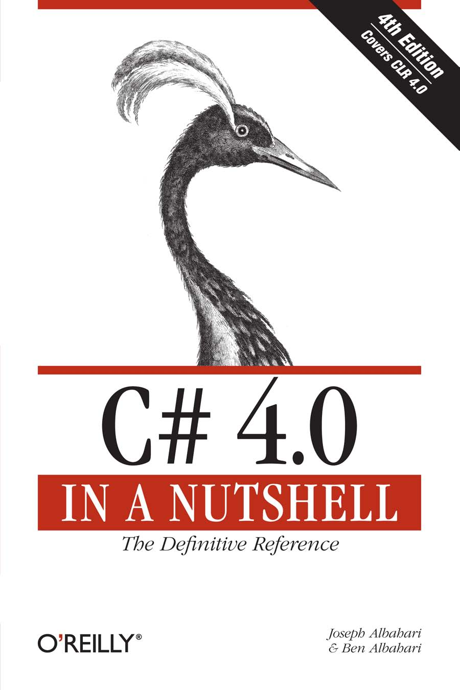
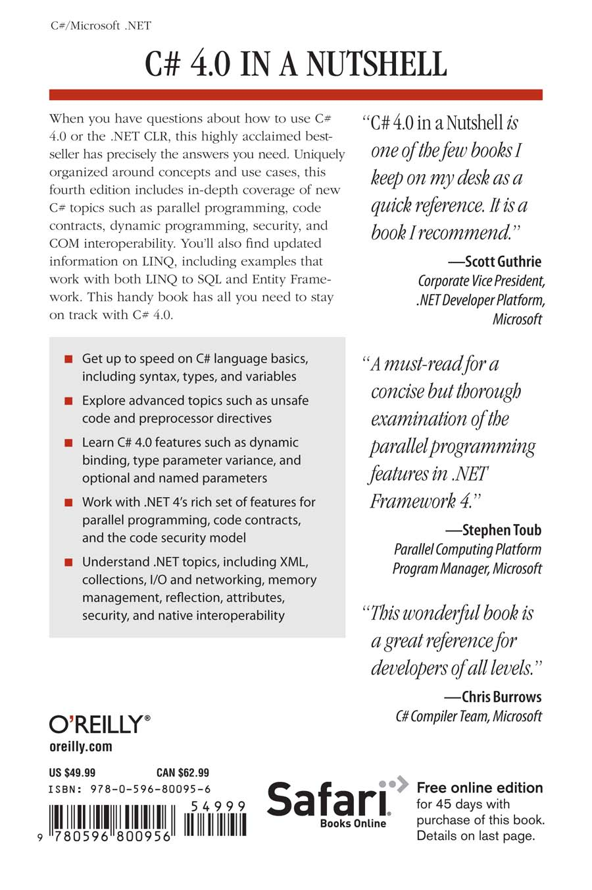
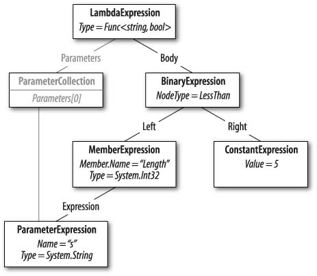
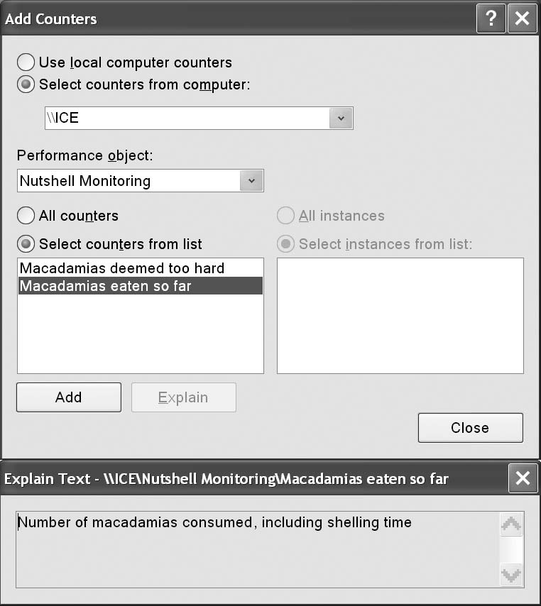
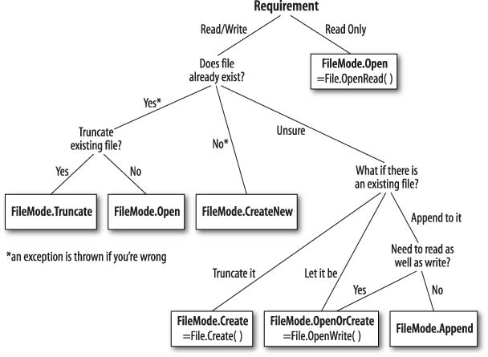
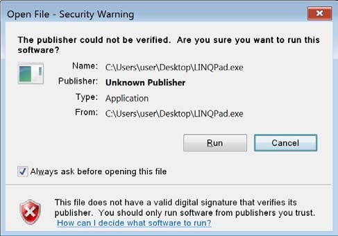
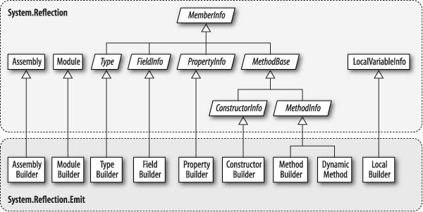
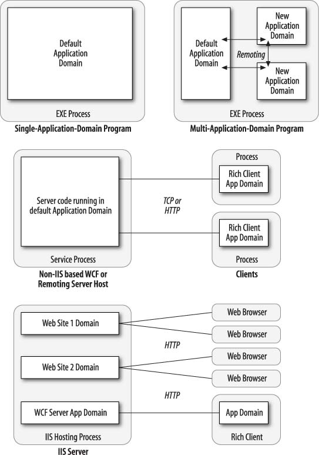

C# 4.0
IN A NUTSHELL
C# 4.0
IN A NUTSHELL
Fourth Edition
Joseph Albahari and Ben Albahari
Beijing · Cambridge · Farnham · Köln · Sebastopol · Taipei · Tokyo
C# 4.0 in a Nutshell, Fourth Edition
by Joseph Albahari and Ben Albahari
Copyright © 2010 Joseph Albahari and Ben Albahari. All rights reserved.
Printed in the United States of America.
Published by O'Reilly Media, Inc., 1005 Gravenstein Highway North, Sebastopol, CA 95472.
O'Reilly books may be purchased for educational, business, or sales promotional use. Online
editions are also available for most titles (http://my.safaribooksonline.com). For more infor-
mation, contact our corporate/institutional sales department: (800) 998-9938 or
corporate@oreilly.com.
Editor: Laurel R.T. Ruma
Indexer: John Bickelhaupt
Production Editor: Loranah Dimant
Cover Designer: Karen Montgomery
Copyeditor: Audrey Doyle
Interior Designer: David Futato
Proofreader: Colleen Toporek
Illustrator: Robert Romano
Printing History:
March 2002:
First Edition.
August 2003:
Second Edition.
September 2007:
Third Edition.
January 2010:
Fourth Edition.
Nutshell Handbook, the Nutshell Handbook logo, and the O'Reilly logo are registered trade-
marks of O'Reilly Media, Inc. C# 4.0 in a Nutshell, the image of a Numidian crane, and related
trade dress are trademarks of O'Reilly Media, Inc.
Many of the designations used by manufacturers and sellers to distinguish their products are
claimed as trademarks. Where those designations appear in this book, and O'Reilly Media,
Inc. was aware of a trademark claim, the designations have been printed in caps or initial caps.
While every precaution has been taken in the preparation of this book, the publisher and
authors assume no responsibility for errors or omissions, or for damages resulting from the
use of the information contained herein.
ISBN: 978-0-596-80095-6
[M]
1263924338
Table of Contents
Preface . . . . . . . . . . . . . . . . . . . . . . . . . . . . . . . . . . . . . . . . . . . . . . . . . . . . . . . . . . . . xiii
1. Introducing C# and the .NET Framework . . . . . . . . . . . . . . . . . . . . . . . . . . . . 1
Object Orientation
1
Type Safety
2
Memory Management
2
Platform Support
3
C#'s Relationship with the CLR
3
The CLR and .NET Framework
3
What's New in C# 4.0
5
2. C# Language Basics . . . . . . . . . . . . . . . . . . . . . . . . . . . . . . . . . . . . . . . . . . . . . . 7
A First C# Program
7
Syntax
10
Type Basics
12
Numeric Types
21
Boolean Type and Operators
28
Strings and Characters
30
Arrays
32
Variables and Parameters
36
Expressions and Operators
44
Statements
48
Namespaces
56
3. Creating Types in C# . . . . . . . . . . . . . . . . . . . . . . . . . . . . . . . . . . . . . . . . . . . . 63
Classes
63
Inheritance
76
The object Type
85
v
Structs
89
Access Modifiers
90
Interfaces
92
Enums
97
Nested Types
100
Generics
101
4. Advanced C# . . . . . . . . . . . . . . . . . . . . . . . . . . . . . . . . . . . . . . . . . . . . . . . . . 115
Delegates
115
Events
124
Lambda Expressions
130
Anonymous Methods
134
try Statements and Exceptions
134
Enumeration and Iterators
143
Nullable Types
148
Operator Overloading
153
Extension Methods
157
Anonymous Types
160
Dynamic Binding
161
Attributes
169
Unsafe Code and Pointers
170
Preprocessor Directives
174
XML Documentation
176
5. Framework Overview . . . . . . . . . . . . . . . . . . . . . . . . . . . . . . . . . . . . . . . . . . 181
The CLR and Core Framework
183
Applied Technologies
187
6. Framework Fundamentals . . . . . . . . . . . . . . . . . . . . . . . . . . . . . . . . . . . . . . 193
String and Text Handling
193
Dates and Times
206
Dates and Time Zones
213
Formatting and Parsing
219
Standard Format Strings and Parsing Flags
225
Other Conversion Mechanisms
232
Globalization
235
Working with Numbers
237
Enums
240
Tuples
244
The Guid Struct
245
Equality Comparison
245
Order Comparison
255
Utility Classes
258
vi | Table of Contents
7. Collections . . . . . . . . . . . . . . . . . . . . . . . . . . . . . . . . . . . . . . . . . . . . . . . . . . . 263
Enumeration
263
The ICollection and IList Interfaces
271
The Array Class
273
Lists, Queues, Stacks, and Sets
282
Dictionaries
292
Customizable Collections and Proxies
298
Plugging in Equality and Order
304
8. LINQ Queries . . . . . . . . . . . . . . . . . . . . . . . . . . . . . . . . . . . . . . . . . . . . . . . . . 311
Getting Started
311
Fluent Syntax
314
Query Expressions
320
Deferred Execution
324
Subqueries
330
Composition Strategies
333
Projection Strategies
337
Interpreted Queries
339
LINQ to SQL and Entity Framework
346
Building Query Expressions
361
9. LINQ Operators . . . . . . . . . . . . . . . . . . . . . . . . . . . . . . . . . . . . . . . . . . . . . . . 367
Overview
369
Filtering
371
Projecting
375
Joining
387
Ordering
394
Grouping
397
Set Operators
400
The Zip Operator
401
Conversion Methods
402
Element Operators
404
Aggregation Methods
406
Quantifiers
411
Generation Methods
412
10. LINQ to XML . . . . . . . . . . . . . . . . . . . . . . . . . . . . . . . . . . . . . . . . . . . . . . . . . . 413
Architectural Overview
413
X-DOM Overview
414
Instantiating an X-DOM
418
Navigating and Querying
420
Updating an X-DOM
425
Working with Values
428
Documents and Declarations
431
Names and Namespaces
434
Table of Contents | vii
Annotations
440
Projecting into an X-DOM
441
11. Other XML Technologies . . . . . . . . . . . . . . . . . . . . . . . . . . . . . . . . . . . . . . . . 447
XmlReader
448
XmlWriter
457
Patterns for Using XmlReader/XmlWriter
459
XmlDocument
463
XPath
466
XSD and Schema Validation
471
XSLT
474
12. Disposal and Garbage Collection . . . . . . . . . . . . . . . . . . . . . . . . . . . . . . . . . 475
IDisposable, Dispose, and Close
475
Automatic Garbage Collection
480
Finalizers
482
How the Garbage Collector Works
487
Managed Memory Leaks
491
Weak References
494
13. Diagnostics and Code Contracts . . . . . . . . . . . . . . . . . . . . . . . . . . . . . . . . . . 499
Conditional Compilation
499
Debug and Trace Classes
502
Code Contracts Overview
506
Preconditions
510
Postconditions
514
Assertions and Object Invariants
517
Contracts on Interfaces and Abstract Methods
518
Dealing with Contract Failure
519
Selectively Enforcing Contracts
521
Static Contract Checking
523
Debugger Integration
524
Processes and Process Threads
525
StackTrace and StackFrame
526
Windows Event Logs
528
Performance Counters
530
The Stopwatch Class
535
14. Streams and I/O . . . . . . . . . . . . . . . . . . . . . . . . . . . . . . . . . . . . . . . . . . . . . . 537
Stream Architecture
537
Using Streams
539
Stream Adapters
552
File and Directory Operations
559
Memory-Mapped Files
569
Compression
571
viii | Table of Contents
Isolated Storage
573
15. Networking . . . . . . . . . . . . . . . . . . . . . . . . . . . . . . . . . . . . . . . . . . . . . . . . . . 579
Network Architecture
579
Addresses and Ports
581
URIs
582
Request/Response Architecture
584
HTTP-Specific Support
592
Writing an HTTP Server
597
Using FTP
600
Using DNS
602
Sending Mail with SmtpClient
603
Using TCP
604
Receiving POP3 Mail with TCP
606
16. Serialization . . . . . . . . . . . . . . . . . . . . . . . . . . . . . . . . . . . . . . . . . . . . . . . . . 609
Serialization Concepts
609
The Data Contract Serializer
613
Data Contracts and Collections
622
Extending Data Contracts
625
The Binary Serializer
628
Binary Serialization Attributes
630
Binary Serialization with ISerializable
634
XML Serialization
637
17. Assemblies . . . . . . . . . . . . . . . . . . . . . . . . . . . . . . . . . . . . . . . . . . . . . . . . . . . 647
What's in an Assembly?
647
Strong Names and Assembly Signing
652
Assembly Names
655
Authenticode Signing
657
The Global Assembly Cache
661
Resources and Satellite Assemblies
663
Resolving and Loading Assemblies
671
Deploying Assemblies Outside the Base Folder
675
Packing a Single-File Executable
676
Working with Unreferenced Assemblies
678
18. Reflection and Metadata . . . . . . . . . . . . . . . . . . . . . . . . . . . . . . . . . . . . . . . 681
Reflecting and Activating Types
682
Reflecting and Invoking Members
688
Reflecting Assemblies
700
Working with Attributes
701
Dynamic Code Generation
707
Emitting Assemblies and Types
714
Emitting Type Members
717
Table of Contents | ix
Emitting Generic Methods and Types
723
Awkward Emission Targets
725
Parsing IL
728
19. Dynamic Programming . . . . . . . . . . . . . . . . . . . . . . . . . . . . . . . . . . . . . . . . 735
The Dynamic Language Runtime
735
Numeric Type Unification
737
Dynamic Member Overload Resolution
738
Implementing Dynamic Objects
744
Interoperating with Dynamic Languages
747
20. Security . . . . . . . . . . . . . . . . . . . . . . . . . . . . . . . . . . . . . . . . . . . . . . . . . . . . . 751
Permissions
751
Code Access Security (CAS)
755
Allowing Partially Trusted Callers
758
The Transparency Model in CLR 4.0
761
Sandboxing Another Assembly
769
Operating System Security
772
Identity and Role Security
775
Cryptography Overview
776
Windows Data Protection
777
Hashing
778
Symmetric Encryption
780
Public Key Encryption and Signing
784
21. Threading . . . . . . . . . . . . . . . . . . . . . . . . . . . . . . . . . . . . . . . . . . . . . . . . . . . 789
Threading's Uses and Misuses
789
Getting Started
791
Thread Pooling
800
Synchronization
805
Locking
808
Thread Safety
817
Nonblocking Synchronization
825
Signaling with Event Wait Handles
832
Signaling with Wait and Pulse
840
The Barrier Class
849
The Event-Based Asynchronous Pattern
851
BackgroundWorker
852
Interrupt and Abort
855
Safe Cancellation
857
Lazy Initialization
860
Thread-Local Storage
862
Reader/Writer Locks
865
Timers
869
x | Table of Contents
22. Parallel Programming . . . . . . . . . . . . . . . . . . . . . . . . . . . . . . . . . . . . . . . . . 873
Why PFX?
874
PLINQ
877
The Parallel Class
892
Task Parallelism
898
Working with AggregateException
912
Concurrent Collections
914
SpinLock and SpinWait
920
23. Asynchronous Methods . . . . . . . . . . . . . . . . . . . . . . . . . . . . . . . . . . . . . . . . 927
Why Asynchronous Methods Exist
927
Asynchronous Method Signatures
928
Asynchronous Methods Versus Asynchronous Delegates
930
Using Asynchronous Methods
930
Asynchronous Methods and Tasks
934
Writing Asynchronous Methods
937
Fake Asynchronous Methods
940
Alternatives to Asynchronous Methods
941
24. Application Domains . . . . . . . . . . . . . . . . . . . . . . . . . . . . . . . . . . . . . . . . . . 943
Application Domain Architecture
943
Creating and Destroying Application Domains
945
Using Multiple Application Domains
946
Using DoCallBack
948
Monitoring Application Domains
949
Domains and Threads
950
Sharing Data Between Domains
951
25. Native and COM Interoperability . . . . . . . . . . . . . . . . . . . . . . . . . . . . . . . . . 957
Calling into Native DLLs
957
Type Marshaling
958
Callbacks from Unmanaged Code
961
Simulating a C Union
962
Shared Memory
963
Mapping a Struct to Unmanaged Memory
965
COM Interoperability
969
Calling a COM Component from C#
971
Embedding Interop Types
975
Primary Interop Assemblies
975
Exposing C# Objects to COM
976
26. Regular Expressions . . . . . . . . . . . . . . . . . . . . . . . . . . . . . . . . . . . . . . . . . . . 977
Regular Expression Basics
977
Quantifiers
982
Zero-Width Assertions
983
Table of Contents | xi
Groups
985
Replacing and Splitting Text
987
Cookbook Regular Expressions
988
Regular Expressions Language Reference
992
Appendix: C# Keywords . . . . . . . . . . . . . . . . . . . . . . . . . . . . . . . . . . . . . . . . . . . . . . 997
Index . . . . . . . . . . . . . . . . . . . . . . . . . . . . . . . . . . . . . . . . . . . . . . . . . . . . . . . . . . . . 1005
xii | Table of Contents
Preface
C# 4.0 further enhances Microsoft's flagship programming language with much-
requested features--including support for dynamic programming, type parameter
variance, and optional and named parameters. At the same time, the CLR and .NET
Framework have grown to include a rich set of features for parallel programming,
code contracts, and a new code security model.
The price of this growth is that there's more than ever to learn. Although tools such
as Microsoft's IntelliSense--and online references--are excellent in helping you on
the job, they presume an existing map of conceptual knowledge. This book provides
exactly that map of knowledge in a concise and unified style--free of clutter and
long introductions.
Like the previous edition, C# 4.0 in a Nutshell is organized entirely around concepts
and use cases, making it friendly both to sequential reading and to random browsing.
It also plumbs significant depths while assuming only basic background
knowledge--making it accessible to intermediate as well as advanced readers.
This book covers C#, the CLR, and the core Framework assemblies. We've chosen
this focus to allow space for difficult topics such as concurrency, security, and ap-
plication domains--without compromising depth or readability. Features new to
C# 4.0 and the associated Framework are flagged so that you can also use this book
as a C# 3.0 reference.
Intended Audience
This book targets intermediate to advanced audiences. No prior knowledge of C#
is required, but some general programming experience is necessary. For the begin-
ner, this book complements, rather than replaces, a tutorial-style introduction to
programming.
xiii
If you're already familiar with C# 3.0, you'll find more than 100 pages dedicated to
the new features of C# 4.0 and Framework 4.0. In addition, many chapters have
been enhanced from the previous edition, most notably the chapters on the C#
language, .NET Framework fundamentals, memory management, threading, and
COM interoperability. We've also updated the LINQ chapters to make the examples
friendly to both LINQ to SQL and Entity Framework programmers.
This book is an ideal companion to any of the vast array of books that focus on an
applied technology such as WPF, ASP.NET, or WCF. The areas of the language
and .NET Framework that such books omit, C# 4.0 in a Nutshell covers in detail--
and vice versa.
If you're looking for a book that skims every .NET Framework technology, this is
not for you. This book is also unsuitable if you want a replacement for IntelliSense
(i.e., the alphabetical listings of types and type members that appeared in the C#
1.1 edition of this book).
How This Book Is Organized
The first three chapters after the introduction concentrate purely on C#, starting
with the basics of syntax, types, and variables, and finishing with advanced topics
such as unsafe code and preprocessor directives. If you're new to the language, you
should read these chapters sequentially.
The remaining chapters cover the core .NET Framework, including such topics as
LINQ, XML, collections, I/O and networking, memory management, reflection,
dynamic programming, attributes, security, concurrency, application domains, and
native interoperability. You can read most of these chapters randomly, except for
Chapters 6 and 7, which lay a foundation for subsequent topics. The three chapters
on LINQ are also best read in sequence.
What You Need to Use This Book
The examples in this book require a C# 4.0 compiler and Microsoft .NET Frame-
work 4.0. You will also find Microsoft's .NET documentation useful to look up
individual types and members. The easiest way to get all three--along with an in-
tegrated development environment--is to install Microsoft Visual Studio 2010. Any
edition is suitable for what's taught in this book, including Visual Studio Express (a
free download). Visual Studio also includes an express edition of SQL Server, re-
quired to run the LINQ to SQL and Entity Framework examples, and IntelliSense,
which pops up type member listings as you type.
For Chapters 2 through 4, Chapter 6, Chapters 8 through 10, and Chapter 24, the
code samples are available in the free code-snippet IDE, LINQPad. The samples
include everything in those chapters from simple expressions to complete programs
and are fully editable, allowing you to learn interactively. You can download LINQ-
Pad from http://www.linqpad.net; to obtain the additional samples, click "Download
more samples" in the Samples tab at the bottom left. You can then advance through
each sample with a single click.
xiv | Preface
Conventions Used in This Book
The book uses basic UML notation to illustrate relationships between types, as
shown in Figure P-1. A slanted rectangle means an abstract class; a circle means an
interface. A line with a hollow triangle denotes inheritance, with the triangle pointing
to the base type. A line with an arrow denotes a one-way association; a line without
an arrow denotes a two-way association.
Figure P-1. Sample diagram
The following typographical conventions are used in this book:
Italic
Indicates new terms, URIs, filenames, and directories
Constant width
Indicates C# code, keywords and identifiers, and program output
Constant width bold
Shows a highlighted section of code
Constant width italic
Shows text that should be replaced with user-supplied values
Preface | xv
This icon signifies a tip, suggestion, or general note.
This icon indicates a warning or caution.
Using Code Examples
This book is here to help you get your job done. In general, you may use the code
in this book in your programs and documentation. You do not need to contact us
for permission unless you're reproducing a significant portion of the code. For ex-
ample, writing a program that uses several chunks of code from this book does not
require permission. Selling or distributing a CD-ROM of examples from O'Reilly
books does require permission. Answering a question by citing this book and quoting
example code does not require permission. Incorporating a significant amount of
example code from this book into your product's documentation does require
permission.
We appreciate, but do not require, attribution. An attribution usually includes the
title, author, publisher, and ISBN. For example: "C# 4.0 in a Nutshell by Joseph
Albahari and Ben Albahari. Copyright 2010 Joseph Albahari and Ben Albahari,
978-0-596-80095-6."
If you feel your use of code examples falls outside fair use or the permission given
here, feel free to contact us at permissions@oreilly.com.
We'd Like to Hear from You
Please address comments and questions concerning this book to the publisher:
O'Reilly Media, Inc.
1005 Gravenstein Highway North
Sebastopol, CA 95472
800-998-9938 (in the United States or Canada)
707-829-0515 (international or local)
707-829-0104 (fax)
We have a web page for this book, where we list errata, examples, and any additional
information. You can access this page at:
http://www.oreilly.com/catalog/9780596800956
Code listings and additional resources are provided at:
http://www.albahari.com/nutshell/
xvi | Preface
To comment or ask technical questions about this book, send email to the following,
quoting the book's ISBN (9780596800956):
bookquestions@oreilly.com
For more information about our books, conferences, Resource Centers, and the
O'Reilly Network, see our website at:
http://www.oreilly.com
Safari® Books Online
Safari Books Online is an on-demand digital library that lets you easily
search over 7,500 technology and creative reference books and videos
to find the answers you need quickly.
With a subscription, you can read any page and watch any video from our library
online. Read books on your cell phone and mobile devices. Access new titles before
they are available for print, and get exclusive access to manuscripts in development
and post feedback for the authors. Copy and paste code samples, organize your
favorites, download chapters, bookmark key sections, create notes, print out pages,
and benefit from tons of other time-saving features.
O'Reilly Media has uploaded this book to the Safari Books Online service. To have
full digital access to this book and others on similar topics from O'Reilly and other
publishers, sign up for free at http://my.safaribooksonline.com.
Acknowledgments
Joseph Albahari
First, I want to thank my brother and coauthor, Ben Albahari, for initially persuading
me to take on what has become a highly successful project. I particularly enjoy
working with Ben in probing difficult topics: he shares my willingness to question
conventional wisdom, and the tenacity to pull things apart until it becomes clear
how they really work.
I am most indebted to the superb technical reviewers. Starting with the reviewers at
Microsoft, the extensive input from Stephen Toub (Parallel Programming team) and
Chris Burrows (C# Compiler team) significantly enhanced the chapters on concur-
rency, dynamic programming, and the C# language. From the CLR team, I received
invaluable input on security and memory management from Shawn Farkas, Brian
Grunkemeyer, Maoni Stephens, and David DeWinter. And on Code Contracts, the
feedback from Brian Grunkemeyer, Mike Barnett, and Melitta Andersen raised this
chapter to the next quality bar. Thank you, people--both for your prompt feedback
and for answering all my questions. I really appreciate it!
Preface | xvii
I have the highest praise for Jon Skeet (author of C# in Depth and Stack Overflow
extraordinaire), whose perceptive suggestions enhanced numerous chapters (you
work for Google, but we'll forgive you!). I'm similarly grateful for the keen eye of
C# MVP Nicholas Paldino, who spotted errors and omissions that others missed.
I'd also like to thank C# MVPs Mitch Wheat and Brian Peek, and reviewers of the
3.0 edition upon which this book was based. This includes the aforementioned
Nicholas Paldino, who applied his thoroughness and breadth of knowledge to most
chapters of the book, and Krzysztof Cwalina, Matt Warren, Joel Pobar, Glyn
Griffiths, Ion Vasilian, Brad Abrams, Sam Gentile, and Adam Nathan.
Finally, I want to thank the O'Reilly team, including my prompt and efficient editor,
Laurel Ruma, my publicist, Kathryn Barrett, my copyeditor, Audrey Doyle, and
members of my family, Miri and Sonia.
Ben Albahari
Because my brother wrote his acknowledgments first, you can infer most of what I
want to say :) We've actually both been programming since we were kids (we shared
an Apple IIe; he was writing his own operating system while I was writing Hangman),
so it's cool that we're now writing books together. I hope the enriching experience
we had writing the book will translate into an enriching experience for you reading
the book.
I'd also like to thank my former colleagues at Microsoft. Many smart people work
there, not just in terms of intellect but also in a broader emotional sense, and I miss
working with them. In particular, I learned a lot from Brian Beckman, to whom I
am indebted.
xviii | Preface
1
Introducing C# and the .NET
Framework
C# is a general-purpose, type-safe, object-oriented programming language. The goal
of the language is programmer productivity. To this end, the language balances
simplicity, expressiveness, and performance. The chief architect of the language
since its first version is Anders Hejlsberg (creator of Turbo Pascal and architect of
Delphi). The C# language is platform-neutral, but it was written to work well with
the Microsoft .NET Framework.
Object Orientation
C# is a rich implementation of the object-orientation paradigm, which includes
encapsulation, inheritance, and polymorphism. Encapsulation means creating a
boundary around an object, to separate its external (public) behavior from its internal
(private) implementation details. The distinctive features of C# from an object-
oriented perspective are:
Unified type system
The fundamental building block in C# is an encapsulated unit of data and
functions called a type. C# has a unified type system, where all types ultimately
share a common base type. This means that all types, whether they represent
business objects or are primitive types such as numbers, share the same basic
set of functionality. For example, any type can be converted to a string by calling
its ToString method.
Classes and interfaces
In the pure object-oriented paradigm, the only kind of type is a class. In C#,
there are several other kinds of types, one of which is an interface (similar to
Java interfaces). An interface is like a class except it is only a definition for a
type, not an implementation. It's particularly useful in scenarios where multiple
inheritance is required (unlike languages such as C++ and Eiffel, C# does not
support multiple inheritance of classes).
1
Properties, methods, and events
In the pure object-oriented paradigm, all functions are methods (this is the case
in Smalltalk). In C#, methods are only one kind of function member, which also
includes properties and events (there are others, too). Properties are function
members that encapsulate a piece of an object's state, such as a button's color
or a label's text. Events are function members that simplify acting on object
state changes.
Type Safety
C# is primarily a type-safe language, meaning that types can interact only through
protocols they define, thereby ensuring each type's internal consistency. For in-
stance, C# prevents you from interacting with a string type as though it were an
integer type.
More specifically, C# supports static typing, meaning that the language enforces
type safety at compile time. This is in addition to dynamic type safety, which the .NET
CLR enforces at runtime.
Static typing eliminates a large class of errors before a program is even run. It shifts
the burden away from runtime unit tests onto the compiler to verify that all the types
in a program fit together correctly. This makes large programs much easier to man-
age, more predictable, and more robust. Furthermore, static typing allows tools such
as IntelliSense in Visual Studio to help you write a program, since it knows for a
given variable what type it is, and hence what methods you can call on that variable.
C# 4.0 allows parts of your code to be dynamically typed via
the new dynamic keyword. However, C# remains a predomi-
nately statically typed language.
C# is called a strongly typed language because its type rules (whether enforced stat-
ically or dynamically) are very strict. For instance, you cannot call a function that's
designed to accept an integer with a floating-point number, unless you first explic-
itly convert the floating-point number to an integer. This helps prevent mistakes.
Strong typing also plays a role in enabling C# code to run in a sandbox--an envi-
ronment where every aspect of security is controlled by the host. In a sandbox, it is
important that you cannot arbitrarily corrupt the state of an object by bypassing its
type rules.
Memory Management
C# relies on the runtime to perform automatic memory management. The CLR has
a garbage collector that executes as part of your program, reclaiming memory for
objects that are no longer referenced. This frees programmers from explicitly deal-
locating the memory for an object, eliminating the problem of incorrect pointers
encountered in languages such as C++.
2 | Chapter 1:Introducing C# and the .NET Framework
C# does not eliminate pointers: it merely makes them unnecessary for most pro-
Introducing C#
gramming tasks. For performance-critical hotspots and interoperability, pointers
and .NET
may be used, but they are permitted only in blocks that are explicitly marked unsafe.
Platform Support
C# is typically used for writing code that runs on Windows platforms. Although
Microsoft standardized the C# language and the CLR through ECMA, the total
amount of resources (both inside and outside of Microsoft) dedicated to supporting
C# on non-Windows platforms is relatively small. This means that languages such
as Java are sensible choices when multiplatform support is of primary concern.
Having said this, C# can be used to write cross-platform code in the following
scenarios:
· C# code may run on the server and dish up DHTML that can run on any plat-
form. This is precisely the case for ASP.NET.
· C# code may run on a runtime other than the Microsoft Common Language
Runtime. The most notable example is the Mono project, which has its own
C# compiler and runtime, running on Linux, Solaris, Mac OS X, and Windows.
· C# code may run on a host that supports Microsoft Silverlight (supported for
Windows and Mac OS X). This is a new technology that is analogous to Adobe's
Flash Player.
C#'s Relationship with the CLR
C# depends on a runtime equipped with a host of features such as automatic mem-
ory management and exception handling. The design of C# closely maps to the
design of the CLR, which provides these runtime features (although C# is technically
independent of the CLR). Furthermore, the C# type system maps closely to the CLR
type system (e.g., both share the same definitions for primitive types).
The CLR and .NET Framework
The .NET Framework consists of a runtime called the Common Language Run-
time (CLR) and a vast set of libraries. The libraries consist of core libraries (which
this book is concerned with) and applied libraries, which depend on the core libra-
ries. Figure 1-1 is a visual overview of those libraries (and also serves as a navigational
aid to the book).
The CLR is the runtime for executing managed code. C# is one of several managed
languages that get compiled into managed code. Managed code is packaged into an
assembly, in the form of either an executable file (an .exe) or a library (a .dll), along
with type information, or metadata.
Managed code is represented in Intermediate Language or IL. When the CLR loads
an assembly, it converts the IL into the native code of the machine, such as x86. This
conversion is done by the CLR's JIT (Just-In-Time) compiler. An assembly retains
The CLR and .NET Framework | 3
Figure 1-1. This depicts the topics covered in this book and the chapters in which they are
found. The names of specialized frameworks and class libraries beyond the scope of this book
are grayed out and displayed outside the boundaries of The Nutshell.
almost all of the original source language constructs, which makes it easy to inspect
and even generate code dynamically.
Red Gate's .NET Reflector application is an invaluable tool for
examining the contents of an assembly (you can also use it as a
decompiler).
The CLR performs as a host for numerous runtime services. Examples of these serv-
ices include memory management, the loading of libraries, and security services.
The CLR is language-neutral, allowing developers to build applications in multiple
languages (e.g., C#, Visual Basic .NET, Managed C++, Delphi.NET, Chrome .NET,
and J#).
The .NET Framework consists of libraries for writing just about any Windows- or
web-based application. Chapter 5 gives an overview of the .NET Framework
libraries.
4 | Chapter 1:Introducing C# and the .NET Framework
What's New in C# 4.0
Introducing C#
and .NET
The new features in C# 4.0 are:
· Dynamic binding
· Type variance with generic interfaces and delegates
· Optional parameters
· Named arguments
· COM interoperability improvements
Dynamic binding (Chapters 4 and 19) is C# 4.0's biggest innovation. This feature
was inspired by dynamic languages such as Python, Ruby, JavaScript, and Smalltalk.
Dynamic binding defers binding--the process of resolving types and members--
from compile time to runtime. Although C# remains a predominantly statically
typed language, a variable of type dynamic is resolved in a late-bound manner. For
example:
dynamic d = "hello";
Console.WriteLine (d.ToUpper()); // HELLO
Console.WriteLine (d.Foo()); // Compiles OK but gives runtime error
Calling an object dynamically is useful in scenarios that would otherwise require
complicated reflection code. Dynamic binding is also useful when interoperating
with dynamic languages and COM components.
Optional parameters (Chapter 2) allow functions to specify default parameter values
so that callers can omit arguments. An optional parameter declaration such as:
void Foo (int x = 23) { Console.WriteLine (x); }
can be called as follows:
Foo(); // 23
Named arguments (Chapter 2) allow a function caller to identify an argument by
name rather than position. For example, the preceding method can now be called
as follows:
Foo (x:5);
Type variance (Chapters 3 and 4) allows generic interfaces and generic delegates to
mark their type parameters as covariant or contravariant. This enables code such as
the following to work:
IEnumerable<string> x = ...;
IEnumerable<object> y = x;
COM interoperability (Chapter 25) has been enhanced in C# 4.0 in three ways. First,
arguments can be passed by reference without the ref keyword. This feature is par-
ticularly useful in conjunction with optional parameters. It means that the following
C# 3.0 code to open a Word document:
What's New in C# 4.0 | 5
object o1 = "foo.doc";
object o2 = Missing.Value;
object o3 = Missing.Value;
...
word.Open (ref o1, ref o2, ref o3...);
can now be simplified to:
word.Open ("Foo.doc");
Second, assemblies that contain COM interop types can now be linked rather than
referenced. Linked interop types support type equivalence, avoiding the need for
Primary Interop Assemblies and putting an end to versioning and deployment
headaches.
Third, functions that return variant types from linked interop types are mapped to
dynamic rather than object, eliminating the need for casting.
6 | Chapter 1:Introducing C# and the .NET Framework
2
C# Language Basics
In this chapter, we introduce the basics of the C# language.
All programs and code snippets in this and the following two
chapters are available as interactive samples in LINQPad.
Working through these samples in conjunction with the book
accelerates learning in that you can edit the samples and in-
stantly see the results without needing to set up projects and
solutions in Visual Studio.
To download the samples, click the Samples tab in LINQPad
and then click "Download more samples." LINQPad is free--
go to http://www.linqpad.net.
A First C# Program
Here is a program that multiplies 12 by 30 and prints the result, 360, to the screen.
The double forward slash indicates that the remainder of a line is a comment:
using System; // Importing namespace
class Test // Class declaration
{
static void Main() // Method declaration
{
int x = 12 * 30; // Statement 1
Console.WriteLine (x); // Statement 2
} // End of method
} // End of class
At the heart of this program lie two statements. Statements in C# execute sequen-
tially. Each statement is terminated by a semicolon:
int x = 12 * 30;
Console.WriteLine (x);
7
The first statement computes the expression 12 * 30 and stores the result in a local
variable, named x, which is an integer type. The second statement calls the
Console class's WriteLine method, to print the variable x to a text window on the
screen.
A method performs an action in a series of statements, called a statement block--a
pair of braces containing zero or more statements. We defined a single method
named Main:
static void Main()
{
...
}
Writing higher-level functions that call upon lower-level functions simplifies a pro-
gram. We can refactor our program with a reusable method that multiplies an integer
by 12 as follows:
using System;
class Test
{
static void Main()
{
Console.WriteLine (FeetToInches (30)); // 360
Console.WriteLine (FeetToInches (100)); // 1200
}
static int FeetToInches (int feet)
{
int inches = feet * 12;
return inches;
}
}
A method can receive input data from the caller by specifying parameters and out-
put data back to the caller by specifying a return type. We defined a method called
FeetToInches that has a parameter for inputting feet, and a return type for outputting
inches:
static int FeetToInches (int feet) {...}
The literals 30 and 100 are the arguments passed to the FeetToInches method. The
Main method in our example has empty parentheses because it has no parameters,
and is void because it doesn't return any value to its caller:
static void Main()
C# recognizes a method called Main as signaling the default entry point of execution.
The Main method may optionally return an integer (rather than void) in order to
return a value to the execution environment. The Main method can also optionally
accept an array of strings as a parameter (that will be populated with any arguments
passed to the executable). For example:
static int Main (string[] args) {...}
8 | Chapter 2:C# Language Basics
An array (such as string[]) represents a fixed number of ele-
ments of a particular type. Arrays are specified by placing square
brackets after the element type and are described in "Ar-
rays" on page 32.
Methods are one of several kinds of functions in C#. Another kind of function we
C# Basics
used was the * operator, used to perform multiplication. There are also construc-
tors, properties, events, indexers, and finalizers.
In our example, the two methods are grouped into a class. A class groups function
members and data members to form an object-oriented building block. The
Console class groups members that handle command-line input/output functional-
ity, such as the WriteLine method. Our Test class groups two methods--the Main
method and the FeetToInches method. A class is a kind of type, which we will ex-
amine in "Type Basics" on page 12.
At the outermost level of a program, types are organized into namespaces. The
using directive was used to make the System namespace available to our application,
to use the Console class. We could define all our classes within the TestPrograms
namespace, as follows:
using System;
namespace TestPrograms
{
class Test {...}
class Test2 {...}
}
The .NET Framework is organized into nested namespaces. For example, this is the
namespace that contains types for handling text:
using System.Text;
The using directive is there for convenience; you can also refer to a type by its fully
qualified name, which is the type name prefixed with its namespace, such as
System.Text.StringBuilder.
Compilation
The C# compiler compiles source code, specified as a set of files with the .cs exten-
sion, into an assembly. An assembly is the unit of packaging and deployment
in .NET. An assembly can be either an application or a library. A normal console or
Windows application has a Main method and is an .exe file. A library is a .dll and is
equivalent to an .exe without an entry point. Its purpose is to be called upon (ref-
erenced) by an application or by other libraries. The .NET Framework is a set of
libraries.
A First C# Program | 9
The name of the C# compiler is csc.exe. You can either use an IDE such as Visual
Studio to compile, or call csc manually from the command line. To compile man-
ually, first save a program to a file such as MyFirstProgram.cs, and then go to the
command line and invoke csc (located under %SystemRoot%\Microsoft.NET
\Framework\<framework-version> where %SystemRoot% is your Windows direc-
tory) as follows:
csc MyFirstProgram.cs
This produces an application named MyFirstProgram.exe.
To produce a library (.dll), do the following:
csc /target:library MyFirstProgram.cs
We explain assemblies in detail in Chapter 16.
Syntax
C# syntax is based on C and C++ syntax. In this section, we will describe C#'s
elements of syntax, using the following program:
using System;
class Test
{
static void Main()
{
int x = 12 * 30;
Console.WriteLine (x);
}
}
Identifiers and Keywords
Identifiers are names that programmers choose for their classes, methods, variables,
and so on. These are the identifiers in our example program, in the order they appear:
System Test Main x Console WriteLine
An identifier must be a whole word, essentially made up of Unicode characters
starting with a letter or underscore. C# identifiers are case-sensitive. By convention,
parameters, local variables, and private fields should be in camel case (e.g.,
myVariable), and all other identifiers should be in Pascal case (e.g., MyMethod).
Keywords are names reserved by the compiler that you can't use as identifiers. These
are the keywords in our example program:
using class static void int
10 | Chapter 2:C# Language Basics
Here is the full list of C# keywords:
abstract
as
base
bool
break
byte
case
catch
char
checked
class
const
continue
decimal
default
delegate
do
double
else
enum
C# Basics
event
explicit
extern
false
finally
fixed
float
for
foreach
goto
if
implicit
in
int
interface
internal
is
lock
long
namespace
new
null
object
operator
out
override
params
private
protected
public
readonly
ref
return
sbyte
sealed
short
sizeof
stackalloc
static
string
struct
switch
this
throw
true
try
typeof
uint
ulong
unchecked
unsafe
ushort
using
virtual
volatile
void
while
Avoiding conflicts
If you really want to use an identifier that clashes with a keyword, you can do so by
qualifying it with the @ prefix. For instance:
class class {...} // Illegal
class @class {...} // Legal
The @ symbol doesn't form part of the identifier itself. So @myVariable is the same as
myVariable.
The @ prefix can be useful when consuming libraries written in
other .NET languages that have different keywords.
Contextual keywords
Some keywords are contextual, meaning that they can also be used as identifiers--
without an @ symbol. These are:
add
ascending
by
descending
dynamic
equals
from
get
global
group
in
into
join
let
on
orderby
partial
remove
select
set
value
var
where
yield
Syntax | 11
With contextual keywords, ambiguity cannot arise within the context in which they
are used.
Literals, Punctuators, and Operators
Literals are primitive pieces of data statically embedded into the program. The lit-
erals we used in our example program are 12 and 30.
Punctuators help demarcate the structure of the program. These are the punctuators
we used in our example program:
; { }
The semicolon is used to terminate a statement. This means that statements can
wrap multiple lines:
Console.WriteLine
(1 + 2 + 3 + 4 + 5 + 6 + 7 + 8 + 9 + 10);
The braces are used to group multiple statements into a statement block.
An operator transforms and combines expressions. Most operators in C# are de-
noted with a symbol, such as the multiplication operator, *. We will discuss oper-
ators in more detail later in the chapter. These are the operators we used in our
example program:
. () * =
The period denotes a member of something (or a decimal point with numeric liter-
als). The parentheses are used when declaring or calling a method; empty paren-
theses are used when the method accepts no arguments. The equals sign is used for
assignment (the double equals sign, ==, is used for equality comparison, as we'll see
later).
Comments
C# offers two different styles of source-code documentation: single-line comments
and multiline comments. A single-line comment begins with a double forward slash
and continues until the end of the line. For example:
int x = 3; // Comment about assigning 3 to x
A multiline comment begins with /* and ends with */. For example:
int x = 3; /* This is a comment that
spans two lines */
Comments may embed XML documentation tags, explained in "XML Documen-
tation" on page 176 in Chapter 4.
Type Basics
A type defines the blueprint for a value. A value is a storage location denoted by a
variable or a constant. A variable represents a value that can change, whereas a
12 | Chapter 2:C# Language Basics
constant represents an invariant (we will visit constants later in the chapter). We
created a local variable named x in our first program:
static void Main()
{
int x = 12 * 30;
Console.WriteLine (x);
}
C# Basics
All values in C# are an instance of a specific type. The meaning of a value, and the
set of possible values a variable can have, is determined by its type. The type of x is
int.
Predefined Type Examples
Predefined types are types that are specially supported by the compiler. The int type
is a predefined type for representing the set of integers that fit into 32 bits of memory,
from -231 to 231-1. We can perform functions such as arithmetic with instances of
the int type as follows:
int x = 12 * 30;
Another predefined C# type is string. The string type represents a sequence of
characters, such as ".NET" or "http://oreilly.com". We can work with strings by
calling functions on them as follows:
string message = "Hello world";
string upperMessage = message.ToUpper();
Console.WriteLine (upperMessage); // HELLO WORLD
int x = 2010;
message = message + x.ToString();
Console.WriteLine (message); // Hello world2010
The predefined bool type has exactly two possible values: true and false. The
bool type is commonly used to conditionally branch execution flow based with an
if statement. For example:
bool simpleVar = false;
if (simpleVar)
Console.WriteLine ("This will not print");
int x = 5000;
bool lessThanAMile = x < 5280;
if (lessThanAMile)
Console.WriteLine ("This will print");
In C#, predefined types (also referred to as built-in types) are
recognized with a C# keyword. The System namespace in
the .NET Framework contains many important types that are
not predefined by C# (e.g., DateTime).
Type Basics | 13
Custom Type Examples
Just as we can build complex functions from simple functions, we can build complex
types from primitive types. In this example, we will define a custom type named
UnitConverter--a class that serves as a blueprint for unit conversions:
using System;
public class UnitConverter
{
int ratio; // Field
public UnitConverter (int unitRatio) {ratio = unitRatio; } // Constructor
public int Convert (int unit) {return unit * ratio; } // Method
}
class Test
{
static void Main()
{
UnitConverter feetToInchesConverter = new UnitConverter (12);
UnitConverter milesToFeetConverter = new UnitConverter (5280);
Console.WriteLine (feetToInchesConverter.Convert(30)); // 360
Console.WriteLine (feetToInchesConverter.Convert(100)); // 1200
Console.WriteLine (feetToInchesConverter.Convert(
milesToFeetConverter.Convert(1))); // 63360
}
}
Members of a type
A type contains data members and function members. The data member of
UnitConverter is the field called ratio. The function members of UnitConverter
are the Convert method and the UnitConverter's constructor.
Symmetry of predefined types and custom types
A beautiful aspect of C# is that predefined types and custom types have few differ-
ences. The predefined int type serves as a blueprint for integers. It holds data--32
bits--and provides function members that use that data, such as ToString. Similarly,
our custom UnitConverter type acts as a blueprint for unit conversions. It holds
data--the ratio--and provides function members to use that data.
Constructors and instantiation
Data is created by instantiating a type. Predefined types can be instantiated simply
by using a literal. For example, the following line instantiates two integers (12 and
30), which are used to compute a third instance, x:
int x = 12 * 30;
The new operator is needed to create a new instance of a custom type. We created
and declared an instance of the UnitConverter type with this statement:
UnitConverter feetToInchesConverter = new UnitConverter (12);
14 | Chapter 2:C# Language Basics
Immediately after the new operator instantiates an object, the object's constructor is
called to perform initialization. A constructor is defined like a method, except that
the method name and return type are reduced to the name of the enclosing type:
public class UnitConverter
{
...
public UnitConverter (int unitRatio) { ratio = unitRatio; }
C# Basics
...
}
Instance versus static members
The data members and function members that operate on the instance of the type
are called instance members. The UnitConverter's Convert method and the int's
ToString method are examples of instance members. By default, members are in-
stance members.
Data members and function members that don't operate on the instance of the type,
but rather on the type itself, must be marked as static. The Test.Main and
Console.WriteLine methods are static methods. The Console class is actually a static
class, which means all its members are static. You never actually create instances of
a Console--one console is shared across the whole application.
To contrast instance from static members, in the following code the instance field
Name pertains to an instance of a particular Panda, whereas Population pertains to the
set of all Panda instances:
public class Panda
{
public string Name; // Instance field
public static int Population; // Static field
public Panda (string n) // Constructor
{
Name = n; // Assign the instance field
Population = Population + 1; // Increment the static Population field
}
}
The following code creates two instances of the Panda, prints their names, and then
prints the total population:
using System;
class Program
{
static void Main()
{
Panda p1 = new Panda ("Pan Dee");
Panda p2 = new Panda ("Pan Dah");
Console.WriteLine (p1.Name); // Pan Dee
Console.WriteLine (p2.Name); // Pan Dah
Console.WriteLine (Panda.Population); // 2
Type Basics | 15
}
}
The public keyword
The public keyword exposes members to other classes. In this example, if the Name
field in Panda was not public, the Test class could not access it. Marking a member
public is how a type communicates: "Here is what I want other types to see--
everything else is my own private implementation details." In object-oriented terms,
we say that the public members encapsulate the private members of the class.
Conversions
C# can convert between instances of compatible types. A conversion always creates
a new value from an existing one. Conversions can be either implicit or explicit:
implicit conversions happen automatically, and explicit conversions require a cast.
In the following example, we implicitly cast an int to a long type (which has twice
the bitwise capacity of an int) and explicitly cast an int to a short type (which has
half the capacity of an int):
int x = 12345; // int is a 32-bit integer
long y = x; // Implicit conversion to 64-bit integer
short z = (short)x; // Explicit conversion to 16-bit integer
Implicit conversions are allowed when both of the following are true:
· The compiler can guarantee they will always succeed.
· No information is lost in conversion.*
Conversely, explicit conversions are required when one of the following is true:
· The compiler cannot guarantee they will always succeed.
· Information may be lost during conversion.
The numeric conversions that we just saw are built into the
language. C# also supports reference conversions and boxing
conversions (see Chapter 3) as well as custom conversions (see
"Operator Overloading" on page 153 in Chapter 4). The com-
piler doesn't enforce the aforementioned rules with custom
conversions, so it's possible for badly designed types to behave
otherwise.
Value Types Versus Reference Types
All C# types fall into the following categories:
· Value types
· Reference types
* A minor caveat is that very large long values lose some precision when converted to double.
16 | Chapter 2:C# Language Basics
· Generic type parameters
· Pointer types
In this section, we'll describe value types and reference types.
In "Generics" on page 101 in Chapter 3, we'll cover generic
type parameters, and in "Unsafe Code and Point-
C# Basics
ers" on page 170 in Chapter 4, we'll cover pointer types.
Value types comprise most built-in types (specifically, all numeric types, the char
type, and the bool type) as well as custom struct and enum types.
Reference types comprise all class, array, delegate, and interface types.
The fundamental difference between value types and reference types is how they are
handled in memory.
Value types
The content of a value type variable or constant is simply a value. For example, the
content of the built-in value type, int, is 32 bits of data.
You can define a custom value type with the struct keyword (see Figure 2-1):
public struct Point { public int X, Y; }
Figure 2-1. A value type instance in memory
The assignment of a value type instance always copies the instance. For example:
static void Main()
{
Point p1 = new Point();
p1.X = 7;
Point p2 = p1; // Assignment causes copy
Console.WriteLine (p1.X); // 7
Console.WriteLine (p2.X); // 7
p1.X = 9; // Change p1.X
Console.WriteLine (p1.X); // 9
Console.WriteLine (p2.X); // 7
}
Figure 2-2 shows that p1 and p2 have independent storage.
Type Basics | 17
Figure 2-2. Assignment copies a value-type instance
Reference types
A reference type is more complex than a value type, having two parts: an object and
the reference to that object. The content of a reference-type variable or constant is
a reference to an object that contains the value. Here is the Point type from our
previous example rewritten as a class, rather than a struct (shown in Figure 2-3):
public class Point { public int X, Y; }
Figure 2-3. A reference-type instance in memory
Assigning a reference-type variable copies the reference, not the object instance. This
allows multiple variables to refer to the same object--something not ordinarily pos-
sible with value types. If we repeat the previous example, but with Point now a class,
an operation to X affects Y:
static void Main()
{
Point p1 = new Point();
p1.X = 7;
Point p2 = p1; // Copies p1 reference
Console.WriteLine (p1.X); // 7
Console.WriteLine (p2.X); // 7
p1.X = 9; // Change p1.X
Console.WriteLine (p1.X); // 9
Console.WriteLine (p2.X); // 9
}
Figure 2-4 shows that p1 and p2 are two references that point to the same object.
18 | Chapter 2:C# Language Basics
C# Basics
Figure 2-4. Assignment copies a reference
Null
A reference can be assigned the literal null, indicating that the reference points to
no object:
class Point {...}
...
Point p = null;
Console.WriteLine (p == null); // True
// The following line generates a runtime error
// (a NullReferenceException is thrown):
Console.WriteLine (p.X);
In contrast, a value type cannot ordinarily have a null value:
struct Point {...}
...
Point p = null; // Compile-time error
int x = null; // Compile-time error
C# also has a construct called nullable types for representing
value-type nulls (see "Nullable Types" on page 148 in Chap-
ter 4).
Storage overhead
Value-type instances occupy precisely the memory required to store their fields. In
this example, Point takes eight bytes of memory:
struct Point
{
int x; // 4 bytes
int y; // 4 bytes
}
Type Basics | 19
Technically, the CLR positions fields within the type at an ad-
dress that's a multiple of the fields' size (up to a maximum of 8
bytes). Thus, the following actually consumes 16 bytes of mem-
ory (with the 7 bytes following the first field "wasted"):
struct A { byte b; long l; }
Reference types require separate allocations of memory for the reference and object.
The object consumes as many bytes as its fields, plus additional administrative
overhead. The precise overhead is intrinsically private to the implementation of
the .NET runtime, but at minimum the overhead is eight bytes, used to store a key
to the object's type, as well as temporary information such as its lock state for
multithreading and a flag to indicate whether it has been fixed from movement by
the garbage collector. Each reference to an object requires an extra 4 or 8 bytes,
depending on whether the .NET runtime is running on a 32- or 64-bit platform.
Predefined Type Taxonomy
The predefined types in C# are:
Value types
· Numeric
-- Signed integer (sbyte, short, int, long)
-- Unsigned integer (byte, ushort, uint, ulong)
-- Real number (float, double, decimal)
· Logical (bool)
· Character (char)
Reference types
· String (string)
· Object (object)
Predefined types in C# alias Framework types in the System namespace. There is
only a syntactic difference between these two statements:
int i = 5;
System.Int32 i = 5;
The set of predefined value types excluding decimal are known as primitive types in
the CLR. Primitive types are so called because they are supported directly via in-
structions in compiled code, and this usually translates to direct support on the
underlying processor. For example:
// Underlying hexadecimal representation
int i = 7; // 0x7
bool b = true; // 0x1
char c = 'A'; // 0x41
float f = 0.5f; // uses IEEE floating-point encoding
The System.IntPtr and System.UIntPtr types are also primitive (see Chapter 25).
20 | Chapter 2:C# Language Basics
Numeric Types
C# has the predefined numeric types shown in Table 2-1.
Table 2-1. Predefined numeric types in C#
C# type
System type
Suffix
Size
Range
C# Basics
Integral--signed
sbyte
SByte
8 bits
-27 to 27-1
short
Int16
16 bits
-215 to 215-1
int
Int32
32 bits
-231 to 231-1
long
Int64
L
64 bits
-263 to 263-1
Integral--unsigned
byte
Byte
8 bits
0 to 28-1
ushort
UInt16
16 bits
0 to 216-1
uint
UInt32
U
32 bits
0 to 232-1
ulong
UInt64
UL
64 bits
0 to 264-1
Real
float
Single
F
32 bits
± (~10-45 to 1038)
double
Double
D
64 bits
± (~10-324 to 10308)
decimal
Decimal
M
128 bits
± (~10-28 to 1028)
Of the integral types, int and long are first-class citizens and are favored by both C#
and the runtime. The other integral types are typically used for interoperability or
when space efficiency is paramount.
Of the real number types, float and double are called floating-point types and are
typically used for scientific calculations. The decimal type is typically used for fi-
nancial calculations, where base-10-accurate arithmetic and high precision are
required.
Numeric Literals
Integral literals can use decimal or hexadecimal notation; hexadecimal is denoted
with the 0x prefix. For example:
int x = 127;
long y = 0x7F;
Real literals can use decimal and/or exponential notation. For example:
double d = 1.5;
double million = 1E06;
Technically, decimal is a floating-point type too, although it's not referred to as such in the C#
language specification.
Numeric Types | 21
Numeric literal type inference
By default, the compiler infers a numeric literal to be either double or an integral type:
· If the literal contains a decimal point or the exponential symbol (E), it is a double.
· Otherwise, the literal's type is the first type in this list that can fit the literal's
value: int, uint, long, and ulong.
For example:
Console.WriteLine ( 1.0.GetType()); // Double (double)
Console.WriteLine ( 1E06.GetType()); // Double (double)
Console.WriteLine ( 1.GetType()); // Int32 (int)
Console.WriteLine ( 0xF0000000.GetType()); // UInt32 (uint)
Numeric suffixes
Numeric suffixes explicitly define the type of a literal. Suffixes can be either lower-
or uppercase, and are as follows:
Category
C# type
Notes
Example
F
float
float f = 1.0F;
D
double
double d = 1D;
M
decimal
decimal d = 1.0M;
U
uint or ulong
Combinable with L
uint i = 1U;
L
long or ulong
Combinable with U
ulong i = 1UL;
The suffixes U and L are rarely necessary, because the uint, long, and ulong types can
nearly always be either inferred or implicitly converted from int:
long i = 5; // Implicit lossless conversion from int literal to long
The D suffix is technically redundant, in that all literals with a decimal point are
inferred to be double. And you can always add a decimal point to a numeric literal:
double x = 4.0;
The F and M suffixes are the most useful and should always be applied when speci-
fying float or decimal literals. Without the F suffix, the following line would not
compile, because 4.5 would be inferred to be of type double, which has no implicit
conversion to float:
float f = 4.5F;
The same principle is true for a decimal literal:
decimal d = -1.23M; // Will not compile without the M suffix.
We describe the semantics of numeric conversions in detail in the following section.
22 | Chapter 2:C# Language Basics
Numeric Conversions
Integral to integral conversions
Integral conversions are implicit when the destination type can represent every pos-
sible value of the source type. Otherwise, an explicit conversion is required. For
example:
C# Basics
int x = 12345; // int is a 32-bit integral
long y = x; // Implicit conversion to 64-bit integral
short z = (short)x; // Explicit conversion to 16-bit integral
Floating-point to floating-point conversions
A float can be implicitly converted to a double, since a double can represent every
possible value of a float. The reverse conversion must be explicit.
Floating-point to integral conversions
All integral types may be implicitly converted to all floating-point numbers:
int i = 1;
float f = i;
The reverse conversion must be explicit:
int i2 = (int)f;
When you cast from a floating-point number to an integral, any
fractional portion is truncated; no rounding is performed. The
static class System.Convert provides methods that round while
converting between various numeric types (see Chapter 6).
Implicitly converting a large integral type to a floating-point type preserves magni-
tude but may occasionally lose precision. This is because floating-point types always
have more magnitude than integral types, but may have less precision. Rewriting
our example with a larger number demonstrates this:
int i1 = 100000001;
float f = i1; // Magnitude preserved, precision lost
int i2 = (int)f; // 100000000
Decimal conversions
All integral types can be implicitly converted to the decimal type, since a decimal
can represent every possible C# integral value. All other numeric conversions to and
from a decimal type must be explicit.
Arithmetic Operators
The arithmetic operators (+, -, *, /, %) are defined for all numeric types except the
8- and 16-bit integral types:
Numeric Types | 23
+ Addition
- Subtraction
* Multiplication
/ Division
% Remainder after division
Increment and Decrement Operators
The increment and decrement operators (++, --) increment and decrement numeric
types by 1. The operator can either precede or follow the variable, depending on
whether you want the variable to be updated before or after the expression is eval-
uated. For example:
int x = 0;
Console.WriteLine (x++); // Outputs 0; x is now 1
Console.WriteLine (++x); // Outputs 2; x is now 2
Console.WriteLine (--x); // Outputs 1; x is now 1
Specialized Integral Operations
Integral division
Division operations on integral types always truncate remainders. Dividing by a
variable whose value is zero generates a runtime error (a DivideByZeroException):
int a = 2 / 3; // 0
int b = 0;
int c = 5 / b; // throws DivisionByZeroException
Dividing by the literal 0 generates a compile-time error.
Integral overflow
At runtime, arithmetic operations on integral types can overflow. By default, this
happens silently--no exception is thrown. Although the C# specification is agnostic
as to the result of an overflow, the CLR always causes wraparound behavior. For
example, decrementing the minimum possible int value results in the maximum
possible int value:
int a = int.MinValue;
a--;
Console.WriteLine (a == int.MaxValue); // True
Integral arithmetic overflow check operators
The checked operator tells the runtime to generate an OverflowException rather than
failing silently when an integral expression or statement exceeds the arithmetic limits
of that type. The checked operator affects expressions with the ++, --, +, - (binary
and unary), *, /, and explicit conversion operators between integral types.
checked can be used around either an expression or a statement block. For example:
int a = 1000000;
int b = 1000000;
24 | Chapter 2:C# Language Basics
int c = checked (a * b); // Checks just the expression.
checked // Checks all expressions
{ // in statement block.
...
c = a * b;
...
C# Basics
}
You can make arithmetic overflow checking the default for all expressions in a pro-
gram by compiling with the /checked+ command-line switch (in Visual Studio, go
to Advanced Build Settings). If you then need to disable overflow checking just for
specific expressions or statements, you can do so with the unchecked operator. For
example, the following code will not throw exceptions--even if compiled
with /checked+:
int x = int.MaxValue;
int y = unchecked (x + 1);
unchecked { int z = x + 1; }
Overflow checking for constant expressions
Regardless of the /checked compiler switch, expressions evaluated at compile time
are always overflow-checked--unless you apply the unchecked operator:
int x = int.MaxValue + 1; // Compile-time error
int y = unchecked (int.MaxValue + 1); // No errors
Bitwise operators
C# supports the following bitwise operators:
Operator
Meaning
Sample expression
Result
~
Complement
~0xfU
0xfffffff0U
&
And
0xf0 & 0x33
0x30
|
Or
0xf0 | 0x33
0xf3
^
Exclusive Or
0xff00 ^ 0x0ff0
0xf0f0
<<
Shift left
0x20 << 2
0x80
>>
Shift right
0x20 >> 1
0x10
8- and 16-Bit Integrals
The 8- and 16-bit integral types are byte, sbyte, short, and ushort. These types lack
their own arithmetic operators, so C# implicitly converts them to larger types as
required. This can cause a compile-time error when trying to assign the result back
to a small integral type:
short x = 1, y = 1;
short z = x + y; // Compile-time error
Numeric Types | 25
In this case, x and y are implicitly converted to int so that the addition can be per-
formed. This means the result is also an int, which cannot be implicitly cast back
to a short (because it could cause loss of data). To make this compile, we must add
an explicit cast:
short z = (short) (x + y); // OK
Special Float and Double Values
Unlike integral types, floating-point types have values that certain operations treat
specially. These special values are NaN (Not a Number), +, -, and -0. The
float and double classes have constants for NaN, +, and -, as well as other values
(MaxValue, MinValue, and Epsilon). For example:
Console.WriteLine (double.NegativeInfinity); // -Infinity
The constants that represent special values for double and float are as follows:
Special value
Double constant
Float constant
NaN
double.NaN
float.NaN
+
double.PositiveInfinity
float.PositiveInfinity
-
double.NegativeInfinity
float.NegativeInfinity
-0
-0.0
-0.0f
Dividing a nonzero number by zero results in an infinite value. For example:
Console.WriteLine ( 1.0 / 0.0); // Infinity
Console.WriteLine (-1.0 / 0.0); // -Infinity
Console.WriteLine ( 1.0 / -0.0); // -Infinity
Console.WriteLine (-1.0 / -0.0); // Infinity
Dividing zero by zero, or subtracting infinity from infinity, results in a NaN. For
example:
Console.WriteLine ( 0.0 / 0.0); // NaN
Console.WriteLine ((1.0 / 0.0) - (1.0 / 0.0)); // NaN
When using ==, a NaN value is never equal to another value, even another NaN
value:
Console.WriteLine (0.0 / 0.0 == double.NaN); // False
To test whether a value is NaN, you must use the float.IsNaN or double.IsNaN
method:
Console.WriteLine (double.IsNaN (0.0 / 0.0)); // True
When using object.Equals, however, two NaN values are equal:
Console.WriteLine (object.Equals (0.0 / 0.0, double.NaN)); // True
26 | Chapter 2:C# Language Basics
NaNs are sometimes useful in representing special values. In
WPF, double.NaN represents a measurement whose value is
"Automatic." Another way to represent such a value is with a
nullable type (Chapter 4); another is with a custom struct that
wraps a numeric type and adds an additional field (Chapter 3).
C# Basics
float and double follow the specification of the IEEE 754 format types, supported
natively by almost all processors. You can find detailed information on the behavior
of these types at http://www.ieee.org.
double Versus decimal
double is useful for scientific computations (such as computing spatial coordinates).
decimal is useful for financial computations and values that are "man-made" rather
than the result of real-world measurements. Here's a summary of the differences:
Category
double
decimal
Internal representation
Base 2
Base 10
Precision
15-16 significant figures
28-29 significant figures
Range
±(~10-324 to ~10308)
±(~10-28 to ~1028)
Special values
+0, -0, +, -, and NaN
None
Speed
Native to processor
Non-native to processor (about 10 times slower than
double)
Real Number Rounding Errors
float and double 1internally represent numbers in base 2. For this reason, only
numbers expressible in base 2 are represented precisely. Practically, this means most
literals with a fractional component (which are in base 10) will not be represented
precisely. For example:
float tenth = 0.1f; // Not quite 0.1
float one = 1f;
Console.WriteLine (one - tenth * 10f); // -1.490116E-08
This is why float and double are bad for financial calculations. In contrast,
decimal works in base 10 and so can precisely represent numbers expressible in base
10 (as well as its factors, base 2 and base 5). Since real literals are in base 10,
decimal can precisely represent numbers such as 0.1. However, neither double nor
decimal can precisely represent a fractional number whose base 10 representation is
recurring:
decimal m = 1M / 6M; // 0.1666666666666666666666666667M
double d = 1.0 / 6.0; // 0.16666666666666666
This leads to accumulated rounding errors:
decimal notQuiteWholeM = m+m+m+m+m+m; // 1.0000000000000000000000000002M
double notQuiteWholeD = d+d+d+d+d+d; // 0.99999999999999989
Numeric Types | 27
which breaks equality and comparison operations:
Console.WriteLine (notQuiteWholeM == 1M); // False
Console.WriteLine (notQuiteWholeD < 1.0); // True
Boolean Type and Operators
C#'s bool type (aliasing the System.Boolean type) is a logical value that can be as-
signed the literal true or false.
Although a Boolean value requires only one bit of storage, the runtime will use one
byte of memory, since this is the minimum chunk that the runtime and processor
can efficiently work with. To avoid space inefficiency in the case of arrays, the
Framework provides a BitArray class in the System.Collections namespace that is
designed to use just one bit per Boolean value.
Bool Conversions
No conversions can be made from the bool type to numeric types or vice versa.
Equality and Comparison Operators
== and != test for equality and inequality of any type, but always return a bool
value. Value types typically have a very simple notion of equality:
int x = 1;
int y = 2;
int z = 1;
Console.WriteLine (x == y); // False
Console.WriteLine (x == z); // True
For reference types, equality, by default, is based on reference, as opposed to the
actual value of the underlying object (more on this in Chapter 6):
public class Dude
{
public string Name;
public Dude (string n) { Name = n; }
}
...
Dude d1 = new Dude ("John");
Dude d2 = new Dude ("John");
Console.WriteLine (d1 == d2); // False
Dude d3 = d1;
Console.WriteLine (d1 == d3); // True
The equality and comparison operators, ==, !=, <, >, >=, and <=, work for all numeric
types, but should be used with caution with real numbers (as we saw in "Real Num-
ber Rounding Errors" on page 27). The comparison operators also work on enum
It's possible to overload these operators (Chapter 4) such that they return a non-bool type, but
this is almost never done in practice.
28 | Chapter 2:C# Language Basics
type members, by comparing their underlying integral values. We describe this in
"Enums" on page 97 in Chapter 3.
We explain the equality and comparison operators in greater detail in Chapter 4 in
the sections "Operator Overloading" on page 153 and "Equality Compari-
son" on page 245 and in the section "Order Comparison" on page 255 in Chapter 6.
Conditional Operators
C# Basics
The && and || operators test for and and or conditions. They are frequently used in
conjunction with the ! operator, which expresses not. In this example, the
UseUmbrella method returns true if it's rainy or sunny (to protect us from the rain
or the sun), as long as it's not also windy (since umbrellas are useless in the wind):
static bool UseUmbrella (bool rainy, bool sunny, bool windy)
{
return !windy && (rainy || sunny);
}
The && and || operators short-circuit evaluation when possible. In the preceding
example, if it is windy, the expression (rainy || sunny) is not even evaluated. Short-
circuiting is essential in allowing expressions such as the following to run without
throwing a NullReferenceException:
if (sb != null && sb.Length > 0) ...
The & and | operators also test for and and or conditions:
return !windy & (rainy | sunny);
The difference is that they do not short-circuit. For this reason, they are rarely used
in place of conditional operators.
Unlike in C and C++, the & and | operators perform (non-short-
circuiting) boolean comparisons when applied to bool expres-
sions. The & and | operators perform bitwise operations only
when applied to numbers.
The ternary conditional operator (simply called the conditional operator) has the
form q ? a : b, where if condition q is true, a is evaluated, else b is evaluated. For
example:
static int Max (int a, int b)
{
return (a > b) ? a : b;
}
The conditional operator is particularly useful in LINQ queries (Chapter 8).
Boolean Type and Operators | 29
Strings and Characters
C#'s char type (aliasing the System.Char type) represents a Unicode character and
occupies two bytes. A char literal is specified inside single quotes:
char c = 'A'; // Simple character
Escape sequences express characters that cannot be expressed or interpreted literally.
An escape sequence is a backslash followed by a character with a special meaning.
For example:
char newLine = '\n';
char backSlash = '\\';
The escape sequence characters are shown in Table 2-2.
Table 2-2. Escape sequence characters
Char
Meaning
Value
\'
Single quote
0x0027
\"
Double quote
0x0022
\\
Backslash
0x005C
\0
Null
0x0000
\a
Alert
0x0007
\b
Backspace
0x0008
\f
Form feed
0x000C
\n
New line
0x000A
\r
Carriage return
0x000D
\t
Horizontal tab
0x0009
\v
Vertical tab
0x000B
The \u (or \x) escape sequence lets you specify any Unicode character via its four-
digit hexadecimal code:
char copyrightSymbol = '\u00A9';
char omegaSymbol = '\u03A9';
char newLine = '\u000A';
Char Conversions
An implicit conversion from a char to a numeric type works for the numeric types
that can accommodate an unsigned short. For other numeric types, an explicit con-
version is required.
String Type
C#'s string type (aliasing the System.String type, covered in depth in Chapter 6)
represents an immutable sequence of Unicode characters. A string literal is specified
inside double quotes:
30 | Chapter 2:C# Language Basics
string a = "Heat";
string is a reference type, rather than a value type. Its equality
operators, however, follow value-type semantics:
string a = "test";
string b = "test";
Console.Write (a == b); // True
C# Basics
The escape sequences that are valid for char literals also work inside strings:
string a = "Here's a tab:\t";
The cost of this is that whenever you need a literal backslash, you must write it twice:
string a1 = "\\\\server\\fileshare\\helloworld.cs";
To avoid this problem, C# allows verbatim string literals. A verbatim string literal
is prefixed with @ and does not support escape sequences. The following verbatim
string is identical to the preceding one:
string a2 = @ "\\server\fileshare\helloworld.cs";
A verbatim string literal can also span multiple lines:
string escaped = "First Line\r\nSecond Line";
string verbatim = @"First Line
Second Line";
// Assuming your IDE uses CR-LF line separators:
Console.WriteLine (escaped == verbatim); // True
You can include the double-quote character in a verbatim literal by writing it twice:
string xml = @"<customer id=""123""></customer>";
String concatenation
The + operator concatenates two strings:
string s = "a" + "b";
The righthand operand may be a nonstring value, in which case ToString is called
on that value. For example:
string s = "a" + 5; // a5
Since string is immutable, using the + operator repeatedly to build up a string is
inefficient: a better solution is to use the System.Text.StringBuilder type (described
in Chapter 6).
String comparisons
string does not support < and > operators for comparisons. You must use the string's
CompareTo method, described in Chapter 6.
Strings and Characters | 31
Arrays
An array represents a fixed number of elements of a particular type. The elements
in an array are always stored in a contiguous block of memory, providing highly
efficient access.
An array is denoted with square brackets after the element type. For example:
char[] vowels = new char[5]; // Declare an array of 5 characters
Square brackets also index the array, accessing a particular element by position:
vowels [0] = 'a';
vowels [1] = 'e';
vowels [2] = 'i';
vowels [3] = 'o';
vowels [4] = 'u';
Console.WriteLine (vowels [1]); // e
This prints "e" because array indexes start at 0. We can use a for loop statement to
iterate through each element in the array. The for loop in this example cycles the
integer i from 0 to 4:
for (int i = 0; i < vowels.Length; i++)
Console.Write (vowels [i]); // aeiou
The Length property of an array returns the number of elements in the array. Once
an array has been created, its length cannot be changed. The System.Collection
namespace and subnamespaces provide higher-level data structures, such as dy-
namically sized arrays and dictionaries.
An array initialization expression specifies each element of an array. For example:
char[] vowels = new char[] {'a','e','i','o','u'};
or simply:
char[] vowels = {'a','e','i','o','u'};
All arrays inherit from the System.Array class, providing common services for all
arrays. These members include methods to get and set elements regardless of the
array type, and are described in "The Array Class" on page 273 in Chapter 7.
Default Element Initialization
Creating an array always preinitializes the elements with default values. The default
value for a type is the result of a bitwise zeroing of memory. For example, consider
creating an array of integers. Since int is a value type, this allocates 1,000 integers
in one contiguous block of memory. The default value for each element will be 0:
int[] a = new int[1000];
Console.Write (a[123]); // 0
32 | Chapter 2:C# Language Basics
Value types versus reference types
Whether an array element type is a value type or a reference type has important
performance implications. When the element type is a value type, each element value
is allocated as part of the array. For example:
public struct Point { public int X, Y; }
...
C# Basics
Point[] a = new Point[1000];
int x = a[500].X; // 0
Had Point been a class, creating the array would have merely allocated 1,000 null
references:
public class Point { public int X, Y; }
...
Point[] a = new Point[1000];
int x = a[500].X; // Runtime error, NullReferenceException
To avoid this error, we must explicitly instantiate 1,000 Points after instantiating
the array:
Point[] a = new Point[1000];
for (int i = 0; i < a.Length; i++) // Iterate i from 0 to 999
a[i] = new Point(); // Set array element i with new point
An array itself is always a reference type object, regardless of the element type. For
instance, the following is legal:
int[] a = null;
Multidimensional Arrays
Multidimensional arrays come in two varieties: rectangular and jagged. Rectangular
arrays represent an n-dimensional block of memory, and jagged arrays are arrays of
arrays.
Rectangular arrays
Rectangular arrays are declared using commas to separate each dimension. The
following declares a rectangular two-dimensional array, where the dimensions are
3 by 3:
int [,] matrix = new int [3, 3];
The GetLength method of an array returns the length for a given dimension (starting
at 0):
for (int i = 0; i < matrix.GetLength(0); i++)
for (int j = 0; j < matrix.GetLength(1); j++)
matrix [i, j] = i * 3 + j;
A rectangular array can be initialized as follows (each element in this example is
initialized to be identical to the previous example):
Arrays | 33
int[,] matrix = new int[,]
{
{0,1,2},
{3,4,5},
{6,7,8}
};
Jagged arrays
Jagged arrays are declared using successive square brackets to represent each di-
mension. Here is an example of declaring a jagged two-dimensional array, where
the outermost dimension is 3:
int [][] matrix = new int [3][];
The inner dimensions aren't specified in the declaration. Unlike a rectangular array,
each inner array can be an arbitrary length. Each inner array is implicitly initialized
to null rather than an empty array. Each inner array must be created manually:
for (int i = 0; i < matrix.Length; i++)
{
matrix[i] = new int [3]; // Create inner array
for (int j = 0; j < matrix[i].Length; j++)
matrix[i][j] = i * 3 + j;
}
A jagged array can be initialized as follows (each element in this example is initialized
to be identical to the previous example):
int[][] matrix = new int[][]
{
new int[] {0,1,2},
new int[] {3,4,5},
new int[] {6,7,8}
};
Simplified Array Initialization Expressions
There are two ways to shorten array initialization expressions. The first is to omit
the new operator and type qualifications:
char[] vowels = {'a','e','i','o','u'};
int[,] rectangularMatrix =
{
{0,1,2},
{3,4,5},
{6,7,8}
};
int[][] jaggedMatrix =
{
new int[] {0,1,2},
new int[] {3,4,5},
new int[] {6,7,8}
};
34 | Chapter 2:C# Language Basics
The second approach is to use the var keyword, which tells the compiler to implicitly
type a local variable:
var i = 3; // i is implicitly of type int
var s = "sausage"; // s is implicitly of type string
// Therefore:
var rectMatrix = new int[,] // rectMatrix is implicitly of type int[,]
C# Basics
{
{0,1,2},
{3,4,5},
{6,7,8}
};
var jaggedMat = new int[][] // jaggedMat is implicitly of type int[][]
{
new int[] {0,1,2},
new int[] {3,4,5},
new int[] {6,7,8}
};
Implicit typing can be taken one stage further with single-dimensional arrays. You
can omit the type qualifier after the new keyword and have the compiler infer the
array type:
var vowels = new[] {'a','e','i','o','u'}; // Compiler infers char[]
The elements must all be implicitly convertible to a single type in order for implicit
array typing to work. For example:
var x = new[] {1,10000000000}; // all convertible to long
Bounds Checking
All array indexing is bounds-checked by the runtime. If you use an invalid index, an
IndexOutOfRangeException is thrown:
int[] arr = new int[3];
arr[3] = 1; // IndexOutOfRangeException thrown
As with Java, array bounds checking is necessary for type safety and simplifies
debugging.
Generally, the performance hit from bounds checking is minor,
and the JIT (Just-in-Time) compiler can perform optimizations,
such as determining in advance whether all indexes will be safe
before entering a loop, thus avoiding a check on each iteration.
In addition, C# provides "unsafe" code that can explicitly by-
pass bounds checking (see the section "Unsafe Code and Point-
ers" on page 170 in Chapter 4).
Arrays | 35
Variables and Parameters
A variable represents a storage location that has a modifiable value. A variable can
be a local variable, parameter (value, ref, or out), field (instance or static), or array
element.
The Stack and the Heap
The stack and the heap are the places where variables and constants reside. Each
has very different lifetime semantics.
Stack
The stack is a block of memory for storing local variables and parameters. The stack
logically grows and shrinks as a function is entered and exited. Consider the fol-
lowing method (to avoid distraction, input argument checking is ignored):
static int Factorial (int x)
{
if (x == 0) return 1;
return x * Factorial (x-1);
}
This method is recursive, meaning that it calls itself. Each time the method is entered,
a new int is allocated on the stack, and each time the method exits, the int is
deallocated.
Heap
The heap is a block of memory in which objects (i.e., reference-type instances) reside.
Whenever a new object is created, it is allocated on the heap, and a reference to that
object is returned. During a program's execution, the heap starts filling up as new
objects are created. The runtime has a garbage collector that periodically deallocates
objects from the heap, so your computer does not run out of memory. An object is
eligible for deallocation as soon as nothing references it.
In the following example, we start by creating a StringBuilder object referenced by
the variable ref1, and then write out its content. That StringBuilder object is then
immediately eligible for garbage collection, because nothing subsequently uses it.
Then, we create another StringBuilder referenced by variable ref2, and copy that
reference to ref3. Even though ref2 is not used after that point, ref3 keeps the same
StringBuilder object alive--ensuring that it doesn't become eligible for collection
until we've finished using ref3.
using System;
using System.Text;
class Test
{
static void Main()
{
StringBuilder ref1 = new StringBuilder ("object1");
36 | Chapter 2:C# Language Basics
Console.WriteLine (ref1);
// The StringBuilder referenced by ref1 is now eligible for GC.
StringBuilder ref2 = new StringBuilder ("object2");
StringBuilder ref3 = ref2;
// The StringBuilder referenced by ref2 is NOT yet eligible for GC.
Console.WriteLine (ref3); // object2
C# Basics
}
}
Value-type instances (and object references) live wherever the variable was declared.
If the instance was declared as a field within an object, or as an array element, that
instance lives on the heap.
You can't explicitly delete objects in C#, as you can in C++. An
unreferenced object is eventually collected by the garbage
collector.
The heap also stores static fields and constants. Unlike objects allocated on the heap
(which can get garbage-collected), these live until the application domain is torn
down.
Definite Assignment
C# enforces a definite assignment policy. In practice, this means that outside of an
unsafe context, it's impossible to access uninitialized memory. Definite assignment
has three implications:
· Local variables must be assigned a value before they can be read.
· Function arguments must be supplied when a method is called.
· All other variables (such as fields and array elements) are automatically initial-
ized by the runtime.
For example, the following code results in a compile-time error:
static void Main()
{
int x;
Console.WriteLine (x); // Compile-time error
}
Fields and array elements are automatically initialized with the default values for
their type. The following code outputs 0, because array elements are implicitly as-
signed to their default values:
static void Main()
{
int[] ints = new int[2];
Console.WriteLine (ints[0]); // 0
}
Variables and Parameters | 37
The following code outputs 0, because fields are implicitly assigned to a default
value:
class Test
{
static int x;
static void Main() { Console.WriteLine (x); } // 0
}
Default Values
All type instances have a default value. The default value for the predefined types is
the result of a bitwise zeroing of memory:
Type
Default value
All reference types
null
All numeric and enum types
0
char type
'\0'
bool type
false
You can obtain the default value for any type using the default keyword (in practice,
this is useful with generics, which we'll cover in Chapter 3):
decimal d = default (decimal);
The default value in a custom value type (i.e., struct) is the same as the default value
for each field defined by the custom type.
Parameters
A method has a sequence of parameters. Parameters define the set of arguments that
must be provided for that method. In this example, the method Foo has a single
parameter named p, of type int:
static void Foo (int p)
{
p = p + 1; // Increment p by 1
Console.WriteLine(p); // Write p to screen
}
static void Main() { Foo (8); }
You can control how parameters are passed with the ref and out modifiers:
Parameter modifier
Passed by
Variable must be definitely assigned
None
Value
Going in
ref
Reference
Going in
out
Reference
Going out
38 | Chapter 2:C# Language Basics
Passing arguments by value
By default, arguments in C# are passed by value, which is by far the most common
case. This means a copy of the value is created when passed to the method:
class Test
{
static void Foo (int p)
{
C# Basics
p = p + 1; // Increment p by 1
Console.WriteLine (p); // Write p to screen
}
static void Main()
{
int x = 8;
Foo (x); // Make a copy of x
Console.WriteLine (x); // x will still be 8
}
}
Assigning p a new value does not change the contents of x, since p and x reside in
different memory locations.
Passing a reference-type argument by value copies the reference, but not the object.
In the following example, Foo sees the same StringBuilder object that Main instan-
tiated, but has an independent reference to it. In other words, sb and fooSB are sep-
arate variables that reference the same StringBuilder object:
class Test
{
static void Foo (StringBuilder fooSB)
{
fooSB.Append ("test");
fooSB = null;
}
static void Main()
{
StringBuilder sb = new StringBuilder();
Foo (sb);
Console.WriteLine (sb.ToString()); // test
}
}
Because fooSB is a copy of a reference, setting it to null doesn't make sb null. (If,
however, fooSB was declared and called with the ref modifier, sb would become
null.)
The ref modifier
To pass by reference, C# provides the ref parameter modifier. In the following ex-
ample, p and x refer to the same memory locations:
class Test
{
Variables and Parameters | 39
static void Foo (ref int p)
{
p = p + 1; // Increment p by 1
Console.WriteLine (p); // Write p to screen
}
static void Main()
{
int x = 8;
Foo (ref x); // Ask Foo to deal directly with x
Console.WriteLine (x); // x is now 9
}
}
Now assigning p a new value changes the contents of x. Notice how the ref modifier
is required both when writing and when calling the method.§ This makes it very
clear what's going on.
The ref modifier is essential in implementing a swap method (later, in "Gener-
ics" on page 101 in Chapter 3, we will show how to write a swap method that works
with any type):
class Test
{
static void Swap (ref string a, ref string b)
{
string temp = a;
a = b;
b = temp;
}
static void Main()
{
string x = "Penn";
string y = "Teller";
Swap (ref x, ref y);
Console.WriteLine (x); // Teller
Console.WriteLine (y); // Penn
}
}
A parameter can be passed by reference or by value, regardless
of whether the parameter type is a reference type or a value type.
The out modifier
An out argument is like a ref argument, except it:
· Need not be assigned before going into the function
§ An exception to this rule is when calling COM methods. We discuss this in Chapter 25.
40 | Chapter 2:C# Language Basics
· Must be assigned before it comes out of the function
The out modifier is most commonly used to get multiple return values back from a
method. For example:
class Test
{
static void Split (string name, out string firstNames,
out string lastName)
C# Basics
{
int i = name.LastIndexOf (' ');
firstNames = name.Substring (0, i);
lastName = name.Substring (i + 1);
}
static void Main()
{
string a, b;
Split ("Stevie Ray Vaughn", out a, out b);
Console.WriteLine (a); // Stevie Ray
Console.WriteLine (b); // Vaughn
}
}
Like a ref parameter, an out parameter is passed by reference.
Implications of passing by reference
When you pass an argument by reference, you alias the storage location of an existing
variable rather than create a new storage location. In the following example, the
variables x and y represent the same instance:
class Test
{
static int x;
static void Main() { Foo (out x); }
static void Foo (out int y)
{
Console.WriteLine (x); // x is 0
y = 1; // Mutate y
Console.WriteLine (x); // x is 1
}
}
The params modifier
The params parameter modifier may be specified on the last parameter of a method
so that the method accepts any number of parameters of a particular type. The
parameter type must be declared as an array. For example:
class Test
{
static int Sum (params int[] ints)
{
int sum = 0;
Variables and Parameters | 41
for (int i = 0; i < ints.Length; i++)
sum += ints[i]; // Increase sum by ints[i]
return sum;
}
static void Main()
{
int total = Sum (1, 2, 3, 4);
Console.WriteLine (total); // 10
}
}
You can also supply a params argument as an ordinary array. The first line in Main is
semantically equivalent to this:
int total = Sum (new int[] { 1, 2, 3, 4 } );
Optional parameters (C# 4.0)
From C# 4.0, methods, constructors, and indexers (Chapter 3) can declare optional
parameters. A parameter is optional if it specifies a default value in its declaration:
void Foo (int x = 23) { Console.WriteLine (x); }
Optional parameters may be omitted when calling the method:
Foo(); // 23
The default argument of 23 is actually passed to the optional parameter x--the com-
piler bakes the value 23 into the compiled code at the calling side. The preceding
call to Foo is semantically identical to:
Foo (23);
because the compiler simply substitutes the default value of an optional parameter
wherever it is used.
Adding an optional parameter to a public method that's called
from another assembly requires recompilation of both assem-
blies--just as though the parameter were mandatory.
The default value of an optional parameter must be specified by a constant expres-
sion, or a parameterless constructor of a value type. Optional parameters cannot be
marked with ref or out.
Mandatory parameters must occur before optional parameters in both the method
declaration and the method call (the exception is with params arguments, which still
always come last). In the following example, the explicit value of 1 is passed to x,
and the default value of 0 is passed to y:
void Foo (int x = 0, int y = 0) { Console.WriteLine (x + ", " + y); }
void Test()
{
Foo(1); // 1, 0
}
42 | Chapter 2:C# Language Basics
To do the converse (pass a default value to x and an explicit value to y), you must
combine optional parameters with named arguments.
Named arguments (C# 4.0)
Rather than identifying an argument by position, you can identify an argument by
name. For example:
C# Basics
void Foo (int x, int y) { Console.WriteLine (x + ", " + y); }
void Test()
{
Foo (x:1, y:2); // 1, 2
}
Named arguments can occur in any order. The following calls to Foo are semantically
identical:
Foo (x:1, y:2);
Foo (y:2, x:1);
A subtle difference is that argument expressions are evaluated
in the order in which they appear at the calling site. In general,
this makes a difference only with interdependent side-effecting
expressions such as the following, which writes 0, 1:
int a = 0;
Foo (y: ++a, x: --a); // ++a is evaluated first
Of course, you would almost certainly avoid writing such code
in practice!
You can mix named and positional parameters:
Foo (1, y:2);
However, there is a restriction: positional parameters must come before named ar-
guments. So we couldn't call Foo like this:
Foo (x:1, 2); // Compile-time error
Named arguments are particularly useful in conjunction with optional parameters.
For instance, consider the following method:
void Bar (int a = 0, int b = 0, int c = 0, int d = 0) { ... }
We can call this supplying only a value for d as follows:
Bar (d:3);
This is particularly useful when calling COM APIs, and is discussed in detail in
Chapter 25.
Variables and Parameters | 43
var--Implicitly Typed Local Variables
It is often the case that you declare and initialize a variable in one step. If the compiler
is able to infer the type from the initialization expression, you can use the keyword
var (introduced in C# 3.0) in place of the type declaration. For example:
var x = "hello";
var y = new System.Text.StringBuilder();
var z = (float)Math.PI;
This is precisely equivalent to:
string x = "hello";
System.Text.StringBuilder y = new System.Text.StringBuilder();
float z = (float)Math.PI;
Because of this direct equivalence, implicitly typed variables are statically typed. For
example, the following generates a compile-time error:
var x = 5;
x = "hello"; // Compile-time error; x is of type int
var can decrease code readability in the case when you can't
deduce the type purely by looking at the variable declaration. For
example:
Random r = new Random();
var x = r.Next();
What type is x?
In "Anonymous Methods" on page 134 in Chapter 4, we will describe a scenario
where the use of var is mandatory.
Expressions and Operators
An expression essentially denotes a value. The simplest kinds of expressions are
constants and variables. Expressions can be transformed and combined using op-
erators. An operator takes one or more input operands to output a new expression.
Here is an example of a constant expression:
12
We can use the * operator to combine two operands (the literal expressions 12 and
30), as follows:
12 * 30
Complex expressions can be built because an operand may itself be an expression,
such as the operand (12 * 30) in the following example:
1 + (12 * 30)
44 | Chapter 2:C# Language Basics
Operators in C# are classed as unary, binary, or ternary--depending on the number
of operands they work on (one, two, or three). The binary operators always use
infix notation, where the operator is placed between the two operands.
Primary Expressions
Primary expressions include expressions composed of operators that are intrinsic to
the basic plumbing of the language. Here is an example:
C# Basics
Math.Log (1)
This expression is composed of two primary expressions. The first expression per-
forms a member-lookup (with the . operator), and the second expression performs
a method call (with the () operator).
Void Expressions
A void expression is an expression that has no value. For example:
Console.WriteLine (1)
A void expression, since it has no value, cannot be used as an operand to build more
complex expressions:
1 + Console.WriteLine (1) // Compile-time error
Assignment Expressions
An assignment expression uses the = operator to assign the result of another expres-
sion to a variable. For example:
x = x * 5
An assignment expression is not a void expression. It actually carries the assignment
value, and so can be incorporated into another expression. In the following example,
the expression assigns 2 to x and 10 to y:
y = 5 * (x = 2)
This style of expression can be used to initialize multiple values:
a = b = c = d = 0
The compound assignment operators are syntactic shortcuts that combine assign-
ment with another operator. For example:
x *= 2 // equivalent to x = x * 2
x <<= 1 // equivalent to x = x << 1
(A subtle exception to this rule is with events, which we describe in Chapter 4: the
+= and -= operators here are treated specially and map to the event's add and
remove accessors.)
Expressions and Operators | 45
Operator Precedence and Associativity
When an expression contains multiple operators, precedence and associativity de-
termine the order of evaluation. Operators with higher precedence execute before
operators of lower precedence. If the operators have the same precedence, the op-
erator's associativity determines the order of evaluation.
Precedence
The following expression:
1 + 2 * 3
is evaluated as follows because * has a higher precedence than +:
1 + (2 * 3)
Left-associative operators
Binary operators (except for assignment, lambda, and null coalescing operators) are
left-associative; in other words, they are evaluated from left to right. For example,
the following expression:
8 / 4 / 2
is evaluated as follows due to left associativity:
( 8 / 4 ) / 2 // 1
You can insert parentheses to change the actual order of evaluation:
8 / ( 4 / 2 ) // 4
Right-associative operators
The assignment operators, lambda, null coalescing, and conditional operator are
right-associative; in other words, they are evaluated from right to left. Right asso-
ciativity allows multiple assignments such as the following to compile:
x = y = 3;
This first assigns 3 to y, and then assigns the result of that expression (3) to x.
Operator Table
Table 2-3 lists C#'s operators in order of precedence. Operators in the same category
have the same precedence. We explain user-overloadable operators in "Operator
Overloading" on page 153 in Chapter 4.
Table 2-3. C# operators (categories in order of precedence)
User-
Category
Operator symbol
Operator name
Example
overloadable
Primary
()
Grouping
while(x)
No
.
Member access
x.y
No
46 | Chapter 2:C# Language Basics
User-
Category
Operator symbol
Operator name
Example
overloadable
->
Pointer to struct (un-
x->y
No
safe)
()
Function call
x()
No
[]
Array/index
a[x]
Via indexer
C# Basics
++
Post-increment
x++
Yes
--
Post-decrement
x--
Yes
new
Create instance
new Foo()
No
stackalloc
Unsafe stack alloca-
stackalloc(10)
No
tion
typeof
Get type from identi-
typeof(int)
No
fier
checked
Integral overflow
checked(x)
No
check on
unchecked
Integral overflow
unchecked(x)
No
check off
Unary
sizeof
Get size of struct
sizeof(int)
No
+
Positive value of
+x
Yes
-
Negative value of
-x
Yes
!
Not
!x
Yes
Bitwise complement
x
Yes
++
Pre-increment
++x
Yes
--
Pre-decrement
--x
Yes
()
Cast
(int)x
No
*
Value at address (un-
*x
No
safe)
&
Address of value (un-
&x
No
safe)
Multiplicative
*
Multiply
x * y
Yes
/
Divide
x / y
Yes
%
Remainder
x % y
Yes
Additive
+
Add
x + y
Yes
-
Subtract
x - y
Yes
Shift
<<
Shift left
x >> 1
Yes
>>
Shift right
x << 1
Yes
Relational
<
Less than
x < y
Yes
>
Greater than
x > y
Yes
<=
Less than or equal to
x <= y
Yes
Expressions and Operators | 47
User-
Category
Operator symbol
Operator name
Example
overloadable
>=
Greater than or equal
x >= y
Yes
to
is
Type is or is subclass of
x is y
No
as
Type conversion
x as y
No
Equality
==
Equals
x == y
Yes
!=
Not equals
x != y
Yes
Logical And
&
And
x & y
Yes
Logical Xor
^
Exclusive Or
x ^ y
Yes
Logical Or
|
Or
x | y
Yes
Conditional And
&&
Conditional And
x && y
Via &
Conditional Or
||
Conditional Or
x || y
Via |
Null coalescing
??
Null coalescing
x ?? y
No
Conditional
?:
Conditional
isTrue ? thenThis
No
Value : elseThis
Value
Assignment
=
Assign
x = y
No
*=
Multiply self by
x *= 2
Via *
/=
Divide self by
x /= 2
Via /
+=
Add to self
x += 2
Via +
-=
Subtract from self
x -= 2
Via -
<<=
Shift self left by
x <<= 2
Via <<
>>=
Shift self right by
x >>= 2
Via >>
&=
And self by
x &= 2
Via &
^=
Exclusive-Or self by
x ^= 2
Via ^
|=
Or self by
x |= 2
Via |
Lambda
=>
Lambda
x => x + 1
No
Statements
Functions comprise statements that execute sequentially in the textual order in
which they appear. A statement block is a series of statements appearing between
braces (the {} tokens).
Declaration Statements
A declaration statement declares a new variable, optionally initializing the variable
with an expression. A declaration statement ends in a semicolon. You may declare
multiple variables of the same type in a comma-separated list. For example:
48 | Chapter 2:C# Language Basics
string someWord = "rosebud";
int someNumber = 42;
bool rich = true, famous = false;
A constant declaration is like a variable declaration, except that the variable cannot
be changed after it has been declared, and the initialization must occur with the
declaration:
const double c = 2.99792458E08;
C# Basics
c += 10; // Compile-time Error
Local variables
The scope of a local or constant variable extends throughout the current block. You
cannot declare another local variable with the same name in the current block or in
any nested blocks. For example:
static void Main()
{
int x;
{
int y;
int x; // Error - x already defined
}
{
int y; // OK - y not in scope
}
Console.Write (y); // Error - y is out of scope
}
A variable's scope extends in both directions throughout its code
block. This means that if we moved the initial declaration of x
in this example to the bottom of the method, we'd get the same
error.
Expression Statements
Expression statements are expressions that are also valid statements. An expression
statement must either change state or call something that might change state.
Changing state essentially means changing a variable. The possible expression state-
ments are:
· Assignment expressions (including increment and decrement expressions)
· Method call expressions (both void and nonvoid)
· Object instantiation expressions
Here are some examples:
// Declare variables with declaration statements:
string s;
int x, y;
System.Text.StringBuilder sb;
Statements | 49
// Expression statements
x = 1 + 2; // Assignment expression
x++; // Increment expression
y = Math.Max (x, 5); // Assignment expression
Console.WriteLine (y); // Method call expression
sb = new StringBuilder(); // Assignment expression
new StringBuilder(); // Object instantiation expression
When you call a constructor or a method that returns a value, you're not obliged to
use the result. However, unless the constructor or method changes state, the state-
ment is completely useless:
new StringBuilder(); // Legal, but useless
new string ('c', 3); // Legal, but useless
x.Equals (y); // Legal, but useless
Selection Statements
C# has the following mechanisms to conditionally control the flow of program
execution:
· Selection statements (if, switch)
· Conditional operator (?:)
· Loop statements (while, do..while, for, foreach)
This section covers the simplest two constructs: the if-else statement and the
switch statement.
The if statement
An if statement executes a body of code depending on whether a bool expression
is true. For example:
if (5 < 2 * 3)
{
Console.WriteLine ("true"); // True
}
If the body of code is a single statement, you can optionally omit the braces:
if (5 < 2 * 3)
Console.WriteLine ("true"); // True
The else clause
An if statement is optionally followed by an else clause:
if (2 + 2 == 5)
Console.WriteLine ("Does not compute");
else
Console.WriteLine ("False"); // False
Within an else clause, you can nest another if statement:
if (2 + 2 == 5)
Console.WriteLine ("Does not compute");
else
50 | Chapter 2:C# Language Basics
if (2 + 2 == 4)
Console.WriteLine ("Computes"); // Computes
Changing the flow of execution with braces
An else clause always applies to the immediately preceding if statement in the
statement block. For example:
if (true)
C# Basics
if (false)
Console.WriteLine();
else
Console.WriteLine ("executes");
This is semantically identical to:
if (true)
{
if (false)
Console.WriteLine();
else
Console.WriteLine ("executes");
}
We can change the execution flow by moving the braces:
if (true)
{
if (false)
Console.WriteLine();
}
else
Console.WriteLine ("does not execute");
With braces, you explicitly state your intention. This can improve the readability of
nested if statements--even when not required by the compiler. A notable exception
is with the following pattern:
static void TellMeWhatICanDo (int age)
{
if (age >= 35)
Console.WriteLine ("You can be president!");
else if (age >= 21)
Console.WriteLine ("You can drink!");
else if (age >= 18)
Console.WriteLine ("You can vote!");
else
Console.WriteLine ("You can wait!");
}
Here, we've arranged the if and else statements to mimic the "elsif" construct of
other languages (and C#'s #elif preprocessor directive). Visual Studio's auto-
formatting recognizes this pattern and preserves the indentation. Semantically,
though, each if statement following an else statement is functionally nested within
the else statement.
Statements | 51
The switch statement
switch statements let you branch program execution based on a selection of possible
values that a variable may have. switch statements may result in cleaner code than
multiple if statements, since switch statements require an expression to be evaluated
only once. For instance:
static void ShowCard(int cardNumber)
{
switch (cardNumber)
{
case 13:
Console.WriteLine ("King");
break;
case 12:
Console.WriteLine ("Queen");
break;
case 11:
Console.WriteLine ("Jack");
break;
case -1: // Joker is -1
goto case 12; // In this game joker counts as queen
default: // Executes for any other cardNumber
Console.WriteLine (cardNumber);
break;
}
}
You can only switch on an expression of a type that can be statically evaluated, which
restricts it to the built-in integral types, string type, and enum types.
At the end of each case clause, you must say explicitly where execution is to go next,
with some kind of jump statement. Here are the options:
· break (jumps to the end of the switch statement)
· goto case x (jumps to another case clause)
· goto default (jumps to the default clause)
· Any other jump statement--namely, return, throw, continue, or goto label
When more than one value should execute the same code, you can list the common
cases sequentially:
switch (cardNumber)
{
case 13:
case 12:
case 11:
Console.WriteLine ("Face card");
break;
default:
Console.WriteLine ("Plain card");
break;
}
52 | Chapter 2:C# Language Basics
This feature of a switch statement can be pivotal in terms of producing cleaner code
than multiple if-else statements.
Iteration Statements
C# enables a sequence of statements to execute repeatedly with the while, do-
while, for, and foreach statements.
C# Basics
while and do-while loops
while loops repeatedly execute a body of code while a bool expression is true. The
expression is tested before the body of the loop is executed. For example:
int i = 0;
while (i < 3)
{
Console.WriteLine (i);
i++;
}
OUTPUT:
0
1
2
do-while loops differ in functionality from while loops only in that they test the
expression after the statement block has executed (ensuring that the block is always
executed at least once). Here's the preceding example rewritten with a do-while loop:
int i = 0;
do
{
Console.WriteLine (i);
i++;
}
while (i < 3);
for loops
for loops are like while loops with special clauses for initialization and iteration of
a loop variable. A for loop contains three clauses as follows:
for (initialization-clause; condition-clause; iteration-clause)
statement-or-statement-block
Initialization clause
Executed before the loop begins; used to initialize one or more iteration
variables
Condition clause
The bool expression that, while true, will execute the body
Iteration clause
Executed after each iteration of the statement block; used typically to update
the iteration variable
Statements | 53
For example, the following prints the numbers 0 through 2:
for (int i = 0; i < 3; i++)
Console.WriteLine (i);
The following prints the first 10 Fibonacci numbers (where each number is the sum
of the previous two):
for (int i = 0, prevFib = 1, curFib = 1; i < 10; i++)
{
Console.WriteLine (prevFib);
int newFib = prevFib + curFib;
prevFib = curFib; curFib = newFib;
}
Any of the three parts of the for statement may be omitted. One can implement an
infinite loop such as the following (though while(true) may be used instead):
for (;;)
Console.WriteLine ("interrupt me");
foreach loops
The foreach statement iterates over each element in an enumerable object. Most of
the types in C# and the .NET Framework that represent a set or list of elements are
enumerable. For example, both an array and a string are enumerable. Here is an
example of enumerating over the characters in a string, from the first character
through to the last:
foreach (char c in "beer") // c is the iteration variable
Console.WriteLine (c);
OUTPUT:
b
e
e
r
We define enumerable objects in "Enumeration and Iterators" on page 143 in
Chapter 4.
Jump Statements
The C# jump statements are break, continue, goto, return, and throw.
Jump statements obey the reliability rules of try statements (see
"try Statements and Exceptions" on page 134 in Chapter 4).
This means that:
· A jump out of a try block always executes the try's
finally block before reaching the target of the jump.
· A jump cannot be made from the inside to the outside of
a finally block.
54 | Chapter 2:C# Language Basics
The break statement
The break statement ends the execution of the body of an iteration or switch
statement:
int x = 0;
while (true)
{
if (x++ > 5)
C# Basics
break ; // break from the loop
}
// execution continues here after break
...
The continue statement
The continue statement forgoes the remaining statements in a loop and makes an
early start on the next iteration. The following loop skips even numbers:
for (int i = 0; i < 10; i++)
{
if ((i % 2) == 0) // If i is even,
continue; // continue with next iteration
Console.Write (i + " ");
}
OUTPUT: 1 3 5 7 9
The goto statement
The goto statement transfers execution to another label within the statement block.
The form is as follows:
goto statement-label;
Or, when used within a switch statement:
goto case case-constant;
A label statement is just a placeholder in a code block, denoted with a colon suffix.
The following iterates the numbers 1 through 5, mimicking a for loop:
int i = 1;
startLoop:
if (i <= 5)
{
Console.Write (i + " ");
i++;
goto startLoop;
}
OUTPUT: 1 2 3 4 5
The goto case-constant transfers execution to another case in a switch block (see
"The switch statement" on page 52).
Statements | 55
The return statement
The return statement exits the method and must return an expression of the
method's return type if the method is nonvoid:
static decimal AsPercentage (decimal d)
{
decimal p = d * 100m;
return p; // Return to the calling method with value
}
A return statement can appear anywhere in a method.
The throw statement
The throw statement throws an exception to indicate an error has occurred (see "try
Statements and Exceptions" on page 134 in Chapter 4):
if (w == null)
throw new ArgumentNullException (...);
Miscellaneous Statements
The lock statement is a syntactic shortcut for calling the Enter and Exit methods of
the Monitor class (see Chapter 19).
The using statement provides an elegant syntax for calling Dispose on objects that
implement IDisposable, within a finally block (see "try Statements and Excep-
tions" on page 134 in Chapter 4 and "IDisposable, Dispose, and
Close" on page 475 in Chapter 12).
C# overloads the using keyword to have independent meanings
in different contexts. Specifically, the using directive is different
from the using statement.
Namespaces
A namespace is a domain within which type names must be unique. Types are typ-
ically organized into hierarchical namespaces--both to avoid naming conflicts and
to make type names easier to find. For example, the RSA type that handles public key
encryption is defined within the following namespace:
System.Security.Cryptography
A namespace forms an integral part of a type's name. The following code calls RSA's
Create method:
System.Security.Cryptography.RSA rsa =
System.Security.Cryptography.RSA.Create();
56 | Chapter 2:C# Language Basics
Namespaces are independent of assemblies, which are units of
deployment such as an .exe or .dll (described in Chapter 16).
Namespaces also have no impact on member visibility--public,
internal, private, and so on.
The namepace keyword defines a namespace for types within that block. For example:
C# Basics
namespace Outer.Middle.Inner
{
class Class1 {}
class Class2 {}
}
The dots in the namespace indicate a hierarchy of nested namespaces. The code that
follows is semantically identical to the preceding example:
namespace Outer
{
namespace Middle
{
namespace Inner
{
class Class1 {}
class Class2 {}
}
}
}
You can refer to a type with its fully qualified name, which includes all namespaces
from the outermost to the innermost. For example, we could refer to Class1 in the
preceding example as Outer.Middle.Inner.Class1.
Types not defined in any namespace are said to reside in the global namespace. The
global namespace also includes top-level namespaces, such as Outer in our example.
The using Directive
The using directive imports a namespace. This is a convenient way to refer to types
without their fully qualified names. This example is semantically identical to our
previous example:
using Outer.Middle.Inner;
class Test
{
static void Main()
{
Class1 c;
}
}
Namespaces | 57
Rules Within a Namespace
Name scoping
Names declared in outer namespaces can be used unqualified within inner name-
spaces. Here, the names Middle and Class1 are implicitly imported into Inner:
namespace Outer
{
namespace Middle
{
class Class1 {}
namespace Inner
{
class Class2 : Class1 {}
}
}
}
If you want to refer to a type in a different branch of your namespace hierarchy, you
can use a partially qualified name. In the following example, we base SalesReport
on Common.ReportBase:
namespace MyTradingCompany
{
namespace Common
{
class ReportBase {}
}
namespace ManagementReporting
{
class SalesReport : Common.ReportBase {}
}
}
Name hiding
If the same type name appears in both an inner and an outer namespace, the inner
name wins. To refer to the type in the outer namespace, you must qualify its name:
namespace Outer
{
class Foo { }
namespace Inner
{
class Foo { }
class Test
{
Foo f1; // = Outer.Inner.Foo
Outer.Foo f2; // = Outer.Foo
}
}
}
58 | Chapter 2:C# Language Basics
All type names are converted to fully qualified names at compile
time. Intermediate Language (IL) code contains no unqualified
or partially qualified names.
Repeated namespaces
C# Basics
You can repeat a namespace declaration, as long as the type names within the name-
spaces don't conflict:
namespace Outer.Middle.Inner
{
class Class1 {}
}
namespace Outer.Middle.Inner
{
class Class2 {}
}
We can even break the example into two source files such that we could compile
each class into a different assembly.
Source file 1:
namespace Outer.Middle.Inner
{
class Class1 {}
}
Source file 2:
namespace Outer.Middle.Inner
{
class Class2 {}
}
Nested using directive
You can nest a using directive within a namespace. This allows you to scope the
using directive within a namespace declaration. In the following example, Class1 is
visible in one scope, but not in another:
namespace N1
{
class Class1 {}
}
namespace N2
{
using N1;
class Class2 : Class1 {}
}
Namespaces | 59
namespace N2
{
class Class3 : Class1 {} // Compile-time error
}
Aliasing Types and Namespaces
Importing a namespace can result in type-name collision. Rather than importing the
whole namespace, you can import just the specific types you need, giving each type
an alias. For example:
using PropertyInfo2 = System.Reflection.PropertyInfo;
class Program { PropertyInfo2 p; }
An entire namespace can be aliased, as follows:
using R = System.Reflection;
class Program { R.PropertyInfo p; }
Advanced Namespace Features
Extern
Extern aliases allow your program to reference two types with the same fully quali-
fied name (i.e., the namespace and type name are identical). This is an unusual
scenario and can occur only when the two types come from different assemblies.
Consider the following example:
Library 1:
// csc target:library /out:Widgets1.dll widgetsv1.cs
namespace Widgets
{
public class Widget {}
}
Library 2:
// csc target:library /out:Widgets2.dll widgetsv2.cs
namespace Widgets
{
public class Widget {}
}
Application:
// csc /r:Widgets1.dll /r:Widgets2.dll application.cs
using Widgets;
class Test
{
static void Main()
60 | Chapter 2:C# Language Basics
{
Widget w = new Widget();
}
}
The application cannot compile, because Widget is ambiguous. Extern aliases can
resolve the ambiguity in our application:
// csc /r:W1=Widgets1.dll /r:W2=Widgets2.dll application.cs
C# Basics
extern alias W1;
extern alias W2;
class Test
{
static void Main()
{
W1.Widgets.Widget w1 = new W1.Widgets.Widget();
W2.Widgets.Widget w2 = new W2.Widgets.Widget();
}
}
Namespace alias qualifiers
As we mentioned earlier, names in inner namespaces hide names in outer name-
spaces. However, sometimes even the use of a fully qualified type name does not
resolve the conflict. Consider the following example:
namespace N
{
class A
{
public class B {} // Nested type
static void Main() { new A.B(); } // Instantiate class B
}
}
namespace A
{
class B {}
}
The Main method could be instantiating either the nested class B, or the class B within
the namespace A. The compiler always gives higher precedence to identifiers in the
current namespace; in this case, the nested B class.
To resolve such conflicts, a namespace name can be qualified, relative to one of the
following:
· The global namespace--the root of all namespaces (identified with the con-
textual keyword global)
· The set of extern aliases
Namespaces | 61
The :: token is used for namespace alias qualification. In this example, we qualify
using the global namespace (this is most commonly seen in auto-generated code to
avoid name conflicts):
namespace N
{
class A
{
static void Main()
{
System.Console.WriteLine (new A.B());
System.Console.WriteLine (new global::A.B());
}
public class B {}
}
}
namespace A
{
class B {}
}
Here is an example of qualifying with an alias (adapted from the example in "Ex-
tern" on page 60):
extern alias W1;
extern alias W2;
class Test
{
static void Main()
{
W1::Widgets.Widget w1 = new W1::Widgets.Widget();
W2::Widgets.Widget w2 = new W2::Widgets.Widget();
}
}
62 | Chapter 2:C# Language Basics
3
Creating Types in C#
In this chapter, we will delve into types and type members.
Classes
A class is the most common kind of reference type. The simplest possible class dec-
laration is as follows:
class YourClassName
{
}
A more complex class optionally has the following:
Preceding the keyword class
Attributes and class modifiers. The non-nested class modifiers are public, internal,
abstract, sealed, static, unsafe, and partial
Following YourClassName
Generic type parameters, a base class, and interfaces
Within the braces
Class members (these are methods, properties, indexers, events, fields, constructors,
operator functions, nested types, and a finalizer)
This chapter covers all of these constructs except attributes, operator functions, and
the unsafe keyword, which are covered in Chapter 4. The following sections will
enumerate each of the class members.
Fields
A field is a variable that is a member of a class or struct. For example:
class Octopus
{
string name;
public int Age = 10;
}
63
Fields allow the following modifiers:
Static modifier
static
Access modifiers
public internal private protected
Inheritance modifier
new
Unsafe code modifier
unsafe
Read-only modifier
readonly
Threading modifier
volatile
The readonly modifier
The readonly modifier prevents a field from being modified after construction. A
read-only field can be assigned only in its declaration or within the enclosing type's
constructor.
Field initialization
Field initialization is optional. An uninitialized field has a default value (0, \0, null,
false). Field initializers run before constructors:
public int Age = 10;
Declaring multiple fields together
For convenience, you may declare multiple fields of the same type in a comma-
separated list. This is a convenient way for all the fields to share the same attributes
and field modifiers. For example:
static readonly int legs = 8,
eyes = 1;
Methods
A method performs an action in a series of statements. A method can receive input
data from the caller by specifying parameters and output data back to the caller by
specifying a return type. A method can specify a void return type, indicating that it
doesn't return any value to its caller. A method can also output data back to the
caller via ref/out parameters.
A method's signature must be unique within the type. A method's signature com-
prises its name and parameter types (but not the parameter names, nor the return
type).
Methods allow the following modifiers:
Static modifier
static
Access modifiers
public internal private protected
Inheritance modifiers
new virtual abstract override sealed
Unmanaged code modifiers
unsafe extern
64 | Chapter 3:Creating Types in C#
Overloading methods
A type may overload methods (have multiple methods with the same name), as long
as the signatures are different. For example, the following methods can all coexist
in the same type:
void Foo (int x);
void Foo (double x);
void Foo (int x, float y);
void Foo (float x, int y);
However, the following pairs of methods cannot coexist in the same type, since the
return type and the params modifier are not part of a method's signature:
void Foo (int x);
Creating Types
float Foo (int x); // Compile-time error
void Goo (int[] x);
void Goo (params int[] x); // Compile-time error
Pass-by-value versus pass-by-reference
Whether a parameter is pass-by-value or pass-by-reference is also part of the signa-
ture. For example, Foo(int) can coexist with either Foo(ref int) or Foo(out int).
However, Foo(ref int) and Foo(out int) cannot coexist:
void Foo (int x);
void Foo (ref int x); // OK so far
void Foo (out int x); // Compile-time error
Instance Constructors
Constructors run initialization code on a class or struct. A constructor is defined like
a method, except that the method name and return type are reduced to the name of
the enclosing type:
public class Panda
{
string name; // Define field
public Panda (string n) // Define constructor
{
name = n; // Initialization code (set up field)
}
}
...
Panda p = new Panda ("Petey"); // Call constructor
Constructors allow the following modifiers:
Access modifiers
public internal private protected
Unmanaged code modifiers
unsafe extern
Classes | 65
Overloading constructors
A class or struct may overload constructors. To avoid code duplication, one con-
structor may call another, using the this keyword:
using System;
public class Wine
{
public decimal Price;
public int Year;
public Wine (decimal price) { Price = price; }
public Wine (decimal price, int year) : this (price) { Year = year; }
}
When one constructor calls another, the called constructor executes first.
You can pass an expression into another constructor as follows:
public Wine (decimal price, DateTime year) : this (price, year.Year) { }
The expression itself cannot make use of the this reference, for example, to call an
instance method. It can, however, call static methods.
Implicit parameterless constructors
For classes, the C# compiler automatically generates a parameterless constructor if
and only if you do not define any constructors. However, as soon as you define at
least one constructor, the parameterless constructor is no longer automatically
generated.
For structs, a parameterless constructor is intrinsic to the struct; therefore, you can-
not define your own. The role of a struct's implicit parameterless constructor is to
initialize each field with default values.
Constructor and field initialization order
Previously, we saw that fields can be initialized with default values in their
declaration:
class Player
{
int shields = 50; // Initialized first
int health = 100; // Initialized second
}
Field initializations occur before the constructor is executed, and in the declaration
order of the fields.
Nonpublic constructors
Constructors do not need to be public. A common reason to have a nonpublic con-
structor is to control instance creation via a static method call. The static method
could be used to return an object from a pool rather than necessarily creating a new
object, or return various subclasses based on input arguments. The template for that
pattern is shown next:
66 | Chapter 3:Creating Types in C#
public class Class1
{
Class1() {} // Private constructor
public static Class1 Create (...)
{
// Perform custom logic here to return an instance of Class1
...
}
}
Object Initializers
To simplify object initialization, the accessible fields or properties of an object can
be initialized in a single statement directly after construction. For example, consider
Creating Types
the following class:
public class Bunny
{
public string Name;
public bool LikesCarrots;
public bool LikesHumans;
public Bunny () {}
public Bunny (string n) { Name = n; }
}
Using object initializers, you can instantiate Bunny objects as follows:
// Note parameterless constructors can omit empty parentheses
Bunny b1 = new Bunny { Name="Bo", LikesCarrots=true, LikesHumans=false };
Bunny b2 = new Bunny ("Bo") { LikesCarrots=true, LikesHumans=false };
The code to construct b1 and b2 is precisely equivalent to:
Bunny temp1 = new Bunny(); // temp1 is a compiler-generated name
temp1.Name = "Bo";
temp1.LikesCarrots = true;
temp1.LikesHumans = false;
Bunny b1 = temp1;
Bunny temp2 = new Bunny ("Bo");
temp2.LikesCarrots = true;
temp2.LikesHumans = false;
Bunny b2 = temp2;
The temporary variables are to ensure that if an exception is thrown during initial-
ization, you can't end up with a half-initialized object.
Object initializers were introduced in C# 3.0.
Classes | 67
Object Initializers Versus Optional Parameters
Instead of using object initializers, we could make Bunny's constructor accept op-
tional parameters:
public Bunny (string name,
bool likesCarrots = false,
bool likesHumans = false)
{
Name = name;
LikesCarrots = likesCarrots;
LikesHumans = likesHumans;
}
This would allow us to construct a Bunny as follows:
Bunny b1 = new Bunny (name: "Bo",
likesCarrots: true);
An advantage of this approach is that we could make Bunny's fields (or proper-
ties, as we'll explain shortly) read-only if we choose. Making fields or properties
read-only is good practice when there's no valid reason for them to change
throughout the life of the object.
The disadvantage in this approach is that each optional parameter value is baked
into the calling site. In other words, C# translates our constructor call into this:
Bunny b1 = new Bunny ("Bo", true, false);
This can be problematic if we instantiate the Bunny class from another assembly,
and later modify Bunny by adding another optional parameter--such as likes
Cats. Unless the referencing assembly is also recompiled, it will continue to call
the (now nonexistent) constructor with three parameters and fail at runtime. (A
subtler problem is that if we changed the value of one of the optional parameters,
callers in other assemblies would continue to use the old optional value until they
were recompiled.)
Hence, optional parameters are best avoided in public functions if you want to
offer binary compatibility between assembly versions.
The this Reference
The this reference refers to the instance itself. In the following example, the Marry
method uses this to set the partner's mate field:
public class Panda
{
public Panda Mate;
public void Marry (Panda partner)
{
Mate = partner;
partner.Mate = this;
}
}
68 | Chapter 3:Creating Types in C#
The this reference also disambiguates a local variable or parameter from a field. For
example:
public class Test
{
string name;
public Test (string name) { this.name = name; }
}
The this reference is valid only within nonstatic members of a class or struct.
Properties
Properties look like fields from the outside, but internally they contain logic, like
Creating Types
methods do. For example, you can't tell by looking at the following code whether
CurrentPrice is a field or a property:
Stock msft = new Stock();
msft.CurrentPrice = 30;
msft.CurrentPrice -= 3;
Console.WriteLine (msft.CurrentPrice);
A property is declared like a field, but with a get/set block added. Here's how to
implement CurrentPrice as a property:
public class Stock
{
decimal currentPrice; // The private "backing" field
public decimal CurrentPrice // The public property
{
get { return currentPrice; } set { currentPrice = value; }
}
}
get and set denote property accessors. The get accessor runs when the property is
read. It must return a value of the property's type. The set accessor is run when the
property is assigned. It has an implicit parameter named value of the property's type
that you typically assign to a private field (in this case, currentPrice).
Although properties are accessed in the same way as fields, they differ in that they
give the implementer complete control over getting and setting its value. This control
enables the implementer to choose whatever internal representation is needed,
without exposing the internal details to the user of the property. In this example,
the set method could throw an exception if value was outside a valid range of values.
Throughout this book, we use public fields extensively to keep
the examples free of distraction. In a real application, you would
typically favor public properties over public fields, in order to
promote encapsulation.
Classes | 69
Properties allow the following modifiers:
Static modifier
static
Access modifiers
public internal private protected
Inheritance modifiers
new virtual abstract override sealed
Unmanaged code modifiers
unsafe extern
Read-only and calculated properties
A property is read-only if it specifies only a get accessor, and it is write-only if it
specifies only a set accessor. Write-only properties are rarely used.
A property typically has a dedicated backing field to store the underlying data.
However, a property can also be computed from other data. For example:
decimal currentPrice, sharesOwned;
public decimal Worth
{
get { return currentPrice * sharesOwned; }
}
Automatic properties
The most common implementation for a property is a getter and/or setter that simply
reads and writes to a private field of the same type as the property. An automatic
property declaration instructs the compiler to provide this implementation. We can
redeclare the first example in this section as follows:
public class Stock
{
...
public decimal CurrentPrice { get; set; }
}
The compiler automatically generates a private backing field of a compiler-generated
name that cannot be referred to. The set accessor can be marked private if you want
to expose the property as read-only to other types. Automatic properties were in-
troduced in C# 3.0.
get and set accessibility
The get and set accessors can have different access levels. The typical use case for
this is to have a public property with an internal or private access modifier on the
setter:
public class Foo
{
private decimal x;
public decimal X
{
get { return x; }
private set { x = Math.Round (value, 2); }
70 | Chapter 3:Creating Types in C#
}
}
Notice that you declare the property itself with the more permissive access level
(public, in this case), and then add the modifier to the accessor that you want to be
less accessible.
CLR property implementation
C# property accessors internally compile to methods called get_XXX and set_XXX:
public int get_CurrentPrice {...}
public void set_CurrentPrice (decimal value) {...}
Simple nonvirtual property accessors are inlined by the JIT (Just-In-Time) compiler,
Creating Types
eliminating any performance difference between accessing a property and a field.
Inlining is an optimization in which a method call is replaced with the body of that
method.
Indexers
Indexers provide a natural syntax for accessing elements in a class or struct that
encapsulate a list or dictionary of values. Indexers are similar to properties, but are
accessed via an index argument rather than a property name. The string class has
an indexer that lets you access each of its char values via an int index:
string s = "hello";
Console.WriteLine (s[0]); // 'h'
Console.WriteLine (s[3]); // 'l'
The syntax for using indexers is like that for using arrays when the index is an integer
type.
Indexers have the same modifiers as properties (see "Proper-
ties" on page 69).
Implementing an indexer
To write an indexer, define a property called this, specifying the arguments in square
brackets. For instance:
class Sentence
{
string[] words = "The quick brown fox".Split();
public string this [int wordNum] // indexer
{
get { return words [wordNum]; }
set { words [wordNum] = value; }
}
}
Classes | 71
Here's how we could use this indexer:
Sentence s = new Sentence();
Console.WriteLine (s[3]); // fox
s[3] = "kangaroo";
Console.WriteLine (s[3]); // kangaroo
A type may declare multiple indexers, each with parameters of different types. An
indexer can also take more than one parameter:
public string this [int arg1, string arg2]
{
get { ... } set { ... }
}
If you omit the set accessor, an indexer becomes read-only.
CLR indexer implementation
Indexers internally compile to methods called get_Item and set_Item, as follows:
public string get_Item (int wordNum) {...}
public void set_Item (int wordNum, string value) {...}
The compiler chooses the name "Item" by default--you can actually change this by
decorating your indexer with the following attribute:
[System.Runtime.CompilerServices.IndexerName ("Blah")]
Constants
A constant is a field whose value can never change. A constant is evaluated statically
at compile time and the compiler literally substitutes its value whenever used, rather
like a macro in C++. A constant can be any of the built-in numeric types, bool, char,
string, or an enum type.
A constant is declared with the const keyword and must be initialized with a value.
For example:
public class Test
{
public const string Message = "Hello World";
}
A constant is much more restrictive than a static readonly field--both in the types
you can use and in field initialization semantics. A constant also differs from a static
readonly field in that the evaluation of the constant occurs at compile time. For
example:
public static double Circumference (double radius)
{
return 2 * System.Math.PI * radius;
}
is compiled to:
72 | Chapter 3:Creating Types in C#
public static double Circumference (double radius)
{
return 6.2831853071795862 * radius;
}
It makes sense for PI to be a constant, since it can never change. In contrast, a static
readonly field can have a different value per application.
A static readonly field is also advantageous when exposing to
other assemblies a value that might change in a later version.
For instance, suppose assembly X exposes a constant as follows:
public const int MaximumThreads = 20;
Creating Types
If assembly Y references X and uses this constant, the value 20
will be baked into assembly Y when compiled. This means that
if X is later recompiled with the constant set to 50, Y will still use
the old value of 20 until Y is recompiled. A static readonly field
avoids this problem.
Constants can also be declared local to a method. For example:
static void Main()
{
const double twoPI = 2 * System.Math.PI;
...
}
Constants allow the following modifiers:
Access modifiers
public internal private protected
Inheritance modifier
new
Static Constructors
A static constructor executes once per type, rather than once per instance. A type
can define only one static constructor, and it must be parameterless and have the
same name as the type:
class Test
{
static Test() { Console.WriteLine ("Type Initialized"); }
}
The runtime automatically invokes a static constructor just prior to the type being
used. Two things trigger this:
· Instantiating the type
· Accessing a static member in the type
The only modifiers allowed by static constructors are unsafe and extern.
Classes | 73
If a static constructor throws an unhandled exception (Chap-
ter 4), that type becomes unusable for the life of the application.
Static constructors and field initialization order
Static field initializers run just before the static constructor is called. If a type has no
static constructor, field initializers will execute just prior to the type being used--
or anytime earlier at the whim of the runtime. (This means that the presence of a
static constructor may cause field initializers to execute later in the program than
they would otherwise.)
Static field initializers run in the order in which the fields are declared. The following
example illustrates this: X is initialized to 0 and Y is initialized to 3.
class Foo
{
public static int X = Y; // 0
public static int Y = 3; // 3
}
If we swap the two field initializers around, both fields are initialized to 3. The next
example prints 0 followed by 3 because the field initializer that instantiates a Foo
executes before X is initialized to 3:
class Program
{
static void Main() { Console.WriteLine (Foo.X); } // 3
}
class Foo
{
public static Foo Instance = new Foo();
public static int X = 3;
Foo() { Console.WriteLine (X); } // 0
}
If we swap the two lines in boldface, the example prints 3 followed by 3.
Static Classes
A class can be marked static, indicating that it must be composed solely of static
members and cannot be subclassed. The System.Console and System.Math classes are
good examples of static classes.
Finalizers
Finalizers are class-only methods that execute before the garbage collector reclaims
the memory for an unreferenced object. The syntax for a finalizer is the name of the
class prefixed with the ~ symbol:
74 | Chapter 3:Creating Types in C#
class Class1
{
~Class1()
{
...
}
}
This is actually C# syntax for overriding Object's Finalize method, and the compiler
expands it into the following method declaration:
protected override void Finalize()
{
...
base.Finalize();
Creating Types
}
We discuss garbage collection and finalizers fully in Chapter 12.
Finalizers allow the following modifier:
Unmanaged code modifier
unsafe
Partial Types and Methods
Partial types allow a type definition to be split--typically across multiple files. A
common scenario is for a partial class to be auto-generated from some other source
(e.g., an XSD), and for that class to be augmented with additional hand-authored
methods. For example:
// PaymentFormGen.cs - auto-generated
partial class PaymentForm { ... }
// PaymentForm.cs - hand-authored
partial class PaymentForm { ... }
Each participant must have the partial declaration; the following is illegal:
partial class PaymentForm {}
class PaymentForm {}
Participants cannot have conflicting members. A constructor with the same param-
eters, for instance, cannot be repeated. Partial types are resolved entirely by the
compiler, which means that each participant must be available at compile time and
must reside in the same assembly.
There are two ways to specify a base class with partial classes:
· Specify the (same) base class on each participant. For example:
partial class PaymentForm : ModalForm {}
partial class PaymentForm : ModalForm {}
· Specify the base class on just one participant. For example:
partial class PaymentForm : ModalForm {}
partial class PaymentForm {}
Classes | 75
In addition, each participant can independently specify interfaces to implement. We
cover base classes and interfaces in "Inheritance" on page 76 and "Interfa-
ces" on page 92.
Partial methods
A partial type may contain partial methods. These let an auto-generated partial type
provide customizable hooks for manual authoring. For example:
partial class PaymentForm // In auto-generated file
{
...
partial void ValidatePayment (decimal amount);
}
partial class PaymentForm // In hand-authored file
{
...
partial void ValidatePayment (decimal amount)
{
if (amount > 100)
...
}
}
A partial method consists of two parts: a definition and an implementation. The
definition is typically written by a code generator, and the implementation is typi-
cally manually authored. If an implementation is not provided, the definition of the
partial method is compiled away. This allows auto-generated code to be liberal in
providing hooks, without having to worry about code bloat. Partial methods must
be void and are implicitly private.
Partial methods were introduced in C# 3.0.
Inheritance
A class can inherit from another class to extend or customize the original class.
Inheriting from a class lets you reuse the functionality in that class instead of building
it from scratch. A class can inherit from only a single class, but can itself be inherited
by many classes, thus forming a class hierarchy. In this example, we start by defining
a class called Asset:
public class Asset
{
public string Name;
}
Next, we define classes called Stock and House, which will inherit from Asset. They
get everything an Asset has, plus any additional members that they define:
public class Stock : Asset // inherits from Asset
{
public long SharesOwned;
}
76 | Chapter 3:Creating Types in C#
public class House : Asset // inherits from Asset
{
public decimal Mortgage;
}
Here's how we can use these classes:
Stock msft = new Stock { Name="MSFT",
SharesOwned=1000 };
Console.WriteLine (msft.Name); // MSFT
Console.WriteLine (msft.SharesOwned); // 1000
House mansion = new House { Name="Mansion",
Creating Types
Mortgage=250000 };
Console.WriteLine (mansion.Name); // Mansion
Console.WriteLine (mansion.Mortgage); // 250000
The subclasses, Stock and House, inherit the Name property from the base class, Asset.
A subclass is also called a derived class.
A base class is also called a superclass.
Polymorphism
References are polymorphic. This means a variable of type x can refer to an object
that subclasses x. For instance, consider the following method:
public static void Display (Asset asset)
{
System.Console.WriteLine (asset.Name);
}
This method can display both a Stock and a House, since they are both Assets:
Stock msft = new Stock ... ;
House mansion = new House ... ;
Display (msft);
Display (mansion);
Polymorphism works on the basis that subclasses (Stock and House) have all the
features of their base class (Asset). The converse, however, is not true. If Display
was modified to accept a House, you could not pass in an Asset:
static void Main() { Display (new Asset()); } // Compile-time error
public static void Display (House house) // Will not accept Asset
{
System.Console.WriteLine (house.Mortgage);
}
Inheritance | 77
Casting and Reference Conversions
An object reference can be:
· Implicitly upcast to a base class reference
· Explicitly downcast to a subclass reference
Upcasting and downcasting between compatible reference types performs reference
conversions: a new reference is created that points to the same object. An upcast
always succeeds; a downcast succeeds only if the object is suitably typed.
Upcasting
An upcast operation creates a base class reference from a subclass reference. For
example:
Stock msft = new Stock();
Asset a = msft; // Upcast
After the upcast, variable a still references the same Stock object as variable msft.
The object being referenced is not itself altered or converted:
Console.WriteLine (a == msft); // True
Although a and msft refer to the identical object, a has a more restrictive view on
that object:
Console.WriteLine (a.Name); // OK
Console.WriteLine (a.SharesOwned); // Error: SharesOwned undefined
The last line generates a compile-time error because the variable a is of type Asset,
even though it refers to an object of type Stock. To get to its SharedOwned field, you
must downcast the Asset to a Stock.
Downcasting
A downcast operation creates a subclass reference from a base class reference. For
example:
Stock msft = new Stock();
Asset a = msft; // Upcast
Stock s = (Stock)a; // Downcast
Console.WriteLine (s.SharesOwned); // <No error>
Console.WriteLine (s == a); // True
Console.WriteLine (s == msft); // True
As with an upcast, only references are affected--not the underlying object. A down-
cast requires an explicit cast because it can potentially fail at runtime:
House h = new House();
Asset a = h; // Upcast always succeeds
Stock s = (Stock)a; // Downcast fails: a is not a Stock
If a downcast fails, an InvalidCastException is thrown. This is an example of runtime
type checking (we will elaborate on this concept in "Static and Runtime Type Check-
ing" on page 87).
78 | Chapter 3:Creating Types in C#
The as operator
The as operator performs a downcast that evaluates to null (rather than throwing
an exception) if the downcast fails:
Asset a = new Asset();
Stock s = a as Stock; // s is null; no exception thrown
This is useful when you're going to subsequently test whether the result is null:
if (s != null) Console.WriteLine (s.SharesOwned);
Without such a test, a cast is advantageous, because if it fails, a
more descriptive exception is thrown. We can illustrate by com-
Creating Types
paring the following two lines of code:
int shares = ((Stock)a).SharesOwned; // Approach #1
int shares = (a as Stock).SharesOwned; // Approach #2
If a is not a Stock, the first line throws an InvalidCastExcep
tion, which is an accurate description of what went wrong. The
second line throws a NullReferenceException, which is ambig-
uous. Was a not a Stock or was a null?
The as operator cannot perform custom conversions (see "Operator Overload-
ing" on page 153 in Chapter 4) and it cannot do numeric conversions:
long x = 3 as long; // Compile-time error
The as and cast operators will also perform upcasts, although
this is not terribly useful because an implicit conversion will do
the job.
The is operator
The is operator tests whether a reference conversion would succeed; in other words,
whether an object derives from a specified class (or implements an interface). It is
often used to test before downcasting.
if (a is Stock)
Console.WriteLine (((Stock)a).SharesOwned);
The is operator does not consider custom or numeric conversions, but it does con-
sider unboxing conversions (see "The object Type" on page 85).
Virtual Function Members
A function marked as virtual can be overridden by subclasses wanting to provide a
specialized implementation. Methods, properties, indexers, and events can all be
declared virtual:
Inheritance | 79
public class Asset
{
public string Name;
public virtual decimal Liability { get { return 0; } }
}
A subclass overrides a virtual method by applying the override modifier:
public class Stock : Asset
{
public long SharesOwned;
}
public class House : Asset
{
public decimal Mortgage;
public override decimal Liability { get { return Mortgage; } }
}
By default, the Liability of an Asset is 0. A Stock does not need to specialize this
behavior. However, the House specializes the Liability property to return the value
of the Mortgage:
House mansion = new House { Name="McMansion", Mortgage=250000 };
Console.WriteLine (mansion.Liability); // 250000
The signatures, return types, and accessibility of the virtual and overridden methods
must be identical. An overridden method can call its base class implementation via
the base keyword (we will cover this in "The base Keyword" on page 82).
Abstract Classes and Abstract Members
A class declared as abstract can never be instantiated. Instead, only its concrete
subclasses can be instantiated.
Abstract classes are able to define abstract members. Abstract members are like vir-
tual members, except they don't provide a default implementation. That imple-
mentation must be provided by the subclass, unless that subclass is also declared
abstract:
public abstract class Asset
{
// Note empty implementation
public abstract decimal NetValue { get; }
}
public class Stock : Asset
{
public long SharesOwned;
public decimal CurrentPrice;
// Override like a virtual method.
public override decimal NetValue
{
get { return CurrentPrice * SharesOwned; }
80 | Chapter 3:Creating Types in C#
}
}
Hiding Inherited Members
A base class and a subclass may define identical members. For example:
public class A { public int Counter = 1; }
public class B : A { public int Counter = 2; }
The Counter field in class B is said to hide the Counter field in class A. Usually, this
happens by accident, when a member is added to the base type after an identical
member was added to the subtype. For this reason, the compiler generates a warning,
and then resolves the ambiguity as follows:
Creating Types
· References to A (at compile time) bind to A.Counter.
· References to B (at compile time) bind to B.Counter.
Occasionally, you want to hide a member deliberately, in which case you can apply
the new modifier to the member in the subclass. The new modifier does nothing more
than suppress the compiler warning that would otherwise result:
public class A { public int Counter = 1; }
public class B : A { public new int Counter = 2; }
The new modifier communicates your intent to the compiler--and other
programmers--that the duplicate member is not an accident.
C# overloads the new keyword to have independent meanings
in different contexts. Specifically, the new operator is different
from the new member modifier.
new versus virtual
Consider the following class hierarchy:
public class BaseClass
{
public virtual void Foo() { Console.WriteLine ("BaseClass.Foo"); }
}
public class Overrider : BaseClass
{
public override void Foo() { Console.WriteLine ("Overrider.Foo"); }
}
public class Hider : BaseClass
{
public new void Foo() { Console.WriteLine ("Hider.Foo"); }
}
The differences in behavior between Overrider and Hider are demonstrated in the
following code:
Inheritance | 81
Overrider over = new Overrider();
BaseClass b1 = over;
over.Foo(); // Overrider.Foo
b1.Foo(); // Overrider.Foo
Hider h = new Hider();
BaseClass b2 = h;
h.Foo(); // Hider.Foo
b2.Foo(); // BaseClass.Foo
Sealing Functions and Classes
An overridden function member may seal its implementation with the sealed key-
word to prevent it from being overridden by further subclasses. In our earlier virtual
function member example, we could have sealed House's implementation of
Liability, preventing a class that derives from House from overriding Liability, as
follows:
public sealed override decimal Liability { get { return Mortgage; } }
You can also seal the class itself, implicitly sealing all the virtual functions, by ap-
plying the sealed modifier to the class itself. Sealing a class is more common than
sealing a function member.
The base Keyword
The base keyword is similar to the this keyword. It serves two essential purposes:
· Accessing an overridden function member from the subclass
· Calling a base class constructor (see the next section)
In this example, House uses the base keyword to access Asset's implementation of
Liability:
public class House : Asset
{
...
public override decimal Liability
{
get { return base.Liability + Mortgage; }
}
}
With the base keyword, we access Asset's Liability property nonvirtually. This
means we will always access Asset's version of this property--regardless of the in-
stance's actual runtime type.
The same approach works if Liability is hidden rather than overridden. (You can
also access hidden members by casting to the base class before invoking the
function.)
82 | Chapter 3:Creating Types in C#
Constructors and Inheritance
A subclass must declare its own constructors. For example, if we define Subclass as
follows:
public class Baseclass
{
public int X;
public Baseclass () { }
public Baseclass (int x) { this.X = x; }
}
public class Subclass : Baseclass { }
Creating Types
the following is illegal:
Subclass s = new Subclass (123);
Subclass must hence "redefine" any constructors it wants to expose. In doing so,
however, it can call any of the base class's constructors with the base keyword:
public class Subclass : Baseclass
{
public Subclass (int x) : base (x) { }
}
The base keyword works rather like the this keyword, except that it calls a con-
structor in the base class.
Base class constructors always execute first; this ensures that base initialization
occurs before specialized initialization.
Implicit calling of the parameterless base class constructor
If a constructor in a subclass omits the base keyword, the base type's parameter-
less constructor is implicitly called:
public class BaseClass
{
public int X;
public BaseClass() { X = 1; }
}
public class Subclass : BaseClass
{
public Subclass() { Console.WriteLine (X); } // 1
}
If the base class has no parameterless constructor, subclasses are forced to use the
base keyword in their constructors.
Inheritance | 83
Constructor and field initialization order
When an object is instantiated, initialization takes place in the following order:
1. From subclass to base class:
a. Fields are initialized.
b. Arguments to base-class constructor calls are evaluated.
2. From base class to subclass:
a. Constructor bodies execute.
The following code demonstrates:
public class B
{
int x = 0; // Executes 3rd
public B (int x)
{
... // Executes 4th
}
}
public class D : B
{
int y = 0; // Executes 1st
public D (int x)
: base (x + 1) // Executes 2nd
{
... // Executes 5th
}
}
Overloading and Resolution
Inheritance has an interesting impact on method overloading. Consider the follow-
ing two overloads:
static void Foo (Asset a) { }
static void Foo (House h) { }
When an overload is called, the most specific type has precedence:
House h = new House (...);
Foo(h); // Calls Foo(House)
The particular overload to call is determined statically (at compile time) rather than
at runtime. The following code calls Foo(Asset), even though the runtime type of
a is House:
Asset a = new House (...);
Foo(a); // Calls Foo(Asset)
84 | Chapter 3:Creating Types in C#
If you cast Asset to dynamic (Chapter 4), the decision as to which
overload to call is deferred until runtime, and is then based on
the object's actual type:
Asset a = new House (...);
Foo ((dynamic)a); // Calls Foo(House)
The object Type
object (System.Object) is the ultimate base class for all types. Any type can be upcast
to object.
Creating Types
To illustrate how this is useful, consider a general-purpose stack. A stack is a data
structure based on the principle of LIFO--"Last-In First-Out." A stack has two
operations: push an object on the stack, and pop an object off the stack. Here is a
simple implementation that can hold up to 10 objects:
public class Stack
{
int position;
object[] data = new object[10];
public void Push (object obj) { data[position++] = obj; }
public object Pop() { return data[--position]; }
}
Because Stack works with the object type, we can Push and Pop instances of any
type to and from the Stack:
Stack stack = new Stack();
stack.Push ("sausage");
string s = (string) stack.Pop(); // Downcast, so explicit cast is needed
Console.WriteLine (s); // sausage
object is a reference type, by virtue of being a class. Despite this, value types, such
as int, can also be cast to and from object, and so be added to our stack. This feature
of C# is called type unification and is demonstrated here:
stack.Push (3);
int three = (int) stack.Pop();
When you cast between a value type and object, the CLR must perform some special
work to bridge the difference in semantics between value and reference types. This
process is called boxing and unboxing.
In "Generics" on page 101, we'll describe how to improve our
Stack class to better handle stacks with same-typed elements.
The object Type | 85
Boxing and Unboxing
Boxing is the act of casting a value-type instance to a reference-type instance. The
reference type may be either the object class or an interface (which we will visit later
in the chapter).* In this example, we box an int into an object:
int x = 9;
object obj = x; // Box the int
Unboxing reverses the operation, by casting the object back to the original value
type:
int y = (int)obj; // Unbox the int
Unboxing requires an explicit cast. The runtime checks that the stated value type
matches the actual object type, and throws an InvalidCastException if the check
fails. For instance, the following throws an exception, because long does not exactly
match int:
object obj = 9; // 9 is inferred to be of type int
long x = (long) obj; // InvalidCastException
The following succeeds, however:
object obj = 9;
long x = (int) obj;
As does this:
object obj = 3.5; // 3.5 is inferred to be of type double
int x = (int) (double) obj; // x is now 3
In the last example, (double) performs an unboxing and then (int) performs a
numeric conversion.
Boxing conversions are crucial in providing a unified type
system. The system is not perfect, however: we'll see in "Ge-
nerics" on page 101 that variance with arrays and generics sup-
ports only reference conversions and not boxing conversions:
object[] a1 = new string[3]; // Legal
object[] a2 = new int[3]; // Error
Copying semantics of boxing and unboxing
Boxing copies the value-type instance into the new object, and unboxing copies the
contents of the object back into a value-type instance. In the following example,
changing the value of i doesn't change its previously boxed copy:
int i = 3;
object boxed = i;
i = 5;
Console.WriteLine (boxed); // 3
* The reference type may also be System.ValueType or System.Enum (Chapter 6).
86 | Chapter 3:Creating Types in C#
Static and Runtime Type Checking
C# checks types both statically (at compile time) and at runtime.
Static type checking enables the compiler to verify the correctness of your program
without running it. The following code will fail because the compiler enforces static
typing:
int x = "5";
Runtime type checking is performed by the CLR when you downcast via a reference
conversion or unboxing. For example:
object y = "5";
int z = (int) y; // Runtime error, downcast failed
Creating Types
Runtime type checking is possible because each object on the heap internally stores
a little type token. This token can be retrieved by calling the GetType method of
object.
The GetType Method and typeof Operator
All types in C# are represented at runtime with an instance of System.Type. There
are two basic ways to get a System.Type object:
· Call GetType on the instance.
· Use the typeof operator on a type name.
GetType is evaluated at runtime; typeof is evaluated statically at compile time.
System.Type has properties for such things as the type's name, assembly, base type,
and so on. For example:
using System;
public class Point { public int X, Y; }
class Test
{
static void Main()
{
Point p = new Point();
Console.WriteLine (p.GetType().Name); // Point
Console.WriteLine (typeof (Point).Name); // Point
Console.WriteLine (p.GetType() == typeof(Point)); // True
Console.WriteLine (p.X.GetType().Name); // Int32
Console.WriteLine (p.Y.GetType().FullName); // System.Int32
}
}
System.Type also has methods that act as a gateway to the runtime's reflection model,
described in Chapter 17.
The object Type | 87
The ToString Method
The ToString method returns the default textual representation of a type instance.
This method is overridden by all built-in types. Here is an example of using the
int type's ToString method:
int x = 1;
string s = x.ToString(); // s is "1"
You can override the ToString method on custom types as follows:
public class Panda
{
public string Name;
public override string ToString() { return Name; }
}
...
Panda p = new Panda { Name = "Petey" };
Console.WriteLine (p); // Petey
When you call an overridden object member such as ToString
directly on a value type, boxing doesn't occur. Boxing then oc-
curs only if you cast:
int x = 1;
string s1 = x.ToString(); // Calling on nonboxed value
object box = x;
string s2 = box.ToString(); // Calling on boxed value
Object Member Listing
Here are all the members of object:
public class Object
{
public Object();
public extern Type GetType();
public virtual bool Equals (object obj);
public static bool Equals (object objA, object objB);
public static bool ReferenceEquals (object objA, object objB);
public virtual int GetHashCode();
public virtual string ToString();
protected override void Finalize();
protected extern object MemberwiseClone();
}
We describe the Equals, ReferenceEquals, and GetHashCode methods in "Equality
Comparison" on page 245 in Chapter 6.
88 | Chapter 3:Creating Types in C#
Structs
A struct is similar to a class, with the following key differences:
· A struct is a value type, whereas a class is a reference type.
· A struct does not support inheritance (other than implicitly deriving from
object, or more precisely, System.ValueType).
A struct can have all the members a class can, except the following:
· A parameterless constructor
· A finalizer
Creating Types
· Virtual members
A struct is used instead of a class when value-type semantics are desirable. Good
examples of structs are numeric types, where it is more natural for assignment to
copy a value rather than a reference. Because a struct is a value type, each instance
does not require instantiation of an object on the heap; this incurs a useful savings
when creating many instances of a type. For instance, creating an array of value type
requires only a single heap allocation.
Struct Construction Semantics
The construction semantics of a struct are as follows:
· A parameterless constructor that you can't override implicitly exists. This per-
forms a bitwise-zeroing of its fields.
· When you define a struct constructor, you must explicitly assign every field.
· You can't have field initializers in a struct.
Here is an example of declaring and calling struct constructors:
public struct Point
{
int x, y;
public Point (int x, int y) { this.x = x; this.y = y; }
}
...
Point p1 = new Point (); // p1.x and p1.y will be 0
Point p2 = new Point (1, 1); // p1.x and p1.y will be 1
The next example generates three compile-time errors:
public struct Point
{
int x = 1; // Illegal: cannot initialize field
int y;
public Point() {} // Illegal: cannot have
// parameterless constructor
public Point (int x) {this.x = x;} // Illegal: must assign field y
}
Structs | 89
Changing struct to class makes this example legal.
Access Modifiers
To promote encapsulation, a type or type member may limit its accessibility to other
types and other assemblies by adding one of five access modifiers to the declaration:
public
Fully accessible; the implicit accessibility for members of an enum or interface
internal
Accessible only within containing assembly or friend assemblies; the default
accessibility for non-nested types
private
Visible only within containing type; the default accessibility members of a class
or struct
protected
Visible only within containing type or subclasses
protected internal
The union of protected and internal accessibility (this is less restrictive than
protected or internal alone)
The CLR has the concept of the intersection of protected and
internal accessibility, but C# does not support this.
Examples
Class2 is accessible from outside its assembly; Class1 is not:
class Class1 {} // Class1 is internal (default)
public class Class2 {}
ClassB exposes field x to other types in the same assembly; ClassA does not:
class ClassA { int x; } // x is private (default)
class ClassB { internal int x; }
Functions within Subclass can call Bar but not Foo:
class BaseClass
{
void Foo() {} // Foo is private (default)
protected void Bar() {}
}
class Subclass : BaseClass
{
void Test1() { Foo(); } // Error - cannot access Foo
void Test2() { Bar(); } // OK
}
90 | Chapter 3:Creating Types in C#
Friend Assemblies
In advanced scenarios, you can expose internal members to other friend assemblies
by adding the System.Runtime.CompilerServices.InternalsVisibleTo assembly at-
tribute, specifying the name of the friend assembly as follows:
[assembly: InternalsVisibleTo ("Friend")]
If the friend assembly has a strong name (see Chapter 17), you must specify its full
160-byte public key:
[assembly: InternalsVisibleTo ("StrongFriend, PublicKey=0024f000048c...")]
You can extract the full public key from a strongly named assembly with a LINQ
query (we explain LINQ in detail in Chapter 8):
Creating Types
string key = string.Join ("",
Assembly.GetExecutingAssembly().GetName().GetPublicKey()
.Select (b => b.ToString ("x2"))
.ToArray());
The companion sample in LINQPad invites you to browse to
an assembly and then copies the assembly's full public key to
the clipboard.
Accessibility Capping
A type caps the accessibility of its declared members. The most common example
of capping is when you have an internal type with public members. For example:
class C { public void Foo() {} }
C's (default) internal accessibility caps Foo's accessibility, effectively making Foo
internal. A common reason Foo would be marked public is to make for easier re-
factoring, should C later be changed to public.
Restrictions on Access Modifiers
When overriding a base class function, accessibility must be identical on the over-
ridden function. For example:
class BaseClass { protected virtual void Foo() {} }
class Subclass1 : BaseClass { protected override void Foo() {} } // OK
class Subclass2 : BaseClass { public override void Foo() {} } // Error
The compiler prevents any inconsistent use of access modifiers. For example, a sub-
class itself can be less accessible than a base class, but not more:
internal class A {}
public class B : A {} // Error
Access Modifiers | 91
Interfaces
An interface is similar to a class, but it provides a specification rather than an im-
plementation for its members. An interface is special in the following ways:
· A class can implement multiple interfaces. In contrast, a class can inherit from
only a single class.
· Interface members are all implicitly abstract. In contrast, a class can provide
both abstract members and concrete members with implementations.
· Structs can implement interfaces. In contrast, a struct cannot inherit from a
class.
An interface declaration is like a class declaration, but it provides no implementation
for its members, since all its members are implicitly abstract. These members will
be implemented by the classes and structs that implement the interface. An interface
can contain only methods, properties, events, and indexers, which noncoinciden-
tally are precisely the members of a class that can be abstract.
Here is the definition of the IEnumerator interface, defined in System.Collections:
public interface IEnumerator
{
bool MoveNext();
object Current { get; }
void Reset();
}
Interface members are always implicitly public and cannot declare an access modi-
fier. Implementing an interface means providing a public implementation for all its
members:
internal class Countdown : IEnumerator
{
int count = 11;
public bool MoveNext () { return count-- > 0 ; }
public object Current { get { return count; } }
public void Reset() { throw new NotSupportedException(); }
}
You can implicitly cast an object to any interface that it implements. For example:
IEnumerator e = new Countdown();
while (e.MoveNext())
Console.Write (e.Current); // 109876543210
Even though Countdown is an internal class, its members that
implement IEnumerator can be called publicly by casting an in-
stance of Countdown to IEnumerator. For instance, if a public type
in the same assembly defined a method as follows:
public static class Util
{
public static object GetCountDown()
{
92 | Chapter 3:Creating Types in C#
return new CountDown();
}
}
a caller from another assembly could do this:
IEnumerator e = (IEnumerator) Util.GetCountDown();
e.MoveNext();
If IEnumerator was itself defined as internal, this wouldn't be
possible.
Extending an Interface
Creating Types
Interfaces may derive from other interfaces. For instance:
public interface IUndoable { void Undo(); }
public interface IRedoable : IUndoable { void Redo(); }
IRedoable inherits all the members of IUndoable.
Explicit Interface Implementation
Implementing multiple interfaces can sometimes result in a collision between mem-
ber signatures. You can resolve such collisions by explicitly implementing an interface
member. Consider the following example:
interface I1 { void Foo(); }
interface I2 { int Foo(); }
public class Widget : I1, I2
{
public void Foo ()
{
Console.WriteLine ("Widget's implementation of I1.Foo");
}
int I2.Foo()
{
Console.WriteLine ("Widget's implementation of I2.Foo");
return 42;
}
}
Because both I1 and I2 have conflicting Foo signatures, Widget explicitly implements
I2's Foo method. This lets the two methods coexist in one class. The only way to call
an explicitly implemented member is to cast to its interface:
Widget w = new Widget();
w.Foo(); // Widget's implementation of I1.Foo
((I1)w).Foo(); // Widget's implementation of I1.Foo
((I2)w).Foo(); // Widget's implementation of I2.Foo
Another reason to explicitly implement interface members is to hide members that
are highly specialized and distracting to a type's normal use case. For example, a
Interfaces | 93
type that implements ISerializable would typically want to avoid flaunting its
ISerializable members unless explicitly cast to that interface.
Implementing Interface Members Virtually
An implicitly implemented interface member is, by default, sealed. It must be
marked virtual or abstract in the base class in order to be overridden. For example:
public interface IUndoable { void Undo(); }
public class TextBox : IUndoable
{
public virtual void Undo()
{
Console.WriteLine ("TextBox.Undo");
}
}
public class RichTextBox : TextBox
{
public override void Undo()
{
Console.WriteLine ("RichTextBox.Undo");
}
}
Calling the interface member through either the base class or the interface calls the
subclass's implementation:
RichTextBox r = new RichTextBox();
r.Undo(); // RichTextBox.Undo
((IUndoable)r).Undo(); // RichTextBox.Undo
((TextBox)r).Undo(); // RichTextBox.Undo
An explicitly implemented interface member cannot be marked virtual, nor can it
be overridden in the usual manner. It can, however, be reimplemented.
Reimplementing an Interface in a Subclass
A subclass can reimplement any interface member already implemented by a base
class. Reimplementation hijacks a member implementation (when called through
the interface) and works whether or not the member is virtual in the base class. It
also works whether a member is implemented implicitly or explicitly--although it
works best in the latter case, as we will demonstrate.
In the following example, TextBox implements IUndoable.Undo explicitly, and so it
cannot be marked as virtual. In order to "override" it, RichTextBox must reimple-
ment IUndoable's Undo method:
public interface IUndoable { void Undo(); }
public class TextBox : IUndoable
{
void IUndoable.Undo() { Console.WriteLine ("TextBox.Undo"); }
}
94 | Chapter 3:Creating Types in C#
public class RichTextBox : TextBox, IUndoable
{
public new void Undo() { Console.WriteLine ("RichTextBox.Undo"); }
}
Calling the reimplemented member through the interface calls the subclass's
implementation:
RichTextBox r = new RichTextBox();
r.Undo(); // RichTextBox.Undo Case 1
((IUndoable)r).Undo(); // RichTextBox.Undo Case 2
Assuming the same RichTextBox definition, suppose that TextBox implemented Undo
implicitly:
Creating Types
public class TextBox : IUndoable
{
public void Undo() { Console.WriteLine ("TextBox.Undo"); }
}
This would give us another way to call Undo, which would "break" the system, as
shown in Case 3:
RichTextBox r = new RichTextBox();
r.Undo(); // RichTextBox.Undo Case 1
((IUndoable)r).Undo(); // RichTextBox.Undo Case 2
((TextBox)r).Undo(); // TextBox.Undo Case 3
Case 3 shows that reimplementation hijacking is effective only when a member is
called through the interface and not through the base class. This is usually undesir-
able, as it can mean inconsistent semantics. Reimplementation is most appropriate
as a strategy for overriding explicitly implemented interface members.
Alternatives to interface reimplementation
Even with explicit member implementation, interface reimplementation is prob-
lematic for a couple of reasons:
· The subclass has no way to call the base class method.
· The base class author may not anticipate that a method be reimplemented and
may not allow for the potential consequences.
Reimplementation can be a good last resort when subclassing hasn't been anticipa-
ted. A better option, however, is to design a base class such that reimplementation
will never be required. There are two ways to achieve this:
· When implicitly implementing a member, mark it virtual if appropriate.
· When explicitly implementing a member, use the following pattern if you an-
ticipate that subclasses might need to override any logic:
public class TextBox : IUndoable
{
void IUndoable.Undo() { Undo(); } // Calls method below
protected virtual void Undo() { Console.WriteLine ("TextBox.Undo"); }
}
Interfaces | 95
public class RichTextBox : TextBox
{
protected override void Undo() { Console.WriteLine("RichTextBox.Undo"); }
}
If you don't anticipate any subclassing, you can mark the class as sealed to preempt
interface reimplementation.
Interfaces and Boxing
Casting a struct to an interface causes boxing. Calling an implicitly implemented
member on a struct does not cause boxing:
interface I { void Foo(); }
struct S : I { public void Foo() {} }
...
S s = new S();
s.Foo(); // No boxing.
I i = s; // Box occurs when casting to interface.
i.Foo();
Writing a Class Versus an Interface
As a guideline:
· Use classes and subclasses for types that naturally share an implementation.
· Use interfaces for types that have independent implementations.
Consider the following classes:
abstract class Animal {}
abstract class Bird : Animal {}
abstract class Insect : Animal {}
abstract class FlyingCreature : Animal {}
abstract class Carnivore : Animal {}
// Concrete classes:
class Ostrich : Bird {}
class Eagle : Bird, FlyingCreature, Carnivore {} // Illegal
class Bee : Insect, FlyingCreature {} // Illegal
class Flea : Insect, Carnivore {} // Illegal
The Eagle, Bee, and Flea classes do not compile because inheriting from multiple
classes is prohibited. To resolve this, we must convert some of the types to inter-
faces. The question then arises, which types? Following our general rule, we could
say that insects share an implementation, and birds share an implementation, so
they remain classes. In contrast, flying creatures have independent mechanisms
for flying, and carnivores have independent strategies for eating animals, so we
would convert FlyingCreature and Carnivore to interfaces:
interface IFlyingCreature {}
interface ICarnivore {}
96 | Chapter 3:Creating Types in C#
In a typical scenario, Bird and Insect might correspond to a Windows control and
a web control; FlyingCreature and Carnivore might correspond to IPrintable and
IUndoable.
Enums
An enum is a special value type that lets you specify a group of named numeric
constants. For example:
public enum BorderSide { Left, Right, Top, Bottom }
We can use this enum type as follows:
Creating Types
BorderSide topSide = BorderSide.Top;
bool isTop = (topSide == BorderSide.Top); // true
Each enum member has an underlying integral value. By default:
· Underlying values are of type int.
· The constants 0, 1, 2... are automatically assigned, in the declaration order of
the enum members.
You may specify an alternative integral type, as follows:
public enum BorderSide : byte { Left, Right, Top, Bottom }
You may also specify an explicit underlying value for each enum member:
public enum BorderSide : byte { Left=1, Right=2, Top=10, Bottom=11 }
The compiler also lets you explicitly assign some of the enum
members. The unassigned enum members keep incrementing
from the last explicit value. The preceding example is equivalent
to the following:
public enum BorderSide : byte
{ Left=1, Right, Top=10, Bottom }
Enum Conversions
You can convert an enum instance to and from its underlying integral value with an
explicit cast:
int i = (int) BorderSide.Left;
BorderSide side = (BorderSide) i;
bool leftOrRight = (int) side <= 2;
You can also explicitly cast one enum type to another. Suppose HorizontalAlign
ment is defined as follows:
public enum HorizontalAlignment
{
Left = BorderSide.Left,
Right = BorderSide.Right,
Enums | 97
Center
}
A translation between the enum types uses the underlying integral values:
HorizontalAlignment h = (HorizontalAlignment) BorderSide.Right;
// same as:
HorizontalAlignment h = (HorizontalAlignment) (int) BorderSide.Right;
The numeric literal 0 is treated specially by the compiler in an enum expression and
does not require an explicit cast:
BorderSide b = 0; // No cast required
if (b == 0) ...
There are two reasons for the special treatment of 0:
· The first member of an enum is often used as the "default" value.
· For combined enum types, 0 means "no flags."
Flags Enums
You can combine enum members. To prevent ambiguities, members of a combin-
able enum require explicitly assigned values, typically in powers of two. For
example:
[Flags]
public enum BorderSides { Left=1, Right=2, Top=4, Bottom=8 }
To work with combined enum values, you use bitwise operators, such as | and &.
These operate on the underlying integral values:
BorderSides leftRight = BorderSides.Left | BorderSides.Right;
if ((leftRight & BorderSides.Left) != 0)
Console.WriteLine ("Includes Left"); // Includes Left
string formatted = leftRight.ToString(); // "Left, Right"
BorderSides s = BorderSides.Left;
s |= BorderSides.Right;
Console.WriteLine (s == leftRight); // True
s ^= BorderSides.Right; // Toggles BorderSides.Right
Console.WriteLine (s); // Left
By convention, the Flags attribute should always be applied to an enum type when
its members are combinable. If you declare such an enum without the Flags attribute,
you can still combine members, but calling ToString on an enum instance will emit
a number rather than a series of names.
By convention, a combinable enum type is given a plural rather than singular name.
For convenience, you can include combination members within an enum declara-
tion itself:
98 | Chapter 3:Creating Types in C#
[Flags]
public enum BorderSides
{
Left=1, Right=2, Top=4, Bottom=8,
LeftRight = Left | Right,
TopBottom = Top | Bottom,
All = LeftRight | TopBottom
}
Enum Operators
The operators that work with enums are:
= == != < > <= >= + - ^ & | ~
Creating Types
+= -= ++ - sizeof
The bitwise, arithmetic, and comparison operators return the result of processing
the underlying integral values. Addition is permitted between an enum and an in-
tegral type, but not between two enums.
Type-Safety Issues
Consider the following enum:
public enum BorderSide { Left, Right, Top, Bottom }
Since an enum can be cast to and from its underlying integral type, the actual value
it may have may fall outside the bounds of a legal enum member. For example:
BorderSide b = (BorderSide) 12345;
Console.WriteLine (b); // 12345
The bitwise and arithmetic operators can produce similarly invalid values:
BorderSide b = BorderSide.Bottom;
b++; // No errors
An invalid BorderSide would break the following code:
void Draw (BorderSide side)
{
if (side == BorderSide.Left) {...}
else if (side == BorderSide.Right) {...}
else if (side == BorderSide.Top) {...}
else {...} // Assume BorderSide.Bottom
}
One solution is to add another else clause:
...
else if (side == BorderSide.Bottom) ...
else throw new ArgumentException ("Invalid BorderSide: " + side, "side");
Another workaround is to explicitly check an enum value for validity. The static
Enum.IsDefined method does this job:
BorderSide side = (BorderSide) 12345;
Console.WriteLine (Enum.IsDefined (typeof (BorderSide), side)); // False
Enums | 99
Unfortunately, Enum.IsDefined does not work for flagged enums. However, the fol-
lowing helper method (a trick dependent on the behavior of Enum.ToString()) re-
turns true if a given flagged enum is valid:
static bool IsFlagDefined (Enum e)
{
decimal d;
return !decimal.TryParse(e.ToString(), out d);
}
[Flags]
public enum BorderSides { Left=1, Right=2, Top=4, Bottom=8 }
static void Main()
{
for (int i = 0; i <= 16; i++)
{
BorderSides side = (BorderSides)i;
Console.WriteLine (IsFlagDefined (side) + " " + side);
}
}
Nested Types
A nested type is declared within the scope of another type. For example:
public class TopLevel
{
public class Nested { } // Nested class
public enum Color { Red, Blue, Tan } // Nested enum
}
A nested type has the following features:
· It can access the enclosing type's private members and everything else the en-
closing type can access.
· It can be declared with the full range of access modifiers, rather than just
public and internal.
· The default visibility for a nested type is private rather than internal.
· Accessing a nested type from outside the enclosing type requires qualification
with the enclosing type's name (like when accessing static members).
For example, to access Color.Red from outside our TopLevel class, we'd have to do
this:
TopLevel.Color color = TopLevel.Color.Red;
All types can be nested; however, only classes and structs can nest.
Here is an example of accessing a private member of a type from a nested type:
100 | Chapter 3:Creating Types in C#
public class TopLevel
{
static int x;
class Nested
{
static void Foo() { Console.WriteLine (TopLevel.x); }
}
}
Here is an example of applying the protected access modifier to a nested type:
public class TopLevel
{
protected class Nested { }
}
Creating Types
public class SubTopLevel : TopLevel
{
static void Foo() { new TopLevel.Nested(); }
}
Here is an example of referring to a nested type from outside the enclosing type:
public class TopLevel
{
public class Nested { }
}
class Test
{
TopLevel.Nested n;
}
Nested types are used heavily by the compiler itself when it generates private classes
that capture state for constructs such as iterators and anonymous methods.
If the sole reason for using a nested type is to avoid cluttering a
namespace with too many types, consider using a nested name-
space instead. A nested type should be used because of its stron-
ger access control restrictions, or when the nested class must
access private members of the containing class.
Generics
C# has two separate mechanisms for writing code that is reusable across different
types: inheritance and generics. Whereas inheritance expresses reusability with a
base type, generics express reusability with a "template" that contains "placeholder"
types. Generics, when compared to inheritance, can increase type safety and reduce
casting and boxing.
Generics | 101
C# generics and C++ templates are similar concepts, but they
work differently. We explain this difference in "C# Generics
Versus C++ Templates" on page 113.
Generic Types
A generic type declares type parameters--placeholder types to be filled in by the
consumer of the generic type, which supplies the type arguments. Here is a generic
type Stack<T>, designed to stack instances of type T. Stack<T> declares a single type
parameter T:
public class Stack<T>
{
int position;
T[] data = new T[100];
public void Push (T obj) { data[position++] = obj; }
public T Pop() { return data[--position]; }
}
We can use Stack<T> as follows:
Stack<int> stack = new Stack<int>();
stack.Push(5);
stack.Push(10);
int x = stack.Pop(); // x is 10
int y = stack.Pop(); // y is 5
Stack<int> fills in the type parameter T with the type argument int, implicitly cre-
ating a type on the fly (the synthesis occurs at runtime). Stack<int> effectively has
the following definition (substitutions appear in bold, with the class name hashed
out to avoid confusion):
public class ###
{
int position;
int[] data;
public void Push (int obj) { data[position++] = obj; }
public int Pop() { return data[--position]; }
}
Technically, we say that Stack<T> is an open type, whereas Stack<int> is a closed
type. At runtime, all generic type instances are closed--with the placeholder types
filled in. This means that the following statement is illegal:
var stack = new Stack<T>(); // Illegal: What is T?
unless inside a class or method which itself defines T as a type parameter:
public class Stack<T>
{
...
public Stack<T> Clone()
{
Stack<T> clone = new Stack<T>(); // Legal
...
102 | Chapter 3:Creating Types in C#
}
}
Why Generics Exist
Generics exist to write code that is reusable across different types. Suppose we nee-
ded a stack of integers, but we didn't have generic types. One solution would be to
hardcode a separate version of the class for every required element type (e.g.,
IntStack, StringStack, etc.). Clearly, this would cause considerable code
duplication. Another solution would be to write a stack that is generalized by using
object as the element type:
public class ObjectStack
Creating Types
{
int position;
object[] data = new object[10];
public void Push (object obj) { data[position++] = obj; }
public object Pop() { return data[--position]; }
}
An ObjectStack, however, wouldn't work as well as a hardcoded IntStack for spe-
cifically stacking integers. Specifically, an ObjectStack would require boxing and
downcasting that could not be checked at compile time:
// Suppose we just want to store integers here:
ObjectStack stack = new ObjectStack();
stack.Push ("s"); // Wrong type, but no error!
int i = (int)stack.Pop(); // Downcast - runtime error
What we need is both a general implementation of a stack that works for all element
types, and a way to easily specialize that stack to a specific element type for increased
type safety and reduced casting and boxing. Generics give us precisely this, by al-
lowing us to parameterize the element type. Stack<T> has the benefits of both
ObjectStack and IntStack. Like ObjectStack, Stack<T> is written once to work gen-
erally across all types. Like IntStack, Stack<T> is specialized for a particular type--
the beauty is that this type is T, which we substitute on the fly.
ObjectStack is functionally equivalent to Stack<object>.
Generic Methods
A generic method declares type parameters within the signature of a method.
With generic methods, many fundamental algorithms can be implemented in a
general-purpose way only. Here is a generic method that swaps two values of any
type:
Generics | 103
static void Swap<T> (ref T a, ref T b)
{
T temp = a;
a = b;
b = temp;
}
Swap<T> can be used as follows:
int x = 5;
int y = 10;
Swap (ref x, ref y);
Generally, there is no need to supply type arguments to a generic method, because
the compiler can implicitly infer the type. If there is ambiguity, generic methods can
be called with the type arguments as follows:
Swap<int> (ref x, ref y);
Within a generic type, a method is not classed as generic unless it introduces type
parameters (with the angle bracket syntax). The Pop method in our generic stack
merely uses the type's existing type parameter, T, and is not classed as a generic
method.
Methods and types are the only constructs that can introduce type parameters.
Properties, indexers, events, fields, constructors, operators, and so on cannot declare
type parameters, although they can partake in any type parameters already declared
by their enclosing type. In our generic stack example, for instance, we could write
an indexer that returns a generic item:
public T this [int index] { get { return data [index]; } }
Similarly, constructors can partake in existing type parameters, but not introduce
them:
public Stack<T>() { } // Illegal
Declaring Type Parameters
Type parameters can be introduced in the declaration of classes, structs, interfaces,
delegates (covered in Chapter 4), and methods. Other constructs, such as properties,
cannot introduce a type parameter, but can use one. For example, the property
Value uses T:
public struct Nullable<T>
{
public T Value { get; set; }
}
A generic type or method can have multiple parameters. For example:
class Dictionary<TKey, TValue> {...}
To instantiate:
Dictionary<int,string> myDic = new Dictionary<int,string>();
104 | Chapter 3:Creating Types in C#
Or:
var myDic = new Dictionary<int,string>();
Generic type names and method names can be overloaded as long as the number of
type parameters is different. For example, the following two type names do not
conflict:
class A<T> {}
class A<T1,T2> {}
By convention, generic types and methods with a single type
parameter typically name their parameter T, as long as the intent
of the parameter is clear. When using multiple type parameters,
Creating Types
each parameter is prefixed with T, but has a more descriptive
name.
typeof and Unbound Generic Types
Open generic types do not exist at runtime: open generic types are closed as part of
compilation. However, it is possible for an unbound generic type to exist at
runtime--purely as a Type object. The only way to specify an unbound generic type
in C# is with the typeof operator:
class A<T> {}
class A<T1,T2> {}
...
Type a1 = typeof (A<>); // Unbound type (notice no type arguments).
Type a2 = typeof (A<,>); // Use commas to indicate multiple type args.
You can also use the typeof operator to specify a closed type:
Type a3 = typeof (A<int,int>);
or an open type (which is closed at runtime):
class B<T> { void X() { Type t = typeof (T); } }
The default Generic Value
The default keyword can be used to get the default value given a generic type pa-
rameter. The default value for a reference type is null, and the default value for a
value type is the result of bitwise-zeroing the value type's fields:
static void Zap<T> (T[] array)
{
for (int i = 0; i < array.Length; i++)
array[i] = default(T);
}
Generics | 105
Generic Constraints
By default, a type parameter can be substituted with any type whatsoever. Con-
straints can be applied to a type parameter to require more specific type arguments.
These are the possible constraints:
where T : base-class // Base class constraint
where T : interface // Interface constraint
where T : class // Reference-type constraint
where T : struct // Value-type constraint (excludes Nullable types)
where T : new() // Parameterless constructor constraint
where U : T // Naked type constraint
In the following example, GenericClass<T,U> requires T to derive from SomeClass and
implement Interface1, and requires U to provide a parameterless constructor:
class SomeClass {}
interface Interface1 {}
class GenericClass<T> where T : SomeClass, Interface1
where U : new()
{...}
Constraints can be applied wherever type parameters are defined, in both methods
and type definitions.
A base class constraint or interface constraint specifies that the type parameter must
subclass or implement a particular class or interface. This allows instances of that
type to be implicitly cast to that class or interface. For example, suppose we want
to write a generic Max method, which returns the maximum of two values. We can
take advantage of the generic interface defined in the framework called
IComparable<T>:
public interface IComparable<T> // Simplified version of interface
{
int CompareTo (T other);
}
CompareTo returns a positive number if other is greater than this. Using this interface
as a constraint, we can write a Max method as follows (to avoid distraction, null
checking is omitted):
static T Max <T> (T a, T b) where T : IComparable<T>
{
return a.CompareTo (b) > 0 ? a : b;
}
The Max method can accept arguments of any type implementing IComparable<T>
(which includes most built-in types such as int and string):
int z = Max (5, 10); // 10
string last = Max ("ant", "zoo"); // zoo
106 | Chapter 3:Creating Types in C#
The class constraint and struct constraint specify that T must be a reference type or
(non-nullable) value type. A great example of the struct constraint is the System.Nul
lable<T> struct (we will discuss this class in depth in the section "Nullable
Types" on page 148 in Chapter 4):
struct Nullable<T> where T : struct {...}
The parameterless constructor constraint requires T to have a public parameterless
constructor. If this constraint is defined, you can call new() on T:
static void Initialize<T> (T[] array) where T : new()
{
for (int i = 0; i < array.Length; i++)
array[i] = new T();
Creating Types
}
The naked type constraint requires one type parameter to derive from another type
parameter. In this example, the method FilteredStack returns another Stack, con-
taining only the subset of elements where the type parameter T is of the type pa-
rameter U:
class Stack<T>
{
Stack<U> FilteredStack<U>() where U : T {...}
}
Subclassing Generic Types
A generic class can be subclassed just like a nongeneric class. The subclass can leave
the base class's type parameters open, as in the following example:
class Stack<T> {...}
class SpecialStack<T> : Stack<T> {...}
Or the subclass can close the generic type parameters with a concrete type:
class IntStack : Stack<int> {...}
A subtype can also introduce fresh type arguments:
class List<T> {...}
class KeyedList<T,TKey> : List<T> {...}
Technically, all type arguments on a subtype are fresh: you
could say that a subtype closes and then reopens the base type
arguments. This means that a subclass can give new (and po-
tentially more meaningful) names to the type arguments it
reopens:
class List<T> {...}
class KeyedList<TElement,TKey> : List<TElement> {...}
Generics | 107
Self-Referencing Generic Declarations
A type can name itself as the concrete type when closing a type argument:
public interface IEquatable<T> { bool Equals (T obj); }
public class Balloon : IEquatable<Balloon>
{
public string Color { get; set; }
public int CC { get; set; }
public bool Equals (Balloon b)
{
if (b == null) return false;
return b.Color == Color && b.CC == CC;
}
}
The following are also legal:
class Foo<T> where T : IComparable<T> { ... }
class Bar<T> where T : Bar<T> { ... }
Static Data
Static data is unique for each closed type:
class Bob<T> { public static int Count; }
class Test
{
static void Main()
{
Console.WriteLine (++Bob<int>.Count); // 1
Console.WriteLine (++Bob<int>.Count); // 2
Console.WriteLine (++Bob<string>.Count); // 1
Console.WriteLine (++Bob<object>.Count); // 1
}
}
Type Parameters and Conversions
C#'s cast operator can perform several kinds of conversion, including:
· Numeric conversion
· Reference conversion
· Boxing/unboxing conversion
· Custom conversion (via operator overloading; see Chapter 4)
The decision as to which kind of conversion will take place happens at compile
time, based on the known types of the operands. This creates an interesting scenario
with generic type parameters, because the precise operand types are unknown at
compile time. If this leads to ambiguity, the compiler generates an error.
108 | Chapter 3:Creating Types in C#
The most common scenario is when you want to perform a reference conversion:
StringBuilder Foo<T> (T arg)
{
if (arg is StringBuilder)
return (StringBuilder) arg; // Will not compile
...
}
Without knowledge of T's actual type, the compiler is concerned that you might
have intended this to be a custom conversion. The simplest solution is to instead use
the as operator, which is unambiguous because it cannot perform custom
conversions:
StringBuilder Foo<T> (T arg)
Creating Types
{
StringBuilder sb = arg as StringBuilder;
if (sb != null) return sb;
...
}
A more general solution is to first cast to object. This works because conversions
to/from object are assumed not to be custom conversions, but reference or boxing/
unboxing conversions. In this case, StringBuilder is a reference type, so it has to be
a reference conversion:
return (StringBuilder) (object) arg;
Unboxing conversions can also introduce ambiguities. The following could be an
unboxing, numeric, or custom conversion:
int Foo<T> (T x) { return (int) x; } // Compile-time error
The solution, again, is to first cast to object and then to int (which then unambig-
uously signals an unboxing conversion in this case):
int Foo<T> (T x) { return (int) (object) x; }
Covariance
Assuming S subclasses B, type X is covariant if X<S> allows a reference conversion to
X<B>.
In other words, type IFoo<T> is covariant if the following is legal:
IFoo<string> b = ...;
IFoo<object> s = b;
As of C# 4.0, generic interfaces permit covariance (as do generic delegates--see
Chapter 4), but generic classes do not. Arrays also support covariance (S[] can be
cast to B[] if S subclasses B), and are discussed here for comparison.
Generics | 109
Covariance and contravariance (or simply "variance") are
advanced concepts. The motivation behind introducing and
enhancing variance in C# was to allow generic interface and
generic types (in particular, those defined in the Framework,
such as IEnumerable<T>) to work more as you'd expect. You can
benefit from this without understanding the details behind co-
variance and contravariance.
Classes
Generic classes are not covariant, to ensure static type safety. Consider the following:
class Animal {}
class Bear : Animal {}
class Camel : Animal {}
public class Stack<T> // A simple Stack implementation
{
int position;
T[] data = new T[100];
public void Push (T obj) { data[position++] = obj; }
public T Pop() { return data[--position]; }
}
The following fails to compile:
Stack<Bear> bears = new Stack<Bear>();
Stack<Animal> animals = bears; // Compile-time error
That restriction prevents the possibility of runtime failure with the following code:
animals.Push (new Camel()); // Trying to add Camel to bears
Lack of covariance, however, can hinder reusability. Suppose, for instance, we wan-
ted to write a method to Wash a stack of animals:
public class ZooCleaner
{
public static void Wash (Stack<Animal> animals) {...}
}
Calling Wash with a stack of bears would generate a compile-time error. One work-
around is to redefine the Wash method with a constraint:
class ZooCleaner
{
public static void Wash<T> (Stack<T> animals) where T : Animal { ... }
}
We can now call Wash as follows:
Stack<Bear> bears = new Stack<Bear>();
ZooCleaner.Wash (bears);
Another solution is to have Stack<T> implement a covariant generic interface, as we'll
see shortly.
110 | Chapter 3:Creating Types in C#
Arrays
For historical reasons, array types are covariant. This means that B[] can be cast to
A[] if B subclasses A (and both are reference types). For example:
Bear[] bears = new Bear[3];
Animal[] animals = bears; // OK
The downside of this reusability is that element assignments can fail at runtime:
animals[0] = new Camel(); // Runtime error
Interfaces
As of C# 4.0, generic interfaces support covariance for type parameters marked with
Creating Types
the out modifier. This modifier ensures that, unlike with arrays, covariance with
interfaces is fully type-safe. To illustrate, suppose that our Stack class implements
the following interface:
public interface IPoppable<out T> { T Pop(); }
The out modifier on T is new to C# 4.0 and indicates that T is used only in output
positions (e.g., return types for methods). The out modifier flags the interface as
covariant and allows us to do this:
var bears = new Stack<Bear>();
bears.Push (new Bear());
// Bears implements IPoppable<Bear>. We can convert to IPoppable<Animal>:
IPoppable<Animal> animals = bears; // Legal
Animal a = animals.Pop();
The cast from bears to animals is permitted by the compiler--by virtue of the in-
terface being covariant. This is type-safe because the case the compiler is trying to
avoid--pushing a Camel onto the stack--can't occur as there's no way to feed a Camel
into an interface where T can appear only in output positions.
Covariance (and contravariance) in interfaces is something that
you typically consume: it's less common that you need to write
variant interfaces.
Curiously, method parameters marked as out are not eligible for
covariance, due to a limitation in the CLR.
We can leverage the ability to cast covariantly to solve the reusability problem de-
scribed earlier:
public class ZooCleaner
{
public static void Wash (IPoppable<Animal> animals) { ... }
}
Generics | 111
The IEnumerator<T> and IEnumerable<T> interfaces described in
Chapter 7 are marked as covariant from Framework 4.0. This
allows you to cast IEnumerable<string> to IEnumera
ble<object>, for instance.
The compiler will generate an error if you use a covariant type parameter in an
input position (e.g., a parameter to a method or a writable property).
With both generic types and arrays, covariance (and contravar-
iance) is valid only for elements with reference conversions--not
boxing conversions. So, if you wrote a method that accepted a
parameter of type IPoppable<object>, you could call it with
IPoppable<string>, but not IPoppable<int>.
Contravariance
We previously saw that a type X is covariant if X<S> allows a reference conversion to
X<B> where S subclasses B. A type is contravariant when you can convert in the reverse
direction--from X<B> to X<S>. This is supported in C# 4.0 with generic interfaces--
when the generic type parameter only appears in input positions, designated with
the in modifier. Extending our previous example, if the Stack<T> class implements
the following interface:
public interface IPushable<in T> { void Push (T obj); }
we can legally do this:
IPushable<Animal> animals = new Stack<Animal>();
IPushable<Bear> bears = animals; // Legal
bears.Push (new Bear());
No member in IPushable outputs a T, so we can't get into trouble by casting animals to
bears (there's no way to Pop, for instance, through that interface).
Our Stack<T> class can implement both IPushable<T> and
IPoppable<T>--despite T having opposing variance annotations
in the two interfaces! This works because you can exercise var-
iance only through an interface; therefore, you must commit to
the lens of either IPoppable or IPushable before performing a
variant conversion. This lens then restricts you to the operations
that are legal under the appropriate variance rules.
This also illustrates why it would make no sense for classes (such
as Stack<T>) to be variant.
112 | Chapter 3:Creating Types in C#
To give another example, consider the following interface, defined as part of
the .NET Framework:
public interface IComparer<in T>
{
// Returns a value indicating the relative ordering of a and b
int Compare (T a, T b);
}
Because the interface is contravariant, we can use an IComparer<object> to compare
two strings:
var objectComparer = Comparer<object>.Default;
// objectComparer implements IComparer<object>
IComparer<string> stringComparer = objectComparer;
Creating Types
int result = stringComparer.Compare ("Brett", "Jemaine");
Mirroring covariance, the compiler will report an error if you try to use a contra-
variant parameter in an output position (e.g., as a return value, or in a readable
property).
C# Generics Versus C++ Templates
C# generics are similar in application to C++ templates, but they work very differ-
ently. In both cases, a synthesis between the producer and consumer must take place,
where the placeholder types of the producer are filled in by the consumer. However,
with C# generics, producer types (i.e., open types such as List<T>) can be compiled
into a library (such as mscorlib.dll). This works because the synthesis between the
producer and the consumer that produces closed types doesn't actually happen until
runtime. With C++ templates, this synthesis is performed at compile time. This
means that in C++ you don't deploy template libraries as .dlls--they exist only as
source code. It also makes it difficult to dynamically inspect, let alone create, para-
meterized types on the fly.
To dig deeper into why this is the case, consider the Max method in C#, once more:
static T Max <T> (T a, T b) where T : IComparable<T>
{
return a.CompareTo (b) > 0 ? a : b;
}
Why couldn't we have implemented it like this?
static T Max <T> (T a, T b)
{
return a > b ? a : b; // Compile error
}
Generics | 113
The reason is that Max needs to be compiled once and work for all possible values of
T. Compilation cannot succeed, because there is no single meaning for > across all
values of T--in fact, not every T even has a > operator. In contrast, the following code
shows the same Max method written with C++ templates. This code will be compiled
separately for each value of T, taking on whatever semantics > has for a particular
T, failing to compile if a particular T does not support the > operator:
template <class T> T Max (T a, T b)
{
return a > b ? a : b;
}
114 | Chapter 3:Creating Types in C#
4
Advanced C#
In this chapter, we cover advanced C# topics that build on concepts explored in
previous chapters. You should read the first four sections sequentially; you can read
the remaining sections in any order.
Delegates
A delegate dynamically wires up a method caller to its target method. There are two
aspects to a delegate: type and instance. A delegate type defines a protocol to which
the caller and target will conform, comprising a list of parameter types and a return
type. A delegate instance is an object that refers to one (or more) target methods
conforming to that protocol.
A delegate instance literally acts as a delegate for the caller: the caller invokes the
delegate, and then the delegate calls the target method. This indirection decouples
the caller from the target method.
A delegate type declaration is preceded by the keyword delegate, but otherwise it
resembles an (abstract) method declaration. For example:
delegate int Transformer (int x);
To create a delegate instance, you can assign a method to a delegate variable:
class Test
{
static void Main()
{
Transformer t = Square; // Create delegate instance
int result = t(3); // Invoke delegate
Console.WriteLine (result); // 9
}
static int Square (int x) { return x * x; }
}
115
Technically, we are specifying a method group when we refer to
Square without brackets or arguments. If the method is over-
loaded, C# will pick the correct overload based on the signature
of the delegate to which it's being assigned.
Invoking a delegate is just like invoking a method (since the delegate's purpose is
merely to provide a level of indirection):
t(3);
The statement:
Transformer t = Square;
is shorthand for:
Transformer t = new Transformer (Square);
and:
t(3)
is shorthand for:
t.Invoke (3);
A delegate is similar to a callback, a general term that captures
constructs such as C function pointers.
Writing Plug-in Methods with Delegates
A delegatevariable is assigned a method dynamically. This is useful for writing plug-
in methods. In this example, we have a utility method named Transform that applies
a transform to each element in an integer array. The Transform method has a delegate
parameter, for specifying a plug-in transform.
public delegate int Transformer (int x);
class Util
{
public static void Transform (int[] values, Transformer t)
{
for (int i = 0; i < values.Length; i++)
values[i] = t (values[i]);
}
}
class Test
{
static void Main()
{
int[] values = { 1, 2, 3 };
Util.Transform (values, Square); // Dynamically hook in Square
116 | Chapter 4:Advanced C#
foreach (int i in values)
Console.Write (i + " "); // 1 4 9
}
static int Square (int x) { return x * x; }
}
Multicast Delegates
All delegate instances have multicast capability. This means that a delegate instance
can reference not just a single target method, but also a list of target methods. The
+ and += operators combine delegate instances. For example:
SomeDelegate d = SomeMethod1;
d += SomeMethod2;
The last line is functionally the same as:
d = d + SomeMethod2;
Invoking d will now call both SomeMethod1 and SomeMethod2. Delegates are invoked
in the order they are added.
Advanced C#
The - and -= operators remove the right delegate operand from the left delegate
operand. For example:
d -= SomeMethod1;
Invoking d will now cause only SomeMethod2 to be invoked.
Calling + or += on a delegate variable with a null value works, and it is equivalent to
assigning the variable to a new value:
SomeDelegate d = null;
d += SomeMethod1; // Equivalent (when d is null) to d = SomeMethod1;
Similarly, calling -= on a delegate variable with a single target is equivalent to as-
signing null to that variable.
Delegates are immutable, so when you call += or -=, you're in
fact creating a new delegate instance and assigning it to the ex-
isting variable.
If a multicast delegate has a nonvoid return type, the caller receives the return value
from the last method to be invoked. The preceding methods are still called, but their
return values are discarded. In most scenarios in which multicast delegates are used,
they have void return types, so this subtlety does not arise.
All delegate types implicitly derive from System.MulticastDele
gate, which inherits from System.Delegate. C# compiles +, -,
+=, and -= operations made on a delegate to the static Combine
and Remove methods of the System.Delegate class.
Delegates | 117
Multicast delegate example
Suppose you wrote a routine that took a long time to execute. That routine could
regularly report progress to its caller by invoking a delegate. In this example, the
HardWork routine has a ProgressReporter delegate parameter, which it invokes to
indicate progress:
public delegate void ProgressReporter (int percentComplete);
public class Util
{
public static void HardWork (ProgressReporter p)
{
for (int i = 0; i < 10; i++)
{
p (i * 10); // Invoke delegate
System.Threading.Thread.Sleep (100); // Simulate hard work
}
}
}
To monitor progress, the Main method creates a multicast delegate instance p, such
that progress is monitored by two independent methods:
class Test
{
static void Main()
{
ProgressReporter p = WriteProgressToConsole;
p += WriteProgressToFile;
Util.HardWork (p);
}
static void WriteProgressToConsole (int percentComplete)
{
Console.WriteLine (percentComplete);
}
static void WriteProgressToFile (int percentComplete)
{
System.IO.File.WriteAllText ("progress.txt",
percentComplete.ToString());
}
}
Instance Versus Static Method Targets
When a delegate object is assigned to an instance method, the delegate object must
maintain a reference not only to the method, but also to the instance to which the
method belongs. The System.Delegate class's Target property represents this in-
stance (and will be null for a delegate referencing a static method). For example:
118 | Chapter 4:Advanced C#
public delegate void ProgressReporter (int percentComplete);
class Test
{
static void Main()
{
X x = new X();
ProgressReporter p = x.InstanceProgress;
p(99); // 99
Console.WriteLine (p.Target == x); // True
Console.WriteLine (p.Method); // Void InstanceProgress(Int32)
}
}
class X
{
public void InstanceProgress (int percentComplete)
{
Console.WriteLine (percentComplete);
}
}
Advanced C#
Generic Delegate Types
A delegate type may contain generic type parameters. For example:
public delegate T Transformer<T> (T arg);
With this definition, we can write a generalized Transform utility method that works
on any type:
public class Util
{
public static void Transform<T> (T[] values, Transformer<T> t)
{
for (int i = 0; i < values.Length; i++)
values[i] = t (values[i]);
}
}
class Test
{
static void Main()
{
int[] values = { 1, 2, 3 };
Util.Transform (values, Square); // Dynamically hook in Square
foreach (int i in values)
Console.Write (i + " "); // 1 4 9
}
static int Square (int x) { return x * x; }
}
Delegates | 119
The Func and Action Delegates
With generic delegates, it becomes possible to write a small set of delegate types that
are so general they can work for methods of any return type and any (reasonable)
number of arguments. These delegates are the Func and Action delegates, defined in
the System namespace (the in and out annotations indicate variance, which we will
cover shortly):
delegate TResult Func <out TResult> ();
delegate TResult Func <in T, out TResult> (T arg);
delegate TResult Func <in T1, in T2, out TResult> (T1 arg1, T2 arg2);
... and so on, up to T16
delegate void Action ();
delegate void Action <in T> (T arg);
delegate void Action <in T1, in T2> (T1 arg1, T2 arg2);
... and so on, up to T16
These delegates are extremely general. The Transformer delegate in our previous
example can be replaced with a Func delegate that takes a single argument of type
T and returns a same-typed value:
public static void Transform<T> (T[] values, Func<T,T> transformer)
{
for (int i = 0; i < values.Length; i++)
values[i] = transformer (values[i]);
}
The only practical scenarios not covered by these delegates are ref/out and pointer
parameters.
Delegates Versus Interfaces
A problem that can be solved with a delegate can also be solved with an
interface. For instance, the following explains how to solve our filter problem using
an ITransformer interface:
public interface ITransformer
{
int Transform (int x);
}
public class Util
{
public static void TransformAll (int[] values, ITransformer t)
{
for (int i = 0; i < values.Length; i++)
values[i] = t.Transform (values[i]);
}
}
class Squarer : ITransformer
{
public int Transform (int x) { return x * x; }
}
120 | Chapter 4:Advanced C#
...
static void Main()
{
int[] values = { 1, 2, 3 };
Util.TransformAll (values, new Squarer());
foreach (int i in values)
Console.WriteLine (i);
}
A delegate design may be a better choice than an interface design if one or more of
these conditions are true:
· The interface defines only a single method.
· Multicast capability is needed.
· The subscriber needs to implement the interface multiple times.
In the ITransformer example, we don't need to multicast. However, the interface
defines only a single method. Furthermore, our subscriber may need to implement
ITransformer multiple times, to support different transforms, such as square or cube.
Advanced C#
With interfaces, we're forced into writing a separate type per transform, since Test
can implement ITransformer only once. This is quite cumbersome:
class Squarer : ITransformer
{
public int Transform (int x) { return x * x; }
}
class Cuber : ITransformer
{
public int Transform (int x) {return x * x * x; }
}
...
static void Main()
{
int[] values = { 1, 2, 3 };
Util.TransformAll (values, new Cuber());
foreach (int i in values)
Console.WriteLine (i);
}
Delegate Compatibility
Type compatibility
Delegate types are all incompatible with each other, even if their signatures are the
same:
delegate void D1();
delegate void D2();
...
D1 d1 = Method1;
D2 d2 = d1; // Compile-time error
Delegates | 121
The following, however, is permitted:
D2 d2 = new D2 (d1);
Delegate instances are considered equal if they have the same method targets:
delegate void D();
...
D d1 = Method1;
D d2 = Method1;
Console.WriteLine (d1 == d2); // True
Multicast delegates are considered equal if they reference the same methods in the
same order.
Parameter compatibility
When you call a method, you can supply arguments that have more specific types
than the parameters of that method. This is ordinary polymorphic behavior. For
exactly the same reason, a delegate can have more specific parameter types than its
method target. This is called contravariance.
Here's an example:
delegate void StringAction (string s);
class Test
{
static void Main()
{
StringAction sa = new StringAction (ActOnObject);
sa ("hello");
}
static void ActOnObject (object o)
{
Console.WriteLine (o); // hello
}
}
A delegate merely calls a method on someone else's behalf. In this case, the
StringAction is invoked with an argument of type string. When the argument is
then relayed to the target method, the argument gets implicitly upcast to an object.
The standard event pattern is designed to help you leverage
contravariance through its use of the common EventArgs base
class. For example, you can have a single method invoked by
two different delegates, one passing a MouseEventArgs and the
other passing a KeyEventArgs.
122 | Chapter 4:Advanced C#
Return type compatibility
If you call a method, you may get back a type that is more specific than what you
asked for. This is ordinary polymorphic behavior. For exactly the same reason, the
return type of a delegate can be less specific than the return type of its target method.
This is called covariance. For example:
delegate object ObjectRetriever();
class Test
{
static void Main()
{
ObjectRetriever o = new ObjectRetriever (RetriveString);
object result = o();
Console.WriteLine (result); // hello
}
static string RetriveString() { return "hello"; }
}
The ObjectRetriever expects to get back an object, but an object subclass will also
Advanced C#
do: delegate return types are covariant.
Generic delegate type parameter variance (C# 4.0)
In Chapter 3 we saw how generic interfaces support covariant and contravariant
type parameters. The same capability exists for delegates, too.
If you're defining a generic delegate type, it's good practice to:
· Mark a type parameter used only on the return value as covariant (out).
· Mark any type parameters used only on parameters as contravariant (in).
Doing so allows conversions to work naturally by respecting inheritance relation-
ships between types.
The following delegate (defined in the System namespace) supports covariance:
delegate TResult Func<out TResult>();
allowing:
Func<string> x = ...;
Func<object> y = x;
The following delegate (defined in the System namespace) supports contravariance:
delegate void Action<in T> (T arg);
allowing:
Action<object> x = ...;
Action<string> y = x;
Delegates | 123
Events
When using delegates, two emergent roles commonly appear: broadcaster and
subscriber.
The broadcaster is a type that contains a delegate field. The broadcaster decides
when to broadcast, by invoking the delegate.
The subscribers are the method target recipients. A subscriber decides when to start
and stop listening, by calling += and -= on the broadcaster's delegate. A subscriber
does not know about, or interfere with, other subscribers.
Events are a language feature that formalizes this pattern. An event is a construct
that exposes just the subset of delegate features required for the broadcaster/
subscriber model. The main purpose of events is to prevent subscribers from inter-
fering with each other.
The easiest way to declare an event is to put the event keyword in front of a delegate
member:
public class Broadcaster
{
public event ProgressReporter Progress;
}
Code within the Broadcaster type has full access to Progress and can treat it as a
delegate. Code outside of Broadcaster can only perform += and -= operations on the
Progress event.
How Do Events Work on the Inside?
Three things happen under the covers when you declare an event as follows:
public class Broadcaster
{
public event ProgressReporter Progress;
}
First, the compiler translates the event declaration into something close to the
following:
EventHandler _priceChanged; // private delegate
public event EventHandler PriceChanged
{
add { _priceChanged += value; }
remove { _priceChanged -= value; }
}
The add and remove keywords denote explicit event accessors--which act rather
like property accessors. We'll describe how to write these later.
Second, the compiler looks within the Broadcaster class for references to
PriceChanged that perform operations other than += or -=, and redirects them to
the underlying _priceChanged delegate field.
124 | Chapter 4:Advanced C#
Third, the compiler translates += and -= operations on the event to calls to the
event's add and remove accessors. Interestingly, this makes the behavior of += and
-= unique when applied to events: unlike in other scenarios, it's not simply a
shortcut for + and - followed by an assignment.
Consider the following example. The Stock class fires its PriceChanged event every
time the Price of the Stock changes:
public delegate void PriceChangedHandler (decimal oldPrice,
decimal newPrice);
public class Stock
{
string symbol;
decimal price;
public Stock (string symbol) { this.symbol = symbol; }
public event PriceChangedHandler PriceChanged;
Advanced C#
public decimal Price
{
get { return price; }
set
{
if (price == value) return; // Exit if nothing has changed
if (PriceChanged != null) // If invocation list not empty,
PriceChanged (price, value); // fire event.
price = value;
}
}
}
If we remove the event keyword from our example so that PriceChanged becomes an
ordinary delegate field, our example would give the same results. However, Stock
would be less robust, in that subscribers could do the following things to interfere
with each other:
· Replace other subscribers by reassigning PriceChanged (instead of using the +=
operator).
· Clear all subscribers (by setting PriceChanged to null).
· Broadcast to other subscribers by invoking the delegate.
Standard Event Pattern
The .NET Framework defines a standard pattern for writing events. Its purpose is
to provide consistency across both Framework and user code. At the core of the
standard event pattern is System.EventArgs: a predefined Framework class with no
members (other than the static Empty property). EventArgs is a base class for con-
veying information for an event. In our Stock example, we would subclass
EventArgs to convey the old and new prices when a PriceChanged event is fired:
Events | 125
public class PriceChangedEventArgs : System.EventArgs
{
public readonly decimal LastPrice;
public readonly decimal NewPrice;
public PriceChangedEventArgs (decimal lastPrice, decimal newPrice)
{
LastPrice = lastPrice;
NewPrice = newPrice;
}
}
For reusability, the EventArgs subclass is named according to the information it
contains (rather than the event for which it will be used). It typically exposes data
as properties or as read-only fields.
With an EventArgs subclass in place, the next step is to choose or define a delegate
for the event. There are three rules:
· It must have a void return type.
· It must accept two arguments: the first of type object, and the second a subclass
of EventArgs. The first argument indicates the event broadcaster, and the second
argument contains the extra information to convey.
· Its name must end with EventHandler.
The Framework defines a generic delegate called System.EventHandler<> that satis-
fies these rules:
public delegate void EventHandler<TEventArgs>
(object source, TEventArgs e) where TEventArgs : EventArgs;
Before generics existed in the language (prior to C# 2.0), we
would have had to instead write a custom delegate as follows:
public delegate void PriceChangedHandler
(object sender, PriceChangedEventArgs e);
For historical reasons, most events within the Framework use
delegates defined in this way.
The next step is to define an event of the chosen delegate type. Here, we use the
generic EventHandler delegate:
public class Stock
{
...
public event EventHandler<PriceChangedEventArgs> PriceChanged;
}
Finally, the pattern requires that you write a protected virtual method that fires the
event. The name must match the name of the event, prefixed with the word On, and
then accept a single EventArgs argument:
126 | Chapter 4:Advanced C#
public class Stock
{
...
public event EventHandler<PriceChangedEventArgs> PriceChanged;
protected virtual void OnPriceChanged (PriceChangedEventArgs e)
{
if (PriceChanged != null) PriceChanged (this, e);
}
}
In multithreaded scenarios (Chapter 21), you need to assign the
delegate to a temporary variable before testing and invoking it
in order to be thread-safe:
var temp = PriceChanged;
if (temp != null) temp (this, e);
This provides a central point from which subclasses can invoke or override the event
Advanced C#
(assuming the class is not sealed). Here's the complete example:
using System;
public class PriceChangedEventArgs : EventArgs
{
public readonly decimal LastPrice;
public readonly decimal NewPrice;
public PriceChangedEventArgs (decimal lastPrice, decimal newPrice)
{
LastPrice = lastPrice; NewPrice = newPrice;
}
}
public class Stock
{
string symbol;
decimal price;
public Stock (string symbol) {this.symbol = symbol;}
public event EventHandler<PriceChangedEventArgs> PriceChanged;
protected virtual void OnPriceChanged (PriceChangedEventArgs e)
{
if (PriceChanged != null) PriceChanged (this, e);
}
public decimal Price
{
get { return price; }
set
{
Events | 127
if (price == value) return;
OnPriceChanged (new PriceChangedEventArgs (price, value));
price = value;
}
}
}
class Test
{
static void Main()
{
Stock stock = new Stock ("THPW");
stock.Price = 27.10M;
// Register with the PriceChanged event
stock.PriceChanged += stock_PriceChanged;
stock.Price = 31.59M;
}
static void stock_PriceChanged (object sender, PriceChangedEventArgs e)
{
if ((e.NewPrice - e.LastPrice) / e.LastPrice > 0.1M)
Console.WriteLine ("Alert, 10% stock price increase!");
}
}
The predefined nongeneric EventHandler delegate can be used when an event doesn't
carry extra information. In this example, we rewrite Stock such that the Price
Changed event is fired after the price changes, and no information about the event is
necessary, other than it happened. We also make use of the EventArgs.Empty prop-
erty, in order to avoid unnecessarily instantiating an instance of EventArgs.
public class Stock
{
string symbol;
decimal price;
public Stock (string symbol) { this.symbol = symbol; }
public event EventHandler PriceChanged;
protected virtual void OnPriceChanged (EventArgs e)
{
if (PriceChanged != null) PriceChanged (this, e);
}
public decimal Price
{
get { return price; }
set
{
if (price == value) return;
price = value;
OnPriceChanged (EventArgs.Empty);
}
}
}
128 | Chapter 4:Advanced C#
Event Accessors
An event's accessors are the implementations of its += and -= functions. By default,
accessors are implemented implicitly by the compiler. Consider this event
declaration:
public event EventHandler PriceChanged;
The compiler converts this to the following:
· A private delegate field
· A public pair of event accessor functions, whose implementations forward the
+= and -= operations to the private delegate field
You can take over this process by defining explicit event accessors. Here's a manual
implementation of the PriceChanged event from our previous example:
private EventHandler _priceChanged; // Declare a private delegate
public event EventHandler PriceChanged
{
Advanced C#
add { _priceChanged += value; }
remove { _priceChanged -= value; }
}
This example is functionally identical to C#'s default accessor implementation (ex-
cept that C# also ensures thread safety around updating the delegate--see Chap-
ter 21). By defining event accessors ourselves, we instruct C# not to generate default
field and accessor logic.
Before C# 4.0, the compiler ensured thread safety by locking
the containing type or instance around updating the delegate.
This is a crude mechanism (as we'll see in "Thread
Safety" on page 543 in Chapter 21), and it resulted in some
people using explicit event accessors purely to work around this.
The good news is that from C# 4.0, the compiler implements
thread safety through a superior lock-free compare-and-swap
algorithm.
With explicit event accessors, you can apply more complex strategies to the storage
and access of the underlying delegate. There are three scenarios where this is useful:
· When the event accessors are merely relays for another class that is broadcasting
the event.
· When the class exposes a large number of events, where most of the time very
few subscribers exist, such as a Windows control. In such cases, it is better to
store the subscriber's delegate instances in a dictionary, since a dictionary will
contain less storage overhead than dozens of null delegate field references.
· When explicitly implementing an interface that declares an event.
Events | 129
Here is an example that illustrates the last point:
public interface IFoo { event EventHandler Ev; }
class Foo : IFoo
{
private EventHandler ev;
event EventHandler IFoo.Ev
{
add { ev += value; }
remove { ev -= value; }
}
}
The add and remove parts of an event are compiled to add_XXX
and remove_XXX methods.
The += and -= operations on an event are compiled to calls to
the add_XXX and remove_XXX methods.
Event Modifiers
Like methods, events can be virtual, overridden, abstract, or sealed. Events can also
be static:
public class Foo
{
public static event EventHandler<EventArgs> StaticEvent;
public virtual event EventHandler<EventArgs> VirtualEvent;
}
Lambda Expressions
A lambda expression is an unnamed method written in place of a delegate instance.
The compiler immediately converts the lambda expression to either:
· A delegate instance.
· An expression tree, of type Expression<TDelegate>, representing the code inside
the lambda expression in a traversable object model. This allows the lambda
expression to be interpreted later at runtime (see "Building Query Expres-
sions" on page 361 in Chapter 8).
Given the following delegate type:
delegate int Transformer (int i);
we could assign and invoke the lambda expression x => x * x as follows:
Transformer sqr = x => x * x;
Console.WriteLine (sqr(3)); // 9
130 | Chapter 4:Advanced C#
Internally, the compiler resolves lambda expressions of this type
by writing a private method, and moving the expression's code
into that method.
A lambda expression has the following form:
(parameters) => expression-or-statement-block
For convenience, you can omit the parentheses if and only if there is exactly one
parameter of an inferable type.
In our example, there is a single parameter, x, and the expression is x * x:
x => x * x;
Each parameter of the lambda expression corresponds to a delegate parameter, and
the type of the expression (which may be void) corresponds to the return type of the
delegate.
In our example, x corresponds to parameter i, and the expression x * x corresponds
Advanced C#
to the return type int, therefore being compatible with the Transformer delegate:
delegate int Transformer (int i);
A lambda expression's code can be a statement block instead of an expression. We
can rewrite our example as follows:
x => { return x * x; };
Lambda expressions are used most commonly with the Func and Action delegates,
so you will most often see our earlier expression written as follows:
Func<int,int> sqr = x => x * x;
Here's an example of an expression that accepts two parameters:
Func<string,string,int> totalLength = (s1, s2) => s1.Length + s2.Length;
int total = totalLength ("hello", "world"); // total is 10;
Lambda expressions were introduced in C# 3.0.
Explicitly Specifying Lambda Parameter Types
The compiler can usually infer the type of lambda parameters contextually. When
this is not the case, you must specify the type of each parameter explicitly. Consider
the following expression:
Func<int,int> sqr = x => x * x;
The compiler uses type inference to infer that x is an int.
We could explicitly specify x's type as follows:
Func<int,int> sqr = (int x) => x * x;
Lambda Expressions | 131
Capturing Outer Variables
A lambda expression can reference the local variables and parameters of the method
in which it's defined (outer variables). For example:
static void Main()
{
int factor = 2;
Func<int, int> multiplier = n => n * factor;
Console.WriteLine (multiplier (3)); // 6
}
Outer variables referenced by a lambda expression are called captured variables. A
lambda expression that captures variables is called a closure.
Captured variables are evaluated when the delegate is actually invoked, not when
the variables were captured:
int factor = 2;
Func<int, int> multiplier = n => n * factor;
factor = 10;
Console.WriteLine (multiplier (3)); // 30
Lambda expressions can themselves update captured variables:
int seed = 0;
Func<int> natural = () => seed++;
Console.WriteLine (natural()); // 0
Console.WriteLine (natural()); // 1
Console.WriteLine (seed); // 2
Captured variables have their lifetimes extended to that of the delegate. In the fol-
lowing example, the local variable seed would ordinarily disappear from scope when
Natural finished executing. But because seed has been captured, its lifetime is ex-
tended to that of the capturing delegate, natural:
static Func<int> Natural()
{
int seed = 0;
return () => seed++; // Returns a closure
}
static void Main()
{
Func<int> natural = Natural();
Console.WriteLine (natural()); // 0
Console.WriteLine (natural()); // 1
}
A local variable instantiated within a lambda expression is unique per invocation of
the delegate instance. If we refactor our previous example to instantiate seed
within the lambda expression, we get a different (in this case, undesirable) result:
static Func<int> Natural()
{
return() => { int seed = 0; return seed++; };
}
132 | Chapter 4:Advanced C#
static void Main()
{
Func<int> natural = Natural();
Console.WriteLine (natural()); // 0
Console.WriteLine (natural()); // 0
}
Capturing is internally implemented by "hoisting" the captured
variables into fields of a private class. When the method is
called, the class is instantiated and lifetime-bound to the dele-
gate instance.
Capturing iteration variables
When you capture iteration variables in for and foreach statements, C# treats those
iteration variables as though they were declared outside the loop. This means that
the same variable is captured in each iteration. The following program writes 333
instead of writing 012:
Advanced C#
Action[] actions = new Action[3];
for (int i = 0; i < 3; i++)
actions [i] = () => Console.Write (i);
foreach (Action a in actions) a(); // 333
Each closure (shown in boldface) captures the same variable, i. When the delegates
are later invoked, each delegate sees i's value at the time of invocation--which is 3.
We can illustrate this better by expanding the for loop as follows:
Action[] actions = new Action[3];
int i = 0;
actions[0] = () => Console.Write (i);
i = 1;
actions[1] = () => Console.Write (i);
i = 2;
actions[2] = () => Console.Write (i);
i = 3;
foreach (Action a in actions) a(); // 333
The solution, if we want to write 012, is to assign the iteration variable to a local
variable that's scoped inside the loop:
Action[] actions = new Action[3];
for (int i = 0; i < 3; i++)
{
int loopScopedi = i;
actions [i] = () => Console.Write (loopScopedi);
}
foreach (Action a in actions) a(); // 012
This then causes the closure to capture a different variable on each iteration.
Lambda Expressions | 133
Anonymous Methods
Anonymous methods are a C# 2.0 feature that has been subsumed largely by
C# 3.0 lambda expressions. An anonymous method is like a lambda expression, but
it lacks the following features:
· Implicitly typed parameters
· Expression syntax (an anonymous method must always be a statement block)
· The ability to compile to an expression tree, by assigning to Expression<T>
To write an anonymous method, you include the delegate keyword followed (op-
tionally) by a parameter declaration and then a method body. For example, given
this delegate:
delegate int Transformer (int i);
we could write and call an anonymous method as follows:
Transformer sqr = delegate (int x) {return x * x;};
Console.WriteLine (sqr(3)); // 9
The first line is semantically equivalent to the following lambda expression:
Transformer sqr = (int x) => {return x * x;};
Or simply:
Transformer sqr = x => x * x;
A unique feature of anonymous methods is that you can omit the parameter decla-
ration entirely--even if the delegate expects them. This can be useful in declaring
events with a default empty handler:
public event EventHandler Clicked = delegate { };
This avoids the need for a null check before firing the event. The following is also
legal:
Clicked += delegate { Console.WriteLine ("clicked"); }; // No parameters
Anonymous methods capture outer variables in the same way lambda expressions
do.
try Statements and Exceptions
A try statement specifies a code block subject to error-handling or cleanup code.
The try block must be followed by a catch block, a finally block, or both. The
catch block executes when an error occurs in the try block. The finally block ex-
ecutes after execution leaves the try block (or if present, the catch block), to perform
cleanup code, whether or not an error occurred.
A catch block has access to an Exception object that contains information about the
error. You use a catch block to either compensate for the error or rethrow the ex-
ception. You rethrow an exception if you merely want to log the problem, or if you
want to rethrow a new, higher-level exception type.
134 | Chapter 4:Advanced C#
A finally block adds determinism to your program, by always executing no matter
what. It's useful for cleanup tasks such as closing network connections.
A try statement looks like this:
try
{
... // exception may get thrown within execution of this block
}
catch (ExceptionA ex)
{
... // handle exception of type ExceptionA
}
catch (ExceptionB ex)
{
... // handle exception of type ExceptionB
}
finally
{
... // cleanup code
}
Advanced C#
Consider the following program:
class Test
{
static int Calc (int x) { return 10 / x; }
static void Main()
{
int y = Calc (0);
Console.WriteLine (y);
}
}
Because x is zero, the runtime throws a DivideByZeroException, and our program
terminates. We can prevent this by catching the exception as follows:
class Test
{
static int Calc (int x) { return 10 / x; }
static void Main()
{
try
{
int y = Calc (0);
Console.WriteLine (y);
}
catch (DivideByZeroException ex)
{
Console.WriteLine ("x cannot be zero");
}
Console.WriteLine ("program completed");
}
}
try Statements and Exceptions | 135
OUTPUT:
x cannot be zero
program completed
This is a simple example to illustrate exception handling. We
could deal with this particular scenario better in practice by
checking explicitly for the divisor being zero before calling Calc.
Exceptions are relatively expensive to handle, taking hundreds
of clock cycles.
When an exception is thrown, the CLR performs a test:
Is execution currently within a try statement that can catch the exception?
· If so, execution is passed to the compatible catch block. If the catch block suc-
cessfully finishes executing, execution moves to the next statement after the
try statement (if present, executing the finally block first).
· If not, execution jumps back to the caller of the function, and the test is repeated
(after executing any finally blocks that wrap the statement).
If no function takes responsibility for the exception, an error dialog is displayed to
the user, and the program terminates.
The catch Clause
A catch clause specifies what type of exception to catch. This must either be
System.Exception or a subclass of System.Exception.
Catching System.Exception catches all possible errors. This is useful when:
· Your program can potentially recover regardless of the specific exception type.
· You plan to rethrow the exception (perhaps after logging it).
· Your error handler is the last resort, prior to termination of the program.
More typically, though, you catch specific exception types, in order to avoid having
to deal with circumstances for which your handler wasn't designed (e.g., an
OutOfMemoryException).
You can handle multiple exception types with multiple catch clauses (again, this
example could be written with explicit argument checking rather than exception
handling):
class Test
{
static void Main (string[] args)
{
try
{
byte b = byte.Parse (args[0]);
Console.WriteLine (b);
}
136 | Chapter 4:Advanced C#
catch (IndexOutOfRangeException ex)
{
Console.WriteLine ("Please provide at least one argument");
}
catch (FormatException ex)
{
Console.WriteLine ("That's not a number!");
}
catch (OverflowException ex)
{
Console.WriteLine ("You've given me more than a byte!");
}
}
}
Only one catch clause executes for a given exception. If you want to include a safety
net to catch more general exceptions (such as System.Exception), you must put the
more specific handlers first.
An exception can be caught without specifying a variable if you don't need to access
its properties:
Advanced C#
catch (StackOverflowException) // no variable
{
...
}
Furthermore, you can omit both the variable and the type (meaning that all excep-
tions will be caught):
catch { ... }
In languages other than C#, it is possible (though not
recommended) to throw an object that does not derive from
Exception. The CLR automatically wraps that object in a
RuntimeWrappedException class (which does derive from
Exception).
The finally Block
A finally block always executes--whether or not an exception is thrown and
whether or not the try block runs to completion. finally blocks are typically used
for cleanup code.
A finally block executes either:
· After a catch block finishes
· After control leaves the try block because of a jump statement (e.g., return or
goto)
· After the try block ends
A finally block helps add determinism to a program. In the following example, the
file that we open always gets closed, regardless of whether:
try Statements and Exceptions | 137
· The try block finishes normally.
· Execution returns early because the file is empty (EndOfStream).
· An IOException is thrown while reading the file.
static void ReadFile()
{
StreamReader reader = null; // In System.IO namespace
try
{
reader = File.OpenText ("file.txt");
if (reader.EndOfStream) return;
Console.WriteLine (reader.ReadToEnd());
}
finally
{
if (reader != null) reader.Dispose();
}
}
In this example, we closed the file by calling Dispose on the StreamReader. Calling
Dispose on an object, within a finally block, is a standard convention throughout
the .NET Framework and is supported explicitly in C# through the using statement.
The using statement
Many classes encapsulate unmanaged resources, such as file handles, graphics
handles, or database connections. These classes implement System.IDisposable,
which defines a single parameterless method named Dispose to clean up these re-
sources. The using statement provides an elegant syntax for calling Dispose on an
IDisposable object within a finally block.
The following:
using (StreamReader reader = File.OpenText ("file.txt"))
{
...
}
is precisely equivalent to:
StreamReader reader = File.OpenText ("file.txt");
try
{
...
}
finally
{
if (reader != null)
((IDisposable)reader).Dispose();
}
We cover the disposal pattern in more detail in Chapter 12.
138 | Chapter 4:Advanced C#
Throwing Exceptions
Exceptions can be thrown either by the runtime or in user code. In this example,
Display throws a System.ArgumentNullException:
class Test
{
static void Display (string name)
{
if (name == null)
throw new ArgumentNullException ("name");
Console.WriteLine (name);
}
static void Main()
{
try { Display (null); }
catch (ArgumentNullException ex)
{
Console.WriteLine ("Caught the exception");
Advanced C#
}
}
}
Rethrowing an exception
You can capture and rethrow an exception as follows:
try { ... }
catch (Exception ex)
{
// Log error
...
throw; // Rethrow same exception
}
Rethrowing in this manner lets you log an error without swallowing it. It also lets
you back out of handling an exception should circumstances turn out to be outside
what you expected:
using System.Net; // (See Chapter 14)
...
string s = null;
using (WebClient wc = new WebClient())
try { s = wc.DownloadString ("http://www.albahari.com/nutshell/"); }
catch (WebException ex)
{
if (ex.Status == WebExceptionStatus.NameResolutionFailure)
Console.WriteLine ("Bad domain name");
else
throw; // Can't handle other sorts of WebException, so rethrow
}
try Statements and Exceptions | 139
The other common scenario is to rethrow a more specific exception type. For
example:
try
{
... // Parse a DateTime from XML element data
}
catch (FormatException ex)
{
throw new XmlException ("Invalid DateTime", ex);
}
Rethrowing an exception does not affect the StackTrace property of the
exception (see the next section). When rethrowing a different exception, you can
set the InnerException property with the original exception if doing so could aid
debugging. Nearly all types of exceptions provide a constructor for this purpose.
Key Properties of System.Exception
The most important properties of System.Exception are the following:
StackTrace
A string representing all the methods that are called from the origin of the ex-
ception to the catch block.
Message
A string with a description of the error.
InnerException
The inner exception (if any) that caused the outer exception. This, itself, may
have another InnerException.
All exceptions in C# are runtime exceptions--there is no equiv-
alent to Java's compile-time checked exceptions.
Common Exception Types
The following exception types are used widely throughout the CLR and .NET
Framework. You can throw these yourself or use them as base classes for deriving
custom exception types:
System.ArgumentException
Thrown when a function is called with a bogus argument. This generally indi-
cates a program bug.
System.ArgumentNullException
Subclass of ArgumentException that's thrown when a function argument is (un-
expectedly) null.
140 | Chapter 4:Advanced C#
System.ArgumentOutOfRangeException
Subclass of ArgumentException that's thrown when a (usually numeric) argu-
ment is too big or too small. For example, this is thrown when passing a negative
number into a function that accepts only positive values.
System.InvalidOperationException
Thrown when the state of an object is unsuitable for a method to successfully
execute, regardless of any particular argument values. Examples include reading
an unopened file or getting the next element from an enumerator where the
underlying list has been modified partway through the iteration.
System.NotSupportedException
Thrown to indicate that a particular functionality is not supported. A good
example is calling the Add method on a collection for which IsReadOnly returns
true.
System.NotImplementedException
Thrown to indicate that a function has not yet been implemented.
System.ObjectDisposedException
Thrown when the object upon which the function is called has been disposed.
Advanced C#
Common Patterns
The TryXXX method pattern
When writing a method, you have a choice, when something goes wrong, to return
some kind of failure code or throw an exception. In general, you throw an exception
when the error is outside the normal workflow--or if you expect that the immediate
caller won't be able to cope with it. Occasionally, though, it can be best to offer both
choices to the consumer. An example of this is the int type, which defines two
versions of its Parse method:
public int Parse (string input);
public bool TryParse (string input, out int returnValue);
If parsing fails, Parse throws an exception; TryParse returns false.
You can implement this pattern by having the XXX method call the TryXXX method
as follows:
public return-type XXX (input-type input)
{
return-type returnValue;
if (!TryXXX (input, out returnValue))
throw new YYYException (...)
return returnValue;
}
The atomicity pattern
It can be desirable for an operation to be atomic, where it either successfully com-
pletes or fails without affecting state. An object becomes unusable when it enters an
try Statements and Exceptions | 141
indeterminate state that is the result of a half-finished operation. finally blocks
facilitate writing atomic operations.
In the following example, we use an Accumulator class that has an Add method
that adds an array of integers to its field Total. The Add method will cause an
OverflowException if Total exceeds the maximum value for an int. The Add method
is atomic, either successfully updating Total or failing, which leaves Total with its
former value:
class Test
{
static void Main()
{
Accumulator a = new Accumulator();
try
{
a.Add (4, 5); // a.Total is now 9
a.Add (1, int.MaxValue); // Will cause OverflowException
}
catch (OverflowException)
{
Console.WriteLine (a.Total); // a.Total is still 9
}
}
}
In the implementation of Accumulator, the Add method affects the Total field as it
executes. However, if anything goes wrong during the method (e.g., a numeric over-
flow, a stack overflow, etc.), Total is restored to its initial value at the start of the
method.
public class Accumulator
{
public int Total { get; private set; }
public void Add (params int[] ints)
{
bool success = false;
int totalSnapshot = Total;
try
{
foreach (int i in ints)
{
checked { Total += i; }
}
success = true;
}
finally
{
if (! success)
Total = totalSnapshot;
}
}
}
142 | Chapter 4:Advanced C#
Alternatives to exceptions
As with int.TryParse, a function can communicate failure by sending an error code
back to the calling function via a return type or parameter. Although this can work
with simple and predictable failures, it becomes clumsy when extended to all errors,
polluting method signatures and creating unnecessary complexity and clutter. It also
cannot generalize to functions that are not methods, such as operators (e.g., the
division operator) or properties. An alternative is to place the error in a common
place where all functions in the call stack can see it (e.g., a static method that stores
the current error per thread). This, though, requires each function to participate in
an error-propagation pattern that is cumbersome and, ironically, itself error-prone.
Enumeration and Iterators
Enumeration
An enumerator is a read-only, forward-only cursor over a sequence of values. An
enumerator is an object that implements either of the following interfaces:
Advanced C#
· System.Collections.IEnumerator
· System.Collections.Generic.IEnumerator<T>
Technically, any object that has a method named MoveNext and
a property called Current is treated as an enumerator; this re-
laxation exists to allow enumeration of value type elements in
C# 1.0 without a boxing/unboxing overhead. This optimiza-
tion is now obsolete with generics, and is, in fact, unsupported
with C# 4.0's dynamic binding.
The foreach statement iterates over an enumerable object. An enumerable object is
the logical representation of a sequence. It is not itself a cursor, but an object that
produces cursors over itself. An enumerable object either:
· Implements IEnumerable or IEnumerable<T>
· Has a method named GetEnumerator that returns an enumerator
IEnumerator and IEnumerable are defined in System.Collec
tions. IEnumerator<T> and IEnumerable<T> are defined in
System.Collections.Generic.
The enumeration pattern is as follows:
class Enumerator // Typically implements IEnumerator or IEnumerator<T>
{
public IteratorVariableType Current { get {...} }
public bool MoveNext() {...}
}
Enumeration and Iterators | 143
class Enumerable // Typically implements IEnumerable or IEnumerable<T>
{
public Enumerator GetEnumerator() {...}
}
Here is the high-level way of iterating through the characters in the word beer using
a foreach statement:
foreach (char c in "beer")
Console.WriteLine (c);
Here is the low-level way of iterating through the characters in beer without using a
foreach statement:
using (var enumerator = "beer".GetEnumerator())
while (enumerator.MoveNext())
{
var element = enumerator.Current;
Console.WriteLine (element);
}
If the enumerator implements IDisposable, the foreach statement also acts as a
using statement, implicitly disposing the enumerator object as in the earlier example.
Chapter 7 explains the enumeration interfaces in further detail.
Collection Initializers
You can instantiate and populate an enumerable object in a single step. For example:
using System.Collections.Generic;
...
List<int> list = new List<int> {1, 2, 3};
The compiler translates this to the following:
using System.Collections.Generic;
...
List<int> list = new List<int>();
list.Add (1);
list.Add (2);
list.Add (3);
This requires that the enumerable object implements the System.Collections.IEnu
merable interface, and that it has an Add method that has the appropriate number of
parameters for the call.
144 | Chapter 4:Advanced C#
Iterators
Whereas a foreach statement is a consumer of an enumerator, an iterator is a pro-
ducer of an enumerator. In this example, we use an iterator to return a sequence of
Fibonacci numbers (where each number is the sum of the previous two):
using System;
using System.Collections.Generic;
class Test
{
static void Main()
{
foreach (int fib in Fibs(6))
Console.Write (fib + " ");
}
static IEnumerable<int> Fibs (int fibCount)
{
for (int i = 0, prevFib = 1, curFib = 1; i < fibCount; i++)
{
Advanced C#
yield return prevFib;
int newFib = prevFib+curFib;
prevFib = curFib;
curFib = newFib;
}
}
}
OUTPUT: 1 1 2 3 5 8
Whereas a return statement expresses "Here's the value you asked me to return from
this method," a yield return statement expresses "Here's the next element you
asked me to yield from this enumerator." On each yield statement, control is re-
turned to the caller, but the callee's state is maintained so that the method can
continue executing as soon as the caller enumerates the next element. The lifetime
of this state is bound to the enumerator, such that the state can be released when
the caller has finished enumerating.
The compiler converts iterator methods into private classes that
implement IEnumerable<T> and/or IEnumerator<T>. The logic
within the iterator block is "inverted" and spliced into the
MoveNext method and Current property on the compiler-written
enumerator class. This means that when you call an iterator
method, all you're doing is instantiating the compiler-written
class; none of your code actually runs! Your code runs only
when you start enumerating over the resultant sequence, typi-
cally with a foreach statement.
Enumeration and Iterators | 145
Iterator Semantics
An iterator is a method, property, or indexer that contains one or more yield state-
ments. An iterator must return one of the following four interfaces (otherwise, the
compiler will generate an error):
// Enumerable interfaces
System.Collections.IEnumerable
System.Collections.Generic.IEnumerable<T>
// Enumerator interfaces
System.Collections.IEnumerator
System.Collections.Generic.IEnumerator<T>
An iterator has different semantics, depending on whether it returns an enumera-
ble interface or an enumerator interface. We describe this in Chapter 7.
Multiple yield statements are permitted. For example:
class Test
{
static void Main()
{
foreach (string s in Foo())
Console.WriteLine(s); // Prints "One","Two","Three"
}
static IEnumerable<string> Foo()
{
yield return "One";
yield return "Two";
yield return "Three";
}
}
yield break
The yield break statement indicates that the iterator block should exit early, without
returning more elements. We can modify Foo as follows to demonstrate:
static IEnumerable<string> Foo (bool breakEarly)
{
yield return "One";
yield return "Two";
if (breakEarly)
yield break;
yield return "Three";
}
A return statement is illegal in an iterator block--you must use
a yield break instead.
146 | Chapter 4:Advanced C#
Iterators and try/catch/finally blocks
A yield return statement cannot appear in a try block that has a catch clause:
IEnumerable<string> Foo()
{
try { yield return "One"; } // Illegal
catch { ... }
}
Nor can yield return appear in a catch or finally block. These restrictions are due
to the fact that the compiler must translate iterators into ordinary classes with
MoveNext, Current, and Dispose members, and translating exception handling blocks
would create excessive complexity.
You can, however, yield within a try block that has (only) a finally block:
IEnumerable<string> Foo()
{
try { yield return "One"; } // OK
finally { ... }
}
Advanced C#
The code in the finally block executes when the consuming enumerator reaches
the end of the sequence or is disposed. A foreach statement implicitly disposes the
enumerator if you break early, making this a safe way to consume enumerators.
When working with enumerators explicitly, a trap is to abandon enumeration early
without disposing it, circumventing the finally block. You can avoid this risk by
wrapping explicit use of enumerators in a using statement:
string firstElement = null;
var sequence = Foo();
using (var enumerator = sequence.GetEnumerator())
if (enumerator.MoveNext())
firstElement = enumerator.Current;
Composing Sequences
Iterators are highly composable. We can extend our example, this time to output
even Fibonacci numbers only:
using System;
using System.Collections.Generic;
class Test
{
static void Main()
{
foreach (int fib in EvenNumbersOnly (Fibs(6)))
Console.WriteLine (fib);
}
static IEnumerable<int> Fibs (int fibCount)
{
for (int i = 0, prevFib = 1, curFib = 1; i < fibCount; i++)
{
Enumeration and Iterators | 147
yield return prevFib;
int newFib = prevFib+curFib;
prevFib = curFib;
curFib = newFib;
}
}
static IEnumerable<int> EvenNumbersOnly (IEnumerable<int> sequence)
{
foreach (int x in sequence)
if ((x % 2) == 0)
yield return x;
}
}
Each element is not calculated until the last moment--when requested by a
MoveNext() operation. Figure 4-1 shows the data requests and data output over time.
Figure 4-1. Composing sequences
The composability of the iterator pattern is extremely useful in LINQ; we will discuss
the subject again in Chapter 8.
Nullable Types
Reference types can represent a nonexistent value with a null reference. Value types,
however, cannot ordinarily represent null values. For example:
string s = null; // OK, Reference Type
int i = null; // Compile Error, Value Type cannot be null
148 | Chapter 4:Advanced C#
To represent null in a value type, you must use a special construct called a nullable
type. A nullable type is denoted with a value type followed by the ? symbol:
int? i = null; // OK, Nullable Type
Console.WriteLine (i == null); // True
Nullable<T> Struct
T? translates into System.Nullable<T>. Nullable<T> is a lightweight immutable struc-
ture, having only two fields, to represent Value and HasValue. The essence of
System.Nullable<T> is very simple:
public struct Nullable<T> where T : struct
{
public T Value {get;}
public bool HasValue {get;}
public T GetValueOrDefault();
public T GetValueOrDefault (T defaultValue);
...
}
Advanced C#
The code:
int? i = null;
Console.WriteLine (i == null); // True
translates to:
Nullable<int> i = new Nullable<int>();
Console.WriteLine (! i.HasValue); // True
Attempting to retrieve Value when HasValue is false throws an InvalidOperationEx
ception. GetValueOrDefault() returns Value if HasValue is true; otherwise, it returns
new T() or a specified custom default value.
The default value of T? is null.
Implicit and Explicit Nullable Conversions
The conversion from T to T? is implicit, and from T? to T is explicit. For example:
int? x = 5; // implicit
int y = (int)x; // explicit
The explicit cast is directly equivalent to calling the nullable object's Value property.
Hence, an InvalidOperationException is thrown if HasValue is false.
Boxing and Unboxing Nullable Values
When T? is boxed, the boxed value on the heap contains T, not T?. This optimization
is possible because a boxed value is a reference type that can already express null.
C# also permits the unboxing of nullable types with the as operator. The result will
be null if the cast fails:
Nullable Types | 149
object o = "string";
int? x = o as int?;
Console.WriteLine (x.HasValue); // False
Operator Lifting
The Nullable<T> struct does not define operators such as <, >, or even ==. Despite
this, the following code compiles and executes correctly:
int? x = 5;
int? y = 10;
bool b = x < y; // true
This works because the compiler steals or "lifts" the less-than operator from the
underlying value type. Semantically, it translates the preceding comparison expres-
sion into this:
bool b = (x.HasValue && y.HasValue) ? (x.Value < y.Value) : false;
In other words, if both x and y have values, it compares via int's less-than operator;
otherwise, it returns false.
Operator lifting means you can implicitly use T's operators on T?. You can define
operators for T? in order to provide special-purpose null behavior, but in the vast
majority of cases, it's best to rely on the compiler automatically applying systematic
nullable logic for you. Here are some examples:
int? x = 5;
int? y = null;
// Equality operator examples
Console.WriteLine (x == y); // False
Console.WriteLine (x == null); // False
Console.WriteLine (x == 5); // True
Console.WriteLine (y == null); // True
Console.WriteLine (y == 5); // False
Console.WriteLine (y != 5); // True
// Relational operator examples
Console.WriteLine (x < 6); // True
Console.WriteLine (y < 6); // False
Console.WriteLine (y > 6); // False
// All other operator examples
Console.WriteLine (x + 5); // 10
Console.WriteLine (x + y); // null (prints empty line)
The compiler performs null logic differently depending on the category of operator.
The following sections explain these different rules.
Equality operators (== !=)
Lifted equality operators handle nulls just like reference types do. This means two
null values are equal:
Console.WriteLine ( null == null); // True
Console.WriteLine ((bool?)null == (bool?)null); // True
150 | Chapter 4:Advanced C#
Further:
· If exactly one operand is null, the operands are unequal.
· If both operands are non-null, their Values are compared.
Relational operators (< <= >= >)
The relational operators work on the principle that it is meaningless to compare null
operands. This means comparing a null value to either a null or a non-null value
returns false.
bool b = x < y; // Translation:
bool b = (x == null || y == null) ? false : (x.Value < y.Value);
// b is false (assuming x is 5 and y is null)
All other operators (+ - * / % & | ^ << >> + ++ -- ! ~)
These operators return null when any of the operands are null. This pattern should
be familiar to SQL users.
Advanced C#
int? c = x + y; // Translation:
int? c = (x == null || y == null)
? null
: (int?) (x.Value + y.Value);
// c is null (assuming x is 5 and y is null)
An exception is when the & and | operators are applied to bool?, which we will
discuss shortly.
Mixing nullable and non-nullable operators
You can mix and match nullable and non-nullable types (this works because there
is an implicit conversion from T to T?):
int? a = null;
int b = 2;
int? c = a + b; // c is null - equivalent to a + (int?)b
bool? with & and | Operators
When supplied operands of type bool?, the & and | operators treat null as an un-
known value. So, null | true is true, because:
· If the unknown value is false, the result would be true.
· If the unknown value is true, the result would be true.
Similarly, null & false is false. This behavior would be familiar to SQL users. The
following example enumerates other combinations:
bool? n = null;
bool? f = false;
bool? t = true;
Console.WriteLine (n | n); // (null)
Nullable Types | 151
Console.WriteLine (n | f); // (null)
Console.WriteLine (n | t); // True
Console.WriteLine (n & n); // (null)
Console.WriteLine (n & f); // False
Console.WriteLine (n & t); // (null)
Null Coalescing Operator
The ?? operator is the null coalescing operator, and it can be used with both nullable
types and reference types. It says, "If the operand is non-null, give it to me; otherwise,
give me a default value." For example:
int? x = null;
int y = x ?? 5; // y is 5
int? a = null, b = 1, c = 2;
Console.WriteLine (a ?? b ?? c); // 1 (first non-null value)
The ?? operator is equivalent to calling GetValueOrDefault with an explicit default
value, except that the expression passed to GetValueOrDefault is never evaluated if
the variable is not null.
Scenarios for Nullable Types
One of the most common scenarios for nullable types is to represent unknown val-
ues. This frequently occurs in database programming, where a class is mapped to a
table with nullable columns. If these columns are strings (e.g., an EmailAddress
column on a Customer table), there is no problem, as string is a reference type in
the CLR, which can be null. However, most other SQL column types map to CLR
struct types, making nullable types very useful when mapping SQL to the CLR. For
example:
// Maps to a Customer table in a database
public class Customer
{
...
public decimal? AccountBalance;
}
A nullable type can also be used to represent the backing field of what's sometimes
called an ambient property. An ambient property, if null, returns the value of its
parent. For example:
public class Row
{
...
Grid parent;
Color? color;
public Color Color
{
get { return color ?? parent.Color; }
set { color = Color == parent.Color ? (Color?)null : value; }
}
}
152 | Chapter 4:Advanced C#
Alternatives to Nullable Types
Before nullable types were part of the C# language (i.e., before C# 2.0), there were
many strategies to deal with nullable value types, examples of which still appear in
the .NET Framework for historical reasons. One of these strategies is to designate a
particular non-null value as the "null value"; an example is in the string and array
classes. String.IndexOf returns the magic value of -1 when the character is not found:
int i = "Pink".IndexOf ('b');
Console.WriteLine (s); // -1
However, Array.IndexOf returns -1 only if the index is 0-bounded. The more general
formula is that IndexOf returns 1 less than the lower bound of the array. In the next
example, IndexOf returns 0 when an element is not found:
// Create an array whose lower bound is 1 instead of 0:
Array a = Array.CreateInstance (typeof (string),
new int[] {2}, new int[] {1});
a.SetValue ("a", 1);
a.SetValue ("b", 2);
Advanced C#
Console.WriteLine (Array.IndexOf (a, "c")); // 0
Nominating a "magic value" is problematic for several reasons:
· It means that each value type has a different representation of null. In contrast,
nullable types provide one common pattern that works for all value types.
· There may be no reasonable designated value. In the previous example, -1 could
not always be used. The same is true for our earlier examples representing an
unknown account balance and an unknown temperature.
· Forgetting to test for the magic value results in an incorrect value that may go
unnoticed until later in execution--when it pulls an unintended magic trick.
Forgetting to test HasValue on a null value, however, throws an InvalidOpera
tionException on the spot.
· The ability for a value to be null is not captured in the type. Types communicate
the intention of a program, allow the compiler to check for correctness, and
enable a consistent set of rules enforced by the compiler.
Operator Overloading
Operators can be overloaded to provide more natural syntax for custom types. Op-
erator overloading is most appropriately used for implementing custom structs that
represent fairly primitive data types. For example, a custom numeric type is an ex-
cellent candidate for operator overloading.
The following symbolic operators can be overloaded:
+ (unary)
- (unary)
!
~
++
--
+
-
*
/
%
&
|
^
<<
Operator Overloading | 153
>>
==
!=
>
<
>=
<=
The following operators are also overloadable:
· Implicit and explicit conversions (with the implicit and explicit keywords)
· The literals true and false
The following operators are indirectly overloaded:
· The compound assignment operators (e.g., +=, /=) are implicitly overridden by
overriding the noncompound operators (e.g., +, /).
· The conditional operators && and || are implicitly overridden by overriding the
bitwise operators & and |.
Operator Functions
An operator is overloaded by declaring an operator function. An operator function
has the following rules:
· The name of the function is specified with the operator keyword followed by
an operator symbol.
· The operator function must be marked static.
· The parameters of the operator function represent the operands.
· The return type of an operator function represents the result of an expression.
· At least one of the operands must be the type in which the operator function is
declared.
In the following example, we define a struct called Note representing a musical note,
and then overload the + operator:
public struct Note
{
int value;
public Note (int semitonesFromA) { value = semitonesFromA; }
public static Note operator + (Note x, int semitones)
{
return new Note (x.value + semitones);
}
}
This overload allows us to add an int to a Note:
Note B = new Note (2);
Note CSharp = B + 2;
Overloading an assignment operator automatically supports the corresponding
compound assignment operator. In our example, since we overrode +, we can use
+= too:
CSharp += 2;
154 | Chapter 4:Advanced C#
Overloading Equality and Comparison Operators
Equality and comparison operators are sometimes overridden when writing structs,
and in rare cases when writing classes. Special rules and obligations come with
overloading the equality and comparison operators, which we explain in Chap-
ter 6. A summary of these rules is as follows:
Pairing
The C# compiler enforces operators that are logical pairs to both be defined.
These operators are (== !=), (< >), and (<= >=).
Equals and GetHashCode
In most cases, if you overload (==) and (!=), you will usually need to override
the Equals and GetHashCode methods defined on object in order to get mean-
ingful behavior. The C# compiler will give a warning if you do not do this. (See
"Equality Comparison" on page 245 in Chapter 6 for more details.)
IComparable and IComparable<T>
If you overload (< >) and (<= >=), you should implement IComparable and
IComparable<T>.
Advanced C#
Custom Implicit and Explicit Conversions
Implicit and explicit conversions are overloadable operators. These conversions are
typically overloaded to make converting between strongly related types (such as
numeric types) concise and natural.
To convert between weakly related types, the following strategies are more suitable:
· Write a constructor that has a parameter of the type to convert from.
· Write ToXXX and (static) FromXXX methods to convert between types.
As explained in the discussion on types, the rationale behind implicit conversions
is that they are guaranteed to succeed and do not lose information during the con-
version. Conversely, an explicit conversion should be required either when runtime
circumstances will determine whether the conversion will succeed or if information
may be lost during the conversion.
In this example, we define conversions between our musical Note type and a double
(which represents the frequency in hertz of that note):
...
// Convert to hertz
public static implicit operator double (Note x)
{
return 440 * Math.Pow (2, (double) x.value / 12 );
}
// Convert from hertz (accurate to the nearest semitone)
public static explicit operator Note (double x)
{
return new Note ((int) (0.5 + 12 * (Math.Log (x/440) / Math.Log(2) ) ));
}
...
Operator Overloading | 155
Note n = (Note)554.37; // explicit conversion
double x = n; // implicit conversion
Following our own guidelines, this example might be
better implemented with a ToFrequency method (and a static
FromFrequency method) instead of implicit and explicit
operators.
Custom conversions are ignored by the as and is operators:
Console.WriteLine (554.37 is Note); // False
Note n = 554.37 as Note; // Error
Overloading true and false
The true and false operators are overloaded in the extremely rare case of types that
are boolean "in spirit," but do not have a conversion to bool. An example is a type
that implements three-state logic: by overloading true and false, such a type can
work seamlessly with conditional statements and operators--namely, if, do, while,
for, &&, ||, and ?:. The System.Data.SqlTypes.SqlBoolean struct provides this func-
tionality. For example:
SqlBoolean a = SqlBoolean.Null;
if (a)
Console.WriteLine ("True");
else if (!a)
Console.WriteLine ("False");
else
Console.WriteLine ("Null");
OUTPUT:
Null
The following code is a reimplementation of the parts of SqlBoolean necessary to
demonstrate the true and false operators:
public struct SqlBoolean
{
public static bool operator true (SqlBoolean x)
{
return x.m_value == True.m_value;
}
public static bool operator false (SqlBoolean x)
{
return x.m_value == False.m_value;
}
public static SqlBoolean operator ! (SqlBoolean x)
{
if (x.m_value == Null.m_value) return Null;
156 | Chapter 4:Advanced C#
if (x.m_value == False.m_value) return True;
return False;
}
public static readonly SqlBoolean Null = new SqlBoolean(0);
public static readonly SqlBoolean False = new SqlBoolean(1);
public static readonly SqlBoolean True = new SqlBoolean(2);
private SqlBoolean (byte value) { m_value = value; }
private byte m_value;
}
Extension Methods
Extension methods allow an existing type to be extended with new methods without
altering the definition of the original type. An extension method is a static method
of a static class, where the this modifier is applied to the first parameter. The type
of the first parameter will be the type that is extended. For example:
public static class StringHelper
Advanced C#
{
public static bool IsCapitalized (this string s)
{
if (string.IsNullOrEmpty(s)) return false;
return char.IsUpper (s[0]);
}
}
The IsCapitalized extension method can be called as though it were an instance
method on a string, as follows:
Console.WriteLine ("Perth".IsCapitalized());
An extension method call, when compiled, is translated back into an ordinary static
method call:
Console.WriteLine (StringHelper.IsCapitalized ("Perth"));
The translation works as follows:
arg0.Method (arg1, arg2, ...); // Extension method call
StaticClass.Method (arg0, arg1, arg2, ...); // Static method call
Interfaces can be extended too:
public static T First<T> (this IEnumerable<T> sequence)
{
foreach (T element in sequence)
return element;
throw new InvalidOperationException ("No elements!");
}
...
Console.WriteLine ("Seattle".First()); // S
Extension methods were added in C# 3.0.
Extension Methods | 157
Extension Method Chaining
Extension methods, like instance methods, provide a tidy way to chain functions.
Consider the following two functions:
public static class StringHelper
{
public static string Pluralize (this string s) {...}
public static string Capitalize (this string s) {...}
}
x and y are equivalent and both evaluate to "Sausages", but x uses extension methods,
whereas y uses static methods:
string x = "sausage".Pluralize().Capitalize();
string y = StringHelper.Capitalize (StringHelper.Pluralize ("sausage"));
Ambiguity and Resolution
Namespaces
An extension method cannot be accessed unless the namespace is in scope. Consider
the extension method IsCapitalized in the following example:
using System;
namespace Utils
{
public static class StringHelper
{
public static bool IsCapitalized (this string s)
{
if (string.IsNullOrEmpty(s)) return false;
return char.IsUpper (s[0]);
}
}
}
To use IsCapitalized, the following application must import Utils, in order to avoid
a compile-time error:
namespace MyApp
{
using Utils;
class Test
{
static void Main()
{
Console.WriteLine ("Perth".IsCapitalized());
}
}
}
158 | Chapter 4:Advanced C#
Extension methods versus instance methods
Any compatible instance method will always take precedence over an extension
method. In the following example, Test's Foo method will always take precedence--
even when called with an argument x of type int:
class Test
{
public void Foo (object x) { } // This method always wins
}
static class Extensions
{
public static void Foo (this Test t, int x) { }
}
The only way to call the extension method in this case is via normal static syntax;
in other words, Extensions.Foo(...).
Extension methods versus extension methods
Advanced C#
If two extension methods have the same signature, the extension method must be
called as an ordinary static method to disambiguate the method to call. If one ex-
tension method has more specific arguments, however, the more specific method
takes precedence.
To illustrate, consider the following two classes:
static class StringHelper
{
public static bool IsCapitalized (this string s) {...}
}
static class ObjectHelper
{
public static bool IsCapitalized (this object s) {...}
}
The following code calls StringHelper's IsCapitalized method:
bool test1 = "Perth".IsCapitalized();
To call ObjectHelper's IsCapitalized method, we must specify it explicitly:
bool test2 = (ObjectHelper.IsCapitalized ("Perth"));
Concrete types are considered more specific than interfaces.
Extension Methods on Interfaces
Extension methods can apply to interfaces:
using System;
using System.Collections.Generic;
static class Test
{
Extension Methods | 159
static void Main()
{
string[] strings = { "a", "b", null, "c"};
foreach (string s in strings.StripNulls())
Console.WriteLine (s);
}
static IEnumerable<T> StripNulls<T> (this IEnumerable<T> seq)
{
foreach (T t in seq)
if (t != null)
yield return t;
}
}
Anonymous Types
An anonymous type is a simple class created by the compiler on the fly to store a set
of values. To create an anonymous type, use the new keyword followed by an object
initializer, specifying the properties and values the type will contain. For example:
var dude = new { Name = "Bob", Age = 1 };
The compiler translates this to (approximately) the following:
internal class AnonymousGeneratedTypeName
{
private string name; // Actual field name is irrelevant
private int age; // Actual field name is irrelevant
public AnonymousGeneratedTypeName (string name, int age)
{
this.name = name; this.age = age;
}
public string Name { get { return name; } }
public int Age { get { return age; } }
// The Equals and GetHashCode methods are overridden (see Chapter 6).
// The ToString method is also overridden.
}
...
var dude = new AnonymousGeneratedTypeName ("Bob", 1);
You must use the var keyword to reference an anonymous type, because the name
of the type is compiler-generated.
The property name of an anonymous type can be inferred from an expression that
is itself an identifier (or ends with one). For example:
int Age = 23;
var dude = new { Name = "Bob", Age, Age.ToString().Length };
is equivalent to:
var dude = new { Name = "Bob", Age = Age, Length = Age.ToString().Length };
160 | Chapter 4:Advanced C#
Two anonymous type instances will have the same underlying type if their elements
are same-typed and they're declared within the same assembly:
var a1 = new { X = 2, Y = 4 };
var a2 = new { X = 2, Y = 4 };
Console.WriteLine (a1.GetType() == a2.GetType()); // True
Additionally, the Equals method is overridden to perform equality comparisons:
Console.WriteLine (a1 == a2); // False
Console.WriteLine (a1.Equals (a2)); // True
Anonymous types are used primarily when writing LINQ queries (see Chapter 8),
and were added in C# 3.0.
Dynamic Binding
Dynamic binding defers binding--the process of resolving types, members, and
operations--from compile time to runtime. Dynamic binding is useful when at
compile time you know that a certain function, member, or operation exists, but the
compiler does not. This commonly occurs when you are interoperating with dynamic
Advanced C#
languages (such as IronPython) and COM and in scenarios when you might other-
wise use reflection.
A dynamic type is declared with the contextual keyword dynamic:
dynamic d = GetSomeObject();
d.Quack();
A dynamic type tells the compiler to relax. We expect the runtime type of d to have
a Quack method. We just can't prove it statically. Since d is dynamic, the compiler
defers binding Quack to d until runtime. To understand what this means requires
distinguishing between static binding and dynamic binding.
Static Binding Versus Dynamic Binding
The canonical binding example is mapping a name to a specific function when
compiling an expression. To compile the following expression, the compiler needs
to find the implementation of the method named Quack:
d.Quack();
Let's suppose the static type of d is Duck:
Duck d = ...
d.Quack();
In the simplest case, the compiler does the binding by looking for a parameterless
method named Quack on Duck. Failing that, the compiler extends its search to meth-
ods taking optional parameters, methods on base classes of Duck, and extension
methods that take Duck as its first parameter. If no match is found, you'll get a com-
pilation error. Regardless of what method gets bound, the bottom line is that the
binding is done by the compiler, and the binding utterly depends on statically
knowing the types of the operands (in this case, d). This makes it static binding.
Dynamic Binding | 161
Now let's change the static type of d to object:
object d = ...
d.Quack();
Calling Quack gives us a compilation error, because although the value stored in d
can contain a method called Quack, the compiler cannot know it since the only in-
formation it has is the type of the variable, which in this case is object. But let's now
change the static type of d to dynamic:
dynamic d = ...
d.Quack();
A dynamic type is like object--it's equally nondescriptive about a type. The differ-
ence is that it lets you use it in ways that aren't known at compile time. A dynamic
object binds at runtime based on its runtime type, not its compile-time type. When
the compiler sees a dynamically bound expression (which in general is an expression
that contains any value of type dynamic), it merely packages up the expression such
that the binding can be done later at runtime.
At runtime, if a dynamic object implements IDynamicMetaObjectProvider, that in-
terface is used to perform the binding. If not, binding occurs in almost the same way
as it would have had the compiler known the dynamic object's runtime type. These
two alternatives are called custom binding and language binding.
COM interop can be considered to use a third kind of binding
(see Chapter 25).
Custom Binding
Custom binding occurs when a dynamic object implements IDynamicMetaObjectPro
vider (IDMOP). Although you can implement IDMOP on types that you write in
C#, and that is useful to do, the more common case is that you have acquired an
IDMOP object from a dynamic language that is implemented in .NET on the DLR,
such as IronPython or IronRuby. Objects from those languages implicitly implement
IDMOP as a means by which to directly control the meanings of operations per-
formed on them.
We will discuss custom binders in greater detail in Chapter 19, but we will write a
simple one now to demonstrate the feature:
using System;
using System.Dynamic;
public class Test
{
static void Main()
{
dynamic d = new Duck();
d.Quack(); // Quack method was called
d.Waddle(); // Waddle method was called
162 | Chapter 4:Advanced C#
}
}
public class Duck : DynamicObject
{
public override bool TryInvokeMember (
InvokeMemberBinder binder, object[] args, out object result)
{
Console.WriteLine (binder.Name + " method was called");
result = null;
return true;
}
}
The Duck class doesn't actually have a Quack method. Instead, it uses custom binding
to intercept and interpret all method calls.
Language Binding
Language binding occurs when a dynamic object does not implement
IDynamicMetaObjectProvider. Language binding is useful when working around im-
Advanced C#
perfectly designed types or inherent limitations in the .NET type system (we'll ex-
plore more scenarios in Chapter 19). A typical problem when using numeric types
is that they have no common interface. We have seen that methods can be bound
dynamically; the same is true for operators:
static dynamic Mean (dynamic x, dynamic y)
{
return (x + y) / 2;
}
static void Main()
{
int x = 3, y = 4;
Console.WriteLine (Mean (x, y));
}
The benefit is obvious--you don't have to duplicate code for each numeric type.
However, you lose static type safety, risking runtime exceptions rather than compile-
time errors.
Dynamic binding circumvents static type safety, but not run-
time type safety. Unlike with reflection (Chapter 18), you can't
circumvent member accessibility rules with dynamic binding.
By design, language runtime binding behaves as similarly as possible to static bind-
ing, had the runtime types of the dynamic objects been known at compile time. In
our previous example, the behavior of our program would be identical if we hard-
coded Mean to work with the int type. The most notable exception in parity between
static and dynamic binding is for extension methods, which we discuss in "Uncal-
lable Functions" on page 168.
Dynamic Binding | 163
Dynamic binding also incurs a performance hit. Because of the
DLR's caching mechanisms, however, repeated calls to the same
dynamic expression are optimized--allowing you to efficiently
call dynamic expressions in a loop. This optimization brings the
typical overhead for a simple dynamic expression on today's
hardware down to less than 100 ns.
RuntimeBinderException
If a member fails to bind, a RuntimeBinderException is thrown. You can think of this
like a compile-time error at runtime:
dynamic d = 5;
d.Hello(); // throws RuntimeBinderException
The exception is thrown because the int type has no Hello method.
Runtime Representation of Dynamic
There is a deep equivalence between the dynamic and object types. The runtime
treats the following expression as true:
typeof (dynamic) == typeof (object)
This principle extends to constructed types and array types:
typeof (List<dynamic>) == typeof (List<object>)
typeof (dynamic[]) == typeof (object[])
Like an object reference, a dynamic reference can point to an object of any type
(except pointer types):
dynamic x = "hello";
Console.WriteLine (x.GetType().Name); // String
x = 123; // No error (despite same variable)
Console.WriteLine (x.GetType().Name); // Int32
Structurally, there is no difference between an object reference and a dynamic ref-
erence. A dynamic reference simply enables dynamic operations on the object it
points to. You can convert from object to dynamic to perform any dynamic operation
you want on an object:
object o = new System.Text.StringBuilder();
dynamic d = o;
d.Append ("hello");
Console.WriteLine (o); // hello
164 | Chapter 4:Advanced C#
Reflecting on a type exposing (public) dynamic members reveals
that those members are represented as annotated objects. For
example:
public class Test
{
public dynamic Foo;
}
is equivalent to:
public class Test
{
[System.Runtime.CompilerServices.DynamicAttribute]
public object Foo;
}
This allows consumers of that type to know that Foo should be
treated as dynamic, while allowing languages that don't support
dynamic binding to fall back to object.
Advanced C#
Dynamic Conversions
The dynamic type has implicit conversions to and from all other types:*
int i = 7;
dynamic d = i;
int j = d; // No cast required (implicit conversion)
For the conversion to succeed, the runtime type of the dynamic object must be
implicitly convertible to the target static type. The preceding example worked be-
cause an int is implicitly convertible to a long.
The following example throws a RuntimeBinderException because an int is not im-
plicitly convertible to a short:
int i = 7;
dynamic d = i;
short j = d; // throws RuntimeBinderException
var Versus dynamic
The var and dynamic types bear a superficial resemblance, but the difference is deep:
· var says, "Let the compiler figure out the type."
· dynamic says, "Let the runtime figure out the type."
dynamic x = "hello"; // Static type is dynamic, runtime type is string
var y = "hello"; // Static type is string, runtime type is string
int i = x; // Runtime error
int j = y; // Compile-time error
* Technically, the conversion from dynamic to other types is not an implicit conversion, but an
assignment conversion. An assignment conversion is more restrictive in situations that might
otherwise create ambiguities, such as overload resolution.
Dynamic Binding | 165
The static type of a variable declared with var can be dynamic:
dynamic x = "hello";
var y = x; // Static type of y is dynamic
int z = y; // Runtime error
Dynamic Expressions
Fields, properties, methods, events, constructors, indexers, operators, and conver-
sions can all be called dynamically.
Trying to consume the result of a dynamic expression with a void return type is
prohibited--just as with a statically typed expression. The difference is that the error
occurs at runtime:
dynamic list = new List<int>();
var result = list.Add (5); // RuntimeBinderException thrown
Expressions involving dynamic operands are typically themselves dynamic, since the
effect of absent type information is cascading:
dynamic x = 2;
var y = x * 3; // Static type of y is dynamic
There are a couple of obvious exceptions to this rule. First, casting a dynamic ex-
pression to a static type yields a static expression:
dynamic x = 2;
var y = (int)2; // Static type of y is int
Second, constructor invocations always yield static expressions--even when called
with dynamic arguments. In this example, x is statically typed to a StringBuilder:
dynamic capacity = 10;
var x = new System.Text.StringBuilder (capacity);
In addition, there are a few edge cases where an expression containing a dynamic
argument is static, including passing an index to an array and delegate creation
expressions.
Dynamic Calls Without Dynamic Receivers
The canonical use case for dynamic involves a dynamic receiver. This means that a
dynamic object is the receiver of a dynamic function call:
dynamic x = ...;
x.Foo(); // x is the receiver
However, you can also call statically known functions with dynamic arguments.
Such calls are subject to dynamic overload resolution, and can include:
· Static methods
· Instance constructors
· Instance methods on receivers with a statically known type
166 | Chapter 4:Advanced C#
In the following example, the particular Foo that gets dynamically bound is depend-
ent on the runtime type of the dynamic argument:
class Program
{
static void Foo (int x) { Console.WriteLine ("1"); }
static void Foo (string x) { Console.WriteLine ("2"); }
static void Main()
{
dynamic x = 5;
dynamic y = "watermelon";
Foo (x); // 1
Foo (y); // 2
}
}
Because a dynamic receiver is not involved, the compiler can statically perform a
basic check to see whether the dynamic call will succeed. It checks that a function
with the right name and number of parameters exists. If no candidate is found, you
Advanced C#
get a compile-time error. For example:
class Program
{
static void Foo (int x) { Console.WriteLine ("1"); }
static void Foo (string x) { Console.WriteLine ("2"); }
static void Main()
{
dynamic x = 5;
Foo (x, x); // Compiler error - wrong number of parameters
Fook (x); // Compiler error - no such method name
}
}
Static Types in Dynamic Expressions
It's obvious that dynamic types are used in dynamic binding. It's not so obvious that
static types are also used--wherever possible--in dynamic binding. Consider the
following:
class Program
{
static void Foo (object x, object y) { Console.WriteLine ("oo"); }
static void Foo (object x, string y) { Console.WriteLine ("os"); }
static void Foo (string x, object y) { Console.WriteLine ("so"); }
static void Foo (string x, string y) { Console.WriteLine ("ss"); }
static void Main()
{
object o = "hello";
dynamic d = "goodbye";
Foo (o, d); // os
}
}
Dynamic Binding | 167
The call to Foo(o,d) is dynamically bound because one of its arguments, d, is
dynamic. But since o is statically known, the binding--even though it occurs
dynamically--will make use of that. In this case, overload resolution will pick the
second implementation of Foo due to the static type of o and the runtime type of d.
In other words, the compiler is "as static as it can possibly be."
Uncallable Functions
Some functions cannot be called dynamically. You cannot call:
· Extension methods (via extension method syntax)
· Any member of an interface
· Base members hidden by a subclass
Understanding why this is so is useful in understanding dynamic binding.
Dynamic binding requires two pieces of information: the name of the function to
call, and the object upon which to call the function. However, in each of the three
uncallable scenarios, an additional type is involved, which is known only at compile
time. As of C# 4.0, there's no way to specify these additional types dynamically.
When calling extension methods, that additional type is implicit. It's the static class
on which the extension method is defined. The compiler searches for it given the
using directives in your source code. This makes extension methods compile-time-
only concepts, since using directives melt away upon compilation (after they've done
their job in the binding process in mapping simple names to namespace-qualified
names).
When calling members via an interface, you specify that additional type via an im-
plicit or explicit cast. There are two scenarios where you might want to do this: when
calling explicitly implemented interface members, and when calling interface
members implemented in a type internal to another assembly. We can illustrate the
former with the following two types:
interface IFoo { void Test(); }
class Foo : IFoo { void IFoo.Test() {} }
To call the Test method, we must cast to the IFoo interface. This is easy with static
typing:
IFoo f = new Foo(); // Implicit cast to interface
f.Test();
Now consider the situation with dynamic typing:
IFoo f = new Foo();
dynamic d = f;
d.Test(); // Exception thrown
The implicit cast shown in bold tells the compiler to bind subsequent member calls
on f to IFoo rather than Foo--in other words, to view that object through the lens
of the IFoo interface. However, that lens is lost at runtime, so the DLR cannot com-
plete the binding. The loss is illustrated as follows:
168 | Chapter 4:Advanced C#
Console.WriteLine (f.GetType().Name); // Foo
A similar situation arises when calling a hidden base member: you must specify an
additional type via either a cast or the base keyword--and that additional type is
lost at runtime.
Attributes
You're already familiar with the notion of attributing code elements of a program
with modifiers, such as virtual or ref. These constructs are built into the language.
Attributes are an extensible mechanism for adding custom information to code ele-
ments (assemblies, types, members, return values, and parameters). This extensi-
bility is useful for services that integrate deeply into the type system, without
requiring special keywords or constructs in the C# language.
A good scenario for attributes is serialization--the process of converting arbitrary
objects to and from a particular format. In this scenario, an attribute on a field can
specify the translation between C#'s representation of the field and the format's
representation of the field.
Advanced C#
Attribute Classes
An attribute is defined by a class that inherits (directly or indirectly) from the abstract
class System.Attribute. To attach an attribute to a code element, specify the attrib-
ute's type name in square brackets, before the code element. For example, the fol-
lowing attaches the ObsoleteAttribute to the Foo class:
[ObsoleteAttribute]
public class Foo {...}
This attribute is recognized by the compiler and will cause compiler warnings if a
type or member marked obsolete is referenced. By convention, all attribute types
end in the word Attribute. C# recognizes this and allows you to omit the suffix when
attaching an attribute:
[Obsolete]
public class Foo {...}
ObsoleteAttribute is a type declared in the System namespace as follows (simplified
for brevity):
public sealed class ObsoleteAttribute : Attribute {...}
The C# language and the .NET Framework include a number of predefined attrib-
utes. We describe how to write your own attributes in Chapter 17.
Named and Positional Attribute Parameters
Attributes may have parameters. In the following example, we apply XmlElementAt
tribute to a class. This attribute tells XML serializer (in System.Xml.Serializa
tion) how an object is represented in XML and accepts several attribute
Attributes | 169
parameters. The following attribute maps the CustomerEntity class to an XML ele-
ment named Customer, belonging to the http://oreilly.com namespace:
[XmlElement ("Customer", Namespace="http://oreilly.com")]
public class CustomerEntity { ... }
Attribute parameters fall into one of two categories: positional or named. In the
preceding example, the first argument is a positional parameter; the second is a
named parameter. Positional parameters correspond to parameters of the attribute
type's public constructors. Named parameters correspond to public fields or public
properties on the attribute type.
When specifying an attribute, you must include positional parameters that corre-
spond to one of the attribute's constructors. Named parameters are optional.
In Chapter 18, we describe the valid parameter types and rules for their evaluation.
Attribute Targets
Implicitly, the target of an attribute is the code element it immediately precedes,
which is typically a type or type member. However, you can also attach attributes
to an assembly. This requires that you explicitly specify the attribute's target.
Here is an example of using the CLSCompliant attribute to specify CLS compliance
for an entire assembly:
[assembly:CLSCompliant(true)]
Specifying Multiple Attributes
Multiple attributes can be specified for a single code element. Each attribute can be
listed either within the same pair of square brackets (separated by a comma) or in
separate pairs of square brackets (or a combination of the two). The following three
examples are semantically identical:
[Serializable, Obsolete, CLSCompliant(false)]
public class Bar {...}
[Serializable] [Obsolete] [CLSCompliant(false)]
public class Bar {...}
[Serializable, Obsolete]
[CLSCompliant(false)]
public class Bar {...}
Unsafe Code and Pointers
C# supports direct memory manipulation via pointers within blocks of code marked
unsafe and compiled with the /unsafe compiler option. Pointer types are primarily
useful for interoperability with C APIs, but may also be used for accessing memory
outside the managed heap or for performance-critical hotspots.
170 | Chapter 4:Advanced C#
Pointer Basics
For every value type or pointer type V, there is a corresponding pointer type V*. A
pointer instance holds the address of a value. This is considered to be of type V, but
pointer types can be (unsafely) cast to any other pointer type. The main pointer
operators are:
Operator
Meaning
&
The address-of operator returns a pointer to the address of a value
*
The dereference operator returns the value at the address of a pointer
->
The pointer-to-member operator is a syntactic shortcut, in which x->y is equivalent to (*x).y
Unsafe Code
By marking a type, type member, or statement block with the unsafe keyword, you're
permitted to use pointer types and perform C++ style pointer operations on memory
within that scope. Here is an example of using pointers to quickly process a bitmap:
Advanced C#
unsafe void BlueFilter (int[,] bitmap)
{
int length = bitmap.Length;
fixed (int* b = bitmap)
{
int* p = b;
for (int i = 0; i < length; i++)
*p++ &= 0xFF;
}
}
Unsafe code can run faster than a corresponding safe implementation. In this
case, the code would have required a nested loop with array indexing and bounds
checking. An unsafe C# method may also be faster than calling an external C func-
tion, since there is no overhead associated with leaving the managed execution
environment.
The fixed Statement
The fixed statement is required to pin a managed object, such as the bitmap in the
previous example. During the execution of a program, many objects are allocated
and deallocated from the heap. In order to avoid unnecessary waste or fragmentation
of memory, the garbage collector moves objects around. Pointing to an object is
futile if its address could change while referencing it, so the fixed statement tells the
garbage collector to "pin" the object and not move it around. This may have an
impact on the efficiency of the runtime, so fixed blocks should be used only briefly,
and heap allocation should be avoided within the fixed block.
Within a fixed statement, you can get a pointer to any value type, an array of value
types, or a string. In the case of arrays and strings, the pointer will actually point to
the first element, which is a value type.
Unsafe Code and Pointers | 171
Value types declared inline within reference types require the reference type to be
pinned, as follows:
class Test
{
int x;
static void Main()
{
Test test = new Test();
unsafe
{
fixed (int* p = &test.x) // Pins test
{
*p = 9;
}
System.Console.WriteLine (test.x);
}
}
}
We describe the fixed statement further in "Mapping a Struct to Unmanaged Mem-
ory" on page 965 in Chapter 25.
The Pointer-to-Member Operator
In addition to the & and * operators, C# also provides the C++ style -> operator,
which can be used on structs:
struct Test
{
int x;
unsafe static void Main()
{
Test test = new Test();
Test* p = &test;
p->x = 9;
System.Console.WriteLine (test.x);
}
}
Arrays
The stackalloc keyword
Memory can be allocated in a block on the stack explicitly using the stackalloc
keyword. Since it is allocated on the stack, its lifetime is limited to the execution of
the method, just as with any other local variable. The block may use the [] opera-
tor to index into memory:
int* a = stackalloc int [10];
for (int i = 0; i < 10; ++i)
Console.WriteLine (a[i]); // Print raw memory
172 | Chapter 4:Advanced C#
Fixed-size buffers
Memory can be allocated in a block within a struct using the fixed keyword:
unsafe struct UnsafeUnicodeString
{
public short Length;
public fixed byte Buffer[30];
}
unsafe class UnsafeClass
{
UnsafeUnicodeString uus;
public UnsafeClass (string s)
{
uus.Length = (short)s.Length;
fixed (byte* p = uus.Buffer)
for (int i = 0; i < s.Length; i++)
p[i] = (byte) s[i];
}
}
Advanced C#
class Test
{
static void Main() { new UnsafeClass ("Christian Troy"); }
}
The fixed keyword is also used in this example to pin the object on the heap that
contains the buffer (which will be the instance of UnsafeClass).
void*
A void pointer (void*) makes no assumptions about the type of the underlying data
and is useful for functions that deal with raw memory. An implicit conversion exists
from any pointer type to void*. A void* cannot be dereferenced, and arithmetic
operations cannot be performed on void pointers. For example:
class Test
{
unsafe static void Main()
{
short[ ] a = {1,1,2,3,5,8,13,21,34,55};
fixed (short* p = a)
{
//sizeof returns size of value-type in bytes
Zap (p, a.Length * sizeof (short));
}
foreach (short x in a)
System.Console.WriteLine (x); // Prints all zeros
}
unsafe static void Zap (void* memory, int byteCount)
{
byte* b = (byte*) memory;
for (int i = 0; i < byteCount; i++)
*b++ = 0;
Unsafe Code and Pointers | 173
}
}
Pointers to Unmanaged Code
Pointers are also useful for accessing data outside the managed heap (such as when
interacting with C DLLs or COM), or when dealing with data not in the main
memory (such as graphics memory or a storage medium on an embedded device).
Preprocessor Directives
Preprocessor directives supply the compiler with additional information about re-
gions of code. The most common preprocessor directives are the conditional direc-
tives, which provide a way to include or exclude regions of code from compilation.
For example:
#define DEBUG
class MyClass
{
int x;
void Foo()
{
# if DEBUG
Console.WriteLine ("Testing: x = {0}", x);
# endif
}
...
}
In this class, the statement in Foo is compiled as conditionally dependent upon the
presence of the DEBUG symbol. If we remove the DEBUG symbol, the statement is not
compiled. Preprocessor symbols can be defined within a source file (as we have
done), and they can be passed to the compiler with the /define:symbol command-
line option.
With the #if and #elif directives, you can use the ||, &&, and ! operators to perform
or, and, and not operations on multiple symbols. The following directive instructs
the compiler to include the code that follows if the TESTMODE symbol is defined and
the DEBUG symbol is not defined:
#if TESTMODE && !DEBUG
...
Bear in mind, however, that you're not building an ordinary C# expression, and the
symbols upon which you operate have absolutely no connection to variables--static
or otherwise.
The #error and #warning symbols prevent accidental misuse of conditional directives
by making the compiler generate a warning or error given an undesirable set of
compilation symbols. Table 4-1 lists the preprocessor directives.
174 | Chapter 4:Advanced C#
Table 4-1. Preprocessor directives
Preprocessor directive
Action
#define symbol
Defines symbol
#undef symbol
Undefines symbol
#if symbol [operator symbol2]...
symbol to test; operators are ==, !=, &&, and || followed by
#else, #elif, and #endif
#else
Executes code to subsequent #endif
#elif symbol [operator symbol2]
Combines #else branch and #if test
#endif
Ends conditional directives
#warning text
text of the warning to appear in compiler output
#error text
text of the error to appear in compiler output
#line [ number ["file"] | hidden]
number specifies the line in source code; file is the filename to
appear in computer output; hidden instructs debuggers to skip over
code from this point until the next #line directive
#region name
Marks the beginning of an outline
Advanced C#
#end region
Ends an outline region
Conditional Attributes
An attribute decorated with the Conditional attribute will be compiled only if a given
preprocessor symbol is present. For example:
// file1.cs
#define DEBUG
using System;
using System.Diagnostics;
[Conditional("DEBUG")]
public class TestAttribute : Attribute {}
// file2.cs
#define DEBUG
[Test]
class Foo
{
[Test]
string s;
}
The compiler will not incorporate the [Test] attributes if the DEBUG symbol is in
scope for file2.cs.
Pragma Warning
The compiler generates a warning when it spots something in your code that seems
unintentional. Unlike errors, warnings don't ordinarily prevent your application
from compiling.
Preprocessor Directives | 175
Compiler warnings can be extremely valuable in spotting bugs. Their usefulness,
however, is undermined when you get false warnings. In a large application, main-
taining a good signal-to-noise ratio is essential if the "real" warnings are to get
noticed.
To this effect, the compiler allows you to selectively suppress warnings with the
#pragma warning directive. In this example, we instruct the compiler not to warn us
about the field Message not being used:
public class Foo
{
static void Main() { }
#pragma warning disable 414
static string Message = "Hello";
#pragma warning restore 414
}
Omitting the number in the #pragma warning directive disables or restores all warning
codes.
If you are thorough in applying this directive, you can compile with
the /warnaserror switch--this tells the compiler to treat any residual warnings as
errors.
XML Documentation
A documentation comment is a piece of embedded XML that documents a type or
member. A documentation comment comes immediately before a type or member
declaration, and starts with three slashes:
/// <summary>Cancels a running query.</summary>
public void Cancel() { ... }
Multiline comments can be done either like this:
/// <summary>
/// Cancels a running query
/// </summary>
public void Cancel() { ... }
or like this (notice the extra star at the start):
/**
<summary> Cancels a running query. </summary>
*/
public void Cancel() { ... }
If you compile with the /doc directive, the compiler extracts and collates documen-
tation comments into a single XML file. This has two main uses:
· If placed in the same folder as the compiled assembly, Visual Studio automat-
ically reads the XML file and uses the information to provide IntelliSense
member listings to consumers of the assembly of the same name.
176 | Chapter 4:Advanced C#
· Third-party tools (such as Sandcastle and NDoc) can transform XML file into
an HTML help file.
Standard XML Documentation Tags
Here are the standard XML tags that Visual Studio and documentation generators
recognize:
<summary>
<summary>...</summary>
Indicates the tool tip that IntelliSense should display for the type or member;
typically a single phrase or sentence.
<remarks>
<remarks>...</remarks>
Additional text that describes the type or member. Documentation generators
pick this up and merge it into the bulk of a type or member's description.
Advanced C#
<param>
<param name="name">...</param>
Explains a parameter on a method.
<returns>
<returns>...</returns>
Explains the return value for a method.
<exception>
<exception [cref="type"]>...</exception>
Lists an exception that a method may throw (cref refers to the exception type).
<permission>
<permission [cref="type"]>...</permission>
Indicates an IPermission type required by the documented type or member.
<example>
<example>...</example>
Denotes an example (used by documentation generators). This usually contains
both description text and source code (source code is typically within a <c> or
<code> tag).
<c>
<c>...</c>
Indicates an inline code snippet. This tag is usually used inside an <example>
block.
XML Documentation | 177
<code>
<code>...</code>
Indicates a multiline code sample. This tag is usually used inside an <example>
block.
<see>
<see cref="member">...</see>
Inserts an inline cross-reference to another type or member. HTML documen-
tation generators typically convert this to a hyperlink. The compiler emits a
warning if the type or member name is invalid. To refer to generic types, use
curly braces; for example, cref="Foo{T,U}".
<seealso>
<seealso cref="member">...</seealso>
Cross-references another type or member. Documentation generators typically
write this into a separate "See Also" section at the bottom of the page.
<paramref>
<paramref name="name"/>
References a parameter from within a <summary> or <remarks> tag.
<list>
<list type=[ bullet | number | table ]>
<listheader>
<term>...</term>
<description>...</description>
</listheader>
<item>
<term>...</term>
<description>...</description>
</item>
</list>
Instructs documentation generators to emit a bulleted, numbered, or table-style
list.
<para>
<para>...</para>
Instructs documentation generators to format the contents into a separate
paragraph.
<include>
Merges an external XML file that contains documentation. The path attribute
denotes an XPath query to a specific element in that file.
User-Defined Tags
Little is special about the predefined XML tags recognized by the C# compiler, and
you are free to define your own. The only special processing done by the compiler
178 | Chapter 4:Advanced C#
is on the <param> tag (in which it verifies the parameter name and that all the pa-
rameters on the method are documented) and the cref attribute (in which it verifies
that the attribute refers to a real type or member and expands it to a fully qualified
type or member ID). The cref attribute can also be used in your own tags and is
verified and expanded just as it is in the predefined <exception>, <permission>,
<see>, and <seealso> tags.
Type or Member Cross-References
Type names and type or member cross-references are translated into IDs that
uniquely define the type or member. These names are composed of a prefix that
defines what the ID represents and a signature of the type or member. The member
prefixes are:
XML type prefix
ID prefixes applied to...
N
Namespace
T
Type (class, struct, enum, interface, delegate)
Advanced C#
F
Field
P
Property (includes indexers)
M
Method (includes special methods)
E
Event
!
Error
The rules describing how the signatures are generated are well documented, al-
though fairly complex.
Here is an example of a type and the IDs that are generated:
// Namespaces do not have independent signatures
namespace NS
{
/// T:NS.MyClass
class MyClass
{
/// F:NS.MyClass.aField
string aField;
/// P:NS.MyClass.aProperty
short aProperty {get {...} set {...}}
/// T:NS.MyClass.NestedType
class NestedType {...};
/// M:NS.MyClass.X()
void X() {...}
/// M:NS.MyClass.Y(System.Int32,System.Double@,System.Decimal@)
void Y(int p1, ref double p2, out decimal p3) {...}
XML Documentation | 179
/// M:NS.MyClass.Z(System.Char[ ],System.Single[0:,0:])
void Z(char[ ] 1, float[,] p2) {...}
/// M:NS.MyClass.op_Addition(NS.MyClass,NS.MyClass)
public static MyClass operator+(MyClass c1, MyClass c2) {...}
/// M:NS.MyClass.op_Implicit(NS.MyClass)~System.Int32
public static implicit operator int(MyClass c) {...}
/// M:NS.MyClass.#ctor
MyClass() {...}
/// M:NS.MyClass.Finalize
~MyClass() {...}
/// M:NS.MyClass.#cctor
static MyClass() {...}
}
}
180 | Chapter 4:Advanced C#
5
Framework Overview
Almost all the capabilities of the .NET Framework are exposed via a vast set of
managed types. These types are organized into hierarchical namespaces and pack-
aged into a set of assemblies, which, together with the CLR, comprise the .NET
platform.
Some of the .NET types are used directly by the CLR and are essential for the man-
aged hosting environment. These types reside in an assembly called mscorlib.dll and
include C#'s built-in types, as well as the basic collection classes, types for stream
processing, serialization, reflection, threading, and native interoperability.
At a level above this are additional types that "flesh out" the CLR-level functionality,
providing features such as XML, networking, and LINQ. These reside in System.dll,
System.Xml.dll, and System.Core.dll, and together with mscorlib they provide a rich
programming environment upon which the rest of the Framework is built. This "core
framework" largely defines the scope of the rest of this book.
The remainder of the .NET Framework consists of applied APIs, most of which cover
three areas of functionality:
· User interface technologies
· Backend technologies
· Distributed system technologies
Table 5-1 shows the history of compatibility between each version of C#, the CLR,
and the .NET Framework. Interestingly, C# 3.0 targeted a new Framework version
while using the same CLR version as its predecessor. With C# 4.0, the numbers
align cleanly again.
181
Table 5-1. C#, CLR, and .NET Framework versions
C# version
CLR version
Framework versions
1.0
1.0
1.0
1.2
1.1
1.1
2.0
2.0
2.0, 3.0
3.0
2.0 (SP1)
3.5
4.0
4.0
4.0
This chapter skims all key areas of the .NET Framework--starting with the core
types covered in this book and finishing with an overview of the applied
technologies.
Assemblies and namespaces in the .NET Framework cross-cut.
The most extreme examples are System.Core.dll and
mscorlib.dll, both defining types in dozens of namespaces, none
of which is prefixed with mscorlib or System.Core. The less ob-
vious cases are the more confusing ones, however, such as the
types in System.Security.Cryptography. Most types in this
namespace reside in System.dll, except for a handful, which
reside in System.Security.dll. This book's companion website
has a complete mapping of Framework namespaces to
assemblies.
What's New in .NET Framework 4.0
Framework 4.0 adds the following new features:
· New core types: BigInteger (for arbitrarily large numbers), Complex (complex
numbers), and tuples (Chapter 6)
· A new SortedSet collection (Chapter 7)
· Code contracts, for enabling methods to interact more reliably through mu-
tual obligations and responsibilities (Chapter 13)
· Direct support for memory-mapped files (Chapter 14)
· Lazy file- and directory-I/O methods that return IEnumerable<T> instead of
arrays (Chapter 14)
· The Dynamic Language Runtime (DLR), which is now part of the .NET
Framework (Chapter 19)
· Security transparency, which makes it easier to secure libraries in partially
trusted environments (Chapter 20)
· New threading constructs, including a more robust Monitor.Enter overload,
Thread.Yield, new signaling classes (Barrier and CountdownEvent), and lazy
initialization primitives (Chapter 21)
· Parallel programming APIs for leveraging multicore processors, including
Parallel LINQ (PLINQ), imperative data and task parallelism constructs,
182 | Chapter 5:Framework Overview
concurrent collections, and low-latency synchronization and spinning prim-
itives (Chapter 22)
· Methods for application domain resource monitoring (Chapter 24)
Framework 4.0 also includes enhancements to ASP.NET, including the MVC
framework and Dynamic Data, and enhancements to Entity Framework, WPF,
WCF, and Workflow. In addition, it includes the new Managed Extensibility
Framework library, to assist with runtime composition, discovery, and depend-
ency injection.
Many of the core types are defined in the following assemblies: mscorlib.dll,
System.dll, and System.Core.dll. The first of these, mscorlib.dll, comprises the types
required by the runtime environment itself; System.dll and System.Core.dll contain
additional core types required by you as a programmer. The reason the latter two
are separate is historical: when the Microsoft team introduced Framework 3.5, they
made it additive insofar as it ran over the existing CLR 2.0. Therefore, almost all new
core types (such as the classes supporting LINQ) went into a new assembly which
Microsoft called System.Core.dll. With Framework 4.0, separation was maintained
to avoid breaking existing applications.
A notable exception is the following types, which in Framework
4.0 have moved from System.Core.dll to mscorlib.dll:
FW Overview
· The Action and Func delegates
· TimeZoneInfo and associated types
· System.Threading.LockRecursionException
Redirections have been set up on these types, so if you ask the
reflection API for the "TimeZoneInfo" type in System.Core.dll,
you'll be given the type in mscorlib.dll instead.
The CLR and Core Framework
System Types
The most fundamental types live directly in the System namespace. These include
C#'s built-in types, the Exception base class, the Enum, Array, and Delegate base
classes, and Nullable, Type, DateTime, TimeSpan, and Guid. The System namespace
also includes types for performing mathematical functions (Math), generating
random numbers (Random), and converting between various types (Convert and
BitConverter).
Chapter 6 describes these types--as well as the interfaces that define standard
protocols used across the .NET Framework for such tasks as formatting
(IFormattable) and order comparison (IComparable).
The System namespace also defines the IDisposable interface and the GC class for
interacting with the garbage collector. These topics are saved for Chapter 12.
The CLR and Core Framework | 183
Text Processing
The System.Text namespace contains the StringBuilder class (the editable or mu-
table cousin of string), and the types for working with text encodings, such as UTF-8
(Encoding and its subtypes). We cover this in Chapter 6.
The System.Text.RegularExpressions namespace contains types that perform
advanced pattern-based search and replace operations; these are described in Chap-
ter 26.
Collections
The .NET Framework offers a variety of classes for managing collections of items.
These include both list- and dictionary-based structures, and work in conjunction
with a set of standard interfaces that unify their common characteristics. All collec-
tion types are defined in the following namespaces, covered in Chapter 7:
System.Collections // Nongeneric collections
System.Collections.Generic // Generic collections
System.Collections.Specialized // Strongly typed collections
System.Collections.ObjectModel // Bases for your own collections
System.Collections.Concurrent // Thread-safe collection (Chapter 20)
Queries
Language Integrated Query (LINQ) was added in Framework 3.5. LINQ allows you
to perform type-safe queries over local and remote collections (e.g., SQL Server ta-
bles) and is described in Chapters 8 through 10. A big advantage of LINQ is that it
presents a consistent querying API across a variety of domains. The types for re-
solving LINQ queries reside in these namespaces:
System.Linq // LINQ to Objects and PLINQ
System.Xml.Linq // LINQ to XML
System.Data.Linq // LINQ to SQL
System.Data.Entity // LINQ to Entities (Entity Framework)
System.Linq.Expressions // For building expressions manually
The LINQ to SQL and Entity Framework APIs leverage lower-level ADO.NET types
in the System.Data namespace.
XML
XML is used widely within the .NET Framework, and so is supported extensively.
Chapter 10 focuses entirely on LINQ to XML--a lightweight XML document object
model that can be constructed and queried through LINQ. Chapter 11 describes the
older W3C DOM, as well as the performant low-level reader/writer classes and the
Framework's support for XML schemas, stylesheets, and XPath. The XML name-
spaces are:
System.Xml // XmlReader, XmlWriter + the old W3C DOM
System.Xml.Linq // The LINQ to XML DOM
System.Xml.Schema // Support for XSD
System.Xml.XPath // XPath query language
184 | Chapter 5:Framework Overview
System.Xml.Xsl // Stylesheet support
System.Xml.Serialization // Declarative XML serialization for .NET types
Diagnostics and Code Contracts
In Chapter 13, we cover .NET's logging and assertion facilities and the new code
contracts system in Framework 4.0. We also describe how to interact with other
processes, write to the Windows event log, and use performance counters for mon-
itoring. The types for this are defined in and under System.Diagnostics.
Streams and I/O
The Framework provides a stream-based model for low-level input/output. Streams
are typically used to read and write directly to files and network connections, and
can be chained or wrapped in decorator streams to add compression or encryption
functionality. Chapter 14 describes .NET's stream architecture, as well as the spe-
cific support for working with files and directories, compression, isolated storage,
pipes, and memory-mapped files. The Stream and I/O types are defined in and under
the System.IO namespace.
Networking
You can directly access standard network protocols such as HTTP, FTP, TCP/IP,
and SMTP via the types in System.Net. In Chapter 15, we demonstrate how to com-
municate using each of these protocols, starting with simple tasks such as down-
FW Overview
loading from a web page, and finishing with using TCP/IP directly to retrieve POP3
email. Here are the namespaces we cover:
System.Net
System.Net.Mail // For sending mail via SMTP
System.Net.Sockets // TCP, UDP, and IP
Serialization
The Framework provides several systems for saving and restoring objects to a binary
or text representation. Such systems are required for distributed application tech-
nologies, such as WCF, Web Services, and Remoting, and also to save and restore
objects to a file. In Chapter 16, we cover all three serialization engines: the data
contract serializer, the binary serializer, and the XML serializer. The types for seri-
alization reside in the following namespaces:
System.Runtime.Serialization
System.Runtime.Serialization.Formatters.Binary
System.Runtime.Serialization.Formatters.SOAP
System.Xml.Serialization
Assemblies, Reflection, and Attributes
The assemblies into which C# programs compile comprise executable
instructions (stored as intermediate language or IL) and metadata, which describes
the program's types, members, and attributes. Through reflection, you can inspect
The CLR and Core Framework | 185
this metadata at runtime, and do such things as dynamically invoke methods. With
Reflection.Emit, you can construct new code on the fly.
In Chapter 17, we describe the makeup of assemblies and how to sign them, use the
global assembly cache and resources, and resolve file references. In Chapter 18, we
cover reflection and attributes--describing how to inspect metadata, dynamically
invoke functions, write custom attributes, emit new types, and parse raw IL. The
types for using reflection and working with assemblies reside in the following
namespaces:
System
System.Reflection
System.Reflection.Emit
Dynamic Programming
In Chapter 19, we look at some of the patterns for dynamic programming and
leveraging the Dynamic Language Runtime, which is now part of the CLR. We
describe how to implement the Visitor pattern, write custom dynamic objects, and
interoperate with IronPython. The types for dynamic programming are in
System.Dynamic.
Security
The .NET Framework provides its own security layer, allowing you to both sandbox
other assemblies and be sandboxed yourself. In Chapter 20, we cover code access,
role, and identity security, and the new transparency model in CLR 4.0. We then
describe cryptography in the Framework, covering encryption, hashing, and data
protection. The types for this are defined in:
System.Security
System.Security.Permissions
System.Security.Policy
System.Security.Cryptography
Threading and Parallel Programming
Multithreading allows you to execute code in parallel. Chapter 21 explores this sub-
ject in detail, describing both the Framework's support for multithreading and the
strategies for writing multithreaded applications. In Chapter 22, we cover Frame-
work 4.0's new constructs for leveraging multicore processors, and in Chapter 23,
we describe how to use asynchronous methods to write highly concurrent server
applications.
All types for threading are in and under the System.Threading namespace.
Application Domains
The CLR provides an additional level of isolation within a process, called an appli-
cation domain. In Chapter 24, we examine the properties of an application domain
with which you can interact, and demonstrate how to create and use additional
application domains within the same process for such purposes as unit testing. We
186 | Chapter 5:Framework Overview
also describe how to use Remoting to communicate with these application domains.
The AppDomain type is defined in the System namespace.
Native and COM Interoperability
You can interoperate with both native and COM code. Native interoperability allows
you to call functions in unmanaged DLLs, register callbacks, map data structures,
and interoperate with native data types. COM interoperability allows you to call
COM types and expose .NET types to COM. The types that support these functions
are in System.Runtime.InteropServices, and we cover them in Chapter 25.
Applied Technologies
User Interface Technologies
The .NET Framework provides four APIs for user-interface-based applications:
ASP.NET (System.Web.UI)
For writing thin client applications that run over a standard web browser
Silverlight
For providing a rich user interface inside a web browser
Windows Presentation Foundation (System.Windows)
For writing rich client applications
FW Overview
Windows Forms (System.Windows.Forms)
For maintaining legacy rich client applications
In general, a thin client application amounts to a website; a rich client application
is a program the end user must download or install on the client computer.
ASP.NET
Applications written using ASP.NET host under Windows IIS and can be accessed
from almost any web browser. Here are the advantages of ASP.NET over rich client
technologies:
· There is zero deployment at the client end.
· Clients can run a non-Windows platform.
· Updates are easily deployed.
Further, because most of what you write in an ASP.NET application runs on the
server, you design your data access layer to run in the same application domain--
without limiting security or scalability. In contrast, a rich client that does the same
is not generally as secure or scalable. (The solution, with the rich client, is to insert
a middle tier between the client and database. The middle tier runs on a remote
application server [often alongside the database server] and communicates with the
rich clients via WCF, Web Services, or Remoting.)
In writing your web pages, you can choose between the traditional Web Forms
and the new MVC (Model-View-Controller) API. Both build on the ASP.NET
Applied Technologies | 187
infrastructure. Web Forms has been part of the Framework since its inception; MVC
was written much later in response to the success of Ruby on Rails and MonoRail.
Although debuting in Framework 4.0, the MVC framework has benefited from
having matured for some time as a public beta. It provides, in general, a better pro-
gramming abstraction than Web Forms; it also allows more control over the gener-
ated HTML. What you lose over Web Forms is a designer. This makes Web Forms
still a good choice for web pages with predominately static content.
The limitations of ASP.NET are largely a reflection of the limitations of thin client
systems in general:
· A web browser interface significantly restricts what you can do.
· Maintaining state on the client--or on behalf of the client--is cumbersome.
You can improve the interactivity and responsiveness, however, through client-side
scripting or technologies such as AJAX: a good resource for this is http://ajax.asp
.net. Use of AJAX is simplified through the use of libraries such as jQuery.
The types for writing ASP.NET applications are in the System.Web.UI namespace
and its subnamespaces, and are packed in the System.Web.dll assembly.
Silverlight
Silverlight is not technically part of the main .NET Framework: it's a separate
Framework that includes a subset of the Framework's core features--plus the ability
to run as a web browser plug-in. Its graphics model is essentially a subset of WPF
and this allows you to leverage existing knowledge in developing Silverlight appli-
cations. Silverlight is available as a small cross-platform download for web
browsers--much like Macromedia's Flash.
Flash has a far bigger installation base and so dominates in this area. For this reason,
Silverlight tends to be used in fringe scenarios--corporate intranets, for example.
Windows Presentation Foundation (WPF)
WPF was introduced in Framework 3.0 for writing rich client applications. The
benefits of WPF over its predecessor, Windows Forms, are as follows:
· It supports sophisticated graphics, such as arbitrary transformations, 3D
rendering, and true transparency.
· Its primary measurement unit is not pixel-based, so applications display
correctly at any DPI (dots per inch) setting.
· It has extensive dynamic layout support, which means you can localize an
application without danger of elements overlapping.
· Rendering uses DirectX and is fast, taking good advantage of graphics hardware
acceleration.
· User interfaces can be described declaratively in XAML files that can be main-
tained independently of the "code-behind" files--this helps to separate ap-
pearance from functionality.
188 | Chapter 5:Framework Overview
WPF's size and complexity, however, make for a steep learning curve.
The types for writing WPF applications are in the System.Windows namespace and
all subnamespaces except for System.Windows.Forms.
Windows Forms
Windows Forms is a rich client API that's as old as the .NET Framework. Compared
to WPF, Windows Forms is a relatively simple technology that provides most of the
features you need in writing a typical Windows application. It also has significant
relevancy in maintaining legacy applications. It has a number of drawbacks, though,
compared to WPF:
· Controls are positioned and sized in pixels, making it easy to write applications
that break on clients whose DPI settings differ from the developer's.
· The API for drawing nonstandard controls is GDI+, which, although reasonably
flexible, is slow in rendering large areas (and without double buffering, flickers
horribly).
· Controls lack true transparency.
· Dynamic layout is difficult to get right reliably.
The last point is an excellent reason to favor WPF over Windows Forms--even if
you're writing a business application that needs just a user interface and not a "user
experience." The layout elements in WPF, such as Grid, make it easy to assemble
labels and text boxes such that they always align--even after language changing
FW Overview
localization--without messy logic and without any flickering. Further, you don't
have to bow to the lowest common denominator in screen resolution--WPF layout
elements have been designed from the outset to adapt properly to resizing.
On the subject of speed, it was originally thought that graphics card manufacturers
would incorporate GDI+ hardware accelerators. This never happened; their focus
was instead on DirectX. Consequently, GDI+ is considerably slower than even its
predecessor, GDI, let alone WPF.
On the positive side, Windows Forms is relatively simple to learn and has a wealth
of support in third-party controls.
The Windows Forms types are in the namespaces System.Windows.Forms (in
System.Windows.Forms.dll) and System.Drawing (in System.Drawing.dll). The latter
also contains the GDI+ types for drawing custom controls.
Backend Technologies
ADO.NET
ADO.NET is the managed data access API. Although the name is derived from the
1990s-era ADO (ActiveX Data Objects), the technology is completely different.
ADO.NET contains two major low-level components:
Applied Technologies | 189
Provider layer
The provider model defines common classes and interfaces for low-level access
to database providers. These interfaces comprise connections, commands,
adapters, and readers (forward-only, read-only cursors over a database). The
Framework ships with native support for Microsoft SQL Server and Oracle and
has OLE-DB and ODBC providers.
DataSet model
A DataSet is a structured cache of data. It resembles a primitive in-memory
database, which defines SQL constructs such as tables, rows, columns, rela-
tionships, constraints, and views. By programming against a cache of data, you
can reduce the number of trips to the server, increasing server scalability and
the responsiveness of a rich-client user interface. DataSets are serializable and
are designed to be sent across the wire between client and server applications.
Sitting above the provider layer are two APIs that offer the ability to query databases
via LINQ:
· LINQ to SQL (introduced in Framework 3.5)
· Entity Framework (introduced in Framework 3.5 SP1)
Both technologies include object/relational mappers (ORMs), meaning they auto-
matically map objects (based on classes that you define) to rows in the database.
This allows you to query those objects via LINQ (instead of writing SQL select
statements)--and update them without manually writing SQL insert/delete/
update statements. This cuts the volume of code in an application's data access layer
(particularly the "plumbing" code) and provides strong static type safety. These
technologies also avoid the need for DataSets as receptacles of data--although
DataSets still provide the unique ability to store and serialize state changes (some-
thing particularly useful in multitier applications). You can use LINQ to SQL or
Entity Framework in conjunction with DataSets, although the process is somewhat
clumsy and DataSets are inherently ungainly. In other words, there's no straight-
forward out-of-the-box solution for writing n-tier applications with Microsoft's
ORMs as yet.
LINQ to SQL is simpler and faster than Entity Framework, and tends to produce
better SQL. Entity Framework is more flexible in that you can create elaborate map-
pings between the database and the classes that you query. Entity Framework also
has third-party support for databases other than SQL Server.
Windows Workflow
Windows Workflow is a framework for modeling and managing potentially long-
running business processes. Workflow targets a standard runtime library, providing
consistency and interoperability. Workflow also helps reduce coding for dynami-
cally controlled decision-making trees.
Windows Workflow is not strictly a backend technology--you can use it anywhere
(an example is page flow, in the UI).
190 | Chapter 5:Framework Overview
Workflow came originally with .NET Framework 3.0, with its types defined in the
System.WorkFlow namespace. Workflow has been substantially revised in Framework
4.0; the new types live in and under the System.Activities namespace.
COM+ and MSMQ
The Framework allows you to interoperate with COM+ for services such as distrib-
uted transactions, via types in the System.EnterpriseServices namespace. It also
supports MSMQ (Microsoft Message Queuing) for asynchronous, one-way mes-
saging through types in System.Messaging.
Distributed System Technologies
Windows Communication Foundation (WCF)
WCF is a sophisticated communications infrastructure introduced in Framework
3.0. WCF is flexible and configurable enough to make both of its predecessors--
Remoting and (.ASMX) Web Services--mostly redundant.
WCF, Remoting, and Web Services are all alike in that they implement the following
basic model in allowing a client and server application to communicate:
· On the server, you indicate what methods you'd like remote client applications
to be able to call.
· On the client, you specify or infer the signatures of the server methods you'd
FW Overview
like to call.
· On both the server and the client, you choose a transport and communication
protocol (in WCF, this is done through a binding).
· The client establishes a connection to the server.
· The client calls a remote method, which executes transparently on the server.
WCF further decouples the client and server through service contracts and data
contracts. Conceptually, the client sends an (XML or binary) message to an endpoint
on a remote service, rather than directly invoking a remote method. One of the ben-
efits of this decoupling is that clients have no dependency on the .NET platform or
on any proprietary communication protocols.
WCF is highly configurable and provides the most extensive support for standar-
dized messaging protocols, including WS-*. This lets you communicate with parties
running different software--possibly on different platforms--while still supporting
advanced features such as encryption. Another benefit of WCF is that you can
change protocols without needing to change other aspects of your client or server
applications.
The types for communicating with WCF are in, and are below, the System.Service
Model namespace.
Applied Technologies | 191
Remoting and Web Services
Remoting and .ASMX Web Services are WCF's predecessors and are almost redun-
dant in WCF's wake--although Remoting still has a niche in communicating be-
tween application domains within the same process (see Chapter 24).
Remoting's functionality is geared toward tightly coupled applications. A typical
example is when the client and server are both .NET applications written by the
same company (or companies sharing common assemblies). Communication typi-
cally involves exchanging potentially complex custom .NET objects that the Re-
moting infrastructure serializes and deserializes without needing intervention.
The functionality of Web Services is geared toward loosely coupled or SOA-style
applications. A typical example is a server designed to accept simple SOAP-based
messages that originate from clients running a variety of software--on a variety of
platforms. Web Services can only use HTTP and SOAP as transport and formatting
protocols, and applications are normally hosted under IIS. The benefits of intero-
perability come at a performance cost--a Web Services application is typically
slower, in both execution and development time, than a well-designed Remoting
application.
The types for Remoting are in or under System.Runtime.Remoting; the types for Web
Services are under System.Web.Services.
CardSpace
CardSpace is a token-based authentication and identity management protocol de-
signed to simplify password management for end users. The technology has received
little attention because of the difficulty in porting tokens across machines
(OpenID is a popular alternative that avoids this problem).
CardSpace builds on open XML standards, and parties can participate independ-
ently of Microsoft. A user can hold multiple identities, which are maintained by a
third party (the identity provider). When a user wants to access a resource at site X,
the user authenticates to the identity provider, which then issues a token to site X.
This avoids having to provide a password directly to site X and reduces the number
of identities that the user needs to maintain.
WCF allows you to specify a CardSpace identity when connecting through a secure
HTTP channel, through types in the System.IdentityModel.Claims and System.Iden
tityModel.Policy namespaces.
192 | Chapter 5:Framework Overview
6
Framework Fundamentals
Many of the core facilities that you need when programming are provided not by
the C# language, but by types in the .NET Framework. In this chapter, we cover
the Framework's role in fundamental programming tasks, such as virtual equality
comparison, order comparison, and type conversion. We also cover the basic Frame-
work types, such as String, DateTime, and Enum.
The types in this section reside in the System namespace, with the following
exceptions:
· StringBuilder is defined in System.Text, as are the types for text encodings.
· CultureInfo and associated types are defined in System.Globalization.
· XmlConvert is defined in System.Xml.
String and Text Handling
Char
A C# char represents a single Unicode character and aliases the System.Char struct.
In Chapter 2, we described how to express char literals. For example:
char c = 'A';
char newLine = '\n';
System.Char defines a range of static methods for working with characters, such
as ToUpper, ToLower, and IsWhiteSpace. You can call these through either the
System.Char type or its char alias:
Console.WriteLine (System.Char.ToUpper ('c')); // C
Console.WriteLine (char.IsWhiteSpace ('\t')); // True
ToUpper and ToLower honor the end user's locale, which can lead to subtle bugs. The
following expression evaluates to false in Turkey:
char.ToUpper ('i') == 'I'
193
because in Turkey, char.ToUpper ('i') is '' (notice the dot on top!). To avoid this
problem, System.Char (and System.String) also provides culture-invariant versions
of ToUpper and ToLower ending with the word Invariant. These always apply English
culture rules:
Console.WriteLine (char.ToUpperInvariant ('i')); // I
This is a shortcut for:
Console.WriteLine (char.ToUpper ('i', CultureInfo.InvariantCulture))
For more on locales and culture, see "Formatting and parsing" on page 212.
Most of char's remaining static methods are related to categorizing characters and
are listed in Table 6-1.
Table 6-1. Static methods for categorizing characters
Static method
Characters included
Unicode categories included
IsLetter
AZ, az, and letters of other alphabets
UpperCaseLetter
LowerCaseLetter
TitleCaseLetter
ModifierLetter
OtherLetter
IsUpper
Uppercase letters
UpperCaseLetter
IsLower
Lowercase letters
LowerCaseLetter
IsDigit
09 plus digits of other alphabets
DecimalDigitNumber
IsLetterOrDigit
Letters plus digits
Sum of IsLetter and IsDigit
IsNumber
All digits plus Unicode fractions and Roman numeral
DecimalDigitNumber
symbols
LetterNumber
OtherNumber
IsSeparator
Space plus all Unicode separator characters
LineSeparator
ParagraphSeparator
IsWhiteSpace
All separators plus \n, \r, \t, \f, and \v
LineSeparator
ParagraphSeparator
IsPunctuation
Symbols used for punctuation in Western and other
DashPunctuation
alphabets
ConnectorPunctuation
InitialQuotePunctuation
FinalQuotePunctuation
IsSymbol
Most other printable symbols
MathSymbol
ModifierSymbol
OtherSymbol
194 | Chapter 6:Framework Fundamentals
Static method
Characters included
Unicode categories included
IsControl
Nonprintable "control" characters below 0x20, such as
(None)
\r, \n, \t, \0, and characters between 0x7F and 0x9A
For more granular categorization, char provides a static method called GetUnicode
Category; this returns a UnicodeCategory enumeration whose members are shown in
the rightmost column of Table 6-1.
By explicitly casting from an integer, it's possible to produce a
char outside the allocated Unicode set. To test a character's
validity, call char.GetUnicodeCategory: if the result is UnicodeCa
tegory.OtherNotAssigned, the character is invalid.
A char is 16 bits wide--enough to represent any Unicode character in the Basic
Multilingual Plane. To go outside this, you must use surrogate pairs: we describe the
methods for doing this in "Text Encodings and Unicode" on page 203.
String
A C# string (== System.String) is an immutable (unchangeable) sequence of char-
acters. In Chapter 2, we described how to express string literals, perform equality
comparisons, and concatenate two strings. This section covers the remaining func-
tions for working with strings, exposed through the static and instance members of
the System.String class.
Constructing strings
The simplest way to construct a string is to assign a literal, as we saw in Chapter 2:
FW Fundamentals
string s1 = "Hello";
string s2 = "First Line\r\nSecond Line";
string s3 = @"\\server\fileshare\helloworld.cs";
To create a repeating sequence of characters you can use string's constructor:
Console.Write (new string ('*', 10)); // **********
You can also construct a string from a char array. The ToCharArray method does the
reverse:
char[] ca = "Hello".ToCharArray();
string s = new string (ca); // s = "Hello"
string's constructor is also overloaded to accept various (unsafe) pointer types, in
order to create strings from types such as char*.
Null and empty strings
An empty string has a length of zero. To create an empty string, you can use either
a literal or the static string.Empty field; to test for an empty string, you can either
perform an equality comparison or test its Length property:
String and Text Handling | 195
string empty = "";
Console.WriteLine (empty == ""); // True
Console.WriteLine (empty == string.Empty); // True
Console.WriteLine (empty.Length == 0); // True
Because strings are reference types, they can also be null:
string nullString = null;
Console.WriteLine (nullString == null); // True
Console.WriteLine (nullString == ""); // False
Console.WriteLine (nullString.Length == 0); // NullReferenceException
The static string.IsNullOrEmpty method is a useful shortcut for testing whether a
given string is either null or empty.
Accessing characters within a string
A string's indexer returns a single character at the given index. As with all functions
that operate on strings, this is zero-indexed:
string str = "abcde";
char letter = str[1]; // letter == 'b'
string also implements IEnumerable<char>, so you can foreach over its characters:
foreach (char c in "123") Console.Write (c + ","); // 1,2,3,
Searching within strings
The simplest methods for searching within strings are Contains, StartsWith, and
EndsWith. These all return true or false:
Console.WriteLine ("quick brown fox".Contains ("brown")); // True
Console.WriteLine ("quick brown fox".EndsWith ("fox")); // True
IndexOf is more powerful: it returns the first position of a given character or substring
(or -1 if the substring isn't found):
Console.WriteLine ("abcde".IndexOf ("cd")); // 2
IndexOf is overloaded to accept a startPosition (an index from which to begin
searching) and a StringComparison enum. The latter allows you to perform case-
insensitive searches:
Console.WriteLine ("abcde".IndexOf ("CD",
StringComparison.CurrentCultureIgnoreCase)); // 2
LastIndexOf is like IndexOf, but works backward through the string.
IndexOfAny returns the first matching position of any one of a set of characters:
Console.Write ("ab,cd ef".IndexOfAny (new char[] {' ', ','} )); // 2
Console.Write ("pas5w0rd".IndexOfAny ("0123456789".ToCharArray() )); // 3
LastIndexOfAny does the same in the reverse direction.
196 | Chapter 6:Framework Fundamentals
Manipulating strings
Because String is immutable, all the methods that "manipulate" a string return a
new one, leaving the original untouched (the same goes for when you reassign a
string variable).
Substring extracts a portion of a string:
string left3 = "12345".Substring (0, 3); // left3 = "123";
string mid3 = "12345".Substring (1, 3); // mid3 = "234";
If you omit the length, you get the remainder of the string:
string end3 = "12345".Substring (2); // end3 = "345";
Insert and Remove insert or remove characters at a specified position:
string s1 = "helloworld".Insert (5, ", "); // s1 = "hello, world"
string s2 = s1.Remove (5, 2); // s2 = "helloworld";
PadLeft and PadRight pad a string to a given length with a specified character (or a
space if unspecified):
Console.WriteLine ("12345".PadLeft (9, '*')); // ****12345
Console.WriteLine ("12345".PadLeft (9)); // 12345
If the input string is longer than the padding length, the original string is returned
unchanged.
TrimStart and TrimEnd remove specified characters from the beginning or end of a
string; Trim does both. By default, these functions remove whitespace characters
(including spaces, tabs, new lines, and Unicode variations of these):
Console.WriteLine (" abc \t\r\n ".Trim().Length); // 3
Replace replaces all occurrences of a particular character or substring:
FW Fundamentals
Console.WriteLine ("to be done".Replace (" ", " | ") ); // to | be | done
Console.WriteLine ("to be done".Replace (" ", "") ); // tobedone
ToUpper and ToLower return upper- and lowercase versions of the input string. By
default, they honor the user's current language settings; ToUpperInvariant and
ToLowerInvariant always apply English alphabet rules.
Splitting and joining strings
Split takes a sentence and returns an array of words:
string[] words = "The quick brown fox".Split();
foreach (string word in words)
Console.Write (word + "|"); // The|quick|brown|fox|
By default, Split uses whitespace characters as delimiters; it's also overloaded to
accept a params array of char or string delimiters. Split also optionally accepts a
StringSplitOptions enum, which has an option to remove empty entries: this is
useful when words are separated by several delimiters in a row.
String and Text Handling | 197
The static Join method does the reverse of Split. It requires a delimiter and string
array:
string[] words = "The quick brown fox".Split();
string together = string.Join (" ", words); // The quick brown fox
The static Concat method is similar to Join but accepts only a params string array and
applies no separator. Concat is exactly equivalent to the + operator (the compiler, in
fact, translates + to Concat):
string sentence = string.Concat ("The", " quick", " brown", " fox");
string sameSentence = "The" + " quick" + " brown" + " fox";
String.Format and composite format strings
The static Format method provides a convenient way to build strings that embed
variables. The embedded variables can be of any type; the Format simply calls
ToString on them.
The master string that includes the embedded variables is called a composite format
string. When calling String.Format, you provide a composite format string followed
by each of the embedded variables. For example:
string composite = "It's {0} degrees in {1} on this {2} morning";
string s = string.Format (composite, 35, "Perth", DateTime.Now.DayOfWeek);
// s == "It's 35 degrees in Perth on this Friday morning"
(And that's Celsius!)
Each number in curly braces is called a format item. The number corresponds to the
argument position and is optionally followed by:
· A comma and a minimum width to apply
· A colon and a format string
The minimum width is useful for aligning columns. If the value is negative, the data
is left-aligned; otherwise, it's right-aligned. For example:
string composite = "Name={0,-20} Credit Limit={1,15:C}";
Console.WriteLine (string.Format (composite, "Mary", 500));
Console.WriteLine (string.Format (composite, "Elizabeth", 20000));
Here's the result:
Name=Mary Credit Limit= $500.00
Name=Elizabeth Credit Limit= $20,000.00
The equivalent without using string.Format is this:
string s = "Name=" + "Mary".PadRight (20) +
" Credit Limit=" + 500.ToString ("C").PadLeft (15);
The credit limit is formatted as currency by virtue of the "C" format string. We de-
scribe format strings in detail in "Formatting and parsing" on page 212.
198 | Chapter 6:Framework Fundamentals
A disadvantage of composite format strings is that it's easier to
make a mistake that goes unnoticed until runtime--such as
having greater or fewer format items than values. Such a mistake
is harder to make when the format items and values are together.
Comparing Strings
In comparing two values, the .NET Framework differentiates the concepts of equal-
ity comparison and order comparison. Equality comparison tests whether two in-
stances are semantically the same; order comparison tests which of two (if any)
instances comes first when arranging them in ascending or descending sequence.
Equality comparison is not a subset of order comparison; the
two systems have different purposes. It's legal, for instance, to
have two unequal values in the same ordering position. We re-
sume this topic in "Equality Comparison" on page 245.
For string equality comparison, you can use the == operator or one of string's
Equals methods. The latter are more versatile because they allow you to specify
options such as case-insensitivity.
Another difference is that == does not work reliably on strings
if the variables are cast to the object type. We explain why this
is so in "Equality Comparison" on page 245.
For string order comparison, you can use either the CompareTo instance method or
the static
FW Fundamentals
Compare and CompareOrdinal methods: these return a positive or negative
number--or zero--depending on whether the first value comes before, after, or
alongside the second.
Before going into the details of each, we need to examine .NET's underlying string
comparison algorithms.
Ordinal versus culture comparison
There are two basic algorithms for string comparison: ordinal and culture-sensitive.
Ordinal comparisons interpret characters simply as numbers (according to their
numeric Unicode value); culture-sensitive comparisons interpret characters with
reference to a particular alphabet. There are two special cultures: the "current cul-
ture," which is based on settings picked up from the computer's control panel, and
the "invariant culture," which is the same on every computer (and closely maps
American culture).
For equality comparison, both ordinal and culture-specific algorithms are useful.
For ordering, however, culture-specific comparison is nearly always preferable: to
order strings alphabetically, you need an alphabet. Ordinal relies on the numeric
Unicode point values, which happen to put English characters in alphabetical
String and Text Handling | 199
order--but even then not exactly as you might expect. For example, assuming case-
sensitivity, consider the strings "Atom", "atom", and "Zamia". The invariant culture
puts them in the following order:
"Atom", "atom", "Zamia"
Ordinal arranges them instead as follows:
"Atom", "Zamia", "atom"
This is because the invariant culture encapsulates an alphabet, which considers up-
percase characters adjacent to their lowercase counterparts (AaBbCcDd...). The or-
dinal algorithm, however, puts all the uppercase characters first, and then all
lowercase characters (A..Z, a..z). This is essentially a throwback to the ASCII char-
acter set invented in the 1960s.
String equality comparison
Despite ordinal's limitations, string's == operator always performs ordinal case-
sensitive comparison. The same goes for the instance version of string.Equals when
called without arguments; this defines the "default" equality comparison behavior
for the string type.
The ordinal algorithm was chosen for string's == and Equals
functions because it's both highly efficient and deterministic.
String equality comparison is considered fundamental and is
performed far more frequently than order comparison.
A "strict" notion of equality is also consistent with the general
use of the == operator.
The following methods allow culture-aware or case-insensitive comparisons:
public bool Equals(string value, StringComparison comparisonType);
public static bool Equals (string a, string b,
StringComparison comparisonType);
The static version is advantageous in that it still works if one or both of the strings
are null. StringComparison is an enum defined as follows:
public enum StringComparison
{
CurrentCulture, // Case-sensitive
CurrentCultureIgnoreCase,
InvariantCulture, // Case-sensitive
InvariantCultureIgnoreCase,
Ordinal, // Case-sensitive
OrdinalIgnoreCase
}
200 | Chapter 6:Framework Fundamentals
For example:
Console.WriteLine (string.Equals ("foo", "FOO",
StringComparison.OrdinalIgnoreCase)); // True
Console.WriteLine ("" == ""); // False
Console.WriteLine (string.Equals ("", "",
StringComparison.CurrentCulture)); // ?
(The result of the final comparison is determined by the computer's current language
settings.)
String order comparison
String's CompareTo instance method performs culture-sensitive, case-sensitive order
comparison. Unlike the == operator, CompareTo does not use ordinal comparison: for
ordering, a culture-sensitive algorithm is much more useful.
Here's the method's definition:
public int CompareTo (string strB);
The CompareTo instance method implements the generic
IComparable interface, a standard comparison protocol used
across the .NET Framework. This means string's CompareTo
defines the default ordering behavior strings, in such applica-
tions as sorted collections, for instance. For more information
on IComparable, see "Order Comparison" on page 255.
For other kinds of comparison, you can call the static Compare and CompareOrdinal
methods:
FW Fundamentals
public static int Compare (string strA, string strB,
StringComparison comparisonType);
public static int Compare (string strA, string strB, bool ignoreCase,
CultureInfo culture);
public static int Compare (string strA, string strB, bool ignoreCase);
public static int CompareOrdinal (string strA, string strB);
The last two methods are simply shortcuts for calling the first two methods.
All of the order comparison methods return a positive number, a negative number,
or zero, depending on whether the first value comes after, before, or alongside the
second value:
Console.WriteLine ("Boston".CompareTo ("Austin")); // 1
Console.WriteLine ("Boston".CompareTo ("Boston")); // 0
Console.WriteLine ("Boston".CompareTo ("Chicago")); // -1
Console.WriteLine ("".CompareTo ("")); // 0
Console.WriteLine ("foo".CompareTo ("FOO")); // -1
String and Text Handling | 201
The following performs a case-insensitive comparison using the current culture:
Console.WriteLine (string.Compare ("foo", "FOO", true)); // 0
By supplying a CultureInfo object, you can plug in any alphabet:
// CultureInfo is defined in the System.Globalization namespace
CultureInfo german = CultureInfo.GetCultureInfo ("de-DE");
int i = string.Compare ("Müller", "Muller", false, german);
StringBuilder
The StringBuilder class (System.Text namespace) represents a mutable (editable)
string. With a StringBuilder, you can Append, Insert, Remove, and Replace substrings
without replacing the whole StringBuilder.
StringBuilder's constructor optionally accepts an initial string value, as well as a
starting size for its internal capacity (default is 16 characters). If you go above this,
StringBuilder automatically resizes its internal structures to accommodate (at a
slight performance cost) up to its maximum capacity (default is int.MaxValue).
A popular use of StringBuilder is to build up a long string by repeatedly calling
Append. This approach is much more efficient than repeatedly concatenating ordi-
nary string types:
StringBuilder sb = new StringBuilder();
for (int i = 0; i < 50; i++) sb.Append (i + ",");
To get the final result, call ToString():
Console.WriteLine (sb.ToString());
0,1,2,3,4,5,6,7,8,9,10,11,12,13,14,15,16,17,18,19,20,21,22,23,24,25,26,
27,28,29,30,31,32,33,34,35,36,37,38,39,40,41,42,43,44,45,46,47,48,49,
In our example, the expression i + "," means that we're still
repeatedly concatenating strings. However, this incurs only a
small performance cost in that the strings in question are small
and don't grow with each loop iteration. For maximum per-
formance, however, we could change the loop body to this:
{ sb.Append (i.ToString()); sb.Append (","); }
AppendLine performs an Append that adds a new line sequence ("\r\n" in Windows).
AppendFormat accepts a composite format string, just like String.Format.
As well as the Insert, Remove, and Replace methods (Replace functions such as
string's Replace), StringBuilder defines a Length property and a writable indexer for
getting/setting individual characters.
To clear the contents of a StringBuilder, either instantiate a new one or set its
Length to zero.
202 | Chapter 6:Framework Fundamentals
Setting a StringBuilder's Length to zero doesn't shrink its in-
ternal capacity. So, if the StringBuilder previously contained 1
million characters, it will continue to occupy around 2 MB of
memory after zeroing its Length. If you want to release the mem-
ory, you must create a new StringBuilder and allow the old one
to drop out of scope (and be garbage-collected).
Text Encodings and Unicode
A character set is an allocation of characters, each with a numeric code or code
point. There are two character sets in common use: Unicode and ASCII. Unicode
has an address space of approximately 1 million characters, of which about 100,000
are currently allocated. Unicode covers most spoken world languages, as well as
some historical languages and special symbols. The ASCII set is simply the first 127
characters of the Unicode set, which covers most of what you see on a U.S.-style
keyboard. ASCII predates Unicode by 30 years and is still sometimes used for its
simplicity and efficiency: each character is represented by one byte.
The .NET type system is designed to work with the Unicode character set. ASCII is
implicitly supported, though, by virtue of being a subset of Unicode.
A text encoding maps characters from their numeric code point to a binary repre-
sentation. In .NET, text encodings come into play primarily when dealing with text
files or streams. When you read a text file into a string, a text encoder translates the
file data from binary into the internal Unicode representation that the char and
string types expect. A text encoding can restrict what characters can be represented,
as well as impacting storage efficiency.
There are two categories of text encoding in .NET:
· Those that map Unicode characters to another character set
FW Fundamentals
· Those that use standard Unicode encoding schemes
The first category contains legacy encodings such as IBM's EBCDIC and 8-bit char-
acter sets with extended characters in the upper-128 region that were popular prior
to Unicode (identified by a code page). The ASCII encoding is also in this category:
it encodes the first 128 characters and drops everything else. This category contains
the nonlegacy GB18030 as well, which is the mandatory standard for applications
written in China--or sold to China--since 2000.
In the second category are UTF-8, UTF-16, and UTF-32 (and the obsolete UTF-7).
Each differs in space efficiency. UTF-8 is the most space-efficient for most kinds of
text: it uses between one and four bytes to represent each character. The first 128
characters require only a single byte, making it compatible with ASCII. UTF-8 is the
most popular encoding for text files and streams (particularly on the Internet), and
it is the default for stream I/O in .NET (in fact, it's the default for almost everything
that implicitly uses an encoding).
UTF-16 uses one or two 16-bit words to represent each character, and is what .NET
uses internally to represent characters and strings. Some programs also write files in
UTF-16.
String and Text Handling | 203
UTF-32 is the least space-efficient: it maps each code point directly to 32 bits, so
every character consumes four bytes. UTF-32 is rarely used for this reason. It does,
however, make random access very easy because every character takes an equal
number of bytes.
Obtaining an Encoding object
The Encoding class in System.Text is the common base type for classes that encap-
sulate text encodings. There are several subclasses--their purpose is to encapsulate
families of encodings with similar features. The easiest way to instantiate a correctly
configured class is to call Encoding.GetEncoding with a standard IANA name:
Encoding utf8 = Encoding.GetEncoding ("utf-8");
Encoding chinese = Encoding.GetEncoding ("GB18030");
The most common encodings can also be obtained through dedicated static prop-
erties on Encoding:
Encoding name
Static property on Encoding
UTF-8
Encoding.UTF8
UTF-16
Encoding.Unicode (not UTF16)
UTF-32
Encoding.UTF32
ASCII
Encoding.ASCII
The static GetEncodings method returns a list of all supported encodings, with their
standard IANA names:
foreach (EncodingInfo info in Encoding.GetEncodings())
Console.WriteLine (info.Name);
The other way to obtain an encoding is to directly instantiate an encoding class.
Doing so allows you to set various options via constructor arguments, including:
· Whether to throw an exception if an invalid byte sequence is encountered when
decoding. The default is false.
· Whether to encode/decode UTF-16/UTF-32 with the most significant bytes
first (big endian) or the least significant bytes first (little endian). The default is
little endian, the standard on the Windows operating system.
· Whether to emit a byte-order mark (a prefix that indicates endianness).
Encoding for file and stream I/O
The most common application for an Encoding object is to control how text is read
and written to a file or stream. For example, the following writes "Testing..." to a
file called data.txt in UTF-16 encoding:
System.IO.File.WriteAllText ("data.txt", "Testing...", Encoding.Unicode);
If you omit the final argument, WriteAllText applies the ubiquitous UTF-8 encoding.
204 | Chapter 6:Framework Fundamentals
UTF-8 is the default text encoding for all file and stream I/O.
We resume this subject in Chapter 14, in "Stream Adapters" on page 552.
Encoding to byte arrays
You can also use an Encoding object to go to and from a byte array. The GetBytes
method converts from string to byte[] with the given encoding; GetString converts
from byte[] to string:
byte[] utf8Bytes = System.Text.Encoding.UTF8.GetBytes ("0123456789");
byte[] utf16Bytes = System.Text.Encoding.Unicode.GetBytes ("0123456789");
byte[] utf32Bytes = System.Text.Encoding.UTF32.GetBytes ("0123456789");
Console.WriteLine (utf8Bytes.Length); // 10
Console.WriteLine (utf16Bytes.Length); // 20
Console.WriteLine (utf32Bytes.Length); // 40
string original1 = System.Text.Encoding.UTF8.GetString (utf8Bytes);
string original2 = System.Text.Encoding.Unicode.GetString (utf16Bytes);
string original3 = System.Text.Encoding.UTF32.GetString (utf32Bytes);
Console.WriteLine (original1); // 0123456789
Console.WriteLine (original2); // 0123456789
Console.WriteLine (original3); // 0123456789
UTF-16 and surrogate pairs
Recall that .NET stores characters and strings in UTF-16. Because UTF-16
FW Fundamentals
requires one or two 16-bit words per character, and a char is only 16 bits in length,
some Unicode characters require two chars to represent. This has a couple of
consequences:
· A string's Length property may be greater than its real character count.
· A single char is not always enough to fully represent a Unicode character.
Most applications ignore this, because nearly all commonly used characters fit into
a section of Unicode called the Basic Multilingual Plane (BMP), which requires only
one 16-bit word in UTF-16. The BMP covers several dozen world languages and
includes more than 30,000 Chinese characters. Excluded are characters of some
ancient languages, symbols for musical notation, and some less common Chinese
characters.
If you need to support two-word characters, the following static methods in char
convert a 32-bit code point to a string of two chars, and back again:
string ConvertFromUtf32 (int utf32)
int ConvertToUtf32 (char highSurrogate, char lowSurrogate)
String and Text Handling | 205
Two-word characters are called surrogates. They are easy to spot because each word
is in the range 0xD800 to 0xDFFF. You can use the following static methods in
char to assist:
bool IsSurrogate (char c)
bool IsHighSurrogate (char c)
bool IsLowSurrogate (char c)
bool IsSurrogatePair (char highSurrogate, char lowSurrogate)
The StringInfo class in the System.Globalization namespace also provides a range
of methods and properties for working with two-word characters.
Characters outside the BMP typically require special fonts and have limited operat-
ing system support.
Dates and Times
Three immutable structs in the System namespace do the job of representing dates
and times: DateTime, DateTimeOffset, and TimeSpan. C# doesn't define any special
keywords that map to these types.
TimeSpan
A TimeSpan represents an interval of time--or a time of the day. In the latter role, it's
simply the "clock" time (without the date), which is equivalent to the time since
midnight, assuming no daylight saving transition. A TimeSpan has a resolution of 100
ns, has a maximum value of about 10 million days, and can be positive or negative.
There are three ways to construct a TimeSpan:
· Through one of the constructors
· By calling one of the static From... methods
· By subtracting one DateTime from another
Here are the constructors:
public TimeSpan (int hours, int minutes, int seconds);
public TimeSpan (int days, int hours, int minutes, int seconds);
public TimeSpan (int days, int hours, int minutes, int seconds,
int milliseconds);
public TimeSpan (long ticks); // Each tick = 100ns
The static From... methods are more convenient when you want to specify an interval
in just a single unit, such as minutes, hours, and so on:
public static TimeSpan FromDays (double value);
public static TimeSpan FromHours (double value);
public static TimeSpan FromMinutes (double value);
public static TimeSpan FromSeconds (double value);
public static TimeSpan FromMilliseconds (double value);
206 | Chapter 6:Framework Fundamentals
For example:
Console.WriteLine (new TimeSpan (2, 30, 0)); // 02:30:00
Console.WriteLine (TimeSpan.FromHours (2.5)); // 02:30:00
Console.WriteLine (TimeSpan.FromHours (-2.5)); // -02:30:00
TimeSpan overloads the < and > operators, as well as the + and - operators. The
following expression evaluates to a TimeSpan of 2.5 hours:
TimeSpan.FromHours(2) + TimeSpan.FromMinutes(30);
The next expression evaluates to one second short of 10 days:
TimeSpan.FromDays(10) - TimeSpan.FromSeconds(1); // 9.23:59:59
Using this expression, we can illustrate the integer properties Days, Hours, Minutes,
Seconds, and Milliseconds:
TimeSpan nearlyTenDays = TimeSpan.FromDays(10) - TimeSpan.FromSeconds(1);
Console.WriteLine (nearlyTenDays.Days); // 9
Console.WriteLine (nearlyTenDays.Hours); // 23
Console.WriteLine (nearlyTenDays.Minutes); // 59
Console.WriteLine (nearlyTenDays.Seconds); // 59
Console.WriteLine (nearlyTenDays.Milliseconds); // 0
In contrast, the Total... properties return values of type double describing the entire
time span:
Console.WriteLine (nearlyTenDays.TotalDays); // 9.99998842592593
Console.WriteLine (nearlyTenDays.TotalHours); // 239.999722222222
Console.WriteLine (nearlyTenDays.TotalMinutes); // 14399.9833333333
Console.WriteLine (nearlyTenDays.TotalSeconds); // 863999
Console.WriteLine (nearlyTenDays.TotalMilliseconds); // 863999000
The static Parse method does the opposite of ToString, converting a string to a
FW Fundamentals
TimeSpan. TryParse does the same, but returns false rather than throwing an excep-
tion if the conversion fails. The XmlConvert class also provides TimeSpan/string con-
version methods that follow standard XML formatting protocols.
The default value for a TimeSpan is TimeSpan.Zero.
TimeSpan can also be used to represent the time of the day (the elapsed time since
midnight). To obtain the current time of day, call DateTime.Now.TimeOfDay.
DateTime and DateTimeOffset
DateTime and DateTimeOffset are immutable structs for representing a date, and op-
tionally, a time. They have a resolution of 100 ns, and a range covering the years
0001 through 9999.
DateTimeOffset was added in Framework 3.5 and is functionally similar to
DateTime. Its distinguishing feature is that it also stores a UTC offset; this allows
more meaningful results when comparing values across different time zones.
Dates and Times | 207
An excellent article on the rationale behind the introduction of
DateTimeOffset is available on the MSDN BCL blogs. The title
is "A Brief History of DateTime," by Anthony Moore.
Choosing between DateTime and DateTimeOffset
DateTime and DateTimeOffset differ in how they handle time zones. A DateTime in-
corporates a three-state flag indicating whether the DateTime is relative to:
· The local time on the current computer
· UTC (the modern equivalent of Greenwich Mean Time)
· Unspecified
A DateTimeOffset is more specific--it stores the offset from UTC as a TimeSpan:
July 01 2007 03:00:00 -06:00
This influences equality comparisons, which is the main factor in choosing between
DateTime and DateTimeOffset. Specifically:
· DateTime ignores the three-state flag in comparisons and considers two values
equal if they have the same year, month, day, hour, minute, and so on.
· DateTimeOffset considers two values equal if they refer to the same point in time.
Daylight saving time can make this distinction important even
if your application doesn't need to handle multiple geographic
time zones.
So, DateTime considers the following two values different, whereas DateTimeOffset
considers them equal:
July 01 2007 09:00:00 +00:00 (GMT)
July 01 2007 03:00:00 -06:00 (local time, Central America)
In most cases, DateTimeOffset's equality logic is preferable. For example, in calcu-
lating which of two international events is more recent, a DateTimeOffset implicitly
gives the right answer. Similarly, a hacker plotting a distributed denial of service
attack would reach for a DateTimeOffset! To do the same with DateTime requires
standardizing on a single time zone (typically UTC) throughout your application.
This is problematic for two reasons:
· To be friendly to the end user, UTC DateTimes require explicit conversion to
local time prior to formatting.
· It's easy to forget and incorporate a local DateTime.
DateTime is better, though, at specifying a value relative to the local computer at
runtime--for example, if you want to schedule an archive at each of your interna-
tional offices for next Sunday, at 3 A.M. local time (when there's least activity). Here,
DateTime would be more suitable because it would respect each site's local time.
208 | Chapter 6:Framework Fundamentals
Internally, DateTimeOffset uses a short integer to store the UTC
offset in minutes. It doesn't store any regional information, so
there's nothing present to indicate whether an offset of +08:00,
for instance, refers to Singapore time or Perth time.
We revisit time zones and equality comparison in more depth in "Dates and Time
Zones" on page 213.
SQL Server 2008 introduces direct support for DateTimeOffset
through a new data type of the same name.
Constructing a DateTime
DateTime defines constructors that accept integers for the year, month, and day--
and optionally, the hour, minute, second, and millisecond:
public DateTime (int year, int month, int day);
public DateTime (int year, int month, int day,
int hour, int minute, int second, int millisecond);
If you specify only a date, the time is implicitly set to midnight (0:00).
The DateTime constructors also allow you to specify a DateTimeKind--an enum with
the following values:
Unspecified, Local, Utc
This corresponds to the three-state flag described in the preceding section.
FW Fundamentals
Unspecified is the default and it means that the DateTime is time-zone-agnostic.
Local means relative to the local time zone on the current computer. A local Date
Time does not include information about which particular time zone it refers to, nor,
unlike DateTimeOffset, the numeric offset from UTC.
A DateTime's Kind property returns its DateTimeKind.
DateTime's constructors are also overloaded to accept a Calendar object as well--
this allows you to specify a date using any of the Calendar subclasses defined in
System.Globalization. For example:
DateTime d = new DateTime (5767, 1, 1,
new System.Globalization.HebrewCalendar());
Console.WriteLine (d); // 12/12/2006 12:00:00 AM
(The formatting of the date in this example depends on your computer's control
panel settings.) A DateTime always uses the default Gregorian calendar--this exam-
ple, a one-time conversion, takes place during construction. To perform computa-
tions using another calendar, you must use the methods on the Calendar subclass
itself.
Dates and Times | 209
You can also construct a DateTime with a single ticks value of type long, where
ticks is the number of 100 ns intervals from midnight 01/01/0001.
For interoperability, DateTime provides the static FromFileTime and FromFileTi
meUtc methods for converting from a Windows file time (specified as a long) and
FromOADate for converting from an OLE automation date/time (specified as a double).
To construct a DateTime from a string, call the static Parse or ParseExact method.
Both methods accept optional flags and format providers; ParseExact also accepts
a format string. We discuss parsing in greater detail in "Formatting and pars-
ing" on page 212.
Constructing a DateTimeOffset
DateTimeOffset has a similar set of constructors. The difference is that you also
specify a UTC offset as a TimeSpan:
public DateTimeOffset (int year, int month, int day,
int hour, int minute, int second,
TimeSpan offset);
public DateTimeOffset (int year, int month, int day,
int hour, int minute, int second, int millisecond,
TimeSpan offset);
The TimeSpan must amount to a whole number of minutes, or an exception is thrown.
DateTimeOffset also has constructors that accept a Calendar object, a long ticks value,
and static Parse and ParseExact methods that accept a string.
You can construct a DateTimeOffset from an existing DateTime either by using these
constructors:
public DateTimeOffset (DateTime dateTime);
public DateTimeOffset (DateTime dateTime, TimeSpan offset);
or with an implicit cast:
DateTimeOffset dt = new DateTime (2000, 2, 3);
The implicit cast from DateTime to DateTimeOffset is handy be-
cause most of the .NET Framework supports DateTime--not
DateTimeOffset.
If you don't specify an offset, it's inferred from the DateTime value using these rules:
· If the DateTime has a DateTimeKind of Utc, the offset is zero.
· If the DateTime has a DateTimeKind of Local or Unspecified (the default), the
offset is taken from the current local time zone.
To convert in the other direction, DateTimeOffset provides three properties that re-
turn values of type DateTime:
· The UtcDateTime property returns a DateTime in UTC time.
210 | Chapter 6:Framework Fundamentals
· The LocalDateTime property returns a DateTime in the current local time zone
(converting it if necessary).
· The DateTime property returns a DateTime in whatever zone it was specified, with
a Kind of Unspecified (i.e., it returns the UTC time plus the offset).
The current DateTime/DateTimeOffset
Both DateTime and DateTimeOffset have a static Now property that returns the current
date and time:
Console.WriteLine (DateTime.Now); // 11/11/2007 1:23:45 PM
Console.WriteLine (DateTimeOffset.Now); // 11/11/2007 1:23:45 PM -06:00
DateTime also provides a Today property that returns just the date portion:
Console.WriteLine (DateTime.Today); // 11/11/2007 12:00:00 AM
The static UtcNow property returns the current date and time in UTC:
Console.WriteLine (DateTime.UtcNow); // 11/11/2007 7:23:45 AM
Console.WriteLine (DateTimeOffset.UtcNow); // 11/11/2007 7:23:45 AM +00:00
The precision of all these methods depends on the operating system and is typically
in the 1020 ms region.
Working with dates and times
DateTime and DateTimeOffset provide a similar set of instance properties that return
various date/time elements:
DateTime dt = new DateTime (2000, 2, 3,
10, 20, 30);
Console.WriteLine (dt.Year); // 2000
Console.WriteLine (dt.Month); // 2
FW Fundamentals
Console.WriteLine (dt.Day); // 3
Console.WriteLine (dt.DayOfWeek); // Thursday
Console.WriteLine (dt.DayOfYear); // 34
Console.WriteLine (dt.Hour); // 10
Console.WriteLine (dt.Minute); // 20
Console.WriteLine (dt.Second); // 30
Console.WriteLine (dt.Millisecond); // 0
Console.WriteLine (dt.Ticks); // 630851700300000000
Console.WriteLine (dt.TimeOfDay); // 10:20:30 (returns a TimeSpan)
DateTimeOffset also has an Offset property of type TimeSpan.
Both types provide the following instance methods to perform computations (most
accept an argument of type double or int):
AddYears AddMonths AddDays
AddHours AddMinutes AddSeconds AddMilliseconds AddTicks
These all return a new DateTime or DateTimeOffset, and they take into account such
things as leap years. You can pass in a negative value to subtract.
Dates and Times | 211
The Add method adds a TimeSpan to a DateTime or DateTimeOffset. The + operator is
overloaded to do the same job:
TimeSpan ts = TimeSpan.FromMinutes (90);
Console.WriteLine (dt.Add (ts)); // 3/02/2000 11:50:30 AM
Console.WriteLine (dt + ts); // 3/02/2000 11:50:30 AM
You can also subtract a TimeSpan from a DateTime/DateTimeOffset and subtract one
DateTime/DateTimeOffset from another. The latter gives you a TimeSpan:
DateTime thisYear = new DateTime (2007, 1, 1);
DateTime nextYear = thisYear.AddYears (1);
TimeSpan oneYear = nextYear - thisYear;
Formatting and parsing
Calling ToString on a DateTime formats the result as a short date (all numbers) fol-
lowed by a long time (including seconds). For example:
13/02/2000 11:50:30 AM
The operating system's control panel, by default, determines such things as whether
the day, month, or year comes first, the use of leading zeros, and whether 12- or 24-
hour time is used.
Calling ToString on a DateTimeOffset is the same, except that the offset is returned
also:
3/02/2000 11:50:30 AM -06:00
The ToShortDateString and ToLongDateString methods return just the date portion.
The long date format is also determined by the control panel; an example is "Sat-
urday, 17 February 2007". ToShortTimeString and ToLongTimeString return just the
time portion, such as 17:10:10 (the former excludes seconds).
These four methods just described are actually shortcuts to four different format
strings. ToString is overloaded to accept a format string and provider, allowing you
to specify a wide range of options and control how regional settings are applied.
DateTimes and DateTimeOffsets can be misparsed if the culture
settings differ from those in force when formatting takes place.
You can avoid this problem by using ToString in conjunction
with a format string that ignores culture settings (such as "o"):
DateTime dt1 = DateTime.Now;
string cannotBeMisparsed = dt1.ToString ("o");
DateTime dt2 = DateTime.Parse (cannotBeMisparsed);
The static Parse and ParseExact methods do the reverse of ToString, converting a
string to a DateTime or DateTimeOffset. The Parse method is also overloaded to accept
a format provider.
212 | Chapter 6:Framework Fundamentals
Null DateTime and DateTimeOffset values
Because DateTime and DateTimeOffset are structs, they are not intrinsically nullable.
When you need nullability, there are two ways around this:
· Use a Nullable type (i.e., DateTime? or DateTimeOffset?).
· Use the static field DateTime.MinValue or DateTimeOffset.MinValue (the default
values for these types).
A nullable type is usually the best approach because the compiler helps to prevent
mistakes. DateTime.MinValue is useful for backward compatibility with code written
prior to C# 2.0 (when nullable types were introduced).
Calling ToUniversalTime or ToLocalTime on a DateTime.Min
Value can result in it no longer being DateTime.MinValue (de-
pending on which side of GMT you are on). If you're right on
GMT (England, outside daylight saving), the problem won't
arise at all because local and UTC times are the same. This is
your compensation for the English winter!
Dates and Time Zones
In this section, we examine in more detail how time zones influence DateTime and
DateTimeOffset. We also look at the TimeZone and TimeZoneInfo types, which provide
information on time zone offsets and daylight saving time.
DateTime and Time Zones
DateTime is simplistic in its handling of time zones. Internally, it stores a DateTime
using two pieces of information:
FW Fundamentals
· A 62-bit number, indicating the number of ticks since 1/1/0001
· A 2-bit enum, indicating the DateTimeKind (Unspecified, Local, or Utc)
When you compare two DateTime instances, only their ticks values are compared;
their DateTimeKinds are ignored:
DateTime dt1 = new DateTime (2000, 1, 1, 10, 20, 30, DateTimeKind.Local);
DateTime dt2 = new DateTime (2000, 1, 1, 10, 20, 30, DateTimeKind.Utc);
Console.WriteLine (dt1 == dt2); // True
DateTime local = DateTime.Now;
DateTime utc = local.ToUniversalTime();
Console.WriteLine (local == utc); // False
The instance methods ToUniversalTime/ToLocalTime convert to universal/local time.
These apply the computer's current time zone settings and return a new DateTime
with a DateTimeKind of Utc or Local. No conversion happens if you call ToUniversal
Time on a DateTime that's already Utc, or ToLocalTime on a DateTime that's already
Local. You will get a conversion, however, if you call ToUniversalTime or
ToLocalTime on a DateTime that's Unspecified.
Dates and Time Zones | 213
You can construct a DateTime that differs from another only in Kind with the static
DateTime.SpecifyKind method:
DateTime d = new DateTime (2000, 12, 12); // Unspecified
DateTime utc = DateTime.SpecifyKind (d, DateTimeKind.Utc);
Console.WriteLine (utc); // 12/12/2000 12:00:00 AM
DateTimeOffset and Time Zones
Internally, DateTimeOffset comprises a DateTime field whose value is always in UTC,
and a 16-bit integer field for the UTC offset in minutes. Comparisons look only at
the (UTC) DateTime; the Offset is used primarily for formatting.
The ToUniversalTime/ToLocalTime methods return a DateTimeOffset representing the
same point in time, but with a UTC or local offset. Unlike with DateTime, these
methods don't affect the underlying date/time value, only the offset:
DateTimeOffset local = DateTimeOffset.Now;
DateTimeOffset utc = local.ToUniversalTime();
Console.WriteLine (local.Offset); // -06:00:00 (in Central America)
Console.WriteLine (utc.Offset); // 00:00:00
Console.WriteLine (local == utc); // True
To include the Offset in the comparison, you must use the EqualsExact method:
Console.WriteLine (local.EqualsExact (utc)); // False
TimeZone and TimeZoneInfo
The TimeZone and TimeZoneInfo classes provide information on time zone names,
UTC offsets, and daylight saving time rules. TimeZoneInfo is the more powerful of
the two and was new to Framework 3.5.
The biggest difference between the two types is that TimeZone lets you access only
the current local time zone, whereas TimeZoneInfo provides access to all the world's
time zones. Further, TimeZoneInfo exposes a richer (although at times, more awk-
ward) rules-based model for describing daylight saving time.
TimeZone
The static TimeZone.CurrentTimeZone method returns a TimeZone object based on the
current local settings. The following demonstrates the result if run in Western
Australia:
TimeZone zone = TimeZone.CurrentTimeZone;
Console.WriteLine (zone.StandardName); // W. Australia Standard Time
Console.WriteLine (zone.DaylightName); // W. Australia Daylight Time
The IsDaylightSavingTime and GetUtcOffset methods work as follows:
DateTime dt1 = new DateTime (2008, 1, 1);
DateTime dt2 = new DateTime (2008, 6, 1);
Console.WriteLine (zone.IsDaylightSavingTime (dt1)); // True
Console.WriteLine (zone.IsDaylightSavingTime (dt2)); // False
214 | Chapter 6:Framework Fundamentals
Console.WriteLine (zone.GetUtcOffset (dt1)); // 09:00:00
Console.WriteLine (zone.GetUtcOffset (dt2)); // 08:00:00
The GetDaylightChanges method returns specific daylight saving time information
for a given year:
DaylightTime day = zone.GetDaylightChanges (2008);
Console.WriteLine (day.Start); // 26/10/2008 2:00:00 AM (Note D/M/Y)
Console.WriteLine (day.End); // 30/03/2008 3:00:00 AM
Console.WriteLine (day.Delta); // 01:00:00
TimeZoneInfo
The TimeZoneInfo class works in a similar manner. TimeZoneInfo.Local returns the
current local time zone:
TimeZoneInfo zone = TimeZoneInfo.Local;
Console.WriteLine (zone.StandardName); // W. Australia Standard Time
Console.WriteLine (zone.DaylightName); // W. Australia Daylight Time
TimeZoneInfo also provides IsDaylightSavingTime and GetUtcOffset methods--the
difference is that they accept either a DateTime or a DateTimeOffset.
You can obtain a TimeZoneInfo for any of the world's time zones by calling
FindSystemTimeZoneById with the zone ID. This feature is unique to TimeZoneInfo,
as is everything else that we demonstrate from this point on. We'll stick with Western
Australia for reasons that will soon become clear:
TimeZoneInfo wa = TimeZoneInfo.FindSystemTimeZoneById
("W. Australia Standard Time");
Console.WriteLine (wa.Id); // W. Australia Standard Time
Console.WriteLine (wa.DisplayName); // (GMT+08:00) Perth
Console.WriteLine (wa.BaseUtcOffset); // 08:00:00
Console.WriteLine (wa.SupportsDaylightSavingTime); // True
FW Fundamentals
The Id property corresponds to the value passed to FindSystemTimeZoneById. The
static GetSystemTimeZones method returns all world time zones; hence, you can list
all valid zone ID strings as follows:
foreach (TimeZoneInfo z in TimeZoneInfo.GetSystemTimeZones())
Console.WriteLine (z.Id);
You can also create a custom time zone by calling
TimeZoneInfo.CreateCustomTimeZone. Because TimeZoneInfo is
immutable, you must pass in all the relevant data as method
arguments.
You can serialize a predefined or custom time zone to a (semi)
human-readable string by calling ToSerializedString--and de-
serialize it by calling TimeZoneInfo.FromSerializedString.
The static ConvertTime method converts a DateTime or DateTimeOffset from one time
zone to another. You can include either just a destination TimeZoneInfo, or both
Dates and Time Zones | 215
source and destination TimeZoneInfo objects. You can also convert directly from or
to UTC with the methods ConvertTimeFromUtc and ConvertTimeToUtc.
For working with daylight saving time, TimeZoneInfo provides the following addi-
tional methods:
· IsInvalidTime returns true if a DateTime is within the hour (or delta) that's
skipped when the clocks move forward.
· IsAmbiguousTime returns true if a DateTime or DateTimeOffset is within the hour
(or delta) that's repeated when the clocks move back.
· GetAmbiguousTimeOffsets returns an array of TimeSpans representing the valid
offset choices for an ambiguous DateTime or DateTimeOffset.
Unlike with TimeZone, you can't obtain simple dates from a DateZoneInfo indicating
the start and end of daylight saving time. Instead, you must call GetAdjustmen
tRules, which returns a declarative summary of all daylight saving rules that apply
to all years. Each rule has a DateStart and DateEnd indicating the date range within
which the rule is valid:
foreach (TimeZoneInfo.AdjustmentRule rule in wa.GetAdjustmentRules())
Console.WriteLine ("Rule: applies from " + rule.DateStart +
" to " + rule.DateEnd);
Western Australia first introduced daylight saving time in 2006, midseason (and then
rescinded it in 2009). This required a special rule for the first year; hence, there are
two rules:
Rule: applies from 1/01/2006 12:00:00 AM to 31/12/2006 12:00:00 AM
Rule: applies from 1/01/2007 12:00:00 AM to 31/12/2009 12:00:00 AM
Each AdjustmentRule has a DaylightDelta property of type TimeSpan (this is one hour
in almost every case) and properties called DaylightTransitionStart and Daylight
TransitionEnd. The latter two are of type TimeZoneInfo.TransitionTime, which has
the following properties:
public bool IsFixedDateRule { get; }
public DayOfWeek DayOfWeek { get; }
public int Week { get; }
public int Day { get; }
public int Month { get; }
public DateTime TimeOfDay { get; }
A transition time is somewhat complicated in that it needs to represent both fixed
and floating dates. An example of a floating date is "the last Sunday in March." Here
are the rules for interpreting a transition time:
1. If, for an end transition, IsFixedDateRule is true, Day is 1, Month is 1, and
TimeOfDay is DateTime.MinValue, there is no end to daylight saving time in that
year (this can happen only in the southern hemisphere, upon the initial intro-
duction of daylight saving time to a region).
2. Otherwise, if IsFixedDateRule is true, the Month, Day, and TimeOfDay properties
determine the start or end of the adjustment rule.
216 | Chapter 6:Framework Fundamentals
3. Otherwise, if IsFixedDateRule is false, the Month, DayOfWeek, Week, and
TimeOfDay properties determine the start or end of the adjustment rule.
In the last case, Week refers to the week of the month, with "5" meaning the last week.
We can demonstrate this by enumerating the adjustment rules for our wa time zone:
foreach (TimeZoneInfo.AdjustmentRule rule in wa.GetAdjustmentRules())
{
Console.WriteLine ("Rule: applies from " + rule.DateStart +
" to " + rule.DateEnd);
Console.WriteLine (" Delta: " + rule.DaylightDelta);
Console.WriteLine (" Start: " + FormatTransitionTime
(rule.DaylightTransitionStart, false));
Console.WriteLine (" End: " + FormatTransitionTime
(rule.DaylightTransitionEnd, true));
Console.WriteLine();
}
In FormatTransitionTime, we honor the rules just described:
static string FormatTransitionTime (TimeZoneInfo.TransitionTime tt,
bool endTime)
{
if (endTime && tt.IsFixedDateRule
&& tt.Day == 1 && tt.Month == 1
&& tt.TimeOfDay == DateTime.MinValue)
return "-";
string s;
if (tt.IsFixedDateRule)
s = tt.Day.ToString();
FW Fundamentals
else
s = "The " +
"first second third fourth last".Split() [tt.Week - 1] +
" " + tt.DayOfWeek + " in";
return s + " " + DateTimeFormatInfo.CurrentInfo.MonthNames [tt.Month-1]
+ " at " + tt.TimeOfDay.TimeOfDay;
}
The result with Western Australia is interesting in that it demonstrates both fixed
and floating date rules--as well as an absent end date:
Rule: applies from 1/01/2006 12:00:00 AM to 31/12/2006 12:00:00 AM
Delta: 01:00:00
Start: 3 December at 02:00:00
End: -
Rule: applies from 1/01/2007 12:00:00 AM to 31/12/2009 12:00:00 AM
Delta: 01:00:00
Start: The last Sunday in October at 02:00:00
End: The last Sunday in March at 03:00:00
Dates and Time Zones | 217
Western Australia is actually unique in this regard. Here's how
we found it:
from zone in TimeZoneInfo.GetSystemTimeZones()
let rules = zone.GetAdjustmentRules()
where
rules.Any
(r => r.DaylightTransitionEnd.IsFixedDateRule) &&
rules.Any
(r => !r.DaylightTransitionEnd.IsFixedDateRule)
select zone
Daylight Saving Time and DateTime
If you use a DateTimeOffset or a UTC DateTime, equality comparisons are unimpeded
by the effects of daylight saving time. But with local DateTimes, daylight saving can
be problematic.
The rules can be summarized as follows:
· Daylight saving impacts local time but not UTC time.
· When the clocks turn back, comparisons that rely on time moving forward will
break if (and only if) they use local DateTimes.
· You can always reliably round-trip between UTC and local times (on the same
computer)--even as the clocks turn back.
The IsDaylightSavingTime tells you whether a given local DateTime is subject to day-
light saving time. UTC times always return false:
Console.Write (DateTime.Now.IsDaylightSavingTime()); // True or False
Console.Write (DateTime.UtcNow.IsDaylightSavingTime()); // Always False
Assuming dto is a DateTimeOffset, the following expression does the same:
dto.LocalDateTime.IsDaylightSavingTime
The end of daylight saving time presents a particular complication for algorithms
that use local time. When the clocks go back, the same hour (or more precisely,
Delta) repeats itself. We can demonstrate this by instantiating a DateTime right in
the "twilight zone" on your computer, and then subtracting Delta (this example
requires that you practice daylight saving time to be interesting!):
DaylightTime changes = TimeZone.CurrentTimeZone.GetDaylightChanges (2010);
TimeSpan halfDelta = new TimeSpan (changes.Delta.Ticks / 2);
DateTime utc1 = changes.End.ToUniversalTime() - halfDelta;
DateTime utc2 = utc1 - changes.Delta;
Converting these variables to local times demonstrates why you should use UTC
and not local time if your code relies on time moving forward:
DateTime loc1 = utc1.ToLocalTime(); // (Pacific Standard Time)
DateTime loc2 = utc2.ToLocalTime();
Console.WriteLine (loc1); // 2/11/2010 1:30:00 AM
Console.WriteLine (loc2); // 2/11/2010 1:30:00 AM
Console.WriteLine (loc1 == loc2); // True
218 | Chapter 6:Framework Fundamentals
Despite loc1 and loc2 reporting as equal, they are different inside. DateTime reserves
a special bit for indicating on which side of the twilight zone an ambiguous local
date lies! This bit is ignored in comparison--as we just saw--but comes into play
when you format the DateTime unambiguously:
Console.Write (loc1.ToString ("o")); // 2010-11-02T02:30:00.0000000-08:00
Console.Write (loc2.ToString ("o")); // 2010-11-02T02:30:00.0000000-07:00
This bit also is read when you convert back to UTC, ensuring perfect round-tripping
between local and UTC times:
Console.WriteLine (loc1.ToUniversalTime() == utc1); // True
Console.WriteLine (loc2.ToUniversalTime() == utc2); // True
You can reliably compare any two DateTimes by first calling
ToUniversalTime on each. This strategy fails if (and only if) ex-
actly one of them has a DateTimeKind of Unspecified. This po-
tential for failure is another reason for favoring DateTimeOffset.
Formatting and Parsing
Formatting means converting to a string; parsing means converting from a string.
The need to format or parse arises frequently in programming, in a variety of situa-
tions. Hence, the .NET Framework provides a variety of mechanisms:
ToString and Parse
These methods provide default functionality for many types.
Format providers
These manifest as additional ToString (and Parse) methods that accept a format
string and/or a format provider. Format providers are highly flexible and culture-
FW Fundamentals
aware. The .NET Framework includes format providers for the numeric types
and DateTime/DateTimeOffset.
XmlConvert
This is a static class with methods that format and parse while honoring XML
standards. XmlConvert is also useful for general-purpose conversion when you
need culture independence or you want to preempt misparsing. XmlConvert
supports the numeric types, bool, DateTime, DateTimeOffset, TimeSpan, and Guid.
Type converters
These target designers and XAML parsers.
In this section, we discuss the first two mechanisms, focusing particularly on format
providers. In the section following, we describe XmlConvert and type converters, as
well as other conversion mechanisms.
Formatting and Parsing | 219
ToString and Parse
The simplest formatting mechanism is the ToString method. It gives meaningful
output on all simple value types (bool, DateTime, DateTimeOffset, TimeSpan, Guid,
and all the numeric types). For the reverse operation, each of these types defines a
static Parse method. For example:
string s = true.ToString(); // s = "True"
bool b = bool.Parse (s); // b = true
If the parsing fails, a FormatException is thrown. Many types also define a TryParse
method, which returns false if the conversion fails, rather than throwing an
exception:
int i;
bool failure = int.TryParse ("qwerty", out i);
bool success = int.TryParse ("123", out i);
If you anticipate an error, calling TryParse is faster and more elegant than calling
Parse in an exception handling block.
The Parse and TryParse methods on DateTime(Offset) and the numeric types respect
local culture settings; you can change this by specifying a CultureInfo object. Spec-
ifying invariant culture is often a good idea. For instance, parsing "1.234" into a
double gives us 1234 in Germany:
Console.WriteLine (double.Parse ("1.234")); // 1234 (In Germany)
This is because in Germany, the period indicates a thousands separator rather than
a decimal point. Specifying invariant culture fixes this:
double x = double.Parse ("1.234", CultureInfo.InvariantCulture);
The same applies when calling ToString():
string x = 1.234.ToString (CultureInfo.InvariantCulture);
Format Providers
Sometimes you need more control over how formatting and parsing take place.
There are dozens of ways to format a DateTime(Offset), for instance. Format pro-
viders allow extensive control over formatting and parsing, and are supported for
numeric types and date/times. Format providers are also used by user interface con-
trols for formatting and parsing.
The gateway to using a format provider is IFormattable. All numeric types--and
DateTime(Offset)--implement this interface:
public interface IFormattable
{
string ToString (string format, IFormatProvider formatProvider);
}
The first argument is the format string; the second is the format provider. The format
string provides instructions; the format provider determines how the instructions
are translated. For example:
220 | Chapter 6:Framework Fundamentals
NumberFormatInfo f = new NumberFormatInfo();
f.CurrencySymbol = "$$";
Console.WriteLine (3.ToString ("C", f)); // $$ 3.00
Here, "C" is a format string that indicates currency, and the NumberFormatInfo object
is a format provider that determines how currency--and other numeric
representations--are rendered. This mechanism allows for globalization.
All format strings for numbers and dates are listed in "Standard
Format Strings and Parsing Flags" on page 225.
If you specify a null format string or provider, a default is applied. The default format
provider is CultureInfo.CurrentCulture, which, unless reassigned, reflects the com-
puter's runtime control panel settings. For example, on this computer:
Console.WriteLine (10.3.ToString ("C", null)); // $10.30
For convenience, most types overload ToString such that you can omit a null
provider:
Console.WriteLine (10.3.ToString ("C")); // $10.30
Console.WriteLine (10.3.ToString ("F4")); // 10.3000 (Fix to 4 D.P.)
Calling ToString on a DateTime(Offset) or a numeric type with no arguments is
equivalent to using a default format provider, with an empty format string.
The .NET Framework defines three format providers (all of which implement
IFormatProvider):
NumberFormatInfo
DateTimeFormatInfo
FW Fundamentals
CultureInfo
All enum types are also formattable, though there's no special
IFormatProvider class.
Format providers and CultureInfo
Within the context of format providers, CultureInfo acts as an indirection mecha-
nism for the other two format providers, returning a NumberFormatInfo or DateTime
FormatInfo object applicable to the culture's regional settings.
In the following example, we request a specific culture (english language in Great
Britain):
CultureInfo uk = CultureInfo.GetCultureInfo ("en-GB");
Console.WriteLine (3.ToString ("C", uk)); // £3.00
This executes using the default NumberFormatInfo object applicable to the en-GB
culture.
Formatting and Parsing | 221
The next example formats a DateTime with invariant culture. Invariant culture is
always the same, regardless of the computer's settings:
DateTime dt = new DateTime (2000, 1, 2);
CultureInfo iv = CultureInfo.InvariantCulture;
Console.WriteLine (dt.ToString (iv)); // 01/02/2000 00:00:00
Console.WriteLine (dt.ToString ("d", iv)); // 01/02/2000
Invariant culture is based on American culture, with the fol-
lowing differences:
· The currency symbol is instead of $.
· Dates and times are formatted with leading zeros (though
still with the month first).
· Time uses the 24-hour format rather than an AM/PM
designator.
Using NumberFormatInfo or DateTimeFormatInfo
In the next example, we instantiate a NumberFormatInfo and change the group sep-
arator from a comma to a space. We then use it to format a number to three decimal
places:
NumberFormatInfo f = new NumberFormatInfo ();
f.NumberGroupSeparator = " ";
Console.WriteLine (12345.6789.ToString ("N3", f)); // 12 345.679
The initial settings for a NumberFormatInfo or DateTimeFormatInfo are based on the
invariant culture. Sometimes, however, it's more useful to choose a different starting
point. To do this, you can Clone an existing format provider:
NumberFormatInfo f = (NumberFormatInfo)
CultureInfo.CurrentCulture.NumberFormat.Clone();
A cloned format provider is always writable--even if the original was read-only.
Composite formatting
Composite format strings allow you to combine variable substitution with format
strings. The static string.Format method accepts a composite format string--we
illustrated this in "String and Text Handling" on page 193:
string composite = "Credit={0:C}";
Console.WriteLine (string.Format (composite, 500)); // Credit=$500.00
The Console class itself overloads its Write and WriteLine methods to accept com-
posite format strings, allowing us to shorten this example slightly:
Console.WriteLine ("Credit={0:C}", 500); // Credit=$500.00
You can also append a composite format string to a StringBuilder (via
AppendFormat), and to a TextWriter for I/O (see Chapter 14).
222 | Chapter 6:Framework Fundamentals
string.Format accepts an optional format provider. A simple application for this is
to call ToString on an arbitrary object while passing in a format provider. For
example:
string s = string.Format (CultureInfo.InvariantCulture, "{0}", someObject);
This is equivalent to:
string s;
if (someObject is IFormattable)
s = ((IFormattable)someObject).ToString (null,
CultureInfo.InvariantCulture);
else if (someObject == null)
s = "";
else
s = someObject.ToString();
Parsing with format providers
There's no standard interface for parsing through a format provider. Instead, each
participating type overloads its static Parse (and TryParse) method to accept a format
provider, and optionally, a NumberStyles or DateTimeStyles enum.
NumberStyles and DateTimeStyles control how parsing work: they let you specify
such things as whether parentheses or a currency symbol can appear in the input
string. (By default, the answer to both of these questions is no.) For example:
int error = int.Parse ("(2)"); // Exception thrown
int minusTwo = int.Parse ("(2)", NumberStyles.Integer |
NumberStyles.AllowParentheses); // OK
decimal fivePointTwo = decimal.Parse ("£5.20", NumberStyles.Currency,
CultureInfo.GetCultureInfo ("en-GB"));
FW Fundamentals
The next section lists all NumberStyles and DateTimeStyles members--as well as the
default parsing rules for each type.
IFormatProvider and ICustomFormatter
All format providers implement IFormatProvider:
public interface IFormatProvider { object GetFormat (Type formatType); }
The purpose of this method is to provide indirection--this is what allows
CultureInfo to defer to an appropriate NumberFormatInfo or DateTimeInfo object to
do the work.
By implementing IFormatProvider--along with ICustomFormatter--you can also
write your own format provider that works in conjunction with existing types.
ICustomFormatter defines a single method as follows:
string Format (string format, object arg, IFormatProvider formatProvider);
Formatting and Parsing | 223
The following custom format provider writes numbers as words:
// Program can be downloaded from http://www.albahari.com/nutshell/
public class WordyFormatProvider : IFormatProvider, ICustomFormatter
{
static readonly string[] _numberWords =
"zero one two three four five six seven eight nine minus point".Split();
IFormatProvider _parent; // Allows consumers to chain format providers
public WordyFormatProvider () : this (CultureInfo.CurrentCulture) { }
public WordyFormatProvider (IFormatProvider parent)
{
_parent = parent;
}
public object GetFormat (Type formatType)
{
if (formatType == typeof (ICustomFormatter)) return this;
return null;
}
public string Format (string format, object arg, IFormatProvider prov)
{
// If it's not our format string, defer to the parent provider:
if (arg == null || format != "W")
return string.Format (_parent, "{0:" + format + "}", arg);
StringBuilder result = new StringBuilder();
string digitList = string.Format (CultureInfo.InvariantCulture,
"{0}", arg);
foreach (char digit in digitList)
{
int i = "0123456789-.".IndexOf (digit);
if (i == -1) continue;
if (result.Length > 0) result.Append (' ');
result.Append (_numberWords[i]);
}
return result.ToString();
}
}
Notice that in the Format method we used string.Format to convert the input number
to a string--with InvariantCulture. It would have been much simpler just to call
ToString() on arg, but then CurrentCulture would have been used instead. The
reason for needing the invariant culture is evident a few lines later:
int i = "0123456789-.".IndexOf (digit);
It's critical here that the number string comprises only the characters 0123456789-.
and not any internationalized versions of these.
Here's an example of using WordyFormatProvider:
double n = -123.45;
IFormatProvider fp = new WordyFormatProvider();
224 | Chapter 6:Framework Fundamentals
Console.WriteLine (string.Format (fp, "{0:C} in words is {0:W}", n));
// -$123.45 in words is one two three point four five
Custom format providers can be used only in composite format strings.
Standard Format Strings and Parsing Flags
The standard format strings control how a numeric type or DateTime/DateTimeOff
set is converted to a string. There are two kinds of format strings:
Standard format strings
With these, you provide general guidance. A standard format string consists of
a single letter, followed, optionally, by a digit (whose meaning depends on the
letter). An example is "C" or "F2".
Custom format strings
With these, you micromanage every character with a template. An example is
"0:#.000E+00".
Custom format strings are unrelated to custom format providers.
Numeric Format Strings
Table 6-2 lists all standard numeric format strings.
Table 6-2. Standard numeric format strings
Letter
Meaning
Sample input
Result
Notes
G or g
"General"
1.2345, "G"
1.2345
Switches to exponential notation for
small or large numbers.
0.00001, "G"
1E-05
FW Fundamentals
G3 limits precision to three digits in
0.00001, "g"
1e-05
total (before + after point).
1.2345, "G3"
1.23
12345, "G3"
1.23E04
F
Fixed point
2345.678, "F2"
2345.68
F2 rounds to two decimal places.
2345.6, "F2"
2345.60
N
Fixed point with
2345.678, "N2"
2,345.68
As above, with group (1,000s) sepa-
group separator
rator (details from format provider).
("Numeric")
2345.6, "N2"
2,345.60
D
Pad with leading
123, "D5"
00123
For integral types only.
zeros
123, "D1"
123
D5 pads left to five digits; does not
truncate.
E or e
Force exponential
56789, "E"
5.678900E+004
Six-digit default precision.
notation
56789, "e"
5.678900e+004
56789, "E2"
5.68E+004
Standard Format Strings and Parsing Flags | 225
Letter
Meaning
Sample input
Result
Notes
C
Currency
1.2, "C"
$1.20
C with no digit uses default number
of D.P. from format provider.
1.2, "C4"
$1.2000
P
Percent
.503, "P"
50.30 %
Uses symbol and layout from format
provider.
.503, "P0"
50 %
Decimal places can optionally be
overridden.
X or x
Hexadecimal
47, "X"
2F
X for uppercase hex digits; x for
lowercase hex digits.
47, "x"
2f
Integrals only.
47, "X4"
002F
R
Round-trip
1f / 3f, "R"
0.333333343
For the float and double types,
R squeezes out all digits to ensure ex-
act round-tripping.
Supplying no numeric format string (or a null or blank string) is equivalent to using
the "G" standard format string followed by no digit. This exhibits the following
behavior:
· Numbers smaller than 10-4 or larger than the type's precision are expressed in
exponential (scientific) notation.
· The two decimal places at the limit of float or double's precision are rounded
away to mask the inaccuracies inherent in conversion to decimal from their
underlying binary form.
The automatic rounding just described is usually beneficial and
goes unnoticed. However, it can cause trouble if you need to
round-trip a number; in other words, convert it to a string and
back again (maybe repeatedly) while preserving value equality.
For this reason, the "R" format string exists to circumvent this
implicit rounding.
Table 6-3 lists custom numeric format strings.
Table 6-3. Custom numeric format strings
Specifier
Meaning
Sample input
Result
Notes
#
Digit placeholder
12.345, ".##"
12.35
Limits digits after D.P.
12.345, ".####"
12.345
0
Zero placeholder
12.345, ".00"
12.35
As above, but also pads with
zeros before and after D.P.
12.345, ".0000"
12.3500
99, "000.00"
099.00
.
Decimal point
Indicates D.P.
226 | Chapter 6:Framework Fundamentals
Specifier
Meaning
Sample input
Result
Notes
Actual symbol comes from
NumberFormatInfo.
,
Group separator
1234, "#,###,###"
1,234
Symbol comes from Number
FormatInfo.
1234, "0,000,000"
0,001,234
,
Multiplier
1000000, "#,"
1000
If comma is at end or before
(as above)
D.P., it acts as a multiplier--
1000000, "#,,
1
dividing result by 1,000,
1,000,000, etc.
Percent notation
0.6, "00%"
60%
First multiplies by 100 and
then substitutes percent sym-
bol obtained from Number
FormatInfo.
E0, e0, E
Exponent
1234, "0E0"
1E0
+0, e+0
notation
1234, "0E+0"
1E+3
E-0, e-0
1234, "0.00E00"
1.25E03
1234, "0.00e00"
1.25e03
\
Literal character
50, @"\#0"
#50
Use in conjunction with an @
quote
prefix on the string--or use
\\.
'xx''xx'
Literal string
50, "0 '...'"
50 ...
quote
;
Section separator
15, "#;(#);zero"
15
(If positive).
-5, "#;(#);zero"
-5
(If negative).
0, "#;(#);zero"
zero
(If zero).
FW Fundamentals
Any other char
Literal
35.2, "$0 . 00c"
$35 . 00c
NumberStyles
Each numeric type defines a static Parse method that accepts a NumberStyles argu-
ment. NumberStyles is a flags enum that lets you determine how the string is read as
it's converted to a numeric type. It has the following combinable members:
AllowLeadingWhite AllowTrailingWhite
AllowLeadingSign AllowTrailingSign
AllowParentheses AllowDecimalPoint
AllowThousands AllowExponent
AllowCurrencySymbol AllowHexSpecifier
NumberStyles also defines these composite members:
None Integer Float Number HexNumber Currency Any
Except for None, all composite values include AllowLeadingWhite and AllowTrailing
White. Their remaining makeup is shown in Figure 6-1, with the most useful three
emphasized.
Standard Format Strings and Parsing Flags | 227
Figure 6-1. Composite NumberStyles
When you call Parse without specifying any flags, the defaults in Figure 6-2 are
applied.
If you don't want the defaults shown in Figure 6-2, you must explicitly specify
NumberStyles:
int thousand = int.Parse ("3E8", NumberStyles.HexNumber);
int minusTwo = int.Parse ("(2)", NumberStyles.Integer |
NumberStyles.AllowParentheses);
double aMillion = double.Parse ("1,000,000", NumberStyles.Any);
decimal threeMillion = decimal.Parse ("3e6", NumberStyles.Any);
decimal fivePointTwo = decimal.Parse ("$5.20", NumberStyles.Currency);
Figure 6-2. Default parsing flags for numeric types
Because we didn't specify a format provider, this example works with your local
currency symbol, group separator, decimal point, and so on. The next example is
hardcoded to work with the euro sign and a blank group separator for currencies:
228 | Chapter 6:Framework Fundamentals
NumberFormatInfo ni = new NumberFormatInfo();
ni.CurrencySymbol = "";
ni.CurrencyGroupSeparator = " ";
double million = double.Parse ("1 000 000", NumberStyles.Currency, ni);
Date/Time Format Strings
Format strings for DateTime/DateTimeOffset can be divided into two groups, based
on whether they honor culture and format provider settings. Those that do are listed
in Table 6-4; those that don't are listed in Table 6-5. The sample output comes from
formatting the following DateTime (with invariant culture, in the case of Table 6-4):
new DateTime (2000, 1, 2, 17, 18, 19);
Table 6-4. Culture-sensitive date/time format strings
Format string
Meaning
Sample output
d
Short date
01/02/2000
D
Long date
Sunday, 02 January 2000
t
Short time
17:18
T
Long time
17:18:19
f
Long date + short time
Sunday, 02 January 2000 17:18
F
Long date + long time
Sunday, 02 January 2000 17:18:19
g
Short date + short time
01/02/2000 17:18
G (default)
Short date + long time
01/02/2000 17:18:19
m, M
Month and day
January 02
y, Y
Year and month
2000 January
FW Fundamentals
Table 6-5. Culture-insensitive date/time format strings
Format string
Meaning
Sample output
Notes
o
Round-trippable
2000-01-02T17:18:19.0000000
Will append time zone
information unless
DateTimeKind is
Unspecified
r, R
RFC 1123 standard
Sun, 02 Jan 2000 17:18:19 GMT
You must explicitly con-
vert to UTC with Date
Time.ToUniversal
Time
s
Sortable; ISO 8601
2000-01-02T17:18:19
Compatible with text-
based sorting
u
"Universal" Sortable
2000-01-02 17:18:19Z
Similar to above; must
explicitly convert to UTC
U
UTC
Sunday, 02 January 2000 17:18:19
Long date + short time,
converted to UTC
Standard Format Strings and Parsing Flags | 229
The format strings "r", "R", and "u" emit a suffix that implies UTC; yet they don't
automatically convert a local to a UTC DateTime (so you must do the conversion
yourself). Ironically, "U" automatically converts to UTC, but doesn't write a time
zone suffix! In fact, "o" is the only format specifier in the group that can write an
unambiguous DateTime without intervention.
DateTimeFormatInfo also supports custom format strings: these are analogous to nu-
meric custom format strings. The list is fairly exhaustive and you can find it in the
MSDN. An example of a custom format string is:
yyyy-MM-dd HH:mm:ss
Parsing and misparsing DateTimes
Strings that put the month or day first are ambiguous and can easily be misparsed--
particularly if you or any of your customers live outside the United States and Can-
ada. This is not a problem in user interface controls because the same settings are
in force when parsing as when formatting. But when writing to a file, for instance,
day/month misparsing can be a real problem. There are two solutions:
· Always state the same explicit culture when formatting and parsing (e.g., in-
variant culture).
· Format DateTime and DateTimeOffsets in a manner independent of culture.
The second approach is more robust--particularly if you choose a format that puts
the four-digit year first: such strings are much harder to misparse by another party.
Further, strings formatted with a standards-compliant year-first format (such as
"o") can parse correctly alongside locally formatted strings--rather like a "universal
donor." (Dates formatted with "s" or "u" have the further benefit of being sortable.)
To illustrate, suppose we generate a culture-insensitive DateTime string s as follows:
string s = DateTime.Now.ToString ("o");
The "o" format string includes milliseconds in the output. The
following custom format string gives the same result as "o", but
without milliseconds:
yyyy-MM-ddTHH:mm:ss K
We can reparse this in two ways. ParseExact demands strict compliance with the
specified format string:
DateTime dt1 = DateTime.ParseExact (s, "o", null);
(You can achieve a similar result with XmlConvert's ToString and ToDateTime
methods.)
Parse, however, implicitly accepts both the "o" format and the CurrentCulture
format:
DateTime dt2 = DateTime.Parse (s);
This works with both DateTime and DateTimeOffset.
230 | Chapter 6:Framework Fundamentals
ParseExact is usually preferable if you know the format of the
string that you're parsing. It means that if the string is incorrectly
formatted, an exception will be thrown--which is usually better
than risking a misparsed date.
DateTimeStyles
DateTimeStyles is a flags enum that provides additional instructions when calling
Parse on a DateTime(Offset). Here are its members:
None,
AllowLeadingWhite, AllowTrailingWhite, AllowInnerWhite,
AssumeLocal, AssumeUniversal, AdjustToUniversal,
NoCurrentDateDefault, RoundTripKind
There is also a composite member, AllowWhiteSpaces:
AllowWhiteSpaces = AllowLeadingWhite | AllowTrailingWhite | AllowInnerWhite
The default is None. This means that extra whitespace is normally prohibited (white-
space that's part of a standard DateTime pattern is exempt).
AssumeLocal and AssumeUniversal apply if the string doesn't have a time zone suffix
(such as Z or +9:00). AdjustToUniversal still honors time zone suffixes, but then
converts to UTC using the current regional settings.
If you parse a string comprising a time but no date, today's date is applied by default.
If you apply the NoCurrentDateDefault flag, however, it instead uses 1st January
0001.
Enum Format Strings
FW Fundamentals
In "Enums" on page 240 in Chapter 3, we describe formatting and parsing enum
values. Table 6-6 lists each format string and the result of applying it to the following
expression:
Console.WriteLine (System.ConsoleColor.Red.ToString (formatString));
Table 6-6. Enum format strings
Format string
Meaning
Sample output
Notes
G or g
"General"
Red
Default
F or f
Treat as though Flags
Red
Works on combined members even if enum
attribute were present
has no Flags attribute
D or d
Decimal value
12
Retrieves underlying integral value
X or x
Hexadecimal value
0000000C
Retrieves underlying integral value
Standard Format Strings and Parsing Flags | 231
Other Conversion Mechanisms
In the previous two sections, we covered format providers--.NET's primary mech-
anism for formatting and parsing. Other important conversion mechanisms are
scattered through various types and namespaces. Some convert to and from
string, and some do other kinds of conversions. In this section, we discuss the
following topics:
· The Convert class and its functions:
-- Real to integral conversions that round rather than truncate
-- Parsing numbers in base 2, 8, and 16
-- Dynamic conversions
-- Base 64 translations
· XmlConvert and its role in formatting and parsing for XML
· Type converters and their role in formatting and parsing for designers and
XAML
· BitConverter, for binary conversions
Convert
The .NET Framework calls the following types base types:
· bool, char, string, System.DateTime, and System.DateTimeOffset
· All of the C# numeric types
The static Convert class defines methods for converting every base type to every other
base type. Unfortunately, most of these methods are useless: either they throw ex-
ceptions or they are redundant alongside implicit casts. Among the clutter, however,
are some useful methods, listed in the following sections.
All base types (explicitly) implement IConvertible, which de-
fines methods for converting to every other base type. In most
cases, the implementation of each of these methods simply calls
a method in Convert. On rare occasions, it can be useful to write
a method that accepts an argument of type IConvertible.
Rounding real to integral conversions
In Chapter 2, we saw how implicit and explicit casts allow you to convert between
numeric types. In summary:
· Implicit casts work for nonlossy conversions (e.g., int to double).
· Explicit casts are required for lossy conversions (e.g., double to int).
Casts are optimized for efficiency; hence, they truncate data that won't fit. This can
be a problem when converting from a real number to an integer, because often you
232 | Chapter 6:Framework Fundamentals
want to round rather than truncate. Convert's numerical conversion methods address
just this issue; they always round:
double d = 3.9;
int i = Convert.ToInt32 (d); // i == 4
Convert uses banker's rounding, which snaps midpoint values to even integers (this
avoids positive or negative bias). If banker's rounding is a problem, first call
Math.Round on the real number; this accepts an additional argument that allows you
to control midpoint rounding.
Parsing numbers in base 2, 8, and 16
Hidden among the To(integral-type) methods are overloads that parse numbers in
another base:
int thirty = Convert.ToInt32 ("1E", 16); // Parse in hexadecimal
uint five = Convert.ToUInt32 ("101", 2); // Parse in binary
The second argument specifies the base. It can be any base you like--as long as it's
2, 8, 10, or 16!
Dynamic conversions
Occasionally, you need to convert from one type to another--but you don't know
what the types are until runtime. For this, the Convert class provides a ChangeType
method:
public static object ChangeType (object value, Type conversionType);
The source and target types must be one of the "base" types. ChangeType also accepts
an optional IFormatProvider argument. Here's an example:
Type targetType = typeof (int);
FW Fundamentals
object source = "42";
object result = Convert.ChangeType (source, targetType);
Console.WriteLine (result); // 42
Console.WriteLine (result.GetType()); // System.Int32
An example of when this might be useful is in writing a deserializer that can work
with multiple types. It can also convert any enum to its integral type (see
"Enums" on page 240).
A limitation of ChangeType is that you cannot specify a format string or parsing flag.
Base 64 conversions
Sometimes you need to include binary data such as a bitmap within a text document
such as an XML file or email message. Base 64 is a ubiquitous means of encoding
binary data as readable characters, using 64 characters from the ASCII set.
Convert's ToBase64String method converts from a byte array to base 64;
FromBase64String does the reverse.
Other Conversion Mechanisms | 233
XmlConvert
If you're dealing with data that's originated from or destined for an XML file,
XmlConvert (the System.Xml namespace) provides the most suitable methods for for-
matting and parsing. The methods in XmlConvert handle the nuances of XML
formatting without needing special format strings. For instance, true in XML is
"true" and not "True". The .NET Framework internally uses XmlConvert extensively.
XmlConvert is also good for general-purpose culture-independent serialization.
The formatting methods in XmlConvert are all provided as overloaded ToString
methods; the parsing methods are called ToBoolean, ToDateTime, and so on. For
example:
string s = XmlConvert.ToString (true); // s = "true"
bool isTrue = XmlConvert.ToBoolean (s);
The methods that convert to and from DateTime accept an XmlDateTimeSerializa
tionMode argument. This is an enum with the following values:
Unspecified, Local, Utc, RoundtripKind
Local and Utc cause a conversion to take place when formatting (if the DateTime is
not already in that time zone). The time zone is then appended to the string:
2010-02-22T14:08:30.9375 // Unspecified
2010-02-22T14:07:30.9375+09:00 // Local
2010-02-22T05:08:30.9375Z // Utc
Unspecified strips away any time zone information embedded in the DateTime
(i.e., DateTimeKind) before formatting. RoundtripKind honors the DateTime's
DateTimeKind--so when it's reparsed, the resultant DateTime struct will be exactly as
it was originally.
Type Converters
Type converters are designed to format and parse in design-time environments.
They also parse values in XAML (Extensible Application Markup Language)
documents--as used in Windows Presentation Foundation and Workflow
Foundation.
In the .NET Framework, there are more than 100 type converters--covering such
things as colors, images, and URIs. In contrast, format providers are implemented
for only a handful of simple value types.
Type converters typically parse strings in a variety of ways--without needing hints.
For instance, in an ASP.NET application in Visual Studio, if you assign a control a
BackColor by typing "Beige" into the property window, Color's type converter figures
out that you're referring to a color name and not an RGB string or system color. This
flexibility can sometimes make type converters useful in contexts outside of design-
ers and XAML documents.
All type converters subclass TypeConverter in System.ComponentModel. To obtain
a TypeConverter, call TypeDescriptor.GetConverter. The following obtains a
234 | Chapter 6:Framework Fundamentals
TypeConverter for the Color type (in the System.Drawing namespace, System.Draw-
ing.dll):
TypeConverter cc = TypeDescriptor.GetConverter (typeof (Color));
Among many other methods, TypeConverter defines methods to ConvertToString
and ConvertFromString. We can call these as follows:
Color beige = (Color) cc.ConvertFromString ("Beige");
Color purple = (Color) cc.ConvertFromString ("#800080");
Color window = (Color) cc.ConvertFromString ("Window");
By convention, type converters have names ending in Converter and are usually in
the same namespace as the type they're converting. A type links to its converter via
a TypeConverterAttribute, allowing designers to pick up converters automatically.
Type converters can also provide design-time services such as generating standard
value lists for populating a drop-down list in a designer or assisting with code
serialization.
BitConverter
Most base types can be converted to a byte array, by calling BitConverter.GetBytes:
foreach (byte b in BitConverter.GetBytes (3.5))
Console.Write (b + " "); // 0 0 0 0 0 0 12 64
BitConverter also provides methods for converting in the other direction, such as
ToDouble.
The decimal and DateTime(Offset) types are not supported by BitConverter. You
can, however, convert a decimal to an int array by calling decimal.GetBits. To go
the other way around, decimal provides a constructor that accepts an int array.
FW Fundamentals
In the case of DateTime, you can call ToBinary on an instance--this returns a long
(upon which you can then use BitConverter). The static DateTime.FromBinary
method does the reverse.
Globalization
There are two aspects to internationalizing an application: globalization and
localization.
Globalization is concerned with three tasks (in decreasing order of importance):
1. Making sure that your program doesn't break when run in another culture
2. Respecting a local culture's formatting rules--for instance, when displaying
dates
3. Designing your program so that it picks up culture-specific data and strings
from satellite assemblies that you can later write and deploy
Localization means concluding that last task by writing satellite assemblies for spe-
cific cultures. This can be done after writing your program--we cover the details in
"Resources and Satellite Assemblies" on page 663 in Chapter 17.
Globalization | 235
The .NET Framework helps you with the second task by applying culture-specific
rules by default. We've already seen how calling ToString on a DateTime or number
respects local formatting rules. Unfortunately, this makes it easy to fail the first task
and have your program break because you're expecting dates or numbers to be for-
matted according to an assumed culture. The solution, as we've seen, is either to
specify a culture (such as the invariant culture) when formatting and parsing, or to
use culture-independent methods such as those in XmlConvert.
Globalization Checklist
We've already covered the important points in this chapter. Here's a summary of
the essential work required:
· Understand Unicode and text encodings (see "Text Encodings and Uni-
code" on page 203).
· Be mindful that methods such as ToUpper and ToLower on char and string are
culture-sensitive: use ToUpperInvariant/ToLowerInvariant unless you want
culture-sensitivity.
· Favor culture-independent formatting and parsing mechanisms for DateTime
and DateTimeOffsets such as ToString("o") and XmlConvert.
· Otherwise, specify a culture when formatting/parsing numbers or date/times
(unless you want local-culture behavior).
Testing
You can test against different cultures by reassigning Thread's CurrentCulture prop-
erty (in System.Threading). The following changes the current culture to Turkey:
Thread.CurrentThread.CurrentCulture = CultureInfo.GetCultureInfo ("tr-TR");
Turkey is a particularly good test case because:
· "i".ToUpper() != "I" and "I".ToLower() != "i".
· Dates are formatted as day/month/year, and with a period separator.
· The decimal point indicator is a comma instead of a period.
You can also experiment by changing the number and date formatting settings
in the Windows Control Panel: these are reflected in the default culture
(CultureInfo.CurrentCulture).
CultureInfo.GetCultures() returns an array of all available cultures.
Thread and CultureInfo also support a CurrentUICulture prop-
erty. This is concerned more about localization: we cover this
in Chapter 17.
236 | Chapter 6:Framework Fundamentals
Working with Numbers
Conversions
We covered numeric conversions in previous chapters and sections; Table 6-7 sum-
marizes all the options.
Table 6-7. Summary of numeric conversions
Task
Functions
Examples
Parsing base 10 numbers
Parse
double d = double.Parse ("3.5");
TryParse
int i;
bool ok = int.TryParse ("3", out i);
Parsing from base 2, 8, or 16
Convert.ToIntegral
int i = Convert.ToInt32 ("1E", 16);
Formatting to hexadecimal
ToString ("X")
string hex = 45.ToString ("X");
Lossless numeric conversion
Implicit cast
int i = 23;
double d = d;
Truncating numeric conversion
Explicit cast
double d = 23.5;
int i = (int) d;
Rounding numeric conversion
Convert.ToIntegral
double d = 23.5;
(real to integral)
int i = Convert.ToInt32 (d);
Math
Table 6-8 lists the members of the static Math class. The trigonometric functions
FW Fundamentals
accept arguments of type double; other methods such as Max are overloaded to op-
erate on all numeric types. The Math class also defines the mathematical constants
E (e) and PI.
Table 6-8. Methods in the static Math class
Category
Methods
Rounding
Round, Truncate, Floor, Ceiling
Maximum/minimum
Max, Min
Absolute value and sign
Abs, Sign
Square root
Sqrt
Raising to a power
Pow, Exp
Logarithm
Log, Log10
Trigonometric
Sin, Cos, Tan
Sinh, Cosh, Tanh
Asin, Acos, Atan
Working with Numbers | 237
The Round method lets you specify the number of decimal places with which to
round, as well as how to handle midpoints (away from zero, or with banker's round-
ing). Floor and Ceiling round to the nearest integer: Floor always rounds down and
Ceiling always rounds up--even with negative numbers.
Max and Min accept only two arguments. If you have an array or sequence of numbers,
use the Max and Min extension methods in System.Linq.Enumerable.
BigInteger
The BigInteger struct is a specialized numeric type new to .NET Framework 4.0. It
lives in the new System.Numerics namespace in System.Numerics.dll and allows you
to represent an arbitrarily large integer without any loss of precision.
C# doesn't provide native support for BigInteger, so there's no way to represent
BigInteger literals. You can, however, implicitly cast from any other integral type
to a BigInteger. For instance:
BigInteger twentyFive = 25; // implicit cast from integer
To represent a bigger number, such as one googol (10100), you can use one of
BigInteger's static methods, such as PoW (raise to the power):
BigInteger googol = BigInteger.Pow (10, 100);
Alternatively, you can Parse a string:
BigInteger googol = BigInteger.Parse ("1".PadRight (100, '0'));
Calling ToString() on this prints every digit:
Console.WriteLine (googol.ToString()); // 10000000000000000000000000000
00000000000000000000000000000000000000000000000000000000000000000000000
You can implicitly cast a BigInteger to a standard numeric type and explicitly cast
in the other direction. For instance:
double g1 = 1e100; // implicit cast
BigInteger g2 = (BigInteger) g1; // explicit cast
Console.WriteLine (g2);
You lose precision when converting a large BigInteger to another type, such as
double. The output of the preceding example demonstrates this:
1000000000000000015902891109759918046836080856394528138978132755774...
BigInteger overloads all the arithmetic operators, as well as the comparison, equal-
ity, modulus (%), and negation operators.
You can also construct a BigInteger from a byte array. The following code
generates a 32-byte random number suitable for cryptography and then assigns it to
a BigInteger:
// This uses the System.Security.Cryptography namespace:
RandomNumberGenerator rand = RandomNumberGenerator.Create();
byte[] bytes = new byte [32];
rand.GetBytes (bytes);
var bigRandomNumber = new BigInteger (bytes); // Convert to BigInteger
238 | Chapter 6:Framework Fundamentals
The advantage of storing such a number in a BigInteger over a byte array is that you
get value-type semantics. Calling ToByteArray converts a BigInteger back to a byte
array.
Complex
The Complex struct is another specialized numeric type new to Framework 4.0, and
is for representing complex numbers with real and imaginary components of type
double. Complex resides in the System.Numerics.dll assembly (along with BigInteger).
To use Complex, instantiate the struct, specifying the real and imaginary values:
var c1 = new Complex (2, 3.5);
var c2 = new Complex (3, 0);
There are also implicit conversions from the standard numeric types.
The Complex struct exposes properties for the real and imaginary values, as well as
the phase and magnitude:
Console.WriteLine (c1.Real); // 2
Console.WriteLine (c1.Imaginary); // 3.5
Console.WriteLine (c1.Phase); // 1.05165021254837
Console.WriteLine (c1.Magnitude); // 4.03112887414927
You can also construct a Complex number by specifying magnitude and phase:
Complex c3 = Complex.FromPolarCoordinates (1.3, 5);
The standard arithmetic operators are overloaded to work on Complex numbers:
Console.WriteLine (c1 + c2); // (5, 3.5)
Console.WriteLine (c1 * c2); // (6, 10.5)
The Complex struct exposes static methods for more advanced functions, including:
FW Fundamentals
· Trigonometric (Sin, Asin, Sinh, Tan, etc.)
· Logarithms and exponentiations
· Conjugate
Random
The Random class generates a pseudorandom sequence of random bytes, integers, or
doubles.
To use Random, you first instantiate it, optionally providing a seed to initiate the
random number series. Using the same seed guarantees the same series of numbers,
which is sometimes useful when you want reproducibility:
Random r1 = new Random (1);
Random r2 = new Random (1);
Console.WriteLine (r1.Next (100) + ", " + r1.Next (100)); // 24, 11
Console.WriteLine (r2.Next (100) + ", " + r2.Next (100)); // 24, 11
Working with Numbers | 239
If you don't want reproducibility, you can construct Random with no seed--then it
uses the current system time to make one up.
Because the system clock has limited granularity, two Random
instances created close together (typically within 10 ms) will
yield the same sequence of values. A common trap is to instan-
tiate a new Random object every time you need a random number,
rather than reusing the same object.
A good pattern is to declare a single static Random instance. In
multithreaded scenarios, however, this can cause trouble be-
cause Random objects are not thread-safe. We describe a work-
around in "Thread-Local Storage" on page 862 in Chapter 21.
Calling Next(n) generates a random integer between 0 and n-1. NextDouble generates
a random double between 0 and 1. NextBytes fills a byte array with random values.
Random is not considered random enough for high-security applications, such as
cryptography. For this, the .NET Framework provides a cryptographically strong
random number generator, in the System.Security.Cryptography namespace. Here's
how it's used:
var rand = System.Security.Cryptography.RandomNumberGenerator.Create();
byte[] bytes = new byte [32];
rand.GetBytes (bytes); // Fill the byte array with random numbers.
The downside is that it's less flexible: filling a byte array is the only means of ob-
taining random numbers. To obtain an integer, you must use BitConverter:
byte[] bytes = new byte [4];
rand.GetBytes (bytes);
int i = BitConverter.ToInt32 (bytes, 0);
Enums
In Chapter 3, we described C#'s enum type, and showed how to combine members,
test equality, use logical operators, and perform conversions. The Framework ex-
tends C#'s support for enums through the System.Enum type. This type has two roles:
providing type unification for all enum types and defining static utility methods.
Type unification means you can implicitly cast any enum member to a System.Enum
instance:
enum Nut { Walnut, Hazelnut, Macadamia }
enum Size { Small, Medium, Large }
static void Main()
{
Display (Nut.Macadamia); // Nut.Macadamia
Display (Size.Large); // Size.Large
}
240 | Chapter 6:Framework Fundamentals
static void Display (Enum value)
{
Console.WriteLine (value.GetType().Name + "." + value.ToString());
}
The static utility methods on System.Enum are primarily related to performing con-
versions and obtaining lists of members.
Enum Conversions
There are three ways to represent an enum value:
· As an enum member
· As its underlying integral value
· As a string
In this section, we describe how to convert between each.
Enum to integral conversions
Recall that an explicit cast converts between an enum member and its integral value.
An explicit cast is the correct approach if you know the enum type at compile time:
[Flags] public enum BorderSides { Left=1, Right=2, Top=4, Bottom=8 }
...
int i = (int) BorderSides.Top; // i == 4
BorderSides side = (BorderSides) i; // side == BorderSides.Top
You can cast a System.Enum instance to its integral type in the same way. The trick
is to first cast to an object, and then the integral type:
static int GetIntegralValue (Enum anyEnum)
FW Fundamentals
{
return (int) (object) anyEnum;
}
This relies on you knowing the integral type: the method we just wrote would crash
if passed an enum whose integral type was long. To write a method that works with
an enum of any integral type, you can take one of three approaches. The first is to call
Convert.ToDecimal:
static decimal GetAnyIntegralValue (Enum anyEnum)
{
return Convert.ToDecimal (anyEnum);
}
This works because every integral type (including ulong) can be converted to decimal
without loss of information. The second approach is to call Enum.GetUnderlying
Type in order to obtain the enum's integral type, and then call Convert.ChangeType:
Enums | 241
static object GetBoxedIntegralValue (Enum anyEnum)
{
Type integralType = Enum.GetUnderlyingType (anyEnum.GetType());
return Convert.ChangeType (anyEnum, integralType);
}
This preserves the original integral type, as the following example shows:
object result = GetBoxedIntegralValue (BorderSides.Top);
Console.WriteLine (result); // 4
Console.WriteLine (result.GetType()); // System.Int32
Our GetBoxedIntegralType method in fact performs no value
conversion; rather, it reboxes the same value in another type. It
translates an integral value in enum-type clothing to an integral
value in integral-type clothing. We describe this further in "How
Enums Work" on page 243.
The third approach is to call Format or ToString specifying the "d" or "D" format
string. This gives you the enum's integral value as a string, and it is useful when writing
custom serialization formatters:
static string GetIntegralValueAsString (Enum anyEnum)
{
return anyEnum.ToString ("D"); // returns something like "4"
}
Integral to enum conversions
Enum.ToObject converts an integral value to an enum instance of the given type:
object bs = Enum.ToObject (typeof (BorderSides), 3);
Console.WriteLine (bs); // Left, Right
This is the dynamic equivalent of this:
BorderSides bs = (BorderSides) 3;
ToObject is overloaded to accept all integral types, as well as object. (The latter works
with any boxed integral type.)
String conversions
To convert an enum to a string, you can either call the static Enum.Format method or
call ToString on the instance. Each method accepts a format string, which can be
"G" for default formatting behavior, "D" to emit the underlying integral value as a
string, "X" for the same in hexadecimal, or "F" to format combined members of an
enum without the Flags attribute. We listed examples of these in "Standard Format
Strings and Parsing Flags" on page 225.
Enum.Parse converts a string to an enum. It accepts the enum type and a string that can
include multiple members:
BorderSides leftRight = (BorderSides) Enum.Parse (typeof (BorderSides),
"Left, Right");
242 | Chapter 6:Framework Fundamentals
An optional third argument lets you perform case-insensitive parsing. A
FormatException is thrown if the member is not found.
Enumerating Enum Values
Enum.GetValues returns an array comprising all members of a particular enum type:
foreach (Enum value in Enum.GetValues (typeof (BorderSides)))
Console.WriteLine (value);
Composite members such as LeftRight = Left | Right are included, too.
Enum.GetNames performs the same function, but returns an array of strings.
Internally, the CLR implements GetValues and GetNames by re-
flecting over the fields in the enum's type. The results are cached
for efficiency.
How Enums Work
The semantics of enums are enforced largely by the compiler. In the CLR, there's no
runtime difference between an enum instance (when unboxed) and its underlying
integral value. Further, an enum definition in the CLR is merely a subtype of
System.Enum with static integral-type fields for each member. This makes the ordi-
nary use of an enum highly efficient, with a runtime cost matching that of integral
constants.
The downside of this strategy is that enums can provide static but not strong type
safety. We saw an example of this in Chapter 3:
FW Fundamentals
public enum BorderSides { Left=1, Right=2, Top=4, Bottom=8 }
...
BorderSides b = BorderSides.Left;
b += 1234; // No error!
When the compiler is unable to perform validation (as in this example), there's no
backup from the runtime to throw an exception.
What we said about there being no runtime difference between an enum instance and
its integral value might seem at odds with the following:
[Flags] public enum BorderSides { Left=1, Right=2, Top=4, Bottom=8 }
...
Console.WriteLine (BorderSides.Right.ToString()); // Right
Console.WriteLine (BorderSides.Right.GetType().Name); // BorderSides
Given the nature of an enum instance at runtime, you'd expect this to print 2 and
Int32! The reason for its behavior is down to some more compile-time trickery.
C# explicitly boxes an enum instance before calling its virtual methods--such as
ToString or GetType. And when an enum instance is boxed, it gains a runtime wrap-
ping that references its enum type.
Enums | 243
Tuples
Framework 4.0 provides a new set of generic classes for holding a set of differently
typed elements. These are called tuples:
public class Tuple <T1>
public class Tuple <T1, T2>
public class Tuple <T1, T2, T3>
public class Tuple <T1, T2, T3, T4>
public class Tuple <T1, T2, T3, T4, T5>
public class Tuple <T1, T2, T3, T4, T5, T6>
public class Tuple <T1, T2, T3, T4, T5, T6, T7>
public class Tuple <T1, T2, T3, T4, T5, T6, T7, TRest>
Each has read-only properties called Item1, Item2, and so on (one for each type
parameter).
You can instantiate a tuple either via its constructor:
var t = new Tuple<int,string> (123, "Hello");
or via the static helper method Tuple.Create:
Tuple<int,string> t = Tuple.Create (123, "Hello");
The latter leverages generic type inference. You can combine this with implicit
typing:
var t = Tuple.Create (123, "Hello");
You can then access the properties as follows (notice that each is statically typed):
Console.WriteLine (t.Item1 * 2); // 246
Console.WriteLine (t.Item2.ToUpper()); // HELLO
Tuples are convenient in returning more than one value from a method--or creating
collections of value pairs (we'll cover collections in the following chapter).
An alternative to tuples is to use an object array. However, you then lose static type
safety, incur the cost of boxing/unboxing for value types, and require clumsy casts
that cannot be validated by the compiler:
object[] items = { 123, "Hello" };
Console.WriteLine ( ((int) items[0]) * 2 ); // 246
Console.WriteLine ( ((string) items[1]).ToUpper() ); // HELLO
Comparing Tuples
Tuples are classes (and therefore reference types). In keeping with this, comparing
two distinct instances with the equality operator returns false. However, the
Equals method is overridden to compare each individual element instead:
var t1 = Tuple.Create (123, "Hello");
var t2 = Tuple.Create (123, "Hello");
Console.WriteLine (t1 == t2); // False
Console.WriteLine (t1.Equals (t2)); // True
244 | Chapter 6:Framework Fundamentals
You can also pass in a custom equality comparer (by virtue of tuples implementing
IStructuralEquatable). We cover equality and order comparison later in this
chapter.
The Guid Struct
The Guid struct represents a globally unique identifier: a 16-byte value that, if ran-
domly generated, will almost certainly be unique in the world. Guids are often used
for keys of various sorts--in applications and databases. There are 2128 or 3.4 ×
1038 unique Guids.
To create a new random Guid, call the static Guid.NewGuid method:
Guid g = Guid.NewGuid ();
Console.WriteLine (g.ToString()); // 0d57629c-7d6e-4847-97cb-9e2fc25083fe
To instantiate an existing value, use one of the constructors. The two most useful
constructors are:
public Guid (byte[] b); // Accepts a 16-byte array
public Guid (string g); // Accepts a formatted string
When represented as a string, a Guid is formatted as a 32-digit hexadecimal number,
with optional hyphens after the 8th, 12th, 16th, and 20th digits. The whole string
can also be optionally wrapped in brackets or braces:
Guid g1 = new Guid ("{0d57629c-7d6e-4847-97cb-9e2fc25083fe}");
Guid g2 = new Guid ("0d57629c7d6e484797cb9e2fc25083fe");
Console.WriteLine (g1 == g2); // True
Being a struct, a Guid honors value-type semantics; hence, the equality operator
works in the preceding example.
The
FW Fundamentals
ToByteArray method converts a Guid to a byte array.
The static Guid.Empty property returns an empty Guid (all zeros). This is often used
in place of null.
Equality Comparison
Until now, we've assumed that the == and != operators are all there is to equality
comparison. The issue of equality, however, is more complex and subtler, sometimes
requiring the use of additional methods and interfaces. This section explores the
standard C# and .NET protocols for equality, focusing particularly on two
questions:
· When are == and != adequate--and inadequate--for equality comparison, and
what are the alternatives?
· How and when should you customize a type's equality logic?
But before exploring the details of equality protocols and how to customize them,
we must first look at the preliminary concept of value versus referential equality.
Equality Comparison | 245
Value Versus Referential Equality
There are two kinds of equality:
Value equality
Two values are equivalent in some sense.
Referential equality
Two references refer to exactly the same object.
By default:
· Value types use value equality.
· Reference types use referential equality.
Value types, in fact, can only use value equality (unless boxed). A simple demon-
stration of value equality is to compare two numbers:
int x = 5, y = 5;
Console.WriteLine (x == y); // True (by virtue of value equality)
A more elaborate demonstration is to compare two DateTimeOffset structs. The fol-
lowing prints True because the two DateTimeOffsets refer to the same point in time
and so are considered equivalent:
var dt1 = new DateTimeOffset (2010, 1, 1, 1, 1, 1, TimeSpan.FromHours(8));
var dt2 = new DateTimeOffset (2010, 1, 1, 2, 1, 1, TimeSpan.FromHours(9));
Console.WriteLine (dt1 == dt2); // True
DateTimeOffset is a struct whose equality semantics have been
tweaked. By default, structs exhibit a special kind of value
equality called structural equality, where two values are consid-
ered equal if all of their members are equal. (You can see this by
creating a struct and calling its Equals method; more on this
later.)
Reference types exhibit referential equality by default. In the following example,
f1 and f2 are not equal--despite their objects having identical content:
class Foo { public int X; }
...
Foo f1 = new Foo { X = 5 };
Foo f2 = new Foo { X = 5 };
Console.WriteLine (f1 == f2); // False
In contrast, f3 and f1 are equal because they reference the same object:
Foo f3 = f1;
Console.WriteLine (f1 == f3); // True
We'll explain later in this section how reference types can be customized to exhibit
value equality. An example of this is the Uri class in the System namespace:
246 | Chapter 6:Framework Fundamentals
Uri uri1 = new Uri ("http://www.linqpad.net");
Uri uri2 = new Uri ("http://www.linqpad.net");
Console.WriteLine (uri1 == uri2); // True
Standard Equality Protocols
There are three standard protocols types can implement for equality comparison:
· The == and != operators
· The virtual Equals method in object
· The IEquatable<T> interface
In addition, there are the pluggable protocols and the IStructuralEquatable interface
which we describe in Chapter 7.
== and !=
We've already seen in many examples how the standard == and != operators perform
equality/inequality comparisons. The subtleties with == and != arise because they
are operators, and so are statically resolved (in fact, they are implemented as
static functions). So, when you use == or !=, C# makes a compile-time decision as
to which type will perform the comparison, and no virtual behavior comes into
play. This is normally desirable. In the following example, the compiler hard-wires
== to the int type because x and y are both int:
int x = 5;
int y = 5;
Console.WriteLine (x == y); // True
But in the next example, the compiler wires the == operator to the object type:
object x = 5;
object y = 5;
FW Fundamentals
Console.WriteLine (x == y); // False
Because object is a class (and so a reference type), object's == operator uses refer-
ential equality to compare x and y. The result is false, because x and y each refer to
different boxed objects on the heap.
The virtual Object.Equals method
To correctly equate x and y in the preceding example, we can use the virtual
Equals method. Equals is defined in System.Object, and so is available to all types:
object x = 5;
object y = 5;
Console.WriteLine (x.Equals (y)); // True
Equals is resolved at runtime--according to the object's actual type. In this case, it
calls Int32's Equals method, which applies value equality to the operands, returning
true. With reference types, Equals performs referential equality comparison by
default; with structs, Equals performs structural comparison by calling Equals on
each of its fields.
Equality Comparison | 247
Why the Complexity?
You might wonder why the designers of C# didn't avoid the problem by making
== virtual, and so functionally identical to Equals. There are three reasons for this:
· If the first operand is null, Equals fails with a NullReferenceException; a static
operator does not.
· Because the == operator is statically resolved, it executes extremely quickly.
This means that you can write computationally intensive code without
penalty--and without needing to learn another language such as C++.
· Sometimes it can be useful to have == and Equals apply different definitions
of equality. We describe this scenario later in this section.
Hence, Equals is suitable for equating two objects in a type-agnostic fashion. The
following method equates two objects of any type:
public static bool AreEqual (object obj1, object obj2)
{
return obj1.Equals (obj2);
}
There is one case, however, in which this fails. If the first argument is null, you get
a NullReferenceException. Here's the fix:
public static bool AreEqual (object obj1, object obj2)
{
if (obj1 == null) return obj2 == null;
return obj1.Equals (obj2);
}
The static object.Equals method
The object class provides a static helper method that does the work of AreEqual in
the preceding example. Its name is Equals--just like the virtual method--but there's
no conflict because it accepts two arguments:
public static bool Equals (object objA, object objB)
This provides a null-safe equality comparison algorithm for when the types are un-
known at compile time. For example:
object x = 3, y = 3;
Console.WriteLine (object.Equals (x, y)); // True
x = null;
Console.WriteLine (object.Equals (x, y)); // False
y = null;
Console.WriteLine (object.Equals (x, y)); // True
A useful application is when writing generic types. The following code will not
compile if object.Equals is replaced with the == or != operator:
class Test <T>
{
T _value;
public void SetValue (T newValue)
248 | Chapter 6:Framework Fundamentals
{
if (!object.Equals (newValue, _value))
{
_value = newValue;
OnValueChanged();
}
}
protected virtual void OnValueChanged() { ... }
}
Operators are prohibited here because the compiler cannot bind to the static method
of an unknown type.
A more elaborate way to implement this comparison is with the
EqualityComparer<T> class. This has the advantage of avoiding
boxing:
if (!EqualityComparer<T>.Default.Equals (newValue, _value))
We discuss EqualityComparer<T> in more detail in Chapter 7
(see "Plugging in Equality and Order" on page 304).
The static object.ReferenceEquals method
Occasionally, you need to force referential equality comparison. The static
object.ReferenceEquals method does just this:
class Widget { ... }
class Test
{
static void Main()
{
FW Fundamentals
Widget w1 = new Widget();
Widget w2 = new Widget();
Console.WriteLine (object.ReferenceEquals (w1, w2)); // False
}
}
You might want to do this because it's possible for Widget to override the virtual
Equals method, such that w1.Equals(w2) would return true. Further, it's possible for
Widget to overload the == operator so that w1==w2 would also return true. In such
cases, calling object.ReferenceEquals guarantees normal referential equality
semantics.
Another way to force referential equality comparison is to cast
the values to object and then apply the == operator.
Equality Comparison | 249
The IEquatable<T> interface
A consequence of calling object.Equals is that it forces boxing on value types. This
is undesirable in highly performance-sensitive scenarios because boxing is relatively
expensive compared to the actual comparison. A solution was introduced in C# 2.0,
with the IEquatable<T> interface:
public interface IEquatable<T>
{
bool Equals (T other);
}
The idea is that IEquatable<T>, when implemented, gives the same result as calling
object's virtual Equals method--but more quickly. Most basic .NET types imple-
ment IEquatable<T>. You can use IEquatable<T> as a constraint in a generic type:
class Test<T> where T : IEquatable<T>
{
public bool IsEqual (T a, T b)
{
return a.Equals (b); // No boxing with generic T
}
}
If we remove the generic constraint, the class would still compile, but a.Equals(b)
would bind to the slower object.Equals (slower assuming T was a value type).
When Equals and == are not equal
We said earlier that it's sometimes useful for == and Equals to apply different defi-
nitions of equality. For example:
double x = double.NaN;
Console.WriteLine (x == x); // False
Console.WriteLine (x.Equals (x)); // True
The double type's == operator enforces that one NaN can never equal anything else--
even another NaN. This is most natural from a mathematical perspective, and it
reflects the underlying CPU behavior. The Equals method, however, is obliged to
apply reflexive equality; in other words:
x.Equals (x) must always return true.
Collections and dictionaries rely on Equals behaving this way; otherwise, they could
not find an item they previously stored.
Having Equals and == apply different definitions of equality is actually quite rare
with value types. A more common scenario is with reference types, and happens
when the author customizes Equals so that it performs value equality while leaving
== to perform (default) referential equality. The StringBuilder class does exactly this:
var sb1 = new StringBuilder ("foo");
var sb2 = new StringBuilder ("foo");
Console.WriteLine (sb1 == sb2); // False (referential equality)
Console.WriteLine (sb1.Equals (sb2)); // True (value equality)
Let's now look at how to customize equality.
250 | Chapter 6:Framework Fundamentals
Equality and Custom Types
Recall default equality comparison behavior:
· Value types use value equality.
· Reference types use referential equality.
Further:
· A struct's Equals method applies structural value equality by default (i.e., it
compares each field in the struct).
Sometimes it makes sense to override this behavior when writing a type. There are
two cases for doing so:
· To change the meaning of equality
· To speed up equality comparisons for structs
Changing the meaning of equality
Changing the meaning of equality makes sense when the default behavior of == and
Equals is unnatural for your type and is not what a consumer would expect. An ex-
ample is DateTimeOffset, a struct with two private fields: a UTC DateTime and a
numeric integer offset. If you were writing this type, you'd probably want to ensure
that equality comparisons considered only the UTC DateTime field and not the offset
field. Another example is numeric types that support NaN values such as float and
double. If you were implementing such types yourself, you'd want to ensure that NaN-
comparison logic was supported in equality comparisons.
With classes, it's sometimes more natural to offer value equality as the default instead
of referential equality. This is often the case with small classes that hold a simple
piece of data--such as
FW Fundamentals
System.Uri (or System.String).
Speeding up equality comparisons with structs
The default structural equality comparison algorithm for structs is relatively slow.
Taking over this process by overriding Equals can improve performance by a factor
of five. Overloading the == operator and implementing IEquatable<T> allows un-
boxed equality comparisons, and this can speed things up by a factor of five again.
Overriding equality semantics for reference types doesn't ben-
efit performance. The default algorithm for referential equality
comparison is already very fast because it simply compares two
32- or 64-bit references.
There's actually another, rather peculiar case for customizing equality, and that's to
improve a struct's hashing algorithm for better performance in a hashtable. This
comes of the fact that equality comparison and hashing are joined at the hip. We'll
examine hashing in a moment.
Equality Comparison | 251
How to override equality semantics
Here is a summary of the steps:
1. Override GetHashCode() and Equals().
2. (Optionally) overload != and ==.
3. (Optionally) implement IEquatable<T>.
Overriding GetHashCode
It might seem odd that System.Object--with its small footprint of members--
defines a method with a specialized and narrow purpose. GetHashCode is a virtual
method in Object that fits this description--it exists primarily for the benefit of just
the following two types:
System.Collections.Hashtable
System.Collections.Generic.Dictionary<TKey,TValue>
These are hashtables--collections where each element has a key used for storage and
retrieval. A hashtable applies a very specific strategy for efficiently allocating ele-
ments based on their key. This requires that each key have an Int32 number, or hash
code. The hash code need not be unique for each key, but should be as varied as
possible for good hashtable performance. Hashtables are considered important
enough that GetHashCode is defined in System.Object--so that every type can emit a
hash code.
We describe hashtables in detail in "Dictionar-
ies" on page 292 in Chapter 7.
Both reference and value types have default implementations of GetHashCode, mean-
ing you don't need to override this method--unless you override Equals. The con-
verse is also true: override GetHashCode and you must also override Equals.
Here are the other rules for overriding object.GetHashCode:
· It must return the same value on two objects for which Equals returns true
(hence, GetHashCode and Equals are overridden together).
· It must not throw exceptions.
· It must return the same value if called repeatedly on the same object (unless the
object has changed).
For maximum performance in hashtables, GetHashCode should be written so as to
minimize the likelihood of two different values returning the same hash code. This
gives rise to the third reason for overriding Equals and GetHashCode on structs, which
is to provide a more efficient hashing algorithm than the default. The default for
structs simply performs a bitwise exclusive OR on each of the fields, which typically
generates more duplicate codes than if you wrote the algorithm yourself.
252 | Chapter 6:Framework Fundamentals
In contrast, the default GetHashCode implementation for classes is based on
an internal object token, which is unique for each instance in the CLR's current
implementation.
If an object's hash code changes after it's been added as a key
to a dictionary, the object will no longer be accessible in the
dictionary. You can preempt this by basing hash code calcula-
tions on immutable fields.
A complete example illustrating how to override GetHashCode is listed shortly.
Overriding Equals
The axioms for object.Equals are as follows:
· An object cannot equal null (unless it's a nullable type).
· Equality is reflexive (an object equals itself).
· Equality is commutative (if a.Equals(b), then b.Equals(a)).
· Equality is transitive (if a.Equals(b) and b.Equals(c), then a.Equals(c)).
· Equality operations are repeatable and reliable (they don't throw exceptions).
Overloading == and !=
In addition to overriding Equals, you can optionally overload the equality and in-
equality operators. This is nearly always done with structs, because the consequence
of not doing so is that the == and != operators will simply not work on your type.
With classes, there are two ways to proceed:
· Leave == and != alone--so that they apply referential equality.
FW Fundamentals
· Overload == and != in line with Equals.
The first approach is most common with custom types--especially mutable types.
It ensures that your type follows the expectation that == and != should exhibit ref-
erential equality with reference types and this avoids confusing consumers. We saw
an example earlier:
var sb1 = new StringBuilder ("foo");
var sb2 = new StringBuilder ("foo");
Console.WriteLine (sb1 == sb2); // False (referential equality)
Console.WriteLine (sb1.Equals (sb2)); // True (value equality)
The second approach makes sense with types for which a consumer would never
want referential equality. These are typically immutable--such as the string and
System.Uri classes--and are sometimes good candidates for structs.
Although it's possible to overload != such that it means some-
thing other than !(==), this is almost never done in practice,
except in cases such as comparing float.NaN.
Equality Comparison | 253
Implementing IEquatable<T>
For completeness, it's also good to implement IEquatable<T> when overriding
Equals. Its results should always match those of the overridden object's Equals
method. Implementing IEquatable<T> comes at no programming cost if you struc-
ture your Equals method implementation, as in the following example.
An example: The Area struct
Imagine we need a struct to represent an area whose width and height are inter-
changeable. In other words, 5 × 10 is equal to 10 × 5. (Such a type would be suitable
in an algorithm that arranges rectangular shapes.)
Here's the complete code:
public struct Area : IEquatable <Area>
{
public readonly int Measure1;
public readonly int Measure2;
public Area (int m1, int m2)
{
Measure1 = Math.Min (m1, m2);
Measure2 = Math.Max (m1, m2);
}
public override bool Equals (object other)
{
if (!(other is Area)) return false;
return Equals ((Area) other); // Calls method below
}
public bool Equals (Area other) // Implements IEquatable<Area>
{
return Measure1 == other.Measure1 && Measure2 == other.Measure2;
}
public override int GetHashCode()
{
return Measure2 * 31 + Measure1; // 31 = some prime number
}
public static bool operator == (Area a1, Area a2)
{
return a1.Equals (a2);
}
public static bool operator != (Area a1, Area a2)
{
return !a1.Equals (a2);
}
}
254 | Chapter 6:Framework Fundamentals
Here's another way to implement the Equals method, leveraging
nullable types:
Area? otherArea = other as Area?;
return otherArea.HasValue && Equals (otherArea.Value);
In implementing GetHashCode, we've helped to improve the likelihood of uniqueness
by multiplying the larger measure by some prime number (ignoring any overflow)
before adding the two together. When there are more than two fields, the following
pattern, suggested by Josh Bloch, gives good results while being performant:
int hash = 17; // 17 = some prime number
hash = hash * 31 + field1.GetHashCode(); // 31 = another prime number
hash = hash * 31 + field2.GetHashCode();
hash = hash * 31 + field3.GetHashCode();
...
return hash;
Here's a demo of the Area struct:
Area a1 = new Area (5, 10);
Area a2 = new Area (10, 5);
Console.WriteLine (a1.Equals (a2)); // True
Console.WriteLine (a1 == a2); // True
Pluggable equality comparers
If you want a type to take on different equality semantics just for a particular sce-
nario, you can use a pluggable IEqualityComparer. This is particularly useful in con-
junction with the standard collection classes, and we describe it in the following
chapter, in "Plugging in Equality and Order" on page 304.
FW Fundamentals
Order Comparison
As well as defining standard protocols for equality, C# and .NET define standard
protocols for determining the order of one object relative to another. The basic pro-
tocols are:
· The IComparable interfaces (IComparable and IComparable<T>)
· The > and < operators
The IComparable interfaces are used by general-purpose sorting algorithms. In the
following example, the static Array.Sort method works because System.String im-
plements the IComparable interfaces:
string[] colors = { "Green", "Red", "Blue" };
Array.Sort (colors);
foreach (string c in colors) Console.Write (c + " "); // Blue Green Red
The < and > operators are more specialized, and they are intended mostly for numeric
types. Because they are statically resolved, they can translate to highly efficient byte-
code, suitable for computationally intensive algorithms.
Order Comparison | 255
The .NET Framework also provides pluggable ordering protocols, via the
IComparer interfaces. We describe these in the final section of Chapter 7.
IComparable
The IComparable interfaces are defined as follows:
public interface IComparable { int CompareTo (object other); }
public interface IComparable<in T> { int CompareTo (T other); }
The two interfaces represent the same functionality. With value types, the
generic type-safe interface is faster than the nongeneric interface. In both cases, the
CompareTo method works as follows:
· If a comes after b, a.CompareTo(b) returns a positive number.
· If a is the same as b, a.CompareTo(b) returns 0.
· If a comes before b, a.CompareTo(b) returns a negative number.
For example:
Console.WriteLine ("Beck".CompareTo ("Anne")); // 1
Console.WriteLine ("Beck".CompareTo ("Beck")); // 0
Console.WriteLine ("Beck".CompareTo ("Chris")); // -1
Most of the base types implement both IComparable interfaces. These interfaces are
also sometimes implemented when writing custom types. An example is given
shortly.
IComparable versus Equals
Consider a type that both overrides Equals and implements the IComparable inter-
faces. You'd expect that when Equals returns true, CompareTo should return 0. And
you'd be right. But here's the catch:
When Equals returns false, CompareTo can return what it likes!
In other words, equality can be "fussier" than comparison, but not vice versa (violate
this and sorting algorithms will break). So, CompareTo can say "All objects are equal"
while Equals says "But some are more equal than others!"
A great example of this is System.String. String's Equals method and == operator
use ordinal comparison, which compares the Unicode point values of each character.
Its CompareTo method, however, uses a less fussy culture-dependent comparison. On
most computers, for instance, the strings "" and "" are different according to
Equals, but the same according to CompareTo.
In Chapter 7, we discuss the pluggable ordering protocol, IComparer, which allows
you to specify an alternative ordering algorithm when sorting or instantiating a sor-
ted collection. A custom IComparer can further extend the gap between CompareTo
and Equals--a case-insensitive string comparer, for instance, will return 0 when
comparing "A" and "a". The reverse rule still applies, however: CompareTo can never
be fussier than Equals.
256 | Chapter 6:Framework Fundamentals
When implementing the IComparable interfaces in a custom
type, you can avoid running afoul of this rule by writing the first
line of CompareTo as follows:
if (Equals (other)) return 0;
After that, it can return what it likes, as long as it's consistent!
< and >
Some types define < and > operators. For instance:
bool after2010 = DateTime.Now > new DateTime (2010, 1, 1);
When implemented, the < and > operators are functionally consistent with the
IComparable interfaces. This is standard practice across the .NET Framework.
It's also standard practice to implement the IComparable interfaces whenever < and
> are overloaded, although the reverse is not true. In fact, most .NET types that
implement IComparable do not overload < and >. This differs from the situation with
equality, where it's normal to overload == when overriding Equals.
Typically, > and < are overloaded only when:
· A type has a strong intrinsic concept of "greater than" and "less than" (versus
IComparable's broader concepts of "comes before" and "comes after").
· There is only one way or context in which to perform the comparison.
· The result is invariant across cultures.
System.String doesn't satisfy the last point: the results of string comparisons can
vary according to language. Hence, string doesn't support the > and < operators:
FW Fundamentals
bool error = "Beck" > "Anne"; // Compile-time error
Implementing the IComparable Interfaces
In the following struct, representing a musical note, we implement the
IComparable interfaces, as well as overloading the < and > operators. For complete-
ness, we also override Equals/GetHashCode and overload == and !=:
public struct Note : IComparable<Note>, IEquatable<Note>, IComparable
{
int _semitonesFromA;
public int SemitonesFromA { get { return _semitonesFromA; } }
public Note (int semitonesFromA)
{
_semitonesFromA = semitonesFromA;
}
public int CompareTo (Note other) // Generic IComparable<T>
{
Order Comparison | 257
if (Equals (other)) return 0; // Fail-safe check
return _semitonesFromA.CompareTo (other._semitonesFromA);
}
int IComparable.CompareTo (object other) // Nongeneric IComparable
{
if (!(other is Note))
throw new InvalidOperationException ("CompareTo: Not a note");
return CompareTo ((Note) other);
}
public static bool operator < (Note n1, Note n2)
{
return n1.CompareTo (n2) < 0;
}
public static bool operator > (Note n1, Note n2)
{
return n1.CompareTo (n2) > 0;
}
public bool Equals (Note other) // for IEquatable<Note>
{
return _semitonesFromA == other._semitonesFromA;
}
public override bool Equals (object other)
{
if (!(other is Note)) return false;
return Equals ((Note) other);
}
public override int GetHashCode()
{
return _semitonesFromA.GetHashCode();
}
public static bool operator == (Note n1, Note n2)
{
return n1.Equals (n2);
}
public static bool operator != (Note n1, Note n2)
{
return !(n1 == n2);
}
}
Utility Classes
Console
The static Console class handles standard input/output for console-based applica-
tions. In a command-line (Console) application, the input comes from the keyboard
258 | Chapter 6:Framework Fundamentals
via Read, ReadKey, and ReadLine, and the output goes to the text window via Write
and WriteLine. You can control the window's position and dimensions with the
properties WindowLeft, WindowTop, WindowHeight, and WindowWidth. You can also
change the BackgroundColor and ForegroundColor properties and manipulate the
cursor with the CursorLeft, CursorTop, and CursorSize properties:
Console.WindowWidth = Console.LargestWindowWidth;
Console.ForegroundColor = ConsoleColor.Green;
Console.Write ("test... 50%");
Console.CursorLeft -= 3;
Console.Write ("90%"); // test... 90%
The Write and WriteLine methods are overloaded to accept a composite format string
(see String.Format in "String and Text Handling" on page 193). However, neither
method accepts a format provider, so you are stuck with CultureInfo.CurrentCul
ture. (The workaround, of course, is to explicitly call string.Format.)
The Console.Out property returns a TextWriter. Passing Console.Out to a method
that expects a TextWriter is a useful way to get that method to write to the
Console for diagnostic purposes.
You can also redirect the Console's input and output streams via the SetIn and
SetOut methods:
// First save existing output writer:
System.IO.TextWriter oldOut = Console.Out;
// Redirect the console's output to a file:
using (System.IO.TextWriter w = System.IO.File.CreateText
("e:\\output.txt"))
{
Console.SetOut (w);
Console.WriteLine ("Hello world");
FW Fundamentals
}
// Restore standard console output
Console.SetOut (oldOut);
// Open the output.txt file in Notepad:
System.Diagnostics.Process.Start ("e:\\output.txt");
In Chapter 14, we describe how streams and text writers work.
In a Visual Studio Windows application, the Console's output
is automatically redirected to Visual Studio's output window
(in debug mode). This can make Console.Write useful for diag-
nostic purposes; although in most cases the Debug and Trace
classes in the System.Diagnostics namespace are more appro-
priate (see Chapter 13).
Utility Classes | 259
Environment
The static System.Environment class provides a range of useful properties:
Files and folders
CurrentDirectory, SystemDirectory, CommandLine
Computer and operating system
MachineName, ProcessorCount, OSVersion
User logon
UserName, UserInteractive, UserDomainName
Diagnostics
TickCount, StackTrace, WorkingSet, Version
You can obtain additional folders by calling GetFolderPath; we describe this in "File
and Directory Operations" on page 559 in Chapter 14.
You can access OS environment variables (what you see when you type "set" at the
command prompt) with the following three methods: GetEnvironmentVariable,
GetEnvironmentVariables, and SetEnvironmentVariable.
The ExitCode property lets you set the return code, for when your program is called
from a command or batch file, and the FailFast method terminates a program im-
mediately, without performing cleanup.
Process
The Process class in System.Diagnostics allows you to launch a new process.
The static Process.Start method has a number of overloads; the simplest accepts a
simple filename with optional arguments:
Process.Start ("notepad.exe");
Process.Start ("notepad.exe", "e:\\file.txt");
You can also specify just a filename, and the registered program for its extension
will be launched:
Process.Start ("e:\\file.txt");
The most flexible overload accepts a ProcessStartInfo instance. With this, you can
capture and redirect the launched process's input, output, and error output (if you
set UseShellExecute to false). The following captures the output of calling ipconfig:
ProcessStartInfo psi = new ProcessStartInfo
{
FileName = "cmd.exe",
Arguments = "/c ipconfig /all",
RedirectStandardOutput = true,
UseShellExecute = false
};
Process p = Process.Start (psi);
string result = p.StandardOutput.ReadToEnd();
Console.WriteLine (result);
260 | Chapter 6:Framework Fundamentals
You can do the same to invoke the csc compiler, if you set Filename to the following:
psi.FileName = System.IO.Path.Combine (
System.Runtime.InteropServices.RuntimeEnvironment.GetRuntimeDirectory(),
"csc.exe");
If you don't redirect output, Process.Start executes the program in parallel to the
caller. If you want to wait for the new process to complete, you can call WaitFor
Exit on the Process object, with an optional timeout.
The Process class also allows you to query and interact with other processes running
on the computer (see Chapter 13).
FW Fundamentals
Utility Classes | 261
7
Collections
The .NET Framework provides a standard set of types for storing and managing
collections of objects. These include resizable lists, linked lists, and sorted and un-
sorted dictionaries, as well as arrays. Of these, only arrays form part of the C#
language; the remaining collections are just classes you instantiate like any other.
The types in the Framework for collections can be divided into the following
categories:
· Interfaces that define standard collection protocols
· Ready-to-use collection classes (lists, dictionaries, etc.)
· Base classes for writing application-specific collections
This chapter covers each of these categories, with an additional section on the types
used in determining element equality and order.
The collection namespaces are as follows:
Namespace
Contains
System.Collections
Nongeneric collection classes and interfaces
System.Collections.Specialized
Strongly typed nongeneric collection classes
System.Collections.Generic
Generic collection classes and interfaces
System.Collections.ObjectModel
Proxies and bases for custom collections
System.Collections.Concurrent
Thread-safe collections (see Chapter 22)
Enumeration
In computing, there are many different kinds of collections ranging from simple data
structures, such as arrays or linked lists, to more complex ones, such as red/black
trees and hashtables. Although the internal implementation and external charac-
teristics of these data structures vary widely, the ability to traverse the contents of
the collection is an almost universal need. The Framework supports this need via a
263
pair of interfaces (IEnumerable, IEnumerator, and their generic counterparts) that
allow different data structures to expose a common traversal API. These are part of
a larger set of collection interfaces illustrated in Figure 7-1.
Figure 7-1. Collection interfaces
IEnumerable and IEnumerator
The IEnumerator interface defines the basic low-level protocol by which elements in
a collection are traversed--or enumerated--in a forward-only manner. Its declara-
tion is as follows:
public interface IEnumerator
{
bool MoveNext();
object Current { get; }
void Reset();
}
MoveNext advances the current element or "cursor" to the next position, returning
false if there are no more elements in the collection. Current returns the element at
the current position (usually cast from object to a more specific type). MoveNext must
be called before retrieving the first element--this is to allow for an empty collection.
The Reset method, if implemented, moves back to the start, allowing the collection
to be enumerated again. (Calling Reset is generally avoided because it's not sup-
ported by all enumerators.)
Collections do not implement enumerators; instead, they provide enumerators, via
the interface IEnumerable:
public interface IEnumerable
{
IEnumerator GetEnumerator();
}
264 | Chapter 7:Collections
By defining a single method retuning an enumerator, IEnumerable provides flexibility
in that the iteration logic can be farmed off to another class. Moreover, it means that
several consumers can enumerate the collection at once without interfering with
each other. IEnumerable can be thought of as "IEnumeratorProvider," and it is the
most basic interface that collection classes implement.
The following example illustrates low-level use of IEnumerable and IEnumerator:
string s = "Hello";
// Because string implements IEnumerable, we can call GetEnumerator():
IEnumerator rator = s.GetEnumerator();
while (rator.MoveNext())
{
char c = (char) rator.Current;
Console.Write (c + ".");
}
// Output: H.e.l.l.o.
However, it's rare to call methods on enumerators directly in this manner, because
C# provides a syntactic shortcut: the foreach statement. Here's the same example
rewritten using foreach:
string s = "Hello"; // The String class implements IEnumerable
foreach (char c in s)
Console.Write (c + ".");
IEnumerable<T> and IEnumerator<T>
IEnumerator and IEnumerable are nearly always implemented in conjunction with
their extended generic versions:
public interface IEnumerator<T> : IEnumerator, IDisposable
{
T Current { get; }
}
public interface IEnumerable<T> : IEnumerable
{
Collections
IEnumerator<T> GetEnumerator();
}
By defining a typed version of Current and GetEnumerator, these interfaces strengthen
static type safety, avoid the overhead of boxing with value-type elements, and
are more convenient to the consumer. Arrays automatically implement
IEnumerable<T> (where T is the member type of the array).
Thanks to the improved static type safety, calling the following method with an array
of characters will generate a compile-time error:
void Test (IEnumerable<int> numbers) { ... }
Enumeration | 265
It's a standard practice for collection classes to publicly expose IEnumerable<T>,
while "hiding" the nongeneric IEnumerable through explicit interface implementa-
tion. This is so that if you directly call GetEnumerator(), you get back the type-safe
generic IEnumerator<T>. There are times, though, when this rule is broken for reasons
of backward compatibility (generics did not exist prior to C# 2.0). A good example
is arrays--these must return the nongeneric (the nice way of putting it is "classic")
IEnumerator to avoid breaking earlier code. In order to get a generic
IEnumerator<T>, you must cast to expose the explicit interface:
int[] data = { 1, 2, 3 };
var rator = ((IEnumerable <int>)data).GetEnumerator();
Fortunately, you rarely need to write this sort of code, thanks to the foreach
statement.
IEnumerable<T> and IDisposable
IEnumerable<T> implements IDisposable. This allows enumerators to hold refer-
ences to resources such as database connections--and ensure that those resources
are released when enumeration is complete (or abandoned partway through). The
foreach statement recognizes this detail and translates this:
foreach (var element in somethingEnumerable) { ... }
into this:
using (var rator = somethingEnumerable.GetEnumerator())
while (rator.MoveNext())
{
var element = rator.Current;
...
}
The using block ensures disposal--more on IDisposable in Chapter 12.
Implementing the Enumeration Interfaces
You might want to implement IEnumerable or IEnumerable<T> for one or more of the
following reasons:
· To support the foreach statement
· To interoperate with anything expecting a standard collection
· As part of implementing a more sophisticated collection interface
· To support collection initializers
To implement IEnumerable/IEnumerable<T>, you must provide an enumerator. You
can do this in one of three ways:
· If the class is "wrapping" another collection, by returning the wrapped collec-
tion's enumerator
· Via an iterator using yield return
· By instantiating your own IEnumerator/IEnumerator<T> implementation
266 | Chapter 7:Collections
You can also subclass an existing collection: Collection<T> is
designed just for this purpose (see "Customizable Collections
and Proxies" on page 298). Yet another approach is to use the
LINQ query operators that we'll cover in the next chapter.
Returning another collection's enumerator is just a matter of calling GetEnumera
tor on the inner collection. However, this is viable only in the simplest scenarios,
where the items in the inner collection are exactly what are required. A more flexible
approach is to write an iterator, using C#'s yield return statement. An iterator is a
C# language feature that assists in writing collections, in the same way the
foreach statement assists in consuming collections. An iterator automatically han-
dles the implementation of IEnumerable and IEnumerator--or their generic versions.
Here's a simple example:
public class MyCollection : IEnumerable
{
int[] data = { 1, 2, 3 };
public IEnumerator GetEnumerator()
{
foreach (int i in data)
yield return i;
}
}
Notice the "black magic": GetEnumerator doesn't appear to return an enumerator at
all! Upon parsing the yield return statement, the compiler writes a hidden nested
enumerator class behind the scenes, and then refactors GetEnumerator to instantiate
and return that class. Iterators are powerful and simple (and are the basis for LINQ's
implementation).
Keeping with this approach, we can also implement the generic interface
IEnumerable<T>:
public class MyGenCollection : IEnumerable<int>
{
int[] data = { 1, 2, 3 };
public IEnumerator<int> GetEnumerator()
Collections
{
foreach (int i in data)
yield return i;
}
IEnumerator IEnumerable.GetEnumerator() // Explicit implementation
{ // keeps it hidden.
return GetEnumerator();
}
}
Because IEnumerable<T> implements IEnumerable, we must implement both the ge-
neric and the nongeneric versions of GetEnumerator. In accordance with standard
Enumeration | 267
practice, we've implemented the nongeneric version explicitly. It can simply call the
generic GetEnumerator because IEnumerator<T> implements IEnumerator.
The class we've just written would be suitable as a basis from which to write a more
sophisticated collection. However, if we need nothing above a simple IEnumera
ble<T> implementation, the yield return statement allows for an easier variation.
Rather than writing a class, you can move the iteration logic into a method returning
a generic IEnumerable<T> and let the compiler take care of the rest. Here's an
example:
public class Test
{
public static IEnumerable <int> GetSomeIntegers()
{
yield return 1;
yield return 2;
yield return 3;
}
}
Here's our method in use:
foreach (int i in Test.GetSomeIntegers())
Console.WriteLine (i);
// Output
1
2
3
The final approach in writing GetEnumerator is to write a class that implements
IEnumerator directly. This is exactly what the compiler does behind the scenes, in
resolving iterators. (Fortunately, it's rare that you'll need to go this far yourself.) The
following example defines a collection that's hardcoded to contain the integers 1, 2,
and 3:
public class MyIntList : IEnumerable
{
int[] data = { 1, 2, 3 };
public IEnumerator GetEnumerator()
{
return new Enumerator (this);
}
class Enumerator : IEnumerator // Define an inner class
{ // for the enumerator.
MyIntList collection;
int currentIndex = -1;
internal Enumerator (MyIntList collection)
{
this.collection = collection;
}
public object Current
268 | Chapter 7:Collections
{
get
{
if (currentIndex == -1)
throw new InvalidOperationException ("Enumeration not started!");
if (currentIndex == collection.data.Length)
throw new InvalidOperationException ("Past end of list!");
return collection.data [currentIndex];
}
}
public bool MoveNext()
{
if (currentIndex > collection.data.Length) return false;
return ++currentIndex < collection.data.Length;
}
public void Reset() { currentIndex = -1; }
}
}
Implementing Reset is optional--you can instead throw a
NotSupportedException.
Note that the first call to MoveNext should move to the first (and not the second) item
in the list.
To get on par with an iterator in functionality, we must also implement
IEnumerator<T>. Here's an example with bounds checking omitted for brevity:
class MyIntList : IEnumerable<int>
{
int[] data = { 1, 2, 3 };
// The generic enumerator is compatible with both IEnumerable and
// IEnumerable<T>. We implement the nongeneric GetEnumerator method
// explicitly to avoid a naming conflict.
public IEnumerator<int> GetEnumerator() { return new Enumerator(this); }
Collections
IEnumerator IEnumerable.GetEnumerator() { return new Enumerator(this); }
class Enumerator : IEnumerator<int>
{
int currentIndex = -1;
MyIntList collection;
internal Enumerator (MyIntList collection)
{
this.collection = collection;
}
public int Current { get { return collection.data [currentIndex]; } }
object IEnumerator.Current { get { return Current; } }
Enumeration | 269
public bool MoveNext()
{
return ++currentIndex < collection.data.Length;
}
public void Reset() { currentIndex = -1; }
// Given we don't need a Dispose method, it's good practice to
// implement it explicitly, so it's hidden from the public interface.
void IDisposable.Dispose() {}
}
}
The example with generics is faster because IEnumerator<int>.Current doesn't re-
quire casting from int to object, and so avoids the overhead of boxing.
When to Use the Nongeneric Interfaces
Given the extra type safety of the generic collection interfaces such as
IEnumerable<T>, the question arises: do you ever need to use the nongeneric
IEnumerable (or ICollection or IList)?
In the case of IEnumerable, you must implement this interface in conjunction with
IEnumerable<T>--because the latter derives from the former. However, it's very
rare that you actually implement these interfaces from scratch: in nearly all cases,
you can take the higher-level approach of using iterator methods, Collection<T>,
and LINQ.
So, what about as a consumer? In nearly all cases, you can manage entirely with
the generic interfaces. The nongeneric interfaces are still occasionally useful,
though, in their ability to provide type unification for collections across all element
types. The following method, for instance, counts elements in any collection
recursively:
public static int Count (IEnumerable e)
{
int count = 0;
foreach (object element in e)
{
var subCollection = element as IEnumerable;
if (subCollection != null)
count += Count (subCollection);
else
count++;
}
return count;
}
Because C# 4.0 offers covariance with generic interfaces, it might seem valid to
have this method instead accept IEnumerable<object>. This would fail with value-
type elements, however. It would also fail with legacy collections that don't im-
plement IEnumerable<T>-- an example is ControlCollection in Windows Forms.
270 | Chapter 7:Collections
The ICollection and IList Interfaces
Although the enumeration interfaces provide a protocol for forward-only iteration
over a collection, they don't provide a mechanism to determine the size of the col-
lection, access a member by index, search, or modify the collection. For such func-
tionality, the .NET Framework defines the ICollection, IList, and IDictionary
interfaces. Each comes in both generic and nongeneric versions; however, the non-
generic versions exist mostly for legacy.
The inheritance hierarchy for these interfaces was shown in Figure 7-1. The easiest
way to summarize them is as follows:
IEnumerable<T> (and IEnumerable)
Provides minimum functionality (enumeration only)
ICollection<T> (and ICollection)
Provides medium functionality (e.g., the Count property)
IList <T>/IDictionary <K,V> and their nongeneric versions
Provide maximum functionality (including "random" access by index/key)
It's rare that you'll need to implement any of these interfaces. In
nearly all cases when you need to write a collection class, you
can instead subclass Collection<T> (see "Customizable Collec-
tions and Proxies" on page 298). LINQ provides yet another
option that covers many scenarios.
The generic and nongeneric versions differ in ways over and above what you might
expect, particularly in the case of ICollection. The reasons for this are mostly his-
torical: because generics came later, the generic interfaces were developed with the
benefit of hindsight. For this reason, ICollection<T> does not extend ICollection,
IList<T> does not extend IList, and IDictionary<TKey, TValue> does not extend
IDictionary. Of course, a collection class itself is free to implement both versions of
an interface if beneficial (which, often, it is).
Another, subtler reason for IList<T> not extending IList is that
Collections
casting to IList<T> would then return an interface with both
Add(T) and Add(object) members. This would effectively defeat
static type safety, because you could call Add with an object of
any type.
This section covers ICollection<T>, IList<T>, and their nongeneric versions; "Dic-
tionaries" on page 292 covers the dictionary interfaces.
The ICollection and IList Interfaces | 271
There is no consistent rationale in the way the words collection
and list are applied throughout the .NET Framework. For
instance, since IList<T> is a more functional version of
ICollection<T>, you might expect the class List<T> to be cor-
respondingly more functional than the class Collection<T>.
This is not the case. It's best to consider the terms collection and
list as broadly synonymous, except when a specific type is
involved.
ICollection<T> and ICollection
ICollection<T> is the standard interface for countable collections of objects. It pro-
vides the ability to determine the size of a collection (Count), determine whether an
item exists in the collection (Contains), copy the collection into an array (ToArray),
and determine whether the collection is read-only (IsReadOnly). For writable col-
lections, you can also Add, Remove, and Clear items from the collection. And since it
extends IEnumerable<T>, it can also be traversed via the foreach statement:
public interface ICollection<T> : IEnumerable<T>, IEnumerable
{
int Count { get; }
bool Contains (T item);
void CopyTo (T[] array, int arrayIndex);
bool IsReadOnly { get; }
void Add(T item);
bool Remove (T item);
void Clear();
}
The nongeneric ICollection is similar in providing a countable collection,
but doesn't provide functionality for altering the list or checking for element
membership:
public interface ICollection : IEnumerable
{
int Count { get; }
bool IsSynchronized { get; }
object SyncRoot { get; }
void CopyTo (Array array, int index);
}
The nongeneric interface also defines properties to assist with synchronization
(Chapter 21)--these were dumped in the generic version because thread safety is no
longer considered intrinsic to the collection.
Both interfaces are fairly straightforward to implement. If implementing a
read-only ICollection<T>, the Add, Remove, and Clear methods should throw a
NotSupportedException.
These interfaces are usually implemented in conjunction with either the IList or the
IDictionary interface.
272 | Chapter 7:Collections
IList<T> and IList
IList<T> is the standard interface for collections indexable by position. In addition
to the functionality inherited from ICollection<T> and IEnumerable<T>, it provides
the ability to read or write an element by position (via an indexer) and insert/remove
by position:
public interface IList<T> : ICollection<T>, IEnumerable<T>, IEnumerable
{
T this [int index] { get; set; }
int IndexOf (T item);
void Insert (int index, T item);
void RemoveAt (int index);
}
The IndexOf methods perform a linear search on the list, returning -1 if the specified
item is not found.
The nongeneric version of IList has more members because it inherits less from
ICollection:
public interface IList : ICollection, IEnumerable
{
object this [int index] { get; set }
bool IsFixedSize { get; }
bool IsReadOnly { get; }
int Add (object value);
void Clear();
bool Contains (object value);
int IndexOf (object value);
void Insert (int index, object value);
void Remove (object value);
void RemoveAt (int index);
}
The Add method on the nongeneric IList interface returns an integer--this is the
index of the newly added item. In contrast, the Add method on ICollection<T> has
a void return type.
The general-purpose List<T> class is the quintessential implementation of both
IList<T> and IList. C# arrays also implement both the generic and nongeneric
Collections
ILists (although the methods that add or remove elements are hidden via explicit
interface implementation and throw a NotSupportedException if called).
The Array Class
The Array class is the implicit base class for all single and multidimensional arrays,
and it is one of the most fundamental types implementing the standard collection
interfaces. The Array class provides type unification, so a common set of methods
is available to all arrays, regardless of their declaration or underlying element type.
Since arrays are so fundamental, C# provides explicit syntax for their declaration
and initialization, described in Chapters 2 and 3. When an array is declared using
C#'s syntax, the CLR implicitly subtypes the Array class--synthesizing a
The Array Class | 273
pseudotype appropriate to the array's dimensions and element types. This pseudo-
type implements the typed generic collection interfaces, such as IList<string>.
The CLR also treats array types specially upon construction, assigning them a con-
tiguous space in memory. This makes indexing into arrays highly efficient, but
prevents them from being resized later on.
Array implements the collection interfaces up to IList<T> in both their generic and
nongeneric forms. IList<T> itself is implemented explicitly, though, to keep
Array's public interface clean of methods such as Add or Remove, which throw an
exception on fixed-length collections such as arrays. The Array class does actually
offer a static Resize method, although this works by creating a new array and then
copying over each element. As well as being inefficient, references to the array else-
where in the program will still point to the original version. A better solution for
resizable collections is to use the List<T> class (described in the following section).
An array can contain value type or reference type elements. Value type elements are
stored in place in the array, so an array of three long integers (each 8 bytes) will
occupy 24 bytes of contiguous memory. A reference type element, however, occupies
only as much space in the array as a reference (4 bytes in a 32-bit environment or 8
bytes in a 64-bit environment). Figure 7-2 illustrates the effect, in memory, of the
following program:
StringBuilder[] builders = new StringBuilder [5];
builders [0] = new StringBuilder ("builder1");
builders [1] = new StringBuilder ("builder2");
builders [2] = new StringBuilder ("builder3");
long[] numbers = new long [3];
numbers [0] = 12345;
numbers [1] = 54321;
Figure 7-2. Arrays in memory
274 | Chapter 7:Collections
Because Array is a class, arrays are always (themselves) reference types--regardless
of the array's element type. This means that the statement arrayB = arrayA results
in two variables that reference the same array. Similarly, two distinct arrays will
always fail an equality test--unless you use a custom equality comparer. Framework
4.0 provides one for the purpose of comparing elements in arrays or tuples which
you can access via the StructuralComparisons type:
object[] a1 = { "string", 123, true };
object[] a2 = { "string", 123, true };
Console.WriteLine (a1 == a2); // False
Console.WriteLine (a1.Equals (a2)); // False
Console.WriteLine (a1.Equals (a2,
StructuralComparisons.StructuralEqualityComparer)); // True
Arrays can be duplicated with the Clone method: arrayB = arrayA.Clone(). How-
ever, this results in a shallow clone, meaning that only the memory represented by
the array itself is copied. If the array contains value type objects, the values them-
selves are copied; if the array contains reference type objects, just the references are
copied (resulting in two arrays whose members reference the same objects). Fig-
ure 7-3 demonstrates the effect of adding the following code to our example:
StringBuilder[] builders2 = builders;
StringBuilder[] shallowClone = (StringBuilder[]) builders.Clone();
Collections
Figure 7-3. Shallow-cloning an array
To create a deep copy--where reference type subobjects are duplicated--you must
loop through the array and clone each element manually. The same rules apply to
other .NET collection types.
Although Array is designed primarily for use with 32-bit indexers, it also has limited
support for 64-bit indexers (allowing an array to theoretically address up to 264
The Array Class | 275
elements) via several methods that accept both Int32 and Int64 parameters. These
overloads are useless in practice, because the CLR does not permit any object--
including arrays--to exceed 2GB in size (whether running on a 32- or 64-bit
environment).
Many of the methods on the Array class that you expect to be
instance methods are in fact static methods. This is an odd de-
sign decision, and means you should check for both static and
instance methods when looking for a method on Array.
Construction and Indexing
The easiest way to create and index arrays is through C#'s language constructs:
int[] myArray = { 1, 2, 3 };
int first = myArray [0];
int last = myArray [myArray.Length - 1];
Alternatively, you can instantiate an array dynamically by calling Array.CreateIn
stance. This allows you to specify element type and rank (number of dimensions)
at runtime, as well as allowing nonzero-based arrays through specifying a lower
bound. Nonzero-based arrays are not CLS (Common Language Specification)-
compliant.
The static GetValue and SetValue methods let you access elements in a dynamically
created array (they also work on ordinary arrays):
// Create a string array 2 elements in length:
Array a = Array.CreateInstance (typeof(string), 2);
a.SetValue ("hi", 0); // a[0] = "hi";
a.SetValue ("there", 1); // a[1] = "there";
string s = (string) a.GetValue (0); // s = a[0];
// We can also cast to a C# array as follows:
string[] cSharpArray = (string[]) a;
string s2 = cSharpArray [0];
Zero-indexed arrays created dynamically can be cast to a C# array of a matching or
compatible type (compatible by standard array-variance rules). For example, if
Apple subclasses Fruit, Apple[] can be cast to Fruit[]. This leads to the issue of why
object[] was not used as the unifying array type rather the Array class. The answer
is that object[] is incompatible with both multidimensional and value-type arrays
(and nonzero-based arrays). An int[] array cannot be cast to object[]. Hence, we
require the Array class for full type unification.
GetValue and SetValue also work on compiler-created arrays, and they are useful
when writing methods that can deal with an array of any type and rank. For multi-
dimensional arrays, they accept an array of indexers:
public object GetValue (params int[] indices)
public void SetValue (object value, params int[] indices)
The following method prints the first element of any array, regardless of rank:
276 | Chapter 7:Collections
void WriteFirstValue (Array a)
{
Console.Write (a.Rank + "-dimensional; ");
// The indexers array will automatically initialize to all zeros, so
// passing it into GetValue or SetValue will get/set the zero-based
// (i.e., first) element in the array.
int[] indexers = new int[a.Rank];
Console.WriteLine ("First value is " + a.GetValue (indexers));
}
void Demo()
{
int[] oneD = { 1, 2, 3 };
int[,] twoD = { {5,6}, {8,9} };
WriteFirstValue (oneD); // 1-dimensional; first value is 1
WriteFirstValue (twoD); // 2-dimensional; first value is 5
}
For working with arrays of unknown type but known rank, ge-
nerics provide an easier and more efficient solution:
void WriteFirstValue<T> (T[] array)
{
Console.WriteLine (array[0]);
}
SetValue throws an exception if the element is of an incompatible type for the array.
When an array is instantiated, whether via language syntax or Array.CreateIn
stance, its elements are automatically initialized. For arrays with reference type el-
ements, this means writing nulls; for arrays with value type elements, this means
calling the value type's default constructor (effectively "zeroing" the members). The
Array class also provides this functionality on demand via the Clear method:
public static void Clear (Array array, int index, int length);
This method doesn't affect the size of the array. This is in contrast to the usual use
Collections
of Clear (such as in ICollection<T>.Clear ), where the collection is reduced to zero
elements.
Enumeration
Arrays are easily enumerated with a foreach statement:
int[] myArray = { 1, 2, 3};
foreach (int val in myArray)
Console.WriteLine (val);
You can also enumerate using the static Array.ForEach method, defined as follows:
public static void ForEach<T> (T[] array, Action<T> action);
The Array Class | 277
This uses an Action delegate, with this signature:
public delegate void Action<T> (T obj);
Here's the first example rewritten with Array.ForEach:
Array.ForEach (new[] { 1, 2, 3 }, Console.WriteLine);
Length and Rank
Array provides the following methods and properties for querying length and rank:
public int GetLength (int dimension);
public long GetLongLength (int dimension);
public int Length { get; }
public long LongLength { get; }
public int GetLowerBound (int dimension);
public int GetUpperBound (int dimension);
public int Rank { get; } // Returns number of dimensions in array
GetLength and GetLongLength return the length for a given dimension (0 for a single-
dimensional array), and Length and LongLength return the total number of elements
in the array--all dimensions included.
GetLowerBound and GetUpperBound are useful with nonzero indexed arrays.
GetUpperBound returns the same result as adding GetLowerBound to GetLength for any
given dimension.
Searching
The Array class provides a range of methods for finding elements within a one-
dimensional array:
public static int BinarySearch<T> (T[] array, object value);
public static int BinarySearch<T> (T[] array, object value, IComparer<T>
comparer);
public static int BinarySearch (Array array, object value);
public static int BinarySearch (Array array, object value, IComparer
comparer);
public static int IndexOf<T> (T[] array, T value);
public static int IndexOf (Array array, object value);
public static int LastIndexOf<T> (T[] array, T value);
public static int LastIndexOf (Array array, object value);
// Predicate-based searching:
public static T Find<T> (T[] array, Predicate<T> match);
public static T FindLast<T> (T[] array, Predicate<T> match);
public static T[] FindAll<T> (T[] array, Predicate<T> match);
public static bool Exists<T> (T[] array, Predicate<T> match);
public static bool TrueForAll<T> (T[] array, Predicate<T> match);
278 | Chapter 7:Collections
public static int FindIndex<T> (T[] array, Predicate<T> match);
public static int FindLastIndex<T> (T[] array, Predicate<T> match);
The methods shown in bold are also overloaded to accept the following additional
arguments:
int index // starting index at which to begin searching
int length // maximum number of elements to search
None of these methods throws an exception if the specified value is not found.
Instead, if an item is not found, methods returning an integer return -1 (assuming a
zero-indexed array), and methods returning a generic type return the type's default
value (e.g., 0 for an integer, or null for a string ).
The binary search methods are fast, but they work only on sorted arrays and require
that the elements be compared for order, rather than simply equality. To this effect,
the binary search methods can accept an IComparer or IComparer<T> object to arbi-
trate on ordering decisions (see the section "Plugging in Equality and Or-
der" on page 304, later in this chapter). This must be consistent with any comparer
used in originally sorting the array. If no comparer is provided, the type's default
ordering algorithm will be applied, based on its implementation of IComparable/
IComparable<T>.
The IndexOf and LastIndexOf methods perform a simple enumeration over the array,
returning the position of the first (or last) element that matches the given value.
The predicate-based searching methods allow a method delegate or lambda expres-
sion to arbitrate on whether a given element is a "match." A predicate is simply a
delegate accepting an object and returning true or false:
public delegate bool Predicate<T> (T object);
In the following example, we search an array of strings for a name containing the
letter "a":
static void Main()
{
string[] names = { "Rodney", "Jack", "Jill" };
string match = Array.Find (names, ContainsA);
Console.WriteLine (match); // Jack
}
static bool ContainsA (string name) { return name.Contains ("a"); }
Collections
Here's the same code shortened with an anonymous method:
string[] names = { "Rodney", "Jack", "Jill" };
string match = Array.Find (names, delegate (string name)
{ return name.Contains ("a"); } );
A lambda expression shortens it further:
string[] names = { "Rodney", "Jack", "Jill" };
string match = Array.Find (names, n => n.Contains ("a")); // Jack
FindAll returns an array of all items satisfying the predicate. In fact, it's equivalent
to Enumerable.Where in the System.Linq namespace, except that FindAll returns an
array of matching items rather than an IEnumerable<T> of the same.
The Array Class | 279
Exists returns true if any array member satisfies the given predicate, and is equiv-
alent to Any in System.Linq.Enumerable.
TrueForAll returns true if all items satisfy the predicate, and is equivalent to All in
System.Linq.Enumerable.
Sorting
Array has the following built-in sorting methods:
// For sorting a single array:
public static void Sort<T> (T[] array);
public static void Sort (Array array);
// For sorting a pair of arrays:
public static void Sort<TKey,TValue> (TKey[] keys, TValue[] items);
public static void Sort (Array keys, Array items);
Each of these methods is additionally overloaded to also accept:
int index // Starting index at which to begin sorting
int length // Number of elements to sort
IComparer<T> comparer // Object making ordering decisions
Comparison<T> comparison // Delegate making ordering decisions
The following illustrates the simplest use of Sort:
int[] numbers = { 3, 2, 1 };
Array.Sort (numbers); // Array is now { 1, 2, 3 }
The methods accepting a pair of arrays work by rearranging the items of each array
in tandem, basing the ordering decisions on the first array. In the next example, both
the numbers and their corresponding words are sorted into numerical order:
int[] numbers = { 3, 2, 1 };
string[] words = { "three", "two", "one" };
Array.Sort (numbers, words);
// numbers array is now { 1, 2, 3 }
// words array is now { "one", "two", "three" }
Array.Sort requires that the elements in the array implement IComparable (see the
section "Order Comparison" on page 255 in Chapter 6). This means that most
primitive C# types (such as integers, as in the preceding example) can be sorted. If
the elements are not intrinsically comparable, or you want to override the default
ordering, you must provide Sort with a custom comparison provider that reports on
the relative position of two elements. There are ways to do this:
· Via a helper object that implements IComparer /IComparer<T> (see the section
"Plugging in Equality and Order" on page 304)
· Via a Comparison delegate:
public delegate int Comparison<T> (T x, T y);
280 | Chapter 7:Collections
The Comparison delegate follows the same semantics as IComparer<T>.CompareTo: if
x comes before y, a negative integer is returned; if x comes after y, a positive integer
is returned; if x and y have the same sorting position, 0 is returned.
In this example, we sort an array of integers so that the odd numbers come first:
int[] numbers = { 1, 2, 3, 4, 5 };
Array.Sort (numbers, (x, y) => x % 2 == y % 2 ? 0 : x % 2 == 1 ? -1 : 1);
// numbers array is now { 3, 5, 1, 2, 4 }
As an alternative to calling Sort, you can use LINQ's OrderBy
and ThenBy operators. Unlike Array.Sort, the LINQ operators
don't alter the original array, instead emitting the sorted result
in a fresh IEnumerable<T> sequence.
Reversing Elements
These Array methods reverse the order of all--or a part of--elements in an array:
public static void Reverse (Array array);
public static void Reverse (Array array, int index, int length);
Copying, Converting, and Resizing
Array provides shallow copying and cloning methods as follows:
// Instance methods:
public object Clone();
public void CopyTo (Array array, int index);
// Static methods:
public static void Copy (Array sourceArray,
Array destinationArray,
int length);
public static void Copy (Array sourceArray, int sourceIndex,
Array destinationArray, int destinationIndex,
Collections
int length);
public static void ConstrainedCopy (
Array sourceArray, int sourceIndex,
Array destinationArray, int destinationIndex,
int length);
public static ReadOnlyCollection<T> AsReadOnly<T> (T[] array)
public static TOutput[] ConvertAll<TInput, TOutput>
(TInput[] array, Converter<TInput, TOutput> converter)
public static void Resize<T> (ref T[] array, int newSize);
The Array Class | 281
The Copy and CopyTo methods are overloaded to accept Int64 index arguments.
The Clone method returns a whole new (shallow-copied) array. The Copy and
CopyTo methods copy a contiguous subset of the array. Copying a multidimensional
rectangular array requires you to map the multidimensional index to a linear index.
For example, the middle square (position[1,1]) in a 3 × 3 array is represented with
the index 4, from the calculation: 1*3 + 1. The source and destination ranges can
overlap without causing a problem.
ConstrainedCopy performs an atomic operation: if all of the requested elements can-
not be successfully copied (due to a type error, for instance), the operation is rolled
back.
AsReadOnly returns a wrapper that prevents elements from being reassigned.
ConvertAll creates and returns a new array of element type TOutput, calling the sup-
plied Converter delegate to copy over the elements. Converter is defined as follows:
public delegate TOutput Converter<TInput,TOutput> (TInput input)
The following converts an array of floats to an array of integers:
float[] reals = { 1.3f, 1.5f, 1.8f };
int[] wholes = Array.ConvertAll (reals, r => Convert.ToInt32 (r));
// wholes array is { 1, 2, 2 }
The Resize method works by creating a new array and copying over the elements,
returning the new array via the reference parameter. However, any references to the
original array in other objects will remain unchanged.
The System.Linq namespace offers an additional buffet of ex-
tension methods suitable for array conversion. These methods
return an IEnumerable<T>, which you can convert back to an
array via Enumerable 's ToArray method.
Lists, Queues, Stacks, and Sets
The Framework provides a comprehensive set of concrete collection classes that
implement the interfaces described in this chapter. This section concentrates on the
list-like collections (versus the dictionary-like collections covered in "Dictionar-
ies" on page 292). As with the interfaces we discussed previously, you usually have
a choice of generic or nongeneric versions of each type. In terms of flexibility and
performance, the generic classes win, making their nongeneric counterparts redun-
dant except for backward compatibility. This differs from the situation with collec-
tion interfaces, where the nongeneric versions are still occasionally useful.
Of the classes described in this section, the generic List class is the most commonly
used.
282 | Chapter 7:Collections
List<T> and ArrayList
The generic List and nongeneric ArrayList classes provide a dynamically sized array
of objects and are among the most commonly used of the collection classes. Array
List implements IList, whereas List<T> implements both IList and IList<T>. Un-
like with arrays, all interfaces are implemented publicly, and methods such as Add
and Remove are exposed and work as you would expect.
Internally, List<T> and ArrayList work by maintaining an internal array of objects,
replaced with a larger array upon reaching capacity. Appending elements is efficient
(since there is usually a free slot at the end), but inserting elements can be slow (since
all elements after the insertion point have to be shifted to make a free slot). As with
arrays, searching is efficient if the BinarySearch method is used on a list that has been
sorted, but is otherwise inefficient because each item must be individually checked.
List<T> is up to several times faster than ArrayList if T is a value
type, because List<T> avoids the overhead of boxing and un-
boxing elements.
List<T> and ArrayList provide constructors that accept an existing collection of
elements: these copy each element from the existing collecting into the new
List<T> or ArrayList:
public class List <T> : IList <T>
{
public List ();
public List (IEnumerable<T> collection);
public List (int capacity);
// Add+Insert
public void Add (T item);
public void AddRange (IEnumerable<T> collection);
public void Insert (int index, T item);
public void InsertRange (int index, IEnumerable<T> collection);
// Remove
public bool Remove (T item);
Collections
public void RemoveAt (int index);
public void RemoveRange (int index, int count);
public int RemoveAll (Predicate<T> match);
// Indexing
public T this [int index] { get; set; }
public List<T> GetRange (int index, int count);
public Enumerator<T> GetEnumerator();
// Exporting, copying and converting:
public T[] ToArray();
public void CopyTo (T[] array);
public void CopyTo (T[] array, int arrayIndex);
public void CopyTo (int index, T[] array, int arrayIndex, int count);
Lists, Queues, Stacks, and Sets | 283
public ReadOnlyCollection<T> AsReadOnly();
public List<TOutput> ConvertAll<TOutput> (Converter <T,TOutput>
converter);
// Other:
public void Reverse(); // Reverses order of elements in list.
public int Capacity { get;set; } // Forces expansion of internal array.
public void TrimExcess(); // Trims internal array back to size.
public void Clear(); // Removes all elements, so Count=0.
}
public delegate TOutput Converter <TInput, TOutput> (TInput input);
In addition to these members, List<T> provides instance versions of all of Array's
searching and sorting methods.
The following code demonstrates List's properties and methods. See "The Array
Class" on page 273 for examples on searching and sorting:
List<string> words = new List<string>(); // New string-typed list
words.Add ("melon");
words.Add ("avocado");
words.AddRange (new[] { "banana", "plum" } );
words.Insert (0, "lemon"); // Insert at start
words.InsertRange (0, new[] { "peach", "nashi" }); // Insert at start
words.Remove ("melon");
words.RemoveAt (3); // Remove the 4th element
words.RemoveRange (0, 2); // Remove first 2 elements
// Remove all strings starting in 'n':
words.RemoveAll (s => s.StartsWith ("n"));
Console.WriteLine (words [0]); // first word
Console.WriteLine (words [words.Count - 1]); // last word
foreach (string s in words) Console.WriteLine (s); // all words
List<string> subset = words.GetRange (1, 2); // 2nd->3rd words
string[] wordsArray = words.ToArray(); // Creates a new typed array
// Copy first two elements to the end of an existing array:
string[] existing = new string [1000];
words.CopyTo (0, existing, 998, 2);
List<string> upperCastWords = words.ConvertAll (s => s.ToUpper());
List<int> lengths = words.ConvertAll (s => s.Length);
The nongeneric ArrayList class is used mainly for backward compatibility with
Framework 1.x code and requires clumsy casts--as the following example
demonstrates:
ArrayList al = new ArrayList();
al.Add ("hello");
string first = (string) al [0];
string[] strArr = (string[]) al.ToArray (typeof (string));
284 | Chapter 7:Collections
Such casts cannot be verified by the compiler; the following compiles successfully
but then fails at runtime:
int first = (int) al [0]; // Runtime exception
An ArrayList is functionally similar to List<object>. Both are
useful when you need a list of mixed-type elements that share
no common base type. A possible advantage of choosing an
ArrayList, in this case, would be if you need to deal with the list
using reflection (Chapter 18). Reflection is easier with a
nongeneric ArrayList than a List<object>.
If you import the System.Linq namespace, you can convert an ArrayList to a generic
List by calling Cast and then ToList:
ArrayList al = new ArrayList();
al.AddRange (new[] { 1, 5, 9 } );
List<int> list = al.Cast<int>().ToList();
Cast and ToList are extension methods in the System.Linq.Enumerable class, sup-
ported from .NET Framework 3.5.
LinkedList<T>
LinkedList<T> is a generic doubly linked list (see Figure 7-4). A doubly linked list is
a chain of nodes in which each references the node before, the node after, and the
actual element. Its main benefit is that an element can always be inserted efficiently
anywhere in the list, since it just involves creating a new node and updating a few
references. However, finding where to insert the node in the first place can be slow
as there's no intrinsic mechanism to index directly into a linked list; each node must
be traversed, and binary-chop searches are not possible.
LinkedList<T> implements IEnumerable<T> and ICollection<T> (and their
nongeneric versions), but not IList<T> since access by index is not supported. List
nodes are implemented via the following class:
public sealed class LinkedListNode<T>
{
Collections
public LinkedList<T> List { get; }
public LinkedListNode<T> Next { get; }
public LinkedListNode<T> Previous { get; }
public T Value { get; set; }
}
When adding a node, you can specify its position either relative to another node or
at the start/end of the list. LinkedList<T> provides the following methods for this:
public void AddFirst(LinkedListNode<T> node);
public LinkedListNode<T> AddFirst (T value);
public void AddLast (LinkedListNode<T> node);
public LinkedListNode<T> AddLast (T value);
Lists, Queues, Stacks, and Sets | 285
public void AddAfter (LinkedListNode<T> node, LinkedListNode<T> newNode);
public LinkedListNode<T> AddAfter (LinkedListNode<T> node, T value);
public void AddBefore (LinkedListNode<T> node, LinkedListNode<T> newNode);
public LinkedListNode<T> AddBefore (LinkedListNode<T> node, T value);
Figure 7-4. LinkedList<T>
Similar methods are provided to remove elements:
public void Clear();
public void RemoveFirst();
public void RemoveLast();
public bool Remove (T value);
public void Remove (LinkedListNode<T> node);
LinkedList<T> has internal fields to keep track of the number of elements in the list,
as well as the head and tail of the list. These are exposed in the following public
properties:
public int Count { get; } // Fast
public LinkedListNode<T> First { get; } // Fast
public LinkedListNode<T> Last { get; } // Fast
LinkedList<T> also supports the following searching methods (each requiring that
the list be internally enumerated):
public bool Contains (T value);
public LinkedListNode<T> Find (T value);
public LinkedListNode<T> FindLast (T value);
Finally, LinkedList<T> supports copying to an array for indexed processing and ob-
taining an enumerator to support the foreach statement:
public void CopyTo (T[] array, int index);
public Enumerator<T> GetEnumerator();
286 | Chapter 7:Collections
Here's a demonstration on the use of LinkedList<string>:
var tune = new LinkedList<string>();
tune.AddFirst ("do"); // do
tune.AddLast ("so"); // do - so
tune.AddAfter (tune.First, "re"); // do - re - so
tune.AddAfter (tune.First.Next, "mi"); // do - re - mi - so
tune.AddBefore (tune.Last, "fa"); // do - re - mi - fa - so
tune.RemoveFirst(); // re - mi - fa - so
tune.RemoveLast(); // re - mi - fa
LinkedListNode<string> miNode = tune.Find ("mi");
tune.Remove (miNode); // re - fa
tune.AddFirst (miNode); // mi - re - fa
foreach (string s in tune) Console.WriteLine (s);
Queue<T> and Queue
Queue<T> and Queue are first-in first-out (FIFO) data structures, providing methods
to Enqueue (add an item to the tail of the queue) and Dequeue (retrieve and remove
the item at the head of the queue). A Peek method is also provided to return the
element at the head of the queue without removing it, and a Count property (useful
in checking that elements are present before dequeuing).
Although queues are enumerable, they do not implement IList<T>/IList, since
members cannot be accessed directly by index. A ToArray method is provided, how-
ever, for copying the elements to an array where they can be randomly accessed:
public class Queue<T> : IEnumerable<T>, ICollection, IEnumerable
{
public Queue();
public Queue (IEnumerable<T> collection); // Copies existing elements
public Queue (int capacity); // To lessen auto-resizing
public void Clear();
public bool Contains (T item);
public void CopyTo (T[] array, int arrayIndex);
public int Count { get; }
public T Dequeue();
Collections
public void Enqueue (T item);
public Enumerator<T> GetEnumerator(); // To support foreach
public T Peek();
public T[] ToArray();
public void TrimExcess();
}
The following is an example of using Queue<int>:
var q = new Queue<int>();
q.Enqueue (10);
q.Enqueue (20);
int[] data = q.ToArray(); // Exports to an array
Console.WriteLine (q.Count); // "2"
Console.WriteLine (q.Peek()); // "10"
Lists, Queues, Stacks, and Sets | 287
Console.WriteLine (q.Dequeue()); // "10"
Console.WriteLine (q.Dequeue()); // "20"
Console.WriteLine (q.Dequeue()); // throws an exception (queue empty)
Queues are implemented internally using an array that's resized as required--much
like the generic List class. The queue maintains indexes that point directly to the
head and tail elements; therefore, enqueuing and dequeuing are extremely quick
operations (except when an internal resize is required).
Stack<T> and Stack
Stack<T> and Stack are last-in first-out (LIFO) data structures, providing methods
to Push (add an item to the top of the stack) and Pop (retrieve and remove an element
from the top of the stack). A nondestructive Peek method is also provided, as is a
Count property and a ToArray method for exporting the data for random access:
public class Stack<T> : IEnumerable<T>, ICollection, IEnumerable
{
public Stack();
public Stack (IEnumerable<T> collection); // Copies existing elements
public Stack (int capacity); // Lessens auto-resizing
public void Clear();
public bool Contains (T item);
public void CopyTo (T[] array, int arrayIndex);
public int Count { get; }
public Enumerator<T> GetEnumerator(); // To support foreach
public T Peek();
public T Pop();
public void Push (T item);
public T[] ToArray();
public void TrimExcess();
}
The following example demonstrates Stack<int>:
var s = new Stack<int>();
s.Push (1); // Stack = 1
s.Push (2); // Stack = 1,2
s.Push (3); // Stack = 1,2,3
Console.WriteLine (s.Count); // Prints 3
Console.WriteLine (s.Peek()); // Prints 3, Stack = 1,2,3
Console.WriteLine (s.Pop()); // Prints 3, Stack = 1,2
Console.WriteLine (s.Pop()); // Prints 2, Stack = 1
Console.WriteLine (s.Pop()); // Prints 1, Stack = <empty>
Console.WriteLine (s.Pop()); // throws exception
Stacks are implemented internally with an array that's resized as required, as with
Queue<T> and List<T>.
BitArray
A BitArray is a dynamically sized collection of compacted bool values. It is more
memory-efficient than both a simple array of bool and a generic List of bool, because
it uses only one bit for each value, whereas the bool type otherwise occupies one
byte for each value:
288 | Chapter 7:Collections
public sealed class BitArray : ICollection, IEnumerable, ICloneable
{
// Constructors
public BitArray (BitArray bits); // An existing BitArray to copy
public BitArray (int length); // Capacity, in bits
public BitArray (bool[] values);
public BitArray (byte[] bytes);
public BitArray (int[] values);
public BitArray (int length, bool defaultValue);
// To get/set value
public bool this [int index] { get; set; }
public bool Get (int index);
public void Set (int index, bool value);
public void SetAll (bool value);
// Bitwise operators
public BitArray Not();
public BitArray And (BitArray value);
public BitArray Or (BitArray value);
public BitArray Xor (BitArray value);
// Copying
public void CopyTo (Array array, int index);
public object Clone();
// Other
public IEnumerator GetEnumerator();
public int Count { get; }
public int Length { get; set; }
public bool IsReadOnly { get; }
public bool IsSynchronized { get; }
public object SyncRoot { get; }
}
The following is an example of using the BitArray class:
var bits = new BitArray(2);
bits[1] = true;
bits.Xor (bits); // Bitwise exclusive-OR bits with itself
Console.WriteLine (bits[1]); // False
Collections
HashSet<T> and SortedSet<T>
HashSet<T> and SortedSet<T> are generic collections new to Framework 3.5 and 4.0,
respectively. Both have the following distinguishing features:
· Their Contains methods execute quickly using a hash-based lookup.
· They do not store duplicate elements and silently ignore requests to add
duplicates.
· You cannot access an element by position.
SortedSet<T> keeps elements in order, whereas HashSet<T> does not.
Lists, Queues, Stacks, and Sets | 289
The commonality of these types is captured by the interface
ISet<T>.
For historical reasons, HashSet<T> lives in System.Core.dll
(whereas SortedSet<T> and ISet<T> live in System.dll).
HashSet<T> is implemented with a hashtable that stores just keys; SortedSet<T> is
implemented with a red/black tree.
Here's the definition for HashSet<T>:
public class HashSet<T> : ICollection<T>, IEnumerable<T>, IEnumerable
{
// Constructors
public HashSet();
public HashSet (IEnumerable<T> collection);
public HashSet (IEqualityComparer<T> comparer);
public HashSet (IEnumerable<T> collection, IEqualityComparer<T> comparer);
// Testing for membership
public bool Contains (T item);
// Adding / removing
public bool Add (T item);
public bool Remove (T item);
public int RemoveWhere (Predicate<T> match);
public void Clear();
// Set operations - destructive
public void UnionWith (IEnumerable<T> other); // Adds
public void IntersectWith (IEnumerable<T> other); // Removes
public void ExceptWith (IEnumerable<T> other); // Removes
public void SymmetricExceptWith (IEnumerable<T> other); // Removes
// Set operations - bool
public bool IsSubsetOf (IEnumerable<T> other);
public bool IsProperSubsetOf (IEnumerable<T> other);
public bool IsSupersetOf (IEnumerable<T> other);
public bool IsProperSupersetOf (IEnumerable<T> other);
public bool Overlaps (IEnumerable<T> other);
public bool SetEquals (IEnumerable<T> other);
// Other
public int Count { get; }
public IEqualityComparer<T> Comparer { get; }
public void CopyTo (T[] array);
public void CopyTo (T[] array, int arrayIndex);
public void CopyTo (T[] array, int arrayIndex, int count);
public void TrimExcess();
public static IEqualityComparer<HashSet<T>> CreateSetComparer();
}
SortedSet<T> offers the same set of members, plus the following:
290 | Chapter 7:Collections
public virtual SortedSet<T> GetViewBetween (T lowerValue, T upperValue)
public IEnumerable<T> Reverse()
public T Min { get; }
public T Max { get; }
SortedSet<T> also accepts an optional IComparer<T> in its constructor (rather than
an equality comparer).
The following constructs a HashSet<char> from an existing collection, tests for mem-
bership, and then enumerates the collection (notice the absence of duplicates):
var letters = new HashSet<char> ("the quick brown fox");
Console.WriteLine (letters.Contains ('t')); // true
Console.WriteLine (letters.Contains ('j')); // false
foreach (char c in letters) Console.Write (c); // the quickbrownfx
(The reason we can pass a string into HashSet<char>'s constructor is because
string implements IEnumerable<char>.)
Here's an example of loading the same letters into a SortedSet<char>:
var letters = new SortedSet<char> ("the quick brown fox");
foreach (char c in letters) Console.Write (c); // bcefhiknoqrtuwx
Following on from this, we can obtain the letters between f and j as follows:
foreach (char c in letters.GetViewBetween ('f', 'j'))
Console.Write (c); // fhk
The destructive set operators modify the original collection. UnionWith adds all the
elements in the second set to the original set (excluding duplicates). Intersects
With removes the elements that are not in both sets. We remove all the vowels from
our set of characters in the following code:
var letters = new HashSet<char> ("the quick brown fox");
letters.IntersectWith ("aeiou");
foreach (char c in letters) Console.Write (c); // euio
ExceptWith removes the specified elements from the source set. Here, we strip all
vowels from the set:
Collections
var letters = new HashSet<char> ("the quick brown fox");
letters.ExceptWith ("aeiou");
foreach (char c in letters) Console.Write (c); // th qckbrwnfx
SymmetricExceptWith removes all but the elements that are unique to one set or the
other:
var letters = new HashSet<char> ("the quick brown fox");
letters.SymmetricExceptWith ("the lazy brown fox");
foreach (char c in letters) Console.Write (c); // quicklazy
Because HashSet<T> and SortedSet<T> implement IEnumerable<T>, you can use an-
other set as the argument to any of the set operation methods.
Lists, Queues, Stacks, and Sets | 291
Dictionaries
A dictionary is a collection in which each element is a key/value pair. Dictionaries
are most commonly used for lookups and sorted lists.
The Framework defines a standard protocol for dictionaries, via the interfaces
IDictionary and IDictionary <TKey, TValue>, as well as a set of general-purpose
dictionary classes. The classes each differ in the following regard:
· Whether or not items are stored in sorted sequence
· Whether or not items can be accessed by position (index) as well as by key
· Whether generic or nongeneric
· Their performance when large
Table 7-1 summarizes each of the dictionary classes and how they differ in these
respects. The performance times are in milliseconds, to perform 50,000 operations
on a dictionary with integer keys and values, on a 1.5 GHz PC. (The differences in
performance between generic and nongeneric counterparts using the same under-
lying collection structure are due to boxing, and show up only with value-type
elements.)
Table 7-1. Dictionary classes
Re-
Speed:
Speed:
trieve
Memory
Speed:
sequen-
re-
Internal
by
overhead (avg.
random
tial
trieval
Type
structure
index?
bytes per item)
insertion
insertion
by key
Unsorted
Dictionary <K,V>
Hashtable
No
22
30
30
20
Hashtable
Hashtable
No
38
50
50
30
ListDictionary
Linked list
No
36
50,000
50,000
50,000
OrderedDictionary
Hashtable
Yes
59
70
70
40
+ array
Sorted
SortedDictionary
Red/black
No
20
130
100
120
<K,V>
tree
SortedList <K,V>
2xArray
Yes
2
3,300
30
40
SortedList
2xArray
Yes
27
4,500
100
180
In Big-O notation, retrieval time by key is:
· O(1) for Hashtable, Dictionary, and OrderedDictionary
· O(log n) for SortedDictionary and SortedList
· O(n) for ListDictionary (and nondictionary types such as List<T>)
where n is the number of elements in the collection.
292 | Chapter 7:Collections
IDictionary<TKey,TValue>
IDictionary<TKey,TValue> defines the standard protocol for all key/value-based col-
lections. It extends ICollection<T> by adding methods and properties to access el-
ements based on a key of arbitrary type:
public interface IDictionary <TKey, TValue> :
ICollection <KeyValuePair <TKey, TValue>>, IEnumerable
{
bool ContainsKey (TKey key);
bool TryGetValue (TKey key, out TValue value);
void Add (TKey key, TValue value);
bool Remove (TKey key);
TValue this [TKey key] { get; set; } // Main indexer - by key
ICollection <TKey> Keys { get; } // Returns just keys
ICollection <TValue> Values { get; } // Returns just values
}
To add an item to a dictionary, you either call Add or use the index's set accessor--
the latter adds an item to the dictionary if the key is not already present (or updates
the item if it is present). Duplicate keys are forbidden in all dictionary implementa-
tions, so calling Add twice with the same key throws an exception.
To retrieve an item from a dictionary, use either the indexer or the TryGetValue
method. If the key doesn't exist, the indexer throws an exception whereas TryGet
Value returns false. You can test for membership explicitly by calling ContainsKey;
however, this incurs the cost of two lookups if you then subsequently retrieve the
item.
Enumerating directly over an IDictionary<TKey,TValue> returns a sequence of
KeyValuePair structs:
public struct KeyValuePair <TKey, TValue>
{
public TKey Key { get; }
public TValue Value { get; }
}
You can enumerate over just the keys or values via the dictionary's Keys/Values
properties.
Collections
We demonstrate the use of this interface with the generic Dictionary class in the
following section.
IDictionary
The nongeneric IDictionary interface is the same in principle as
IDictionary<TKey,TValue>, apart from two important functional differences.
It's important to be aware of these differences, because IDictionary appears in
legacy code (including the .NET Framework itself in places):
Dictionaries | 293
· Retrieving a nonexistent key via the indexer returns null (rather than throwing
an exception).
· Contains tests for membership rather than ContainsKey.
Enumerating over a nongeneric IDictionary returns a sequence of DictionaryEn
try structs:
public struct DictionaryEntry
{
public object Key { get; set; }
public object Value { get; set; }
}
Dictionary<TKey,TValue> and Hashtable
The generic Dictionary class is one of the most commonly used collections (along
with the List<T> collection). It uses a hashtable data structure to store keys and
values, and it is fast and efficient.
The nongeneric version of Dictionary<TKey,TValue> is
called Hashtable; there is no nongeneric class called Diction
ary. When we refer simply to Dictionary, we mean the generic
Dictionary<TKey,TValue> class.
Dictionary implements both the generic and nongeneric IDictionary interfaces, the
generic IDictionary being exposed publicly. Dictionary is, in fact, a "textbook" im-
plementation of the generic IDictionary.
Here's how to use it:
var d = new Dictionary<string, int>();
d.Add("One", 1);
d["Two"] = 2; // adds to dictionary because "two" not already present
d["Two"] = 22; // updates dictionary because "two" is now present
d["Three"] = 3;
Console.WriteLine (d["Two"]); // Prints "22"
Console.WriteLine (d.ContainsKey ("One")); // true (fast operation)
Console.WriteLine (d.ContainsValue (3)); // true (slow operation)
int val = 0;
if (!d.TryGetValue ("onE", out val))
Console.WriteLine ("No val"); // "No val" (case sensitive)
// Three different ways to enumerate the dictionary:
foreach (KeyValuePair<string, int> kv in d) // One ; 1
Console.WriteLine (kv.Key + "; " + kv.Value); // Two ; 22
// Three ; 3
foreach (string s in d.Keys) Console.Write (s); // OneTwoThree
Console.WriteLine();
foreach (int i in d.Values) Console.Write (i); // 1223
294 | Chapter 7:Collections
Its underlying hashtable works by converting each element's key into an integer hash
code--a pseudounique value--and then applying an algorithm to convert the hash
code into a hash key. This hash key is used internally to determine which "bucket"
an entry belongs to. If the bucket contains more than one value, a linear search is
performed on the bucket. A hashtable typically starts out maintaining a 1:1 ratio of
buckets to values (a 1:1 load factor), meaning that each bucket contains only one
value. However, as more items are added to the hashtable, the load factor dynami-
cally increases, in a manner designed to optimize insertion and retrieval performance
as well as memory requirements.
A dictionary can work with keys of any type, providing it's able to determine equality
between keys and obtain hash codes. By default, equality is determined via the key's
object.Equals method, and the pseudounique hash code is obtained via the key's
GetHashCode method. This behavior can be changed, either by overriding these
methods or by providing an IEqualityComparer object when constructing the dic-
tionary. A common application of this is to specify a case-insensitive equality com-
parer when using string keys:
var d = new Dictionary<string, int> (StringComparer.OrdinalIgnoreCase);
We discuss this further in "Plugging in Equality and Order" on page 304.
As with many other types of collections, the performance of a dictionary can be
improved slightly by specifying the collection's expected size in the constructor,
avoiding or lessening the need for internal resizing operations.
The nongeneric version is (more aptly) named Hashtable and is functionally similar
apart from differences stemming from it exposing the nongeneric IDictionary in-
terface discussed previously.
The downside to Dictionary and Hashtable is that the items are not sorted. Further-
more, the original order in which the items were added is not retained. As with all
dictionaries, duplicate keys are not allowed.
OrderedDictionary
An OrderedDictionary is a nongeneric dictionary that maintains elements in the same
order that they were added. With an OrderedDictionary, you can access elements
both by index and by key.
Collections
An OrderedDictionary is not a sorted dictionary.
An OrderedDictionary is a combination of a Hashtable and an ArrayList. This means
it has all the functionality of a Hashtable, plus functions such as RemoveAt, as well as
an integer indexer. It also exposes Keys and Values properties that return elements
in their original order.
This class was introduced in .NET 2.0, yet peculiarly, there's no generic version.
Dictionaries | 295
ListDictionary and HybridDictionary
ListDictionary uses a singly linked list to store the underlying data. It doesn't pro-
vide sorting, although it does preserve the original entry order of the items.
ListDictionary is extremely slow with large lists. Its only real "claim to fame" is its
efficiency with very small lists (fewer than 10 items).
HybridDictionary is a ListDictionary that automatically converts to a Hashtable
upon reaching a certain size, to address ListDictionary's problems with perform-
ance. The idea is to get a low memory footprint when the dictionary is small, and
good performance when the dictionary is large. However, given the overhead in
converting from one to the other--and the fact that a Dictionary is not excessively
heavy or slow in either scenario--you wouldn't suffer unreasonably by using a
Dictionary to begin with.
Both classes come only in nongeneric form.
Sorted Dictionaries
The Framework provides two dictionary classes internally structured such that their
content is always sorted by key:
· SortedDictionary<TKey,TValue>
· SortedList<TKey,TValue>*
(In this section, we will abbreviate <TKey,TValue> to <,>.)
SortedDictionary<,> uses a red/black tree: a data structure designed to perform
consistently well in any insertion or retrieval scenario.
SortedList<,> is implemented internally with an ordered array pair, providing fast
retrieval (via a binary-chop search) but poor insertion performance (because existing
values have to be shifted to make room for a new entry).
SortedDictionary<,> is much faster than SortedList<,> at inserting elements in a
random sequence (particularly with large lists). SortedList<,>, however, has an ex-
tra ability: to access items by index as well as by key. With a sorted list, you can go
directly to the nth element in the sorting sequence (via the indexer on the Keys/
Values properties). To do the same with a SortedDictionary<,>, you must manually
enumerate over n items. (Alternatively, you could write a class that combines a sorted
dictionary with a list class.)
None of the three collections allows duplicate keys (as is the case with all
dictionaries).
The following example uses reflection to load all the methods defined in
System.Object into a sorted list keyed by name, and then enumerates their keys
and values:
// MethodInfo is in the System.Reflection namespace
* There's also a functionally identical nongeneric version of this called SortedList.
296 | Chapter 7:Collections
var sorted = new SortedList <string, MethodInfo>();
foreach (MethodInfo m in typeof (object).GetMethods())
sorted [m.Name] = m;
foreach (string name in sorted.Keys)
Console.WriteLine (name);
foreach (MethodInfo m in sorted.Values)
Console.WriteLine (m.Name + " returns a " + m.ReturnType);
Here's the result of the first enumeration:
Equals
GetHashCode
GetType
ReferenceEquals
ToString
Here's the result of the second enumeration:
Equals returns a System.Boolean
GetHashCode returns a System.Int32
GetType returns a System.Type
ReferenceEquals returns a System.Boolean
ToString returns a System.String
Notice that we populated the dictionary through its indexer. If we instead used the
Add method, it would throw an exception because the object class upon which we're
reflecting overloads the Equals method, and you can't add the same key twice to a
dictionary. By using the indexer, the later entry overwrites the earlier entry, pre-
venting this error.
You can store multiple members of the same key by making each
value element a list:
SortedList <string, List<MethodInfo>>
Extending our example, the following retrieves the MethodInfo whose key is "GetHash
Code", just as with an ordinary dictionary:
Collections
Console.WriteLine (sorted ["GetHashCode"]); // Int32 GetHashCode()
So far, everything we've done would also work with a SortedDictionary<,>. The
following two lines, however, which retrieve the last key and value, work only with
a sorted list:
Console.WriteLine (sorted.Keys [sorted.Count - 1]); // ToString
Console.WriteLine (sorted.Values[sorted.Count - 1].IsVirtual); // True
Dictionaries | 297
Customizable Collections and Proxies
The collection classes discussed in previous sections are convenient in that they can
be directly instantiated, but they don't allow you to control what happens when an
item is added to or removed from the collection. With strongly typed collections in
an application, you sometimes need this control--for instance:
· To fire an event when an item is added or removed
· To update properties because of the added or removed item
· To detect an "illegal" add/remove operation and throw an exception (for ex-
ample, if the operation violates a business rule)
The .NET Framework provides collection classes for this exact purpose, in the
System.Collections.ObjectModel namespace. These are essentially proxies or wrap-
pers that implement IList<T> or IDictionary<,> by forwarding the methods through
to an underlying collection. Each Add, Remove, or Clear operation is routed via a
virtual method that acts as a "gateway" when overridden.
Customizable collection classes are commonly used for publicly exposed collections;
for instance, a collection of controls exposed publicly on a System.Windows.Form
class.
Collection<T> and CollectionBase
Collection<T> class is a customizable wrapper for List<T>.
As well as implementing IList<T> and IList, it defines four additional virtual meth-
ods and a protected property as follows:
public class Collection<T> :
IList<T>, ICollection<T>, IEnumerable<T>, IList, ICollection, IEnumerable
{
// ...
protected virtual void ClearItems();
protected virtual void InsertItem (int index, T item);
protected virtual void RemoveItem (int index);
protected virtual void SetItem (int index, T item);
protected IList<T> Items { get; }
}
The virtual methods provide the gateway by which you can "hook in" to change or
enhance the list's normal behavior. The protected Items property allows the imple-
menter to directly access the "inner list"--this is used to make changes internally
without the virtual methods firing.
The virtual methods need not be overridden; they can be left alone until there's a
requirement to alter the list's default behavior. The following example demonstrates
the typical "skeleton" use of Collection<T>:
298 | Chapter 7:Collections
public class Animal
{
public string Name;
public int Popularity;
public Animal (string name, int popularity)
{
Name = name; Popularity = popularity;
}
}
public class AnimalCollection : Collection <Animal>
{
// AnimalCollection is already a fully functioning list of animals.
// No extra code is required.
}
public class Zoo // The class that will expose AnimalCollection.
{ // This would typically have additional members.
public readonly AnimalCollection Animals = new AnimalCollection();
}
class Program
{
static void Main()
{
Zoo zoo = new Zoo();
zoo.Animals.Add (new Animal ("Kangaroo", 10));
zoo.Animals.Add (new Animal ("Mr Sea Lion", 20));
foreach (Animal a in zoo.Animals) Console.WriteLine (a.Name);
}
}
As it stands, AnimalCollection is no more functional than a simple List<Animal>; its
role is to provide a base for future extension. To illustrate, we'll now add a Zoo
property to Animal, so it can reference the Zoo in which it lives and override each of
the virtual methods in Collection<Animal> to maintain that property automatically:
public class Animal
{
public string Name;
Collections
public int Popularity;
public Zoo Zoo { get; internal set; }
public Animal(string name, int popularity)
{
Name = name; Popularity = popularity;
}
}
public class AnimalCollection : Collection <Animal>
{
Zoo zoo;
public AnimalCollection (Zoo zoo) { this.zoo = zoo; }
Customizable Collections and Proxies | 299
protected override void InsertItem (int index, Animal item)
{
base.InsertItem (index, item);
item.Zoo = zoo;
}
protected override void SetItem (int index, Animal item)
{
base.SetItem (index, item);
item.Zoo = zoo;
}
protected override void RemoveItem (int index)
{
this [index].Zoo = null;
base.RemoveItem (index);
}
protected override void ClearItems()
{
foreach (Animal a in this) a.Zoo = null;
base.ClearItems();
}
}
public class Zoo
{
public readonly AnimalCollection Animals;
public Zoo() { Animals = new AnimalCollection (this); }
}
Collection<T> also has a constructor accepting an existing IList<T>. Unlike with
other collection classes, the supplied list is proxied rather than copied, meaning that
subsequent changes will be reflected in the wrapping Collection<T> (although
without Collection<T>'s virtual methods firing). Conversely, changes made via the
Collection<T> will change the underlying list.
CollectionBase
CollectionBase is the nongeneric version of Collection<T> introduced in Framework
1.0. This provides most of the same features as Collection<T> but is clumsier to use.
Instead of the template methods InsertItem, RemoveItem SetItem, and ClearItem,
CollectionBase has "hook" methods that double the number of methods required:
OnInsert, OnInsertComplete, OnSet, OnSetComplete, OnRemove, OnRemoveComplete,
OnClear, and OnClearComplete. Because CollectionBase is nongeneric, you must also
implement typed methods when subclassing it--at a minimum, a typed indexer and
Add method.
KeyedCollection<TKey,TItem> and DictionaryBase
KeyedCollection<TKey,TItem> subclasses Collection<TItem>. It both adds and sub-
tracts functionality. What it adds is the ability to access items by key, much like with
a dictionary. What it subtracts is the ability to proxy your own inner list.
300 | Chapter 7:Collections
A keyed collection has some resemblance to an OrderedDictionary in that it com-
bines a linear list with a hashtable. However, unlike OrderedDictionary, it doesn't
implement IDictionary and doesn't support the concept of a key/value pair. Keys
are obtained instead from the items themselves: via the abstract GetKeyForItem
method. This means enumerating a keyed collection is just like enumerating an
ordinary list.
KeyedCollection<TKey,TItem> is best thought of as Collection<TItem> plus fast
lookup by key.
Because it subclasses Collection<>, a keyed collection inherits all of Collection<>'s
functionality, except for the ability to specify an existing list in construction. The
additional members it defines are as follows:
public abstract class KeyedCollection <TKey, TItem> : Collection <TItem>
// ...
protected abstract TKey GetKeyForItem(TItem item);
protected void ChangeItemKey(TItem item, TKey newKey);
// Fast lookup by key - this is in addition to lookup by index.
public TItem this[TKey key] { get; }
protected IDictionary<TKey, TItem> Dictionary { get; }
}
GetKeyForItem is what the implementer overrides to obtain an item's key from the
underlying object. The ChangeItemKey method must be called if the item's key prop-
erty changes, in order to update the internal dictionary. The Dictionary property
returns the internal dictionary used to implement the lookup, which is created when
the first item is added. This behavior can be changed by specifying a creation
threshold in the constructor, delaying the internal dictionary from being created
until the threshold is reached (in the interim, a linear search is performed if an item
is requested by key). A good reason not to specify a creation threshold is that having
a valid dictionary can be useful in obtaining an ICollection<> of keys, via the
Dictionary's Keys property. This collection can then be passed on to a public
property.
The most common use for KeyedCollection<,> is in providing a collection of items
Collections
accessible both by index and by name. To demonstrate this, we'll revisit the zoo,
this time implementing AnimalCollection as a KeyedCollection<string,Animal>:
public class Animal
{
string name;
public string Name
{
get { return name; }
set {
if (Zoo != null) Zoo.Animals.NotifyNameChange (this, value);
name = value;
}
}
Customizable Collections and Proxies | 301
public int Popularity;
public Zoo Zoo { get; internal set; }
public Animal (string name, int popularity)
{
Name = name; Popularity = popularity;
}
}
public class AnimalCollection : KeyedCollection <string, Animal>
{
Zoo zoo;
public AnimalCollection (Zoo zoo) { this.zoo = zoo; }
internal void NotifyNameChange (Animal a, string newName)
{
this.ChangeItemKey (a, newName);
}
protected override string GetKeyForItem (Animal item)
{
return item.Name;
}
// The following methods would be implemented as in the previous example
protected override void InsertItem (int index, Animal item)...
protected override void SetItem (int index, Animal item)...
protected override void RemoveItem (int index)...
protected override void ClearItems()...
}
public class Zoo
{
public readonly AnimalCollection Animals;
public Zoo() { Animals = new AnimalCollection (this); }
}
class Program
{
static void Main()
{
Zoo zoo = new Zoo();
zoo.Animals.Add (new Animal ("Kangaroo", 10));
zoo.Animals.Add (new Animal ("Mr Sea Lion", 20));
Console.WriteLine (zoo.Animals [0].Popularity); // 10
Console.WriteLine (zoo.Animals ["Mr Sea Lion"].Popularity); // 20
zoo.Animals ["Kangaroo"].Name = "Mr Roo";
Console.WriteLine (zoo.Animals ["Mr Roo"].Popularity); // 10
}
}
DictionaryBase
The nongeneric version of KeyedCollection is called DictionaryBase. This legacy
class takes very different in its approach: it implements IDictionary and uses
302 | Chapter 7:Collections
clumsy hook methods like CollectionBase: OnInsert, OnInsertComplete, OnSet,
OnSetComplete, OnRemove, OnRemoveComplete, OnClear, and OnClearComplete (and ad-
ditionally, OnGet). The primary advantage of implementing IDictionary over taking
the KeyedCollection approach is that you don't need to subclass it in order to obtain
keys. But since the very purpose of DictionaryBase is to be subclassed, it's no ad-
vantage at all. The improved model in KeyedCollection is almost certainly due to
the fact that it was written some years later, with the benefit of hindsight.
DictionaryBase is best considered useful for backward compatibility.
ReadOnlyCollection<T>
ReadOnlyCollection<T> is a wrapper, or proxy, that provides a read-only view of a
collection. This is useful in allowing a class to publicly expose read-only access to a
collection that the class can still update internally.
A read-only collection accepts the input collection in its constructor, to which it
maintains a permanent reference. It doesn't take a static copy of the input collection,
so subsequent changes to the input collection are visible through the read-only
wrapper.
To illustrate, suppose your class wants to provide read-only public access to a list
of strings called Names:
public class Test
{
public List<string> Names { get; private set; }
}
This only does half the job. Although other types cannot reassign the Names property,
they can still call Add, Remove, or Clear on the list. The ReadOnlyCollection<T> class
resolves this:
public class Test
{
List<string> names;
public ReadOnlyCollection<string> Names { get; private set; }
public Test()
{
names = new List<string>();
Collections
Names = new ReadOnlyCollection<string> (names);
}
public void AddInternally() { names.Add ("test"); }
}
Now, only members within the Test class can alter the list of names:
Test t = new Test();
Console.WriteLine (t.Names.Count); // 0
t.AddInternally();
Console.WriteLine (t.Names.Count); // 1
Customizable Collections and Proxies | 303
t.Names.Add ("test"); // Compiler error
((IList<string>) t.Names).Add ("test"); // NotSupportedException
Plugging in Equality and Order
In the sections "Equality Comparison" on page 245 and "Order Compari-
son" on page 255 in Chapter 6, we described the standard .NET protocols that make
a type equatable, hashable, and comparable. A type that implements these protocols
can function correctly in a dictionary or sorted list "out of the box." More
specifically:
· A type for which Equals and GetHashCode return meaningful results can be used
as a key in a Dictionary or Hashtable.
· A type that implements IComparable /IComparable<T> can be used as a key in
any of the sorted dictionaries or lists.
A type's default equating or comparison implementation typically reflects what is
most "natural" for that type. Sometimes, however, the default behavior is not what
you want. You might need a dictionary whose string-type key is treated case-
insensitively. Or you might want a sorted list of customers, sorted by each customer's
postcode. For this reason, the .NET Framework also defines a matching set of "plug-
in" protocols. The plug-in protocols achieve two things:
· They allow you to switch in alternative equating or comparison behavior.
· They allow you to use a dictionary or sorted collection with a key type that's
not intrinsically equatable or comparable.
The plug-in protocols consist of the following interfaces:
IEqualityComparer and IEqualityComparer<T>
· Performs plug-in equality comparison and hashing
· Recognized by Hashtable and Dictionary
IComparer and IComparer<T>
· Performs plug-in order comparison
· Recognized by the sorted dictionaries and collections; also, Array.Sort
Each interface comes in generic and nongeneric forms. The IEqualityComparer in-
terfaces also have a default implementation in a class called EqualityComparer.
In addition, Framework 4.0 adds two new interfaces called IStructuralEquatable
and IStructuralComparable, which allow the option of structural comparisons on
classes and arrays.
IEqualityComparer and EqualityComparer
An equality comparer switches in nondefault equality and hashing behavior, pri-
marily for the Dictionary and Hashtable classes.
304 | Chapter 7:Collections
Recall the requirements of a hashtable-based dictionary. It needs answers to two
questions for any given key:
· Is it the same as another?
· What is its integer hash code?
An equality comparer answers these questions by implementing the
IEqualityComparer interfaces:
public interface IEqualityComparer<T>
{
bool Equals (T x, T y);
int GetHashCode (T obj);
}
public interface IEqualityComparer // Nongeneric version
{
bool Equals (object x, object y);
int GetHashCode (object obj);
}
To write a custom comparer, you implement one or both of these interfaces (im-
plementing both gives maximum interoperability). As this is somewhat tedious, an
alternative is to subclass the abstract EqualityComparer class, defined as follows:
public abstract class EqualityComparer<T> : IEqualityComparer,
IEqualityComparer<T>
{
public abstract bool Equals (T x, T y);
public abstract int GetHashCode (T obj);
bool IEqualityComparer.Equals (object x, object y);
int IEqualityComparer.GetHashCode (object obj);
public static EqualityComparer<T> Default { get; }
}
EqualityComparer implements both interfaces; your job is simply to override the two
abstract methods.
The semantics for Equals and GetHashCode follow the same rules for object.Equals
and object.GetHashCode, described in Chapter 6. In the following example, we define
Collections
a Customer class with two fields, and then write an equality comparer that matches
both the first and last names:
public class Customer
{
public string LastName;
public string FirstName;
public Customer (string last, string first)
{
LastName = last;
FirstName = first;
}
}
Plugging in Equality and Order | 305
public class LastFirstEqComparer : EqualityComparer <Customer>
{
public override bool Equals (Customer x, Customer y)
{
return x.LastName == y.LastName && x.FirstName == y.FirstName;
}
public override int GetHashCode (Customer obj)
{
return (obj.LastName + ";" + obj.FirstName).GetHashCode();
}
}
To illustrate how this works, we'll create two customers:
Customer c1 = new Customer ("Bloggs", "Joe");
Customer c2 = new Customer ("Bloggs", "Joe");
Because we haven't overridden object.Equals, normal reference type equality se-
mantics apply:
Console.WriteLine (c1 == c2); // False
Console.WriteLine (c1.Equals (c2)); // False
The same default equality semantics apply when using these customers in a
Dictionary without specifying an equality comparer:
var d = new Dictionary<Customer, string>();
d [c1] = "Joe";
Console.WriteLine (d.ContainsKey (c2)); // False
Now with the custom equality comparer:
var eqComparer = new LastFirstEqComparer();
var d = new Dictionary<Customer, string> (eqComparer);
d [c1] = "Joe";
Console.WriteLine (d.ContainsKey (c2)); // True
In this example, we would have to be careful not to change the customer's
FirstName or LastName while it was in use in the dictionary. Otherwise, its hash code
would change and the Dictionary would break.
EqualityComparer<T>.Default
Calling EqualityComparer<T>.Default returns a general-purpose equality comparer
that can be used as an alternative to the static object.Equals method. The advantage
is that first checks if T implements IEquatable<T> and if so, calls that implementation
instead, avoiding the boxing overhead. This is particularly useful in generic methods:
static bool Foo<T> (T x, T y)
{
bool same = EqualityComparer<T>.Default.Equals (x, y);
...
306 | Chapter 7:Collections
IComparer and Comparer
Comparers are used to switch in custom ordering logic for sorted dictionaries and
collections.
Note that a comparer is useless to the unsorted dictionaries such as Dictionary and
Hashtable--these require an IEqualityComparer to get hash codes. Similarly, an
equality comparer is useless for sorted dictionaries and collections.
Here are the IComparer interface definitions:
public interface IComparer
{
int Compare(object x, object y);
}
public interface IComparer <in T>
{
int Compare(T x, T y);
}
As with equality comparers, there's an abstract class you can subtype instead of
implementing the interfaces:
public abstract class Comparer<T> : IComparer, IComparer<T>
{
public static Comparer<T> Default { get; }
public abstract int Compare (T x, T y); // Implemented by you
int IComparer.Compare (object x, object y); // Implemented for you
}
The following example illustrates a class that describes a wish, and a comparer that
sorts wishes by priority:
class Wish
{
public string Name;
public int Priority;
public Wish (string name, int priority)
{
Name = name;
Collections
Priority = priority;
}
}
class PriorityComparer : Comparer <Wish>
{
public override int Compare (Wish x, Wish y)
{
if (object.Equals (x, y)) return 0; // Fail-safe check
return x.Priority.CompareTo (y.Priority);
}
}
Plugging in Equality and Order | 307
The object.Equals check ensures that we can never contradict the Equals method.
Calling the static object.Equals method in this case is better than calling x.Equals
because it still works if x is null!
Here's how our PriorityComparer is used to sort a List:
var wishList = new List<Wish>();
wishList.Add (new Wish ("Peace", 2));
wishList.Add (new Wish ("Wealth", 3));
wishList.Add (new Wish ("Love", 2));
wishList.Add (new Wish ("3 more wishes", 1));
wishList.Sort (new PriorityComparer());
foreach (Wish w in wishList) Console.Write (w.Name + " | ");
// OUTPUT: 3 more wishes | Love | Peace | Wealth |
In the next example, SurnameComparer allows you to sort surname strings in an order
suitable for a phonebook listing:
class SurnameComparer : Comparer <string>
{
string Normalize (string s)
{
s = s.Trim().ToUpper();
if (s.StartsWith ("MC")) s = "MAC" + s.Substring (2);
return s;
}
public override int Compare (string x, string y)
{
return Normalize (x).CompareTo (Normalize (y));
}
}
Here's SurnameComparer in use in a sorted dictionary:
var dic = new SortedDictionary<string,string> (new SurnameComparer());
dic.Add ("MacPhail", "second!");
dic.Add ("MacWilliam", "third!");
dic.Add ("McDonald", "first!");
foreach (string s in dic.Values)
Console.Write (s + " "); // first! second! third!
StringComparer
StringComparer is a predefined plug-in class for equating and comparing strings,
allowing you to specify language and case sensitivity. StringComparer implements
both IEqualityComparer and IComparer (and their generic versions), so it can be used
with any type of dictionary or sorted collection:
// CultureInfo is defined in System.Globalization
public abstract class StringComparer : IComparer, IComparer <string>,
IEqualityComparer,
IEqualityComparer <string>
308 | Chapter 7:Collections
{
public abstract int Compare (string x, string y);
public abstract bool Equals (string x, string y);
public abstract int GetHashCode (string obj);
public static StringComparer Create (CultureInfo culture,
bool ignoreCase);
public static StringComparer CurrentCulture { get; }
public static StringComparer CurrentCultureIgnoreCase { get; }
public static StringComparer InvariantCulture { get; }
public static StringComparer InvariantCultureIgnoreCase { get; }
public static StringComparer Ordinal { get; }
public static StringComparer OrdinalIgnoreCase { get; }
}
Because StringComparer is abstract, you obtain instances via its static methods and
properties. StringComparer.Ordinal mirrors the default behavior for string equality
comparison and StringComparer.CurrentCulture for order comparison.
In the following example, an ordinal case-insensitive dictionary is created, such that
dict["Joe"] and dict["JOE"] mean the same thing:
var dict = new Dictionary<string, int> (StringComparer.OrdinalIgnoreCase);
In the next example, an array of names is sorted, using Australian English:
string[] names = { "Tom", "HARRY", "sheila" };
CultureInfo ci = new CultureInfo ("en-AU");
Array.Sort<string> (names, StringComparer.Create (ci, false));
The final example is a culture-aware version of the SurnameComparer we wrote in the
previous section (to compare names suitable for a phonebook listing):
class SurnameComparer : Comparer <string>
{
StringComparer strCmp;
public SurnameComparer (CultureInfo ci)
{
// Create a case-sensitive, culture-sensitive string comparer
strCmp = StringComparer.Create (ci, false);
}
Collections
string Normalize (string s)
{
s = s.Trim();
if (s.ToUpper().StartsWith ("MC")) s = "MAC" + s.Substring (2);
return s;
}
public override int Compare (string x, string y)
{
// Directly call Compare on our culture-aware StringComparer
return strCmp.Compare (Normalize (x), Normalize (y));
}
}
Plugging in Equality and Order | 309
IStructuralEquatable and IStructuralComparable
As we said in the previous chapter, structs implement structural comparison by de-
fault: two structs are equal if all of their fields are equal. Sometimes, however, struc-
tural equality and order comparison are useful as plug-in options on other types as
well--such as arrays and tuples. Framework 4.0 introduces two new interfaces to
help with this:
public interface IStructuralEquatable
{
bool Equals (object other, IEqualityComparer comparer);
int GetHashCode (IEqualityComparer comparer);
}
public interface IStructuralComparable
{
int CompareTo (object other, IComparer comparer);
}
The IEqualityComparer/IComparer that you pass in are applied to each individual
element in the composite object. We can demonstrate this using arrays and tuples,
which implement these interfaces: in the following example, we compare two arrays
for equality: first using the default Equals method, and then using IStructuralEquat
able's version:
int[] a1 = { 1, 2, 3 };
int[] a2 = { 1, 2, 3 };
Console.Write (a1.Equals (a2)); // False
Console.Write (a1.Equals (a2, EqualityComparer<int>.Default)); // True
Here's another example:
string[] a1 = "the quick brown fox".Split();
string[] a2 = "THE QUICK BROWN FOX".Split();
bool isTrue = a1.Equals (a2, StringComparer.InvariantCultureIgnoreCase);
Tuples work in the same way:
var t1 = Tuple.Create (1, "foo");
var t2 = Tuple.Create (1, "FOO");
bool isTrue = t1.Equals (t2, StringComparer.InvariantCultureIgnoreCase);
int zero = t1.CompareTo (t2, StringComparer.InvariantCultureIgnoreCase);
The difference with tuples, though, is that their default equality and order compar-
ison implementations also apply structural comparisons:
var t1 = Tuple.Create (1, "FOO");
var t2 = Tuple.Create (1, "FOO");
Console.WriteLine (t1.Equals (t2)); // True
310 | Chapter 7:Collections
8
LINQ Queries
LINQ, or Language Integrated Query, is a set of language and framework features
for writing structured type-safe queries over local object collections and remote data
sources. LINQ was introduced in C# 3.0 and Framework 3.5.
LINQ enables you to query any collection implementing IEnumerable<T>, whether
an array, list, or XML DOM, as well as remote data sources, such as tables in SQL
Server. LINQ offers the benefits of both compile-time type checking and dynamic
query composition.
This chapter describes the LINQ architecture and the fundamentals of writing quer-
ies. All core types are defined in the System.Linq and System.Linq.Expressions
namespaces.
The examples in this and the following two chapters are pre-
loaded into an interactive querying tool called LINQPad. You
can download LINQPad from www.linqpad.net.
Getting Started
The basic units of data in LINQ are sequences and elements. A sequence is any object
that implements IEnumerable<T> and an element is each item in the sequence. In the
following example, names is a sequence, and Tom, Dick, and Harry are elements:
string[] names = { "Tom", "Dick", "Harry" };
We call this a local sequence because it represents a local collection of objects in
memory.
A query operator is a method that transforms a sequence. A typical query operator
accepts an input sequence and emits a transformed output sequence. In the
Enumerable class in System.Linq, there are around 40 query operators--all imple-
mented as static extension methods. These are called standard query operators.
311
Queries that operate over local sequences are called local quer-
ies or LINQ-to-objects queries.
LINQ also supports sequences that can be dynamically fed from
a remote data source such as a SQL Server. These sequences
additionally implement the IQueryable<T> interface and are
supported through a matching set of standard query operators
in the Queryable class. We discuss this further in the section
"Interpreted Queries" on page 339 later in this chapter.
A query is an expression that transforms sequences with query operators. The sim-
plest query comprises one input sequence and one operator. For instance, we can
apply the Where operator on a simple array to extract those whose length is at least
four characters as follows:
string[] names = { "Tom", "Dick", "Harry" };
IEnumerable<string> filteredNames = System.Linq.Enumerable.Where
(names, n => n.Length >= 4);
foreach (string n in filteredNames)
Console.WriteLine (n);
Dick
Harry
Because the standard query operators are implemented as extension methods, we
can call Where directly on names--as though it were an instance method:
IEnumerable<string> filteredNames = names.Where (n => n.Length >= 4);
For this to compile, you must import the System.Linq namespace. Here's a complete
example:
using System;
usign System.Collections.Generic;
using System.Linq;
class LinqDemo
{
static void Main()
{
string[] names = { "Tom", "Dick", "Harry" };
IEnumerable<string> filteredNames = names.Where (n => n.Length >= 4);
foreach (string name in filteredNames) Console.WriteLine (name);
}
}
Dick
Harry
312 | Chapter 8:LINQ Queries
We could further shorten our code by implicitly typing
filteredNames:
var filteredNames = names.Where (n => n.Length >= 4);
This can hinder readability, however, particularly outside of an
IDE, where there are no tool tips to help.
In this chapter, we avoid implicitly typing query results except
when it's mandatory (as we'll see later, in the section "Projection
Strategies" on page 337), or when a query's type is irrelevant
to an example.
Most query operators accept a lambda expression as an argument. The lambda ex-
pression helps guide and shape the query. In our example, the lambda expression is
as follows:
n => n.Length >= 4
The input argument corresponds to an input element. In this case, the input argu-
ment n represents each name in the array and is of type string. The Where operator
requires that the lambda expression return a bool value, which if true, indicates that
the element should be included in the output sequence. Here's its signature:
public static IEnumerable<TSource> Where<TSource>
(this IEnumerable<TSource> source, Func<TSource,bool> predicate)
The following query retrieves all names that contain the letter "a":
IEnumerable<string> filteredNames = names.Where (n => n.Contains ("a"));
foreach (string name in filteredNames)
Console.WriteLine (name); // Harry
So far, we've built queries using extension methods and lambda expressions. As we'll
see shortly, this strategy is highly composable in that it allows the chaining of query
operators. In the book, we refer to this as fluent syntax.* C# also provides another
syntax for writing queries, called query expression syntax. Here's our preceding
query written as a query expression:
IEnumerable<string> filteredNames = from n in names
where n.Contains ("a")
select n;
Fluent syntax and query syntax are complementary. In the following two sections,
we explore each in more detail.
LINQ Queries
* The term is based on Eric Evans and Martin Fowler's work on fluent interfaces.
Getting Started | 313
Fluent Syntax
Fluent syntax is the most flexible and fundamental. In this section, we describe how
to chain query operators to form more complex queries--and show why extension
methods are important to this process. We also describe how to formulate lambda
expressions for a query operator and introduce several new query operators.
Chaining Query Operators
In the preceding section, we showed two simple queries, each comprising a single
query operator. To build more complex queries, you append additional query op-
erators to the expression, creating a chain. To illustrate, the following query extracts
all strings containing the letter "a", sorts them by length, and then converts the
results to uppercase:
using System;
using System.Collections.Generic;
using System.Linq;
class LinqDemo
{
static void Main()
{
string[] names = { "Tom", "Dick", "Harry", "Mary", "Jay" };
IEnumerable<string> query = names
.Where (n => n.Contains ("a"))
.OrderBy (n => n.Length)
.Select (n => n.ToUpper());
foreach (string name in query) Console.WriteLine (name);
}
}
JAY
MARY
HARRY
The variable, n, in our example, is privately scoped to each of
the lambda expressions. We can reuse n for the same reason we
can reuse c in the following method:
void Test()
{
foreach (char c in "string1") Console.Write (c);
foreach (char c in "string2") Console.Write (c);
foreach (char c in "string3") Console.Write (c);
}
Where, OrderBy, and Select are standard query operators that resolve to extension
methods in the Enumerable class (if you import the System.Linq namespace).
314 | Chapter 8:LINQ Queries
We already introduced the Where operator, which emits a filtered version of the input
sequence. The OrderBy operator emits a sorted version of its input sequence; the
Select method emits a sequence where each input element is transformed or pro-
jected with a given lambda expression (n.ToUpper(), in this case). Data flows from
left to right through the chain of operators, so the data is first filtered, then sorted,
then projected.
A query operator never alters the input sequence; instead, it
returns a new sequence. This is consistent with the functional
programming paradigm, from which LINQ was inspired.
Here are the signatures of each of these extension methods (with the OrderBy signa-
ture simplified slightly):
public static IEnumerable<TSource> Where<TSource>
(this IEnumerable<TSource> source, Func<TSource,bool> predicate)
public static IEnumerable<TSource> OrderBy<TSource,TKey>
(this IEnumerable<TSource> source, Func<TSource,TKey> keySelector)
public static IEnumerable<TResult> Select<TSource,TResult>
(this IEnumerable<TSource> source, Func<TSource,TResult> selector)
When query operators are chained as in this example, the output sequence of one
operator is the input sequence of the next. The end result resembles a production
line of conveyor belts, as illustrated in Figure 8-1.
Figure 8-1. Chaining query operators
We can construct the identical query progressively, as follows:
// You must import the System.Linq namespace for this to compile:
LINQ Queries
IEnumerable<string> filtered = names .Where (n => n.Contains ("a"));
IEnumerable<string> sorted = filtered.OrderBy (n => n.Length);
IEnumerable<string> finalQuery = sorted .Select (n => n.ToUpper());
finalQuery is compositionally identical to the query we had constructed previously.
Further, each intermediate step also comprises a valid query that we can execute:
foreach (string name in filtered)
Console.Write (name + "|"); // Harry|Mary|Jay|
Fluent Syntax | 315
Console.WriteLine();
foreach (string name in sorted)
Console.Write (name + "|"); // Jay|Mary|Harry|
Console.WriteLine();
foreach (string name in finalQuery)
Console.Write (name + "|"); // JAY|MARY|HARRY|
Why extension methods are important
Instead of using extension method syntax, you can use conventional static method
syntax to call the query operators. For example:
IEnumerable<string> filtered = Enumerable.Where (names,
n => n.Contains ("a"));
IEnumerable<string> sorted = Enumerable.OrderBy (filtered, n => n.Length);
IEnumerable<string> finalQuery = Enumerable.Select (sorted,
n => n.ToUpper());
This is, in fact, how the compiler translates extension method calls. Shunning ex-
tension methods comes at a cost, however, if you want to write a query in a single
statement as we did earlier. Let's revisit the single-statement query--first in exten-
sion method syntax:
IEnumerable<string> query = names.Where (n => n.Contains ("a"))
.OrderBy (n => n.Length)
.Select (n => n.ToUpper());
Its natural linear shape reflects the left-to-right flow of data, as well as keeping
lambda expressions alongside their query operators (infix notation). Without ex-
tension methods, the query loses its fluency:
IEnumerable<string> query =
Enumerable.Select (
Enumerable.OrderBy (
Enumerable.Where (
names, n => n.Contains ("a")
), n => n.Length
), n => n.ToUpper()
);
Composing Lambda Expressions
In previous examples, we fed the following lambda expression to the Where operator:
n => n.Contains ("a") // Input type=string, return type=bool.
An expression returning a bool value is called a predicate.
The purpose of the lambda expression depends on the particular query operator.
With the Where operator, it indicates whether an element should be included in the
316 | Chapter 8:LINQ Queries
output sequence. In the case of the OrderBy operator, the lambda expression maps
each element in the input sequence to its sorting key. With the Select operator, the
lambda expression determines how each element in the input sequence is trans-
formed before being fed to the output sequence.
A lambda expression in a query operator always works on in-
dividual elements in the input sequence--not the sequence as
a whole.
The query operator evaluates your lambda expression upon demand--
typically once per element in the input sequence. Lambda expressions allow you to
feed your own logic into the query operators. This makes the query operators
versatile--as well as being simple under the hood. Here's a complete implementa-
tion of Enumerable.Where, exception handling aside:
public static IEnumerable<TSource> Where<TSource>
(this IEnumerable<TSource> source, Func<TSource,bool> predicate)
{
foreach (TSource element in source)
if (predicate (element))
yield return element;
}
Lambda expressions and Func signatures
The standard query operators utilize generic Func delegates. Func is a family of
general-purpose generic delegates in System.Linq, defined with the following intent:
The type arguments in Func appear in the same order they do in lambda
expressions.
Hence, Func<TSource,bool> matches a TSource=>bool lambda expression: one that
accepts a TSource argument and returns a bool value.
Similarly, Func<TSource,TResult> matches a TSource=>TResult lambda expression.
The Func delegates are listed in the section "Lambda Expressions" on page 130 in
Chapter 4.
Lambda expressions and element typing
The standard query operators use the following generic type names:
Generic type letter
Meaning
LINQ Queries
TSource
Element type for the input sequence
TResult
Element type for the output sequence--if different from TSource
TKey
Element type for the key used in sorting, grouping, or joining
TSource is determined by the input sequence. TResult and TKey are inferred from your
lambda expression.
Fluent Syntax | 317
For example, consider the signature of the Select query operator:
public static IEnumerable<TResult> Select<TSource,TResult>
(this IEnumerable<TSource> source, Func<TSource,TResult> selector)
Func<TSource,TResult> matches a TSource=>TResult lambda expression: one that
maps an input element to an output element. TSource and TResult are different types,
so the lambda expression can change the type of each element. Further, the lambda
expression determines the output sequence type. The following query uses Select to
transform string type elements to integer type elements:
string[] names = { "Tom", "Dick", "Harry", "Mary", "Jay" };
IEnumerable<int> query = names.Select (n => n.Length);
foreach (int length in query)
Console.Write (length + "|"); // 3|4|5|4|3|
The compiler infers the type of TResult from the return value of the lambda expres-
sion. In this case, TResult is inferred to be of type int.
The Where query operator is simpler and requires no type inference for the output,
since input and output elements are of the same type. This makes sense because the
operator merely filters elements; it does not transform them:
public static IEnumerable<TSource> Where<TSource>
(this IEnumerable<TSource> source, Func<TSource,bool> predicate)
Finally, consider the signature of the OrderBy operator:
// Slightly simplified:
public static IEnumerable<TSource> OrderBy<TSource,TKey>
(this IEnumerable<TSource> source, Func<TSource,TKey> keySelector)
Func<TSource,TKey> maps an input element to a sorting key. TKey is inferred from
your lambda expression and is separate from the input and output element types.
For instance, we could choose to sort a list of names by length (int key) or alpha-
betically (string key):
string[] names = { "Tom", "Dick", "Harry", "Mary", "Jay" };
IEnumerable<string> sortedByLength, sortedAlphabetically;
sortedByLength = names.OrderBy (n => n.Length); // int key
sortedAlphabetically = names.OrderBy (n => n); // string key
You can call the query operators in Enumerable with traditional
delegates that refer to methods instead of lambda expressions.
This approach is effective in simplifying certain kinds of local
queries--particularly with LINQ to XML--and is demonstra-
ted in Chapter 10. It doesn't work with IQueryable<T>-based
sequences, however (e.g., when querying a database), because
the operators in Queryable require lambda expressions in order
to emit expression trees. We discuss this later in the section
"Interpreted Queries" on page 339.
318 | Chapter 8:LINQ Queries
Natural Ordering
The original ordering of elements within an input sequence is significant in LINQ.
Some query operators rely on this behavior, such as Take, Skip, and Reverse.
The Take operator outputs the first x elements, discarding the rest:
int[] numbers = { 10, 9, 8, 7, 6 };
IEnumerable<int> firstThree = numbers.Take (3); // { 10, 9, 8 }
The Skip operator ignores the first x elements and outputs the rest:
IEnumerable<int> lastTwo = numbers.Skip (3); // { 7, 6 }
Reverse does exactly as it says:
IEnumerable<int> reversed = numbers.Reverse(); // { 6, 7, 8, 9, 10 }
Operators such as Where and Select preserve the original ordering of the input se-
quence. LINQ preserves the ordering of elements in the input sequence wherever
possible.
Other Operators
Not all query operators return a sequence. The element operators extract one element
from the input sequence; examples are First, Last, and ElementAt:
int[] numbers = { 10, 9, 8, 7, 6 };
int firstNumber = numbers.First(); // 10
int lastNumber = numbers.Last(); // 6
int secondNumber = numbers.ElementAt(1); // 9
int lowestNumber = numbers.OrderBy (n => n).First(); // 6
The aggregation operators return a scalar value; usually of numeric type:
int count = numbers.Count(); // 5;
int min = numbers.Min(); // 6;
The quantifiers return a bool value:
bool hasTheNumberNine = numbers.Contains (9); // true
bool hasMoreThanZeroElements = numbers.Any(); // true
bool hasAnOddElement = numbers.Any (n => n % 2 == 1); // true
Because these operators don't return a collection, you can't call further query op-
erators on their result. In other words, they must appear as the last operator in a
query.
Some query operators accept two input sequences. Examples are Concat, which ap-
pends one sequence to another, and Union, which does the same but with duplicates
LINQ Queries
removed:
int[] seq1 = { 1, 2, 3 };
int[] seq2 = { 3, 4, 5 };
IEnumerable<int> concat = seq1.Concat (seq2); // { 1, 2, 3, 3, 4, 5 }
IEnumerable<int> union = seq1.Union (seq2); // { 1, 2, 3, 4, 5 }
The joining operators also fall into this category. Chapter 9 covers all the query
operators in detail.
Fluent Syntax | 319
Query Expressions
C# provides a syntactic shortcut for writing LINQ queries, called query expres-
sions. Contrary to popular belief, query expressions are based not on SQL, but on
list comprehensions from functional programming languages such as LISP and
Haskell.
In this book we refer to query expression syntax simply as
"query syntax."
In the preceding section, we wrote a fluent-syntax query to extract strings containing
the letter "a", sorted by length and converted to uppercase. Here's the same thing
in query syntax:
using System;
using System.Collections.Generic;
using System.Linq;
class LinqDemo
{
static void Main()
{
string[] names = { "Tom", "Dick", "Harry", "Mary", "Jay" };
IEnumerable<string> query =
from n in names
where n.Contains ("a") // Filter elements
orderby n.Length // Sort elements
select n.ToUpper(); // Translate each element (project)
foreach (string name in query) Console.WriteLine (name);
}
}
JAY
MARY
HARRY
Query expressions always start with a from clause and ends with either a select or
group clause. The from clause declares an range variable (in this case, n), which you
can think of as traversing the input sequence--rather like foreach. Figure 8-2 illus-
trates the complete syntax as a railroad diagram.
To read this diagram, start at the left and then proceed along
the track as if you were a train. For instance, after the mandatory
from clause, you can optionally include an orderby, where, let,
or join clause. After that, you can either continue with a
select or group clause, or go back and include another from,
orderby, where, let or join clause.
320 | Chapter 8:LINQ Queries
Figure 8-2. Query syntax
The compiler processes a query expression by translating it into fluent syntax. It
does this in a fairly mechanical fashion--much like it translates foreach statements
into calls to GetEnumerator and MoveNext. This means that anything you can write in
query syntax you can also write in fluent syntax. The compiler (initially) translates
our example query into the following:
IEnumerable<string> query = names.Where (n => n.Contains ("a"))
.OrderBy (n => n.Length)
.Select (n => n.ToUpper());
LINQ Queries
The Where, OrderBy, and Select operators then resolve using the same rules that
would apply if the query were written in fluent syntax. In this case, they bind to
extension methods in the Enumerable class, because the System.Linq namespace is
imported and names implements IEnumerable<string>. The compiler doesn't specif-
ically favor the Enumerable class, however, when translating query expressions. You
can think of the compiler as mechanically injecting the words "Where," "OrderBy,"
and "Select" into the statement, and then compiling it as though you'd typed the
Query Expressions | 321
method names yourself. This offers flexibility in how they resolve. The operators in
the database queries that we'll write in later sections, for instance, will bind instead
to extension methods in Queryable.
If we remove the using System.Linq directive from our program,
the query would not compile, because the Where, OrderBy, and
Select methods would have nowhere to bind. Query expres-
sions cannot compile unless you import a namespace (or write
an instance method for every query operator!).
Range Variables
The identifier immediately following the from keyword syntax is called the range
variable. A range variable refers to the current element in the sequence that the
operation is to be performed on.
In our examples, the range variable n appears in every clause in the query. And yet,
the variable actually enumerates over a different sequence with each clause:
from n in names // n is our range variable
where n.Contains ("a") // n = directly from the array
orderby n.Length // n = subsequent to being filtered
select n.ToUpper() // n = subsequent to being sorted
This becomes clear when we examine the compiler's mechanical translation to fluent
syntax:
names.Where (n => n.Contains ("a")) // Privately scoped n
.OrderBy (n => n.Length) // Privately scoped n
.Select (n => n.ToUpper()) // Privately scoped n
As you can see, each instance of n is scoped privately to its own lambda expression.
Query expressions also let you introduce new range variables, via the following
clauses:
· let
· into
· An additional from clause
We will cover these later in this chapter in "Composition Strategies" on page 333,
and also in Chapter 9, in "Projecting" on page 369 and "Joining" on page 370.
Query Syntax Versus SQL Syntax
Query expressions look superficially like SQL, yet the two are very different. A LINQ
query boils down to a C# expression, and so follows standard C# rules. For exam-
ple, with LINQ, you cannot use a variable before you declare it. In SQL, you refer-
ence a table alias in the SELECT clause before defining it in a FROM clause.
A subquery in LINQ is just another C# expression and so requires no special syntax.
Subqueries in SQL are subject to special rules.
322 | Chapter 8:LINQ Queries
With LINQ, data logically flows from left to right through the query. With SQL, the
order is less well-structured with regard data flow.
A LINQ query comprises a conveyor belt or pipeline of operators that accept and
emit ordered sequences. A SQL query comprises a network of clauses that work
mostly with unordered sets.
Query Syntax Versus Fluent Syntax
Query and fluent syntax each have advantages.
Query syntax is simpler for queries that involve any of the following:
· A let clause for introducing a new variable alongside the range variable
· SelectMany, Join, or GroupJoin, followed by an outer range variable reference
(We describe the let clause in the later section, "Composition Strat-
egies" on page 333; we describe SelectMany, Join, and GroupJoin in Chapter 9.)
The middle ground is queries that involve the simple use of Where, OrderBy, and
Select. Either syntax works well; the choice here is largely personal.
For queries that comprise a single operator, fluent syntax is shorter and less
cluttered.
Finally, there are many operators that have no keyword in query syntax. These re-
quire that you use fluent syntax--at least in part. This means any operator outside
of the following:
Where, Select, SelectMany
OrderBy, ThenBy, OrderByDescending, ThenByDescending
GroupBy, Join, GroupJoin
Mixed Syntax Queries
If a query operator has no query-syntax support, you can mix query syntax and fluent
syntax. The only restriction is that each query-syntax component must be complete
(i.e., start with a from clause and end with a select or group clause).
Assuming this array declaration:
string[] names = { "Tom", "Dick", "Harry", "Mary", "Jay" };
the following example counts the number of names containing the letter "a":
int matches = (from n in names where n.Contains ("a") select n).Count();
// 3
The next query obtains the first name in alphabetical order:
LINQ Queries
string first = (from n in names orderby n select n).First(); // Dick
The mixed syntax approach is sometimes beneficial in more complex queries. With
these simple examples, however, we could stick to fluent syntax throughout without
penalty:
Query Expressions | 323
int matches = names.Where (n => n.Contains ("a")).Count(); // 3
string first = names.OrderBy (n => n).First(); // Dick
There are times when mixed syntax queries offer by far the
highest "bang for the buck" in terms of function and simplicity.
It's important not to unilaterally favor either query or fluent
syntax; otherwise, you'll be unable to write mixed syntax quer-
ies without feeling a sense of failure!
The remainder of this chapter will show key concepts in both fluent and query
syntax, where applicable.
Deferred Execution
An important feature of most query operators is that they execute not when
constructed, but when enumerated (in other words, when MoveNext is called on its
enumerator). Consider the following query:
var numbers = new List<int>();
numbers.Add (1);
IEnumerable<int> query = numbers.Select (n => n * 10); // Build query
numbers.Add (2); // Sneak in an extra element
foreach (int n in query)
Console.Write (n + "|"); // 10|20|
The extra number that we sneaked into the list after constructing the query is
included in the result, because it's not until the foreach statement runs that any
filtering or sorting takes place. This is called deferred or lazy execution. All standard
query operators provide deferred execution, with the following exceptions:
· Operators that return a single element or scalar value, such as First or Count
· The following conversion operators:
ToArray, ToList, ToDictionary, ToLookup
These operators cause immediate query execution because their result types have
no mechanism for providing deferred execution. The Count method, for instance,
returns a simple integer, which then doesn't get enumerated. The following query
is executed immediately:
int matches = numbers.Where (n => n < 2).Count(); // 1
Deferred execution is important because it decouples query construction from query
execution. This allows you to construct a query in several steps, as well as making
database queries possible.
324 | Chapter 8:LINQ Queries
Subqueries provide another level of indirection. Everything in a
subquery is subject to deferred execution--including aggrega-
tion and conversion methods. We describe this in the section
"Subqueries" on page 330 later in this chapter.
Reevaluation
Deferred execution has another consequence: a deferred execution query is
reevaluated when you re-enumerate:
var numbers = new List<int>() { 1, 2 };
IEnumerable<int> query = numbers.Select (n => n * 10);
foreach (int n in query) Console.Write (n + "|"); // 10|20|
numbers.Clear();
foreach (int n in query) Console.Write (n + "|"); // <nothing>
There are a couple of reasons why reevaluation is sometimes disadvantageous:
· Sometimes you want to "freeze" or cache the results at a certain point in time.
· Some queries are computationally intensive (or rely on querying a remote
database), so you don't want to unnecessarily repeat them.
You can defeat reevaluation by calling a conversion operator, such as ToArray or
ToList. ToArray copies the output of a query to an array; ToList copies to a generic
List<>:
var numbers = new List<int>() { 1, 2 };
List<int> timesTen = numbers
.Select (n => n * 10)
.ToList(); // Executes immediately into a List<int>
numbers.Clear();
Console.WriteLine (timesTen.Count); // Still 2
Captured Variables
Deferred execution also has a sinister effect. If your query's lambda expressions
reference local variables, these variables are subject to captured variable semantics.
This means that if you later change their value, the query changes as well:
int[] numbers = { 1, 2 };
LINQ Queries
int factor = 10;
IEnumerable<int> query = numbers.Select (n => n * factor);
factor = 20;
foreach (int n in query) Console.Write (n + "|"); // 20|40|
Deferred Execution | 325
This can be a real trap when building up a query within a foreach loop. For example,
suppose we wanted to remove all vowels from a string. The following, although
inefficient, gives the correct result:
IEnumerable<char> query = "Not what you might expect";
query = query.Where (c => c != 'a');
query = query.Where (c => c != 'e');
query = query.Where (c => c != 'i');
query = query.Where (c => c != 'o');
query = query.Where (c => c != 'u');
foreach (char c in query) Console.Write (c); // Nt wht y mght xpct
Now watch what happens when we refactor this with a foreach loop:
IEnumerable<char> query = "Not what you might expect";
foreach (char vowel in "aeiou")
query = query.Where (c => c != vowel);
foreach (char c in query) Console.Write (c); // Not what yo might expect
Only the 'u' is stripped! This is because, as we saw in Chapter 4 (see "Capturing
Outer Variables" on page 132 in "Lambda Expressions" on page 130), the compiler
scopes the iteration variable in the foreach loop as if it was declared outside the loop:
IEnumerable<char> vowels = "aeiou";
using (IEnumerator<char> rator = vowels.GetEnumerator())
{
char vowel;
while (rator.MoveNext())
{
vowel = rator.Current;
query = query.Where (c => c != vowel);
}
}
Because vowel is declared outside the loop, the same variable is repeatedly updated,
so each lambda expression captures the same vowel. When we later enumerate the
query, all lambda expressions reference that single variable's current value, which
is 'u'. To solve this, you must assign the loop variable to another variable declared
inside the statement block:
foreach (char vowel in "aeiou")
{
char temp = vowel;
query = query.Where (c => c != temp);
}
This forces a fresh variable to be used on each loop iteration.
326 | Chapter 8:LINQ Queries
How Deferred Execution Works
Query operators provide deferred execution by returning decorator sequences.
Unlike a traditional collection class such as an array or linked list, a decorator se-
quence (in general) has no backing structure of its own to store elements. Instead,
it wraps another sequence that you supply at runtime, to which it maintains a per-
manent dependency. Whenever you request data from a decorator, it in turn must
request data from the wrapped input sequence.
The query operator's transformation constitutes the "decora-
tion." If the output sequence performed no transformation, it
would be a proxy rather than a decorator.
Calling Where merely constructs the decorator wrapper sequence, holding a reference
to the input sequence, the lambda expression, and any other arguments supplied.
The input sequence is enumerated only when the decorator is enumerated.
Figure 8-3 illustrates the composition of the following query:
IEnumerable<int> lessThanTen = new int[] { 5, 12, 3 }.Where (n => n < 10);
Figure 8-3. Decorator sequence
When you enumerate lessThanTen, you're, in effect, querying the array through the
Where decorator.
The good news--if you ever want to write your own query operator--is that im-
LINQ Queries
plementing a decorator sequence is easy with a C# iterator. Here's how you can
write your own Select method:
public static IEnumerable<TResult> Select<TSource,TResult>
(this IEnumerable<TSource> source, Func<TSource,TResult> selector)
{
foreach (TSource element in source)
yield return selector (element);
}
Deferred Execution | 327
This method is an iterator by virtue of the yield return statement. Functionally, it's
a shortcut for the following:
public static IEnumerable<TResult> Select<TSource,TResult>
(this IEnumerable<TSource> source, Func<TSource,TResult> selector)
{
return new SelectSequence (source, selector);
}
where SelectSequence is a (compiler-written) class whose enumerator encapsulates
the logic in the iterator method.
Hence, when you call an operator such as Select or Where, you're doing nothing
more than instantiating an enumerable class that decorates the input sequence.
Chaining Decorators
Chaining query operators creates a layering of decorators. Consider the following
query:
IEnumerable<int> query = new int[] { 5, 12, 3 }.Where (n => n < 10)
.OrderBy (n => n)
.Select (n => n * 10);
Each query operator instantiates a new decorator that wraps the previous sequence
(rather like a Russian doll). The object model of this query is illustrated in Fig-
ure 8-4. Note that this object model is fully constructed prior to any enumeration.
Figure 8-4. Layered decorator sequences
When you enumerate query, you're querying the original array, transformed through
a layering or chain of decorators.
328 | Chapter 8:LINQ Queries
Adding ToList onto the end of this query would cause the pre-
ceding operators to execute right away, collapsing the whole
object model into a single list.
Figure 8-5 shows the same object composition in UML syntax. Select's decorator
references the OrderBy decorator, which references Where's decorator, which refer-
ences the array. A feature of deferred execution is that you build the identical object
model if you compose the query progressively:
IEnumerable<int>
source = new int[] { 5, 12, 3 },
filtered = source .Where (n => n < 10),
sorted = filtered .OrderBy (n => n),
query = sorted .Select (n => n * 10);
Figure 8-5. UML decorator composition
How Queries Are Executed
Here are the results of enumerating the preceding query:
foreach (int n in query) Console.WriteLine (n);
30
50
LINQ Queries
Behind the scenes, the foreach calls GetEnumerator on Select's decorator (the last or
outermost operator), which kicks everything off. The result is a chain of enumerators
that structurally mirrors the chain of decorator sequences. Figure 8-6 illustrates the
flow of execution as enumeration proceeds.
In the first section of this chapter, we depicted a query as a production line of con-
veyor belts. Extending this analogy, we can say a LINQ query is a lazy production
Deferred Execution | 329
Figure 8-6. Execution of a local query
line, where the conveyor belts roll elements only upon demand. Constructing a query
constructs a production line--with everything in place--but with nothing rolling.
Then when the consumer requests an element (enumerates over the query), the
rightmost conveyor belt activates; this in turn triggers the others to roll--as and
when input sequence elements are needed. LINQ follows a demand-driven pull
model, rather than a supply-driven push model. This is important--as we'll see
later--in allowing LINQ to scale to querying SQL databases.
Subqueries
A subquery is a query contained within another query's lambda expression. The
following example uses a subquery to sort musicians by their last name:
string[] musos = { "David Gilmour", "Roger Waters", "Rick Wright" };
IEnumerable<string> query = musos.OrderBy (m => m.Split().Last());
m.Split converts each string into a collection of words, upon which we then call the
Last query operator. m.Split().Last is the subquery; query references the outer
query.
Subqueries are permitted because you can put any valid C# expression on the right-
hand side of a lambda. A subquery is simply another C# expression. This means
that the rules for subqueries are a consequence of the rules for lambda expressions
(and the behavior of query operators in general).
330 | Chapter 8:LINQ Queries
The term subquery, in the general sense, has a broader meaning.
For the purpose of describing LINQ, we use the term only for a
query referenced from within the lambda expression of another
query. In a query expression, a subquery amounts to a query
referenced from an expression in any clause except the from
clause.
A subquery is privately scoped to the enclosing expression and is able to reference
the outer lambda argument (or range variable in a query expression).
m.Split().Last is a very simple subquery. The next query retrieves all strings in an
array whose length matches that of the shortest string:
string[] names = { "Tom", "Dick", "Harry", "Mary", "Jay" };
IEnumerable<string> outerQuery = names
.Where (n => n.Length == names.OrderBy (n2 => n2.Length)
.Select (n2 => n2.Length).First());
Tom, Jay
Here's the same thing as a query expression:
IEnumerable<string> outerQuery =
from n in names
where n.Length ==
(from n2 in names orderby n2.Length select n2.Length).First()
select n;
Because the outer range variable (n) is in scope for a subquery, we cannot reuse n as
the subquery's range variable.
A subquery is executed whenever the enclosing lambda expression is evaluated. This
means a subquery is executed upon demand, at the discretion of the outer query.
You could say that execution proceeds from the outside in. Local queries follow this
model literally; interpreted queries (e.g., database queries) follow this model
conceptually.
The subquery executes as and when required, to feed the outer query. In our exam-
ple, the subquery (the top conveyor belt in Figure 8-7) executes once for every outer
loop iteration. This is illustrated in Figures 8-7 and 8-8.
We can express our preceding subquery more succinctly as follows:
IEnumerable<string> query =
from n in names
where n.Length == names.OrderBy (n2 => n2.Length).First().Length
LINQ Queries
select n;
With the Min aggregation function, we can simplify the query further:
IEnumerable<string> query =
from n in names
where n.Length == names.Min (n2 => n2.Length)
select n;
Subqueries | 331
Figure 8-7. Subquery composition
In the later section "Interpreted Queries" on page 339, we'll describe how remote
sources such as SQL tables can be queried. Our example makes an ideal database
query, because it would be processed as a unit, requiring only one round trip to the
database server. This query, however, is inefficient for a local collection because the
subquery is recalculated on each outer loop iteration. We can avoid this inefficiency
by running the subquery separately (so that it's no longer a subquery):
int shortest = names.Min (n => n.Length);
IEnumerable<string> query = from n in names
where n.Length == shortest
select n;
Factoring out subqueries in this manner is nearly always desir-
able when querying local collections. An exception is when the
subquery is correlated, meaning that it references the outer
range variable. We explore correlated subqueries in the follow-
ing chapter, in the section "Projecting" on page 369.
Subqueries and Deferred Execution
An element or aggregation operator such as First or Count in a subquery doesn't
force the outer query into immediate execution--deferred execution still holds for
the outer query. This is because subqueries are called indirectly--through a delegate
in the case of a local query, or through an expression tree in the case of an interpreted
query.
An interesting case arises when you include a subquery within a Select expression.
In the case of a local query, you're actually projecting a sequence of queries--each
332 | Chapter 8:LINQ Queries
Figure 8-8. UML subquery composition
itself subject to deferred execution. The effect is generally transparent, and it serves
to further improve efficiency. We revisit Select subqueries in some detail in Chap-
ter 9.
Composition Strategies
In this section, we describe three strategies for building more complex queries:
· Progressive query construction
LINQ Queries
· Using the into keyword
· Wrapping queries
All are chaining strategies and produce identical runtime queries.
Composition Strategies | 333
Progressive Query Building
At the start of the chapter, we demonstrated how you could build a fluent query
progressively:
var filtered = names .Where (n => n.Contains ("a"));
var sorted = filtered .OrderBy (n => n);
var query = sorted .Select (n => n.ToUpper());
Because each of the participating query operators returns a decorator sequence, the
resultant query is the same chain or layering of decorators that you would get from
a single-expression query. There are a couple of potential benefits, however, to
building queries progressively:
· It can make queries easier to write.
· You can add query operators conditionally. For example:
if (includeFilter) query = query.Where (...)
This is more efficient than:
query = query.Where (n => !includeFilter || <expression>)
because it avoids adding an extra query operator if includeFilter is false.
A progressive approach is often useful in query comprehensions. To illustrate, imag-
ine we want to remove all vowels from a list of names, and then present in alpha-
betical order those whose length is still more than two characters. In fluent syntax,
we could write this query as a single expression--by projecting before we filter:
IEnumerable<string> query = names
.Select (n => n.Replace ("a", "").Replace ("e", "").Replace ("i", "")
.Replace ("o", "").Replace ("u", ""))
.Where (n => n.Length > 2)
.OrderBy (n => n);
RESULT: { "Dck", "Hrry", "Mry" }
Rather than calling string's Replace method five times, we
could remove vowels from a string more efficiently with a reg-
ular expression:
n => Regex.Replace (n, "[aeiou]", "")
string's Replace method has the advantage, though, of also
working in database queries.
Translating this directly into a query expression is troublesome because the select
clause must come after the where and orderby clauses. And if we rearrange the query
so as to project last, the result would be different:
IEnumerable<string> query =
from n in names
where n.Length > 2
orderby n
334 | Chapter 8:LINQ Queries
select n.Replace ("a", "").Replace ("e", "").Replace ("i", "")
.Replace ("o", "").Replace ("u", "");
RESULT: { "Dck", "Hrry", "Jy", "Mry", "Tm" }
Fortunately, there are a number of ways to get the original result in query syntax.
The first is by querying progressively:
IEnumerable<string> query =
from n in names
select n.Replace ("a", "").Replace ("e", "").Replace ("i", "")
.Replace ("o", "").Replace ("u", "");
query = from n in query where n.Length > 2 orderby n select n;
RESULT: { "Dck", "Hrry", "Mry" }
The into Keyword
The into keyword is interpreted in two very different ways by
query expressions, depending on context. The meaning we're
describing now is for signaling query continuation (the other is
for signaling a GroupJoin).
The into keyword lets you "continue" a query after a projection and is a shortcut
for progressively querying. With into, we can rewrite the preceding query as:
IEnumerable<string> query =
from n in names
select n.Replace ("a", "").Replace ("e", "").Replace ("i", "")
.Replace ("o", "").Replace ("u", "")
into noVowel
where noVowel.Length > 2 orderby noVowel select noVowel;
The only place you can use into is after a select or group clause. into "restarts" a
query, allowing you to introduce fresh where, orderby, and select clauses.
Although it's easiest to think of into as restarting a query from
the perspective of a query expression, it's all one query when
translated to its final fluent form. Hence, there's no intrinsic
performance hit with into. Nor do you lose any points for its
use!
LINQ Queries
The equivalent of into in fluent syntax is simply a longer chain of operators.
Scoping rules
All query variables are out of scope following an into keyword. The following will
not compile:
Composition Strategies | 335
var query =
from n1 in names
select n1.ToUpper()
into n2 // Only n2 is visible from here on.
where n1.Contains ("x") // Illegal: n1 is not in scope.
select n2;
To see why, consider how this maps to fluent syntax:
var query = names
.Select (n1 => n1.ToUpper())
.Where (n2 => n1.Contains ("x")); // Error: n1 no longer in scope
The original name (n1) is lost by the time the Where filter runs. Where's input sequence
contains only uppercase names, so it cannot filter based on n1.
Wrapping Queries
A query built progressively can be formulated into a single statement by wrapping
one query around another. In general terms:
var tempQuery = tempQueryExpr
var finalQuery = from ... in tempQuery ...
can be reformulated as:
var finalQuery = from ... in (tempQueryExpr)
Wrapping is semantically identical to progressive query building or using the into
keyword (without the intermediate variable). The end result in all cases is a linear
chain of query operators. For example, consider the following query:
IEnumerable<string> query =
from n in names
select n.Replace ("a", "").Replace ("e", "").Replace ("i", "")
.Replace ("o", "").Replace ("u", "");
query = from n in query where n.Length > 2 orderby n select n;
Reformulated in wrapped form, it's the following:
IEnumerable<string> query =
from n1 in
(
from n2 in names
select n2.Replace ("a", "").Replace ("e", "").Replace ("i", "")
.Replace ("o", "").Replace ("u", "")
)
where n1.Length > 2 orderby n1 select n1;
When converted to fluent syntax, the result is the same linear chain of operators as
in previous examples.
IEnumerable<string> query = names
.Select (n => n.Replace ("a", "").Replace ("e", "").Replace ("i", "")
.Replace ("o", "").Replace ("u", ""))
.Where (n => n.Length > 2)
.OrderBy (n => n);
336 | Chapter 8:LINQ Queries
(The compiler does not emit the final .Select (n => n) because it's redundant.)
Wrapped queries can be confusing because they resemble the subqueries we wrote
earlier. Both have the concept of an inner and outer query. When converted to fluent
syntax, however, you can see that wrapping is simply a strategy for sequentially
chaining operators. The end result bears no resemblance to a subquery, which em-
beds an inner query within the lambda expression of another.
Returning to a previous analogy: when wrapping, the "inner" query amounts to the
preceding conveyor belts. In contrast, a subquery rides above a conveyor belt and is
activated upon demand through the conveyor belt's lambda worker (as illustrated
in Figure 8-7).
Projection Strategies
Object Initializers
So far, all our select clauses have projected scalar element types. With C# object
initializers, you can project into more complex types. For example, suppose, as a
first step in a query, we want to strip vowels from a list of names while still retaining
the original versions alongside, for the benefit of subsequent queries. We can write
the following class to assist:
class TempProjectionItem
{
public string Original; // Original name
public string Vowelless; // Vowel-stripped name
}
and then project into it with object initializers:
string[] names = { "Tom", "Dick", "Harry", "Mary", "Jay" };
IEnumerable<TempProjectionItem> temp =
from n in names
select new TempProjectionItem
{
Original = n,
Vowelless = n.Replace ("a", "").Replace ("e", "").Replace ("i", "")
.Replace ("o", "").Replace ("u", "")
};
The result is of type IEnumerable<TempProjectionItem>, which we can subsequently
query:
IEnumerable<string> query = from item in temp
LINQ Queries
where item.Vowelless.Length > 2
select item.Original;
Dick
Harry
Mary
Projection Strategies | 337
Anonymous Types
Anonymous types allow you to structure your intermediate results without writing
special classes. We can eliminate the TempProjectionItem class in our previous ex-
ample with anonymous types:
var intermediate = from n in names
select new
{
Original = n,
Vowelless = n.Replace ("a", "").Replace ("e", "").Replace ("i", "")
.Replace ("o", "").Replace ("u", "")
};
IEnumerable<string> query = from item in intermediate
where item.Vowelless.Length > 2
select item.Original;
This gives the same result as the previous example, but without needing to write a
one-off class. The compiler does the job instead, writing a temporary class with fields
that match the structure of our projection. This means, however, that the intermedi
ate query has the following type:
IEnumerable <random-compiler-produced-name>
The only way we can declare a variable of this type is with the var keyword. In this
case, var is more than just a clutter reduction device; it's a necessity.
We can write the whole query more succinctly with the into keyword:
var query = from n in names
select new
{
Original = n,
Vowelless = n.Replace ("a", "").Replace ("e", "").Replace ("i", "")
.Replace ("o", "").Replace ("u", "")
}
into temp
where temp.Vowelless.Length > 2
select temp.Original;
Query expressions provide a shortcut for writing this kind of query: the let keyword.
The let Keyword
The let keyword introduces a new variable alongside the range variable.
With let, we can write a query extracting strings whose length, excluding vowels,
exceeds two characters, as follows:
string[] names = { "Tom", "Dick", "Harry", "Mary", "Jay" };
IEnumerable<string> query =
from n in names
let vowelless = n.Replace ("a", "").Replace ("e", "").Replace ("i", "")
.Replace ("o", "").Replace ("u", "")
338 | Chapter 8:LINQ Queries
where vowelless.Length > 2
orderby vowelless
select n; // Thanks to let, n is still in scope.
The compiler resolves a let clause by projecting into a temporary anonymous type
that contains both the range variable and the new expression variable. In other
words, the compiler translates this query into the preceding example.
let accomplishes two things:
· It projects new elements alongside existing elements.
· It allows an expression to be used repeatedly in a query without being rewritten.
The let approach is particularly advantageous in this example, because it allows the
select clause to project either the original name (n) or its vowel-removed version (v).
You can have any number of let statements, before or after a where statement (see
Figure 8-2). A let statement can reference variables introduced in earlier let state-
ments (subject to the boundaries imposed by an into clause). let reprojects all ex-
isting variables transparently.
A let expression need not evaluate to a scalar type: sometimes it's useful to have it
evaluate to a subsequence, for instance.
Interpreted Queries
LINQ provides two parallel architectures: local queries for local object
collections, and interpreted queries for remote data sources. So far, we've examined
the architecture of local queries, which operate over collections implementing
IEnumerable<>. Local queries resolve to query operators in the Enumerable class,
which in turn resolve to chains of decorator sequences. The delegates that they ac-
cept--whether expressed in query syntax, fluent syntax, or traditional delegates--
are fully local to Intermediate Language (IL) code, just like any other C# method.
By contrast, interpreted queries are descriptive. They operate over sequences
that implement IQueryable<T>, and they resolve to the query operators in the
Queryable class, which emit expression trees that are interpreted at runtime.
The query operators in Enumerable can actually work with
IQueryable<T> sequences. The difficulty is that the resultant
queries always execute locally on the client--this is why a sec-
ond set of query operators is provided in the Queryable class.
LINQ Queries
There are two IQueryable<T> implementations in the .NET Framework:
· LINQ to SQL
· Entity Framework (EF)
Interpreted Queries | 339
These LINQ-to-db technologies are very similar in their LINQ support: the LINQ-
to-db queries in this book will work with both LINQ to SQL and EF unless otherwise
specified.
It's also possible to generate an IQueryable<T> wrapper around an ordinary enu-
merable collection by calling the AsQueryable method. We describe AsQueryable in
the section "Building Query Expressions" on page 361 later in this chapter.
In this section, we'll use LINQ to SQL to illustrate interpreted query architecture
because LINQ to SQL lets us query without having to first write an Entity Data
Model. The queries that we write, however, work equally well with Entity Frame-
work (and also many third-party products).
IQueryable<T> is an extension of IEnumerable<> with additional
methods for constructing expression trees. Most of the time you
can ignore the details of these methods; they're called indirectly
by the Framework. The section "Building Query Expres-
sions" on page 361 covers IQueryable<T> in more detail.
Suppose we create a simple customer table in SQL Server and populate it with a few
names using the following SQL script:
create table Customer
(
ID int not null primary key,
Name varchar(30)
)
insert Customer values (1, 'Tom')
insert Customer values (2, 'Dick')
insert Customer values (3, 'Harry')
insert Customer values (4, 'Mary')
insert Customer values (5, 'Jay')
With this table in place, we can write an interpreted LINQ query in C# to retrieve
customers whose name contains the letter "a" as follows:
using System;
using System.Linq;
using System.Data.Linq; // in System.Data.Linq.dll
using System.Data.Linq.Mapping;
[Table] public class Customer
{
[Column(IsPrimaryKey=true)] public int ID;
[Column] public string Name;
}
class Test
{
static void Main()
{
DataContext dataContext = new DataContext ("connection string");
Table<Customer> customers = dataContext.GetTable <Customer>();
340 | Chapter 8:LINQ Queries
IQueryable<string> query = from c in customers
where c.Name.Contains ("a")
orderby c.Name.Length
select c.Name.ToUpper();
foreach (string name in query) Console.WriteLine (name);
}
}
LINQ to SQL translates this query into the following SQL:
SELECT UPPER([t0].[Name]) AS [value]
FROM [Customer] AS [t0]
WHERE [t0].[Name] LIKE @p0
ORDER BY LEN([t0].[Name])
with the following end result:
JAY
MARY
HARRY
How Interpreted Queries Work
Let's examine how the preceding query is processed.
First, the compiler converts query syntax to fluent syntax. This is done exactly as
with local queries:
IQueryable<string> query = customers.Where (n => n.Name.Contains ("a"))
.OrderBy (n => n.Name.Length)
.Select (n => n.Name.ToUpper());
Next, the compiler resolves the query operator methods. Here's where local and
interpreted queries differ--interpreted queries resolve to query operators in the
Queryable class instead of the Enumerable class.
To see why, we need to look at the customers variable, the source upon which
the whole query builds. customers is of type Table<>, which implements
IQueryable<T> (a subtype of IEnumerable<>). This means the compiler has a choice
in resolving Where: it could call the extension method in Enumerable or the following
extension method in Queryable:
public static IQueryable<TSource> Where<TSource> (this
IQueryable<TSource> source, Expression <Func<TSource,bool>> predicate)
The compiler chooses Queryable.Where because its signature is a more specific match.
Queryable.Where accepts a predicate wrapped in an Expression<TDelegate> type.
LINQ Queries
This instructs the compiler to translate the supplied lambda expression--in other
words, n=>n.Name.Contains("a")--to an expression tree rather than a compiled del-
egate. An expression tree is an object model based on the types in
System.Linq.Expressions that can be inspected at runtime (so that LINQ to SQL or
EF can later translate it to a SQL statement).
Interpreted Queries | 341
Because Queryable.Where also returns IQueryable<T>, the same process follows with
the OrderBy and Select operators. The end result is illustrated in Figure 8-9. In the
shaded box, there is an expression tree describing the entire query, which can be
traversed at runtime.
Figure 8-9. Interpreted query composition
Execution
Interpreted queries follow a deferred execution model--just like local queries. This
means that the SQL statement is not generated until you start enumerating the query.
Further, enumerating the same query twice results in the database being queried
twice.
Under the covers, interpreted queries differ from local queries in how they execute.
When you enumerate over an interpreted query, the outermost sequence runs a
program that traverses the entire expression tree, processing it as a unit. In our
example, LINQ to SQL translates the expression tree to a SQL statement, which it
then executes, yielding the results as a sequence.
342 | Chapter 8:LINQ Queries
To work, LINQ to SQL needs some clues as to the schema of
the database. The Table and Column attributes that we applied
to the Customer class serve just this function. The section "LINQ
to SQL and Entity Framework" on page 346 describes these
attributes in more detail. Entity Framework is similar except
that it also requires an Entity Data Model (EDM)--an XML file
describing the mapping between database and entities.
We said previously that a LINQ query is like a production line. When you enumerate
an IQueryable conveyor belt, though, it doesn't start up the whole production line,
like with a local query. Instead, just the IQueryable belt starts up, with a special
enumerator that calls upon a production manager. The manager reviews the entire
production line--which consists not of compiled code, but of dummies (method call
expressions) with instructions pasted to their foreheads (expression trees). The man-
ager then traverses all the expressions, in this case transcribing them to a single piece
of paper (a SQL statement), which it then executes, feeding the results back to the
consumer. Only one belt turns; the rest of the production line is a network of empty
shells, existing just to describe what has to be done.
This has some practical implications. For instance, with local queries, you can write
your own query methods (fairly easily, with iterators) and then use them to supple-
ment the predefined set. With remote queries, this is difficult, and even undesirable.
If you wrote a MyWhere extension method accepting IQueryable<T>, it would be like
putting your own dummy into the production line. The production manager
wouldn't know what to do with your dummy. Even if you intervened at this stage,
your solution would be hard-wired to a particular provider, such as LINQ to SQL,
and would not work with other IQueryable implementations. Part of the benefit of
having a standard set of methods in Queryable is that they define a standard vocabu-
lary for querying any remote collection. As soon as you try to extend the vocabulary,
you're no longer interoperable.
Another consequence of this model is that an IQueryable provider may be unable to
cope with some queries--even if you stick to the standard methods. LINQ to SQL
and EF are both limited by the capabilities of the database server; some LINQ queries
have no SQL translation. If you're familiar with SQL, you'll have a good intuition
for what these are, although at times you have to experiment to see what causes a
runtime error; it can be surprising what does work!
Combining Interpreted and Local Queries
A query can include both interpreted and local operators. A typical pattern is to have
LINQ Queries
the local operators on the outside and the interpreted components on the inside; in
other words, the interpreted queries feed the local queries. This pattern works well
with LINQ-to-database queries.
Interpreted Queries | 343
For instance, suppose we write a custom extension method to pair up strings in a
collection:
public static IEnumerable<string> Pair (this IEnumerable<string> source)
{
string firstHalf = null;
foreach (string element in source)
if (firstHalf == null)
firstHalf = element;
else
{
yield return firstHalf + ", " + element;
firstHalf = null;
}
}
We can use this extension method in a query that mixes LINQ to SQL and local
operators:
DataContext dataContext = new DataContext ("connection string");
Table<Customer> customers = dataContext.GetTable <Customer>();
IEnumerable<string> q = customers
.Select (c => c.Name.ToUpper())
.OrderBy (n => n)
.Pair() // Local from this point on.
.Select ((n, i) => "Pair " + i.ToString() + " = " + n);
foreach (string element in q) Console.WriteLine (element);
Pair 0 = HARRY, MARY
Pair 1 = TOM, DICK
Because customers is of a type implementing IQueryable<T>, the Select
operator resolves to Queryable.Select. This returns an output sequence also of type
IQueryable<T>. But the next query operator, Pair, has no overload accepting IQuery
able<T>, only the less specific IEnumerable<>. So, it resolves to our local Pair
method--wrapping the interpreted query in a local query. Pair also emits IEnumer
able, so OrderBy wraps another local operator.
On the LINQ to SQL side, the resulting SQL statement is equivalent to:
SELECT UPPER (Name) FROM Customer ORDER BY UPPER (Name)
The remaining work is done locally. Figure 8-10 shows the query diagrammatically.
In effect, we have a local query (on the outside), whose source is an interpreted query
(the inside).
344 | Chapter 8:LINQ Queries
Figure 8-10. Combining local and interpreted queries
AsEnumerable
Enumerable.AsEnumerable is the simplest of all query operators. Here's its complete
definition:
public static IEnumerable<TSource> AsEnumerable<TSource>
(this IEnumerable<TSource> source)
{
return source;
}
Its purpose is to cast an IQueryable<T> sequence to IEnumerable<T>, forcing subse-
quent query operators to bind to Enumerable operators instead of Queryable opera-
tors. This causes the remainder of the query to execute locally.
To illustrate, suppose we had a MedicalArticles table in SQL Server and wanted to
use LINQ to SQL or EF to retrieve all articles on influenza whose abstract contained
LINQ Queries
less than 100 words. For the latter predicate, we need a regular expression:
Regex wordCounter = new Regex (@"\b(\w|[-'])+\b");
var query = dataContext.MedicalArticles
.Where (article => article.Topic == "influenza" &&
wordCounter.Matches (article.Abstract).Count < 100);
Interpreted Queries | 345
The problem is that SQL Server doesn't support regular expressions, so the
LINQ-to-db providers will throw an exception, complaining that the query cannot
be translated to SQL. We can solve this by querying in two steps: first retrieving all
articles on influenza through a LINQ to SQL query, and then filtering locally for
abstracts of less than 100 words:
Regex wordCounter = new Regex (@"\b(\w|[-'])+\b");
IEnumerable<MedicalArticle> sqlQuery = dataContext.MedicalArticles
.Where (article => article.Topic == "influenza");
IEnumerable<MedicalArticle> localQuery = sqlQuery
.Where (article => wordCounter.Matches (article.Abstract).Count < 100);
Because sqlQuery is of type IEnumerable<MedicalArticle>, the second query binds
to the local query operators, forcing that part of the filtering to run on the client.
With AsEnumerable, we can do the same in a single query:
Regex wordCounter = new Regex (@"\b(\w|[-'])+\b");
var query = dataContext.MedicalArticles
.Where (article => article.Topic == "influenza")
.AsEnumerable()
.Where (article => wordCounter.Matches (article.Abstract).Count < 100);
An alternative to calling AsEnumerable is to call ToArray or ToList. The advantage of
AsEnumerable is that it doesn't force immediate query execution, nor does it create
any storage structure.
Moving query processing from the database server to the client
can hurt performance, especially if it means retrieving more
rows. A more efficient (though more complex) way to solve our
example would be to use SQL CLR integration to expose a
function on the database that implemented the regular
expression.
We demonstrate combined interpreted and local queries further in Chapter 10.
LINQ to SQL and Entity Framework
Throughout this and the following chapter, we use LINQ to SQL (L2S) and Entity
Framework (EF) to demonstrate interpreted queries. We'll now examine the key
features of these technologies.
If you're already familiar with L2S, take an advance look at
Table 8-1 (at end of this section) for a summary of the API dif-
ferences with respect to querying.
346 | Chapter 8:LINQ Queries
LINQ to SQL Versus Entity Framework
Both LINQ to SQL and Entity Framework are LINQ-enabled object-relational
mappers. The essential difference is that EF allows for stronger decoupling be-
tween the database schema and the classes that you query. Instead of querying
classes that closely represent the database schema, you query a higher-level ab-
straction described by an Entity Data Model. This offers extra flexibility, but incurs
a cost in both performance and simplicity.
L2S was written by the C# team and was released with Framework 3.5; EF was
written by the ADO.NET team and was released later as part of Service Pack 1.
L2S has since been taken over by the ADO.NET team. This has resulted in the
product receiving only minor improvements in Framework 4.0, with the team
concentrating more on EF.
EF has improved considerably in Framework 4.0, although each technology still
has unique strengths. L2S's strengths are ease of use, simplicity, performance, and
the quality of its SQL translations. EF's strength is its flexibility in creating so-
phisticated mappings between the database and entity classes. EF also allows for
databases other than SQL Server via a provider model (L2S also features a provider
model, but this was made internal to encourage third parties to focus on EF
instead).
A welcome enhancement in EF 4.0 is that it now supports (almost) the same
querying functionality as L2S. This means that the LINQ-to-db queries that we
demonstrate in this book work with either technology. Further, it makes L2S ex-
cellent for learning how to query databases in LINQ--because it keeps the object-
relational side of things simple while you learn querying principles that also work
with EF.
LINQ to SQL Entity Classes
L2S allows you to use any class to represent data, as long as you decorate it with
appropriate attributes. Here's a simple example:
[Table]
public class Customer
{
[Column(IsPrimaryKey=true)]
public int ID;
[Column]
public string Name;
}
LINQ Queries
The [Table] attribute, in the System.Data.Linq.Mapping namespace, tells L2S that
an object of this type represents a row in a database table. By default, it assumes the
table name matches the class name; if this is not the case, you can specify the table
name as follows:
[Table (Name="Customers")]
LINQ to SQL and Entity Framework | 347
A class decorated with the [Table] attribute is called an entity in L2S. To be useful,
its structure must closely--or exactly--match that of a database table, making it a
low-level construct.
The [Column] attribute flags a field or property that maps to a column in a table. If
the column name differs from the field or property name, you can specify the column
name as follows:
[Column (Name="FullName")]
public string Name;
The IsPrimaryKey property in the [Column] attribute indicates that the column par-
takes in the table's primary key and is required for maintaining object identity, as
well as allowing updates to be written back to the database.
Instead of defining public fields, you can define public properties in conjunction
with private fields. This allows you to write validation logic into the property ac-
cessors. If you take this route, you can optionally instruct L2S to bypass your prop-
erty accessors and write to the field directly when populating from the database:
string _name;
[Column (Storage="_name")]
public string Name { get { return _name; } set { _name = value; } }
Column(Storage="_name") tells L2S to write directly to the _name field (rather than the
Name property) when populating the entity. L2S's use of reflection allows the field to
be private--as in this example.
You can generate entity classes automatically from a database
using either Visual Studio (add a new "LINQ to SQL Classes"
project item) or with the SqlMetal command-line tool.
Entity Framework Entity Classes
As with L2S, EF lets you use any class to represent data (although you have to im-
plement special interfaces if you want functionality such as navigation properties).
The following entity class, for instance, represents a customer that ultimately maps
to a customer table in the database:
// You'll need to reference System.Data.Entity.dll
[EdmEntityType (NamespaceName = "NutshellModel", Name = "Customer")]
public partial class Customer
{
[EdmScalarPropertyAttribute (EntityKeyProperty = true, IsNullable = false)]
public int ID { get; set; }
[EdmScalarProperty (EntityKeyProperty = false, IsNullable = false)]
public string Name { get; set; }
}
348 | Chapter 8:LINQ Queries
Unlike with L2S, however, a class such as this is not enough on its own. Remember
that with EF, you're not querying the database directly--you're querying a higher-
level model called the Entity Data Model (EDM). There needs to be some way to
describe the EDM, and this is most commonly done via an XML file with
an .edmx extension, which contains three parts:
· The conceptual model, which describes the EDM in isolation of the database
· The store model, which describes the database schema
· The mapping, which describes how the conceptual model maps to the store
The easiest way to create an .edmx file is to add an "ADO.NET Entity Data Model"
project item in Visual Studio and then follow the wizard for generating entities from
a database. This creates not only the .edmx file, but the entity classes as well.
The entity classes in EF map to the conceptual model. The types
that support querying and updating the conceptual model are
collectively called Object Services.
The designer assumes that you initially want a simple 1:1 mapping between tables
and entities. You can enrich this, however, by tweaking the EDM either with the
designer or by editing the underlying .edmx file that it creates for you. Here are some
of the things you can do:
· Map several tables into one entity.
· Map one table into several entities.
· Map inherited types to tables using the three standard kinds of strategies pop-
ular in the ORM world.
The three kinds of inheritance strategies are:
Table per hierarchy
A single table maps to a whole class hierarchy. The table contains a discrimi-
nator column to indicate which type each row should map to.
Table per type
A single table maps to one type, meaning that an inherited type maps to several
tables. EF generates a SQL JOIN when you query an entity, to merge all its base
types together.
Table per concrete type
A separate table maps to each concrete type. This means that a base type maps
to several tables and EF generates a SQL UNION when you query for entities
LINQ Queries
of a base type.
(In contrast, L2S supports only table per hierarchy.)
LINQ to SQL and Entity Framework | 349
The EDM is complex: a thorough discussion can fill hundreds
of pages! A good book that describes this in detail is Julia Ler-
man's Programming Entity Framework.
EF also lets you query through the EDM without LINQ--using a textual language
called Entity SQL (ESQL). This can be useful for dynamically constructed queries.
DataContext and ObjectContext
Once you've defined entity classes (and an EDM in the case of EF), you can start
querying. The first step is to instantiate a DataContext (L2S) or ObjectContext (EF),
specifying a connection string:
var l2sContext = new DataContext ("database connection string");
var efContext = new ObjectContext ("entity connection string");
Instantiating a DataContext/ObjectContext directly is a low-level
approach and is good for demonstrating how the classes work.
More typically, though, you instantiate a typed context (a sub-
classed version of these classes), a process we'll describe shortly.
With L2S, you pass in the database connection string; with EF, you must pass an
entity connection string, which incorporates the database connection string plus in-
formation on how to find the EDM. (If you've created an EDM in Visual Studio, you
can find the entity connection string for your EDM in the app.config file.)
You can then obtain a queryable object calling GetTable (L2S) or CreateObjectSet
(EF). The following example uses the Customer class that we defined earlier:
var context = new DataContext ("database connection string");
Table<Customer> customers = context.GetTable <Customer>();
Console.WriteLine (customers.Count()); // # of rows in table.
Customer cust = customers.Single (c => c.ID == 2); // Retrieves Customer
// with ID of 2.
Here's the same thing with EF:
var context = new ObjectContext ("entity connection string");
context.DefaultContainerName = "NutshellEntities";
ObjectSet<Customer> customers = context.CreateObjectSet<Customer>();
Console.WriteLine (customers.Count()); // # of rows in table.
Customer cust = customers.Single (c => c.ID == 2); // Retrieves Customer
// with ID of 2.
350 | Chapter 8:LINQ Queries
The Single operator is ideal for retrieving a row by primary key.
Unlike First, it throws an exception if more than one element
is returned.
A DataContext/ObjectContext object does two things. First, it acts as a factory for
generating objects that you can query. Second, it keeps track of any changes that
you make to your entities so that you can write them back. We can continue our
previous example to update a customer with L2S as follows:
Customer cust = customers.OrderBy (c => c.Name).First();
cust.Name = "Updated Name";
context.SubmitChanges();
With EF, the only difference is that you call SaveChanges instead:
Customer cust = customers.OrderBy (c => c.Name).First();
cust.Name = "Updated Name";
context.SaveChanges();
Typed contexts
Having to call GetTable<Customer>() or CreateObjectSet<Customer>() all the time is
awkward. A better approach is to subclass DataContext/ObjectContext for a partic-
ular database, adding properties that do this for each entity. This is called a typed
context:
class NutshellContext : DataContext // For LINQ to SQL
{
public Table<Customer> Customers
{
get { return GetTable<Customer>(); }
}
// ... and so on, for each table in the database
}
Here's the same thing for EF:
class NutshellContext : ObjectContext // For Entity Framework
{
public ObjectSet<Customer> Customers
{
get { return CreateObjectSet<Customer>(); }
}
// ... and so on, for each entity in the conceptual model
}
You can then simply do this:
LINQ Queries
var context = new NutshellContext ("connection string");
Console.WriteLine (context.Customers.Count());
If you use Visual Studio to create a "LINQ to SQL Classes" or "ADO.NET Entity
Data Model" project item, it builds a typed context for you automatically. The de-
signers can also do additional work such as pluralizing identifiers--in this example,
LINQ to SQL and Entity Framework | 351
it's context.Customers and not context.Customer, even though the SQL table and
entity class are both called Customer.
Disposing DataContext/ObjectContext
Although DataContext/ObjectContext implement IDisposable, you can (in general)
get away without disposing instances. Disposing forces the context's connection
to dispose--but this is usually unnecessary because L2S and EF close connections
automatically whenever you finish retrieving results from a query.
Disposing a context can actually be problematic because of lazy evaluation. Con-
sider the following:
IQueryable<Customer> GetCustomers (string prefix)
{
using (var dc = new NutshellContext ("connection string"))
return dc.GetTable<Customer>()
.Where (c => c.Name.StartsWith (prefix));
}
...
foreach (Customer c in GetCustomers ("a"))
Console.WriteLine (c.Name);
This will fail because the query is evaluated when we enumerate it--which is
after disposing its DataContext.
There are some caveats, though, on not disposing contexts:
· It relies on the connection object releasing all unmanaged resources on the
Close method. While this holds true with SqlConnection, it's theoretically
possible for a third-party connection to keep resources open if you call
Close but not Dispose (though this would arguably violate the contract de-
fined by IDbConnection.Close).
· If you manually call GetEnumerator on a query (instead of using foreach) and
then fail to either dispose the enumerator or consume the sequence, the con-
nection will remain open. Disposing the DataContext/ObjectContext provides
a backup in such scenarios.
· Some people feel that it's tidier to dispose contexts (and all objects that im-
plement IDisposable).
If you want to explicitly dispose contexts, you must pass a DataContext/Object
Context instance into methods such as GetCustomers to avoid the problem
described.
Object tracking
A DataContext/ObjectContext instance keeps track of all the entities it instantiates,
so it can feed the same ones back to you whenever you request the same rows in a
table. In other words, a context in its lifetime will never emit two separate entities
that refer to the same row in a table (where a row is identified by primary key).
352 | Chapter 8:LINQ Queries
You can disable this behavior in L2S by setting ObjectTrackin
gEnabled to false on the DataContext object. In EF, you can dis-
able change tracking on a per-type basis:
context.Customers.MergeOption = MergeOption.NoTracking;
Disabling object tracking also prevents you from submitting
updates to the data.
To illustrate object tracking, suppose the customer whose name is alphabetically
first also has the lowest ID. In the following example, a and b will reference the same
object:
var context = new NutshellContext ("connection string");
Customer a = context.Customers.OrderBy (c => c.Name).First();
Customer b = context.Customers.OrderBy (c => c.ID).First();
This has a couple of interesting consequences. First, consider what happens when
L2S or EF encounters the second query. It starts by querying the database--and
obtaining a single row. It then reads the primary key of this row and performs a
lookup in the context's entity cache. Seeing a match, it returns the existing object
without updating any values. So, if another user had just updated that customer's
Name in the database, the new value would be ignored. This is essential for avoiding
unexpected side effects (the Customer object could be in use elsewhere) and also for
managing concurrency. If you had altered properties on the Customer object and not
yet called SubmitChanges/SaveChanges, you wouldn't want your properties automat-
ically overwritten.
To get fresh information from the database, you must either
instantiate a new context or call its Refresh method, passing in
the entity or entities that you want refreshed.
The second consequence is that you cannot explicitly project into an entity type--
to select a subset of the row's columns--without causing trouble. For example, if
you want to retrieve only a customer's name, any of the following approaches is
valid:
customers.Select (c => c.Name);
customers.Select (c => new { Name = c.Name } );
customers.Select (c => new MyCustomType { Name = c.Name } );
The following, however, is not:
LINQ Queries
customers.Select (c => new Customer { Name = c.Name } );
This is because the Customer entities will end up partially populated. So, the next
time you perform a query that requests all customer columns, you get the same
cached Customer objects with only the Name property populated.
LINQ to SQL and Entity Framework | 353
In a multitier application, you cannot use a single static instance
of a DataContext or ObjectContext in the middle tier to handle
all requests, because contexts are not thread-safe. Instead,
middle-tier methods must create a fresh context per client re-
quest. This is actually beneficial because it shifts the burden in
handling simultaneous updates to the database server, which is
properly equipped for the job. A database server, for instance,
will apply transaction isolation-level semantics.
Associations
The entity generation tools perform another useful job. For each relationship defined
in your database, they generate properties on each side that allow you to query that
relationship. For example, suppose we define a customer and purchase table in a
one-to-many relationship:
create table Customer
(
ID int not null primary key,
Name varchar(30) not null
)
create table Purchase
(
ID int not null primary key,
CustomerID int references Customer (ID),
Description varchar(30) not null,
Price decimal not null
)
With automatically generated entity classes, we can write queries such as this:
var context = new NutshellContext ("connection string");
// Retrieve all purchases made by the first customer (alphabetically):
Customer cust1 = context.Customers.OrderBy (c => c.Name).First();
foreach (Purchase p in cust1.Purchases)
Console.WriteLine (p.Price);
// Retrieve the customer who made the lowest value purchase:
Purchase cheapest = context.Purchases.OrderBy (p => p.Price).First();
Customer cust2 = cheapest.Customer;
Further, if cust1 and cust2 happened to refer to the same customer, c1 and c2 would
refer to the same object: cust1==cust2 would return true.
Let's examine the signature of the automatically generated Purchases property on
the Customer entity. With L2S:
[Association (Storage="_Purchases", OtherKey="CustomerID")]
public EntitySet <Purchase> Purchases { get {...} set {...} }
354 | Chapter 8:LINQ Queries
With EF:
[EdmRelationshipNavigationProperty ("NutshellModel", "FK...", "Purchase")]
public EntityCollection<Purchase> Purchases { get {...} set {...} }
An EntitySet or EntityCollection is like a predefined query, with a built-in Where
clause that extracts related entities. The [Association] attribute gives L2S the in-
formation it needs to formulate the SQL query; the [EdmRelationshipNavigation
Property] attribute tells EF where to look in the EDM for information about that
relationship.
As with any other type of query, you get deferred execution. With L2S, an
EntitySet is populated when you enumerate over it; with EF, an EntityCollection
is populated when you explicitly call its Load method.
Here's the Purchases.Customer property, on the other side of the relationship, with
L2S:
[Association (Storage="_Customer",ThisKey="CustomerID",IsForeignKey=true)]
public Customer Customer { get {...} set {...} }
Although the property is of type Customer, its underlying field (_Customer) is of type
EntityRef. The EntityRef type implements deferred loading, so the related
Customer is not retrieved from the database until you actually ask for it.
EF works in the same way, except that it doesn't populate the property simply by
you accessing it: you must call Load on its EntityReference object. This means EF
contexts must expose properties for both the actual parent object and its EntityRe
ference wrapper:
[EdmRelationshipNavigationProperty ("NutshellModel", "FK..., "Customer")]
public Customer Customer { get {...} set {...} }
public EntityReference<Customer> CustomerReference { get; set; }
You can make EF behave like L2S and have it populate Entity
Collections and EntityReferences simply by virtue of their
properties being accessed as follows:
context.ContextOptions.DeferredLoadingEnabled = true;
Deferred Execution with L2S and EF
L2S and EF queries are subject to deferred execution, just like local queries. This
allows you to build queries progressively. There is one aspect, however, in which
L2S/EF have special deferred execution semantics, and that is when a subquery
LINQ Queries
appears inside a Select expression:
· With local queries, you get double deferred execution, because from a func-
tional perspective, you're selecting a sequence of queries. So, if you enumerate
the outer result sequence, but never enumerate the inner sequences, the sub-
query will never execute.
LINQ to SQL and Entity Framework | 355
· With L2S/EF, the subquery is executed at the same time as the main outer query.
This avoids excessive round-tripping.
For example, the following query executes in a single round trip upon reaching the
first foreach statement:
var context = new NutshellContext ("connection string");
var query = from c in context.Customers
select
from p in c.Purchases
select new { c.Name, p.Price };
foreach (var customerPurchaseResults in query)
foreach (var namePrice in customerPurchaseResults)
Console.WriteLine (namePrice.Name + " spent " + namePrice.Price);
Any EntitySets/EntityCollections that you explicitly project are fully populated in
a single round trip:
var query = from c in context.Customers
select new { c.Name, c.Purchases };
foreach (var row in query)
foreach (Purchase p in row.Purchases) // No extra round-tripping
Console.WriteLine (row.Name + " spent " + p.Price);
But if we enumerate EntitySet/EntityCollection properties without first having
projected, deferred execution rules apply. In the following example, L2S and EF
execute another Purchases query on each loop iteration:
context.ContextOptions.DeferredLoadingEnabled = true; // For EF only.
foreach (Customer c in context.Customers)
foreach (Purchase p in c.Purchases) // Another SQL round-trip
Console.WriteLine (c.Name + " spent " + p.Price);
This model is advantageous when you want to selectively execute the inner loop,
based on a test that can be performed only on the client:
foreach (Customer c in context.Customers)
if (myWebService.HasBadCreditHistory (c.ID))
foreach (Purchase p in c.Purchases) // Another SQL round trip
Console.WriteLine (...);
(In Chapter 9, we will explore Select subqueries in more detail, in "Projec-
ting" on page 369.)
We've seen that you can avoid round-tripping by explicitly projecting associations.
L2S and EF offer other mechanisms for this too, which we cover in the following
two sections.
DataLoadOptions
The DataLoadOptions class is specific to L2S. It has two distinct uses:
· It lets you specify, in advance, a filter for EntitySet associations (AssociateWith).
356 | Chapter 8:LINQ Queries
· It lets you request that certain EntitySets be eagerly loaded, to lessen round-
tripping (LoadWith).
Specifying a filter in advance
Let's refactor our previous example as follows:
foreach (Customer c in context.Customers)
if (myWebService.HasBadCreditHistory (c.ID))
ProcessCustomer (c);
We'll define ProcessCustomer like this:
void ProcessCustomer (Customer c)
{
Console.WriteLine (c.ID + " " + c.Name);
foreach (Purchase p in c.Purchases)
Console.WriteLine (" - purchased a " + p.Description);
}
Now suppose we want to feed ProcessCustomer only a subset of each customer's
purchases; say, the high-value ones. Here's one solution:
foreach (Customer c in context.Customers)
if (myWebService.HasBadCreditHistory (c.ID))
ProcessCustomer (c.ID,
c.Name,
c.Purchases.Where (p => p.Price > 1000));
...
void ProcessCustomer (int custID, string custName,
IEnumerable<Purchase> purchases)
{
Console.WriteLine (custID + " " + custName);
foreach (Purchase p in purchases)
Console.WriteLine (" - purchased a " + p.Description);
}
This is messy. It would get messier still if ProcessCustomer required more Customer
fields. A better solution is to use DataLoadOptions's AssociateWith method:
DataLoadOptions options = new DataLoadOptions();
options.AssociateWith <Customer>
(c => c.Purchases.Where (p => p.Price > 1000));
context.LoadOptions = options;
This instructs our DataContext instance always to filter a Customer's Purchases using
the given predicate. We can now use the original version of ProcessCustomer.
AssociateWith doesn't change deferred execution semantics. When a particular re-
lationship is used, it simply instructs to implicitly add a particular filter to the
LINQ Queries
equation.
Eager loading
The second use for a DataLoadOptions is to request that certain EntitySets be eagerly
loaded with their parent. For instance, suppose you want to load all customers and
their purchases in a single SQL round trip:
LINQ to SQL and Entity Framework | 357
DataLoadOptions options = new DataLoadOptions();
options.LoadWith <Customer> (c => c.Purchases);
context.LoadOptions = options;
foreach (Customer c in context.Customers) // One round trip:
foreach (Purchase p in c.Purchases)
Console.WriteLine (c.Name + " bought a " + p.Description);
This instructs that whenever a Customer is retrieved, its Purchases should also be
retrieved at the same time. You can combine LoadWith with AssociateWith. The fol-
lowing instructs that whenever a customer is retrieved, its high-value purchases
should be retrieved in the same round trip:
options.LoadWith <Customer> (c => c.Purchases);
options.AssociateWith <Customer>
(c => c.Purchases.Where (p => p.Price > 1000));
Eager Loading in Entity Framework
You can request in EF that associations be eagerly loaded with the Include method.
The following enumerates over each customer's purchases--while generating just
one SQL query:
foreach (var c in context.Customers.Include ("Purchases"))
foreach (var p in c.Purchases)
Console.WriteLine (p.Description);
Include can be used with arbitrary breadth and depth. For example, if each
Purchase also had PurchaseDetails and SalesPersons navigation properties, the en-
tire nested structure could be eagerly loaded as follows:
context.Customers.Include ("Purchases.PurchaseDetails")
.Include ("Purchases.SalesPersons")
Updates
L2S and EF also keep track of changes that you make to your entities and allow you
to write them back to the database by calling SubmitChanges on the DataContext
object, or SaveChanges on the ObjectContext object.
L2S's Table<> class provides InsertOnSubmit and DeleteOnSubmit methods for in-
serting and deleting rows in a table; EF's ObjectSet<> class provides AddObject and
DeleteObject methods to do the same thing. Here's how to insert a row:
var context = new NutshellContext ("connection string");
Customer cust = new Customer { ID=1000, Name="Bloggs" };
context.Customers.InsertOnSubmit (cust); // AddObject with EF
context.SubmitChanges(); // SaveChanges with EF
We can later retrieve that row, update it, and then delete it:
var context = new NutshellContext ("connection string");
Customer cust = context.Customers.Single (c => c.ID == 1000);
cust.Name = "Bloggs2";
358 | Chapter 8:LINQ Queries
context.SubmitChanges(); // Updates the customer
context.Customers.DeleteOnSubmit (cust); // DeleteObject with EF
context.SubmitChanges(); // Deletes the customer
SubmitChanges/SaveChanges gathers all the changes that were made to its entities
since the context's creation (or the last save), and then executes a SQL statement to
write them to the database. Any TransactionScope is honored; if none is present, it
wraps all statements in a new transaction.
You can also add new or existing rows to an EntitySet/EntityCollection by calling
Add. L2S and EF automatically populate the foreign keys when you do this (after
calling SubmitChanges or SaveChanges):
Purchase p1 = new Purchase { ID=100, Description="Bike", Price=500 };
Purchase p2 = new Purchase { ID=101, Description="Tools", Price=100 };
Customer cust = context.Customers.Single (c => c.ID == 1);
cust.Purchases.Add (p1);
cust.Purchases.Add (p2);
context.SubmitChanges(); // (or SaveChanges with EF)
If you don't want the burden of allocating unique keys, you can
use either an auto-incrementing field (IDENTITY in SQL
Server) or a Guid for the primary key.
In this example, L2S/EF automatically writes 1 into the CustomerID column of each
of the new purchases (L2S knows to do this because of the association attribute that
we defined on the Purchases property; EF knows to do this because of information
in the EDM).
[Association (Storage="_Purchases", OtherKey="CustomerID")]
public EntitySet <Purchase> Purchases { get {...} set {...} }
If the Customer and Purchase entities were generated by the Visual Studio designer
or the SqlMetal command-line tool, the generated classes would include further code
to keep the two sides of each relationship in sync. In other words, assigning
the Purchase.Customer property would automatically add the new customer to the
Customer.Purchases entity set--and vice versa. We can illustrate this by rewriting
the preceding example as follows:
var context = new NutshellContext ("connection string");
LINQ Queries
Customer cust = context.Customers.Single (c => c.ID == 1);
new Purchase { ID=100, Description="Bike", Price=500, Customer=cust };
new Purchase { ID=101, Description="Tools", Price=100, Customer=cust };
context.SubmitChanges(); // (SaveChanges with EF)
LINQ to SQL and Entity Framework | 359
When you remove a row from an EntitySet/EntityCollection, its foreign key field
is automatically set to null. The following disassociates our two recently added
purchases from their customer:
var context = new NutshellContext ("connection string");
Customer cust = context.Customers.Single (c => c.ID == 1);
cust.Purchases.Remove (cust.Purchases.Single (p => p.ID == 100));
cust.Purchases.Remove (cust.Purchases.Single (p => p.ID == 101));
context.SubmitChanges(); // Submit SQL to database (SaveChanges in EF)
Because this tries to set each purchase's CustomerID field to null, Purchase.Custom
erID must be nullable in the database; otherwise, an exception is thrown. (Further,
the CustomerID field or property in the entity class must be a nullable type.)
To delete child entities entirely, remove them from the Table<> or ObjectSet<> in-
stead. With L2S:
var c = context;
c.Purchases.DeleteOnSubmit (c.Purchases.Single (p => p.ID == 100));
c.Purchases.DeleteOnSubmit (c.Purchases.Single (p => p.ID == 101));
c.SubmitChanges(); // Submit SQL to database
With EF:
var c = context;
c.Purchases.DeleteObject (c.Purchases.Single (p => p.ID == 100));
c.Purchases.DeleteObject (c.Purchases.Single (p => p.ID == 101));
c.SaveChanges(); // Submit SQL to database
API Differences Between L2S and EF
As we've seen, L2S and EF are similar in the aspect of querying with LINQ and
performing updates. Table 8-1 summarizes the API differences.
Table 8-1. API differences between L2S and EF
Purpose
LINQ to SQL
Entity Framework
Gatekeeper class for all CRUD operations
DataContext
ObjectContext
Method to (lazily) retrieve all entities of a given type from the
GetTable
CreateObjectSet
store
Type returned by the above method
Table<T>
ObjectSet<T>
Method to update the store with any additions, modifications,
SubmitChanges
SaveChanges
or deletions to entity objects
Method to add a new entity to the store when the context is
InsertOnSubmit
AddObject
updated
Method to delete an entity from the store when the context is
DeleteOnSubmit
DeleteObject
updated
Type to represent one side of a relationship property, when
EntitySet<T>
EntityCollection<T>
that side has a multiplicity of many
360 | Chapter 8:LINQ Queries
Purpose
LINQ to SQL
Entity Framework
Type to represent one side of a relationship property, when
EntityRef<T>
EntityReference<T>
that side has a multiplicity of one
Default strategy for loading relationship properties
Lazy
Explicit
Construct that enables eager loading
DataLoadOptions
.Include()
Building Query Expressions
So far in this chapter, when we've needed to dynamically compose queries, we've
done so by conditionally chaining query operators. Although this is adequate in
many scenarios, sometimes you need to work at a more granular level and dynam-
ically compose the lambda expressions that feed the operators.
In this section, we'll assume the following Product class:
[Table] public partial class Product
{
[Column(IsPrimaryKey=true)] public int ID;
[Column] public string Description;
[Column] public bool Discontinued;
[Column] public DateTime LastSale;
}
Delegates Versus Expression Trees
Recall that:
· Local queries, which use Enumerable operators, take delegates.
· Interpreted queries, which use Queryable operators, take expression trees.
We can see this by comparing the signature of the Where operator in Enumerable and
Queryable:
public static IEnumerable<TSource> Where<TSource> (this
IEnumerable<TSource> source, Func<TSource,bool> predicate)
public static IQueryable<TSource> Where<TSource> (this
IQueryable<TSource> source, Expression<Func<TSource,bool>> predicate)
When embedded within a query, a lambda expression looks identical whether it
binds to Enumerable's operators or Queryable's operators:
IEnumerable<Product> q1 = localProducts.Where (p => !p.Discontinued);
IQueryable<Product> q2 = sqlProducts.Where (p => !p.Discontinued);
LINQ Queries
When you assign a lambda expression to an intermediate variable, however,
you must be explicit on whether to resolve to a delegate (i.e., Func<>) or an
expression tree (i.e., Expression<Func<>>). In the following example, predicate1 and
predicate2 are not interchangeable:
Building Query Expressions | 361
Func <Product, bool> predicate1 = p => !p.Discontinued;
IEnumerable<Product> q1 = localProducts.Where (predicate1);
Expression <Func <Product, bool>> predicate2 = p => !p.Discontinued;
IQueryable<Product> q2 = sqlProducts.Where (predicate2);
Compiling expression trees
You can convert an expression tree to a delegate by calling Compile. This is of par-
ticular value when writing methods that return reusable expressions. To illustrate,
we'll add a static method to the Product class that returns a predicate evaluating to
true if a product is not discontinued and has sold in the past 30 days:
public partial class Product
{
public static Expression<Func<Product, bool>> IsSelling()
{
return p => !p.Discontinued && p.LastSale > DateTime.Now.AddDays (-30);
}
}
(We've defined this in a separate partial class to avoid being overwritten by an au-
tomatic DataContext generator such as Visual Studio's code generator.)
The method just written can be used both in interpreted and in local queries:
void Test()
{
var dataContext = new NutshellContext ("connection string");
Product[] localProducts = dataContext.Products.ToArray();
IQueryable<Product> sqlQuery =
dataContext.Products.Where (Product.IsSelling());
IEnumerable<Product> localQuery =
localProducts.Where (Product.IsSelling.Compile());
}
You cannot convert in the reverse direction, from a delegate to
an expression tree. This makes expression trees more versatile.
AsQueryable
The AsQueryable operator lets you write whole queries that can run over either local
or remote sequences:
IQueryable<Product> FilterSortProducts (IQueryable<Product> input)
{
return from p in input
where ...
order by ...
select p;
}
362 | Chapter 8:LINQ Queries
void Test()
{
var dataContext = new NutshellContext ("connection string");
Product[] localProducts = dataContext.Products.ToArray();
var sqlQuery = FilterSortProducts (dataContext.Products);
var localQuery = FilterSortProducts (localProducts.AsQueryable());
...
}
AsQueryable wraps IQueryable<T> clothing around a local sequence so that subse-
quent query operators resolve to expression trees. When you later enumerate over
the result, the expression trees are implicitly compiled (at a small performance cost),
and the local sequence enumerates as it would ordinarily.
Expression Trees
We said previously, that assigning a lambda expression to a variable of type
Expression<TDelegate> causes the C# compiler to emit an expression tree. With
some programming effort, you can do the same thing manually at runtime--in other
words, dynamically build an expression tree from scratch. The result can be cast to
an Expression<TDelegate> and used in LINQ-to-db queries, or compiled into an
ordinary delegate by calling Compile.
The Expression DOM
An expression tree is a miniature code DOM. Each node in the tree is represented
by a type in the System.Linq.Expressions namespace; these types are illustrated in
Figure 8-11.
LINQ Queries
Figure 8-11. Expression types
Building Query Expressions | 363
From Framework 4.0, this namespace features additional ex-
pression types and methods to support language constructs that
can appear in code blocks. These are for the benefit of the DLR
and not lambda expressions. In other words, code-block-style
lambdas still cannot be converted to expression trees:
Expression<Func<Customer,bool>> invalid =
{ return true; ] // Code blocks not permitted
The base class for all nodes is the (nongeneric) Expression class. The generic
Expression<TDelegate> class actually means "typed lambda expression" and might
have been named LambdaExpression<TDelegate> if it wasn't for the clumsiness of this:
LambdaExpression<Func<Customer,bool>> f = ...
Expression<>'s base type is the (nongeneric) LambdaExpression class. LamdbaExpres
sion provides type unification for lambda expression trees: any typed
Expression<> can be cast to a LambdaExpression.
The thing that distinguishes LambdaExpressions from ordinary Expressions is that
lambda expressions have parameters.
To create an expression tree, don't instantiate node types directly; rather, call static
methods provided on the Expression class. Here are all the methods:
Add
ElementInit
MakeMemberAccess
Or
AddChecked
Equal
MakeUnary
OrElse
And
ExclusiveOr
MemberBind
Parameter
AndAlso
Field
MemberInit
Power
ArrayIndex
GreaterThan
Modulo
Property
ArrayLength
GreaterThanOrEqual
Multiply
PropertyOrField
Bind
Invoke
MultiplyChecked
Quote
Call
Lambda
Negate
RightShift
Coalesce
LeftShift
NegateChecked
Subtract
Condition
LessThan
New
SubtractChecked
Constant
LessThanOrEqual
NewArrayBounds
TypeAs
Convert
ListBind
NewArrayInit
TypeIs
ConvertChecked
ListInit
Not
UnaryPlus
Divide
MakeBinary
NotEqual
Figure 8-12 shows the expression tree that the following assignment creates:
Expression<Func<string, bool>> f = s => s.Length < 5;
364 | Chapter 8:LINQ Queries

Figure 8-12. Expression tree
We can demonstrate this as follows:
Console.WriteLine (f.Body.NodeType); // LessThan
Console.WriteLine (((BinaryExpression) f.Body).Right); // 5
Let's now build this expression from scratch. The principle is that you start from
the bottom of the tree and work your way up. The bottommost thing in our tree is
a ParameterExpression, the lambda expression parameter called "s" of type string:
ParameterExpression p = Expression.Parameter (typeof (string), "s");
The next step is to build the MemberExpression and ConstantExpression. In the former
case, we need to access the Length property of our parameter, "s":
MemberExpression stringLength = Expression.Property (p, "Length");
ConstantExpression five = Expression.Constant (5);
Next is the LessThan comparison:
BinaryExpression comparison = Expression.LessThan (stringLength, five);
The final step is to construct the lambda expression, which links an expression
Body to a collection of parameters:
LINQ Queries
Expression<Func<string, bool>> lambda
= Expression.Lambda<Func<string, bool>> (comparison, p);
A convenient way to test our lambda is by compiling it to a delegate:
Func<string, bool> runnable = lambda.Compile();
Console.WriteLine (runnable ("kangaroo")); // False
Console.WriteLine (runnable ("dog")); // True
Building Query Expressions | 365
The easiest way to figure out which expression type to use is to
examine an existing lambda expression in the Visual Studio de-
bugger.
We continue this discussion online, at http://www.albahari.com/expressions/.
366 | Chapter 8:LINQ Queries
9
LINQ Operators
This chapter describes each of the LINQ query operators. As well as serving as a
reference, two of the sections, "Projecting" on page 375 and "Join-
ing" on page 370, cover a number of conceptual areas:
· Projecting object hierarchies
· Joining with Select, SelectMany, Join, and GroupJoin
· Outer range variables in query expressions
All of the examples in this chapter assume that a names array is defined as follows:
string[] names = { "Tom", "Dick", "Harry", "Mary", "Jay" };
Examples that query a database assume that a typed DataContext variable called
dataContext is instantiated as follows:
var dataContext = new NutshellContext ("connection string...");
...
public class NutshellContext : DataContext
{
public NutshellContext (string cxString) : base (cxString) {}
public Table<Customer> Customers { get { return GetTable<Customer>(); } }
public Table<Purchase> Purchases { get { return GetTable<Purchase>(); } }
}
[Table] public class Customer
{
[Column(IsPrimaryKey=true)] public int ID;
[Column] public string Name;
[Association (OtherKey="CustomerID")]
public EntitySet<Purchase> Purchases = new EntitySet<Purchase>();
}
367
[Table] public class Purchase
{
[Column(IsPrimaryKey=true)] public int ID;
[Column] public int? CustomerID;
[Column] public string Description;
[Column] public decimal Price;
[Column] public DateTime Date;
EntityRef<Customer> custRef;
[Association (Storage="custRef",ThisKey="CustomerID",IsForeignKey=true)]
public Customer Customer
{
get { return custRef.Entity; } set { custRef.Entity = value; }
}
}
All the examples in this chapter are preloaded into LINQPad,
along with a sample database with a matching schema. You can
download LINQPad from http://www.linqpad.net.
The entity classes shown are a simplified version of what LINQ to SQL tools typically
produce, and do not include code to update the opposing side in a relationship when
their entities have been reassigned.
Here are the corresponding SQL table definitions:
create table Customer
(
ID int not null primary key,
Name varchar(30) not null
)
create table Purchase
(
ID int not null primary key,
CustomerID int references Customer (ID),
Description varchar(30) not null,
Price decimal not null
)
All examples will also work with Entity Framework, except
where otherwise indicated. You can build an Entity Framework
ObjectContext from these tables by creating a new Entity Data
Model in Visual Studio, and then dragging the tables on to the
designer surface.
368 | Chapter 9:LINQ Operators
Overview
In this section, we provide an overview of the standard query operators.
The standard query operators fall into three categories:
· Sequence in, sequence out (sequence-to-sequence)
· Sequence in, single element or scalar value out
· Nothing in, sequence out (generation methods)
We first present each of the three categories and the query operators they include,
and then we take up each individual query operator in detail.
SequenceSequence
Most query operators fall into this category--accepting one or more sequences as
input and emitting a single output sequence. Figure 9-1 illustrates those operators
that restructure the shape of the sequences.
Figure 9-1. Shape-changing operators
Filtering
IEnumerable<TSource>IEnumerable<TSource>
Returns a subset of the original elements.
Where, Take, TakeWhile, Skip, SkipWhile, Distinct
Projecting
IEnumerable<TSource>IEnumerable<TResult>
Transforms each element with a lambda function. SelectMany flattens nested se-
quences; Select and SelectMany perform inner joins, left outer joins, cross joins, and
non-equi joins with LINQ to SQL and EF.
LINQ Operators
Select, SelectMany
Overview | 369
Joining
IEnumerable<TOuter>, IEnumerable<TInner>IEnumerable<TResult>
Meshes elements of one sequence with another. The joining operators are designed
to be efficient with local queries and support inner and left outer joins.
Join, GroupJoin
Ordering
IEnumerable<TSource>IOrderedEnumerable<TSource>
Returns a reordering of a sequence.
OrderBy, ThenBy, Reverse
Grouping
IEnumerable<TSource>IEnumerable<IGrouping<TSource,TElement>>
Groups a sequence into subsequences.
GroupBy
Set operators
IEnumerable<TSource>, IEnumerable<TSource>IEnumerable<TSource>
Takes two same-typed sequences and returns their commonality, sum, or difference.
Concat, Union, Intersect, Except
Zip operator
IEnumerable<TFirst>, IEnumerable<TSecond>IEnumerable<TResult>
Enumerates two sequences in step, applying a function over each element pair.
Conversion methods: Import
IEnumerableIEnumerable<TResult>
OfType, Cast
Conversion methods: Export
IEnumerable<TSource>An array, list, dictionary, lookup, or sequence
ToArray, ToList, ToDictionary, ToLookup, AsEnumerable, AsQueryable
SequenceElement or Scalar
The following query operators accept an input sequence and emit a single element
or scalar value.
Element operators
IEnumerable<TSource>TSource
370 | Chapter 9:LINQ Operators
Picks a single element from a sequence.
First, FirstOrDefault, Last, LastOrDefault, Single, SingleOrDefault,
ElementAt, ElementAtOrDefault, DefaultIfEmpty
Aggregation methods
IEnumerable<TSource>scalar
Performs a computation across a sequence, returning a scalar value (typically a
number).
Aggregate, Average, Count, LongCount, Sum, Max, Min
Quantifiers
IEnumerable<TSource>bool
An aggregation returning true or false.
All, Any, Contains, SequenceEqual
VoidSequence
In the third and final category are query operators that produce an output sequence
from scratch.
Generation methods
voidIEnumerable<TResult>
Manufactures a simple sequence.
Empty, Range, Repeat
Filtering
IEnumerable<TSource> IEnumerable<TSource>
Method
Description
SQL equivalents
Where
Returns a subset of elements that satisfy a given condition
WHERE
Take
Returns the first count elements and discards the rest
WHERE ROW_NUMBER()...
or TOP n subquery
Skip
Ignores the first count elements and returns the rest
WHERE ROW_NUMBER()...
or NOT IN (SELECT TOP n...)
TakeWhile
Emits elements from the input sequence until the predicate is
Exception thrown
false
SkipWhile
Ignores elements from the input sequence until the predicate
Exception thrown
is false, and then emits the rest
Distinct
Returns a sequence that excludes duplicates
SELECT DISTINCT...
LINQ Operators
Filtering | 371
The "SQL equivalents" column in the reference tables in this
chapter do not necessarily correspond to what an IQueryable
implementation such as LINQ to SQL will produce. Rather, it
indicates what you'd typically use to do the same job if you were
writing the SQL query yourself. Where there is no simple trans-
lation, the column is left blank. Where there is no translation at
all, the column reads "Exception thrown".
Enumerable implementation code, when shown, excludes check-
ing for null arguments and indexing predicates.
With each of the filtering methods, you always end up with either the same number
or fewer elements than you started with. You can never get more! The elements are
also identical when they come out; they are not transformed in any way.
Where
Argument
Type
Source sequence
IEnumerable<TSource>
Predicate
TSource => bool or (TSource,int) => boola
a Prohibited with LINQ to SQL and Entity Framework.
Query syntax
where bool-expression
Enumerable.Where implementation
The internal implementation of Enumerable.Where, null checking aside, is function-
ally equivalent to the following:
public static IEnumerable<TSource> Where<TSource>
(this IEnumerable<TSource> source, Func <TSource, bool> predicate)
{
foreach (TSource element in source)
if (predicate (element))
yield return element;
}
Overview
Where returns the elements from the input sequence that satisfy the given predicate.
For instance:
string[] names = { "Tom", "Dick", "Harry", "Mary", "Jay" };
IEnumerable<string> query = names.Where (name => name.EndsWith ("y"));
// Result: { "Harry", "Mary", "Jay" }
372 | Chapter 9:LINQ Operators
In query syntax:
IEnumerable<string> query = from n in names
where n.EndsWith ("y")
select n;
A where clause can appear more than once in a query and be interspersed with let
clauses:
from n in names
where n.Length > 3
let u = n.ToUpper()
where u.EndsWith ("Y")
select u; // Result: { "HARRY", "MARY" }
Standard C# scoping rules apply to such queries. In other words, you cannot refer
to a variable prior to declaring it with an range variable or a let clause.
Indexed filtering
Where's predicate optionally accepts a second argument, of type int. This is fed with
the position of each element within the input sequence, allowing the predicate to
use this information in its filtering decision. For example, the following skips every
second element:
IEnumerable<string> query = names.Where ((n, i) => i % 2 == 0);
// Result: { "Tom", "Harry", "Jay" }
An exception is thrown if you use indexed filtering in LINQ to SQL or EF.
SQL LIKE comparisons in LINQ to SQL and EF
The following methods on string translate to SQL's LIKE operator:
Contains, StartsWith, EndsWith
For instance, c.Name.Contains ("abc") translates to customer.Name LIKE '%abc%' (or
more accurately, a parameterized version of this). Contains lets you compare only a
against a locally evaluated expression; to compare against another column, you must
use the SqlMethods.Like method:
... where SqlMethods.Like (c.Description, "%" + c.Name + "%")
SqlMethods.Like also lets you perform more complex comparisons (e.g., LIKE
'abc%def%').
< and > string comparisons in LINQ to SQL and EF
You can perform order comparison on strings with string's CompareTo method; this
maps to SQL's < and > operators:
dataContext.Purchases.Where (p => p.Description.CompareTo ("C") < 0)
LINQ Operators
Filtering | 373
WHERE x IN (..., ..., ...) in LINQ to SQL and EF
With LINQ to SQL and EF, you can apply the Contains operator to a local collection
within a filter predicate. For instance:
string[] chosenOnes = { "Tom", "Jay" };
from c in dataContext.Customers
where chosenOnes.Contains (c.Name)
...
This maps to SQL's IN operator--in other words:
WHERE customer.Name IN ("Tom", "Jay")
If the local collection is an array of entities or nonscalar types, LINQ to SQL or EF
may instead emit an EXISTS clause.
Take and Skip
Argument
Type
Source sequence
IEnumerable<TSource>
Number of elements to take or skip
int
Take emits the first n elements and discards the rest; Skip discards the first n elements
and emits the rest. The two methods are useful together when implementing a web
page allowing a user to navigate through a large set of matching records. For in-
stance, suppose a user searches a book database for the term "mercury," and there
are 100 matches. The following returns the first 20:
IQueryable<Book> query = dataContext.Books
.Where (b => b.Title.Contains ("mercury"))
.OrderBy (b => b.Title)
.Take (20);
The next query returns books 21 to 40:
IQueryable<Book> query = dataContext.Books
.Where (b => b.Title.Contains ("mercury"))
.OrderBy (b => b.Title)
.Skip (20).Take (20);
LINQ to SQL and EF translate Take and Skip to the ROW_NUMBER function in SQL
Server 2005, or a TOP n subquery in earlier versions of SQL Server.
TakeWhile and SkipWhile
Argument
Type
Source sequence
IEnumerable<TSource>
Predicate
TSource => bool or (TSource,int) => bool
374 | Chapter 9:LINQ Operators
TakeWhile enumerates the input sequence, emitting each item, until the given pred-
icate is false. It then ignores the remaining elements:
int[] numbers = { 3, 5, 2, 234, 4, 1 };
var takeWhileSmall = numbers.TakeWhile (n => n < 100); // { 3, 5, 2 }
SkipWhile enumerates the input sequence, ignoring each item until the given pred-
icate is false. It then emits the remaining elements:
int[] numbers = { 3, 5, 2, 234, 4, 1 };
var skipWhileSmall = numbers.SkipWhile (n => n < 100); // { 234, 4, 1 }
TakeWhile and SkipWhile have no translation to SQL and cause a runtime error if
used in a LINQ-to-db query.
Distinct
Distinct returns the input sequence, stripped of duplicates. Only the default equal-
ity comparer can be used for equality comparison. The following returns distinct
letters in a string:
char[] distinctLetters = "HelloWorld".Distinct().ToArray();
string s = new string (distinctLetters); // HeloWrd
We can call LINQ methods directly on a string, because string implements
IEnumerable<char>.
Projecting
IEnumerable<TSource>IEnumerable<TResult>
Method
Description
SQL equivalents
Select
Transforms each input element with the given lambda expression
SELECT
SelectMany
Transforms each input element, and then flattens and concatenates the
INNER JOIN,
resultant subsequences
LEFT OUTER JOIN,
CROSS JOIN
When querying a database, Select and SelectMany are the most
versatile joining constructs; for local queries, Join and Group
Join are the most efficient joining constructs.
Select
Argument
Type
Source sequence
IEnumerable<TSource>
Result selector
TSource => TResult or (TSource,int) => TResulta
LINQ Operators
a Prohibited with LINQ to SQL and Entity Framework.
Projecting | 375
Query syntax
select projection-expression
Enumerable implementation
public static IEnumerable<TResult> Select<TSource,TResult>
(this IEnumerable<TSource> source, Func<TSource,TResult> selector)
{
foreach (TSource element in source)
yield return selector (element);
}
Overview
With Select, you always get the same number of elements that you started with.
Each element, however, can be transformed in any manner by the lambda function.
The following selects the names of all fonts installed on the computer (from
System.Drawing):
IEnumerable<string> query = from f in FontFamily.Families
select f.Name;
foreach (string name in query) Console.WriteLine (name);
In this example, the select clause converts a FontFamily object to its name. Here's
the lambda equivalent:
IEnumerable<string> query = FontFamily.Families.Select (f => f.Name);
Select statements are often used to project into anonymous types:
var query =
from f in FontFamily.Families
select new { f.Name, LineSpacing = f.GetLineSpacing (FontStyle.Bold) };
A projection with no transformation is sometimes used with query syntax, in order
to satisfy the requirement that the query end in a select or group clause. The fol-
lowing selects fonts supporting strikeout:
IEnumerable<FontFamily> query =
from f in FontFamily.Families
where f.IsStyleAvailable (FontStyle.Strikeout)
select f;
foreach (FontFamily ff in query) Console.WriteLine (ff.Name);
In such cases, the compiler omits the projection when translating to fluent syntax.
Indexed projection
The selector expression can optionally accept an integer argument, which acts as
an indexer, providing the expression with the position of each input in the input
sequence. This works only with local queries:
string[] names = { "Tom", "Dick", "Harry", "Mary", "Jay" };
376 | Chapter 9:LINQ Operators
IEnumerable<string> query = names
.Select ((s,i) => i + "=" + s); // { "0=Tom", "1=Dick", ... }
Select subqueries and object hierarchies
You can nest a subquery in a select clause to build an object hierarchy. The fol-
lowing example returns a collection describing each directory under D:\source, with
a subcollection of files under each directory:
DirectoryInfo[] dirs = new DirectoryInfo (@"d:\source").GetDirectories();
var query =
from d in dirs
where (d.Attributes & FileAttributes.System) == 0
select new
{
DirectoryName = d.FullName,
Created = d.CreationTime,
Files = from f in d.GetFiles()
where (f.Attributes & FileAttributes.Hidden) == 0
select new { FileName = f.Name, f.Length, }
};
foreach (var dirFiles in query)
{
Console.WriteLine ("Directory: " + dirFiles.DirectoryName);
foreach (var file in dirFiles.Files)
Console.WriteLine (" " + file.FileName + "Len: " + file.Length);
}
The inner portion of this query can be called a correlated subquery. A subquery is
correlated if it references an object in the outer query--in this case, it references d,
the directory being enumerated.
A subquery inside a Select allows you to map one object hier-
archy to another, or map a relational object model to a hier-
archical object model.
With local queries, a subquery within a Select causes double-deferred execution.
In our example, the files don't get filtered or projected until the inner foreach state-
ment enumerates.
Subqueries and joins in LINQ to SQL and EF
Subquery projections work well in LINQ to SQL and EF and can be used to do the
work of SQL-style joins. Here's how we retrieve each customer's name along with
their high-value purchases:
LINQ Operators
Projecting | 377
var query =
from c in dataContext.Customers
select new {
c.Name,
Purchases = from p in dataContext.Purchases
where p.CustomerID == c.ID && p.Price > 1000
select new { p.Description, p.Price }
};
foreach (var namePurchases in query)
{
Console.WriteLine ("Customer: " + namePurchases.Name);
foreach (var purchaseDetail in namePurchases.Purchases)
Console.WriteLine (" - $$$: " + purchaseDetail.Price);
}
This style of query is ideally suited to interpreted queries. The
outer query and subquery are processed as a unit, avoiding un-
necessary round-tripping. With local queries, however, it's in-
efficient because every combination of outer and inner elements
must be enumerated to get the few matching combinations. A
better choice for local queries is Join or GroupJoin, described in
the following sections.
This query matches up objects from two disparate collections, and it can be thought
of as a "Join." The difference between this and a conventional database join (or
subquery) is that we're not flattening the output into a single two-dimensional result
set. We're mapping the relational data to hierarchical data, rather than to flat data.
Here's the same query simplified by using the Purchases association property on the
Customer entity:
from c in dataContext.Customers
select new
{
c.Name,
Purchases = from p in c.Purchases // Purchases is EntitySet<Purchase>
where p.Price > 1000
select new { p.Description, p.Price }
};
Both queries are analogous to a left outer join in SQL in the sense that we get all
customers in the outer enumeration, regardless of whether they have any purchases.
To emulate an inner join--where customers without high-value purchases are ex-
cluded--we would need to add a filter condition on the purchases collection:
from c in dataContext.Customers
where c.Purchases.Any (p => p.Price > 1000)
select new {
c.Name,
Purchases = from p in c.Purchases
where p.Price > 1000
select new { p.Description, p.Price }
};
378 | Chapter 9:LINQ Operators
This is slightly untidy, however, in that we've written the same predicate (Price >
1000) twice. We can avoid this duplication with a let clause:
from c in dataContext.Customers
let highValueP = from p in c.Purchases
where p.Price > 1000
select new { p.Description, p.Price }
where highValueP.Any()
select new { c.Name, Purchases = highValueP };
This style of query is flexible. By changing Any to Count, for instance, we can modify
the query to retrieve only customers with at least two high-value purchases:
...
where highValueP.Count() >= 2
select new { c.Name, Purchases = highValueP };
Projecting into concrete types
Projecting into anonymous types is useful in obtaining intermediate results, but not
so useful if you want to send a result set back to a client, for instance, because
anonymous types can exist only as local variables within a method. An alternative
is to use concrete types for projections, such as DataSets or custom business entity
classes. A custom business entity is simply a class that you write with some proper-
ties, similar to a LINQ to SQL [Table] annotated class or an EF Entity, but designed
to hide lower-level (database-related) details. You might exclude foreign key fields
from business entity classes, for instance. Assuming we wrote custom entity classes
called CustomerEntity and PurchaseEntity, here's how we could project into them:
IQueryable<CustomerEntity> query =
from c in dataContext.Customers
select new CustomerEntity
{
Name = c.Name,
Purchases =
(from p in c.Purchases
where p.Price > 1000
select new PurchaseEntity {
Description = p.Description,
Value = p.Price
}
).ToList()
};
// Force query execution, converting output to a more convenient List:
List<CustomerEntity> result = query.ToList();
Notice that so far, we've not had to use a Join or SelectMany statement. This is
because we're maintaining the hierarchical shape of the data, as illustrated in Fig-
ure 9-2. With LINQ, you can often avoid the traditional SQL approach of flattening
tables into a two-dimensional result set.
LINQ Operators
Projecting | 379
Figure 9-2. Projecting an object hierarchy
SelectMany
Argument
Type
Source sequence
IEnumerable<TSource>
Result selector
TSource => IEnumerable<TResult>
or (TSource,int) => IEnumerable<TResult>a
a Prohibited with LINQ to SQL
Query syntax
from identifier1 in enumerable-expression1
from identifier2 in enumerable-expression2
...
Enumerable implementation
public static IEnumerable<TResult> SelectMany<TSource,TResult>
(IEnumerable<TSource> source,
Func <TSource,IEnumerable<TResult>> selector)
{
foreach (TSource element in source)
foreach (TResult subElement in selector (element))
yield return subElement;
}
Overview
SelectMany concatenates subsequences into a single flat output sequence.
Recall that for each input element, Select yields exactly one output element. In
contrast, SelectMany yields 0..n output elements. The 0..n elements come from a
subsequence or child sequence that the lambda expression must emit.
SelectMany can be used to expand child sequences, flatten nested collections, and
join two collections into a flat output sequence. Using the conveyor belt analogy,
SelectMany funnels fresh material onto a conveyor belt. With SelectMany, each input
380 | Chapter 9:LINQ Operators
element is the trigger for the introduction of fresh material. The fresh material is
emitted by the selector lambda expression and must be a sequence. In other words,
the lambda expression must emit a child sequence per input element. The final result
is a concatenation of the child sequences emitted for each input element.
Starting with a simple example, suppose we have an array of names as follows:
string[] fullNames = { "Anne Williams", "John Fred Smith", "Sue Green" };
which we wish to convert to a single flat collection of words--in other words:
"Anne", "Williams", "John", "Fred", "Smith", "Sue", Green"
SelectMany is ideal for this task, because we're mapping each input element to a
variable number of output elements. All we must do is come up with a selector
expression that converts each input element to a child sequence. string.Split does
the job nicely: it takes a string and splits it into words, emitting the result as an array:
string testInputElement = "Anne Williams";
string[] childSequence = testInputElement.Split();
// childSequence is { "Anne", "Williams" };
So, here's our SelectMany query and the result:
IEnumerable<string> query = fullNames.SelectMany (name => name.Split());
foreach (string name in query)
Console.Write (name + "|"); // Anne|Williams|John|Fred|Smith|Sue|Green|
If you replace SelectMany with Select, you get the same results
in hierarchical form. The following emits a sequence of string
arrays, requiring nested foreach statements to enumerate:
IEnumerable<string[]> query =
fullNames.Select (name => name.Split());
foreach (string[] stringArray in query)
foreach (string name in stringArray)
Console.Write (name + "/");
The benefit of SelectMany is that it yields a single flat result
sequence.
SelectMany is supported in query syntax and is invoked by having an additional
generator--in other words, an extra from clause in the query. The from keyword has
two meanings in query syntax. At the start of a query, it introduces the original range
variable and input sequence. Anywhere else in the query, it translates to
SelectMany. Here's our query in query syntax:
IEnumerable<string> query =
from fullName in fullNames
from name in fullName.Split() // Translates to SelectMany
select name;
LINQ Operators
Projecting | 381
Note that the additional generator introduces a new query variable--in this case,
name. The new query variable becomes the range variable from then on, and the old
range variable is demoted to an outer range variable.
Outer range variables
In the preceding example, fullName becomes an outer range variable after
SelectMany. Outer range variables remain in scope until the query either ends or
reaches an into clause. The extended scope of these variables is the killer scenario
for query syntax over fluent syntax.
To illustrate, we can take the preceding query and include fullName in the final
projection:
IEnumerable<string> query =
from fullName in fullNames // fullName = outer variable
from name in fullName.Split() // name = range variable
select name + " came from " + fullName;
Anne came from Anne Williams
Williams came from Anne Williams
John came from John Fred Smith
...
Behind the scenes, the compiler must pull some tricks to resolve outer references. A
good way to appreciate this is to try writing the same query in fluent syntax. It's
tricky! It gets harder still if you insert a where or orderby clause before projecting:
from fullName in fullNames
from name in fullName.Split()
orderby fullName, name
select name + " came from " + fullName;
The problem is that SelectMany emits a flat sequence of child elements--in our case,
a flat collection of words. The original outer element from which it came
(fullName) is lost. The solution is to "carry" the outer element with each child, in a
temporary anonymous type:
from fullName in fullNames
from x in fullName.Split().Select (name => new { name, fullName } )
orderby x.fullName, x.name
select x.name + " came from " + x.fullName;
The only change here is that we're wrapping each child element (name) in an anon-
ymous type that also contains its fullName. This is similar to how a let clause is
resolved. Here's the final conversion to fluent syntax:
IEnumerable<string> query = fullNames
.SelectMany (fName => fName.Split()
.Select (name => new { name, fName } ))
.OrderBy (x => x.fName)
.ThenBy (x => x.name)
.Select (x => x.name + " came from " + x.fName);
382 | Chapter 9:LINQ Operators
Thinking in query syntax
As we just demonstrated, there are good reasons to use query syntax if you need the
outer range variable. In such cases, it helps not only to use query syntax, but also to
think directly in its terms.
There are two basic patterns when writing additional generators. The first is ex-
panding and flattening subsequences. To do this, you call a property or method on
an existing query variable in your additional generator. We did this in the previous
example:
from fullName in fullNames
from name in fullName.Split()
Here, we've expanded from enumerating full names to enumerating words. An
analogous LINQ-to-db query is when you expand child association properties. The
following query lists all customers along with their purchases:
IEnumerable<string> query = from c in dataContext.Customers
from p in c.Purchases
select c.Name + " bought a " + p.Description;
Tom bought a Bike
Tom bought a Holiday
Dick bought a Phone
Harry bought a Car
...
Here, we've expanded each customer into a subsequence of purchases.
The second pattern is performing a cross product or cross join--where every element
of one sequence is matched with every element of another. To do this, introduce a
generator whose selector expression returns a sequence unrelated to a range
variable:
int[] numbers = { 1, 2, 3 }; string[] letters = { "a", "b" };
IEnumerable<string> query = from n in numbers
from l in letters
select n.ToString() + l;
RESULT: { "1a", "1b", "2a", "2b", "3a", "3b" }
This style of query is the basis of SelectMany-style joins.
Joining with SelectMany
You can use SelectMany to join two sequences, simply by filtering the results of a
cross product. For instance, suppose we wanted to match players for a game. We
could start as follows:
string[] players = { "Tom", "Jay", "Mary" };
IEnumerable<string> query = from name1 in players
from name2 in players
LINQ Operators
select name1 + " vs " + name2;
Projecting | 383
RESULT: { "Tom vs Tom", "Tom vs Jay", "Tom vs Mary",
"Jay vs Tom", "Jay vs Jay", "Jay vs Mary",
"Mary vs Tom", "Mary vs "Jay", "Mary vs Mary" }
The query reads: "For every player, reiterate every player, selecting player 1 vs player
2". Although we got what we asked for (a cross join), the results are not useful until
we add a filter:
IEnumerable<string> query = from name1 in players
from name2 in players
where name1.CompareTo (name2) < 0
orderby name1, name2
select name1 + " vs " + name2;
RESULT: { "Jay vs Mary", "Jay vs Tom", "Mary vs Tom" }
The filter predicate constitutes the join condition. Our query can be called a non-equi
join, because the join condition doesn't use an equality operator.
We'll demonstrate the remaining types of joins with LINQ to SQL (they'll also work
with EF except where we explicitly use a foreign key field).
SelectMany in LINQ to SQL and EF
SelectMany in LINQ to SQL and EF can perform cross joins, non-equi joins, inner
joins, and left outer joins. You can use SelectMany with both predefined associations
and ad hoc relationships--just as with Select. The difference is that SelectMany
returns a flat rather than a hierarchical result set.
A LINQ-to-db cross join is written just as in the preceding section. The following
query matches every customer to every purchase (a cross join):
var query = from c in dataContext.Customers
from p in dataContext.Purchases
select c.Name + " might have bought a " + p.Description;
More typically, though, you'd want to match customers to their own purchases only.
You achieve this by adding a where clause with a joining predicate. This results in a
standard SQL-style equi-join:
var query = from c in dataContext.Customers
from p in dataContext.Purchases
where c.ID == p.CustomerID
select c.Name + " bought a " + p.Description;
This translates well to SQL. In the next section, we'll see how
it extends to support outer joins. Reformulating such queries
with LINQ's Join operator actually makes them less
extensible--LINQ is opposite to SQL in this sense.
If you have association properties for relationships in your entities, you can express
the same query by expanding the subcollection instead of filtering the cross product:
384 | Chapter 9:LINQ Operators
from c in dataContext.Customers
from p in c.Purchases
select new { c.Name, p.Description };
Entity Framework doesn't expose foreign keys in the entities,
so for recognized relationships you must use its association
properties rather than joining manually as we did previously.
The advantage is that we've eliminated the joining predicate. We've gone from fil-
tering a cross product to expanding and flattening. Both queries, however, will result
in the same SQL.
You can add where clauses to such a query for additional filtering. For instance, if
we wanted only customers whose names started with "T", we could filter as follows:
from c in dataContext.Customers
where c.Name.StartsWith ("T")
from p in c.Purchases
select new { c.Name, p.Description };
This LINQ-to-db query would work equally well if the where clause is moved one
line down. If it is a local query, however, moving the where clause down would make
it less efficient. With local queries, you should filter before joining.
You can introduce new tables into the mix with additional from clauses. For instance,
if each purchase had purchase item child rows, you could produce a flat result set
of customers with their purchases, each with their purchase detail lines as follows:
from c in dataContext.Customers
from p in c.Purchases
from pi in p.PurchaseItems
select new { c.Name, p.Description, pi.DetailLine };
Each from clause introduces a new child table. To include data from a parent table
(via an association property), you don't add a from clause--you simply navigate to
the property. For example, if each customer has a salesperson whose name you want
to query, just do this:
from c in dataContext.Customers
select new { Name = c.Name, SalesPerson = c.SalesPerson.Name };
You don't use SelectMany in this case because there's no subcollection to flatten.
Parent association properties return a single item.
Outer joins with SelectMany
We saw previously that a Select subquery yields a result analogous to a left outer
join:
from c in dataContext.Customers
select new {
c.Name,
LINQ Operators
Purchases = from p in c.Purchases
where p.Price > 1000
Projecting | 385
select new { p.Description, p.Price }
};
In this example, every outer element (customer) is included, regardless of
whether the customer has any purchases. But suppose we rewrite this query with
SelectMany, so we can obtain a single flat collection rather than a hierarchical result
set:
from c in dataContext.Customers
from p in c.Purchases
where p.Price > 1000
select new { c.Name, p.Description, p.Price };
In the process of flattening the query, we've switched to an inner join: customers
are now included only for whom one or more high-value purchases exist. To get a
left outer join with a flat result set, we must apply the DefaultIfEmpty query operator
on the inner sequence. This method returns null if its input sequence has no ele-
ments. Here's such a query, price predicate aside:
from c in dataContext.Customers
from p in c.Purchases.DefaultIfEmpty()
select new { c.Name, p.Description, Price = (decimal?) p.Price };
This works perfectly with LINQ to SQL and EF, returning all customers, even if they
have no purchases. But if we were to run this as a local query, it would crash, because
when p is null, p.Description and p.Price throw a NullReferenceException. We can
make our query robust in either scenario as follows:
from c in dataContext.Customers
from p in c.Purchases.DefaultIfEmpty()
select new {
c.Name,
Descript = p == null ? null : p.Description,
Price = p == null ? (decimal?) null : p.Price
};
Let's now reintroduce the price filter. We cannot use a where clause as we did before,
because it would execute after DefaultIfEmpty:
from c in dataContext.Customers
from p in c.Purchases.DefaultIfEmpty()
where p.Price > 1000...
The correct solution is to splice the Where clause before DefaultIfEmpty with a
subquery:
from c in dataContext.Customers
from p in c.Purchases.Where (p => p.Price > 1000).DefaultIfEmpty()
select new {
c.Name,
Descript = p == null ? null : p.Description,
Price = p == null ? (decimal?) null : p.Price
};
LINQ to SQL and EF translate this to a left outer join. This is an effective pattern
for writing such queries.
386 | Chapter 9:LINQ Operators
If you're used to writing outer joins in SQL, you might be temp-
ted to overlook the simpler option of a Select subquery for this
style of query, in favor of the awkward but familiar SQL-centric
flat approach. The hierarchical result set from a Select subquery
is often better suited to outer join-style queries because there
are no additional nulls to deal with.
Joining
IEnumerable<TOuter>, IEnumerable<TInner>IEnumerable<TResult>
Method
Description
SQL equivalents
Join
Applies a lookup strategy to match elements from two collections, emitting
INNER JOIN
a flat result set
GroupJoin
As above, but emits a hierarchical result set
INNER JOIN,
LEFT OUTER JOIN
Join and GroupJoin
Join arguments
Argument
Type
Outer sequence
IEnumerable<TOuter>
Inner sequence
IEnumerable<TInner>
Outer key selector
TOuter => TKey
Inner key selector
TInner => TKey
Result selector
(TOuter,TInner) => TResult
GroupJoin arguments
Argument
Type
Outer sequence
IEnumerable<TOuter>
Inner sequence
IEnumerable<TInner>
Outer key selector
TOuter => TKey
Inner key selector
TInner => TKey
Result selector
(TOuter,IEnumerable<TInner>) => TResult
Query syntax
from outer-var in outer-enumerable
join inner-var in inner-enumerable on outer-key-expr equals inner-key-expr
LINQ Operators
[ into identifier ]
Joining | 387
Overview
Join and GroupJoin mesh two input sequences into a single output sequence. Join
emits flat output; GroupJoin emits hierarchical output.
Join and GroupJoin provide an alternative strategy to Select and SelectMany. The
advantage of Join and GroupJoin is that they execute efficiently over local in-memory
collections, since they first load the inner sequence into a keyed lookup, avoiding
the need to repeatedly enumerate over every inner element. The disadvantage is that
they offer the equivalent of inner and left outer joins only; cross joins and non-equi
joins must still be done with Select/SelectMany. With LINQ to SQL and Entity
Framework queries, Join and GroupJoin offer no real benefits over Select and
SelectMany.
Table 9-1 summarizes the differences between each of the joining strategies.
Table 9-1. Joining strategies
Left
Non-
Result
Local query
Inner
outer
Cross
equi
Strategy
shape
efficiency
joins
joins
joins
joins
Select + SelectMany
Flat
Bad
Yes
Yes
Yes
Yes
Select + Select
Nested
Bad
Yes
Yes
Yes
Yes
Join
Flat
Good
Yes
-
-
-
GroupJoin
Nested
Good
Yes
Yes
-
-
GroupJoin + SelectMany
Flat
Good
Yes
Yes
-
-
Join
The Join operator performs an inner join, emitting a flat output sequence.
Entity Framework hides foreign key fields, so you can't man-
ually join across natural relationships (instead, you can query
across association properties, as we described in the previous
two sections).
The simplest way to demonstrate Join is with LINQ to SQL. The following query
lists all customers alongside their purchases, without using an association property:
IQueryable<string> query =
from c in dataContext.Customers
join p in dataContext.Purchases on c.ID equals p.CustomerID
select c.Name + " bought a " + p.Description;
The results match what we would get from a SelectMany-style query:
Tom bought a Bike
Tom bought a Holiday
Dick bought a Phone
Harry bought a Car
388 | Chapter 9:LINQ Operators
To see the benefit of Join over SelectMany, we must convert this to a local query.
We can demonstrate this by first copying all customers and purchases to arrays, and
then querying the arrays:
Customer[] customers = dataContext.Customers.ToArray();
Purchase[] purchases = dataContext.Purchases.ToArray();
var slowQuery = from c in customers
from p in purchases where c.ID == p.CustomerID
select c.Name + " bought a " + p.Description;
var fastQuery = from c in customers
join p in purchases on c.ID equals p.CustomerID
select c.Name + " bought a " + p.Description;
Although both queries yield the same results, the Join query is considerably faster
because its implementation in Enumerable preloads the inner collection (purchases)
into a keyed lookup.
The query syntax for join can be written in general terms as follows:
join inner-var in inner-sequence on outer-key-expr equals inner-key-expr
Join operators in LINQ differentiate between the outer sequence and inner se-
quence. Syntactically:
· The outer sequence is the input sequence (in this case, customers).
· The inner sequence is the new collection you introduce (in this case, purchases).
Join performs inner joins, meaning customers without purchases are excluded from
the output. With inner joins, you can swap the inner and outer sequences in the
query and still get the same results:
from p in purchases // p is now outer
join c in customers on p.CustomerID equals c.ID // c is now inner
...
You can add further join clauses to the same query. If each purchase, for instance,
has one or more purchase items, you could join the purchase items as follows:
from c in customers
join p in purchases on c.ID equals p.CustomerID // first join
join pi in purchaseItems on p.ID equals pi.PurchaseID // second join
...
purchases acts as the inner sequence in the first join and as the outer sequence in the
second join. You could obtain the same results (inefficiently) using nested foreach
statements as follows:
foreach (Customer c in customers)
foreach (Purchase p in purchases)
if (c.ID == p.CustomerID)
foreach (PurchaseItem pi in purchaseItems)
if (p.ID == pi.PurchaseID)
Console.WriteLine (c.Name + "," + p.Price + "," + pi.Detail);
LINQ Operators
Joining | 389
In query syntax, variables from earlier joins remain in scope--just as outer range
variables do with SelectMany-style queries. You're also permitted to insert where and
let clauses in between join clauses.
Joining on multiple keys
You can join on multiple keys with anonymous types as follows:
from x in sequenceX
join y in sequenceY on new { K1 = x.Prop1, K2 = x.Prop2 }
equals new { K1 = y.Prop3, K2 = y.Prop4 }
...
For this to work, the two anonymous types must be structured identically. The
compiler then implements each with the same internal type, making the joining keys
compatible.
Joining in fluent syntax
The following query syntax join:
from c in customers
join p in purchases on c.ID equals p.CustomerID
select new { c.Name, p.Description, p.Price };
in fluent syntax is as follows:
customers.Join ( // outer collection
purchases, // inner collection
c => c.ID, // outer key selector
p => p.CustomerID, // inner key selector
(c, p) => new
{ c.Name, p.Description, p.Price } // result selector
);
The result selector expression at the end creates each element in the output sequence.
If you have additional clauses prior to projecting, such as orderby in this example:
from c in customers
join p in purchases on c.ID equals p.CustomerID
orderby p.Price
select c.Name + " bought a " + p.Description;
you must manufacture a temporary anonymous type in the result selector in fluent
syntax. This keeps both c and p in scope following the join:
customers.Join ( // outer collection
purchases, // inner collection
c => c.ID, // outer key selector
p => p.CustomerID, // inner key selector
(c, p) => new { c, p } ) // result selector
.OrderBy (x => x.p.Price)
.Select (x => x.c.Name + " bought a " + x.p.Description);
Query syntax is usually preferable when joining; it's less fiddly.
390 | Chapter 9:LINQ Operators
GroupJoin
GroupJoin does the same work as Join, but instead of yielding a flat result, it yields
a hierarchical result, grouped by each outer element. It also allows left outer joins.
The query syntax for GroupJoin is the same as for Join, but is followed by the into
keyword.
Here's the most basic example:
IEnumerable<IEnumerable<Purchase>> query =
from c in customers
join p in purchases on c.ID equals p.CustomerID
into custPurchases
select custPurchases; // custPurchases is a sequence
An into clause translates to GroupJoin only when it appears di-
rectly after a join clause. After a select or group clause, it means
query continuation. The two uses of the into keyword are quite
different, although they have one feature in common: they both
introduce a new query variable.
The result is a sequence of sequences, which we could enumerate as follows:
foreach (IEnumerable<Purchase> purchaseSequence in query)
foreach (Purchase p in purchaseSequence)
Console.WriteLine (p.Description);
This isn't very useful, however, because outerSeq has no reference to the outer cus-
tomer. More commonly, you'd reference the outer range variable in the projection:
from c in customers
join p in purchases on c.ID equals p.CustomerID
into custPurchases
select new { CustName = c.Name, custPurchases };
This gives the same results as the following (inefficient) Select subquery:
from c in customers
select new
{
CustName = c.Name,
custPurchases = purchases.Where (p => c.ID == p.CustomerID)
};
By default, GroupJoin does the equivalent of a left outer join. To get an inner join--
where customers without purchases are excluded--filter on custPurchases:
from c in customers join p in purchases on c.ID equals p.CustomerID
into custPurchases
where custPurchases.Any()
select ...
Clauses after a group-join into operate on subsequences of inner child elements, not
individual child elements. This means that to filter individual purchases, you'd have
LINQ Operators
to call Where before joining:
Joining | 391
from c in customers
join p in purchases.Where (p2 => p2.Price > 1000)
on c.ID equals p.CustomerID
into custPurchases ...
You can construct lambda queries with GroupJoin as you would with Join.
Flat outer joins
You run into a dilemma if you want both an outer join and a flat result set. Group
Join gives you the outer join; Join gives you the flat result set. The solution is to first
call GroupJoin, and then DefaultIfEmpty on each child sequence, and then finally
SelectMany on the result:
from c in customers
join p in purchases on c.ID equals p.CustomerID into custPurchases
from cp in custPurchases.DefaultIfEmpty()
select new
{
CustName = c.Name,
Price = cp == null ? (decimal?) null : cp.Price
};
DefaultIfEmpty emits a null value if a subsequence of purchases is empty. The second
from clause translates to SelectMany. In this role, it expands and flattens all the pur-
chase subsequences, concatenating them into a single sequence of purchase
elements.
Joining with lookups
The Join and GroupJoin methods in Enumerable work in two steps. First, they load
the inner sequence into a lookup. Second, they query the outer sequence in combi-
nation with the lookup.
A lookup is a sequence of groupings that can be accessed directly by key. Another
way to think of it is as a dictionary of sequences--a dictionary that can accept many
elements under each key. Lookups are read-only and defined by the following
interface:
public interface ILookup<TKey,TElement> :
IEnumerable<IGrouping<TKey,TElement>>, IEnumerable
{
int Count { get; }
bool Contains (TKey key);
IEnumerable<TElement> this [TKey key] { get; }
}
The joining operators--like other sequence-emitting
operators--honor deferred or lazy execution semantics. This
means the lookup is not built until you begin enumerating the
output sequence.
392 | Chapter 9:LINQ Operators
You can create and query lookups manually as an alternative strategy to using the
joining operators, when dealing with local collections. There are a couple of benefits
in doing so:
· You can reuse the same lookup over multiple queries--as well as in ordinary
imperative code.
· Querying a lookup is an excellent way of understanding how Join and
GroupJoin work.
The ToLookup extension method creates a lookup. The following loads all purchases
into a lookup--keyed by their CustomerID:
ILookup<int?,Purchase> purchLookup =
purchases.ToLookup (p => p.CustomerID, p => p);
The first argument selects the key; the second argument selects the objects that are
to be loaded as values into the lookup.
Reading a lookup is rather like reading a dictionary, except that the indexer returns
a sequence of matching items, rather than a single matching item. The following
enumerates all purchases made by the customer whose ID is 1:
foreach (Purchase p in purchLookup [1])
Console.WriteLine (p.Description);
With a lookup in place, you can write SelectMany/Select queries that execute as
efficiently as Join/GroupJoin queries. Join is equivalent to using SelectMany on a
lookup:
from c in customers
from p in purchLookup [c.ID]
select new { c.Name, p.Description, p.Price };
Tom Bike 500
Tom Holiday 2000
Dick Bike 600
Dick Phone 300
...
Adding a call to DefaultIfEmpty makes this into an outer join:
from c in customers
from p in purchLookup [c.ID].DefaultIfEmpty()
select new {
c.Name,
Descript = p == null ? null : p.Description,
Price = p == null ? (decimal?) null : p.Price
};
LINQ Operators
Joining | 393
GroupJoin is equivalent to reading the lookup inside a projection:
from c in customers
select new {
CustName = c.Name,
CustPurchases = purchLookup [c.ID]
};
Enumerable implementations
Here's the simplest valid implementation of Enumerable.Join, null checking aside:
public static IEnumerable <TResult> Join
<TOuter,TInner,TKey,TResult> (
this IEnumerable <TOuter> outer,
IEnumerable <TInner> inner,
Func <TOuter,TKey> outerKeySelector,
Func <TInner,TKey> innerKeySelector,
Func <TOuter,TInner,TResult> resultSelector)
{
ILookup <TKey, TInner> lookup = inner.ToLookup (innerKeySelector);
return
from outerItem in outer
from innerItem in lookup [outerKeySelector (outerItem)]
select resultSelector (outerItem, innerItem);
}
GroupJoin's implementation is like that of Join, but simpler:
public static IEnumerable <TResult> GroupJoin
<TOuter,TInner,TKey,TResult> (
this IEnumerable <TOuter> outer,
IEnumerable <TInner> inner,
Func <TOuter,TKey> outerKeySelector,
Func <TInner,TKey> innerKeySelector,
Func <TOuter,IEnumerable<TInner>,TResult> resultSelector)
{
ILookup <TKey, TInner> lookup = inner.ToLookup (innerKeySelector);
return
from outerItem in outer
select resultSelector
(outerItem, lookup [outerKeySelector (outerItem)]);
}
Ordering
IEnumerable<TSource>IOrderedEnumerable<TSource>
Method
Description
SQL equivalents
OrderBy, ThenBy
Sorts a sequence in ascending order
ORDER BY ...
OrderByDescending, ThenByDescending
Sorts a sequence in descending order
ORDER BY ... DESC
Reverse
Returns a sequence in reverse order
Exception thrown
Ordering operators return the same elements in a different order.
394 | Chapter 9:LINQ Operators
OrderBy, OrderByDescending, ThenBy, and ThenByDescending
OrderBy and OrderByDescending arguments
Argument
Type
Input sequence
IEnumerable<TSource>
Key selector
TSource => TKey
Return type = IOrderedEnumerable<TSource>
ThenBy and ThenByDescending arguments
Argument
Type
Input sequence
IOrderedEnumerable<TSource>
Key selector
TSource => TKey
Query syntax
orderby expression1 [descending] [, expression2 [descending] ... ]
Overview
OrderBy returns a sorted version of the input sequence, using the keySelector ex-
pression to make comparisons. The following query emits a sequence of names in
alphabetical order:
IEnumerable<string> query = names.OrderBy (s => s);
The following sorts names by length:
IEnumerable<string> query = names.OrderBy (s => s.Length);
// Result: { "Jay", "Tom", "Mary", "Dick", "Harry" };
The relative order of elements with the same sorting key (in this case, Jay/Tom and
Mary/Dick) is indeterminate--unless you append a ThenBy operator:
IEnumerable<string> query = names.OrderBy (s => s.Length).ThenBy (s => s);
// Result: { "Jay", "Tom", "Dick", "Mary", "Harry" };
ThenBy reorders only elements that had the same sorting key in the preceding sort.
You can chain any number of ThenBy operators. The following sorts first by length,
then by the second character, and finally by the first character:
names.OrderBy (s => s.Length).ThenBy (s => s[1]).ThenBy (s => s[0]);
The equivalent in query syntax is this:
from s in names
orderby s.Length, s[1], s[0]
LINQ Operators
select s;
Ordering | 395
LINQ also provides OrderByDescending and ThenByDescending operators, which do
the same things, emitting the results in reverse order. The following LINQ-to-db
query retrieves purchases in descending order of price, with those of the same price
listed alphabetically:
dataContext.Purchases.OrderByDescending (p => p.Price)
.ThenBy (p => p.Description);
In query syntax:
from p in dataContext.Purchases
orderby p.Price descending, p.Description
select p;
Comparers and collations
In a local query, the key selector objects themselves determine the ordering algorithm
via their default IComparable implementation (see Chapter 7). You can override the
sorting algorithm by passing in an IComparer object. The following performs a case-
insensitive sort:
names.OrderBy (n => n, StringComparer.CurrentCultureIgnoreCase);
Passing in a comparer is not supported in query syntax, nor in any way by LINQ to
SQL or EF. When querying a database, the comparison algorithm is determined by
the participating column's collation. If the collation is case-sensitive, you can request
a case-insensitive sort by calling ToUpper in the key selector:
from p in dataContext.Purchases
orderby p.Description.ToUpper()
select p;
IOrderedEnumerable and IOrderedQueryable
The ordering operators return special subtypes of IEnumerable<T>. Those in Enumera
ble return IOrderedEnumerable; those in Queryable return IOrderedQueryable. These
subtypes allow a subsequent ThenBy operator to refine rather than replace the existing
ordering.
The additional members that these subtypes define are not publicly exposed, so they
present like ordinary sequences. The fact that they are different types comes into
play when building queries progressively:
IOrderedEnumerable<string> query1 = names.OrderBy (s => s.Length);
IOrderedEnumerable<string> query2 = query1.ThenBy (s => s);
If we instead declare query1 of type IEnumerable<string>, the second line would not
compile--ThenBy requires an input of type IOrderedEnumerable<string>. You can
avoid worrying about this by implicitly typing query variables:
var query1 = names.OrderBy (s => s.Length);
var query2 = query1.ThenBy (s => s);
Implicit typing can create problems of its own, though. The following will not
compile:
396 | Chapter 9:LINQ Operators
var query = names.OrderBy (s => s.Length);
query = query.Where (n => n.Length > 3); // Compile-time error
The compiler infers query to be of type IOrderedEnumerable<string>, based on
OrderBy's output sequence type. However, the Where on the next line returns an
ordinary IEnumerable<string>, which cannot be assigned back to query. You can
work around this either with explicit typing or by calling AsEnumerable() after
OrderBy:
var query = names.OrderBy (s => s.Length).AsEnumerable();
query = query.Where (n => n.Length > 3); // OK
The equivalent in interpreted queries is to call AsQueryable.
Grouping
IEnumerable<TSource>IEnumerable<IGrouping<TSource,TElement>>
Method
Description
SQL equivalents
GroupBy
Groups a sequence into subsequences
GROUP BY
GroupBy
Argument
Type
Input sequence
IEnumerable<TSource>
Key selector
TSource => TKey
Element selector (optional)
TSource => TElement
Comparer (optional)
IEqualityComparer<TKey>
Query syntax
group element-expression by key-expression
Overview
GroupBy organizes a flat input sequence into sequences of groups. For example, the
following organizes all the files in c:\temp by extension:
string[] files = Directory.GetFiles ("c:\\temp");
IEnumerable<IGrouping<string,string>> query =
files.GroupBy (file => Path.GetExtension (file));
Or if you're comfortable with implicit typing:
var query = files.GroupBy (file => Path.GetExtension (file));
Here's how to enumerate the result:
LINQ Operators
Grouping | 397
foreach (IGrouping<string,string> grouping in query)
{
Console.WriteLine ("Extension: " + grouping.Key);
foreach (string filename in grouping)
Console.WriteLine (" - " + filename);
}
Extension: .pdf
-- chapter03.pdf
-- chapter04.pdf
Extension: .doc
-- todo.doc
-- menu.doc
-- Copy of menu.doc
...
Enumerable.GroupBy works by reading the input elements into a temporary dictionary
of lists so that all elements with the same key end up in the same sublist. It then
emits a sequence of groupings. A grouping is a sequence with a Key property:
public interface IGrouping <TKey,TElement> : IEnumerable<TElement>,
IEnumerable
{
TKey Key { get; } // Key applies to the subsequence as a whole
}
By default, the elements in each grouping are untransformed input elements, unless
you specify an elementSelector argument. The following projects each input element
to uppercase:
files.GroupBy (file => Path.GetExtension (file), file => file.ToUpper());
An elementSelector is independent of the keySelector. In our case, this means that
the Key on each grouping is still in its original case:
Extension: .pdf
-- CHAPTER03.PDF
-- CHAPTER04.PDF
Extension: .doc
-- TODO.DOC
Note that the subcollections are not emitted in alphabetical order of key. GroupBy
groups only; it does not sort; in fact, it preserves the original ordering. To sort, you
must add an OrderBy operator:
files.GroupBy (file => Path.GetExtension (file), file => file.ToUpper())
.OrderBy (grouping => grouping.Key);
GroupBy has a simple and direct translation in query syntax:
group element-expr by key-expr
Here's our example in query syntax:
from file in files
group file.ToUpper() by Path.GetExtension (file);
As with select, group "ends" a query--unless you add a query continuation clause:
398 | Chapter 9:LINQ Operators
from file in files
group file.ToUpper() by Path.GetExtension (file) into grouping
orderby grouping.Key
select grouping;
Query continuations are often useful in a group by query. The next query filters out
groups that have fewer than five files in them:
from file in files
group file.ToUpper() by Path.GetExtension (file) into grouping
where grouping.Count() < 5
select grouping;
A where after a group by is equivalent to HAVING in SQL. It applies
to each subsequence or grouping as a whole, rather than the
individual elements.
Sometimes you're interested purely in the result of an aggregation on a grouping and
so can abandon the subsequences:
string[] votes = { "Bush", "Gore", "Gore", "Bush", "Bush" };
IEnumerable<string> query = from vote in votes
group vote by vote into g
orderby g.Count() descending
select g.Key;
string winner = query.First(); // Bush
GroupBy in LINQ to SQL and EF
Grouping works in the same way when querying a database. If you have association
properties set up, you'll find, however, that the need to group arises less frequently
than with standard SQL. For instance, to select customers with at least two pur-
chases, you don't need to group; the following query does the job nicely:
from c in dataContext.Customers
where c.Purchases.Count >= 2
select c.Name + " has made " + c.Purchases.Count + " purchases";
An example of when you might use grouping is to list total sales by year:
from p in dataContext.Purchases
group p.Price by p.Date.Year into salesByYear
select new {
Year = salesByYear.Key,
TotalValue = salesByYear.Sum()
};
LINQ's grouping operators expose a superset of SQL's "GROUP BY" functionality.
Another departure from traditional SQL comes in there being no obligation to
project the variables or expressions used in grouping or sorting.
LINQ Operators
Grouping | 399
Grouping by multiple keys
You can group by a composite key, using an anonymous type:
from n in names
group n by new { FirstLetter = n[0], Length = n.Length };
Custom equality comparers
You can pass a custom equality comparer into GroupBy, in a local query, to change
the algorithm for key comparison. Rarely is this required, though, because changing
the key selector expression is usually sufficient. For instance, the following creates
a case-insensitive grouping:
group name by name.ToUpper()
Set Operators
IEnumerable<TSource>, IEnumerable<TSource>IEnumerable<TSource>
Method
Description
SQL equivalents
Concat
Returns a concatenation of elements in each of the two sequences
UNION ALL
Union
Returns a concatenation of elements in each of the two sequences,
UNION
excluding duplicates
Intersect
Returns elements present in both sequences
WHERE ... IN (...)
Except
Returns elements present in the first, but not the second sequence
EXCEPT
or
WHERE ... NOT IN (...)
Concat and Union
Contact returns all the elements of the first sequence, followed by all the elements
of the second. Union does the same, but removes any duplicates:
int[] seq1 = { 1, 2, 3 }, seq2 = { 3, 4, 5 };
IEnumerable<int>
concat = seq1.Concat (seq2), // { 1, 2, 3, 3, 4, 5 }
union = seq1.Union (seq2); // { 1, 2, 3, 4, 5 }
Specifying the type argument explicitly is useful when the sequences are differently
typed, but the elements have a common base type. For instance, with the reflection
API (Chapter 18), methods and properties are represented with MethodInfo and
PropertyInfo classes, which have a common base class called MemberInfo. We can
concatenate methods and properties by stating that base class explicitly when calling
Concat:
MethodInfo[] methods = typeof (string).GetMethods();
PropertyInfo[] props = typeof (string).GetProperties();
IEnumerable<MemberInfo> both = methods.Concat<MemberInfo> (props);
400 | Chapter 9:LINQ Operators
In the next example, we filter the methods before concatenating:
var methods = typeof (string).GetMethods().Where (m => !m.IsSpecialName);
var props = typeof (string).GetProperties();
var both = methods.Concat<MemberInfo> (props);
Interestingly, this example compiles in C# 4.0 but not in C# 3.0 because it relies
on interface type parameter variance: methods is of type IEnumerable<MethodInfo>,
which requires a covariant conversion to IEnumerable<MemberInfo>. It's a good il-
lustration of how variance makes things work more as you'd expect.
Intersect and Except
Intersect returns the elements that two sequences have in common. Except returns
the elements in the first input sequence that are not present in the second:
int[] seq1 = { 1, 2, 3 }, seq2 = { 3, 4, 5 };
IEnumerable<int>
commonality = seq1.Intersect (seq2), // { 3 }
difference1 = seq1.Except (seq2), // { 1, 2 }
difference2 = seq2.Except (seq1); // { 4, 5 }
Enumerable.Except works internally by loading all of the elements in the first collec-
tion into a dictionary, then removing from the dictionary all elements present in the
second sequence. The equivalent in SQL is a NOT EXISTS or NOT IN subquery:
SELECT number FROM numbers1Table
WHERE number NOT IN (SELECT number FROM numbers2Table)
The Zip Operator
IEnumerable<TFirst>, IEnumerable<TSecond>IEnumerable<TResult>
The Zip operator was added in Framework 4.0. It enumerates two sequences in step
(like a zipper), returning a sequence based on applying a function over each element
pair. For instance, the following:
int[] numbers = { 3, 5, 7 };
string[] words = { "three", "five", "seven", "ignored" };
IEnumerable<string> zip = numbers.Zip (words, (n, w) => n + "=" + w);
produces a sequence with the following elements:
3=three
5=five
7=seven
Extraneous elements in either input sequence are ignored. Zip is not supported when
querying a database.
LINQ Operators
The Zip Operator | 401
Conversion Methods
LINQ deals primarily in sequences--collections of type IEnumerable<T>, in other
words. The conversion methods convert to and from other types of collections:
Method
Description
OfType
Converts IEnumerable to IEnumerable<T>, discarding wrongly typed elements
Cast
Converts IEnumerable to IEnumerable<T>, throwing an exception if there are any wrongly
typed elements
ToArray
Converts IEnumerable<T> to T[]
ToList
Converts IEnumerable<T> to List<T>
ToDictionary
Converts IEnumerable<T> to Dictionary<TKey,TValue>
ToLookup
Converts IEnumerable<T> to ILookup<TKey,TElement>
AsEnumerable
Downcasts to IEnumerable<T>
AsQueryable
Casts or converts to IQueryable<T>
OfType and Cast
OfType and Cast accept a nongeneric IEnumerable collection and emit a generic
IEnumerable<T> sequence that you can subsequently query:
ArrayList classicList = new ArrayList(); // in System.Collections
classicList.AddRange ( new int[] { 3, 4, 5 } );
IEnumerable<int> sequence1 = classicList.Cast<int>();
Cast and OfType differ in their behavior when encountering an input element that's
of an incompatible type. Cast throws an exception; OfType ignores the incompatible
element. Continuing the preceding example:
DateTime offender = DateTime.Now;
classicList.Add (offender);
IEnumerable<int>
sequence2 = classicList.OfType<int>(), // OK - ignores offending DateTime
sequence3 = classicList.Cast<int>(); // Throws exception
The rules for element compatibility exactly follow those of C#'s is operator, and
therefore consider only reference conversions and unboxing conversions. We can
see this by examining the internal implementation of OfType:
public static IEnumerable<TSource> OfType <TSource> (IEnumerable source)
{
foreach (object element in source)
if (element is TSource)
yield return (TSource)element;
}
Cast has an identical implementation, except that it omits the type compatibility test:
402 | Chapter 9:LINQ Operators
public static IEnumerable<TSource> Cast <TSource> (IEnumerable source)
{
foreach (object element in source)
yield return (TSource)element;
}
A consequence of these implementations is that you cannot use Cast to perform
numeric or custom conversions (for these, you must perform a Select operation
instead). In other words, Cast is not as flexible as C#'s cast operator:
int i = 3;
long l = i; // Implicit numeric conversion int->long
int i2 = (int) l; // Explicit numeric conversion long->int
We can demonstrate this by attempting to use OfType or Cast to convert a sequence
of ints to a sequence of longs:
int[] integers = { 1, 2, 3 };
IEnumerable<long> test1 = integers.OfType<long>();
IEnumerable<long> test2 = integers.Cast<long>();
When enumerated, test1 emits zero elements and test2 throws an exception. Ex-
amining OfType's implementation, it's fairly clear why. After substituting TSource,
we get the following expression:
(element is long)
which returns false for an int element, due to the lack of an inheritance relationship.
The reason for test2 throwing an exception, when enumerated,
is subtler. Notice in Cast's implementation that element is of
type object. When TSource is a value type, the CLR assumes this
is an unboxing conversion, and synthesizes a method that re-
produces the scenario described in the section "Boxing and Un-
boxing" on page 86 in Chapter 3:
int value = 123;
object element = value;
long result = (long) element; // exception
Because the element variable is declared of type object, an
object-to-long cast is performed (an unboxing) rather than an
int-to-long numeric conversion. Unboxing operations require
an exact type match, so the object-to-long unbox fails when
given an int.
As we suggested previously, the solution is to use an ordinary Select:
IEnumerable<long> castLong = integers.Select (s => (long) s);
OfType and Cast are also useful in downcasting elements in a generic input sequence.
For instance, if you have an input sequence of type IEnumerable<Fruit>,
OfType<Apple> would return just the apples. This is particularly useful in LINQ to
LINQ Operators
XML (see Chapter 10).
Conversion Methods | 403
Cast has query syntax support: simply precede the range variable with a type:
from TreeNode node in myTreeView.Nodes
...
ToArray, ToList, ToDictionary, and ToLookup
ToArray and ToList emit the results into an array or generic list. These operators
force the immediate enumeration of the input sequence (unless indirected via a sub-
query or expression tree). For examples, refer to the section "Deferred Execu-
tion" on page 324 in Chapter 8.
ToDictionary and ToLookup accept the following arguments:
Argument
Type
Input sequence
IEnumerable<TSource>
Key selector
TSource => TKey
Element selector (optional)
TSource => TElement
Comparer (optional)
IEqualityComparer<TKey>
ToDictionary also forces immediate execution of a sequence, writing the results to
a generic Dictionary. The keySelector expression you provide must evaluate to a
unique value for each element in the input sequence; otherwise, an exception is
thrown. In contrast, ToLookup allows many elements of the same key. We describe
lookups in the earlier section "Joining with lookups" on page 392.
AsEnumerable and AsQueryable
AsEnumerable upcasts a sequence to IEnumerable<T>, forcing the compiler to bind
subsequent query operators to methods in Enumerable, instead of Queryable. For an
example, see the section "Combining Interpreted and Local Queries" on page 343
in Chapter 8.
AsQueryable downcasts a sequence to IQueryable<T> if it implements that interface.
Otherwise, it instantiates an IQueryable<T> wrapper over the local query.
Element Operators
IEnumerable<TSource>TSource
Method
Description
SQL equivalents
First, FirstOrDefault
Returns the first element in
SELECT TOP 1 ... ORDER BY ...
the sequence, optionally sat-
isfying a predicate
Last,
Returns the last element in
SELECT TOP 1 ... ORDER BY ... DESC
the sequence, optionally sat-
LastOrDefault
isfying a predicate
404 | Chapter 9:LINQ Operators
Method
Description
SQL equivalents
Single, SingleOrDefault
Equivalent to First/
FirstOrDefault, but
throws an exception if there
is more than one match
ElementAt, ElementAtOrDefault
Returns the element at the
Exception thrown
specified position
DefaultIfEmpty
Returns null or
OUTER JOIN
default(TSource) if
the sequence has no
elements
Methods ending in "OrDefault" return default(TSource) rather than throwing an
exception if the input sequence is empty or if no elements match the supplied
predicate.
default(TSource)is null for reference type elements, or "blank" (usually zero) for
value type elements.
First, Last, and Single
Argument
Type
Source sequence
IEnumerable<TSource>
Predicate (optional)
TSource => bool
The following example demonstrates First and Last:
int[] numbers = { 1, 2, 3, 4, 5 };
int first = numbers.First(); // 1
int last = numbers.Last(); // 5
int firstEven = numbers.First (n => n % 2 == 0); // 2
int lastEven = numbers.Last (n => n % 2 == 0); // 4
The following demonstrates First versus FirstOrDefault:
int firstBigError = numbers.First (n => n > 10); // Exception
int firstBigNumber = numbers.FirstOrDefault (n => n > 10); // 0
To avoid an exception, Single requires exactly one matching element;
SingleOrDefault requires one or zero matching elements:
int onlyDivBy3 = numbers.Single (n => n % 3 == 0); // 3
int divBy2Err = numbers.Single (n => n % 2 == 0); // Error: 2 & 4 match
int singleError = numbers.Single (n => n > 10); // Error
int noMatches = numbers.SingleOrDefault (n => n > 10); // 0
int divBy2Error = numbers.SingleOrDefault (n => n % 2 == 0); // Error
Single is the "fussiest" in this family of element operators. FirstOrDefault and
LastOrDefault are the most tolerant.
LINQ Operators
Element Operators | 405
In LINQ to SQL and EF, Single is often used to retrieve a row from a table by primary
key:
Customer cust = dataContext.Customers.Single (c => c.ID == 3);
ElementAt
Argument
Type
Source sequence
IEnumerable<TSource>
Index of element to return
int
ElementAt picks the nth element from the sequence:
int[] numbers = { 1, 2, 3, 4, 5 };
int third = numbers.ElementAt (2); // 3
int tenthError = numbers.ElementAt (9); // Exception
int tenth = numbers.ElementAtOrDefault (9); // 0
Enumerable.ElementAt is written such that if the input sequence happens to imple-
ment IList<T>, it calls IList<T>'s indexer. Otherwise, it enumerates n times, and
then returns the next element. ElementAt is not supported in LINQ to SQL or EF.
DefaultIfEmpty
DefaultIfEmpty converts empty sequences to null/default(). This is used in writing
flat outer joins: see the earlier sections "Outer joins with SelectMany" on page 385
and "Flat outer joins" on page 392.
Aggregation Methods
IEnumerable<TSource> scalar
Method
Description
SQL equivalents
Count, LongCount
Returns the number of elements in the input sequence,
COUNT (...)
optionally satisfying a predicate
Min, Max
Returns the smallest or largest element in the sequence
MIN (...), MAX (...)
Sum, Average
Calculates a numeric sum or average over elements in the
SUM (...), AVG (...)
sequence
Aggregate
Performs a custom aggregation
Exception thrown
Count and LongCount
Argument
Type
Source sequence
IEnumerable<TSource>
Predicate (optional)
TSource => bool
406 | Chapter 9:LINQ Operators
Count simply enumerates over a sequence, returning the number of items:
int fullCount = new int[] { 5, 6, 7 }.Count(); // 3
The internal implementation of Enumerable.Count tests the input sequence to see
whether it happens to implement ICollection<T>. If it does, it simply calls ICollec
tion<T>.Count. Otherwise, it enumerates over every item, incrementing a counter.
You can optionally supply a predicate:
int digitCount = "pa55w0rd".Count (c => char.IsDigit (c)); // 3
LongCount does the same job as Count, but returns a 64-bit integer, allowing for se-
quences of greater than 2 billion elements.
Min and Max
Argument
Type
Source sequence
IEnumerable<TSource>
Result selector (optional)
TSource => TResult
Min and Max return the smallest or largest element from a sequence:
int[] numbers = { 28, 32, 14 };
int smallest = numbers.Min(); // 14;
int largest = numbers.Max(); // 32;
If you include a selector expression, each element is first projected:
int smallest = numbers.Max (n => n % 10); // 8;
A selector expression is mandatory if the items themselves are not intrinsically
comparable--in other words, if they do not implement IComparable<T>:
Purchase runtimeError = dataContext.Purchases.Min (); // Error
decimal? lowestPrice = dataContext.Purchases.Min (p => p.Price); // OK
A selector expression determines not only how elements are compared, but also
the final result. In the preceding example, the final result is a decimal value, not a
purchase object. To get the cheapest purchase, you need a subquery:
Purchase cheapest = dataContext.Purchases
.Where (p => p.Price == dataContext.Purchases.Min (p2 => p2.Price))
.FirstOrDefault();
In this case, you could also formulate the query without an aggregation--using an
OrderBy followed by FirstOrDefault.
Sum and Average
Argument
Type
Source sequence
IEnumerable<TSource>
LINQ Operators
Result selector (optional)
TSource => TResult
Aggregation Methods | 407
Sum and Average are aggregation operators that are used in a similar manner to Min
and Max:
decimal[] numbers = { 3, 4, 8 };
decimal sumTotal = numbers.Sum(); // 15
decimal average = numbers.Average(); // 5 (mean value)
The following returns the total length of each of the strings in the names array:
int combinedLength = names.Sum (s => s.Length); // 19
Sum and Average are fairly restrictive in their typing. Their definitions are hard-wired
to each of the numeric types (int, long, float, double, decimal, and their nullable
versions). In contrast, Min and Max can operate directly on anything that implements
IComparable<T>--such as a string, for instance.
Further, Average always returns either decimal or double, according to the following
table:
Selector type
Result type
decimal
decimal
int, long, float, double
double
This means the following does not compile ("cannot convert double to int"):
int avg = new int[] { 3, 4 }.Average();
But this will compile:
double avg = new int[] { 3, 4 }.Average(); // 3.5
Average implicitly upscales the input values to avoid loss of precision. In this exam-
ple, we averaged integers and got 3.5, without needing to resort to an input element
cast:
double avg = numbers.Average (n => (double) n);
When querying a database, Sum and Average translate to the standard SQL aggrega-
tions. The following query returns customers whose average purchase was more
than $500:
from c in dataContext.Customers
where c.Purchases.Average (p => p.Price) > 500
select c.Name;
Aggregate
Aggregate allows you to specify a custom accumulation algorithm for implementing
unusual aggregations. Aggregate is not supported in LINQ to SQL or Entity Frame-
work, and is somewhat specialized in its use cases. The following demonstrates how
Aggregate can do the work of Sum:
int[] numbers = { 2, 3, 4 };
int sum = numbers.Aggregate (0, (total, n) => total + n); // 9
408 | Chapter 9:LINQ Operators
The first argument to Aggregate is the seed, from which accumulation starts. The
second argument is an expression to update the accumulated value, given a fresh
element. You can optionally supply a third argument to project the final result value
from the accumulated value.
Most problems for which Aggregate has been designed can be
solved as easily with a foreach loop--and with more familiar
syntax. The advantage of using Aggregate is that with large or
complex aggregations, you can automatically parallelize the op-
eration with PLINQ (see Chapter 22).
Unseeded aggregations
You can omit the seed value when calling Aggregate, in which case the first element
becomes the implicit seed, and aggregation proceeds from the second element.
Here's the preceding example, unseeded:
int[] numbers = { 1, 2, 3 };
int sum = numbers.Aggregate ((total, n) => total + n); // 6
This gives the same result as before, but we're actually doing a different calcula-
tion. Before, we were calculating 0+1+2+3; now we're calculating 1+2+3. We can
better illustrate the difference by multiplying instead of adding:
int[] numbers = { 1, 2, 3 };
int x = numbers.Aggregate (0, (prod, n) => prod * n); // 0*1*2*3 = 0
int y = numbers.Aggregate ( (prod, n) => prod * n); // 1*2*3 = 6
As we'll see in Chapter 22, unseeded aggregations have the advantage of being par-
allelizable without requiring the use of special overloads. However, there are some
traps with unseeded aggregations.
Traps with unseeded aggregations
The unseeded aggregation methods are intended for use with delegates that are
commutative and associative. If used otherwise, the result is either unintuitive (with
ordinary queries) or nondeterministic (in the case that you parallelize the query with
PLINQ). For example, consider the following function:
(total, n) => total + n * n
This is neither commutative nor associative. (For example, 1+2*2 != 2+1*1). Let's
see what happens when we use it to sum the square of the numbers 2, 3, and 4:
int[] numbers = { 2, 3, 4 };
int sum = numbers.Aggregate ((total, n) => total + n * n); // 27
Instead of calculating:
2*2 + 3*3 + 4*4 // 29
it calculates:
LINQ Operators
2 + 3*3 + 4*4 // 27
Aggregation Methods | 409
We can fix this in a number of ways. First, we could include 0 as the first element:
int[] numbers = { 0, 2, 3, 4 };
Not only is this inelegant, but it will still give incorrect results if parallelized--be-
cause PLINQ leverages the function's assumed associativity by selecting multiple
elements as seeds. To illustrate, if we denote our aggregation function as follows:
f(total, n) => total + n * n
then LINQ to Objects would calculate this:
f(f(f(0, 2),3),4)
whereas PLINQ may do this:
f(f(0,2),f(3,4))
with the following result:
First partition: a = 0 + 2*2 (= 4)
Second partition: b = 3 + 4*4 (= 19)
Final result: a + b*b (= 365!)
OR EVEN: b + a*a (= 35!)
There are two good solutions. The first is to turn this into a seeded aggregation--
with zero as the seed. The only complication is that with PLINQ, we'd need to use
a special overload in order for the query not to execute sequentially (see "Optimizing
PLINQ" on page 886 in Chapter 22).
The second solution is to restructure the query such that the aggregation function
is commutative and associative:
int sum = numbers.Select (n => n * n).Aggregate ((total, n) => total + n);
Of course, in such simple scenarios you can (and should) use
the Sum operator instead of Aggregate:
int sum = numbers.Sum (n => n * n);
You can actually go quite far just with Sum and Average. For
instance, you can use Average to calculate a root-mean-square:
Math.Sqrt (numbers.Average (n => n * n))
and even standard deviation:
double mean = numbers.Average();
double sdev = Math.Sqrt (numbers.Average (n =>
{
double dif = n - mean;
return dif * dif;
}));
Both are safe, efficient and fully parallelizable. In Chapter 22,
we'll give a practical example of a custom aggregation that can't
be reduced to Sum or Average.
410 | Chapter 9:LINQ Operators
Quantifiers
IEnumerable<TSource>bool
Method
Description
SQL equivalents
Contains
Returns true if the input sequence contains the given element
WHERE ... IN (...)
Any
Returns true if any elements satisfy the given predicate
WHERE ... IN (...)
All
Returns true if all elements satisfy the given predicate
WHERE (...)
SequenceEqual
Returns true if the second sequence has identical elements to the input
sequence
Contains and Any
The Contains method accepts an argument of type TSource; Any accepts an optional
predicate.
Contains returns true if the given element is present:
bool hasAThree = new int[] { 2, 3, 4 }.Contains (3); // true;
Any returns true if the given expression is true for at least one element. We can rewrite
the preceding query with Any as follows:
bool hasAThree = new int[] { 2, 3, 4 }.Any (n => n == 3); // true;
Any can do everything that Contains can do, and more:
bool hasABigNumber = new int[] { 2, 3, 4 }.Any (n => n > 10); // false;
Calling Any without a predicate returns true if the sequence has one or more ele-
ments. Here's another way to write the preceding query:
bool hasABigNumber = new int[] { 2, 3, 4 }.Where (n => n > 10).Any();
Any is particularly useful in subqueries and is used often when querying databases,
for example:
from c in dataContext.Customers
where c.Purchases.Any (p => p.Price > 1000)
select c
All and SequenceEqual
All returns true if all elements satisfy a predicate. The following returns customers
whose purchases are less than $100:
dataContext.Customers.Where (c => c.Purchases.All (p => p.Price < 100));
SequenceEqual compares two sequences. To return true, each sequence must have
identical elements, in the identical order.
LINQ Operators
Quantifiers | 411
Generation Methods
voidIEnumerable<TResult>
Method
Description
Empty
Creates an empty sequence
Repeat
Creates a sequence of repeating elements
Range
Creates a sequence of integers
Empty, Repeat, and Range are static (nonextension) methods that manufacture simple
local sequences.
Empty
Empty manufactures an empty sequence and requires just a type argument:
foreach (string s in Enumerable.Empty<string>())
Console.Write (s); // <nothing>
In conjunction with the ?? operator, Empty does the reverse of DefaultIfEmpty. For
example, suppose we have a jagged array of integers, and we want to get all the
integers into a single flat list. The following SelectMany query fails if any of the inner
arrays is null:
int[][] numbers =
{
new int[] { 1, 2, 3 },
new int[] { 4, 5, 6 },
null // this null makes the query below fail.
};
IEnumerable<int> flat = numbers.SelectMany (innerArray => innerArray);
Empty in conjunction with ?? fixes the problem:
IEnumerable<int> flat = numbers
.SelectMany (innerArray => innerArray ?? Enumerable.Empty <int>());
foreach (int i in flat)
Console.Write (i + " "); // 1 2 3 4 5 6
Range and Repeat
Range and Repeat work only with integers. Range accepts a starting index and count:
foreach (int i in Enumerable.Range (5, 5))
Console.Write (i + " "); // 5 6 7 8 9
Repeat accepts the number to repeat, and the number of iterations:
foreach (int i in Enumerable.Repeat (5, 3))
Console.Write (i + " "); // 5 5 5
412 | Chapter 9:LINQ Operators
10
LINQ to XML
The .NET Framework provides a number of APIs for working with XML data. From
Framework 3.5, the primary choice for general-purpose XML document processing
is LINQ to XML. LINQ to XML comprises a lightweight LINQ-friendly XML docu-
ment object model, and a set of supplementary query operators. In most scenarios,
it can be considered a complete replacement for the preceding W3C-compliant
DOM, a.k.a. XmlDocument.
In this chapter, we concentrate entirely on LINQ to XML. In the following chapter,
we cover the more specialized XML types and APIs, including the forward-only
reader/writer, the types for working with schemas, stylesheets and XPaths, and the
legacy W3C-compliant DOM.
The LINQ to XML DOM is extremely well designed and highly
performant. Even without LINQ, the LINQ to XML DOM is
valuable as a lightweight façade over the low-level XmlReader and
XmlWriter classes.
All LINQ to XML types are defined in the System.Xml.Linq namespace.
Architectural Overview
This section starts with a very brief introduction to the concept of a DOM, and then
explains the rationale behind LINQ to XML's DOM.
413
What Is a DOM?
Consider the following XML file:
<?xml version="1.0" encoding="utf-8" standalone="yes"?>
<customer id="123" status="archived">
<firstname>Joe</firstname>
<lastname>Bloggs</lastname>
</customer>
As with all XML files, we start with a declaration, and then a root element, whose
name is customer. It has two attributes, each with a name (id and status) and value
("123" and "archived"). Within customer, there are two child elements, firstname
and lastname, each having simple text content ("Joe" and "Bloggs").
Each of these constructs--declaration, element, attribute, value, and text content--
can be represented with a class. And if such classes have collection properties for
storing child content, we can assemble a tree of objects to fully describe a document.
This is called a document object model, or DOM.
The LINQ to XML DOM
LINQ to XML comprises two things:
· An XML DOM, which we call the X-DOM
· A set of about 10 supplementary query operators
As you might expect, the X-DOM consists of types such as XDocument, XElement, and
XAttribute. Interestingly, the X-DOM types are not tied to LINQ--you can load,
instantiate, update, and save an X-DOM without ever writing a LINQ query.
Conversely, you could use LINQ to query a DOM created of the older W3C-
compliant types. However, this would be frustrating and limiting. The distinguish-
ing feature of the X-DOM is that it's LINQ-friendly. This means:
· It has methods that emit useful IEnumerable sequences, upon which you can
query.
· Its constructors are designed such that you can build an X-DOM tree through
a LINQ projection.
X-DOM Overview
Figure 10-1 shows the core X-DOM types. The most frequently used of these types is
XElement. XObject is the root of the inheritance hierarchy; XElement and XDocument
are roots of the containership hierarchy. Figure 10-2 shows the X-DOM tree created
from the following code:
string xml = @"<customer id='123' status='archived'>
<firstname>Joe</firstname>
<lastname>Bloggs<!--nice name--></lastname>
</customer>";
XElement customer = XElement.Parse (xml);
414 | Chapter 10:LINQ to XML
LINQ to XML
Figure 10-1. Core X-DOM types
Figure 10-2. A simple X-DOM tree
XObject is the abstract base class for all XML content. It defines a link to the
Parent element in the containership tree as well as an optional XDocument.
XNode is the base class for most XML content excluding attributes. The distinguishing
feature of XNode is that it can sit in an ordered collection of mixed-type XNodes. For
instance, consider the following XML:
X-DOM Overview | 415
<data>
Hello world
<subelement1/>
<!--comment-->
<subelement2/>
</data>
Within the parent element <data>, there's first an XText node (Hello world), then an
XElement node, then an XComment node, and then a second XElement node. In contrast,
an XAttribute will tolerate only other XAttributes as peers.
Although an XNode can access its parent XElement, it has no concept of child nodes:
this is the job of its subclass XContainer. XContainer defines members for dealing
with children and is the abstract base class for XElement and XDocument.
XElement introduces members for managing attributes--as well as a Name and
Value. In the (fairly common) case of an element having a single XText child node,
the Value property on XElement encapsulates this child's content for both get and set
operations, cutting unnecessary navigation. Thanks to Value, you can mostly avoid
working directly with XText nodes.
XDocument represents the root of an XML tree. More precisely, it wraps the root
XElement, adding an XDeclaration, processing instructions, and other root-level
"fluff." Unlike with the W3C DOM, its use is optional: you can load, manipulate,
and save an X-DOM without ever creating an XDocument! The nonreliance on
XDocument also means you can efficiently and easily move a node subtree to another
X-DOM hierarchy.
Loading and Parsing
Both XElement and XDocument provide static Load and Parse methods to build an X-
DOM tree from an existing source:
· Load builds an X-DOM from a file, URI, Stream, TextReader, or XmlReader.
· Parse builds an X-DOM from a string.
For example:
XDocument fromWeb = XDocument.Load ("http://albahari.com/sample.xml");
XElement fromFile = XElement.Load (@"e:\media\somefile.xml");
XElement config = XElement.Parse (
@"<configuration>
<client enabled='true'>
<timeout>30</timeout>
</client>
</configuration>");
In later sections, we describe how to traverse and update an X-DOM. As a quick
preview, here's how to manipulate the config element we just populated:
foreach (XElement child in config.Elements())
Console.WriteLine (child.Name); // client
416 | Chapter 10:LINQ to XML
XElement client = config.Element ("client");
LINQ to XML
bool enabled = (bool) client.Attribute ("enabled"); // Read attribute
Console.WriteLine (enabled); // True
client.Attribute ("enabled").SetValue (!enabled); // Update attribute
int timeout = (int) client.Element ("timeout"); // Read element
Console.WriteLine (timeout); // 30
client.Element ("timeout").SetValue (timeout * 2); // Update element
client.Add (new XElement ("retries", 3)); // Add new element
Console.WriteLine (config); // Implicitly call config.ToString()
Here's the result of that last Console.WriteLine:
<configuration>
<client enabled="false">
<timeout>60</timeout>
<retries>3</retries>
</client>
</configuration
XNode also provides a static ReadFrom method that instantiates
and populates any type of node from an XmlReader. Unlike
Load, it stops after reading one (complete) node, so you can
continue to read manually from the XmlReader afterward.
You can also do the reverse and use an XmlReader or XmlWriter
to read or write an XNode, via its CreateReader and Create
Writer methods.
We describe XML readers and writers and how to use them with
the X-DOM in Chapter 11.
Saving and Serializing
Calling ToString on any node converts its content to an XML string--formatted with
line breaks and indentation as we just saw. (You can disable the line breaks and
indentation by specifying SaveOptions.DisableFormatting when calling ToString.)
XElement and XDocument also provide a Save method that writes an X-DOM to a file,
Stream, TextWriter, or XmlWriter. If you specify a file, an XML declaration is auto-
matically written. There is also a WriteTo method defined in the XNode class, which
accepts just an XmlWriter.
We describe the handling of XML declarations when saving in more detail in the
section "Documents and Declarations" on page 431 later in this chapter.
X-DOM Overview | 417
Instantiating an X-DOM
Rather than using the Load or Parse methods, you can build an X-DOM tree by
manually instantiating objects and adding them to a parent via XContainer's Add
method.
To construct an XElement and XAttribute, simply provide a name and value:
XElement lastName = new XElement ("lastname", "Bloggs");
lastName.Add (new XComment ("nice name"));
XElement customer = new XElement ("customer");
customer.Add (new XAttribute ("id", 123));
customer.Add (new XElement ("firstname", "Joe"));
customer.Add (lastName);
Console.WriteLine (customer.ToString());
The result:
<customer id="123">
<firstname>Joe</firstname>
<lastname>Bloggs<!--nice name--></lastname>
</customer>
A value is optional when constructing an XElement--you can provide just the element
name and add content later. Notice that when we did provide a value, a simple string
sufficed--we didn't need to explicitly create and add an XText child node. The X-
DOM does this work automatically, so you can deal simply with "values."
Functional Construction
In our preceding example, it's hard to glean the XML structure from the code. X-
DOM supports another mode of instantiation, called functional construction (from
functional programming). With functional construction, you build an entire tree in
a single expression:
XElement customer =
new XElement ("customer", new XAttribute ("id", 123),
new XElement ("firstname", "joe"),
new XElement ("lastname", "bloggs",
new XComment ("nice name")
)
);
This has two benefits. First, the code resembles the shape of the XML. Second, it
can be incorporated into the select clause of a LINQ query. For example, the fol-
lowing LINQ to SQL query projects directly into an X-DOM:
XElement query =
new XElement ("customers",
from c in dataContext.Customers
select
new XElement ("customer", new XAttribute ("id", c.ID),
new XElement ("firstname", c.FirstName),
418 | Chapter 10:LINQ to XML
new XElement ("lastname", c.LastName,
LINQ to XML
new XComment ("nice name")
)
)
);
More on this later in this chapter, in the section "Projecting into an X-
DOM" on page 441.
Specifying Content
Functional construction is possible because the constructors for XElement (and
XDocument) are overloaded to accept a params object array:
public XElement (XName name, params object[] content)
The same holds true for the Add method in XContainer:
public void Add (params object[] content)
Hence, you can specify any number of child objects of any type when building or
appending an X-DOM. This works because anything counts as legal content. To see
how, we need to examine how each content object is processed internally. Here are
the decisions made by XContainer, in order:
1. If the object is null, it's ignored.
2. If the object is based on XNode or XStreamingElement, it's added as is to the
Nodes collection.
3. If the object is an XAttribute, it's added to the Attributes collection.
4. If the object is a string, it gets wrapped in an XText node and added to Nodes.*
5. If the object implements IEnumerable, it's enumerated, and the same rules are
applied to each element.
6. Otherwise, the object is converted to a string, wrapped in an XText node, and
then added to Nodes.
Everything ends up in one of two buckets: Nodes or Attributes. Furthermore, any
object is valid content because it can always ultimately call ToString on it and treat
it as an XText node.
* The X-DOM actually optimizes this step internally by storing simple text content in a string. The
XTEXT node is not actually created until you call Nodes( ) on the XContainer.
See the previous footnote.
Instantiating an X-DOM | 419
Before calling ToString on an arbitrary type, XContainer first
tests whether it is one of the following types:
float, double, decimal, bool,
DateTime, DateTimeOffset, TimeSpan
If so, it calls an appropriate typed ToString method on the
XmlConvert helper class instead of calling ToString on the object
itself. This ensures that the data is round-trippable and com-
pliant with standard XML formatting rules.
Automatic Deep Cloning
When a node or attribute is added to an element (whether via functional construc-
tion or an Add method), the node or attribute's Parent property is set to that element.
A node can have only one parent element: if you add an already parented node to a
second parent, the node is automatically deep-cloned. In the following example, each
customer has a separate copy of address:
var address = new XElement ("address",
new XElement ("street", "Lawley St"),
new XElement ("town", "North Beach")
);
var customer1 = new XElement ("customer1", address);
var customer2 = new XElement ("customer2", address);
customer1.Element ("address").Element ("street").Value = "Another St";
Console.WriteLine (
customer2.Element ("address").Element ("street").Value); // Lawley St
This automatic duplication keeps X-DOM object instantiation free of side effects--
another hallmark of functional programming.
Navigating and Querying
As you might expect, the XNode and XContainer classes define methods and properties
for traversing the X-DOM tree. Unlike a conventional DOM, however, these func-
tions don't return a collection that implements IList<T>. Instead, they return either
a single value or a sequence that implements IEnumerable<T>--upon which you are
then expected to execute a LINQ query (or enumerate with a foreach). This allows
for advanced queries as well as simple navigation tasks--using familiar LINQ query
syntax.
Element and attribute names are case-sensitive in the X-DOM--
just as they are in XML.
420 | Chapter 10:LINQ to XML
Child Node Navigation
LINQ to XML
Return type
Members
Works on
XNode
FirstNode { get; }
XContainer
LastNode { get; }
XContainer
IEnumerable<XNode>
Nodes()
XContainer*
DescendantNodes()
XContainer*
DescendantNodesAndSelf()
XElement*
XElement
Element (XName)
XContainer
IEnumerable<XElement>
Elements()
XContainer*
Elements (XName)
XContainer*
Descendants()
XContainer*
Descendants (XName)
XContainer*
DescendantsAndSelf()
XElement*
DescendantsAndSelf (XName)
XElement*
bool
HasElements { get; }
XElement
Functions marked with an asterisk in the third column of this
and other tables also operate on sequences of the same type. For
instance, you can call Nodes on either an XContainer or a se-
quence of XContainer objects. This is possible because of ex-
tension methods defined in System.Xml.Linq--the supplemen-
tary query operators we talked about in the overview.
FirstNode, LastNode, and Nodes
FirstNode and LastNode give you direct access to the first or last child node; Nodes
returns all children as a sequence. All three functions consider only direct descend-
ants. For example:
var bench = new XElement ("bench",
new XElement ("toolbox",
new XElement ("handtool", "Hammer"),
new XElement ("handtool", "Rasp")
),
new XElement ("toolbox",
new XElement ("handtool", "Saw"),
new XElement ("powertool", "Nailgun")
),
new XComment ("Be careful with the nailgun")
);
foreach (XNode node in bench.Nodes())
Console.WriteLine (node.ToString (SaveOptions.DisableFormatting) + ".");
Navigating and Querying | 421
This is the output:
<toolbox><handtool>Hammer</handtool><handtool>Rasp</handtool></toolbox>.
<toolbox><handtool>Saw</handtool><powertool>Nailgun</powertool></toolbox>.
<!--Be careful with the nailgun-->.
Retrieving elements
The Elements method returns just the child nodes of type XElement:
foreach (XElement e in bench.Elements())
Console.WriteLine (e.Name + "=" + e.Value); // toolbox=HammerRasp
// toolbox=SawNailgun
The following LINQ query finds the toolbox with the nail gun:
IEnumerable<string> query =
from toolbox in bench.Elements()
where toolbox.Elements().Any (tool => tool.Value == "Nailgun")
select toolbox.Value;
RESULT: { "SawNailgun" }
The next example uses a SelectMany query to retrieve the hand tools in all toolboxes:
IEnumerable<string> query =
from toolbox in bench.Elements()
from tool in toolbox.Elements()
where tool.Name == "handtool"
select tool.Value;
RESULT: { "Hammer", "Rasp", "Saw" }
Elements itself is equivalent to a LINQ query on Nodes. Our pre-
ceding query could be started as follows:
from toolbox in bench.Nodes().OfType<XElement>()
where ...
Elements can also return just the elements of a given name. For example:
int x = bench.Elements ("toolbox").Count(); // 2
This is equivalent to:
int x = bench.Elements().Where (e => e.Name == "toolbox").Count(); // 2
Elements is also defined as an extension method accepting IEnumerable<XCon
tainer> or, more precisely, it accepts an argument of this type:
IEnumerable<T> where T : XContainer
This allows it to work with sequences of elements, too. Using this method, we can
rewrite the query that finds the hand tools in all toolboxes as follows:
from tool in bench.Elements ("toolbox").Elements ("handtool")
select tool.Value.ToUpper();
422 | Chapter 10:LINQ to XML
The first call to Elements binds to XContainer's instance method; the second call to
LINQ to XML
Elements binds to the extension method.
Retrieving a single element
The method Element (singular) returns the first matching element of the given name.
Element is useful for simple navigation, as follows:
XElement settings = XElement.Load ("databaseSettings.xml");
string cx = settings.Element ("database").Element ("connectString").Value;
Element is equivalent to calling Elements() and then applying LINQ's
FirstOrDefault query operator with a name-matching predicate. Element
returns null if the requested element doesn't exist.
Element("xyz").Value will throw a NullReferenceException if
element xyz does not exist. If you'd prefer a null rather than an
exception, cast the XElement to a string instead of querying its
Value property. In other words:
string xyz = (string) settings.Element ("xyz");
This works because XElement defines an explicit string
conversion--just for this purpose!
Recursive functions
XContainer also provides Descendants and DescendantNodes methods that return
child elements or nodes, recursively. Descendants accepts an optional element name.
Returning to our earlier example, we can use Descendants to find all the hand tools
as follows:
Console.WriteLine (bench.Descendants ("handtool").Count()); // 3
Both parent and leaf nodes are included, as the following example demonstrates:
foreach (XNode node in bench.DescendantNodes())
Console.WriteLine (node.ToString (SaveOptions.DisableFormatting));
<toolbox><handtool>Hammer</handtool><handtool>Rasp</handtool></toolbox>
<handtool>Hammer</handtool>
Hammer
<handtool>Rasp</handtool>
Rasp
<toolbox><handtool>Saw</handtool><powertool>Nailgun</powertool></toolbox>
<handtool>Saw</handtool>
Saw
<powertool>Nailgun</powertool>
Nailgun
<!--Be careful with the nailgun-->
The next query extracts all comments anywhere within the X-DOM that contain the
word "careful":
Navigating and Querying | 423
IEnumerable<string> query =
from c in bench.DescendantNodes().OfType<XComment>()
where c.Value.Contains ("careful")
orderby c.Value
select c.Value;
Parent Navigation
All XNodes have a Parent property and AncestorXXX methods for parent navigation.
A parent is always an XElement:
Return type
Members
Works on
XElement
Parent { get; }
XNode*
Enumerable<XElement>
Ancestors()
XNode*
Ancestors (XName)
XNode*
AncestorsAndSelf()
XElement*
AncestorsAndSelf (XName)
XElement*
If x is an XElement, the following always prints true:
foreach (XNode child in x.Nodes())
Console.WriteLine (child.Parent == x);
The same is not the case, however, if x is an XDocument. XDocument is peculiar: it can
have children, but can never be anyone's parent! To access the XDocument, you instead
use the Document property--this works on any object in the X-DOM tree.
Ancestors returns a sequence whose first element is Parent, and whose next element
is Parent.Parent, and so on, until the root element.
You can navigate to the root element with the LINQ query
AncestorsAndSelf().Last().
Another way to achieve the same thing is to call
Document.Root--although this works only if an XDocument is
present.
Peer Node Navigation
Return type
Members
Defined in
bool
IsBefore (XNode node)
XNode
IsAfter (XNode node)
XNode
XNode
PreviousNode { get; }
XNode
NextNode { get; }
XNode
IEnumerable<XNode>
NodesBeforeSelf()
XNode
NodesAfterSelf()
XNode
424 | Chapter 10:LINQ to XML
Return type
Members
Defined in
LINQ to XML
IEnumerable<XElement>
ElementsBeforeSelf()
XNode
ElementsBeforeSelf (XName name)
XNode
ElementsAfterSelf()
XNode
ElementsAfterSelf (XName name)
XNode
With PreviousNode and NextNode (and FirstNode/LastNode), you can traverse nodes
with the feel of a linked list. This is noncoincidental: internally, nodes are stored in
a linked list.
XNode internally uses a singly linked list, so PreviousNode is not
performant.
Attribute Navigation
Return type
Members
Defined in
bool
HasAttributes { get; }
XElement
XAttribute
Attribute (XName name)
XElement
FirstAttribute { get; }
XElement
LastAttribute { get; }
XElement
IEnumerable<XAttribute>
Attributes()
XElement
Attributes (XName name)
XElement
In addition, XAttribute defines PreviousAttribute and NextAttribute properties, as
well as Parent.
The Attributes method that accepts a name returns a sequence with either zero or
one element; an element cannot have duplicate attribute names in XML.
Updating an X-DOM
You can update elements and attributes in the following ways:
· Call SetValue or reassign the Value property.
· Call SetElementValue or SetAttributeValue.
· Call one of the RemoveXXX methods.
· Call one of the AddXXX or ReplaceXXX methods, specifying fresh content.
You can also reassign the Name property on XElement objects.
Updating an X-DOM | 425
Simple Value Updates
Members
Works on
SetValue (object value)
XElement, XAttribute
Value { get; set }
XElement, XAttribute
The SetValue method replaces an element or attribute's content with a simple value.
Setting the Value property does the same, but accepts string data only. We describe
both of these functions in detail later in this chapter (see the section "Working with
Values" on page 428).
An effect of calling SetValue (or reassigning Value) is that it replaces all child nodes:
XElement settings = new XElement ("settings",
new XElement ("timeout", 30)
);
settings.SetValue ("blah");
Console.WriteLine (settings.ToString()); // <settings>blah</settings>
Updating Child Nodes and Attributes
Category
Members
Works on
Add
Add (params object[] content)
XContainer
AddFirst (params object[] content)
XContainer
Remove
RemoveNodes()
XContainer
RemoveAttributes()
XElement
RemoveAll()
XElement
Update
ReplaceNodes (params object[] content)
XContainer
ReplaceAttributes (params object[] content)
XElement
ReplaceAll (params object[] content
XElement
SetElementValue (XName name, object value)
XElement
SetAttributeValue (XName name, object value)
XElement
The most convenient methods in this group are the last two: SetElementValue
and SetAttributeValue. They serve as shortcuts for instantiating an XElement or
XAttribute and then Adding it to a parent, replacing any existing element or attribute
of that name:
XElement settings = new XElement ("settings");
settings.SetElementValue ("timeout", 30); // Adds child node
settings.SetElementValue ("timeout", 60); // Update it to 60
Add appends a child node to an element or document. AddFirst does the same thing,
but inserts at the beginning of the collection rather than the end.
You can remove all child nodes or attributes in one hit with RemoveNodes or
RemoveAttributes. RemoveAll is equivalent to calling both of these methods.
426 | Chapter 10:LINQ to XML
The ReplaceXXX methods are equivalent to Removing and then Adding. They take a
LINQ to XML
snapshot of the input, so e.ReplaceNodes(e.Nodes()) works as expected.
Updating Through the Parent
Members
Works on
AddBeforeSelf (params object[] content)
XNode
AddAfterSelf (params object[] content)
XNode
Remove()
XNode*, XAttribute*
ReplaceWith (params object[] content)
XNode
The methods AddBeforeSelf, AddAfterSelf, Remove, and ReplaceWith don't operate
on the node's children. Instead, they operate on the collection in which the node
itself is in. This requires that the node have a parent element--otherwise, an excep-
tion is thrown. AddBeforeSelf and AddAfterSelf are useful for inserting a node into
an arbitrary position:
XElement items = new XElement ("items",
new XElement ("one"),
new XElement ("three")
);
items.FirstNode.AddAfterSelf (new XElement ("two"));
Here's the result:
<items><one /><two /><three /></items>
Inserting into an arbitrary position within a long sequence of elements is actually
quite efficient, because nodes are stored internally in a linked list.
The Remove method removes the current node from its parent. ReplaceWith does the
same--and then inserts some other content at the same position. For instance:
XElement items = XElement.Parse ("<items><one/><two/><three/></items>");
items.FirstNode.ReplaceWith (new XComment ("One was here"));
Here's the result:
<items><!--one was here--><two /><three /></items>
Removing a sequence of nodes or attributes
Thanks to extension methods in System.Xml.Linq, you can also call Remove on a
sequence of nodes or attributes. Consider this X-DOM:
XElement contacts = XElement.Parse (
@"<contacts>
<customer name='Mary'/>
<customer name='Chris' archived='true'/>
<supplier name='Susan'>
<phone archived='true'>012345678<!--confidential--></phone>
</supplier>
</contacts>");
Updating an X-DOM | 427
The following removes all customers:
contacts.Elements ("customer").Remove();
The next statement removes all archived contacts (so Chris disappears):
contacts.Elements().Where (e => (bool?) e.Attribute ("archived") == true)
.Remove();
If we replaced Elements() with Descendants(), all archived elements throughout the
DOM would disappear, with this result:
<contacts>
<customer name="Mary" />
<supplier name="Susan" />
</contacts>
The next example removes all contacts that feature the comment "confidential"
anywhere in their tree:
contacts.Elements().Where (e => e.DescendantNodes()
.OfType<XComment>()
.Any (c => c.Value == "confidential")
).Remove();
This is the result:
<contacts>
<customer name="Mary" />
<customer name="Chris" archived="true" />
</contacts>
Contrast this with the following simpler query, which strips all comment nodes from
the tree:
contacts.DescendantNodes().OfType<XComment>().Remove();
Internally, the Remove methods first read all matching elements
into a temporary list, and then enumerate over the temporary
list to perform the deletions. This avoids errors that could oth-
erwise result from deleting and querying at the same time.
Working with Values
XElement and XAttribute both have a Value property of type string. If an element
has a single XText child node, XElement's Value property acts as a convenient shortcut
to the content of that node. With XAttribute, the Value property is simply the at-
tribute's value.
Despite the storage differences, the X-DOM provides a consistent set of operations
for working with element and attribute values.
428 | Chapter 10:LINQ to XML
Setting Values
LINQ to XML
There are two ways to assign a value: call SetValue or assign the Value property.
SetValue is more flexible because it accepts not just strings, but other simple data
types too:
var e = new XElement ("date", DateTime.Now);
e.SetValue (DateTime.Now.AddDays(1));
Console.Write (e.Value); // 2007-03-02T16:39:10.734375+09:00
We could have instead just set the element's Value property, but this would mean
manually converting the DateTime to a string. This is more complicated than calling
ToString--it requires the use of XmlConvert for an XML-compliant result.
When you pass a value into XElement or XAttribute's constructor, the same auto-
matic conversion takes place for nonstring types. This ensures that DateTimes are
correctly formatted; true is written in lowercase, and double.NegativeInfinity is
written as "-INF".
Getting Values
To go the other way around and parse a Value back to a base type, you simply cast
the XElement or XAttribute to the desired type. It sounds like it shouldn't work--
but it does! For instance:
XElement e = new XElement ("now", DateTime.Now);
DateTime dt = (DateTime) e;
XAttribute a = new XAttribute ("resolution", 1.234);
double res = (double) a;
An element or attribute doesn't store DateTimes or numbers natively--they're always
stored as text, and then parsed as needed. It also doesn't "remember" the original
type, so you must cast it correctly to avoid a runtime error. To make your code
robust, you can put the cast in a try/catch block, catching a FormatException.
Explicit casts on XElement and XAttribute can parse to the following types:
· All standard numeric types
· string, bool, DateTime, DateTimeOffset, TimeSpan, and Guid
· Nullable<> versions of the aforementioned value types
Casting to a nullable type is useful in conjunction with the Element and Attribute
methods, because if the requested name doesn't exist, the cast still works. For in-
stance, if x has no timeout element, the first line generates a runtime error and the
second line does not:
int timeout = (int) x.Element ("timeout"); // Error
int? timeout = (int?) x.Element ("timeout"); // OK; timeout is null.
You can factor away the nullable type in the final result with the ?? operator. The
following evaluates to 1.0 if the resolution attribute doesn't exist:
double resolution = (double?) x.Attribute ("resolution") ?? 1.0;
Working with Values | 429
Casting to a nullable type won't get you out of trouble, though, if the element or
attribute exists and has an empty (or improperly formatted) value. For this, you must
catch a FormatException.
You can also use casts in LINQ queries. The following returns "John":
var data = XElement.Parse (
@"<data>
<customer id='1' name='Mary' credit='100' />
<customer id='2' name='John' credit='150' />
<customer id='3' name='Anne' />
</data>");
IEnumerable<string> query = from cust in data.Elements()
where (int?) cust.Attribute ("credit") > 100
select cust.Attribute ("name").Value;
Casting to a nullable int avoids a NullReferenceException in the case of Anne, who
has no credit attribute. Another solution would be to add a predicate to the where
clause:
where cust.Attributes ("credit").Any() && (int) cust.Attribute...
The same principles apply in querying element values.
Values and Mixed Content Nodes
Giventhe value of Value, you might wonder when you'd ever need to deal directly
with XText nodes. The answer is when you have mixed content. For example:
<summary>An XAttribute is <bold>not</bold> an XNode</summary>
A simple Value property is not enough to capture summary's content. The summary
element contains three children: an XText node followed by an XElement, followed
by another XText node. Here's how to construct it:
XElement summary = new XElement ("summary",
new XText ("An XAttribute is "),
new XElement ("bold", "not"),
new XText (" an XNode")
);
Interestingly, we can still query summary's Value--without getting an exception. In-
stead, we get a concatenation of each child's value:
An XAttribute is not an XNode
It's also legal to reassign summary's Value, at the cost of replacing all previous children
with a single new XText node.
Automatic XText Concatenation
When you add simple content to an XElement, the X-DOM appends to the existing
XText child rather than creating a new one. In the following examples, e1 and e2 end
up with just one child XText element whose value is HelloWorld:
430 | Chapter 10:LINQ to XML
var e1 = new XElement ("test", "Hello"); e1.Add ("World");
LINQ to XML
var e2 = new XElement ("test", "Hello", "World");
If you specifically create XText nodes, however, you end up with multiple children:
var e = new XElement ("test", new XText ("Hello"), new XText ("World"));
Console.WriteLine (e.Value); // HelloWorld
Console.WriteLine (e.Nodes().Count()); // 2
XElement doesn't concatenate the two XText nodes, so the nodes' object identities
are preserved.
Documents and Declarations
XDocument
As we said previously, an XDocument wraps a root XElement and allows you to add an
XDeclaration, processing instructions, a document type, and root-level comments.
An XDocument is optional and can be ignored or omitted: unlike with the W3C DOM,
it does not serve as glue to keep everything together.
An XDocument provides the same functional constructors as XElement. And because
it's based on XContainer, it also supports the AddXXX, RemoveXXX, and ReplaceXXX
methods. Unlike XElement, however, an XDocument can accept only limited content:
· A single XElement object (the "root")
· A single XDeclaration object
· A single XDocumentType object (to reference a DTD)
· Any number of XProcessingInstruction objects
· Any number of XComment objects
Of these, only the root XElement is mandatory in order to have
a valid XDocument. The XDeclaration is optional--if omitted,
default settings are applied during serialization.
The simplest valid XDocument has just a root element:
var doc = new XDocument (
new XElement ("test", "data")
);
Notice that we didn't include an XDeclaration object. The file generated by calling
doc.Save would still contain an XML declaration, however, because one is generated
by default.
Documents and Declarations | 431
The next example produces a simple but correct XHTML file, illustrating all the
constructs that an XDocument can accept:
var styleInstruction = new XProcessingInstruction (
"xml-stylesheet", "href='styles.css' type='text/css'");
var docType = new XDocumentType ("html",
"-//W3C//DTD XHTML 1.0 Strict//EN",
"http://www.w3.org/TR/xhtml1/DTD/xhtml1-strict.dtd", null);
XNamespace ns = "http://www.w3.org/1999/xhtml";
var root =
new XElement (ns + "html",
new XElement (ns + "head",
new XElement (ns + "title", "An XHTML page")),
new XElement (ns + "body",
new XElement (ns + "p", "This is the content"))
);
var doc =
new XDocument (
new XDeclaration ("1.0", "utf-8", "no"),
new XComment ("Reference a stylesheet"),
styleInstruction,
docType,
root);
doc.Save ("test.html");
The resultant test.html reads as follows:
<?xml version="1.0" encoding="utf-8" standalone="no"?>
<!--Reference a stylesheet-->
<?xml-stylesheet href='styles.css' type='text/css'?>
<!DOCTYPE html PUBLIC "-//W3C//DTD XHTML 1.0 Strict//EN"
"http://www.w3.org/TR/xhtml1/DTD/xhtml1-strict.dtd">
<html xmlns="http://www.w3.org/1999/xhtml">
<head>
<title>An XHTML page</title>
</head>
<body>
<p>This is the content</p>
</body>
</html>
XDocument has a Root property that serves as a shortcut for accessing a document's
single XElement. The reverse link is provided by XObject's Document property, which
works for all objects in the tree:
Console.WriteLine (doc.Root.Name.LocalName); // html
XElement bodyNode = doc.Root.Element (ns + "body");
Console.WriteLine (bodyNode.Document == doc); // True
Recall that a document's children have no Parent:
432 | Chapter 10:LINQ to XML
Console.WriteLine (doc.Root.Parent == null); // True
LINQ to XML
foreach (XNode node in doc.Nodes())
Console.Write (node.Parent == null); // TrueTrueTrueTrue
An XDeclaration is not an XNode and does not appear in the
document's Nodes collection--unlike comments, processing in-
structions, and the root element. Instead, it gets assigned to a
dedicated property called Declaration. This is why "True" is
repeated four and not five times in the last example.
XML Declarations
A standard XML file starts with a declaration such as the following:
<?xml version="1.0" encoding="utf-8" standalone="yes"?>
An XML declaration ensures that the file will be correctly parsed and understood by
a reader. XElement and XDocument follow these rules in emitting XML declarations:
· Calling Save with a filename always writes a declaration.
· Calling Save with an XmlWriter writes a declaration unless the XmlWriter is in-
structed otherwise.
· The ToString method never emits an XML declaration.
You can instruct an XmlWriter not to produce a declaration by
setting the OmitXmlDeclaration and ConformanceLevel proper-
ties of an XmlWriterSettings object when constructing the
XmlWriter. We describe this in Chapter 11.
The presence or absence of an XDeclaration object has no effect on whether an XML
declaration gets written. The purpose of an XDeclaration is instead to hint the XML
serialization--in two ways:
· What text encoding to use
· What to put in the XML declaration's encoding and standalone attributes
(should a declaration be written)
XDeclaration's constructor accepts three arguments, which correspond to the at-
tributes version, encoding, and standalone. In the following example, test.xml is
encoded in UTF-16:
var doc = new XDocument (
new XDeclaration ("1.0", "utf-16", "yes"),
new XElement ("test", "data")
);
doc.Save ("test.xml");
Documents and Declarations | 433
Whatever you specify for the XML version is ignored by the
XML writer: it always writes "1.0".
The encoding must use an IETF code such as "utf-16"--just as it would appear in
the XML declaration.
Writing a declaration to a string
Suppose we want to serialize an XDocument to a string--including the XML decla-
ration. Because ToString doesn't write a declaration, we'd have to use an
XmlWriter instead:
var doc = new XDocument (
new XDeclaration ("1.0", "utf-8", "yes"),
new XElement ("test", "data")
);
var output = new StringBuilder();
var settings = new XmlWriterSettings { Indent = true };
using (XmlWriter xw = XmlWriter.Create (output, settings))
doc.Save (xw);
Console.WriteLine (output.ToString());
This is the result:
<?xml version="1.0" encoding="utf-16" standalone="yes"?>
<test>data</test>
Notice that we got UTF-16 in the output--even though we explicitly requested
UTF-8 in an XDeclaration! This might look like a bug, but in fact, XmlWriter is being
remarkably smart. Because we're writing to a string and not a file or stream, it's
impossible to apply any encoding other than UTF-16--the format in which strings
are internally stored. Hence, XmlWriter writes "utf-16"--so as not to lie.
This also explains why the ToString method doesn't emit an XML declaration.
Imagine that instead of calling Save, you did the following to write an XDocument to
a file:
File.WriteAllText ("data.xml", doc.ToString());
As it stands, data.xml would lack an XML declaration, making it incomplete but
still parsable (you can infer the text encoding). But if ToString() emitted an XML
declaration, data.xml would actually contain an incorrect declaration
(encoding="utf-16"), which might prevent it from being read at all, because
WriteAllText encodes using UTF-8.
Names and Namespaces
Just as .NET types can have namespaces, so too can XML elements and attributes.
XML namespaces achieve two things. First, rather like namespaces in C#, they help
avoid naming collisions. This can become an issue when you merge data from one
434 | Chapter 10:LINQ to XML
XML file into another. Second, namespaces assign absolute meaning to a name. The
LINQ to XML
name "nil," for instance, could mean anything. Within the http://www.w3.org/2001/
xmlschema-instance namespace, however, "nil" means something equivalent to
null in C# and comes with specific rules on how it can be applied.
Because XML namespaces are a significant source of confusion, we'll cover the topic
first in general, and then move on to how they're used in LINQ to XML.
Namespaces in XML
Suppose we want to define a customer element in the namespace OReilly.Nut
shell.CSharp. There are two ways to proceed. The first is to use the xmlns attribute
as follows:
<customer xmlns="OReilly.Nutshell.CSharp"/>
xmlns is a special reserved attribute. When used in this manner, it performs two
functions:
· It specifies a namespace for the element in question.
· It specifies a default namespace for all descendant elements.
This means that in the following example, address and postcode implicitly live in
the OReilly.Nutshell.CSharp namespace:
<customer xmlns="OReilly.Nutshell.CSharp">
<address>
<postcode>02138</postcode>
</address>
</customer>
If we want address and postcode to have no namespace, we'd have to do this:
<customer xmlns="OReilly.Nutshell.CSharp"s>
<address xmlns="">
<postcode>02138</postcode> <!-- postcode now inherits empty ns -->
</address>
</customer>
Prefixes
The other way to specify a namespace is with a prefix. A prefix is an alias that you
assign to a namespace to save typing. There are two steps in using a prefix--
defining the prefix and using it. You can do both together as follows:
<nut:customer xmlns:nut="OReilly.Nutshell.CSharp"/>
Two distinct things are happening here. On the right, xmlns:nut="..." defines a
prefix called nut and makes it available to this element and all its descendants. On
the left, nut:customer assigns the newly allocated prefix to the customer element.
A prefixed element does not define a default namespace for descendants. In the fol-
lowing XML, firstname has an empty namespace:
Names and Namespaces | 435
<nut:customer nut:xmlns="OReilly.Nutshell.CSharp">
<firstname>Joe</firstname>
</customer>
To give firstname the OReilly.Nutshell.CSharp prefix, we must do this:
<nut:customer xmlns:nut="OReilly.Nutshell.CSharp">
<nut:firstname>Joe</firstname>
</customer>
You can also define a prefix--or prefixes--for the convenience of your descendants,
without assigning any of them to the parent element itself. The following defines
two prefixes, i and z, while leaving the customer element itself with an empty
namespace:
<customer xmlns:i="http://www.w3.org/2001/XMLSchema-instance"
xmlns:z="http://schemas.microsoft.com/2003/10/Serialization/">
...
</customer>
If this was the root node, the whole document would have i and z at its fingertips.
Prefixes are convenient when elements need to draw from a number of namespaces.
Notice that both namespaces in this example are URIs. Using URIs (that you
own) is standard practice: it ensures namespace uniqueness. So, in real life, our
customer element would more likely be:
<customer xmlns="http://oreilly.com/schemas/nutshell/csharp"/>
or:
<nut:customer xmlns:nut="http://oreilly.com/schemas/nutshell/csharp"/>
Attributes
You can assign namespaces to attributes too. The main difference is that it always
requires a prefix. For instance:
<customer xmlns:nut="OReilly.Nutshell.CSharp" nut:id="123" />
Another difference is that an unqualified attribute always has an empty namespace:
it never inherits a default namespace from a parent element.
Attributes tend not to need namespaces because their meaning is usually local to the
element. An exception is with general-purpose or metadata attributes, such as the
nil attribute defined by W3C:
<customer xmlns:xsi="http://www.w3.org/2001/XMLSchema-instance">
<firstname>Joe</firstname>
<lastname xsi:nil="true"/>
</customer>
This indicates unambiguously that lastname is nil (null in C#) and not an empty
string. Because we've used the standard namespace, a general-purpose parsing utility
could know with certainty our intention.
436 | Chapter 10:LINQ to XML
Specifying Namespaces in the X-DOM
LINQ to XML
So far in this chapter, we've used just simple strings for XElement and XAttribute
names. A simple string corresponds to an XML name with an empty namespace--
rather like a .NET type defined in the global namespace.
There are a couple of ways to specify an XML namespace. The first is to enclose it
in braces, before the local name. For example:
var e = new XElement ("{http://domain.com/xmlspace}customer", "Bloggs");
Console.WriteLine (e.ToString());
Here's the resulting XML:
<customer xmlns="http://domain.com/xmlspace">Bloggs</customer>
The second (and more performant) approach is to use the XNamespace and XName
types. Here are their definitions:
public sealed class XNamespace
{
public string NamespaceName { get; }
}
public sealed class XName // A local name with optional namespace
{
public string LocalName { get; }
public XNamespace Namespace { get; } // Optional
}
Both types define implicit casts from string, so the following is legal:
XNamespace ns = "http://domain.com/xmlspace";
XName localName = "customer";
XName fullName = "{http://domain.com/xmlspace}customer";
XName also overloads the + operator, allowing you to combine a namespace and name
without using braces:
XNamespace ns = "http://domain.com/xmlspace";
XName fullName = ns + "customer";
Console.WriteLine (fullName); // {http://domain.com/xmlspace}customer
All constructors and methods in the X-DOM that accept an element or attribute
name actually accept an XName object rather than a string. The reason you can sub-
stitute a string--as in all our examples to date--is because of the implicit cast.
Specifying a namespace is the same whether for an element or an attribute:
XNamespace ns = "http://domain.com/xmlspace";
var data = new XElement (ns + "data",
new XAttribute (ns + "id", 123)
);
Names and Namespaces | 437
The X-DOM and Default Namespaces
The X-DOM ignores the concept of default namespaces until it comes time to ac-
tually output XML. This means that when you construct a child XElement, you must
give it a namespace explicitly if needed: it will not inherit from the parent:
XNamespace ns = "http://domain.com/xmlspace";
var data = new XElement (ns + "data",
new XElement (ns + "customer", "Bloggs"),
new XElement (ns + "purchase", "Bicycle")
);
The X-DOM does, however, apply default namespaces when reading and outputting
XML:
Console.WriteLine (data.ToString());
OUTPUT:
<data xmlns="http://domain.com/xmlspace">
<customer>Bloggs</customer>
<purchase>Bicycle</purchase>
</data>
Console.WriteLine (data.Element (ns + "customer").ToString());
OUTPUT:
<customer xmlns="http://domain.com/xmlspace">Bloggs</customer>
If you construct XElement children without specifying namespaces--in other words:
XNamespace ns = "http://domain.com/xmlspace";
var data = new XElement (ns + "data",
new XElement ("customer", "Bloggs"),
new XElement ("purchase", "Bicycle")
);
Console.WriteLine (data.ToString());
you get this result instead:
<data xmlns="http://domain.com/xmlspace">
<customer xmlns="">Bloggs</customer>
<purchase xmlns="">Bicycle</purchase>
</data>
Another trap is failing to include a namespace when navigating an X-DOM:
XNamespace ns = "http://domain.com/xmlspace";
var data = new XElement (ns + "data",
new XElement (ns + "customer", "Bloggs"),
new XElement (ns + "purchase", "Bicycle")
);
XElement x = data.Element (ns + "customer"); // ok
XElement y = data.Element ("customer"); // null
If you build an X-DOM tree without specifying namespaces, you can subsequently
assign every element to a single namespace as follows:
438 | Chapter 10:LINQ to XML
foreach (XElement e in data.DescendantsAndSelf())
LINQ to XML
if (e.Name.Namespace == "")
e.Name = ns + e.Name.LocalName;
Prefixes
The X-DOM treats prefixes just as it treats namespaces: purely as a serialization
function. This means you can choose to completely ignore the issue of prefixes--
and get by! The only reason you might want to do otherwise is for efficiency when
outputting to an XML file. For example, consider this:
XNamespace ns1 = "http://domain.com/space1";
XNamespace ns2 = "http://domain.com/space2";
var mix = new XElement (ns1 + "data",
new XElement (ns2 + "element", "value"),
new XElement (ns2 + "element", "value"),
new XElement (ns2 + "element", "value")
);
By default, XElement will serialize this as follows:
<data xmlns="http://domain.com/space1">
<element xmlns="http://domain.com/space2">value</element>
<element xmlns="http://domain.com/space2">value</element>
<element xmlns="http://domain.com/space2">value</element>
</data>
As you can see, there's a bit of unnecessary duplication. The solution is not to change
the way you construct the X-DOM, but instead to give the serializer a hint prior to
writing the XML. Do this by adding attributes defining prefixes that you want to see
applied. This is typically done on the root element:
mix.SetAttributeValue (XNamespace.Xmlns + "ns1", ns1);
mix.SetAttributeValue (XNamespace.Xmlns + "ns2", ns2);
This assigns the prefix "ns1" to our XNamespace variable ns1, and "ns2" to ns2. The
X-DOM automatically picks up these attributes when serializing and uses them to
condense the resulting XML. Here's the result now of calling ToString on mix:
<ns1:data xmlns:ns1="http://domain.com/space1"
xmlns:ns2="http://domain.com/space2">
<ns2:element>value</ns2:element>
<ns2:element>value</ns2:element>
<ns2:element>value</ns2:element>
</ns1:data>
Prefixes don't change the way you construct, query, or update the X-DOM--for
these activities, you ignore the presence of prefixes and continue to use full names.
Prefixes come into play only when converting to and from XML files or streams.
Prefixes are also honored in serializing attributes. In the following example, we re-
cord a customer's date of birth and credit as "nil", using the W3C-standard attrib-
ute. The highlighted line ensures that the prefix is serialized without unnecessary
namespace repetition:
Names and Namespaces | 439
XNamespace xsi = "http://www.w3.org/2001/XMLSchema-instance";
var nil = new XAttribute (xsi + "nil", true);
var cust = new XElement ("customers",
new XAttribute (XNamespace.Xmlns + "xsi", xsi),
new XElement ("customer",
new XElement ("lastname", "Bloggs"),
new XElement ("dob", nil),
new XElement ("credit", nil)
)
);
This is its XML:
<customers xmlns:xsi="http://www.w3.org/2001/XMLSchema-instance">
<customer>
<lastname>Bloggs</lastname>
<dob xsi:nil="true" />
<credit xsi:nil="true" />
</customer>
</customers>
For brevity, we predeclared the nil XAttribute so that we could use it twice in build-
ing the DOM. You're allowed to reference the same attribute twice because it's
automatically duplicated as required.
Annotations
You can attach custom data to any XObject with an annotation. Annotations are
intended for your own private use and are treated as black boxes by X-DOM. If
you've ever used the Tag property on a Windows Forms or WPF control, you'll be
familiar with the concept--the difference is that you have multiple annotations, and
your annotations can be privately scoped. You can create an annotation that other
types cannot even see--let alone overwrite.
The following methods on XObject add and remove annotations:
public void AddAnnotation (object annotation)
public void RemoveAnnotations<T>() where T : class
The following methods retrieve annotations:
public T Annotation<T>() where T : class
public IEnumerable<T> Annotations<T>() where T : class
Each annotation is keyed by its type, which must be a reference type. The following
adds and then retrieves a string annotation:
XElement e = new XElement ("test");
e.AddAnnotation ("Hello");
Console.WriteLine (e.Annotation<string>()); // Hello
You can add multiple annotations of the same type, and then use the Annotations
method to retrieve a sequence of matches.
440 | Chapter 10:LINQ to XML
A public type such as string doesn't make a great key, however, because code in
LINQ to XML
other types can interfere with your annotations. A better approach is to use an in-
ternal or (nested) private class:
class X
{
class CustomData { internal string Message; } // Private nested type
static void Test()
{
XElement e = new XElement ("test");
e.AddAnnotation (new CustomData { Message = "Hello" } );
Console.Write (e.Annotations<CustomData>().First().Message); // Hello
}
}
To remove annotations, you must also have access to the key's type:
e.RemoveAnnotations<CustomData>();
Projecting into an X-DOM
So far, we've shown how to use LINQ to get data out of an X-DOM. You can also
use LINQ queries to project into an X-DOM. The source can be anything over which
LINQ can query, such as:
· LINQ to SQL or Entity Framework queries
· A local collection
· Another X-DOM
Regardless of the source, the strategy is the same in using LINQ to emit an X-DOM:
first write a functional construction expression that produces the desired X-DOM
shape, and then build a LINQ query around the expression.
For instance, suppose we want to retrieve customers from a database into the fol-
lowing XML:
<customers>
<customer id="1">
<name>Sue</name>
<buys>3</buys>
</customer>
...
</customers>
We start by writing a functional construction expression for the X-DOM using sim-
ple literals:
var customers =
new XElement ("customers",
new XElement ("customer", new XAttribute ("id", 1),
new XElement ("name", "Sue"),
new XElement ("buys", 3)
)
);
Projecting into an X-DOM | 441
We then turn this into a projection and build a LINQ query around it:
var customers =
new XElement ("customers",
from c in dataContext.Customers
select
new XElement ("customer", new XAttribute ("id", c.ID),
new XElement ("name", c.Name),
new XElement ("buys", c.Purchases.Count)
)
);
In Entity Framework, you must call .ToList() after retrieving
customers, so that the third line reads:
from c in objectContext.Customers.ToList()
Here's the result:
<customers>
<customer id="1">
<name>Tom</name>
<buys>3</buys>
</customer>
<customer id="2">
<name>Harry</name>
<buys>2</buys>
</customer>
...
</customers>
We can see how this works more clearly by constructing the same query in two steps.
First:
IEnumerable<XElement> sqlQuery =
from c in dataContext.Customers
select
new XElement ("customer", new XAttribute ("id", c.ID),
new XElement ("name", c.Name),
new XElement ("buys", c.Purchases.Count)
);
This inner portion is a normal LINQ to SQL query that projects into custom types
(from LINQ to SQL's perspective). Here's the second step:
var customers = new XElement ("customers", sqlQuery);
This constructs the root XElement. The only thing unusual is that the content,
sqlQuery, is not a single XElement but an IQueryable<XElement>--which implements
IEnumerable<XElement>. Remember that in the processing of XML content, collec-
tions are automatically enumerated. So, each XElement gets added as a child node.
This outer query also defines the line at which the query transitions from being a
database query to a local LINQ to enumerable query. XElement's constructor doesn't
442 | Chapter 10:LINQ to XML
know about IQueryable<>, so it forces enumeration of the database query--and ex-
LINQ to XML
ecution of the SQL statement.
Eliminating Empty Elements
Suppose in the preceding example that we also wanted to include details of the
customer's most recent high-value purchase. We could do this as follows:
var customers =
new XElement ("customers",
from c in dataContext.Customers
let lastBigBuy = (from p in c.Purchases
where p.Price > 1000
orderby p.Date descending
select p).FirstOrDefault()
select
new XElement ("customer", new XAttribute ("id", c.ID),
new XElement ("name", c.Name),
new XElement ("buys", c.Purchases.Count),
new XElement ("lastBigBuy",
new XElement ("description",
lastBigBuy == null ? null : lastBigBuy.Description),
new XElement ("price",
lastBigBuy == null ? 0m : lastBigBuy.Price)
)
)
);
This emits empty elements, though, for customers with no high-value purchases. (If
it was a local query rather than a database query, it would throw a NullReferenceEx
ception.) In such cases, it would be better to omit the lastBigBuy node entirely. We
can achieve this by wrapping the constructor for the lastBigBuy element in a con-
ditional operator:
select
new XElement ("customer", new XAttribute ("id", c.ID),
new XElement ("name", c.Name),
new XElement ("buys", c.Purchases.Count),
lastBigBuy == null ? null :
new XElement ("lastBigBuy",
new XElement ("description", lastBigBuy.Description),
new XElement ("price", lastBigBuy.Price)
For customers with no lastBigBuy, a null is emitted instead of an empty XElement.
This is what we want, because null content is simply ignored.
Streaming a Projection
If you're projecting into an X-DOM only to Save it (or call ToString on it), you can
improve memory efficiency through an XStreamingElement. An XStreamingElement is
a cut-down version of XElement that applies deferred loading semantics to its child
content. To use it, you simply replace the outer XElements with XStreamingElements:
Projecting into an X-DOM | 443
var customers =
new XStreamingElement ("customers",
from c in dataContext.Customers
select
new XStreamingElement ("customer", new XAttribute ("id", c.ID),
new XElement ("name", c.Name),
new XElement ("buys", c.Purchases.Count)
)
);
customers.Save ("data.xml");
The queries passed into an XStreamingElement's constructor are not enumerated un-
til you call Save, ToString, or WriteTo on the element; this avoids loading the whole
X-DOM into memory at once. The flipside is that the queries are reevaluated, should
you re-Save. Also, you cannot traverse an XStreamingElement's child content--it does
not expose methods such as Elements or Attributes.
XStreamingElement is not based on XObject--or any other class--because it has such
a limited set of members. The only members it has, besides Save, ToString, and
WriteTo, are an Add method, which accepts content like the constructor and a Name
property.
XStreamingElement does not allow you to read content in a streamed fashion--for
this, you must use an XmlReader in conjunction with the X-DOM. We describe how
to do this in the section "Patterns for Using XmlReader/XmlWriter" on page 459
in Chapter 11.
Transforming an X-DOM
You can transform an X-DOM by reprojecting it. For instance, suppose we want to
transform an msbuild XML file, used by the C# compiler and Visual Studio to de-
scribe a project, into a simple format suitable for generating a report. An msbuild file
looks like this:
<Project DefaultTargets="Build" xmlns="http://schemas.microsoft.com/dev...>
<PropertyGroup>
<Platform Condition=" '$(Platform)' == '' ">AnyCPU</Platform>
<ProductVersion>9.0.11209</ProductVersion>
...
</PropertyGroup>
<ItemGroup>
<Compile Include="ObjectGraph.cs" />
<Compile Include="Program.cs" />
<Compile Include="Properties\AssemblyInfo.cs" />
<Compile Include="Tests\Aggregation.cs" />
<Compile Include="Tests\Advanced\RecursiveXml.cs" />
</ItemGroup>
<ItemGroup>
...
</ItemGroup>
...
</Project>
Let's say we want to include only files, as follows:
444 | Chapter 10:LINQ to XML
<ProjectReport>
LINQ to XML
<File>ObjectGraph.cs</File>
<File>Program.cs</File>
<File>Properties\AssemblyInfo.cs</File>
<File>Tests\Aggregation.cs</File>
<File>Tests\Advanced\RecursiveXml.cs</File>
</ProjectReport>
The following query performs this transformation:
XElement project = XElement.Load ("myProjectFile.csproj");
XNamespace ns = project.Name.Namespace;
var query =
new XElement ("ProjectReport",
from compileItem in
project.Elements (ns + "ItemGroup").Elements (ns + "Compile")
let include = compileItem.Attribute ("Include")
where include != null
select new XElement ("File", include.Value)
);
The query first extracts all ItemGroup elements, and then uses the Elements extension
method to obtain a flat sequence of all their Compile subelements. Notice that we
had to specify an XML namespace--everything in the original file inherits the name-
space defined by the Project element--so a local element name such as ItemGroup
won't work on its own. Then, we extracted the Include attribute value and projected
its value as an element.
Advanced transformations
When querying a local collection such as an X-DOM, you're free to write custom
query operators to assist with more complex queries.
Suppose in the preceding example that we instead wanted a hierarchical output,
based on folders:
<Project>
<File>ObjectGraph.cs</File>
<File>Program.cs</File>
<Folder name="Properties">
<File>AssemblyInfo.cs</File>
</Folder>
<Folder name="Tests">
<File>Aggregation.cs</File>
<Folder name="Advanced">
<File>RecursiveXml.cs</File>
</Folder>
</Folder>
</Project>
To produce this, we need to process path strings such as Tests\Advanced\Recursi-
veXml.cs recursively. The following method does just this: it accepts a sequence of
path strings and emits an X-DOM hierarchy consistent with our desired output:
Projecting into an X-DOM | 445
static IEnumerable<XElement> ExpandPaths (IEnumerable<string> paths)
{
var brokenUp = from path in paths
let split = path.Split (new char[] { '\\' }, 2)
orderby split[0]
select new
{
name = split[0],
remainder = split.ElementAtOrDefault (1)
};
IEnumerable<XElement> files = from b in brokenUp
where b.remainder == null
select new XElement ("file", b.name);
IEnumerable<XElement> folders = from b in brokenUp
where b.remainder != null
group b.remainder by b.name into grp
select new XElement ("folder",
new XAttribute ("name", grp.Key),
ExpandPaths (grp)
);
return files.Concat (folders);
}
The first query splits each path string at the first backslash, into a name + remainder:
Tests\Advanced\RecursiveXml.cs -> Tests + Advanced\RecursiveXml.cs
If remainder is null, we're dealing with a straight filename. The files query extracts
these cases.
If remainder is not null, we've got a folder. The folders query handles these cases.
Because other files can be in the same folder, it must group by folder name to bring
them all together. For each group, it then executes the same function for the sub-
elements.
The final result is a concatenation of files and folders. The Concat operator
preserves order, so all the files come first, alphabetically, then all the folders,
alphabetically.
With this method in place, we can complete the query in two steps. First, we extract
a simple sequence of path strings:
IEnumerable<string> paths =
from compileItem in
project.Elements (ns + "ItemGroup").Elements (ns + "Compile")
let include = compileItem.Attribute ("Include")
where include != null
select include.Value;
Then, we feed this into our ExpandPaths method for the final result:
var query = new XElement ("Project", ExpandPaths (paths));
446 | Chapter 10:LINQ to XML
11
Other XML Technologies
The System.Xml namespace comprises the following namespaces and core classes:
System.Xml.*
XmlReader and XmlWriter
High-performance, forward-only cursors for reading or writing an XML
stream
XmlDocument
Represents an XML document in a W3C-style DOM
System.Xml.XPath
Infrastructure and API (XPathNavigator) for XPath, a string-based language for
querying XML
System.Xml.XmlSchema
Infrastructure and API for (W3C) XSD schemas
System.Xml.Xsl
Infrastructure and API (XslCompiledTransform) for performing (W3C) XSLT
transformations of XML
System.Xml.Serialization
Supports the serialization of classes to and from XML (see Chapter 16)
System.Xml.XLinq
Modern, simplified, LINQ-centric version of XmlDocument (see Chapter 10)
W3C is an abbreviation for World Wide Web Consortium, where the XML
standards are defined.
XmlConvert, the static class for parsing and formatting XML strings, is covered in
Chapter 6.
447
XmlReader
XmlReader is a high-performance class for reading an XML stream in a low-level,
forward-only manner.
Consider the following XML file:
<?xml version="1.0" encoding="utf-8" standalone="yes"?>
<customer id="123" status="archived">
<firstname>Jim</firstname>
<lastname>Bo</lastname>
</customer>
To instantiate an XmlReader, you call the static XmlReader.Create method, passing in
a Stream, a TextReader, or a URI string. For example:
using (XmlReader reader = XmlReader.Create ("customer.xml"))
...
To construct an XmlReader that reads from a string:
XmlReader reader = XmlReader.Create (
new System.IO.StringReader (myString));
You can also pass in an XmlReaderSettings object to control parsing and validation
options. The following three properties on XmlReaderSettings are particularly useful
for skipping over superfluous content:
bool IgnoreComments // Skip over comment nodes?
bool IgnoreProcessingInstructions // Skip over processing instructions?
bool IgnoreWhitespace // Skip over whitespace?
In the following example, we instruct the reader not to emit whitespace nodes, which
are a distraction in typical scenarios:
XmlReaderSettings settings = new XmlReaderSettings();
settings.IgnoreWhitespace = true;
using (XmlReader reader = XmlReader.Create ("customer.xml", settings))
...
Another useful property on XmlReaderSettings is ConformanceLevel. Its default value
of Document instructs the reader to assume a valid XML document with a single root
node. This is a problem if you want to read just an inner portion of XML, containing
multiple nodes:
<firstname>Jim</firstname>
<lastname>Bo</lastname>
To read this without throwing an exception, you must set ConformanceLevel to
Fragment.
XmlReaderSettings also has a property called CloseInput, which indicates whether
to close the underlying stream when the reader is closed (there's an analogous prop-
erty on XmlWriterSettings called CloseOutput). The default value for CloseInput and
CloseOutput is true.
448 | Chapter 11:Other XML Technologies
Reading Nodes
The units of an XML stream are XML nodes. The reader traverses the stream in
textual (depth-first) order. The Depth property of the reader returns the current depth
of the cursor.
The most primitive way to read from an XmlReader is to call Read. It advances to the
next node in the XML stream, rather like MoveNext in IEnumerator. The first call to
More XML
Read positions the cursor at the first node. When Read returns false, it means the
cursor has advanced past the last node, at which point the XmlReader should be closed
and abandoned.
In this example, we read every node in the XML stream, outputting each node type
as we go:
XmlReaderSettings settings = new XmlReaderSettings();
settings.IgnoreWhitespace = true;
using (XmlReader reader = XmlReader.Create ("customer.xml", settings))
while (reader.Read())
{
Console.Write (new string (' ',reader.Depth*2)); // Write indentation
Console.WriteLine (reader.NodeType);
}
The output is as follows:
XmlDeclaration
Element
Element
Text
EndElement
Element
Text
EndElement
EndElement
Attributes are not included in Read-based traversal (see the sec-
tion "Reading Attributes" on page 454, later in this chapter).
NodeType is of type XmlNodeType, which is an enum with these members:
None
Comment
Document
XmlDeclaration
Entity
DocumentType
Element
EndEntity
DocumentFragment
EndElement
EntityReference
Notation
Text
ProcessingInstruction
Whitespace
Attribute
CDATA
SignificantWhitespace
XmlReader | 449
Two string properties on XmlReader provide access to a node's content: Name and
Value. Depending on the node type, either Name or Value (or both) is populated:
XmlReaderSettings settings = new XmlReaderSettings();
settings.IgnoreWhitespace = true;
settings.ProhibitDtd = false; // Must set this to read DTDs
using (XmlReader r = XmlReader.Create ("customer.xml", settings))
while (r.Read())
{
Console.Write (r.NodeType.ToString().PadRight (17, '-'));
Console.Write ("> ".PadRight (r.Depth * 3));
switch (r.NodeType)
{
case XmlNodeType.Element:
case XmlNodeType.EndElement:
Console.WriteLine (r.Name); break;
case XmlNodeType.Text:
case XmlNodeType.CDATA:
case XmlNodeType.Comment:
case XmlNodeType.XmlDeclaration:
Console.WriteLine (r.Value); break;
case XmlNodeType.DocumentType:
Console.WriteLine (r.Name + " - " + r.Value); break;
default: break;
}
}
To demonstrate this, we'll expand our XML file to include a document type, entity,
CDATA, and comment:
<?xml version="1.0" encoding="utf-8" ?>
<!DOCTYPE customer [ <!ENTITY tc "Top Customer"> ]>
<customer id="123" status="archived">
<firstname>Jim</firstname>
<lastname>Bo</lastname>
<quote><![CDATA[C#'s operators include: < > &]]></quote>
<notes>Jim Bo is a &tc;</notes>
<!-- That wasn't so bad! -->
</customer>
An entity is like a macro; a CDATA is like a verbatim string (@"...") in C#. Here's
the result:
XmlDeclaration---> version="1.0" encoding="utf-8"
DocumentType-----> customer - <!ENTITY tc "Top Customer">
Element----------> customer
Element----------> firstname
Text-------------> Jim
EndElement-------> firstname
Element----------> lastname
Text-------------> Bo
EndElement-------> lastname
450 | Chapter 11:Other XML Technologies
Element----------> quote
CDATA------------> C#'s operators include: < > &
EndElement-------> quote
Element----------> notes
Text-------------> Jim Bo is a Top Customer
EndElement-------> notes
Comment----------> That wasn't so bad!
EndElement-------> customer
More XML
XmlReader automatically resolves entities, so in our example, the entity reference
&tc; expands into Top Customer.
Reading Elements
Often, you already know the structure of the XML document that you're reading.
To help with this, XmlReader provides a range of methods that read while presum-
ing a particular structure. This simplifies your code, as well as performing some
validation at the same time.
XmlReader throws an XmlException if any validation fails.
XmlException has LineNumber and LinePosition properties indi-
cating where the error occurred--logging this information is
essential if the XML file is large!
ReadStartElement verifies that the current NodeType is StartElement, and then calls
Read. If you specify a name, it verifies that it matches that of the current element.
ReadEndElement verifies that the current NodeType is EndElement, and then calls Read.
For instance, we could read this:
<firstname>Jim</firstname>
as follows:
reader.ReadStartElement ("firstname");
Console.WriteLine (reader.Value);
reader.ReadEndElement();
The ReadElementContentAsString method does all of this in one hit. It reads a start
element, a text node, and an end element, returning the content as a string:
string firstName = reader.ReadElementContentAsString ("firstname", "");
The second argument refers to the namespace, which is blank in this example. There
are also typed versions of this method, such as ReadElementContentAsInt, which
parse the result. Returning to our original XML document:
<?xml version="1.0" encoding="utf-8" standalone="yes"?>
<customer id="123" status="archived">
<firstname>Jim</firstname>
<lastname>Bo</lastname>
<creditlimit>500.00</creditlimit> <!-- OK, we sneaked this in! -->
</customer>
XmlReader | 451
We could read it in as follows:
XmlReaderSettings settings = new XmlReaderSettings();
settings.IgnoreWhitespace = true;
using (XmlReader r = XmlReader.Create ("customer.xml", settings))
{
r.MoveToContent(); // Skip over the XML declaration
r.ReadStartElement ("customer");
string firstName = r.ReadElementContentAsString ("firstname", "");
string lastName = r.ReadElementContentAsString ("lastname", "");
decimal creditLimit = r.ReadElementContentAsDecimal ("creditlimit", "");
r.MoveToContent(); // Skip over that pesky comment
r.ReadEndElement(); // Read the closing customer tag
}
The MoveToContent method is really useful. It skips over all the
fluff: XML declarations, whitespace, comments, and processing
instructions. You can also instruct the reader to do most of this
automatically through the properties on XmlReaderSettings.
Optional elements
In the previous example, suppose that <lastname> was optional. The solution to this
is straightforward:
r.ReadStartElement ("customer");
string firstName = r. ReadElementContentAsString ("firstname", "");
string lastName = r.Name == "lastname"
? r.ReadElementContentAsString() : null;
decimal creditLimit = r.ReadElementContentAsDecimal ("creditlimit", "");
Random element order
The examples in this section rely on elements appearing in the XML file in a set
order. If you need to cope with elements appearing in any order, the easiest solution
is to read that section of the XML into an X-DOM. We describe how to do this later
in the section "Patterns for Using XmlReader/XmlWriter" on page 459.
Empty elements
The way that XmlReader handles empty elements presents a horrible trap. Consider
the following element:
<customerList></customerList>
In XML, this is equivalent to:
<customerList/>
And yet, XmlReader treats the two differently. In the first case, the following code
works as expected:
452 | Chapter 11:Other XML Technologies
reader.ReadStartElement ("customerList");
reader.ReadEndElement();
In the second case, ReadEndElement throws an exception, because there is no separate
"end element" as far as XmlReader is concerned. The workaround is to check for an
empty element as follows:
bool isEmpty = reader.IsEmptyElement;
reader.ReadStartElement ("customerList");
More XML
if (!isEmpty) reader.ReadEndElement();
In reality, this is a nuisance only when the element in question may contain child
elements (such as a customer list). With elements that wrap simple text (such as
firstname), you can avoid the whole issue by calling a method such as ReadElement
ContentAsString. The ReadElementXXX methods handle both kinds of empty elements
correctly.
Other ReadXXX methods
Table 11-1 summarizes all ReadXXX methods in XmlReader. Most of these are designed
to work with elements. The sample XML fragment shown in bold is the section read
by the method described.
Table 11-1. Read methods
Works on
Input
Data
Members
NodeType
Sample XML fragment
parameters
returned
ReadContentAsXXX
Text
<a>x</a>
x
ReadString
Text
<a>x</a>
x
ReadElementString
Element
<a>x</a>
x
ReadElementContentAsXXX
Element
<a>x</a>
x
ReadInnerXml
Element
<a>x</a>
x
ReadOuterXml
Element
<a>x</a>
<a>x</a>
ReadStartElement
Element
<a>x</a>
ReadEndElement
Element
<a>x</a>
ReadSubtree
Element
<a>x</a>
<a>x</a>
ReadToDescendent
Element
<a>x<b></b></a>
"b"
ReadToFollowing
Element
<a>x<b></b></a>
"b"
ReadToNextSibling
Element
<a>x</a><b></b>
"b"
ReadAttributeValue
Attribute
See "Reading Attrib-
utes" on page 454
The ReadContentAsXXX methods parse a text node into type XXX. Internally, the
XmlConvert class performs the string-to-type conversion. The text node can be within
an element or an attribute.
XmlReader | 453
The ReadElementContentAsXXX methods are wrappers around corresponding Read
ContentAsXXX methods. They apply to the element node, rather than the text node
enclosed by the element.
The typed ReadXXX methods also include versions that read base
64 and BinHex formatted data into a byte array.
ReadInnerXml is typically applied to an element, and it reads and returns an element
and all its descendents. When applied to an attribute, it returns the value of the
attribute.
ReadOuterXml is the same as ReadInnerXml, except it includes rather than excludes
the element at the cursor position.
ReadSubtree returns a proxy reader that provides a view over just the current element
(and its descendents). The proxy reader must be closed before the original reader
can be safely read again. At the point the proxy reader is closed, the cursor position
of the original reader moves to the end of the subtree.
ReadToDescendent moves the cursor to the start of the first descendent node with the
specified name/namespace.
ReadToFollowing moves the cursor to the start of the first node--regardless of
depth--with the specified name/namespace.
ReadToNextSibling moves the cursor to the start of the first sibling node with the
specified name/namespace.
ReadString and ReadElementString behave like ReadContentAsString and ReadEle
mentContentAsString, except that they throw an exception if there's more than a
single text node within the element. In general, these methods should be avoided,
as they throw an exception if an element contains a comment.
Reading Attributes
XmlReader provides an indexer giving you direct (random) access to an element's
attributes--by name or position. Using the indexer is equivalent to calling
GetAttribute.
Given the following XML fragment:
<customer id="123" status="archived"/>
we could read its attributes as follows:
Console.WriteLine (reader ["id"]); // 123
Console.WriteLine (reader ["status"]); // archived
Console.WriteLine (reader ["bogus"] == null); // True
454 | Chapter 11:Other XML Technologies
The XmlReader must be positioned on a start element in order to
read attributes. After calling ReadStartElement, the attributes
are gone forever!
Although attribute order is semantically irrelevant, you can access attributes by their
ordinal position. We could rewrite the preceding example as follows:
More XML
Console.WriteLine (reader [0]); // 123
Console.WriteLine (reader [1]); // archived
The indexer also lets you specify the attribute's namespace--if it has one.
AttributeCount returns the number of attributes for the current node.
Attribute nodes
To explicitly traverse attribute nodes, you must make a special diversion from the
normal path of just calling Read. A good reason to do so is if you want to parse
attribute values into other types, via the ReadContentAsXXX methods.
The diversion must begin from a start element. To make the job easier, the forward-
only rule is relaxed during attribute traversal: you can jump to any attribute (forward
or backward) by calling MoveToAttribute.
MoveToElement returns you to the start element from anyplace
within the attribute node diversion.
Returning to our previous example:
<customer id="123" status="archived"/>
we can do this:
reader.MoveToAttribute ("status");
string status = ReadContentAsString();
reader.MoveToAttribute ("id");
int id = ReadContentAsInt();
MoveToAttribute returns false if the specified attribute doesn't exist.
You can also traverse each attribute in sequence by calling the MoveToFirstAttri
bute and then the MoveToNextAttribute methods:
if (reader.MoveToFirstAttribute())
do
{
Console.WriteLine (reader.Name + "=" + reader.Value);
}
while (reader.MoveToNextAttribute());
// OUTPUT:
XmlReader | 455
id=123
status=archived
Namespaces and Prefixes
XmlReader provides two parallel systems for referring to element and attribute names:
· Name
· NamespaceURI and LocalName
Whenever you read an element's Name property or call a method that accepts a single
name argument, you're using the first system. This works well if no namespaces or
prefixes are present; otherwise, it acts in a crude and literal manner. Namespaces
are ignored, and prefixes are included exactly as they were written. For example:
Sample fragment
Name
<customer ...>
customer
<customer xmlns='blah' ...>
customer
<x:customer ...>
x:customer
The following code works with the first two cases:
reader.ReadStartElement ("customer");
The following is required to handle the third case:
reader.ReadStartElement ("x:customer");
The second system works through two namespace-aware properties: NamespaceURI
and LocalName. These properties take into account prefixes and default namespaces
defined by parent elements. Prefixes are automatically expanded. This means that
NamespaceURI always reflects the semantically correct namespace for the current el-
ement, and LocalName is always free of prefixes.
When you pass two name arguments into a method such as ReadStartElement, you're
using this same system. For example, consider the following XML:
<customer xmlns="DefaultNamespace" xmlns:other="OtherNamespace">
<address>
<other:city>
...
We could read this as follows:
reader.ReadStartElement ("customer", "DefaultNamespace");
reader.ReadStartElement ("address", "DefaultNamespace");
reader.ReadStartElement ("city", "OtherNamespace");
Abstracting away prefixes is usually exactly what you want. If necessary, you can
see what prefix was used through the Prefix property and convert it into a name-
space by calling LookupNamespace.
456 | Chapter 11:Other XML Technologies
XmlWriter
XmlWriter is a forward-only writer of an XML stream. The design of XmlWriter is
symmetrical to XmlReader.
As with XmlTextReader, you construct an XmlWriter by calling Create with an optional
settings object. In the following example, we enable indenting to make the output
More XML
more human-readable, and then write a simple XML file:
XmlWriterSettings settings = new XmlWriterSettings();
settings.Indent = true;
using (XmlWriter writer = XmlWriter.Create ("..\\..\\foo.xml", settings))
{
writer.WriteStartElement ("customer");
writer.WriteElementString ("firstname", "Jim");
writer.WriteElementString ("lastname"," Bo");
writer.WriteEndElement();
}
This produces the following document (the same as the file we read in the first
example of XmlReader):
<?xml version="1.0" encoding="utf-8" ?>
<customer>
<firstname>Jim</firstname>
<lastname>Bo</lastname>
</customer>
XmlWriter automatically writes the declaration at the top unless you indicate other-
wise in XmlWriterSettings, by setting OmitXmlDeclaration to true or ConformanceLe
vel to Fragment. The latter also permits writing multiple root nodes--something that
otherwise throws an exception.
The WriteValue method writes a single text node. It accepts both string and nonstring
types such as bool and DateTime, internally calling XmlConvert to perform XML-
compliant string conversions:
writer.WriteStartElement ("birthdate");
writer.WriteValue (DateTime.Now);
writer.WriteEndElement();
In contrast, if we call:
WriteElementString ("birthdate", DateTime.Now.ToString());
the result would be both non-XML-compliant and vulnerable to incorrect parsing.
WriteString is equivalent to calling WriteValue with a string. XmlWriter automatically
escapes characters that would otherwise be illegal within an attribute or element,
such as & < >, and extended Unicode characters.
XmlWriter | 457
Writing Attributes
You can write attributes immediately after writing a start element:
writer.WriteStartElement ("customer");
writer.WriteAttributeString ("id", "1");
writer.WriteAttributeString ("status", "archived");
To write nonstring values, call WriteStartAttribute, WriteValue, and then
WriteEndAttribute.
Writing Other Node Types
XmlWriter also defines the following methods for writing other kinds of nodes:
WriteBase64 // for binary data
WriteBinHex // for binary data
WriteCData
WriteComment
WriteDocType
WriteEntityRef
WriteProcessingInstruction
WriteRaw
WriteWhitespace
WriteRaw directly injects a string into the output stream. There is also a WriteNode
method that accepts an XmlReader, echoing everything from the given XmlReader.
Namespaces and Prefixes
The overloads for the Write* methods allow you to associate an element or attribute
with a namespace. Let's rewrite the contents of the XML file in our previous example.
This time we will associate all the elements with the http://oreilly.com namespace,
declaring the prefix o at the customer element:
writer.WriteStartElement ("o", "customer", "http://oreilly.com");
writer.WriteElementString ("o", "firstname", "http://oreilly.com", "Jim");
writer.WriteElementString ("o", "lastname", "http://oreilly.com", "Bo");
writer.WriteEndElement();
The output is now as follows:
<?xml version="1.0" encoding="utf-8" standalone="yes"?>
<o:customer xmlns:o='http://oreilly.com'>
<o:firstname>Jim</o:firstname>
<o:lastname>Bo</o:lastname>
</o:customer>
Notice how for brevity XmlWriter omits the child element's namespace declarations
when they are already declared by the parent element.
458 | Chapter 11:Other XML Technologies
Patterns for Using XmlReader/XmlWriter
Working with Hierarchical Data
Consider the following classes:
public class Contacts
More XML
{
public IList<Customer> Customers = new List<Customer>();
public IList<Supplier> Suppliers = new List<Supplier>();
}
public class Customer { public string FirstName, LastName; }
public class Supplier { public string Name; }
Suppose you want to use XmlReader and XmlWriter to serialize a Contacts object to
XML as in the following:
<?xml version="1.0" encoding="utf-8" standalone="yes"?>
<contacts>
<customer id="1">
<firstname>Jay</firstname>
<lastname>Dee</lastname>
</customer>
<customer> <!-- we'll assume id is optional -->
<firstname>Kay</firstname>
<lastname>Gee</lastname>
</customer>
<supplier>
<name>X Technologies Ltd</name>
</supplier>
</contacts>
The best approach is not to write one big method, but to encapsulate XML func-
tionality in the Customer and Supplier types themselves by writing ReadXml and
WriteXml methods on these types. The pattern in doing so is straightforward:
· ReadXml and WriteXml leave the reader/writer at the same depth when they exit.
· ReadXml reads the outer element, whereas WriteXml writes only its inner content.
Here's how we would write the Customer type:
public class Customer
{
public const string XmlName = "customer";
public int? ID;
public string FirstName, LastName;
public Customer () { }
public Customer (XmlReader r) { ReadXml (r); }
public void ReadXml (XmlReader r)
{
if (r.MoveToAttribute ("id")) ID = r.ReadContentAsInt();
r.ReadStartElement();
Patterns for Using XmlReader/XmlWriter | 459
FirstName = r.ReadElementContentAsString ("firstname", "");
LastName = r.ReadElementContentAsString ("lastname", "");
r.ReadEndElement();
}
public void WriteXml (XmlWriter w)
{
if (ID.HasValue) w.WriteAttributeString ("id", "", ID.ToString());
w.WriteElementString ("firstname", FirstName);
w.WriteElementString ("lastname", LastName);
}
}
Notice that ReadXml reads the outer start and end element nodes. If its caller did this
job instead, Customer couldn't read its own attributes. The reason for not making
WriteXml symmetrical in this regard is twofold:
· The caller might need to choose how the outer element is named.
· The caller might need to write extra XML attributes, such as the element's
subtype (which could then be used to decide which class to instantiate when
reading back the element).
Another benefit of following this pattern is that it makes your implementation com-
patible with IXmlSerializable (see Chapter 16).
The Supplier class is analogous:
public class Supplier
{
public const string XmlName = "supplier";
public string Name;
public Supplier () { }
public Supplier (XmlReader r) { ReadXml (r); }
public void ReadXml (XmlReader r)
{
r.ReadStartElement();
Name = r.ReadElementContentAsString ("name", "");
r.ReadEndElement();
}
public void WriteXml (XmlWriter w)
{
w.WriteElementString ("name", Name);
}
}
With the Contacts class, we must enumerate the customers element in ReadXml,
checking whether each subelement is a customer or a supplier. We also have to code
around the empty element trap:
public void ReadXml (XmlReader r)
{
bool isEmpty = r.IsEmptyElement; // This ensures we don't get
r.ReadStartElement(); // snookered by an empty
460 | Chapter 11:Other XML Technologies
if (isEmpty) return; // <contacts/> element!
while (r.NodeType == XmlNodeType.Element)
{
if (r.Name == Customer.XmlName) Customers.Add (new Customer (r));
else if (r.Name == Supplier.XmlName) Suppliers.Add (new Supplier (r));
else
throw new XmlException ("Unexpected node: " + r.Name);
}
More XML
r.ReadEndElement();
}
public void WriteXml (XmlWriter w)
{
foreach (Customer c in Customers)
{
w.WriteStartElement (Customer.XmlName);
c.WriteXml (w);
w.WriteEndElement();
}
foreach (Supplier s in Suppliers)
{
w.WriteStartElement (Supplier.XmlName);
s.WriteXml (w);
w.WriteEndElement();
}
}
Mixing XmlReader/XmlWriter with an X-DOM
You can fly in an X-DOM at any point in the XML tree where XmlReader or
XmlWriter becomes too cumbersome. Using the X-DOM to handle inner elements
is an excellent way to combine X-DOM's ease of use with the low-memory footprint
of XmlReader and XmlWriter.
Using XmlReader with XElement
To read the current element into an X-DOM, you call XNode.ReadFrom, passing in
the XmlReader. Unlike XElement.Load, this method is not "greedy" in that it doesn't
expect to see a whole document. Instead, it reads just the end of the current subtree.
For instance, suppose we have an XML logfile structured as follows:
<log>
<logentry id="1">
<date>...</date>
<source>...</source>
...
</logentry>
...
</log>
Patterns for Using XmlReader/XmlWriter | 461
If there were 1 million logentry elements, reading the whole thing into an X-DOM
would waste memory. A better solution is to traverse each logentry with an
XmlReader, and then use XElement to process the elements individually:
XmlReaderSettings settings = new XmlReaderSettings();
settings.IgnoreWhitespace = true;
using (XmlReader r = XmlReader.Create ("logfile.xml", settings))
{
r.ReadStartElement ("log");
while (r.Name == "logentry")
{
XElement logEntry = (XElement) XNode.ReadFrom (r);
int id = (int) logEntry.Attribute ("id");
DateTime date = (DateTime) logEntry.Element ("date");
string source = (string) logEntry.Element ("source");
...
}
r.ReadEndElement();
}
If you follow the pattern described in the previous section, you can slot an
XElement into a custom type's ReadXml or WriteXml method without the caller ever
knowing you've cheated! For instance, we could rewrite Customer's ReadXml method
as follows:
public void ReadXml (XmlReader r)
{
XElement x = (XElement) XNode.ReadFrom (r);
FirstName = (string) x.Element ("firstname");
LastName = (string) x.Element ("lastname");
}
XElement collaborates with XmlReader to ensure that namespaces are kept intact and
prefixes are properly expanded--even if defined at an outer level. So, if our XML
file read like this:
<log xmlns="http://loggingspace">
<logentry id="1">
...
the XElements we constructed at the logentry level would correctly inherit the outer
namespace.
Using XmlWriter with XElement
You can use an XElement just to write inner elements to an XmlWriter. The following
code writes 1 million logentry elements to an XML file using XElement--without
storing the whole thing in memory:
462 | Chapter 11:Other XML Technologies
using (XmlWriter w = XmlWriter.Create ("log.xml"))
{
w.WriteStartElement ("log");
for (int i = 0; i < 1000000; i++)
{
XElement e = new XElement ("logentry",
new XAttribute ("id", i),
new XElement ("date", DateTime.Today.AddDays (-1)),
More XML
new XElement ("source", "test"));
e.WriteTo (w);
}
w.WriteEndElement ();
}
Using an XElement incurs minimal execution overhead. If we amend this example to
use XmlWriter throughout, there's no measurable difference in execution time.
XmlDocument
XmlDocument is an in-memory representation of an XML document. Its object model
and the methods that its types expose conform to a pattern defined by the W3C. So,
if you're familiar with another W3C-compliant XML DOM (e.g., in Java), you'll be
at home with XmlDocument. When compared to the X-DOM, however, the W3C
model is much "clunkier."
The base type for all objects in an XmlDocument tree is XmlNode. The following types
derive from XmlNode:
XmlNode
XmlDocument
XmlDocumentFragment
XmlEntity
XmlNotation
XmlLinkedNode
XmlLinkedNode exposes NextSibling and PreviousSibling properties and is an ab-
stract base for the following subtypes:
XmlLinkedNode
XmlCharacterData
XmlDeclaration
XmlDocumentType
XmlElement
XmlEntityReference
XmlProcesingInstruction
Loading and Saving an XmlDocument
To load an XmlDocument from an existing source, you instantiate an XmlDocument and
then call Load or LoadXml:
· Load accepts a filename, Stream, TextReader, or XmlReader.
· LoadXml accepts a literal XML string.
XmlDocument | 463
To save a document, call Save with a filename, Stream, TextWriter, or XmlWriter:
XmlDocument doc = new XmlDocument();
doc.Load ("customer1.xml");
doc.Save ("customer2.xml");
Traversing an XmlDocument
To illustrate traversing an XmlDocument, we'll use the following XML file:
<?xml version="1.0" encoding="utf-8" standalone="yes"?>
<customer id="123" status="archived">
<firstname>Jim</firstname>
<lastname>Bo</lastname>
</customer>
The ChildNodes property (defined in XNode) allows you to descend into the tree
structure. This returns an indexable collection:
XmlDocument doc = new XmlDocument();
doc.Load ("customer.xml");
Console.WriteLine (doc.DocumentElement.ChildNodes[0].InnerText); // Jim
Console.WriteLine (doc.DocumentElement.ChildNodes[1].InnerText); // Bo
With the ParentNode property, you can ascend back up the tree:
Console.WriteLine (
doc.DocumentElement.ChildNodes[1].ParentNode.Name); // customer
The following properties also help traverse the document (all of which return null
if the node does not exist):
FirstChild
LastChild
NextSibling
PreviousSibling
The following two statements both output firstname:
Console.WriteLine (doc.DocumentElement.FirstChild.Name);
Console.WriteLine (doc.DocumentElement.LastChild.PreviousSibling.Name);
XmlNode exposes an Attributes property for accessing attributes either by name (and
namespace) or by ordinal position. For example:
Console.WriteLine (doc.DocumentElement.Attributes ["id"].Value);
InnerText and InnerXml
The InnerText property represents the concatenation of all child text nodes. The
following two lines both output Jim, since our XML document contains only a single
text node:
Console.WriteLine (doc.DocumentElement.ChildNodes[0].InnerText);
Console.WriteLine (doc.DocumentElement.ChildNodes[0].FirstChild.Value);
464 | Chapter 11:Other XML Technologies
Setting the InnerText property replaces all child nodes with a single text node. Be
careful when setting InnerText to not accidentally wipe over element nodes. For
example:
doc.DocumentElement.ChildNodes[0].InnerText = "Jo"; // wrong
doc.DocumentElement.ChildNodes[0].FirstChild.InnerText = "Jo"; // right
The InnerXml property represents the XML fragment within the current node. You
More XML
typically use InnerXml on elements:
Console.WriteLine (doc.DocumentElement.InnerXml);
// OUTPUT:
<firstname>Jim</firstname><lastname>Bo</lastname>
InnerXml throws an exception if the node type cannot have children.
Creating and Manipulating Nodes
To create and add new nodes:
1. Call one of the CreateXXX methods on the XmlDocument, such as CreateElement.
2. Add the new node into the tree by calling AppendChild, PrependChild,
InsertBefore, or InsertAfter on the desired parent node.
Creating nodes requires that you first have an XmlDocument--
you cannot simply instantiate an XmlElement on its own like with
the X-DOM. Nodes rely on a host XmlDocument for sustenance.
For example:
XmlDocument doc = new XmlDocument();
XmlElement customer = doc.CreateElement ("customer");
doc.AppendChild (customer);
The following creates a document matching the XML we started with earlier in this
chapter in the section "XmlReader" on page 448:
XmlDocument doc = new XmlDocument ();
doc.AppendChild (doc.CreateXmlDeclaration ("1.0", null, "yes"));
XmlAttribute id = doc.CreateAttribute ("id");
XmlAttribute status = doc.CreateAttribute ("status");
id.Value = "123";
status.Value = "archived";
XmlElement firstname = doc.CreateElement ("firstname");
XmlElement lastname = doc.CreateElement ("lastname");
firstname.AppendChild (doc.CreateTextNode ("Jim"));
lastname.AppendChild (doc.CreateTextNode ("Bo"));
XmlElement customer = doc.CreateElement ("customer");
customer.Attributes.Append (id);
customer.Attributes.Append (status);
XmlDocument | 465
customer.AppendChild (lastname);
customer.AppendChild (firstname);
doc.AppendChild (customer);
You can construct the tree in any order. In the previous example, it doesn't matter
if you rearrange the order of the lines that append child nodes.
To remove a node, you call RemoveChild, ReplaceChild, or RemoveAll.
Namespaces
See Chapter 10 for an introduction to XML namespaces and
prefixes.
The CreateElement and CreateAttribute methods are overloaded to let you specify
a namespace and prefix:
CreateXXX (string name);
CreateXXX (string name, string namespaceURI);
CreateXXX (string prefix, string localName, string namespaceURI);
The name parameter refers to either a local name (i.e., no prefix) or a name qualified
with a prefix. The namespaceURI parameter is used if and only if you are declaring
(rather than merely referring to) a namespace.
Here is an example of declaring a namespace with a prefix while creating an
element:
XmlElement customer = doc.CreateElement ("o", "customer",
"http://oreilly.com");
Here is an example of referring to a namespace with a prefix while creating an
element:
XmlElement customer = doc.CreateElement ("o:firstname");
In the next section, we will explain how to deal with namespaces when writing XPath
queries.
XPath
XPath is the W3C standard for XML querying. In the .NET Framework, XPath can
query an XmlDocument rather like LINQ queries an X-DOM. XPath has a wider scope,
though, in that it's also used by other XML technologies, such as XML schema,
XLST, and XAML.
466 | Chapter 11:Other XML Technologies
XPath queries are expressed in terms of the XPath 2.0 Data
Model. Both the DOM and the XPath Data Model represent an
XML document as a tree. The difference is that the XPath Data
Model is purely data-centric, abstracting away the formatting
aspects of XML text. For example, CDATA sections are not re-
quired in the XPath Data Model, since the only reason CDATA
sections exist is to enable text to contain markup character se-
More XML
quences. The XPath specification is at http://www.w3.org/tr/
xpath20/.
The examples in this section all use the following XML file:
<?xml version="1.0" encoding="utf-8" standalone="yes"?>
<customers>
<customer id="123" status="archived">
<firstname>Jim</firstname>
<lastname>Bo</lastname>
</customer>
<customer>
<firstname>Thomas</firstname>
<lastname>Jefferson</lastname>
</customer>
</customers>
You can write XPath queries within code in the following ways:
· Call one of the SelectXXX methods on an XmlDocument or XmlNode.
· Spawn an XPathNavigator from either:
-- An XmlDocument
-- An XPathDocument
· Call an XPathXXX extension method on an XNode.
The SelectXXX methods accept an XPath query string. For example, the following
finds the firstname node of an XmlDocument:
XmlDocument doc = new XmlDocument();
doc.Load ("customers.xml");
XmlNode n = doc.SelectSingleNode ("customers/customer[firstname='Jim']");
Console.WriteLine (n.InnerText); // JimBo
The SelectXXX methods delegate their implementation to XPathNavigator, which you
can also use directly--over either an XmlDocument or a read-only XPathDocument.
You can also execute XPath queries over an X-DOM, via extension methods defined
in System.Xml.XPath:
XDocument doc = XDocument.Load (@"Customers.xml");
XElement e = e.XPathSelectElement ("customers/customer[firstname='Jim']");
Console.WriteLine (e.Value); // JimBo
XPath | 467
The extension methods for use with XNodes are:
CreateNavigator
XPathEvaluate
XPathSelectElement
XPathSelectElements
Common XPath Operators
The XPath specification is huge. However, you can get by knowing just a few oper-
ators (see Table 11-2), just as you can play a lot of songs knowing just three chords.
Table 11-2. Common XPath operators
Operator
Description
/
Children
//
Recursively children
.
Current node (usually implied)
..
Parent node
*
Wildcard
@
Attribute
[]
Filter
:
Namespace separator
To find the customers node:
XmlNode node = doc.SelectSingleNode ("customers");
The / symbol queries child nodes. To select the customer nodes:
XmlNode node = doc.SelectSingleNode ("customers/customer");
The // operator includes all child nodes, regardless of nesting level. To select all
lastname nodes:
XmlNodeList nodes = doc.SelectNodes ("//lastname");
The .. operator selects parent nodes. This example is a little silly because we're
starting from the root anyway, but it serves to illustrate the functionality:
XmlNodeList nodes = doc.SelectNodes ("customers/customer..customers");
The * operator selects nodes regardless of name. The following selects the child
nodes of customer, regardless of name:
XmlNodeList nodes = doc.SelectNodes ("customers/customer/*");
The @ operator selects attributes. * can be used as a wildcard. Here is how to select
the id attribute:
XmlNode node = doc.SelectSingleNode ("customers/customer/@id");
468 | Chapter 11:Other XML Technologies
The [] operator filters a selection, in conjunction with the operators =, !=, <, >, not(),
and, and or. In this example, we filter on firstname:
XmlNode n = doc.SelectSingleNode ("customers/customer[firstname='Jim']");
The : operator qualifies a namespace. Had the customers element been qualified
with the x namespace, we would access it as follows:
XmlNode node = doc.SelectSingleNode ("x:customers");
More XML
XPathNavigator
XPathNavigator is a cursor over the XPath Data Model representation of an XML
document. It is loaded with primitive methods that move the cursor around the tree
(e.g., move to parent, move to first child, etc.). The XPathNavigator's Select* meth-
ods take an XPath string to express more complex navigations or queries that return
multiple nodes.
Spawn instances of XPathNavigator from an XmlDocument, an XPathDocument, or an-
other XPathNavigator. Here is an example of spawning an XPathNavigator from an
XmlDoument:
XPathNavigator nav = doc.CreateNavigator();
XPathNavigator jim = nav.SelectSingleNode
(
"customers/customer[firstname='Jim']"
);
Console.WriteLine (jim.Value); // JimBo
In the XPath Data Model, the value of a node is the concatenation of the text ele-
ments, equivalent to XmlDocument's InnerText property.
The SelectSingleNode method returns a single XPathNavigator. The Select method
returns an XPathNodeIterator, which simply iterates over multiple XPathNavigators.
For example:
XPathNavigator nav = doc.CreateNavigator();
string xPath = "customers/customer/firstname/text()";
foreach (XPathNavigator navC in nav.Select (xPath))
Console.WriteLine (navC.Value);
OUTPUT:
Jim
Thomas
To perform faster queries, you can compile an XPath query into an XPathExpres
sion. You then pass the compiled expression to a Select* method, instead of a string.
For example:
XPathNavigator nav = doc.CreateNavigator();
XPathExpression expr = nav.Compile ("customers/customer/firstname");
foreach (XPathNavigator a in nav.Select (expr))
Console.WriteLine (a.Value);
XPath | 469
OUTPUT:
Jim
Thomas
Querying with Namespaces
Querying elements and attributes that contain namespaces requires some extra un-
intuitive steps. Consider the following XML file:
<?xml version="1.0" encoding="utf-8" standalone="yes"?>
<o:customers xmlns:o='http://oreilly.com'>
<o:customer id="123" status="archived">
<firstname>Jim</firstname>
<lastname>Bo</lastname>
</o:customer>
<o:customer>
<firstname>Thomas</firstname>
<lastname>Jefferson</lastname>
</o:customer>
</o:customers>
The following query will fail, despite qualifying the nodes with the prefix o:
XmlDocument doc = new XmlDocument();
doc.Load ("customers.xml");
XmlNode n = doc.SelectSingleNode ("o:customers/o:customer");
Console.WriteLine (n.InnerText); // JimBo
To make this query work, you must first create an XmlNamespaceManager instance as
follows:
XmlNamespaceManager xnm = new XmlNamespaceManager (doc.NameTable);
You can treat NameTable as a black box (XmlNamespaceManager uses it internally to
cache and reuse strings). Once we create the namespace manager, we can add prefix/
namespace pairs to it as follows:
xnm.AddNamespace ("o", "http://oreilly.com");
The Select* methods on XmlDocument and XPathNavigator have overloads that accept
an XmlNamespaceManager. We can successfully rewrite the previous query as follows:
XmlNode n = doc.SelectSingleNode ("o:customers/o:customer", xnm);
XPathDocument
XPathDocument is used for read-only XML documents that conform to the W3C
XPath Data Model. An XPathNavigator backed by an XPathDocument is faster than an
XmlDocument, but it cannot make changes to the underlying document:
XPathDocument doc = new XPathDocument ("customers.xml");
XPathNavigator nav = doc.CreateNavigator();
foreach (XPathNavigator a in nav.Select ("customers/customer/firstname"))
Console.WriteLine (a.Value);
470 | Chapter 11:Other XML Technologies
OUTPUT:
Jim
Thomas
XSD and Schema Validation
The content of a particular XML document is nearly always domain-specific, such
More XML
as a Microsoft Word document, an application configuration document, or a web
service. For each domain, the XML file conforms to a particular pattern. There are
several standards for describing the schema of such a pattern, to standardize and
automate the interpretation and validation of XML documents. The most widely
accepted standard is XSD, short for XML Schema Definition. Its precursors, DTD
and XDR, are also supported by System.Xml.
Consider the following XML document:
<?xml version="1.0"?>
<customers>
<customer id="1" status="active">
<firstname>Jim</firstname>
<lastname>Bo</lastname>
</customer>
<customer id="1" status="archived">
<firstname>Thomas</firstname>
<lastname>Jefferson</lastname>
</customer>
</customers>
We can write an XSD for this document as follows:
<?xml version="1.0" encoding="utf-8"?>
<xs:schema attributeFormDefault="unqualified"
elementFormDefault="qualified"
xmlns:xs="http://www.w3.org/2001/XMLSchema">
<xs:element name="customers">
<xs:complexType>
<xs:sequence>
<xs:element maxOccurs="unbounded" name="customer">
<xs:complexType>
<xs:sequence>
<xs:element name="firstname" type="xs:string" />
<xs:element name="lastname" type="xs:string" />
</xs:sequence>
<xs:attribute name="id" type="xs:int" use="required" />
<xs:attribute name="status" type="xs:string" use="required" />
</xs:complexType>
</xs:element>
</xs:sequence>
</xs:complexType>
</xs:element>
</xs:schema>
As you can see, XSD documents are themselves written in XML. Furthermore, an
XSD document is describable with XSD--you can find that definition at http://www
.w3.org/2001/xmlschema.xsd.
XSD and Schema Validation | 471
Performing Schema Validation
You can validate an XML file or document against one or more schemas before
reading or processing it. There are a number of reasons to do so:
· You can get away with less error checking and exception handling.
· Schema validation picks up errors you might otherwise overlook.
· Error messages are detailed and informative.
To perform validation, plug a schema into an XmlReader, an XmlDocument, or an X-
DOM object, and then read or load the XML as you would normally. Schema vali-
dation happens automatically as content is read, so the input stream is not read
twice.
Validating with an XmlReader
Here's how to plug a schema from the file customers.xsd into an XmlReader:
XmlReaderSettings settings = new XmlReaderSettings();
settings.ValidationType = ValidationType.Schema;
settings.Schemas.Add (null, "customers.xsd");
using (XmlReader r = XmlReader.Create ("customers.xml", settings))
...
If the schema is inline, set the following flag instead of adding to Schemas:
settings.ValidationFlags |= XmlSchemaValidationFlags.ProcessInlineSchema;
You then Read as you would normally. If schema validation fails at any point, an
XmlSchemaValidationException is thrown.
Calling Read on its own validates both elements and attributes:
you don't need to navigate to each individual attribute for it to
be validated.
If you want only to validate the document, you can do this:
using (XmlReader r = XmlReader.Create ("customers.xml", settings))
try { while (r.Read()) ; }
catch (XmlSchemaValidationException ex)
{
...
}
XmlSchemaValidationException has properties for the error Message, LineNumber, and
LinePosition. In this case, it only tells you about the first error in the document. If
you want to report on all errors in the document, you instead must handle the
ValidationEventHandler event:
XmlReaderSettings settings = new XmlReaderSettings();
settings.ValidationType = ValidationType.Schema;
settings.Schemas.Add (null, "customers.xsd");
472 | Chapter 11:Other XML Technologies
settings.ValidationEventHandler += ValidationHandler;
using (XmlReader r = XmlReader.Create ("customers.xml", settings))
while (r.Read()) ;
When you handle this event, schema errors no longer throw exceptions. Instead,
they fire your event handler:
static void ValidationHandler (object sender, ValidationEventArgs e)
{
More XML
Console.WriteLine ("Error: " + e.Exception.Message);
}
The Exception property of ValidationEventArgs contains the XmlSchemaValidatio
nException that would have otherwise been thrown.
The System.Xml namespace also contains a class called XmlVali
datingReader. This was used to perform schema validation prior
to Framework 2.0, and it is now deprecated.
Validating an X-DOM or XmlDocument
To validate an XML file or stream while reading into an X-DOM or XmlDocument,
you create an XmlReader, plug in the schemas, and then use the reader to load the
DOM:
XmlReaderSettings settings = new XmlReaderSettings();
settings.ValidationType = ValidationType.Schema;
settings.Schemas.Add (null, "customers.xsd");
XDocument doc;
using (XmlReader r = XmlReader.Create ("customers.xml", settings))
try { doc = XDocument.Load (r); }
catch (XmlSchemaValidationException ex) { ... }
XmlDocument xmlDoc = new XmlDocument();
using (XmlReader r = XmlReader.Create ("customers.xml", settings))
try { xmlDoc.Load (r); }
catch (XmlSchemaValidationException ex) { ... }
You can also validate an XDocument or XElement that's already in memory, by calling
extension methods in System.Xml.Schema. These methods accept an XmlSchemaSet (a
collection of schemas) and a validation event handler:
XDocument doc = XDocument.Load (@"customers.xml");
XmlSchemaSet set = new XmlSchemaSet ();
set.Add (null, @"customers.xsd");
StringBuilder errors = new StringBuilder ();
doc.Validate (set, (sender, args) => { errors.AppendLine
(args.Exception.Message); }
);
Console.WriteLine (errors.ToString());
XSD and Schema Validation | 473
To validate an XmlDocument already in memory, add the schema(s) to the
XmlDocument's Schemas collection and then call the document's Validate method,
passing in a ValidationEventHandler to process the errors.
XSLT
XSLT stands for Extensible Stylesheet Language Transformations. It is an XML lan-
guage that describes how to transform one XML language into another. The quin-
tessential example of such a transformation is transforming an XML document (that
typically describes data) into an XHTML document (that describes a formatted
document).
Consider the following XML file:
<customer>
<firstname>Jim</firstname>
<lastname>Bo</lastname>
</customer>
The following XSLT file describes such a transformation:
<?xml version="1.0" encoding="UTF-8"?>
<xsl:stylesheet xmlns:xsl="http://www.w3.org/1999/XSL/Transform"
version="1.0">
<xsl:template match="/">
<html>
<p><xsl:value-of select="//firstname"/></p>
<p><xsl:value-of select="//lastname"/></p>
</html>
</xsl:template>
</xsl:stylesheet>
The output is as follows:
<html>
<p>Jim</p>
<p>Bo</p>
</html>
The System.Xml.Xsl.XslCompiledTransform transform class efficiently performs
XLST transforms. It renders XmlTransform obsolete. XmlTransform works very simply:
XslCompiledTransform transform = new XslCompiledTransform();
transform.Load ("test.xslt");
transform.Transform ("input.xml", "output.xml");
Generally, it's more useful to use the overload of Transform that accepts an
XmlWriter rather than an output file, so you can control the formatting.
474 | Chapter 11:Other XML Technologies
12
Disposal and Garbage Collection
Some objects require explicit tear-down code to release resources such as open files,
locks, operating system handles, and unmanaged objects. In .NET parlance, this is
called disposal, and it is supported through the IDisposable interface. The managed
memory occupied by unused objects must also be reclaimed at some point; this
function is known as garbage collection and is performed by the CLR.
Disposal differs from garbage collection in that disposal is usually explicitly insti-
gated; garbage collection is totally automatic. In other words, the programmer takes
care of such things as releasing file handles, locks, and operating system resources
while the CLR takes care of releasing memory.
This chapter discusses both disposal and garbage collection, also describing C#
finalizers and the pattern by which they can provide a backup for disposal. Lastly,
we discuss the intricacies of the garbage collector and other memory management
options.
IDisposable, Dispose, and Close
The .NET Framework defines a special interface for types requiring a tear-down
method:
public interface IDisposable
{
void Dispose();
}
C#'s using statement provides a syntactic shortcut for calling Dispose on objects
that implement IDisposable, using a try/finally block. For example:
using (FileStream fs = new FileStream ("myFile.txt", FileMode.Open))
{
// ... Write to the file ...
}
475
The compiler converts this to:
FileStream fs = new FileStream ("myFile.txt", FileMode.Open);
try
{
// ... Write to the file ...
}
finally
{
if (fs != null) ((IDisposable)fs).Dispose();
}
The finally block ensures that the Dispose method is called even when an exception
is thrown,* or the code exits the block early.
In simple scenarios, writing your own disposable type is just a matter of implement-
ing IDisposable and writing the Dispose method:
sealed class Demo : IDisposable
{
public void Dispose()
{
// Perform cleanup / tear-down.
...
}
}
This pattern works well in simple cases and is appropriate for
sealed classes. We'll describe a more elaborate pattern that can
provide a backup for consumers that forget to call Dispose in
"Calling Dispose from a Finalizer" on page 484. With unsealed
types, there's a strong case for following this latter pattern from
the outset--otherwise, it becomes very messy if the subtype
wants to add such functionality itself.
Standard Disposal Semantics
The Framework follows a de facto set of rules in its disposal logic. These rules are
not hard-wired to the Framework or C# language in any way; their purpose is to
define a consistent protocol to consumers. Here they are:
1. Once disposed, an object is beyond redemption. It cannot be reactivated, and
calling its methods or properties throws an ObjectDisposedException.
2. Calling an object's Dispose method repeatedly causes no error.
3. If disposable object x contains or "wraps" or "possesses" disposable object y,
x's Dispose method automatically calls y's Dispose method--unless instructed
otherwise.
* In "Interrupt and Abort" on page 855 in Chapter 21, we describe how aborting a thread can
violate the safety of this pattern. This is rarely an issue in practice because aborting threads is
widely discouraged for precisely this (and other) reasons.
476 | Chapter 12:Disposal and Garbage Collection
These rules are also helpful when writing your own types, though not mandatory.
Nothing prevents you from writing an "Undispose" method, other than, perhaps,
the flak you might cop from colleagues!
According to rule 3, a container object automatically disposes its child objects.
A good example is a Windows container control such as a Form or Panel. The con-
tainer may host many child controls, yet you don't dispose every one of them ex-
plicitly: closing or disposing the parent control or form takes care of the whole lot.
Another example is when you wrap a FileStream in a DeflateStream. Disposing the
DeflateStream also disposes the FileStream--unless you instructed otherwise in the
constructor.
Close and Stop
Disposal and GC
Some types define a method called Close in addition to Dispose. The Framework is
not completely consistent on the semantics of a Close method, although in nearly
all cases it's either:
· Functionally identical to Dispose
· A functional subset of Dispose
An example of the latter is IDbConnection: a Closed connection can be re-Opened; a
Disposed connection cannot. Another example is a Windows Form activated with
ShowDialog: Close hides it; Dispose releases its resources.
Some classes define a Stop method (e.g., Timer or HttpListener), which may release
unmanaged resources, like Dispose, but unlike Dispose, it allows for re-Starting.
When to Dispose
A safe rule to follow (in nearly all cases) is "If in doubt, dispose." A disposable
object--if it could talk--would say the following:
When you've finished with me, let me know. If simply abandoned, I might
cause trouble for other object instances, the application domain, the computer,
the network, or the database!
Objects wrapping an unmanaged resource handle will nearly always require dis-
posal, in order to free the handle. Examples include Windows Forms controls, file
or network streams, network sockets, GDI+ pens, brushes, and bitmaps. Con-
versely, if a type is disposable, it will often (but not always) reference an unmanaged
handle, directly or indirectly. This is because unmanaged handles provide the gate-
way to the "outside world" of operating system resources, network connections,
database locks--the primary means by which objects can create trouble outside of
themselves if improperly abandoned.
There are, however, three scenarios for not disposing:
· When obtaining a shared object via a static field or property
· When an object's Dispose method does something that you don't want
IDisposable, Dispose, and Close | 477
· When an object's Dispose method is unnecessary by design, and disposing that
object would add complexity to your program
The first category is rare. The main cases are in the System.Drawing namespace: the
GDI+ objects obtained through static fields or properties (such as Brushes.Blue) must
never be disposed because the same instance is used throughout the life of the ap-
plication. Instances that you obtain through constructors, however (such as new
SolidBrush), should be disposed, as should instances obtained through static meth-
ods (such as Font.FromHdc).
The second category is more common. There are some good examples in the
System.IO and System.Data namespaces:
Type
Disposal function
When not to dispose
MemoryStream
Prevents further I/O
When you later need to read/write the stream
StreamReader,
Flushes the reader/writer and
When you want to keep the underlying stream open (you
StreamWriter
closes the underlying stream
must instead call Flush on a StreamWriter when
you're done)
IDbConnection
Releases a database connection
If you need to re-Open it, you should call Close instead
and clears the connection string
of Dispose
DataContext
Prevents further use
When you might have lazily evaluated queries connected
(LINQ to SQL)
to that context
MemoryStream's Dispose method disables only the object; it doesn't perform any crit-
ical cleanup because a MemoryStream holds no unmanaged handles or other such
resources.
The third category includes the following classes: WebClient, StringReader, String
Writer, and BackgroundWorker (in System.ComponentModel). These types are disposa-
ble under the duress of their base class rather than through a genuine need to perform
essential cleanup. If you happen to instantiate and work with such an object entirely
in one method, wrapping it in a using block adds little inconvenience. But if the
object is longer-lasting, keeping track of when it's no longer used so that you can
dispose of it adds unnecessary complexity. In such cases, you can simply ignore
object disposal.
Opt-in Disposal
Because IDisposable makes a type tractable with C#'s using construct, there's a
temptation to extend the reach of IDisposable to nonessential activities. For
instance:
public sealed class HouseManager : IDisposable
{
public void Dispose()
{
CheckTheMail();
}
...
}
478 | Chapter 12:Disposal and Garbage Collection
The idea is that a consumer of this class can choose to circumvent the nonessential
cleanup--simply by not calling Dispose. This, however, relies on the consumer
knowing what's inside Demo's Dispose method. It also breaks if essential cleanup
activity is later added:
public void Dispose()
{
CheckTheMail(); // Nonessential
LockTheHouse(); // Essential
}
The solution to this problem is the opt-in disposal pattern:
public sealed class HouseManager : IDisposable
Disposal and GC
{
public readonly bool CheckMailOnDispose;
public Demo (bool checkMailOnDispose)
{
CheckMailOnDispose = checkMailOnDispose;
}
public void Dispose()
{
if (CheckMailOnDispose) CheckTheMail();
LockTheHouse();
}
...
}
The consumer can then always call Dispose--providing simplicity and avoiding the
need for special documentation or reflection. An example of where this pattern is
implemented is in the DeflateStream class, in System.IO.Compression. Here's its
constructor:
public DeflateStream (Stream stream, CompressionMode mode, bool leaveOpen)
The nonessential activity is closing the inner stream (the first parameter) upon dis-
posal. There are times when you want to leave the inner stream open and yet still
dispose the DeflateStream to perform its essential tear-down activity (flushing buf-
fered data).
This pattern might look simple, yet it escaped StreamReader and StreamWriter (the
System.IO namespace). The result is messy: StreamWriter must expose another
method (Flush) to perform essential cleanup for consumers not calling Dispose. The
CryptoStream class in System.Security.Cryptography suffers a similar problem and
requires that you call FlushFinalBlock to tear it down while keeping the inner stream
open.
IDisposable, Dispose, and Close | 479
You could describe this as an ownership issue. The question for
a disposable object is: do I really own the underlying resource
that I'm using? Or am I just renting it from someone else who
manages both the underlying resource lifetime and, by some
undocumented contract, my lifetime?
Following the opt-in pattern avoids this problem by making the
ownership contract documented and explicit.
Clearing Fields in Disposal
In general, you don't need to clear an object's fields in its Dispose method. However,
it is good practice to unsubscribe from events that the object has subscribed to in-
ternally over its lifetime (see "Managed Memory Leaks" on page 491 for an exam-
ple). Unsubscribing from such events avoids receiving unwanted event
notifications--and avoids unintentionally keeping the object alive in the eyes of the
garbage collector (GC).
A Dispose method itself does not cause memory to be released--
this can happen only in garbage collection.
It's also worth setting a field to indicate that the object is disposed so that you can
throw an ObjectDisposedException if a consumer later tries to call members on the
object. A good pattern is to use a publicly readable automatic property for this:
public bool IsDisposed { get; private set; }
Although technically unnecessary, it can also be good to clear an object's own event
handlers (by setting them to null) in the Dispose method. This eliminates the pos-
sibility of those events firing during or after disposal.
Occasionally, an object holds high-value secrets, such as encryption keys. In these
cases, it can make sense to clear such data from fields during disposal (to avoid
discovery by less privileged assemblies or malware). The SymmetricAlgorithm class
in System.Security.Cryptography does exactly this, by calling Array.Clear on the
byte array holding the encryption key.
Automatic Garbage Collection
Regardless of whether an object requires a Dispose method for custom tear-down
logic, at some point the memory it occupies on the heap must be freed. The CLR
handles this side of it entirely automatically, via an automatic GC. You never
deallocate managed memory yourself. For example, consider the following method:
480 | Chapter 12:Disposal and Garbage Collection
public void Test()
{
byte[] myArray = new byte[1000];
...
}
Garbage Collection and Memory Consumption
The GC tries to strike a balance between the time it spends doing garbage collec-
tion and the application's memory consumption (working set). Consequently,
applications can consume more memory than they need, particularly if large tem-
porary arrays are constructed.
Disposal and GC
The problem can look worse than it is, though, if you judge memory consumption
by the "Memory Usage" figure reported by the Task Manager in Windows XP.
Unlike with later versions of Windows (which report private working set), the XP
figure includes memory that a process has internally deallocated and is willing to
rescind immediately to the operating system should another process need it. (It
doesn't return the memory to the operating system immediately to avoid the over-
head of asking for it back, should it be required a short while later. It reasons: "If
the computer has plenty of free memory, why not use it to lessen allocation/deal-
location overhead?")
You can determine your process's real memory consumption by querying a per-
formance counter (System.Diagnostics):
string procName = Process.GetCurrentProcess().ProcessName;
using (PerformanceCounter pc = new PerformanceCounter
("Process", "Private Bytes", procName))
Console.WriteLine (pc.NextValue());
Reading performance counters requires administrative privileges.
When Test executes, an array to hold 1,000 bytes is allocated on the memory heap.
The array is referenced by the variable myArray, stored on the local variable stack.
When the method exits, this local variable myArray pops out of scope, meaning that
nothing is left to reference the array on the memory heap. The orphaned array then
becomes eligible to be reclaimed in garbage collection.
In debug mode with optimizations disabled, the lifetime of an
object referenced by a local variable extends to the end of the
code block to ease debugging. Otherwise, it becomes eligible
for collection at the earliest point at which it's no longer used.
Garbage collection does not happen immediately after an object is orphaned. Rather
like garbage collection on the street, it happens periodically, although (unlike gar-
bage collection on the street) not to a fixed schedule. The CLR bases its decision on
when to collect upon a number of factors, such as the available memory, the amount
of memory allocation, and the time since the last collection. This means that there's
Automatic Garbage Collection | 481
an indeterminate delay between an object being orphaned and being released from
memory. Theoretically, it can range from nanoseconds to days.
The GC doesn't collect all garbage with every collection. In-
stead, the memory manager divides objects into generations and
the GC collects new generations (recently allocated objects)
more frequently than old generations (long-lived objects). We'll
discuss this in more detail in "How the Garbage Collector
Works" on page 487.
Roots
A root is something that keeps an object alive. If an object is not directly or indirectly
referenced by a root, it will be eligible for garbage collection.
A root is one of the following:
· A local variable or parameter in an executing method (or in any method in its
call stack)
· A static variable
· An object on the queue that stores objects ready for finalization (see the next
section)
It's impossible for code to execute in a deleted object, so if there's any possibility of
an (instance) method executing, its object must somehow be referenced in one of
these ways.
Note that a group of objects that reference each other cyclically are considered dead
without a root referee (see Figure 12-1). To put it in another way, objects that cannot
be accessed by following the arrows (references) from a root object are
unreachable--and therefore subject to collection.
Finalizers
Prior to an object being released from memory, its finalizer runs, if it has one. A
finalizer is declared in the same way as a constructor, but it is prefixed by the ~
symbol:
class Test
{
~Test()
{
// Finalizer logic...
}
}
Finalizers are possible because garbage collection works in distinct phases. First, the
GC identifies the unused objects ripe for deletion. Those without finalizers are
482 | Chapter 12:Disposal and Garbage Collection
Disposal and GC
Figure 12-1. Roots
deleted right away. Those with pending (unrun) finalizers are kept alive (for now)
and are put onto a special queue.
At that point, garbage collection is complete, and your program continues executing.
The finalizer thread then kicks in and starts running in parallel to your program,
picking objects off that special queue and running their finalization methods. Prior
to each object's finalizer running, it's still very much alive--that queue acts as a root
object. Once it's been dequeued and the finalizer executed, the object becomes or-
phaned and will get deleted in the next collection (for that object's generation).
Finalizers can be useful, but they come with some provisos:
· Finalizers slow the allocation and collection of memory (the GC needs to keep
track of which finalizers have run).
· Finalizers prolong the life of the object and any referred objects (they must all
await the next garbage truck for actual deletion).
· It's impossible to predict in what order the finalizers for a set of objects will be
called.
· You have limited control over when the finalizer for an object will be called.
· If code in a finalizer blocks, other objects cannot get finalized.
· Finalizers may be circumvented altogether if an application fails to unload
cleanly.
In summary, finalizers are somewhat like lawyers--although there are cases in which
you really need them, in general you don't want to use them unless absolutely nec-
essary. If you do use them, you need to be 100% sure you understand what they are
doing for you.
Finalizers | 483
Here are some guidelines for implementing finalizers:
· Ensure that your finalizer executes quickly.
· Never block in your finalizer (Chapter 21).
· Don't reference other finalizable objects.
· Don't throw exceptions.
An object's finalizer can get called even if an exception is thrown
during construction. For this reason, it pays not to assume that
fields are correctly initialized when writing a finalizer.
Calling Dispose from a Finalizer
One excellent use for finalizers is to provide a backup for cases when you forget to
call Dispose on a disposable object; it's usually better to have an object disposed late
than never! There's a standard pattern for implementing this, as follows:
class Test : IDisposable
{
public void Dispose() // NOT virtual
{
Dispose (true);
GC.SuppressFinalize (this); // Prevent finalizer from running.
}
protected virtual void Dispose (bool disposing)
{
if (disposing)
{
// Call Dispose() on other objects owned by this instance.
// You can reference other finalizable objects here.
// ...
}
// Release unmanaged resources owned by (just) this object.
// ...
}
~Test()
{
Dispose (false);
}
}
Dispose is overloaded to accept a bool disposing flag. The parameterless version is
not declared as virtual and simply calls the enhanced version with true.
The enhanced version contains the actual disposal logic and is protected and
virtual; this provides a safe point for subclasses to add their own disposal logic.
The disposing flag means it's being called "properly" from the Dispose method
rather than in "last-resort mode" from the finalizer. The idea is that when called
with disposing set to false, this method should not, in general, reference other
484 | Chapter 12:Disposal and Garbage Collection
objects with finalizers (because such objects may themselves have been finalized and
so be in an unpredictable state). This rules out quite a lot! Here are a couple of tasks
it can still perform in last-resort mode, when disposing is false:
· Releasing any direct references to operating system resources (obtained, per-
haps, via a P/Invoke call to the Win32 API)
· Deleting a temporary file created on construction
To make this robust, any code capable of throwing an exception should be wrapped
in a try/catch block, and the exception, ideally, logged. Any logging should be as
simple and robust as possible.
Notice that we call GC.SuppressFinalize in the parameterless Dispose method--this
Disposal and GC
prevents the finalizer from running when the GC later catches up with it. Techni-
cally, this is unnecessary, as Dispose methods must tolerate repeated calls. However,
doing so improves performance because it allows the object (and its referenced ob-
jects) to be garbage-collected in a single cycle.
This pattern is intended more as a backup than a replacement
for calling Dispose. A difficulty with relying on it completely is
that you couple resource deallocation to memory
deallocation--two things with potentially divergent interests.
You also increase the burden on the finalization thread.
Resurrection
Suppose a finalizer modifies a living object such that it refers back to the dying object.
When the next garbage collection happens (for the object's generation), the CLR
will see the previously dying object as no longer orphaned--and so it will evade
garbage collection. This is an advanced scenario, and is called resurrection.
To illustrate, suppose we want to write a class that manages a temporary file. When
an instance of that class is garbage-collected, we'd like the finalizer to delete the
temporary file. It sounds easy:
public class TempFileRef
{
public readonly string FilePath;
public TempFileRef (string filePath) { FilePath = filePath; }
~TempFileRef() { File.Delete (FilePath); }
}
Unfortunately, this has a bug: File.Delete might throw an exception (due to a lack
of permissions, perhaps, or the file being in use). Such an exception would take down
the whole application (as well as preventing other finalizers from running). We could
simply "swallow" the exception with an empty catch block, but then we'd never
know that anything went wrong. Calling some elaborate error reporting API would
also be undesirable because it would burden the finalizer thread, hindering garbage
Finalizers | 485
collection for other objects. We want to restrict finalization actions to those that are
simple, reliable, and quick.
A better option is to record the failure to a static collection as follows:
public class TempFileRef
{
static ConcurrentQueue<TempFileRef> _failedDeletions
= new ConcurrentQueue<TempFileRef>();
public readonly string FilePath;
public Exception DeletionError { get; private set; }
public TempFileRef (string filePath) { FilePath = filePath; }
~TempFileRef()
{
try { File.Delete (FilePath); }
catch (Exception ex)
{
DeletionError = ex;
_failedDeletions.Enqueue (this); // Resurrection
}
}
}
Enqueuing the object to the static _failedDeletions collection gives the object an-
other referee, ensuring that it remains alive until the object is eventually dequeued.
ConcurrentQueue<T> is a thread-safe version of Queue<T> and is
defined in System.Collections.Concurrent (see Chapter 22).
There are a couple of reasons for using a thread-safe collection.
First, the CLR reserves the right to execute finalizers on more
than one thread in parallel. This means that when accessing
shared state such as a static collection, we must consider the
possibility of two objects being finalized at once. Second, at
some point we're going to want to dequeue items from _failed
Deletions so that we can do something about them. This also
has to be done in a thread-safe fashion, because it could happen
while the finalizer is concurrently enqueuing another object.
GC.ReRegisterForFinalize
A resurrected object's finalizer will not run a second time--unless you call
GC.ReRegisterForFinalize.
In the following example, we try to delete a temporary file in a finalizer (as in the
last example). But if the deletion fails, we reregister the object so as to try again in
the next garbage collection:
486 | Chapter 12:Disposal and Garbage Collection
public class TempFileRef
{
public readonly string FilePath;
int _deleteAttempt;
public TempFileRef (string filePath) { FilePath = filePath; }
~TempFileRef()
{
try { File.Delete (FilePath); }
catch
{
if (_deleteAttempt++ < 3) GC.ReRegisterForFinalize (this);
}
Disposal and GC
}
}
After the third failed attempt, our finalizer will silently give up trying to delete the
file. We could enhance this by combining it with the previous example--in other
words, adding it to the _failedDeletions queue after the third failure.
Be careful to call ReRegisterForFinalize just once in the finalizer
method. If you call it twice, the object will be reregistered twice
and will have to undergo two more finalizations!
How the Garbage Collector Works
The CLR uses a generational mark-and-compact GC that performs automatic mem-
ory management for objects stored on the managed heap. The GC is considered to
be a tracing garbage collector in that it doesn't interfere with every access to an object,
but rather wakes up intermittently and traces the graph of objects stored on the
managed heap to determine which objects can be considered garbage and therefore
collected.
The GC initiates a garbage collection upon performing a memory allocation (via the
new keyword) either after a certain threshold of memory has been allocated, or at
other times to reduce the application's memory footprint. This process can also be
initiated manually by calling System.GC.Collect. During a garbage collection, all
threads may by frozen (more on this in the next section).
The GC begins with its root object references, and walks the object graph, marking
all the objects it touches as reachable. Once this process is complete, all objects that
have not been marked are considered unused, and are subject to garbage collection.
Unused objects without finalizers are immediately discarded; unused objects with
finalizers are enqueued for processing on the finalizer thread after the GC is com-
plete. These objects then become eligible for collection in the next GC for the object's
generation (unless resurrected).
The remaining "live" objects are then shifted to the start of the heap (compacted),
freeing space for more objects. This compaction serves two purposes: it avoids
How the Garbage Collector Works | 487
memory fragmentation, and it allows the GC to employ a very simple strategy when
allocating new objects, which is to always allocate memory at the end of the heap.
This avoids the potentially time-consuming task of maintaining a list of free memory
segments.
If there is insufficient space to allocate memory for a new object after garbage
collection, and the operating system is unable to grant further memory, an
OutOfMemoryException is thrown.
Optimization Techniques
The GC incorporates various optimization techniques to reduce the garbage collec-
tion time.
Generational collection
The most important optimization is that the GC is generational. This takes advant-
age of the fact that although many objects are allocated and discarded rapidly, certain
objects are long-lived and thus don't need to be traced during every collection.
Basically, the GC divides the managed heap into three generations. Objects that have
just been allocated are in Gen0 and objects that have survived one collection cycle
are in Gen1; all other objects are in Gen2.
The CLR keeps the Gen0 section relatively small (a maximum of 16 MB on the 32-
bit workstation CLR, with a typical size of a few hundred KB to a few MB). When
the Gen0 section fills up, the GC instigates a Gen0 collection--which happens rel-
atively often. The GC applies a similar memory threshold to Gen1 (which acts as a
buffer to Gen2), and so Gen1 collections are relatively quick and frequent too. Full
collections that include Gen2, however, take much longer and so happen infre-
quently. Figure 12-2 shows the effect of a full collection.
To give some very rough ballpark figures, a Gen0 collection might take less than 1
ms, which is not enough to be noticed in a typical application. A full collection,
however, might take as long as 100 ms on a program with large object graphs. These
figures depend on numerous factors and so may vary considerably--particularly in
the case of Gen2 whose size is unbounded (unlike Gen0 and Gen1).
The upshot is that short-lived objects are very efficient in their use of the GC. The
StringBuilders created in the following method would almost certainly be collected
in a fast Gen0:
string Foo()
{
var sb1 = new StringBuilder ("test");
sb1.Append ("...");
var sb2 = new StringBuilder ("test");
sb2.Append (sb1.ToString());
return sb2.ToString();
}
488 | Chapter 12:Disposal and Garbage Collection
Disposal and GC
Figure 12-2. Heap generations
The large object heap
The GC uses a separate heap called the Large Object Heap (LOH) for objects larger
than a certain threshold (currently 85,000 bytes). This avoids excessive Gen0
collections--without the LOH, allocating a series of 16 MB objects might trigger a
Gen0 collection after every allocation.
The LOH is not subject to compaction, because moving large blocks of memory
during garbage collection would be prohibitively expensive. This has two
consequences:
· Allocations can be slower, because the GC can't always simply allocate objects
at the end of the heap--it must also look in the middle for gaps, and this requires
maintaining a linked list of free memory blocks.
· The LOH is subject to fragmentation. This means that the freeing of an object
can create a hole in the LOH that may be hard to fill later. For instance, a hole
left by an 86,000-byte object can be filled only by an object of between 85,000
bytes and 86,000 bytes (unless adjoined by another hole).
The large object heap is also nongenerational: all objects are treated as Gen2.
The same thing may occur occasionally in the generational heap due to pinning (see "The fixed
Statement" on page 171 in Chapter 4).
How the Garbage Collector Works | 489
Concurrent and background collection
The GC must freeze (block) your execution threads for periods during a collection.
This includes the entire period during which a Gen0 or Gen1 collection takes place.
The GC makes a special attempt, though, at allowing threads to run during a Gen2
collection, as it's undesirable to freeze an application for a potentially long period.
This optimization applies to the workstation version of the CLR only, which is used
on desktop versions of Windows (and on all versions of Windows with standalone
applications). The rationale is that the latency from a blocking collection is less likely
to be a problem for server applications thats don't have a user interface.
A mitigating factor is that the server CLR leverages all available
cores to perform GCs, so an eight-core server will perform a full
GC many times faster. In effect, the server GC is tuned for
throughput rather than latency.
The workstation optimization has historically been called concurrent collection.
From CLR 4.0, it's been revamped and renamed to background collection. Back-
ground collection removes a limitation whereby a concurrent collection would cease
to be concurrent if the Gen0 section filled up while a Gen2 collection was running.
This means that from CLR 4.0, applications that continually allocate memory will
be more responsive.
GC notifications (server CLR)
From Framework 3.5 SP1, the server version of the CLR can notify you just before
a full GC will occur. This is intended for server farm configurations: the idea is that
you divert requests to another server just before a collection. You then instigate the
collection immediately and wait for it to complete before rerouting requests back to
that server.
To start notification, call GC.RegisterForFullGCNotification. Then start up another
thread (see Chapter 21) that first calls GC.WaitForFullGCApproach. When this method
returns a GCNotificationStatus indicating that a collection is near, you can reroute
requests to other servers and force a manual collection (see the following section).
You then call GC.WaitForFullGCComplete: when this method returns, GC is complete
and you can again accept requests. You then repeat the whole cycle.
Forcing Garbage Collection
You can manually force a GC at any time, by calling GC.Collect. Calling
GC.Collect without an argument instigates a full collection. If you pass in an integer
value, only generations to that value are collected, so GC.Collect(0) performs only
a fast Gen0 collection.
In general, you get the best performance by allowing the GC to decide when to
collect: forcing collection can hurt performance by unnecessarily promoting Gen0
objects to Gen1. It can also upset the GC's self-tuning ability, whereby the GC
490 | Chapter 12:Disposal and Garbage Collection
dynamically tweaks the thresholds for each generation to maximize performance as
the application executes.
There are exceptions, however. The most common case for intervention is when an
application goes to sleep for a while: a good example is a Windows Service that
performs a daily activity (checking for updates, perhaps). Such an application might
use a System.Timers.Timer to initiate the activity every 24 hours. After completing
the activity, no further code executes for 24 hours, which means that for this period,
no memory allocations are made and so the GC has no opportunity to activate.
Whatever memory the service consumed in performing its activity, it will continue
to consume for the following 24 hours--even with an empty object graph! The sol-
ution is to call GC.Collect right after the daily activity completes.
Disposal and GC
To ensure the collection of objects for which collection is delayed by finalizers, you
can take the additional step of calling WaitForPendingFinalizers and re-collecting:
GC.Collect();
GC.WaitForPendingFinalizers();
GC.Collect();
Memory Pressure
The runtime decides when to initiate collections based on a number of factors, in-
cluding the total memory load on the machine. If your program allocates unmanaged
memory (Chapter 25), the runtime will get an unrealistically optimistic perception
of its memory usage, because the CLR knows only about managed memory. You
can mitigate this by telling the CLR to assume a specified quantity of unmanaged
memory has been allocated, by calling GC.AddMemoryPressure. To undo this (when
the unmanaged memory is released) call GC.RemoveMemoryPressure.
Managed Memory Leaks
In unmanaged languages such as C++, you must remember to manually deallocate
memory when an object is no longer required; otherwise, a memory leak will result.
In the managed world, this kind of error is impossible due to the CLR's automatic
garbage collection system.
Nonetheless, large and complex .NET applications can exhibit a milder form of the
same syndrome with the same end result: the application consumes more and more
memory over its lifetime, until it eventually has to be restarted. The good news is
that managed memory leaks are usually easier to diagnose and prevent.
Managed memory leaks are caused by unused objects remaining alive by virtue of
unused or forgotten references. A common candidate is event handlers--these hold
a reference to the target object (unless the target is a static method). For instance,
consider the following classes:
class Host
{
public event EventHandler Click;
}
Managed Memory Leaks | 491
class Client
{
Host _host;
public Client (Host host)
{
_host = host;
_host.Click += HostClicked;
}
void HostClicked (object sender, EventArgs e) { ... }
}
The following test class contains a method that instantiates 1,000 clients:
class Test
{
static Host _host = new Host();
public static void CreateClients()
{
Client[] clients = Enumerable.Range (0, 1000)
.Select (i => new Client (_host))
.ToArray();
// Do something with clients ...
}
}
You might expect that after CreateClients finishes executing, the 1,000 Client ob-
jects will become eligible for collection. Unfortunately, each client has another ref-
eree: the _host object whose Click event now references each Client instance. This
may go unnoticed if the Click event doesn't fire--or if the HostClicked method
doesn't do anything to attract attention.
One way to solve this is to make Client implement IDisposable, and in the
Dispose method, unhook the event handler:
public void Dispose() { _host.Click -= HostClicked; }
Consumers of Client then dispose of the instances when they're done with them:
Array.ForEach (clients, c => c.Dispose());
In "Weak References" on page 494, we'll describe another sol-
ution to this problem, which can be useful in environments
which tend not to use disposable objects (an example is WPF).
In fact, the WPF framework offers a class called WeakEventMan
ager that leverages a pattern employing weak references.
On the topic of WPF, data binding is another common cause for
memory leaks: the issue is described at http://support.microsoft
.com/kb/938416.
492 | Chapter 12:Disposal and Garbage Collection
Timers
Forgotten timers can also cause memory leaks (we discuss timers in Chapter 21).
There are two distinct scenarios, depending on the kind of timer. Let's first look at
the timer in the System.Timers namespace. In the following example, the Foo class
(when instantiated) calls the tmr_Elapsed method once every second:
using System.Timers;
class Foo
{
Timer _timer;
Foo()
Disposal and GC
{
_timer = new System.Timers.Timer { Interval = 1000 };
_timer.Elapsed += tmr_Elapsed;
_timer.Start();
}
void tmr_Elapsed (object sender, ElapsedEventArgs e) { ... }
}
Unfortunately, instances of Foo can never be garbage-collected! The problem is
the .NET Framework itself holds references to active timers so that it can fire their
Elapsed events. Hence:
· The .NET Framework will keep _timer alive.
· _timer will keep the Foo instance alive, via the tmr_Elapsed event handler.
The solution is obvious when you realize that Timer implements IDisposable. Dis-
posing of the timer stops it and ensures that the .NET Framework no longer refer-
ences the object:
class Foo : IDisposable
{
...
public void Dispose() { _timer.Dispose(); }
}
A good guideline is to implement IDisposable yourself if any
field in your class is assigned an object that implements
IDisposable.
The WPF and Windows Forms timers behave in exactly the same way, with respect
to what's just been discussed.
The timer in the System.Threading namespace, however, is special. The .NET Frame-
work doesn't hold references to active threading timers; it instead references the
callback delegates directly. This means that if you forget to dispose of a threading
timer, a finalizer can (and will) fire--and this will automatically stop and dispose
Managed Memory Leaks | 493
the timer. This can create a different problem, however, which we can illustrate as
follows:
static void Main()
{
var tmr = new System.Threading.Timer (TimerTick, null, 1000, 1000);
GC.Collect();
System.Threading.Thread.Sleep (10000); // Wait 10 seconds
}
static void TimerTick (object notUsed) { Console.WriteLine ("tick"); }
If this example is compiled in "release" mode (debugging disabled and optimizations
enabled), the timer will be collected and finalized before it has a chance to fire even
once! Again, we can fix this by disposing of the timer when we're done with it:
using (var tmr = new System.Threading.Timer (TimerTick, null, 1000, 1000))
{
GC.Collect();
System.Threading.Thread.Sleep (10000); // Wait 10 seconds
}
The implicit call to tmr.Dispose at the end of the using block ensures that the tmr
variable is "used" and so not considered dead by the GC until the end of the block.
Ironically, this call to Dispose actually keeps the object alive longer!
Diagnosing Memory Leaks
The easiest way to avoid managed memory leaks is to proactively monitor memory
consumption as an application is written. You can obtain the current memory
consumption of a program's objects as follows (the true argument tells the GC to
perform a collection first):
long memoryUsed = GC.GetTotalMemory (true);
If you're practicing test-driven development, one possibility is to use unit tests to
assert that memory is reclaimed as expected. If such an assertion fails, you then have
to examine only the changes that you've made recently.
If you already have a large application with a managed memory leak, the
windbg.exe tool can assist in finding it. There are also friendlier graphical tools such
as Microsoft's CLR Profiler, SciTech's Memory Profiler, and Red Gate's ANTS
Memory Profiler.
The CLR also exposes numerous Windows WMI counters to assist with resource
monitoring.
Weak References
Occasionally, it's useful to hold a reference to an object that's "invisible" to the GC
in terms of keeping the object alive. This is called a weak reference, and is imple-
mented by the System.WeakReference class.
To use WeakReference, construct it with a target object as follows:
494 | Chapter 12:Disposal and Garbage Collection
var sb = new StringBuilder ("this is a test");
var weak = new WeakReference (sb);
Console.WriteLine (weak.Target); // This is a test
If a target is referenced only by one or more weak references, the GC will consider
the target eligible for collection. When the target gets collected, the Target property
of the WeakReference will be null:
var weak = new WeakReference (new StringBuilder ("weak"));
Console.WriteLine (weak.Target); // weak
GC.Collect();
Console.WriteLine (weak.Target); // (nothing)
To avoid the target being collected in between testing for it being null and consuming
Disposal and GC
it, assign the target to a local variable:
var weak = new WeakReference (new StringBuilder ("weak"));
var sb = (StringBuilder) weak.Target;
if (sb != null) { /* Do something with sb */ }
Once a target's been assigned to a local variable, it has a strong root and so cannot
be collected while that variable's in use.
The following class uses weak references to keep track of all Widget objects that have
been instantiated, without preventing those objects from being collected:
class Widget
{
static List<WeakReference> _allWidgets = new List<WeakReference>();
public readonly string Name;
public Widget (string name)
{
Name = name;
_allWidgets.Add (new WeakReference (this));
}
public static void ListAllWidgets()
{
foreach (WeakReference weak in _allWidgets)
{
Widget w = (Widget)weak.Target;
if (w != null) Console.WriteLine (w.Name);
}
}
}
The only proviso with such a system is that the static list will grow over time, accu-
mulating weak references with null targets. So you need to implement some cleanup
strategy.
Weak References and Caching
One use for WeakReference is to cache large object graphs. This allows memory-
intensive data to be cached briefly without causing excessive memory consumption:
Weak References | 495
_weakCache = new WeakReference (...); // _weakCache is a field
...
var cache = _weakCache.Target;
if (cache == null) { /* Re-create cache & assign it to _weakCache */ }
This strategy may be only mildly effective in practice, because you have little control
over when the GC fires and what generation it chooses to collect. In particular, if
your cache remains in Gen0, it may be collected within microseconds (and remember
that the GC doesn't collect only when memory is low--it collects regularly under
normal memory conditions). So at a minimum, you should employ a two-level cache
whereby you start out by holding strong references that you convert to weak refer-
ences over time.
Weak References and Events
We saw earlier how events can cause managed memory leaks. The simplest solution
is to either avoid subscribing in such conditions, or implement a Dispose method to
unsubscribe. Weak references offer another solution.
Imagine a delegate that holds only weak references to its targets. Such a delegate
would not keep its targets alive--unless those targets had independent referees. Of
course, this wouldn't prevent a firing delegate from hitting an unreferenced target--
in the time between the target being eligible for collection and the GC catching up
with it. For such a solution to be effective, your code must be robust in that scenario.
Assuming that is the case, a weak delegate class can be implemented as follows:
class WeakDelegate<TDelegate> where TDelegate : class
{
List<WeakReference> _targets = new List<WeakReference>();
public WeakDelegate()
{
if (!typeof (TDelegate).IsSubclassOf (typeof (Delegate)))
throw new InvalidOperationException
("TDelegate must be a delegate type");
}
public void Combine (TDelegate target)
{
if (target == null) return;
foreach (Delegate d in (target as Delegate).GetInvocationList())
_targets.Add (new WeakReference (d));
}
public void Remove (TDelegate target)
{
if (target == null) return;
foreach (Delegate d in (target as Delegate).GetInvocationList())
{
WeakReference weak = _targets.Find (w => d.Equals (w.Target));
if (weak != null) _targets.Remove (weak);
}
}
496 | Chapter 12:Disposal and Garbage Collection
public TDelegate Target
{
get
{
var deadRefs = new List<WeakReference>();
Delegate combinedTarget = null;
foreach (WeakReference weak in _targets)
{
Delegate target = (Delegate)weak.Target;
if (target != null)
combinedTarget = Delegate.Combine (combinedTarget, target);
else
deadRefs.Add (weak);
Disposal and GC
}
foreach (WeakReference weak in deadRefs) // Remove dead references
_targets.Remove (weak); // from _targets.
return combinedTarget as TDelegate;
}
set
{
_targets.Clear();
Combine (value);
}
}
}
This code illustrates a number of interesting points in C# and the CLR. First, note
that we check that TDelegate is a delegate type in the constructor. This is because
of a limitation in C#--the following type constraint is illegal because C# considers
System.Delegate a special type for which constraints are not supported:
... where TDelegate : Delegate // Compiler doesn't allow this
Instead, we must choose a class constraint, and perform a runtime check in the
constructor.
In the Combine and Remove methods, we perform the reference conversion from
target to Delegate via the as operator, rather than the more usual cast operator. This
is because C# disallows the cast operator with this type parameter--because of a
potential ambiguity between a custom conversion and a reference conversion.
We then call GetInvocationList because these methods might be called with mul-
ticast delegates--delegates with more than one method recipient.
In the Target property, we build up a multicast delegate that combines all the dele-
gates referenced by weak references whose targets are alive. We then clear out the
remaining (dead) references from the list--to avoid the _targets list endlessly grow-
ing. (We could improve our class by doing the same in the Combine method; yet
another improvement would be to add locks for thread safety [Chapter 21]).
Weak References | 497
The following illustrates how to consume this delegate in implementing an event:
public class Foo
{
WeakDelegate<EventHandler> _click = new WeakDelegate<EventHandler>();
public event EventHandler Click
{
add { _click.Combine (value); } remove { _click.Remove (value); }
}
protected virtual void OnClick (EventArgs e)
{
EventHandler target = _click.Target;
if (target != null) target (this, e);
}
}
Notice that in firing the event, we assign _click.Target to a temporary variable
before checking and invoking it. This avoids the possibility of targets being collected
in the interim.
498 | Chapter 12:Disposal and Garbage Collection
13
Diagnostics and Code Contracts
When things go wrong, it's important that information is available to aid in diag-
nosing the problem. An IDE or debugger can assist greatly to this effect--but it is
usually available only during development. Once an application ships, the applica-
tion itself must gather and record diagnostic information. To meet this requirement,
the .NET Framework provides a set of facilities to log diagnostic information, mon-
itor application behavior, detect runtime errors, and integrate with debugging tools
if available.
From Framework 4.0, there are also a new set of types to enforce code contracts.
These allow methods to interact through a set of mutual obligations, and fail early
if those obligations are violated.
The types in this chapter are defined primarily in the System.Diagnostics and
System.Diagnostics.Contracts namespaces.
Conditional Compilation
You can conditionally compile any section of code in C# with preprocessor direc-
tives. Preprocessor directives are special instructions to the compiler that begin with
the # symbol (and, unlike other C# constructs, must appear on a line of their own).
The preprocessor directives for conditional compilation are #if, #else, #endif, and
#elif.
The #if directive instructs the compiler to ignore a section of code unless a specified
symbol has been defined. You can define a symbol with either the #define directive
or a compilation switch. #define applies to a particular file; a compilation switch
applies to a whole assembly:
#define TESTMODE // #define directives must be at top of file
// Symbol names are uppercase by convention.
using System;
class Program
{
499
static void Main()
{
#if TESTMODE
Console.WriteLine ("in test mode!"); // OUTPUT: in test mode!
#endif
}
}
If we deleted the first line, the program would compile with the Console.WriteLine
statement completely eliminated from the executable.
The #else statement is analogous to C#'s else statement, and #elif is equivalent
to #else followed by #if. The ||, &&, and ! operators can be used to perform or,
and, and not operations:
#if TESTMODE && !PLAYMODE // if TESTMODE and not PLAYMODE
...
Bear in mind, however, that you're not building an ordinary C# expression, and the
symbols upon which you operate have absolutely no connection to variables--static
or otherwise.
To define a symbol assembly-wide, specify the /define switch when compiling:
csc Program.cs /define:TESTMODE,PLAYMODE
Visual Studio provides an option to enter conditional compilation symbols under
Project Properties.
If you've defined a symbol at the assembly level and then want to "undefine" it for
a particular file, you can do so with the #undef directive.
Conditional Compilation Versus Static Variable Flags
The preceding example could instead be implemented with a simple static field:
static internal bool TestMode = true;
static void Main()
{
if (TestMode) Console.WriteLine ("in test mode!");
}
This has the advantage of allowing runtime configuration. So, why choose condi-
tional compilation? The reason is that conditional compilation can take you places
variable flags cannot, such as:
· Conditionally including an attribute
· Changing the declared type of variable
· Switching between different namespaces or type aliases in a using directive--
for example:
using TestType =
#if V2
MyCompany.Widgets.GadgetV2;
#else
500 | Chapter 13:Diagnostics and Code Contracts
MyCompany.Widgets.Gadget;
#endif
You can even perform major refactoring under a conditional compilation directive,
so you can instantly switch between old and new versions, and write libraries that
can compile against multiple Framework versions, leveraging the latest Framework
features where available.
Another advantage of conditional compilation is that debugging code can refer to
types in assemblies that are not included in deployment.
The Conditional Attribute
The Conditional attribute instructs the compiler to ignore any calls to a particular
class or method, if the specified symbol has not been defined.
To see how this is useful, suppose you write a method for logging status information
as follows:
static void LogStatus (string msg)
Code Contracts
Diagnostics and
{
string logFilePath = ...
System.IO.File.AppendAllText (logFilePath, msg + "\r\n");
}
Now imagine you wanted this to execute only if the LOGGINGMODE symbol is defined.
The first solution is to wrap all calls to LogStatus around an #if directive:
#if LOGGINGMODE
LogStatus ("Message Headers: " + GetMsgHeaders());
#endif
This gives an ideal result, but it is tedious. The second solution is to put the
#if directive inside the LogStatus method. This, however, is problematic should
LogStatus be called as follows:
LogStatus ("Message Headers: " + GetComplexMessageHeaders());
GetComplexMessageHeaders would always get called--which might incur a perform-
ance hit.
We can combine the functionality of the first solution with the convenience of the
second by attaching the Conditional attribute (defined in System.Diagnostics) to the
LogStatus method:
[Conditional ("LOGGINGMODE")]
static void LogStatus (string msg)
{
...
}
This instructs the compiler to implicitly wrap any calls to LogStatus in an #if
LOGGINGMODE directive. If the symbol is not defined, any calls to LogStatus get elimi-
nated entirely in compilation--including their argument evaluation expressions.
This works even if LogStatus and the caller are in different assemblies.
Conditional Compilation | 501
Another benefit of [Conditional] is that the conditionality
check is performed when the caller is compiled, rather than
when the called method is compiled. This is beneficial because
it allows you to write a library containing methods such as
LogStatus--and build just one version of that library.
The Conditional attribute is ignored at runtime--it's purely an instruction to the
compiler.
Alternatives to the Conditional attribute
The Conditional attribute is useless if you need to dynamically enable or disable
functionality at runtime: instead, you must use a variable-based approach. This
leaves the question of how to elegantly circumvent the evaluation of arguments when
calling conditional logging methods. A functional approach solves this:
using System;
using System.Linq;
class Program
{
public static bool EnableLogging;
static void LogStatus (Func<string> message)
{
string logFilePath = ...
if (EnableLogging)
System.IO.File.AppendAllText (logFilePath, message() + "\r\n");
}
}
A lambda expression lets you call this method without syntax bloat:
LogStatus ( () => "Message Headers: " + GetComplexMessageHeaders() );
If EnableLogging is false, GetComplexMessageHeaders is never evaluated.
Debug and Trace Classes
Debug and Traceare static classes that provide basic logging and assertion capabilities.
The two classes are very similar; the main differentiator is their intended use. The
Debug class is intended for debug builds; the Trace class is intended for both debug
and release builds. To this effect:
All methods of the Debug class are defined with [Conditional("DEBUG")].
All methods of the Trace class are defined with [Conditional("TRACE")].
This means that all calls that you make to Debug or Trace are eliminated by the
compiler unless you define DEBUG or TRACE symbols. By default, Visual Studio defines
both DEBUG and TRACE symbols in a project's debug configuration--and just the
TRACE symbol in the release configuration.
502 | Chapter 13:Diagnostics and Code Contracts
Both the Debug and Trace classes provide Write, WriteLine, and WriteIf methods. By
default, these send messages to the debugger's output window:
Debug.Write ("Data");
Debug.WriteLine (23 * 34);
int x = 5, y = 3;
Debug.WriteIf (x > y, "x is greater than y");
The Trace class also provides the methods TraceInformation, TraceWarning, and
TraceError. The difference in behavior between these and the Write methods de-
pends on the active TraceListeners (we will cover this in the section "TraceLis-
tener" on page 504).
Fail and Assert
The Debug and Trace classes both provide Fail and Assert methods. Fail sends the
message to each TraceListener in the Debug or Trace class's Listeners collection (see
the following section), which by default writes the message to the debug output as
well as displaying it in a dialog:
Code Contracts
Diagnostics and
Debug.Fail ("File data.txt does not exist!");
The dialog that appears asks you whether to ignore, abort, or retry. The latter then
lets you attach a debugger, which is useful in instantly diagnosing the problem.
Assert simply calls Fail if the bool argument is false--this is called making an as-
sertion. Specifying a failure message is optional:
Debug.Assert (File.Exists ("data.txt"), "File data.txt does not exist!");
var result = ...
Debug.Assert (result != null);
The Write, Fail, and Assert methods are also overloaded to accept a string category
in addition to the message, which can be useful in processing the output.
An alternative way to make an assertion is to throw an exception if the opposite
condition is true. This is a common practice when validating method arguments:
public void ShowMessage (string message)
{
if (message != null) throw new ArgumentNullException ("message");
...
}
Assertions made in this way are compiled unconditionally and are less flexible in
that you can't control the outcome of a failed assertion via TraceListeners.
We'll see soon how code contracts extend the principles of
Fail and Assert, providing more power and flexibility.
Debug and Trace Classes | 503
TraceListener
The Debug and Trace classes each have a Listeners property, comprising a static
collection of TraceListener instances. These are responsible for processing the con-
tent emitted by the Write, Fail, and Trace methods.
By default, the Listeners collection of each includes a single listener (DefaultTrace
Listener). The default listener has two key features:
· When connected to a debugger such as Visual Studio, messages are written to
the debug output window; otherwise, message content is ignored.
· When the Fail method is called (or an assertion fails), a dialog appears asking
the user whether to continue, abort, or retry (attach/debug)--regardless of
whether a debugger is attached.
You can change this behavior by (optionally) removing the default listener, and then
adding one or more of your own. You can write trace listeners from scratch (by
subclassing TraceListener) or use one of the predefined types:
· TextWriterTraceListener writes to a Stream or TextWriter or appends to a file.
· EventLogTraceListener writes to the Windows event log.
· EventProviderTraceListener writes to the Event Tracing for Windows (ETW)
subsystem in Windows Vista and later.
· WebPageTraceListener writes to an ASP.NET web page.
TextWriterTraceListener is further subclassed to ConsoleTraceListener, Delimited
ListTraceListener, XmlWriterTraceListener, and EventSchemaTraceListener.
None of these listeners display a dialog when Fail is called--
only DefaultTraceListener has this behavior.
The following example clears Trace's default listener, then adds three listeners--one
that appends to a file, one that writes to the console, and one that writes to the
Windows event log:
// Clear the default listener:
Trace.Listeners.Clear();
// Add a writer that appends to the trace.txt file:
Trace.Listeners.Add (new TextWriterTraceListener ("trace.txt"));
// Obtain the Console's output stream, then add that as a listener:
System.IO.TextWriter tw = Console.Out;
Trace.Listeners.Add (new TextWriterTraceListener (tw));
// Set up a Windows Event log source and then create/add listener.
// CreateEventSource requires administrative elevation, so this would
// typically be done in application setup.
if (!EventLog.SourceExists ("DemoApp"))
504 | Chapter 13:Diagnostics and Code Contracts
EventLog.CreateEventSource ("DemoApp", "Application");
Trace.Listeners.Add (new EventLogTraceListener ("DemoApp"));
In the case of the Windows event log, messages that you write with the Write, Fail, or
Assert method always display as "Information" messages in the Windows event
viewer. Messages that you write via the TraceWarning and TraceError methods,
however, show up as warnings or errors.
TraceListener also has a Filter of type TraceFilter that you can set to
control whether a message gets written to that listener. To do this, you either
instantiate one of the predefined subclasses (EventTypeFilter or SourceFilter), or
subclass TraceFilter and override the ShouldTrace method. You could use this to
filter by category, for instance.
TraceListener also defines IndentLevel and IndentSize properties for controlling
indentation, and the TraceOutputOptions property for writing extra data:
TextWriterTraceListener tl = new TextWriterTraceListener (Console.Out);
tl.TraceOutputOptions = TraceOptions.DateTime | TraceOptions.Callstack;
Code Contracts
Diagnostics and
TraceOutputOptions are applied when using the Trace methods:
Trace.TraceWarning ("Orange alert");
DiagTest.vshost.exe Warning: 0 : Orange alert
DateTime=2007-03-08T05:57:13.6250000Z
Callstack= at System.Environment.GetStackTrace(Exception e, Boolean
needFileInfo)
at System.Environment.get_StackTrace() at ...
Flushing and Closing Listeners
Some listeners, such as TextWriterTraceListener, ultimately write to a stream that
is subject to caching. This has two implications:
· A message may not appear in the output stream or file immediately.
· You must close--or at least flush--the listener before your application ends;
otherwise, you lose what's in the cache (up to 4 KB, by default, if you're writing
to a file).
The Trace and Debug classes provide static Close and Flush methods that call Close
or Flush on all listeners (which in turn calls Close or Flush on any underlying writers
and streams). Close implicitly calls Flush, closes file handles, and prevents further
data from being written.
As a general rule, call Close before an application ends and call Flush anytime you
want to ensure that current message data is written. This applies if you're using
stream- or file-based listeners.
Trace and Debug also provide an AutoFlush property, which, if true, forces a Flush
after every message.
Debug and Trace Classes | 505
It's a good policy to set AutoFlush to true on Debug and Trace if
you're using any file- or stream-based listeners. Otherwise, if an
unhandled exception or critical error occurs, the last 4 KB of
diagnostic information may be lost.
Code Contracts Overview
We mentioned previously the concept of an assertion, whereby you check that cer-
tain conditions are met throughout your program. If a condition fails, it indicates a
bug, which should typically be handled by invoking a debugger (in debug builds) or
throwing an exception (in release builds).
Assertions follow the principle that if something goes wrong, it's best to fail early
and close to the source of the error. This is usually better than trying to continue
with invalid data--which can result in incorrect results or an exception later on in
the program (which is harder to diagnose).
Historically, there have been two ways to enforce assertions:
· By calling the Assert method on Debug or Trace
· By throwing exceptions (such as ArgumentNullException)
Framework 4.0 provides a new feature called code contracts, which replaces both of
these approaches with a unified system. That system allows you to make not only
simple assertions but also more powerful contract-based assertions.
Code contracts derive from the principle of "Design by Contract" from the Eiffel
programming language, where functions interact with each other through a system
of mutual obligations and benefits. Essentially, a function specifies preconditions
that must be met by the client (caller), and in return guarantees postconditions which
the client can depend on when the function returns.
The types for code contracts live in the System.Diagnostics.Contracts namespace.
Although the types that support code contracts are built
into .NET Framework 4.0, the binary rewriter and the static
checking tools are available as a separate download at the
Microsoft DevLabs site. You must install these tools before you
can use code contracts in Visual Studio 2010.
Why Use Code Contracts?
To illustrate, we'll write a method that adds an item to a list only if it's not already
present--with two preconditions and a postcondition:
public static bool AddIfNotPresent<T> (IList<T> list, T item)
{
Contract.Requires (list != null); // Precondition
Contract.Requires (!list.IsReadOnly); // Precondition
Contract.Ensures (list.Contains (item)); // Postcondition
506 | Chapter 13:Diagnostics and Code Contracts
if (list.Contains(item)) return false;
list.Add (item);
return true;
}
The preconditions are defined by Contract.Requires and are verified when the
method starts. The postcondition is defined by Contract.Ensures and is verified not
where it appears in the code, but when the method exits.
Preconditions and postconditions act like assertions and, in this case, detect the
following errors:
· Calling the method with a null or read-only list
· A bug in the method whereby we forgot to add the item to the list
Preconditions and postconditions must appear at the start of
the method. This is conducive to good design: if you fail to fulfill
the contract in subsequently writing the method, the error will
be detected.
Code Contracts
Diagnostics and
Moreover, these conditions form a discoverable contract for that method.
AddIfNotPresent advertises to consumers:
· "You must call me with a non-null writable list."
· "When I return, that list will contain the item you specified."
These facts can be emitted into the assembly's XML documentation file (you can do
this in Visual Studio by going to the Code Contracts tab of the Project Properties
window, enabling the building of a contracts reference assembly, and checking
"Emit Contracts into XML doc file"). Tools such as SandCastle can then incorporate
contract details into documentation files.
Contracts also enable your program to be analyzed for correctness by static contract
validation tools. If you try to call AddIfNotPresent with a list whose value might be
null, for example, a static validation tool could warn you before you even run the
program.
Another benefit of contracts is ease of use. In our example, it's easier to code
the postcondition upfront than at both exit points. Contracts also support object
invariants--which further reduce repetitive coding and make for more reliable
enforcement.
Conditions can also be placed on interface members and abstract methods, some-
thing that is impossible with standard validation approaches. And conditions on
virtual methods cannot be accidentally circumvented by subclasses.
Yet another benefit of code contracts is that contract violation behavior can be cus-
tomized easily and in more ways than if you rely on calling Debug.Assert or throwing
exceptions. And it's possible to ensure that contract violations are always
recorded--even if contract violation exceptions are swallowed by exception han-
dlers higher in the call stack.
Code Contracts Overview | 507
The disadvantage of using code contracts is that the .NET implementation relies on
a binary rewriter--a tool that mutates the assembly after compilation. This slows
the build process, as well as complicating services that rely on calling the C# com-
piler (whether explicitly or via the CSharpCodeProvider class).
The enforcing of code contracts may also incur a runtime performance hit, although
this is easily mitigated by scaling back contract checking in release builds.
Another limitation of code contracts is that you can't use them
to enforce security-sensitive checks, because they can be cir-
cumvented at runtime (by handling the ContractFailed event).
Contract Principles
Code contracts comprise preconditions, postconditions, assertions, and object invar-
iants. These are all discoverable assertions. They differ based on when they are
verified:
· Preconditions are verified when a function starts.
· Postconditions are verified before a function exits.
· Assertions are verified wherever they appear in the code.
· Object invariants are verified after every public function in a class.
Code contracts are defined entirely by calling (static) methods in the Contract class.
This makes contracts language-independent.
Contracts can appear not only in methods, but in other functions as well, such as
constructors, properties, indexers, and operators.
Compilation
Almost all methods in the Contract class are defined with the [Conditional("CON
TRACTS_FULL")] attribute. This means that unless you define the CONTRACTS_FULL
symbol, (most) contract code is stripped out. Visual Studio defines the
CONTRACTS_FULL symbol automatically if you enable contract checking in the Code
Contracts tab of the Project Properties page. (For this tab to appear, you must
download and install the Contracts tools from the Microsoft DevLabs site.)
Removing the CONTRACTS_FULL symbol might seem like an easy
way to disable all contract checking. However, it doesn't apply
to Requires<TException> conditions (which we'll describe in
detail soon).
The only way to disable contracts in code that uses Requires<TEx
ception> is to enable the CONTRACTS_FULL symbol and then get
the binary rewriter to strip out contract code by choosing an
enforcement level of "none".
508 | Chapter 13:Diagnostics and Code Contracts
The binary rewriter
After compiling code that contains contracts, you must call the binary rewriter tool,
ccrewrite.exe (Visual Studio does this automatically if contract checking is enabled).
The binary rewriter moves postconditions (and object invariants) into the right
place, calls any conditions and object invariants in overridden methods, and replaces
calls to Contract with calls to a contracts runtime class. Here's a (simplified) version
of what our earlier example would look like after rewriting:
static bool AddIfNotPresent<T> (IList<T> list, T item)
{
__ContractsRuntime.Requires (list != null);
__ContractsRuntime.Requires (!list.IsReadOnly);
bool result;
if (list.Contains (item))
result = false;
else
{
list.Add (item);
result = true;
Code Contracts
Diagnostics and
}
__ContractsRuntime.Ensures (list.Contains (item)); // Postcondition
return result;
}
If you fail to call the binary rewriter, Contract won't get replaced with
__ContractsRuntime and the former will end up throwing exceptions.
The __ContractsRuntime type is the default contracts runtime
class. In advanced scenarios, you can specify your own contracts
runtime class via the /rw switch or Visual Studio's Code Con-
tracts tab in Project Properties.
Because __ContractsRuntime is shipped with the binary rewriter
(which is not a standard part of the .NET Framework), the bi-
nary rewriter actually injects the __ContractsRuntime class into
your compiled assembly. You can examine its code by disas-
sembling any assembly that enables code contracts.
The binary rewriter also offers switches to strip away some or all contract checking:
we describe these in "Selectively Enforcing Contracts" on page 521. You typically
enable full contract checking in debug build configurations and a subset of contract
checking in release configurations.
Asserting versus throwing on failure
The binary rewriter also lets you choose between displaying a dialog and throwing
a ContractException upon contract failure. The former is typically used for debug
builds; the latter for release builds. To enable the latter, specify /throwonfailure
when calling the binary rewriter, or uncheck the "Assert on contract failure" check-
box in Visual Studio's Code Contracts tab in Project Properties.
Code Contracts Overview | 509
See "Dealing with Contract Failure" on page 519 for more detail.
Purity
All functions that you call from arguments passed to contract methods (Requires,
Assumes, Assert, etc.) must be pure--that is, side-effect-free (they must not alter the
values of fields). You must signal to the binary rewriter that any functions you call
are pure by applying the [Pure] attribute:
[Pure]
public static bool IsValidUri (string uri) { ... }
This makes the following legal:
Contract.Requires (IsValidUri (uri));
The contract tools implicitly assume that all property get accessors are pure, as are
all C# operators (+, *, %, etc.) and members on selected Framework types, including
string, Contract, Type, System.IO.Path, and LINQ's query operators. It also assumes
that methods invoked via delegates marked with the [Pure] attribute are pure (the
Comparison<T> and Predicate<T> attributes are marked with this attribute).
Preconditions
You can define code contract preconditions by calling Contract.Requires,
Contract.Requires<TException>, or Contract.EndContractBlock.
Contract.Requires
Calling Contract.Requires at the start of a function enforces a precondition:
static string ToProperCase (string s)
{
Contract.Requires (!string.IsNullOrEmpty(s));
...
}
This is like making an assertion, except that the precondition forms a discoverable
fact about your function that can be extracted from the compiled code and con-
sumed by documentation or static checking tools (so that they can warn you should
they see some code elsewhere in your program that tries to call ToProperCase with a
null or empty string).
A further benefit of preconditions is that subclasses that override virtual methods
with preconditions cannot prevent the base class method's preconditions from being
checked. And preconditions defined on interface members will be implicitly woven
into the concrete implementations (see "Contracts on Interfaces and Abstract Meth-
ods" on page 518).
510 | Chapter 13:Diagnostics and Code Contracts
Preconditions should access only members that are at least as
accessible as the function itself--this ensures that callers can
make sense of the contract. If you need to read or call less ac-
cessible members, it's likely that you're validating internal
state rather than enforcing the calling contract, in which case
you should make an assertion instead.
You can call Contract.Requires as many times as necessary at the start of the method
to enforce different conditions.
What Should You Put in Preconditions?
The guideline from the Code Contracts team is that preconditions should:
· Be possible for the client (caller) to easily validate
· Rely only on data & functions at least as accessible as the method itself
· Always indicate a bug if violated
Code Contracts
Diagnostics and
A consequence of the last point is that a client should never specifically "catch" a
contract failure (the ContractException type, in fact, is internal to help enforce that
principle). Instead, the client should call the target properly; if it fails, this indicates
a bug that should be handled via your general exception backstop (which may
include terminating the application). In other words, if you decide control-flow
or do other things based on a precondition failure, it's not really a contract because
you can continue executing if it fails.
This leads to the following advice, when choosing between preconditions and
throwing ordinary exceptions:
· If failure always indicates a bug in the client, favor a precondition.
· If failure indicates an abnormal condition, which may mean a bug in the client,
throw a (catchable) exception instead.
To illustrate, suppose we're writing the Int32.Parse function. It's reasonable to
assume that a null input string always indicates a bug in the caller, so we'd enforce
this with a precondition:
public static int Parse (string s)
{
Contract.Requires (s != null);
}
Next, we need to check that the string contains only digits and symbols such as
+ and - (in the right place). It would place an unreasonable burden on the caller
to validate this and so we'd enforce it not as a precondition, but a manual check
that throws a (catchable) FormatException if violated.
Preconditions | 511
To illustrate the member accessibility issue, consider the following code, which
often appears in types implementing the IDisposable interface:
public void Foo()
{
if (_isDisposed) // _isDisposed is a private field
throw new ObjectDisposedException();
...
}
This check should not be made into a precondition unless we make _isDisposed
accessible to the caller (by refactoring it into a publicly readable property, for
instance).
Finally, consider the File.ReadAllText method. The following would be inappro-
priate use of a precondition:
public static string ReadAllText (string path)
{
Contract.Requires (File.Exists (path));
...
}
The caller cannot reliably know that the file exists before calling this method (it
could be deleted between making that check and calling the method). So, we'd
enforce this in the old-fashioned way--by throwing a catchable FileNotFoundEx
ception instead.
Contract.Requires<TException>
The introduction of code contracts challenges the following deeply entrenched pat-
tern established in the .NET Framework from version 1.0:
static void SetProgress (string message, int percent) // Classic approach
{
if (message == null)
throw new ArgumentNullException ("message");
if (percent < 0 || percent > 100)
throw new ArgumentOutOfRangeException ("percent");
...
}
static void SetProgress (string message, int percent) // Modern approach
{
Contract.Requires (message != null);
Contract.Requires (percent >= 0 && percent <= 100);
...
}
If you have a large assembly that enforces classic argument checking, writing new
methods with preconditions will create an inconsistent library: some methods will
throw argument exceptions whereas others will throw a ContractException. One
solution is to update all existing methods to use contracts, but this has two problems:
512 | Chapter 13:Diagnostics and Code Contracts
· It's time-consuming.
· Callers may have come to depend on an exception type such as ArgumentNullEx
ception being thrown. (This almost certainly indicates bad design, but may be
the reality nonetheless.)
The solution is to call the generic version of Contract.Requires. This lets you specify
an exception type to throw upon failure:
Contract.Requires<ArgumentNullException> (message != null, "message");
Contract.Requires<ArgumentOutOfRangeException>
(percent >= 0 && percent <= 100, "percent");
(The second argument gets passed to the constructor of the exception class).
This results in the same behavior as with old-fashioned argument checking, while
delivering the benefits of contracts (conciseness, support for interfaces, implicit
documentation, static checking, and runtime customization).
The specified exception is thrown only if you spec-
Code Contracts
Diagnostics and
ify /throwonfailure when rewriting the assembly (or uncheck
the Assert on Contract Failure checkbox in Visual Studio).
Otherwise, a dialog appears.
It's also possible to specify a contract-checking level of ReleaseRequires in the binary
rewriter (see "Selectively Enforcing Contracts" on page 521). Calls to the generic
Contract.Requires<TException> then remain in place while all other checks are
stripped away: this results in an assembly that behaves just as in the past.
Contract.EndContractBlock
The Contract.EndContractBlock method lets you get the benefit of code contracts
with traditional argument-checking code--avoiding the need to refactor code that
you wrote prior to Framework 4.0. All you do is call this method after performing
manual argument checks:
static void Foo (string name)
{
if (name == null) throw new ArgumentNullException ("name");
Contract.EndContractBlock();
...
}
The binary rewriter then converts this code into something equivalent to:
static void Foo (string name)
{
Contract.Requires<ArgumentNullException> (name != null, "name");
...
}
Preconditions | 513
The code that precedes EndContractBlock must comprise simple statements of the
form:
if <condition> throw <expression>;
You can mix traditional argument checking with code contract calls: simply put the
latter after the former:
static void Foo (string name)
{
if (name == null) throw new ArgumentNullException ("name");
Contract.Requires (name.Length >= 2);
...
}
Calling any of the contract-enforcing methods implicitly ends the contract block.
The point is to define a region at the beginning of the method where the contract
rewriter knows that every if statement is part of a contract. Calling any of the
contract-enforcing methods implicitly extends the contract block, so you don't need
to use EndContractBlock if you use another method such as Contract.Ensures, etc.
Preconditions and Overridden Methods
An overridden method cannot add preconditions, because doing so would
change the contract (by making it more restrictive)--breaking the principles of
polymorphism.
(Technically, the designers could have allowed overridden methods to weaken pre-
conditions; they decided against this because the scenarios weren't sufficiently com-
pelling to justify adding this complexity).
The binary rewriter ensures that a base method's preconditions
are always enforced in subclasses--whether or not the overrid-
den method calls the base method.
Postconditions
Contract.Ensures
Contract.Ensures enforces a postcondition: something which must be true when the
method exits. We saw an example earlier:
static bool AddIfNotPresent<T> (IList<T> list, T item)
{
Contract.Requires (list != null); // Precondition
Contract.Ensures (list.Contains (item)); // Postcondition
if (list.Contains(item)) return false;
list.Add (item);
return true;
}
514 | Chapter 13:Diagnostics and Code Contracts
The binary rewriter moves postconditions to the exit points of the method. Post-
conditions are checked if you return early from a method (as in this example)--but
not if you return early via an unhandled exception.
Unlike preconditions, which detect misuse by the caller, postconditions detect an
error in the function itself (rather like assertions). Therefore, postconditions may
access private state (subject to the caveat stated shortly, in "Postconditions and
Overridden Methods" on page 516).
Postconditions and Thread Safety
Multithreaded scenarios (Chapter 21) challenge the usefulness of postconditions.
For instance, suppose we wrote a thread-safe wrapper for a List<T> with a method
as follows:
public class ThreadSafeList<T>
{
List<T> _list = new List<T>();
object _locker = new object();
Code Contracts
Diagnostics and
public bool AddIfNotPresent (T item)
{
Contract.Ensures (_list.Contains (item));
lock (_locker)
{
if (_list.Contains(item)) return false;
_list.Add (item);
return true;
}
}
public void Remove (T item)
{
lock (_locker)
_list.Remove (item);
}
}
The postcondition in the AddIfNotPresent method is checked after the lock is
released--at which point the item may no longer exist in the list if another thread
called Remove right then. There is currently no workaround for this problem, other
than to enforce such conditions as assertions (see next section) rather than
postconditions.
Contract.EnsuresOnThrow<TException>
Occasionally, it's useful to ensure that a certain condition holds should a particular
type of exception be thrown. The EnsuresOnThrow method does exactly this:
Contract.EnsuresOnThrow<WebException> (this.ErrorMessage != null);
Postconditions | 515
Contract.Result<T> and Contract.ValueAtReturn<T>
Because postconditions are not evaluated until a function ends, it's reasonable to
want to access the return value of a method. The Contract.Result<T> method does
exactly that:
Random _random = new Random();
int GetOddRandomNumber()
{
Contract.Ensures (Contract.Result<int>() % 2 == 1);
return _random.Next (100) * 2 + 1;
}
The Contract.ValueAtReturn<T> method fulfills the same function--but for ref and
out parameters.
Contract.OldValue<T>
Contract.OldValue<T> returns the original value of a method parameter. This is use-
ful with postconditions because the latter are checked at the end of a function.
Therefore, any expressions in postconditions that incorporate parameters will read
the modified parameter values.
For example, the postcondition in the following method will always fail:
static string Middle (string s)
{
Contract.Requires (s != null && s.Length >= 2);
Contract.Ensures (Contract.Result<string>().Length < s.Length);
s = s.Substring (1, s.Length - 2);
return s.Trim();
}
Here's how we can correct it:
static string Middle (string s)
{
Contract.Requires (s != null && s.Length >= 2);
Contract.Ensures (Contract.Result<string>().Length <
Contract.OldValue (s).Length);
s = s.Substring (1, s.Length - 2);
return s.Trim();
}
Postconditions and Overridden Methods
An overridden method cannot circumvent postconditions defined by its base, but it
can add new ones. The binary rewriter ensures that a base method's postconditions
are always checked--even if the overridden method doesn't call the base
implementation.
516 | Chapter 13:Diagnostics and Code Contracts
For the reason just stated, postconditions on virtual methods
should not access private members. Doing so will result in the
binary rewriter weaving code into the subclass that will try to
access private members in the base class--causing a runtime
error.
Assertions and Object Invariants
In addition to preconditions and postconditions, the code contracts API lets you
make assertions and define object invariants.
Assertions
Contract.Assert
You can make assertions anywhere in a function by calling Contract.Assert. You
can optionally specify an error message if the assertion fails:
Code Contracts
Diagnostics and
...
int x = 3;
...
Contract.Assert (x == 3); // Fail unless x is 3
Contract.Assert (x == 3, "x must be 3");
...
The binary rewriter doesn't move assertions around. There are two reasons for fa-
voring Contract.Assert over Debug.Assert:
· You can leverage the more flexible failure-handling mechanisms offered by code
contracts
· Static checking tools can attempt to validate Contract.Asserts
Contract.Assume
Contract.Assume behaves exactly like Contract.Assert at runtime, but has slightly
different implications for static checking tools. Essentially, static checking tools
won't challenge an assumption, whereas they may challenge an assertion. This is
useful in that there will always be things a static checker is unable to prove, and this
may lead to it "crying wolf" over a valid assertion. Changing the assertion to an
assumption keeps the static checker quiet.
Object Invariants
For a class, you can specify one or more object invariant methods. These methods
run automatically after every public function in the class, and allow you to assert
that the object is in an internally consistent state.
Assertions and Object Invariants | 517
Support for multiple object invariant methods was included to
make object invariants work well with partial classes.
To define an object invariant method, write a parameterless void method and an-
notate it with the [ContractInvariantMethod] attribute. In that method, call
Contract.Invariant to enforce each condition that should hold true if your object is
a valid state:
class Test
{
int _x, _y;
[ContractInvariantMethod]
void ObjectInvariant()
{
Contract.Invariant (_x >= 0);
Contract.Invariant (_y >= _x);
}
public int X { get { return _x; } set { _x = value; } }
public void Test1() { _x = -3; }
void Test2() { _x = -3; }
}
The binary rewriter translates the X property, Test1 method, and Test2 method to
something equivalent to this:
public void X { get { return _x; } set { _x = value; ObjectInvariant(); } }
public void Test1() { _x = -3; ObjectInvariant(); }
void Test2() { _x = -3; } // No change because it's private
Object invariants don't prevent an object from entering an in-
valid state: they merely detect when that condition has occurred.
Contract.Invariant is rather like Contract.Assert, except that it can appear only in
a method marked with the [ContractInvariantMethod] attribute. And conversely, a
contract invariant method can only contain calls to Contract.Invariant.
A subclass can introduce its own object invariant method, too, and this will be
checked in addition to the base class's invariant method. The caveat, of course, is
that the check will take place only after a public method is called.
Contracts on Interfaces and Abstract Methods
A powerful feature of code contracts is that you can attach conditions to interface
members and abstract methods. The binary rewriter then automatically weaves these
conditions into the members' concrete implementations.
518 | Chapter 13:Diagnostics and Code Contracts
A special mechanism lets specify a separate contract class for interfaces and abstract
methods, so that you can write method bodies to house the contract conditions.
Here's how it works:
[ContractClass (typeof (ContractForITest))]
interface ITest
{
int Process (string s);
}
[ContractClassFor (typeof (ITest))]
sealed class ContractForITest : ITest
{
int ITest.Process (string s) // Must use explicit implementation.
{
Contract.Requires (s != null);
return 0; // Dummy value to satisfy compiler.
}
}
Notice that we had to return a value when implementing ITest.Process to satisfy
Code Contracts
Diagnostics and
the compiler. The code that returns 0 will not run, however. Instead, the binary
rewriter extracts just the conditions from that method, and weaves them into the
real implementations of ITest.Process. This means that the contract class is never
actually instantiated (and any constructors that you write will not execute).
You can assign a temporary variable within the contract block to make it easier
to reference other members of the interface. For instance, if our ITest interface also
defined a Message property of type string, we could write the following in
ITest.Process:
int ITest.Process (string s)
{
ITest test = this;
Contract.Requires (s != test.Message);
...
}
This is easier than:
Contract.Requires (s != ((ITest)this).Message);
(Simply using this.Message won't work because Message must be explicitly imple-
mented.) The process of defining contract classes for abstract classes is exactly the
same, except that the contract class should be marked abstract instead of sealed.
Dealing with Contract Failure
The binary rewriter lets you specify what happens when a contract condition fails,
via the /throwonfailure switch (or the Assert on Contract Failure checkbox in Visual
Studio's Contracts tab in Project Properties).
If you don't specify /throwonfailure--or check Assert on Contract Failure--a dialog
appears upon contract failure, allowing you to abort, debug or ignore the error.
Dealing with Contract Failure | 519
There are a couple of nuances to be aware of:
· If the CLR is hosted (i.e., in SQL Server or Exchange), the
host's escalation policy is triggered instead of a dialog
appearing.
· Otherwise, if the current process can't pop up a dialog box
to the user, Environment.FailFast is called.
The dialog is useful in debug builds for a couple of reasons:
· It makes it easy to diagnose and debug contract failures on the spot--without
having to re-run the program. This works regardless of whether Visual Studio
is configured to break on first-chance exceptions. And unlike with exceptions
in general, contract failure almost certainly means a bug in your code.
· It lets you know about contract failure--even if a caller higher up in the stack
"swallows" exceptions as follows:
try
{
// Call some method whose contract fails
}
catch { }
The code above is considered an antipattern in most scenarios
because it masks failures, including conditions that the author
never anticipated.
If you specify the /throwonfailure switch--or uncheck Assert on Contract Failure
in Visual Studio--a ContractException is thrown upon failure. This is desirable for:
· Release builds--where you would let the exception bubble up the stack and be
treated like any other unexpected exception (perhaps by having a top-level ex-
ception handler log the error or invite the user to report it).
· Unit testing environments-- where the process of logging errors is automated.
ContractException cannot appear in a catch block because this
type is not public. The rationale is that there's no reason that
you'd want to specifically catch a ContractException--you'd
want to catch it only as part of a general exception backstop.
The ContractFailed Event
When a contract fails, the static Contract.ContractFailed event fires before any fur-
ther action is taken. If you handle this event, you can query the event arguments
object for details of the error. You can also call SetHandled to prevent a ContractEx
ception from being subsequently thrown (or a dialog appearing).
520 | Chapter 13:Diagnostics and Code Contracts
Handling this event is particularly useful when /throwonfailure is specified, because
it lets you log all contract failures--even if code higher in the call stack swallows
exceptions as we described just before. A great example is with automated unit
testing:
Contract.ContractFailed += (sender, args) =>
{
string failureMessage = args.FailureKind + ": " + args.Message;
// Log failureMessage with unit testing framework:
// ...
args.SetUnwind();
};
This handler logs all contract failures, while allowing the normal ContractExcep
tion (or contract failure dialog) to run its course after the event handler has finished.
Notice that we also call SetUnwind: this neutralizes the effect of any calls to
SetHandled from other event subscribers. In other words, it ensures that a
ContractException (or dialog) will always follow after all event handlers have run.
If you throw an exception from within this handler, any other event handlers will
Code Contracts
Diagnostics and
still execute. The exception that you threw then populates the InnerException prop-
erty of the ContractException that's eventually thrown.
Exceptions Within Contract Conditions
If an exception is thrown within a contract condition itself, then that exception
propagates like any other--regardless of whether /throwonfailure is specified. The
following method throws a NullReferenceException if called with a null string:
string Test (string s)
{
Contract.Requires (s.Length > 0);
...
}
This precondition is essentially faulty. It should instead be:
Contract.Requires (!string.IsNullOrEmpty (s));
Selectively Enforcing Contracts
The binary rewriter offers two switches that strip away some or all contract check-
ing: /publicsurface and /level. You can control these from Visual Studio via the
Code Contracts tab of Project Properties. The /publicsurface switch tells the rewriter
to check contracts only on public members. The /level switch has the following
options:
None (Level 0)
Strips out all contract verification
ReleaseRequires (Level 1)
Enables only calls to the generic version of Contract.Requires<TException>
Selectively Enforcing Contracts | 521
Preconditions (Level 2)
Enables all preconditions (Level 1 plus normal preconditions)
Pre and Post (Level 3)
Enables Level2 checking plus postconditions
Full (Level 4)
Enables Level 3 checking plus object invariants and assertions (i.e., everything)
You typically enable full contract checking in debug build configurations.
Contracts in Release Builds
When it comes to making release builds, there are two general philosophies:
· Favor safety and enable full contract checking
· Favor performance and disable all contract checking
If you're building a library for public consumption, though, the second approach
creates a problem. Imagine that you compile and distribute library L in release mode
with contract checking disabled. A client then builds project C in debug mode that
references library L. Assembly C can then call members of L incorrectly without
contract violations! In this situation, you actually want to enforce the parts of L's
contract that ensure correct usage of L--in other words, the preconditions in L's
public members.
The simplest way to resolve this is to enable /publicsurface checking in L with a
level of Preconditions or ReleaseRequires. This ensures that the essential precondi-
tions are enforced for the benefit of consumers, while incurring the performance
cost of only those preconditions.
In extreme cases, you might not want to pay even this small performance price--in
which case, you can take the more elaborate approach of call-site checking.
Call-Site Checking
Call-site checking moves precondition validation from called methods into
calling methods (call sites). This solves the problem just described--by enabling
consumers of library L to perform L's precondition validation themselves in debug
configurations.
To enable call-site checking, you must first build a separate contracts reference
assembly--a supplementary assembly that contains just the preconditions for the
referenced assembly. To do this, you can either use the ccrefgen command-line tool,
or proceed in Visual Studio as follows:
1. In the release configuration of the referenced library (L), go to the Code Con-
tracts tab of Project Properties and disable runtime contract checking while
ticking "Build a Contract Reference Assembly". This then generates a supple-
mentary contracts reference assembly (with the suffix .contracts.dll).
2. In the release configuration of the referencing assemblies, disable all contract
checking.
522 | Chapter 13:Diagnostics and Code Contracts
3. In the debug configuration of the referencing assemblies, tick "Call-site Requires
Checking."
The third step is equivalent to calling ccrewrite with the /callsiterequires switch.
It reads the preconditions from the contracts reference assembly and weaves them
into the calling sites in the referencing assembly.
Static Contract Checking
Code contracts permit static contract checking, whereby a tool analyzes contract
conditions to find potential bugs in your program before it's run. For example, stat-
ically checking the following code generates a warning:
static void Main()
{
string message = null;
WriteLine (message); // Static checking tool will generate warning
}
Code Contracts
Diagnostics and
static void WriteLine (string s)
{
Contract.Requires (s != null);
Console.WriteLine (s);
}
You can run Microsoft's static contracts tool either from the command line via
cccheck, or by enabling static contract checking in Visual Studio's project properties
dialog (the commercial version is supported with Visual Studio Premium and Ulti-
mate editions only).
For static checking to work, you may need to add preconditions and postconditions
to your methods. To give a simple example, the following will generate a warning:
static void WriteLine (string s, bool b)
{
if (b)
WriteLine (s); // Warning: requires unproven
}
static void WriteLine (string s)
{
Contract.Requires (s != null);
Console.WriteLine (s);
}
Because we're calling a method that requires the parameter to be non-null, we must
prove that the argument is non-null. To do this, we can add a precondition to the
first method as follows:
static void WriteLine (string s, bool b)
{
Contract.Requires (s != null);
if (b)
WriteLine (s); // OK
}
Static Contract Checking | 523
The ContractVerification Attribute
Static checking is easiest if instigated from the beginning of a project's lifecycle--
otherwise you're likely to get overwhelmed with warnings.
If you do want to apply static contract checking to an existing codebase, it can help
by initially applying it just to selective parts of a program--via the ContractVerifi
cation attribute (in System.Diagnostics.Contracts). This attribute can be applied at
the assembly, type, and member level. If you apply it at multiple levels, the more
granular wins. Therefore, to enable static contract verification just for a particular
class, start by disabling verification at the assembly-level as follows:
[assembly: ContractVerification (false)]
and then enable it just for the desired class:
[ContractVerification (true)]
class Foo { ... }
Baselines
Another tactic in applying static contract verification to an existing codebase is to
run the static checker with the Baseline option checked in Visual Studio. All the
warnings that are produced are then written to a specified XML file. Next time you
run static verification, all the warnings in that that file are ignored--so you see only
messages generated as a result of new code that you've written.
The SuppressMessage Attribute
You can also tell the static checker to ignore certain types of warnings via the
SuppressMessage attribute (in System.Diagnostics.CodeAnalysis):
[SuppressMessage ("Microsoft.Contracts", warningFamily)]
where warningFamily is one of the following values:
Requires Ensures Invariant NonNull DivByZero MinValueNegation
ArrayCreation ArrayLowerBound ArrayUpperBound
You can apply this attribute at an assembly or type level.
Debugger Integration
Sometimes it's useful for an application to interact with a debugger if one is available.
During development, the debugger is usually your IDE (e.g., Visual Studio); in de-
ployment, the debugger is more likely to be:
· DbgCLR
· One of the lower-level debugging tools, such as WinDbg, Cordbg, or Mdbg
DbgCLR is Visual Studio stripped of everything but the debugger, and it is a free
download with the .NET Framework SDK. It's the easiest debugging option when
an IDE is not available, although it requires that you download the whole SDK.
524 | Chapter 13:Diagnostics and Code Contracts
Attaching and Breaking
The static Debugger class in System.Diagnostics provides basic functions for inter-
acting with a debugger--namely Break, Launch, Log, and IsAttached.
A debugger must first attach to an application in order to debug it. If you start an
application from within an IDE, this happens automatically, unless you request
otherwise (by choosing "Start without debugging"). Sometimes, though, it's incon-
venient or impossible to start an application in debug mode within the IDE. An
example is a Windows Service application or (ironically) a Visual Studio designer.
One solution is to start the application normally, and then choose Debug Process in
your IDE. This doesn't allow you to set breakpoints early in the program's execution,
however.
The workaround is to call Debugger.Break from within your application. This
method launches a debugger, attaches to it, and suspends execution at that point.
(Launch does the same, but without suspending execution.) Once attached, you can
log messages directly to the debugger's output window with the Log method. You
can tell whether you're attached to a debugger with the IsAttached property.
Code Contracts
Diagnostics and
Debugger Attributes
The DebuggerStepThrough and DebuggerHidden attributes provide suggestions to the
debugger on how to handle single-stepping for a particular method, constructor, or
class.
DebuggerStepThrough requests that the debugger step through a function without any
user interaction. This attribute is useful in automatically generated methods and in
proxy methods that forward the real work to a method somewhere else. In the latter
case, the debugger will still show the proxy method in the call stack if a breakpoint
is set within the "real" method--unless you also add the DebuggerHidden attribute.
These two attributes can be combined on proxies to help the user focus on debugging
the application logic rather than the plumbing:
[DebuggerStepThrough, DebuggerHidden]
void DoWorkProxy()
{
// setup...
DoWork();
// teardown...
}
void DoWork() {...} // Real method...
Processes and Process Threads
In the last section of Chapter 6, we described how to launch a new process with
Process.Start. The Process class also allows you to query and interact with other
processes running on the same, or another, computer.
Processes and Process Threads | 525
Examining Running Processes
The Process.GetProcessXXX methods retrieve a specific process by name or process
ID, or all processes running on the current or nominated computer. This includes
both managed and unmanaged processes. Each Process instance has a wealth of
properties mapping statistics such as name, ID, priority, memory and processor
utilization, window handles, and so on. The following sample enumerates all the
running processes on the current computer:
foreach (Process p in Process.GetProcesses())
using (p)
{
Console.WriteLine (p.ProcessName);
Console.WriteLine (" PID: " + p.Id);
Console.WriteLine (" Memory: " + p.WorkingSet64);
Console.WriteLine (" Threads: " + p.Threads.Count);
}
Process.GetCurrentProcess returns the current process. If you've created additional
application domains, all will share the same process.
You can terminate a process by calling its Kill method.
Examining Threads in a Process
You can also enumerate over the threads of other processes, with the
Process.Threads property. The objects that you get, however, are not System.Thread
ing.Thread objects, but rather ProcessThread objects, and are intended for
administrative rather than synchronization tasks. A ProcessThread object
provides diagnostic information about the underlying thread and allows you to
control some aspects of it such as its priority and processor affinity:
public void EnumerateThreads (Process p)
{
foreach (ProcessThread pt in p.Threads)
{
Console.WriteLine (pt.Id);
Console.WriteLine (" State: " + pt.ThreadState);
Console.WriteLine (" Priority: " + pt.PriorityLevel);
Console.WriteLine (" Started: " + pt.StartTime);
Console.WriteLine (" CPU time: " + pt.TotalProcessorTime);
}
}
StackTrace and StackFrame
The StackTrace and StackFrame classes provide a read-only view of an execution call
stack. You can obtain stack traces for the current thread, another thread in the same
process, or an Exception object. Such information is useful mostly for diagnostic
purposes, though it can also be used in programming (hacks). StackTrace represents
a complete call stack; StackFrame represents a single method call within that stack.
526 | Chapter 13:Diagnostics and Code Contracts
If you instantiate a StackTrace object with no arguments--or with a bool
argument--you get a snapshot of the current thread's call stack. The bool argument,
if true, instructs StackTrace to read the assembly .pdb (project debug) files if they
are present, giving you access to filename, line number, and column offset data.
Project debug files are generated when you compile with
the /debug switch. Visual Studio compiles with this switch un-
less you request otherwise via Advanced Build Settings.
Once you've obtained a StackTrace, you can examine a particular frame by calling
GetFrame--or obtain the whole lot with GetFrames:
static void Main() { A (); }
static void A() { B (); }
static void B() { C (); }
static void C()
{
Code Contracts
Diagnostics and
StackTrace s = new StackTrace (true);
Console.WriteLine ("Total frames: " + s.FrameCount);
Console.WriteLine ("Current method: " + s.GetFrame(0).GetMethod().Name);
Console.WriteLine ("Calling method: " + s.GetFrame(1).GetMethod().Name);
Console.WriteLine ("Entry method: " + s.GetFrame
(s.FrameCount-1).GetMethod().Name);
Console.WriteLine ("Call Stack:");
foreach (StackFrame f in s.GetFrames())
Console.WriteLine (
" File: " + f.GetFileName() +
" Line: " + f.GetFileLineNumber() +
" Col: " + f.GetFileColumnNumber() +
" Offset: " + f.GetILOffset() +
" Method: " + f.GetMethod().Name);
}
Here's the output:
Total frames: 4
Current method: C
Calling method: B
Entry method: Main
Call stack:
File: C:\Test\Program.cs Line: 15 Col: 4 Offset: 7 Method: C
File: C:\Test\Program.cs Line: 12 Col: 22 Offset: 6 Method: B
File: C:\Test\Program.cs Line: 11 Col: 22 Offset: 6 Method: A
File: C:\Test\Program.cs Line: 10 Col: 25 Offset: 6 Method: Main
A shortcut to obtaining the essential information for an entire StackTrace is to call
ToString on it. Here's what the result looks like:
at DebugTest.Program.C() in C:\Test\Program.cs:line 16
at DebugTest.Program.B() in C:\Test\Program.cs:line 12
at DebugTest.Program.A() in C:\Test\Program.cs:line 11
at DebugTest.Program.Main() in C:\Test\Program.cs:line 10
StackTrace and StackFrame | 527
To obtain the stack trace for another thread, pass the other Thread into
StackTrace's constructor. This can be a useful strategy for profiling a program. The
one proviso is that you suspend the thread first, by calling its Suspend method (and
Resume when you're done). This is the one valid use for Thread's deprecated
Suspend and Resume methods!
You can also obtain the stack trace for an Exception object (showing what led up to
the exception being thrown) by passing the Exception into StackTrace's constructor.
Exception already has a StackTrace property; however, this
property returns a simple string--not a StackTrace object. A
StackTrace object is far more useful in logging exceptions that
occur after deployment--where no .pdb files are available--
because you can log the IL offset in lieu of line and column
numbers. With an IL offset and ildasm, you can pinpoint where
within a method an error occurred.
Windows Event Logs
The Win32 platform provides a centralized logging mechanism, in the form of the
Windows event logs.
The Debug and Trace classes we used earlier write to a Windows event log if you
register an EventLogTraceListener. With the EventLog class, however, you can write
directly to a Windows event log without using Trace or Debug. You can also use this
class to read and monitor event data.
Writing to the Windows event log makes sense in a Windows
Service application, because if something goes wrong, you can't
pop up a user interface directing the user to some special file
where diagnostic information has been written. Also, because
it's common practice for services to write to the Windows event
log, this is the first place an administrator is likely to look if your
service falls over.
There are three standard Windows event logs, identified by these names:
· Application
· System
· Security
The Application log is where most applications normally write.
Writing to the Event Log
To write to a Windows event log:
1. Choose one of the three event logs (usually Application).
528 | Chapter 13:Diagnostics and Code Contracts
2. Decide on a source name and create it if necessary.
3. Call EventLog.WriteEntry with the log name, source name, and message data.
The source name is an easily identifiable name for your application. You must register
a source name before you use it--the CreateEventSource method performs this
function. You can then call WriteEntry:
const string SourceName = "MyCompany.WidgetServer";
// CreateEventSource requires administrative permissions, so this would
// typically be done in application setup.
if (!EventLog.SourceExists (SourceName))
EventLog.CreateEventSource (SourceName, "Application");
EventLog.WriteEntry (SourceName,
"Service started; using configuration file=...",
EventLogEntryType.Information);
EventLogEntryType can be Information, Warning, Error, SuccessAudit, or FailureAu
dit. Each displays with a different icon in the Windows event viewer. You can also
Code Contracts
Diagnostics and
optionally specify a category and event ID (each is a number of your own choosing)
and provide optional binary data.
CreateEventSource also allows you to specify a machine name: this is to write to
another computer's event log, if you have sufficient permissions.
Reading the Event Log
To read an event log, instantiate the EventLog class with the name of the log you
wish to access and optionally the name of another computer on which the log resides.
Each log entry can then be read via the Entries collection property:
EventLog log = new EventLog ("Application");
Console.WriteLine ("Total entries: " + log.Entries.Count);
EventLogEntry last = log.Entries [log.Entries.Count - 1];
Console.WriteLine ("Index: " + last.Index);
Console.WriteLine ("Source: " + last.Source);
Console.WriteLine ("Type: " + last.EntryType);
Console.WriteLine ("Time: " + last.TimeWritten);
Console.WriteLine ("Message: " + last.Message);
You can enumerate over all logs for the current (or another) computer with the static
method EventLog.GetEventLogs (this requires administrative privileges):
foreach (EventLog log in EventLog.GetEventLogs())
Console.WriteLine (log.LogDisplayName);
This normally prints, at a minimum, Application, Security, and System.
Windows Event Logs | 529
Monitoring the Event Log
You can be alerted whenever an entry is written to a Windows event log, via the
EntryWritten event. This works for event logs on the local computer, and it fires
regardless of what application logged the event.
To enable log monitoring:
1. Instantiate an EventLog and set its EnableRaisingEvents property to true.
2. Handle the EntryWritten event.
For example:
static void Main()
{
using (var log = new EventLog ("Application"))
{
log.EnableRaisingEvents = true;
log.EntryWritten += DisplayEntry;
Console.ReadLine();
}
}
static void DisplayEntry (object sender, EntryWrittenEventArgs e)
{
EventLogEntry entry = e.Entry;
Console.WriteLine (entry.Message);
}
Performance Counters
The logging mechanisms we've discussed to date are useful for capturing informa-
tion for future analysis. However, to gain insight into the current state of an appli-
cation (or the system as a whole), a more real-time approach is needed. The Win32
solution to this need is the performance-monitoring infrastructure, which consists
of a set of performance counters that the system and applications expose, and the
Microsoft Management Console (MMC) snap-ins used to monitor these counters
in real time.
Performance counters are grouped into categories such as "System," "Processor,"
".NET CLR Memory," and so on. These categories are sometimes also referred to
as "performance objects" by the GUI tools. Each category groups a related set of
performance counters that monitor one aspect of the system or application. Exam-
ples of performance counters in the ".NET CLR Memory" category include "% Time
in GC," "# Bytes in All Heaps," and "Allocated bytes/sec."
Each category may optionally have one or more instances that can be monitored
independently. For example, this is useful in the "% Processor Time" performance
counter in the "Processor" category, which allows one to monitor CPU utilization.
On a multiprocessor machine, this counter supports an instance for each CPU, al-
lowing one to monitor the utilization of each CPU independently.
530 | Chapter 13:Diagnostics and Code Contracts
The following sections illustrate how to perform commonly needed tasks, such as
determining which counters are exposed, monitoring a counter, and creating your
own counters to expose application status information.
Reading performance counters or categories may require ad-
ministrator privileges on the local or target computer, depend-
ing on what is accessed.
Enumerating the Available Counters
The following example enumerates over all of the available performance counters
on the computer. For those that have instances, it enumerates the counters for each
instance:
PerformanceCounterCategory[] cats =
PerformanceCounterCategory.GetCategories();
foreach (PerformanceCounterCategory cat in cats)
Code Contracts
Diagnostics and
{
Console.WriteLine ("Category: " + cat.CategoryName);
string[] instances = cat.GetInstanceNames();
if (instances.Length == 0)
{
foreach (PerformanceCounter ctr in cat.GetCounters())
Console.WriteLine (" Counter: " + ctr.CounterName);
}
else // Dump counters with instances
{
foreach (string instance in instances)
{
Console.WriteLine (" Instance: " + instance);
if (cat.InstanceExists (instance))
foreach (PerformanceCounter ctr in cat.GetCounters (instance))
Console.WriteLine (" Counter: " + ctr.CounterName);
}
}
}
The result is more than 10,000 lines long! It also takes a while
to execute because PerformanceCounterCategory.InstanceEx
ists has an inefficient implementation. In a real system, you'd
want to retrieve the more detailed information only on demand.
The next example uses a LINQ query to retrieve just .NET performance counters,
writing the result to an XML file:
var x =
new XElement ("counters",
from PerformanceCounterCategory cat in
PerformanceCounterCategory.GetCategories()
where cat.CategoryName.StartsWith (".NET")
Performance Counters | 531
let instances = cat.GetInstanceNames()
select new XElement ("category",
new XAttribute ("name", cat.CategoryName),
instances.Length == 0
?
from c in cat.GetCounters()
select new XElement ("counter",
new XAttribute ("name", c.CounterName))
:
from i in instances
select new XElement ("instance", new XAttribute ("name", i),
!cat.InstanceExists (i)
?
null
:
from c in cat.GetCounters (i)
select new XElement ("counter",
new XAttribute ("name", c.CounterName))
)
)
);
x.Save ("counters.xml");
Reading Performance Counter Data
To retrieve the value of a performance counter, instantiate a PerformanceCounter
object and then call the NextValue or NextSample method. NextValue returns a simple
float value; NextSample returns a CounterSample object that exposes a more advanced
set of properties, such as CounterFrequency, TimeStamp, BaseValue, and RawValue.
PerformanceCounter's constructor takes a category name, counter name, and op-
tional instance. So, to display the current processor utilization for all CPUs, you
would do the following:
using (PerformanceCounter pc = new PerformanceCounter ("Processor",
"% Processor Time",
"_Total"))
Console.WriteLine (pc.NextValue());
Or to display the "real" (i.e., private) memory consumption of the current process:
string procName = Process.GetCurrentProcess().ProcessName;
using (PerformanceCounter pc = new PerformanceCounter ("Process",
"Private Bytes",
procName))
Console.WriteLine (pc.NextValue());
PerformanceCounter doesn't expose a ValueChanged event, so if you want to monitor
for changes, you must poll. In the next example, we poll every 200 ms--until sig-
naled to quit by an EventWaitHandle:
// need to import System.Threading as well as System.Diagnostics
static void Monitor (string category, string counter, string instance,
EventWaitHandle stopper)
532 | Chapter 13:Diagnostics and Code Contracts
{
if (!PerformanceCounterCategory.Exists (category))
throw new InvalidOperationException ("Category does not exist");
if (!PerformanceCounterCategory.CounterExists (counter, category))
throw new InvalidOperationException ("Counter does not exist");
if (instance == null) instance = ""; // "" == no instance (not null!)
if (instance != "" &&
!PerformanceCounterCategory.InstanceExists (instance, category))
throw new InvalidOperationException ("Instance does not exist");
float lastValue = 0f;
using (PerformanceCounter pc = new PerformanceCounter (category,
counter, instance))
while (!stopper.WaitOne (200, false))
{
float value = pc.NextValue();
if (value != lastValue) // Only write out the value
{ // if it has changed.
Code Contracts
Diagnostics and
Console.WriteLine (value);
lastValue = value;
}
}
}
Here's how we can use this method to simultaneously monitor processor and hard-
disk activity:
static void Main()
{
EventWaitHandle stopper = new ManualResetEvent (false);
new Thread (() =>
Monitor ("Processor", "% Processor Time", "_Total", stopper)
).Start();
new Thread (() =>
Monitor ("LogicalDisk", "% Idle Time", "C:", stopper)
).Start();
Console.WriteLine ("Monitoring - press any key to quit");
Console.ReadKey();
stopper.Set();
}
Creating Counters and Writing Performance Data
Before writing performance counter data, you need to create a performance category
and counter. You must create the performance category along with all the counters
that belong to it in one step, as follows:
string category = "Nutshell Monitoring";
// We'll create two counters in this category:
Performance Counters | 533

string eatenPerMin = "Macadamias eaten so far";
string tooHard = "Macadamias deemed too hard";
if (!PerformanceCounterCategory.Exists (category))
{
CounterCreationDataCollection cd = new CounterCreationDataCollection();
cd.Add (new CounterCreationData (eatenPerMin,
"Number of macadamias consumed, including shelling time",
PerformanceCounterType.NumberOfItems32));
cd.Add (new CounterCreationData (tooHard,
"Number of macadamias that will not crack, despite much effort",
PerformanceCounterType.NumberOfItems32));
PerformanceCounterCategory.Create (category, "Test Category",
PerformanceCounterCategoryType.SingleInstance, cd);
}
The new counters then show up in the Windows performance-monitoring tool when
you choose Add Counters, as shown in Figure 13-1.
Figure 13-1. Custom performance counter
534 | Chapter 13:Diagnostics and Code Contracts
If you later want to define more counters in the same category, you must first delete
the old category by calling PerformanceCounterCategory.Delete.
Creating and deleting performance counters requires adminis-
trative privileges. For this reason, it's usually done as part of the
application setup.
Once a counter is created, you can update its value by instantiating a Performance
Counter, setting ReadOnly to false, and setting RawValue. You can also use the
Increment and IncrementBy methods to update the existing value:
string category = "Nutshell Monitoring";
string eatenPerMin = "Macadamias eaten so far";
using (PerformanceCounter pc = new PerformanceCounter (category,
eatenPerMin, ""))
{
pc.ReadOnly = false;
Code Contracts
Diagnostics and
pc.RawValue = 1000;
pc.Increment();
pc.IncrementBy (10);
Console.WriteLine (pc.NextValue()); // 1011
}
The Stopwatch Class
The Stopwatch class provides a convenient mechanism for measuring execution
times. Stopwatch uses the highest-resolution mechanism that the operating system
and hardware provide, which is typically less than a microsecond. (In contrast,
DateTime.Now and Environment.TickCount have a resolution of about 15 ms.)
To use Stopwatch, call StartNew--this instantiates a Stopwatch and starts it ticking.
(Alternatively, you can instantiate it manually and then call Start.) The Elapsed
property returns the elapsed interval as a TimeSpan:
Stopwatch s = Stopwatch.StartNew();
System.IO.File.WriteAllText ("test.txt", new string ('*', 30000000));
Console.WriteLine (s.Elapsed); // 00:00:01.4322661
Stopwatch also exposes an ElapsedTicks property, which returns the number of
elapsed "ticks" as a long. To convert from ticks to seconds, divide by StopWatch.Fre
quency. There's also an ElapsedMilliseconds property, which is often the most
convenient.
Calling Stop freezes Elapsed and ElapsedTicks. There's no background activity in-
curred by a "running" Stopwatch, so calling Stop is optional.
The Stopwatch Class | 535
14
Streams and I/O
This chapter describes the fundamental types for input and output in .NET, with
emphasis on the following topics:
· The .NET stream architecture and how it provides a consistent programming
interface for reading and writing across a variety of I/O types
· Manipulating files and directories on disk
· Isolated storage and its role in segregating data by program and user
This chapter concentrates on the types in the System.IO namespace, the home
of lower-level I/O functionality. The .NET Framework also provides higher-level
I/O functionality in the form of SQL connections and commands, LINQ to SQL
and LINQ to XML, Windows Communication Foundation, Web Services, and
Remoting.
Stream Architecture
The .NET stream architecture centers on three concepts: backing stores, decorators,
and adapters, as shown in Figure 14-1.
A backing store is the endpoint that makes input and output useful, such as a file or
network connection. Precisely, it is either or both of the following:
· A source from which bytes can be sequentially read
· A destination to which bytes can be sequentially written
A backing store is of no use, though, unless exposed to the programmer. A Stream
is the standard .NET class for this purpose; it exposes a standard set of methods for
reading, writing, and positioning. Unlike an array, where all the backing data exists
in memory at once, a stream deals with data serially--either one byte at a time or in
blocks of a manageable size. Hence, a stream can use little memory regardless of the
size of its backing store.
537
Figure 14-1. Stream architecture
Streams fall into two categories:
Backing store streams
These are hard-wired to a particular type of backing store, such as FileStream
or NetworkStream
Decorator streams
These feed off another stream, transforming the data in some way, such as
DeflateStream or CryptoStream
Decorator streams have the following architectural benefits:
· They liberate backing store streams from needing to implement such features
as compression and encryption themselves.
· Streams don't suffer a change of interface when decorated.
· You connect decorators at runtime.
· You can chain decorators together (e.g., a compressor followed by an
encryptor).
Both backing store and decorator streams deal exclusively in bytes. Although this is
flexible and efficient, applications often work at higher levels such as text or XML.
Adapters bridge this gap by wrapping a stream in a class with specialized methods
typed to a particular format. For example, a text reader exposes a ReadLine method;
an XML writer exposes a WriteAttributes method.
538 | Chapter 14:Streams and I/O
An adapter wraps a stream, just like a decorator. Unlike a dec-
orator, however, an adapter is not itself a stream; it typically
hides the byte-oriented methods completely.
To summarize, backing store streams provide the raw data; decorator streams pro-
vide transparent binary transformations such as encryption; adapters offer typed
methods for dealing in higher-level types such as strings and XML. Figure 14-1 il-
lustrates their associations. To compose a chain, you simply pass one object into
another's constructor.
Using Streams
The abstract Stream class is the base for all streams. It defines methods and properties
for three fundamental operations, reading, writing, and seeking, as well as for ad-
ministrative tasks such as closing, flushing, and configuring timeouts (see Ta-
ble 14-1).
Table 14-1. Stream class members
Category
Members
Reading
public abstract bool CanRead { get; }
public abstract int Read (byte[] buffer, int offset, int count)
Streams and I/O
public virtual int ReadByte();
Writing
public abstract bool CanWrite { get; }
public abstract void Write (byte[] buffer, int offset, int count);
public virtual void WriteByte (byte value);
Seeking
public abstract bool CanSeek { get; }
public abstract long Position { get; set; }
public abstract void SetLength (long value);
public abstract long Length { get; }
public abstract long Seek (long offset, SeekOrigin origin);
Closing/flushing
public virtual void Close();
public void Dispose();
public abstract void Flush();
Timeouts
public virtual bool CanTimeout { get; }
public virtual int ReadTimeout { get; set; }
public virtual int WriteTimeout { get; set; }
Other
public static readonly Stream Null; // "Null" stream
public static Stream Synchronized (Stream stream);
Using Streams | 539
In the following example, we use a file stream to read, write, and seek:
using System;
using System.IO;
class Program
{
static void Main()
{
// Create a file called test.txt in the current directory:
using (Stream s = new FileStream ("test.txt", FileMode.Create))
{
Console.WriteLine (s.CanRead); // True
Console.WriteLine (s.CanWrite); // True
Console.WriteLine (s.CanSeek); // True
s.WriteByte (101);
s.WriteByte (102);
byte[] block = { 1, 2, 3, 4, 5 };
s.Write (block, 0, block.Length); // Write block of 5 bytes
Console.WriteLine (s.Length); // 7
Console.WriteLine (s.Position); // 7
s.Position = 0; // Move back to the start
Console.WriteLine (s.ReadByte()); // 101
Console.WriteLine (s.ReadByte()); // 102
// Read from the stream back into the block array:
Console.WriteLine (s.Read (block, 0, block.Length)); // 5
// Assuming the last Read returned 5, we'll be at
// the end of the file, so Read will now return 0:
Console.WriteLine (s.Read (block, 0, block.Length)); // 0
}
}
}
Reading and Writing
A stream may support reading, writing, or both. If CanWrite returns false, the stream
is read-only; if CanRead returns false, the stream is write-only.
Read receives a block of data from the stream into an array. It returns the number of
bytes received, which is always either less than or equal to the count argument. If
it's less than count, it means either that the end of the stream has been reached or
the stream is giving you the data in smaller chunks (as is often the case with network
streams). In either case, the balance of bytes in the array will remain unwritten, their
previous values preserved.
540 | Chapter 14:Streams and I/O
With Read, you can be certain you've reached the end of
the stream only when the method returns 0. So, if you have a
1,000-byte stream, the following code may fail to read it all into
memory:
// Assuming s is a stream:
byte[] data = new byte [1000];
s.Read (data, 0, data.Length);
The Read method could read anywhere from 1 to 1,000 bytes,
leaving the balance of the stream unread.
Here's the correct way to read a 1,000-byte stream:
byte[] data = new byte [1000];
// bytesRead will always end up at 1000, unless the stream is
// itself smaller in length:
int bytesRead = 0;
int chunkSize = 1;
while (bytesRead < data.Length && chunkSize > 0)
bytesRead +=
chunkSize = s.Read (data, bytesRead, data.Length - bytesRead);
Fortunately, the BinaryReader type provides a simpler way to
Streams and I/O
achieve the same result:
byte[] data = new BinaryReader (s).ReadBytes (1000);
If the stream is less than 1,000 bytes long, the byte array returned
reflects the actual stream size. If the stream is seekable, you can
read its entire contents by replacing 1000 with (int)s.Length.
We describe the BinaryReader type further in the section
"Stream Adapters" on page 552, later in this chapter.
The ReadByte method is simpler: it reads just a single byte, returning -1 to indicate
the end of the stream. ReadByte actually returns an int rather than a byte, as the
latter cannot return -1.
The Write and WriteByte methods send data to the stream. If they are unable to send
the specified bytes, an exception is thrown.
In the Read and Write methods, the offset argument refers to
the index in the buffer array at which reading or writing begins,
not the position within the stream.
Streams also support asynchronous reading and writing through the methods Begin
Read and BeginWrite. Asynchronous methods are intended for high-throughput
server applications, and we describe them in Chapter 23.
Using Streams | 541
Seeking
A stream is seekable if CanSeek returns true. With a seekable stream (such as a file
stream), you can query or modify its Length (by calling SetLength), and at any time
change the Position at which you're reading or writing. The Position property is
relative to the beginning of the stream; the Seek method, however, allows you to
move relative to the current position or the end of the stream.
Changing the Position on a FileStream typically takes a few
microseconds. If you're doing this millions of times in a loop,
Framework 4.0's new MemoryMappedFile class may be a better
choice than a FileStream (for more, see "Memory-Mapped
Files" on page 569, later in this chapter).
With a nonseekable stream (such as an encryption stream), the only way to deter-
mine its length is to read it right through. Furthermore, if you need to reread a
previous section, you must close the stream and start afresh with a new one.
Closing and Flushing
Streams must be disposed after use to release underlying resources such as file and
socket handles. A simple way to guarantee this is by instantiating streams within
using blocks. In general, streams follow standard disposal semantics:
· Dispose and Close are identical in function.
· Disposing or closing a stream repeatedly causes no error.
Closing a decorator stream closes both the decorator and its backing store stream.
With a chain of decorators, closing the outermost decorator (at the head of the chain)
closes the whole lot.
Some streams internally buffer data to and from the backing store to lessen round-
tripping and so improve performance (file streams are a good example of this). This
means data you write to a stream may not hit the backing store immediately; it can
be delayed as the buffer fills up. The Flush method forces any internally buffered
data to be written immediately. Flush is called automatically when a stream is closed,
so you never need to do the following:
s.Flush(); s.Close();
Timeouts
A stream supports read and write timeouts if CanTimeout returns true. Network
streams support timeouts; file and memory streams do not. For streams that support
timeouts, the ReadTimeout and WriteTimeout properties determine the desired time-
out in milliseconds, where 0 means no timeout. The Read and Write methods indicate
that a timeout has occurred by throwing an exception.
542 | Chapter 14:Streams and I/O
Thread Safety
As a rule, streams are not thread-safe, meaning that two threads cannot concurrently
read or write to the same stream without possible error. The Stream class offers a
simple workaround via the static Synchronized method. This method accepts a
stream of any type and returns a thread-safe wrapper. The wrapper works by ob-
taining an exclusive lock around each read, write, or seek, ensuring that only one
thread can perform such an operation at a time. In practice, this allows multiple
threads to simultaneously append data to the same stream--other kinds of activities
(such as concurrent reading) require additional locking to ensure that each thread
accesses the desired portion of the stream. We discuss thread safety fully in Chap-
ter 21.
Backing Store Streams
Figure 14-2 shows the key backing store streams provided by the .NET Framework.
A "null stream" is also available, via the Stream's static Null field.
In the following sections, we describe FileStream and MemoryStream; in the final sec-
tion in this chapter, we describe IsolatedStorageStream. In Chapter 15, we cover
NetworkStream.
Streams and I/O
Figure 14-2. Backing store streams
FileStream
Earlier in this section, we demonstrated the basic use of a FileStream to read and
write bytes of data. We'll now examine the special features of this class.
Constructing a FileStream
The simplest way to instantiate a FileStream is to use one of the following static
façade methods on the File class:
FileStream fs1 = File.OpenRead ("readme.bin"); // Read-only
FileStream fs2 = File.OpenWrite (@"c:\temp\writeme.tmp"); // Write-only
FileStream fs3 = File.Create (@"c:\temp\writeme.tmp"); // Read/write
Using Streams | 543
OpenWrite and Create differ in behavior if the file already exists. Create truncates any
existing content; OpenWrite leaves existing content intact with the stream positioned
at zero. If you write fewer bytes than were previously in the file, OpenWrite leaves
you with a mixture of old and new content.
You can also instantiate a FileStream directly. Its constructors provide access to
every feature, allowing you to specify a filename or low-level file handle, file creation
and access modes, and options for sharing, buffering, and security. The following
opens an existing file for read/write access without overwriting it:
var fs = new FileStream ("readwrite.tmp", FileMode.Open); // Read/write
More on FileMode shortly.
Shortcut Methods on the File Class
The following static methods read an entire file into memory in one step:
· File.ReadAllText (returns a string)
· File.ReadAllLines (returns an array of strings)
· File.ReadAllBytes (returns a byte array)
The following static methods write an entire file in one step:
· File.WriteAllText
· File.WriteAllLines
· File.WriteAllBytes
· File.AppendAllText (great for appending to a log file)
From Framework 4.0 there's also a static method called File.ReadLines: this is
like ReadAllLines except that it returns a lazily-evaluated IEnumerable<string>.
This is more efficient because it doesn't load the entire file into memory at once.
LINQ is ideal for consuming the results: the following calculates the number of
lines greater than 80 characters in length:
int longLines = File.ReadLines ("filePath")
.Count (l => l.Length > 80);
Specifying a filename
A filename can be either absolute (e.g., c:\temp\test.txt) or relative to the current
directory (e.g., test.txt or temp\test.txt). You can access or change the current direc-
tory via the static Environment.CurrentDirectory property.
When a program starts, the current directory may or may not
coincide with that of the program's executable. For this reason,
you should never rely on the current directory for locating ad-
ditional runtime files packaged along with your executable.
544 | Chapter 14:Streams and I/O

AppDomain.CurrentDomain.BaseDirectory returns the application base directory,
which in normal cases is the folder containing the program's executable. To specify
a filename relative to this directory, you can call Path.Combine:
string baseFolder = AppDomain.CurrentDomain.BaseDirectory;
string logoPath = Path.Combine (baseFolder, "logo.jpg");
Console.WriteLine (File.Exists (logoPath));
You can read and write across a network via a UNC path, such as \\JoesPC\PicShare
\pic.jpg or \\10.1.1.2\PicShare\pic.jpg.
Specifying a FileMode
All of FileStream's constructors that accept a filename also require a FileMode enum
argument. Figure 14-3 shows how to choose a FileMode, and the choices yield results
akin to calling a static method on the File class.
Streams and I/O
Figure 14-3. Choosing a FileMode
File.Create and FileMode.Create will throw an exception if
used on hidden files. To overwrite a hidden file, you must delete
and re-create it:
if (File.Exists ("hidden.txt")) File.Delete ("hidden.txt");
Constructing a FileStream with just a filename and FileMode gives you (with just one
exception) a readable writable stream. You can request a downgrade if you also
supply a FileAccess argument:
Using Streams | 545
[Flags]
public enum FileAccess { Read = 1, Write = 2, ReadWrite = 3 }
The following returns a read-only stream, equivalent to calling File.OpenRead:
using (var fs = new FileStream ("x.bin", FileMode.Open, FileAccess.Read))
...
FileMode.Append is the odd one out: with this mode, you get a write-only stream. To
append with read-write support, you must instead use FileMode.Open or File
Mode.OpenOrCreate, and then seek the end of the stream:
using (var fs = new FileStream ("myFile.bin", FileMode.Open))
{
fs.Seek (0, SeekOrigin.End);
...
Advanced FileStream features
Here are other optional arguments you can include when constructing a FileStream:
· A FileShare enum describing how much access to grant other processes wanting
to dip into the same file before you've finished (None, Read [default],
ReadWrite, or Write).
· The size, in bytes, of the internal buffer (default is currently 4 KB).
· A flag indicating whether to defer to the operating system for asynchronous I/O.
· A FileSecurity object describing what user and role permissions to assign a
new file.
· A FileOptions flags enum for requesting operating system encryption
(Encrypted), automatic deletion upon closure for temporary files (DeleteOn
Close), and optimization hints (RandomAccess and SequentialScan). There is also
a WriteThrough flag that requests that the operating system disable write-behind
caching; this is for transactional files or logs.
Opening a file with FileShare.ReadWrite allows other processes or users to simul-
taneously read and write to the same file. To avoid chaos, you can all agree to lock
specified portions of the file before reading or writing, using these methods:
// Defined on the FileStream class:
public virtual void Lock (long position, long length);
public virtual void Unlock (long position, long length);
Lock throws an exception if part or all of the requested file section has already been
locked. This is the system used in file-based databases such as Access and FoxPro.
MemoryStream
MemoryStream uses an array as a backing store. This partly defeats the purpose of
having a stream, because the entire backing store must reside in memory at once.
MemoryStream still has uses, however; an example is when you need random access
to a nonseekable stream. If you know the source stream will be of a manageable size,
you can copy it into a MemoryStream as follows:
546 | Chapter 14:Streams and I/O
static MemoryStream ToMemoryStream (this Stream input, bool closeInput)
{
try
{ // Read and write in
byte[] block = new byte [0×1000]; // blocks of 4K.
MemoryStream ms = new MemoryStream();
while (true)
{
int bytesRead = input.Read (block, 0, block.Length);
if (bytesRead == 0) return ms;
ms.Write (block, 0, bytesRead);
}
}
finally { if (closeInput) input.Close (); }
}
The reason for the closeInput argument is to avoid a situation where the method
author and consumer each think the other will close the stream.
You can convert a MemoryStream to a byte array by calling ToArray. The GetBuffer
method does the same job more efficiently by returning a direct reference to the
underlying storage array; unfortunately, this array is usually longer than the stream's
real length.
Closing and flushing a MemoryStream is optional. If you close a
MemoryStream, you can no longer read or write to it, but you are
Streams and I/O
still permitted to call ToArray to obtain the underlying data.
Flush does absolutely nothing on a memory stream.
You can find further MemoryStream examples in the section "Compres-
sion" on page 571 later in this chapter, and in the section "Cryptography Over-
view" on page 776 in Chapter 20.
PipeStream
PipeStream was introduced in Framework 3.5. It provides a simple means by which
one process can communicate with another through the Windows pipes protocol.
There are two kinds of pipe:
Anonymous pipe
Allows one-way communication between a parent and child process on the
same computer.id
Named pipe
Allows two-way communication between arbitrary processes on the same com-
puter--or different computers across a Windows network.
A pipe is good for interprocess communication (IPC) on a single computer: it doesn't
rely on a network transport, which equates to good performance and no issues with
firewalls.
Using Streams | 547
Pipes are stream-based, so one process waits to receive a series
of bytes while another process sends them. An alternative is for
processes to communicate via a block of shared memory--we
describe how to do this later, in the section "Memory-Mapped
Files" on page 569.
PipeStream is an abstract class with four concrete subtypes. Two are used for anon-
ymous pipes and the other two for named pipes:
Anonymous pipes
AnonymousPipeServerStream and AnonymousPipeClientStream
Named pipes
NamedPipeServerStream and NamedPipeClientStream
Named pipes are simpler to use, so we'll describe them first.
A pipe is a low-level construct that allows just the sending
and receiving of bytes (or messages, which are groups of bytes).
The WCF and Remoting APIs offer higher-level messaging
frameworks with the option of using an IPC channel for
communication.
Named pipes
With named pipes, the parties communicate through a pipe of the same name. The
protocol defines two distinct roles: the client and server. Communication happens
between the client and server as follows:
· The server instantiates a NamedPipeServerStream and then calls
WaitForConnection.
· The client instantiates a NamedPipeClientStream and then calls Connect (with an
optional timeout).
The two parties then read and write the streams to communicate.
The following example demonstrates a server that sends a single byte (100), and
then waits to receive a single byte:
using (var s = new NamedPipeServerStream ("pipedream"))
{
s.WaitForConnection();
s.WriteByte (100);
Console.WriteLine (s.ReadByte());
}
Here's the corresponding client code:
using (var s = new NamedPipeClientStream ("pipedream"))
{
s.Connect();
Console.WriteLine (s.ReadByte());
548 | Chapter 14:Streams and I/O
s.WriteByte (200); // Send the value 200 back.
}
Named pipe streams are bidirectional by default, so either party can read or write
their stream. This means the client and server must agree on some protocol to co-
ordinate their actions, so both parties don't end up sending or receiving at once.
There also needs to be agreement on the length of each transmission. Our example
was trivial in this regard, because we bounced just a single byte in each direction.
To help with messages longer than one byte, pipes provide a message transmission
mode. If this is enabled, a party calling Read can know when a message is complete
by checking the IsMessageComplete property. To demonstrate, we'll start by writing
a helper method that reads a whole message from a message-enabled PipeStream--
in other words, reads until IsMessageComplete is true:
static byte[] ReadMessage (PipeStream s)
{
MemoryStream ms = new MemoryStream();
byte[] buffer = new byte [0×1000]; // Read in 4 KB blocks
do { ms.Write (buffer, 0, s.Read (buffer, 0, buffer.Length)); }
while (!s.IsMessageComplete);
return ms.ToArray();
}
Streams and I/O
You cannot determine whether a PipeStream has finished read-
ing a message simply by waiting for Read to return 0. This is
because, unlike most other kinds of stream, pipe streams and
network streams have no definite end. Instead, they temporarily
"dry up" between message transmissions.
Now we can activate message transmission mode. On the server, this is done by
specifying PipeTransmissionMode.Message when constructing the stream:
using (var s = new NamedPipeServerStream ("pipedream", PipeDirection.InOut,
1, PipeTransmissionMode.Message))
{
s.WaitForConnection();
byte[] msg = Encoding.UTF8.GetBytes ("Hello");
s.Write (msg, 0, msg.Length);
Console.WriteLine (Encoding.UTF8.GetString (ReadMessage (s)));
}
On the client, we activate message transmission mode by setting ReadMode after call-
ing Connect:
using (var s = new NamedPipeClientStream ("pipedream"))
{
s.Connect();
s.ReadMode = PipeTransmissionMode.Message;
Using Streams | 549
Console.WriteLine (Encoding.UTF8.GetString (ReadMessage (s)));
byte[] msg = Encoding.UTF8.GetBytes ("Hello right back!");
s.Write (msg, 0, msg.Length);
}
Anonymous pipes
An anonymous pipe provides a one-way communication stream between a parent
and child process. Instead of using a system-wide name, anonymous pipes tune in
through a private handle.
As with named pipes, there are distinct client and server roles. The system of com-
munication is a little different, however, and proceeds as follows:
1. The server instantiates an AnonymousPipeServerStream, committing to a
PipeDirection of In or Out.
2. The server calls GetClientHandleAsString to obtain an identifier for the pipe,
which it then passes to the client (typically as an argument when starting the
child process).
3. The child process instantiates an AnonymousPipeClientStream, specifying the
opposite PipeDirection.
4. The server releases the local handle that was generated in step 2, by calling
DisposeLocalCopyOfClientHandle.
5. The parent and child processes communicate by reading/writing the stream.
Because anonymous pipes are unidirectional, a server must create two pipes for
bidirectional communication. The following demonstrates a server that sends a sin-
gle byte to the child process, and then receives a single byte back from that process:
string clientExe = @"d:\PipeDemo\ClientDemo.exe";
HandleInheritability inherit = HandleInheritability.Inheritable;
using (var tx = new AnonymousPipeServerStream (PipeDirection.Out, inherit))
using (var rx = new AnonymousPipeServerStream (PipeDirection.In, inherit))
{
string txID = tx.GetClientHandleAsString();
string rxID = rx.GetClientHandleAsString();
var startInfo = new ProcessStartInfo (clientExe, txID + " " + rxID);
startInfo.UseShellExecute = false; // Required for child process
Process p = Process.Start (startInfo);
tx.DisposeLocalCopyOfClientHandle(); // Release unmanaged
rx.DisposeLocalCopyOfClientHandle(); // handle resources.
tx.WriteByte (100);
Console.WriteLine ("Server received: " + rx.ReadByte());
p.WaitForExit();
}
550 | Chapter 14:Streams and I/O
Here's the corresponding client code that would be compiled to d:\PipeDemo\Cli-
entDemo.exe:
string rxID = args[0]; // Note we're reversing the
string txID = args[1]; // receive and transmit roles.
using (var rx = new AnonymousPipeClientStream (PipeDirection.In, rxID))
using (var tx = new AnonymousPipeClientStream (PipeDirection.Out, txID))
{
Console.WriteLine ("Client received: " + rx.ReadByte());
tx.WriteByte (200);
}
As with named pipes, the client and server must coordinate their sending and re-
ceiving and agree on the length of each transmission. Anonymous pipes don't, un-
fortunately, support message mode, so you must implement your own protocol for
message length agreement. One solution is to send, in the first four bytes of each
transmission, an integer value defining the length of the message to follow. The
BitConverter class provides methods for converting between an integer and an array
of four bytes.
BufferedStream
BufferedStream decorates, or wraps, another stream with buffering capability, and
it is one of a number of decorator stream types in the core .NET Framework, all of
which are illustrated in Figure 14-4.
Streams and I/O
Figure 14-4. Decorator streams
Buffering improves performance by reducing round trips to the backing store. Here's
how we wrap a FileStream in a 20 KB BufferedStream:
// Write 100K to a file:
File.WriteAllBytes ("myFile.bin", new byte [100000]);
using (FileStream fs = File.OpenRead ("myFile.bin"))
using (BufferedStream bs = new BufferedStream (fs, 20000)) //20K buffer
{
bs.ReadByte();
Using Streams | 551
Console.WriteLine (fs.Position); // 20000
}
In this example, the underlying stream advances 20,000 bytes after reading just 1
byte, thanks to the read-ahead buffering. We could call ReadByte another 19,999
times before the FileStream would be hit again.
Coupling a BufferedStream to a FileStream, as in this example, is of limited value
because FileStream already has built-in buffering. Its only use might be in enlarging
the buffer on an already constructed FileStream.
Closing a BufferedStream automatically closes the underlying backing store stream.
Stream Adapters
A Stream deals only in bytes; to read or write data types such as strings, integers, or
XML elements, you must plug in an adapter. Here's what the Framework provides:
Text adapters (for string and character data)
TextReader, TextWriter
StreamReader, StreamWriter
StringReader, StringWriter
Binary adapters (for primitive types such as int, bool, string, and float)
BinaryReader, BinaryWriter
XML adapters (covered in Chapter 11)
XmlReader, XmlWriter
The relationships between these types are illustrated in Figure 14-5.
Figure 14-5. Readers and writers
552 | Chapter 14:Streams and I/O
Text Adapters
TextReader and TextWriter are the abstract base classes for adapters that deal ex-
clusively with characters and strings. Each has two general-purpose implementa-
tions in the framework:
StreamReader/StreamWriter
Uses a Stream for its raw data store, translating the stream's bytes into characters
or strings
StringReader/StringWriter
Implements TextReader/TextWriter using in-memory strings
Table 14-2 lists TextReader's members by category. Peek returns the next character
in the stream without advancing the position. Both Peek and the zero-argument
version of Read return -1 if at the end of the stream; otherwise, they return an integer
that can be cast directly to a char. The overload of Read that accepts a char[] buffer
is identical in functionality to the ReadBlock method. ReadLine reads until reaching
either a CR (character 13) or LF (character 10), or a CR+LF pair in sequence. It then
returns a string, discarding the CR/LF characters.
Table 14-2. TextReader members
Category
Members
Reading one char
public virtual int Peek(); // Cast the result to a char
Streams and I/O
public virtual int Read(); // Cast the result to a char
Reading many
public virtual int Read (char[] buffer, int index, int count);
chars
public virtual int ReadBlock (char[] buffer, int index, int count);
public virtual string ReadLine();
public virtual string ReadToEnd();
Closing
public virtual void Close();
public void Dispose(); // Same as Close
Other
public static readonly TextReader Null;
public static TextReader Synchronized (TextReader reader);
The new line sequence in Windows is loosely modeled on a
mechanical typewriter: a carriage return (character 13) followed
by a line feed (character 10). The C# string is "\r\n" (think
"ReturN"). Reverse the order and you'll get either two new lines
or none!
TextWriter has analogous methods for writing, as shown in Table 14-3. The Write
and WriteLine methods are additionally overloaded to accept every primitive type,
plus the object type. These methods simply call the ToString method on whatever
Stream Adapters | 553
is passed in (optionally through an IFormatProvider specified either when calling the
method or when constructing the TextWriter).
Table 14-3. TextWriter members
Category
Members
Writing one char
public virtual void Write (char value);
Writing many chars
public virtual void Write (string value);
public virtual void Write (char[] buffer, int index, int count);
public virtual void Write (string format, params object[] arg);
public virtual void WriteLine (string value);
Closing and flushing
public virtual void Close();
public void Dispose(); // Same as Close
public virtual void Flush();
Formatting and
public virtual IFormatProvider FormatProvider { get; }
encoding
public virtual string NewLine { get; set; }
public abstract Encoding Encoding { get; }
Other
public static readonly TextWriter Null;
public static TextWriter Synchronized (TextWriter writer);
WriteLine simply appends the given text with CR+LF. You can change this via the
NewLine property (this can be useful for interoperability with Unix file formats).
StreamReader and StreamWriter
In the following example, a StreamWriter writes two lines of text to a file, and then
a StreamReader reads the file back:
using (FileStream fs = File.Create ("test.txt"))
using (TextWriter writer = new StreamWriter (fs))
{
writer.WriteLine ("Line1");
writer.WriteLine ("Line2");
}
using (FileStream fs = File.OpenRead ("test.txt"))
using (TextReader reader = new StreamReader (fs))
{
Console.WriteLine (reader.ReadLine()); // Line1
Console.WriteLine (reader.ReadLine()); // Line2
}
Because text adapters are so often coupled with files, the File class provides the
static methods CreateText, AppendText, and OpenText to shortcut the process:
using (TextWriter writer = File.CreateText ("test.txt"))
{
writer.WriteLine ("Line1");
554 | Chapter 14:Streams and I/O
writer.WriteLine ("Line2");
}
using (TextWriter writer = File.AppendText ("test.txt"))
writer.WriteLine ("Line3");
using (TextReader reader = File.OpenText ("test.txt"))
while (reader.Peek() > -1)
Console.WriteLine (reader.ReadLine()); // Line1
// Line2
// Line3
This also illustrates how to test for the end of a file (viz. reader.Peek()). Another
option is to read until reader.ReadLine returns null.
You can also read and write other types such as integers, but because TextWriter
invokes ToString on your type, you must parse a string when reading it back:
using (TextWriter w = File.CreateText ("data.txt"))
{
w.WriteLine (123); // Writes "123"
w.WriteLine (true); // Writes the word "true"
}
using (TextReader r = File.OpenText ("data.txt"))
{
int myInt = int.Parse (r.ReadLine()); // myInt == 123
bool yes = bool.Parse (r.ReadLine()); // yes == true
Streams and I/O
}
Character encodings
TextReader and TextWriter are by themselves just abstract classes with no connection
to a stream or backing store. The StreamReader and StreamWriter types, however,
are connected to an underlying byte-oriented stream, so they must convert between
characters and bytes. They do so through an Encoding class from the System.Text
namespace, which you choose when constructing the StreamReader or Stream
Writer. If you choose none, the default UTF-8 encoding is used.
A StreamReader or StreamWriter will throw an exception if it
encounters bytes that do not have a valid string translation for
their encoding.
The simplest of the encodings is ASCII, because each character is represented by
one byte. The ASCII encoding maps the first 127 characters of the Unicode set into
its single byte, covering what you see on a U.S.-style keyboard. Most other charac-
ters, including specialized symbols and non-English characters, cannot be repre-
sented and are converted to the character. The default UTF-8 encoding can map
all allocated Unicode characters, but it is more complex. The first 127 characters
encode to a single byte, for ASCII compatibility; the remaining characters encode to
a variable number of bytes (most commonly two or three). Consider this:
Stream Adapters | 555
using (TextWriter w = File.CreateText ("but.txt")) // Use default UTF-8
w.WriteLine ("but-"); // encoding.
using (Stream s = File.OpenRead ("but.txt"))
for (int b; (b = s.ReadByte()) > -1;)
Console.WriteLine (b);
The word "but" is followed not by a stock-standard hyphen, but by the longer em
dash (--) character, U+2014. This is the one that won't get you into trouble with
your book editor! Let's examine the output:
98 // b
117 // u
116 // t
226 // em dash byte 1 Note that the byte values
128 // em dash byte 2 are >= 128 for each part
148 // em dash byte 3 of the multibyte sequence.
13 // <CR>
10 // <LF>
Because the em dash is outside the first 127 characters of the Unicode set, it requires
more than a single byte to encode in UTF-8 (in this case, three). UTF-8 is efficient
with the Western alphabet, as most popular characters consume just one byte. It
also downgrades easily to ASCII simply by ignoring all bytes above 127. Its disad-
vantage is that seeking within a stream is troublesome, since a character's position
does not correspond to its byte position in the stream. An alternative is UTF-16
(labeled just "Unicode" in the Encoding class). Here's how we write the same string
with UTF-16:
using (Stream s = File.Create ("but.txt"))
using (TextWriter w = new StreamWriter (s, Encoding.Unicode))
w.WriteLine ("but-");
foreach (byte b in File.ReadAllBytes ("but.txt"))
Console.WriteLine (b);
The output is then:
255 // Byte-order mark 1
254 // Byte-order mark 2
98 // 'b' byte 1
0 // 'b' byte 2
117 // 'u' byte 1
0 // 'u' byte 2
116 // 't' byte 1
0 // 't' byte 2
20 // '--' byte 1
32 // '--' byte 2
13 // <CR> byte 1
0 // <CR> byte 2
10 // <LF> byte 1
0 // <LF> byte 2
Technically, UTF-16 uses either two or four bytes per character (there are close to
a million Unicode characters allocated or reserved, so 2 bytes is not always enough).
However, because the C# char type is itself only 16 bits wide, a UTF-16 encoding
556 | Chapter 14:Streams and I/O
will always use exactly two bytes per .NET char. This makes it easy to jump to a
particular character index within a stream.
UTF-16 uses a two-byte prefix to identify whether the byte pairs are written in a
"little-endian" or "big-endian" order (the least significant byte first or the most sig-
nificant byte first). The default little-endian order is standard for Windows-based
systems.
StringReader and StringWriter
The StringReader and StringWriter adapters don't wrap a stream at all; instead, they
use a string or StringBuilder as the underlying data source. This means no byte
translation is required--in fact, the classes do nothing you couldn't easily achieve
with a string or StringBuilder coupled with an index variable. Their advantage,
though, is that they share a base class with StreamReader/StreamWriter. For instance,
suppose we have a string containing XML and want to parse it with an XmlReader.
The XmlReader.Create method accepts one of the following:
· A URI
· A Stream
· A TextReader
So, how do we XML-parse our string? Because StringReader is a subclass of
TextReader, we're in luck. We can instantiate and pass in a StringReader as follows:
Streams and I/O
XmlReader r = XmlReader.Create (new StringReader (myString));
Binary Adapters
BinaryReader and BinaryWriter read and write native data types: bool, byte, char,
decimal, float, double, short, int, long, sbyte, ushort, uint, and ulong, as well as
strings and arrays of the primitive data types.
Unlike StreamReader and StreamWriter, binary adapters store primitive data types
efficiently, as they are represented in memory. So, an int uses four bytes; a double
eight bytes. Strings are written through a text encoding (as with StreamReader and
StreamWriter) but are length-prefixed, in order to make it possible to read back a
series of strings without needing special delimiters.
Imagine we have a simple type, defined as follows:
public class Person
{
public string Name;
public int Age;
public double Height;
}
We can add the following methods to Person to save/load its data to/from a stream
using binary adapters:
Stream Adapters | 557
public void SaveData (Stream s)
{
var w = new BinaryWriter (s);
w.Write (Name);
w.Write (Age);
w.Write (Height);
w.Flush(); // Ensure the BinaryWriter buffer is cleared.
// We won't dispose/close it, so more data
} // can be written to the stream.
public void LoadData (Stream s)
{
var r = new BinaryReader (s);
Name = r.ReadString();
Age = r.ReadInt32();
Height = r.ReadDouble();
}
BinaryReader can also read into byte arrays. The following reads the entire contents
of a seekable stream:
byte[] data = new BinaryReader (s).ReadBytes ((int) s.Length);
This is more convenient than reading directly from a stream, because it doesn't
require a loop to ensure that all data has been read.
Closing and Disposing Stream Adapters
You have four choices in tearing down stream adapters:
1. Close the adapter only.
2. Close the adapter, and then close the stream.
3. (For writers) Flush the adapter, and then close the stream.
4. (For readers) Close just the stream.
Close and Dispose are synonymous with adapters, just as they
are with streams.
Options 1 and 2 are semantically identical, because closing an adapter automatically
closes the underlying stream. Whenever you nest using statements, you're implicitly
taking option 2:
using (FileStream fs = File.Create ("test.txt"))
using (TextWriter writer = new StreamWriter (fs))
writer.WriteLine ("Line");
Because the nest disposes from the inside out, the adapter is first closed, and then
the stream. Furthermore, if an exception is thrown within the adapter's constructor,
the stream still closes. It's hard to go wrong with nested using statements!
558 | Chapter 14:Streams and I/O
Never close a stream before closing or flushing its writer--you'll
amputate any data that's buffered in the adapter.
Options 3 and 4 work because adapters are in the unusual category of optionally
disposable objects. An example of when you might choose not to dispose an adapter
is when you've finished with the adapter, but you want to leave the underlying stream
open for subsequent use:
using (FileStream fs = new FileStream ("test.txt", FileMode.Create))
{
StreamWriter writer = new StreamWriter (fs);
writer.WriteLine ("Hello");
writer.Flush();
fs.Position = 0;
Console.WriteLine (fs.ReadByte());
}
Here we write to a file, reposition the stream, and then read the first byte before
closing the stream. If we disposed the StreamWriter, it would also close the under-
lying FileStream, causing the subsequent read to fail. The proviso is that we call
Flush to ensure that the StreamWriter's buffer is written to the underlying stream.
Streams and I/O
Stream adapters--with their optional disposal semantics--do
not implement the extended disposal pattern where the finalizer
calls Dispose. This allows an abandoned adapter to evade au-
tomatic disposal when the garbage collector catches up with it.
File and Directory Operations
The System.IO namespace provides a set of types for performing "utility" file and
directory operations, such as copying and moving, creating directories, and setting
file attributes and permissions. For most features, you can choose between two
classes, one offering static methods and the other instance methods:
Static classes
File and Directory
Instance method classes (constructed with a file or directory name)
FileInfo and DirectoryInfo
Additionally, there's a static class called Path. This does nothing to files or directo-
ries; instead, it provides string manipulation methods for filenames and directory
paths. Path also assists with temporary files.
File and Directory Operations | 559
The File Class
File is a static class whose methods all accept a filename. The filename can be either
relative to the current directory or fully qualified with a directory. Here are its meth-
ods (all public and static):
bool Exists (string path); // Returns true if the file is present
void Delete (string path);
void Copy (string sourceFileName, string destFileName);
void Move (string sourceFileName, string destFileName);
void Replace (string sourceFileName, string destinationFileName,
string destinationBackupFileName);
FileAttributes GetAttributes (string path);
void SetAttributes (string path, FileAttributes fileAttributes);
void Decrypt (string path);
void Encrypt (string path);
DateTime GetCreationTime (string path); // UTC versions are
DateTime GetLastAccessTime (string path); // also provided.
DateTime GetLastWriteTime (string path);
void SetCreationTime (string path, DateTime creationTime);
void SetLastAccessTime (string path, DateTime lastAccessTime);
void SetLastWriteTime (string path, DateTime lastWriteTime);
FileSecurity GetAccessControl (string path);
FileSecurity GetAccessControl (string path,
AccessControlSections includeSections);
void SetAccessControl (string path, FileSecurity fileSecurity);
Move throws an exception if the destination file already exists; Replace does not. Both
methods allow the file to be renamed as well as moved to another directory.
Delete throws an UnauthorizedAccessException if the file is marked read-only; you
can tell this in advance by calling GetAttributes. Here are all the members of the
FileAttribute enum that GetAttributes returns:
Archive, Compressed, Device, Directory, Encrypted,
Hidden, Normal, NotContentIndexed, Offline, ReadOnly,
ReparsePoint, SparseFile, System, Temporary
Members in this enum are combinable. Here's how to toggle a single file attribute
without upsetting the rest:
string filePath = @"c:\temp\test.txt";
FileAttributes fa = File.GetAttributes (filePath);
if ((fa & FileAttributes.ReadOnly) > 0)
{
fa ^= FileAttributes.ReadOnly;
File.SetAttributes (filePath, fa);
}
560 | Chapter 14:Streams and I/O
// Now we can delete the file, for instance:
File.Delete (filePath);
FileInfo offers an easier way to change a file's read-only flag:
new FileInfo (@"c:\temp\test.txt").IsReadOnly = false;
Compression and encryption attributes
The Compressed and Encrypted file attributes correspond to the compression and
encryption checkboxes on a file or directory's properties dialog in Windows Ex-
plorer. This type of compression and encryption is transparent in that the operating
system does all the work behind the scenes, allowing you to read and write plain data.
You cannot use SetAttributes to change a file's Compressed or Encrypted attributes--
it fails silently if you try! The workaround is simple in the latter case: you instead
call the Encrypt() and Decrypt() methods in the File class. With compression, it's
more complicated; one solution is to use the Windows Management Instrumenta-
tion (WMI) API in System.Management. The following method compresses a direc-
tory, returning 0 if successful (or a WMI error code if not):
static uint CompressFolder (string folder, bool recursive)
{
string path = "Win32_Directory.Name='" + folder + "'";
Streams and I/O
using (ManagementObject dir = new ManagementObject (path))
using (ManagementBaseObject p = dir.GetMethodParameters ("CompressEx"))
{
p ["Recursive"] = recursive;
using (ManagementBaseObject result = dir.InvokeMethod ("CompressEx",
p, null))
return (uint) result.Properties ["ReturnValue"].Value;
}
}
To uncompress, replace CompressEx with UncompressEx.
Transparent encryption relies on a key seeded from the logged-in user's password.
The system is robust to password changes performed by the authenticated user, but
if a password is reset via an administrator, data in encrypted files is unrecoverable.
Transparent encryption and compression require special file-
system support. NTFS (used most commonly on hard drives)
supports these features; CDFS (on CD-ROMs) and FAT (on
removable media cards) do not.
You can determine whether a volume supports compression and encryption with
Win32 interop:
using System;
using System.IO;
using System.Text;
File and Directory Operations | 561
using System.Runtime.InteropServices;
class SupportsCompressionEncryption
{
const int SupportsCompression = 0×10;
const int SupportsEncryption = 0×20000;
[DllImport ("Kernel32.dll", SetLastError = true)]
extern static bool GetVolumeInformation (string vol, StringBuilder name,
int nameSize, out uint serialNum, out uint maxNameLen, out uint flags,
StringBuilder fileSysName, int fileSysNameSize);
static void Main()
{
uint serialNum, maxNameLen, flags;
bool ok = GetVolumeInformation (@"C:\", null, 0, out serialNum,
out maxNameLen, out flags, null, 0);
if (!ok)
throw new Win32Exception();
bool canCompress = (flags & SupportsCompression) > 0;
bool canEncrypt = (flags & SupportsEncryption) > 0;
}
}
File security
The GetAccessControl and SetAccessControl methods allow you to query
and change the operating system permissions assigned to users and roles via a
FileSecurity object (namespace System.Security.AccessControl). You can also pass
a FileSecurity object to a FileStream's constructor to specify permissions when
creating a new file.
In this example, we list a file's existing permissions, and then assign execution per-
mission to the "Users" group:
using System;
using System.IO;
using System.Security.AccessControl;
using System.Security.Principal;
...
FileSecurity sec = File.GetAccessControl (@"c:\temp\test.txt");
AuthorizationRuleCollection rules = sec.GetAccessRules (true, true,
typeof (NTAccount));
foreach (FileSystemAccessRule rule in rules)
{
Console.WriteLine (rule.AccessControlType); // Allow or Deny
Console.WriteLine (rule.FileSystemRights); // e.g., FullControl
Console.WriteLine (rule.IdentityReference.Value); // e.g., MyDomain/Joe
}
FileSystemAccessRule newRule = new FileSystemAccessRule
("Users", FileSystemRights.ExecuteFile, AccessControlType.Allow);
562 | Chapter 14:Streams and I/O
sec.AddAccessRule (newRule);
File.SetAccessControl (@"c:\temp\test.txt", sec);
The Directory Class
The static Directory class provides a set of methods analogous to those in the File
class--for checking whether a directory exists (Exists), moving a directory (Move),
deleting a directory (Delete), getting/setting times of creation or last access, and
getting/setting security permissions. Furthermore, Directory exposes the following
static methods:
string GetCurrentDirectory ();
void SetCurrentDirectory (string path);
DirectoryInfo CreateDirectory (string path);
DirectoryInfo GetParent (string path);
string GetDirectoryRoot (string path);
string[] GetLogicalDrives();
// The following methods all return full paths:
string[] GetFiles (string path);
string[] GetDirectories (string path);
string[] GetFileSystemEntries (string path);
IEnumerable<string> EnumerateFiles (string path);
Streams and I/O
IEnumerable<string> EnumerateDirectories (string path);
IEnumerable<string> EnumerateFileSystemEntries (string path);
The last three methods were added in Framework 4.0. They're
potentially more efficient than the Get* variants, because they're
lazily evaluated--fetching data from the filesystem as you enu-
merate the sequence. They're particularly well-suited to LINQ
queries.
The Enumerate* and Get* methods are overloaded to also accept searchPattern
(string) and searchOption (enum) parameters. If you specify SearchOption.Search
AllSubDirectories, a recursive subdirectory search is performed. The *FileSyste
mEntries methods combine the results of *Files with *Directories.
Here's how to create a directory if it doesn't already exist:
if (!Directory.Exists (@"c:\temp"))
Directory.CreateDirectory (@"c:\temp");
FileInfo and DirectoryInfo
The static methods on File and Directory are convenient for executing a single file
or directory operation. If you need to call a series of methods in a row, the
FileInfo and DirectoryInfo classes provide an object model that makes the job
easier.
File and Directory Operations | 563
FileInfo offers most of the File's static methods in instance form--with some ad-
ditional properties such as Extension, Length, IsReadOnly, and Directory--for re-
turning a DirectoryInfo object. For example:
FileInfo fi = new FileInfo (@"c:\temp\FileInfo.txt");
Console.WriteLine (fi.Exists); // false
using (TextWriter w = fi.CreateText())
w.Write ("Some text");
Console.WriteLine (fi.Exists); // false (still)
fi.Refresh();
Console.WriteLine (fi.Exists); // true
Console.WriteLine (fi.Name); // FileInfo.txt
Console.WriteLine (fi.FullName); // c:\temp\FileInfo.txt
Console.WriteLine (fi.DirectoryName); // c:\temp
Console.WriteLine (fi.Directory.Name); // temp
Console.WriteLine (fi.Extension); // .txt
Console.WriteLine (fi.Length); // 9
fi.Encrypt();
fi.Attributes ^= FileAttributes.Hidden; // (Toggle hidden flag)
fi.IsReadOnly = true;
Console.WriteLine (fi.Attributes); // ReadOnly,Archive,Hidden,Encrypted
Console.WriteLine (fi.CreationTime);
fi.MoveTo (@"c:\temp\FileInfoX.txt");
DirectoryInfo di = fi.Directory;
Console.WriteLine (di.Name); // temp
Console.WriteLine (di.FullName); // c:\temp
Console.WriteLine (di.Parent.FullName); // c:\
di.CreateSubdirectory ("SubFolder");
Here's how to use DirectoryInfo to enumerate files and subdirectories:
DirectoryInfo di = new DirectoryInfo (@"e:\photos");
foreach (FileInfo fi in di.GetFiles ("*.jpg"))
Console.WriteLine (fi.Name);
foreach (DirectoryInfo subDir in di.GetDirectories())
Console.WriteLine (subDir.FullName);
Path
The static Path class defines methods and fields for working with paths and
filenames. Assuming this setup code:
string dir = @"c:\mydir";
string file = "myfile.txt";
string path = @"c:\mydir\myfile.txt";
Directory.SetCurrentDirectory (@"k:\demo");
564 | Chapter 14:Streams and I/O
we can demonstrate Path's methods and fields with the following expressions:
Expression:
Result
Directory.GetCurrentDirectory()
k:\demo\
Path.IsPathRooted (file)
False
Path.IsPathRooted (path)
True
Path.GetPathRoot (path)
c:\
Path.GetDirectoryName (path)
c:\mydir
Path.GetFileName (path)
myfile.txt
Path.GetFullPath (file)
k:\demo\myfile.txt
Path.Combine (dir, file)
c:\mydir\myfile.txt
File extensions:
Path.HasExtension (file)
True
Path.GetExtension (file)
.txt
Path.GetFileNameWithoutExtension (file)
myfile
Path.ChangeExtension (file, ".log")
myfile.log
Separators and characters:
Path.AltDirectorySeparatorChar
/
Path.PathSeparator
;
Streams and I/O
Path.VolumeSeparatorChar
:
Path.GetInvalidPathChars()
chars 0 to 31 and "<>|
Path.GetInvalidFileNameChars()
chars 0 to 31 and "<>|:*?\/
Temporary files:
Path.GetTempPath()
<local user folder>\Temp
Path.GetRandomFileName()
d2dwuzjf.dnp
Path.GetTempFileName()
<local user folder>\Temp\tmp14B.tmp
Combine is particularly useful: it allows you to combine a directory and filename--
or two directories--without first having to check whether a trailing backslash is
present.
GetFullPath converts a path relative to the current directory to an absolute path. It
accepts values such as ..\..\file.txt.
GetRandomFileName returns a genuinely unique 8.3 character filename, without ac-
tually creating any file. GetTempFileName generates a temporary filename using an
auto-incrementing counter that repeats every 65,000 files. It then creates a zero-byte
file of this name in the local temporary directory.
File and Directory Operations | 565
You must delete the file generated by GetTempFileName when
you're done; otherwise, it will eventually throw an exception
(after your 65,000th call to GetTempFileName). If this is a prob-
lem, you can instead Combine GetTempPath with GetRandomFile
Name. Just be careful not to fill up the user's hard drive!
Special Folders
One thing missing from Path and Directory is a means to locate folders such as My
Documents, Program Files, Application Data, and so on. This is provided instead by
the GetFolderPath method in the System.Environment class:
string myDocPath = Environment.GetFolderPath
(Environment.SpecialFolder.MyDocuments);
Environment.SpecialFolder is an enum whose values encompass all special directo-
ries in Windows:
AdminTools
CommonVideos
Personal
ApplicationData
Cookies
PrinterShortcuts
CDBurning
Desktop
ProgramFiles
CommonAdminTools
DesktopDirectory
ProgramFilesX86
CommonApplicationData
Favorites
Programs
CommonDesktopDirectory
Fonts
Recent
CommonDocuments
History
Resources
CommonMusic
InternetCache
SendTo
CommonOemLinks
LocalApplicationData
StartMenu
CommonPictures
LocalizedResources
Startup
CommonProgramFiles
MyComputer
System
CommonProgramFilesX86
MyDocuments
SystemX86
CommonPrograms
MyMusic
Templates
CommonStartMenu
MyPictures
UserProfile
CommonStartup
MyVideos
Windows
CommonTemplates
NetworkShortcuts
Of particular value is ApplicationData: this is where you can store settings that travel
with a user across a network (if roaming profiles are enabled on the network
domain). LocalApplicationData is for non-roaming data; CommonApplicationData is
shared by every user of the computer. Writing application data to these folders is
considered preferable to using the Windows Registry. A better option still, in most
cases, is to use isolated storage (described in the final section of this chapter).
566 | Chapter 14:Streams and I/O
The simplest place to write configuration and log files is to the
application's base directory, which you can obtain with AppDo
main.CurrentDomain.BaseDirectory. This is not recommended,
however, because the operating system is likely to deny your
application permissions to write to this folder after initial in-
stallation (without administrative elevation).
The following method returns the .NET Framework directory:
System.Runtime.InteropServices.RuntimeEnvironment.GetRuntimeDirectory()
Querying Volume Information
You can query the drives on a computer with the DriveInfo class:
DriveInfo c = new DriveInfo ("C"); // Query the C: drive.
long totalSize = c.TotalSize; // Size in bytes.
long freeBytes = c.TotalFreeSpace; // Ignores disk quotas.
long freeToMe = c.AvailableFreeSpace; // Takes quotas into account.
foreach (DriveInfo d in DriveInfo.GetDrives()) // All defined drives.
{
Console.WriteLine (d.Name); // C:\
Console.WriteLine (d.DriveType); // Fixed
Console.WriteLine (d.RootDirectory); // C:\
Streams and I/O
if (d.IsReady) // If the drive is not ready, the following two
// properties will throw exceptions:
{
Console.WriteLine (d.VolumeLabel); // The Sea Drive
Console.WriteLine (d.DriveFormat); // NTFS
}
}
The static GetDrives method returns all mapped drives, including CD-ROMs, media
cards, and network connections. DriveType is an enum with the following values:
Unknown, NoRootDirectory, Removable, Fixed, Network, CDRom, Ram
Catching Filesystem Events
The FileSystemWatcher class lets you monitor a directory (and optionally, subdir-
ectories) for activity. FileSystemWatcher has events that fire when files or subdirec-
tories are created, modified, renamed, and deleted, as well as when their attributes
change. These events fire regardless of the user or process performing the change.
Here's an example:
static void Main() { Watch (@"c:\temp", "*.txt", true); }
static void Watch (string path, string filter, bool includeSubDirs)
{
using (var watcher = new FileSystemWatcher (path, filter))
{
File and Directory Operations | 567
watcher.Created += FileCreatedChangedDeleted;
watcher.Changed += FileCreatedChangedDeleted;
watcher.Deleted += FileCreatedChangedDeleted;
watcher.Renamed += FileRenamed;
watcher.Error += FileError;
watcher.IncludeSubdirectories = includeSubDirs;
watcher.EnableRaisingEvents = true;
Console.WriteLine ("Listening for events - press <enter> to end");
Console.ReadLine();
}
// Disposing the FileSystemWatcher stops further events from firing.
}
static void FileCreatedChangedDeleted (object o, FileSystemEventArgs e)
{
Console.WriteLine ("File {0} has been {1}", e.FullPath, e.ChangeType);
}
static void FileRenamed (object o, RenamedEventArgs e)
{
Console.WriteLine ("Renamed: {0}->{1}", e.OldFullPath, e.FullPath);
}
static void FileError (object o, ErrorEventArgs e)
{
Console.WriteLine ("Error: " + e.GetException().Message);
}
Because FileSystemWatcher raises events on a separate thread,
you must exception-handle the event handling code to prevent
an error from taking down the application. See "Exception
Handling" on page 591 for more information on this.
The Error event does not inform you of filesystem errors; instead, it indicates that
the FileSystemWatcher's event buffer overflowed because it was overwhelmed by
Changed, Created, Deleted, or Renamed events. You can change the buffer size via the
InternalBufferSize property.
IncludeSubdirectories applies recursively. So, if you create a FileSystemWatcher on
C:\ with IncludeSubdirectories true, its events will fire when a file or directory
changes anywhere on the hard drive.
A trap in using FileSystemWatcher is to open and read newly
created or updated files before the file has been fully populated
or updated. If you're working in conjunction with some other
software that's creating files, you might need to consider a strat-
egy to mitigate this, such as creating files with an unwatched
extension and then renaming them once fully written.
568 | Chapter 14:Streams and I/O
Memory-Mapped Files
Memory-mapped files are new to Framework 4.0. They provide two key features:
· Efficient random access to file data
· The ability to share memory between different processes on the same computer
The types for memory-mapped files reside in the System.IO.MemoryMappedFiles
namespace. Internally, they work by wrapping the Win32 API for memory-mapped
files.
Memory-Mapped Files and Random File I/O
Although an ordinary FileStream allows random file I/O (by setting the stream's
Position property), it's optimized for sequential I/O. As a rough rule of thumb:
· FileStreams are 10 times faster than memory-mapped files for sequential I/O.
· Memory-mapped files are 10 times faster than FileStreams for random I/O.
Changing a FileStream's Position can cost several microseconds--which adds up
if done within a loop. A FileStream is also unsuitable for multithreaded access--
because its position changes as it is read or written.
To create a memory-mapped file:
1. Obtain a FileStream as you would ordinarily.
Streams and I/O
2. Instantiate a MemoryMappedFile, passing in the file stream.
3. Call CreateViewAccessor on the memory-mapped file object.
The last step gives you a MemoryMappedViewAccessor object, which provides methods
for randomly reading and writing simple types, structures, and arrays (more on this
in "Working with View Accessors" on page 570).
The following creates a 1 million-byte file and then uses the memory-mapped file
API to read and then write a byte at position 500,000:
File.WriteAllBytes ("long.bin", new byte [1000000]);
using (MemoryMappedFile mmf = MemoryMappedFile.CreateFromFile ("long.bin"))
using (MemoryMappedViewAccessor accessor = mmf.CreateViewAccessor())
{
accessor.Write (500000, (byte) 77);
Console.WriteLine (accessor.ReadByte (500000)); // 77
}
You can also specify a map name and capacity when calling CreateFromFile. Spec-
ifying a non-null map name allows the memory block to be shared with other pro-
cesses (see the following section); specifying a capacity automatically enlarges the
file to that value. The following creates a 1,000-byte file:
using (var mmf = MemoryMappedFile.CreateFromFile
("long.bin", FileMode.Create, null, 1000))
...
Memory-Mapped Files | 569
Memory-Mapped Files and Shared Memory
You can also use memory-mapped files as a means of sharing memory between
processes on the same computer. One process creates a shared memory block by
calling MemoryMappedFile.CreateNew, while other processes subscribe to that same
memory block by calling MemoryMappedFile.OpenExisting with the same name. Al-
though it's still referred to as a memory-mapped "file," it lives entirely in memory
and has no disk presence.
The following creates a 500-byte shared memory-mapped file, and writes the integer
12345 at position 0:
using (MemoryMappedFile mmFile = MemoryMappedFile.CreateNew ("Demo", 500))
using (MemoryMappedViewAccessor accessor = mmFile.CreateViewAccessor())
{
accessor.Write (0, 12345);
Console.ReadLine(); // Keep shared memory alive until user hits Enter.
}
while the following opens that same memory-mapped file and reads that integer:
// This can run in a separate EXE:
using (MemoryMappedFile mmFile = MemoryMappedFile.OpenExisting ("Demo"))
using (MemoryMappedViewAccessor accessor = mmFile.CreateViewAccessor())
Console.WriteLine (accessor.ReadInt32 (0)); // 12345
Working with View Accessors
Calling CreateViewAccessor on a MemoryMappedFile gives you a view accessor that
lets you read/write values at random positions.
The Read*/Write* methods accept numeric types, bool, and char, as well as arrays
and structs that contain value-type elements or fields. Reference types--and arrays
or structs that contain reference types--are prohibited because they cannot map
into unmanaged memory. So if you want to write a string, you must encode it into
an array of bytes:
byte[] data = Encoding.UTF8.GetBytes ("This is a test");
accessor.Write (0, data.Length);
accessor.WriteArray (4, data, 0, data.Length);
Notice that we wrote the length first. This means we know how many bytes to read
back later:
byte[] data = new byte [accessor.ReadInt32 (0)];
accessor.ReadArray (4, data, 0, data.Length);
Console.WriteLine (Encoding.UTF8.GetString (data)); // This is a test
Here's an example of reading/writing a struct:
struct Data { public int X, Y; }
...
var data = new Data { X = 123, Y = 456 };
accessor.Write (0, ref data);
accessor.Read (0, out data);
Console.WriteLine (data.X + " " + data.Y); // 123 456
570 | Chapter 14:Streams and I/O
You can also directly access the underlying unmanaged memory via a pointer. Fol-
lowing on from the previous example:
unsafe
{
byte* pointer = null;
accessor.SafeMemoryMappedViewHandle.AcquirePointer (ref pointer);
int* intPointer = (int*) pointer;
Console.WriteLine (*intPointer); // 123
}
Pointers can be advantageous when working with large structures: they let you work
directly with the raw data rather than using Read/Write to copy data between man-
aged and unmanaged memory. We explore this further in Chapter 25.
Compression
Two general-purpose compression streams are provided in the System.IO.Compres
sion namespace: DeflateStream and GZipStream. Both use a popular compression
algorithm similar to that of the ZIP format. They differ in that GZipStream writes an
additional protocol at the start and end--including a CRC to detect for errors.
GZipStream also conforms to a standard recognized by other software.
Both streams allow reading and writing, with the following provisos:
· You always write to the stream when compressing.
Streams and I/O
· You always read from the stream when decompressing.
DeflateStream and GZipStream are decorators; they compress or decompress data
from another stream that you supply in construction. In the following example, we
compress and decompress a series of bytes, using a FileStream as the backing store:
using (Stream s = File.Create ("compressed.bin"))
using (Stream ds = new DeflateStream (s, CompressionMode.Compress))
for (byte i = 0; i < 100; i++)
ds.WriteByte (i);
using (Stream s = File.OpenRead ("compressed.bin"))
using (Stream ds = new DeflateStream (s, CompressionMode.Decompress))
for (byte i = 0; i < 100; i++)
Console.WriteLine (ds.ReadByte()); // Writes 0 to 99
Even with the smaller of the two algorithms, the compressed file is 241 bytes long:
more than double the original! Compression works poorly with "dense," nonrepe-
titive binary files. It works well with most text files; in the next example, we compress
and decompress a text stream composed of 1,000 words chosen randomly from a
small sentence. This also demonstrates chaining a backing store stream, a decorator
stream, and an adapter, as depicted at the start of the chapter in Figure 14-1:
string[] words = "The quick brown fox jumps over the lazy dog".Split();
Random rand = new Random();
using (Stream s = File.Create ("compressed.bin"))
using (Stream ds = new DeflateStream (s, CompressionMode.Compress))
Compression | 571
using (TextWriter w = new StreamWriter (ds))
for (int i = 0; i < 1000; i++)
w.Write (words [rand.Next (words.Length)] + " ");
Console.WriteLine (new FileInfo ("compressed.bin").Length); // 1073
using (Stream s = File.OpenRead ("compressed.bin"))
using (Stream ds = new DeflateStream (s, CompressionMode.Decompress))
using (TextReader r = new StreamReader (ds))
Console.Write (r.ReadToEnd()); // Output below:
lazy lazy the fox the quick The brown fox jumps over fox over fox The
brown brown brown over brown quick fox brown dog dog lazy fox dog brown
over fox jumps lazy lazy quick The jumps fox jumps The over jumps dog...
In this case, DeflateStream compresses efficiently to 1,073 bytes--slightly more than
1 byte per word.
Compressing in Memory
Sometimes you need to compress entirely in memory. Here's how to use a
MemoryStream for this purpose:
byte[] data = new byte[1000]; // We can expect a good compression
// ratio from an empty array!
var ms = new MemoryStream();
using (Stream ds = new DeflateStream (ms, CompressionMode.Compress))
ds.Write (data, 0, data.Length);
byte[] compressed = ms.ToArray();
Console.WriteLine (compressed.Length); // 113
// Decompress back to the data array:
ms = new MemoryStream (compressed);
using (Stream ds = new DeflateStream (ms, CompressionMode.Decompress))
for (int i = 0; i < 1000; i += ds.Read (data, i, 1000 - i));
The using statement around the DeflateStream closes it in a textbook fashion, flush-
ing any unwritten buffers in the process. This also closes the MemoryStream it wraps--
meaning we must then call ToArray to extract its data.
Here's an alternative that avoids closing the MemoryStream:
byte[] data = new byte[1000];
MemoryStream ms = new MemoryStream();
using (Stream ds = new DeflateStream (ms, CompressionMode.Compress, true))
ds.Write (data, 0, data.Length);
Console.WriteLine (ms.Length); // 113
ms.Position = 0;
using (Stream ds = new DeflateStream (ms, CompressionMode.Decompress))
for (int i = 0; i < 1000; i += ds.Read (data, i, 1000 - i));
572 | Chapter 14:Streams and I/O
The additional flag sent to DeflateStream's constructor tells it not to follow the usual
protocol of taking the underlying stream with it in disposal. In other words, the
MemoryStream is left open, allowing us to position it back to zero and reread it.
Isolated Storage
Each .NET program has access to a special filesystem unique to that program, called
isolated storage. Isolated storage is useful and important for a number of reasons:
· Your application, if subject to code access security, is more likely to be granted
permission to isolated storage than any other form of file I/O (by default, even
applications running from an Internet URI or Silverlight sandbox have some
access to isolated storage).
· Data that you create is segregated from other applications.
· Isolated storage is UAC-friendly.
In terms of security, isolated storage is a fence designed more to keep you in than to
keep other applications out! Data in isolated storage is strongly protected against
intrusion from other .NET applications running under the most restricted permis-
sion set (i.e., the "Internet" zone). In other cases, there's no hard security preventing
another application from accessing your isolated storage if it really wants to. The
benefit of using isolated storage over CommonApplicationData is that applications
must go out of their way to interfere with each other--it cannot happen through
Streams and I/O
carelessness or by accident.
Applications running in a sandbox can have their quota of isolated storage limited
via permissions. The default, for Internet and Silverlight applications, is 1MB in
Framework 4.0.
From Framework 4.0, a hosted UI-based application (e.g., Sil-
verlight) can ask the user for permission to increase the isolated
storage quota by calling the IncreaseQuotaTo method on an
IsolatedStorageFile object. This must be called from a
user-initiated event, such as a button click. If the user agrees,
the method returns true.
You can query the current allowance via the Quota property.
Isolated storage also has disadvantages:
· The API is somewhat awkward to use--particularly when accessing roaming
stores.
· You can read/write only with an IsolatedStorageStream; you cannot obtain a
file or directory path and then use ordinary file I/O.
Isolated Storage | 573
Isolation Types
Isolated storage can separate by both program and user. This results in three basic
types of compartments:
Local user compartments
One per user, per program, per computer
Roaming user compartments
One per user, per program
Machine compartments
One per program, per computer (shared by all users of a program)
The data in a roaming user compartment follows the user across a network--with
appropriate operating system and domain support. If this support is unavailable, it
behaves like a local user compartment.
So far, we've talked about how isolated storage separates by "program." Isolated
storage considers a program to be one of two things, depending on which mode you
choose:
· An assembly
· An assembly running within the context of a particular application
The latter is called domain isolation and is more commonly used than assembly
isolation. Domain isolation segregates according to two things: the currently exe-
cuting assembly and the executable or web application that originally started it.
Assembly isolation segregates only according to the currently executing assembly--
so different applications calling the same assembly will share the same store.
Assemblies and applications are identified by their strong name.
If no strong name is present, the assembly's full file path or URI
is used instead. This means that if you move or rename a weakly
named assembly, its isolated storage is reset.
In total, then, there are six kinds of isolated storage compartments. Table 14-4 com-
pares the isolation provided by each.
Table 14-4. Isolated storage containers
Type
Computer?
Application?
Assembly?
User?
Method to obtain store
Domain User
GetUserStoreForDomain
(default)
Domain
Roaming
Domain
GetMachineStoreForDomain
Machine
Assembly User
GetUserStoreForAssembly
574 | Chapter 14:Streams and I/O
Type
Computer?
Application?
Assembly?
User?
Method to obtain store
Assembly
Roaming
Assembly
GetMachineStoreForAssembly
Machine
There is no such thing as domain-only isolation. If you want to share an isolated
store across all assemblies within an application, there's a simple workaround, how-
ever. Just expose a public method in one of the assemblies that instantiates and
returns an IsolatedStorageFileStream object. Any assembly can access any isolated
store if given an IsolatedStorageFile object--isolation restrictions are imposed
upon construction, not subsequent use.
Similarly, there's no such thing as machine-only isolation. If you want to share an
isolated store across a variety of applications, the workaround is to write a common
assembly that all applications reference, and then expose a method on the common
assembly that creates and returns an assembly-isolated IsolatedStorageFile
Stream. The common assembly must be strongly named for this to work.
Reading and Writing Isolated Storage
Isolated storage uses streams that work much like ordinary file streams. To obtain
an isolated storage stream, you first specify the kind of isolation you want by calling
Streams and I/O
one of the static methods on IsolatedStorageFile--as shown previously in Ta-
ble 14-4. You then use it to construct an IsolatedStorageFileStream, along with a
filename and FileMode:
// IsolatedStorage classes live in System.IO.IsolatedStorage
using (IsolatedStorageFile f =
IsolatedStorageFile.GetMachineStoreForDomain())
using (var s = new IsolatedStorageFileStream ("hi.txt",FileMode.Create,f))
using (var writer = new StreamWriter (s))
writer.WriteLine ("Hello, World");
// Read it back:
using (IsolatedStorageFile f =
IsolatedStorageFile.GetMachineStoreForDomain())
using (var s = new IsolatedStorageFileStream ("hi.txt", FileMode.Open, f))
using (var reader = new StreamReader (s))
Console.WriteLine (reader.ReadToEnd()); // Hello, world
You can optionally omit the first step, and then the default isolation (Domain User)
is used:
using (var s = new IsolatedStorageFileStream ("a.txt", FileMode.Create))
using (var writer = new StreamWriter (s))
...
Isolated Storage | 575
IsolatedStorageFile is poorly named in that it doesn't represent
a file, but rather a container for files (basically, a directory).
IsolatedStorageFile doesn't provide methods to directly access the roaming
stores: you must instead call GetStore with an IsolatedStorageScope argument.
IsolatedStorageScope is a flags enum whose members you must combine in exactly
the right way to get a valid store. Figure 14-6 lists all the valid combinations.
Figure 14-6. Valid IsolatedStorageScope combinations
Here's how to write to a store isolated by assembly and roaming user:
var flags = IsolatedStorageScope.Assembly
| IsolatedStorageScope.User
| IsolatedStorageScope.Roaming;
using (IsolatedStorageFile f = IsolatedStorageFile.GetStore (flags,
null, null))
using (var s = new IsolatedStorageFileStream ("a.txt", FileMode.Create, f))
using (var writer = new StreamWriter (s))
writer.WriteLine ("Hello, World");
Store Location
Here's where .NET writes isolated storage files:
Scope
Location
Local user
[LocalApplicationData]\IsolatedStorage
Roaming user
[ApplicationData]\IsolatedStorage
Machine
[CommonApplicationData]\IsolatedStorage
You can obtain the locations of each of the folders in square brackets by calling the
Environment.GetFolderPath method. Here are the defaults for Windows Vista and
above:
576 | Chapter 14:Streams and I/O
Scope
Location
Local user
\Users\<user>\AppData\Local\IsolatedStorage
Roaming user
\Users\<user>\AppData\Roaming\IsolatedStorage
Machine
\ProgramData\IsolatedStorage
For Windows XP:
Scope
Location
Local user
\Documents and Settings\<user>\Local Settings\Application Data\Isolated-
Storage
Roaming user
\Documents and Settings\<user>\Application Data\IsolatedStorage
Machine
\Documents and Settings\All Users\Application Data\IsolatedStorage
These are merely the base folders; the data files themselves are buried deep in a
labyrinth of subdirectories whose names derive from hashed assembly names. This
is both a reason to use--and not to use--isolated storage. On the one hand, it makes
isolation possible: a permission-restricted application wanting to interfere with an-
other can be stumped by being denied a directory listing--despite having the same
filesystem rights as its peers. On the other hand, it makes administration impractical
from outside the application. Sometimes it's handy--or essential--to edit an XML
configuration file in Notepad so that an application can start up properly. Isolated
Streams and I/O
storage makes this impractical.
Enumerating Isolated Storage
An IsolatedStorageFile object also provides methods for listing files in the store:
using (IsolatedStorageFile f = IsolatedStorageFile.GetUserStoreForDomain())
{
using (var s = new IsolatedStorageFileStream ("f1.x",FileMode.Create,f))
s.WriteByte (123);
using (var s = new IsolatedStorageFileStream ("f2.x",FileMode.Create,f))
s.WriteByte (123);
foreach (string s in f.GetFileNames ("*.*"))
Console.Write (s + " "); // f1.x f2.x
}
You can also create and remove subdirectories, as well as files:
using (IsolatedStorageFile f = IsolatedStorageFile.GetUserStoreForDomain())
{
f.CreateDirectory ("subfolder");
foreach (string s in f.GetDirectoryNames ("*.*"))
Console.WriteLine (s); // subfolder
using (var s = new IsolatedStorageFileStream (@"subfolder\sub1.txt",
Isolated Storage | 577
FileMode.Create, f))
s.WriteByte (100);
f.DeleteFile (@"subfolder\sub1.txt");
f.DeleteDirectory ("subfolder");
}
With sufficient permissions, you can also enumerate over all isolated stores created
by the current user, as well as all machine stores. This function can violate program
privacy, but not user privacy. Here's an example:
System.Collections.IEnumerator rator =
IsolatedStorageFile.GetEnumerator (IsolatedStorageScope.User);
while (rator.MoveNext())
{
var isf = (IsolatedStorageFile) rator.Current;
Console.WriteLine (isf.AssemblyIdentity); // Strong name or URI
Console.WriteLine (isf.CurrentSize);
Console.WriteLine (isf.Scope); // User + ...
}
The GetEnumerator method is unusual in accepting an argument (this makes its con-
taining class foreach-unfriendly). GetEnumerator accepts one of three values:
IsolatedStorageScope.User
Enumerates all local stores belonging to the current user
IsolatedStorageScope.User | IsolatedStorageScope.Roaming
Enumerates all roaming stores belonging to the current user
IsolatedStorageScope.Machine
Enumerates all machine stores on the computer
Once you have the IsolatedStorageFile object, you can list its content by calling
GetFiles and GetDirectories.
578 | Chapter 14:Streams and I/O
15
Networking
The Framework offers a variety of classes in the System.Net.* namespaces for com-
municating via standard network protocols, such as HTTP, TCP/IP, and FTP. Here's
a summary of the key components:
· A WebClient façade class for simple download/upload operations via HTTP or
FTP
· WebRequest and WebResponse classes for more control over client-side HTTP or
FTP operations
· HttpListener for writing an HTTP server
· SmtpClient for constructing and sending mail messages via SMTP
· Dns for converting between domain names and addresses
· TcpClient, UdpClient, TcpListener, and Socket classes for direct access to the
transport and network layers
The Framework supports primarily Internet-based protocols, although this doesn't
limit applicability to the Internet; protocols such as TCP/IP also dominate local area
networks.
The types described in this chapter are defined mostly in the System.Net and
System.Net.Sockets namespaces; however, many of the examples also use types in
System.IO.
Network Architecture
Figure 15-1 illustrates the .NET networking types and the communication layers in
which they reside. Most types reside in the transport layer or application layer. The
transport layer defines basic protocols for sending and receiving bytes (TCP and
UDP); the application layer defines higher-level protocols designed for specific ap-
plications such as retrieving web pages (HTTP), transferring files (FTP), sending
mail (SMTP), and converting between domain names and IP addresses (DNS).
579
Figure 15-1. Network architecture
It's usually most convenient to program at the application layer; however, there are
a couple of reasons you might want to work directly at the transport layer. One is if
you need an application protocol not provided in the Framework, such as POP3 for
retrieving mail. Another is if you want to invent a custom protocol for a special
application, such as a peer-to-peer client.
Of the application protocols, HTTP is special in that its use has extended to general-
purpose communication. Its basic mode of operation--"give me the web page with
this URL"--adapts nicely to "give me the return value from calling this method with
these arguments." HTTP has a rich set of features that are useful in multitier business
applications and service-oriented architectures, such as protocols for authentication
and encryption, message chunking, extensible headers and cookies, and the ability
to have many server applications share a single port and IP address. For these rea-
sons, HTTP is well supported in the Framework--both directly, as described in this
chapter, and at a higher level, through such technologies as WCF, Web Services,
and ASP.NET.
The Framework provides client-side support for FTP, the popular Internet protocol
for sending and receiving files. Server-side support comes in the form of IIS or Unix-
based server software.
As the preceding discussion makes clear, networking is a field that is awash in ac-
ronyms. Table 15-1 is a handy Network TLA (three-letter and more acronym buster).
580 | Chapter 15:Networking
Table 15-1. Network TLA (three-letter acronym) buster
Acronym
Expansion
Notes
DNS
Domain Name Service
Converts between domain names (e.g., ebay.com) and IP addresses
(e.g., 199.54.213.2)
FTP
File Transfer Protocol
Internet-based protocol for sending and receiving files
HTTP
Hypertext Transfer Protocol
Retrieves web pages and runs web services
IIS
Internet Information Services
Microsoft's web server software
IP
Internet Protocol
Network-layer protocol below TCP and UDP
LAN
Local Area Network
Most LANs use Internet-based protocols such as TCP/IP
POP
Post Office Protocol
Retrieves Internet mail
SMTP
Simple Mail Transfer Protocol
Sends Internet mail
TCP
Transmission and Control
Transport-layer Internet protocol on top of which most higher-layer
Protocol
services are built
UDP
Universal Datagram Protocol
Transport-layer Internet protocol used for low-overhead services such
as VoIP
UNC
Universal Naming Convention
\\computer\sharename\filename
URI
Uniform Resource Identifier
Ubiquitous resource naming system (e.g., http://www.amazon.com
or mailto:joe@bloggs.org)
URL
Uniform Resource Locator
Technical meaning (fading from use): subset of URI; popular meaning:
synonym of URI
Addresses and Ports
For communication to work, a computer or device requires an address. The Internet
uses two addressing systems:
Networking
IPv4
Currently the dominant addressing system; IPv4 addresses are 32 bits wide.
When string-formatted, IPv4 addresses are written as four dot-separated deci-
mals (e.g., 101.102.103.104). An address can be unique in the world--or
unique within a particular subnet (such as on a corporate network).
IPv6
The newer 128-bit addressing system. Addresses are string-formatted in hexa-
decimal with a colon separator (e.g., [3EA0:FFFF:198A:E4A3:4FF2:54f-A:
41BC:8D31]). The .NET Framework requires that you add square brackets
around the address.
The IPAddress class in the System.Net namespace represents an address in either
protocol. It has a constructor accepting a byte array, and a static Parse method
accepting a correctly formatted string:
IPAddress a1 = new IPAddress (new byte[] { 101, 102, 103, 104 });
IPAddress a2 = IPAddress.Parse ("101.102.103.104");
Console.WriteLine (a1.Equals (a2)); // True
Console.WriteLine (a1.AddressFamily); // InterNetwork
Addresses and Ports | 581
IPAddress a3 = IPAddress.Parse
("[3EA0:FFFF:198A:E4A3:4FF2:54fA:41BC:8D31]");
Console.WriteLine (a3.AddressFamily); // InterNetworkV6
The TCP and UDP protocols break out each IP address into 65,535 ports, allowing
a computer on a single address to run multiple applications, each on its own port.
Many applications have standard port assignments; for instance, HTTP uses port
80; SMTP uses port 25.
The TCP and UDP ports from 49152 to 65535 are officially
unassigned, so they are good for testing and small-scale
deployments.
An IP address and port combination is represented in the .NET Framework by the
IPEndPoint class:
IPAddress a = IPAddress.Parse ("101.102.103.104");
IPEndPoint ep = new IPEndPoint (a, 222); // Port 222
Console.WriteLine (ep.ToString()); // 101.102.103.104:222
Firewalls block ports. In many corporate environments, only a
few ports are in fact open--typically, port 80 (for unencrypted
HTTP) and port 443 (for secure HTTP).
URIs
A URI is a specially formatted string that describes a resource on the Internet or a
LAN, such as a web page, file, or email address. Examples include http://www.ietf
.org, ftp://myisp/doc.txt, and mailto:joe@bloggs.com. The exact formatting is defined
by the Internet Engineering Task Force (http://www.ietf.org/).
A URI can be broken up into a series of elements--typically, scheme, authority, and
path. The Uri class in the System namespace performs just this division, exposing a
property for each element. This is illustrated in Figure 15-2.
The Uri class is useful when you need to validate the format of
a URI string or to split a URI into its component parts. Other-
wise, you can treat a URI simply as a string--most networking
methods are overloaded to accept either a Uri object or a string.
You can construct a Uri object by passing any of the following strings into its
constructor:
· A URI string, such as http://www.ebay.com or file://janespc/sharedpics/dol-
phin.jpg
582 | Chapter 15:Networking
· An absolute path to a file on your hard disk, such as c:\myfiles\data.xls
· A UNC path to a file on the LAN, such as \\janespc\sharedpics\dolphin.jpg
Figure 15-2. URI properties
File and UNC paths are automatically converted to URIs: the "file:" protocol is
added, and backslashes are converted to forward slashes. The Uri constructors also
perform some basic cleanup on your string before creating the Uri, including con-
verting the scheme and hostname to lowercase and removing default and blank port
numbers. If you supply a URI string without the scheme, such as "www.test.com",
a UriFormatException is thrown.
Uri has an IsLoopback property, which indicates whether the Uri references the local
host (IP address 127.0.0.1), and an IsFile property, which indicates whether the
Uri references a local or UNC (IsUnc) path. If IsFile returns true, the LocalPath
property returns a version of AbsolutePath that is friendly to the local operating
system (with backslashes), on which you can call File.Open.
Networking
Instances of Uri have read-only properties. To modify an existing Uri, instantiate a
UriBuilder object--this has writable properties and can be converted back via its
Uri property.
Uri also provides methods for comparing and subtracting paths:
Uri info = new Uri ("http://www.domain.com:80/info/");
Uri page = new Uri ("http://www.domain.com/info/page.html");
Console.WriteLine (info.Host); // www.domain.com
Console.WriteLine (info.Port); // 80
Console.WriteLine (page.Port); // 80 (Uri knows the default HTTP port)
Console.WriteLine (info.IsBaseOf (page)); // True
Uri relative = info.MakeRelativeUri (page);
Console.WriteLine (relative.IsAbsoluteUri); // False
Console.WriteLine (relative.ToString()); // page.html
A relative Uri, such as page.html in this example, will throw an exception if you call
almost any property or method other than IsAbsoluteUri and ToString(). You can
instantiate a relative Uri directly as follows:
URIs | 583
Uri u = new Uri ("page.html", UriKind.Relative);
A trailing slash is significant in a URI and makes a difference as
to how a server processes a request if a path component is
present.
For instance, given the URI http://www.albahari.com/nutshell/,
you can expect an HTTP web server to look in the nutshell sub-
directory in the site's web folder and return the default docu-
ment (usually index.html).
Without the trailing slash, the web server will instead look for
a file called nutshell (without an extension) directly in the site's
root folder--which is usually not what you want. If no such file
exists, most web servers will assume the user mistyped and will
return a 301 Permanent Redirect error, suggesting the client re-
tries with the trailing slash. A .NET HTTP client, by default,
will respond transparently to a 301 in the same way as a web
browser--by retrying with the suggested URI. This means that
if you omit a trailing slash when it should have been included,
your request will still work--but will suffer an unnecessary ex-
tra round trip.
The Uri class also provides static helper methods such as EscapeUriString(), which
converts a string to a valid URL by converting all characters with an ASCII value
greater than 127 to hexadecimal representation. The CheckHostName() and
CheckSchemeName() methods accept a string and check whether it is syntactically valid
for the given property (although they do not attempt to determine whether a host
or URI exists).
Request/Response Architecture
WebRequest and WebResponse are the common base classes for managing both HTTP
and FTP client-side activity, as well as the "file:" protocol. They encapsulate the
"request/response" model that these protocols all share: the client makes a request,
and then awaits a response from a server.
WebClient is simply a façade class that does the work of calling WebRequest and
WebResponse, saving you some coding. WebClient gives you a choice of dealing in
strings, byte arrays, files, or streams; WebRequest and WebResponse support just
streams. Unfortunately, you cannot rely entirely on WebClient; some features (such
as cookies) are available only through WebRequest and WebResponse.
WebClient
Here are the steps in using WebClient:
1. Instantiate a WebClient object.
2. Assign the Proxy property.
3. Assign the Credentials property if authentication is required.
584 | Chapter 15:Networking
4. Call a DownloadXXX or UploadXXX method with the desired URI.
Its download methods are as follows:
public void DownloadFile (string address, string fileName);
public string DownloadString (string address);
public byte[] DownloadData (string address);
public Stream OpenRead (string address);
Each is overloaded to accept a Uri object instead of a string address. The upload
methods are similar; their return values contain the response (if any) from the server:
public byte[] UploadFile (string address, string fileName);
public byte[] UploadFile (string address, string method, string fileName);
public string UploadString(string address, string data);
public string UploadString(string address, string method, string data);
public byte[] UploadData (string address, byte[] data);
public byte[] UploadData (string address, string method, byte[] data);
public byte[] UploadValues(string address, NameValueCollection data);
public byte[] UploadValues(string address, string method,
NameValueCollection data);
public Stream OpenWrite (string address);
public Stream OpenWrite (string address, string method);
The UploadValues methods can be used to post values to an HTTP form, with a
method argument of "POST". WebClient also has a BaseAddress property; this allows
you to specify a string to be prefixed to all addresses, such as http://www.mysite.com/
data/.
Here's how to download the code samples page for this book to a file in the current
folder, and then display it in the default web browser:
WebClient wc = new WebClient();
wc.Proxy = null;
wc.DownloadFile ("http://www.albahari.com/nutshell/code.aspx", "code.htm");
System.Diagnostics.Process.Start ("code.htm");
Networking
WebClient implements IDisposable under duress--by virtue of
deriving from Component (this allows it to be sited in Visual
Studio's designer). Its Dispose method does nothing useful at
run-time, however, so you don't need to dispose WebClient
instances.
You can use the same WebClient object to perform many tasks in sequence. It will
crash, however, if you try to make it do two things at once with multithreading.
Instead, you must create a separate WebClient object for each thread.
WebRequest and WebResponse
WebRequest and WebResponse are more complex to use than WebClient, but also more
flexible. Here's how to get started:
1. Call WebRequest.Create with a URI to instantiate a web request.
Request/Response Architecture | 585
2. Assign the Proxy property.
3. Assign the Credentials property if authentication is required.
To upload data:
4. Call GetRequestStream on the request object, and then write to the stream. Go
to step 5 if a response is expected.
To download data:
5. Call GetResponse on the request object to instantiate a web response.
6. Call GetResponseStream on the response object, and then read the stream (a
StreamReader can help!).
The following downloads and displays the code samples web page (a rewrite of the
preceding example):
WebRequest req = WebRequest.Create
("http://www.albahari.com/nutshell/code.html");
req.Proxy = null;
using (WebResponse res = req.GetResponse())
using (Stream s = res.GetResponseStream())
using (StreamReader sr = new StreamReader(s))
File.WriteAllText ("code.html", sr.ReadToEnd());
System.Diagnostics.Process.Start ("code.html");
The web response object has a ContentLength property, indi-
cating the length of the response stream in bytes, as reported by
the server. This value comes from the response headers and may
be missing or incorrect. In particular, if an HTTP server chooses
the "chunked" mode to break up a large response, the Conten
tLength value is usually -1. The same can apply with dynami-
cally generated pages.
The static Create method instantiates a subclass of the WebRequest type, such as
HttpWebRequest or FtpWebRequest. Its choice of subclass depends on the URI's prefix,
and is shown in Table 15-2.
Table 15-2. URI prefixes and web request types
Prefix
Web request type
http: or https:
HttpWebRequest
ftp:
FtpWebRequest
file:
FileWebRequest
Casting a web request object to its concrete type
(HttpWebRequest or FtpWebRequest) allows you to access its
protocol-specific features.
586 | Chapter 15:Networking
You can also register your own prefixes by calling WebRequest.RegisterPrefix. This
requires a prefix along with a factory object with a Create method that instantiates
an appropriate web request object.
The "https:" protocol is for secure (encrypted) HTTP, via Secure Sockets Layer or
SSL. Both WebClient and WebRequest activate SSL transparently upon seeing this
prefix (see "SSL" on page 596 under "HTTP-Specific Support" on page 592, later
in this chapter). The "file:" protocol simply forwards requests to a FileStream object.
Its purpose is in meeting a consistent protocol for reading a URI, whether it be a
web page, FTP site, or file path.
WebRequest has a Timeout property, in milliseconds. If a timeout occurs, a
WebException is thrown with a Status property of WebExceptionStatus.Timeout.
The default timeout is 100 seconds for HTTP and infinite for FTP.
You cannot recycle a WebRequest object for multiple requests--each instance is good
for one job only.
Proxies
A proxy server is an intermediary through which HTTP and FTP requests can be
routed. Organizations sometimes set up a proxy server as the only means by which
employees can access the Internet--primarily because it simplifies security. A proxy
has an address of its own and can demand authentication so that only selected users
on the local area network can access the Internet.
You can instruct a WebClient or WebRequest object to route requests through a proxy
server with a WebProxy object:
// Create a WebProxy with the proxy's IP address and port. You can
// optionally set Credentials if the proxy needs a username/password.
WebProxy p = new WebProxy ("192.178.10.49", 808);
Networking
p.Credentials = new NetworkCredential ("username", "password");
// or:
p.Credentials = new NetworkCredential ("username", "password", "domain");
WebClient wc = new WebClient();
wc.Proxy = p;
...
// Same procedure with a WebRequest object:
WebRequest req = WebRequest.Create ("...");
req.Proxy = p;
If you supply a domain when constructing the NetworkCredential, Windows-based
authentication protocols are used. To use the currently authenticated Windows
user, assign the static CredentialCache.DefaultNetworkCredentials value to the
proxy's Credentials property.
Request/Response Architecture | 587
If you don't have a proxy, you must set the Proxy property to
null on all WebClient and WebRequest objects. Otherwise, the
Framework may attempt to "auto-detect" your proxy settings,
adding up to 30 seconds to your request. If you're wondering
why your web requests execute slowly, this is probably it!
As an alternative to setting the Proxy on every WebClient and WebRequest object, you
can set the global default as follows:
WebRequest.DefaultWebProxy = myWebProxy;
or:
WebRequest.DefaultWebProxy = null;
Whatever you set applies for the life of the application domain (unless some other
code changes it!).
Authentication
You can supply a username and password to an HTTP or FTP site by creating a
NetworkCredential object and assigning it to the Credentials property of
WebClient or WebRequest:
WebClient wc = new WebClient();
wc.Proxy = null;
wc.BaseAddress = "ftp://ftp.albahari.com";
// Authenticate, then upload and download a file to the FTP server.
// The same approach also works for HTTP and HTTPS.
string username = "nutshell";
string password = "oreilly";
wc.Credentials = new NetworkCredential (username, password);
wc.DownloadFile ("guestbook.txt", "guestbook.txt");
string data = "Hello from " + Environment.UserName + "!\r\n";
File.AppendAllText ("guestbook.txt", data);
wc.UploadFile ("guestbook.txt", "guestbook.txt");
This works with dialog-based authentication protocols, such as Basic and Digest,
and is extensible through the AuthenticationManager class. It also supports Windows
NTLM and Kerberos (if you include a domain name when constructing the
NetworkCredential object). If you want to use the currently authenticated Windows
user, you can leave the Credentials property null and instead set UseDefaultCreden
tials true.
Assigning Credentials is useless for getting through forms-
based authentication. We discuss forms-based authentication
separately, in "HTTP-Specific Support" on page 592.
588 | Chapter 15:Networking
The authentication is ultimately handled by a WebRequest subtype (in this case,
FtpWebRequest), which automatically negotiates a compatible protocol. In the case
of HTTP, there can be a choice: if you examine the initial response from a Microsoft
Exchange server web mail page, for instance, it might contain the following headers:
HTTP/1.1 401 Unauthorized
Content-Length: 83
Content-Type: text/html
Server: Microsoft-IIS/6.0
WWW-Authenticate: Negotiate
WWW-Authenticate: NTLM
WWW-Authenticate: Basic realm="exchange.somedomain.com"
X-Powered-By: ASP.NET
Date: Sat, 05 Aug 2006 12:37:23 GMT
The 401 code signals that authorization is required; the "WWW-Authenticate"
headers indicate what authentication protocols are understood. If you configure a
WebClient or WebRequest object with the correct username and password, however,
this message will be hidden from you because the Framework responds automati-
cally by choosing a compatible authentication protocol, and then resubmitting the
original request with an extra header. For example:
Authorization: Negotiate TlRMTVNTUAAABAAAt5II2gjACDArAAACAwACACgAAAAQ
ATmKAAAAD0lVDRdPUksHUq9VUA==
This mechanism provides transparency, but generates an extra round trip with each
request. You can avoid the extra round trips on subsequent requests to the same
URI by setting the PreAuthenticate property to true. This property is defined on the
WebRequest class (and works only in the case of HttpWebRequest). WebClient doesn't
support this feature at all.
CredentialCache
You can force a particular authentication protocol with a CredentialCache object. A
Networking
credential cache contains one or more NetworkCredential objects, each keyed to a
particular protocol and URI prefix. For example, you might want to avoid the Basic
protocol when logging into an Exchange Server, as it transmits passwords in plain
text:
CredentialCache cache = new CredentialCache();
Uri prefix = new Uri ("http://exchange.somedomain.com");
cache.Add (prefix, "Digest", new NetworkCredential ("joe", "passwd"));
cache.Add (prefix, "Negotiate", new NetworkCredential ("joe", "passwd"));
WebClient wc = new WebClient();
wc.Credentials = cache;
...
An authentication protocol is specified as a string. The valid values are as follows:
Basic, Digest, NTLM, Kerberos, Negotiate
In this particular example, WebClient will choose Negotiate, because the server didn't
indicate that it supported Digest in its authentication headers. Negotiate is a
Request/Response Architecture | 589
Windows protocol that boils down to either Kerberos or NTLM, depending on the
capabilities of the server.
The static CredentialCache.DefaultNetworkCredentials property allows you to add
the currently authenticated Windows user to the credential cache without having
to specify a password:
cache.Add (prefix, "Negotiate", CredentialCache.DefaultNetworkCredentials);
Concurrency
Because communicating across a network can be time-consuming, it makes sense
to run WebClient or WebRequest on a parallel execution path. This allows you to do
other things at the same time, and also maintain a responsive user interface. There
are a number of ways to achieve parallel execution:
· Create a new thread.
· Use the Task Parallel Library's Task class.
· Use asynchronous delegates.
· Use BackgroundWorker.
We describe each in Chapter 21. Creating a new thread is simplest, although you
must deal with exceptions explicitly on the worker thread:
using System;
using System.Net;
using System.Threading;
class ThreadTest
{
static void Main()
{
new Thread (Download).Start();
Console.WriteLine ("I'm still here while the download's happening!");
Console.ReadLine();
}
static void Download()
{
WebClient wc = new WebClient();
try
{
wc.Proxy = null;
wc.DownloadFile ("http://www.oreilly.com", "oreilly.html");
Console.WriteLine ("Finished!");
}
catch (Exception ex)
{
// Process exception...
}
}
}
590 | Chapter 15:Networking
You can cancel an active WebClient operation from another thread by calling
CancelAsync. (This works whether or not you used an "asynchronous" method to
initiate the download or upload.) You can cancel a WebRequest in a similar manner,
by calling its Abort method from another thread.
Another way to achieve parallel execution is to call the asyn-
chronous event methods on WebClient (ending in "Asynch"),
such as DownloadFileAsynch. In theory, these methods return
instantly, allowing the caller to do other things while they run.
Unfortunately, these methods are flawed--they block the caller
for a portion of the download or upload.
The asynchronous methods on WebRequest and WebResponse
(starting in "Begin" and "End") should also be avoided if you're
simply after parallel execution--these methods serve a subtly
different purpose, described in Chapter 23.
When a WebClient or WebRequest is canceled, a WebException is thrown on its thread.
The exception has a Status property of WebExceptionStatus.RequestCanceled. You
can catch and deal with this exception just as you would any other, such as an invalid
domain name.
Exception Handling
WebRequest, WebResponse, WebClient, and their streams all throw a WebException in
the case of a network or protocol error. You can determine the specific error via the
WebException's Status property; this returns a WebExceptionStatus enum that has the
following members:
CacheEntryNotFound
PipelineFailure
SecureChannelFailure
Networking
ConnectFailure
ProtocolError
SendFailure
ConnectionClosed
ProxyNameResolutionFailure
ServerProtocolViolation
KeepAliveFailure
ReceiveFailure
Success
MessageLengthLimitExceeded
RequestCanceled
Timeout
NameResolutionFailure
RequestProhibitedByCachePolicy
TrustFailure
Pending
RequestProhibitedByProxy
UnknownError
An invalid domain name causes a NameResolutionFailure; a dead network causes a
ConnectFailure; a request exceeding WebRequest.Timeout milliseconds causes a
Timeout.
Errors such as "Page not found," "Moved Permanently," and "Not Logged In" are
specific to the HTTP or FTP protocols, and so are all lumped together under the
ProtocolError status. To get a more specific code:
1. Cast the WebException's Response property to HttpWebResponse or
FtpWebResponse.
Request/Response Architecture | 591
2. Examine the response object's Status property (an HttpStatusCode or
FtpStatusCode enum) and/or its StatusDescription property (string).
For example:
WebClient wc = new WebClient();
try
{
wc.Proxy = null;
string s = wc.DownloadString ("http://www.albahari.com/notthere");
}
catch (WebException ex)
{
if (ex.Status == WebExceptionStatus.NameResolutionFailure)
Console.WriteLine ("Bad domain name");
else if (ex.Status == WebExceptionStatus.ProtocolError)
{
HttpWebResponse response = (HttpWebResponse) ex.Response;
Console.WriteLine (response.StatusDescription); // "Not Found"
if (response.StatusCode == HttpStatusCode.NotFound)
Console.WriteLine ("Not there!"); // "Not there!"
}
else throw;
}
If you want the three-digit status code, such as 401 or 404,
simply cast the HttpStatusCode or FtpStatusCode enum to an
integer.
By default, you'll never get a redirection error because
WebClient and WebRequest automatically follow redirection re-
sponses. You can switch off this behavior in a WebRequest object
by setting AllowAutoRedirect to false.
The redirection errors are 301 (Moved Permanently), 302
(Found/Redirect), and 307 (Temporary Redirect).
If an exception is thrown because you've incorrectly used the WebClient or
WebRequest classes, it will more likely be an InvalidOperationException or Protocol
ViolationException than a WebException.
HTTP-Specific Support
This section describes HTTP-specific request and response features.
Headers
Both WebClient and WebRequest allow you to add custom HTTP headers, as well as
enumerate the headers in a response. A header is simply a key/value pair containing
metadata, such as the message content type or server software. Here's how to add
a custom header to a request, then list all headers in a response message:
592 | Chapter 15:Networking
WebClient wc = new WebClient();
wc.Proxy = null;
wc.Headers.Add ("CustomHeader", "JustPlaying/1.0");
wc.DownloadString ("http://www.oreilly.com");
foreach (string name in wc.ResponseHeaders.Keys)
Console.WriteLine (name + "=" + wc.ResponseHeaders [name]);
Age=51
X-Cache=HIT from oregano.bp
X-Cache-Lookup=HIT from oregano.bp:3128
Connection=keep-alive
Accept-Ranges=bytes
Content-Length=95433
Content-Type=text/html
...
Query Strings
A query string is simply a string appended to a URI with a question mark, used to
send simple data to the server. You can specify multiple key/value pairs in a query
string with the following syntax:
?key1=value1&key2=value2&key3=value3...
WebClient provides an easy way to add query strings through a dictionary-style
property. The following searches Google for the word "WebClient", displaying the
result page in French:
WebClient wc = new WebClient();
wc.Proxy = null;
wc.QueryString.Add ("q", "WebClient"); // Search for "WebClient"
wc.QueryString.Add ("hl", "fr"); // Display page in French
wc.DownloadFile ("http://www.google.com/search", "results.html");
System.Diagnostics.Process.Start ("results.html");
Networking
To achieve the same result with WebRequest, you must manually append a correctly
formatted string to the request URI:
string requestURI = "http://www.google.com/search?q=WebClient&hl=fr";
Uploading Form Data
WebClient provides UploadValues methods for posting data to an HTML form. Here's
how to query the Safari website for books containing the term "WebClient":
WebClient wc = new WebClient();
wc.Proxy = null;
var data = new System.Collections.Specialized.NameValueCollection();
data.Add ("searchtextbox", "webclient");
data.Add ("searchmode", "simple");
byte[] result = wc.UploadValues ("http://my.safaribooksonline.com/search",
"POST", data);
HTTP-Specific Support | 593
System.IO.File.WriteAllBytes ("SearchResults.html", result);
System.Diagnostics.Process.Start ("SearchResults.html");
The keys in the NameValueCollection, such as searchtextbox and searchMode, corre-
spond to the names of input boxes on the HTML form.
Uploading form data is more work via WebRequest. (You'll need to take this route if
you need to use features such as cookies.) Here's the procedure:
1. Set the request's ContentType to "application/x-www-form-urlencoded" and its
Method to "POST".
2. Build a string containing the data to upload, encoded as follows:
name1=value1&name2=value2&name3=value3...
3. Convert the string to a byte array, with Encoding.UTF8.GetBytes.
4. Set the web request's ContentLength property to the byte array length.
5. Call GetRequestStream on the web request and write the data array.
6. Call GetResponse to read the server's response.
Here's the previous example written with WebRequest:
WebRequest req = WebRequest.Create ("http://safari.oreilly.com/search");
req.Proxy = null;
req.Method = "POST";
req.ContentType = "application/x-www-form-urlencoded";
string reqString = "searchtextbox=webclient&searchmode=simple";
byte[] reqData = Encoding.UTF8.GetBytes (reqString);
req.ContentLength = reqData.Length;
using (Stream reqStream = req.GetRequestStream())
reqStream.Write (reqData, 0, reqData.Length);
using (WebResponse res = req.GetResponse())
using (Stream resSteam = res.GetResponseStream())
using (StreamReader sr = new StreamReader (resSteam))
File.WriteAllText ("SearchResults.html", sr.ReadToEnd());
System.Diagnostics.Process.Start ("SearchResults.html");
Cookies
A cookie is a name/value string pair that an HTTP server sends to a client in a
response header. A web browser client typically remembers cookies, and replays
them to the server in each subsequent request (to the same address) until their expiry.
A cookie allows a server to know whether it's talking to the same client it was a
minute ago--or yesterday--without needing a messy query string in the URI.
By default, HttpWebRequest ignores any cookies received from the server. To accept
cookies, create a CookieContainer object and assign it to the WebRequest. The cookies
received in a response can then be enumerated:
594 | Chapter 15:Networking
var cc = new CookieContainer();
var request = (HttpWebRequest) WebRequest.Create ("http://www.google.com");
request.Proxy = null;
request.CookieContainer = cc;
using (var response = (HttpWebResponse) request.GetResponse())
{
foreach (Cookie c in response.Cookies)
{
Console.WriteLine (" Name: " + c.Name);
Console.WriteLine (" Value: " + c.Value);
Console.WriteLine (" Path: " + c.Path);
Console.WriteLine (" Domain: " + c.Domain);
}
// Read response stream...
}
Name: PREF
Value: ID=6b10df1da493a9c4:TM=1179025486:LM=1179025486:S=EJCZri0aWEHlk4tt
Path: /
Domain: .google.com
The WebClient façade class does not provide direct support for
cookies.
To replay the received cookies in future requests, simply assign the same CookieCon
tainer object to each new WebRequest object. (CookieContainer is serializable, so it
can be written to disk--see Chapter 16.) Alternatively, you can start with a fresh
CookieContainer, and then add cookies manually as follows:
Cookie c = new Cookie ("PREF",
Networking
"ID=6b10df1da493a9c4:TM=1179...",
"/",
".google.com");
freshCookieContainer.Add (c);
The third and fourth arguments indicate the path and domain of the originator.
A CookieContainer on the client can house cookies from many different places;
WebRequest sends only those cookies whose path and domain match those of the
server.
Forms Authentication
We saw in the previous section how a NetworkCredentials object can satisfy au-
thentication systems such as Basic or NTLM (that pop up a dialog in a web browser).
Most websites requiring authentication, however, use some type of forms-based
approach. Enter your username and password into text boxes that are part of an
HTML form decorated in appropriate corporate graphics, press a button to post the
data, and then receive a cookie upon successful authentication. The cookie allows
HTTP-Specific Support | 595
you greater privileges in browsing pages in the website. With WebRequest, you can
do all this with the features discussed in the preceding two sections.
A typical website that implements forms authentication will contain HTML like this:
<form action="http://www.somesite.com/login" method="post">
<input type="text" id="user" name="username">
<input type="password" id="pass" name="password">
<button type="submit" id="login-btn">Log In</button>
</form>
Here's how to log into such a site:
string loginUri = "http://www.somesite.com/login";
string username = "username";
string password = "password";
string reqString = "username=" + username + "&password=" + password;
byte[] requestData = Encoding.UTF8.GetBytes (reqString);
CookieContainer cc = new CookieContainer();
var request = (HttpWebRequest)WebRequest.Create (loginUri);
request.Proxy = null;
request.CookieContainer = cc;
request.Method = "POST";
request.ContentType = "application/x-www-form-urlencoded";
request.ContentLength = requestData.Length;
using (Stream s = request.GetRequestStream())
s.Write (requestData, 0, requestData.Length);
using (var response = (HttpWebResponse) request.GetResponse())
foreach (Cookie c in response.Cookies)
Console.WriteLine (c.Name + " = " + c.Value);
// We're now logged in. As long as we assign cc to subsequent WebRequest
// objects, we'll be treated as an authenticated user.
SSL
Both WebClient and WebRequest use SSL automatically when you specify an "https:"
prefix. The only complication that can arise relates to bad X.509 certificates. If the
server's site certificate is invalid in any way (for instance, if it's a test certificate), an
exception is thrown when you attempt to communicate. To work around this, you
can attach a custom certificate validator to the static ServicePointManager class:
using System.Net;
using System.Net.Security;
using System.Security.Cryptography.X509Certificates;
...
static void ConfigureSSL()
{
ServicePointManager.ServerCertificateValidationCallback = CertChecker;
}
ServerCertificateValidationCallback is a delegate. If it returns true, the certificate
is accepted:
596 | Chapter 15:Networking
static bool CertChecker (object sender, X509Certificate certificate,
X509Chain chain, SslPolicyErrors errors)
{
// Return true if you're happy with the certificate
...
}
Writing an HTTP Server
You can write your own HTTP server with the HttpListener class. The following is
a simple server that listens on port 51111, waits for a single client request, and then
returns a one-line reply.
HttpListener does not work on operating systems prior to Win-
dows XP.
static void Main()
{
new System.Threading.Thread (Listen).Start(); // Run server in parallel.
Thread.Sleep (500); // Wait half a second.
WebClient wc = new WebClient(); // Make a client request.
Console.WriteLine (wc.DownloadString
("http://localhost:51111/MyApp/Request.txt"));
}
static void Listen()
{
HttpListener listener = new HttpListener();
listener.Prefixes.Add ("http://localhost:51111/MyApp/"); // Listen on
listener.Start(); // port 51111.
Networking
// Wait for a client request:
HttpListenerContext context = listener.GetContext();
// Respond to the request:
string msg = "You asked for: " + context.Request.RawUrl;
context.Response.ContentLength64 = Encoding.UTF8.GetByteCount (msg);
context.Response.StatusCode = (int) HttpStatusCode.OK;
using (Stream s = context.Response.OutputStream)
using (StreamWriter writer = new StreamWriter (s))
writer.Write (msg);
listener.Stop();
}
OUTPUT: You asked for: /MyApp/Request.txt
Writing an HTTP Server | 597
In this example, we sleep for 500 ms to give the server time to
start before connecting to it. A better solution would be for the
server to signal that it's ready with an EventWaitHandle (descri-
bed in Chapter 21). An example of when you might consider
doing this in real life is if writing a unit testing framework for
your HTTP server.
HttpListener does not internally use .NET Socket objects; it instead calls the Win-
dows HTTP Server API. This is supported on Windows XP and above and allows
many applications on a computer to listen on the same IP address and port--as long
as each registers different address prefixes. In our example, we registered the prefix
http://localhost/myapp, so another application would be free to listen on the same
IP and port on another prefix such as http://localhost/anotherapp. This is of value
because opening new ports on corporate firewalls can be politically arduous.
HttpListener waits for the next client request when you call GetContext, returning
an object with Request and Response properties. Each is analogous to a WebRequest
and WebResponse object, but from the server's perspective. You can read and write
headers and cookies, for instance, to the request and response objects, much as you
would at the client end.
You can choose how fully to support features of the HTTP protocol, based on your
anticipated client audience. At a bare minimum, you should set the content length
and status code on each request.
Here's a very simple web page server that handles up to 50 concurrent requests:
using System;
using System.IO;
using System.Net;
using System.Text;
using System.Threading;
class WebServer
{
HttpListener _listener;
string _baseFolder; // Your web page folder.
public WebServer (string uriPrefix, string baseFolder)
{
System.Threading.ThreadPool.SetMaxThreads (50, 1000);
System.Threading.ThreadPool.SetMinThreads (50, 50);
_listener = new HttpListener();
_listener.Prefixes.Add (uriPrefix);
_baseFolder = baseFolder;
}
public void Start() // Run this on a separate thread, as
{ // we did before.
_listener.Start();
while (true)
try
{
598 | Chapter 15:Networking
HttpListenerContext request = _listener.GetContext();
ThreadPool.QueueUserWorkItem (ProcessRequest, request);
}
catch (HttpListenerException) { break; } // Listener stopped.
catch (InvalidOperationException) { break; } // Listener stopped.
}
public void Stop() { _listener.Stop(); }
void ProcessRequest (object listenerContext)
{
try
{
var context = (HttpListenerContext) listenerContext;
string filename = Path.GetFileName (context.Request.RawUrl);
string path = Path.Combine (_baseFolder, filename);
byte[] msg;
if (!File.Exists (path))
{
context.Response.StatusCode = (int) HttpStatusCode.NotFound;
msg = Encoding.UTF8.GetBytes ("Sorry, that page does not exist");
}
else
{
context.Response.StatusCode = (int) HttpStatusCode.OK;
msg = File.ReadAllBytes (path);
}
context.Response.ContentLength64 = msg.Length;
using (Stream s = context.Response.OutputStream)
s.Write (msg, 0, msg.Length);
}
catch (Exception ex) { Console.WriteLine ("Request error: " + ex); }
}
}
Networking
Here's a main method to set things in motion:
static void Main()
{
// Listen on the default port (80), serving files in e:\mydocs\webroot:
var server = new WebServer ("http://localhost/", @"e:\mydocs\webroot");
// Start the server on a parallel thread:
new System.Threading.Thread (server.Start).Start();
Console.WriteLine ("Server running... press Enter to stop");
Console.ReadLine();
server.Stop();
}
You can test this at the client end with any web browser; the URI in this case will
be http://localhost/ plus the name of the web page.
Calling SetMinThreads instructs the thread pool not to delay the allocation of threads
in an attempt to save memory. This results in a responsive and performant server,
up to its limit of 50 requests. If you want to go higher, you can--much higher, and
Writing an HTTP Server | 599
without needing more threads--by following the asynchronous method pattern.
This means calling BeginRead and BeginWrite on the request and response streams,
each time exiting with a callback (bringing the investment in programming time
almost on par with configuring IIS!). We describe this in detail in Chapter 23.
HttpListener will not start if other software is competing for the
same port (unless that software also uses the Windows HTTP
Server API). Examples of applications that might listen on port
80 include a web server or a peer-to-peer program such as Skype.
Using FTP
For simple FTP upload and download operations, you can use WebClient as we did
previously:
WebClient wc = new WebClient();
wc.Proxy = null;
wc.Credentials = new NetworkCredential ("nutshell", "oreilly");
wc.BaseAddress = "ftp://ftp.albahari.com";
wc.UploadString ("tempfile.txt", "hello!");
Console.WriteLine (wc.DownloadString ("tempfile.txt")); // hello!
There's more to FTP, however, than just uploading and downloading files. The
protocol also lists a set of commands or "methods," defined as string constants in
WebRequestMethods.Ftp:
AppendFile
ListDirectory
Rename
DeleteFile
ListDirectoryDetails
UploadFile
DownloadFile
MakeDirectory
UploadFileWithUniqueName
GetDateTimestamp
PrintWorkingDirectory
GetFileSize
RemoveDirectory
To run one of these commands, you assign its string constant to the web request's
Method property, and then call GetResponse(). Here's how to get a directory listing:
var req = (FtpWebRequest) WebRequest.Create ("ftp://ftp.albahari.com");
req.Proxy = null;
req.Credentials = new NetworkCredential ("nutshell", "oreilly");
req.Method = WebRequestMethods.Ftp.ListDirectory;
using (WebResponse resp = req.GetResponse())
using (StreamReader reader = new StreamReader (resp.GetResponseStream()))
Console.WriteLine (reader.ReadToEnd());
RESULT:
.
..
guestbook.txt
tempfile.txt
test.doc
600 | Chapter 15:Networking
In the case of getting a directory listing, we needed to read the response stream
to get the result. Most other commands, however, don't require this step. For in-
stance, to get the result of the GetFileSize command, just query the response's
ContentLength property:
var req = (FtpWebRequest) WebRequest.Create (
"ftp://ftp.albahari.com/tempfile.txt");
req.Proxy = null;
req.Credentials = new NetworkCredential ("nutshell", "oreilly");
req.Method = WebRequestMethods.Ftp.GetFileSize;
using (WebResponse resp = req.GetResponse())
Console.WriteLine (resp.ContentLength); // 6
The GetDateTimestamp command works in a similar way, except that you query the
response's LastModified property. This requires that you cast to FtpWebResponse:
...
req.Method = WebRequestMethods.Ftp.GetDateTimestamp;
using (var resp = (FtpWebResponse) req.GetResponse() )
Console.WriteLine (resp.LastModified);
To use the Rename command, you must populate the request's RenameTo property
with the new filename (without a directory prefix). For example, to rename a file in
the incoming directory from tempfile.txt to deleteme.txt:
var req = (FtpWebRequest) WebRequest.Create (
"ftp://ftp.albahari.com/tempfile.txt");
req.Proxy = null;
req.Credentials = new NetworkCredential ("nutshell", "oreilly");
req.Method = WebRequestMethods.Ftp.Rename;
req.RenameTo = "deleteme.txt";
Networking
req.GetResponse().Close(); // Perform the rename
Here's how to delete a file:
var req = (FtpWebRequest) WebRequest.Create (
"ftp://ftp.albahari.com/deleteme.txt");
req.Proxy = null;
req.Credentials = new NetworkCredential ("nutshell", "oreilly");
req.Method = WebRequestMethods.Ftp.DeleteFile;
req.GetResponse().Close(); // Perform the deletion
Using FTP | 601
In all these examples, you would typically use an exception
handling block to catch network and protocol errors. A typical
catch block looks like this:
catch (WebException ex)
{
if (ex.Status == WebExceptionStatus.ProtocolError)
{
// Obtain more detail on error:
var response = (FtpWebResponse) ex.Response;
FtpStatusCode errorCode = response.StatusCode;
string errorMessage = response.StatusDescription;
...
}
...
}
Using DNS
The static Dns class encapsulates the Domain Name Service, which converts between
a raw IP address, such as 66.135.192.87, and a human-friendly domain name, such
as ebay.com.
The GetHostAddresses method converts from domain name to IP address (or
addresses):
foreach (IPAddress a in Dns.GetHostAddresses ("albahari.com"))
Console.WriteLine (a.ToString()); // 208.43.7.176
The GetHostEntry method goes the other way around, converting from address to
domain name:
IPHostEntry entry = Dns.GetHostEntry ("208.43.7.176");
Console.WriteLine (entry.HostName); // si-eios.com
GetHostEntry also accepts an IPAddress object, so you can specify an IP address as a
byte array:
IPAddress address = new IPAddress (new byte[] { 208, 43, 7, 176 });
IPHostEntry entry = Dns.GetHostEntry (address);
Console.WriteLine (entry.HostName); // si-eios.com
Domain names are automatically resolved to IP addresses when you use a class such
as WebRequest or TcpClient. If you plan to make many network requests to the same
address over the life of an application, however, you can sometimes improve per-
formance by first using Dns to explicitly convert the domain name into an IP address,
and then communicating directly with the IP address from that point on. This avoids
repeated round-tripping to resolve the same domain name, and it can be of benefit
when dealing at the transport layer (via TcpClient, UdpClient, or Socket).
The DNS class also provides asynchronous methods for high-concurrency applica-
tions (see Chapter 23).
602 | Chapter 15:Networking
Sending Mail with SmtpClient
The SmtpClient class in the System.Net.Mail namespace allows you to send mail
messages through the ubiquitous Simple Mail Transfer Protocol. To send a simple
text message, instantiate SmtpClient, set its Host property to your SMTP server ad-
dress, and then call Send:
SmtpClient client = new SmtpClient();
client.Host = "mail.myisp.net";
client.Send ("from@adomain.com", "to@adomain.com", "subject", "body");
To frustrate spammers, most SMTP servers on the Internet will accept connections
only from the ISP's subscribers, so you need the SMTP address appropriate to the
current connection for this to work.
Constructing a MailMessage object exposes further options, including the ability to
add attachments:
SmtpClient client = new SmtpClient();
client.Host = "mail.myisp.net";
MailMessage mm = new MailMessage();
mm.Sender = new MailAddress ("kay@domain.com", "Kay");
mm.From = new MailAddress ("kay@domain.com", "Kay");
mm.To.Add (new MailAddress ("bob@domain.com", "Bob"));
mm.CC.Add (new MailAddress ("dan@domain.com", "Dan"));
mm.Subject = "Hello!";
mm.Body = "Hi there. Here's the photo!";
mm.IsBodyHtml = false;
mm.Priority = MailPriority.High;
Attachment a = new Attachment ("photo.jpg",
System.Net.Mime.MediaTypeNames.Image.Jpeg);
mm.Attachments.Add (a);
Networking
client.Send (mm);
SmtpClient allows you to specify Credentials for servers requiring authentication,
EnableSsl if supported, and change the TCP Port to a nondefault value. By changing
the DeliveryMethod property, you can instruct the SmtpClient to instead use IIS to
send mail messages or simply to write each message to an .eml file in a specified
directory:
SmtpClient client = new SmtpClient();
client.DeliveryMethod = SmtpDeliveryMethod.SpecifiedPickupDirectory;
client.PickupDirectoryLocation = @"c:\mail";
Sending Mail with SmtpClient | 603
Using TCP
TCP and UDP constitute the transport layer protocols on top of which most
Internet--and local area network--services are built. HTTP, FTP, and SMTP use
TCP; DNS uses UDP. TCP is connection-oriented and includes reliability mecha-
nisms; UDP is connectionless, has a lower overhead, and supports broadcasting.
BitTorrent uses UDP, as does Voice over IP.
The transport layer offers greater flexibility--and potentially improved
performance--over the higher layers, but it requires that you handle such tasks as
authentication and encryption yourself.
The good news with the TCP and UDP classes is that you don't
have to worry about setting Proxy to null. The bad news is that
if your only access to the Internet is through a web proxy, you
can forget about working directly at the TCP or UDP layer!
With TCP, you have a choice of either the easier-to-use TcpClient and
TcpListener façade classes, or the feature-rich Socket class. (In fact, you can mix and
match, because TcpClient exposes the underlying Socket object through the
Client property.) The Socket class exposes more configuration options and allows
direct access to the network layer (IP) and non-Internet-based protocols such as
Novell's SPX/IPX.
As with other protocols, TCP differentiates a client and server: the client initiates a
request, while the server waits for a request. Here's the basic structure for a TCP
client request:
using (TcpClient client = new TcpClient ("address", port))
using (NetworkStream n = client.GetStream())
{
// Read and write to the network stream...
}
TcpClient immediately establishes a connection upon construction to a server at the
given IP or domain name address and port. The constructor blocks until a connec-
tion is established. The NetworkStream then provides a means of two-way commu-
nication, for both transmitting and receiving bytes of data from a server.
A simple TCP server looks like this:
TcpListener listener = new TcpListener (<ip address>, port);
listener.Start();
while (keepProcessingRequests)
using (TcpClient c = listener.AcceptTcpClient())
using (NetworkStream n = c.GetStream())
{
// Read and write to the network stream...
}
listener.Stop();
604 | Chapter 15:Networking
TcpListener requires the local IP address on which to listen (a computer with two
network cards, for instance, may have two addresses). You can use IPAddress.Any
to tell it to listen on all (or the only) local IP addresses. AcceptTcpClient blocks until
a client request is received, at which point we call GetStream, just as on the client side.
When working at the transport layer, you need to decide on a protocol for who talks
when, and for how long--rather like with a walkie-talkie. If both parties talk or listen
at the same time, communication breaks down!
Let's invent a protocol where the client speaks first, saying "Hello," and then the
server responds by saying "Hello right back!" Here's the code:
using System;
using System.IO;
using System.Net;
using System.Net.Sockets;
using System.Threading;
class TcpDemo
{
static void Main()
{
new Thread (Server).Start(); // Run server method concurrently.
Thread.Sleep (500); // Give server time to start.
Client();
}
static void Client()
{
using (TcpClient client = new TcpClient ("localhost", 51111))
using (NetworkStream n = client.GetStream())
{
BinaryWriter w = new BinaryWriter (n);
w.Write ("Hello");
Networking
w.Flush();
Console.WriteLine (new BinaryReader (n).ReadString());
}
}
static void Server() // Handles a single client request, then exits.
{
TcpListener listener = new TcpListener (IPAddress.Any, 51111);
listener.Start();
using (TcpClient c = listener.AcceptTcpClient())
using (NetworkStream n = c.GetStream())
{
string msg = new BinaryReader (n).ReadString();
BinaryWriter w = new BinaryWriter (n);
w.Write (msg + " right back!");
w.Flush(); // Must call Flush because we're not
} // disposing the writer.
listener.Stop();
}
}
Using TCP | 605
Hello
Hello right back!
In this example, we're using the localhost loopback to run the client and server on
the same machine. We've arbitrarily chosen a port in the unallocated range (above
49152) and used a BinaryWriter and BinaryReader to encode the text messages.
We've avoided closing or disposing the readers and writers in order to keep the
underlying NetworkStream open until our conversation completes.
BinaryReader and BinaryWriter might seem like odd choices for reading and writing
strings. However, they have a major advantage over StreamReader and Stream
Writer: they prefix strings with an integer indicating the length, so a BinaryReader
always knows exactly how many bytes to read. If you call StreamReader.ReadToEnd
you might block indefinitely--because a NetworkStream doesn't have an end! As long
as the connection is open, the network stream can never be sure that the client isn't
going to send more data.
StreamReader is in fact completely out of bounds with
NetworkStream, even if you plan only to call ReadLine. This is
because StreamReader has a read-ahead buffer, which can result
in it reading more bytes than are currently available, blocking
indefinitely (or until the socket times out). Other streams such
as FileStream don't suffer this incompatibility with
StreamReader because they have a definite end--at which point
Read returns immediately with a value of 0.
Concurrency
You'll often want to do other things at the same time as reading or writing a TCP
stream. If you need to manage just a few concurrent activities, any multithreading
option described in Chapters 21 and 22 is viable: a new thread, a TPL Task, asyn-
chronous delegates, ThreadPool.QueueUserWorkItem or BackgroundWorker. On a
highly concurrent server, however, you need to be choosier. As a simple rule of
thumb:
· For less than 50 concurrent connections, think simplicity and use the Task Par-
allel Library or ThreadPool.QueueUserWorkItem.
· For more than 50 concurrent connections, think efficiency and go for asyn-
chronous methods.
Chapter 23 describes how to write a TCP server using each of these models.
Receiving POP3 Mail with TCP
The .NET Framework provides no application-layer support for POP3, so you have
to write at the TCP layer in order to receive mail from a POP3 server. Fortunately,
this is a simple protocol; a POP3 conversation goes like this:
606 | Chapter 15:Networking
Client
Mail server
Notes
Client connects...
+OK Hello there.
Welcome message
USER joe
+OK Password required.
PASS password
+OK Logged in.
LIST
+OK
Lists the ID and file size of each message on the server
1 1876
2 5412
3 845
.
RETR 1
+OK 1876 octets
Retrieves the message with the specified ID
Content of message #1...
.
DELE 1
+OK Deleted.
Deletes a message from the server
QUIT
+OK Bye-bye.
Each command and response is terminated by a new line (CR + LF) except for the
multiline LIST and RETR commands, which are terminated by a single dot on a
separate line. Because we can't use StreamReader with NetworkStream, we can start
by writing a helper method to read a line of text in a nonbuffered fashion:
static string ReadLine (Stream s)
{
List<byte> lineBuffer = new List<byte>();
while (true)
{
int b = s.ReadByte();
if (b == 10 || b < 0) break;
Networking
if (b != 13) lineBuffer.Add ((byte)b);
}
return Encoding.UTF8.GetString (lineBuffer.ToArray());
}
We also need a helper method to send a command. Because we always expect to
receive a response starting with "+OK," we can read and validate the response at
the same time:
static void SendCommand (Stream stream, string line)
{
byte[] data = Encoding.UTF8.GetBytes (line + "\r\n");
stream.Write (data, 0, data.Length);
string response = ReadLine (stream);
if (!response.StartsWith ("+OK"))
throw new Exception ("POP Error: " + response);
}
With these methods written, the job of retrieving mail is easy. We establish a TCP
connection on port 110 (the default POP3 port), and then start talking to the server.
Receiving POP3 Mail with TCP | 607
In this example, we write each mail message to a randomly named file with
an .eml extension, before deleting the message off the server:
using (TcpClient client = new TcpClient ("mail.isp.com", 110))
using (NetworkStream n = client.GetStream())
{
ReadLine (n); // Read the welcome message.
SendCommand (n, "USER username");
SendCommand (n, "PASS password");
SendCommand (n, "LIST"); // Retrieve message IDs
List<int> messageIDs = new List<int>();
while (true)
{
string line = ReadLine (n); // e.g., "1 1876"
if (line == ".") break;
messageIDs.Add (int.Parse (line.Split (' ')[0] )); // Message ID
}
foreach (int id in messageIDs) // Retrieve each message.
{
SendCommand (n, "RETR " + id);
string randomFile = Guid.NewGuid().ToString() + ".eml";
using (StreamWriter writer = File.CreateText (randomFile))
while (true)
{
string line = ReadLine (n); // Read next line of message.
if (line == ".") break; // Single dot = end of message.
if (line == "..") line = "."; // "Escape out" double dot.
writer.WriteLine (line); // Write to output file.
}
SendCommand (n, "DELE " + id); // Delete message off server.
}
SendCommand (n, "QUIT");
}
608 | Chapter 15:Networking
16
Serialization
This chapter introduces serialization and deserialization, the mechanism by which
objects can be represented in a flat text or binary form. Unless otherwise stated, the
types in this chapter all exist in the following namespaces:
System.Runtime.Serialization
System.Xml.Serialization
Serialization Concepts
Serialization is the act of taking an in-memory object or object graph (set of objects
that reference each other) and flattening it into a stream of bytes or XML nodes that
can be stored or transmitted. Deserialization works in reverse, taking a data stream
and reconstituting it into an in-memory object or object graph.
Serialization and deserialization are typically used to:
· Transmit objects across a network or application boundary.
· Store representations of objects within a file or database.
Another, less common use is to deep-clone objects. The data contract and XML
serialization engines can also be used as general-purpose tools for loading and saving
XML files of a known structure.
The .NET Framework supports serialization and deserialization both from the
perspective of clients wanting to serialize and deserialize objects, and from the per-
spective of types wanting some control over how they are serialized.
609
Serialization Engines
There are four serialization mechanisms in the .NET Framework:
· The data contract serializer
· The binary serializer
· The (attribute-based) XML serializer (XmlSerializer)
· The IXmlSerializable interface
Of these, the first three are serialization "engines" that do most or all of the seriali-
zation work for you. The last is just a hook for doing the serialization yourself, using
XmlReader and XmlWriter. IXmlSerializable can work in conjunction with the data
contract serializer or XmlSerializer, to handle the more complicated XML seriali-
zation tasks.
Table 16-1 compares each of the engines.
Table 16-1. Serialization engine comparison
Data contract
Binary
Feature
serializer
serializer
XmlSerializer
IXmlSerializable
Level of automation
***
*****
****
*
Type coupling
Choice
Tight
Loose
Loose
Version tolerance
*****
***
*****
*****
Preserves object references
Choice
Yes
No
Choice
Can serialize nonpublic fields
Yes
Yes
No
Yes
Suitability for interoperable messaging
*****
**
****
****
Flexibility in reading/writing XML files
**
-
****
*****
Compact output
**
****
**
**
Performance
***
****
* to ***
***
The scores for IXmlSerializable assume you've (hand) coded optimally using
XmlReader and XmlWriter. The XML serialization engine requires that you recycle the
same XmlSerializer object for good performance.
Why three engines?
The reason for three engines is partly historical. The Framework started out with
two distinct goals in serialization:
· Serializing .NET object graphs with type and reference fidelity
· Interoperating with XML and SOAP messaging standards
The first was led by the requirements of Remoting; the second, by Web Services.
The job of writing one serialization engine to do both was too daunting, so Microsoft
wrote two engines: the binary serializer and the XML serializer.
610 | Chapter 16:Serialization
When Windows Communication Foundation (WCF) was later written, as part of
Framework 3.0, part of the goal was to unify Remoting and Web Services. This
required a new serialization engine--hence, the data contract serializer. The data
contract serializer unifies the features of the older two engines relevant to (intero-
perable) messaging. Outside of this context, however, the two older engines are still
important.
The data contract serializer
The data contract serializer is the newest and the most versatile of the three seriali-
zation engines and is used by WCF. The serializer is particularly strong in two
scenarios:
· When exchanging information through standards-compliant messaging
protocols
· When you need good version tolerance, plus the option of preserving object
references
The data contract serializer supports a data contract model that helps you decouple
the low-level details of the types you want to serialize from the structure of the
serialized data. This provides excellent version tolerance, meaning you can deseri-
alize data that was serialized from an earlier or later version of a type. You can even
deserialize types that have been renamed or moved to a different assembly.
The data contract serializer can cope with most object graphs, although it can require
more assistance than the binary serializer. It can also be used as a general-purpose
tool for reading/writing XML files, if you're flexible on how the XML is structured.
(If you need to store data in attributes or cope with XML elements presenting in a
random order, you cannot use the data contract serializer.)
The binary serializer
The binary serialization engine is easy to use, highly automatic, and well supported
throughout the .NET Framework. Remoting uses binary serialization--including
when communicating between two application domains in the same process (see
Chapter 24).
The binary serializer is highly automated: quite often, a single attribute is all that's
Serialization
required to make a complex type fully serializable. The binary serializer is also faster
than the data contract serializer when full type fidelity is needed. However, it tightly
couples a type's internal structure to the format of the serialized data, resulting in
poor version tolerance. (Prior to Framework 2.0, even adding a simple field was a
version-breaking change.) The binary engine is also not really designed to produce
XML, although it offers a formatter for SOAP-based messaging that provides limited
interoperability with simple types.
XmlSerializer
The XML serialization engine can only produce XML, and it is less powerful than
other engines in saving and restoring a complex object graph (it cannot restore
shared object references). It's the most flexible of the three, however, in following
Serialization Concepts | 611
an arbitrary XML structure. For instance, you can choose whether properties are
serialized to elements or attributes and the handling of a collection's outer element.
The XML engine also provides excellent version tolerance.
XmlSerializer is used by ASMX Web Services.
IXmlSerializable
Implementing IXmlSerializable means to do the serialization yourself with an
XmlReader and XmlWriter. The IXmlSerializable interface is recognized both by
XmlSerializer and by the data contract serializer, so it can be used selectively to
handle the more complicated types. (It also can be used directly by WCF and ASMX
Web Services.) We describe XmlReader and XmlWriter in detail in Chapter 11.
Formatters
The output of the data contract and binary serializers is shaped by a pluggable
formatter. The role of a formatter is the same with both serialization engines, al-
though they use completely different classes to do the job.
A formatter shapes the final presentation to suit a particular medium or context of
serialization. In general, you can choose between XML and binary formatters. An
XML formatter is designed to work within the context of an XML reader/writer, text
file/stream, or SOAP messaging packet. A binary formatter is designed to work in a
context where an arbitrary stream of bytes will do--typically a file/stream or pro-
prietary messaging packet. Binary output is usually smaller than XML--sometimes
radically so.
The term "binary" in the context of a formatter is unrelated to
the "binary" serialization engine. Each of the two engines ships
with both XML and binary formatters!
In theory, the engines are decoupled from their formatters. In practice, the design
of each engine is geared toward one kind of formatter. The data contract serializer
is geared toward the interoperability requirements of XML messaging. This is good
for the XML formatter but means its binary formatter doesn't always achieve the
gains you might hope. In contrast, the binary engine provides a relatively good binary
formatter, but its XML formatter is highly limited, offering only crude SOAP
interoperability.
Explicit Versus Implicit Serialization
Serialization and deserialization can be initiated in two ways.
The first is explicitly, by requesting that a particular object be serialized or deserial-
ized. When you serialize or deserialize explicitly, you choose both the serialization
engine and the formatter.
612 | Chapter 16:Serialization
In contrast, implicit serialization is initiated by the Framework. This happens when:
· A serializer recurses a child object.
· You use a feature that relies on serialization, such as WCF, Remoting, or Web
Services.
WCF always uses the data contract serializer, although it can interoperate with the
attributes and interfaces of the other engines.
Remoting always uses the binary serialization engine.
Web Services always uses XmlSerializer.
The Data Contract Serializer
Here are the basic steps in using the data contract serializer:
1. Decide whether to use the DataContractSerializer or the NetDataContract-
Serializer.
2. Decorate the types and members you want to serialize with [DataContract] and
[DataMember] attributes, respectively.
3. Instantiate the serializer and call WriteObject or ReadObject.
If you chose the DataContractSerializer, you will also need to register "known
types" (subtypes that can also be serialized), and decide whether to preserve object
references.
You may also need to take special action to ensure that collections are properly
serialized.
Types for the data contract serializer are defined in the
System.Runtime.Serialization namespace, in an assembly of
the same name.
DataContractSerializer Versus NetDataContractSerializer
Serialization
There are two data contract serializers:
DataContractSerializer
Loosely couples .NET types to data contract types
NetDataContractSerializer
Tightly couples .NET types to data contract types
The DataContractSerializer can produce interoperable standards-compliant XML
such as this:
<Person xmlns="...">
...
</Person>
The Data Contract Serializer | 613
It requires, however, that you explicitly register serializable subtypes in advance so
that it can map a data contract name such as "Person" to the correct .NET type. The
NetDataContractSerializer requires no such assistance, because it writes the full
type and assembly names of the types it serializes, rather like the binary serialization
engine:
<Person z:Type="SerialTest.Person" z:Assembly=
"SerialTest, Version=1.0.0.0, Culture=neutral, PublicKeyToken=null">
...
</Person>
Such output, however, is proprietary. It also relies on the presence of a specific.NET
type in a specific namespace and assembly in order to deserialize.
If you're saving an object graph to a "black box," you can choose either serializer,
depending on what benefits are more important to you. If you're communicating
through WCF, or reading/writing an XML file, you'll most likely want the
DataContractSerializer.
Another difference between the two serializers is that NetDataContractSerializer
always preserves referential equality; DataContractSerializer does so only upon
request.
We'll go into each of these topics in more detail in the following sections.
Using the Serializers
After choosing a serializer, the next step is to attach attributes to the types and
members you want to serialize. At a minimum:
· Add the [DataContract] attribute to each type.
· Add the [DataMember] attribute to each member that you want to include.
Here's an example:
namespace SerialTest
{
[DataContract] public class Person
{
[DataMember] public string Name;
[DataMember] public int Age;
}
}
These attributes are enough to make a type implicitly serializable through the data
contract engine.
You can then explicitly serialize or deserialize an object instance by instantiating a
DataContractSerializer or NetDataContractSerializer and calling WriteObject or
ReadObject:
Person p = new Person { Name = "Stacey", Age = 30 };
var ds = new DataContractSerializer (typeof (Person));
614 | Chapter 16:Serialization
using (Stream s = File.Create ("person.xml"))
ds.WriteObject (s, p); // Serialize
Person p2;
using (Stream s = File.OpenRead ("person.xml"))
p2 = (Person) ds.ReadObject (s); // Deserialize
Console.WriteLine (p2.Name + " " + p2.Age); // Stacey 30
DataContractSerializer's constructor requires the root object type (the type of the
object you're explicitly serializing). In contrast, NetDataContractSerializer does
not:
var ns = new NetDataContractSerializer();
// NetDataContractSerializer is otherwise the same to use
// as DataContractSerializer.
...
Both types of serializer use the XML formatter by default. With an XmlWriter, you
can request that the output be indented for readability:
Person p = new Person { Name = "Stacey", Age = 30 };
var ds = new DataContractSerializer (typeof (Person));
XmlWriterSettings settings = new XmlWriterSettings() { Indent = true };
using (XmlWriter w = XmlWriter.Create ("person.xml", settings))
ds.WriteObject (w, p);
System.Diagnostics.Process.Start ("person.xml");
Here's the result:
<Person xmlns="http://schemas.datacontract.org/2004/07/SerialTest"
xmlns:i="http://www.w3.org/2001/XMLSchema-instance">
<Age>30</Age>
<Name>Stacey</Name>
</Person>
The XML element name <Person> reflects the data contract name, which, by default,
is the .NET type name. You can override this and explicitly state a data contract
name as follows:
Serialization
[DataContract (Name="Candidate")]
public class Person { ... }
The XML namespace reflects the data contract namespace, which, by default, is
http://schemas.datacontract.org/2004/07/, plus the .NET type namespace. You can
override this in a similar fashion:
[DataContract (Namespace="http://oreilly.com/nutshell")]
public class Person { ... }
The Data Contract Serializer | 615
Specifying a name and namespace decouples the contract iden-
tity from the .NET type name. It ensures that, should you later
refactor and change the type's name or namespace, serialization
is unaffected.
You can also override names for data members:
[DataContract (Name="Candidate", Namespace="http://oreilly.com/nutshell")]
public class Person
{
[DataMember (Name="FirstName")] public string Name;
[DataMember (Name="ClaimedAge")] public int Age;
}
Here's the output:
<?xml version="1.0" encoding="utf-8"?>
<Candidate xmlns="http://oreilly.com/nutshell"
xmlns:i="http://www.w3.org/2001/XMLSchema-instance" >
<ClaimedAge>30</ClaimedAge>
<FirstName>Stacey</FirstName>
</Candidate>
[DataMember] supports both fields and properties--public and private. The field or
property's data type can be any of the following:
· Any primitive type
· DateTime, TimeSpan, Guid, Uri, or an Enum value
· Nullable versions of the above
· byte[] (serializes in XML to base 64)
· Any "known" type decorated with DataContract
· Any IEnumerable type (see the section "Serializing Collections" on page 642,
later in this chapter)
· Any type with the [Serializable] attribute or implementing ISerializable (see
the section "Extending Data Contracts" on page 625 later in this chapter)
· Any type implementing IXmlSerializable
Specifying a binary formatter
You can use a binary formatter with DataContractSerializer or NetDataContract
Serializer. The process is the same:
Person p = new Person { Name = "Stacey", Age = 30 };
var ds = new DataContractSerializer (typeof (Person));
var s = new MemoryStream();
using (XmlDictionaryWriter w = XmlDictionaryWriter.CreateBinaryWriter (s))
ds.WriteObject (w, p);
var s2 = new MemoryStream (s.ToArray());
Person p2;
616 | Chapter 16:Serialization
using (XmlDictionaryReader r = XmlDictionaryReader.CreateBinaryReader (s2,
XmlDictionaryReaderQuotas.Max))
p2 = (Person) ds.ReadObject (r);
The output varies between being slightly smaller than that of the XML formatter,
and radically smaller if your types contain large arrays.
Serializing Subclasses
You don't need to do anything special to handle the serializing of subclasses with
the NetDataContractSerializer. The only requirement is that subclasses have the
DataContract attribute. The serializer will write the fully qualified names of the actual
types that it serializes as follows:
<Person ... z:Type="SerialTest.Person" z:Assembly=
"SerialTest, Version=1.0.0.0, Culture=neutral, PublicKeyToken=null">
A DataContractSerializer, however, must be informed about all subtypes that it
may have to serialize or deserialize. To illustrate, suppose we subclass Person as
follows:
[DataContract] public class Person
{
[DataMember] public string Name;
[DataMember] public int Age;
}
[DataContract] public class Student : Person { }
[DataContract] public class Teacher : Person { }
and then write a method to clone a Person:
static Person DeepClone (Person p)
{
var ds = new DataContractSerializer (typeof (Person));
MemoryStream stream = new MemoryStream();
ds.WriteObject (stream, p);
stream.Position = 0;
return (Person) ds.ReadObject (stream);
}
which we call as follows:
Serialization
Person person = new Person { Name = "Stacey", Age = 30 };
Student student = new Student { Name = "Stacey", Age = 30 };
Teacher teacher = new Teacher { Name = "Stacey", Age = 30 };
Person p2 = DeepClone (person); // OK
Student s2 = (Student) DeepClone (student); // SerializationException
Teacher t2 = (Teacher) DeepClone (teacher); // SerializationException
DeepClone works if called with a Person but throws an exception with a Student or
Teacher, because the deserializer has no way of knowing what .NET type (or as-
sembly) a "Student" or "Teacher" should resolve to. This also helps with security,
in that it prevents the deserialization of unexpected types.
The Data Contract Serializer | 617
The solution is to specify all permitted or "known" subtypes. You can do this either
when constructing the DataContractSerializer:
var ds = new DataContractSerializer (typeof (Person),
new Type[] { typeof (Student), typeof (Teacher) } );
or in the type itself, with the KnownType attribute:
[DataContract, KnownType (typeof (Student)), KnownType (typeof (Teacher))]
public class Person
...
Here's what a serialized Student now looks like:
<Person xmlns="..."
xmlns:i="http://www.w3.org/2001/XMLSchema-instance"
i:type="Student" >
...
<Person>
Because we specified Person as the root type, the root element still has that name.
The actual subclass is described separately--in the type attribute.
The NetDataContractSerializer suffers a performance hit when
serializing subtypes--with either formatter. It seems that when
it encounters a subtype, it has to stop and think for a while!
Serialization performance matters on an application server
that's handling many concurrent requests.
Object References
References to other objects are serialized, too. Consider the following classes:
[DataContract] public class Person
{
[DataMember] public string Name;
[DataMember] public int Age;
[DataMember] public Address HomeAddress;
}
[DataContract] public class Address
{
[DataMember] public string Street, Postcode;
}
Here's the result of serializing this to XML using the DataContractSerializer:
<Person...>
<Age>...</Age>
<HomeAddress>
<Street>...</Street>
<Postcode>...</Postcode>
</HomeAddress>
<Name>...</Name>
</Person>
618 | Chapter 16:Serialization
The DeepClone method we wrote in the preceding section
would clone HomeAddress, too--distinguishing it from a simple
MemberwiseClone.
If you're using a DataContractSerializer, the same rules apply when subclassing
Address as when subclassing the root type. So, if we define a USAddress class, for
instance:
[DataContract]
public class USAddress : Address { }
and assign an instance of it to a Person:
Person p = new Person { Name = "John", Age = 30 };
p.HomeAddress = new USAddress { Street="Fawcett St", Postcode="02138" };
p could not be serialized. The solution is either to apply the KnownType attribute to
Address, as shown next:
[DataContract, KnownType (typeof (USAddress))]
public class Address
{
[DataMember] public string Street, Postcode;
}
or to tell DataContractSerializer about USAddress in construction:
var ds = new DataContractSerializer (typeof (Person),
new Type[] { typeof (USAddress) } );
(We don't need to tell it about Address because it's the declared type of the
HomeAddress data member.)
Preserving object references
The NetDataContractSerializer always preserves referential equality. The
DataContractSerializer does not, unless you specifically ask it to.
This means that if the same object is referenced in two different places, a
DataContractSerializer ordinarily writes it twice. So, if we modify the preceding
Serialization
example so that Person also stores a work address:
[DataContract] public class Person
{
...
[DataMember] public Address HomeAddress, WorkAddress;
}
and then serialize an instance as follows:
Person p = new Person { Name = "Stacey", Age = 30 };
p.HomeAddress = new Address { Street = "Odo St", Postcode = "6020" };
p.WorkAddress = p.HomeAddress;
The Data Contract Serializer | 619
we would see the same address details twice in the XML:
...
<HomeAddress>
<Postcode>6020</Postcode>
<Street>Odo St</Street>
</HomeAddress>
...
<WorkAddress>
<Postcode>6020</Postcode>
<Street>Odo St</Street>
</WorkAddress>
When this was later deserialized, WorkAddress and HomeAddress would be different
objects. The advantage of this system is that it keeps the XML simple and standards-
compliant. The disadvantages of this system include larger XML, loss of referential
integrity, and the inability to cope with cyclical references.
You can request referential integrity by specifying true for preserveObjectReferen
ces when constructing a DataContractSerializer:
var ds = new DataContractSerializer (typeof (Person),
null, 1000, false, true, null);
The third argument is mandatory when preserveObjectReferences is true: it indi-
cates the maximum number of object references that the serializer should keep track
of. The serializer throws an exception if this number is exceeded (this prevents a
denial of service attack through a maliciously constructed stream).
Here's what the XML then looks like for a Person with the same home and work
addresses:
<Person xmlns="http://schemas.datacontract.org/2004/07/SerialTest"
xmlns:i="http://www.w3.org/2001/XMLSchema-instance"
xmlns:z="http://schemas.microsoft.com/2003/10/Serialization/"
z:Id="1">
<Age>30</Age>
<HomeAddress z:Id="2">
<Postcode z:Id="3">6020</Postcode>
<Street z:Id="4">Odo St</Street>
</HomeAddress>
<Name z:Id="5">Stacey</Name>
<WorkAddress z:Ref="2" i:nil="true" />
</Person>
The cost of this is in reduced interoperability (notice the proprietary namespace of
the Id and Ref attributes).
Version Tolerance
You can add and remove data members without breaking forward or backward
compatibility. By default, the data contract deserializers do the following:
· Skip over data for which there is no [DataMember] in the type.
· Don't complain if any [DataMember] is missing in the serialization stream.
620 | Chapter 16:Serialization
Rather than skipping over unrecognized data, you can instruct the deserializer
to store unrecognized data members in a black box, and then replay them should
the type later be reserialized. This allows you to correctly round-trip data that's been
serialized by a later version of your type. To activate this feature, implement
IExtensibleDataObject. This interface really means "IBlackBoxProvider." It requires
that you implement a single property, to get/set the black box:
[DataContract] public class Person : IExtensibleDataObject{
[DataMember] public string Name;
[DataMember] public int Age;
ExtensionDataObject IExtensibleDataObject.ExtensionData { get; set; }
}
Required members
If a member is essential for a type, you can demand that it be present with IsRequired:
[DataMember (IsRequired=true)] public int ID;
If that member is not present, an exception is then thrown upon deserialization.
Member Ordering
The data contract serializers are extremely fussy about the ordering of data members.
The deserializers, in fact, skip over any members considered out of sequence.
Members are written in the following order when serializing:
1. Base class to subclass
2. Low Order to high Order (for data members whose Order is set)
3. Alphabetical order (using ordinal string comparison)
So, in the preceding examples, Age comes before Name. In the following example,
Name comes before Age:
[DataContract] public class Person
{
[DataMember (Order=0)] public string Name;
[DataMember (Order=1)] public int Age;
}
Serialization
If Person has a base class, the base class's data members would all serialize first.
The main reason to specify an order is to comply with a particular XML schema.
XML element order equates to data member order.
If you don't need to interoperate with anything else, the easiest approach is not to
specify a member Order and rely purely on alphabetical ordering. A discrepancy will
then never arise between serialization and deserialization as members are added and
removed. The only time you'll come unstuck is if you move a member between a
base class and a subclass.
The Data Contract Serializer | 621
Null and Empty Values
There are two ways to deal with a data member whose value is null or empty:
1. Explicitly write the null or empty value (the default).
2. Omit the data member from the serialization output.
In XML, an explicit null value looks like this:
<Person xmlns="..."
xmlns:i="http://www.w3.org/2001/XMLSchema-instance">
<Name i:nil="true" />
</Person>
Writing null or empty members can waste space, particularly on a type with lots of
fields or properties that are usually left empty. More importantly, you may need to
follow an XML schema that expects the use of optional elements (e.g.,
minOccurs="0") rather than nil values.
You can instruct the serializer not to emit data members for null/empty values as
follows:
[DataContract] public class Person
{
[DataMember (EmitDefaultValue=false)] public string Name;
[DataMember (EmitDefaultValue=false)] public int Age;
}
Name is omitted if its value is null; Age is omitted if its value is 0 (the default value for
the int type).
The data contract deserializer, in rehydrating an object, by-
passes the type's constructors and field initializers. This allows
you to omit data members as described without breaking fields
that are assigned nondefault values through an initializer or
constructor. To illustrate, suppose we set the default Age for a
Person to 30 as follows:
[DataMember (EmitDefaultValue=false)]
public int Age = 30;
Now suppose that we instantiate Person, explicitly set its Age
from 30 to 0, and then serialize it. The output won't include
Age, because 0 is the default value for the int type. This means
that in deserialization, Age will be ignored and the field will re-
main at its default value--which fortunately is 0, given that field
initializers and constructors were bypassed.
Data Contracts and Collections
The data contract serializers can save and repopulate any enumerable collection. For
instance, suppose we define Person to have a List<> of addresses:
622 | Chapter 16:Serialization
[DataContract] public class Person
{
...
[DataMember] public List<Address> Addresses;
}
[DataContract] public class Address
{
[DataMember] public string Street, Postcode;
}
Here's the result of serializing a Person with two addresses:
<Person ...>
...
<Addresses>
<Address>
<Postcode>6020</Postcode>
<Street>Odo St</Street>
</Address>
<Address>
<Postcode>6152</Postcode>
<Street>Comer St</Street>
</Address>
</Addresses>
...
</Person>
Notice that the serializer doesn't encode any information about the particular type
of collection it serialized. If the Addresses field was instead of type Address[], the
output would be identical. This allows the collection type to change between seri-
alization and deserialization without causing an error.
Sometimes, though, you need your collection to be of a more specific type than you
expose. An extreme example is with interfaces:
[DataMember] public IList<Address> Addresses;
This serializes correctly (as before), but a problem arises in deserialization. There's
no way the deserializer can know which concrete type to instantiate, so it chooses
the simplest option--an array. The deserializer sticks to this strategy even if you
initialize the field with a different concrete type:
Serialization
[DataMember] public IList<Address> Addresses = new List<Address>();
(Remember that the deserializer bypasses field initializers.) The workaround is to
make the data member a private field and add a public property to access it:
[DataMember (Name="Addresses")] List<Address> _addresses;
public IList<Address> Addresses { get { return _addresses; } }
In a nontrivial application, you would probably use properties in this manner any-
way. The only unusual thing here is that we've marked the private field as the data
member, rather than the public property.
Data Contracts and Collections | 623
Subclassed Collection Elements
The serializer handles subclassed collection elements transparently. You must de-
clare the valid subtypes just as you would if they were used anywhere else:
[DataContract, KnownType (typeof (USAddress))]
public class Address
{
[DataMember] public string Street, Postcode;
}
public class USAddress : Address { }
Adding a USAddress to a Person's address list then generates XML like this:
...
<Addresses>
<Address i:type="USAddress">
<Postcode>02138</Postcode>
<Street>Fawcett St</Street>
</Address>
</Addresses>
Customizing Collection and Element Names
If you subclass a collection class itself, you can customize the XML name used to
describe each element by attaching a CollectionDataContract attribute:
[CollectionDataContract (ItemName="Residence")]
public class AddressList : Collection<Address> { }
[DataContract] public class Person
{
...
[DataMember] public AddressList Addresses;
}
Here's the result:
...
<Addresses>
<Residence>
<Postcode>6020</Postcode
<Street>Odo St</Street>
</Residence>
...
CollectionDataContract also lets you specify a Namespace and Name. The latter is not
used when the collection is serialized as a property of another object (such as in this
example), but it is when the collection is serialized as the root object.
You can also use CollectionDataContract to control the serialization of dictionaries:
[CollectionDataContract (ItemName="Entry",
KeyName="Kind",
ValueName="Number")]
public class PhoneNumberList : Dictionary <string, string> { }
624 | Chapter 16:Serialization
[DataContract] public class Person
{
...
[DataMember] public PhoneNumberList PhoneNumbers;
}
Here's how this formats:
...
<PhoneNumbers>
<Entry>
<Kind>Home</Kind>
<Number>08 1234 5678</Number>
</Entry>
<Entry>
<Kind>Mobile</Kind>
<Number>040 8765 4321</Number>
</Entry>
</PhoneNumbers>
Extending Data Contracts
This section describes how you can extend the capabilities of the data contract se-
rializer through serialization hooks, [Serializable] and IXmlSerializable.
Serialization and Deserialization Hooks
You can request that a custom method be executed before or after serialization, by
flagging the method with one of the following attributes:
[OnSerializing]
Indicates a method to be called just before serialization
[OnSerialized]
Indicates a method to be called just after serialization
Similar attributes are supported for deserialization:
[OnDeserializing]
Indicates a method to be called just before deserialization
Serialization
[OnDeserialized]
Indicates a method to be called just after deserialization
The custom method must have a single parameter of type StreamingContext. This
parameter is required for consistency with the binary engine, and it is not used by
the data contract serializer.
[OnSerializing] and [OnDeserialized] are useful in handling members that are out-
side the capabilities of the data contract engine, such as a collection that has an extra
payload or that does not implement standard interfaces. Here's the basic approach:
[DataContract] public class Person
{
public SerializationUnfriendlyType Addresses;
Extending Data Contracts | 625
[DataMember (Name="Addresses")]
SerializationFriendlyType _serializationFriendlyAddresses;
[OnSerializing]
void PrepareForSerialization (StreamingContext sc)
{
// Copy Addresses--> _serializationFriendlyAddresses
// ...
}
[OnDeserialized]
void CompleteDeserialization (StreamingContext sc)
{
// Copy _serializationFriendlyAddresses--> Addresses
// ...
}
}
An [OnSerializing] method can also be used to conditionally serialize fields:
public DateTime DateOfBirth;
[DataMember] public bool Confidential;
[DataMember (Name="DateOfBirth", EmitDefaultValue=false)]
DateTime? _tempDateOfBirth;
[OnSerializing]
void PrepareForSerialization (StreamingContext sc)
{
if (Confidential)
_tempDateOfBirth = DateOfBirth;
else
_tempDateOfBirth = null;
}
Recall that the data contract deserializers bypass field initializers and constructors.
An [OnDeserializing] method acts as a pseudoconstructor for deserialization, and
it is useful for initializing fields excluded from serialization:
[DataContract] public class Test
{
bool _editable = true;
public Test() { _editable = true; }
[OnDeserializing]
void Init (StreamingContext sc)
{
_editable = true;
}
}
If it wasn't for the Init method, _editable would be false in a deserialized instance
of Test--despite the other two attempts at making it true.
626 | Chapter 16:Serialization
Methods decorated with these four attributes can be private. If subtypes need to
participate, they can define their own methods with the same attributes, and they
will get executed, too.
Interoperating with [Serializable]
The data contract serializer can also serialize types marked with the binary seriali-
zation engine's attributes and interfaces. This ability is important, since support for
the binary engine has been woven into much of what was written prior to Framework
3.0--including the .NET Framework itself!
The following things flag a type as being serializable for the bi-
nary engine:
· The [Serializable] attribute
· Implementing ISerializable
Binary interoperability is useful in serializing existing types as well as new types that
need to support both engines. It also provides another means of extending the ca-
pability of the data contract serializer, because the binary engine's ISerializable is
more flexible than the data contract attributes. Unfortunately, the data contract
serializer is inefficient in how it formats data added via ISerializable.
A type wanting the best of both worlds cannot define attributes for both engines.
This creates a problem for types such as string and DateTime, which for historical
reasons cannot divorce the binary engine attributes. The data contract serializer
works around this by filtering out these basic types and processing them specially.
For all other types marked for binary serialization, the data contract serializer applies
similar rules to what the binary engine would use. This means it honors attributes
such as NonSerialized or calls ISerializable if implemented. It does not thunk to
the binary engine itself--this ensures that output is formatted in the same style as if
data contract attributes were used.
Types designed to be serialized with the binary engine expect
object references to be preserved. You can enable this option
Serialization
through the DataContractSerializer (or by using the NetData
ContractSerializer).
The rules for registering known types also apply to objects and subobjects serialized
through the binary interfaces.
Extending Data Contracts | 627
The following example illustrates a class with a [Serializable] data member:
[DataContract] public class Person
{
...
[DataMember] public Address MailingAddress;
}
[Serializable] public class Address
{
public string Postcode, Street;
}
Here's the result of serializing it:
<Person ...>
...
<MailingAddress>
<Postcode>6020</Postcode>
<Street>Odo St</Street>
</MailingAddress>
...
Had Address implemented ISerializable, the result would be less efficiently
formatted:
<MailingAddress>
<Street xmlns:d3p1="http://www.w3.org/2001/XMLSchema"
i:type="d3p1:string" xmlns="">str</Street>
<Postcode xmlns:d3p1="http://www.w3.org/2001/XMLSchema"
i:type="d3p1:string" xmlns="">pcode</Postcode>
</MailingAddress>
Interoperating with IXmlSerializable
A limitation of the data contract serializer is that it gives you little control over the
structure of the XML. In a WCF application, this can actually be beneficial, in that
it makes it easier for the infrastructure to comply with standard messaging protocols.
If you do need precise control over the XML, you can implement IXmlSerializa
ble and then use XmlReader and XmlWriter to manually read and write the XML. The
data contract serializer allows you to do this just on the types for which this level of
control is required. We describe the IXmlSerializable interface further in the final
section of this chapter.
The Binary Serializer
The binary serialization engine is used implicitly by Remoting. It can also be used
to perform such tasks as saving and restoring objects to disk. The binary serialization
is highly automated and can handle complex object graphs with minimum
intervention.
There are two ways to make a type support binary serialization. The first is attribute-
based; the second involves implementing ISerializable. Adding attributes is
628 | Chapter 16:Serialization
simpler; implementing ISerializable is more flexible. You typically implement
ISerializable to:
· Dynamically control what gets serialized.
· Make your serializable type friendly to being subclassed by other parties.
Getting Started
A type can be made serializable with a single attribute:
[Serializable] public sealed class Person
{
public string Name;
public int Age;
}
The [Serializable] attribute instructs the serializer to include all fields in the type.
This includes both private and public fields (but not properties). Every field must
itself be serializable; otherwise, an exception is thrown. Primitive .NET types such
as string and int support serialization (as do many other .NET types).
The Serializable attribute is not inherited, so subclasses are
not automatically serializable, unless also marked with this
attribute.
With automatic properties, the binary serialization engine seri-
alizes the underlying compiler-generated field. The name of this
field, unfortunately, can change when its type is recompiled
with more properties, breaking compatibility with existing se-
rialized data. The workaround is either to avoid automatic
properties in [Serializable] types or to implement
ISerializable.
To serialize an instance of Person, you instantiate a formatter and call Serialize.
There are two formatters for use with the binary engine:
BinaryFormatter
This is the more efficient of the two, producing smaller output in less time. Its
Serialization
namespace is System.Runtime.Serialization.Formatters.Binary.
SoapFormatter
This supports basic SOAP-style messaging when used with Remoting. Its name-
space is System.Runtime.Serialization.Formatters.Soap.
BinaryFormatter is contained in mscorlib; SoapFormatter is contained in System.Run-
time.Serialization.Formatters.Soap.dll.
The SoapFormatter is less functional than the BinaryFormatter.
The SoapFormatter doesn't support generic types or the filtering
of extraneous data necessary for version tolerant serialization.
The Binary Serializer | 629
The two formatters are otherwise exactly the same to use. The following serializes
a Person with a BinaryFormatter:
Person p = new Person() { Name = "George", Age = 25 };
IFormatter formatter = new BinaryFormatter();
using (FileStream s = File.Create ("serialized.bin"))
formatter.Serialize (s, p);
All the data necessary to reconstruct the Person object is written to the file serial-
ized.bin. The Deserialize method restores the object:
using (FileStream s = File.OpenRead ("serialized.bin"))
{
Person p2 = (Person) formatter.Deserialize (s);
Console.WriteLine (p2.Name + " " + p.Age); // George 25
}
The deserializer bypasses all constructors when re-creating ob-
jects. Behind the scenes, it calls FormatterServices.GetUninitia
lizedObject to do this job. You can call this method yourself to
implement some very grubby design patterns!
The serialized data includes full type and assembly information, so if we try to cast
the result of deserialization to a matching Person type in a different assembly, an
error would result. The deserializer fully restores object references to their original
state upon deserialization. This includes collections, which are just treated as seri-
alizable objects like any other (all collection types in System.Collections.* are
marked as serializable).
The binary engine can handle large, complex object graphs
without special assistance (other than ensuring that all partici-
pating members are serializable). One thing to be wary of is that
the serializer's performance degrades in proportion to the num-
ber of references in your object graph. This can become an issue
in a Remoting server that has to process many concurrent
requests.
Binary Serialization Attributes
[NonSerialized]
Unlike data contracts, which have an opt-in policy in serializing fields, the binary
engine has an opt-out policy. Fields that you don't want serialized, such as those
used for temporary calculations, or for storing file or window handles, you must
mark explicitly with the [NonSerialized] attribute:
630 | Chapter 16:Serialization
[Serializable] public sealed class Person
{
public string Name;
public DateTime DateOfBirth;
// Age can be calculated, so there's no need to serialize it.
[NonSerialized] public int Age;
}
This instructs the serializer to ignore the Age member.
Nonserialized members are always empty or null when deseri-
alized--even if field initializers or constructors set them
otherwise.
[OnDeserializing] and [OnDeserialized]
Deserialization bypasses all your normal constructors, as well as field initializers.
This is of little consequence if every field partakes in serialization, but it can be
problematic if some fields are excluded via [NonSerialized]. We can illustrate this
by adding a bool field called Valid:
public sealed class Person
{
public string Name;
public DateTime DateOfBirth;
[NonSerialized] public int Age;
[NonSerialized] public bool Valid = true;
public Person() { Valid = true; }
}
A deserialized Person will not be Valid--despite the constructor and field initializer.
The solution is the same as with the data contract serializer: to define a special
deserialization "constructor" with the [OnDeserializing] attribute. A method that
you flag with this attribute gets called just prior to deserialization:
[OnDeserializing]
Serialization
void OnDeserializing (StreamingContext context)
{
Valid = true;
}
We could also write an [OnDeserialized] method to update the calculated Age field
(this fires just after deserialization):
[OnDeserialized]
void OnDeserialized (StreamingContext context)
{
TimeSpan ts = DateTime.Now - DateOfBirth;
Age = ts.Days / 365; // Rough age in years
}
Binary Serialization Attributes | 631
[OnSerializing] and [OnSerialized]
The binary engine also supports the [OnSerializing] and [OnSerialized] attributes.
These flag a method for execution before or after serialization. To see how they can
be useful, we'll define a Team class that contains a generic List of players:
[Serializable] public sealed class Team
{
public string Name;
public List<Person> Players = new List<Person>();
}
This class serializes and deserializes correctly with the binary formatter but not the
SOAP formatter. This is because of an obscure limitation: the SOAP formatter re-
fuses to serialize generic types! An easy solution is to convert Players to an array just
prior to serialization, then convert it back to a generic List upon deserialization. To
make this work, we can add another field for storing the array, mark the original
Players field as [NonSerialized], and then write the conversion code in as follows:
[Serializable] public sealed class Team
{
public string Name;
Person[] _playersToSerialize;
[NonSerialized] public List<Person> Players = new List<Person>();
[OnSerializing]
void OnSerializing (StreamingContext context)
{
_playersToSerialize = Players.ToArray();
}
[OnSerialized]
void OnSerialized (StreamingContext context)
{
_playersToSerialize = null; // Allow it to be freed from memory
}
[OnDeserialized]
void OnDeserialized (StreamingContext context)
{
Players = new List<Person> (_playersToSerialize);
}
}
[OptionalField] and Versioning
By default, adding a field breaks compatibility with data that's already serialized,
unless you attach the [OptionalField] attribute to the new field.
To illustrate, suppose we start with a Person class that has just one field. Let's call
it Version 1:
632 | Chapter 16:Serialization
[Serializable] public sealed class Person // Version 1
{
public string Name;
}
Later, we realize we need a second field, so we create Version 2 as follows:
[Serializable] public sealed class Person // Version 2
{
public string Name;
public DateTime DateOfBirth;
}
If two computers were exchanging Person objects via Remoting, deserialization
would go wrong unless they both updated to Version 2 at exactly the same time. The
OptionalField attribute gets around this problem:
[Serializable] public sealed class Person // Version 2 Robust
{
public string Name;
[OptionalField (VersionAdded = 2)] public DateTime DateOfBirth;
}
This tells the deserializer not to panic if it sees no DateOfBirth in the data stream,
and instead to treat the missing field as nonserialized. This means you end up with
an empty DateTime (you can assign a different value in an [OnDeserializing]
method).
The VersionAdded argument is an integer that you increment each time you augment
a type's fields. This serves as documentation, and it has no effect on serialization
semantics.
If versioning robustness is important, avoid renaming and
deleting fields and avoid retrospectively adding the
NonSerialized attribute. Never change a field's type.
So far we've focused on the backward-compatibility problem: the deserializer failing
to find an expected field in the serialization stream. But with two-way communica-
tion, a forward-compatibility problem can also arise whereby the deserializer en-
counters an extraneous field with no knowledge of how to process it. The binary
Serialization
formatter is programmed to automatically cope with this by throwing away the ex-
traneous data; the SOAP formatter instead throws an exception! Hence, you must
use the binary formatter if two-way versioning robustness is required; otherwise,
manually control the serialization by implementing ISerializable.
Binary Serialization Attributes | 633
Binary Serialization with ISerializable
Implementing ISerializable gives a type complete control over its binary serializa-
tion and deserialization.
Here's the ISerializable interface definition:
public interface ISerializable
{
void GetObjectData (SerializationInfo info, StreamingContext context);
}
GetObjectData fires upon serialization; its job is to populate the SerializationInfo
object (a name-value dictionary) with data from all fields that you want serialized.
Here's how we would write a GetObjectData method that serializes two fields, called
Name and DateOfBirth:
public virtual void GetObjectData (SerializationInfo info,
StreamingContext context)
{
info.AddValue ("Name", Name);
info.AddValue ("DateOfBirth", DateOfBirth);
}
In this example, we've chosen to name each item according to its corresponding
field. This is not required; any name can be used, as long as the same name is used
upon deserialization. The values themselves can be of any serializable type; the
Framework will recursively serialize as necessary. It's legal to store null values in the
dictionary.
It's a good idea to make the GetObjectData method virtual--
unless your class is sealed. This allows subclasses to extend se-
rialization without having to reimplement the interface.
SerializationInfo also contains properties that you can use to control the type and
assembly that the instance should deserialize as. The StreamingContext parameter is
a structure that contains, among other things, an enumeration value indicating to
where the serialized instance is heading (disk, Remoting, etc., although this value is
not always populated).
In addition to implementing ISerializable, a type controlling its own serialization
needs to provide a deserialization constructor that takes the same two parameters
as GetObjectData. The constructor can be declared with any accessibility and the
runtime will still find it. Typically, though, you would declare it protected so that
subclasses can call it.
In the following example, we implement ISerializable in the Team class. When it
comes to handling the List of players, we serialize the data as an array rather than
a generic list, so as to offer compatibility with the SOAP formatter:
634 | Chapter 16:Serialization
[Serializable] public class Team : ISerializable
{
public string Name;
public List<Person> Players;
public virtual void GetObjectData (SerializationInfo si,
StreamingContext sc)
{
si.AddValue ("Name", Name);
si.AddValue ("PlayerData", Players.ToArray());
}
public Team() {}
protected Team (SerializationInfo si, StreamingContext sc)
{
Name = si.GetString ("Name");
// Deserialize Players to an array to match our serialization:
Person[] a = (Person[]) si.GetValue ("PlayerData", typeof (Person[]));
// Construct a new List using this array:
Players = new List<Person> (a);
}
}
For commonly used types, the SerializationInfo class has typed "Get" methods
such as GetString, in order to make writing deserialization constructors easier. If
you specify a name for which no data exists, an exception is thrown. This happens
most often when there's a version mismatch between the code doing the serialization
and deserialization. You've added an extra field, for instance, and then forgotten
about the implications of deserializing an old instance. To work around this prob-
lem, you can either:
· Add exception handling around code that retrieves a data member added in a
later version.
· Implement your own version numbering system. For example:
public string MyNewField;
Serialization
public virtual void GetObjectData (SerializationInfo si,
StreamingContext sc)
{
si.AddValue ("_version", 2);
si.AddValue ("MyNewField", MyNewField);
...
}
protected Team (SerializationInfo si, StreamingContext sc)
{
int version = si.GetInt32 ("_version");
if (version >= 2) MyNewField = si.GetString ("MyNewField");
...
}
Binary Serialization with ISerializable | 635
Subclassing Serializable Classes
In the preceding examples, we sealed the classes that relied on attributes for serial-
ization. To see why, consider the following class hierarchy:
[Serializable] public class Person
{
public string Name;
public int Age;
}
[Serializable] public sealed class Student : Person
{
public string Course;
}
In this example, both Person and Student are serializable, and both classes use the
default runtime serialization behavior since neither class implements ISerializable.
Now imagine that the developer of Person decides for some reason to implement
ISerializable and provide a deserialization constructor to control Person serializa-
tion. The new version of Person might look like this:
[Serializable] public class Person : ISerializable
{
public string Name;
public int Age;
public virtual void GetObjectData (SerializationInfo si,
StreamingContext sc)
{
si.AddValue ("Name", Name);
si.AddValue ("Age", Age);
}
protected Person (SerializationInfo si, StreamingContext sc)
{
Name = si.GetString ("Name");
Age = si.GetInt32 ("Age");
}
public Person() {}
}
Although this works for instances of Person, this change breaks serialization of
Student instances. Serializing a Student instance would appear to succeed, but the
Course field in the Student type isn't saved to the stream because the implementation
of ISerializable.GetObjectData on Person has no knowledge of the members of the
Student-derived type. Additionally, deserialization of Student instances throws an
exception since the runtime is looking (unsuccessfully) for a deserialization con-
structor on Student.
The solution to this problem is to implement ISerializable from the outset for
serializable classes that are public and nonsealed. (With internal classes, it's not so
important because you can easily modify the subclasses later if required.)
636 | Chapter 16:Serialization
If we started out by writing Person as in the preceding example, Student would then
be written as follows:
[Serializable]
public class Student : Person
{
public string Course;
public override void GetObjectData (SerializationInfo si,
StreamingContext sc)
{
base.GetObjectData (si, sc);
si.AddValue ("Course", Course);
}
protected Student (SerializationInfo si, StreamingContext sc)
: base (si, sc)
{
Course = si.GetString ("Course");
}
public Student() {}
}
XML Serialization
The Framework provides a dedicated XML serialization engine called XmlSerial
izer in the System.Xml.Serialization namespace. It's suitable for serializing .NET
types to XML files and is also used implicitly by ASMX Web Services.
As with the binary engine, there are two approaches you can take:
· Sprinkle
attributes
throughout
your
types
(defined
in
System.Xml.Serialization).
· Implement IXmlSerializable.
Unlike with the binary engine, however, implementing the interface (i.e.,
IXmlSerializable) eschews the engine completely, leaving you to code the seriali-
zation yourself with XmlReader and XmlWriter.
Serialization
Getting Started with Attribute-Based Serialization
To use XmlSerializer, you instantiate it and call Serialize or Deserialize with a
Stream and object instance. To illustrate, suppose we define the following class:
public class Person
{
public string Name;
public int Age;
}
The following saves a Person to an XML file, and then restores it:
Person p = new Person();
p.Name = "Stacey"; p.Age = 30;
XML Serialization | 637
XmlSerializer xs = new XmlSerializer (typeof (Person));
using (Stream s = File.Create ("person.xml"))
xs.Serialize (s, p);
Person p2;
using (Stream s = File.OpenRead ("person.xml"))
p2 = (Person) xs.Deserialize (s);
Console.WriteLine (p2.Name + " " + p2.Age); // Stacey 30
Serialize and Deserialize can work with a Stream, XmlWriter/XmlReader, or
TextWriter/TextReader. Here's the resultant XML:
<?xml version="1.0"?>
<Person xmlns:xsi="http://www.w3.org/2001/XMLSchema-instance"
xmlns:xsd="http://www.w3.org/2001/XMLSchema">
<Name>Stacey</Name>
<Age>30</Age>
</Person>
XmlSerializer can serialize types without any attributes--such as our Person type.
By default, it serializes all public fields and properties on a type. You can exclude
members you don't want serialized with the XmlIgnore attribute:
public class Person
{
...
[XmlIgnore] public DateTime DateOfBirth;
}
Unlike the other two engines, XmlSerializer does not recognize the [OnDeserializ
ing] attribute and relies instead on a parameterless constructor for deserialization,
throwing an exception if one is not present. (In our example, Person has an im-
plicit parameterless constructor.) This also means field initializers execute prior to
deserialization:
public class Person
{
public bool Valid = true; // Executes before deserialization
}
Although XmlSerializer can serialize almost any type, it recognizes the following
types and treats them specially:
· The primitive types, DateTime, TimeSpan, Guid, and nullable versions
· byte[] (which is converted to base 64)
· An XmlAttribute or XmlElement (whose contents are injected into the stream)
· Any type implementing IXmlSerializable
· Any collection type
The deserializer is version tolerant: it doesn't complain if elements or attributes are
missing or if superfluous data is present.
638 | Chapter 16:Serialization
Attributes, names, and namespaces
By default, fields and properties serialize to an XML element. You can request an
XML attribute be used instead as follows:
[XmlAttribute] public int Age;
You can control an element or attribute's name as follows:
public class Person
{
[XmlElement ("FirstName")] public string Name;
[XmlAttribute ("RoughAge")] public int Age;
}
Here's the result:
<Person RoughAge="30" ...>
<FirstName>Stacey</FirstName>
</Person>
The default XML namespace is blank (unlike the data contract serializer, which uses
the type's namespace). To specify an XML namespace, [XmlElement] and
[XmlAttribute] both accept a Namespace argument. You can also assign a name and
namespace to the type itself with [XmlRoot]:
[XmlRoot ("Candidate", Namespace = "http://mynamespace/test/")]
public class Person { ... }
This names the person element "Candidate" as well as assigning a namespace to this
element and its children.
XML element order
XmlSerializer writes elements in the order that they're defined in the class. You can
change this by specifying an Order in the XmlElement attribute:
public class Person
{
[XmlElement (Order = 2)] public string Name;
[XmlElement (Order = 1)] public int Age;
}
If you use
Serialization
Order at all, you must use it throughout.
The deserializer is not fussy about the order of elements--they can appear in any
sequence and the type will properly deserialize.
Subclasses and Child Objects
Subclassing the root type
Suppose your root type has two subclasses as follows:
public class Person { public string Name; }
public class Student : Person { }
public class Teacher : Person { }
XML Serialization | 639
and you write a reusable method to serialize the root type:
public void SerializePerson (Person p, string path)
{
XmlSerializer xs = new XmlSerializer (typeof (Person));
using (Stream s = File.Create (path))
xs.Serialize (s, p);
}
To make this method work with a Student or Teacher, you must inform
XmlSerializer about the subclasses. There are two ways to do this. The first is to
register each subclass with the XmlInclude attribute:
[XmlInclude (typeof (Student))]
[XmlInclude (typeof (Teacher))]
public class Person { public string Name; }
The second is to specify each of the subtypes when constructing XmlSerializer:
XmlSerializer xs = new XmlSerializer (typeof (Person),
new Type[] { typeof (Student), typeof (Teacher) } );
In either case, the serializer responds by recording the subtype in the type attribute
(just like with the data contract serializer):
<Person xmlns:xsi="http://www.w3.org/2001/XMLSchema-instance"
xsi:type="Student">
<Name>Stacey</Name>
</Person>
This deserializer then knows from this attribute to instantiate a Student and not a
Person.
You can control the name that appears in the XML type attrib-
ute by applying [XmlType] to the subclass:
[XmlType ("Candidate")]
public class Student : Person { }
Here's the result:
<Person xmlns:xsi="..."
xsi:type="Candidate">
Serializing child objects
XmlSerializer automatically recurses object references such as the HomeAddress field
in Person:
public class Person
{
public string Name;
public Address HomeAddress = new Address();
}
public class Address { public string Street, PostCode; }
640 | Chapter 16:Serialization
To demonstrate:
Person p = new Person(); p.Name = "Stacey";
p.HomeAddress.Street = "Odo St";
p.HomeAddress.PostCode = "6020";
Here's the XML to which this serializes:
<Person ... >
<Name>Stacey</Name>
<HomeAddress>
<Street>Odo St</Street>
<PostCode>6020</PostCode>
</HomeAddress>
</Person>
If you have two fields or properties that refer to the same object,
that object is serialized twice. If you need to preserve referential
equality, you must use another serialization engine.
Subclassing child objects
Suppose you need to serialize a Person that can reference subclasses of Address as
follows:
public class Address { public string Street, PostCode; }
public class USAddress : Address { }
public class AUAddress : Address { }
public class Person
{
public string Name;
public Address HomeAddress = new USAddress();
}
There are two distinct ways to proceed, depending on how you want the XML
structured. If you want the element name always to match the field or property name
with the subtype recorded in a type attribute:
<Person ...>
...
Serialization
<HomeAddress xsi:type="USAddress">
...
</HomeAddress>
</Person>
you use [XmlInclude] to register each of the subclasses with Address as follows:
[XmlInclude (typeof (AUAddress))]
[XmlInclude (typeof (USAddress))]
public class Address
{
public string Street, PostCode;
}
XML Serialization | 641
If, on the other hand, you want the element name to reflect the name of the subtype,
to the following effect:
<Person ...>
...
<USAddress>
...
</USAddress>
</Person>
you instead stack multiple [XmlElement] attributes onto the field or property in the
parent type:
public class Person
{
public string Name;
[XmlElement ("Address", typeof (Address))]
[XmlElement ("AUAddress", typeof (AUAddress))]
[XmlElement ("USAddress", typeof (USAddress))]
public Address HomeAddress = new USAddress();
}
Each XmlElement maps an element name to a type. If you take this approach, you
don't require the [XmlInclude] attributes on the Address type (although their pres-
ence doesn't break serialization).
If you omit the element name in [XmlElement] (and specify just
a type), the type's default name is used (which is influenced by
[XmlType] but not [XmlRoot]).
Serializing Collections
XmlSerializer recognizes and serializes concrete collection types without
intervention:
public class Person
{
public string Name;
public List<Address> Addresses = new List<Address>();
}
public class Address { public string Street, PostCode; }
Here's the XML to which this serializes:
<Person ... >
<Name>...</Name>
<Addresses>
<Address>
<Street>...</Street>
<Postcode>...</Postcode>
</Address>
<Address>
642 | Chapter 16:Serialization
<Street>...</Street>
<Postcode>...</Postcode>
</Address>
...
</Addresses>
</Person>
The [XmlArray] attribute lets you rename the outer element (i.e., Addresses).
The [XmlArrayItem] attribute lets you rename the inner elements (i.e., the Address
elements).
For instance, the following class:
public class Person
{
public string Name;
[XmlArray ("PreviousAddresses")]
[XmlArrayItem ("Location")]
public List<Address> Addresses = new List<Address>();
}
serializes to this:
<Person ... >
<Name>...</Name>
<PreviousAddresses>
<Location>
<Street>...</Street>
<Postcode>...</Postcode>
</Location>
<Location>
<Street>...</Street>
<Postcode>...</Postcode>
</Location>
...
</PreviousAddresses>
</Person>
The XmlArray and XmlArrayItem attributes also allow you to specify XML
namespaces.
Serialization
To serialize collections without the outer element, for example:
<Person ... >
<Name>...</Name>
<Address>
<Street>...</Street>
<Postcode>...</Postcode>
</Address>
<Address>
<Street>...</Street>
<Postcode>...</Postcode>
</Address>
</Person>
XML Serialization | 643
instead add [XmlElement] to the collection field or property:
public class Person
{
...
[XmlElement ("Address")]
public List<Address> Addresses = new List<Address>();
}
Working with subclassed collection elements
The rules for subclassing collection elements follow naturally from the other sub-
classing rules. To encode subclassed elements with the type attribute, for example:
<Person ... >
<Name>...</Name>
<Addresses>
<Address xsi:type="AUAddress">
...
add [XmlInclude] attributes to the base (Address) type as we did before. This works
whether or not you suppress serialization of the outer element.
If you want subclassed elements to be named according to their type, for example:
<Person ... >
<Name>...</Name>
<!--start of optional outer element-->
<AUAddress>
<Street>...</Street>
<Postcode>...</Postcode>
</AUAddress>
<USAddress>
<Street>...</Street>
<Postcode>...</Postcode>
</USAddress>
<!--end of optional outer element-->
</Person>
you must stack multiple [XmlArrayItem] or [XmlElement] attributes onto the collec-
tion field or property.
Stack multiple [XmlArrayItem] attributes if you want to include the outer collection
element:
[XmlArrayItem ("Address", typeof (Address))]
[XmlArrayItem ("AUAddress", typeof (AUAddress))]
[XmlArrayItem ("USAddress", typeof (USAddress))]
public List<Address> Addresses = new List<Address>();
Stack multiple [XmlElement] attributes if you want to exclude the outer collection
element:
[XmlElement ("Address", typeof (Address))]
[XmlElement ("AUAddress", typeof (AUAddress))]
[XmlElement ("USAddress", typeof (USAddress))]
public List<Address> Addresses = new List<Address>();
644 | Chapter 16:Serialization
IXmlSerializable
Although attribute-based XML serialization is flexible, it has limitations. For in-
stance, you cannot add serialization hooks--nor can you serialize nonpublic mem-
bers. It's also awkward to use if the XML might present the same element or attribute
in a number of different ways.
On that last issue, you can push the boundaries somewhat by passing an
XmlAttributeOverrides object into XmlSerializer's constructor. There comes a
point, however, when it's easier to take an imperative approach. This is the job of
IXmlSerializable:
public interface IXmlSerializable
{
XmlSchema GetSchema();
void ReadXml (XmlReader reader);
void WriteXml (XmlWriter writer);
}
Implementing this interface gives you total control over the XML that's read or
written.
A collection class that implements IXmlSerializable bypasses
XmlSerializer's rules for serializing collections. This can be
useful if you need to serialize a collection with a payload--in
other words, additional fields or properties that would other-
wise be ignored.
The rules for implementing IXmlSerializable are ReadXml should read the outer start
element, then the content, and then the outer end element, and WriteXml should
write just the content. For example:
using System;
using System.Xml;
using System.Xml.Schema;
using System.Xml.Serialization;
public class Address : IXmlSerializable
Serialization
{
public string Street, PostCode;
public XmlSchema GetSchema() { return null; }
public void ReadXml(XmlReader reader)
{
reader.ReadStartElement();
Street = reader.ReadElementContentAsString ("Street", "");
PostCode = reader.ReadElementContentAsString ("PostCode", "");
reader.ReadEndElement();
}
XML Serialization | 645
public void WriteXml (XmlWriter writer)
{
writer.WriteElementString ("Street", Street);
writer.WriteElementString ("PostCode", PostCode);
}
}
Serializing and deserializing an instance of Address via XmlSerializer automatically
calls the WriteXml and ReadXml methods. Further, if Person was defined as follows:
public class Person
{
public string Name;
public Address HomeAddress;
}
IXmlSerializable would be called upon selectively to serialize the HomeAddress field.
We describe XmlReader and XmlWriter at length in the first section of Chapter 11.
Also in Chapter 11, in "Patterns for Using XmlReader/XmlWriter" on page 459, we
provide examples of IXmlSerializable-ready classes.
646 | Chapter 16:Serialization
17
Assemblies
An assembly is the basic unit of deployment in .NET and is also the container for
all types. An assembly contains compiled types with their IL code, runtime resources,
and information to assist with versioning, security, and referencing other assemblies.
An assembly also defines a boundary for type resolution and security permissioning.
In general, an assembly comprises a single Windows Portable Executable (PE)
file--with an .exe extension in the case of an application, or a .dll extension in the
case of a reusable library.
Most of the types in this chapter come from the following namespaces:
System.Reflection
System.Resources
System.Globalization
What's in an Assembly?
An assembly contains four kinds of things:
An assembly manifest
Provides information to the .NET runtime, such as the assembly's name, ver-
sion, requested permissions, and other assemblies that it references
An application manifest
Provides information to the operating system, such as how the assembly should
be deployed and whether administrative elevation is required
Compiled types
The compiled IL code and metadata of the types defined within the assembly
Resources
Other data embedded within the assembly, such as images and localizable text
Of these, only the assembly manifest is mandatory, although an assembly nearly
always contains compiled types.
647
Assemblies are structured similarly whether they're executables or libraries. The
main difference with an executable is that it defines an entry point.
The Assembly Manifest
The assembly manifest serves two purposes:
· It describes the assembly to the managed hosting environment.
· It acts as a directory to the modules, types, and resources in the assembly.
Assemblies are hence self-describing. A consumer can discover all of an assembly's
data, types, and functions--without needing additional files.
An assembly manifest is not something you add explicitly to an
assembly--it's automatically embedded into an assembly as
part of compilation.
Here's a summary of the functionally significant data stored in the manifest:
· The simple name of the assembly
· A version number (AssemblyVersion)
· A public key and signed hash of the assembly, if strongly named
· A list of referenced assemblies, including their version and public key
· A list of modules that comprise the assembly
· A list of types defined in the assembly and the module containing each type
· An optional set of security permissions requested or refused by the assembly
(SecurityPermission)
· The culture it targets, if a satellite assembly (AssemblyCulture)
The manifest can also store the following informational data:
· A full title and description (AssemblyTitle and AssemblyDescription)
· Company and copyright information (AssemblyCompany and AssemblyCopyright)
· A display version (AssemblyInformationalVersion)
· Additional attributes for custom data
Some of this data is derived from arguments given to the compiler, such as the list
of referenced assemblies or the public key with which to sign the assembly. The rest
comes from assembly attributes, indicated in parentheses.
You can view the contents of an assembly's manifest with
the .NET tool ildasm.exe. In Chapter 18, we describe how to
use reflection to do the same programmatically.
648 | Chapter 17:Assemblies
Specifying assembly attributes
You can control much of the manifest's content with assembly attributes. For
example:
[assembly: AssemblyCopyright ("\x00a9 Corp Ltd. All rights reserved.")]
[assembly: AssemblyVersion ("2.3.2.1")]
These declarations are usually all defined in one file in your project. Visual Studio
automatically creates a file called AssemblyInfo.cs in the Properties folder with every
new C# project for this purpose, prepopulated with a default set of assembly at-
tributes that provide a starting point for further customization.
The Application Manifest
An application manifest is an XML file that communicates information about the
assembly to the operating system. An application manifest, if present, is read and
processed before the .NET-managed hosting environment loads the assembly--and
can influence how the operating system launches an application's process.
An application manifest has a root element called assembly in the XML namespace
urn:schemas-microsoft-com:asm.v1:
<?xml version="1.0" encoding="utf-8"?>
<assembly manifestVersion="1.0" xmlns="urn:schemas-microsoft-com:asm.v1">
<!-- contents of manifest -->
</assembly>
The following manifest instructs the OS to request administrative elevation when
the assembly runs under Windows Vista:
<?xml version="1.0" encoding="utf-8"?>
<assembly manifestVersion="1.0" xmlns="urn:schemas-microsoft-com:asm.v1">
<trustInfo xmlns="urn:schemas-microsoft-com:asm.v2">
<security>
<requestedPrivileges>
<requestedExecutionLevel level="requireAdministrator" />
</requestedPrivileges>
</security>
</trustInfo>
</assembly>
We describe the consequences of requesting administrative elevation in Chapter 20.
Deploying an application manifest
You can deploy an application manifest in two ways:
· As a specially named file located in the same folder as the assembly
Assemblies
· Embedded within the assembly itself
As a separate file, its name must match that of the assembly's, plus .manifest. If an
assembly was named MyApp.exe, its manifest would be named MyApp.exe.manifest.
What's in an Assembly? | 649
To embed an application manifest file into an assembly, first build the assembly and
then call the .NET mt tool as follows:
mt -manifest MyApp.exe.manifest -outputresource:MyApp.exe;#1
The .NET tool ildasm.exe is blind to the presence of an embed-
ded application manifest. Visual Studio, however, indicates
whether an embedded application manifest is present if you
double-click the assembly in Solution Explorer.
Modules
The contents of an assembly are actually packaged within one or more intermediate
containers, called modules. A module corresponds to a file containing the contents
of an assembly. The reason for this extra layer of containership is to allow an as-
sembly to span multiple files--a feature that's useful when building an assembly
containing code compiled in a mixture of programming languages.
Figure 17-1 shows the normal case of an assembly with a single module. Fig-
ure 17-2 shows a multifile assembly. In a multifile assembly, the "main" module
always contains the manifest; additional modules can contain IL and/or resources.
The manifest describes the relative location of all the other modules that make up
the assembly.
Figure 17-1. Single-file assembly
Multifile assemblies have to be compiled from the command line: there's no support
in Visual Studio. To do this, you invoke the csc compiler with the /t switch to create
each module, and then link them with the assembly linker tool, al.exe.
Although the need for multifile assemblies is rare, at times you need to be aware of
the extra level of containership that modules impose--even when dealing just with
single-module assemblies. The main scenario is with reflection (see "Reflecting As-
semblies" on page 700 and "Emitting Assemblies and Types" on page 714 in
Chapter 18).
650 | Chapter 17:Assemblies
Figure 17-2. Multifile assembly
The Assembly Class
The Assembly class in System.Reflection is a gateway to accessing assembly metadata
at runtime. There are a number of ways to obtain an assembly object: the simplest
is via a Type's Assembly property:
Assembly a = typeof (Program).Assembly;
You can also obtain an Assembly object by calling one of Assembly's static methods:
GetExecutingAssembly
Returns the assembly of the type that defines the currently executing function
GetCallingAssembly
Does the same as GetExecutingAssembly, but for the function that called the
currently executing function
GetEntryAssembly
Returns the assembly defining the application's original entry method
Once you have an Assembly object, you can use its properties and methods to query
the assembly's metadata and reflect upon its types. Table 17-1 shows a summary of
these functions.
Assemblies
What's in an Assembly? | 651
Table 17-1. Assembly members
Functions
Purpose
See the section...
FullName, GetName
Returns the fully qualified name or an
"Assembly Names" on page 655
AssemblyName object
CodeBase, Location
Location of the assembly file
"Resolving and Loading Assem-
blies" on page 671
Load, LoadFrom, LoadFile
Manually loads an assembly into the
"Resolving and Loading Assem-
current application domain
blies" on page 671
GlobalAssemblyCache
Indicates whether the assembly is de-
"The Global Assembly
fined in the GAC
Cache" on page 661
GetSatelliteAssembly
Locates the satellite assembly of a
"Resources and Satellite Assem-
given culture
blies" on page 663
GetType, GetTypes
Returns a type, or all types, defined in
"Reflecting and Activating
the assembly
Types" on page 682
EntryPoint
Returns the application's entry
"Reflecting and Invoking Mem-
method, as a MethodInfo
bers" on page 688
GetModules,
Returns all modules, or the main mod-
"Reflecting Assemblies"
ManifestModule
ule, of an assembly
on page 700
GetCustomAttributes
Returns the assembly's attributes
"Working with Attrib-
utes" on page 701
Strong Names and Assembly Signing
A strongly named assembly has a unique and untamperable identity. It works by
adding two bits of metadata to the manifest:
· A unique number that belongs to the authors of the assembly
· A signed hash of the assembly, proving that the unique number holder produced
the assembly
This requires a public/private key pair. The public key provides the unique identi-
fying number, and the private key facilitates signing.
Strong-name-signing is different from Authenticode-signing. We
cover Authenticode later in this chapter.
The public key is valuable in guaranteeing the uniqueness of assembly references: a
strongly named assembly incorporates the public key into its identity. The signature
is valuable for security--it prevents a malicious party from tampering with your
assembly. Without your private key, no one can release a modified version of the
assembly without the signature breaking (causing an error when loaded). Of course,
someone could re-sign the assembly with a different key pair--but this would give
652 | Chapter 17:Assemblies
the assembly a different identity. Any application referencing the original assembly
would shun the imposter because public key tokens are written into references.
Adding a strong name to a previously "weak" named assembly
changes its identity. For this reason, it pays to give production
assemblies strong names from the outset.
A strongly named assembly can also be registered in the GAC.
How to Strongly Name an Assembly
To give an assembly a strong name, first generate a public/private key pair with the
sn.exe utility:
sn.exe -k MyKeyPair.snk
This manufactures a new key pair and stores it to a file called MyApp.snk. If you
subsequently lose this file, you will permanently lose the ability to recompile your
assembly with the same identity.
You then compile with the /keyfile switch:
csc.exe /keyfile:MyKeyPair.snk Program.cs
Visual Studio assists you with both steps in the Project Properties window.
A strongly named assembly cannot reference a weakly named
assembly. This is another compelling reason to strongly name
all your production assemblies.
The same key pair can sign multiple assemblies--they'll still have distinct identities
if their simple names differ. The choice as to how many key pair files to use within
an organization depends on a number of factors. Having a separate key pair for every
assembly is advantageous should you later transfer ownership of a particular appli-
cation (along with its referenced assemblies), in terms of minimum disclosure. But
it makes it harder for you to create a security policy that recognizes all of your as-
semblies. It also makes it harder to validate dynamically loaded assemblies.
Prior to C# 2.0, the compiler did not support the /keyfile
switch and you would specify a key file with the AssemblyKey
File attribute instead. This presented a security risk, because
the path to the key file would remain embedded in the assem-
bly's metadata. For instance, with ildasm, you can see quite
Assemblies
easily that the path to the key file used to sign mscorlib in CLR
1.1 was as follows:
F:\qfe\Tools\devdiv\EcmaPublicKey.snk
Obviously, you need access to that folder on Micro-
soft's .NET Framework build machine to take advantage of that
information!
Strong Names and Assembly Signing | 653
Delay Signing
In an organization with hundreds of developers, you might want to restrict access
to the key pairs used for signing assemblies, for a couple of reasons:
· If a key pair gets leaked, your assemblies are no longer untamperable.
· A test assembly, if signed and leaked, could be maliciously propagated as the
real assembly.
Withholding key pairs from developers, though, means they cannot compile and
test assemblies with their correct identity. Delay signing is a system for working
around this problem.
A delay-signed assembly is flagged with the correct public key, but not signed with
the private key. A delay-signed assembly is equivalent to a tampered assembly and
would normally be rejected by the CLR. The developer, however, instructs the CLR
to bypass validation for the delay-sign assemblies on that computer, allowing the
unsigned assemblies to run. When it comes time for final deployment, the private
key holder re-signs the assembly with the real key pair.
To delay-sign, you need a file containing just the public key. You can extract this
from a key pair by calling sn with the -p switch:
sn -k KeyPair.snk
sn -p KeyPair.snk PublicKeyOnly.pk
KeyPair.snk is kept secure and PublicKeyOnly.pk is freely distributed.
You can also obtain PublicKeyOnly.pk from an existing signed
assembly with the -e switch:
sn -e YourLibrary.dll PublicKeyOnly.pk
You then delay-sign with PublicKeyOnly.pk by calling csc with the /delaysign+
switch:
csc /delaysign+ /keyfile: PublicKeyOnly.pk /target:library YourLibrary.cs
Visual Studio does the same if you tick the "Delay sign" checkbox.
The next step is to instruct the .NET runtime to skip assembly identity verification
on the development computers running the delay-signed assemblies. This can be
done on either a per-assembly or a per-public key basis, by calling the sn tool with
the Vr switch:
sn -Vr YourLibrary.dll
Visual Studio does not perform this step automatically. You
must disable assembly verification manually from the command
line. Otherwise, your assembly will not execute.
654 | Chapter 17:Assemblies
The final step is to fully sign the assembly prior to deployment. This is when you
replace the null signature with a real signature that can be generated only with access
to the private key. To do this, you call sn with the R switch:
sn -R YourLibrary.dll KeyPair.snk
You can then reinstate assembly verification on development machines as follows:
sn -Vu YourLibrary.dll
You won't need to recompile any applications that reference the delay-signed as-
sembly, because you've changed only the assembly's signature, not its identity.
Assembly Names
An assembly's "identity" comprises four pieces of metadata from its manifest:
· Its simple name
· Its version ("0.0.0.0" if not present)
· Its culture ("neutral" if not a satellite)
· Its public key token ("null" if not strongly named)
The simple name comes not from any attribute, but from the name of the file to
which it was originally compiled (less any extension). So, the simple name of the
System.Xml.dll assembly is "System.Xml". Renaming a file doesn't change the as-
sembly's simple name.
The version number comes from the AssemblyVersion attribute. It's a string divided
into four parts as follows:
major.minor.build.revision
You can specify a version number as follows:
[assembly: AssemblyVersion ("2.5.6.7")]
The culture comes from the AssemblyCulture attribute and applies to satellite as-
semblies, described later in the section "Resources and Satellite Assem-
blies" on page 663.
The public key token comes from a key pair supplied at compile time via
the /keyfile switch, as we saw earlier, in the section "Strong Names and Assembly
Signing" on page 652.
Fully Qualified Names
A fully qualified assembly name is a string that includes all four identifying compo-
Assemblies
nents, in this format:
simple-name, Version=version, Culture=culture, PublicKeyToken=public-key
For example, the fully qualified name of System.Xml.dll is:
"System.Xml, Version=2.0.0.0, Culture=neutral,
PublicKeyToken=b77a5c561934e089"
Assembly Names | 655
If the assembly has no AssemblyVersion attribute, the version appears as "0.0.0.0".
If it is unsigned, its public key token appears as "null".
An Assembly object's FullName property returns its fully qualified name. The compiler
always uses fully qualified names when recording assembly references in the
manifest.
A fully qualified assembly name does not include a directory
path to assist in locating it on disk. Locating an assembly resid-
ing in another directory is an entirely separate matter that we
pick up in "Resolving and Loading Assemblies" on page 671.
The AssemblyName Class
AssemblyName is a class with a typed property for each of the four components of a
fully qualified assembly name. AssemblyName has two purposes:
· It parses or builds a fully qualified assembly name.
· It stores some extra data to assist in resolving (finding) the assembly.
You can obtain an AssemblyName object in any of the following ways:
· Instantiate an AssemblyName, providing a fully qualified name.
· Call GetName on an existing Assembly.
· Call AssemblyName.GetAssemblyName, providing the path to an assembly file on
disk.
You can also instantiate an AssemblyName object without any arguments, and then
set each of its properties to build a fully qualified name. An AssemblyName is mutable
when constructed in this manner.
Here are its essential properties and methods:
string FullName { get; } // Fully qualified name
string Name { get; set; } // Simple name
Version Version { get; set; } // Assembly version
CultureInfo CultureInfo { get; set; } // For satellite assemblies
string CodeBase { get; set; } // Location
byte[] GetPublicKey(); // 160 bytes
void SetPublicKey (byte[] key);
byte[] GetPublicKeyToken(); // 8-byte version
void SetPublicKeyToken (byte[] publicKeyToken);
Version is itself a strongly typed representation, with properties for Major, Minor,
Build, and Revision numbers. GetPublicKey returns the full cryptographic public
key; GetPublicKeyToken returns the last eight bytes used in establishing identity.
To use AssemblyName to obtain the simple name of an assembly:
Console.WriteLine (typeof (string).Assembly.GetName().Name); // mscorlib
656 | Chapter 17:Assemblies
To get an assembly version:
string v = myAssembly.GetName().Version.ToString();
We'll examine the CodeBase property in the later section "Resolving and Loading
Assemblies" on page 671.
Assembly Informational and File Versions
Because an integral part of an assembly name is its version, changing the
AssemblyVersion attribute changes the assembly's identity. This affects compatibility
with referencing assemblies, which can be undesirable when making nonbreaking
updates. To address this, there are two other independent assembly-level attributes
for expressing version-related information, both of which are ignored by the CLR:
AssemblyInformationalVersion
The version as displayed to the end-user. This is visible in the Windows File
Properties dialog as "Product Version". Any string can go here, such as "5.1
Beta 2". Typically, all the assemblies in an application would be assigned the
same informational version number.
AssemblyFileVersion
This is intended to refer to the build number for that assembly. This is visible
in the Windows File Properties dialog as "File Version". As with AssemblyVer
sion, it must contain a string consisting of up to four numbers separated by
periods.
Authenticode Signing
Authenticode is a code-signing system whose purpose is to prove the identity of the
publisher. Authenticode and strong-name signing are independent: you can sign an
assembly with either or both systems.
While strong-name signing can prove that assemblies A, B, and C came from
the same party (assuming the private key hasn't been leaked), it can't tell you who
that party was. In order to know that the party was Joe Albahari--or Microsoft
Corporation--you need Authenticode.
Authenticode is useful when downloading programs from the Internet, because it
can prove that a program came from whoever was named by the Certificate Au-
thority and was not modified in transit. In fact, one of the main benefits of Authen-
ticode is that it prevents the "Unknown Publisher" warning shown in Figure 17-3,
when running a downloaded application for the first time. This makes Authenticode
particularly applicable to setup programs or standalone executables. (A reason to
Assemblies
apply Authenticode to assemblies more broadly is that it's a requirement for the
Windows Logo program.)
Authenticode works with not only .NET assemblies, but also unmanaged executa-
bles and binaries such as ActiveX controls or .msi deployment files. Of course, Au-
thenticode doesn't guarantee that a program is free from malware--although it does
Authenticode Signing | 657

Figure 17-3. Unsigned file warning
make it less likely. A person or entity has been willing to put its name (backed by a
passport or company document) behind the executable or library.
The CLR does not treat an Authenticode signature as part of an
assembly's identity. However, it can read and validate Authen-
ticode signatures on demand, as we'll see soon.
Signing with Authenticode requires that you contact a Certificate Authority (CA)
with evidence of your personal identity or company's identity (articles of incorpo-
ration, etc.). Once the CA has checked your documents, it will issue an X.509 code-
signing certificate that is typically valid for one to five years. This enables you to sign
assemblies with the signtool utility. You can also make a certificate yourself with the
makecert utility; however, this is useful only for testing because the certificate won't
be valid on other computers.
Authenticode relies on a public key infrastructure: essentially, it proves that a pro-
gram was signed with a certificate whose credentials were verified by a CA. The CA
itself is trusted because all CAs are loaded into the operating system (to see them,
go to the Windows Control Panel and choose Internet OptionsContent
tabCertificates buttonTrusted Root Certification Authorities tab). A CA can
revoke a publisher's certificate if leaked, so verifying an Authenticode signature re-
quires periodically asking the CA for an up-to-date list of certification revocations.
Because Authenticode uses cryptographic signing, an Authenticode signature is in-
valid if someone subsequently tampers with the file. We discuss cryptography,
hashing, and signing in Chapter 20.
658 | Chapter 17:Assemblies
How to Sign with Authenticode
Obtaining and installing a certificate
The first step is to obtain a code-signing certificate from a CA (see sidebar). You can
then either work with the certificate as a password-protected file, or load the
certificate into the computer's certificate store. The benefit of doing the latter is that
you can sign without needing to specify a password. This is advantageous because
it avoids having a password visible in automated build scripts or batch files.
Where to Get a Code-Signing Certificate
Just a handful of code-signing CAs are preloaded into Windows as root certifica-
tion authorities. These include (with prices for one-year code-signing certificates
at the time of publication) Comodo ($180), Go Daddy ($200), GlobalSign ($229),
thawte ($299), and VeriSign ($499).
There is also a reseller called Ksoftware, which currently offers Comodo code-
signing certificates for $99 per year.
The Authenticode certificates issued by Ksoftware, Comodo, Go Daddy, and
GlobalSign are advertised as less restrictive in that they will also sign
non-Microsoft programs such as Java applets. Aside from this, the products from
all vendors are functionally equivalent.
Note that a certificate for SSL cannot generally be used for Authenticode signing
(despite using the same X.509 infrastructure). This is, in part, because a certificate
for SSL is about proving ownership of a domain; Authenticode is about proving
who you are.
To load a certificate into the computer's certificate store, go to the Windows Control
Panel and select Internet OptionsContent tabCertificates buttonImport. Once
the import is complete, click the View button on the certificate, go to the Details
tab, and copy the certificate's thumbprint. This is the SHA-1 hash that you'll sub-
sequently need to identity the certificate when signing.
If you also want to strong-name-sign your assembly (which is
highly recommended), you must do so before Authenticode
signing. This is because the CLR knows about Authenticode
signing, but not vice versa. So if you strong-name-sign an
assembly after Authenticode-signing it, the latter will see the
addition of the CLR's strong name as an unauthorized modifi-
Assemblies
cation, and consider the assembly tampered.
Authenticode Signing | 659
Signing with signtool.exe
You can Authenticode-sign your programs with the signtool utility that comes with
Visual Studio. It displays a UI if you call it with the signwizard flag; otherwise, you
can use it in command-line style as follows:
signtool sign /sha1 (thumbprint) filename
The thumbprint is that of the certificate as shown in the computer's certificate store.
(If the certificate is in a file instead, specify the filename with /f, and the password
with /p.)
For example:
signtool sign /sha1 ff813c473dc93aaca4bac681df472b037fa220b3 LINQPad.exe
You can also specify a description and product URL with /d and /du:
... /d LINQPad /du http://www.linqpad.net
In most cases, you will also want to specify a time-stamping server.
Time stamping
After your certificate expires, you'll no longer be able to sign programs. However,
programs that you signed before its expiry will still be valid--if you specified a time-
stamping server with the /t switch when signing. The CA will provide you with a
URI for this purpose: the following is for Comodo (or Ksoftware):
... /t http://timestamp.comodoca.com/authenticode
Verifying that a program has been signed
The easiest way to view an Authenticode signature on a file is to view the file's
properties in Windows Explorer (look in the Digital Signatures tab). The signtool
utility also provides an option for this.
Authenticode Validation
Both the operating system and the CLR may validate Authenticode signatures.
Windows validates Authenticode signatures before running programs marked as
"blocked"--in practice, this means programs run for the first time after having been
downloaded from the Internet. The status--or absence--of Authenticode informa-
tion is then shown in the dialog we saw in Figure 17-3.
The CLR reads and validates Authenticode signatures when you ask for assembly
evidence. Here's how to do that:
Publisher p = someAssembly.Evidence.GetHostEvidence<Publisher>();
The Publisher class (in System.Security.Policy) exposes a Certificate property. If
this returns a non-null value, it has been Authenticode-signed. You can then query
this object for the details of the certificate.
660 | Chapter 17:Assemblies
Prior to Framework 4.0, the CLR would read and validate
Authenticode signatures when an assembly was loaded--rather
than waiting until you called GetHostEvidence. This had
potentially disastrous performance consequences, because Au-
thenticode validation may round-trip to the CA to update the
certificate revocation list--which can take up to 30 seconds (to
fail) if there are Internet connectivity problems. For this reason,
it's best to avoid Authenticode-signing .NET 3.5 or earlier as-
semblies if possible. (Signing .msi setup files, though, is fine.)
Regardless of the Framework version, if a program has a bad or unverifiable Au-
thenticode signature, the CLR will merely make that information available via
GetHostEvidence: it will never display a warning to the user or prevent the assembly
from running.
As we said previously, an Authenticode signature has no effect on an assembly's
identity or name.
The Global Assembly Cache
As part of the .NET Framework installation, a central repository is created on the
computer for storing .NET assemblies, called the Global Assembly Cache, or GAC.
The GAC contains a centralized copy of the .NET Framework itself, and it can also
be used to centralize your own assemblies.
The main factor in choosing whether to load your assemblies into the GAC relates
to versioning. For assemblies in the GAC, versioning is centralized at the machine
level and controlled by the computer's administrator. For assemblies outside the
GAC, versioning is handled on an application basis, so each application looks after
its own dependency and update issues (typically by maintaining its own copy of each
assembly that it references).
The GAC is useful in the minority of cases where machine-centralized versioning is
genuinely advantageous. For example, consider a suite of interdependent plug-ins,
each referencing some shared assemblies. We'll assume each plug-in is in its own
directory, and for this reason, there's a possibility of there being multiple copies of
a shared assembly (maybe some later than others). Further, we'll assume the hosting
application will want to load each shared assembly just once for the sake of efficiency
and type compatibility. The task of assembly resolution is now difficult for the host-
ing application, requiring careful planning and an understanding of the subtleties
of assembly loading contexts. The simple solution here is to put the shared assem-
blies into the GAC. This ensures that the CLR always makes straightforward and
Assemblies
consistent assembly resolution choices.
In more typical scenarios, however, the GAC is best avoided because it adds the
following complications:
· XCOPY or ClickOnce deployment is no longer possible; an administrative setup
is required to install your application.
The Global Assembly Cache | 661
· Updating assemblies in the GAC also requires administrative privileges.
· Use of the GAC can complicate development and testing, because fusion, the
CLR's assembly resolution mechanism, always favors GAC assemblies over lo-
cal copies.
· Versioning and side-by-side execution require some planning, and a mistake
may break other applications.
On the positive side, the GAC can improve startup time for very large assemblies,
because the CLR verifies the signatures of assemblies in the GAC only once upon
installation, rather than every time the assembly loads. In percentage terms, this is
relevant if you've generated native images for your assemblies with the ngen.exe tool,
choosing nonoverlapping base addresses. A good article describing these issues is
available online at the MSDN site, titled "The Performance Benefits of NGen."
Assemblies in the GAC are always fully trusted--even when
called from an assembly running in a limited-permissions sand-
box. We discuss this further in Chapter 20.
How to Install Assemblies to the GAC
To install assemblies to the GAC, the first step is to give your assembly a strong
name. Then you can install it using the .NET command-line tool, gacutil:
gacutil /i MyAssembly.dll
If the assembly already exists in the GAC with the same public key and version, it's
updated. You don't have to uninstall the old one first.
To uninstall an assembly (note the lack of a file extension):
gacutil /u MyAssembly
You can also specify that assemblies be installed to the GAC as part of a setup project
in Visual Studio.
Calling gacutil with the /l switch lists all assemblies in the GAC. You can do
the same with the mscorcfg MMC snap-in (from WindowAdministrative
ToolsFramework Configuration).
Once an assembly is loaded into the GAC, applications can reference it without
needing a local copy of that assembly.
If a local copy is present, it's ignored in favor of the GAC im-
age. This means there's no way to reference or test a recompiled
version of your library--until you update the GAC. This holds
true as long as you preserve the assembly's version and identity.
662 | Chapter 17:Assemblies
GAC and Versioning
Changing an assembly's AssemblyVersion gives it a brand-new identity. To illustrate,
let's say you write a utils assembly, version it "1.0.0.0", strongly name it, and then
install it in the GAC. Then suppose later you add some new features, change the
version to "1.0.0.1", recompile it, and reinstall it into the GAC. Instead of overwrit-
ing the original assembly, the GAC now holds both versions. This means:
· You can choose which version to reference when compiling another application
that uses utils.
· Any application previously compiled to reference utils 1.0.0.0 will continue to
do so.
This is called side-by-side execution. Side-by-side execution prevents the "DLL hell"
that can otherwise occur when a shared assembly is unilaterally updated: applica-
tions designed for the older version might unexpectedly break.
A complication arises, though, when you want to apply bug fixes or minor updates
to existing assemblies. You have two options:
· Reinstall the fixed assembly to the GAC with the same version number.
· Compile the fixed assembly with a new version number and install that to the
GAC.
The difficulty with the first option is that there's no way to apply the update selec-
tively to certain applications. It's all or nothing. The difficulty with the second option
is that applications will not normally use the newer assembly version without being
recompiled. There is a workaround--you can create a publisher policy allowing as-
sembly version redirection--at the cost of increasing deployment complexity.
Side-by-side execution is good for mitigating some of the problems of shared as-
semblies. If you avoid the GAC altogether--instead allowing each application to
maintain its own private copy of utils--you eliminate all of the problems of shared
assemblies!
Resources and Satellite Assemblies
An application typically contains not only executable code, but also content such
as text, images, or XML files. Such content can be represented in an assembly
through a resource. There are two overlapping use cases for resources:
· Incorporating data that cannot go into source code, such as images
· Storing data that might need translation in a multilingual application
Assemblies
An assembly resource is ultimately a byte stream with a name. You can think of an
assembly as containing a dictionary of byte arrays keyed by string. This can be seen
in ildasm if we disassemble an assembly that contains a resource called banner.jpg
and a resource called data.xml:
Resources and Satellite Assemblies | 663
.mresource public banner.jpg
{
// Offset: 0x00000F58 Length: 0x000004F6
}
.mresource public data.xml
{
// Offset: 0x00001458 Length: 0x0000027E
}
In this case, banner.jpg and data.xml were included directly in the assembly--each
as its own embedded resource. This is the simplest way to work.
The Framework also lets you add content through intermediate .resources contain-
ers. There are designed for holding content that may require translation into different
languages. Localized .resources can be packaged as individual satellite assemblies
that are automatically picked up at runtime, based on the user's operating system
language.
Figure 17-4 illustrates an assembly that contains two directly embedded resources,
plus a .resources container called welcome.resources, for which we've created two
localized satellites.
Figure 17-4. Resources
Directly Embedding Resources
To directly embed a resource at the command line, use the /resource switch when
compiling:
csc /resource:banner.jpg /resource:data.xml MyApp.cs
You can optionally specify that the resource be given a different name in the assembly
as follows:
664 | Chapter 17:Assemblies
csc /resource:<file-name>,<resource-name>
To directly embed a resource using Visual Studio:
· Add the file to your project.
· Set its build action to "Embedded Resource".
Visual Studio always prefixes resource names with the project's default namespace,
plus the names of any subfolders in which the file is contained. So, if your project's
default namespace was Westwind.Reports and your file was called banner.jpg in the
folder pictures, the resource name would be Westwind.Reports.pictures.banner.jpg.
Resource names are case-sensitive. This makes project sub-
folder names in Visual Studio that contain resources effectively
case-sensitive.
To retrieve a resource, you call GetManifestResourceStream on the assembly con-
taining the resource. This returns a stream, which you can then read as any other:
Assembly a = Assembly.GetEntryAssembly();
using (Stream s = a.GetManifestResourceStream ("TestProject.data.xml"))
using (XmlReader r = XmlReader.Create (s))
...
System.Drawing.Image image;
using (Stream s = a.GetManifestResourceStream ("TestProject.banner.jpg"))
image = System.Drawing.Image.FromStream (s);
The stream returned is seekable, so you can also do this:
byte[] data;
using (Stream s = a.GetManifestResourceStream ("TestProject.banner.jpg"))
data = new BinaryReader (s).ReadBytes ((int) s.Length);
If you've used Visual Studio to embed the resource, you must remember to include
the namespace-based prefix. To help avoid error, you can specify the prefix in a
separate argument, using a type. The type's namespace is used as the prefix:
using (Stream s = a.GetManifestResourceStream (typeof (X), "XmlData.xml"))
X can be any type with the desired namespace of your resource (typically, a type in
the same project folder).
Setting a project item's build action in Visual Studio to
"Resource" within a WPF application is not the same as setting
its build action to "Embedded Resource". The former actually
Assemblies
adds the item to a .resources file called <AssemblyName>.g.re-
sources, whose content you access through WPF's
Application class, using a URI as a key.
To add to the confusion, WPF further overloads the term "re-
source." Static resources and dynamic resources are both unre-
lated to assembly resources!
Resources and Satellite Assemblies | 665
GetManifestResourceNames returns the names of all resources in the assembly.
.resources Files
.resources files are containers for potentially localizable content. A .resources file
ends up as an embedded resource within an assembly--just like any other kind of
file. The difference is that you must:
· Package your content into the .resources file to begin with.
· Access its content through a ResourceManager or pack URI, rather than a
GetManifestResourceStream.
.resources files are structured in binary and so are not human-editable; therefore,
you must rely on tools provided by the Framework and Visual Studio to work with
them. The standard approach with strings or simple data types is to use the .resx
format, which can be converted to a .resources file either by Visual Studio or the
resgen tool. The .resx format is also suitable for images intended for a Windows
Forms or ASP.NET application.
In a WPF application, you must use Visual Studio's "Resource" build action for
images or similar content needing to be referenced by URI. This applies whether
localization is needed or not.
We describe how to do each of these in the following sections.
.resx Files
A .resx file is a design-time format for producing .resources files. A .resx file uses
XML and is structured with name/value pairs as follows:
<root>
<data name="Greeting">
<value>hello</value>
</data>
<data name="DefaultFontSize" type="System.Int32, mscorlib">
<value>10</value>
</data>
</root>
To create a .resx file in Visual Studio, add a project item of type "Resources File".
The rest of the work is done automatically:
· The correct header is created.
· A designer is provided for adding strings, images, files, and other kinds of data.
· The .resx file is automatically converted to the .resources format and embedded
into the assembly upon compilation.
· A class is written to help you access the data later on.
666 | Chapter 17:Assemblies
The resource designer adds images as typed Image objects
(System.Drawing.dll), rather than as byte arrays, making them
unsuitable for WPF applications.
Creating a .resx file at the command line
If you're working at the command line, you must start with a .resx file that has a
valid header. The easiest way to accomplish this is to create a simple .resx file pro-
grammatically. The System.Resources.ResXResourceWriter class (which, pecu-
liarly, resides in the System.Windows.Forms.dll assembly) does exactly this job:
using (ResXResourceWriter w = new ResXResourceWriter ("welcome.resx")) { }
From here, you can either continue to use the ResXResourceWriter to add resources
(by calling AddResource) or manually edit the .resx file that it wrote.
The easiest way to deal with images is to treat the files as binary data and convert
them to an image upon retrieval. This is also more versatile than encoding them as
a typed Image object. You can include binary data within a .resx file in base 64 format
as follows:
<data name="flag.png" type="System.Byte[], mscorlib">
<value>Qk32BAAAAAAAAHYAAAAoAAAAMAMDAwACAgIAAAAD/AA....</value>
</data>
or as a reference to another file that is then read by resgen:
<data name="flag.png"
type="System.Resources.ResXFileRef, System.Windows.Forms">
<value>flag.png;System.Byte[], mscorlib</value>
</data>
When you're done, you must convert the .resx file by calling resgen. The following
converts welcome.resx into welcome.resources:
resgen welcome.resx
The final step is to include the .resources file when compiling, as follows:
csc /resources:welcome.resources MyApp.cs
Reading .resources files
If you create a .resx file in Visual Studio, a class of the same name
is generated automatically with properties to retrieve each of its
items.
Assemblies
The ResourceManager class reads .resources files embedded within an assembly:
ResourceManager r = new ResourceManager ("welcome",
Assembly.GetExecutingAssembly());
Resources and Satellite Assemblies | 667
(The first argument must be namespace-prefixed if the resource was compiled in
Visual Studio.)
You can then access what's inside by calling GetStringor GetObject with a cast:
string greeting = r.GetString ("Greeting");
int fontSize = (int) r.GetObject ("DefaultFontSize");
Image image = (Image) r.GetObject ("flag.png"); // (Visual Studio)
byte[] imgData = (byte[]) r.GetObject ("flag.png"); // (Command line)
To enumerate the contents of a .resources file:
ResourceManager r = new ResourceManager (...);
ResourceSet set = r.GetResourceSet (CultureInfo.CurrentUICulture,
true, true);
foreach (System.Collections.DictionaryEntry entry in set)
Console.WriteLine (entry.Key);
Creating a pack URI resource in Visual Studio
In a WPF application, XAML files need to be able to access resources by URI. For
instance:
<Button>
<Image Height="50" Source="flag.png"/>
</Button>
Or, if the resource is in another assembly:
<Button>
<Image Height="50" Source="UtilsAssembly;Component/flag.png"/>
</Button>
(Component is a literal keyword.)
To create resources that can be loaded in this manner, you cannot use .resx files.
Instead, you must add the files to your project and set their build action to "Re-
source" (not "Embedded Resource"). Visual Studio then compiles them into
a .resources file called <AssemblyName>.g.resources--also the home of compiled
XAML (.baml) files.
Call Application.GetResource-Stream to load a URI-keyed resource
programmatically:
Uri u = new Uri ("flag.png", UriKind.Relative);
using (Stream s = Application.GetResourceStream (u).Stream)
Notice we used a relative URI. You can also use an absolute URI in exactly the
following format (the three commas are not a typo):
Uri u = new Uri ("pack://application:,,,/flag.png");
If you'd rather specify an Assembly object, you can retrieve content instead with a
ResourceManager:
Assembly a = Assembly.GetExecutingAssembly();
ResourceManager r = new ResourceManager (a.GetName().Name + ".g", a);
using (Stream s = r.GetStream ("flag.png"))
...
668 | Chapter 17:Assemblies
A ResourceManager also lets you enumerate the content of a .g.resources container
within a given assembly.
Satellite Assemblies
Data embedded in .resources is localizable.
Resource localization is relevant when your application runs on a version of Win-
dows built to display everything in a different language. For consistency, your ap-
plication should use that same language too.
A typical setup is as follows:
· The main assembly contains .resources for the default or fallback language.
· Separate satellite assemblies contain localized .resources translated to different
languages.
When your application runs, the Framework examines the language of the current
operating system (from CultureInfo.CurrentUICulture). Whenever you request a
resource using ResourceManager, the Framework looks for a localized satellite as-
sembly. If one's available--and it contains the resource key you requested--it's used
in place of the main assembly's version.
This means you can enhance language support simply by adding new satellites--
without changing the main assembly.
A satellite assembly cannot contain executable code, only
resources.
Satellite assemblies are deployed in subdirectories of the assembly's folder as
follows:
programBaseFolder\MyProgram.exe
\MyLibrary.exe
\XX\MyProgram.resources.dll
\XX\MyLibrary.resources.dll
XX refers to the two-letter language code (such as "de" for German) or a language
and region code (such as "en-GB" for English in Great Britain). This naming system
allows the CLR to find and load the correct satellite assembly automatically.
Building satellite assemblies
Assemblies
Recall our previous .resx example, which included the following:
<root>
...
<data name="Greeting"
<value>hello</value>
</data>
</root>
Resources and Satellite Assemblies | 669
We then retrieved the greeting at runtime as follows:
ResourceManager r = new ResourceManager ("welcome",
Assembly.GetExecutingAssembly());
Console.Write (r.GetString ("Greeting"));
Suppose we want this to instead write "Hallo" if running on the German version of
Windows. The first step is to add another .resx file named welcome.de.resx that
substitutes hello for hallo:
<root>
<data name="Greeting">
<value>hallo<value>
</data>
</root>
In Visual Studio, this is all you need to do--when you rebuild, a satellite assembly
called MyApp.resources.dll is automatically created in a subdirectory called de.
If you're using the command line, you call resgen to turn the .resx file into
a .resources file:
resgen MyApp.de.resx
and then call al to build the satellite assembly:
al /culture:de /out:MyApp.resources.dll /embed:MyApp.de.resources /t:lib
You can specify /template:MyApp.exe to import the main assembly's strong name.
Testing satellite assemblies
To simulate running on an operating system with a different language, you must
change the CurrentUICulture using the Thread class:
System.Threading.Thread.CurrentThread.CurrentUICulture
= new System.Globalization.CultureInfo ("de");
CultureInfo.CurrentUICulture is a read-only version of the same property.
Visual Studio designer support
The designers in Visual Studio provide extended support for localizing components
and visual elements. The WPF designer has its own workflow for localization; other
Component-based designers use a design-time-only property to make it appear that a
component or Windows Forms control has a Language property. To customize for
another language, simply change the Language property and then start modifying the
component. All properties of controls that are attributed as Localizable will be per-
sisted to a .resx file for that language. You can switch between languages at any time
just by changing the Language property.
Cultures and Subcultures
Cultures are split into cultures and subcultures. A culture represents a particular
language; a subculture represents a regional variation of that language. The
670 | Chapter 17:Assemblies
Framework follows the RFC1766 standard, which represents cultures and subcultures
with two-letter codes. Here are the codes for English and German cultures:
en
de
Here are the codes for the Australian English and Austrian German subcultures:
en-AU
de-AT
A culture is represented in .NET with the System.Globalization.CultureInfo class.
You can examine the current culture of your application as follows:
Console.WriteLine (System.Threading.Thread.CurrentThread.CurrentCulture);
Console.WriteLine (System.Threading.Thread.CurrentThread.CurrentUICulture);
Running this on a computer localized for Australia illustrates the difference between
the two:
EN-AU
EN-US
CurrentCulture reflects the regional settings of the Windows control panel, whereas
CurrentUICulture reflects the language of the operating system.
Regional settings include such things as time zone and the formatting of currency
and dates. CurrentCulture determines the default behavior of such functions as
DateTime.Parse. Regional settings can be customized to the point where they no
longer resemble any particular culture.
CurrentUICulture determines the language in which the computer communicates
with the user. Australia doesn't need a separate version of English for this purpose,
so it just uses the U.S. one. If I spent a couple of months working in Austria, I would
go to the control panel and change my CurrentCulture to Austrian-German. How-
ever, since I can't speak German, my CurrentUICulture would remain U.S. English.
ResourceManager, by default, uses the current thread's CurrentUICulture property to
determine the correct satellite assembly to load. ResourceManager uses a fallback
mechanism when loading resources. If a subculture assembly is defined, that one is
used; otherwise, it falls back to the generic culture. If the generic culture is not
present, it falls back to the default culture in the main assembly.
Resolving and Loading Assemblies
A typical application comprises a main executable assembly plus a set of referenced
library assemblies. For example:
Assemblies
AdventureGame.exe
Terrain.dll
UIEngine.dll
Assembly resolution refers to the process of locating referenced assemblies. Assembly
resolution happens both at compile time and at runtime. The compile-time system
is simple: the compiler knows where to find referenced assemblies because it's told
Resolving and Loading Assemblies | 671
where to look. You (or Visual Studio) provide the full path to referenced assemblies
that are not in the current directory.
Runtime resolution is more complicated. The compiler writes the strong names of
referenced assemblies to the manifest--but not any hints as to where to find them.
In the simple case where you put all referenced assemblies in the same folder as the
main executable, there's no issue because that's (close to) the first place the CLR
looks. The complexities arise:
· When you deploy referenced assemblies in other places
· When you dynamically load assemblies
Assembly and Type Resolution Rules
All types are scoped to an assembly. An assembly is like an address for a type. To
give an analogy, we can refer to a person as "Joe" (type name without namespace),
"Joe Bloggs" (full type name), or "Joe Bloggs of 100 Barker Ave, WA" (assembly-
qualified type name).
During compilation, we don't need to go further than a full type name for unique-
ness, because you can't reference two assemblies that define the same full type name
(at least not without special tricks). At runtime, though, it's possible to have many
identically named types in memory. This happens within the Visual Studio designer,
for instance, whenever you rebuild the components you're designing. The only way
to distinguish such types is by their assembly; therefore, an assembly forms an es-
sential part of a type's runtime identity. An assembly is also a type's handle to its
code and metadata.
The CLR loads assemblies at the point in execution when they're first needed. This
happens when you refer to one of the assembly's types. For example, suppose that
AdventureGame.exe instantiates a type called TerrainModel.Map. Assuming no ad-
ditional configuration files, the CLR answers the following questions:
· What's the fully qualified name of the assembly that contained
TerrainModel.Map when AdventureGame.exe was compiled?
· Have I already loaded an assembly with this fully qualified name into memory
in the same (resolution) context?
If the answer to the second question is yes, it uses the existing copy in memory;
otherwise, it goes looking for the assembly. The CLR first checks the GAC, then the
probing paths (generally the application base directory), and as a final resort, fires
the AppDomain.AssemblyResolve event. If none returns a match, the CLR throws an
exception.
AssemblyResolve
The AssemblyResolve event allows you to intervene and manually load an assembly
that the CLR can't find. If you handle this event, you can scatter referenced assem-
blies in a variety of locations and still have them load.
672 | Chapter 17:Assemblies
Within the AssemblyResolve event handler, you locate the assembly and load it by
calling one of three static methods in the Assembly class: Load, LoadFrom, or
LoadFile. These methods return a reference to the newly loaded assembly, which
you then return to the caller:
static void Main()
{
AppDomain.CurrentDomain.AssemblyResolve += FindAssembly;
...
}
static Assembly FindAssembly (object sender, ResolveEventArgs args)
{
string fullyQualifiedName = args.Name;
Assembly a = Assembly.LoadFrom (...);
return a;
}
The ResolveEventArgs event is unusual in that it has a return type. If there are mul-
tiple handlers, the first one to return a non-null Assembly wins.
Loading Assemblies
The Load methods in Assembly are useful both inside and outside an
AssemblyResolve handler. Outside the event handler, they can load and execute
assemblies not referenced at compilation. An example of when you might do this is
to execute a plug-in.
Think carefully before calling Load, LoadFrom, or LoadFile: these
methods permanently load an assembly into the current appli-
cation domain--even if you do nothing with the resultant
Assembly object. Loading an assembly has side effects: it locks
the assembly files as well as affecting subsequent type
resolution.
The only way to unload an assembly is to unload the whole
application domain.
If you just want to examine an assembly without executing any
of its code, you can instead use the reflection-only context (see
Chapter 18).
To load an assembly from a fully qualified name (without a location) call
Assembly.Load. This instructs the CLR to find the assembly using its normal auto-
matic resolution system. The CLR itself uses Load to find referenced assemblies.
Assemblies
To load an assembly from a filename, call LoadFrom or LoadFile.
To load an assembly from a URI, call LoadFrom.
To load an assembly from a byte array, call Load.
Resolving and Loading Assemblies | 673
You can see what assemblies are currently loaded in memory by
calling AppDomain's GetAssemblies method:
foreach (Assembly a in
AppDomain.CurrentDomain.GetAssemblies())
{
Console.WriteLine (a.Location); // file path
Console.WriteLine (a.GetName().Name); // simple name
}
Loading from a filename
LoadFrom and LoadFile can both load an assembly from a filename. They differ in
two ways. First, if an assembly with the same identity has already been loaded into
memory from another location, LoadFrom gives you the previous copy:
Assembly a1 = Assembly.LoadFrom (@"c:\temp1\lib.dll");
Assembly a2 = Assembly.LoadFrom (@"c:\temp2\lib.dll");
Console.WriteLine (a1 == a2); // true
LoadFile gives you a fresh copy:
Assembly a1 = Assembly.LoadFile (@"c:\temp1\lib.dll");
Assembly a2 = Assembly.LoadFile (@"c:\temp2\lib.dll");
Console.WriteLine (a1 == a2); // false
If you load twice from an identical location, however, both methods give you the
previously cached copy. (In contrast, loading an assembly twice from an identical
byte array gives you two distinct Assembly objects.)
Types from two identical assemblies in memory are incompat-
ible. This is the primary reason to avoid loading duplicate as-
semblies, and hence a reason to favor LoadFrom over LoadFile.
Whether you use LoadFrom or LoadFile, the CLR always looks
first for the requested assembly in the GAC, and then the prob-
ing path (normally the application base directory). If you
really want to load an assembly from a particular path, the only
way to do it is with ReflectionOnlyLoadFrom (which loads the
assembly into a reflection-only context). Even loading from a
byte array doesn't bypass the GAC, although it does bypass the
probing path:
byte[] image = File.ReadAllBytes (assemblyPath);
Assembly a = Assembly.Load (image);
Loading from a byte array also gets around the problem of lock-
ing assembly files! The drawback is that you must handle the
AppDomain's AssemblyResolve event in order to resolve any as-
semblies that the loaded assembly itself references.
674 | Chapter 17:Assemblies
The second difference between LoadFrom and LoadFile is that LoadFrom gives hints to
the CLR as to the location of onward references, whereas LoadFile does not. To
illustrate, suppose your application in \folder1 loads an assembly in \folder2 called
TestLib.dll, which references \folder2\Another.dll:
\folder1\MyApplication.exe
\folder2\TestLib.dll
\folder2\Another.dll
If you load TestLib with LoadFrom, the CLR will find and load Another.dll.
If you load TestLib with LoadFile, the CLR will be unable to find Another.dll and
will throw an exception--unless you also handle the AssemblyResolve event.
In the following sections, we demonstrate these methods in the context of some
practical applications.
Deploying Assemblies Outside the Base Folder
Sometimes you might choose to deploy assemblies to locations other than the ap-
plication base directory. For instance:
..\MyProgram\Main.exe
..\MyProgram\Libs\V1.23\GameLogic.dll
..\MyProgram\Libs\V1.23\3DEngine.dll
..\MyProgram\Terrain\Map.dll
..\Common\TimingController.dll
To make this work, you must assist the CLR in finding the assemblies outside the
base folder. The easiest solution is to handle the AssemblyResolve event.
In the following example, we assume all additional assemblies are located in
c:\ExtraAssemblies:
using System;
using System.IO;
using System.Reflection;
class Loader
{
static void Main()
{
AppDomain.CurrentDomain.AssemblyResolve += FindAssembly;
// We must switch to another class before attempting to use
// any of the types in c:\ExtraAssemblies:
Program.Go();
Assemblies
}
static Assembly FindAssembly (object sender, ResolveEventArgs args)
{
string simpleName = new AssemblyName (args.Name).Name;
string path = @"c:\ExtraAssemblies\" + simpleName + ".dll";
Deploying Assemblies Outside the Base Folder | 675
if (!File.Exists (path)) return null; // Sanity check
return Assembly.LoadFrom (path); // Load it up!
}
}
class Program
{
internal static void Go()
{
// Now we can reference types defined in c:\ExtraAssemblies
}
}
It's vitally important in this example not to reference types in
c:\ExtraAssemblies directly from the Loader class (e.g., as fields),
because the CLR would then attempt to resolve the type before
hitting Main().
In this example, we could use either LoadFrom or LoadFile. In either case, the CLR
verifies that the assembly that we hand it has the exact identity it requested. This
maintains the integrity of strongly named references.
In Chapter 24, we describe another approach that can be used when creating new
application domains. This involves setting the application domain's PrivateBin
Path to include the directories containing the additional assemblies--extending the
standard assembly probing locations. A limitation of this is that the additional di-
rectories must all be below the application base directory.
Packing a Single-File Executable
Suppose you've written an application comprising 10 assemblies: 1 main executable
file, plus 9 DLLs. Although such granularity can be great for design and debugging,
it's also good to be able to pack the whole thing into a single "click and run"
executable--without demanding the user perform some setup or file extraction rit-
ual. You can accomplish this by including the compiled assembly DLLs in the main
executable project as embedded resources, and then writing an AssemblyResolve
event handler to load their binary images on demand. Here's how it's done:
using System;
using System.IO;
using System.Reflection;
using System.Collections.Generic;
public class Loader
{
static Dictionary <string, Assembly> _libs
= new Dictionary <string, Assembly>();
static void Main()
{
676 | Chapter 17:Assemblies
AppDomain.CurrentDomain.AssemblyResolve += FindAssembly;
Program.Go();
}
static Assembly FindAssembly (object sender, ResolveEventArgs args)
{
string shortName = new AssemblyName (args.Name).Name;
if (_libs.ContainsKey (shortName)) return _libs [shortName];
using (Stream s = Assembly.GetExecutingAssembly().
GetManifestResourceStream ("Libs." + shortName + ".dll"))
{
byte[] data = new BinaryReader (s).ReadBytes ((int) s.Length);
Assembly a = Assembly.Load (data);
_libs [shortName] = a;
return a;
}
}
}
public class Program
{
public static void Go()
{
// Run main program...
}
}
Because the Loader class is defined in the main executable, the call to Assembly.GetEx
ecutingAssembly will always return the main executable assembly, where we've in-
cluded the compiled DLLs as embedded resources. In this example, we prefix the
name of each embedded resource assembly with "Libs.". If the Visual Studio IDE
was used, you would change "Libs." to the project's default namespace (go to
Project PropertiesApplication). You would also need to ensure that the "Build
Action" IDE property on each of the DLL files included in the main project was set
to "Embedded Resource".
The reason for caching requested assemblies in a dictionary is to ensure that if the
CLR requests the same assembly again, we return exactly the same object. Other-
wise, an assembly's types will be incompatible with those loaded previously (despite
their binary images being identical).
A variation of this would be to compress the referenced assemblies at compilation,
then decompress them in FindAssembly using a DeflateStream.
Selective Patching
Assemblies
Suppose in this example that we want the executable to be able to autonomously
update itself--perhaps from a network server or website. Directly patching the ex-
ecutable not only would be awkward and dangerous, but also the required file I/O
permissions may not be forthcoming (if installed in Program Files, for instance). An
excellent workaround is to download any updated libraries to isolated storage (each
as a separate DLL) and then modify the FindAssembly method such that it first checks
Packing a Single-File Executable | 677
for the presence of a library in its isolated storage area before loading it from a
resource in the executable. This leaves the original executable untouched and avoids
leaving any unpleasant residue on the user's computer. Security is not compromised
if your assemblies are strongly named (assuming they were referenced in compila-
tion), and if something goes wrong, the application can always revert to its original
state--simply by deleting all files in its isolated storage.
Working with Unreferenced Assemblies
Sometimes it's useful to explicitly load assemblies that may not have been referenced
in compilation.
If the assembly in question is an executable and you simply want to run it, calling
ExecuteAssembly on the current application domain does the job. ExecuteAssembly
loads the executable using LoadFrom semantics, and then calls its entry method with
optional command-line arguments. For instance:
string dir = AppDomain.CurrentDomain.BaseDirectory;
AppDomain.CurrentDomain.ExecuteAssembly (Path.Combine (dir, "test.exe"));
ExecuteAssembly works synchronously, meaning the calling method is blocked until
the called assembly exits. To work asynchronously, you must call ExecuteAssembly
on another thread (see Chapter 21).
In most cases, though, the assembly you'll want to load is a library. The approach
then is to call LoadFrom, and then use reflection to work with the assembly's types.
For example:
string ourDir = AppDomain.CurrentDomain.BaseDirectory;
string plugInDir = Path.Combine (ourDir, "plugins");
Assembly a = Assembly.LoadFrom (Path.Combine (plugInDir, "widget.dll"));
Type t = a.GetType ("Namespace.TypeName");
object widget = Activator.CreateInstance (t); // (See Chapter 18)
...
We used LoadFrom rather than LoadFile to ensure that any private assemblies
widget.dll referenced in the same folder were also loaded. We then retrieved a type
from the assembly by name and instantiated it.
The next step could be to use reflection to dynamically call methods and properties
on widget; we describe how to do this in the following chapter. An easier--and
faster--approach is to cast the object to a type that both assemblies understand.
This is often an interface defined in a common assembly:
public interface IPluggable
{
void ShowAboutBox();
...
}
678 | Chapter 17:Assemblies
This allows us to do this:
Type t = a.GetType ("Namespace.TypeName");
IPluggable widget = (IPluggable) Activator.CreateInstance (t);
widget.ShowAboutBox();
You can use a similar system for dynamically publishing services in a WCF or Re-
moting Server. The following assumes the libraries we want to expose end in
"server":
using System.IO;
using System.Reflection;
...
string dir = AppDomain.CurrentDomain.BaseDirectory;
foreach (string assFile in Directory.GetFiles (dir, "*Server.dll"))
{
Assembly a = Assembly.LoadFrom (assFile);
foreach (Type t in a.GetTypes())
if (typeof (MyBaseServerType).IsAssignableFrom (t))
{
// Expose type t
}
}
This does make it very easy, though, for someone to add rogue assemblies, maybe
even accidentally! Assuming no compile-time references, the CLR has nothing
against which to check an assembly's identity. If everything that you load is signed
with a known public key, the solution is to check that key explicitly. In the following
example, we assume that all libraries are signed with the same key pair as the exe-
cuting assembly:
byte[] ourPK = Assembly.GetExecutingAssembly().GetName().GetPublicKey();
foreach (string assFile in Directory.GetFiles (dir, "*Server.dll"))
{
byte[] targetPK = AssemblyName.GetAssemblyName (assFile).GetPublicKey();
if (Enumerable.SequenceEqual (ourPK, targetPK))
{
Assembly a = Assembly.LoadFrom (assFile);
...
Notice how AssemblyName allows you to check the public key before loading the
assembly. To compare the byte arrays, we used LINQ's SequenceEqual method
(System.Linq).
Assemblies
Working with Unreferenced Assemblies | 679
18
Reflection and Metadata
As we saw in the previous chapter, a C# program compiles into an assembly that
includes metadata, compiled code, and resources. Inspecting the metadata and
compiled code at runtime is called reflection.
The compiled code in an ssembly contains almost all of the content of the original
source code. Some information is lost, such as local variable names, comments, and
preprocessor statements. However, reflection can access pretty much everything
else, even making it possible to write a decompiler.
Many of the services available in .NET and exposed via C# (such as dynamic bind-
ing, serialization, data binding, and Remoting) depend on the presence of metadata.
Your own programs can also take advantage of this metadata, and even extend it
with new information using custom attributes. The System.Reflection namespace
houses the reflection API. It is also possible at runtime to dynamically create new
metadata and executable instructions in IL (Intermediate Language) via the classes
in the System.Reflection.Emit namespace.
The examples in this chapter assume that you import the System and System.Reflec
tion, as well as System.Reflection.Emit namespaces.
When we use the term "dynamically" in this chapter, we mean
using reflection to perform some task whose type safety is en-
forced only at runtime. This is similar in principle to dynamic
binding via C#'s dynamic keyword, although the mechanism and
functionality is different.
To compare the two, dynamic binding is much easier to use and
leverages the DLR for dynamic language interoperability. Re-
flection is relatively clumsy to use, is concerned with the CLR
only--but is more flexible in terms of what you can do with the
CLR. For instance, reflection lets you obtain lists of types and
members, instantiate an object whose name comes from a
string, and build assemblies on the fly.
681
Reflecting and Activating Types
In this section, we examine how to obtain a Type, inspect its metadata, and use it to
dynamically instantiate an object.
Obtaining a Type
An instance of System.Type represents the metadata for a type. Since Type is widely
used, it lives in the System namespace rather than the System.Reflection namespace.
You can get an instance of a System.Type by calling GetType on any object or with
C#'s typeof operator:
Type t1 = DateTime.Now.GetType(); // Type obtained at runtime
Type t2 = typeof (DateTime); // Type obtained at compile time
You can use typeof to obtain array types and generic types as follows:
Type t3 = typeof (DateTime[]); // 1-d Array type
Type t4 = typeof (DateTime[,]); // 2-d Array type
Type t5 = typeof (Dictionary<int,int>); // Closed generic type
Type t6 = typeof (Dictionary<,>); // Unbound generic type
You can also retrieve a Type by name. If you have a reference to its Assembly, call
Assembly.GetType (we describe this further in the section "Reflecting Assem-
blies" on page 700 later in this chapter):
Type t = Assembly.GetExecutingAssembly().GetType ("Demos.TestProgram");
If you don't have an Assembly object, you can obtain a type through its assembly
qualified name (the type's full name followed by the assembly's fully qualified name).
The assembly implicitly loads as if you called Assembly.Load(string):
Type t = Type.GetType ("System.Int32, mscorlib, Version=2.0.0.0, " +
"Culture=neutral, PublicKeyToken=b77a5c561934e089");
Once you have a System.Type object, you can use its properties to access the type's
name, assembly, base type, visibility, and so on. For example:
Type stringType = typeof (String);
string name = stringType.Name; // String
Type baseType = stringType.BaseType; // typeof(Object)
Assembly assem = stringType.Assembly; // mscorlib.dll
bool isPublic = stringType.IsPublic; // true
A System.Type instance is a window into the entire metadata for the type--and the
assembly in which it's defined.
System.Type is abstract, so the typeof operator must actually
give you a subclass of Type. The subclass that the CLR uses is
internal to mscorlib and is called RuntimeType.
682 | Chapter 18:Reflection and Metadata
Obtaining array types
As we just saw, typeof and GetType work with array types. You can also obtain an
array type by calling MakeArrayType on the element type:
Type tSimpleArray = typeof (int).MakeArrayType();
Console.WriteLine (tSimpleArray == typeof (int[])); // True
MakeArray can be passed an integer argument to make multidimensional rectangular
arrays:
Type tCube = typeof (int).MakeArrayType (3); // cube shaped
Console.WriteLine (tCube == typeof (int[,,])); // True
GetElementType does the reverse; it retrieves an array type's element type:
Type e = typeof (int[]).GetElementType(); // e == typeof (int)
GetArrayRank returns the number of dimensions of a rectangular array:
int rank = typeof (int[,,]).GetArrayRank(); // 3
Obtaining nested types
To retrieve nested types, call GetNestedTypes on the containing type. For example:
foreach (Type t in typeof (System.Environment).GetNestedTypes())
Console.WriteLine (t.FullName);
OUTPUT: System.Environment+SpecialFolder
The one caveat with nested types is that the CLR treats a nested type as having special
"nested" accessibility levels. For example:
Type t = typeof (System.Environment.SpecialFolder);
Console.WriteLine (t.IsPublic); // False
Console.WriteLine (t.IsNestedPublic); // True
Type Names
A type has Namespace, Name, and FullName properties. In most cases, FullName is a
composition of the former two:
Type t = typeof (System.Text.StringBuilder);
Console.WriteLine (t.Namespace); // System.Text
Console.WriteLine (t.Name); // StringBuilder
Console.WriteLine (t.FullName); // System.Text.StringBuilder
There are two exceptions to this rule: nested types and closed generic types.
Type also has a property called AssemblyQualifiedName, which
returns FullName followed by a comma and then the full name
of its assembly. This is the same string that you can pass to
Type.GetType, and it uniquely identifies a type within the default
loading context.
Reflection
Reflecting and Activating Types | 683
Nested type names
With nested types, the containing type appears only in FullName:
Type t = typeof (System.Environment.SpecialFolder);
Console.WriteLine (t.Namespace); // System
Console.WriteLine (t.Name); // SpecialFolder
Console.WriteLine (t.FullName); // System.Environment+SpecialFolder
The + symbol differentiates the containing type from a nested namespace.
Generic type names
Generic type names are suffixed with the ' symbol, followed by the number of type
parameters. If the generic type is unbound, this rule applies to both Name and
FullName:
Type t = typeof (Dictionary<,>); // Unbound
Console.WriteLine (t.Name); // Dictionary'2
Console.WriteLine (t.FullName); // System.Collections.Generic.Dictionary'2
If the generic type is closed, however, FullName (only) acquires a substantial extra
appendage. Each type parameter's full assembly qualified name is enumerated:
Console.WriteLine (typeof (Dictionary<int,string>).FullName);
// OUTPUT:
System.Collections.Generic.Dictionary'2[[System.Int32, mscorlib,
Version=2.0.0.0, Culture=neutral, PublicKeyToken=b77a5c561934e089],
[System.String, mscorlib, Version=2.0.0.0, Culture=neutral,
PublicKeyToken=b77a5c561934e089]]
This ensures that AssemblyQualifiedName (a combination of the type's full name and
assembly name) contains enough information to fully identify both the generic type
and its type parameters.
Array and pointer type names
Arrays present with the same suffix that you use in a typeof expression:
Console.WriteLine (typeof ( int[] ).Name); // Int32[]
Console.WriteLine (typeof ( int[,] ).Name); // Int32[,]
Console.WriteLine (typeof ( int[,] ).FullName); // System.Int32[,]
Pointer types are similar:
Console.WriteLine (typeof (byte*).Name); // Byte*
ref and out parameter type names
A Type describing a ref or out parameter has an & suffix:
Type t = typeof (bool).GetMethod ("TryParse").GetParameters()[1]
.ParameterType;
Console.WriteLine (t.Name); // Boolean&
More on this in "Reflecting and Invoking Members" on page 688.
684 | Chapter 18:Reflection and Metadata
Base Types and Interfaces
Type exposes a BaseType property:
Type base1 = typeof (System.String).BaseType;
Type base2 = typeof (System.IO.FileStream).BaseType;
Console.WriteLine (base1.Name); // Object
Console.WriteLine (base2.Name); // Stream
The GetInterfaces method returns the interfaces that a type implements:
foreach (Type iType in typeof (Guid).GetInterfaces())
Console.WriteLine (iType.Name);
IFormattable
IComparable
IComparable'1
IEquatable'1
Reflection provides two dynamic equivalents to C#'s static is operator:
IsInstanceOfType
Accepts a type and instance
IsAssignableFrom
Accepts two types
Here's an example of the first:
object obj = Guid.NewGuid();
Type target = typeof (IFormattable);
bool isTrue = obj is IFormattable; // Static C# operator
bool alsoTrue = target.IsInstanceOfType (obj); // Dynamic equivalent
IsAssignableFrom is more versatile:
Type target = typeof (IComparable), source = typeof (string);
Console.WriteLine (target.IsAssignableFrom (source)); // True
The IsSubclassOf method works on the same principle as IsAssignableFrom, but
excludes interfaces.
Instantiating Types
There are two ways to dynamically instantiate an object from its type:
· Call the static Activator.CreateInstance method
· Call Invoke on a ConstructorInfo object obtained from calling GetConstructor
on a Type (advanced scenarios)
Activator.CreateInstance accepts a Type and optional arguments that get passed to
the constructor:
Reflection
Reflecting and Activating Types | 685
int i = (int) Activator.CreateInstance (typeof (int));
DateTime dt = (DateTime) Activator.CreateInstance (typeof (DateTime),
2000, 1, 1);
CreateInstance lets you specify many other options, such as the assembly from
which to load the type, the target application domain, and whether to bind to a
nonpublic constructor. A MissingMethodException is thrown if the runtime can't find
a suitable constructor.
Calling Invoke on a ConstructorInfo is necessary when your argument values
can't disambiguate between overloaded constructors. For example, suppose class
X has two constructors: one accepting a parameter of type string, and another ac-
cepting a parameter of type StringBuilder. The target is ambiguous should you pass
a null argument into Activator.CreateInstance. This is when you need to use a
ConstructorInfo instead:
// Fetch the constructor that accepts a single parameter of type string:
ConstructorInfo ci = typeof (X).GetConstructor (new[] { typeof (string) };
// Construct the object using that overload, passing in null:
object foo = ci.Invoke (new object[] { null });
To obtain a nonpublic constructor, you need to specify BindingFlags--see "Access-
ing Nonpublic Members" on page 696 in the section "Reflecting and Invoking
Members" on page 688.
Dynamic instantiation adds a few microseconds onto the
time taken to construct the object. This is quite a lot in relative
terms because the CLR is ordinarily very fast in instantiating
objects (a simple new on a small class takes in the region of tens
of nanosecondsk).
To dynamically instantiate arrays based on just element type, call MakeArrayType
first. You can also instantiate generic types: we describe this in the following section.
To dynamically instantiate a delegate, call Delegate.CreateDelegate. The following
example demonstrates instantiating both an instance delegate and a static delegate:
class Program
{
delegate int IntFunc (int x);
static int Square (int x) { return x * x; } // Static method
int Cube (int x) { return x * x * x; } // Instance method
static void Main()
{
Delegate staticD = Delegate.CreateDelegate
(typeof (IntFunc), typeof (Program), "Square");d
Delegate instanceD = Delegate.CreateDelegate
(typeof (IntFunc), new Program(), "Cube");
686 | Chapter 18:Reflection and Metadata
Console.WriteLine (staticD.DynamicInvoke (3)); // 9
Console.WriteLine (instanceD.DynamicInvoke (3)); // 27
}
}
You can invoke the Delegate object that's returned by calling DynamicInvoke, as we
did in this example, or by casting to the typed delegate:
IntFunc f = (IntFunc) staticD;
Console.WriteLine (f(3)); // 9 (but much faster!)
You can pass a MethodInfo into CreateDelegate instead of a method name. We
describe MethodInfo shortly, in the section "Reflecting and Invoking Mem-
bers" on page 688, along with the rationale for casting a dynamically created del-
egate back to the static delegate type.
Generic Types
A Type can represent a closed or unbound generic type. Just as at compile time, a
closed generic type can be instantiated whereas an unbound type cannot:
Type closed = typeof (List<int>);
List<int> list = (List<int>) Activator.CreateInstance (closed); // OK
Type unbound = typeof (List<>);
object anError = Activator.CreateInstance (unbound); // Runtime error
The MakeGenericType method converts an unbound into a closed generic type. Sim-
ply pass in the desired type arguments:
Type unbound = typeof (List<>);
Type closed = unbound.MakeGenericType (typeof (int));
The GetGenericTypeDefinition method does the opposite:
Type unbound2 = closed.GetGenericTypeDefinition(); // unbound == unbound2
The IsGenericType property returns true if a Type is generic, and the IsGenericType
Definition property returns true if the generic type is unbound. The following tests
whether a type is a nullable value type:
Type nullable = typeof (bool?);
Console.WriteLine (
nullable.IsGenericType &&
nullable.GetGenericTypeDefinition() == typeof (Nullable<>)); // True
GetGenericArguments returns the type arguments for closed generic types:
Console.WriteLine (closed.GetGenericArguments()[0]); // System.Int32
Console.WriteLine (nullable.GetGenericArguments()[0]); // System.Boolean
For unbound generic types, GetGenericArguments returns pseudotypes that represent
the placeholder types specified in the generic type definition:
Console.WriteLine (unbound.GetGenericArguments()[0]); // T
Reflection
Reflecting and Activating Types | 687
At runtime, all generic types are either unbound or closed.
They're unbound in the (relatively unusual) case of an expres-
sion such as typeof(Foo<>); otherwise, they're closed. There's
no such things as an open generic type at runtime: all open types
are closed by the compiler. The method in the following class
always prints False:
class Foo<T>
{
public void Test()
{
Console.Write (GetType().IsGenericTypeDefinition);
}
}
Reflecting and Invoking Members
The GetMembers method returns the members of a type. Consider the following class:
class Walnut
{
private bool cracked;
public void Crack() { cracked = true; }
}
We can reflect on its public members as follows:
MemberInfo[] members = typeof (Walnut).GetMembers();
foreach (MemberInfo m in members)
Console.WriteLine (m);
This is the result:
Void Crack()
System.Type GetType()
System.String ToString()
Boolean Equals(System.Object)
Int32 GetHashCode()
Void .ctor()
When called with no arguments, GetMembers returns all the public members for a
type (and its base types). GetMember retrieves a specific member by name--though
it still returns an array because members can be overloaded:
MemberInfo[] m = typeof (Walnut).GetMember ("Crack");
Console.WriteLine (m[0]); // Void Crack()
MemberInfo also has a property called MemberType of type MemberTypes. This is a flags
enum with these values:
All Custom Field NestedType TypeInfo
Constructor Event Method Property
688 | Chapter 18:Reflection and Metadata
When calling GetMembers, you can pass in a MemberTypes instance to restrict the kinds
of members that it returns. Alternatively, you can restrict the result set by calling
GetMethods, GetFields, GetProperties, GetEvents, GetConstructors, or GetNested
Types. There are also singular versions of each of these to hone in on a specific
member.
It pays to be as specific as possible when retrieving a type mem-
ber, so your code doesn't break if additional members are added
later. If you're retrieving a method by name, specifying all pa-
rameter types ensures your code will still work if the method is
later overloaded (we provide examples shortly, in the section
"Method Parameters" on page 693).
A MemberInfo object has a Name property and two Type properties:
DeclaringType
Returns the Type that defines the member
ReflectedType
Returns the Type upon which GetMembers was called
The two differ when called on a member that's defined in a base type: Declaring
Type returns the base type, whereas ReflectedType returns the subtype. The follow-
ing example highlights this:
class Program
{
static void Main()
{
// MethodInfo is a subclass of MemberInfo; see Figure 18-1.
MethodInfo test = typeof (Program).GetMethod ("ToString");
MethodInfo obj = typeof (object) .GetMethod ("ToString");
Console.WriteLine (test.DeclaringType); // System.Object
Console.WriteLine (obj.DeclaringType); // System.Object
Console.WriteLine (test.ReflectedType); // Program
Console.WriteLine (obj.ReflectedType); // System.Object
Console.WriteLine (test == obj); // False
}
}
Because they have different ReflectedTypes, the test and obj objects are not equal.
Their difference, however, is purely a fabrication of the reflection API; our Program
type has no distinct ToString method in the underlying type system. We can verify
that the two MethodInfo objects refer to the same method in either of two ways:
Console.WriteLine (test.MethodHandle == obj.MethodHandle); // True
Console.WriteLine (test.MetadataToken == obj.MetadataToken // True
Reflection
&& test.Module == obj.Module);
Reflecting and Invoking Members | 689
A MethodHandle is unique to each (genuinely distinct) method within an application
domain; a MetadataToken is unique across all types and members within an assembly
module.
MemberInfo also defines methods to return custom attributes (see the section "Re-
trieving Attributes at Runtime" on page 705 later in this chapter).
You can obtain the MethodBase of the currently executing
method by calling MethodBase.GetCurrentMethod.
Member Types
MemberInfo itself is light on members because it's an abstract base for the types shown
in Figure 18-1.
Figure 18-1. Member types
You can cast a MemberInfo to its subtype--based on its MemberType property. If you
obtained a member via GetMethod, GetField, GetProperty, GetEvent,
GetConstructor, or GetNestedType (or their plural versions), a cast isn't necessary.
Table 18-1 summarizes what methods to use for each kind of C# construct.
Table 18-1. Retrieving member metadata
C# construct
Method to use
Name to use
Result
Method
GetMethod
Method name
MethodInfo
Property
GetProperty
Property name
PropertyInfo
Indexer
GetDefaultMembers
MemberInfo[] (containing
PropertyInfo objects if compiled in C#)
Field
GetField
Field name
FieldInfo
Enum member
GetField
Member name
FieldInfo
690 | Chapter 18:Reflection and Metadata
C# construct
Method to use
Name to use
Result
Event
GetEvent
Event name
EventInfo
Constructor
GetConstructor
ConstructorInfo
Finalizer
GetMethod
"Finalize"
MethodInfo
Operator
GetMethod
"op_" + operator name
MethodInfo
Nested type
GetNestedType
Type name
Type
Each MemberInfo subclass has a wealth of properties and methods, exposing all as-
pects of the member's metadata. This includes such things as visibility, modifiers,
generic type arguments, parameters, return type, and custom attributes.
Here is an example of using GetMethod:
MethodInfo m = typeof (Walnut).GetMethod ("Crack");
Console.WriteLine (m); // Void Crack()
Console.WriteLine (m.ReturnType); // System.Void
All *Info instances are cached by the reflection API on first use:
MethodInfo method = typeof (Walnut).GetMethod ("Crack");
MemberInfo member = typeof (Walnut).GetMember ("Crack") [0];
Console.Write (method == member); // True
As well as preserving object identity, caching improves the performance of what is
otherwise a fairly slow API.
C# Members Versus CLR Members
The preceding table illustrates that some of C#'s functional constructs don't have
a 1:1 mapping with CLR constructs. This makes sense because the CLR and reflec-
tion API were designed with all .NET languages in mind--you can use reflection
even from Visual Basic.
Some C# constructs--namely indexers, enums, operators, and finalizers--are con-
trivances as far as the CLR is concerned. Specifically:
· A C# indexer translates to a property accepting one or more arguments, marked
as the type's [DefaultMember].
· A C# enum translates to a subtype of System.Enum with a static field for each
member.
· A C# operator translates to a specially named static method, starting in "op_";
for example, "op_Addition".
· A C# finalizer translates to a method that overrides Finalize.
Another complication is that properties and events actually comprise two things:
· Metadata describing the property or event (encapsulated by PropertyInfo or
EventInfo)
· One or two backing methods
Reflection
Reflecting and Invoking Members | 691
In a C# program, the backing methods are encapsulated within the property or event
definition. But when compiled to IL, the backing methods present as ordinary meth-
ods that you can call like any other. This means GetMethods returns property and
event backing methods alongside ordinary methods. To illustrate:
class Test { public int X { get { return 0; } set {} } }
void Demo()
{
foreach (MethodInfo mi in typeof (Test).GetMethods())
Console.Write (mi.Name + " ");
}
// OUTPUT:
get_X set_X GetType ToString Equals GetHashCode
You can identify these methods through the IsSpecialName property in MethodInfo.
IsSpecialName returns true for property, indexer, and event accessors--as well as
operators. It returns false only for conventional C# methods--and the Finalize
method if a finalizer is defined.
Here are the backing methods that C# generates:
C# construct
Member type
Methods in IL
Property
Property
get_XXX and set_XXX
Indexer
Property
get_Item and set_Item
Event
Event
add_XXX and remove_XXX
Each backing method has its own associated MethodInfo object. You can access these
as follows:
PropertyInfo pi = typeof (Console).GetProperty ("Title");
MethodInfo getter = pi.GetGetMethod(); // get_Title
MethodInfo setter = pi.GetSetMethod(); // set_Title
MethodInfo[] both = pi.GetAccessors(); // Length==2
GetAddMethod and GetRemoveMethod perform a similar job for EventInfo.
To go in the reverse direction--from a MethodInfo to its associated PropertyInfo or
EventInfo--you need to perform a query. LINQ is ideal for this job:
PropertyInfo p = mi.DeclaringType.GetProperties()
.First (x => x.GetAccessors (true).Contains (mi));
Generic Type Members
You can obtain member metadata for both unbound and closed generic types:
PropertyInfo unbound = typeof (IEnumerator<>) .GetProperty ("Current");
PropertyInfo closed = typeof (IEnumerator<int>).GetProperty ("Current");
Console.WriteLine (unbound); // T Current
Console.WriteLine (closed); // Int32 Current
692 | Chapter 18:Reflection and Metadata
Console.WriteLine (unbound.PropertyType.IsGenericParameter); // True
Console.WriteLine (closed.PropertyType.IsGenericParameter); // False
The MemberInfo objects returned from unbound and closed generic types are always
distinct--even for members whose signatures don't feature generic type parameters:
PropertyInfo unbound = typeof (List<>) .GetProperty ("Count");
PropertyInfo closed = typeof (List<int>).GetProperty ("Count");
Console.WriteLine (unbound); // Int32 Count
Console.WriteLine (closed); // Int32 Count
Console.WriteLine (unbound == closed); // False
Console.WriteLine (unbound.DeclaringType.IsGenericTypeDefinition); // True
Console.WriteLine (closed.DeclaringType.IsGenericTypeDefinition); // False
Members of unbound generic types cannot be dynamically invoked.
Dynamically Invoking a Member
Once you have a MemberInfo object, you can dynamically call it or get/set its value.
This is called dynamic binding or late binding, because you choose which member
to invoke at runtime rather than compile time.
To illustrate, the following uses ordinary static binding:
string s = "Hello";
int length = s.Length;
Here's the same thing performed dynamically with reflection:
object s = "Hello";
PropertyInfo prop = s.GetType().GetProperty ("Length");
int length = (int) prop.GetValue (s, null); // 5
GetValue and SetValue get and set the value of a PropertyInfo or FieldInfo. The first
argument is the instance, which can be null for a static member. Accessing an in-
dexer is just like accessing a property called "Item," except that you provide indexer
values as the second argument when calling GetValue or SetValue.
To dynamically call a method, call Invoke on a MethodInfo, providing an array of
arguments to pass to that method. If you get any of the argument types wrong, an
exception is thrown at runtime. With dynamic invocation, you lose compile-time
type safety, but still have runtime type safety (just as with the dynamic keyword).
Method Parameters
Suppose we want to dynamically call string's Substring method. Statically, this
would be done as follows:
Console.WriteLine ("stamp".Substring(2)); // "amp"
Here's the dynamic equivalent with reflection:
Reflection
Reflecting and Invoking Members | 693
Type type = typeof (string);
Type[] parameterTypes = { typeof (int) };
MethodInfo method = type.GetMethod ("Substring", parameterTypes);
object[] arguments = { 2 };
object returnValue = method.Invoke ("stamp", arguments);
Console.WriteLine (returnValue); // "amp"
Because the Substring method is overloaded, we had to pass an array of parameter
types to GetMethod to indicate which version we wanted. Without the parameter
types, GetMethod would throw an AmbiguousMatchException.
The GetParameters method, defined on MethodBase (the base class for MethodInfo and
ConstructorInfo), returns parameter metadata. We can continue our previous ex-
ample as follows:
ParameterInfo[] paramList = method.GetParameters();
foreach (ParameterInfo x in paramList)
{
Console.WriteLine (x.Name); // startIndex
Console.WriteLine (x.ParameterType); // System.Int32
}
Dealing with ref and out parameters
To pass ref or out parameters, call MakeByRefType on the type before obtaining the
method. For instance, this code:
int x;
bool successfulParse = int.TryParse ("23", out x);
can be dynamically executed as follows:
object[] args = { "23", 0 };
Type[] argTypes = { typeof (string), typeof (int).MakeByRefType() };
MethodInfo tryParse = typeof (int).GetMethod ("TryParse", argTypes);
bool successfulParse = (bool) tryParse.Invoke (null, args);
Console.WriteLine (successfulParse + " " + args[1]); // True 23
This same approach works for both ref and out parameter types.
Retrieving and invoking generic methods
Explicitly specifying parameter types when calling GetMethod can be essential in dis-
ambiguating overloaded methods. However, it's impossible to specify generic
parameter types. For instance, consider the System.Linq.Enumerable class, which
overloads the Where method as follows:
public static IEnumerable<TSource> Where<TSource>
(this IEnumerable<TSource> source, Func<TSource, bool> predicate);
public static IEnumerable<TSource> Where<TSource>
(this IEnumerable<TSource> source, Func<TSource, int, bool> predicate);
To retrieve a specific overload, we must retrieve all methods and then manually find
the desired overload. The following query retrieves the former overload of Where:
694 | Chapter 18:Reflection and Metadata
from m in typeof (Enumerable).GetMethods()
where m.Name == "Where" && m.IsGenericMethod
let parameters = m.GetParameters()
where parameters.Length == 2
let genArg = m.GetGenericArguments().First()
let enumerableOfT = typeof (IEnumerable<>).MakeGenericType (genArg)
let funcOfTBool = typeof (Func<,>).MakeGenericType (genArg, typeof (bool))
where parameters[0].ParameterType == enumerableOfT
&& parameters[1].ParameterType == funcOfTBool
select m
Calling .Single() on this query gives the correct MethodInfo object with
unbound type parameters. The next step is to close the type parameters by calling
MakeGenericMethod:
var closedMethod = unboundMethod.MakeGenericMethod (typeof (int));
In this case, we've closed TSource with int, allowing us to call Enumerable.Where with
a source of type IEnumerable<int>, and a predicate of type Func<int,bool>:
int[] source = { 3, 4, 5, 6, 7, 8 };
Func<int, bool> predicate = n => n % 2 == 1; // Odd numbers only
We can now invoke the closed generic method as follows:
var query = (IEnumerable<int>) closedMethod.Invoke
(null, new object[] { source, predicate });
foreach (int element in query) Console.Write (element + "|"); // 3|5|7|
If you're using the System.Linq.Expressions API to dynamically
build expressions (Chapter 8), you don't need to go to this
trouble to specify a generic method. The Expression.Call
method is overloaded to let you specify the closed type argu-
ments of the method you wish to call:
int[] source = { 3, 4, 5, 6, 7, 8 };
Func<int, bool> predicate = n => n % 2 == 1;
var sourceExpr = Expression.Constant (source);
var predicateExpr = Expression.Constant (predicate);
var callExpression = Expression.Call (
typeof (Enumerable), "Where",
new[] { typeof (int) }, // Closed generic arg type.
sourceExpr, predicateExpr);
Using Delegates for Performance
Dynamic invocations are relatively inefficient, with an overhead typically in the few-
microseconds region. If you're calling a method repeatedly in a loop, you can shift
the per-call overhead into the nanoseconds region by instead calling a dynamically
instantiated delegate that targets your dynamic method. In the following example,
we dynamically call string's Trim method a million times without significant
Reflection
overhead:
Reflecting and Invoking Members | 695
delegate string StringToString (string s);
static void Main()
{
MethodInfo trimMethod = typeof (string).GetMethod ("Trim", new Type[0]);
var trim = (StringToString) Delegate.CreateDelegate
(typeof (StringToString), trimMethod);
for (int i = 0; i < 1000000; i++)
trim ("test");
}
This is faster because the costly dynamic binding (shown in bold) happens just once.
Accessing Nonpublic Members
All of the methods on types used to probe metadata (e.g., GetProperty, GetField,
etc.) have overloads that take a BindingFlags enum. This enum serves as a metadata
filter and allows you to change the default selection criteria. The most common use
for this is to retrieve nonpublic members.
For instance, consider the following class:
class Walnut
{
private bool cracked;
public void Crack() { cracked = true; }
public override string ToString() { return cracked.ToString(); }
}
We can uncrack the walnut as follows:
Type t = typeof (Walnut);
Walnut w = new Walnut();
w.Crack();
FieldInfo f = t.GetField ("cracked", BindingFlags.NonPublic |
BindingFlags.Instance);
f.SetValue (w, false);
Console.WriteLine (w); // False
Using reflection to access nonpublic members is powerful, but it is also dangerous,
since you can bypass encapsulation, creating an unmanageable dependency on the
internal implementation of a type.
The BindingFlags enum
BindingFlags is intended to be bitwise-combined. In order to get any matches at all,
you need to start with one of the following four combinations:
BindingFlags.Public | BindingFlags.Instance
BindingFlags.Public | BindingFlags.Static
BindingFlags.NonPublic | BindingFlags.Instance
BindingFlags.NonPublic | BindingFlags.Static
NonPublic includes internal, protected, protected internal, and private.
696 | Chapter 18:Reflection and Metadata
The following example retrieves all the public static members of type object:
BindingFlags publicStatic = BindingFlags.Public | BindingFlags.Static;
MemberInfo[] members = typeof (object).GetMembers (publicStatic);
The following example retrieves all the nonpublic members of type object, both
static and instance:
BindingFlags nonPublicBinding =
BindingFlags.NonPublic | BindingFlags.Static | BindingFlags.Instance;
MemberInfo[] members = typeof (object).GetMembers (nonPublicBinding);
The DeclaredOnly flag excludes functions inherited from base types, unless they are
overridden.
The DeclaredOnly flag is somewhat confusing in that it re-
stricts the result set (whereas all the other binding flags ex-
pand the result set).
Generic Methods
Generic methods cannot be invoked directly; the following throws an exception:
class Program
{
public static T Echo<T> (T x) { return x; }
static void Main()
{
MethodInfo echo = typeof (Program).GetMethod ("Echo");
Console.WriteLine (echo.IsGenericMethodDefinition); // True
echo.Invoke (null, new object[] { 123 } ); // Exception
}
}
An extra step is required, which is to call MakeGenericMethod on the MethodInfo,
specifying concrete generic type arguments. This returns another MethodInfo, which
you can then invoke as follows:
MethodInfo echo = typeof (Program).GetMethod ("Echo");
MethodInfo intEcho = echo.MakeGenericMethod (typeof (int));
Console.WriteLine (intEcho.IsGenericMethodDefinition); // False
Console.WriteLine (intEcho.Invoke (null, new object[] { 3 } )); // 3
Anonymously Calling Members of a Generic Interface
Reflection is useful when you need to invoke a member of a generic interface and
you don't know the type parameters until runtime. In theory, the need for this arises
rarely if types are perfectly designed; of course, types are not always perfectly
designed.
Reflection
Reflecting and Invoking Members | 697
For instance, suppose we want to write a more powerful version of ToString that
could expand the result of LINQ queries. We could start out as follows:
public static string ToStringEx <T> (IEnumerable<T> sequence)
{
...
}
This is already quite limiting. What if sequence contained nested collections that we
also want to enumerate? We'd have to overload the method to cope:
public static string ToStringEx <T> (IEnumerable<IEnumerable<T>> sequence)
And then what if sequence contained groupings, or projections of nested sequences?
The static solution of method overloading becomes impractical--we need an ap-
proach that can scale to handle an arbitrary object graph, such as the following:
public static string ToStringEx (object value)
{
if (value == null) return "<null>";
StringBuilder sb = new StringBuilder();
if (value is List<>) // Error
sb.Append ("List of " + ((List<>) value).Count + " items"); // Error
if (value is IGrouping<,>) // Error
sb.Append ("Group with key=" + ((IGrouping<,>) value).Key); // Error
// Enumerate collection elements if this is a collection,
// recursively calling ToStringEx()
// ...
return sb.ToString();
}
Unfortunately, this won't compile: you cannot invoke members of an unbound ge-
neric type such as List<> or IGrouping<>. In the case of List<>, we can solve the
problem by using the nongeneric IList interface instead:
if (value is IList)
sb.AppendLine ("A list with " + ((IList) value).Count + " items");
We can do this because the designers of List<> had the foresight
to implement IList classic (as well as IList generic). The same
principle is worthy of consideration when writing your own ge-
neric types: having a nongeneric interface or base class upon
which consumers can fall back can be extremely valuable.
The solution is not as simple for IGrouping<,>. Here's how the interface is defined:
public interface IGrouping <TKey,TElement> : IEnumerable <TElement>,
IEnumerable
{
TKey Key { get; }
}
698 | Chapter 18:Reflection and Metadata
There's no nongeneric type we can use to access the Key property, so here we must
use reflection. The solution is not to invoke members of an unbound generic type
(which is impossible), but to invoke members of a closed generic type, whose type
arguments we establish at runtime.
In the following chapter, we solve this more simply with C#'s
dynamic keyword. A good indication for dynamic binding is
when you would otherwise have to perform type gymnastics--
as we are doing right now.
The first step is to determine whether value implements IGrouping<,>, and if so,
obtain its closed generic interface. We can do this most easily with a LINQ query.
Then we retrieve and invoke the Key property:
public static string ToStringEx (object value)
{
if (value == null) return "<null>";
if (value.GetType().IsPrimitive) return value.ToString();
StringBuilder sb = new StringBuilder();
if (value is IList)
sb.Append ("List of " + ((IList)value).Count + " items: ");
Type closedIGrouping = value.GetType().GetInterfaces()
.Where (t => t.IsGenericType &&
t.GetGenericTypeDefinition() == typeof (IGrouping<,>))
.FirstOrDefault();
if (closedIGrouping != null) // Call the Key property on IGrouping<,>
{
PropertyInfo pi = closedIGrouping.GetProperty ("Key");
object key = pi.GetValue (value, null);
sb.Append ("Group with key=" + key + ": ");
}
if (value is IEnumerable)
foreach (object element in ((IEnumerable)value))
sb.Append (ToStringEx (element) + " ");
if (sb.Length == 0) sb.Append (value.ToString());
return "\r\n" + sb.ToString();
}
This approach is robust: it works whether IGrouping<,> is implemented implicitly
or explicitly. The following demonstrates this method:
Console.WriteLine (ToStringEx (new List<int> { 5, 6, 7 } ));
Console.WriteLine (ToStringEx ("xyyzzz".GroupBy (c => c) ));
List of 3 items: 5 6 7
Reflection
Reflecting and Invoking Members | 699
Group with key=x: x
Group with key=y: y y
Group with key=z: z z z
Reflecting Assemblies
You can dynamically reflect an assembly by calling GetType or GetTypes on an
Assembly object. The following retrieves from the current assembly, the type called
TestProgram in the Demos namespace:
Type t = Assembly.GetExecutingAssembly().GetType ("Demos.TestProgram");
The next example lists all the types in the assembly mylib.dll in e:\demo:
Assembly a = Assembly.LoadFrom (@"e:\demo\mylib.dll");
foreach (Type t in a.GetTypes())
Console.WriteLine (t);
GetTypes returns only top-level and not nested types.
Loading an Assembly into a Reflection-Only Context
In the preceding example, we loaded an assembly into the current application do-
main in order to list its types. This can have undesirable side effects, such as exe-
cuting static constructors or upsetting subsequent type resolution. The solution, if
you just need to inspect type information (and not instantiate or invoke types), is to
load the assembly into a reflection-only context:
Assembly a = Assembly.ReflectionOnlyLoadFrom (@"e:\demo\mylib.dll");
Console.WriteLine (a.ReflectionOnly); // True
foreach (Type t in a.GetTypes())
Console.WriteLine (t);
This is the starting point for writing a class browser.
There are three methods for loading an assembly into the reflection-only context:
· ReflectionOnlyLoad (byte[])
· ReflectionOnlyLoad (string)
· ReflectionOnlyLoadFrom (string)
Even in a reflection-only context, it is not possible to load mul-
tiple versions of mscorlib.dll. For this reason, class browsers
such as Lutz Roeder's .NET Reflector are written with custom
classes and structs that map to the unmanaged metadata
interfaces.
700 | Chapter 18:Reflection and Metadata
Modules
Calling GetTypes on a multimodule assembly returns all types in all modules. As a
result, you can ignore the existence of modules and treat an assembly as a type's
container. There is one case, though, where modules are relevant--and that's when
dealing with metadata tokens.
A metadata token is an integer that uniquely refers to a type, member, string, or
resource within the scope of a module. IL uses metadata tokens, so if you're parsing
IL, you'll need to be able to resolve them. The methods for doing this are defined in
the Module type and are called ResolveType, ResolveMember, ResolveString, and
ResolveSignature. We revisit this in the final section of this chapter, on writing a
disassembler.
You can obtain a list of all the modules in an assembly by calling GetModules.
You can also access an assembly's main module directly--via its ManifestModule
property.
Working with Attributes
The CLR allows additional metadata to be attached to types, members, and assem-
blies through attributes. This is the mechanism by which many CLR functions such
as serialization and security are directed, making attributes an indivisible part of an
application.
A key characteristic of attributes is that you can write your own, and then use them
just as you would any other attribute to "decorate" a code element with additional
information. This additional information is compiled into the underlying assembly
and can be retrieved at runtime using reflection to build services that work declar-
atively, such as automated unit testing.
Attribute Basics
There are three kinds of attributes:
· Bit-mapped attributes
· Custom attributes
· Pseudocustom attributes
Of these, only custom attributes are extensible.
The term "attribute" by itself can refer to any of the three, al-
though in the C# world, it most often refers to custom attributes
or pseudocustom attributes.
Bit-mapped attributes (our terminology) map to dedicated bits in a type's metadata.
Most of C#'s modifier keywords, such as public, abstract, and sealed, compile to
Reflection
bit-mapped attributes. These attributes are very efficient because they consume
Working with Attributes | 701
minimal space in the metadata (usually just one bit), and the CLR can locate them
with little or no indirection. The reflection API exposes them via dedicated proper-
ties on Type (and other MemberInfo subclasses), such as IsPublic, IsAbstract, and
IsSealed. The Attributes property returns a flags enum that describes most of them
in one hit:
static void Main()
{
TypeAttributes ta = typeof (Console).Attributes;
MethodAttributes ma = MethodInfo.GetCurrentMethod().Attributes;
Console.WriteLine (ta + "\r\n" + ma);
}
Here's the result:
AutoLayout, AnsiClass, Class, Public, Abstract, Sealed, BeforeFieldInit
PrivateScope, Private, Static, HideBySig
In contrast, custom attributes compile to a blob that hangs off the type's main
metadata table. All custom attributes are represented by a subclass of System.Attrib
ute and, unlike bit-mapped attributes, are extensible. The blob in the metadata
identifies the attribute class, and also stores the values of any positional or named
argument that was specified when the attribute was applied. Custom attributes that
you define yourself are architecturally identical to those defined in the .NET
Framework.
Chapter 4 describes how to attach custom attributes to a type or member in C#.
Here, we attach the predefined Obsolete attribute to the Foo class:
[Obsolete] public class Foo {...}
This instructs the compiler to incorporate an instance of ObsoleteAttribute into the
metadata for Foo, which can then be reflected at runtime by calling GetCustomAttri
butes on a Type or MemberInfo object.
Pseudocustom attributes look and feel just like standard custom attributes. They are
represented by a subclass of System.Attribute and are attached in the standard
manner:
[Serializable] public class Foo {...}
The difference is that the compiler or CLR internally optimizes pseudocustom
attributes by converting them to bit-mapped attributes. Examples include
[Serializable] (Chapter 16), StructLayout, In, and Out (Chapter 25). Reflection
exposes psuedocustom attributes through dedicated properties such as
IsSerializable, and in many cases they are also returned as System.Attribute
objects when you call GetCustomAttributes (SerializableAttribute included). This
means you can (almost) ignore the difference between pseudo- and non-pseudo-
custom attributes (a notable exception is when using Reflection.Emit to generate
types dynamically at runtime; see "Emitting Assemblies and Types" on page 714
later in this chapter).
702 | Chapter 18:Reflection and Metadata
The AttributeUsage Attribute
AttributeUsage is an attribute applied to attribute classes. It tells the compiler how
the target attribute should be used:
public sealed class AttributeUsageAttribute : Attribute
{
public AttributeUsageAttribute (AttributeTargets validOn);
public bool AllowMultiple { get; set; }
public bool Inherited { get; set; }
public AttributeTargets ValidOn { get; }
}
AllowMultiple controls whether the attribute being defined can be applied more than
once to the same target; Inherited controls whether the attribute can be subtyped.
ValidOn determines the set of targets (classes, interfaces, properties, methods, pa-
rameters, etc.) to which the attribute can be attached. It accepts any combination
of values from the AttributeTargets enum, which has the following members:
All
Delegate
GenericParameter
Parameter
Assembly
Enum
Interface
Property
Class
Event
Method
ReturnValue
Constructor
Field
Module
Struct
To illustrate, here's how the authors of the .NET Framework have applied
AttributeUsage to the Serializable attribute:
[AttributeUsage (AttributeTargets.Delegate |
AttributeTargets.Enum |
AttributeTargets.Struct |
AttributeTargets.Class, Inherited = false)
]
public sealed class SerializableAttribute : Attribute
{
}
This is, in fact, almost the complete definition of the Serializable attribute. Writing
an attribute class that has no properties or special constructors is this simple.
Defining Your Own Attribute
Here's how you write your own attribute:
1. Derive a class from System.Attribute or a descendent of System.Attribute. By
convention, the class name should end with the word "Attribute," although this
isn't required.
2. Apply the AttributeUsage attribute, described in the preceding section.
If the attribute requires no properties or arguments in its constructor, the job
is done.
Reflection
Working with Attributes | 703
3. Write one or more public constructors. The parameters to the constructor de-
fine the positional parameters of the attribute and will become mandatory when
using the attribute.
4. Declare a public field or property for each named parameter you wish to sup-
port. Named parameters are optional when using the attribute.
Attribute properties and constructor parameters must be of the
following types:
· A sealed primitive type: in other words, bool, byte, char,
double, float, int, long, short, or string
· The Type type
· An enum type
· A one-dimensional array of any of these
When an attribute is applied, it must also be possible for the
compiler to statically evaluate each of the properties or con-
structor arguments.
The following class defines an attribute for assisting an automated unit-testing sys-
tem. It indicates that a method should be tested, the number of test repetitions, and
a message in case of failure:
[AttributeUsage (AttributeTargets.Method)]
public sealed class TestAttribute : Attribute
{
public int Repetitions;
public string FailureMessage;
public TestAttribute () : this (1) { }
public TestAttribute (int repetitions) { Repetitions = repetitions; }
}
Here's a Foo class with methods decorated in various ways with the Test attribute:
class Foo
{
[Test]
public void Method1() { ... }
[Test(20)]
public void Method2() { ... }
[Test(20, FailureMessage="Debugging Time!")]
public void Method3() { ... }
}
704 | Chapter 18:Reflection and Metadata
Retrieving Attributes at Runtime
There are two standard ways to retrieve attributes at runtime:
· Call GetCustomAttributes on any Type or MemberInfo object.
· Call Attribute.GetCustomAttribute or Attribute.GetCustomAttributes.
These latter two methods are overloaded to accept any reflection object that corre-
sponds to a valid attribute target (Type, Assembly, Module, MemberInfo, or
ParameterInfo).
From Framework 4.0, you can also call GetCustomAttri
butesData() on a type or member to obtain attribute informa-
tion. The difference between this and GetCustomAttributes() is
that the former tells you how the attribute was instantiated: it
reports the constructor overload that was used, and the value
of each constructor argument and named parameter. This is
useful when you want to emit code or IL to reconstruct the at-
tribute to the same state (see the section "Emitting Type Mem-
bers" on page 717 later in this chapter).
Here's how we can enumerate each method in the preceding Foo class that has a
TestAttribute:
foreach (MethodInfo mi in typeof (Foo).GetMethods())
{
TestAttribute att = (TestAttribute) Attribute.GetCustomAttribute
(mi, typeof (TestAttribute));
if (att != null)
Console.WriteLine ("Method {0} will be tested; reps={1}; msg={2}",
mi.Name, att.Repetitions, att.FailureMessage);
}
Here's the output:
Method Method1 will be tested; reps=1; msg=
Method Method2 will be tested; reps=20; msg=
Method Method3 will be tested; reps=20; msg=Debugging Time!
To complete the illustration on how we could use this to write a unit-testing system,
here's the same example expanded so that it actually calls the methods decorated
with the Test attribute:
foreach (MethodInfo mi in typeof (Foo).GetMethods())
{
TestAttribute att = (TestAttribute) Attribute.GetCustomAttribute
(mi, typeof (TestAttribute));
if (att != null)
for (int i = 0; i < att.Repetitions; i++)
Reflection
try
Working with Attributes | 705
{
mi.Invoke (new Foo(), null); // Call method with no arguments
}
catch (Exception ex) // Wrap exception in att.FailureMessage
{
throw new Exception ("Error: " + att.FailureMessage, ex);
}
}
Returning to attribute reflection, here's an example that lists the attributes present
on a specific type:
[Serializable, Obsolete]
class Test
{
static void Main()
{
object[] atts = Attribute.GetCustomAttributes (typeof (Test));
foreach (object att in atts) Console.WriteLine (att);
}
}
Output:
System.ObsoleteAttribute
System.SerializableAttribute
Retrieving Attributes in the Reflection-Only Context
Calling GetCustomAttributes on a member loaded in the reflection-only context is
prohibited because it would require instantiating arbitrarily typed attributes (re-
member that object instantiation isn't allowed in the reflection-only context). To
work around this, there's a special type called CustomAttributeData for reflecting
over such attributes. Here's an example of how it's used:
IList<CustomAttributeData> atts = CustomAttributeData.GetCustomAttributes
(myReflectionOnlyType);
foreach (CustomAttributeData att in atts)
{
Console.Write (att.GetType()); // Attribute type
Console.WriteLine (" " + att.Constructor); // ConstructorInfo object
foreach (CustomAttributeTypedArgument arg in att.ConstructorArguments)
Console.WriteLine (" " +arg.ArgumentType + "=" + arg.Value);
foreach (CustomAttributeNamedArgument arg in att.NamedArguments)
Console.WriteLine (" " + arg.MemberInfo.Name + "=" + arg.TypedValue);
}
In many cases, the attribute types will be in a different assembly from the one you're
reflecting. One way to cope with this is to handle the ReflectionOnlyAssemblyRe
solve event on the current application domain:
ResolveEventHandler handler = (object sender, ResolveEventArgs args)
=> Assembly.ReflectionOnlyLoad (args.Name);
706 | Chapter 18:Reflection and Metadata
AppDomain.CurrentDomain.ReflectionOnlyAssemblyResolve += handler;
// Reflect over attributes...
AppDomain.CurrentDomain.ReflectionOnlyAssemblyResolve -= handler;
Dynamic Code Generation
The System.Reflection.Emit namespace contains classes for creating metadata and
IL at runtime. Generating code dynamically is useful for certain kinds of program-
ming tasks. An example is the regular expressions API, which emits performant types
tuned to specific regular expressions. Other uses of Reflection.Emit in the Frame-
work include dynamically generating transparent proxies for Remoting and gener-
ating types that perform specific XSLT transforms with minimum runtime overhead.
LINQPad uses Reflection.Emit to dynamically generate typed DataContext classes.
Generating IL with DynamicMethod
The DynamicMethod class is a lightweight tool in the System.Reflection.Emit name-
space for generating methods on the fly. Unlike TypeBuilder, it doesn't require that
you first set up a dynamic assembly, module, and type in which to contain the
method. This makes it suitable for simple tasks--as well as serving as a good intro-
duction to Reflection.Emit.
A DynamicMethod and the associated IL are garbage-collected
when no longer referenced. This means you can repeatedly gen-
erate dynamic methods without filling up memory. In contrast,
dynamic assemblies cannot be unloaded from memory unless
the containing application domain is torn down.
Here is a simple use of DynamicMethod to create a method that writes Hello world to
the console:
public class Test
{
static void Main()
{
var dynMeth = new DynamicMethod ("Foo", null, null, typeof (Test));
ILGenerator gen = dynMeth.GetILGenerator();
gen.EmitWriteLine ("Hello world");
gen.Emit (OpCodes.Ret);
dynMeth.Invoke (null, null); // Hello world
}
}
OpCodes has a static read-only field for every IL opcode. Most of the functionality is
exposed through various opcodes, although ILGenerator also has specialized meth-
ods for generating labels and local variables and for exception handling. A method
always ends in Opcodes.Ret, which means "return." The EmitWriteLine method on
Reflection
ILGenerator is a shortcut for Emitting a number of lower-level opcodes. We could
Dynamic Code Generation | 707
have replaced the call to EmitWriteLine with this, and we would have gotten the
same result:
MethodInfo writeLineStr = typeof (Console).GetMethod ("WriteLine",
new Type[] { typeof (string) });
gen.Emit (OpCodes.Ldstr, "Hello world"); // Load a string
gen.Emit (OpCodes.Call, writeLineStr); // Call a method
Note that we passed typeof(Test) into DynamicMethod's constructor. This gives the
dynamic method access to the nonpublic methods of that type, allowing us to do
this:
public class Test
{
static void Main()
{
var dynMeth = new DynamicMethod ("Foo", null, null, typeof (Test));
ILGenerator gen = dynMeth.GetILGenerator();
MethodInfo privateMethod = typeof(Test).GetMethod ("HelloWorld",
BindingFlags.Static | BindingFlags.NonPublic);
gen.Emit (OpCodes.Call, privateMethod); // Call HelloWorld
gen.Emit (OpCodes.Ret);
dynMeth.Invoke (null, null); // Hello world
}
static void HelloWorld() // private method, yet we can call it
{
Console.WriteLine ("Hello world");
}
}
Understanding IL requires a considerable investment of time. Rather than under-
stand all the opcodes, it's much easier to compile a C# program then to examine,
copy, and tweak the IL. An assembly viewing tool such as ildasm or Lutz Roeder's
Reflector is perfect for the job.
The Evaluation Stack
Central to IL is the concept of the evaluation stack. The evaluation stack is distinct
from the stack used to store local variables and method parameters.
To call a method with arguments, you first push ("load") the arguments onto the
evaluation stack, and then call the method. The method then pops the arguments
it needs from the evaluation stack. We demonstrated this previously, in calling
Console.WriteLine. Here's a similar example with an integer:
var dynMeth = new DynamicMethod ("Foo", null, null, typeof(void));
ILGenerator gen = dynMeth.GetILGenerator();
MethodInfo writeLineInt = typeof (Console).GetMethod ("WriteLine",
new Type[] { typeof (int) });
// The Ldc* op-codes load numeric literals of various types and sizes.
708 | Chapter 18:Reflection and Metadata
gen.Emit (OpCodes.Ldc_I4, 123); // Push a 4-byte integer onto stack
gen.Emit (OpCodes.Call, writeLineInt);
gen.Emit (OpCodes.Ret);
dynMeth.Invoke (null, null); // 123
To add two numbers together, you first load each number onto the evaluation stack,
and then call Add. The Add opcode pops two values from the evaluation stack and
pushes the result back on. The following adds 2 and 2, and then writes the result
using the writeLine method obtained previously:
gen.Emit (OpCodes.Ldc_I4, 2); // Push a 4-byte integer, value=2
gen.Emit (OpCodes.Ldc_I4, 2); // Push a 4-byte integer, value=2
gen.Emit (OpCodes.Add); // Add the result together
gen.Emit (OpCodes.Call, writeLineInt);
To calculate 10 / 2 + 1, you can do either this:
gen.Emit (OpCodes.Ldc_I4, 10);
gen.Emit (OpCodes.Ldc_I4, 2);
gen.Emit (OpCodes.Div);
gen.Emit (OpCodes.Ldc_I4, 1);
gen.Emit (OpCodes.Add);
gen.Emit (OpCodes.Call, writeLineInt);
or this:
gen.Emit (OpCodes.Ldc_I4, 1);
gen.Emit (OpCodes.Ldc_I4, 10);
gen.Emit (OpCodes.Ldc_I4, 2);
gen.Emit (OpCodes.Div);
gen.Emit (OpCodes.Add);
gen.Emit (OpCodes.Call, writeLineInt);
Passing Arguments to a Dynamic Method
You can load an argument passed into a dynamic method onto the stack with the
Ldarg and Ldarg_XXX opcodes. To return a value, leave exactly one value on the stack
upon finishing. For this to work, you must specify the return type and argument
types when calling DynamicMethod's constructor. The following creates a dynamic
method that returns the sum of two integers:
DynamicMethod dynMeth = new DynamicMethod ("Foo",
typeof (int), // Return type = int
new[] { typeof (int), typeof (int) }, // Parameter types = int, int
typeof (void));
ILGenerator gen = dynMeth.GetILGenerator();
gen.Emit (OpCodes.Ldarg_0); // Push first arg onto eval stack
gen.Emit (OpCodes.Ldarg_1); // Push second arg onto eval stack
gen.Emit (OpCodes.Add); // Add them together (result on stack)
gen.Emit (OpCodes.Ret); // Return with stack having 1 value
int result = (int) dynMeth.Invoke (null, new object[] { 3, 4 } ); // 7
Reflection
Dynamic Code Generation | 709
When you exit, the evaluation stack must have exactly 0 or 1
items (depending on whether your method returns a value). If
you violate this, the CLR will refuse to execute your method.
You can remove an item from the stack without processing it
with OpCodes.Pop.
Rather than calling Invoke, it can be more convenient to work with a dynamic
method as a typed delegate. The CreateDelegate method achieves just this. To il-
lustrate, suppose we define a delegate called BinaryFunction:
delegate int BinaryFunction (int n1, int n2);
We could then replace the last line of our preceding example with this:
BinaryFunction f = (BinaryFunction) dynMeth.CreateDelegate
(typeof (BinaryFunction));
int result = f (3, 4); // 7
A delegate also eliminates the overhead of dynamic method in-
vocation--saving a few microseconds per call.
We demonstrate how to pass by reference later in the section "Emitting Type Mem-
bers" on page 717.
Generating Local Variables
You can declare a local variable by calling DeclareLocal on an ILGenerator. This
returns a LocalBuilder object, which can be used in conjunction with opcodes such
as Ldloc (load a local variable) or Stloc (store a local variable). Ldloc pushes the
evaluation stack; Stloc pops it. For example, consider the following C# code:
int x = 6;
int y = 7;
x *= y;
Console.WriteLine (x);
The following generates the preceding code dynamically:
var dynMeth = new DynamicMethod ("Test", null, null, typeof (void));
ILGenerator gen = dynMeth.GetILGenerator();
LocalBuilder localX = gen.DeclareLocal (typeof (int)); // Declare x
LocalBuilder localY = gen.DeclareLocal (typeof (int)); // Declare y
gen.Emit (OpCodes.Ldc_I4, 6); // Push literal 6 onto eval stack
gen.Emit (OpCodes.Stloc, localX); // Store in localX
gen.Emit (OpCodes.Ldc_I4, 7); // Push literal 7 onto eval stack
gen.Emit (OpCodes.Stloc, localY); // Store in localY
gen.Emit (OpCodes.Ldloc, localX); // Push localX onto eval stack
gen.Emit (OpCodes.Ldloc, localY); // Push localY onto eval stack
710 | Chapter 18:Reflection and Metadata
gen.Emit (OpCodes.Mul); // Multiply values together
gen.Emit (OpCodes.Stloc, localX); // Store the result to localX
gen.EmitWriteLine (localX); // Write the value of localX
gen.Emit (OpCodes.Ret);
dynMeth.Invoke (null, null); // 42
Lutz Roeder's Reflector is also great for examining dynamic
methods for errors. If you decompile to C#, it's usually obvious
where you've gone wrong! We explain how to save dynamic
emissions to disk in the section "Emitting Assemblies and
Types" on page 714.
Branching
In IL, there are no while, do, and for loops; it's all done with labels and the equivalent
of goto and conditional goto statements. These are the branching opcodes, such as
Br (branch unconditionally), Brtrue (branch if the value on the evaluation stack is
true), and Blt (branch if the first value is less than the second value).
To set a branch target, first call DefineLabel (this returns a Label object), and then
call MarkLabel at the place you want to anchor the label. e.g., consider this C# code:
int x = 5;
while (x <= 10) Console.WriteLine (x++);
We can emit this as follows:
ILGenerator gen = ...
Label startLoop = gen.DefineLabel(); // Declare labels
Label endLoop = gen.DefineLabel();
LocalBuilder x = gen.DeclareLocal (typeof (int)); // int x
gen.Emit (OpCodes.Ldc_I4, 5); //
gen.Emit (OpCodes.Stloc, x); // x = 5
gen.MarkLabel (startLoop);
gen.Emit (OpCodes.Ldc_I4, 10); // Load 10 onto eval stack
gen.Emit (OpCodes.Ldloc, x); // Load x onto eval stack
gen.Emit (OpCodes.Blt, endLoop); // if (x > 10) goto endLoop
gen.EmitWriteLine (x); // Console.WriteLine (x)
gen.Emit (OpCodes.Ldloc, x); // Load x onto eval stack
gen.Emit (OpCodes.Ldc_I4, 1); // Load 1 onto the stack
gen.Emit (OpCodes.Add); // Add them together
gen.Emit (OpCodes.Stloc, x); // Save result back to x
gen.Emit (OpCodes.Br, startLoop); // return to start of loop
gen.MarkLabel (endLoop);
Reflection
gen.Emit (OpCodes.Ret);
Dynamic Code Generation | 711
Instantiating Objects and Calling Instance Methods
The IL equivalent of new is the Newobj opcode. This takes a constructor and loads
the constructed object onto the evaluation stack. For instance, the code shown next
constructs a StringBuilder:
var dynMeth = new DynamicMethod ("Test", null, null, typeof (void));
ILGenerator gen = dynMeth.GetILGenerator();
ConstructorInfo ci = typeof (StringBuilder).GetConstructor (new Type[0]);
gen.Emit (OpCodes.Newobj, ci);
Once an object is on the evaluation stack, you can call its instance methods using the
Call or Callvirt opcode. Extending this example, we'll query the StringBuilder's
MaxCapacity property by calling the property's get accessor, and then write out the
result:
gen.Emit (OpCodes.Callvirt, typeof (StringBuilder)
.GetProperty ("MaxCapacity").GetGetMethod());
gen.Emit (OpCodes.Call, typeof (Console).GetMethod ("WriteLine",
new[] { typeof (int) } ));
gen.Emit (OpCodes.Ret);
dynMeth.Invoke (null, null); // 2147483647
To emulate C# calling semantics:
· Use Call to invoke static methods and value type instance methods.
· Use Callvirt to invoke reference type instance methods (whether or not they're
declared virtual).
In our example, we used Callvirt on the StringBuilder instance--even though
MaxProperty is not virtual. This doesn't cause an error: it simply performs a nonvir-
tual call instead. Always invoking reference type instance methods with Callvirt
avoids risking the opposite condition: invoking a virtual method with Call. (The
risk is real. The author of the target method may later change its declaration.)
Invoking a virtual method with Call bypasses virtual calling se-
mantics, and calls that method directly. This is rarely desirable
and, in effect, violates type safety.
In the following example, we construct a StringBuilder passing in two arguments,
append ", world!" to the StringBuilder, and then call ToString on it:
// We will call: new StringBuilder ("Hello", 1000)
ConstructorInfo ci = typeof (StringBuilder).GetConstructor (
new[] { typeof (string), typeof (int) } );
gen.Emit (OpCodes.Ldstr, "Hello"); // Load a string onto the eval stack
gen.Emit (OpCodes.Ldc_I4, 1000); // Load an int onto the eval stack
gen.Emit (OpCodes.Newobj, ci); // Construct the StringBuilder
712 | Chapter 18:Reflection and Metadata
Type[] strT = { typeof (string) };
gen.Emit (OpCodes.Ldstr, ", world!");
gen.Emit (OpCodes.Call, typeof (StringBuilder).GetMethod ("Append", strT));
gen.Emit (OpCodes.Callvirt, typeof (object).GetMethod ("ToString"));
gen.Emit (OpCodes.Call, typeof (Console).GetMethod ("WriteLine", strT));
gen.Emit (OpCodes.Ret);
dynMeth.Invoke (null, null); // Hello, world!
For fun we called GetMethod on typeof(object), and then used Callvirt to perform
a virtual method call on ToString. We could have gotten the same result by calling
ToString on the StringBuilder type itself:
gen.Emit (OpCodes.Callvirt, typeof (StringBuilder).GetMethod ("ToString",
new Type[0] ));
(The empty type array is required in calling GetMethod because StringBuilder over-
loads ToString with another signature.)
Had we called object's ToString method nonvirtually:
gen.Emit (OpCodes.Call,
typeof (object).GetMethod ("ToString"));
the result would have been "System.Text.StringBuilder". In
other words, we would have circumvented StringBuilder's
ToString override and called object's version directly.
Exception Handling
ILGenerator provides dedicated methods for exception handling. The translation for
the following C# code:
try { throw new NotSupportedException(); }
catch (NotSupportedException ex) { Console.WriteLine (ex.Message); }
finally { Console.WriteLine ("Finally"); }
is this:
MethodInfo getMessageProp = typeof (NotSupportedException)
.GetProperty ("Message").GetGetMethod();
MethodInfo writeLineString = typeof (Console).GetMethod ("WriteLine",
new[] { typeof (object) } );
gen.BeginExceptionBlock();
ConstructorInfo ci = typeof (NotSupportedException).GetConstructor (
new Type[0] );
gen.Emit (OpCodes.Newobj, ci);
gen.Emit (OpCodes.Throw);
gen.BeginCatchBlock (typeof (NotSupportedException));
gen.Emit (OpCodes.Callvirt, getMessageProp);
gen.Emit (OpCodes.Call, writeLineString);
gen.BeginFinallyBlock();
gen.EmitWriteLine ("Finally");
gen.EndExceptionBlock();
Reflection
Dynamic Code Generation | 713
Just as in C#, you can include multiple catch blocks. To rethrow the same exception,
emit the Rethrow opcode.
ILGenerator provides a helper method called ThrowException.
This contains a bug, however, preventing it from being used
with a DynamicMethod. It works only with a MethodBuilder (see
the next section).
Emitting Assemblies and Types
Although is convenient, it can generate only methods. If you need to emit any other
construct--or a complete type--you need to use the full "heavyweight" API. This
means dynamically building an assembly and module. The assembly need not have
a disk presence, however; it can live entirely in memory.
Let's assume we want to dynamically build a type. Since a type must live in a module
within an assembly, we must first create the assembly and module before we can
create the type. This is the job of the AssemblyBuilder and ModuleBuilder types:
AppDomain appDomain = AppDomain.CurrentDomain;
AssemblyName aname = new AssemblyName ("MyDynamicAssembly");
AssemblyBuilder assemBuilder =
appDomain.DefineDynamicAssembly (aname, AssemblyBuilderAccess.Run);
ModuleBuilder modBuilder = assemBuilder.DefineDynamicModule ("DynModule");
You can't add a type to an existing assembly, because an as-
sembly is immutable once created.
Once we have a module where the type can live, we can use TypeBuilder to create
the type. The following defines a class called Widget:
TypeBuilder tb = modBuilder.DefineType ("Widget", TypeAttributes.Public);
The TypeAttributes flags enum supports the CLR type modifiers you see when dis-
assembling a type with ildasm. As well as member visibility flags, this includes type
modifiers such as Abstract and Sealed--and Interface for defining a .NET interface.
It also includes Serializable, which is equivalent to applying the [Serializable]
attribute in C#, and Explicit, which is equivalent to applying [StructLayout(Layout
Kind.Explicit)]. We describe how to apply other kinds of attributes later in this
chapter, in the section "Attaching Attributes" on page 722.
714 | Chapter 18:Reflection and Metadata
The DefineType method also accepts an optional base type:
· To define a struct, specify a base type of System.ValueType.
· To define a delegate, specify a base type of System.Multi
castDelegate.
· To implement an interface, use the constructor that ac-
cepts an array of interface types.
· To define an interface, specify TypeAttributes.Interface
| TypeAttributes.Abstract.
Defining a delegate type requires a number of extra steps. In his
weblog at http://blogs.msdn.com/joelpob/, Joel Pobar demon-
strates how this is done in his article titled "Creating delegate
types via Reflection.Emit."
We can now create members within the type:
MethodBuilder methBuilder = tb.DefineMethod ("SayHello",
MethodAttributes.Public,
null, null);
ILGenerator gen = methBuilder.GetILGenerator();
gen.EmitWriteLine ("Hello world");
gen.Emit (OpCodes.Ret);
We're now ready to create the type, which finalizes its definition:
Type t = tb.CreateType();
Once the type is created, we use ordinary reflection to inspect and perform dynamic
binding:
object o = Activator.CreateInstance (t);
t.GetMethod ("SayHello").Invoke (o, null); // Hello world
Saving Emitted Assemblies
The Save method on writes a dynamically generated assembly to a specified filename.
For this to work, though, you must do two things:
· Specify an AssemblyBuilderAccess of Save or RunAndSave when constructing the
AssemblyBuilder.
· Specify a filename when constructing the ModuleBuilder (this should match the
assembly filename unless you want to create a multimodule assembly).
You can also optionally set properties of the AssemblyName object, such as Version
or KeyPair (for signing).
For example:
AppDomain domain = AppDomain.CurrentDomain;
AssemblyName aname = new AssemblyName ("MyEmissions");
aname.Version = new Version (2, 13, 0, 1);
Reflection
Emitting Assemblies and Types | 715

AssemblyBuilder assemBuilder = domain.DefineDynamicAssembly (
aname, AssemblyBuilderAccess.RunAndSave);
ModuleBuilder modBuilder = assemBuilder.DefineDynamicModule (
"MainModule", "MyEmissions.dll");
// Create types as we did previously...
// ...
assemBuilder.Save ("MyEmissions.dll");
This writes the assembly to the application's base directory. To save to a different
location, you must provide the alternative directory when constructing
AssemblyBuilder:
AssemblyBuilder assemBuilder = domain.DefineDynamicAssembly (
aname, AssemblyBuilderAccess.RunAndSave, @"d:\assemblies" );
A dynamic assembly, once written to a file, becomes an ordinary assembly just like
any other. A program could statically reference the assembly we just built and do
this:
Widget w = new Widget();
w.SayHello();
The Reflection.Emit Object Model
Figure 18-2 illustrates the essential types in . Each type describes a CLR construct
and is based on a counterpart in the System.Reflection namespace. This allows you
to use emitted constructs in place of normal constructs when building a type. For
example, we previously called Console.WriteLine as follows:
MethodInfo writeLine = typeof(Console).GetMethod ("WriteLine",
new Type[] { typeof (string) });
gen.Emit (OpCodes.Call, writeLine);
Figure 18-2. System.Reflection.Emit
716 | Chapter 18:Reflection and Metadata
We could just as easily call a dynamically generated method by calling gen.Emit with
a MethodBuilder instead of a MethodInfo. This is essential--otherwise, you couldn't
write one dynamic method that called another in the same type.
Recall that you must call CreateType on a TypeBuilder when you've finished
populating it. Calling CreateType seals the TypeBuilder and all its members--so
nothing more can be added or changed--and gives you back a real Type that you
can instantiate.
Before you call CreateType, the TypeBuilder and its members are in an "uncreated"
state. There are significant restrictions on what you can do with uncreated con-
structs. In particular, you cannot call any of the members that return MemberInfo
objects, such as GetMembers, GetMethod, or GetProperty--these all throw an excep-
tion. If you want to refer to members of an uncreated type, you must use the original
emissions:
TypeBuilder tb = ...
MethodBuilder method1 = tb.DefineMethod ("Method1", ...);
MethodBuilder method2 = tb.DefineMethod ("Method2", ...);
ILGenerator gen1 = method1.GetILGenerator();
// Suppose we want method1 to call method2:
gen1.Emit (OpCodes.Call, method2); // Right
gen1.Emit (OpCodes.Call, tb.GetMethod ("Method2")); // Wrong
After calling CreateType, you can reflect on and activate not only the Type returned,
but also the original TypeBuilder object. The TypeBuilder, in fact, morphs into a
proxy for the real Type. We'll see why this feature is important later in this chapter
in the section "Awkward Emission Targets" on page 725.
Emitting Type Members
All the examples in this section assume a TypeBuilder, tb, has been instantiated as
follows:
AppDomain domain = AppDomain.CurrentDomain;
AssemblyName aname = new AssemblyName ("MyEmissions");
AssemblyBuilder assemBuilder = domain.DefineDynamicAssembly (
aname, AssemblyBuilderAccess.RunAndSave);
ModuleBuilder modBuilder = assemBuilder.DefineDynamicModule (
"MainModule", "MyEmissions.dll");
TypeBuilder tb = modBuilder.DefineType ("Widget", TypeAttributes.Public);
Reflection
Emitting Type Members | 717
Emitting Methods
You can specify a return type and parameter types when calling DefineMethod, in the
same manner as when instantiating a DynamicMethod; e.g., the following method:
public static double SquareRoot (double value)
{
return Math.Sqrt (value);
}
can be generated like this:
MethodBuilder mb = tb.DefineMethod ("SquareRoot",
MethodAttributes.Static | MethodAttributes.Public,
CallingConventions.Standard,
typeof (double), // Return type
new[] { typeof (double) } ); // Parameter types
mb.DefineParameter (1, ParameterAttributes.None, "value"); // Assign name
ILGenerator gen = mb.GetILGenerator();
gen.Emit (OpCodes.Ldarg_0); // Load 1st arg
gen.Emit (OpCodes.Call, typeof(Math).GetMethod ("Sqrt"));
gen.Emit (OpCodes.Ret);
Type realType = tb.CreateType();
double x = (double) tb.GetMethod ("SquareRoot").Invoke (null,
new object[] { 10.0 });
Console.WriteLine (x); // 3.16227766016838
Calling DefineParameter is optional and is typically done to assign the parameter a
name. The number 1 refers to the first parameter (0 refers to the return value). If you
call DefineParameter, the parameter is implicitly named __p1, __p2, and so on. As-
signing names makes sense if you will write the assembly to disk; it makes your
methods friendly to consumers.
DefineParameter returns a ParameterBuilder object upon which
you can call SetCustomAttribute to attach attributes (see "At-
taching Attributes" on page 722, later in this chapter).
To emit pass-by-reference parameters, such as in the following C# method:
public static void SquareRoot (ref double value)
{
value = Math.Sqrt (value);
}
call MakeByRefType on the parameter type(s):
MethodBuilder mb = tb.DefineMethod ("SquareRoot",
MethodAttributes.Static | MethodAttributes.Public,
CallingConventions.Standard,
null,
new Type[] { typeof (double).MakeByRefType() } );
718 | Chapter 18:Reflection and Metadata
mb.DefineParameter (1, ParameterAttributes.None, "value");
ILGenerator gen = mb.GetILGenerator();
gen.Emit (OpCodes.Ldarg_0);
gen.Emit (OpCodes.Ldarg_0);
gen.Emit (OpCodes.Ldind_R8);
gen.Emit (OpCodes.Call, typeof (Math).GetMethod ("Sqrt"));
gen.Emit (OpCodes.Stind_R8);
gen.Emit (OpCodes.Ret);
Type realType = tb.CreateType();
object[] args = { 10.0 };
tb.GetMethod ("SquareRoot").Invoke (null, args);
Console.WriteLine (args[0]); // 3.16227766016838
The opcodes here were copied from a disassembled C# method. Notice the differ-
ence in semantics for accessing parameters passed by reference: Ldind and Stind
mean "load indirectly" and "store indirectly," respectively. The R8 suffix means an
8-byte floating-point number.
The process for emitting out parameters is identical, except that you call DefinePara
meter as follows:
mb.DefineParameter (1, ParameterAttributes.Out, "value");
Generating instance methods
To generate an instance method, specify MethodAttributes.Instance when calling
DefineMethod:
MethodBuilder mb = tb.DefineMethod ("SquareRoot",
MethodAttributes.Instance | MethodAttributes.Public
...
With instance methods, argument zero is implicitly this; the remaining arguments
start at 1. So, Ldarg_0 loads this onto the evaluation stack; Ldarg_1 loads the first
real method argument.
HideBySig
If you're subclassing another type, it's nearly always worth specifying MethodAttri
butes.HideBySig when defining methods. HideBySig ensures that C#-style method
hiding semantics are applied, which is that a base method is hidden only if a subtype
defines a method with an identical signature. Without HideBySig, method hiding
considers only the name, so Foo(string) in the subtype will hide Foo() in the base
type, which is generally undesirable.
Emitting Fields and Properties
To create a field, you call DefineField on a TypeBuilder, telling it the desired field
name, type, and visibility. The following creates a private integer field called
"length":
Reflection
Emitting Type Members | 719
FieldBuilder field = tb.DefineField ("length", typeof (int),
FieldAttributes.Private);
Creating a property or indexer requires a few more steps. First, call DefineProp
erty on a TypeBuilder, telling it the name and type of the property:
PropertyBuilder prop = tb.DefineProperty (
"Text", // Name of property
PropertyAttributes.None,
typeof (string), // Property type
new Type[0] // Indexer types
);
(If you're writing an indexer, the final argument is an array of indexer types.) Note
that we haven't specified the property visibility: this is done individually on the
accessor methods.
The next step is to write the get and set methods. By convention, their names
are csn3ed with "get_" or "set_". You then attach them to the property by calling
SetGetMethod and SetSetMethod on the PropertyBuilder.
To give a complete example, we'll take the following field and property declaration:
string _text;
public string Text
{
get { return _text; }
internal set { _text = value; }
}
and generate it dynamically:
FieldBuilder field = tb.DefineField ("_text", typeof (string),
FieldAttributes.Private);
PropertyBuilder prop = tb.DefineProperty (
"Text", // Name of property
PropertyAttributes.None,
typeof (string), // Property type
new Type[0]); // Indexer types
MethodBuilder getter = tb.DefineMethod (
"get_Text", // Method name
MethodAttributes.Public | MethodAttributes.SpecialName,
typeof (string), // Return type
new Type[0]); // Parameter types
ILGenerator getGen = getter.GetILGenerator();
getGen.Emit (OpCodes.Ldarg_0); // Load "this" onto eval stack
getGen.Emit (OpCodes.Ldfld, field); // Load field value onto eval stack
getGen.Emit (OpCodes.Ret); // Return
MethodBuilder setter = tb.DefineMethod (
"set_Text",
MethodAttributes.Assembly | MethodAttributes.SpecialName,
null, // Return type
new Type[] { typeof (string) } ); // Parameter types
720 | Chapter 18:Reflection and Metadata
ILGenerator setGen = setter.GetILGenerator();
setGen.Emit (OpCodes.Ldarg_0); // Load "this" onto eval stack
setGen.Emit (OpCodes.Ldarg_1); // Load 2nd arg, i.e., value
setGen.Emit (OpCodes.Stfld, field); // Store value into field
setGen.Emit (OpCodes.Ret); // return
prop.SetGetMethod (getter); // Link the get method and property
prop.SetSetMethod (setter); // Link the set method and property
We can test the property as follows:
Type t = tb.CreateType();
object o = Activator.CreateInstance (t);
t.GetProperty ("Text").SetValue (o, "Good emissions!", new object[0]);
string text = (string) t.GetProperty ("Text").GetValue (o, null);
Console.WriteLine (text); // Good emissions!
Notice that in defining the accessor MethodAttributes, we included SpecialName.
This instructs compilers to disallow direct binding to these methods when statically
referencing the assembly. It also ensures that the accessors are handled appropriately
by reflection tools and Visual Studio's IntelliSense.
You can emit events in a similar manner, by calling
DefineEvent on a TypeBuilder. You then write explicit event ac-
cessor methods, and attach them to the EventBuilder by calling
SetAddOnMethod and SetRemoveOnMethod.
Emitting Constructors
You can define your own constructors by calling DefineConstructor on a type
builder. You're not obliged to do so--a default parameterless constructor is provi-
ded automatically if you don't. The default constructor calls the base class con-
structor if subtyping, just like in C#. Defining one or more constructors displaces
this default constructor.
If you need to initialize fields, the constructor's a good spot. In fact, it's the only
spot: C#'s field initializers don't have special CLR support--they are simply a syn-
tactic shortcut for assigning values to fields in the constructor. So, to reproduce this:
class Widget
{
int _capacity = 4000;
}
you would define a constructor as follows:
FieldBuilder field = tb.DefineField ("_capacity", typeof (int),
FieldAttributes.Private);
ConstructorBuilder c = tb.DefineConstructor (
MethodAttributes.Public,
CallingConventions.Standard,
new Type[0]); // Constructor parameters
Reflection
Emitting Type Members | 721
ILGenerator gen = c.GetILGenerator();
gen.Emit (OpCodes.Ldarg_0); // Load "this" onto eval stack
gen.Emit (OpCodes.Ldc_I4, 4000); // Load 4000 onto eval stack
gen.Emit (OpCodes.Stfld, field); // Store it to our field
gen.Emit (OpCodes.Ret);
Calling base constructors
If subclassing another type, the constructor we just wrote would circumvent the base
class constructor. This is unlike C#, where the base class constructor is always called,
whether directly or indirectly. For instance, given the following code:
class A { public A() { Console.Write ("A"); } }
class B : A { public B() {} }
the compiler, in effect, will translate the second line into this:
class B : A { public B() : base() {} }
This is not the case when generating IL: you must explicitly call the base constructor
if you want it to execute (which nearly always, you do). Assuming the base class is
called B, here's how to do it:
gen.Emit (OpCodes.Ldarg_0);
ConstructorInfo baseConstr = typeof (B).GetConstructor (new Type[0]);
gen.Emit (OpCodes.Call, baseConstr);
Calling constructors with arguments is just the same as with methods.
Attaching Attributes
You can attach custom attributes to a dynamic construct by calling SetCustomAttri
bute with a CustomAttributeBuilder. For example, suppose we want to attach the
following attribute declaration to a field or property:
[XmlElement ("FirstName", Namespace="http://test/", Order=3)]
This relies on the XmlElementAttribute constructor that accepts a single string. To
use CustomAttributeBuilder, we must retrieve this constructor, as well as the two
additional properties we wish to set (Namespace and Order):
Type attType = typeof (XmlElementAttribute);
ConstructorInfo attConstructor = attType.GetConstructor (
new Type[] { typeof (string) } );
var att = new CustomAttributeBuilder (
attConstructor, // Constructor
new object[] { "FirstName" }, // Constructor arguments
new PropertyInfo[]
{
attType.GetProperty ("Namespace"), // Properties
attType.GetProperty ("Order")
},
new object[] { "http://test/", 3 } // Property values
);
722 | Chapter 18:Reflection and Metadata
myFieldBuilder.SetCustomAttribute (att);
// or propBuilder.SetCustomAttribute (att);
// or typeBuilder.SetCustomAttribute (att); etc
Emitting Generic Methods and Types
All the examples in this section assume that modBuilder has been instantiated as
follows:
AppDomain domain = AppDomain.CurrentDomain;
AssemblyName aname = new AssemblyName ("MyEmissions");
AssemblyBuilder assemBuilder = domain.DefineDynamicAssembly (
aname, AssemblyBuilderAccess.RunAndSave);
ModuleBuilder modBuilder = assemBuilder.DefineDynamicModule (
"MainModule", "MyEmissions.dll");
Defining Generic Methods
To emit a generic method:
1. Call DefineGenericParameters on a MethodBuilder to obtain an array of
GenericTypeParameterBuilder objects.
2. Call SetSignature on a MethodBuilder using these generic type parameters.
3. Optionally, name the parameters as you would otherwise.
For example, the following generic method:
public static T Echo<T> (T value)
{
return value;
}
can be emitted like this:
TypeBuilder tb = modBuilder.DefineType ("Widget", TypeAttributes.Public);
MethodBuilder mb = tb.DefineMethod ("Echo", MethodAttributes.Public |
MethodAttributes.Static);
GenericTypeParameterBuilder[] genericParams
= mb.DefineGenericParameters ("T");
mb.SetSignature (genericParams[0], // Return type
null, null,
genericParams, // Parameter types
null, null);
mb.DefineParameter (1, ParameterAttributes.None, "value"); // Optional
ILGenerator gen = mb.GetILGenerator();
gen.Emit (OpCodes.Ldarg_0);
gen.Emit (OpCodes.Ret);
Reflection
Emitting Generic Methods and Types | 723
The DefineGenericParameters method accepts any number of string arguments--
these correspond to the desired generic type names. In this example, we needed just
one generic type called T. GenericTypeParameterBuilder is based on System.Type, so
it can be used in place of a TypeBuilder when emitting opcodes.
GenericTypeParameterBuilder also lets you specify a base type constraint:
genericParams[0].SetBaseTypeConstraint (typeof (Foo));
and interface constraints:
genericParams[0].SetInterfaceConstraints (typeof (IComparable));
To replicate this:
public static T Echo<T> (T value) where T : IComparable<T>
you would write:
genericParams[0].SetInterfaceConstraints (
typeof (IComparable<>).MakeGenericType (genericParams[0]) );
For other kinds of constraints, call SetGenericParameterAttributes. This accepts a
member of the GenericParameterAttributes enum, which includes these values:
DefaultConstructorConstraint
NotNullableValueTypeConstraint
ReferenceTypeConstraint
Covariant
Contravariant
The last two are equivalent to applying the out and in modifiers to the type
parameters.
Defining Generic Types
You can define generic types in a similar fashion. The difference is that you call
DefineGenericParameters on the TypeBuilder rather than the MethodBuilder. So, to
reproduce this:
public class Widget<T>
{
public T Value;
}
you would do the following:
TypeBuilder tb = modBuilder.DefineType ("Widget", TypeAttributes.Public);
GenericTypeParameterBuilder[] genericParams
= tb.DefineGenericParameters ("T");
tb.DefineField ("Value", genericParams[0], FieldAttributes.Public);
Generic constraints can be added just as with a method.
724 | Chapter 18:Reflection and Metadata
Awkward Emission Targets
All the examples in this section assume that a modBuilder has been instantiated as
in previous sections.
Uncreated Closed Generics
Suppose you want to emit a method that uses a closed generic type:
public class Widget
{
public static void Test() { var list = new List<int>(); }
}
The process is fairly straightforward:
TypeBuilder tb = modBuilder.DefineType ("Widget", TypeAttributes.Public);
MethodBuilder mb = tb.DefineMethod ("Test", MethodAttributes.Public |
MethodAttributes.Static);
ILGenerator gen = mb.GetILGenerator();
Type variableType = typeof (List<int>);
ConstructorInfo ci = variableType.GetConstructor (new Type[0]);
LocalBuilder listVar = gen.DeclareLocal (variableType);
gen.Emit (OpCodes.Newobj, ci);
gen.Emit (OpCodes.Stloc, listVar);
gen.Emit (OpCodes.Ret);
Now suppose that instead of a list of integers, we want a list of widgets:
public class Widget
{
public static void Test() { var list = new List<Widget>(); }
}
In theory, this is a simple modification; all we do is replace this line:
Type variableType = typeof (List<int>);
with this:
Type variableType = typeof (List<>).MakeGenericType (tb);
Unfortunately, this causes a NotSupportedException to be thrown when we then
call GetConstructor. The problem is that you cannot call GetConstructor on a
generic type closed with an uncreated type builder. The same goes for GetField and
GetMethod.
The solution is unintuitive. TypeBuilder provides three static methods as follows:
public static ConstructorInfo GetConstructor (Type, ConstructorInfo);
public static FieldInfo GetField (Type, FieldInfo);
public static MethodInfo GetMethod (Type, MethodInfo);
Reflection
Awkward Emission Targets | 725
Although it doesn't appear so, these methods exist specifically to obtain members
of generic types closed with uncreated type builders! The first parameter is the closed
generic type; the second parameter is the member you want on the unbound generic
type. Here's the corrected version of our example:
MethodBuilder mb = tb.DefineMethod ("Test", MethodAttributes.Public |
MethodAttributes.Static);
ILGenerator gen = mb.GetILGenerator();
Type variableType = typeof (List<>).MakeGenericType (tb);
ConstructorInfo unbound = typeof (List<>).GetConstructor (new Type[0]);
ConstructorInfo ci = TypeBuilder.GetConstructor (variableType, unbound);
LocalBuilder listVar = gen.DeclareLocal (variableType);
gen.Emit (OpCodes.Newobj, ci);
gen.Emit (OpCodes.Stloc, listVar);
gen.Emit (OpCodes.Ret);
Circular Dependencies
Suppose you want to build two types that reference each other. For instance:
class A { public B Bee; }
class B { public A Aye; }
You can generate this dynamically as follows:
var publicAtt = FieldAttributes.Public;
TypeBuilder aBuilder = modBuilder.DefineType ("A");
TypeBuilder bBuilder = modBuilder.DefineType ("B");
FieldBuilder bee = aBuilder.DefineField ("Bee", bBuilder, publicAtt);
FieldBuilder aye = bBuilder.DefineField ("Aye", aBuilder, publicAtt);
Type realA = aBuilder.CreateType();
Type realB = bBuilder.CreateType();
Notice that we didn't call CreateType on aBuilder or bBuilder until we populated
both objects. The principle is: first hook everything up, and then call CreateType on
each type builder.
Interestingly, the realA type is valid but dysfunctional until you call CreateType on
bBuilder. (If you started using aBuilder prior to this, an exception would be thrown
when you tried to access field Bee.)
You might wonder how bBuilder knows to "fix up" realA after creating realB. The
answer is that it doesn't: realA can fix itself the next time it's used. This is possible
because after calling CreateType, a TypeBuilder morphs into a proxy for the real
runtime type. So, realA, with its references to bBuilder, can easily obtain the meta-
data it needs for the upgrade.
This system works when the type builder demands simple information of the un-
constructed type--information that can be predetermined--such as type, member,
726 | Chapter 18:Reflection and Metadata
and object references. In creating realA, the type builder doesn't need to know, for
instance, how many bytes realB will eventually occupy in memory. This is just as
well, because realB has not yet been created! But now imagine that realB was a
struct. The final size of realB is now critical information in creating realA.
If the relationship is noncyclical--for instance:
struct A { public B Bee; }
struct B { }
you can solve this by first creating struct B, and then struct A. But consider this:
struct A { public B Bee; }
struct B { public A Aye; }
We won't try to emit this because it's nonsensical to have two structs contain each
other (C# generates a compile-time error if you try). But the following variation is
both legal and useful:
public struct S<T> { ... } // S can be empty and this demo will work.
class A { S<B> Bee; }
class B { S<A> Aye; }
In creating A, a TypeBuilder now needs to know the memory footprint of B, and vice
versa. To illustrate, we'll assume that struct S is defined statically. Here's the code
to emit classes A and B:
var pub = FieldAttributes.Public;
TypeBuilder aBuilder = modBuilder.DefineType ("A");
TypeBuilder bBuilder = modBuilder.DefineType ("B");
aBuilder.DefineField ("Bee", typeof(S<>).MakeGenericType (bBuilder), pub);
bBuilder.DefineField ("Aye", typeof(S<>).MakeGenericType (aBuilder), pub);
Type realA = aBuilder.CreateType(); // Error: cannot load type B
Type realB = bBuilder.CreateType();
CreateType now throws a TypeLoadException no matter in which order you go:
· Call aBuilder.CreateType first and it says "cannot load type B".
· Call bBuilder.CreateType first and it says "cannot load type A"!
You'll run into this problem if you emit typed LINQ to SQL
DataContexts dynamically. The generic EntityRef type is a
struct, equivalent to S in our examples. The circular reference
happens when two tables in the database link to each other
through reciprocal parent/child relationships.
To solve this, you must allow the type builder to create realB partway through cre-
ating realA. This is done by handling the TypeResolve event on the current applica-
tion domain just before calling CreateType. So, in our example, we replace the last
two lines with this:
Reflection
Awkward Emission Targets | 727
TypeBuilder[] uncreatedTypes = { aBuilder, bBuilder };
ResolveEventHandler handler = delegate (object o, ResolveEventArgs args)
{
var type = uncreatedTypes.FirstOrDefault (t => t.FullName == args.Name);
return type == null ? null : type.CreateType().Assembly;
};
AppDomain.CurrentDomain.TypeResolve += handler;
Type realA = aBuilder.CreateType();
Type realB = bBuilder.CreateType();
AppDomain.CurrentDomain.TypeResolve -= handler;
The TypeResolve event fires during the call to aBuilder.CreateType, at the point when
it needs you to call CreateType on bBuilder.
Handling the TypeResolve event as in this example is also nec-
essary when defining a nested type, when the nested and parent
types refer to each other.
Parsing IL
You can obtain information about the content of an existing method by calling
GetMethodBody on a MethodBase object. This returns a MethodBody object that has
properties for inspecting a method's local variables, exception handling clauses,
stack size--as well as the raw IL. Rather like the reverse of Reflection.Emit!
Inspecting a method's raw IL can be useful in profiling code. A simple use would be
to determine which methods in an assembly have changed, when an assembly is
updated.
To illustrate parsing IL, we'll write an application that disassembles IL in the style
of ildasm. This could be used as the starting point for a code analysis tool or a higher-
level language disassembler.
Remember that in the reflection API, all of C#'s functional con-
structs are either represented by a MethodBase subtype, or (in the
case of properties, events, and indexers) have MethodBase objects
attached to them.
Writing a Disassembler
You can download the source code for this at http://www.alba
hari.com/nutshell/.
728 | Chapter 18:Reflection and Metadata
Here is a sample of the output our disassembler will produce:
IL_00EB: ldfld Disassembler._pos
IL_00F0: ldloc.2
IL_00F1: add
IL_00F2: ldelema System.Byte
IL_00F7: ldstr "Hello world"
IL_00FC: call System.Byte.ToString
IL_0101: ldstr " "
IL_0106: call System.String.Concat
To obtain this output, we must parse the binary tokens that make up the IL. The
first step is to call the GetILAsByteArray method on MethodBody to obtain the IL as a
byte array. In order to make the rest of the job easier, we will write this into a class
as follows:
public class Disassembler
{
public static string Disassemble (MethodBase method)
{
return new Disassembler (method).Dis();
}
StringBuilder _output; // The result to which we'll keep appending
Module _module; // This will come in handy later
byte[] _il; // The raw byte code
int _pos; // The position we're up to in the byte code
Disassembler (MethodBase method)
{
_module = method.DeclaringType.Module;
_il = method.GetMethodBody().GetILAsByteArray();
}
string Dis()
{
_output = new StringBuilder();
while (_pos < _il.Length) DisassembleNextInstruction();
return _output.ToString();
}
}
The static Disassemble method will be the only public member of this class. All other
members will be private to the disassembly process. The Dis method contains the
"main" loop where we process each instruction.
With this skeleton in place, all that remains is to write DisassembleNextInstruc
tion. But before doing so, it will help to load all the opcodes into a static dictionary,
so we can access them by their 8- or 16-bit value. The easiest way to accomplish this
is to use reflection to retrieve all the static fields whose type is OpCode in the
OpCodes class:
Reflection
Parsing IL | 729
static Dictionary<short,OpCode> _opcodes = new Dictionary<short,OpCode>();
static Disassembler()
{
Dictionary<short, OpCode> opcodes = new Dictionary<short, OpCode>();
foreach (FieldInfo fi in typeof (OpCodes).GetFields
(BindingFlags.Public | BindingFlags.Static))
if (typeof (OpCode).IsAssignableFrom (fi.FieldType))
{
OpCode code = (OpCode) fi.GetValue (null); // Get field's value
if (code.OpCodeType != OpCodeType.Nternal)
_opcodes.Add (code.Value, code);
}
}
We've written it in a static constructor so that it executes just once.
Now we can write DisassembleNextInstruction. Each IL instruction consists of a 1-
or 2-byte opcode, followed by an operand of zero, one, two, four, or eight bytes. (An
exception is inline switch opcodes, which are followed by a variable number of op-
erands). So, we read the opcode, then the operand, and then write out the result:
void DisassembleNextInstruction()
{
int opStart = _pos;
OpCode code = ReadOpCode();
string operand = ReadOperand (code);
_output.AppendFormat ("IL_{0:X4}: {1,-12} {2}",
opStart, code.Name, operand);
_output.AppendLine();
}
To read an opcode, we advance one byte and see whether we have a valid instruction.
If not, we advance another byte and look for a 2-byte instruction:
OpCode ReadOpCode()
{
byte byteCode = _il [_pos++];
if (_opcodes.ContainsKey (byteCode)) return _opcodes [byteCode];
if (_pos == _il.Length) throw new Exception ("Unexpected end of IL");
short shortCode = (short) (byteCode * 256 + _il [_pos++]);
if (!_opcodes.ContainsKey (shortCode))
throw new Exception ("Cannot find opcode " + shortCode);
return _opcodes [shortCode];
}
To read an operand, we first must establish its length. We can do this based on the
operand type. Because most are four bytes long, we can filter out the exceptions
fairly easily in a conditional clause.
730 | Chapter 18:Reflection and Metadata
The next step is to call FormatOperand, which will attempt to format the operand:
string ReadOperand (OpCode c)
{
int operandLength =
c.OperandType == OperandType.InlineNone
? 0 :
c.OperandType == OperandType.ShortInlineBrTarget ||
c.OperandType == OperandType.ShortInlineI ||
c.OperandType == OperandType.ShortInlineVar
? 1 :
c.OperandType == OperandType.InlineVar
? 2 :
c.OperandType == OperandType.InlineI8 ||
c.OperandType == OperandType.InlineR
? 8 :
c.OperandType == OperandType.InlineSwitch
? 4 * (BitConverter.ToInt32 (_il, _pos) + 1) :
4; // All others are 4 bytes
if (_pos + operandLength > _il.Length)
throw new Exception ("Unexpected end of IL");
string result = FormatOperand (c, operandLength);
if (result == null)
{ // Write out operand bytes in hex
result = "";
for (int i = 0; i < operandLength; i++)
result += _il [_pos + i].ToString ("X2") + " ";
}
_pos += operandLength;
return result;
}
If the result of calling FormatOperand is null, it means the operand needs no special
formatting, so we simply write it out in hexadecimal. We could test the disassembler
at this point by writing a FormatOperand method that always returns null. Here's
what the output would look like:
IL_00A8: ldfld 98 00 00 04
IL_00AD: ldloc.2
IL_00AE: add
IL_00AF: ldelema 64 00 00 01
IL_00B4: ldstr 26 04 00 70
IL_00B9: call B6 00 00 0A
IL_00BE: ldstr 11 01 00 70
IL_00C3: call 91 00 00 0A
...
Although the opcodes are correct, the operands are not much use. Instead of hexa-
decimal numbers, we want member names and strings. The FormatOperand method,
once written, will address this--identifying the special cases that benefit from such
formatting. These comprise most 4-byte operands and the short branch instructions:
Reflection
Parsing IL | 731
string FormatOperand (OpCode c, int operandLength)
{
if (operandLength == 0) return "";
if (operandLength == 4)
return Get4ByteOperand (c);
else if (c.OperandType == OperandType.ShortInlineBrTarget)
return GetShortRelativeTarget();
else if (c.OperandType == OperandType.InlineSwitch)
return GetSwitchTarget (operandLength);
else
return null;
}
There are three kinds of 4-byte operands that we treat specially. The first is
references to members or types--with these, we extract the member or type name
by calling the defining module's ResolveMember method. The second case is strings--
these are stored in the assembly module's metadata and can be retrieved by calling
ResolveString. The final case is branch targets, where the operand refers to a byte
offset in the IL. We format these by working out the absolute address after the
current instruction (+ 4 bytes):
string Get4ByteOperand (OpCode c)
{
int intOp = BitConverter.ToInt32 (_il, _pos);
switch (c.OperandType)
{
case OperandType.InlineTok:
case OperandType.InlineMethod:
case OperandType.InlineField:
case OperandType.InlineType:
MemberInfo mi;
try { mi = _module.ResolveMember (intOp); }
catch { return null; }
if (mi == null) return null;
if (mi.ReflectedType != null)
return mi.ReflectedType.FullName + "." + mi.Name;
else if (mi is Type)
return ((Type)mi).FullName;
else
return mi.Name;
case OperandType.InlineString:
string s = _module.ResolveString (intOp);
if (s != null) s = "'" + s + "'";
return s;
case OperandType.InlineBrTarget:
return "IL_" + (_pos + intOp + 4).ToString ("X4");
default:
return null;
}
732 | Chapter 18:Reflection and Metadata
The point where we call ResolveMember is a good window for a
code analysis tool that reports on method dependencies.
For any other 4-byte opcode, we return null (this will cause ReadOperand to format
the operand as hex digits).
The final kinds of operand that need special attention are short branch targets and
inline switches. A short branch target describes the destination offset as a single
signed byte, as at the end of the current instruction (i.e., + 1 byte). A switch target
is followed by a variable number of 4-byte branch destinations:
string GetShortRelativeTarget()
{
int absoluteTarget = _pos + (sbyte) _il [_pos] + 1;
return "IL_" + absoluteTarget.ToString ("X4");
}
string GetSwitchTarget (int operandLength)
{
int targetCount = BitConverter.ToInt32 (_il, _pos);
string [] targets = new string [targetCount];
for (int i = 0; i < targetCount; i++)
{
int ilTarget = BitConverter.ToInt32 (_il, _pos + (i + 1) * 4);
targets [i] = "IL_" + (_pos + ilTarget + operandLength).ToString ("X4");
}
return "(" + string.Join (", ", targets) + ")";
}
This completes the disassembler. We can test it by disassembling one of its own
methods:
MethodInfo mi = typeof (Disassembler).GetMethod (
"ReadOperand", BindingFlags.Instance | BindingFlags.NonPublic);
Console.WriteLine (Disassembler.Disassemble (mi));
Reflection
Parsing IL | 733
19
Dynamic Programming
In Chapter 4, we explained how dynamic binding works in the C# language. In this
chapter, we look briefly at the DLR, and then explore the following dynamic pro-
gramming patterns:
· Numeric type unification
· Dynamic member overload resolution
· Implementing dynamic objects
· Interoperating with dynamic languages
In Chapter 25, we'll describe how dynamic can improve COM
interoperability.
The types in this chapter live in the System.Dynamic namespace, except for
CallSite<>, which lives in System.Runtime.CompilerServices.
The Dynamic Language Runtime
C# relies on the Dynamic Language Runtime (DLR) to perform dynamic binding.
Contrary to its name, the DLR is not a dynamic version of the CLR. Rather, it's a
library that sits atop the CLR--just like any other library such as System.Xml.dll. Its
primary role is to provide runtime services to unify dynamic programming--in both
statically and dynamically typed languages. This means that languages such as C#,
VB, IronPython, and IronRuby all use a common protocol for calling functions dy-
namically, allowing them to share libraries and call code written in other languages.
The DLR also makes it relatively easy to write new dynamic languages in .NET.
Instead of having to emit IL, dynamic language authors work at the level of expression
735
trees (the same expression trees in System.Linq.Expressions that we talked about in
Chapter 8).
The DLR further ensures that all consumers get the benefit of call-site caching, an
optimization whereby the DLR avoids unnecessarily repeating the potentially ex-
pensive member resolution decisions made during dynamic binding.
Framework 4.0 is the first Framework version to ship with the
DLR. Prior to that, the DLR existed as a separate download on
Codeplex. That site still contains some additional useful re-
sources for language developers.
What Are Call Sites?
When the compiler encounters a dynamic expression, it has no idea who will
evaluate that expression at runtime. For instance, consider the following method:
public dynamic Foo (dynamic x, dynamic y)
{
return x / y; // Dynamic expression
}
The x and y variables could be any CLR object, a COM object, or even an object
hosted in a dynamic language. The compiler cannot, therefore, take its usual static
approach of emitting a call to a known method of a known type. Instead, the
compiler emits code that eventually results in an expression tree that describes the
operation, managed by a call site that the DLR will bind at runtime. The call site
essentially acts as an intermediary between caller and callee.
A call site is represented by the CallSite<> class in System.Core.dll. We can see
this by disassembling the preceding method--the result is something like this:
static CallSite<Func<CallSite,object,object,object>> divideSite;
[return: Dynamic]
public object Foo ([Dynamic] object x, [Dynamic] object y)
{
if (divideSite == null)
divideSite =
CallSite<Func<CallSite,object,object,object>>.Create (
Microsoft.CSharp.RuntimeBinder.Binder.BinaryOperation (
CSharpBinderFlags.None,
ExpressionType.Divide,
/* Remaining arguments omitted for brevity */ ));
return divideSite.Target (divideSite, x, y);
}
As you can see, the call site is cached in a static field to avoid the cost of re-creating
it on each call. The DLR further caches the result of the binding phase and the
actual method targets. (There may be multiple targets depending on the types of
x and y.)
736 | Chapter 19:Dynamic Programming
The actual dynamic call then happens by calling the site's Target (a delegate),
Programming
passing in the x and y operands.
Dynamic
Notice that the Binder class is specific to C#. Every language with support for
dynamic binding provides a language-specific binder to help the DLR interpret
expressions in a manner specific to that language, so as not to surprise the pro-
grammer. For instance, if we called Foo with integer values of 5 and 2, the C#
binder would ensure that we got back 2. In contrast, a VB.NET binder would give
us 2.5.
Numeric Type Unification
We saw in Chapter 4 how dynamic lets us write a single method that works across
all numeric types:
static dynamic Mean (dynamic x, dynamic y)
{
return (x + y) / 2;
}
static void Main()
{
int x = 3, y = 5;
Console.WriteLine (Mean (x, y));
}
It's a humorous reflection on C# that the keywords static and
dynamic can appear adjacently! The same applies to the key-
words internal and extern.
However, this (unnecessarily) sacrifices static type safety. The following compiles
without error, but then fails at runtime:
string s = Mean (3, 5); // Runtime error!
We can fix this by introducing a generic type parameter, and then casting to
dynamic within the calculation itself:
static T Mean<T> (T x, T y)
{
dynamic result = ((dynamic) x + y) / 2;
return (T) result;
}
Notice that we explicitly cast the result back to T. If we omitted this cast, we'd be
relying on an implicit cast, which might at first appear to work correctly. The implicit
cast would fail at runtime, though, upon calling the method with an 8- or 16-bit
integral type. To understand why, consider what happens with ordinary static typing
when you sum two 8-bit numbers together:
Numeric Type Unification | 737
byte b = 3;
Console.WriteLine ((b + b).GetType().Name); // Int32
We get an Int32--because the compiler "promotes" 8- or 16-bit numbers to Int32
prior to performing arithmetic operations. For consistency, the C# binder tells the
DLR to do exactly the same thing, and we end up with an Int32 that requires an
explicit cast to the smaller numeric type. Of course, this could create the possibility
of overflow if we were, say, summing rather than averaging the values.
Dynamic binding incurs a small performance hit--even with call-site caching. You
can mitigate this by adding statically typed overloads that cover just the most com-
monly used types. For example, if subsequent performance profiling showed that
calling Mean with doubles was a bottleneck, you could add the following overload:
static double Mean (double x, double y)
{
return (x + y) / 2;
}
The compiler will favor that overload when Mean is called with arguments that are
known at compile time to be of type double.
Dynamic Member Overload Resolution
Calling a statically known method with dynamically typed arguments defers mem-
ber overload resolution from compile time to runtime. This is useful in simplifying
certain programming tasks--such as simplifying the Visitor design pattern. It's also
useful in working around limitations imposed by C#'s static typing.
Simplifying the Visitor Pattern
In essence, the Visitor pattern allows you to "add" a method to a class hierarchy
without altering existing classes. Although useful, this pattern in its static incarna-
tion is subtle and unintuitive compared to most other design patterns. It also requires
that visited classes be made "Visitor-friendly" by exposing an Accept method, which
can be impossible if the classes are not under your control.
With dynamic binding, you can achieve the same goal more easily--and without
needing to modify existing classes. To illustrate, consider the following class
hierarchy:
class Person
{
public string FirstName { get; set; }
public string LastName { get; set; }
// The Friends collection may contain Customers & Employees:
public readonly IList<Person> Friends = new Collection<Person> ();
}
class Customer : Person { public decimal CreditLimit { get; set; } }
class Employee : Person { public decimal Salary { get; set; } }
738 | Chapter 19:Dynamic Programming
Suppose we want to write a method that programmatically exports a Person's details
Programming
to an XML XElement. The most obvious solution is to write a virtual method called
Dynamic
ToXElement() in the Person class that returns an XElement populated with a Person's
properties. We would then override it in Customer and Employee classes such that the
XElement was also populated with CreditLimit and Salary. This pattern can be
problematic, however, for two reasons:
· You might not own the Person, Customer, and Employee classes, making it im-
possible to add methods to them. (And extension methods wouldn't give
polymorphic behavior.)
· The Person, Customer, and Employee classes might already be quite big. A fre-
quent antipattern is the "God Object," where a class such as Person attracts so
much functionality that it becomes a nightmare to maintain. A good antidote
is to avoid adding functions to Person that don't need to access Person's private
state. A ToXElement method might be an excellent candidate.
With dynamic member overload resolution, we can write the ToXElement function-
ality in a separate class, without resorting to ugly switches based on type:
class ToXElementPersonVisitor
{
public XElement DynamicVisit (Person p)
{
return Visit ((dynamic)p);
}
XElement Visit (Person p)
{
return new XElement ("Person",
new XAttribute ("Type", p.GetType().Name),
new XElement ("FirstName", p.FirstName),
new XElement ("LastName", p.LastName),
p.Friends.Select (f => DynamicVisit (f))
);
}
XElement Visit (Customer c) // Specialized logic for customers
{
XElement xe = Visit ((Person)c); // Call "base" method
xe.Add (new XElement ("CreditLimit", c.CreditLimit));
return xe;
}
XElement Visit (Employee e) // Specialized logic for employees
{
XElement xe = Visit ((Person)e); // Call "base" method
xe.Add (new XElement ("Salary", e.Salary));
return xe;
}
}
The DynamicVisit method performs a dynamic dispatch--calling the most specific
version of Visit as determined at runtime. Notice the line in boldface, where we call
Dynamic Member Overload Resolution | 739
DynamicVisit on each person in the Friends collection. This ensures that if a friend
is a Customer or Employee, the correct overload is called.
We can demonstrate this class as follows:
var cust = new Customer
{
FirstName = "Joe", LastName = "Bloggs", CreditLimit = 123
};
cust.Friends.Add (
new Employee { FirstName = "Sue", LastName = "Brown", Salary = 50000 }
);
Console.WriteLine (new ToXElementPersonVisitor().DynamicVisit (cust));
Here's the result:
<Person Type="Customer">
<FirstName>Joe</FirstName>
<LastName>Bloggs</LastName>
<Person Type="Employee">
<FirstName>Sue</FirstName>
<LastName>Brown</LastName>
<Salary>50000</Salary>
</Person>
<CreditLimit>123</CreditLimit>
</Person>
Variations
If you plan more than one visitor class, a useful variation is to define an abstract base
class for visitors:
abstract class PersonVisitor<T>
{
public T DynamicVisit (Person p) { return Visit ((dynamic)p); }
protected abstract T Visit (Person p);
protected virtual T Visit (Customer c) { return Visit ((Person) c); }
protected virtual T Visit (Employee e) { return Visit ((Person) e); }
}
Subclasses then don't need to define their own DynamicVisit method: all they do is
override the versions of Visit whose behavior they want to specialize. This also has
the advantages of centralizing the methods that encompass the Person hierarchy,
and allowing implementers to call base methods more naturally:
class ToXElementPersonVisitor : PersonVisitor<XElement>
{
protected override XElement Visit (Person p)
{
return new XElement ("Person",
new XAttribute ("Type", p.GetType().Name),
new XElement ("FirstName", p.FirstName),
new XElement ("LastName", p.LastName),
p.Friends.Select (f => DynamicVisit (f))
);
740 | Chapter 19:Dynamic Programming
}
Programming
Dynamic
protected override XElement Visit (Customer c)
{
XElement xe = base.Visit (c);
xe.Add (new XElement ("CreditLimit", c.CreditLimit));
return xe;
}
protected override XElement Visit (Employee e)
{
XElement xe = base.Visit (e);
xe.Add (new XElement ("Salary", e.Salary));
return xe;
}
}
You can even then subclass ToXElementPersonVisitor itself.
Multiple Dispatch
C# and the CLR have always supported a limited form of dynamism in the form
of virtual method calls. This differs from true dynamic programming in that for
virtual method calls, the compiler must commit to a particular virtual member at
compile time--based on the name and signature of a member in the base class.
This means that:
· The calling expression must be fully understood by the compiler (e.g., it must
decide at compile time whether a target member is a field or property).
· Overload resolution must be completed entirely by the compiler, based on
the compile-time argument types.
A consequence of that last point is that the ability to perform virtual method calls
is known as single dispatch. To see why, consider the following method call (where
Walk is a virtual method):
animal.Walk (owner);
The runtime decision of whether to invoke a dog's Walk method or a cat's Walk
method depends only on the type of the receiver, animal (hence "single"). If many
overloads of Walk accept different kinds of owner, an overload will be selected at
compile time without regard to the actual runtime type of the owner object. In
other words, only the runtime type of the receiver can vary which method gets
called.
In contrast, a dynamic call defers overload resolution until runtime:
animal.Walk ((dynamic) owner);
The final choice of which Walk method to call now depends on the types of both
animal and owner--this is called multiple dispatch since the runtime types of ar-
guments, in addition to the receiver type, contribute to the determination of which
Walk method to call.
Dynamic Member Overload Resolution | 741
Anonymously Calling Members of a Generic Type
The strictness of C#'s static typing is a two-edged sword. On one hand, it provides
guarantees of program correctness at compile time. On the other hand, it occasion-
ally makes certain kinds of code difficult or impossible to express, at which point
you have to resort to reflection. In these situations, dynamic binding is a cleaner and
faster alternative to reflection.
An example is when you need to work with an object of type G<T> where T is un-
known. We can illustrate this by defining the following class:
public class Foo<T> { public T Value; }
Suppose we then write a method as follows:
static void Write (object obj)
{
if (obj is Foo<>) // Illegal
Console.WriteLine ((Foo<>) obj).Value); // Illegal
}
This method won't compile: you can't invoke members of unbound generic types.
Dynamic binding offers two means by which we can work around this. The first is
to access the Value member dynamically as follows:
static void Write (dynamic obj)
{
try { Console.WriteLine (obj.Value); }
catch (Microsoft.CSharp.RuntimeBinder.RuntimeBinderException) {...}
}
This has the (potential) advantage of working with any object that defines a Value
field or property. However, there are a couple of problems. First, catching an ex-
ception in this manner is somewhat messy and inefficient (and there's no way to ask
the DLR in advance, "Will this operation succeed?"). Second, this approach
wouldn't work if Foo was an interface (say, IFoo<T>), and either of the following
conditions was true:
· Value was implemented explicitly.
· The type that implemented IFoo<T> was inaccessible (more on this soon).
A better solution is to write an overloaded helper method called GetFooValue and to
call it using dynamic member overload resolution:
static void Write (dynamic obj)
{
object result = GetFooValue (obj);
if (result != null) Console.WriteLine (result);
}
static T GetFooValue<T> (Foo<T> foo) { return foo.Value; }
static object GetFooValue (object foo) { return null; }
Notice that we overloaded GetFooValue to accept an object parameter, which acts
as a fallback for any type. At runtime, the C# dynamic binder will pick the best
742 | Chapter 19:Dynamic Programming
overload when calling GetFooValue with a dynamic argument. If the object in ques-
Programming
tion is not based on Foo<T>, it will choose the object-parameter overload instead of
Dynamic
throwing an exception.
An alternative is to write just the first GetFooValue overload, and
then catch the RuntimeBinderException. The advantage is that it
distinguishes the case of foo.Value being null. The disadvantage
is that it incurs the performance overhead of throwing and
catching an exception.
In Chapter 18, we solved the same problem with an interface using reflection--with
a lot more effort (see "Anonymously Calling Members of a Generic Inter-
face" on page 697). The example we used was to design a more powerful version of
ToString() that could understand objects such as IEnumerable and IGrouping<,>.
Here's the same example solved more elegantly with dynamic binding:
static string GetGroupKey<TKey,TElement> (IGrouping<TKey,TElement> group)
{
return "Group with key=" + group.Key + ": ";
}
static string GetGroupKey (object source) { return null; }
public static string ToStringEx (object value)
{
if (value == null) return "<null>";
if (value is string) return (string) value;
if (value.GetType().IsPrimitive) return value.ToString();
StringBuilder sb = new StringBuilder();
string groupKey = GetGroupKey ((dynamic)value); // Dynamic dispatch
if (groupKey != null) sb.Append (groupKey);
if (value is IEnumerable)
foreach (object element in ((IEnumerable)value))
sb.Append (ToStringEx (element) + " ");
if (sb.Length == 0) sb.Append (value.ToString());
return "\r\n" + sb.ToString();
}
In action:
Console.WriteLine (ToStringEx ("xyyzzz".GroupBy (c => c) ));
Group with key=x: x
Group with key=y: y y
Group with key=z: z z z
Dynamic Member Overload Resolution | 743
Notice that we used dynamic member overload resolution to solve this problem. If
we did the following instead:
dynamic d = value;
try { groupKey = d.Value); }
catch (Microsoft.CSharp.RuntimeBinder.RuntimeBinderException) {...}
it would fail, because LINQ's GroupBy operator returns a type implementing IGroup
ing<,> which itself is internal, and therefore inaccessible:
internal class Grouping : IGrouping<TKey,TElement>, ...
{
public TKey Key;
...
}
Even though the Key property is declared public, its containing class caps it at
internal, making it accessible only via the IGrouping<,> interface. And as we ex-
plained in Chapter 4, there's no way to tell the DLR to bind to that interface when
invoking the Value member dynamically.
Implementing Dynamic Objects
An object can provide its binding semantics by implementing IDynamicMetaObject
Provider--or more easily by subclassing DynamicObject, which provides a default
implementation of this interface. We demonstrated this briefly in Chapter 4, with
the following example:
static void Main()
{
dynamic d = new Duck();
d.Quack(); // Quack method was called
d.Waddle(); // Waddle method was called
}
public class Duck : DynamicObject
{
public override bool TryInvokeMember (
InvokeMemberBinder binder, object[] args, out object result)
{
Console.WriteLine (binder.Name + " method was called");
result = null;
return true;
}
}
DynamicObject
In the preceding example, we overrode TryInvokeMember, which allows the consumer
to invoke a method on the dynamic object--such as a Quack or Waddle. DynamicOb
ject exposes other virtual methods that enable consumers to use other programming
constructs as well. The following correspond to constructs that have representations
in C#:
744 | Chapter 19:Dynamic Programming
Method
Programming construct
Programming
Dynamic
TryInvokeMember
Method
TryGetMember, TrySetMember
Property or field
TryGetIndex, TrySetIndex
Indexer
TryUnaryOperation
Unary operator such as !
TryBinaryOperation
Binary operator such as ==
TryConvert
Conversion (cast) to another type
TryInvoke
Invocation on the object itself--e.g., d("foo")
These methods should return true if successful. If they return false, then the
DLR will fall back to the language binder, looking for a matching member on the
DynamicObject (subclass) itself. If this fails, then a RuntimeBinderException is thrown.
We can illustrate TryGetMember and TrySetMember with a class that lets us dynamically
access an attribute in an XElement (System.Xml.Linq):
static class XExtensions
{
public static dynamic DynamicAttributes (this XElement e)
{
return new XWrapper (e);
}
class XWrapper : DynamicObject
{
XElement _element;
public XWrapper (XElement e) { _element = e; }
public override bool TryGetMember (GetMemberBinder binder,
out object result)
{
result = _element.Attribute (binder.Name).Value;
return true;
}
public override bool TrySetMember (SetMemberBinder binder,
object value)
{
_element.SetAttributeValue (binder.Name, value);
return true;
}
}
}
Here's how to use it:
XElement x = XElement.Parse (@"<Label Text=""Hello"" Id=""5""/>");
dynamic da = x.DynamicAttributes();
Console.WriteLine (da.Id); // 5
da.Text = "Foo";
Console.WriteLine (x.ToString()); // <Label Text="Foo" Id="5" />
Implementing Dynamic Objects | 745
The following does a similar thing for System.Data.IDataRecord, making it easier to
use data readers:
public class DynamicReader : DynamicObject
{
readonly IDataRecord _dataRecord;
public DynamicReader (IDataRecord dr) { _dataRecord = dr; }
public override bool TryGetMember (GetMemberBinder binder,
out object result)
{
result = _dataRecord [binder.Name];
return true;
}
}
...
using (IDataReader reader = someDbCommand.ExecuteReader())
{
dynamic dr = new DynamicReader (reader);
while (reader.Read())
{
int id = dr.ID;
string firstName = dr.FirstName;
DateTime dob = dr.DateOfBirth;
...
}
}
The following demonstrates TryBinaryOperation and TryInvoke:
static void Main()
{
dynamic d = new Duck();
Console.WriteLine (d + d); // foo
Console.WriteLine (d (78, 'x')); // 123
}
public class Duck : DynamicObject
{
public override bool TryBinaryOperation (BinaryOperationBinder binder,
object arg, out object result)
{
Console.WriteLine (binder.Operation); // Add
result = "foo";
return true;
}
public override bool TryInvoke (InvokeBinder binder,
object[] args, out object result)
{
Console.WriteLine (args[0]); // 78
result = 123;
return true;
}
}
746 | Chapter 19:Dynamic Programming
DynamicObject also exposes some virtual methods for the benefit of dynamic lan-
Programming
guages. In particular, overriding GetDynamicMemberNames allows you to return a list
Dynamic
of all member names that your dynamic object provides.
Another reason to implement GetDynamicMemberNames is that
Visual Studio's debugger makes use of this method to display a
view of a dynamic object.
ExpandoObject
Another simple application of DynamicObject would be to write a dynamic class that
stored and retrieved objects in a dictionary, keyed by string. However, this func-
tionality is already provided via the ExpandoObject class:
dynamic x = new ExpandoObject();
x.FavoriteColor = ConsoleColor.Green;
x.FavoriteNumber = 7;
Console.WriteLine (x.FavoriteColor); // Green
Console.WriteLine (x.FavoriteNumber); // 7
ExpandoObject implements IDictionary<string,object>--so we can continue our
example and do this:
var dict = (IDictionary<string,object>) x;
Console.WriteLine (dict ["FavoriteColor"]); // Green
Console.WriteLine (dict ["FavoriteNumber"]); // 7
Console.WriteLine (dict.Count); // 2
Interoperating with Dynamic Languages
Although C# 4.0 supports dynamic binding via the dynamic keyword, it doesn't go
as far as allowing you to execute an expression described in a string at runtime:
string expr = "2 * 3";
// We can't "execute" expr
This is because the code to translate a string into an expression
tree requires a lexical and semantic parser. These features are
built into the C# compiler and are not available as a runtime
service. At runtime, C# merely provides a binder--which tells
the DLR how to interpret an already-built expression tree.
True dynamic languages such as IronPython and IronRuby do allow you to execute
an arbitrary string, and this is useful in tasks such as scripting, dynamic configura-
tion, and implementing dynamic rules engines. So although you may write most of
your application in C#, it can be useful to call out to a dynamic language for such
tasks. In addition, you might want to leverage an API that is written in a dynamic
language where no equivalent functionality is available in a .NET library.
Interoperating with Dynamic Languages | 747
In the following example, we use IronPython to evaluate an expression created at
runtime from within C#. This script could be used to write a calculator.
To run this code, download IronPython (search the Internet
for IronPython), and then reference the IronPython,
Microsoft.Scripting, and Microsoft.Scripting.Core assemblies
from your C# application.
using System;
using IronPython.Hosting;
using Microsoft.Scripting;
using Microsoft.Scripting.Hosting;
class Calculator
{
static void Main()
{
int result = (int) Calculate ("2 * 3");
Console.WriteLine (result); // 6
}
static object Calculate (string expression)
{
ScriptEngine engine = Python.CreateEngine();
return engine.Execute (expression);
}
}
Because we're passing a string into Python, the expression will be evaluated accord-
ing to Python's rules and not C#'s. It also means we can use Python's language
features, such as lists:
var list = (IEnumerable) Calculate ("[1, 2, 3] + [4, 5]");
foreach (int n in list) Console.Write (n); // 12345
Passing State Between C# and a Script
To pass variables from C# to Python, a few more steps are required. The following
example illustrates those steps, and could be the basis of a rules engine:
// The following string could come from a file or database:
string auditRule = "taxPaidLastYear / taxPaidThisYear > 2";
ScriptEngine engine = Python.CreateEngine ();
ScriptScope scope = engine.CreateScope ();
scope.SetVariable ("taxPaidLastYear", 20000m);
scope.SetVariable ("taxPaidThisYear", 8000m);
ScriptSource source = engine.CreateScriptSourceFromString (
auditRule, SourceCodeKind.Expression);
bool auditRequired = (bool) source.Execute (scope);
Console.WriteLine (auditRequired); // True
748 | Chapter 19:Dynamic Programming
You can also get variables back by calling GetVariable:
Programming
Dynamic
string code = "result = input * 3";
ScriptEngine engine = Python.CreateEngine();
ScriptScope scope = engine.CreateScope();
scope.SetVariable ("input", 2);
ScriptSource source = engine.CreateScriptSourceFromString (code,
SourceCodeKind.SingleStatement);
source.Execute (scope);
Console.WriteLine (engine.GetVariable (scope, "result")); // 6
Notice that we specified SourceCodeKind.SingleStatement in the second example
(rather than Expression) to tell the engine that we want to execute a statement.
Types are automatically marshaled between the .NET and Python worlds. You can
even access members of .NET objects from the scripting side:
string code = @"sb.Append (""World"")";
ScriptEngine engine = Python.CreateEngine ();
ScriptScope scope = engine.CreateScope ();
var sb = new StringBuilder ("Hello");
scope.SetVariable ("sb", sb);
ScriptSource source = engine.CreateScriptSourceFromString (
code, SourceCodeKind.SingleStatement);
source.Execute (scope);
Console.WriteLine (sb.ToString()); // HelloWorld
Interoperating with Dynamic Languages | 749
20
Security
In this chapter, we discuss the two main components of .NET security:
· Permissions
· Cryptography
Permissions, in .NET, provide a layer of security independent of that imposed by
the operating system. Their job is twofold:
Sandboxing
Limiting the kinds of operations that partially trusted .NET assemblies can
perform
Authorization
Limiting who can do what
The cryptography support in .NET allows you to store or exchange high-value se-
crets, prevent eavesdropping, detect message tampering, generate one-way hashes
for storing passwords, and create digital signatures.
The types covered in this chapter are defined in the following namespaces:
System.Security;
System.Security.Permissions;
System.Security.Principal;
System.Security.Cryptography;
In Chapter 14, we covered isolated storage, which serves another useful role in a
secure environment.
Permissions
The Framework uses permissions for both sandboxing and authorization. A per-
mission acts as a gate that conditionally prevents code from executing. Sandboxing
uses code access permissions; authorization uses identity and role permissions.
751
Although both follow a similar model, they feel quite different to use. Part of the
reason for this is that they typically put you on a different side of the fence: with
code access security, you're usually the untrusted party; with identity and role se-
curity, you're usually the untrusting party. Code access security is most often forced
upon you by the CLR or a hosting environment such as ASP.NET or Internet Ex-
plorer, whereas authorization is usually something you implement to prevent un-
privileged callers from accessing your program.
As an application developer, you'll need to understand code access security (CAS)
in order to write assemblies that will run in a limited permissions environment. If
you're writing and selling a component library, it's easy to overlook the possibility
that your customers will call your library from a sandboxed environment such as a
SQL Server CLR host.
Another reason to understand CAS is if you want to create your own hosting envi-
ronment that sandboxes other assemblies. For example, you might write an appli-
cation that allows third parties to write plug-in components. Running those plug-
ins in an application domain with limited permissions reduces the chance of a plug-
in destabilizing your application or compromising its security.
The main scenario for identity and role security is when writing middle tier or web
application servers. You typically decide on a set of roles, and then for each method
that you expose, you demand that callers are members of a particular role.
CodeAccessPermission and PrincipalPermission
There are essentially two kinds of permissions:
CodeAccessPermission
The abstract base class for all code access security (CAS) permissions, such as
FileIOPermission, ReflectionPermission, or PrintingPermission
PrincipalPermission
Describes an identity and/or role (e.g., "Mary" or "Human Resources")
The term permission is somewhat misleading in the case of CodeAccessPermission,
because it suggests something has been granted. This is not necessarily the case. A
CodeAccessPermission object describes a privileged operation.
For instance, a FileIOPermission object describes the privilege of being able to Read,
Write, or Append to a particular set of files or directories. Such an object can be used
in a variety of ways:
· To verify that you and all your callers have the rights to perform these actions
(Demand)
· To verify that your immediate caller has the rights to perform these actions
(LinkDemand)
· To temporarily escape a sandbox and Assert your assembly-given rights to per-
form these actions, regardless of callers' privileges
752 | Chapter 20:Security
Framework 4.0 deprecates support for Deny, RequestMinimum,
RequestOptional, and RequestRefuse, and strongly discourages
the use of PermitOnly. Its new transparency model also makes
link demands effectively redundant.
PrincipalPermission is much simpler. Its only security method is Demand, which
checks that the specified user or role is valid given the current execution thread.
Security
IPermission
Both CodeAccessPermission and PrincipalPermission implement the IPermission
interface:
public interface IPermission
{
void Demand();
IPermission Intersect (IPermission target);
IPermission Union (IPermission target);
bool IsSubsetOf (IPermission target);
IPermission Copy();
}
The crucial method here is Demand. It performs a spot-check to see whether the
permission or privileged operation is currently permitted, and it throws a
SecurityException if not. If you're the untrusting party, you will be
Demanding. If you're the untrusted party, code that you call will be Demanding.
For example, to ensure that only Mary can run management reports, you could write
this:
new PrincipalPermission ("Mary", null).Demand();
// ... run management reports
In contrast, suppose your assembly was sandboxed such that file I/O was prohibited,
so the following line threw a SecurityException:
using (FileStream fs = new FileStream ("test.txt", FileMode.Create))
...
The Demand, in this case, is made by code that you call--in other words, File
Stream's constructor:
...
new FileIOPermission (...).Demand();
Permissions | 753
A code access security Demand checks right up the call stack, in
order to ensure that the requested operation is allowed for every
party in the calling chain (within the current application do-
main). Effectively, it's asking, "Is this application domain
entitled to this permission?"
With code access security, an interesting case arises with as-
semblies that run in the GAC, which are considered fully trus-
ted. If a such an assembly runs in a sandbox, any Demands that it
makes are still subject to the sandbox's permission set. Fully
trusted assemblies can, however, temporarily escape the sand-
box by calling Assert on a CodeAccessPermission object. After
doing so, Demands for the permissions that were asserted always
succeed. An Assert ends either when the current method fin-
ishes or when you call CodeAccessPermission.RevertAssert.
The Intersect and Union methods combine two same-typed permission objects into
one. The result of Intersect is less restrictive when Demanded, requiring intersected
permissions to be met. The result of Union is more restrictive when Demanded, re-
quiring both permission sets to be met.
IsSubsetOf returns true if the given target contains at least its permissions:
PrincipalPermission jay = new PrincipalPermission ("Jay", null);
PrincipalPermission sue = new PrincipalPermission ("Sue", null);
PrincipalPermission jayOrSue = (PrincipalPermission) jay.Union (sue);
Console.WriteLine (jay.IsSubsetOf (jayOrSue)); // True
In this example, calling Intersect on jay and sue would generate an empty permis-
sion, because they don't overlap.
PermissionSet
A PermissionSet represents a collection of differently typed IPermission objects. The
following creates a permission set with three code access permissions, and then
Demands all of them in one hit:
PermissionSet ps = new PermissionSet (PermissionState.None);
ps.AddPermission (new UIPermission (PermissionState.Unrestricted));
ps.AddPermission (new SecurityPermission (
SecurityPermissionFlag.UnmanagedCode));
ps.AddPermission (new FileIOPermission (
FileIOPermissionAccess.Read, @"c:\docs"));
ps.Demand();
PermissionSet's constructor accepts a PermissionState enum, which indicates
whether the set should be considered "unrestricted." An unrestricted permission set
is treated as though it contained every possible permission (even though its collec-
tion is empty). Assemblies that execute with unrestricted code access security are
said to be fully trusted.
754 | Chapter 20:Security
When you call AddPermission, the permission set looks to see whether a same-typed
permission is already present. If so, it Unions the new and existing permissions;
otherwise, it adds the new permission to its collection. Calling AddPermission on an
unrestricted permission set has no effect (as it already has, logically, all possible
permissions).
You can Union and Intersect permission sets just as you can with IPermission
objects.
Security
Declarative Versus Imperative Security
So far, we manually instantiated permission objects and called Demand on them.
This is imperative security. You can achieve the same result by adding attributes to
a method, constructor, class, struct, or assembly--this is declarative security.
Although imperative security is more flexible, declarative security has three
advantages:
· It can mean less coding.
· It allows the CLR to determine in advance what permissions your assembly
requires.
· It can improve performance.
For example:
[PrincipalPermission (SecurityAction.Demand, Name="Mary")]
public ReportData GetReports()
{
...
}
[UIPermission(SecurityAction.Demand, Window=UIPermissionWindow.AllWindows)]
public Form FindForm()
{
...
}
This works because every permission type has a sister attribute type in the .NET
Framework. PrincipalPermission has a PrincipalPermissionAttribute sister. The
first argument of the attribute's constructor is always a SecurityAction, which in-
dicates what security method to call once the permission object is constructed
(usually Demand). The remaining named parameters mirror the properties on the
corresponding permission object.
Code Access Security (CAS)
The CodeAccessPermission types that are enforced throughout the .NET Framework
are listed by category in Tables 20-1 through 20-6. Collectively, these are intended
to cover all the means by which a program can do mischief!
Code Access Security (CAS) | 755
Table 20-1. Core permissions
Type
Enables
SecurityPermission
Advanced operations, such as calling unmanaged code
ReflectionPermission
Use of reflection
EnvironmentPermission
Reading/writing command-line environment settings
RegistryPermission
Reading or writing to the Windows Registry
SecurityPermission accepts a SecurityPermissionFlag argument. This is an enum
that allows any combination of the following:
AllFlags ControlThread
Assertion Execution
BindingRedirects Infrastructure
ControlAppDomain NoFlags
ControlDomainPolicy RemotingConfiguration
ControlEvidence SerializationFormatter
ControlPolicy SkipVerification
ControlPrincipal UnmanagedCode
The most significant member of this enum is Execution, without which code will
not run. The other members should be granted only in full-trust scenarios, because
they enable a grantee to compromise or escape a sandbox. ControlAppDomain allows
the creation of new application domains (see Chapter 24); UnmanagedCode allows you
to call native methods (see Chapter 25).
ReflectionPermission accepts a ReflectionPermissionFlag enum, which includes
the members MemberAccess and RestrictedMemberAccess. If you're sandboxing as-
semblies, the latter is safer to grant while permitting reflection scenarios required by
APIs such as LINQ to SQL.
Table 20-2. I/O and data permissions
Type
Enables
FileIOPermission
Reading/writing files and directories
FileDialogPermission
Reading/writing to a file chosen through an Open or Save
dialog
IsolatedStorageFilePermission
Reading/writing to own isolated storage
ConfigurationPermission
Reading of application configuration files
SqlClientPermission, OleDbPermission,
Communicating with a database server using the
OdbcPermission
SqlClient, OleDb, or Odbc class
DistributedTransactionPermission
Participation in distributed transactions
FileDialogPermission controls access to the OpenFileDialog and SaveFileDialog
classes. These classes are defined in Microsoft.Win32 (for use in WPF applications)
and in System.Windows.Forms (for use in Windows Forms applications). For this to
work, UIPermission is also required. FileIOPermission is not also required, however,
756 | Chapter 20:Security
if you access the chosen file by calling OpenFile on the OpenFileDialog or
SaveFileDialog objects.
Table 20-3. Networking permissions
Type
Enables
DnsPermission
DNS lookup
Security
WebPermission
WebRequest-based network access
SocketPermission
Socket-based network access
SmtpPermission
Sending mail through the SMTP libraries
NetworkInformationPermission
Use of classes such as Ping and NetworkInterface
Table 20-4. Encryption permissions
Type
Enables
DataProtectionPermission Use of the Windows data protection methods
KeyContainerPermission
Public key encryption and signing
StorePermission
Access to X.509 certificate stores
Table 20-5. UI permissions
Type
Enables
UIPermission
Creating windows and interacting with the clipboard
WebBrowserPermission
Use of the WebBrowser control
MediaPermission
Image, audio, and video support in WPF
PrintingPermission
Accessing a printer
Table 20-6. Diagnostics permissions
Type
Enables
EventLogPermission
Reading or writing to the Windows event log
PerformanceCounterPermission
Use of Windows performance counters
Demands for these permission types are enforced within the .NET Framework. There
are also some permission classes for which the intention is that Demands are enforced
in your own code. The most important of these are concerned with establishing
identity of the calling assembly, and are listed in Table 20-7. The caveat is that (as
with all CAS permissions) a Demand always succeeds if the application domain is
running in full trust (see the following section).
Table 20-7. Identity permissions
Type
Enforces
GacIdentityPermission
The assembly is loaded into the GAC
StrongNameIdentityPermission
The calling assembly has a particular strong name
Code Access Security (CAS) | 757
Type
Enforces
PublisherIdentityPermission
The calling assembly is Authenticode-signed with a particular certificate
How Code Access Security Is Applied
When you run a .NET executable from the Windows shell or command prompt, it
runs with unrestricted permissions. This is called full trust.
If you execute an assembly via another hosting environment--such as a SQL Server
CLR integration host, ASP.NET, ClickOnce, or a custom host--the host decides
what permissions to give your assembly. If it restricts permissions in any way, this
is called partial trust or sandboxing.
More accurately, a host does not restrict permissions to your assembly. Rather, it
creates an application domain with restricted permissions, and then loads your as-
sembly into that sandboxed domain. This means that any other assemblies that load
into that domain (such as assemblies that you reference) run in that same sandbox
with the same permission set. There are two exceptions, however:
· Assemblies registered in the GAC (including the .NET Framework)
· Assemblies that a host has nominated to fully trust
Assemblies in those two categories are considered fully trusted and can escape the
sandbox by Asserting any permission they want. They can also call methods marked
as [SecurityCritical] in other fully trusted assemblies, run unverifiable (unsafe)
code, and call methods that enforce link demands, and those link demands will
always succeed.
So when we say that a partially trusted assembly calls a fully trusted assembly, we
mean that an assembly running in a sandboxed application domain calls a GAC
assembly--or an assembly nominated by the host for full trust.
Testing for Full Trust
You can test whether you have unrestricted permissions as follows:
new PermissionSet (PermissionState.Unrestricted).Demand();
This throws an exception if your application domain is sandboxed. However, it
might be that your assembly is, in fact, fully trusted and so can Assert its way out
of the sandbox. You can test for this by querying the IsFullyTrusted property on
the Assembly in question.
Allowing Partially Trusted Callers
Allowing an assembly to accept partially trusted callers creates the possibility of an
elevation of privilege attack, and is therefore disallowed by the CLR unless you re-
quest otherwise. To see why this is so, let's look first at an elevation of privilege
attack.
758 | Chapter 20:Security
Elevation of Privilege
Let's suppose the CLR didn't enforce the rule just described, and you wrote a library
intended to be used in full-trust scenarios. One of your properties was as follows:
public string ConnectionString
{
get { return File.ReadAllText (_basePath + "cxString.txt"); }
}
Security
Now, assume that the user who deploys your library decides (rightly or wrongly) to
load your assembly into the GAC. That user then runs a totally unrelated application
hosted in ClickOnce or ASP.NET, inside a restrictive sandbox. The sandboxed ap-
plication now loads your fully trusted assembly--and tries to call the Connection
String property. Fortunately, it throws a SecurityException because File.ReadAll
Text will demand a FileIOPermission, which the caller won't have (remember that
a Demand checks right up the calling stack). But now consider the following method:
public unsafe void Poke (int offset, int data)
{
int* target = (int*) _origin + offset;
*target = data;
...
}
Without an implicit Demand, the sandboxed assembly can call this method--and use
it to inflict damage. This is an elevation of privilege attack.
The problem in this case is that you never intended for your library to be called by
partially trusted assemblies. Fortunately, the CLR helps you by preventing this sit-
uation by default.
APTCA and [SecurityTransparent]
To help avoid elevation of privilege attacks, the CLR does not allow partially trusted
assemblies to call fully trusted assemblies by default.*
To allow such calls, you must do one of two things to X:
· Apply the [AllowPartiallyTrustedCallers] attribute (called APTCA for short).
· Apply the [SecurityTransparent] attribute.
Applying these attributes means that you must think about the possibility of being
the untrusting party (rather than the untrusted party).
Prior to CLR 4.0, only the APTCA attribute was supported. And all that it did was
to enable partially trusted callers. From CLR 4.0, the APTCA also has the effect of
implicitly marking all the methods (and functions) in your assembly as security
transparent. We'll explain this in detail in the next section; for now, we can
* Before CLR 4.0, partially trusted assemblies could not even call other partially trusted assemblies
if the target was strongly named (unless you applied the APTCA). This restriction didn't really aid
security, and so was dropped in CLR 4.0.
Allowing Partially Trusted Callers | 759
summarize it by saying that security transparent methods can't do any of the fol-
lowing (whether running in full or partial trust):
· Run unverifiable (unsafe) code.
· Run native code via P/Invoke or COM.
· Assert permissions to elevate their security level.
· Satisfy a link demand.
· Call methods in the .NET Framework marked as [SecurityCritical]. Essen-
tially, these comprise methods that do one of the preceding four things without
appropriate safeguards or security checks.
The rationale is that an assembly that doesn't do any of these
things cannot, in general, be susceptible to an elevation of priv-
ilege attack.
The [SecurityTransparent] attribute applies a stronger version of the same rules.
The difference is that with APTCA, you can nominate selected methods in your
assembly as nontransparent, whereas with [SecurityTransparent], all methods must
be transparent.
If your assembly can work with [SecurityTransparent], your
job is done as a library author. You can ignore the nuances of
the transparency model and skip ahead to "Operating System
Security" on page 772!
Before we look at how to nominate selected methods as nontransparent, let's first
look at when you'd apply these attributes.
The first (and more obvious) scenario is if you plan to write a fully trusted assembly
that will run in a partially trusted domain. We walk through an example in "Sand-
boxing Another Assembly" on page 769.
The second (and less obvious) scenario is writing a library without knowledge of
how it will be deployed. For instance, suppose you write an object relational mapper
and sell it over the Internet. Customers have three options in how they call your
library:
1. From a fully trusted environment
2. From a sandboxed domain
3. From a sandboxed domain, but with your assembly fully trusted (e.g., by load-
ing it into the GAC)
It's easy to overlook the third option--and this is where the transparency model
helps.
760 | Chapter 20:Security
The Transparency Model in CLR 4.0
To follow this, you'll need to have read the previous section and
understand the scenarios for applying APTCA and [Security
Transparent].
Security
The security transparency model makes it easier to secure assemblies that might be
fully trusted and then called from partially trusted code.
By way of analogy, let's imagine that being a partially trusted assembly is like being
convicted of a crime and being sent to prison. In prison, you discover that there are
a set of privileges (permissions) that you can earn for good behavior. These permis-
sions entitle you to perform activities such as watching TV or playing basketball.
There are some activities, however, that you can never perform--such as getting the
keys to the TV room (or the prison gates)--because such activities (methods) would
undermine the whole security system. These methods are called security-critical.
If writing a fully trusted library, you would want to protect those security-critical
methods. One way to do so is to Demand that callers be fully trusted. This was the
approach prior to CLR 4.0:
[PermissionSet (SecurityAction.Demand, Unrestricted = true)]
public Key GetTVRoomKey() { ... }
This creates two problems. First, Demands are slow because they must check right up
the call stack; this matters because security-critical methods are sometimes
performance-critical. A Demand can become particularly wasteful if a security-critical
method is called in a loop--perhaps from another trusted assembly in the Frame-
work. The CLR 2.0 workaround with such methods was to instead enforce link
demands, which check only the immediate caller. But this also comes at a price. To
maintain security, methods that call link-demanded methods must themselves per-
form demands or link demands--or be audited to ensure that they don't allow any-
thing potentially harmful if called from a less-trusted party. Such an audit becomes
burdensome when call graphs are complicated.
The second problem is that it's easy to forget to perform a demand or link demand
on security-critical methods (again, complex call graphs exacerbate this). It would
be nice if the CLR could somehow help out and enforce that security-critical func-
tions are not unintentionally exposed to inmates.
The transparency model does exactly that.
The introduction of the transparency model is totally unrelated
to the removal of CAS policy (see "Security Policy in CLR
2.0" on page 768).
The Transparency Model in CLR 4.0 | 761
How the Transparency Model Works
In the transparency model, security-critical methods are marked with the
[SecurityCritical] attribute:
[SecurityCritical]
public Key GetTVRoomKey() { ... }
All "dangerous" methods (containing code that the CLR considers could breach
security and allow an inmate to escape) must be marked with [SecurityCritical]
or [SecuritySafeCritical]. This comprises:
· Unverifiable (unsafe) methods
· Methods that call unmanaged code via P/Invoke or COM interop
· Methods that Assert permissions or call link-demanding methods
· Methods that call [SecurityCritical] methods
· Methods that override virtual [SecurityCritical] methods
[SecurityCritical] means "this method could allow a partially trusted caller to
escape a sandbox."
[SecuritySafeCritical] means "this method does security-critical things--but with
appropriate safeguards and so is safe for partially trusted callers."
Partially trusted assemblies can never call security critical methods in fully trusted
assemblies. [SecurityCritical] methods can be called only by:
· Other [SecurityCritical] methods
· Methods marked as [SecuritySafeCritical]
Security-safe critical methods act as gatekeepers for security-critical methods (see
Figure 20-1), and can be called by any method in any assembly (fully or partially
trusted, subject to permission-based CAS demands). To illustrate, suppose that as
an inmate you want to watch television. The WatchTV method that you'll call will
need to call GetTVRoomKey, which means that WatchTV must be security-safe-critical:
[SecuritySafeCritical]
public void WatchTV()
{
new TVPermission().Demand();
using (Key key = GetTVRoomKey())
PrisonGuard.OpenDoor (key);
}
Notice that we Demand a TVPermission to ensure that the caller actually has TV-
watching rights, and carefully dispose of the key we create. We are wrapping a
security-critical method, making it safe to be called by anyone.
762 | Chapter 20:Security
Security
Figure 20-1. Transparency model; only the area in gray needs security auditing
Some methods partake in the activities considered "dangerous"
by the CLR, but are not actually dangerous. You can mark these
methods directly with [SecuritySafeCritical] instead of
[SecurityCritical]. An example is the Array.Copy method: it
has an unmanaged implementation for efficiency, and yet can-
not be abused by partially trusted callers.
The UnsafeXXX Pattern
There's a potential inefficiency in our TV-watching example in that if a prison
guard wants to watch TV via the WatchTV method, he must (unnecessarily) satisfy
a TVPermission demand. As a remedy, the CLR team recommends a pattern
whereby you define two versions of the method. The first is security-critical and
is prefixed by the word Unsafe:
[SecurityCritical]
public void UnsafeWatchTV()
{
using (Key key = GetTVRoomKey())
PrisonGuard.OpenDoor(key);
}
The second is security-safe-critical, and calls the first after satisfying a full stack-
walking demand:
[SecuritySafeCritical]
public void WatchTV()
{
new TVPermission().Demand();
UnsafeWatchTV();
}
Transparent code
Under the transparency model, all methods fall into one of three categories:
The Transparency Model in CLR 4.0 | 763
· Security-critical
· Security-safe-critical
· Neither (in which case, they're called transparent)
Transparent methods are so called because you can ignore them when it comes to
auditing code for elevation of privilege attacks. All you need to focus on are the
[SecuritySafeCritical] methods (the gatekeepers), which typically comprise just a
small fraction of an assembly's methods. If an assembly comprises entirely trans-
parent methods, the entire assembly can be marked with the [SecurityTranspar
ent] attribute:
[assembly: SecurityTransparent]
We then say that the assembly itself is transparent. Transparent assemblies don't
need auditing for elevation of privilege attacks and implicitly allow partially trusted
callers--you don't need to apply APTCA.
Settings the transparency default for an assembly
To summarize what we said previously, there are two ways to specify transparency
at the assembly level:
· Apply the APTCA. All methods are then implicitly transparent except those you
mark otherwise.
· Apply the [SecurityTransparent] assembly attribute. All methods are then im-
plicitly transparent, without exception.
The third option is to do nothing. This still opts you into the transparency rules, but
with every method implicitly [SecurityCritical] (apart from any virtual [Security
SafeCritical] methods that you override, which will remain safe-critical). The effect
is that you can call any method you like (assuming you're fully trusted), but trans-
parent methods in other assemblies won't be able to call you.
How to Write APTCA Libraries with Transparency
To follow the transparency model, first identify the potentially "dangerous" meth-
ods in your assembly (as described in the previous section). Unit tests will pick these
up, because the CLR will refuse to run such methods--even in a fully trusted envi-
ronment. (Framework 4.0 also ships with a tool called SecAnnotate.exe to help with
this.) Then mark each such method with:
· [SecurityCritical], if the method might be harmful if called from a less trusted
assembly
· [SecuritySafeCritical], if the method performs appropriate checks/safe-
guards and can be safely called from a less trusted assembly
To illustrate, consider the following method, which calls a security-critical method
in the .NET Framework:
public static void LoadLibraries()
{
764 | Chapter 20:Security
GC.AddMemoryPressure (1000000); // Security critical
...
}
This method could be abused by being called repeatedly from less trusted callers.
We could apply the [SecurityCritical] attribute, but then the method would be
callable only from other trusted parties via critical or safe-critical methods. A better
solution is to fix the method so that it's secure and then apply the [SecuritySafe
Security
Critical] attribute:
static bool _loaded;
[SecuritySafeCritical]
public static void LoadLibraries()
{
if (_loaded) return;
_loaded = true;
GC.AddMemoryPressure (1000000);
...
}
(This has the benefit of making it safer for trusted callers, too.)
Securing unsafe methods
Next, suppose we have an unsafe method that is potentially harmful if called by a
less trusted assembly. We simply decorate it with [SecurityCritical]:
[SecurityCritical]
public unsafe void Poke (int offset, int data)
{
int* target = (int*) _origin + offset;
*target = data;
...
}
If you write unsafe code in a transparent method, the CLR will
throw a VerificationException ("Operation could destabilize
the runtime") before executing the method.
We then secure the upstream methods, marking them with [SecurityCritical] or
[SecuritySafeCritical] as appropriate.
Next, consider the following unsafe method, which filters a bitmap. This is intrins-
ically harmless, so we can mark it SecuritySafeCritical:
[SecuritySafeCritical]
unsafe void BlueFilter (int[,] bitmap)
{
int length = bitmap.Length;
fixed (int* b = bitmap)
{
int* p = b;
for (int i = 0; i < length; i++)
The Transparency Model in CLR 4.0 | 765
*p++ &= 0xFF;
}
}
Conversely, you might write a function that doesn't perform anything "dangerous"
as far as the CLR is concerned, but poses a security risk nonetheless. You can dec-
orate these, too, with [SecurityCritical]:
public string Password
{
[SecurityCritical] get { return _password; }
}
P/Invokes and [SuppressUnmanagedSecurity]
Finally, consider the following unmanaged method, which returns a window handle
from a Point (System.Drawing):
[DllImport ("user32.dll")]
public static extern IntPtr WindowFromPoint (Point point);
Remember that you can call unmanaged code only from [SecurityCritical] and
[SecuritySafeCritical] methods.
You could say that all extern methods are implicitly
[SecurityCritical], although there is a subtle difference:
applying [SecurityCritical] explicitly to an extern method
has the subtle effect of advancing the security check from run-
time to JIT time. To illustrate, consider the following method:
static void Foo (bool exec)
{
if (exec) WindowFromPoint (...)
}
If called with false, this will be subject to a security check only
if WindowFromPoint is marked explicitly with [SecurityCriti
cal].
Because we've made the method public, other fully trusted assemblies can call
WindowFromPoint directly from [SecurityCritical] methods. For partially trusted
callers, we expose the following secure version, which eliminates the danger, by
Demanding UI permission and returning a managed class instead of an IntPtr:
[UIPermission (SecurityAction.Demand, Unrestricted = true)]
[SecuritySafeCritical]
public static System.Windows.Forms.Control ControlFromPoint (Point point)
{
IntPtr winPtr = WindowFromPoint (point);
if (winPtr == IntPtr.Zero) return null;
return System.Windows.Forms.Form.FromChildHandle (winPtr);
}
Just one problem remains: the CLR performs an implicit Demand for unmanaged
permission whenever you P/Invoke. And because a Demand checks right up the call
766 | Chapter 20:Security
stack, the WindowFromPoint method will fail if the caller's caller is partially trusted.
There are two ways around this. The first is to assert permission for unmanaged code
in the first line of the ControlFromPoint method:
new SecurityPermission (SecurityPermissionFlag.UnmanagedCode).Assert();
Asserting our assembly-given unmanaged right here will ensure that the subsequent
implicit Demand in WindowFromPoint will succeed. Of course, this assertion would fail
if the assembly itself wasn't fully trusted (by virtue of being loaded into the GAC or
Security
being nominated as fully trusted by the host). We'll cover assertions in more detail
in "Sandboxing Another Assembly" on page 769.
The second (and more performant) solution is to apply the [SuppressUnmanagedCo
deSecurity] attribute to the unmanaged method:
[DllImport ("user32.dll"), SuppressUnmanagedCodeSecurity]
public static extern IntPtr WindowFromPoint (Point point);
This tells the CLR to skip the expensive stack-walking unmanaged Demand (an opti-
mization that could be particularly valuable if WindowFromPoint was called from other
trusted classes or assemblies). We can then dump the unmanaged permission as-
sertion in ControlFromPoint.
Because you're following the transparency model, applying this
attribute to an extern method doesn't create the same security
risk as in CLR 2.0. This is because you're still protected by the
fact that P/Invokes are implicitly security-critical, and so can be
called only by other critical or safe-critical methods.
Transparency in Full-Trust Scenarios
In a fully trusted environment, you might want to write critical code and yet avoid
the burden of security attributes and method auditing. The easiest way to achieve
this is not to attach any assembly security attributes--in which case all your methods
are implicitly [SecurityCritical].
This works well as long as all partaking assemblies do the same thing--or if the
transparency-enabled assemblies are at the bottom of the call graph. In other words,
you can still call transparent methods in third-party libraries (and in the .NET
Framework).
To go in the reverse direction is troublesome; however, this trouble typically guides
you to a better solution. Suppose you're writing assembly T, which is partly or wholly
transparent, and you want to call assembly X, which is unattributed (and therefore
fully critical). You have three options:
· Go fully critical yourself. If your domain will always be fully trusted, you don't
need to support partially trusted callers. Making that lack of support explicit
makes sense.
· Write [SecuritySafeCritical] wrappers around calls to X. This then highlights
the security vulnerability points (although this can be burdensome).
The Transparency Model in CLR 4.0 | 767
· Ask the author of X to consider transparency. If X does nothing critical, this will
be as simple as applying [SecurityTransparent] to X. If X does perform critical
functions, the process of following the transparency model will force the author
of X to at least identify (if not address) X's vulnerability points.
Security Policy in CLR 2.0
Prior to CLR 4.0, the CLR granted a default set of permissions to .NET assemblies
based on a complex set of rules and mappings. This was called CAS policy and
was defined in the computer's .NET Framework configuration. Three standard
grant sets resulted from policy evaluation, customizable at the enterprise, ma-
chine, user, and application domain levels:
· "Full trust," which was granted to assemblies that ran on the local hard drive
· "LocalIntranet," granted to assemblies that ran over a network share
· "Internet," granted to assemblies that ran within Internet Explorer
Only "Full trust" was fully trusted by default. This meant that if you ran a .NET
executable over a network share, it would run with a limited permission set and
usually fail. This was supposed to offer some protection, but in reality it offered
none--because a malicious party could simply replace the .NET executable with
an unmanaged executable and be subject to no permission restrictions. All that
this restriction achieved was to frustrate people who wanted to run .NET assem-
blies in full trust over a network share.
Therefore, the designers of CLR 4.0 decided to abolish these security policies. All
assemblies now run in a permission set defined entirely by the hosting environ-
ment. Executables that you double-click or run from the command prompt will
always run in full trust--whether on a network share or on a local hard drive.
In other words, it's now entirely up to the host as to how permissions should be
restricted--a machine's CAS policy is irrelevant.
If you still need to work with CLR 2.0's security policy (which will be the case if
your entry executable targets Framework Version 3.5 or earlier) you can view and
adjust security policy with either the mscorcfg.msc MMC plug-in (Control
PanelAdministrative ToolsMicrosoft .NET Framework Configuration) or the
caspol.exe command-line tool. The MMC plug-in no longer ships as standard with
the .NET Framework: you must install the .NET Framework 3.5 SDK.
The security configuration is ultimately stored in an XML file called
security.config, in the Framework's configuration folder. You can obtain this as
follows:
768 | Chapter 20:Security
string dir = Path.Combine
(System.Runtime.InteropServices.RuntimeEnvironment
.GetRuntimeDirectory(), "config");
string configFile = Path.Combine (dir, "security.config");
Sandboxing Another Assembly
Security
Suppose you write an application that allows consumers to install third-party plug-
ins. Most likely you'd want to prevent plug-ins from leveraging your privileges as a
trusted application, so as not to destabilize your application--or the end user's
computer. The best way to achieve this is to run each plug-in in its own sandboxed
application domain.
For this example, we'll assume a plug-in is packaged as a .NET assembly called
plugin.exe and that activating it is simply a matter of starting the executable. (In
Chapter 24, we describe how to load a library into an application domain and in-
teract with it in a more sophisticated way.)
Here's the complete code, for the host program:
using System;
using System.IO;
using System.Net;
using System.Reflection;
using System.Security;
using System.Security.Policy;
using System.Security.Permissions;
class Program
{
static void Main()
{
string pluginFolder = Path.Combine (
AppDomain.CurrentDomain.BaseDirectory, "plugins");
string plugInPath = Path.Combine (pluginFolder, "plugin.exe");
PermissionSet ps = new PermissionSet (PermissionState.None);
ps.AddPermission
(new SecurityPermission (SecurityPermissionFlag.Execution));
ps.AddPermission
(new FileIOPermission (FileIOPermissionAccess.PathDiscovery |
FileIOPermissionAccess.Read, plugInPath));
ps.AddPermission (new UIPermission (PermissionState.Unrestricted));
AppDomainSetup setup = AppDomain.CurrentDomain.SetupInformation;
AppDomain sandbox = AppDomain.CreateDomain ("sbox", null, setup, ps);
sandbox.ExecuteAssembly (plugInPath);
AppDomain.Unload (sandbox);
Sandboxing Another Assembly | 769
}
}
You can also pass a list of assemblies to fully trust into the
CreateDomain method. We'll give an example in the following
section.
First, we create a limited permission set to describe the privileges we want to give to
the sandbox. This must include at least execution rights and permission for the plug-
in to read its own assembly; otherwise, it won't start. In this case, we also give
unrestricted UI permissions. Then we construct a new application domain, speci-
fying our custom permission set, which will be awarded to all assemblies loaded into
that domain. We then execute the plug-in assembly in the new domain, and unload
the domain when the plug-in finishes executing.
In this example, we load the plug-in assemblies from a subdir-
ectory called plugins. Putting plug-ins in the same directory as
the fully trusted host creates the potential for an elevation of
privilege attack, whereby the fully trusted domain implicitly
loads and runs code in a plug-in assembly in order to resolve a
type. An example of how this could happen is if the plug-in
throws a custom exception whose type is defined in its own
assembly. When the exception bubbles up to the host, the host
will implicitly load the plug-in assembly if it can find it--in an
attempt to deserialize the exception. Putting the plug-ins in a
separate folder prevents such a load from succeeding.
Asserting Permissions
Permission assertions are useful when writing methods that can be called from a
partially trusted assembly. They allow fully trusted assemblies to temporarily escape
the sandbox in order to perform actions that would otherwise be prohibited by
downstream Demands.
Assertions in the world of CAS have nothing to do with diag-
nostic or contract-based assertions. Calling Debug.Assert, in
fact, is more akin to Demanding a permission than Asserting a
permission. In particular, asserting a permission has side ef-
fects if the assertion succeeds, whereas Debug.Assert does not.
Recall that we previously wrote an application that ran third-party plug-ins in a
restricted permission set. Suppose we want to extend this by providing a library of
safe methods for plug-ins to call. For instance, we might prohibit plug-ins from
accessing a database directly, and yet still allow them to perform certain queries
through methods in a library that we provide. Or we might want to expose a method
for writing to a log file--without giving them any file-based permission.
770 | Chapter 20:Security
The first step in doing this is to create a separate assembly for this (e.g., utilities) and
add the AllowPartiallyTrustedCallers attribute. Then we can expose a method as
follows:
public static void WriteLog (string msg)
{
// Write to log
...
}
Security
The difficulty here is that writing to a file requires FileIOPermission. Even though
our utilities assembly will be fully trusted, the caller won't be, and so any file-based
Demands will fail. The solution is to first Assert the permission:
public class Utils
{
string _logsFolder = ...;
[SecuritySafeCritical]
public static void WriteLog (string msg)
{
FileIOPermission f = new FileIOPermission (PermissionState.None);
f.AddPathList (FileIOPermissionAccess.AllAccess, _logsFolder);
f.Assert();
// Write to log
...
}
}
Because we're asserting a permission, we must mark the
method as [SecurityCritical] or [SecuritySafeCritical] (un-
less we're targeting an earlier version of the Framework). In this
case, the method is safe for partially trusted callers, so we choose
SecuritySafeCritical. This, of course, means that we can't
mark the assembly as a whole with [SecurityTransparent]; we
must use APTCA instead.
Remember that Demand performs a spot-check and throws an exception if the per-
mission is not satisfied. It then walks the stack, checking that all callers also have
that permission (within the current AppDomain). An assertion checks only that the
current assembly has the necessary permissions, and if successful, makes a mark on
the stack, indicating that from now on, the caller's rights should be ignored and only
the current assembly's rights should be considered with respect to those permis-
sions. An Assert ends when the method finishes or when you call CodeAccessPermis
sion.RevertAssert.
To complete our example, the remaining step is to create a sandboxed application
domain that fully trusts the utilities assembly. Then we can instantiate
a StrongName object that describes the assembly, and pass it into AppDomain's
CreateDomain method:
Sandboxing Another Assembly | 771
static void Main()
{
string pluginFolder = Path.Combine (
AppDomain.CurrentDomain.BaseDirectory, "plugins");
string plugInPath = Path.Combine (pluginFolder, "plugin.exe");
PermissionSet ps = new PermissionSet (PermissionState.None);
// Add desired permissions to ps as we did before
// ...
Assembly utilAssembly = typeof (Utils).Assembly;
StrongName utils = utilAssembly.Evidence.GetHostEvidence<StrongName>();
AppDomainSetup setup = AppDomain.CurrentDomain.SetupInformation;
AppDomain sandbox = AppDomain.CreateDomain ("sbox", null, setup, ps,
utils);
sandbox.ExecuteAssembly (plugInPath);
AppDomain.Unload (sandbox);
}
For this to work, the utilities assembly must be strong-name signed.
Prior to Framework 4.0, you couldn't obtain a StrongName by
calling GetHostEvidence as we did. The solution was to instead
do this:
AssemblyName name = utilAssembly.GetName();
StrongName utils = new StrongName (
new StrongNamePublicKeyBlob (name.GetPublicKey()),
name.Name,
name.Version);
The old-fashioned approach is still useful when you don't want
to load the assembly into the host's domain. This is because you
can obtain an AssemblyName without needing an Assembly or Type
object:
AssemblyName name = AssemblyName.GetAssemblyName
(@"d:\utils.dll");
Operating System Security
The operating system can further restrict what an application can do, based on the
user's login privileges. In Windows, there are two types of accounts:
· An administrative account that imposes no restrictions in accessing the local
computer
· A limited permissions account that restricts administrative functions and visi-
bility of other users' data
772 | Chapter 20:Security
A feature called User Access Control (UAC) introduced in Windows Vista means
that administrators receive two tokens or "hats" when logging in: an administrative
hat and an ordinary user hat. By default, programs run wearing the ordinary user
hat--with restricted permissions--unless the program requests administrative ele-
vation. The user must then approve the request via a dialog that's presented.
For application developers, UAC means that by default, your application will run
with restricted user privileges. This means you must either:
Security
· Write your application such that it can run without administrative privileges.
· Demand administrative elevation in the application manifest.
The first option is safer and more convenient to the user. Designing your program
to run without administrative privileges is easy in most cases: the restrictions are
much less draconian than those of a typical code access security sandbox.
You can find out whether you're running under an administra-
tive account with the following method:
[DllImport ("shell32.dll", EntryPoint = "#680")]
static extern bool IsUserAnAdmin();
With UAC enabled, this returns true only if the current process
has administrative elevation.
Running in a Standard User Account
Here are the key things that you cannot do in a standard Windows user account:
· Write to the following directories:
-- The operating system folder (typically \Windows) and subdirectories
-- The program files folder (\Program Files) and subdirectories
-- The root of the operating system drive (e.g., C:\)
· Write to the HKEY_LOCAL_MACHINE branch of the Registry
· Read performance monitoring (WMI) data
Additionally, as an ordinary user (or even as an administrator), you may be refused
access to files or resources that belong to other users. Windows uses a system of
Access Control Lists (ACLs) to protect such resources--you can query and assert
your own rights in the ACLs via types in System.Security.AccessControl. ACLs can
also be applied to cross-process wait handles, described in Chapter 21.
If you're refused access to anything as a result of operating system security, an
UnauthorizedAccessException is thrown. This is different from the SecurityExcep
tion thrown when a .NET permission demand fails.
Operating System Security | 773
The .NET code access permission classes are mostly independ-
ent of ACLs. This means you can successfully Demand a FileIO
Permission--but still get an UnauthorizedAccessException due
to ACL restrictions when trying to access the file.
In most cases, you can deal with standard user restrictions as follows:
· Write files to their recommended locations.
· Avoid using the Registry for information that can be stored in files (aside of the
HKEY_CURRENT_USER hive, which you will have read/write access to).
· Register ActiveX or COM components during setup.
The recommended location for user documents is SpecialFolder.MyDocuments:
string docsFolder = Environment.GetFolderPath
(Environment.SpecialFolder.MyDocuments);
string path = Path.Combine (docsFolder, "test.txt");
The recommended location for configuration files that a user might need to modify
outside of your application is SpecialFolder.ApplicationData (current user only) or
SpecialFolder.CommonApplicationData (all users). You typically create subdirecto-
ries within these folders, based on your organization and product name.
A good place to put data that need only be accessed within your application is iso-
lated storage.
Perhaps the most inconvenient aspect of running in a standard user account is that
a program doesn't have write access to its files, making it difficult to implement an
automatic update system. One option is to deploy with ClickOnce: this allows
updates to be applied without administrative elevation, but places significant re-
strictions on the setup procedure (e.g., you cannot register ActiveX controls).
Applications deployed with ClickOnce may also be sandboxed with code access
security, depending on their mode of delivery. We described another, more sophis-
ticated solution in "Packing a Single-File Executable" on page 676.
Administrative Elevation and Virtualization
In Chapter 17, we described how to deploy an application manifest. With an appli-
cation manifest, you can request that Windows prompt the user for administrative
elevation whenever running your program:
<?xml version="1.0" encoding="utf-8"?>
<assembly manifestVersion="1.0" xmlns="urn:schemas-microsoft-com:asm.v1">
<trustInfo xmlns="urn:schemas-microsoft-com:asm.v2">
<security>
<requestedPrivileges>
<requestedExecutionLevel level="requireAdministrator" />
</requestedPrivileges>
</security>
</trustInfo>
</assembly>
774 | Chapter 20:Security
If you replace requireAdministrator with asInvoker, it instructs Windows that
administrative elevation is not required. The effect is almost the same as not having
an application manifest at all--except that virtualization is disabled. Virtualization
is a temporary measure introduced with Windows Vista to help old applications run
correctly without administrative privileges. The absence of an application manifest
with a requestedExecutionLevel element activates this backward-compatibility
feature.
Security
Virtualization comes into play when an application writes to the Program Files or
Windows directory, or the HKEY_LOCAL_MACHINE area of the Registry. Instead
of throwing an exception, changes are redirected to a separate location on the hard
disk where they can't impact the original data. This prevents the application from
interfering with the operating system--or other well-behaved applications.
Identity and Role Security
Identity and role-based security is useful when writing a middle tier server or an
ASP.NET application, where you're potentially dealing with many users. It allows
you to restrict functionality according to the authenticated user's name or role. An
identity describes a username; a role describes a group. A principal is an object that
describes an identity and/or a role. Hence, a PrincipalPermission class enforces
identity and/or role security.
In a typical application server, you demand a PrincipalPermission on all methods
exposed to the client for which you want to enforce security. For example, the fol-
lowing requires that the caller be a member of the "finance" role:
[PrincipalPermission (SecurityAction.Demand, Role = "finance")]
public decimal GetGrossTurnover (int year)
{
...
}
To enforce that only a particular user can call a method, you can specify a Name
instead:
[PrincipalPermission (SecurityAction.Demand, Name = "sally")]
(Of course, the necessity to hardcode names makes this hard to manage.) To allow
a combination of identities or roles, you have to use imperative security instead. This
means instantiating PrincipalPermission objects, calling Union to combine them,
and then calling Demand on the end result.
Assigning Users and Roles
Before a PrincipalPermission demand can succeed, you must attach an
IPrincipal object to the current thread.
You can instruct that the current Windows user be used as an identity in either of
two ways, depending on whether you want to impact the whole application domain
or just the current thread:
Identity and Role Security | 775
AppDomain.CurrentDomain.SetPrincipalPolicy (PrincipalPolicy.
WindowsPrincipal);
// or:
Thread.CurrentPrincipal = new WindowsPrincipal (WindowsIdentity.
GetCurrent());
If you're using WCF or ASP.NET, their infrastructures can help with impersonating
the client's identity. You can also do this yourself with the GenericPrincipal and
GenericIdentity classes. The following creates a user called "Jack" and assigns him
three roles:
GenericIdentity id = new GenericIdentity ("Jack");
GenericPrincipal p = new GenericPrincipal
(id, new string[] { "accounts", "finance", "management" } );
For this to take effect, you'd assign it to the current thread as follows:
Thread.CurrentPrincipal = p;
A principal is thread-based because an application server typically processes many
client requests concurrently--each on its own thread. As each request may come
from a different client, it needs a different principal.
You can subclass GenericIdentity and GenericPrincipal--or implement the
IIdentity and IPrincipal interfaces directly in your own types. Here's how the
interfaces are defined:
public interface IIdentity
{
string Name { get; }
string AuthenticationType { get; }
bool IsAuthenticated { get; }
}
public interface IPrincipal
{
IIdentity Identity { get; }
bool IsInRole (string role);
}
The key method is IsInRole. Notice that there's no method returning a list of roles,
so you're obliged only to rule on whether a particular role is valid for that principal.
This can be the basis for more elaborate authorization systems.
Cryptography Overview
Table 20-8 summarizes the cryptography options in .NET. In the remaining sections,
we explore each of these.
776 | Chapter 20:Security
Table 20-8. Encryption and hashing options in .NET
Option
Keys to manage
Speed
Strength
Notes
File.Encrypt
0
Fast
Depends on
Protects files transparently with file-
user's password
system support. A key is derived im-
plicitly from the logged-in user's
credentials.
Windows Data
0
Fast
Depends on user's
Encrypts and decrypts byte arrays using
Security
Protection
password
an implicitly derived key.
Hashing
0
Fast
High
One-way (irreversible) transforma-
tion. Used for storing passwords, com-
paring files, and checking for data
corruption.
Symmetric Encryption
1
Fast
High
For general-purpose encryption/de-
cryption. The same key encrypts and
decrypts. Can be used to secure
messages in transit.
Public Key Encryption
2
Slow
High
Encryption and decryption use differ-
ent keys. Used for exchanging a sym-
metric key in message transmission
and for digitally signing files.
The Framework also provides more specialized support for creating and validating
XML-based signatures in System.Security.Cryptography.Xml and types for working
with digital certificates in System.Security.Cryptography.X509Certificates.
Windows Data Protection
In the section "File and Directory Operations" on page 559 in Chapter 14, we de-
scribed how you could use File.Encrypt to request that the operating system trans-
parently encrypt a file:
File.WriteAllText ("myfile.txt", "");
File.Encrypt ("myfile.txt");
File.AppendAllText ("myfile.txt", "sensitive data");
The encryption in this case uses a key derived from the logged-in user's password.
You can use this same implicitly derived key to encrypt a byte array with the
Windows Data Protection API. The Data Protection API is exposed through the
ProtectedData class--a simple type with two static methods:
public static byte[] Protect (byte[] userData, byte[] optionalEntropy,
DataProtectionScope scope);
public static byte[] Unprotect (byte[] encryptedData, byte[] optionalEntropy,
DataProtectionScope scope);
Windows Data Protection | 777
Most types in System.Security.Cryptography live in
mscorlib.dll and System.dll. ProtectedData is an exception: it
lives in System.Security.dll.
Whatever you include in optionalEntropy is added to the key, thereby increasing
its security. The DataProtectionScope enum argument allows two options:
CurrentUser or LocalMachine. With CurrentUser, a key is derived from the logged-in
user's credentials; with LocalMachine, a machine-wide key is used, common to all
users. A LocalMachine key provides less protection, but works under a Windows
Service or a program needing to operate under a variety of accounts.
Here's a simple encryption and decryption demo:
byte[] original = {1, 2, 3, 4, 5};
DataProtectionScope scope = DataProtectionScope.CurrentUser;
byte[] encrypted = ProtectedData.Protect (original, null, scope);
byte[] decrypted = ProtectedData.Unprotect (encrypted, null, scope);
// decrypted is now {1, 2, 3, 4, 5}
Windows Data Protection provides moderate security against an attacker with full
access to the computer, depending on the strength of the user's password. With
LocalMachine scope, it's effective only against those with restricted physical and
electronic access.
Hashing
Hashing provides one-way encryption. This is ideal for storing passwords in a
database, as you might never need (or want) to see a decrypted version. To authen-
ticate, simply hash what the user types in and compare it to what's stored in the
database.
A hash code is always a small fixed size regardless of the source data length. This
makes it good for comparing files or detecting errors in a data stream (rather like a
checksum). A single-bit change anywhere in the source data results in a significantly
different hash code.
To hash, you call ComputeHash on one of the HashAlgorithm subclasses such as
SHA256 or MD5:
byte[] hash;
using (Stream fs = File.OpenRead ("checkme.doc"))
hash = MD5.Create().ComputeHash (fs); // hash is 16 bytes long
The ComputeHash method also accepts a byte array, which is convenient for hashing
passwords:
byte[] data = System.Text.Encoding.UTF8.GetBytes ("stRhong%pword");
byte[] hash = SHA256.Create().ComputeHash (data);
778 | Chapter 20:Security
The GetBytes method on an Encoding object converts a string
to a byte array; the GetString method converts it back.
An Encoding object cannot, however, convert an encrypted or
hashed byte array to a string, because scrambled data usually
violates text encoding rules. Instead, use the following:
· Convert.ToBase64String
Security
· Convert.FromBase64String
These convert between any byte array and a legal (and XML-
friendly) string.
MD5 and SHA256 are two of the HashAlgorithm subtypes provided by the .NET Frame-
work. Here are all the major algorithms, in ascending order of security (and hash
length, in bytes):
MD5(16) SHA1(20) SHA256(32) SHA384(48) SHA512(64)
The shorter the algorithm, the faster it executes. MD5 is more than 20 times faster
than SHA512 and is well suited to calculating file checksums. You can hash hundreds
of megabytes per second with MD5, and then store its result in a Guid. (A Guid happens
to be exactly 16 bytes long, and as a value type it is more tractable than a byte array;
you can meaningfully compare Guids with the simple equality operator, for instance.)
However, shorter hashes increase the possibility of collision (two distinct files yield-
ing the same hash).
Use at least SHA256 when hashing passwords or other security-
sensitive data. MD5 and SHA1 are considered insecure for this pur-
pose, and are suitable to protect only against accidental
corruption, not deliberate tampering.
SHA384 is no faster than SHA512, so if you want more security than
SHA256, you may as well use SHA512.
The longer SHA algorithms are suitable for password hashing, but they require that
you enforce a strong password policy to mitigate a dictionary attack--a strategy
whereby an attacker builds a password lookup table by hashing every word in a
dictionary. You can provide additional protection against this by "stretching" your
password hashes--repeatedly rehashing to obtain more computationally intensive
byte sequences. If you rehash 100 times, a dictionary attack that might otherwise
take 1 month would take 8 years. The Rfc2898DeriveBytes and PasswordDerive
Bytes classes perform exactly this kind of stretching.
Another technique to avoid dictionary attacks is to incorporate "salt"--a long series
of bytes that you initially obtain via a random number generator, and then combine
Hashing | 779
with each password before hashing. This frustrates hackers in two ways: hashes take
longer to compute, and they made not have access to the salt bytes.
The Framework also provides a 160-bit RIPEMD hashing algorithm, slightly above
SHA1 in security. It suffers an inefficient .NET implementation, though, making it
slower to execute than even SHA512.
Symmetric Encryption
Symmetric encryption uses the same key for encryption as for decryption. The
Framework provides four symmetric algorithms, of which Rijndael is the premium
(pronounced "Rhine Dahl" or "Rain Doll"). Rijndael is both fast and secure and has
two implementations:
· The Rijndael class, which was available since Framework 1.0
· The Aes class, which was introduced in Framework 3.5
The two are almost identical, except that Aes does not let you weaken the cipher by
changing the block size. Aes is recommended by the CLR's security team.
Rijndael and Aes allow symmetric keys of length 16, 24, or 32 bytes: all are currently
considered secure. Here's how to encrypt a series of bytes as they're written to a file,
using a 16-byte key:
byte[] key = {145,12,32,245,98,132,98,214,6,77,131,44,221,3,9,50};
byte[] iv = {15,122,132,5,93,198,44,31,9,39,241,49,250,188,80,7};
byte[] data = { 1, 2, 3, 4, 5 }; // This is what we're encrypting.
using (SymmetricAlgorithm algorithm = Aes.Create())
using (ICryptoTransform encryptor = algorithm.CreateEncryptor (key, iv))
using (Stream f = File.Create ("encrypted.bin"))
using (Stream c = new CryptoStream (f, encryptor, CryptoStreamMode.Write))
c.Write (data, 0, data.Length);
The following code decrypts the file:
byte[] key = {145,12,32,245,98,132,98,214,6,77,131,44,221,3,9,50};
byte[] iv = {15,122,132,5,93,198,44,31,9,39,241,49,250,188,80,7};
byte[] decrypted = new byte[5];
using (SymmetricAlgorithm algorithm = Aes.Create())
using (ICryptoTransform decryptor = algorithm.CreateDecryptor (key, iv))
using (Stream f = File.OpenRead ("encrypted.bin"))
using (Stream c = new CryptoStream (f, decryptor, CryptoStreamMode.Read))
for (int b; (b = c.ReadByte()) > -1;)
Console.Write (b + " "); // 1 2 3 4 5
In this example, we made up a key of 16 randomly chosen bytes. If the wrong key
was used in decryption, CryptoStream would throw a CryptographicException.
Catching this exception is the only way to test whether a key is correct.
780 | Chapter 20:Security
As well as a key, we made up an IV, or Initialization Vector. This 16-byte sequence
forms part of the cipher--much like the key--but is not considered secret. If trans-
mitting an encrypted message, you would send the IV in plain text (perhaps in a
message header) and then change it with every message. This would render each
encrypted message unrecognizable from any previous one--even if their unencryp-
ted versions were similar or identical.
Security
If you don't need--or want--the protection of an IV, you can
defeat it by using the same 16-byte value for both the key and
the IV. Sending multiple messages with the same IV, though,
weakens the cipher and might even make it possible to crack.
The cryptography work is divided among the classes. Aes is the mathematician; it
applies the cipher algorithm, along with its encryptor and decryptor transforms.
CryptoStream is the plumber; it takes care of stream plumbing. You can replace
Aes with a different symmetric algorithm, yet still use CryptoStream.
CryptoStream is bidirectional, meaning you can read or write to the stream depending
on whether you choose CryptoStreamMode.Read or CryptoStreamMode.Write. Both
encryptors and decryptors are read- and write-savvy, yielding four combinations--
the choice can have you staring at a blank screen for a while! It can be helpful to
model reading as "pulling" and writing as "pushing." If in doubt, start with Write
for encryption and Read for decryption; this is often the most natural.
Use RandomNumberGenerator in System.Cryptography to generate a random key or IV.
The numbers it produces are genuinely unpredictable, or cryptographically strong
(the System.Random class does not offer the same guarantee). Here's an example:
byte[] key = new byte [16];
byte[] iv = new byte [16];
RandomNumberGenerator rand = RandomNumberGenerator.Create();
rand.GetBytes (key);
rand.GetBytes (iv);
If you don't specify a key and IV, cryptographically strong random values are
generated automatically. You can query these through the Aes object's Key and IV
properties.
Encrypting in Memory
With a MemoryStream, you can encrypt and decrypt entirely in memory. Here are
helper methods that do just this, with byte arrays:
public static byte[] Encrypt (byte[] data, byte[] key, byte[] iv)
{
using (Aes algorithm = Aes.Create())
using (ICryptoTransform encryptor = algorithm.CreateEncryptor (key, iv))
return Crypt (data, key, iv, encryptor);
}
public static byte[] Decrypt (byte[] data, byte[] key, byte[] iv)
Symmetric Encryption | 781
{
using (Aes algorithm = Aes.Create())
using (ICryptoTransform decryptor = algorithm.CreateDecryptor (key, iv))
return Crypt (data, key, iv, decryptor);
}
static byte[] Crypt (byte[] data, byte[] key, byte[] iv,
ICryptoTransform cryptor)
{
MemoryStream m = new MemoryStream();
using (Stream c = new CryptoStream (m, cryptor, CryptoStreamMode.Write))
c.Write (data, 0, data.Length);
return m.ToArray();
}
Here, CryptoStreamMode.Write works best for both encryption and decryption, since
in both cases we're "pushing" into a fresh memory stream.
Here are overloads that accept and return strings:
public static string Encrypt (string data, byte[] key, byte[] iv)
{
return Convert.ToBase64String (
Encrypt (Encoding.UTF8.GetBytes (data), key, iv));
}
public static string Decrypt (string data, byte[] key, byte[] iv)
{
return Encoding.UTF8.GetString (
Decrypt (Convert.FromBase64String (data), key, iv));
}
The following demonstrates their use:
byte[] kiv = new byte[16];
RandomNumberGenerator.Create().GetBytes (kiv);
string encrypted = Encrypt ("Yeah!", kiv, kiv);
Console.WriteLine (encrypted); // R1/5gYvcxyR2vzPjnT7yaQ==
string decrypted = Decrypt (encrypted, kiv, kiv);
Console.WriteLine (decrypted); // Yeah!
Chaining Encryption Streams
CryptoStream is a decorator, meaning it can be chained with other streams. In the
following example, we write compressed encrypted text to a file, and then read it
back:
// Use default key/iv for demo.
using (Aes algorithm = Aes.Create())
{
using (ICryptoTransform encryptor = algorithm.CreateEncryptor())
using (Stream f = File.Create ("serious.bin"))
using (Stream c = new CryptoStream (f,encryptor,CryptoStreamMode.Write))
using (Stream d = new DeflateStream (c, CompressionMode.Compress))
using (StreamWriter w = new StreamWriter (d))
782 | Chapter 20:Security
w.WriteLine ("Small and secure!");
using (ICryptoTransform decryptor = algorithm.CreateDecryptor())
using (Stream f = File.OpenRead ("serious.bin"))
using (Stream c = new CryptoStream (f, decryptor, CryptoStreamMode.Read))
using (Stream d = new DeflateStream (c, CompressionMode.Decompress))
using (StreamReader r = new StreamReader (d))
Console.WriteLine (r.ReadLine()); // Small and secure!
}
Security
In this example, all one-letter variables form part of a chain. The mathematicians--
algorithm, encryptor, and decyptor--are there to assist CryptoStream in the cipher
work. Figure 20-2 shows this diagrammatically.
Figure 20-2. Chaining encryption and compression streams
Chaining streams in this manner demands little memory, regardless of the ultimate
stream sizes.
As an alternative to nesting multiple using statements, you can
construct a chain as follows:
using (ICryptoTransform encryptor = algorithm.CreateEncryptor())
using
(StreamWriter w = new StreamWriter (
new DeflateStream (
new CryptoStream (
File.Create ("serious.bin"),
Symmetric Encryption | 783
encryptor,
CryptoStreamMode.Write
),
CompressionMode.Compress)
)
)
This is less robust than the previous approach, however, be-
cause should an exception be thrown in an object's constructor
(e.g., DeflateStream), any objects already instantiated (e.g.,
FileStream) would not be disposed.
Disposing Encryption Objects
Disposing a CryptoStream ensures that its internal cache of data is flushed to the
underlying stream. Internal caching is necessary for encryption algorithms because
they process data in blocks, rather than one byte at a time.
CryptoStream is unusual in that its Flush method does nothing. To flush a stream
(without disposing it), you must call FlushFinalBlock. In contrast to Flush,
FlushFinalBlock can be called only once, and then no further data can be written.
In our examples, we also disposed the mathematicians--the Aes algorithm and
ICryptoTransform objects (encryptor and decryptor). Disposal is actually optional
with the Rijndael transforms, because their implementations are purely managed.
Disposal still serves a useful role, however: it wipes the symmetric key and related
data from memory, preventing subsequent discovery by other software running on
the computer (we're talking malware). You can't rely on the garbage collector for
this job because it merely flags sections of memory as available; it doesn't write zeros
over every byte.
The easiest way to dispose an Aes object outside of a using statement is to call
Clear. Its Dispose method is hidden via explicit implementation (to signal its unusual
disposal semantics).
Key Management
It is inadvisable to hardcode encryption keys because popular tools exist to decom-
pile assemblies with little expertise. A better option is to manufacture a random key
for each installation, storing it securely with Windows Data Protection (or encrypt
the entire message with Windows Data Protection). If you're encrypting a message
stream, public key encryption provides the best option still.
Public Key Encryption and Signing
Public key cryptography is asymmetric, meaning that encryption and decryption use
different keys.
Unlike symmetric encryption, where any arbitrary series of bytes of appropriate
length can serve as a key, asymmetric cryptography requires specially crafted key
784 | Chapter 20:Security
pairs. A key pair contains a public key and private key component that work together
as follows:
· The public key encrypts messages.
· The private key decrypts messages.
The party "crafting" a key pair keeps the private key secret while distributing the
public key freely. A special feature of this type of cryptography is that you cannot
Security
calculate a private key from a public key. So, if the private key is lost, encrypted data
cannot be recovered; conversely, if a private key is leaked, the encryption system
becomes useless.
A public key handshake allows two computers to communicate securely over a
public network, with no prior contact and no existing shared secret. To see how this
works, suppose computer Origin wants to send a confidential message to computer
Target:
1. Target generates a public/private key pair, and then sends its public key to
Origin.
2. Origin encrypts the confidential message using Target's public key, then sends
it to Target.
3. Target decrypts the confidential message using its private key.
An eavesdropper will see the following:
· Target's public key
· The secret message, encrypted with Target's public key
But without Target's private key, the message cannot be decrypted.
This doesn't prevent against a man-in-the-middle attack: in
other words, Origin cannot know that Target isn't some mali-
cious party. In order to authenticate the recipient, the originator
needs to already know the recipient's public key, or be able to
validate its key through a digital site certificate.
The secret message sent from Origin to Target typically contains a fresh key for
subsequent symmetric encryption. This allows public key encryption to be aban-
doned for the remainder of the session, in favor of a symmetric algorithm capable
of handling larger messages. This protocol is particularly secure if a fresh public/
private key pair is generated for each session, as no keys then need to be stored on
either computer.
The public key encryption algorithms rely on the message being
smaller than the key. This makes them suitable for encrypting
only small amounts of data, such as a key for subsequent sym-
metric encryption. If you try to encrypt a message much larger
than half the key size, the provider will throw an exception.
Public Key Encryption and Signing | 785
The RSA Class
The .NET Framework provides a number of asymmetric algorithms, of which RSA
is the most popular. Here's how to encrypt and decrypt with RSA:
byte[] data = { 1, 2, 3, 4, 5 }; // This is what we're encrypting.
using (var rsa = new RSACryptoServiceProvider())
{
byte[] encrypted = rsa.Encrypt (data, true);
byte[] decrypted = rsa.Decrypt (encrypted, true);
}
Because we didn't specify a public or private key, the cryptographic provider auto-
matically generated a key pair, using the default length of 1,024 bits; you can request
longer keys in increments of eight bytes, through the constructor. For security-
critical applications, it's prudent to request 2,048 bits:
var rsa = new RSACryptoServiceProvider (2048);
Generating a key pair is computationally intensive--taking perhaps 100 ms. For this
reason, the RSA implementation delays this until a key is actually needed, such as
when calling Encrypt. This gives you the chance to load in an existing key--or key
pair, should it exist.
The methods ImportCspBlob and ExportCspBlob load and save keys in byte array
format. FromXmlString and ToXmlString do the same job in a string format, the string
containing an XML fragment. A boolean flag lets you indicate whether to include
the private key when saving. Here's how to manufacture a key pair and save it to disk:
using (var rsa = new RSACryptoServiceProvider())
{
File.WriteAllText ("PublicKeyOnly.xml", rsa.ToXmlString (false));
File.WriteAllText ("PublicPrivate.xml", rsa.ToXmlString (true));
}
Since we didn't provide existing keys, ToXmlString forced the manufacture of a fresh
key pair (on the first call). In the next example, we read back these keys and use
them to encrypt and decrypt a message:
byte[] data = Encoding.UTF8.GetBytes ("Message to encrypt");
string publicKeyOnly = File.ReadAllText ("PublicKeyOnly.xml");
string publicPrivate = File.ReadAllText ("PublicPrivate.xml");
byte[] encrypted, decrypted;
using (var rsaPublicOnly = new RSACryptoServiceProvider())
{
rsaPublicOnly.FromXmlString (publicKeyOnly);
encrypted = rsaPublicOnly.Encrypt (data, true);
// The next line would throw an exception because you need the private
// key in order to decrypt:
// decrypted = rsaPublicOnly.Decrypt (encrypted, true);
}
786 | Chapter 20:Security
using (var rsaPublicPrivate = new RSACryptoServiceProvider())
{
// With the private key we can successfully decrypt:
rsaPublicPrivate.FromXmlString (publicPrivate);
decrypted = rsaPublicPrivate.Decrypt (encrypted, true);
}
Digital Signing
Security
Public key algorithms can also be used to digitally sign messages or documents. A
signature is like a hash, except that its production requires a private key and so
cannot be forged. The public key is used to verify the signature. Here's an example:
byte[] data = Encoding.UTF8.GetBytes ("Message to sign");
byte[] publicKey;
byte[] signature;
object hasher = SHA1.Create(); // Our chosen hashing algorithm.
// Generate a new key pair, then sign the data with it:
using (var publicPrivate = new RSACryptoServiceProvider())
{
signature = publicPrivate.SignData (data, hasher);
publicKey = publicPrivate.ExportCspBlob (false); // get public key
}
// Create a fresh RSA using just the public key, then test the signature.
using (var publicOnly = new RSACryptoServiceProvider())
{
publicOnly.ImportCspBlob (publicKey);
Console.Write (publicOnly.VerifyData (data, hasher, signature)); // True
// Let's now tamper with the data, and recheck the signature:
data[0] = 0;
Console.Write (publicOnly.VerifyData (data, hasher, signature)); // False
// The following throws an exception as we're lacking a private key:
signature = publicOnly.SignData (data, hasher);
}
Signing works by first hashing the data, and then applying the asymmetric algorithm
to the resultant hash. Because hashes are of a small fixed size, large documents can
be signed relatively quickly (public key encryption is much more CPU-intensive than
hashing). If you want, you can do the hashing yourself, and then call SignHash instead
of SignData:
using (var rsa = new RSACryptoServiceProvider())
{
byte[] hash = SHA1.Create().ComputeHash (data);
signature = rsa.SignHash (hash, CryptoConfig.MapNameToOID ("SHA1"));
...
}
Public Key Encryption and Signing | 787
SignHash still needs to know what hash algorithm you used; CryptoConfig.MapName
ToOID provides this information in the correct format from a friendly name such as
"SHA1".
RSACryptoServiceProvider produces signatures whose size matches that of the key.
Currently, no mainstream algorithm produces secure signatures significantly smaller
than 128 bytes (suitable for product activation codes, for instance).
For signing to be effective, the recipient must know, and trust,
the sender's public key. This can happen via prior communica-
tion, preconfiguration, or a site certificate. A site certificate is
an electronic record of the originator's public key and name--
itself signed by an independent trusted authority. The name-
space System.Security.Cryptography.X509Certificates defines
the types for working with certificates.
788 | Chapter 20:Security
21
Threading
C# allows you to execute code in parallel through multithreading.
A thread is analogous to the operating system process in which your application
runs. Just as processes run in parallel on a computer, threads run in parallel within
a single process. Processes are fully isolated from each other; threads have just a
limited degree of isolation. In particular, threads share (heap) memory with other
threads running in the same application. This, in part, is why threading is useful:
one thread can fetch data in the background, for instance, while another thread can
display the data as it arrives.
This chapter describes the language and Framework features for creating, configur-
ing, and communicating with threads, and how to coordinate their actions through
locking and signaling. It also covers the basic predefined types that assist threading,
such as BackgroundWorker and the Timer classes.
Threading's Uses and Misuses
Multithreading has many uses; here are the most common:
Maintaining a responsive user interface
By running time-consuming tasks on a parallel "worker" thread, the main UI
thread is free to continue processing keyboard and mouse events.
Making efficient use of an otherwise blocked CPU
Multithreading is useful when a thread is awaiting a response from another
computer or piece of hardware. While one thread is blocked while performing
the task, other threads can take advantage of the otherwise unburdened
computer.
Parallel programming
Code that performs intensive calculations can execute faster on multicore or
multiprocessor computers if the workload is shared among multiple threads in
a "divide-and-conquer" strategy (the following chapter is dedicated to this).
789
Speculative execution
On multicore machines, you can sometimes improve performance by predicting
something that might need to be done, and then doing it ahead of time. LINQ-
Pad uses this technique to speed up the creation of new queries. A variation is
to run a number of different algorithms in parallel that all solve the same task.
Whichever one finishes first "wins"--this is effective when you can't know
ahead of time which algorithm will execute fastest.
Allowing requests to be processed simultaneously
On a server, client requests can arrive concurrently and so need to be handled
in parallel (the .NET Framework creates threads for this automatically if you
use ASP.NET, WCF, Web Services, or Remoting). This can also be useful on a
client (e.g., handling peer-to-peer networking--or even multiple requests from
the user).
With technologies such as ASP.NET and WCF, you may be unaware that multi-
threading is even taking place--unless you access shared data (perhaps via static
fields) without appropriate locking, running afoul of thread safety.
Threads also come with strings attached. The biggest is that multithreading can
increase complexity. Having lots of threads does not in and of itself create much
complexity; it's the interaction between threads (typically via shared data) that does.
This applies whether or not the interaction is intentional, and can cause long de-
velopment cycles and an ongoing susceptibility to intermittent and nonreproducible
bugs. For this reason, it pays to keep interaction to a minimum, and to stick to simple
and proven designs wherever possible. This chapter focuses largely on dealing with
just these complexities; remove the interaction and there's much less to say!
A good strategy is to encapsulate multithreading logic into re-
usable classes that can be independently examined and tested.
The Framework itself offers many higher-level threading con-
structs, which we cover in this and the following chapter.
Threading also incurs a resource and CPU cost in scheduling and switching threads
(when there are more active threads than CPU cores)--and there's also a creation/
tear-down cost. Multithreading will not always speed up your application--it can
even slow it down if used excessively or inappropriately. For example, when heavy
disk I/O is involved, it can be faster to have a couple of worker threads run tasks in
sequence than to have 10 threads executing at once. (In "Signaling with Wait and
Pulse" on page 840, we describe how to implement a producer/consumer queue,
which provides just this functionality.)
790 | Chapter 21:Threading
Getting Started
A client program (Console, WPF, or Windows Forms) starts in a single thread that's
created automatically by the CLR and operating system (the "main" thread). Here
it lives out its life as a single-threaded application, unless you do otherwise, by cre-
ating more threads (directly or indirectly).*
You can create and start a new thread by instantiating a Thread object and calling
its Start method. The simplest constructor for Thread takes a ThreadStart delegate:
a parameterless method indicating where execution should begin. For example, see
the code listing following the note.
Threading
All examples assume the following namespaces are imported:
using System;
using System.Threading;
class ThreadTest
{
static void Main()
{
Thread t = new Thread (WriteY); // Kick off a new thread
t.Start(); // running WriteY()
// Simultaneously, do something on the main thread.
for (int i = 0; i < 1000; i++) Console.Write ("x");
}
static void WriteY()
{
for (int i = 0; i < 1000; i++) Console.Write ("y");
}
}
// Output:
xxxxxxxxxxxxxxxxyyyyyyyyyyyyyyyyyyyyyyyyyyyyyyyyyyyyy
xxxxxxxxxxxxxxxxxxxxxxxxxxxxxxxxxxxxxxxxyyyyyyyyyyyyy
yyyyyyyyyyyyyyyyyyyyyyyyyyyyyyyxxxxxxxxxxxxxxxxxxxxxx
xxxxxxxxxxxxxxxxxxxxxxyyyyyyyyyyyyyyyyyyyyyyyyyyyyyyy
yyyyyyyyyyyyyxxxxxxxxxxxxxxxxxxxxxxxxxxxxxxxxxxxxxxxx
...
The main thread creates a new thread t on which it runs a method that repeatedly
prints the character "y". Simultaneously, the main thread repeatedly prints the char-
acter "x", as shown in Figure 21-1. On a single-core computer, the operating system
must allocate "slices" of time to each thread (typically 20 ms in Windows) to sim-
ulate concurrency, resulting in repeated blocks of "x" and "y". On a multicore or
multiprocessor machine, the two threads can genuinely execute in parallel (subject
to competition by other active processes on the computer), although you still get
* The CLR creates other threads behind the scenes for garbage collection and finalization.
Getting Started | 791
Figure 21-1. Starting a new thread
repeated blocks of "x" and "y" because of subtleties in the mechanism by which
Console handles concurrent requests.
A thread is said to be preempted at the points where its execution
is interspersed with the execution of code on another thread.
The term often crops up in explaining why something has gone
wrong!
Once started, a thread's IsAlive property returns true, until the point where the
thread ends. A thread ends when the delegate passed to the Thread's constructor
finishes executing. Once ended, a thread cannot restart.
You can wait for another thread to end by calling its Join method. Here's an example:
static void Main()
{
Thread t = new Thread (Go);
t.Start();
t.Join();
Console.WriteLine ("Thread t has ended!");
}
static void Go() { for (int i = 0; i < 1000; i++) Console.Write ("y"); }
This prints "y" 1,000 times, followed by "Thread t has ended!" immediately after-
ward. You can include a timeout when calling Join, either in milliseconds or as a
TimeSpan. It then returns true if the thread ended or false if it timed out.
Thread.Sleep pauses the current thread for a specified period:
Thread.Sleep (TimeSpan.FromHours (1)); // sleep for 1 hour
Thread.Sleep (500); // sleep for 500 milliseconds
While a thread waits during a Sleep or Join, it's said to be
blocked. We describe blocking in more detail in "Synchroniza-
tion" on page 805.
792 | Chapter 21:Threading
Thread.Sleep(0) relinquishes the thread's current time slice immediately, voluntar-
ily handing over the CPU to other threads. Framework 4.0's new Thread.Yield()
method does the same thing--except that it relinquishes only to threads running on
the same processor.
Sleep(0) or Yield is occasionally useful in production code for
advanced performance tweaks. It's also an excellent diagnostic
tool for helping to uncover thread safety issues: if inserting
Thread.Yield() anywhere in your code makes or breaks the
program, you almost certainly have a bug.
Each thread has a Name property that you can set for the benefit of debugging. This
Threading
is particularly useful in Visual Studio, since the thread's name is displayed in the
Threads Window and Debug Location toolbar. You can set a thread's name just
once; attempts to change it later will throw an exception.
The static Thread.CurrentThread property gives you the currently executing thread:
Console.WriteLine (Thread.CurrentThread.Name);
Passing Data to a Thread
The easiest way to pass arguments to a thread's target method is to execute a lambda
expression that calls the method with the desired arguments:
static void Main()
{
Thread t = new Thread ( () => Print ("Hello from t!") );
t.Start();
}
static void Print (string message) { Console.WriteLine (message); }
With this approach, you can pass in any number of arguments to the method. You
can even wrap the entire implementation in a multistatement lambda:
new Thread (() =>
{
Console.WriteLine ("I'm running on another thread!");
Console.WriteLine ("This is so easy!");
}).Start();
You can do the same thing almost as easily in C# 2.0 with anonymous methods:
new Thread (delegate()
{
...
}).Start();
Another technique is to pass an argument into Thread's Start method:
Getting Started | 793
static void Main()
{
Thread t = new Thread (Print);
t.Start ("Hello from t!");
}
static void Print (object messageObj)
{
string message = (string) messageObj; // We need to cast here
Console.WriteLine (message);
}
This works because Thread's constructor is overloaded to accept either of two
delegates:
public delegate void ThreadStart();
public delegate void ParameterizedThreadStart (object obj);
The limitation of ParameterizedThreadStart is that it accepts only one argument.
And because it's of type object, it usually needs to be cast.
Lambda expressions and captured variables
As we saw, a lambda expression is the most powerful way to pass data to a thread.
However, you must be careful about accidentally modifying captured variables after
starting the thread. For instance, consider the following:
for (int i = 0; i < 10; i++)
new Thread (() => Console.Write (i)).Start();
The output is nondeterministic! Here's a typical result:
0223557799
The problem is that the i variable refers to the same memory location throughout
the loop's lifetime. Therefore, each thread calls Console.Write on a variable whose
value may change as it is running! The solution is to use a temporary variable as
follows:
for (int i = 0; i < 10; i++)
{
int temp = i;
new Thread (() => Console.Write (temp)).Start();
}
This is analogous to the problem we described in "Captured
Variables" on page 325 in Chapter 8. The problem is less about
multithreading and more about C#'s rules for capturing varia-
bles (which are somewhat undesirable in the case of for and
foreach loops).
Variable temp is now local to each loop iteration. Therefore, each thread captures a
different memory location and there's no problem. We can illustrate the problem in
the earlier code more simply with the following example:
794 | Chapter 21:Threading
string text = "t1";
Thread t1 = new Thread ( () => Console.WriteLine (text) );
text = "t2";
Thread t2 = new Thread ( () => Console.WriteLine (text) );
t1.Start();
t2.Start();
Here's the output:
t2
t2
Sharing Data Between Threads
Threading
The preceding example demonstrated that captured variables are shared between
threads. Let's take a step back and examine what happens with local variables in the
simpler case where no lambda expressions or anonymous methods are involved.
Consider this program:
static void Main()
{
new Thread (Go).Start(); // Call Go() on a new thread
Go(); // Call Go() on the main thread
}
static void Go()
{
// Declare and use a local variable - 'cycles'
for (int cycles = 0; cycles < 5; cycles++) Console.Write (cycles);
}
// OUTPUT: 0123401234
Each thread gets a separate copy of the cycles variable as it enters the Go method
and so is unable to interfere with another concurrent thread. The CLR and operating
system achieve this by assigning each thread its own private memory stack for local
variables.
If threads do want to share data, they do so via a common reference. This can be a
captured variable as we saw previously--but much more often it's a field. Here's an
example:
static void Main()
{
Introducer intro = new Introducer();
intro.Message = "Hello";
var t = new Thread (intro.Run);
t.Start(); t.Join();
Console.WriteLine (intro.Reply);
}
Getting Started | 795
class Introducer
{
public string Message;
public string Reply;
public void Run()
{
Console.WriteLine (Message);
Reply = "Hi right back!";
}
}
// Output:
Hello
Hi right back!
Shared fields allow both for passing data to a new thread and for receiving data back
from it later on. Moreover, they allow threads to communicate with each other as
they're running. Shared fields can be either instance or static.
Shared data is the primary cause of complexity and obscure er-
rors in multithreading. Although often essential, it pays to keep
it as simple as possible. Sometimes it's possible to avoid shared
state altogether--in which case, you entirely avoid the com-
plexities and overhead of synchronization (which we'll describe
later).
Foreground and Background Threads
By default, threads you create explicitly are foreground threads. Foreground threads
keep the application alive for as long as any one of them is running, whereas back-
ground threads do not. Once all foreground threads finish, the application ends, and
any background threads still running abruptly terminate.
A thread's foreground/background status has no relation to its
priority or allocation of execution time.
You can query or change a thread's background status using its IsBackground prop-
erty. Here's an example:
class PriorityTest
{
static void Main (string[] args)
{
Thread worker = new Thread ( () => Console.ReadLine() );
if (args.Length > 0) worker.IsBackground = true;
worker.Start();
}
}
796 | Chapter 21:Threading
If this program is called with no arguments, the worker thread assumes foreground
status and will wait on the ReadLine statement for the user to press Enter. Meanwhile,
the main thread exits, but the application keeps running because a foreground thread
is still alive.
On the other hand, if an argument is passed to Main(), the worker is assigned back-
ground status, and the program exits almost immediately as the main thread ends
(terminating the ReadLine).
When a process terminates in this manner, any finally blocks in the execution stack
of background threads are circumvented. This is a problem if your program employs
finally (or using) blocks to perform cleanup work such as releasing resources or
deleting temporary files. To avoid this, you can explicitly wait out such background
threads upon exiting an application. There are two ways to accomplish this:
Threading
· If you've created the thread yourself, call Join on the thread.
· If you're on a pooled thread (see "Thread Pooling" on page 800) use an event
wait handle (see "Signaling with Event Wait Handles" on page 832).
In either case, you should specify a timeout, so you can abandon a renegade thread
should it refuse to finish for some reason. This is your backup exit strategy: in the
end, you want your application to close--without the user having to enlist help from
the Task Manager!
If a user uses the Task Manager to forcibly end a .NET
process, all threads "drop dead" as though they were back-
ground threads. This is observed rather than documented be-
havior, and it could vary depending on the CLR and operating
system version.
Foreground threads don't require this treatment, but you must take care to avoid
bugs that could cause the thread not to end. A common cause for applications failing
to exit properly is the presence of active foreground threads.
Thread Priority
A thread's Priority property determines how much execution time it gets relative
to other active threads in the operating system, on the following scale:
enum ThreadPriority { Lowest, BelowNormal, Normal, AboveNormal, Highest }
This becomes relevant only when multiple threads are simultaneously active.
Think carefully before elevating a thread's priority--it can lead
to problems such as resource starvation for other threads.
Elevating a thread's priority doesn't make it capable of performing real-time
work, because it's still throttled by the application's process priority. To perform
Getting Started | 797
real-time work, you must also elevate the process priority using the Process class in
System.Diagnostics (we didn't tell you how to do this):
using (Process p = Process.GetCurrentProcess())
p.PriorityClass = ProcessPriorityClass.High;
ProcessPriorityClass.High is actually one notch short of the highest priority:
Realtime. Setting a process priority to Realtime instructs the OS that you never want
the process to yield CPU time to another process. If your program enters an acci-
dental infinite loop, you might find even the operating system locked out, with
nothing short of the power button left to rescue you! For this reason, High is usually
the best choice for real-time applications.
If your real-time application has a user interface, elevating the
process priority gives screen updates excessive CPU time, slow-
ing down the entire computer (particularly if the UI is complex).
Lowering the main thread's priority in conjunction with raising
the process's priority ensures that the real-time thread doesn't
get preempted by screen redraws, but doesn't solve the problem
of starving other applications of CPU time, because the operat-
ing system will still allocate disproportionate resources to the
process as a whole. An ideal solution is to have the real-time
worker and user interface run as separate applications with dif-
ferent process priorities, communicating via Remoting or
memory-mapped files. Memory-mapped files are ideally suited
to this task; we explain how they work in Chapters 14 and 25.
Even with an elevated process priority, there's a limit to the suitability of the man-
aged environment in handling hard real-time requirements. In Chapter 12, we de-
scribed the issues of garbage collection and the workarounds. Further, the operating
system may present additional challenges--even for unmanaged applications--that
are best solved with dedicated hardware or a specialized real-time platform.
Exception Handling
Any try/catch/finally blocks in scope when a thread is created are of no relevance
to the thread when it starts executing. Consider the following program:
public static void Main()
{
try
{
new Thread (Go).Start();
}
catch (Exception ex)
{
// We'll never get here!
Console.WriteLine ("Exception!");
}
}
static void Go() { throw null; } // Throws a NullReferenceException
798 | Chapter 21:Threading
The try/catch statement in this example is ineffective, and the newly created thread
will be encumbered with an unhandled NullReferenceException. This behavior
makes sense when you consider that each thread has an independent execution path.
The remedy is to move the exception handler into the Go method:
public static void Main()
{
new Thread (Go).Start();
}
static void Go()
{
try
{
Threading
...
throw null; // The NullReferenceException will get caught below
...
}
catch (Exception ex)
{
Typically log the exception, and/or signal another thread
that we've come unstuck
...
}
}
You need an exception handler on all thread entry methods in production
applications--just as you do (usually at a higher level, in the execution stack) on
your main thread. An unhandled exception causes the whole application to shut
down. With an ugly dialog!
In writing such exception handling blocks, rarely would you
ignore the error: typically, you'd log the details of the exception,
and then perhaps display a dialog allowing the user to auto-
matically submit those details to your web server. You then
might shut down the application--because it's possible that the
error corrupted the program's state. However, the cost of doing
so is that the user will lose his recent work--open documents,
for instance.
The "global" exception handling events for WPF and Windows
Forms applications (Application.DispatcherUnhandledExcep
tion and Application.ThreadException) fire only for exceptions
thrown on the main UI thread. You still must handle exceptions
on worker threads manually.
AppDomain.CurrentDomain.UnhandledException fires on any un-
handled exception, but provides no means of preventing the
application from shutting down afterward.
Getting Started | 799
There are, however, some cases where you don't need to handle exceptions on a
worker thread, because the .NET Framework does it for you. These are covered in
upcoming sections, and are:
· Asynchronous delegates
· BackgroundWorker
· The Task Parallel Library (conditions apply)
Thread Pooling
Whenever you start a thread, a few hundred microseconds are spent organizing such
things as a fresh private local variable stack. Each thread also consumes (by default)
around 1 MB of memory. The thread pool cuts these overheads by sharing and re-
cycling threads, allowing multithreading to be applied at a very granular level with-
out a performance penalty. This is useful when leveraging multicore processors to
execute computationally intensive code in parallel in "divide-and-conquer" style.
The thread pool also keeps a lid on the total number of worker threads it will run
simultaneously. Too many active threads throttle the operating system with admin-
istrative burden and render CPU caches ineffective. Once a limit is reached, jobs
queue up and start only when another finishes. This makes arbitrarily concurrent
applications possible, such as a web server. (The asynchronous method pattern takes
this further by making highly efficient use of the pooled threads; see Chapter 23.)
There are a number of ways to enter the thread pool:
· Via the Task Parallel Library or PLINQ (from Framework 4.0)
· By calling ThreadPool.QueueUserWorkItem
· Via asynchronous delegates
· Via BackgroundWorker
The following constructs use the thread pool indirectly:
· WCF, Remoting, ASP.NET, and ASMX Web Services ap-
plication servers
· System.Timers.Timer and System.Threading.Timer
· Framework methods that end in Async, such as those on
WebClient (the event-based asynchronous pattern), and
most BeginXXX methods (the asynchronous programming
model pattern)
The Task Parallel Library (TPL) and PLINQ are sufficiently powerful and high-level
that you'll want to use them to assist in multithreading even when thread pooling
is unimportant. We discuss this fully in the following chapter. Right now, we'll look
briefly at how you can use the Task class as a simple means of running a delegate on
a pooled thread.
800 | Chapter 21:Threading
There are a few things to be wary of when using pooled threads:
· You cannot set the Name of a pooled thread, making de-
bugging more difficult (although you can attach a descrip-
tion when debugging in Visual Studio's Threads window).
· Pooled threads are always background threads (this is usu-
ally not a problem).
· Blocking a pooled thread may trigger additional latency in
the early life of an application unless you call Thread
Pool.SetMinThreads (see the section "Optimizing the
Thread Pool" on page 805).
You are free to change the priority of a pooled thread--it will
Threading
be restored to normal when released back to the pool.
You can query if you're currently executing on a pooled thread via the property
Thread.CurrentThread.IsThreadPoolThread.
Entering the Thread Pool via TPL
You can enter the thread pool easily using the Task classes in the Task Parallel Li-
brary. These were introduced in Framework 4.0: if you're familiar with the older
constructs, consider the nongeneric Task class a replacement for ThreadPool.QueueU
serWorkItem, and the generic Task<TResult> a replacement for asynchronous dele-
gates. The newer constructs are faster, more convenient, and more flexible than the
old.
To use the nongeneric Task class, call Task.Factory.StartNew, passing in a delegate
of the target method:
static void Main() // The Task class is in System.Threading.Tasks
{
Task.Factory.StartNew (Go);
}
static void Go()
{
Console.WriteLine ("Hello from the thread pool!");
}
Task.Factory.StartNew returns a Task object, which you can then use to monitor the
task--for instance, you can wait for it to complete by calling its Wait method.
Any unhandled exceptions are conveniently rethrown onto the
host thread when you call a task's Wait method. (If you don't
call Wait and abandon the task, an unhandled exception will
shut down the process, as with an ordinary thread.)
Thread Pooling | 801
The generic Task<TResult> class is a subclass of the nongeneric Task. It lets you get
a return value back from the task after it finishes executing. In the following example,
we download a web page using Task<TResult>:
static void Main()
{
// Start the task executing:
Task<string> task = Task.Factory.StartNew<string>
( () => DownloadString ("http://www.linqpad.net") );
// We can do other work here and it will execute in parallel:
RunSomeOtherMethod();
// When we need the task's return value, we query its Result property:
// If it's still executing, the current thread will now block (wait)
// until the task finishes:
string result = task.Result;
}
static string DownloadString (string uri)
{
using (var wc = new System.Net.WebClient())
return wc.DownloadString (uri);
}
(The <string> type argument in boldface is for clarity: it would be inferred if we
omitted it.)
Any unhandled exceptions are automatically rethrown when you query the task's
Result property, wrapped in an AggregateException. However, if you fail to query
its Result property (and don't call Wait), any unhandled exception will take the
process down.
The Task Parallel Library has many more features, and is particularly well suited to
leveraging multicore processors. We'll resume our discussion of TPL in the following
chapter.
Entering the Thread Pool Without TPL
You can't use the Task Parallel Library if you're targeting an earlier version of
the .NET Framework (prior to 4.0). Instead, you must use one of the older constructs
for entering the thread pool: ThreadPool.QueueUserWorkItem and asynchronous del-
egates. The difference between the two is that asynchronous delegates let you return
data from the thread. Asynchronous delegates also marshal any exception back to
the caller.
QueueUserWorkItem
To use QueueUserWorkItem, simply call this method with a delegate that you want to
run on a pooled thread:
802 | Chapter 21:Threading
static void Main()
{
ThreadPool.QueueUserWorkItem (Go);
ThreadPool.QueueUserWorkItem (Go, 123);
Console.ReadLine();
}
static void Go (object data) // data will be null with the first call.
{
Console.WriteLine ("Hello from the thread pool! " + data);
}
// Output:
Hello from the thread pool!
Hello from the thread pool! 123
Threading
Our target method, Go, must accept a single object argument (to satisfy the
WaitCallback delegate). This provides a convenient way of passing data to the
method, just like with ParameterizedThreadStart. Unlike with Task, QueueUserWor
kItem doesn't return an object to help you subsequently manage execution. Also,
you must explicitly deal with exceptions in the target code--unhandled exceptions
will take down the program.
Asynchronous delegates
ThreadPool.QueueUserWorkItem doesn't provide an easy mechanism for getting return
values back from a thread after it has finished executing. Asynchronous delegate
invocations (asynchronous delegates for short) solve this, allowing any number of
typed arguments to be passed in both directions. Furthermore, unhandled excep-
tions on asynchronous delegates are conveniently rethrown on the original thread
(or more accurately, the thread that calls EndInvoke), and so they don't need explicit
handling.
Don't confuse asynchronous delegates with asynchronous
methods (methods starting with Begin or End, such as
File.BeginRead/File.EndRead). Asynchronous methods follow
a similar protocol outwardly, but they exist to solve a much
more difficult problem, which we describe in Chapter 23.
Here's how you start a worker task via an asynchronous delegate:
1. Instantiate a delegate targeting the method you want to run in parallel (typically
one of the predefined Func delegates).
2. Call BeginInvoke on the delegate, saving its IAsyncResult return value.
BeginInvoke returns immediately to the caller. You can then perform other ac-
tivities while the pooled thread is working.
3. When you need the results, call EndInvoke on the delegate, passing in the saved
IAsyncResult object.
Thread Pooling | 803
In the following example, we use an asynchronous delegate invocation to execute
concurrently with the main thread, a simple method that returns a string's length:
static void Main()
{
Func<string, int> method = Work;
IAsyncResult cookie = method.BeginInvoke ("test", null, null);
//
// ... here's where we can do other work in parallel...
//
int result = method.EndInvoke (cookie);
Console.WriteLine ("String length is: " + result);
}
static int Work (string s) { return s.Length; }
EndInvoke does three things. First, it waits for the asynchronous delegate to finish
executing, if it hasn't already. Second, it receives the return value (as well as any
ref or out parameters). Third, it throws any unhandled worker exception back to
the calling thread.
If the method you're calling with an asynchronous delegate has
no return value, you are still (technically) obliged to call EndIn
voke. In practice, this is open to debate; there are no EndInvoke
police to administer punishment to noncompliers! If you choose
not to call EndInvoke, however, you'll need to consider excep-
tion handling on the worker method to avoid silent failures.
You can also specify a callback delegate when calling BeginInvoke--a method ac-
cepting an IAsyncResult object that's automatically called upon completion. This
allows the instigating thread to "forget" about the asynchronous delegate, but it
requires a bit of extra work at the callback end:
static void Main()
{
Func<string, int> method = Work;
method.BeginInvoke ("test", Done, method);
// ...
//
}
static int Work (string s) { return s.Length; }
static void Done (IAsyncResult cookie)
{
var target = (Func<string, int>) cookie.AsyncState;
int result = target.EndInvoke (cookie);
Console.WriteLine ("String length is: " + result);
}
The final argument to BeginInvoke is a user state object that populates the
AsyncState property of IAsyncResult. It can contain anything you like; in this case,
804 | Chapter 21:Threading
we're using it to pass the method delegate to the completion callback, so we can call
EndInvoke on it.
Optimizing the Thread Pool
The thread pool starts out with one thread in its pool. As tasks are assigned, the pool
manager "injects" new threads to cope with the extra concurrent workload, up to a
maximum limit. After a sufficient period of inactivity, the pool manager may "retire"
threads if it suspects that doing so will lead to better throughput.
You can set the upper limit of threads that the pool will create by calling Thread
Pool.SetMaxThreads; the defaults are:
· 1023 in Framework 4.0 in a 32-bit environment
Threading
· 32768 in Framework 4.0 in a 64-bit environment
· 250 per core in Framework 3.5
· 25 per core in Framework 2.0
(These figures may vary according to the hardware and operating system.) The rea-
son for there being that many is to ensure progress should some threads be blocked
(idling while awaiting some condition, such as a response from a remote computer).
You can also set a lower limit by calling ThreadPool.SetMinThreads. The role of the
lower limit is subtler: it's an advanced optimization technique that instructs the pool
manager not to delay in the allocation of threads until reaching the lower limit.
Raising the minimum thread count improves concurrency when there are blocked
threads (see sidebar).
The default lower limit is one thread per processor core--the
minimum that allows full CPU utilization. On server environ-
ments, though (such ASP.NET under IIS), the lower limit is
typically much higher--as much as 50 or more.
Synchronization
So far, we've described how to start a task on a thread, configure a thread, and pass
data in both directions. We've also described how local variables are private to a
thread and how references can be shared among threads, allowing them to com-
municate via common fields.
The next step is synchronization: coordinating the actions of threads for a predictable
outcome. Synchronization is particularly important when threads access the same
data; it's surprisingly easy to run aground in this area.
Synchronization constructs can be divided into four categories:
Simple blocking methods
These wait for another thread to finish or for a period of time to elapse. Sleep,
Join, and Task.Wait are simple blocking methods.
Synchronization | 805
Locking constructs
These limit the number of threads that can perform some activity or execute a
section of code at a time. Exclusive locking constructs are most common--these
allow just one thread in at a time, and allow competing threads to access com-
mon data without interfering with each other. The standard exclusive locking
constructs are lock (Monitor.Enter/Monitor.Exit), Mutex, and SpinLock. The
nonexclusive locking constructs are Semaphore, SemaphoreSlim, and ReaderWri
terLockSlim (we cover reader/writer locks later in this chapter).
Signaling constructs
These allow a thread to pause until receiving a notification from another, avoid-
ing the need for inefficient polling. There are two commonly used signaling
devices: event wait handles and Monitor's Wait/Pulse methods. Framework 4.0
introduces the CountdownEvent and Barrier classes.
Nonblocking synchronization constructs
These protect access to a common field by calling upon processor primitives.
The CLR and C# provide the following nonblocking constructs: Thread.Memo
ryBarrier, Thread.VolatileRead, Thread.VolatileWrite, the volatile keyword,
and the Interlocked class.
Blocking is essential to all but the last category. Let's briefly examine this concept.
How Does the Minimum Thread Count Work?
Increasing the thread pool's minimum thread count to x doesn't actually force x
threads to be created right away--threads are created only on demand. Rather, it
instructs the pool manager to create up to x threads the instant they are required.
The question, then, is why would the thread pool otherwise delay in creating a
thread when it's needed?
The answer is to prevent a brief burst of short-lived activity from causing a full
allocation of threads, suddenly swelling an application's memory footprint. To
illustrate, consider a quad-core computer running a client application that en-
queues 40 tasks at once. If each task performs a 10 ms calculation, the whole thing
will be over in 100 ms, assuming the work is divided among the four cores. Ideally,
we'd want the 40 tasks to run on exactly four threads:
· Any less and we'd not be making maximum use of all four cores.
· Any more and we'd be wasting memory and CPU time creating unnecessary
threads.
And this is exactly how the thread pool works. Matching the thread count to the
core count allows a program to retain a small memory footprint without hurting
performance--as long as the threads are efficiently used (which in this case they
are).
But now suppose that instead of working for 10 ms, each task queries the Internet,
waiting half a second for a response while the local CPU is idle. The pool manager's
thread-economy strategy breaks down; it would now do better to create more
threads, so all the Internet queries could happen simultaneously.
806 | Chapter 21:Threading
Fortunately, the pool manager has a backup plan. If its queue remains stationary
for more than half a second, it responds by creating more threads--one every half-
second--up to the capacity of the thread pool.
The half-second delay is a two-edged sword. On the one hand, it means that a
one-off burst of brief activity doesn't make a program suddenly consume an extra
unnecessary 40 MB (or more) of memory. On the other hand, it can needlessly
delay things when a pooled thread blocks, such as when querying a database or
calling WebClient.DownloadFile. For this reason, you can tell the pool manager not
to delay in the allocation of the first x threads, by calling SetMinThreads, for
instance:
ThreadPool.SetMinThreads (50, 50);
(The second value indicates how many threads to assign to I/O completion ports,
Threading
which are used by the APM, described in Chapter 23.)
The default value is one thread per core.
Blocking
A thread is deemed blocked when its execution is paused for some reason, such as
when Sleeping or waiting for another to end via Join or EndInvoke. A blocked thread
immediately yields its processor time slice, and from then on consumes no processor
time until its blocking condition is satisfied. You can test for a thread being blocked
via its ThreadState property:
bool blocked = (someThread.ThreadState & ThreadState.WaitSleepJoin) != 0;
ThreadState is a flags enum, combining three "layers" of data in
a bitwise fashion. Most values, however, are redundant, un-
used, or deprecated. The following code strips a ThreadState to
one of four useful values: Unstarted, Running, WaitSleepJoin,
and Stopped:
public static ThreadState SimpleThreadState (ThreadState ts)
{
return ts & (ThreadState.Unstarted |
ThreadState.WaitSleepJoin |
ThreadState.Stopped);
}
The ThreadState property is useful for diagnostic purposes, but
unsuitable for synchronization, because a thread's state may
change in between testing ThreadState and acting on that
information.
When a thread blocks or unblocks, the operating system performs a context
switch. This incurs an overhead of a few microseconds.
Synchronization | 807
Blocking Versus Spinning
Sometimes a thread must pause until a certain condition is met. Signaling and lock-
ing constructs achieve this efficiently by blocking until a condition is satisfied. How-
ever, there is a simpler alternative: a thread can await a condition by spinning in a
polling loop. For example:
while (!proceed);
or:
while (DateTime.Now < nextStartTime);
In general, this is very wasteful on processor time: as far as the CLR and operating
system are concerned, the thread is performing an important calculation, and so gets
allocated resources accordingly!
Sometimes a hybrid between blocking and spinning is used:
while (!proceed) Thread.Sleep (10);
Although inelegant, this is (in general) far more efficient than outright spinning.
Problems can arise, though, due to concurrency issues on the proceed flag. Proper
use of locking and signaling avoids this.
Spinning very briefly can be effective when you expect a condi-
tion to be satisfied soon (perhaps within a few microseconds)
because it avoids the overhead and latency of a context switch.
The .NET Framework provides special methods and classes to
assist--these are covered in the following chapter (see "Spin-
Lock and SpinWait" on page 920).
Locking
Exclusive locking is used to ensure that only one thread can enter particular sections
of code at a time. The two main exclusive locking constructs are lock and Mutex. Of
the two, the lock construct is faster and more convenient. Mutex, though, has a niche
in that its lock can span applications in different processes on the computer.
In this section, we'll start with the lock construct and then move on to Mutex and
semaphores (for nonexclusive locking). Later in the chapter we'll cover reader/writer
locks.
From Framework 4.0, there is also the SpinLock struct for high-
concurrency scenarios, which we cover in the following chapter.
Let's start with the following class:
808 | Chapter 21:Threading
class ThreadUnsafe
{
static int _val1 = 1, _val2 = 1;
static void Go()
{
if (_val2 != 0) Console.WriteLine (_val1 / _val2);
_val2 = 0;
}
}
This class is not thread-safe: if Go was called by two threads simultaneously, it would
be possible to get a division-by-zero error, because _val2 could be set to zero in one
thread right as the other thread was in between executing the if statement and
Console.WriteLine.
Threading
Here's how lock can fix the problem:
class ThreadSafe
{
static readonly object _locker = new object();
static int _val1, _val2;
static void Go()
{
lock (_locker)
{
if (_val2 != 0) Console.WriteLine (_val1 / _val2);
_val2 = 0;
}
}
}
Only one thread can lock the synchronizing object (in this case, _locker) at a time,
and any contending threads are blocked until the lock is released. If more than one
thread contends the lock, they are queued on a "ready queue" and granted the lock
on a first-come, first-served basis. Exclusive locks are sometimes said to enforce
serialized access to whatever's protected by the lock, because one thread's access
cannot overlap with that of another. In this case, we're protecting the logic inside
the Go method, as well as the fields _val1 and _val2.
A thread blocked while awaiting a contended lock has a ThreadState of WaitSleep
Join. In "Interrupt and Abort" on page 855, we describe how a blocked thread can
be forcibly released via another thread. This is a fairly heavy-duty technique that
might be used in ending a thread.
Nuances in the behavior of Windows and the CLR mean that the fairness of the queue can
sometimes be violated.
Locking | 809
Monitor.Enter and Monitor.Exit
C#'s lock statement is in fact a syntactic shortcut for a call to the methods
Monitor.Enter and Monitor.Exit, with a try/finally block. Here's (a simplified ver-
sion of) what's actually happening within the Go method of the preceding example:
Monitor.Enter (_locker);
try
{
if (_val2 != 0) Console.WriteLine (_val1 / _val2);
_val2 = 0;
}
finally { Monitor.Exit (_locker); }
Calling Monitor.Exit without first calling Monitor.Enter on the same object throws
an exception.
The lockTaken overloads
The code that we just demonstrated is exactly what the C# 1.0, 2.0, and 3.0 com-
pilers produce in translating a lock statement.
There's a subtle vulnerability in this code, however. Consider the (unlikely) event
of an exception being thrown within the implementation of Monitor.Enter, or be-
tween the call to Monitor.Enter and the try block (due, perhaps, to Abort being called
on that thread--or an OutOfMemoryException being thrown). In such a scenario, the
lock may or may not be taken. If the lock is taken, it won't be released--because
we'll never enter the try/finally block. This will result in a leaked lock.
To avoid this danger, CLR 4.0's designers added the following overload to
Monitor.Enter:
public static void Enter (object obj, ref bool lockTaken);
lockTaken is false after this method if (and only if) the Enter method throws an
exception and the lock was not taken.
Here's the correct pattern of use (which is exactly how C# 4.0 translates a lock
statement):
bool lockTaken = false;
try
{
Monitor.Enter (_locker, ref lockTaken);
// Do your stuff...
}
finally { if (lockTaken) Monitor.Exit (_locker); }
TryEnter
Monitor also provides a TryEnter method that allows a timeout to be specified, either
in milliseconds or as a TimeSpan. The method then returns true if a lock was obtained,
or false if no lock was obtained because the method timed out. TryEnter can also
be called with no argument, which "tests" the lock, timing out immediately if the
lock can't be obtained right away.
810 | Chapter 21:Threading
As with the Enter method, it's overloaded in CLR 4.0 to accept a lockTaken
argument.
Choosing the Synchronization Object
Any object visible to each of the partaking threads can be used as a synchronizing
object, subject to one hard rule: it must be a reference type. The synchronizing object
is typically private (because this helps to encapsulate the locking logic) and is typi-
cally an instance or static field. The synchronizing object can double as the object
it's protecting, as the _list field does in the following example:
class ThreadSafe
{
List <string> _list = new List <string>();
Threading
void Test()
{
lock (_list)
{
_list.Add ("Item 1");
...
A field dedicated for the purpose of locking (such as _locker, in the example prior)
allows precise control over the scope and granularity of the lock. The containing
object (this)--or even its type--can also be used as a synchronization object:
lock (this) { ... }
or:
lock (typeof (Widget)) { ... } // For protecting access to statics
The disadvantage of locking in this way is that you're not encapsulating the locking
logic, so it becomes harder to prevent deadlocking and excessive blocking. A lock
on a type may also seep through application domain boundaries (within the same
process--see Chapter 24).
You can also lock on local variables captured by lambda expressions or anonymous
methods.
Locking doesn't restrict access to the synchronizing object itself
in any way. In other words, x.ToString() will not block because
another thread has called lock(x); both threads must call
lock(x) in order for blocking to occur.
When to Lock
As a basic rule, you need to lock around accessing any writable shared field. Even in
the simplest case--an assignment operation on a single field--you must consider
synchronization. In the following class, neither the Increment nor the Assign method
is thread-safe:
Locking | 811
class ThreadUnsafe
{
static int _x;
static void Increment() { _x++; }
static void Assign() { _x = 123; }
}
Here are thread-safe versions of Increment and Assign:
class ThreadSafe
{
static readonly object _locker = new object();
static int _x;
static void Increment() { lock (_locker) _x++; }
static void Assign() { lock (_locker) _x = 123; }
}
In "Nonblocking Synchronization" on page 825, we explain how this need arises,
and how the memory barriers and the Interlocked class can provide alternatives to
locking in these situations.
Locking and Atomicity
If a group of variables are always read and written within the same lock, you can say
the variables are read and written atomically. Let's suppose fields x and y are always
read and assigned within a lock on object locker:
lock (locker) { if (x != 0) y /= x; }
One can say x and y are accessed atomically, because the code block cannot be
divided or preempted by the actions of another thread in such a way that it will
change x or y and invalidate its outcome. You'll never get a division-by-zero error,
providing x and y are always accessed within this same exclusive lock.
The atomicity provided by a lock is violated if an exception is
thrown within a lock block. For example, consider the
following:
decimal _savingsBalance, _checkBalance;
void Transfer (decimal amount)
{
lock (_locker)
{
_savingsBalance += amount;
_checkBalance -= amount + GetBankFee();
}
}
If an exception was thrown by GetBankFee(), the bank would
lose money. In this case, we could avoid the problem by calling
GetBankFee earlier. A solution for more complex cases is to im-
plement "rollback" logic within a catch or finally block.
812 | Chapter 21:Threading
Instruction atomicity is a different, although analogous concept: an instruction is
atomic if it executes indivisibly on the underlying processor (see "Nonblocking Syn-
chronization" on page 825).
Nested Locking
A thread can repeatedly lock the same object in a nested (reentrant) fashion:
lock (locker)
lock (locker)
lock (locker)
{
// Do something...
}
Threading
or:
Monitor.Enter (locker); Monitor.Enter (locker); Monitor.Enter (locker);
// Do something...
Monitor.Exit (locker); Monitor.Exit (locker); Monitor.Exit (locker);
In these scenarios, the object is unlocked only when the outermost lock statement
has exited--or a matching number of Monitor.Exit statements have executed.
Nested locking is useful when one method calls another within a lock:
static readonly object _locker = new object();
static void Main()
{
lock (_locker)
{
AnotherMethod();
// We still have the lock - because locks are reentrant.
}
}
static void AnotherMethod()
{
lock (_locker) { Console.WriteLine ("Another method"); }
}
A thread can block on only the first (outermost) lock.
Deadlocks
A deadlock happens when two threads each wait for a resource held by the other,
so neither can proceed. The easiest way to illustrate this is with two locks:
object locker1 = new object();
object locker2 = new object();
new Thread (() => {
lock (locker1)
{
Thread.Sleep (1000);
Locking | 813
lock (locker2); // Deadlock
}
}).Start();
lock (locker2)
{
Thread.Sleep (1000);
lock (locker1); // Deadlock
}
More elaborate deadlocking chains can be created with three or more threads.
The CLR, in a standard hosting environment, is not like SQL
Server and does not automatically detect and resolve deadlocks
by terminating one of the offenders. A threading deadlock cau-
ses participating threads to block indefinitely, unless you've
specified a locking timeout. (Under the SQL CLR integration
host, however, deadlocks are automatically detected and a
[catchable] exception is thrown on one of the threads.)
Deadlocking is one of the hardest problems in multithreading--especially when
there are many interrelated objects. Fundamentally, the difficulty is that you can't
be sure what locks your caller has taken out.
So, you might innocently lock private field a within your class x, unaware that your
caller (or caller's caller) has already locked field b within class y. Meanwhile, another
thread is doing the reverse--creating a deadlock. Ironically, the problem is exacer-
bated by (good) object-oriented design patterns, because such patterns create call
chains that are not determined until runtime.
The popular advice, "lock objects in a consistent order to avoid deadlocks," although
helpful in our initial example, is hard to apply to the scenario just described. A better
strategy is to be wary of locking around calling methods in objects that may have
references back to your own object. Also, consider whether you really need to lock
around calling methods in other classes (often you do--as we'll see in "Thread
Safety" on page 543--but sometimes there are other options). Relying more on de-
clarative and data parallelism (Chapter 22), immutable types, and nonblocking syn-
chronization constructs (later in this chapter) can lessen the need for locking.
Here is an alternative way to perceive the problem: when you
call out to other code while holding a lock, the encapsulation
of that lock subtly leaks. This is not a fault in the CLR or .NET
Framework, but a fundamental limitation of locking in general.
The problems of locking are being addressed in various research
projects, including Software Transactional Memory.
Another deadlocking scenario arises when calling Dispatcher.Invoke (in a WPF ap-
plication) or Control.Invoke (in a Windows Forms application) while in possession
of a lock. If the UI happens to be running another method that's waiting on the same
lock, a deadlock will happen right there. This can often be fixed simply by calling
814 | Chapter 21:Threading
BeginInvoke instead of Invoke. Alternatively, you can release your lock before calling
Invoke, although this won't work if your caller took out the lock. We explain
Invoke and BeginInvoke in the section "Rich Client Applications and Thread Affin-
ity" on page 822.
Performance
Locking is fast: you can expect to acquire and release a lock in less than 100 nano-
seconds on a 2010-era computer if the lock is uncontended. If it is contended, the
consequential context switch moves the overhead closer to the microsecond region,
although it may be longer before the thread is actually rescheduled. You can avoid
the cost of a context switch with the SpinLock class described in the following
chapter--if you're locking very briefly.
Threading
If used excessively, locking can degrade concurrency by causing other threads to
wait unnecessarily. This can also increase the chance of deadlock.
Mutex
A Mutex is like a C# lock, but it can work across multiple processes. In other words,
Mutex can be computer-wide as well as application-wide.
Acquiring and releasing an uncontended Mutex takes a few mi-
croseconds--about 50 times slower than a lock.
With a Mutex class, you call the WaitOne method to lock and ReleaseMutex to unlock.
Closing or disposing a Mutex automatically releases it. Just as with the lock statement,
a Mutex can be released only from the same thread that obtained it.
A common use for a cross-process Mutex is to ensure that only one instance of a
program can run at a time. Here's how it's done:
class OneAtATimePlease
{
static void Main()
{
// Naming a Mutex makes it available computer-wide. Use a name that's
// unique to your company and application (e.g., include your URL).
using (var mutex = new Mutex (false, "oreilly.com OneAtATimeDemo"))
{
// Wait a few seconds if contended, in case another instance
// of the program is still in the process of shutting down.
if (!mutex.WaitOne (TimeSpan.FromSeconds (3), false))
{
Console.WriteLine ("Another instance of the app is running. Bye!");
return;
}
RunProgram();
Locking | 815
}
}
static void RunProgram()
{
Console.WriteLine ("Running. Press Enter to exit");
Console.ReadLine();
}
}
If running under Terminal Services, a computer-wide Mutex is
ordinarily visible only to applications in the same terminal
server session. To make it visible to all terminal server sessions,
prefix its name with Global\.
Semaphore
A semaphore is like a nightclub: it has a certain capacity, enforced by a bouncer.
Once it's full, no more people can enter, and a queue builds up outside. Then, for
each person that leaves, one person enters from the head of the queue. The con-
structor requires a minimum of two arguments: the number of places currently
available in the nightclub and the club's total capacity.
A semaphore with a capacity of one is similar to a Mutex or lock, except that the
semaphore has no "owner"--it's thread-agnostic. Any thread can call Release on a
Semaphore, whereas with Mutex and lock, only the thread that obtained the lock can
release it.
There are two functionally similar versions of this class:
Semaphore and SemaphoreSlim. The latter was introduced in
Framework 4.0 and has been optimized to meet the low-latency
demands of parallel programming. It's also useful in traditional
multithreading because it lets you specify a cancellation token
when waiting (see "Safe Cancellation" on page 857). It can-
not, however, be used for interprocess signaling.
Semaphore incurs about 1 microsecond in calling WaitOne or
Release; SemaphoreSlim incurs about a quarter of that.
Semaphores can be useful in limiting concurrency--preventing too many threads
from executing a particular piece of code at once. In the following example, five
threads try to enter a nightclub that allows only three threads in at once:
class TheClub // No door lists!
{
static SemaphoreSlim _sem = new SemaphoreSlim (3); // Capacity of 3
816 | Chapter 21:Threading
static void Main()
{
for (int i = 1; i <= 5; i++) new Thread (Enter).Start (i);
}
static void Enter (object id)
{
Console.WriteLine (id + " wants to enter");
_sem.Wait();
Console.WriteLine (id + " is in!"); // Only three threads
Thread.Sleep (1000 * (int) id); // can be here at
Console.WriteLine (id + " is leaving"); // a time.
_sem.Release();
}
}
Threading
1 wants to enter
1 is in!
2 wants to enter
2 is in!
3 wants to enter
3 is in!
4 wants to enter
5 wants to enter
1 is leaving
4 is in!
2 is leaving
5 is in!
If the Sleep statement was instead performing intensive disk I/O, the Semaphore
would improve overall performance by limiting excessive concurrent hard-drive
activity.
A Semaphore, if named, can span processes in the same way as a Mutex.
Thread Safety
A program or method is thread-safe if it has no indeterminacy in the face of any
multithreading scenario. Thread safety is achieved primarily with locking and by
reducing the possibilities for thread interaction.
General-purpose types are rarely thread-safe in their entirety, for the following
reasons:
· The development burden in full thread safety can be significant, particularly if
a type has many fields (each field is a potential for interaction in an arbitrarily
multithreaded context).
· Thread safety can entail a performance cost (payable, in part, whether or not
the type is actually used by multiple threads).
· A thread-safe type does not necessarily make the program using it thread-safe,
and often the work involved in the latter makes the former redundant.
Thread Safety | 817
Thread safety is hence usually implemented just where it needs to be, in order to
handle a specific multithreading scenario.
There are, however, a few ways to "cheat" and have large and complex classes run
safely in a multithreaded environment. One is to sacrifice granularity by wrapping
large sections of code--even access to an entire object--within a single exclusive
lock, enforcing serialized access at a high level. This tactic is, in fact, essential if you
want to use thread-unsafe third-party code (or most Framework types, for that mat-
ter) in a multithreaded context. The trick is simply to use the same exclusive lock to
protect access to all properties, methods, and fields on the thread-unsafe object. The
solution works well if the object's methods all execute quickly (otherwise, there will
be a lot of blocking).
Primitive types aside, few .NET Framework types, when in-
stantiated, are thread-safe for anything more than concurrent
read-only access. The onus is on the developer to superimpose
thread safety, typically with exclusive locks. (The collections in
System.Collections.Concurrent are an exception; we'll cover
them in the next chapter.)
Another way to cheat is to minimize thread interaction by minimizing shared data.
This is an excellent approach and is used implicitly in "stateless" middle-tier appli-
cation and web page servers. Since multiple client requests can arrive simultane-
ously, the server methods they call must be thread-safe. A stateless design (popular
for reasons of scalability) intrinsically limits the possibility of interaction, since
classes do not persist data between requests. Thread interaction is then limited just
to the static fields one may choose to create, for such purposes as caching commonly
used data in memory and in providing infrastructure services such as authentication
and auditing.
The final approach in implementing thread safety is to use an automatic locking
regime. The .NET Framework does exactly this, if you subclass ContextBoundOb
ject and apply the Synchronization attribute to the class. Whenever a method or
property on such an object is then called, an object-wide lock is automatically taken
for the whole execution of the method or property. Although this reduces the thread-
safety burden, it creates problems of its own: deadlocks that would not otherwise
occur, impoverished concurrency, and unintended reentrancy. For these reasons,
manual locking is generally a better option--at least until a less simplistic automatic
locking regime becomes available.
Thread Safety and .NET Framework Types
Locking can be used to convert thread-unsafe code into thread-safe code. A good
application of this is the .NET Framework: nearly all of its nonprimitive types are
not thread-safe (for anything more than read-only access) when instantiated, and
yet they can be used in multithreaded code if all access to any given object is pro-
tected via a lock. Here's an example, where two threads simultaneously add an item
to the same List collection, then enumerate the list:
818 | Chapter 21:Threading
class ThreadSafe
{
static List <string> _list = new List <string>();
static void Main()
{
new Thread (AddItem).Start();
new Thread (AddItem).Start();
}
static void AddItem()
{
lock (_list) _list.Add ("Item " + _list.Count);
string[] items;
Threading
lock (_list) items = _list.ToArray();
foreach (string s in items) Console.WriteLine (s);
}
}
In this case, we're locking on the _list object itself. If we had two interrelated lists,
we would have to choose a common object upon which to lock (we could nominate
one of the lists, or better: use an independent field).
Enumerating .NET collections is also thread-unsafe in the sense that an exception
is thrown if the list is modified during enumeration. Rather than locking for the
duration of enumeration, in this example we first copy the items to an array. This
avoids holding the lock excessively if what we're doing during enumeration is po-
tentially time-consuming. (Another solution is to use a reader/writer lock; see
"Reader/Writer Locks" on page 865.)
Locking around thread-safe objects
Sometimes you also need to lock around accessing thread-safe objects. To illustrate,
imagine that the Framework's List class was, indeed, thread-safe, and we want to
add an item to a list:
if (!_list.Contains (newItem)) _list.Add (newItem);
Whether or not the list was thread-safe, this statement is certainly not! The whole
if statement would have to be wrapped in a lock in order to prevent preemption in
between testing for containership and adding the new item. This same lock would
then need to be used everywhere we modified that list. For instance, the following
statement would also need to be wrapped in the identical lock:
_list.Clear();
to ensure that it did not preempt the former statement. In other words, we would
have to lock exactly as with our thread-unsafe collection classes (making the List
class's hypothetical thread safety redundant).
Thread Safety | 819
Locking around accessing a collection can cause excessive
blocking in highly concurrent environments. To this end,
Framework 4.0 provides a thread-safe queue, stack, and dic-
tionary, which we describe in the following chapter.
Static methods
Wrapping access to an object around a custom lock works only if all concurrent
threads are aware of--and use--the lock. This may not be the case if the object is
widely scoped. The worst case is with static members in a public type. For instance,
imagine if the static property on the DateTime struct, DateTime.Now, was not thread-
safe, and that two concurrent calls could result in garbled output or an exception.
The only way to remedy this with external locking might be to lock the type itself--
lock(typeof(DateTime))--before calling DateTime.Now. This would work only if all
programmers agreed to do this (which is unlikely). Furthermore, locking a type cre-
ates problems of its own.
For this reason, static members on the DateTime struct have been carefully program-
med to be thread-safe. This is a common pattern throughout the .NET Framework:
static members are thread-safe; instance members are not. Following this pattern also
makes sense when writing types for public consumption, so as not to create impos-
sible thread-safety conundrums. In other words, by making static methods thread-
safe, you're programming so as not to preclude thread safety for consumers of that
type.
Thread safety in static methods is something that you must ex-
plicitly code: it doesn't happen automatically by virtue of the
method being static!
Read-only thread safety
Making types thread-safe for concurrent read-only access (where possible) is ad-
vantageous because it means that consumers can avoid excessive locking. Many of
the .NET Framework types follow this principle: collections, for instance, are thread-
safe for concurrent readers.
Following this principle yourself is simple: if you document a type as being thread-
safe for concurrent read-only access, don't write to fields within methods that a
consumer would expect to be read-only (or lock around doing so). For instance, in
implementing a ToArray() method in a collection, you might start by compacting
the collection's internal structure. However, this would make it thread-unsafe for
consumers that expected this to be read-only.
Read-only thread safety is one of the reasons that enumerators are separate from
"enumerables": two threads can simultaneously enumerate over a collection because
each gets a separate enumerator object.
820 | Chapter 21:Threading
In the absence of documentation, it pays to be cautious in
assuming whether a method is read-only in nature. A good ex-
ample is the Random class: when you call Random.Next(), its
internal implementation requires that it update private seed
values. Therefore, you must either lock around using the Ran
dom class, or maintain a separate instance per thread.
Thread Safety in Application Servers
Application servers need to be multithreaded to handle simultaneous client requests.
WCF, ASP.NET, and Web Services applications are implicitly multithreaded; the
same holds true for Remoting server applications that use a network channel such
Threading
as TCP or HTTP. This means that when writing code on the server side, you must
consider thread safety if there's any possibility of interaction among the threads
processing client requests. Fortunately, such a possibility is rare; a typical server class
either is stateless (no fields) or has an activation model that creates a separate object
instance for each client or each request. Interaction usually arises only through static
fields, sometimes used for caching in memory parts of a database to improve
performance.
For example, suppose you have a RetrieveUser method that queries a database:
// User is a custom class with fields for user data
internal User RetrieveUser (int id) { ... }
If this method was called frequently, you could improve performance by caching the
results in a static Dictionary. Here's a solution that takes thread safety into account:
static class UserCache
{
static Dictionary <int, User> _users = new Dictionary <int, User>();
internal static User GetUser (int id)
{
User u = null;
lock (_users)
if (_users.TryGetValue (id, out u))
return u;
u = RetrieveUser (id); // Method to retrieve from database;
lock (_users) _users [id] = u;
return u;
}
}
We must, at a minimum, lock around reading and updating the dictionary to ensure
thread safety. In this example, we choose a practical compromise between simplicity
and performance in locking. Our design actually creates a very small potential for
inefficiency: if two threads simultaneously called this method with the same previ-
ously unretrieved id, the RetrieveUser method would be called twice--and the dic-
tionary would be updated unnecessarily. Locking once across the whole method
Thread Safety | 821
would prevent this, but would create a worse inefficiency: the entire cache would
be locked up for the duration of calling RetrieveUser, during which time other
threads would be blocked in retrieving any user.
Rich Client Applications and Thread Affinity
Both the Windows Presentation Foundation (WPF) and Windows Forms libraries
follow models based on thread affinity. Although each has a separate implementa-
tion, they are both very similar in how they function.
The objects that make up a rich client are based primarily on DependencyObject in
the case of WPF, or Control in the case of Windows Forms. These objects have
thread affinity, which means that only the thread that instantiates them can subse-
quently access their members. Violating this causes either unpredictable behavior,
or an exception to be thrown.
On the positive side, this means you don't need to lock around accessing a UI object.
On the negative side, if you want to call a member on object X created on another
thread Y, you must marshal the request to thread Y. You can do this explicitly as
follows:
· In WPF, call Invoke or BeginInvoke on the element's Dispatcher object.
· In Windows Forms, call Invoke or BeginInvoke on the control.
Invoke and BeginInvoke both accept a delegate, which references the method on the
target control that you want to run. Invoke works synchronously: the caller blocks
until the marshal is complete. BeginInvoke works asynchronously: the caller returns
immediately and the marshaled request is queued up (using the same message queue
that handles keyboard, mouse, and timer events).
Assuming we have a window that contains a text box called txtMessage, whose con-
tent we wish a worker thread to update, here's an example for WPF:
public partial class MyWindow : Window
{
public MyWindow()
{
InitializeComponent();
new Thread (Work).Start();
}
void Work()
{
Thread.Sleep (5000); // Simulate time-consuming task
UpdateMessage ("The answer");
}
void UpdateMessage (string message)
{
Action action = () => txtMessage.Text = message;
Dispatcher.Invoke (action);
}
}
822 | Chapter 21:Threading
The code is similar for Windows Forms, except that we call the (Form's) Invoke
method instead:
void UpdateMessage (string message)
{
Action action = () => txtMessage.Text = message;
this.Invoke (action);
}
The Framework provides two constructs to simplify this
process:
· BackgroundWorker (see the section "Background-
Worker" on page 852)
Threading
· Task continuations (see "Continuations" on page 904)
Worker threads versus UI threads
It's helpful to think of a rich client application as having two distinct categories of
threads: UI threads and worker threads. UI threads instantiate (and subsequently
"own") UI elements; worker threads do not. Worker threads typically execute long-
running tasks such as fetching data.
Most rich client applications have a single UI thread (which is also the main
application thread) and periodically spawn worker threads--either directly or using
BackgroundWorker. These workers then marshal back to the main UI thread in order
to update controls or report on progress.
So, when would an application have multiple UI threads? The main scenario is when
you have an application with multiple top-level windows, often called a Single
Document Interface (SDI) application, such as Microsoft Word. Each SDI window
typically shows itself as a separate "application" on the taskbar and is mostly isola-
ted, functionally, from other SDI windows. By giving each such window its own UI
thread, the application can be made more responsive.
Immutable Objects
An immutable object is one whose state cannot be altered--externally or internally.
The fields in an immutable object are typically declared read-only and are fully ini-
tialized during construction.
Immutability is a hallmark of functional programming--where instead of mutat-
ing an object, you create a new object with different properties. LINQ follows this
paradigm. Immutability is also valuable in multithreading in that it avoids the prob-
lem of shared writable state--by eliminating (or minimizing) the writable.
One pattern is to use immutable objects to encapsulate a group of related fields, to
minimize lock durations. To take a very simple example, suppose we had two fields
as follows:
int _percentComplete;
string _statusMessage;
Thread Safety | 823
and we wanted to read/write them atomically. Rather than locking around these
fields, we could define the following immutable class:
class ProgressStatus // Represents progress of some activity
{
public readonly int PercentComplete;
public readonly string StatusMessage;
// This class might have many more fields...
public ProgressStatus (int percentComplete, string statusMessage)
{
PercentComplete = percentComplete;
StatusMessage = statusMessage;
}
}
Then we could define a single field of that type, along with a locking object:
readonly object _statusLocker = new object();
ProgressStatus _status;
We can now read/write values of that type without holding a lock for more than a
single assignment:
var status = new ProgressStatus (50, "Working on it");
// Imagine we were assigning many more fields...
// ...
lock (_statusLocker) _status = status; // Very brief lock
To read the object, we first obtain a copy of the object (within a lock). Then we can
read its values without needing to hold on to the lock:
ProgressStatus status;
lock (_locker ProgressStatus) status = _status; // Again, a brief lock
int pc = statusCopy.PercentComplete;
string msg = statusCopy.StatusMessage;
...
Technically, the last two lines of code are thread-safe by virtue
of the preceding lock performing an implicit memory barrier.
We'll discuss this in the next section.
Note that this lock-free approach prevents inconsistency within a group of related
fields. But it doesn't prevent data from changing while you subsequently act on it--
for this, you usually need a lock. In Chapter 22, we'll see more examples of using
immutability to simplify multithreading--including PLINQ.
824 | Chapter 21:Threading
It's also possible to safely assign a new ProgressStatus object
based on its preceding value (e.g., it's possible to "increment"
the PercentComplete value)--without locking over more than
one line of code. In fact, we can do this without using a single
lock, through the use of explicit memory barriers,
Interlocked.CompareExchange, and spin-waits. This is an ad-
vanced technique, which we demonstrate in the final section of
Chapter 22.
Nonblocking Synchronization
Earlier, we said that the need for synchronization arises even in the simple case of
Threading
assigning or incrementing a field. Although locking can always satisfy this need, a
contended lock means that a thread must block, suffering the overhead of a context
switch and the latency of being descheduled, which can be undesirable in highly
concurrent and performance-critical scenarios. The .NET Framework's nonblock-
ing synchronization constructs can perform simple operations without ever block-
ing, pausing, or waiting.
Writing nonblocking or lock-free multithreaded code properly
is tricky! Memory barriers, in particular, are easy to get wrong
(the volatile keyword is even easier to get wrong). Think care-
fully whether you really need the performance benefits before
dismissing ordinary locks.
The nonblocking approaches also work across multiple processes. An example of
where this might be useful is in reading and writing process-shared memory.
Memory Barriers and Volatility
Consider the following example:
class Foo
{
int _answer;
bool _complete;
void A()
{
_answer = 123;
_complete = true;
}
void B()
{
if (_complete) Console.WriteLine (_answer);
}
}
Nonblocking Synchronization | 825
If methods A and B ran concurrently on different threads, might it be possible for B
to write "0"? The answer is yes--for the following reasons:
· The compiler, CLR, or CPU may reorder your program's instructions to im-
prove efficiency.
· The compiler, CLR, or CPU may introduce caching optimizations such that
assignments to variables won't be visible to other threads right away.
C# and the runtime are very careful to ensure that such optimizations don't break
ordinary single-threaded code--or multithreaded code that makes proper use of
locks. Outside of these scenarios, you must explicitly defeat these optimizations by
creating memory barriers (also called memory fences) to limit the effects of instruc-
tion reordering and read/write caching.
Full fences
The simplest kind of memory barrier is a full memory barrier (full fence), which
prevents any kind of instruction reordering or caching around that fence. Calling
Thread.MemoryBarrier generates a full fence; we can fix our example by applying four
full fences as follows:
class Foo
{
int _answer;
bool _complete;
void A()
{
_answer = 123;
Thread.MemoryBarrier(); // Barrier 1
_complete = true;
Thread.MemoryBarrier(); // Barrier 2
}
void B()
{
Thread.MemoryBarrier(); // Barrier 3
if (_complete)
{
Thread.MemoryBarrier(); // Barrier 4
Console.WriteLine (_answer);
}
}
}
Barriers 1 and 4 prevent this example from writing "0". Barriers 2 and 3 provide a
freshness guarantee: they ensure that if B ran after A, reading _complete would eval-
uate to true.
A full fence takes a few tens of nanoseconds.
826 | Chapter 21:Threading
The following implicitly generate full fences:
· C#'s lock statement (Monitor.Enter/Monitor.Exit)
· All methods on the Interlocked class (we'll cover these
soon)
· Asynchronous callbacks that use the thread pool--these
include asynchronous delegates, APM callbacks (Chap-
ter 23), and Task continuations (Chapter 22)
· Setting and waiting on a signaling construct
· Anything that relies on signaling, such as starting or wait-
ing on a Task
By virtue of that last point, the following is thread-safe:
Threading
int x = 0;
Task t = Task.Factory.StartNew (() => x++);
t.Wait();
Console.WriteLine (x); // 1
You don't necessarily need a full fence with every individual read or write. If we had
three answer fields, our example would still need only four fences:
class Foo
{
int _answer1, _answer2, _answer3;
bool _complete;
void A()
{
_answer1 = 1; _answer2 = 2; _answer3 = 3;
Thread.MemoryBarrier();
_complete = true;
Thread.MemoryBarrier();
}
void B()
{
Thread.MemoryBarrier();
if (_complete)
{
Thread.MemoryBarrier();
Console.WriteLine (_answer1 + _answer2 + _answer3);
}
}
}
A good approach is to start by putting memory barriers before
and after every instruction that reads or writes a shared field,
and then strip away the ones that you don't need. If you're un-
certain of any, leave them in. Or better: switch back to using
locks!
Nonblocking Synchronization | 827
Do We Really Need Locks and Barriers?
Working with shared writable fields without locks or fences is asking for trouble.
There's a lot of misleading information on this topic--including the MSDN doc-
umentation, which states that MemoryBarrier is required only on multiprocessor
systems with weak memory ordering, such as a system employing multiple Itanium
processors. We can demonstrate that memory barriers are important on ordinary
Intel Core-2 and Pentium processors with the following short program. You'll
need to run it with optimizations enabled and without a debugger (in Visual Stu-
dio, select Release Mode in the solution's configuration manager, and then start
without debugging):
static void Main()
{
bool complete = false;
var t = new Thread (() =>
{
bool toggle = false;
while (!complete) toggle = !toggle;
});
t.Start();
Thread.Sleep (1000);
complete = true;
t.Join(); // Blocks indefinitely
}
This program never terminates because the complete variable is cached in a CPU
register. Inserting a call to Thread.MemoryBarrier inside the while loop (or locking
around reading complete) fixes the error.
The volatile keyword
Another (more advanced) way to solve this problem is to apply the volatile keyword
to the _complete field:
volatile bool _complete;
The volatile keyword instructs the compiler to generate an acquire-fence on every
read from that field, and a release-fence on every write to that field. An acquire-fence
prevents other reads/writes from being moved before the fence; a release-fence pre-
vents other reads/writes from being moved after the fence. These "half-fences" are
faster than full fences because they give the runtime and hardware more scope for
optimization.
828 | Chapter 21:Threading
As it happens, Intel's X86 and X64 processors always apply
acquire-fences to reads and release-fences to writes--whether
or not you use the volatile keyword--so this keyword has no
effect on the hardware if you're using these processors. How-
ever, volatile does have an effect on optimizations performed
by the compiler and the CLR--as well as on 64-bit AMD and
(to a greater extent) Itanium processors. This means that you
cannot be more relaxed by virtue of your clients running a par-
ticular type of CPU.
(And even if you do use volatile, you should still maintain a
healthy sense of anxiety, as we'll see shortly!)
The effect of applying volatile to fields can be summarized as follows:
Threading
First instruction
Second instruction
Can they be swapped?
Read
Read
No
Read
Write
No
Write
Write
Noa
Write
Read
Yes!
a The CLR ensures that write-write operations are never swapped, even without the volatile keyword.
Notice that applying volatile doesn't prevent a write followed by a read from being
swapped, and this can create brainteasers. Joe Duffy illustrates the problem well
with the following example: if Test1 and Test2 run simultaneously on different
threads, it's possible for a and b to both end up with a value of 0 (despite the use of
volatile on both x and y):
class IfYouThinkYouUnderstandVolatile
{
volatile int x, y;
void Test1() // Executed on one thread
{
x = 1; // Volatile write (release-fence)
int a = y; // Volatile read (acquire-fence)
...
}
void Test2() // Executed on another thread
{
y = 1; // Volatile write (release-fence)
int b = x; // Volatile read (acquire-fence)
...
}
}
Nonblocking Synchronization | 829
The MSDN documentation states that use of the volatile key-
word ensures that the most up-to-date value is present in the
field at all times. This is incorrect, since as we've seen, a write
followed by a read can be reordered.
This presents a strong case for avoiding volatile: even if you understand the subtlety
in this example, will other developers working on your code also understand it? A
full fence between each of the two assignments in Test1 and Test2 (or a lock) solves
the problem.
The volatile keyword is not supported with pass-by-reference arguments or
captured local variables: in these cases, you must use the VolatileRead and
VolatileWrite methods.
VolatileRead and VolatileWrite
The static VolatileRead and VolatileWrite methods in the Thread class read/write a
variable while enforcing (technically, a superset of) the guarantees made by the
volatile keyword. Their implementations are relatively inefficient, though, in that
they actually generate full fences. Here are their complete implementations for the
integer type:
public static void VolatileWrite (ref int address, int value)
{
MemoryBarrier(); address = value;
}
public static int VolatileRead (ref int address)
{
int num = address; MemoryBarrier(); return num;
}
You can see from this that if you call VolatileWrite followed by VolatileRead, no
barrier is generated in the middle: this enables the same brainteaser scenario that
we saw earlier.
Memory barriers and locking
As we said earlier, Monitor.Enter and Monitor.Exit both generate full fences. So if
we ignore a lock's mutual exclusion guarantee, we could say that this:
lock (someField) { ... }
is equivalent to this:
Thread.MemoryBarrier(); { ... } Thread.MemoryBarrier();
Interlocked
Use of memory barriers is not always enough when reading or writing fields in lock-
free code. Operations on 64-bit fields, increments, and decrements require the heav-
ier approach of using the Interlocked helper class. Interlocked also provides the
830 | Chapter 21:Threading
Exchange and CompareExchange methods, the latter enabling lock-free read-modify-
write operations, with a little additional coding.
A statement is intrinsically atomic if it executes as a single indivisible instruction on
the underlying processor. Strict atomicity precludes any possibility of preemption.
A simple read or write on a field of 32 bits or less is always atomic. Operations on
64-bit fields are guaranteed to be atomic only in a 64-bit runtime environment, and
statements that combine more than one read/write operation are never atomic:
class Atomicity
{
static int _x, _y;
static long _z;
static void Test()
Threading
{
long myLocal;
_x = 3; // Atomic
_z = 3; // Nonatomic on 32-bit environs (_z is 64 bits)
myLocal = _z; // Nonatomic on 32-bit environs (_z is 64 bits)
_y += _x; // Nonatomic (read AND write operation)
_x++; // Nonatomic (read AND write operation)
}
}
Reading and writing 64-bit fields is nonatomic on 32-bit environments because it
requires two separate instructions: one for each 32-bit memory location. So, if thread
X reads a 64-bit value while thread Y is updating it, thread X may end up with a
bitwise combination of the old and new values (a torn read).
The compiler implements unary operators of the kind x++ by reading a variable,
processing it, and then writing it back. Consider the following class:
class ThreadUnsafe
{
static int _x = 1000;
static void Go() { for (int i = 0; i < 100; i++) _x--; }
}
Putting aside the issue of memory barriers, you might expect that if 10 threads con-
currently run Go, _x would end up as 0. However, this is not guaranteed, because a
race condition is possible whereby one thread preempts another in between retrieving
_x's current value, decrementing it, and writing it back (resulting in an out-of-date
value being written).
Of course, you can address these issues by wrapping the nonatomic operations in a
lock statement. Locking simulates atomicity if consistently applied, but the
Interlocked class provides an easier and faster solution for such simple operations:
class Program
{
static long _sum;
Nonblocking Synchronization | 831
static void Main()
{ // _sum
// Simple increment/decrement operations:
Interlocked.Increment (ref _sum); // 1
Interlocked.Decrement (ref _sum); // 0
// Add/subtract a value:
Interlocked.Add (ref _sum, 3); // 3
// Read a 64-bit field:
Console.WriteLine (Interlocked.Read (ref _sum)); // 3
// Write a 64-bit field while reading previous value:
// (This prints "3" while updating _sum to 10)
Console.WriteLine (Interlocked.Exchange (ref _sum, 10)); // 10
// Update a field only if it matches a certain value (10):
Console.WriteLine (Interlocked.CompareExchange (ref _sum,
123, 10); // 123
}
}
All of Interlocked's methods generate a full fence. Therefore,
fields that you access via Interlocked don't need additional fen-
ces--unless they're accessed in other places in your program
without Interlocked or a lock.
Interlocked's mathematical operations are restricted to Increment, Decrement, and
Add. If you want to multiply--or perform any other calculation--you can do so in
lock-free style by using the CompareExchange method (typically in conjunction with
spin-waiting). We give an example in the final section in the following chapter.
Interlocked works by making its need for atomicity known to the operating system
and virtual machine.
Interlocked's methods have a typical overhead of 50 ns--half
that of an uncontended lock. Further, they can never suffer the
additional cost of context switching due to blocking. The flip
side is that using Interlocked within a loop with many iterations
can be less efficient than obtaining a single lock around the loop
(although Interlocked enables greater concurrency).
Signaling with Event Wait Handles
Event wait handles are used for signaling. Signaling is when one thread waits until
it receives notification from another. Event wait handles are the simplest of the sig-
naling constructs, and they are unrelated to C# events. They come in three flavors:
AutoResetEvent, ManualResetEvent, and (from Framework 4.0) CountdownEvent. The
832 | Chapter 21:Threading
former two are based on the common EventWaitHandle class, where they derive all
their functionality.
AutoResetEvent
An AutoResetEvent is like a ticket turnstile: inserting a ticket lets exactly one person
through. The "auto" in the class's name refers to the fact that an open turnstile
automatically closes or "resets" after someone steps through. A thread waits, or
blocks, at the turnstile by calling WaitOne (wait at this "one" turnstile until it opens),
and a ticket is inserted by calling the Set method. If a number of threads call
WaitOne, a queue builds up behind the turnstile. A ticket can come from any thread;
in other words, any (unblocked) thread with access to the AutoResetEvent object can
call Set on it to release one blocked thread.
Threading
You can create an AutoResetEvent in two ways. The first is via its constructor:
var auto = new AutoResetEvent (false);
(Passing true into the constructor is equivalent to immediately calling Set upon it.)
The second way to create an AutoResetEvent is as follows:
var auto = new EventWaitHandle (false, EventResetMode.AutoReset);
In the following example, a thread is started whose job is simply to wait until signaled
by another thread (see Figure 21-2):
class BasicWaitHandle
{
static EventWaitHandle _waitHandle = new AutoResetEvent (false);
static void Main()
{
new Thread (Waiter).Start();
Thread.Sleep (1000); // Pause for a second...
_waitHandle.Set(); // Wake up the Waiter.
}
static void Waiter()
{
Console.WriteLine ("Waiting...");
_waitHandle.WaitOne(); // Wait for notification
Console.WriteLine ("Notified");
}
}
// Output:
Waiting... (pause) Notified.
As with locks, the fairness of the queue can sometimes be violated due to nuances in the operating
system.
Signaling with Event Wait Handles | 833
Figure 21-2. Signaling with an EventWaitHandle
If Set is called when no thread is waiting, the handle stays open for as long as it takes
until some thread calls WaitOne. This behavior helps avoid a race between a thread
heading for the turnstile, and a thread inserting a ticket ("Oops, inserted the ticket
a microsecond too soon, bad luck, now you'll have to wait indefinitely!"). However,
calling Set repeatedly on a turnstile at which no one is waiting doesn't allow a whole
party through when they arrive: only the next single person is let through and the
extra tickets are "wasted."
Calling Reset on an AutoResetEvent closes the turnstile (should it be open) without
waiting or blocking.
WaitOne accepts an optional timeout parameter, returning false if the wait ended
because of a timeout rather than obtaining the signal.
Calling WaitOne with a timeout of 0 tests whether a wait handle
is "open," without blocking the caller. Bear in mind, though,
that doing this resets the AutoResetEvent if it's open.
Disposing Wait Handles
Once you've finished with a wait handle, you can call its Close method to release
the operating system resource. Alternatively, you can simply drop all references
to the wait handle and allow the garbage collector to do the job for you sometime
later (wait handles implement the disposal pattern whereby the finalizer calls
Close). This is one of the few scenarios where relying on this backup is (arguably)
acceptable, because wait handles have a light OS burden (asynchronous delegates
rely on exactly this mechanism to release their IAsyncResult's wait handle).
Wait handles are released automatically when an application domain unloads.
834 | Chapter 21:Threading
Two-way signaling
Let's say we want the main thread to signal a worker thread three times in a row. If
the main thread simply calls Set on a wait handle several times in rapid succession,
the second or third signal may get lost, since the worker may take time to process
each signal.
The solution is for the main thread to wait until the worker's ready before signaling
it. This can be done with another AutoResetEvent, as follows:
class TwoWaySignaling
{
static EventWaitHandle _ready = new AutoResetEvent (false);
static EventWaitHandle _go = new AutoResetEvent (false);
static readonly object _locker = new object();
Threading
static string _message;
static void Main()
{
new Thread (Work).Start();
_ready.WaitOne(); // First wait until worker is ready
lock (_locker) _message = "ooo";
_go.Set(); // Tell worker to go
_ready.WaitOne();
lock (_locker) _message = "ahhh"; // Give the worker another message
_go.Set();
_ready.WaitOne();
lock (_locker) _message = null; // Signal the worker to exit
_go.Set();
}
static void Work()
{
while (true)
{
_ready.Set(); // Indicate that we're ready
_go.WaitOne(); // Wait to be kicked off...
lock (_locker)
{
if (_message == null) return; // Gracefully exit
Console.WriteLine (_message);
}
}
}
}
// Output:
ooo
ahhh
Signaling with Event Wait Handles | 835
Figure 21-3 shows this process visually.
Figure 21-3. Two-way signaling
Here, we're using a null message to indicate that the worker should end. With
threads that run indefinitely, it's important to have an exit strategy!
ManualResetEvent
A ManualResetEvent functions like an ordinary gate. Calling Set opens the gate, al-
lowing any number of threads calling WaitOne to be let through. Calling Reset closes
the gate. Threads that call WaitOne on a closed gate will block; when the gate is next
opened, they will be released all at once. Apart from these differences, a ManualRese
tEvent functions like an AutoResetEvent.
As with AutoResetEvent, you can construct a ManualResetEvent in two ways:
var manual1 = new ManualResetEvent (false);
var manual2 = new EventWaitHandle (false, EventResetMode.ManualReset);
From Framework 4.0, there's another version of ManualResetE
vent called ManualResetEventSlim. The latter is optimized for
short waiting times--with the ability to opt into spinning for a
set number of iterations. It also has a more efficient managed
implementation and allows a Wait to be canceled via a Cancel
lationToken (see "Cancellation" on page 886). It cannot, how-
ever, be used for interprocess signaling. ManualResetEventSlim
doesn't subclass WaitHandle; however, it exposes a WaitHandle
property that returns a WaitHandle-based object when called
(with the performance profile of a traditional wait handle).
836 | Chapter 21:Threading
Signaling Constructs and Performance
Waiting or signaling an AutoResetEvent or ManualResetEvent takes about one mi-
crosecond (assuming no blocking).
ManualResetEventSlim and CountdownEvent can be up to 50 times faster in short-
wait scenarios, because of their nonreliance on the operating system and judicious
use of spinning constructs.
In most scenarios, however, the overhead of the signaling classes themselves
doesn't create a bottleneck, and so is rarely a consideration. An exception is with
highly concurrent code, which we'll discuss in the following chapter.
Threading
A ManualResetEvent is useful in allowing one thread to unblock many other threads.
The reverse scenario is covered by CountdownEvent.
CountdownEvent
CountdownEvent lets you wait on more than one thread. The class is new to Frame-
work 4.0 and has an efficient, fully managed implementation. To use the class, in-
stantiate it with the number of threads or "counts" that you want to wait on:
var countdown = new CountdownEvent (3); // Initialize with "count" of 3.
Calling Signal decrements the "count"; calling Wait blocks until the count goes
down to zero. For example:
static CountdownEvent _countdown = new CountdownEvent (3);
static void Main()
{
new Thread (SaySomething).Start ("I am thread 1");
new Thread (SaySomething).Start ("I am thread 2");
new Thread (SaySomething).Start ("I am thread 3");
_countdown.Wait(); // Blocks until Signal has been called 3 times
Console.WriteLine ("All threads have finished speaking!");
}
static void SaySomething (object thing)
{
Thread.Sleep (1000);
Console.WriteLine (thing);
_countdown.Signal();
}
Problems for which CountdownEvent is effective can sometimes
be solved more easily using the structured parallelism constructs
that we'll cover in the following chapter (PLINQ and the
Parallel class).
Signaling with Event Wait Handles | 837
You can reincrement a CountdownEvent's count by calling AddCount. However, if it
has already reached zero, this throws an exception: you can't "unsignal" a Countdow
nEvent by calling AddCount. To avoid the possibility of an exception being thrown,
you can instead call TryAddCount, which returns false if the countdown is zero.
To unsignal a countdown event, call Reset: this both unsignals the construct and
resets its count to the original value.
Like ManualResetEventSlim, CountdownEvent exposes a WaitHandle property for sce-
narios where some other class or method expects an object based on WaitHandle.
Creating a Cross-Process EventWaitHandle
EventWaitHandle's constructor allows a "named" EventWaitHandle to be created, ca-
pable of operating across multiple processes. The name is simply a string, and it can
be any value that doesn't unintentionally conflict with someone else's! If the name
is already in use on the computer, you get a reference to the same underlying
EventWaitHandle; otherwise, the operating system creates a new one. Here's an
example:
EventWaitHandle wh = new EventWaitHandle (false, EventResetMode.AutoReset,
"MyCompany.MyApp.SomeName");
If two applications each ran this code, they would be able to signal each other: the
wait handle would work across all threads in both processes.
Wait Handles and the Thread Pool
If your application has lots of threads that spend most of their time blocked on a
wait handle, you can reduce the resource burden by calling ThreadPool.Register
WaitForSingleObject. This method accepts a delegate that is executed when a wait
handle is signaled. While it's waiting, it doesn't tie up a thread:
static ManualResetEvent _starter = new ManualResetEvent (false);
public static void Main()
{
RegisteredWaitHandle reg = ThreadPool.RegisterWaitForSingleObject
(_starter, Go, "Some Data", -1, true);
Thread.Sleep (5000);
Console.WriteLine ("Signaling worker...");
_starter.Set();
Console.ReadLine();
reg.Unregister (_starter); // Clean up when we're done.
}
public static void Go (object data, bool timedOut)
{
Console.WriteLine ("Started - " + data);
// Perform task...
}
// Output:
(5 second delay)
838 | Chapter 21:Threading
Signaling worker...
Started - Some Data
When the wait handle is signaled (or a timeout elapses), the delegate runs on a pooled
thread.
In addition to the wait handle and delegate, RegisterWaitForSingleObject accepts a
"black box" object that it passes to your delegate method (rather like Parameteri
zedThreadStart), as well as a timeout in milliseconds (-1 meaning no timeout), and
a boolean flag indicating whether the request is one-off rather than recurring.
RegisterWaitForSingleObject is particularly valuable in an application server
that must handle many concurrent requests. Suppose you need to block on a
ManualResetEvent and simply call WaitOne:
Threading
void AppServerMethod()
{
_wh.WaitOne();
// ... continue execution
}
If 100 clients called this method, 100 server threads would be tied up for the duration
of the blockage. Replacing _wh.WaitOne with RegisterWaitForSingleObject allows
the method to return immediately, wasting no threads:
void AppServerMethod
{
RegisteredWaitHandle reg = ThreadPool.RegisterWaitForSingleObject
(_wh, Resume, null, -1, true);
...
}
static void Resume (object data, bool timedOut)
{
// ... continue execution
}
The data object passed to Resume allows continuance of any transient data.
WaitAny, WaitAll, and SignalAndWait
In addition to the Set, WaitOne, and Reset methods, there are static methods on the
WaitHandle class to crack more complex synchronization nuts. The WaitAny,
WaitAll, and SignalAndWait methods perform atomic signaling and waiting opera-
tions on multiple handles. The wait handles can be of differing types (including
Mutex and Semaphore, since these also derive from the abstract WaitHandle class).
ManualResetEventSlim and CountdownEvent can also partake in these methods via
their WaitHandle properties.
Signaling with Event Wait Handles | 839
WaitAll and SignalAndWait have a weird connection to the leg-
acy COM architecture: these methods require that the caller be
in a multithreaded apartment, the model least suitable for in-
teroperability. The main thread of a WPF or Windows appli-
cation, for example, is unable to interact with the clipboard in
this mode. We'll discuss alternatives shortly.
WaitHandle.WaitAny waits for any one of an array of wait handles; WaitHandle.Wai
tAll waits on all of the given handles, atomically. This means that if you wait on
two AutoResetEvents:
· WaitAny will never end up "latching" both events.
· WaitAll will never end up "latching" only one event.
SignalAndWait calls Set on one WaitHandle, and then calls WaitOne on another
WaitHandle. The atomicity guarantee is that after signaling the first handle, it will
jump to the head of the queue in waiting on the second handle: you can think of it
as "swapping" one signal for another. You can use this method on a pair of Even
tWaitHandles to set up two threads to rendezvous or "meet" at the same point in
time. Either AutoResetEvent or ManualResetEvent will do the trick. The first thread
executes the following:
WaitHandle.SignalAndWait (wh1, wh2);
whereas the second thread does the opposite:
WaitHandle.SignalAndWait (wh2, wh1);
Alternatives to WaitAll and SignalAndWait
WaitAll and SignalAndWait won't run in a single-threaded apartment. Fortunately,
there are alternatives. In the case of SignalAndWait, it's rare that you need its atom-
icity guarantee: in our rendezvous example, for instance, you could simply call Set
on the first wait handle, and then WaitOne on the other. In "The Barrier
Class" on page 849, we'll explore yet another option for implementing a thread
rendezvous.
In the case of WaitAll, an alternative in some situations is to use the Parallel class's
Invoke method, which we'll cover in the following chapter. (In that chapter we'll
also cover Tasks and continuations, and see how Task.ContinueWithAny provides an
alternative to WaitAny.)
In all other scenarios, the answer is to take the low-level approach that solves all
signaling problems: Wait and Pulse.
Signaling with Wait and Pulse
The Monitor class provides a low-level signaling construct via the static methods
Wait and Pulse (and PulseAll). The principle is that you write the signaling logic
yourself using custom flags and fields (enclosed in lock statements), and then in-
troduce Wait and Pulse commands to prevent spinning. With just these methods
840 | Chapter 21:Threading
and the lock statement, you can achieve the functionality of AutoResetEvent, Manual
ResetEvent, and Semaphore, as well as (with some caveats) WaitHandle's static meth-
ods WaitAll and WaitAny. Furthermore, Wait and Pulse can be amenable in situations
where all of the wait handles are parsimoniously challenged.
Wait and Pulse signaling, however, has a number of disadvantages over event wait
handles:
· Wait/Pulse cannot span application domains or processes on a computer.
· Wait/Pulse cannot be used in the asynchronous method pattern (see Chap-
ter 23) because the thread pool offers Monitor.Wait no equivalent of
RegisterWaitForSingleObject, so a blocked Wait cannot avoid monopolizing a
thread.
Threading
· You must remember to protect all variables related to the signaling logic with
locks.
· Wait/Pulse programs may confuse developers relying on Microsoft's
documentation.
The documentation problem arises because it's not obvious how Wait and Pulse are
supposed to be used, even when you've read up on how they work. Wait and
Pulse also have a peculiar aversion to dabblers: they will seek out any holes in your
understanding and then delight in tormenting you! Fortunately, there is a simple
pattern of use that tames Wait and Pulse.
In terms of performance, calling Pulse takes a few hundred nanoseconds--about
half the time it takes to call Set on a wait handle. Calling Wait will always block and
incur the overhead of a context switch--but you don't necessarily need to Wait if
you follow our suggested pattern of use.
How to Use Wait and Pulse
Here's how to use Wait and Pulse:
1. Define a single field for use as the synchronization object, such as:
readonly object _locker = new object();
2. Define field(s) for use in your custom blocking condition(s). For example:
bool _go; or: int _semaphoreCount;
3. Whenever you want to block, include the following code:
lock (_locker)
while ( <blocking-condition> )
Monitor.Wait (_locker);
4. Whenever you change (or potentially change) a blocking condition, include this
code:
lock (_locker)
{
< alter the field(s) or data that might
impact the blocking condition(s) >
Signaling with Wait and Pulse | 841
Monitor.Pulse (_locker); // or: Monitor.PulseAll (_locker)
}
(If you change a blocking condition and want to block, you can incorporate
steps 3 and 4 in a single lock statement.)
This pattern allows any thread to wait at any time for any condition. Here's a simple
example, where a worker thread waits until the _go field is set to true:
class SimpleWaitPulse
{
static readonly object _locker = new object();
static bool _go;
static void Main()
{ // The new thread will block
new Thread (Work).Start(); // because _go==false.
Console.ReadLine(); // Wait for user to hit Enter
lock (_locker) // Let's now wake up the thread by
{ // setting _go=true and pulsing.
_go = true;
Monitor.Pulse (_locker);
}
}
static void Work()
{
lock (_locker)
while (!_go)
Monitor.Wait (_locker); // Lock is released while we're waiting
Console.WriteLine ("Woken!!!");
}
}
// Output
Woken!!! (after pressing Enter)
For thread safety, we ensure that all shared fields are accessed within a lock. Hence,
we add lock statements around both reading and updating the _go flag. This is es-
sential (unless you're willing to follow the nonblocking synchronization principles).
The Work method is where we block, waiting for the _go flag to become true. The
Monitor.Wait method does the following, in order:
1. Releases the lock on _locker.
2. Blocks until _locker is "pulsed."
3. Reacquires the lock on _locker. If the lock is contended, then it blocks until the
lock is available.
842 | Chapter 21:Threading
This means that despite appearances, no lock is held on the
synchronization object while Monitor.Wait awaits a pulse:
lock (_locker)
{
while (!_go)
Monitor.Wait (_locker); // _lock is released
// lock is regained
...
}
Execution then continues at the next statement. Monitor.Wait is designed for use
within a lock statement; it throws an exception if called otherwise. The same goes
for Monitor.Pulse.
Threading
In the Main method, we signal the worker by setting the _go flag (within a lock) and
calling Pulse. As soon as we release the lock, the worker resumes execution, reiter-
ating its while loop.
The Pulse and PulseAll methods release threads blocked on a Wait statement.
Pulse releases a maximum of one thread; PulseAll releases them all. In our example,
just one thread is blocked, so their effects are identical. If more than one thread is
waiting, calling PulseAll is usually safest with our suggested pattern of use.
In order for Wait to communicate with Pulse or PulseAll, the
synchronizing object (_locker, in our case) must be the same.
In our pattern, pulsing indicates that something might have changed, and that waiting
threads should recheck their blocking conditions. In the Work method, this check is
accomplished via the while loop. The waiter then decides whether to continue, not
the notifier. If pulsing by itself is taken as instruction to continue, the Wait construct
is stripped of any real value; you end up with an inferior version of an AutoResetEvent.
If we abandon our pattern, removing the while loop, the _go flag, and the
ReadLine, we get a bare-bones Wait/Pulse example:
static void Main()
{
new Thread (Work).Start();
lock (_locker) Monitor.Pulse (_locker);
}
static void Work()
{
lock (_locker) Monitor.Wait (_locker);
Console.WriteLine ("Woken!!!");
}
It's not possible to display the output, because it's nondeterministic! A race ensues
between the main thread and the worker. If Wait executes first, the signal works. If
Signaling with Wait and Pulse | 843
Pulse executes first, the pulse is lost and the worker remains forever stuck. This differs
from the behavior of an AutoResetEvent, where its Set method has a memory or
"latching" effect, so it is still effective if called before WaitOne.
Pulse has no latching effect because you're expected to write the latch yourself, using
a "go" flag as we did before. This is what makes Wait and Pulse versatile: with a
boolean flag, we can make it function as an AutoResetEvent; with an integer field,
we can imitate a Semaphore. With more complex data structures, we can go further
and write such constructs as a producer/consumer queue.
Producer/Consumer Queue
A producer/consumer queue is a common requirement in threading. Here's how it
works:
· A queue is set up to describe work items--or data upon which work is
performed.
· When a task needs executing, it's enqueued, allowing the caller to get on with
other things.
· One or more worker threads plug away in the background, picking off and
executing queued items.
The advantage of this model is that you have precise control over how many worker
threads execute at once. This can allow you to limit consumption of not only CPU
time, but other resources as well. If the tasks perform intensive disk I/O, for instance,
you might have just one worker thread to avoid starving the operating system and
other applications. Another type of application may have 20. You can also dynam-
ically add and remove workers throughout the queue's life. The CLR's thread pool
itself is a kind of producer/consumer queue.
A producer/consumer queue typically holds items of data upon which (the same)
task is performed. For example, the items of data may be filenames, and the task
might be to encrypt those files. By making the item a delegate, however, we can write
a very general-purpose producer/consumer queue where each item can do anything.
Here's an example that does exactly that:
Framework 4.0 provides a new class called BlockingCollec
tion<T> that implements the functionality of a producer/con-
sumer queue. We'll cover this in "Concurrent Collec-
tions" on page 914 in the following chapter.
Our manually written producer/consumer queue is still valua-
ble--not only to illustrate Wait/Pulse and thread safety, but also
as a basis for more sophisticated structures. For instance, if you
wanted a bounded blocking queue (limiting the number of en-
queued elements) that allowed cancellation (and removal) of
enqueued work items, the following code would provide an ex-
cellent starting point.
844 | Chapter 21:Threading
using System;
using System.Threading;
using System.Collections.Generic;
public class PCQueue : IDisposable
{
readonly object _locker = new object();
Thread[] _workers;
Queue<Action> _itemQ = new Queue<Action>();
public PCQueue (int workerCount)
{
_workers = new Thread [workerCount];
// Create and start a separate thread for each worker
Threading
for (int i = 0; i < workerCount; i++)
(_workers [i] = new Thread (Consume)).Start();
}
public void Dispose()
{
// Enqueue one null item per worker to make each exit.
foreach (Thread worker in _workers) EnqueueItem (null);
}
public void EnqueueItem (Action item)
{
lock (_locker)
{
_itemQ.Enqueue (item); // We must pulse because we're
Monitor.Pulse (_locker); // changing a blocking condition.
}
}
void Consume()
{
while (true) // Keep consuming until
{ // told otherwise.
Action item;
lock (_locker)
{
while (_itemQ.Count == 0) Monitor.Wait (_locker);
item = _itemQ.Dequeue();
}
if (item == null) return; // This signals our exit.
item(); // Execute item.
}
}
}
Again we have an exit strategy: enqueuing a null item signals a consumer to finish
after completing any outstanding items (if we want it to quit sooner, we could use
an independent "cancel" flag). Because we're supporting multiple consumers, we
must enqueue one null item per consumer to completely shut down the queue.
Signaling with Wait and Pulse | 845
Here's a Main method that starts a producer/consumer queue, specifying two con-
current consumer threads, and then enqueues 10 delegates to be shared among the
two consumers:
static void Main()
{
using (PCQueue q = new PCQueue (2))
{
for (int i = 0; i < 10; i++)
{
int itemNumber = i; // To avoid the captured variable trap
q.EnqueueItem (() =>
{
Thread.Sleep (1000); // Simulate time-consuming work
Console.Write (" Task" + itemNumber);
});
}
Console.WriteLine ("Enqueued 10 items");
Console.WriteLine ("Waiting for items to complete...");
}
// Exiting the using statement runs PCQueue's Dispose method, which
// tells the consumers to end when outstanding items are complete.
}
// Output:
Enqueued 10 items
Waiting for items to complete...
Task1 Task0 (pause...) Task2 Task3 (pause...) Task4 Task5 (pause...)
Task6 Task7 (pause...) Task8 Task9 (pause...)
Let's revisit PCQueue and examine the Consume method, where a worker picks off and
executes an item from the queue. We want the worker to block while there's nothing
to do; in other words, when there are no items on the queue. Hence, our blocking
condition is _itemQ.Count == 0:
Action item;
lock (_locker)
{
while (_itemQ.Count == 0) Monitor.Wait (_locker);
item = _itemQ.Dequeue();
}
if (item == null) return; // This signals our exit
item(); // Perform task.
The while loop exits when _itemQ.Count is nonzero, meaning that (at least) one item
is outstanding. We must dequeue the item before releasing the lock--otherwise, the
item may not be there for us to dequeue; the presence of other threads means things
can change while you blink. In particular, another consumer just finishing a previous
job could sneak in and dequeue our item if we weren't meticulous with locking.
After the item is dequeued, we release the lock immediately. If we held on to it while
performing the task, we would unnecessarily block other consumers and producers.
846 | Chapter 21:Threading
We don't pulse after dequeuing, as no other consumer can ever unblock by there
being fewer items on the queue.
Locking briefly is advantageous when using Wait and Pulse
(and in general), as it avoids unnecessarily blocking other
threads. Locking across many lines of code is fine--providing
they all execute quickly. Remember that you're helped by
Monitor.Wait's releasing the underlying lock while awaiting a
pulse!
For the sake of efficiency, we call Pulse instead of PulseAll when enqueuing an item.
This is because (at most) one consumer needs to be woken per item. If you had just
one ice cream, you wouldn't wake a class of 30 sleeping children to queue for it;
Threading
similarly, with 30 consumers, there's no benefit in waking them all--only to have
29 spin a useless iteration on their while loop before going back to sleep. We
wouldn't break anything functionally, however, by replacing Pulse with PulseAll.
Wait Timeouts
You can specify a timeout when calling Wait, either in milliseconds or as a
TimeSpan. The Wait method then returns false if it gave up because of a timeout.
The timeout applies only to the waiting phase. Hence, a Wait with a timeout does
the following:
1. Releases the underlying lock
2. Blocks until pulsed, or the timeout elapses
3. Reacquires the underlying lock
Specifying a timeout is like asking the CLR to give you a "virtual pulse" after the
timeout interval. A timed-out Wait will still perform step 3 and reacquire the lock--
just as if pulsed.
Should Wait block in step 3 (while reacquiring the lock), any
timeout is ignored. This is rarely an issue, though, because other
threads will lock only briefly in a well-designed Wait/Pulse ap-
plication. So, reacquiring the lock should be a near-instant
operation.
Wait timeouts have a useful application. Sometimes it may be unreasonable or im-
possible to Pulse whenever an unblocking condition arises. An example might be if
a blocking condition involves calling a method that derives information from peri-
odically querying a database. If latency is not an issue, the solution is simple--you
can specify a timeout when calling Wait, as follows:
lock (_locker)
while ( <blocking-condition> )
Monitor.Wait (_locker, <timeout> );
Signaling with Wait and Pulse | 847
This forces the blocking condition to be rechecked at the interval specified by the
timeout, as well as when pulsed. The simpler the blocking condition, the smaller
the timeout can be without creating inefficiency. In this case, we don't care whether
the Wait was pulsed or timed out, so we ignore its return value.
The same system works equally well if the pulse is absent due to a bug in the program.
It can be worth adding a timeout to all Wait commands in programs where synchro-
nization is particularly complex, as an ultimate backup for obscure pulsing errors.
It also provides a degree of bug immunity if the program is modified later by someone
not on the Pulse!
Monitor.Wait returns a bool value indicating whether it got a
"real" pulse. If this returns false, it means that it timed out:
sometimes it can be useful to log this or throw an exception if
the timeout was unexpected.
Simulating Wait Handles
We can use Wait and Pulse to simulate a ManualResetEvent as follows:
readonly object _locker = new object();
bool _signal;
void WaitOne()
{
lock (_locker)
{
while (!_signal) Monitor.Wait (_locker);
}
}
void Set()
{
lock (_locker) { _signal = true; Monitor.PulseAll (_locker); }
}
void Reset() { lock (_locker) _signal = false; }
We used PulseAll because there could be any number of blocked waiters. Simulating
an AutoResetEvent is simply a matter of replacing the code in WaitOne with this:
lock (_locker)
{
while (!_signal) Monitor.Wait (_locker);
_signal = false;
}
and replacing PulseAll with Pulse in the Set method:
lock (_locker) { _signal = true; Monitor.Pulse (_locker); }
848 | Chapter 21:Threading
Use of PulseAll would forgo fairness in the queuing of back-
logged waiters, because each call to PulseAll would result in the
queue breaking and then re-forming.
Replacing _signal with an integer field would form the basis of a Semaphore.
Simulating the static methods that work across a set of wait handles is easy in simple
scenarios. The equivalent of calling WaitAll is nothing more than a blocking condi-
tion that incorporates all the flags used in place of the wait handles:
lock (_locker)
while (!_flag1 && !_flag2 && !_flag3...)
Monitor.Wait (_locker);
Threading
This can be particularly useful given that WaitAll is often unusable due to COM
legacy issues. Simulating WaitAny is simply a matter of replacing the && operator with
the || operator.
If you have dozens of flags, this approach becomes less efficient
because they must all share a single synchronizing object in or-
der for the signaling to work atomically. This is where wait
handles have an advantage.
The Barrier Class
The Barrier class is a signaling construct new to Framework 4.0. It implements a
thread execution barrier, which allows many threads to rendezvous at a point in time.
The class is very fast and efficient, and is built upon Wait, Pulse, and spinlocks.
To use this class:
1. Instantiate it, specifying how many threads should partake in the rendezvous
(you can change this later by calling AddParticipants/RemoveParticipants).
2. Have each thread call SignalAndWait when it wants to rendezvous.
Instantiating Barrier with a value of 3 causes SignalAndWait to block until that
method has been called three times. It then starts over: calling SignalAndWait again
blocks until called another three times. This keeps each thread "in step" with every
other thread.
In the following example, each of three threads writes the numbers 0 through 4,
while keeping in step with the other threads:
static Barrier _barrier = new Barrier (3);
static void Main()
{
new Thread (Speak).Start();
new Thread (Speak).Start();
new Thread (Speak).Start();
The Barrier Class | 849
}
static void Speak()
{
for (int i = 0; i < 5; i++)
{
Console.Write (i + " ");
_barrier.SignalAndWait();
}
}
OUTPUT: 0 0 0 1 1 1 2 2 2 3 3 3 4 4 4
A really useful feature of Barrier is that you can also specify a post-phase action when
constructing it. This is a delegate that runs after SignalAndWait has been called n
times, but before the threads are unblocked (as shown in the shaded area in Fig-
ure 21-4). In our example, if we instantiate our barrier as follows:
static Barrier _barrier = new Barrier (3, barrier => Console.WriteLine());
then the output is:
0 0 0
1 1 1
2 2 2
3 3 3
4 4 4
Figure 21-4. Barrier
A post-phase action can be useful for coalescing data from each of the worker
threads. It doesn't have to worry about preemption, because all workers are blocked
while it does its thing.
850 | Chapter 21:Threading
The Event-Based Asynchronous Pattern
The event-based asynchronous pattern (EAP) provides a simple means by which
classes can offer multithreading capability without consumers needing to explicitly
start or manage threads. It also provides the following features:
· A cooperative cancellation model
· The ability to safely update WPF or Windows Forms controls when the worker
completes
· Forwarding of exceptions to the completion event
The EAP is just a pattern, so these features must be written by the implementer. Just
a few classes in the Framework follow this pattern, most notably Background
Threading
Worker (which we'll cover next), and WebClient in System.Net. Essentially the pattern
is this: a class offers a family of members that internally manage multithreading,
similar to the following.
// These members are from the WebClient class:
public byte[] DownloadData (Uri address); // Synchronous version
public void DownloadDataAsync (Uri address);
public void DownloadDataAsync (Uri address, object userToken);
public event DownloadDataCompletedEventHandler DownloadDataCompleted;
public void CancelAsync (object userState); // Cancels an operation
public bool IsBusy { get; } // Indicates if still running
The *Async methods execute asynchronously: in other words, they start an operation
on another thread and then return immediately to the caller. When the operation
completes, the *Completed event fires--automatically calling Invoke if required by a
WPF application. This event passes back an event arguments object that contains:
· A flag indicating whether the operation was canceled (by the consumer calling
CancelAsync)
· An Error object indicating an exception that was thrown (if any)
· The userToken object if supplied when calling the Async method
Here's how we can use WebClient's EAP members to download a web page:
var wc = new WebClient();
wc.DownloadStringCompleted += (sender, args) =>
{
if (args.Cancelled)
Console.WriteLine ("Canceled");
else if (args.Error != null)
Console.WriteLine ("Exception: " + args.Error.Message);
else
{
Console.WriteLine (args.Result.Length + " chars were downloaded");
// We could update the UI from here...
}
};
wc.DownloadStringAsync (new Uri ("http://www.linqpad.net")); // Start it
The Event-Based Asynchronous Pattern | 851
A class following the EAP may offer additional groups of asynchronous methods.
For instance:
public string DownloadString (Uri address);
public void DownloadStringAsync (Uri address);
public void DownloadStringAsync (Uri address, object userToken);
public event DownloadStringCompletedEventHandler DownloadStringCompleted;
However, these will share the same CancelAsync and IsBusy members. Therefore,
only one asynchronous operation can happen at once.
The EAP offers the possibility of economizing on threads, if its
internal implementation follows the APM (see Chapter 23).
We'll see in the next chapter how Tasks offer similar capabilities--including excep-
tion forwarding, continuations, cancellation tokens, and support for synchroniza-
tion contexts. This makes implementing the EAP less attractive--except in simple
cases where BackgroundWorker will do.
BackgroundWorker
BackgroundWorker is a helper class in the System.ComponentModel namespace for man-
aging a worker thread. It can be considered a general-purpose implementation of
the EAP, and provides the following features:
· A cooperative cancellation model
· The ability to safely update WPF or Windows Forms controls when the worker
completes
· Forwarding of exceptions to the completion event
· A protocol for reporting progress
· An implementation of IComponent allowing it to be sited in Visual Studio's
designer
BackgroundWorker uses the thread pool, which means you should never call Abort on
a BackgroundWorker thread.
Using BackgroundWorker
Here are the minimum steps in using BackgroundWorker:
1. Instantiate BackgroundWorker and handle the DoWork event.
2. Call RunWorkerAsync, optionally with an object argument.
This then sets it in motion. Any argument passed to RunWorkerAsync will be forwar-
ded to DoWork's event handler, via the event argument's Argument property. Here's
an example:
852 | Chapter 21:Threading
class Program
{
static BackgroundWorker _bw = new BackgroundWorker();
static void Main()
{
_bw.DoWork += bw_DoWork;
_bw.RunWorkerAsync ("Message to worker");
Console.ReadLine();
}
static void bw_DoWork (object sender, DoWorkEventArgs e)
{
// This is called on the worker thread
Console.WriteLine (e.Argument); // writes "Message to worker"
Threading
// Perform time-consuming task...
}
}
BackgroundWorker has a RunWorkerCompleted event that fires after the DoWork event
handler has done its job. Handling RunWorkerCompleted is not mandatory, but you
usually do so in order to query any exception that was thrown in DoWork. Further,
code within a RunWorkerCompleted event handler is able to update user interface
controls without explicit marshaling; code within the DoWork event handler cannot.
To add support for progress reporting:
1. Set the WorkerReportsProgress property to true.
2. Periodically call ReportProgress from within the DoWork event handler with a
"percentage complete" value, and optionally, a user-state object.
3. Handle the ProgressChanged event, querying its event argument's ProgressPer
centage property.
4. Code in the ProgressChanged event handler is free to interact with UI controls
just as with RunWorkerCompleted. This is typically where you will update a pro-
gress bar.
To add support for cancellation:
1. Set the WorkerSupportsCancellation property to true.
2. Periodically check the CancellationPending property from within the DoWork
event handler. If it's true, set the event argument's Cancel property to true, and
return. (The worker can also set Cancel and exit without CancellationPending
being true if it decides that the job is too difficult and it can't go on.)
3. Call CancelAsync to request cancellation.
Here's an example that implements all the preceding features:
using System;
using System.Threading;
using System.ComponentModel;
BackgroundWorker | 853
class Program
{
static BackgroundWorker _bw;
static void Main()
{
_bw = new BackgroundWorker
{
WorkerReportsProgress = true,
WorkerSupportsCancellation = true
};
_bw.DoWork += bw_DoWork;
_bw.ProgressChanged += bw_ProgressChanged;
_bw.RunWorkerCompleted += bw_RunWorkerCompleted;
_bw.RunWorkerAsync ("Hello to worker");
Console.WriteLine ("Press Enter in the next 5 seconds to cancel");
Console.ReadLine();
if (_bw.IsBusy) _bw.CancelAsync();
Console.ReadLine();
}
static void bw_DoWork (object sender, DoWorkEventArgs e)
{
for (int i = 0; i <= 100; i += 20)
{
if (_bw.CancellationPending) { e.Cancel = true; return; }
_bw.ReportProgress (i);
Thread.Sleep (1000); // Just for the demo... don't go sleeping
} // for real in pooled threads!
e.Result = 123; // This gets passed to RunWorkerCompleted
}
static void bw_RunWorkerCompleted (object sender,
RunWorkerCompletedEventArgs e)
{
if (e.Cancelled)
Console.WriteLine ("You canceled!");
else if (e.Error != null)
Console.WriteLine ("Worker exception: " + e.Error.ToString());
else
Console.WriteLine ("Complete: " + e.Result); // from DoWork
}
static void bw_ProgressChanged (object sender,
ProgressChangedEventArgs e)
{
Console.WriteLine ("Reached " + e.ProgressPercentage + "%");
}
}
// Output:
Press Enter in the next 5 seconds to cancel
Reached 0%
854 | Chapter 21:Threading
Reached 20%
Reached 40%
Reached 60%
Reached 80%
Reached 100%
Complete: 123
Press Enter in the next 5 seconds to cancel
Reached 0%
Reached 20%
Reached 40%
You canceled!
Interrupt and Abort
Threading
All blocking methods (such as Sleep, Join, EndInvoke, and Wait) block forever if the
unblocking condition is never met and no timeout is specified. Occasionally, it can
be useful to release a blocked thread prematurely; for instance, when ending an
application. Two methods accomplish this:
· Thread.Interrupt
· Thread.Abort
The Abort method is also capable of ending a nonblocked thread--stuck, perhaps,
in an infinite loop. Abort is occasionally useful in niche scenarios; Interrupt is almost
never needed.
Interrupt and Abort can cause considerable trouble: it's pre-
cisely because they seem like obvious choices in solving a range
of problems that it's worth examining their pitfalls.
Interrupt
Calling Interrupt on a blocked thread forcibly releases it, throwing a ThreadInter
ruptedException, as follows:
static void Main()
{
Thread t = new Thread (delegate()
{
try { Thread.Sleep (Timeout.Infinite); }
catch (ThreadInterruptedException) { Console.Write ("Forcibly "); }
Console.WriteLine ("Woken!");
});
t.Start();
t.Interrupt();
}
// Output:
Forcibly Woken!
Interrupt and Abort | 855
Interrupting a thread does not cause the thread to end, unless the ThreadInterrup
tedException is unhandled.
If Interrupt is called on a thread that's not blocked, the thread continues executing
until it next blocks, at which point a ThreadInterruptedException is thrown. This
avoids the need for the following test:
if ((worker.ThreadState & ThreadState.WaitSleepJoin) > 0)
worker.Interrupt();
which is not thread-safe because of the possibility of preemption between the if
statement and worker.Interrupt.
Interrupting a thread arbitrarily is dangerous, however, because any framework or
third-party methods in the calling stack could unexpectedly receive the interrupt
rather than your intended code. All it would take is for the thread to block briefly
on a simple lock or synchronization resource, and any pending interruption would
kick in. If the method isn't designed to be interrupted (with appropriate cleanup
code in finally blocks), objects could be left in an unusable state or resources in-
completely released.
Moreover, Interrupt is unnecessary: if you are writing the code that blocks, you can
achieve the same result more safely with a signaling construct--or Framework 4.0's
cancellation tokens (see "Safe Cancellation" on page 857). And if you want to
"unblock" someone else's code, Abort is nearly always more useful.
Abort
A blocked thread can also be forcibly released via its Abort method. This has an effect
similar to calling Interrupt, except that a ThreadAbortException is thrown instead
of a ThreadInterruptedException. Furthermore, the exception will be rethrown at
the end of the catch block (in an attempt to terminate the thread for good) unless
Thread.ResetAbort is called within the catch block. In the interim, the thread has a
ThreadState of AbortRequested.
An unhandled ThreadAbortException is one of only two types of
exception that does not cause application shutdown (the other
is AppDomainUnloadException).
The big difference between Interrupt and Abort is what happens when it's called on
a thread that is not blocked. Whereas Interrupt waits until the thread next blocks
before doing anything, Abort throws an exception on the thread right where it's
executing (unmanaged code excepted). This is a problem because .NET Framework
code might be aborted; code that is not abort-safe. For example, if an abort occurs
while a FileStream is being constructed, it's possible that an unmanaged file handle
will remain open until the application domain ends. This rules out using Abort in
almost any nontrivial context.
856 | Chapter 21:Threading
For a discussion as to why aborting .NET Framework code is
not safe, see the topic "Aborting Threads" at http://www.alba
hari.com/threading/.
There are two cases, though, where you can safely use Abort. One is if you are willing
to tear down a thread's application domain after it is aborted. A good example of
when you might do this is in writing a unit-testing framework. (We discuss appli-
cation domains fully in Chapter 24.) Another case where you can call Abort safely
is on your own thread (because you know exactly where you are). Aborting your
own thread throws an "unswallowable" exception: one that gets rethrown after each
catch block. ASP.NET does exactly this when you call Redirect.
Threading
LINQPad aborts threads when you cancel a runaway query. Af-
ter aborting, it dismantles and re-creates the query's application
domain to avoid the potentially polluted state that could
otherwise occur.
Safe Cancellation
As we saw in the preceding section, calling Abort on a thread is dangerous in most
scenarios. The alternative, then, is to implement a cooperative pattern whereby the
worker periodically checks a flag that indicates whether it should abort (like in
BackgroundWorker). To cancel, the instigator simply sets the flag, and then waits for
the worker to comply. This BackgroundWorker helper class implements such a flag-
based cancellation pattern, and you easily implement one yourself.
The obvious disadvantage is that the worker method must be written explicitly to
support cancellation. Nonetheless, this is one of the few safe cancellation patterns.
To illustrate this pattern, we'll first write a class to encapsulate the cancellation flag:
class RulyCanceler
{
object _cancelLocker = new object();
bool _cancelRequest;
public bool IsCancellationRequested
{
get { lock (_cancelLocker) return _cancelRequest; }
}
public void Cancel() { lock (_cancelLocker) _cancelRequest = true; }
public void ThrowIfCancellationRequested()
{
if (IsCancellationRequested) throw new OperationCanceledException();
}
}
Safe Cancellation | 857
OperationCanceledException is a Framework type intended for
just this purpose. Any exception class will work just as well,
though.
We can use this as follows:
class Test
{
static void Main()
{
var canceler = new RulyCanceler();
new Thread (() => {
try { Work (canceler); }
catch (OperationCanceledException)
{
Console.WriteLine ("Canceled!");
}
}).Start();
Thread.Sleep (1000);
canceler.Cancel(); // Safely cancel worker.
}
static void Work (RulyCanceler c)
{
while (true)
{
c.ThrowIfCancellationRequested();
// ...
try { OtherMethod (c); }
finally { /* any required cleanup */ }
}
}
static void OtherMethod (RulyCanceler c)
{
// Do stuff...
c.ThrowIfCancellationRequested();
}
}
We could simplify our example by eliminating the RulyCanceler class and adding
the static boolean field _cancelRequest to the Test class. However, doing so would
mean that if several threads called Work at once, setting _cancelRequest to true would
cancel all workers. Our RulyCanceler class is therefore a useful abstraction. Its only
inelegance is that when we look at the Work method's signature, the intention is
unclear:
static void Work (RulyCanceler c)
Might the Work method itself intend to call Cancel on the RulyCanceler object? In
this instance, the answer is no, so it would be nice if this could be enforced in the
type system. Framework 4.0 provides cancellation tokens for this exact purpose.
858 | Chapter 21:Threading
Cancellation Tokens
Framework 4.0 provides two types that formalize the cooperative cancellation pat-
tern that we just demonstrated: CancellationTokenSource and CancellationToken.
The two types work in tandem:
· A CancellationTokenSource defines a Cancel method.
· A CancellationToken defines an IsCancellationRequested property and
ThrowIfCancellationRequested method.
Together, these amount to a more sophisticated version of the RulyCanceler class in
our previous example. But because the types are separate, you can isolate the ability
to cancel from the ability to check the cancellation flag.
Threading
To use these types, first instantiate a CancellationTokenSource object:
var cancelSource = new CancellationTokenSource();
Then, pass its Token property into a method for which you'd like to support
cancellation:
new Thread (() => Work (cancelSource.Token)).Start();
Here's how Work would be defined:
void Work (CancellationToken cancelToken)
{
cancelToken.ThrowIfCancellationRequested();
...
}
When you want to cancel, simply call Cancel on cancelSource.
CancellationToken is actually a struct, although you can treat it
like a class. When implicitly copied, the copies behave identi-
cally and reference the original CancellationTokenSource.
The CancellationToken struct provides two additional useful members. The first is
WaitHandle, which returns a wait handle that's signaled when the token is canceled.
The second is Register, which lets you register a callback delegate that will be fired
upon cancellation.
Cancellation tokens are used within the .NET Framework itself, most notably in the
following classes:
· ManualResetEventSlim and SemaphoreSlim
· CountdownEvent
· Barrier
· BlockingCollection (see Chapter 22)
· PLINQ and the Task Parallel Library (see Chapter 22)
Safe Cancellation | 859
Most of these classes' use of cancellation tokens is in their Wait methods. For ex-
ample, if you Wait on a ManualResetEventSlim and specify a cancellation token, an-
other thread can Cancel its wait. This is much tidier and safer than calling
Interrupt on the blocked thread.
Lazy Initialization
A common problem in threading is how to lazily initialize a shared field in a thread-
safe fashion. The need arises when you have a field of a type that's expensive to
construct:
class Foo
{
public readonly Expensive Expensive = new Expensive();
...
}
class Expensive { /* Suppose this is expensive to construct */ }
The problem with this code is that instantiating Foo incurs the performance cost of
instantiating Expensive--whether or not the Expensive field is ever accessed. The
obvious answer is to construct the instance on demand:
class Foo
{
Expensive _expensive;
public Expensive // Lazily instantiate Expensive
{
get
{
if (_expensive == null) _expensive = new Expensive();
return _expensive;
}
}
...
}
The question then arises, is this thread-safe? Aside from the fact that we're accessing
_expensive outside a lock without a memory barrier, consider what would happen
if two threads accessed this property at once. They could both satisfy the if state-
ment's predicate and each thread might end up with a different instance of
Expensive. As this may lead to subtle errors, we would say, in general, that this code
is not thread-safe.
The solution to the problem is to lock around checking and initializing the object:
Expensive _expensive;
readonly object _expenseLock = new object();
public Expensive
{
get
{
lock (_expenseLock)
{
860 | Chapter 21:Threading
if (_expensive == null) _expensive = new Foo();
return _expensive;
}
}
}
Lazy<T>
Framework 4.0 provides a new class called Lazy<T> to help with lazy initialization.
If instantiated with an argument of true, it implements the thread-safe initialization
pattern just described.
Lazy<T> actually implements a slightly more efficient version of
Threading
this pattern, called double-checked locking. Double-checked
locking performs an additional volatile read to avoid the cost of
obtaining a lock if the object is already initialized.
To use Lazy<T>, instantiate the class with a value factory delegate that tells it how to
initialize a new value, and the argument true. Then access its value via the Value
property:
Lazy<Expensive> _expensive = new Lazy<Expensive>
(() => new Expensive(), true);
public static Expensive Expensive { get { return _expensive.Value; } }
If you pass false into Lazy<T>'s constructor, it implements the thread-unsafe lazy
initialization pattern that we described at the start of this section--this makes sense
when you want to use Lazy<T> in a single-threaded context.
LazyInitializer
LazyInitializer is a static class that works exactly like Lazy<T> except:
· Its functionality is exposed through a static method that operates directly on a
field in your own type. This avoids a level of indirection, improving performance
in cases where you need extreme optimization.
· It offers another mode of initialization that has multiple threads race to
initialize.
To use LazyInitializer, call EnsureInitialized before accessing the field, passing
a reference to the field and the factory delegate:
Expensive _expensive;
public Expensive Expensive
{
get // Implement double-checked locking
{
LazyInitializer.EnsureInitialized (ref _expensive,
() => new Expensive());
return _expensive;
Lazy Initialization | 861
}
}
You can also pass in another argument to request that competing threads race to
initialize. This sounds similar to our original thread-unsafe example, except that the
first thread to finish always wins--and so you end up with only one instance. The
advantage of this technique is that it's even faster (on multicores) than double-
checked locking--because it can be implemented entirely without locks. This is an
extreme optimization that you rarely need, and one that comes at a cost:
· It's slower when more threads race to initialize than you have cores.
· It potentially wastes CPU resources performing redundant initialization.
· The initialization logic must be thread-safe (in this case, it would be thread-
unsafe if Expensive's constructor wrote to static fields, for instance).
· If the initializer instantiates an object requiring disposal, the "wasted" object
won't get disposed without additional logic.
For reference, here's how double-checked locking is implemented:
volatile Expensive _expensive;
public Expensive Expensive
{
get
{
if (_expensive == null)
{
var expensive = new Expensive();
lock (_expenseLock) if (_expensive == null) _expensive = expensive;
}
return _expensive;
}
}
And here's how the race-to-initialize pattern is implemented:
volatile Expensive _expensive;
public Expensive Expensive
{
get
{
if (_expensive == null)
{
var instance = new Expensive();
Interlocked.CompareExchange (ref _expensive, instance, null);
}
return _expensive;
}
}
Thread-Local Storage
Much of this chapter has focused on synchronization constructs and the issues aris-
ing from having threads concurrently access the same data. Sometimes, however,
862 | Chapter 21:Threading
you want to keep data isolated, ensuring that each thread has a separate copy. Local
variables achieve exactly this, but they are useful only with transient data.
The solution is thread-local storage. You might be hard-pressed to think of a re-
quirement: data you'd want to keep isolated to a thread tends to be transient by
nature. Its main application is for storing "out-of-band" data--that which supports
the execution path's infrastructure, such as messaging, transaction, and security
tokens. Passing such data around in method parameters is extremely clumsy and
alienates all but your own methods; storing such information in ordinary static fields
means sharing it among all threads.
Thread-local storage can also be useful in optimizing parallel
code. It allows each thread to exclusively access its own version
Threading
of a thread-unsafe object without needing locks--and without
needing to reconstruct that object between method calls.
There are three ways to implement thread-local storage.
[ThreadStatic]
The easiest approach to thread-local storage is to mark a static field with the
ThreadStatic attribute:
[ThreadStatic] static int _x;
Each thread then sees a separate copy of _x.
Unfortunately, [ThreadStatic] doesn't work with instance fields (it simply does
nothing), nor does it play well with field initializers--they execute only once on the
thread that's running when the static constructor executes. If you need to work with
instance fields--or start with a nondefault value--ThreadLocal<T> provides a better
option.
ThreadLocal<T>
ThreadLocal<T> is new to Framework 4.0. It provides thread-local storage for both
static and instance fields--and allows you to specify default values.
Here's how to create a ThreadLocal<int> with a default value of 3 for each thread:
static ThreadLocal<int> _x = new ThreadLocal<int> (() => 3);
You then use _x's Value property to get or set its thread-local value. A bonus of using
ThreadLocal is that values are lazily evaluated: the factory function evaluates on the
first call (for each thread).
ThreadLocal<T> and instance fields
ThreadLocal<T> is also useful with instance fields and captured local variables. For
example, consider the problem of generating random numbers in a multithreaded
environment. The Random class is not thread-safe, so we have to either lock around
Thread-Local Storage | 863
using Random (limiting concurrency) or generate a separate Random object for each
thread. ThreadLocal<T> makes the latter easy:
var localRandom = new ThreadLocal<Random>(() => new Random());
Console.WriteLine (localRandom.Value.Next());
Our factory function for creating the Random object is a bit simplistic, though, in that
Random's parameterless constructor relies on the system clock for a random number
seed. This may be the same for two Random objects created within ~10 ms of each
other. Here's one way to fix it:
var localRandom = new ThreadLocal<Random>
( () => new Random (Guid.NewGuid().GetHashCode()) );
We use this in the following chapter (see the parallel spellchecking example in
"PLINQ" on page 877).
GetData and SetData
The third approach is to use two methods in the Thread class: GetData and SetData.
These store data in thread-specific "slots." Thread.GetData reads from a thread's
isolated data store; Thread.SetData writes to it. Both methods require a LocalDataS
toreSlot object to identify the slot. The same slot can be used across all threads and
they'll still get separate values. Here's an example:
class Test
{
// The same LocalDataStoreSlot object can be used across all threads.
LocalDataStoreSlot _secSlot = Thread.GetNamedDataSlot ("securityLevel");
// This property has a separate value on each thread.
int SecurityLevel
{
get
{
object data = Thread.GetData (_secSlot);
return data == null ? 0 : (int) data; // null == uninitialized
}
set { Thread.SetData (_secSlot, value); }
}
...
In this instance, we called Thread.GetNamedDataSlot, which creates a named slot--
this allows sharing of that slot across the application. Alternatively, you can control
a slot's scope yourself by instantiating a LocalDataStoreSlot explicitly--without
providing any name:
class Test
{
LocalDataStoreSlot _secSlot = new LocalDataStoreSlot();
...
Thread.FreeNamedDataSlot will release a named data slot across all threads, but only
once all references to that LocalDataStoreSlot have dropped out of scope and have
been garbage-collected. This ensures that threads don't get data slots pulled out
864 | Chapter 21:Threading
from under their feet, as long as they keep a reference to the appropriate
LocalDataStoreSlot object while the slot is needed.
Reader/Writer Locks
Quite often, instances of a type are thread-safe for concurrent read operations, but
not for concurrent updates (nor for a concurrent read and update). This can also be
true with resources such as a file. Although protecting instances of such types with
a simple exclusive lock for all modes of access usually does the trick, it can unrea-
sonably restrict concurrency if there are many readers and just occasional updates.
An example of where this could occur is in a business application server, where
commonly used data is cached for fast retrieval in static fields. The ReaderWriter
Threading
LockSlim class is designed to provide maximum-availability locking in just this
scenario.
ReaderWriterLockSlim was introduced in Framework 3.5 and is
a replacement for the older "fat" ReaderWriterLock class. The
latter is similar in functionality, but it is several times slower and
has an inherent design fault in its mechanism for handling lock
upgrades.
When compared to an ordinary lock (Monitor.Enter/Exit),
ReaderWriterLockSlim is still twice as slow, though.
With both classes, there are two basic kinds of lock--a read lock and a write lock:
· A write lock is universally exclusive.
· A read lock is compatible with other read locks.
So, a thread holding a write lock blocks all other threads trying to obtain a read or
write lock (and vice versa). But if no thread holds a write lock, any number of threads
may concurrently obtain a read lock.
ReaderWriterLockSlim defines the following methods for obtaining and releasing
read/write locks:
public void EnterReadLock();
public void ExitReadLock();
public void EnterWriteLock();
public void ExitWriteLock();
Additionally, there are "Try" versions of all EnterXXX methods that accept timeout
arguments in the style of Monitor.TryEnter (timeouts can occur quite easily if the
resource is heavily contended). ReaderWriterLock provides similar methods, named
AcquireXXX and ReleaseXXX. These throw an ApplicationException if a timeout oc-
curs, rather than returning false.
Reader/Writer Locks | 865
The following program demonstrates ReaderWriterLockSlim. Three threads contin-
ually enumerate a list, while two further threads append a random number to the
list every second. A read lock protects the list readers, and a write lock protects the
list writers:
class SlimDemo
{
static ReaderWriterLockSlim _rw = new ReaderWriterLockSlim();
static List<int> _items = new List<int>();
static Random _rand = new Random();
static void Main()
{
new Thread (Read).Start();
new Thread (Read).Start();
new Thread (Read).Start();
new Thread (Write).Start ("A");
new Thread (Write).Start ("B");
}
static void Read()
{
while (true)
{
_rw.EnterReadLock();
foreach (int i in _items) Thread.Sleep (10);
_rw.ExitReadLock();
}
}
static void Write (object threadID)
{
while (true)
{
int newNumber = GetRandNum (100);
_rw.EnterWriteLock();
_items.Add (newNumber);
_rw.ExitWriteLock();
Console.WriteLine ("Thread " + threadID + " added " + newNumber);
Thread.Sleep (100);
}
}
static int GetRandNum (int max) { lock (_rand) return _rand.Next(max); }
}
In production code, you'd typically add try/finally blocks to
ensure that locks were released if an exception was thrown.
866 | Chapter 21:Threading
Here's the result:
Thread B added 61
Thread A added 83
Thread B added 55
Thread A added 33
...
ReaderWriterLockSlim allows more concurrent Read activity than a simple lock
would. We can illustrate this by inserting the following line in the Write method, at
the start of the while loop:
Console.WriteLine (_rw.CurrentReadCount + " concurrent readers");
This nearly always prints "3 concurrent readers" (the Read methods spend most of
their time inside the foreach loops). As well as CurrentReadCount, ReaderWriterLock
Threading
Slim provides the following properties for monitoring locks:
public bool IsReadLockHeld { get; }
public bool IsUpgradeableReadLockHeld { get; }
public bool IsWriteLockHeld { get; }
public int WaitingReadCount { get; }
public int WaitingUpgradeCount { get; }
public int WaitingWriteCount { get; }
public int RecursiveReadCount { get; }
public int RecursiveUpgradeCount { get; }
public int RecursiveWriteCount { get; }
Upgradeable Locks and Recursion
Sometimes it's useful to swap a read lock for a write lock in a single atomic operation.
For instance, suppose you want to add an item to a list only if the item wasn't already
present. Ideally, you'd want to minimize the time spent holding the (exclusive) write
lock, so you might proceed as follows:
1. Obtain a read lock.
2. Test if the item is already present in the list, and if so, release the lock and return.
3. Release the read lock.
4. Obtain a write lock.
5. Add the item.
The problem is that another thread could sneak in and modify the list (e.g., adding
the same item) between steps 3 and 4. ReaderWriterLockSlim addresses this through
a third kind of lock called an upgradeable lock. An upgradeable lock is like a read
lock except that it can later be promoted to a write lock in an atomic operation.
Here's how you use it:
1. Call EnterUpgradeableReadLock.
2. Perform read-based activities (e.g., test whether the item is already present in
the list).
Reader/Writer Locks | 867
3. Call EnterWriteLock (this converts the upgradeable lock to a write lock).
4. Perform write-based activities (e.g., add the item to the list).
5. Call ExitWriteLock (this converts the write lock back to an upgradeable lock).
6. Perform any other read-based activities.
7. Call ExitUpgradeableReadLock.
From the caller's perspective, it's rather like nested or recursive locking. Function-
ally, though, in step 3, ReaderWriterLockSlim releases your read lock and obtains a
fresh write lock, atomically.
There's another important difference between upgradeable locks and read locks.
While an upgradeable lock can coexist with any number of read locks, only one
upgradeable lock can itself be taken out at a time. This prevents conversion dead-
locks by serializing competing conversions--just as update locks do in SQL Server:
SQL Server
ReaderWriterLockSlim
Share lock
Read lock
Exclusive lock
Write lock
Update lock
Upgradeable lock
We can demonstrate an upgradeable lock by changing the Write method in the pre-
ceding example such that it adds a number to list only if not already present:
while (true)
{
int newNumber = GetRandNum (100);
_rw.EnterUpgradeableReadLock();
if (!_items.Contains (newNumber))
{
_rw.EnterWriteLock();
_items.Add (newNumber);
_rw.ExitWriteLock();
Console.WriteLine ("Thread " + threadID + " added " + newNumber);
}
_rw.ExitUpgradeableReadLock();
Thread.Sleep (100);
}
ReaderWriterLock can also do lock conversions--but unreliably
because it doesn't support the concept of upgradeable locks.
This is why the designers of ReaderWriterLockSlim had to start
afresh with a new class.
Lock recursion
Ordinarily, nested or recursive locking is prohibited with ReaderWriterLockSlim.
Hence, the following throws an exception:
868 | Chapter 21:Threading
var rw = new ReaderWriterLockSlim();
rw.EnterReadLock();
rw.EnterReadLock();
rw.ExitReadLock();
rw.ExitReadLock();
It runs without error, however, if you construct ReaderWriterLockSlim as follows:
var rw = new ReaderWriterLockSlim (LockRecursionPolicy.SupportsRecursion);
This ensures that recursive locking can happen only if you plan for it. Recursive
locking can create undesired complexity because it's possible to acquire more than
one kind of lock:
rw.EnterWriteLock();
rw.EnterReadLock();
Threading
Console.WriteLine (rw.IsReadLockHeld); // True
Console.WriteLine (rw.IsWriteLockHeld); // True
rw.ExitReadLock();
rw.ExitWriteLock();
The basic rule is that once you've acquired a lock, subsequent recursive locks can
be less, but not greater, on the following scale:
Read LockUpgradeable LockWrite Lock
A request to promote an upgradeable lock to a write lock, however, is always legal.
Timers
If you need to execute some method repeatedly at regular intervals, the easiest way
is with a timer. Timers are convenient and efficient in their use of memory and
resources--compared with techniques such as the following:
new Thread (delegate() {
while (enabled)
{
DoSomeAction();
Thread.Sleep (TimeSpan.FromHours (24));
}
}).Start();
Not only does this permanently tie up a thread resource, but without additional
coding, DoSomeAction will happen at a later time each day. Timers solve these
problems.
The .NET Framework provides four timers. Two of these are general-purpose
multithreaded timers:
· System.Threading.Timer
· System.Timers.Timer
The other two are special-purpose single-threaded timers:
· System.Windows.Forms.Timer (Windows Forms timer)
· System.Windows.Threading.DispatcherTimer (WPF timer)
Timers | 869
The multithreaded timers are more powerful, accurate, and flexible; the single-
threaded timers are safer and more convenient for running simple tasks that update
Windows Forms controls or WPF elements.
Multithreaded Timers
System.Threading.Timer is the simplest multithreaded timer: it has just a constructor
and two methods (a delight for minimalists, as well as book authors!). In the fol-
lowing example, a timer calls the Tick method, which writes "tick..." after five sec-
onds have elapsed, and then every second after that, until the user presses Enter:
using System;
using System.Threading;
class Program
{
static void Main()
{
// First interval = 5000ms; subsequent intervals = 1000ms
Timer tmr = new Timer (Tick, "tick...", 5000, 1000);
Console.ReadLine();
tmr.Dispose(); // This both stops the timer and cleans up.
}
static void Tick (object data)
{
// This runs on a pooled thread
Console.WriteLine (data); // Writes "tick..."
}
}
You can change a timer's interval later by calling its Change method. If you want a
timer to fire just once, specify Timeout.Infinite in the constructor's last argument.
The .NET Framework provides another timer class of the same name in the
System.Timers namespace. This simply wraps the System.Threading.Timer, provid-
ing additional convenience while using the identical underlying engine. Here's a
summary of its added features:
· A Component implementation, allowing it to be sited in Visual Studio's designer
· An Interval property instead of a Change method
· An Elapsed event instead of a callback delegate
· An Enabled property to start and stop the timer (its default value being false)
· Start and Stop methods in case you're confused by Enabled
· An AutoReset flag for indicating a recurring event (default value is true)
· A SynchronizingObject property with Invoke and BeginInvoke methods for
safely calling methods on WPF elements and Windows Forms controls
Here's an example:
using System;
using System.Timers; // Timers namespace rather than Threading
870 | Chapter 21:Threading
class SystemTimer
{
static void Main()
{
Timer tmr = new Timer(); // Doesn't require any args
tmr.Interval = 500;
tmr.Elapsed += tmr_Elapsed; // Uses an event instead of a delegate
tmr.Start(); // Start the timer
Console.ReadLine();
tmr.Stop(); // Stop the timer
Console.ReadLine();
tmr.Start(); // Restart the timer
Console.ReadLine();
tmr.Dispose(); // Permanently stop the timer
Threading
}
static void tmr_Elapsed (object sender, EventArgs e)
{
Console.WriteLine ("Tick");
}
}
Multithreaded timers use the thread pool to allow a few threads to serve many timers.
This means that the callback method or Tick event may fire on a different thread
each time it is called. Furthermore, a Tick always fires (approximately) on time--
regardless of whether the previous Tick has finished executing. Hence, callbacks or
event handlers must be thread-safe.
The precision of multithreaded timers depends on the operating system, and is typ-
ically in the 1020 ms region. If you need greater precision, you can use native interop
and call the Windows multimedia timer. This has precision down to 1 ms and it is
defined in winmm.dll. First call timeBeginPeriod to inform the operating system that
you need high timing precision, and then call timeSetEvent to start a multimedia
timer. When you're done, call timeKillEvent to stop the timer and timeEndPeriod to
inform the OS that you no longer need high timing precision. Chapter 25 demon-
strates calling external methods with P/Invoke. You can find complete examples on
the Internet that use the multimedia timer by searching for the keywords dllimport
winmm.dll timesetevent.
Single-Threaded Timers
The .NET Framework provides timers designed to eliminate thread-safety issues for
WPF and Windows Forms applications:
· System.Windows.Threading.DispatcherTimer (WPF)
· System.Windows.Forms.Timer (Windows Forms)
The single-threaded timers are not designed to work outside
their respective environments. If you use a Windows Forms
timer in a Windows Service application, for instance, the
Timer event won't fire!
Timers | 871
Both are like System.Timers.Timer in the members that they expose (Interval, Tick,
Start, and Stop) and are used in a similar manner. However, they differ in how they
work internally. Instead of using the thread pool to generate timer events, the WPF
and Windows Forms timers rely on the message pumping mechanism of their un-
derlying user interface model. This means that the Tick event always fires on the
same thread that originally created the timer--which, in a normal application, is the
same thread used to manage all user interface elements and controls. This has a
number of benefits:
· You can forget about thread safety.
· A fresh Tick will never fire until the previous Tick has finished processing.
· You can update user interface elements and controls directly from Tick event
handling code, without calling Control.Invoke or Dispatcher.Invoke.
It sounds too good to be true, until you realize that a program employing these timers
is not really multithreaded--there is no parallel execution. One thread serves all
timers--as well as the processing UI events. This brings us to the disadvantage of
single-threaded timers:
· Unless the Tick event handler executes quickly, the user interface becomes
unresponsive.
This makes the WPF and Windows Forms timers suitable for only small jobs, typ-
ically those that involve updating some aspect of the user interface (e.g., a clock or
countdown display). Otherwise, you need a multithreaded timer.
In terms of precision, the single-threaded timers are similar to the multithreaded
timers (tens of milliseconds), although they are typically less accurate, because they
can be delayed while other user interface requests (or other timer events) are
processed.
872 | Chapter 21:Threading
22
Parallel Programming
In this chapter, we cover the multithreading APIs and constructs aimed at leveraging
multicore processors:
· Parallel LINQ or PLINQ
· The Parallel class
· The task parallelism constructs
· The concurrent collections
· SpinLock and SpinWait
These are new to Framework 4.0 and are collectively known (loosely) as PFX (Par-
allel Framework). The Parallel class together with the task parallelism constructs
is called the Task Parallel Library or TPL.
Framework 4.0 also adds a number of lower-level threading constructs that are
aimed equally at traditional multithreading. We covered these in the previous
chapter:
· The low-latency signaling constructs:
-- SemaphoreSlim (see the section "Locking" on page 808)
-- ManualResetEventSlim (see the section "Signaling with Event Wait Han-
dles" on page 832)
-- CountdownEvent (see the section "Signaling with Event Wait Han-
dles" on page 832)
-- Barrier (see the section "The Barrier Class" on page 849)
· Cancellation tokens for cooperative cancellation (see the section "Safe Cancel-
lation" on page 857)
· The lazy initialization classes (see the section "Lazy Initialization"
on page 860)
· ThreadLocal<T> (see the section "Thread-Local Storage" on page 862)
873
You'll need to be comfortable with the fundamentals in Chapter 21 before reading
this chapter--particularly locking and thread safety.
Why PFX?
In recent times, CPU clock speeds have stagnated and manufacturers have shifted
their focus to increasing core counts. This is problematic for us as programmers
because our standard single-threaded code will not automatically run faster as a
result of those extra cores.
Leveraging multiple cores is easy for most server applications, where each thread
can independently handle a separate client request, but is harder on the desktop--
because it typically requires that you take your computationally intensive code and
do the following:
1. Partition it into small chunks.
2. Execute those chunks in parallel via multithreading.
3. Collate the results as they become available, in a thread-safe and performant
manner.
Although you can do all of this with the classic multithreading constructs, it's
awkward--particularly the steps of partitioning and collating. A further problem is
that the usual strategy of locking for thread safety causes a lot of contention when
many threads work on the same data at once.
The PFX libraries have been designed specifically to help in these scenarios.
Programming to leverage multicores or multiple processors is
called parallel programming. This is a subset of the broader
concept of multithreading.
PFX Concepts
There are two strategies for partitioning work among threads: data parallelism and
task parallelism.
When a set of tasks must be performed on many data values, we can parallelize by
having each thread perform the (same) set of tasks on a subset of values. This is
called data parallelism because we are partitioning the data between threads. In
contrast, with task parallelism we partition the tasks; in other words, we have each
thread perform a different task.
In general, data parallelism is easier and scales better to highly parallel hardware,
because it reduces or eliminates shared data (thereby reducing contention and
thread-safety issues). Also, data parallelism leverages the fact that there are often
more data values than discrete tasks, increasing the parallelism potential.
874 | Chapter 22:Parallel Programming
Data parallelism is also conducive to structured parallelism, which means that par-
allel work units start and finish in the same place in your program. In contrast, task
parallelism tends to be unstructured, meaning that parallel work units may start and
finish in places scattered across your program. Structured parallelism is simpler and
less error-prone and allows you to farm the difficult job of partitioning and thread
coordination (and even result collation) out to libraries.
PFX Components
PFX comprises two layers of functionality, as shown in Figure 22-1. The higher layer
consists of two structured data parallelism APIs: PLINQ and the Parallel class. The
lower layer contains the task parallelism classes--plus a set of additional constructs
to help with parallel programming activities.
Programming
Parallel
Figure 22-1. PFX components
PLINQ offers the richest functionality: it automates all the steps of parallelization--
including partitioning the work into tasks, executing those tasks on threads, and
collating the results into a single output sequence. It's called declarative--because
you simply declare that you want to parallelize your work (which you structure as
a LINQ query), and let the Framework take care of the implementation details. In
contrast, the other approaches are imperative, in that you need to explicitly write
code to partition or collate. In the case of the Parallel class, you must collate results
yourself; with the task parallelism constructs, you must partition the work yourself,
too:
Why PFX? | 875
Partitions work
Collates results
PLINQ
Yes
Yes
The Parallel class
Yes
No
PFX's task parallelism
No
No
The concurrent collections and spinning primitives help you with lower-level par-
allel programming activities. These are important because PFX has been designed
to work not only with today's hardware, but also with future generations of pro-
cessors with far more cores. If you want to move a pile of chopped wood and you
have 32 workers to do the job, the biggest challenge is moving the wood without
the workers getting in each other's way. It's the same with dividing an algorithm
among 32 cores: if ordinary locks are used to protect common resources, the resul-
tant blocking may mean that only a fraction of those cores are ever actually busy at
once. The concurrent collections are tuned specifically for highly concurrent access,
with the focus on minimizing or eliminating blocking. PLINQ and the Parallel class
themselves rely on the concurrent collections and on spinning primitives for efficient
management of work.
PFX and Traditional Multithreading
A traditional multithreading scenario is one where multithreading can be of benefit
even on a single-core machine--with no true parallelization taking place. We cov-
ered these in the previous chapter: they include such tasks as maintaining a re-
sponsive user interface and downloading two web pages at once.
Some of the constructs that we'll cover in this chapter are also sometimes useful
in traditional multithreading. In particular:
· PLINQ and the Parallel class are useful whenever you want to execute op-
erations in parallel and then wait for them to complete (structured parallel-
ism). This includes non-CPU-intensive tasks such as calling a web service.
· The task parallelism constructs are useful when you want to run some oper-
ation on a pooled thread (we introduced this in the previous chapter), and
also to manage a task's workflow through continuations and parent/child
tasks.
· The concurrent collections are sometimes appropriate when you want a
thread-safe queue, stack, or dictionary.
· BlockingCollection provides an easy means to implement producer/
consumer structures.
When to Use PFX
The primary use case for PFX is parallel programming: leveraging multicore pro-
cessors to speed up computationally intensive code.
A challenge in leveraging multicores is Amdahl's law, which states that the maxi-
mum performance improvement from parallelization is governed by the portion of
876 | Chapter 22:Parallel Programming
the code that must execute sequentially. For instance, if only two-thirds of an algo-
rithm's execution time is parallelizable, you can never exceed a threefold perform-
ance gain--even with an infinite number of cores.
So, before proceeding, it's worth verifying that the bottleneck is in parallelizable
code. It's also worth considering whether your code needs to be computationally
intensive--optimization is often the easiest and most effective approach. There's a
trade-off, though, in that some optimization techniques can make it harder to par-
allelize code.
The easiest gains come with what's called embarrassingly parallel problems--where
a job can be divided easily into tasks that execute efficiently on their own (structured
parallelism is very well suited to such problems). Examples include many image
processing tasks, ray tracing, and brute force approaches in mathematics or cryp-
tography. An example of a nonembarrassingly parallel problem is implementing an
optimized version of the quicksort algorithm--a good result takes some thought
and may require unstructured parallelism.
PLINQ
Programming
Parallel
PLINQ automatically parallelizes local LINQ queries. PLINQ has the advantage of
being easy to use in that it offloads the burden of both work partitioning and result
collation to the Framework.
To use PLINQ, simply call AsParallel() on the input sequence and then continue
the LINQ query as usual. The following query calculates the prime numbers between
3 and 100,000--making full use of all cores on the target machine:
// Calculate prime numbers using a simple (unoptimized) algorithm.
IEnumerable<int> numbers = Enumerable.Range (3, 100000-3);
var parallelQuery =
from n in numbers.AsParallel()
where Enumerable.Range (2, (int) Math.Sqrt (n)).All (i => n % i > 0)
select n;
int[] primes = parallelQuery.ToArray();
AsParallel is an extension method in System.Linq.ParallelEnumerable. It wraps the
input in a sequence based on ParallelQuery<TSource>, which causes the LINQ query
operators that you subsequently call to bind to an alternate set of extension methods
defined in ParallelEnumerable. These provide parallel implementations of each of
the standard query operators. Essentially, they work by partitioning the input se-
quence into chunks that execute on different threads, collating the results back into
a single output sequence for consumption (see Figure 22-2).
Calling AsSequential() unwraps a ParallelQuery sequence so that subsequent query
operators bind to the standard query operators and execute sequentially. This is
necessary before calling methods that have side effects or are not thread-safe.
PLINQ | 877
Figure 22-2. PLINQ execution model
For query operators that accept two input sequences (Join, GroupJoin, Concat, Union,
Intersect, Except, and Zip), you must apply AsParallel() to both input sequences
(otherwise, an exception is thrown). You don't, however, need to keep applying
AsParallel to a query as it progresses, because PLINQ's query operators output
another ParallelQuery sequence. In fact, calling AsParallel again introduces ineffi-
ciency in that it forces merging and repartitioning of the query:
mySequence.AsParallel() // Wraps sequence in ParallelQuery<int>
.Where (n => n > 100) // Outputs another ParallelQuery<int>
.AsParallel() // Unnecessary - and inefficient!
.Select (n => n * n)
Not all query operators can be effectively parallelized. For those that cannot (see
"PLINQ Limitations" on page 880), PLINQ implements the operator sequentially
instead. PLINQ may also operate sequentially if it suspects that the overhead of
parallelization will actually slow a particular query.
PLINQ is only for local collections: it doesn't work with LINQ to SQL or Entity
Framework because in those cases the LINQ translates into SQL, which then exe-
cutes on a database server. However, you can use PLINQ to perform additional local
querying on the result sets obtained from database queries.
If a PLINQ query throws an exception, it's rethrown as an
AggregateException whose InnerExceptions property contains
the real exception (or exceptions). See "Working with Aggre-
gateException" on page 912 for more details.
878 | Chapter 22:Parallel Programming
Why Isn't AsParallel the Default?
Given that AsParallel transparently parallelizes LINQ queries, the question arises,
"Why didn't Microsoft simply parallelize the standard query operators and make
PLINQ the default?"
There are a number of reasons for the opt-in approach. First, for PLINQ to be
useful, there has to be a reasonable amount of computationally intensive work for
it to farm out to worker threads. Most LINQ to Objects queries execute very
quickly, and not only would parallelization be unnecessary, but the overhead of
partitioning, collating, and coordinating the extra threads may actually slow things
down.
Additionally:
· The output of a PLINQ query (by default) may differ from a LINQ query with
respect to element ordering (see "PLINQ and Ordering" on page 880).
· PLINQ wraps exceptions in an AggregateException (to handle the possibility
of multiple exceptions being thrown).
Programming
· PLINQ will give unreliable results if the query invokes thread-unsafe
Parallel
methods.
Finally, PLINQ offers quite a few hooks for tuning and tweaking. Burdening the
standard LINQ to Objects API with such nuances would add distraction.
Parallel Execution Ballistics
Like ordinary LINQ queries, PLINQ queries are lazily evaluated. This means that
execution is triggered only when you begin consuming the results--typically via a
foreach loop (although it may also be via a conversion operator such as ToArray or
an operator that returns a single element or value).
As you enumerate the results, though, execution proceeds somewhat differently
from that of an ordinary sequential query. A sequential query is powered entirely by
the consumer in a "pull" fashion: each element from the input sequence is fetched
exactly when required by the consumer. A parallel query ordinarily uses independent
threads to fetch elements from the input sequence slightly ahead of when they're
needed by the consumer (rather like a teleprompter for newsreaders, or an antiskip
buffer in CD players). It then processes the elements in parallel through the query
chain, holding the results in a small buffer so that they're ready for the consumer on
demand. If the consumer pauses or breaks out of the enumeration early, the query
processor also pauses or stops so as not to waste CPU time or memory.
PLINQ | 879
You can tweak PLINQ's buffering behavior by calling
WithMergeOptions after AsParallel. The default value of
AutoBuffered generally gives the best overall results.
NotBuffered disables the buffer and is useful if you want to
see results as soon as possible; FullyBuffered caches the entire
result set before presenting it to the consumer (the OrderBy
and Reverse operators naturally work this way, as do the ele-
ment, aggregation, and conversion operators).
PLINQ and Ordering
A side effect of parallelizing the query operators is that when the results are collated,
it's not necessarily in the same order that they were submitted (see Figure 22-2). In
other words, LINQ's normal order-preservation guarantee for sequences no longer
holds.
If you need order preservation, force it by calling AsOrdered() after AsParallel():
myCollection.AsParallel().AsOrdered()...
Calling AsOrdered incurs a performance hit with large numbers of elements because
PLINQ must keep track of each element's original position.
You can negate the effect of AsOrdered later in a query by calling AsUnordered: this
introduces a "random shuffle point," which allows the query to execute more effi-
ciently from that point on. So if you wanted to preserve input-sequence ordering for
just the first two query operators, you'd do this:
inputSequence.AsParallel().AsOrdered()
.QueryOperator1()
.QueryOperator2()
.AsUnordered() // From here on, ordering doesn't matter
.QueryOperator3()
...
AsOrdered is not the default because for most queries, the original input ordering
doesn't matter. In other words, if AsOrdered was the default, you'd have to apply
AsUnordered to the majority of your parallel queries to get the best performance,
which would be burdensome.
PLINQ Limitations
There are currently some practical limitations on what PLINQ can parallelize. These
limitations may loosen with subsequent service packs and Framework versions.
The following query operators prevent a query from being parallelized, unless the
source elements are in their original indexing position:
· Take, TakeWhile, Skip, and SkipWhile
· The indexed versions of Select, SelectMany, and ElementAt
880 | Chapter 22:Parallel Programming
Most query operators change the indexing position of elements (including those that
remove elements, such as Where). This means that if you want to use the preceding
operators, they'll usually need to be at the start of the query.
The following query operators are parallelizable, but use an expensive partitioning
strategy that can sometimes be slower than sequential processing:
· Join, GroupBy, GroupJoin, Distinct, Union, Intersect, and Except
The Aggregate operator's seeded overloads in their standard incarnations are not
parallelizable--PLINQ provides special overloads to deal with this (see "Optimizing
PLINQ" on page 886).
All other operators are parallelizable, although use of these operators doesn't guar-
antee that your query will be parallelized. PLINQ may run your query sequentially
if it suspects that the overhead of parallelization will slow down that particular query.
You can override this behavior and force parallelism by calling the following after
AsParallel():
.WithExecutionMode (ParallelExecutionMode.ForceParallelism)
Programming
Example: Parallel Spellchecker
Parallel
Suppose we want to write a spellchecker that runs quickly with very large documents
by leveraging all available cores. By formulating our algorithm into a LINQ query,
we can very easily parallelize it.
The first step is to download a dictionary of English words into a HashSet for efficient
lookup:
if (!File.Exists ("WordLookup.txt")) // Contains about 150,000 words
new WebClient().DownloadFile (
"http://www.albahari.com/ispell/allwords.txt", "WordLookup.txt");
var wordLookup = new HashSet<string> (
File.ReadAllLines ("WordLookup.txt"),
StringComparer.InvariantCultureIgnoreCase);
We'll then use our word lookup to create a test "document" comprising an array of
1 million random words. After building the array, we'll introduce a couple of spelling
mistakes:
var random = new Random();
string[] wordList = wordLookup.ToArray();
string[] wordsToTest = Enumerable.Range (0, 1000000)
.Select (i => wordList [random.Next (0, wordList.Length)])
.ToArray();
wordsToTest [12345] = "woozsh"; // Introduce a couple
wordsToTest [23456] = "wubsie"; // of spelling mistakes.
Now we can perform our parallel spellcheck by testing wordsToTest against
wordLookup. PLINQ makes this very easy:
PLINQ | 881
var query = wordsToTest
.AsParallel()
.Select ((word, index) => new IndexedWord { Word=word, Index=index })
.Where (iword => !wordLookup.Contains (iword.Word))
.OrderBy (iword => iword.Index);
foreach (var mistake in query)
Console.WriteLine (mistake.Word + " - index = " + mistake.Index);
// OUTPUT:
// woozsh - index = 12345
// wubsie - index = 23456
IndexedWord is a custom struct that we define as follows:
struct IndexedWord { public string Word; public int Index; }
The wordLookup.Contains method in the predicate gives the query some "meat" and
makes it worth parallelizing.
We could simplify the query slightly by using an anonymous
type instead of the IndexedWord struct. However, this would de-
grade performance because anonymous types (being classes and
therefore reference types) incur the cost of heap-based alloca-
tion and subsequent garbage collection.
The difference might not be enough to matter with sequential
queries, but with parallel queries, favoring stack-based alloca-
tion can be quite advantageous. This is because stack-based
allocation is highly parallelizable (as each thread has its own
stack), whereas all threads must compete for the same heap--
managed by a single memory manager and garbage collector.
Using ThreadLocal<T>
Let's extend our example by parallelizing the creation of the random test-word list
itself. We structured this as a LINQ query, so it should be easy. Here's the sequential
version:
string[] wordsToTest = Enumerable.Range (0, 1000000)
.Select (i => wordList [random.Next (0, wordList.Length)])
.ToArray();
Unfortunately, the call to random.Next is not thread-safe, so it's not as simple as
inserting AsParallel() into the query. A potential solution is to write a function that
locks around random.Next; however, this would limit concurrency. The better option
is to use ThreadLocal<Random> (see "Thread-Local Storage" on page 862 in the pre-
ceding chapter) to create a separate Random object for each thread. We can then
parallelize the query as follows:
var localRandom = new ThreadLocal<Random>
( () => new Random (Guid.NewGuid().GetHashCode()) );
string[] wordsToTest = Enumerable.Range (0, 1000000).AsParallel()
882 | Chapter 22:Parallel Programming
.Select (i => wordList [localRandom.Value.Next (0, wordList.Length)])
.ToArray();
In our factory function for instantiating a Random object, we pass in a Guid's hash
code to ensure that if two Random objects are created within a short period of time,
they'll yield different random number sequences.
When to Use PLINQ
It's tempting to search your existing applications for LINQ queries and experiment
with parallelizing them. This is usually unproductive, because most problems for
which LINQ is obviously the best solution tend to execute very quickly and so
don't benefit from parallelization. A better approach is to find a CPU-intensive
bottleneck and then consider, "Can this be expressed as a LINQ query?" (A
welcome side effect of such restructuring is that LINQ typically makes code
smaller and more readable.)
PLINQ is well suited to embarrassingly parallel problems. It also works well for
structured blocking tasks, such as calling several web services at once (see "Calling
Programming
Blocking or I/O-Intensive Functions" on page 884).
Parallel
PLINQ can be a poor choice for imaging, because collating millions of pixels into
an output sequence creates a bottleneck. Instead, it's better to write pixels directly
to an array or unmanaged memory block and use the Parallel class or task par-
allelism to manage the multithreading. (It is possible, however, to defeat result
collation using ForAll--we discuss this in "Optimizing PLINQ" on page 886.
Doing so makes sense if the image processing algorithm naturally lends itself to
LINQ.)
Functional Purity
Because PLINQ runs your query on parallel threads, you must be careful not to
perform thread-unsafe operations. In particular, writing to variables is side-
effecting and therefore thread-unsafe:
// The following query multiplies each element by its position.
// Given an input of Enumerable.Range(0,999), it should output squares.
int i = 0;
var query = from n in Enumerable.Range(0,999).AsParallel() select n * i++;
We could make incrementing i thread-safe by using locks or Interlocked (see
"Nonblocking Synchronization" on page 825 in the preceding chapter), but the
problem would still remain that i won't necessarily correspond to the position of
the input element. And adding AsOrdered to the query wouldn't fix the latter prob-
lem, because AsOrdered ensures only that the elements are output in an order con-
sistent with them having been processed sequentially--it doesn't actually process
them sequentially.
Instead, this query should be rewritten to use the indexed version of Select:
var query = Enumerable.Range(0,999).AsParallel().Select ((n, i) => n * i);
PLINQ | 883
For best performance, any methods called from query operators should be thread-
safe by virtue of not writing to fields or properties (non-side-effecting, or functionally
pure). If they're thread-safe by virtue of locking, the query's parallelism potential will
be limited--by the duration of the lock divided by the total time spent in that
function.
Calling Blocking or I/O-Intensive Functions
Sometimes a query is long-running not because it's CPU-intensive, but because it
waits on something--such as a web page to download or some hardware to respond.
PLINQ can effectively parallelize such queries, providing that you hint it by calling
WithDegreeOfParallelism after AsParallel. For instance, suppose we want to ping
six websites simultaneously. Rather than using clumsy asynchronous delegates or
manually spinning up six threads, we can accomplish this effortlessly with a PLINQ
query:
from site in new[]
{
"www.albahari.com",
"www.linqpad.net",
"www.oreilly.com",
"www.google.com",
"www.takeonit.com",
"stackoverflow.com"
}
.AsParallel().WithDegreeOfParallelism(6)
let p = new Ping().Send (site)
select new
{
site,
Result = p.Status,
Time = p.RoundtripTime
}
WithDegreeOfParallelism forces PLINQ to run the specified number of tasks simul-
taneously. This is necessary when calling blocking functions such as Ping.Send be-
cause PLINQ otherwise assumes that the query is CPU-intensive and allocates tasks
accordingly. On a two-core machine, for instance, PLINQ may default to running
only two tasks at once, which is clearly undesirable in this situation.
PLINQ typically serves each task with a thread, subject to allo-
cation by the thread pool. You can accelerate the initial ramping
up of threads by calling ThreadPool.SetMinThreads (see "Thread
Pooling" on page 800 in the preceding chapter).
To give another example, suppose we were writing a surveillance system and wanted
to repeatedly combine images from four security cameras into a single composite
image for display on a CCTV. We'll represent a camera with the following class:
884 | Chapter 22:Parallel Programming
class Camera
{
public readonly int CameraID;
public Camera (int cameraID) { CameraID = cameraID; }
// Get image from camera: return a simple string rather than an image
public string GetNextFrame()
{
Thread.Sleep (123); // Simulate time taken to get snapshot
return "Frame from camera " + CameraID;
}
}
To obtain a composite image, we must call GetNextFrame on each of four camera
objects. Assuming the operation is I/O-bound, we can quadruple our frame rate with
parallelization--even on a single-core machine. PLINQ makes this possible with
minimal programming effort:
Camera[] cameras = Enumerable.Range (0, 4) // Create 4 camera objects.
.Select (i => new Camera (i))
.ToArray();
Programming
Parallel
while (true)
{
string[] data = cameras
.AsParallel().AsOrdered().WithDegreeOfParallelism (4)
.Select (c => c.GetNextFrame()).ToArray();
Console.WriteLine (string.Join (", ", data)); // Display data...
}
GetNextFrame is a blocking method, so we used WithDegreeOfParallelism to get the
desired concurrency. In our example, the blocking happens when we call Sleep; in
real life it would block because fetching an image from a camera is I/O-intensive
rather than CPU-intensive.
Calling AsOrdered ensures the images are displayed in a consis-
tent order. Because there are only four elements in the sequence,
this would have a negligible effect on performance.
Changing the degree of parallelism
You can call WithDegreeOfParallelism only once within a PLINQ query. If you need
to call it again, you must force merging and repartitioning of the query by calling
IsParallel() again within the query:
"The Quick Brown Fox"
.AsParallel().WithDegreeOfParallelism (2)
.Where (c => !char.IsWhiteSpace (c))
.AsParallel().WithDegreeOfParallelism (3) // Forces Merge + Partition
.Select (c => char.ToUpper (c))
PLINQ | 885
Cancellation
Canceling a PLINQ query whose results you're consuming in a foreach loop is easy:
simply break out of the foreach and the query will be automatically canceled as the
enumerator is implicitly disposed.
For a query that terminates with a conversion, element, or aggregation operator, you
can cancel it from another thread via a cancellation token (see "Safe Cancella-
tion" on page 857 in the preceding chapter for a discussion of cancellation tokens).
To insert a token, call WithCancellation after calling AsParallel, passing in the
Token property of a CancellationTokenSource object. Another thread can then call
Cancel on the token source, which throws an OperationCanceledException on the
query's consumer:
IEnumerable<int> million = Enumerable.Range (3, 1000000);
var cancelSource = new CancellationTokenSource();
var primeNumberQuery =
from n in million.AsParallel().WithCancellation (cancelSource.Token)
where Enumerable.Range (2, (int) Math.Sqrt (n)).All (i => n % i > 0)
select n;
new Thread (() => {
Thread.Sleep (100); // Cancel query after
cancelSource.Cancel(); // 100 milliseconds.
}
).Start();
try
{
// Start query running:
int[] primes = primeNumberQuery.ToArray();
// We'll never get here because the other thread will cancel us.
}
catch (OperationCanceledException)
{
Console.WriteLine ("Query canceled");
}
PLINQ doesn't preemptively abort threads, because of the danger of doing so (see
"Interrupt and Abort" on page 855 in the preceding chapter). Instead, upon can-
cellation, it waits for each worker thread to finish with its current element before
ending the query. This means that any external methods that the query calls will run
to completion.
Optimizing PLINQ
Output-side optimization
One of PLINQ's advantages is that it conveniently collates the results from paral-
lelized work into a single output sequence. Sometimes, though, all that you end up
doing with that sequence is running some function once over each element:
886 | Chapter 22:Parallel Programming
foreach (int n in parallelQuery)
DoSomething (n);
If this is the case--and you don't care about the order in which the elements are
processed--you can improve efficiency with PLINQ's ForAll method.
The ForAll method runs a delegate over every output element of a ParallelQuery. It
hooks right into PLINQ's internals, bypassing the steps of collating and enumerating
the results. To give a trivial example:
"abcdef".AsParallel().Select (c => char.ToUpper(c)).ForAll (Console.Write);
Figure 22-3 shows the process.
Collating and enumerating results is not a massively expensive
operation, so the ForAll optimization yields the greatest gains
when there are large numbers of quickly executing input
elements.
Programming
Parallel
Figure 22-3. PLINQ ForAll
Input-side optimization
PLINQ has three partitioning strategies for assigning input elements to threads:
Strategy
Element allocation
Relative performance
Chunk partitioning
Dynamic
Average
Range partitioning
Static
Poor to excellent
Hash partitioning
Static
Poor
For query operators that require comparing elements (GroupBy, Join, GroupJoin,
Intersect, Except, Union, and Distinct), you have no choice: PLINQ always uses
hash partitioning. Hash partitioning is relatively inefficient in that it must precalcu-
late the hash code of every element (so that elements with identical hash codes can
PLINQ | 887
be processed on the same thread). If you find this too slow, your only option is to
call AsSequential to disable parallelization.
For all other query operators, you have a choice as to whether to use range or chunk
partitioning. By default:
· If the input sequence is indexable (if it's an array or implements IList<T>),
PLINQ chooses range partitioning.
· Otherwise, PLINQ chooses chunk partitioning.
In a nutshell, range partitioning is faster with long sequences for which every element
takes a similar amount of CPU time to process. Otherwise, chunk partitioning is
usually faster.
To force range partitioning:
· If the query starts with Enumerable.Range, replace the latter with
ParallelEnumerable.Range.
· Otherwise, simply call ToList or ToArray on the input sequence (obviously, this
incurs a performance cost in itself which you should take into account).
ParallelEnumerable.Range is not simply a shortcut for calling
Enumerable.Range(...).AsParallel(). It changes the perform-
ance of the query by activating range partitioning.
To force chunk partitioning, wrap the input sequence in a call to Partitioner.Cre
ate (in System.Collection.Concurrent) as follows:
int[] numbers = { 3, 4, 5, 6, 7, 8, 9 };
var parallelQuery =
Partitioner.Create (numbers, true).AsParallel()
.Where (...)
The second argument to Partitioner.Create indicates that you want to load-
balance the query, which is another way of saying that you want chunk partitioning.
Chunk partitioning works by having each worker thread periodically grab small
"chunks" of elements from the input sequence to process (see Figure 22-4). PLINQ
starts by allocating very small chunks (one or two elements at a time), then increases
the chunk size as the query progresses: this ensures that small sequences are effec-
tively parallelized and large sequences don't cause excessive round-tripping. If a
worker happens to get "easy" elements (that process quickly) it will end up getting
more chunks. This system keeps every thread equally busy (and the cores "bal-
anced"); the only downside is that fetching elements from the shared input sequence
requires synchronization (typically an exclusive lock)--and this can result in some
overhead and contention.
Range partitioning bypasses the normal input-side enumeration and preallocates an
equal number of elements to each worker, avoiding contention on the input se-
quence. But if some threads happen to get easy elements and finish early, they sit
idle while the remaining threads continue working. Our earlier prime number
888 | Chapter 22:Parallel Programming
Programming
Parallel
Figure 22-4. Chunk versus range partitioning
calculator might perform poorly with range partitioning. An example of when range
partitioning would do well is in calculating the sum of the square roots of the first
10 million integers:
ParallelEnumerable.Range (1, 10000000).Sum (i => Math.Sqrt (i))
ParallelEnumerable.Range returns a ParallelQuery<T>, so you don't need to subse-
quently call AsParallel.
Range partitioning doesn't necessarily allocate element ranges
in contiguous blocks--it might instead choose a "striping" strat-
egy. For instance, if there are two workers, one worker might
process odd-numbered elements while the other processes
even-numbered elements. The TakeWhile operator is almost cer-
tain to trigger a striping strategy to avoid unnecessarily pro-
cessing elements later in the sequence.
Optimizing custom aggregations
PLINQ parallelizes the Sum, Average, Min, and Max operators efficiently without ad-
ditional intervention. The Aggregate operator, though, presents special challenges
for PLINQ. As described in Chapter 9, Aggregate performs custom aggregations. For
example, the following sums a sequence of numbers, mimicking the Sum operator:
PLINQ | 889
int[] numbers = { 1, 2, 3 };
int sum = numbers.Aggregate (0, (total, n) => total + n); // 6
We also saw in Chapter 9 that for unseeded aggregations, the supplied delegate must
be associative and commutative. PLINQ will give incorrect results if this rule is vio-
lated, because it draws multiple seeds from the input sequence in order to aggregate
several partitions of the sequence simultaneously.
Explicitly seeded aggregations might seem like a safe option with PLINQ, but un-
fortunately these ordinarily execute sequentially because of the reliance on a single
seed. To mitigate this, PLINQ provides another overload of Aggregate that lets you
specify multiple seeds--or rather, a seed factory function. For each thread, it executes
this function to generate a separate seed, which becomes a thread-local accumulator
into which it locally aggregates elements.
You must also supply a function to indicate how to combine the local and main
accumulators. Finally, this Aggregate overload (somewhat gratuitously) expects a
delegate to perform any final transformation on the result (you can achieve this as
easily by running some function on the result yourself afterward). So, here are the
four delegates, in the order they are passed:
seedFactory
Returns a new local accumulator
updateAccumulatorFunc
Aggregates an element into a local accumulator
combineAccumulatorFunc
Combines a local accumulator with the main accumulator
resultSelector
Applies any final transformation on the end result
In simple scenarios, you can specify a seed value instead of a
seed factory. This tactic fails when the seed is a reference type
that you wish to mutate, because the same instance will then be
shared by each thread.
To give a very simple example, the following sums the values in a numbers array:
numbers.AsParallel().Aggregate (
() => 0, // seedFactory
(localTotal, n) => localTotal + n, // updateAccumulatorFunc
(mainTot, localTot) => mainTot + localTot, // combineAccumulatorFunc
finalResult => finalResult) // resultSelector
This example is contrived in that we could get the same answer just as efficiently
using simpler approaches (such as an unseeded aggregate, or better, the Sum opera-
tor). To give a more realistic example, suppose we wanted to calculate the frequency
of each letter in the English alphabet in a given string. A simple sequential solution
might look like this:
890 | Chapter 22:Parallel Programming
string text = "Let's suppose this is a really long string";
var letterFrequencies = new int[26];
foreach (char c in text)
{
int index = char.ToUpper (c) - 'A';
if (index >= 0 && index <= 26) letterFrequencies [index]++;
};
An example of when the input text might be very long is in gene
sequencing. The "alphabet" would then consist of the letters a,
c, g, and t.
To parallelize this, we could replace the foreach statement with a call to
Parallel.ForEach (as we'll cover in the following section), but this will leave us to
deal with concurrency issues on the shared array. And locking around accessing that
array would all but kill the potential for parallelization.
Aggregate offers a tidy solution. The accumulator, in this case, is an array just like
Programming
the letterFrequencies array in our preceding example. Here's a sequential version
Parallel
using Aggregate:
int[] result =
text.Aggregate (
new int[26], // Create the "accumulator"
(letterFrequencies, c) => // Aggregate a letter into the accumulator
{
int index = char.ToUpper (c) - 'A';
if (index >= 0 && index <= 26) letterFrequencies [index]++;
return letterFrequencies;
});
And now the parallel version, using PLINQ's special overload:
int[] result =
text.AsParallel().Aggregate (
() => new int[26], // Create a new local accumulator
(localFrequencies, c) => // Aggregate into the local accumulator
{
int index = char.ToUpper (c) - 'A';
if (index >= 0 && index <= 26) localFrequencies [index]++;
return localFrequencies;
},
// Aggregate local->main accumulator
(mainFreq, localFreq) =>
mainFreq.Zip (localFreq, (f1, f2) => f1 + f2).ToArray(),
finalResult => finalResult // Perform any final transformation
); // on the end result.
Notice that the local accumulation function mutates the localFrequencies array.
This ability to perform this optimization is important--and is legitimate because
localFrequencies is local to each thread.
PLINQ | 891
The Parallel Class
PFX provides a basic form of structured parallelism via three static methods in the
Parallel class:
Parallel.Invoke
Executes an array of delegates in parallel
Parallel.For
Performs the parallel equivalent of a C# for loop
Parallel.ForEach
Performs the parallel equivalent of a C# foreach loop
All three methods block until all work is complete. As with PLINQ, after an
unhandled exception, remaining workers are stopped after their current iteration
and the exception (or exceptions) are thrown back to the caller--wrapped in an
AggregateException (see "Working with AggregateException" on page 912).
Parallel.Invoke
Parallel.Invoke executes an array of Action delegates in parallel, and then waits for
them to complete. The simplest version of the method is defined as follows:
public static void Invoke (params Action[] actions);
Here's how we can use Parallel.Invoke to download two web pages at once:
Parallel.Invoke (
() => new WebClient().DownloadFile ("http://www.linqpad.net", "lp.html"),
() => new WebClient().DownloadFile ("http://www.jaoo.dk", "jaoo.html"));
On the surface, this seems like a convenient shortcut for creating and waiting on
two Task objects (or asynchronous delegates). But there's an important difference:
Parallel.Invoke still works efficiently if you pass in an array of 1 million delegates.
This is because it partitions large numbers of elements into batches which it assigns
to a handful of underlying Tasks--rather than creating a separate Task for each
delegate.
As with all of Parallel's methods, you're on your own when it comes to collating
the results. This means you need to keep thread safety in mind. The following, for
instance, is thread-unsafe:
var data = new List<string>();
Parallel.Invoke (
() => data.Add (new WebClient().DownloadString ("http://www.foo.com")),
() => data.Add (new WebClient().DownloadString ("http://www.far.com")));
Locking around adding to the list would resolve this, although locking would create
a bottleneck if you had a much larger array of quickly executing delegates. A better
solution is to use the thread-safe collections that we'll cover in later sections--
ConcurrentBag would be ideal in this case.
Parallel.Invoke is also overloaded to accept a ParallelOptions object:
892 | Chapter 22:Parallel Programming
public static void Invoke (ParallelOptions options,
params Action[] actions);
With ParallelOptions, you can insert a cancellation token, limit the maximum con-
currency, and specify a custom task scheduler. A cancellation token is relevant when
you're executing (roughly) more tasks than you have cores: upon cancellation, any
unstarted delegates will be abandoned. Any already-executing delegates will, how-
ever, continue to completion. See "Cancellation" on page 886 for an example of how
to use cancellation tokens.
Parallel.For and Parallel.ForEach
Parallel.For and Parallel.ForEach perform the equivalent of a C# for and
foreach loop, but with each iteration executing in parallel instead of sequentially.
Here are their (simplest) signatures:
public static ParallelLoopResult For (
int fromInclusive, int toExclusive, Action<int> body)
public static ParallelLoopResult ForEach<TSource> (
Programming
IEnumerable<TSource> source, Action<TSource> body)
Parallel
The following sequential for loop:
for (int i = 0; i < 100; i++)
Foo (i);
is parallelized like this:
Parallel.For (0, 100, i => Foo (i));
or more simply:
Parallel.For (0, 100, Foo);
And the following sequential foreach:
foreach (char c in "Hello, world")
Foo (c);
is parallelized like this:
Parallel.ForEach ("Hello, world", Foo);
To give a practical example, if we import the System.Security.Cryptography name-
space, we can generate six public/private key-pair strings in parallel as follows:
var keyPairs = new string[6];
Parallel.For (0, keyPairs.Length,
i => keyPairs[i] = RSA.Create().ToXmlString (true));
As with Parallel.Invoke, we can feed Parallel.For and Parallel.ForEach a large
number of work items and they'll be efficiently partitioned onto a few tasks.
The Parallel Class | 893
The latter query could also be done with PLINQ:
string[] keyPairs =
ParallelEnumerable.Range (0, 6)
.Select (i => RSA.Create().ToXmlString (true))
.ToArray();
Outer versus inner loops
Parallel.For and Parallel.ForEach usually work best on outer rather than inner
loops. This is because with the former, you're offering larger chunks of work to
parallelize, diluting the management overhead. Parallelizing both inner and outer
loops is usually unnecessary. In the following example, we'd typically need more
than 100 cores to benefit from the inner parallelization:
Parallel.For (0, 100, i =>
{
Parallel.For (0, 50, j => Foo (i, j)); // Sequential would be better
}); // for the inner loop.
Indexed Parallel.ForEach
Sometimes it's useful to know the loop iteration index. With a sequential foreach,
it's easy:
int i = 0;
foreach (char c in "Hello, world")
Console.WriteLine (c.ToString() + i++);
Incrementing a shared variable, however, is not thread-safe in a parallel context. You
must instead use the following version of ForEach:
public static ParallelLoopResult ForEach<TSource> (
IEnumerable<TSource> source, Action<TSource,ParallelLoopState,long> body)
We'll ignore ParallelLoopState (which we'll cover in the following section). For
now, we're interested in Action's third type parameter of type long, which indicates
the loop index:
Parallel.ForEach ("Hello, world", (c, state, i) =>
{
Console.WriteLine (c.ToString() + i);
});
To put this into a practical context, we'll revisit the spellchecker that we wrote with
PLINQ. The following code loads up a dictionary along with an array of 1 million
words to test:
if (!File.Exists ("WordLookup.txt")) // Contains about 150,000 words
new WebClient().DownloadFile (
"http://www.albahari.com/ispell/allwords.txt", "WordLookup.txt");
var wordLookup = new HashSet<string> (
File.ReadAllLines ("WordLookup.txt"),
StringComparer.InvariantCultureIgnoreCase);
894 | Chapter 22:Parallel Programming
var random = new Random();
string[] wordList = wordLookup.ToArray();
string[] wordsToTest = Enumerable.Range (0, 1000000)
.Select (i => wordList [random.Next (0, wordList.Length)])
.ToArray();
wordsToTest [12345] = "woozsh"; // Introduce a couple
wordsToTest [23456] = "wubsie"; // of spelling mistakes.
We can perform the spellcheck on our wordsToTest array using the indexed version
of Parallel.ForEach as follows:
var misspellings = new ConcurrentBag<Tuple<int,string>>();
Parallel.ForEach (wordsToTest, (word, state, i) =>
{
if (!wordLookup.Contains (word))
misspellings.Add (Tuple.Create ((int) i, word));
});
Notice that we had to collate the results into a thread-safe collection: having to do
Programming
this is the disadvantage when compared to using PLINQ. The advantage over PLINQ
Parallel
is that we avoid the cost of applying an indexed Select query operator--which is
less efficient than an indexed ForEach.
ParallelLoopState: Breaking early out of loops
Because the loop body in a parallel For or ForEach is a delegate, you can't exit
the loop early with a break statement. Instead, you must call Break or Stop on a
ParallelLoopState object:
public class ParallelLoopState
{
public void Break();
public void Stop();
public bool IsExceptional { get; }
public bool IsStopped { get; }
public long? LowestBreakIteration { get; }
public bool ShouldExitCurrentIteration { get; }
}
Obtaining a ParallelLoopState is easy: all versions of For and ForEach are overloaded
to accept loop bodies of type Action<TSource,ParallelLoopState>. So, to parallelize
this:
foreach (char c in "Hello, world")
if (c == ',')
break;
else
Console.Write (c);
The Parallel Class | 895
do this:
Parallel.ForEach ("Hello, world", (c, loopState) =>
{
if (c == ',')
loopState.Break();
else
Console.Write (c);
});
// OUTPUT: Hlloe
You can see from the output that loop bodies may complete in a random order.
Aside from this difference, calling Break yields at least the same elements as executing
the loop sequentially: this example will always output at least the letters H, e, l, l,
and o in some order. In contrast, calling Stop instead of Break forces all threads to
finish right after their current iteration. In our example, calling Stop could give us a
subset of the letters H, e, l, l, and o if another thread was lagging behind. Calling
Stop is useful when you've found something that you're looking for--or when
something has gone wrong and you won't be looking at the results.
The Parallel.For and Parallel.ForEach methods return
a ParallelLoopResult object that exposes properties called
IsCompleted and LowestBreakIteration. These tell you whether
the loop ran to completion, and if not, at what cycle the loop
was broken.
If LowestBreakIteration returns null, it means that you called
Stop (rather than Break) on the loop.
If your loop body is long, you might want other threads to break partway through
the method body in case of an early Break or Stop. You can do this by polling the
ShouldExitCurrentIteration property at various places in your code; this property
becomes true immediately after a Stop--or soon after a Break.
ShouldExitCurrentIteration also becomes true after a cancel-
lation request--or if an exception is thrown in the loop.
IsExceptional lets you know whether an exception has occurred on another thread.
Any unhandled exception will cause the loop to stop after each thread's current
iteration: to avoid this, you must explicitly handle exceptions in your code.
Optimization with local values
Parallel.For and Parallel.ForEach each offer a set of overloads that feature a generic
type argument called TLocal. These overloads are designed to help you optimize the
collation of data with iteration-intensive loops. The simplest is this:
896 | Chapter 22:Parallel Programming
public static ParallelLoopResult For <TLocal> (
int fromInclusive,
int toExclusive,
Func <TLocal> localInit,
Func <int, ParallelLoopState, TLocal, TLocal> body,
Action <TLocal> localFinally);
These methods are rarely needed in practice because their target scenarios are cov-
ered mostly by PLINQ (which is fortunate because these overloads are somewhat
intimidating!).
Essentially, the problem is this: suppose we want to sum the square roots of the
numbers 1 through 10,000,000. Calculating 10 million square roots is easily paral-
lelizable, but summing their values is troublesome because we must lock around
updating the total:
object locker = new object();
double total = 0;
Parallel.For (1, 10000000,
i => { lock (locker) total += Math.Sqrt (i); });
Programming
The gain from parallelization is more than offset by the cost of obtaining 10 million
Parallel
locks--plus the resultant blocking.
The reality, though, is that we don't actually need 10 million locks. Imagine a team
of volunteers picking up a large volume of litter. If all workers shared a single trash
can, the travel and contention would make the process extremely inefficient. The
obvious solution is for each worker to have a private or "local" trash can, which is
occasionally emptied into the main bin.
The TLocal versions of For and ForEach work in exactly this way. The volunteers are
internal worker threads, and the local value represents a local trash can. In order for
Parallel to do this job, you must feed it two additional delegates that indicate:
1. How to initialize a new local value
2. How to combine a local aggregation with the master value
Additionally, instead of the body delegate returning void, it should return the new
aggregate for the local value. Here's our example refactored:
object locker = new object();
double grandTotal = 0;
Parallel.For (1, 10000000,
() => 0.0, // Initialize the local value.
(i, state, localTotal) => // Body delegate. Notice that it
localTotal + Math.Sqrt (i), // returns the new local total.
localTotal => // Add the local value
{ lock (locker) grandTotal += localTotal; } // to the master value.
);
The Parallel Class | 897
We must still lock, but only around aggregating the local value to the grand total.
This makes the process dramatically more efficient.
As stated earlier, PLINQ is often a good fit in these scenarios.
Our example could be parallelized with PLINQ simply like this:
ParallelEnumerable.Range (1, 10000000)
.Sum (i => Math.Sqrt (i))
(Notice that we used ParallelEnumerable to force range parti-
tioning: this improves performance in this case because all num-
bers will take equally long to process.)
In more complex scenarios, you might use LINQ's Aggregate
operator instead of Sum. If you supplied a local seed factory, the
situation would be somewhat analogous to providing a local
value function with Parallel.For.
Task Parallelism
Task parallelism is the lowest-level approach to parallelization with PFX. The classes
for working at this level are defined in the System.Threading.Tasks namespace and
comprise the following:
Class
Purpose
Task
For managing a unit for work
Task<TResult>
For managing a unit for work with a return value
TaskFactory
For creating tasks
TaskFactory<TResult>
For creating tasks and continuations with the same return type
TaskScheduler
For managing the scheduling of tasks
TaskCompletionSource
For manually controlling a task's workflow
Essentially, a task is a lightweight object for managing a parallelizable unit of work.
A task avoids the overhead of starting a dedicated thread by using the CLR's thread
pool: this is the same thread pool used by ThreadPool.QueueUserWorkItem, tweaked
in CLR 4.0 to work more efficiently with Tasks (and more efficiently in general).
Tasks can be used whenever you want to execute something in parallel. However,
they're tuned for leveraging multicores: in fact, the Parallel class and PLINQ are
internally built on the task parallelism constructs.
Tasks do more than just provide an easy and efficient way into the thread pool. They
also provide powerful features for managing units of work, including the ability to:
· Tune a task's scheduling
· Establish a parent/child relationship when one task is started from another
· Implement cooperative cancellation
898 | Chapter 22:Parallel Programming
· Wait on a set of tasks--without a signaling construct
· Attach "continuation" task(s)
· Schedule a continuation based on multiple antecedent tasks
· Propagate exceptions to parents, continuations, and task consumers
Tasks also implement local work queues, an optimization that allows you to effi-
ciently create many quickly executing child tasks without incurring the contention
overhead that would otherwise arise with a single work queue.
The Task Parallel Library lets you create hundreds (or even
thousands) of tasks with minimal overhead. But if you want to
create millions of tasks, you'll need to partition those tasks into
larger work units to maintain efficiency. The Parallel class and
PLINQ do this automatically.
Visual Studio 2010 provides a new window for monitoring tasks
(DebugWindowParallel Tasks). This is equivalent to the
Programming
Threads window, but for tasks. The Parallel Stacks window also
Parallel
has a special mode for tasks.
Creating and Starting Tasks
As we described in Chapter 21 (in our discussion of thread pooling), you can create
and start a Task by calling Task.Factory.StartNew, passing in an Action delegate:
Task.Factory.StartNew (() => Console.WriteLine ("Hello from a task!"));
The generic version, Task<TResult> (a subclass of Task), lets you get data back from
a task upon completion:
Task<string> task = Task.Factory.StartNew<string> (() => // Begin task
{
using (var wc = new System.Net.WebClient())
return wc.DownloadString ("http://www.linqpad.net");
});
RunSomeOtherMethod(); // We can do other work in parallel...
string result = task.Result; // Wait for task to finish and fetch result.
Task.Factory.StartNew creates and starts a task in one step. You can decouple these
operations by first instantiating a Task object, and then calling Start:
var task = new Task (() => Console.Write ("Hello"));
...
task.Start();
A task that you create in this manner can also be run synchronously (on the same
thread) by calling RunSynchronously instead of Start.
Task Parallelism | 899
You can track a task's execution status via its Status property.
Specifying a state object
When instantiating a task or calling Task.Factory.StartNew, you can specify a
state object, which is passed to the target method. This is useful should you want to
call a method directly rather than using a lambda expression:
static void Main()
{
var task = Task.Factory.StartNew (Greet, "Hello");
task.Wait(); // Wait for task to complete.
}
static void Greet (object state) { Console.Write (state); } // Hello
Given that we have lambda expressions in C#, we can put the state object to
better use, which is to assign a meaningful name to the task. We can then use the
AsyncState property to query its name:
static void Main()
{
var task = Task.Factory.StartNew (state => Greet ("Hello"), "Greeting");
Console.WriteLine (task.AsyncState); // Greeting
task.Wait();
}
static void Greet (string message) { Console.Write (message); }
Visual Studio displays each task's AsyncState in the Parallel
Tasks window, so having a meaningful name here can ease de-
bugging considerably.
TaskCreationOptions
You can tune a task's execution by specifying a TaskCreationOptions enum when
calling StartNew (or instantiating a Task). TaskCreationOptions is a flags enum with
the following (combinable) values:
LongRunning
PreferFairness
AttachedToParent
LongRunning suggests to the scheduler to dedicate a thread to the task. This is ben-
eficial for long-running tasks because they might otherwise "hog" the queue, and
force short-running tasks to wait an unreasonable amount of time before being
scheduled. LongRunning is also good for blocking tasks.
900 | Chapter 22:Parallel Programming
The task queuing problem arises because the task scheduler or-
dinarily tries to keep just enough tasks active on threads at once
to keep each CPU core busy. Not oversubscribing the CPU with
too many active threads avoids the degradation in performance
that would occur if the operating system was forced to perform
a lot of expensive time slicing and context switching.
PreferFairness tells the scheduler to try to ensure that tasks are scheduled in the
order they were started. It may ordinarily do otherwise, because it internally opti-
mizes the scheduling of tasks using local work-stealing queues. This optimization is
of practical benefit with very small (fine-grained) tasks.
AttachedToParent is for creating child tasks.
Child tasks
When one task starts another, you can optionally establish a parent-child relation-
ship by specifying TaskCreationOptions.AttachedToParent:
Programming
Task parent = Task.Factory.StartNew (() =>
Parallel
{
Console.WriteLine ("I am a parent");
Task.Factory.StartNew (() => // Detached task
{
Console.WriteLine ("I am detached");
});
Task.Factory.StartNew (() => // Child task
{
Console.WriteLine ("I am a child");
}, TaskCreationOptions.AttachedToParent);
});
A child task is special in that when you wait for the parent task to complete, it waits
for any children as well. This can be particularly useful when a child task is a con-
tinuation, as we'll see shortly.
Waiting on Tasks
You can explicitly wait for a task to complete in two ways:
· Calling its Wait method (optionally with a timeout)
· Accessing its Result property (in the case of Task<TResult>)
You can also wait on multiple tasks at once--via the static methods Task.WaitAll
(waits for all the specified tasks to finish) and Task.WaitAny (waits for just one task
to finish).
WaitAll is similar to waiting out each task in turn, but is more efficient in that it
requires (at most) just one context switch. Also, if one or more of the tasks throw
an unhandled exception, WaitAll still waits out every task--and then rethrows a
Task Parallelism | 901
single AggregateException that accumulates the exceptions from each faulted task.
It's equivalent to doing this:
// Assume t1, t2, and t3 are tasks:
var exceptions = new List<Exception>();
try { t1.Wait(); } catch (AggregateException ex) { exceptions.Add (ex); }
try { t2.Wait(); } catch (AggregateException ex) { exceptions.Add (ex); }
try { t3.Wait(); } catch (AggregateException ex) { exceptions.Add (ex); }
if (exceptions.Count > 0) throw new AggregateException (exceptions);
Calling WaitAny is equivalent to waiting on a ManualResetEventSlim that's signaled
by each task as it finishes.
As well as a timeout, you can also pass in a cancellation token to the Wait methods:
this lets you cancel the wait--not the task itself. For a discussion on cancellation
tokens, see "Safe Cancellation" on page 857.
Exception-Handling Tasks
When you wait for a task to complete (by calling its Wait method or accessing its
Result property), any unhandled exceptions are conveniently rethrown to the caller,
wrapped in an AggregateException object (see "Working with AggregateExcep-
tion" on page 912). This usually avoids the need to write code within task blocks
to handle unexpected exceptions:
int x = 0;
Task<int> calc = Task.Factory.StartNew (() => 7 / x);
try
{
Console.WriteLine (calc.Result);
}
catch (AggregateException aex)
{
Console.Write (aex.InnerException.Message); // Attempted to divide by 0
}
You still need to exception-handle detached autonomous tasks (unparented
tasks that are not waited upon) in order to prevent an unhandled exception taking
down the application when the task drops out of scope and is garbage-collected
(subject to the following note). The same applies for tasks waited upon with a time-
out, because any exception thrown after the timeout interval will otherwise be
"unhandled."
The static TaskScheduler.UnobservedTaskException event pro-
vides a final last resort for dealing with unhandled task excep-
tions. By handling this event, you can intercept task exceptions
that would otherwise end the application--and provide your
own logic for dealing with them.
For parented tasks, waiting on the parent implicitly waits on the children--and any
child exceptions then bubble up:
902 | Chapter 22:Parallel Programming
TaskCreationOptions atp = TaskCreationOptions.AttachedToParent;
var parent = Task.Factory.StartNew (() =>
{
Task.Factory.StartNew (() => // Child
{
Task.Factory.StartNew (() => { throw null; }, atp); // Grandchild
}, atp);
});
// The following call throws a NullReferenceException (wrapped
// in nested AggregateExceptions):
parent.Wait();
Interestingly, if you check a task's Exception property after it
has thrown an exception, the act of reading that property will
prevent the exception from subsequently taking down your ap-
plication. The rationale is that PFX's designers don't want you
ignoring exceptions--as long as you acknowledge them in some
way, they won't punish you by terminating your program.
Programming
Parallel
An unhandled exception on a task doesn't cause immediate ap-
plication termination: instead, it's delayed until the garbage
collector catches up with the task and calls its finalizer. Termi-
nation is delayed because it can't be known for certain that you
don't plan to call Wait or check its Result or Exception property
until the task is garbage-collected. This delay can sometimes
mislead you as to the original source of the error (although Vis-
ual Studio's debugger can assist if you enable breaking on first-
chance exceptions).
As we'll see soon, an alternative strategy for dealing with exceptions is with
continuations.
Canceling Tasks
You can optionally pass in a cancellation token when starting a task. This lets you
cancel tasks via the cooperative cancellation pattern described in "Safe Cancella-
tion" on page 857 in Chapter 21:
var cancelSource = new CancellationTokenSource();
CancellationToken token = cancelSource.Token;
Task task = Task.Factory.StartNew (() =>
{
// Do some stuff...
token.ThrowIfCancellationRequested(); // Check for cancellation request
// Do some stuff...
}, token);
...
cancelSource.Cancel();
Task Parallelism | 903
To detect a canceled task, catch an AggregateException and check the inner excep-
tion as follows:
try
{
task.Wait();
}
catch (AggregateException ex)
{
if (ex.InnerException is OperationCanceledException)
Console.Write ("Task canceled!");
}
If you want to explicitly throw an OperationCanceledException
(rather than calling token.ThrowIfCancellationRequested), you
must pass the cancellation token into OperationCanceledExcep
tion's constructor. If you fail to do this, the task won't end up
with a TaskStatus.Canceled status and won't trigger OnlyOnCan
celed continuations.
If the task is canceled before it has started, it won't get scheduled--an Operation
CanceledException will instead be thrown on the task immediately.
Because cancellation tokens are recognized by other APIs, you can pass them into
other constructs and cancellations will propagate seamlessly:
var cancelSource = new CancellationTokenSource();
CancellationToken token = cancelSource.Token;
Task task = Task.Factory.StartNew (() =>
{
// Pass our cancellation token into a PLINQ query:
var query = someSequence.AsParallel().WithCancellation (token)...
... enumerate query ...
});
Calling Cancel on cancelSource in this example will cancel the PLINQ query, which
will throw an OperationCanceledException on the task body, which will then cancel
the task.
The cancellation tokens that you can pass into methods such as
Wait and CancelAndWait allow you to cancel the wait operation
and not the task itself.
Continuations
Sometimes it's useful to start a task right after another one completes (or fails). The
ContinueWith method on the Task class does exactly this:
Task task1 = Task.Factory.StartNew (() => Console.Write ("antecedant.."));
Task task2 = task1.ContinueWith (ant => Console.Write ("..continuation"));
904 | Chapter 22:Parallel Programming
As soon as task1 (the antecedent) finishes, fails, or is canceled, task2 (the continua-
tion) automatically starts. (If task1 had completed before the second line of code
ran, task2 would be scheduled to execute right away.) The ant argument passed to
the continuation's lambda expression is a reference to the antecedent task.
Our example demonstrated the simplest kind of continuation, and is functionally
similar to the following:
Task task = Task.Factory.StartNew (() =>
{
Console.Write ("antecedent..");
Console.Write ("..continuation");
});
The continuation-based approach, however, is more flexible in that you could first
wait on task1, and then later wait on task2. This is particularly useful if task1 returns
data.
Another (subtler) difference is that by default, antecedent and
Programming
continuation tasks may execute on different threads. You can
Parallel
force them to execute on the same thread by specifying TaskCon
tinuationOptions.ExecuteSynchronously when calling Continue
With: this can improve performance in very fine-grained con-
tinuations by lessening indirection.
Continuations and Task<TResult>
Just like ordinary tasks, continuations can be of type Task<TResult> and return data.
In the following example, we calculate Math.Sqrt(8*2) using a series of chained tasks
and then write out the result:
Task.Factory.StartNew<int> (() => 8)
.ContinueWith (ant => ant.Result * 2)
.ContinueWith (ant => Math.Sqrt (ant.Result))
.ContinueWith (ant => Console.WriteLine (ant.Result)); // 4
Our example is somewhat contrived for simplicity; in real life, these lambda expres-
sions would call computationally intensive functions.
Continuations and exceptions
A continuation can find out if an exception was thrown by the antecedent
via the antecedent task's Exception property. The following writes the details of a
NullReferenceException to the console:
Task task1 = Task.Factory.StartNew (() => { throw null; });
Task task2 = task1.ContinueWith (ant => Console.Write (ant.Exception));
If an antecedent throws and the continuation fails to query the
antecedent's Exception property (and the antecedent isn't oth-
erwise waited upon), the exception is considered unhandled
and the application dies (unless handled by TaskScheduler.Unob
servedTaskException).
Task Parallelism | 905
A safe pattern is to rethrow antecedent exceptions. As long as the continuation is
Waited upon, the exception will be propagated and rethrown to the Waiter:
Task continuation = Task.Factory.StartNew (() => { throw null; })
.ContinueWith (ant =>
{
if (ant.Exception != null) throw ant.Exception;
// Continue processing...
});
continuation.Wait(); // Exception is now thrown back to caller.
Another way to deal with exceptions is to specify different continuations for excep-
tional versus nonexceptional outcomes. This is done with TaskContinuationOptions:
Task task1 = Task.Factory.StartNew (() => { throw null; });
Task error = task1.ContinueWith (ant => Console.Write (ant.Exception),
TaskContinuationOptions.OnlyOnFaulted);
Task ok = task1.ContinueWith (ant => Console.Write ("Success!"),
TaskContinuationOptions.NotOnFaulted);
This pattern is particularly useful in conjunction with child tasks, as we'll see very
soon.
The following extension method "swallows" a task's unhandled exceptions:
public static void IgnoreExceptions (this Task task)
{
task.ContinueWith (t => { var ignore = t.Exception; },
TaskContinuationOptions.OnlyOnFaulted);
}
(This could be improved by adding code to log the exception.) Here's how it would
be used:
Task.Factory.StartNew (() => { throw null; }).IgnoreExceptions();
Continuations and child tasks
A powerful feature of continuations is that they kick off only when all child tasks
have completed (see Figure 22-5). At that point, any exceptions thrown by the chil-
dren are marshaled to the continuation.
In the following example, we start three child tasks, each throwing a NullReferen
ceException. We then catch all of them in one fell swoop via a continuation on the
parent:
TaskCreationOptions atp = TaskCreationOptions.AttachedToParent;
Task.Factory.StartNew (() =>
{
Task.Factory.StartNew (() => { throw null; }, atp);
Task.Factory.StartNew (() => { throw null; }, atp);
Task.Factory.StartNew (() => { throw null; }, atp);
})
.ContinueWith (p => Console.WriteLine (p.Exception),
TaskContinuationOptions.OnlyOnFaulted);
906 | Chapter 22:Parallel Programming
Conditional continuations
By default, a continuation is scheduled unconditionally--whether the antecedent
completes, throws an exception, or is canceled. You can alter this behavior via a set
of (combinable) flags included within the TaskContinuationOptions enum. The three
core flags that control conditional continuation are:
NotOnRanToCompletion = 0x10000,
NotOnFaulted = 0x20000,
NotOnCanceled = 0x40000,
These flags are subtractive in the sense that the more you apply, the less likely the
continuation is to execute. For convenience, there are also the following precom-
bined values:
OnlyOnRanToCompletion = NotOnFaulted | NotOnCanceled,
OnlyOnFaulted = NotOnRanToCompletion | NotOnCanceled,
OnlyOnCanceled = NotOnRanToCompletion | NotOnFaulted
Programming
Parallel
Figure 22-5. Continuations
(Combining all the Not* flags [NotOnRanToCompletion, NotOnFaulted, NotOnCanceled]
is nonsensical, as it would result in the continuation always being canceled.)
"RanToCompletion" means the antecedent succeeded--without cancellation or
unhandled exceptions.
"Faulted" means an unhandled exception was thrown on the antecedent.
"Canceled" means one of two things:
Task Parallelism | 907
· The antecedent was canceled via its cancellation token. In other words,
an OperationCanceledException was thrown on the antecedent--whose
CancellationToken property matched that passed to the antecedent when it was
started.
· The antecedent was implicitly canceled because it didn't satisfy a conditional
continuation predicate.
It's essential to grasp that when a continuation doesn't execute by virtue of these
flags, the continuation is not forgotten or abandoned--it's canceled. This means that
any continuations on the continuation itself will then run--unless you predicate
them with NotOnCanceled. For example, consider this:
Task t1 = Task.Factory.StartNew (...);
Task fault = t1.ContinueWith (ant => Console.WriteLine ("fault"),
TaskContinuationOptions.OnlyOnFaulted);
Task t3 = fault.ContinueWith (ant => Console.WriteLine ("t3"));
As it stands, t3 will always get scheduled--even if t1 doesn't throw an exception
(see Figure 22-6). This is because if t1 succeeds, the fault task will be canceled, and
with no continuation restrictions placed on t3, t3 will then execute unconditionally.
Figure 22-6. Conditional continuations
If we want t3 to execute only if fault actually runs, we must instead do this:
Task t3 = fault.ContinueWith (ant => Console.WriteLine ("t3"),
TaskContinuationOptions.NotOnCanceled);
(Alternatively, we could specify OnlyOnRanToCompletion; the difference is that t3
would not then execute if an exception was thrown within fault.)
Continuations with multiple antecedents
Another useful feature of continuations is that you can schedule them to execute
based on the completion of multiple antecedents. ContinueWhenAll schedules exe-
cution when all antecedents have completed; ContinueWhenAny schedules execution
when one antecedent completes. Both methods are defined in the TaskFactory class:
var task1 = Task.Factory.StartNew (() => Console.Write ("X"));
var task2 = Task.Factory.StartNew (() => Console.Write ("Y"));
var continuation = Task.Factory.ContinueWhenAll (
new[] { task1, task2 }, tasks => Console.WriteLine ("Done"));
908 | Chapter 22:Parallel Programming
This writes "Done" after writing "XY" or "YX". The tasks argument in the lambda
expression gives you access to the array of completed tasks, which is useful when
the antecedents return data. The following example adds together numbers returned
from two antecedent tasks:
// task1 and task2 would call complex functions in real life:
Task<int> task1 = Task.Factory.StartNew (() => 123);
Task<int> task2 = Task.Factory.StartNew (() => 456);
Task<int> task3 = Task<int>.Factory.ContinueWhenAll (
new[] { task1, task2 }, tasks => tasks.Sum (t => t.Result));
Console.WriteLine (task3.Result); // 579
We've included the <int> type argument in our call to Task.Fac
tory in this example to clarify that we're obtaining a generic task
factory. The type argument is unnecessary, though, as it will be
inferred by the compiler.
Programming
Multiple continuations on a single antecedent
Parallel
Calling ContinueWith more than once on the same task creates multiple continua-
tions on a single antecedent. When the antecedent finishes, all continuations will
start together (unless you specify TaskContinuationOptions.ExecuteSynchronously,
in which case the continuations will execute sequentially).
The following waits for one second, and then writes either "XY" or "YX":
var t = Task.Factory.StartNew (() => Thread.Sleep (1000));
t.ContinueWith (ant => Console.Write ("X"));
t.ContinueWith (ant => Console.Write ("Y"));
Task Schedulers and UIs
A task scheduler allocates tasks to threads. All tasks are associated with a task sched-
uler, which is represented by the abstract TaskScheduler class. The Framework pro-
vides two concrete implementations: the default scheduler that works in tandem with
the CLR thread pool, and the synchronization context scheduler. The latter is de-
signed (primarily) to help you with the threading model of WPF and Windows
Forms, which requires that UI elements and controls are accessed only from the
thread that created them (see "Rich Client Applications and Thread Affin-
ity" on page 822 in the preceding chapter). For example, suppose we wanted to fetch
some data from a web service in the background, and then update a WPF label called
lblResult with its result. We can divide this into two tasks:
1. Call a method to get data from the web service (antecedent task).
2. Update lblResult with the results (continuation task).
If, for a continuation task, we specify the synchronization context scheduler obtained
when the window was constructed, we can safely update lblResult:
Task Parallelism | 909
public partial class MyWindow : Window
{
TaskScheduler _uiScheduler; // Declare this as a field so we can use
// it throughout our class.
public MyWindow()
{
InitializeComponent();
// Get the UI scheduler for the thread that created the form:
_uiScheduler = TaskScheduler.FromCurrentSynchronizationContext();
Task.Factory.StartNew<string> (SomeComplexWebService)
.ContinueWith (ant => lblResult.Content = ant.Result, _uiScheduler);
}
string SomeComplexWebService() { ... }
}
It's also possible to write our own task scheduler (by subclassing TaskScheduler),
although this is something you'd do only in very specialized scenarios. For custom
scheduling, you'd more commonly use TaskCompletionSource, which we'll cover
soon.
TaskFactory
When you call Task.Factory, you're calling a static property on Task that returns a
default TaskFactory object. The purpose of a task factory is to create tasks--
specifically, three kinds of tasks:
· "Ordinary" tasks (via StartNew)
· Continuations with multiple antecedents (via ContinueWhenAll and Continue
WhenAny)
· Tasks that wrap methods that follow the asynchronous programming model
(via FromAsync)
Interestingly, TaskFactory is the only way to achieve the latter
two goals. In the case of StartNew, TaskFactory is purely a con-
venience and technically redundant in that you can simply in-
stantiate Task objects and call Start on them.
We'll talk about FromAsync in the next chapter.
Creating your own task factories
TaskFactory is not an abstract factory: you can actually instantiate the class, and this
is useful when you want to repeatedly create tasks using the same (nonstandard)
values for TaskCreationOptions, TaskContinuationOptions, or TaskScheduler. For
example, if we wanted to repeatedly create long-running parented tasks, we could
create a custom factory as follows:
910 | Chapter 22:Parallel Programming
var factory = new TaskFactory (
TaskCreationOptions.LongRunning | TaskCreationOptions.AttachedToParent,
TaskContinuationOptions.None);
Creating tasks is then simply a matter of calling StartNew on the factory:
Task task1 = factory.StartNew (Method1);
Task task2 = factory.StartNew (Method2);
...
The custom continuation options are applied when calling ContinueWhenAll and
ContinueWhenAny.
TaskCompletionSource
The Task class achieves two distinct things:
· It schedules a delegate to run on a pooled thread.
· It offers a rich set of features for managing work items (continuations, child
tasks, exception marshaling, etc.).
Programming
Interestingly, these two things are not joined at the hip: you can leverage a task's
Parallel
features for managing work items without scheduling anything to run on the thread
pool. The class that enables this pattern of use is called TaskCompletionSource.
To use TaskCompletionSource you simply instantiate the class. It exposes a Task
property that returns a task upon which you can wait and attach continuations--
just like any other task. The task, however, is entirely controlled by the TaskComple
tionSource object via the following methods:
public class TaskCompletionSource<TResult>
{
public void SetResult (TResult result);
public void SetException (Exception exception);
public void SetCanceled();
public bool TrySetResult (TResult result);
public bool TrySetException (Exception exception);
public bool TrySetCanceled();
...
}
If called more than once, SetResult, SetException, or SetCanceled throws an excep-
tion; the Try* methods instead return false.
TResult corresponds to the task's result type, so TaskCompletion
Source<int> gives you a Task<int>. If you want a task with no
result, create a TaskCompletionSource of object and pass in
null when calling SetResult. You can then cast the
Task<object> to Task.
The following example prints 123 after waiting for 5 seconds:
Task Parallelism | 911
var source = new TaskCompletionSource<int>();
new Thread (() => { Thread.Sleep (5000); source.SetResult (123); })
.Start();
Task<int> task = source.Task; // Our "slave" task.
Console.WriteLine (task.Result); // 123
In "Concurrent Collections" on page 914, we show how BlockingCollection
can be used to write a producer/consumer queue. We then demonstrate how
TaskCompletionSource improves the solution by allowing queued work items to be
waited upon and canceled.
Working with AggregateException
As we've seen, PLINQ, the Parallel class, and Tasks automatically marshal excep-
tions to the consumer. To see why this is essential, consider the following LINQ
query, which throws a DivideByZeroException on the first iteration:
try
{
var query = from i in Enumerable.Range (0, 1000000)
select 100 / i;
...
}
catch (DivideByZeroException)
{
...
}
If we asked PLINQ to parallelize this query and it ignored the handling of exceptions,
a DivideByZeroException would probably be thrown on a separate thread, bypassing
our catch block and causing the application to die.
Hence, exceptions are automatically caught and rethrown to the caller. But un-
fortunately, it's not quite as simple as catching a DivideByZeroException. Because
these libraries leverage many threads, it's actually possible for two or more excep-
tions to be thrown simultaneously. To ensure that all exceptions are reported, ex-
ceptions are therefore wrapped in an AggregateException container, which exposes
an InnerExceptions property containing each of the caught exception(s):
try
{
var query = from i in Enumerable.Range (0, 1000000)
select 100 / i;
// Enumerate query
...
}
catch (AggregateException aex)
{
foreach (Exception ex in aex.InnerExceptions)
Console.WriteLine (ex.Message);
}
912 | Chapter 22:Parallel Programming
Both PLINQ and the Parallel class end the query or loop
execution upon encountering the first exception--by not
processing any further elements or loop bodies. More excep-
tions might be thrown, however, before the current cycle is
complete. The first exception in AggregateException is visible in
the InnerException property.
Flatten and Handle
The AggregateException class provides a couple of methods to simplify exception
handling: Flatten and Handle.
Flatten
AggregateExceptions will quite often contain other AggregateExceptions. An exam-
ple of when this might happen is if a child task throws an exception. You can elim-
inate any level of nesting to simplify handling by calling Flatten. This method returns
a new AggregateException with a simple flat list of inner exceptions:
Programming
Parallel
catch (AggregateException aex)
{
foreach (Exception ex in aex.Flatten().InnerExceptions)
myLogWriter.LogException (ex);
}
Handle
Sometimes it's useful to catch only specific exception types, and have other types
rethrown. The Handle method on AggregateException provides a shortcut for doing
this. It accepts an exception predicate, which it runs over every inner exception:
public void Handle (Func<Exception, bool> predicate)
If the predicate returns true, it considers that exception "handled." After the delegate
has run over every exception, the following happens:
· If all exceptions were "handled" (the delegate returned true), the exception is
not rethrown.
· If there were any exceptions for which the delegate returned false ("unhan-
dled"), a new AggregateException is built up containing those exceptions, and
is rethrown.
For instance, the following ends up rethrowing another AggregateException that
contains a single NullReferenceException:
var parent = Task.Factory.StartNew (() =>
{
// We'll throw 3 exceptions at once using 3 child tasks:
int[] numbers = { 0 };
var childFactory = new TaskFactory
(TaskCreationOptions.AttachedToParent, TaskContinuationOptions.None);
Working with AggregateException | 913
childFactory.StartNew (() => 5 / numbers[0]); // Division by zero
childFactory.StartNew (() => numbers [1]); // Index out of range
childFactory.StartNew (() => { throw null; }); // Null reference
});
try { parent.Wait(); }
catch (AggregateException aex)
{
aex.Flatten().Handle (ex => // Note that we still need to call Flatten
{
if (ex is DivideByZeroException)
{
Console.WriteLine ("Divide by zero");
return true; // This exception is "handled"
}
if (ex is IndexOutOfRangeException)
{
Console.WriteLine ("Index out of range");
return true; // This exception is "handled"
}
return false; // All other exceptions will get rethrown
});
}
Concurrent Collections
Framework 4.0 provides a set of new collections in the System.Collections.Concur
rent namespace. All of these are fully thread-safe:
Concurrent collection
Nonconcurrent equivalent
ConcurrentStack<T>
Stack<T>
ConcurrentQueue<T>
Queue<T>
ConcurrentBag<T>
(none)
BlockingCollection<T>
(none)
ConcurrentDictionary<TKey,TValue>
Dictionary<TKey,TValue>
The concurrent collections can sometimes be useful in general multithreading when
you need a thread-safe collection. However, there are some caveats:
· The concurrent collections are tuned for parallel programming. The conven-
tional collections outperform them in all but highly concurrent scenarios.
· A thread-safe collection doesn't guarantee that the code using it will be thread-
safe (see "Thread Safety" on page 543 in the preceding chapter).
· If you enumerate over a concurrent collection while another thread is modifying
it, no exception is thrown--instead, you get a mixture of old and new content.
· There's no concurrent version of List<T>.
914 | Chapter 22:Parallel Programming
· The concurrent stack, queue, and bag classes are implemented internally with
linked lists. This makes them less memory-efficient than the nonconcurrent
Stack and Queue classes, but better for concurrent access because linked lists are
conducive to lock-free or low-lock implementations. (This is because inserting
a node into a linked list requires updating just a couple of references, while
inserting an element into a List<T>-like structure may require moving thou-
sands of existing elements.)
In other words, these collections don't merely provide shortcuts for using an ordi-
nary collection with a lock. To demonstrate, if we execute the following code on a
single thread:
var d = new ConcurrentDictionary<int,int>();
for (int i = 0; i < 1000000; i++) d[i] = 123;
it runs three times more slowly than this:
var d = new Dictionary<int,int>();
for (int i = 0; i < 1000000; i++) lock (d) d[i] = 123;
(Reading from a ConcurrentDictionary, however, is fast because reads are lock-free.)
Programming
Parallel
The concurrent collections also differ from conventional collections in that they
expose special methods to perform atomic test-and-act operations, such as TryPop.
Most of these methods are unified via the IProducerConsumerCollection<T> interface.
IProducerConsumerCollection<T>
A producer/consumer collection is one for which the two primary use cases are:
· Adding an element ("producing")
· Retrieving an element while removing it ("consuming")
The classic examples are stacks and queues. Producer/consumer collections are sig-
nificant in parallel programming because they're conducive to efficient lock-free
implementations.
The IProducerConsumerCollection<T> interface represents a thread-safe producer/
consumer collection. The following classes implement this interface:
ConcurrentStack<T>
ConcurrentQueue<T>
ConcurrentBag<T>
IProducerConsumerCollection<T> extends ICollection, adding the following
methods:
void CopyTo (T[] array, int index);
T[] ToArray();
bool TryAdd (T item);
bool TryTake (out T item);
The TryAdd and TryTake methods test whether an add/remove operation can be
performed, and if so, they perform the add/remove. The testing and acting are
Concurrent Collections | 915
performed atomically, eliminating the need to lock as you would around a conven-
tional collection:
int result;
lock (myStack) if (myStack.Count > 0) result = myStack.Pop();
TryTake returns false if the collection is empty. TryAdd always succeeds and returns
true in the three implementations provided. If you wrote your own concurrent col-
lection that prohibited duplicates, however, you'd make TryAdd return false if the
element already existed (an example would be if you wrote a concurrent set).
The particular element that TryTake removes is defined by the subclass:
· With a stack, TryTake removes the most recently added element.
· With a queue, TryTake removes the least recently added element.
· With a bag, TryTake removes whatever element it can remove most efficiently.
The three concrete classes mostly implement the TryTake and TryAdd methods ex-
plicitly, exposing the same functionality through more specifically named public
methods such as TryDequeue and TryPop.
ConcurrentBag<T>
ConcurrentBag<T> stores an unordered collection of objects (with duplicates permit-
ted). ConcurrentBag<T> is suitable in situations when you don't care which element
you get when calling Take or TryTake.
The benefit of ConcurrentBag<T> over a concurrent queue or stack is that a bag's
Add method suffers almost no contention when called by many threads at once. In
contrast, calling Add in parallel on a queue or stack incurs some contention (although
a lot less than locking around a nonconcurrent collection). Calling Take on a con-
current bag is also very efficient--as long as each thread doesn't take more elements
than it Added.
Inside a concurrent bag, each thread gets it own private linked list. Elements are
added to the private list that belongs to the thread calling Add, eliminating conten-
tion. When you enumerate over the bag, the enumerator travels through each
thread's private list, yielding each of its elements in turn.
When you call Take, the bag first looks at the current thread's private list. If there's
at least one element,* it can complete the task easily and without contention. But if
the list is empty, it must "steal" an element from another thread's private list and
incur the potential for contention.
So, to be precise, calling Take gives you the element added most recently on that
thread; if there are no elements on that thread, it gives you the element added most
recently on another thread, chosen at random.
* Due to an implementation detail, there actually needs to be at least two elements to avoid
contention entirely.
916 | Chapter 22:Parallel Programming
Concurrent bags are ideal when the parallel operation on your collection mostly
comprises Adding elements--or when the Adds and Takes are balanced on a thread.
We saw an example of the former previously, when using Parallel.ForEach to im-
plement a parallel spellchecker:
var misspellings = new ConcurrentBag<Tuple<int,string>>();
Parallel.ForEach (wordsToTest, (word, state, i) =>
{
if (!wordLookup.Contains (word))
misspellings.Add (Tuple.Create ((int) i, word));
});
A concurrent bag would be a poor choice for a producer/consumer queue, because
elements are added and removed by different threads.
BlockingCollection<T>
If you call TryTake on any of the producer/consumer collections we discussed
previously:
Programming
ConcurrentStack<T>
Parallel
ConcurrentQueue<T>
ConcurrentBag<T>
and the collection is empty, the method returns false. Sometimes it would be more
useful in this scenario to wait until an element is available.
Rather than overloading the TryTake methods with this functionality (which would
have caused a blowout of members after allowing for cancellation tokens and time-
outs), PFX's designers encapsulated this functionality into a wrapper class called
BlockingCollection<T>. A blocking collection wraps any collection that implements
IProducerConsumerCollection<T> and lets you Take an element from the wrapped
collection--blocking if no element is available.
A blocking collection also lets you limit the total size of the collection, blocking the
producer if that size is exceeded. A collection limited in this manner is called a
bounded blocking collection.
To use BlockingCollection<T>:
1. Instantiate the class, optionally specifying the IProducerConsumerCollec
tion<T> to wrap and the maximum size (bound) of the collection.
2. Call Add or TryAdd to add elements to the underlying collection.
3. Call Take or TryTake to remove (consume) elements from the underlying
collection.
If you call the constructor without passing in a collection, the class will automatically
instantiate a ConcurrentQueue<T>. The producing and consuming methods let you
specify cancellation tokens and timeouts. Add and TryAdd may block if the collection
size is bounded; Take and TryTake block while the collection is empty.
Another way to consume elements is to call GetConsumingEnumerable. This returns a
(potentially) infinite sequence that yields elements as they become available. You
Concurrent Collections | 917
can force the sequence to end by calling CompleteAdding: this method also prevents
further elements from being enqueued.
In the preceding chapter, we wrote a producer/consumer queue using Wait and
Pulse (see "Signaling with Wait and Pulse" on page 840). Here's the same class
refactored to use BlockingCollection<T> (exception handling aside):
public class PCQueue : IDisposable
{
BlockingCollection<Action> _taskQ = new BlockingCollection<Action>();
public PCQueue (int workerCount)
{
// Create and start a separate Task for each consumer:
for (int i = 0; i < workerCount; i++)
Task.Factory.StartNew (Consume);
}
public void Dispose() { _taskQ.CompleteAdding(); }
public void EnqueueTask (Action action) { _taskQ.Add (action); }
void Consume()
{
// This sequence that we're enumerating will block when no elements
// are available and will end when CompleteAdding is called.
foreach (Action action in _taskQ.GetConsumingEnumerable())
action(); // Perform task.
}
}
Because we didn't pass anything into BlockingCollection's constructor, it instanti-
ated a concurrent queue automatically. Had we passed in a ConcurrentStack, we'd
have ended up with a producer/consumer stack.
BlockingCollection also provides static methods called AddToAny and TakeFromAny,
which let you add or take an element while specifying several blocking collections.
The action is then honored by the first collection able to service the request.
Leveraging TaskCompletionSource
The producer/consumer that we just wrote is inflexible in that we can't track work
items after they've been enqueued. It would be nice if we could:
· Know when a work item has completed.
· Cancel an unstarted work item.
· Deal elegantly with any exceptions thrown by a work item.
An ideal solution would be to have the EnqueueTask method return some object
giving us the functionality just described. The good news is that a class already exists
to do exactly this--the Task class. All we need to do is to hijack control of the task
via TaskCompletionSource:
918 | Chapter 22:Parallel Programming
public class PCQueue : IDisposable
{
class WorkItem
{
public readonly TaskCompletionSource<object> TaskSource;
public readonly Action Action;
public readonly CancellationToken? CancelToken;
public WorkItem (
TaskCompletionSource<object> taskSource,
Action action,
CancellationToken? cancelToken)
{
TaskSource = taskSource;
Action = action;
CancelToken = cancelToken;
}
}
BlockingCollection<WorkItem> _taskQ = new BlockingCollection<WorkItem>();
Programming
public PCQueue (int workerCount)
Parallel
{
// Create and start a separate Task for each consumer:
for (int i = 0; i < workerCount; i++)
Task.Factory.StartNew (Consume);
}
public void Dispose() { _taskQ.CompleteAdding(); }
public Task EnqueueTask (Action action)
{
return EnqueueTask (action, null);
}
public Task EnqueueTask (Action action, CancellationToken? cancelToken)
{
var tcs = new TaskCompletionSource<object>();
_taskQ.Add (new WorkItem (tcs, action, cancelToken));
return tcs.Task;
}
void Consume()
{
foreach (WorkItem workItem in _taskQ.GetConsumingEnumerable())
if (workItem.CancelToken.HasValue &&
workItem.CancelToken.Value.IsCancellationRequested)
{
workItem.TaskSource.SetCanceled();
}
else
try
{
workItem.Action();
workItem.TaskSource.SetResult (null); // Indicate completion
}
Concurrent Collections | 919
catch (Exception ex)
{
workItem.TaskSource.SetException (ex);
}
}
}
In EnqueueTask, we enqueue a work item which encapsulates the target delegate and
a task completion source--which lets us later control the task that we return to the
consumer.
In Consume, we first check whether a task has been canceled after dequeuing the work
item. If not, we run the delegate and then call SetResult on the task completion
source to indicate its completion.
Here's how we can use this class:
var pcQ = new PCQueue (1);
Task task = pcQ.EnqueueTask (() => Console.WriteLine ("Easy!"));
...
We can now wait on task, perform continuations on it, have exceptions propagate
to continuations on parent tasks, and so on. In other words, we've got the richness
of the task model while, in effect, implementing our own scheduler.
SpinLock and SpinWait
In parallel programming, a brief episode of spinning is often preferable to blocking,
as it avoids the cost of context switching and kernel transitions. SpinLock and Spin
Wait are designed to help in such cases. Their main use is in writing custom syn-
chronization constructs.
SpinLock and SpinWait are structs and not classes! This design
decision was an extreme optimization technique to avoid the
cost of indirection and garbage collection. It means that you
must be careful not to unintentionally copy instances--by pass-
ing them to another method without the ref modifier, for in-
stance, or declaring them as readonly fields. This is particularly
important in the case of SpinLock.
SpinLock
The SpinLock struct lets you lock without incurring the cost of a context switch, at
the expense of keeping a thread spinning (uselessly busy). This approach is valid in
high-contention scenarios when locking will be very brief (e.g., in writing a thread-
safe linked list from scratch).
920 | Chapter 22:Parallel Programming
If you leave a spinlock contended for too long (we're talking
milliseconds at most), it will yield its time slice, causing a con-
text switch just like an ordinary lock. When rescheduled, it will
yield again--in a continual cycle of "spin yielding." This con-
sumes far fewer CPU resources than outright spinning--but
more than blocking.
On a single-core machine, a spinlock will start "spin-yielding"
immediately if contended.
Using a SpinLock is like using an ordinary lock, except:
· Spinlocks are structs (as previously mentioned).
· Spinlocks are not reentrant, meaning that you cannot call Enter on the same
SpinLock twice in a row on the same thread. If you violate this rule, it will either
throw an exception (if owner tracking is enabled) or deadlock (if owner tracking
is disabled). You can specify whether to enable owner tracking when construct-
ing the spinlock. Owner tracking incurs a performance hit.
Programming
· SpinLock lets you query whether the lock is taken, via the properties IsHeld and,
Parallel
if owner tracking is enabled, IsHeldByCurrentThread.
· There's no equivalent to C#'s lock statement to provide SpinLock syntactic
sugar.
Another difference is that when you call Enter, you must follow the robust pattern
of providing a lockTaken argument (which is nearly always done within a try/
finally block).
Here's an example:
var spinLock = new SpinLock (true); // Enable owner tracking
bool lockTaken = false;
try
{
spinLock.Enter (ref lockTaken);
// Do stuff...
}
finally
{
if (lockTaken) spinLock.Exit();
}
As with an ordinary lock, lockTaken will be false after calling Enter if (and only if)
the Enter method throws an exception and the lock was not taken. This happens in
very rare scenarios (such as Abort being called on the thread, or an OutOfMemoryEx
ception being thrown) and reliably lets you know whether to subsequently call Exit.
SpinLock also provides a TryEnter method, which accepts a timeout.
SpinLock and SpinWait | 921
Given SpinLock's ungainly value-type semantics and lack of lan-
guage support, it's almost as if they want you to suffer every time
you use it! Think carefully before dismissing an ordinary lock.
A SpinLock makes the most sense when writing your own reusable synchronization
constructs. Even then, a spinlock is not as useful as it sounds. It still limits concur-
rency. And it wastes CPU time doing nothing useful. Often, a better choice is to spend
some of that time doing something speculative--with the help of SpinWait.
SpinWait
SpinWait helps you write lock-free code that spins rather than blocks. It works by
implementing safeguards to avoid the dangers of resource starvation and priority
inversion that might otherwise arise with spinning.
Lock-free programming with SpinWait is as hardcore as multi-
threading gets and is intended for when none of the higher-level
constructs will do. A prerequisite is to understand "Nonblock-
ing Synchronization" on page 825 in the previous chapter.
Why we need SpinWait
Suppose we wrote a spin-based signaling system based purely on a simple flag:
bool _proceed;
void Test()
{
// Spin until another thread sets _proceed to true:
while (!_proceed) Thread.MemoryBarrier();
...
}
This would be highly efficient if Test ran when _proceed was already true--or if
_proceed became true within a few cycles. But now suppose that _proceed remained
false for several seconds--and that four threads called Test at once. The spinning
would then fully consume a quad-core CPU! This would cause other threads to run
slowly (resource starvation)--including the very thread that might eventually set
_proceed to true (priority inversion). The situation is exacerbated on single-core
machines, where spinning will nearly always cause priority inversion. (And although
single-core machines are rare nowadays, single-core virtual machines are not.)
SpinWait addresses these problems in two ways. First, it limits CPU-intensive spin-
ning to a set number of iterations, after which it yields its time slice on every spin
(by calling Thread.Yield and Thread.Sleep), lowering its resource consumption.
Second, it detects whether it's running on a single-core machine, and if so, it yields
on every cycle.
922 | Chapter 22:Parallel Programming
How to use SpinWait
There are two ways to use SpinWait. The first is to call its static method,
SpinUntil. This method accepts a predicate (and optionally, a timeout):
bool _proceed;
void Test()
{
SpinWait.SpinUntil (() => { Thread.MemoryBarrier(); return _proceed; });
...
}
The other (more flexible) way to use SpinWait is to instantiate the struct and then to
call SpinOnce in a loop:
bool _proceed;
void Test()
{
var spinWait = new SpinWait();
while (!_proceed) { Thread.MemoryBarrier(); spinWait.SpinOnce(); }
...
}
Programming
Parallel
The former is a shortcut for the latter.
How SpinWait works
In its current implementation, SpinWait performs CPU-intensive spinning for 10
iterations before yielding. However, it doesn't return to the caller immediately after
each of those cycles: instead, it calls Thread.SpinWait to spin via the CLR (and ulti-
mately the operating system) for a set time period. This time period is initially a few
tens of nanoseconds, but doubles with each iteration until the 10 iterations are up.
This ensures some predictability in the total time spent in the CPU-intensive spin-
ning phase, which the CLR and operating system can tune according to conditions.
Typically, it's in the few-tens-of-microseconds region--small, but more than the
cost of a context switch.
On a single-core machine, SpinWait yields on every iteration. You can test whether
SpinWait will yield on the next spin via the property NextSpinWillYield.
If a SpinWait remains in "spin-yielding" mode for long enough (maybe 20 cycles) it
will periodically sleep for a few milliseconds to further save resources and help other
threads progress.
Lock-free updates with SpinWait and Interlocked.CompareExchange
SpinWait in conjunction with Interlocked.CompareExchange can atomically
update fields with a value calculated from the original (read-modify-write). For ex-
ample, suppose we want to multiply field x by 10. Simply doing the following is not
thread-safe:
x = x * 10;
for the same reason that incrementing a field is not thread-safe, as we saw in "Non-
blocking Synchronization" on page 825 in the preceding chapter.
SpinLock and SpinWait | 923
The correct way to do this without locks is as follows:
1. Take a "snapshot" of x into a local variable.
2. Calculate the new value (in this case by multiplying the snapshot by 10).
3. Write the calculated value back if the snapshot is still up-to-date (this step must
be done atomically by calling Interlocked.CompareExchange).
4. If the snapshot was stale, spin and return to step 1.
For example:
int x;
void MultiplyXBy (int factor)
{
var spinWait = new SpinWait();
while (true)
{
int snapshot1 = x;
Thread.MemoryBarrier();
int calc = snapshot1 * factor;
int snapshot2 = Interlocked.CompareExchange (ref x, calc, snapshot1);
if (snapshot1 == snapshot2) return; // No one preempted us.
spinWait.SpinOnce();
}
}
We can improve performance (slightly) by doing away with the
call to Thread.MemoryBarrier. We can get away with this because
CompareExchange generates a memory barrier anyway--so the
worst that can happen is an extra spin if snapshot1 happens to
read a stale value in its first iteration.
Interlocked.CompareExchange updates a field with a specified value if the field's cur-
rent value matches the third argument. It then returns the field's old value, so you
can test whether it succeeded by comparing that against the original snapshot. If the
values differ, it means that another thread preempted you, in which case you spin
and try again.
CompareExchange is overloaded to work with the object type, too. We can leverage
this overload by writing a lock-free update method that works with all reference
types:
static void LockFreeUpdate<T> (ref T field, Func <T, T> updateFunction)
where T : class
{
var spinWait = new SpinWait();
while (true)
{
T snapshot1 = field;
T calc = updateFunction (snapshot1);
T snapshot2 = Interlocked.CompareExchange (ref field, calc, snapshot1);
if (snapshot1 == snapshot2) return;
924 | Chapter 22:Parallel Programming
spinWait.SpinOnce();
}
}
Here's how we can use this method to write a thread-safe event without locks (this
is, in fact, what the C# 4.0 compiler now does by default with events):
EventHandler _someDelegate;
public event EventHandler SomeEvent
{
add { LockFreeUpdate (ref _someDelegate, d => d + value); }
remove { LockFreeUpdate (ref _someDelegate, d => d - value); }
}
SpinWait Versus SpinLock
We could solve these problems instead by wrapping access to the shared field
around a SpinLock. The problem with spin locking, though, is that it allows only
one thread to proceed at a time--even though the spinlock (usually) eliminates
the context-switching overhead. With SpinWait, we can proceed speculatively and
assume no contention. If we do get preempted, we simply try again. Spending CPU
Programming
time doing something that might work is better than wasting CPU time in a
Parallel
spinlock!
Finally, consider the following class:
class Test
{
ProgressStatus _status = new ProgressStatus (0, "Starting");
class ProgressStatus // Immutable class
{
public readonly int PercentComplete;
public readonly string StatusMessage;
public ProgressStatus (int percentComplete, string statusMessage)
{
PercentComplete = percentComplete;
StatusMessage = statusMessage;
}
}
}
We can use our LockFreeUpdate method to "increment" the PercentComplete field in
_status as follows:
LockFreeUpdate (ref _status,
s => new ProgressStatus (s.PercentComplete + 1, s.StatusMessage));
Notice that we're creating a new ProgressStatus object based on existing values.
Thanks to the LockFreeUpdate method, the act of reading the existing PercentCom
plete value, incrementing it, and writing it back can't get unsafely preempted: any
preemption is reliably detected, triggering a spin and retry.
SpinLock and SpinWait | 925
23
Asynchronous Methods
In Chapter 21, we saw how a thread provides a parallel execution path. We took for
granted that whenever you needed to run something in parallel, you could assign a
new or pooled thread to the job. Although this usually holds true, there are excep-
tions. Suppose you were writing a TCP sockets or web server application that needed
to process 1,000 concurrent client requests. If you dedicated a thread to each in-
coming request, you would consume (by default) a gigabyte of memory purely on
thread overhead.
Asynchronous methods address this problem through a pattern by which many
concurrent activities are handled by a few pooled threads. This makes it possible to
write highly concurrent applications--as well as highly thread-efficient applications.
To avoid getting lost, you'll need to be familiar with threading (Chapter 21) and
streams (Chapter 14).
Why Asynchronous Methods Exist
The problem just described might be insoluble if every thread needed to be busy all
of the time. But this is not the case: fetching a web page, for instance, might take up
to several seconds from start to end (because of a potentially slow connection) and
yet consume only a fraction of a millisecond of CPU time in total. Processing an
HTTP request and response is not computationally intensive.
This means that a server thread dedicated to processing a single client request might
spend 99% of its time blocked--representing huge economy potential. The asyn-
chronous method pattern (also called the asynchronous programming model or APM)
exploits just this potential, allowing a handful of fully utilized threads to take on
thousands of concurrent jobs.
927
If you don't need such concurrency, avoid the APM; it will un-
necessarily complicate your program. Further, asynchronous
methods are not guaranteed to execute in parallel with the
caller. If you need parallel execution, consider using a TPL
Task or BackgroundWorker--or simply starting a new thread.
An asynchronous method aims never to block any thread, instead using a pattern of
returning with a callback. (Blocking means entering a WaitSleepJoin state--or caus-
ing another thread to do the same--"wasting" a precious thread resource.) To ach-
ieve this, an asynchronous method must abstain from calling any blocking method.
The end goal of the APM is thread economy. This means that blocking briefly is
OK--such as when locking around reading/writing fields.
A method that takes a while to execute because it performs computationally inten-
sive work does not violate the APM. The purpose of asynchronous methods isn't to
provide a convenient mechanism for executing a method in parallel with the caller;
it's to optimize thread resources. Here's the golden rule of the APM:
Make good use of the CPU, or exit with a callback!
This means an asynchronous method such as BeginRead may not return immediately
to the caller. It can make the caller wait as long as it likes--while making good use
of the processor or another constrained resource. It can even finish the entire task
synchronously--providing it never blocked and never caused another thread to do
the same.
There is an exception to the don't-block rule. It's generally OK
to block while calling a database server--if other threads are
competing for the same server. This is because in a highly con-
current system, the database must be designed such that the
majority of queries execute extremely quickly. If you end up
with thousands of concurrent queries, it means that requests are
hitting the database server faster than it can process them.
Thread economy is then the least of your worries!
Similarly, reading or writing to a local hard drive synchro-
nously is usually fine: concurrent I/O will choke the local file-
system way before exhausting the thread pool.
The primary use for asynchronous methods is handling many potentially long-
running concurrent requests--typically over slow network connections.
Asynchronous Method Signatures
Asynchronous methods, by convention, all start with Begin, have a pairing method
starting with End, and have signatures like those of asynchronous delegates:
928 | Chapter 23:Asynchronous Methods
IAsyncResult BeginXXX (in/ref-args, AsyncCallback callback, object state);
return-type EndXXX (out/ref-args, IAsyncResult asyncResult);
Here's an example from the Stream class:
public IAsyncResult BeginRead (byte[] buffer, int offset, int size,
AsyncCallback callback, object state);
public int EndRead (IAsyncResult asyncResult);
The Begin method returns an IAsyncResult object, which helps you to manage the
asynchronous operation (as we'll see shortly). That same object is then passed to
the completion callback. Here's its delegate:
public delegate void AsyncCallback (IAsyncResult ar);
As with asynchronous delegates, the EndXXX method allows the return value to be
retrieved, as well as any out/ref arguments. This is also where exceptions are
rethrown.
If you fail to call the EndXXX method, exceptions won't get re-
thrown (meaning silent failure) and resources may circumvent
cleanup.
To avoid blocking, you will nearly always call the EndXXX method from inside the
callback method. Callbacks always run on pooled threads.
Asynchronous
Methods
IAsyncResult
The IAsyncResult interface is defined as follows:
public interface IAsyncResult
{
object AsyncState { get; } // "state" object passed to Begin.
WaitHandle AsyncWaitHandle { get; } // Signaled when complete.
bool CompletedSynchronously { get; } // Did it complete on BeginX?
bool IsCompleted { get; } // Has it completed yet?
}
AsyncState lets you access the state argument passed to the BeginXXX method.
The wait handle is signaled when the operation is complete. To wait on this without
blocking, call ThreadPool.RegisterWaitForSingleObject:
ThreadPool.RegisterWaitForSingleObject (
result.AsyncWaitHandle,
(data, timedOut) => { /* Callback */ },
null, -1, true);
The CompletedSynchronously property indicates that the operation finished imme-
diately after calling the BeginXXX method. This may be true for one of three reasons:
· The operation could be completed very quickly--and so was executed syn-
chronously to avoid the overhead of managing an asynchronous operation.
Asynchronous Method Signatures | 929
· The underlying implementation--or operating system--doesn't support APM
in that scenario.
· The operation was CPU-bound and could be completed without blocking.
When this property returns true, the callback will still be fired--but possibly on the
same thread as that which called BeginXXX. Failing to consider this possibility can
sometimes result in unintended recursion, leading to a stack overflow.
Asynchronous Methods Versus Asynchronous Delegates
Asynchronous delegate invocations implement the same pattern with their method
signatures--but without the goal of thread economy:
Asynchronous methods
Asynchronous delegate invocations
Rarely or never blocks any thread
May block threads for any length of time (although not the calling
thread)
Begin method may not return immediately to the
BeginInvoke returns immediately to the caller
caller
The purpose of asynchronous methods is to allow many tasks to run on few threads;
the purpose of asynchronous delegates is to execute a task in parallel with the caller.
You can use an asynchronous delegate to call an asynchronous method--so that
execution is guaranteed to return immediately to the caller, while still following the
APM. Or better: you can use Framework 4.0's new Task class to wrap an asynchro-
nous method call to simplify management (we'll explain how to do this later in the
chapter).
If you use an asynchronous delegate to call a blocking method, however, you're back
to square one: the server will either suffer limited concurrency or need thousands of
threads to do its job.
Using Asynchronous Methods
Let's rite a simple TCP sockets server that behaves as follows:
1. It waits for a client request.
2. It reads a 5,000-byte fixed-length message.
3. It reverses the bytes in the message, and then returns them to the client.
Let's first write this using a standard multithreaded blocking pattern. Here is the
code, exception handling aside:
You can download a Visual Studio project containing all the
code in this chapter--along with a client test harness--at http:
//www.albahari.com/nutshell/async40.zip.
930 | Chapter 23:Asynchronous Methods
using System;
using System.Threading;
using System.Net;
using System.Net.Sockets;
public class Server
{
public void Serve (IPAddress address, int port)
{
ThreadPool.SetMinThreads (50, 50); // Refer to Chapter 21
ThreadPool.SetMaxThreads (50, 50); // Refer to Chapter 21
TcpListener listener = new TcpListener (address, port);
listener.Start();
while (true)
{
TcpClient c = listener.AcceptTcpClient();
ThreadPool.QueueUserWorkItem (Accept, c);
}
}
void Accept (object clientObject)
{
using (TcpClient client = (TcpClient) clientObject)
using (NetworkStream n = client.GetStream())
{
byte[] data = new byte [5000];
int bytesRead = 0; int chunkSize = 1;
Asynchronous
Methods
while (bytesRead < data.Length && chunkSize > 0)
bytesRead +=
chunkSize = n.Read
(data, bytesRead, data.Length - bytesRead); // BLOCKS
Array.Reverse (data);
n.Write (data, 0, data.Length); // BLOCKS
}
}
}
From Framework 4.0, you can replace ThreadPool.QueueUser
WorkItem with Task.Factory.StartNew. The end result is the
same.
Our use of the thread pool prevents an arbitrarily large number of threads from being
created (possibly taking down the server) and eliminates the time wasted in creating
a new thread per request. Our program is simple and fast, but it is limited to 50
concurrent requests.
In order to scale to 1,000 concurrent requests--without increasing the thread
count--we must employ the asynchronous method pattern. This means avoiding
the blocking I/O methods altogether and instead calling their asynchronous coun-
terparts. Here's how to do it:
Using Asynchronous Methods | 931
public class Server
{
public void Serve (IPAddress address, int port)
{
ThreadPool.SetMinThreads (50, 50);
TcpListener listener = new TcpListener (address, port);
listener.Start();
while (true)
{
TcpClient c = listener.AcceptTcpClient();
ThreadPool.QueueUserWorkItem (ReverseEcho, c);
}
}
void ReverseEcho (object client)
{
new ReverseEcho().Begin ((TcpClient)client);
}
}
class ReverseEcho
{
TcpClient _client;
NetworkStream _stream;
byte[] _data = new byte [5000];
int _bytesRead = 0;
internal void Begin (TcpClient c)
{
try
{
_client = c;
_stream = c.GetStream();
Read();
}
catch (Exception ex) { ProcessException (ex); }
}
void Read() // Read in a nonblocking fashion.
{
while (true)
{
IAsyncResult r = _stream.BeginRead
(_data, _bytesRead, _data.Length - _bytesRead, ReadCallback, null);
// This will nearly always return in the next line:
if (!r.CompletedSynchronously) return; // Handled by callback
if (!EndRead (r)) break;
}
Write();
}
void ReadCallback (IAsyncResult r)
{
try
{
932 | Chapter 23:Asynchronous Methods
if (r.CompletedSynchronously) return;
if (EndRead (r))
{
Read(); // More data to read!
return;
}
Write();
}
catch (Exception ex) { ProcessException (ex); }
}
bool EndRead (IAsyncResult r) // Returns false if there's no more data
{
int chunkSize = _stream.EndRead (r);
_bytesRead += chunkSize;
return chunkSize > 0 && _bytesRead < _data.Length; // More to read
}
void Write()
{
Array.Reverse (_data);
_stream.BeginWrite (_data, 0, _data.Length, WriteCallback, null);
}
void WriteCallback (IAsyncResult r)
{
try { _stream.EndWrite (r); }
catch (Exception ex) { ProcessException (ex); }
Asynchronous
Methods
Cleanup();
}
void ProcessException (Exception ex)
{
Cleanup();
Console.WriteLine ("Error: " + ex.Message);
}
void Cleanup()
{
if (_stream != null) _stream.Close();
if (_client != null) _client.Close();
}
}
This program will handle 1,000 concurrent requests on fewer than 10 pooled
threads.
Each client request is processed without calling any blocking methods (aside from
the call to listener.AcceptTcpClient in the Serve method, which blocks just one
thread).
In the Read method, we start by calling BeginRead on the stream, specifying a com-
pletion callback. We could simplify the entire method as follows and get the same
result:
Using Asynchronous Methods | 933
void Read()
{
_stream.BeginRead
(_data, _bytesRead, _data.Length - _bytesRead, ReadCallback, null);
}
However, there's a small chance that BeginRead could finish synchronously and then
call ReadCallback on the same thread. Because ReadCallback calls Read again, this
might lead to some fairly deep recursion and a stack overflow. To protect against
this, we must check CompletedSynchronously after calling BeginRead, and if it returns
true, use a loop to call Read until completion rather than relying on the potentially
recursive call in ReadCallback.
This leads to why we called AcceptTcpClient in the Serve method--instead of its
asynchronous version, BeginAcceptTcpClient. For the benefit of saving one thread,
the latter would require the same pattern of use as with BeginRead to avoid a possible
stack overflow.
The ReverseEcho class encapsulates a request's state for its lifetime. We can no longer
use local variables for this job, because the execution stack disappears each time we
exit (after each call to an asynchronous method). This also complicates cleanup and
means that a simple using statement is no longer suitable for closing our
TcpClient and stream.
Another complicating factor is that we can't use types such as BinaryReader and
BinaryWriter, because they don't offer asynchronous versions of their methods. The
asynchronous pattern often forces you to work at a lower level than you might
otherwise.
Asynchronous Methods and Tasks
We saw in the preceding chapter how Framework 4.0's Task class can manage a unit
of work that runs on a pooled thread. You can also use a Task to wrap asynchronous
method calls--via the FromAsync method on TaskFactory.
The task that you get from calling FromAsync is merely a lightweight wrapper over
calling a BeginXXX and EndXXX method--it does not get scheduled like an ordinary
task. The reason to use FromAsync is to leverage features such as continuations and
child tasks. FromAsync is internally implemented using TaskCompletionSource.
The FromAsync method requires the following parameters:
· A delegate specifying a BeginXXX method
· A delegate specifying an EndXXX method
· Additional arguments that will get passed to these methods
FromAsync is overloaded to accept delegate types and arguments that match nearly
all the asynchronous method signatures found in the .NET Framework. For in-
stance, assuming stream is a Stream, instead of doing this:
var buffer = new byte[1000];
stream.BeginRead (buffer, 0, 1000, MyCallback, null);
934 | Chapter 23:Asynchronous Methods
...
void MyCallback (IAsyncResult r)
{
int bytesRead;
try { bytesRead = stream.EndWrite (r); }
catch (Exception ex) { Console.Write (ex.Message); }
Console.Write (bytesRead + " bytes read");
}
we can do this:
var buffer = new byte[1000];
Task<int> readChunk = Task<int>.Factory.FromAsync (
stream.BeginRead, stream.EndRead, buffer, 0, 1000, null);
readChunk.ContinueWith (ant => Console.Write (ant.Result + " bytes read"),
TaskContinuationOptions.NotOnFaulted);
readChunk.ContinueWith (ant => Console.Write (ant.Exception.Message),
TaskContinuationOptions.OnlyOnFaulted);
This doesn't deliver a huge saving in itself: the real benefit comes when you introduce
continuations with child antecedents. Revisiting our earlier example, suppose that
we refactor ReverseEcho's Begin method so that it calls Read on a new task. This
liberates Server.Serve from having to create a task itself, but more importantly, it
creates a parent for the FromAsync-created tasks upon which we can attach contin-
uations. This avoids having to write separate exception-handling blocks or explicit
Asynchronous
Methods
fault continuations for each child task. Cleanup can also be done easily as another
continuation on the parent:
public class Server
{
public void Serve (IPAddress address, int port)
{
ThreadPool.SetMinThreads (50, 50);
TcpListener listener = new TcpListener (address, port);
listener.Start();
while (true)
{
TcpClient c = listener.AcceptTcpClient();
new ReverseEcho().BeginAsync (c);
}
}
}
class ReverseEcho
{
TcpClient _client;
NetworkStream _stream;
byte[] _data = new byte [5000];
int _bytesRead = 0;
internal void BeginAsync (TcpClient c)
{
_client = c;
Asynchronous Methods and Tasks | 935
_stream = c.GetStream();
var task = Task.Factory.StartNew (Read);
// Set up centralized error handling and cleanup:
task.ContinueWith (ant =>
Console.WriteLine ("Error: " + ant.Exception.Message),
TaskContinuationOptions.OnlyOnFaulted);
task.ContinueWith (ant =>
{
if (_stream != null) _stream.Close();
if (_client != null) _client.Close();
});
}
void Read() // This will create a child task.
{
Task<int> readChunk = Task<int>.Factory.FromAsync (
_stream.BeginRead, _stream.EndRead,
_data, 0, _data.Length - _bytesRead, null,
TaskCreationOptions.AttachedToParent);
readChunk.ContinueWith (Write, TaskContinuationOptions.NotOnFaulted);
}
void Write (Task<int> readChunk)
{
_bytesRead += readChunk.Result;
if (readChunk.Result > 0 && _bytesRead < _data.Length)
{
Read(); // More data to read!
return;
}
Array.Reverse (_data);
Task.Factory.FromAsync (_stream.BeginWrite, _stream.EndWrite,
_data, 0, _data.Length, null,
TaskCreationOptions.AttachedToParent);
}
}
We also need not worry about Read going recursive and performing a stack dive:
continuations don't happen synchronously unless you tell them to.
Asynchronous Methods and Iterators
In Visual Studio 2010's parallel programming samples for PFX, you'll find an ex-
tension method on TaskFactory called Iterate. With this, you can move the logic
from the ReverseEcho class in our sample into a single iterator method. This is a
terrific pattern in simple scenarios because it means you can replace ReverseEcho
and its fields with a simple method with local variables. Here's our Server class
refactored:
936 | Chapter 23:Asynchronous Methods
public class Server
{
public void Serve (IPAddress address, int port)
{
ThreadPool.SetMinThreads (50, 50);
TcpListener listener = new TcpListener (address, port);
listener.Start();
while (true)
{
TcpClient c = listener.AcceptTcpClient();
Task.Factory.Iterate (ReverseEcho(c)).ContinueWith (t =>
Console.WriteLine ("Error: " + t.Exception.Message),
TaskContinuationOptions.OnlyOnFaulted);
}
}
IEnumerable<Task> ReverseEcho (TcpClient client)
{
using (client)
using (var stream = client.GetStream())
{
byte[] data = new byte[Program.MessageLength];
int bytesRead = 0;
while (true)
{
// ReadASync is an extension method in the samples.
Task<int> readChunk = stream.ReadAsync
(data, bytesRead, data.Length - bytesRead);
Asynchronous
Methods
yield return readChunk;
bytesRead += readChunk.Result;
if (readChunk.Result <= 0 || bytesRead >= data.Length)
break;
}
Array.Reverse(data);
yield return stream.WriteAsync (data, 0, bytesRead);
}
}
}
In more complex cases, however, having a class is helpful because you can abstract
the code into as many methods (and classes) as you like. The problem with an
iterator is that any methods that you call from the iterator can't themselves yield
on behalf of the caller, and this cramps your ability to refactor large code blocks.
Writing Asynchronous Methods
Returning to our previous example, suppose that the 5,000-byte exchange was just
a small part of a more sophisticated communication protocol. It would be nice to
turn what we've already written into a method like this:
public byte[] ReverseEcho (TcpClient client);
The problem, of course, is that this method signature is synchronous; we need to
offer an asynchronous version--in other words, BeginReverseEcho. Further, if an
Writing Asynchronous Methods | 937
exception is encountered, it's no good writing it to the Console; we need to throw
it back to the consumer at some point. So, to usefully partake in the pattern, we
must also offer EndReverseEcho and write a class that implements IAsyncResult.
Our ReverseEcho class is an excellent candidate for IAsyncResult, since it already
encapsulates the operation's state. All we really need to add is some plumbing code
to rethrow any exception upon calling EndReverseEcho, and a wait handle to signal
at completion.
Here's a real-world example, complete with exception handling and thread safety:
// This sample can be downloaded at http://www.albahari.com/nutshell/
public class MessagingServices
{
public static IAsyncResult BeginReverseEcho (TcpClient client,
AsyncCallback callback,
object userState)
{
var re = new ReverseEcho();
re.Begin (client, callback, userState);
return re;
}
public static byte[] EndReverseEcho (IAsyncResult r)
{
return ((ReverseEcho)r).End();
}
}
class ReverseEcho : IAsyncResult
{
TcpClient _client;
NetworkStream _stream;
object _userState;
ManualResetEvent _waitHandle = new ManualResetEvent (false);
int _bytesRead = 0;
byte[] _data = new byte [5000];
Exception _exception;
internal ReverseEcho() { }
// IAsyncResult members:
public object AsyncState { get { return _userState; } }
public WaitHandle AsyncWaitHandle { get { return _waitHandle; } }
public bool CompletedSynchronously { get { return false; } }
public bool IsCompleted
{
get { return _waitHandle.WaitOne (0, false); }
}
internal void Begin (TcpClient c, AsyncCallback callback, object state)
{
_client = c;
_userState = state;
938 | Chapter 23:Asynchronous Methods
_stream = _client.GetStream();
Task.Factory.StartNew (Read).ContinueWith (ant =>
{
_exception = ant.Exception; // In case an exception occurred.
if (_stream != null)
try { _stream.Close(); }
catch (Exception ex) { _exception = ex; };
_waitHandle.Set();
if (callback != null) callback (this);
});
}
internal byte[] End() // Wait for completion + rethrow any error.
{
AsyncWaitHandle.WaitOne();
if (_exception != null) throw _exception;
return _data;
}
void Read()
{
Task<int> readChunk = Task<int>.Factory.FromAsync (
_stream.BeginRead, _stream.EndRead,
_data, 0, _data.Length - _bytesRead, null);
Asynchronous
Methods
readChunk.ContinueWith (ContinueRead,
TaskContinuationOptions.NotOnFaulted);
}
void ContinueRead (Task<int> readChunk)
{
_bytesRead += readChunk.Result;
if (readChunk.Result > 0 && _bytesRead < _data.Length)
{
Read(); // More data to read!
return;
}
Array.Reverse (_data);
Task.Factory.FromAsync (_stream.BeginWrite, _stream.EndWrite,
_data, 0, _data.Length, null);
}
}
In Cleanup, we closed _stream but not _client, because the caller may want to con-
tinue using _client after performing the reverse echo.
Writing Asynchronous Methods | 939
When writing asynchronous methods, you must meticulously
catch all exceptions, saving the exception object so that it can
be rethrown when the consumer calls the EndXXX method. The
easiest way to achieve this is to attach a continuation to an
overarching parent task (as in our example)--this catches all
exceptions thrown by its child tasks.
Fake Asynchronous Methods
In general, any Framework method that starts with Begin and that returns an
IASyncResult follows the APM. There are, however, some exceptions, based on the
Stream class:
BufferedStream
CryptoStream
DeflateStream
MemoryStream
These types rely on fallback asynchronous implementations in the base Stream class,
which offer no guarantees not to block. Instead, they use an asynchronous delegate
to call a blocking method such as Read or Write. Although this approach is perfectly
valid in the case of MemoryStream (it never blocks in the first place, so it is excused),
it creates a problem with BufferedStream and CryptoStream--if wrapping anything
other than a MemoryStream. In other words, if you call BeginRead or BeginWrite on a
CryptoStream that wraps a NetworkStream, some thread is going to block at some
point, violating the scalability of the asynchronous method pattern. This is a shame,
because the CryptoStream's decorator architecture is otherwise efficient.
A workaround with CryptoStream is to first read the underlying stream
asynchronously into a MemoryStream, and then have the CryptoStream wrap the
MemoryStream. This means reading the whole stream into memory, though, which,
on a highly concurrent server, is not great for scalability, either. If you really need
an asynchronous encryption, a solution is to work at a lower level than
CryptoStream--that is, ICryptoTransform. You can see exactly how CryptoStream
uses ICryptoTransform to do its work with a disassembly tool such as Red Gate's
Reflector.
DeflateStream does actually follow the asynchronous pattern--or at least tries to.
The problem is that it doesn't properly handle exceptions. If the underlying stream
is corrupt, for instance, BeginRead throws an exception on a pooled thread rather
than marshaling it back to EndRead. This is an uncatchable exception that takes down
your whole application.
The FileStream class is another violator--it touts fake asynchronous methods (i.e.,
it relies on Stream's default implementation). However, it does make an attempt at
true asynchronous behavior if constructed as follows:
Stream s = new FileStream ("large.bin", FileMode.Create, FileAccess.Write,
FileShare.None, 0×1000, true);
940 | Chapter 23:Asynchronous Methods
The boolean argument at the end instructs FileStream not to use asynchronous
delegates--and instead (to attempt) a true APM approach. The problem is that
asynchronous file I/O requires operating system support, which may not be forth-
coming. If the OS fails to oblige, BeginRead blocks the calling thread in a WaitSleep
Join state.
Lack of asynchronous file I/O is rarely a problem, though, assuming you're accessing
a local filesystem (in fact, it can be a good idea not to use asynchronous file I/O at
all). Small file requests are likely to be served from an operating system or hard-drive
cache and so be brief and CPU-bound; large file I/O requests are going to seriously
limit concurrency if not broken up or throttled in some way, no matter what the
threading model. A more insidious blocking issue arises if you're using a
FileStream on a UNC network path: the solution is instead to use lower-level net-
working classes (such as those described) for communicating between computers.
Alternatives to Asynchronous Methods
Chapter 21 described three analogous techniques--all of which coalesce many tasks
onto a few threads:
· ThreadPool.RegisterWaitForSingleObject
· The producer/consumer queue
· The threading and system timers
Asynchronous
ThreadPool.RegisterWaitForSingleObject can be helpful in implementing the asyn-
Methods
chronous method pattern. A custom producer/consumer queue can provide a com-
plete alternative--with your own pool of workers--but is of no help if you want to
interoperate with the .NET Framework (e.g., to read from a NetworkStream). The
threading and system timers are excellent if your work is executed in a periodic
fashion, rather than in response to requests.
Alternatives to Asynchronous Methods | 941
24
Application Domains
An application domain is the runtime unit of isolation in which a .NET program
runs. It provides a managed memory boundary, a container for loaded assemblies
and application configuration settings, as well as delineating a communication
boundary for distributed applications.
Each .NET process usually hosts just one application domain: the default domain,
created automatically by the CLR when the process starts. It's also possible--and
sometimes useful--to create additional application domains within the same proc-
ess. This provides isolation while avoiding the overhead and communication com-
plications that arise with having separate processes. It's useful in scenarios such as
load testing and application patching, and in implementing robust error recovery
mechanisms.
Application Domain Architecture
Figure 24-1 illustrates the application domain architectures for single-domain,
multidomain, and typical distributed client/server applications. In most cases, the
processes housing the application domains are created implicitly by the operating
system--when the user double-clicks your .NET executable file or starts a Windows
service. However, an application domain can also be hosted in other processes such
as IIS or in SQL Server through CLR integration.
In the case of a simple executable, the process ends when the default application
domain finishes executing. With hosts such as IIS or SQL Server, however, the
process controls the lifetime, creating and destroying .NET application domains as
it sees fit.
943

Figure 24-1. Application domain architecture
944 | Chapter 24:Application Domains
Creating and Destroying Application Domains
You can create and destroy additional application domains in a process by calling
the static methods AppDomain.CreateDomain and AppDomain.Unload. In the following
example, test.exe is executed in an isolated application domain, which is then
unloaded:
static void Main()
{
AppDomain newDomain = AppDomain.CreateDomain ("New Domain");
newDomain.ExecuteAssembly ("test.exe");
AppDomain.Unload (newDomain);
}
Note that when the default application domain (the one created by the CLR at
startup) is unloaded, all other application domains automatically unload, and the
application closes. A domain can "know" whether it's the default domain via the
AppDomain property IsDefaultDomain.
The AppDomainSetup class allows options to be specified for a new domain. The fol-
lowing properties are the most useful:
public string ApplicationName { get; set; } // "Friendly" name
public string ApplicationBase { get; set; } // Base folder
public string ConfigurationFile { get; set; }
public string LicenseFile { get; set; }
// To assist with automatic assembly resolution:
public string PrivateBinPath { get; set; }
public string PrivateBinPathProbe { get; set; }
The ApplicationBase property controls the application domain base directory, used
as the root for automatic assembly probing. In the default application domain, this
App Domains
is the main executable's folder. In a new domain that you create, it can be anywhere
you like:
AppDomainSetup setup = new AppDomainSetup();
setup.ApplicationBase = @"c:\MyBaseFolder";
AppDomain newDomain = AppDomain.CreateDomain ("New Domain", null, setup);
It's also possible to subscribe a new domain to assembly resolution events defined
in the instigator's domain:
static void Main()
{
AppDomain newDomain = AppDomain.CreateDomain ("test");
newDomain.AssemblyResolve += new ResolveEventHandler (FindAssem);
...
}
static Assembly FindAssem (object sender, ResolveEventArgs args)
{
...
}
Creating and Destroying Application Domains | 945
This is acceptable providing the event handler is a static method that is defined
in a type available to both domains. The CLR is then able to execute the event
handler in the correct domain. In this example, FindAssem would execute from within
newDomain, even though it was subscribed from the default domain.
The PrivateBinPath property is a semicolon-separated list of subdirectories below
the base directory that the CLR should automatically search for assemblies. (As with
the application base folder, this can only be set prior to the application domain
starting.) Take, for example, a directory structure where a program has a single
executable (and perhaps a configuration file) in its base folder and all the referenced
assemblies in subfolders as follows:
c:\MyBaseFolder\ -- Startup executable
\bin
\bin\v1.23 -- Latest assembly DLLs
\bin\plugins -- More DLLs
Here's how an application domain would be set up to use this folder structure:
AppDomainSetup setup = new AppDomainSetup();
setup.ApplicationBase = @"c:\MyBaseFolder";
setup.PrivateBinPath = @"bin\v1.23;bin\plugins";
AppDomain d = AppDomain.CreateDomain ("New Domain", null, setup);
d.ExecuteAssembly (@"c:\MyBaseFolder\Startup.exe");
Note that PrivateBinPath is always relative to, and below, the application base
folder. Specifying absolute paths is illegal. AppDomain also provides a PrivateBin
PathProbe property, which, if set to anything other than a blank string, excludes the
base directory itself from being part of the assembly search path. (The reason
PrivateBinPathProbe is a string rather than a bool type relates to COM
compatibility.)
Just before any nondefault application domain unloads, the DomainUnload event fires.
You can use this event for tear-down logic: the unloading of the domain (and the
application as a whole, if necessary) is delayed until the execution of all DomainUn
load event handlers completes.
Just before the application itself closes, the ProcessExit event fires on all loaded
application domains (including the default domain). Unlike with the DomainUnload
event, ProcessExit event handlers are timed: the default CLR host gives event han-
dlers two seconds per domain, and three seconds in total, before terminating their
threads.
Using Multiple Application Domains
Multiple application domains have the following key uses:
· Providing process-like isolation with minimum overhead
· Allowing assembly files to be unloaded without restarting the process
946 | Chapter 24:Application Domains
When additional application domains are created within the same process, the CLR
provides each with a level of isolation akin to that of running in separate processes.
This means that each domain has separate memory, and objects in one domain
cannot interfere with those in another. Furthermore, static members of the same
class have independent values in each domain. ASP.NET uses exactly this approach
to allow many sites to run in a shared process without affecting each other.
With ASP.NET, the application domains are created by the infrastructure--without
your intervention. There are times, however, when you can benefit from explicitly
creating multiple domains inside a single process. Suppose you've written a custom
authentication system, and as part of unit testing, you want to stress-test the server
code by simulating 20 clients logging in at once. You have three options in simulating
20 concurrent logins:
· Start 20 separate processes by calling Process.Start 20 times.
· Start 20 threads in the same process and domain.
· Start 20 threads in the same process--each in its own application domain.
The first option is clumsy and resource-intensive. It's also hard to communicate with
each of the separate processes, should you want to give them more specific instruc-
tions on what to do.
The second option relies on the client-side code being thread-safe, which is
unlikely--especially if static variables are used to store the current authentication
state. And adding a lock around the client-side code would prevent the parallel
execution that we need to stress-test the server.
The third option is ideal. It keeps each thread isolated--with independent state--
and yet within easy reach of the hosting program.
Another reason to create a separate application domain is to allow assemblies to be
unloaded without ending the process. This stems from the fact that there's no way
App Domains
to unload an assembly other than closing the application domain that loaded it. This
is a problem if it was loaded in the default domain, because closing this domain
means closing the application. An assembly's file is locked while loaded and so can-
not be patched or replaced. Loading assemblies in a separate application domain
that can be torn down gets around this problem--as well as helping to reduce the
memory footprint of an application that occasionally needs to load large assemblies.
Using Multiple Application Domains | 947
The LoaderOptimization Attribute
By default, assemblies that load into an explicitly created application domain are
reprocessed by the JIT compiler. This includes:
· Assemblies that have already been JIT-compiled in the caller's domain
· Assemblies for which a native image has been generated with the ngen.exe tool
· All of the .NET Framework assemblies (except for mscorlib)
This can be a major performance hit, particularly if you repeatedly create and
unload application domains that reference large .NET Framework assemblies. A
workaround is to attach the following attribute to your program's main entry
method:
[LoaderOptimization (LoaderOptimization.MultiDomainHost)]
This instructs the CLR to load GAC assemblies domain-neutral, so native images
are honored and JIT images shared across application domains. This is usually
ideal, because the GAC includes all .NET Framework assemblies (and possibly
some invariant parts of your application).
You can go a stage further by specifying LoaderOptimization.MultiDomain: this
instructs all assemblies to be loaded domain-neutral (excluding those loaded out-
side the normal assembly resolution mechanism). This is undesirable, however, if
you want assemblies to unload with their domain. A domain-neutral assembly is
shared between all domains and so does not unload until the parent process ends.
Using DoCallBack
Let's revisit the most basic multidomain scenario:
static void Main()
{
AppDomain newDomain = AppDomain.CreateDomain ("New Domain");
newDomain.ExecuteAssembly ("test.exe");
AppDomain.Unload (newDomain);
}
Calling ExecuteAssembly on a separate domain is convenient but offers little oppor-
tunity to interact with the domain. It also requires that the target assembly is an
executable, and it commits the caller to a single entry point. The only way to incor-
porate flexibility is to resort to an approach such as passing a string of arguments to
the executable.
A more powerful approach is to use AppDomain's DoCallBack method. This executes
on another application domain, a method on a given type. The type's assembly is
automatically loaded into the domain (the CLR will know where it lives if the current
domain can reference it). In the following example, a method in the currently exe-
cuting class is run in a new domain:
class Program
{
948 | Chapter 24:Application Domains
static void Main()
{
AppDomain newDomain = AppDomain.CreateDomain ("New Domain");
newDomain.DoCallBack (new CrossAppDomainDelegate (SayHello));
AppDomain.Unload (newDomain);
}
static void SayHello()
{
Console.WriteLine ("Hi from " + AppDomain.CurrentDomain.FriendlyName);
}
}
The example works because the delegate is referencing a static method, meaning it
points to a type rather than an instance. This makes the delegate "domain-agnostic"
or agile. It can run in any domain, and in the same way, as there's nothing tying it
to the original domain. It's also possible to use DoCallBack with a delegate referencing
an instance method. However, the CLR will attempt to apply Remoting semantics
(described later), which in this case happens to be the opposite of what we want.
Monitoring Application Domains
From Framework 4.0, you can monitor the memory and CPU consumption of a
specific application domain. For this to work, you must first enable application do-
main monitoring as follows:
AppDomain.MonitoringIsEnabled = true;
This enables monitoring for the current domain. Once enabled, you can't subse-
quently disable it--setting this property to false throws an exception.
Another way to enable to enable domain monitoring is via the
App Domains
application configuration file. Add the following element:
<configuration>
<runtime>
<appDomainResourceMonitoring enabled="true"/>
</runtime>
</configuration>
This enables monitoring for all application domains.
You can then query an AppDomain's CPU and memory usage via the following three
instance properties:
MonitoringTotalProcessorTime
MonitoringTotalAllocatedMemorySize
MonitoringSurvivedMemorySize
The first two properties return the total CPU consumption and managed memory
allocated by that domain since it was started. (These figures can only grow and never
shrink.) The third property returns the actual managed memory consumption of the
domain at the time of the last garbage collection.
Monitoring Application Domains | 949
You can access these properties from the same or another domain.
Domains and Threads
When you call a method in another application domain, execution blocks until the
method finishes executing--just as though you called a method in your own domain.
Although this behavior is usually desirable, there are times when you need to run a
method concurrently. You can do that with multithreading.
We talked previously about using multiple application domains to simulate 20 con-
current client logins in order to test an authentication system. By having each client
log in on a separate application domain, each would be isolated and unable to in-
terfere with another client via static class members. To implement this example, we
need to call a "Login" method on 20 concurrent threads, each in its own application
domain:
class Program
{
static void Main()
{
// Create 20 domains and 20 threads.
AppDomain[] domains = new AppDomain [20];
Thread[] threads = new Thread [20];
for (int i = 0; i < 20; i++)
{
domains [i] = AppDomain.CreateDomain ("Client Login " + i);
threads [i] = new Thread (LoginOtherDomain);
}
// Start all the threads, passing to each thread its app domain.
for (int i = 0; i < 20; i++) threads [i].Start (domains [i]);
// Wait for the threads to finish
for (int i = 0; i < 20; i++) threads [i].Join();
// Unload the app domains
for (int i = 0; i < 20; i++) AppDomain.Unload (domains [i]);
Console.ReadLine();
}
// Parameterized thread start - taking the domain on which to run.
static void LoginOtherDomain (object domain)
{
((AppDomain) domain).DoCallBack (Login);
}
static void Login()
{
Client.Login ("Joe", "");
Console.WriteLine ("Logged in as: " + Client.CurrentUser + " on " +
AppDomain.CurrentDomain.FriendlyName);
}
}
950 | Chapter 24:Application Domains
class Client
{
// Here's a static field that would interfere with other client logins
// if running in the same app domain.
public static string CurrentUser = "";
public static void Login (string name, string password)
{
if (CurrentUser.Length == 0) // If we're not already logged in...
{
// Sleep to simulate authentication...
Thread.Sleep (500);
CurrentUser = name; // Record that we're authenticated.
}
}
}
// Output:
Logged in as: Joe on Client Login 0
Logged in as: Joe on Client Login 1
Logged in as: Joe on Client Login 4
Logged in as: Joe on Client Login 2
Logged in as: Joe on Client Login 3
Logged in as: Joe on Client Login 5
Logged in as: Joe on Client Login 6
...
See Chapter 21 for more information on multithreading.
Sharing Data Between Domains
Sharing Data via Slots
App Domains
Application domains can use named slots to share data, as in the following example:
class Program
{
static void Main()
{
AppDomain newDomain = AppDomain.CreateDomain ("New Domain");
// Write to a named slot called "Message" - any string key will do.
newDomain.SetData ("Message", "guess what...");
newDomain.DoCallBack (SayMessage);
AppDomain.Unload (newDomain);
}
static void SayMessage()
{
// Read from the "Message" data slot
Console.WriteLine (AppDomain.CurrentDomain.GetData ("Message"));
}
}
Sharing Data Between Domains | 951
// Output:
guess what...
A slot is created automatically the first time it's used. The data being
communicated (in this example, "guess what ...") must either be serializable (see
Chapter 16), or be based on MarshalByRefObject. If the data is serializable (such as
the string in our example), it's copied to the other application domain. If it imple-
ments MarshalByRefObject, Remoting semantics are applied.
Intra-Process Remoting
The most flexible way to communicate with another application domain is to in-
stantiate objects in the other domain via a proxy. This is called Remoting.
The class being "Remoted" must inherit from MarshalByRefObject. The client then
calls a CreateInstanceXXX method on the remote domain's AppDomain class to re-
motely instantiate the object.
The following instantiates the type Foo in another application domain, and then calls
its SayHello method:
class Program
{
static void Main()
{
AppDomain newDomain = AppDomain.CreateDomain ("New Domain");
Foo foo = (Foo) newDomain.CreateInstanceAndUnwrap (
typeof (Foo).Assembly.FullName,
typeof (Foo).FullName);
Console.WriteLine (foo.SayHello());
AppDomain.Unload (newDomain);
Console.ReadLine();
}
}
public class Foo : MarshalByRefObject
{
public string SayHello()
{
return "Hello from " + AppDomain.CurrentDomain.FriendlyName;
}
public override object InitializeLifetimeService()
{
// This ensures the object lasts for as long as the client wants it
return null;
}
}
When the foo object is created on the other application domain (called the "remote"
domain), we don't get back a direct reference to the object, because the application
domains are isolated. Instead, we get back a transparent proxy; transparent because
952 | Chapter 24:Application Domains
it appears as though it was a direct reference to the remote object. When we subse-
quently call the SayHello method on foo, a message is constructed behind the scenes,
which is forwarded to the "remote" application domain, where it is then executed
on the "real" foo. Any return value is turned into a message and sent back to the
caller.
Before Windows Communication Foundation was released
in .NET Framework 3.0, Remoting was one of the two principal
technologies for writing distributed applications (Web Services
being the other). In a distributed Remoting application, you ex-
plicitly set up an HTTP or TCP/IP communication channel at
each end, allowing communication to cross process and
network boundaries.
Although WCF is superior to Remoting for distributed appli-
cations, Remoting still has a niche in interdomain communica-
tion within a process. Its advantage in this scenario is that it
requires no configuration--the communication channel is au-
tomatically created (a fast in-memory channel), and no type
registration is required. You simply start using it.
The methods on Foo can return more MarshalByRefObject instances, in which case
more transparent proxies are generated when those methods are called. Methods on
Foo can also accept MarshalByRefObject instances as arguments--in which Remoting
happens in reverse. The caller will hold the "remote" object, while the callee will
have a proxy.
As well as marshaling objects by reference, application domains can exchange scalar
values, or any serializable object. A type is serializable if it either has the Serializa
ble attribute or implements ISerializable. Then, when crossing the application
App Domains
domain boundary, a complete copy of the object is returned, rather than a proxy.
In other words, the object is marshaled by value rather than reference.
Remoting within the same process is client-activated, meaning that the CLR doesn't
attempt to share or reuse remotely created objects with the same or other clients. In
other words, if the client creates two Foo objects, two objects will be created in the
remote domain, and two proxies in the client domain. This provides the most natural
object semantics; however, it means that the remote domain is dependent on the
client's garbage collector: the foo object in the remote domain is released from
memory only when the client's garbage collector decides that the foo (proxy) is no
longer in use. If the client domain crashes, it may never get released. To protect
against this scenario, the CLR provides a lease-based mechanism for managing the
lifetime of remotely created objects. The default behavior is for remotely created
objects to self-destruct after five minutes of nonuse.
Sharing Data Between Domains | 953
Because in this example the client runs in the default application domain, the client
doesn't have the luxury of crashing. Once it ends, so does the whole process! Hence,
it makes sense to disable the five-minute lifetime lease. This is the purpose of over-
riding InitializeLifetimeService--by returning a null lease, remotely created ob-
jects are destroyed only when garbage-collected by the client.
Isolating Types and Assemblies
In the preceding example, we remotely instantiated an object of type Foo as follows:
Foo foo = (Foo) newDomain.CreateInstanceAndUnwrap (
typeof (Foo).Assembly.FullName,
typeof (Foo).FullName);
Here's the method's signature:
public object CreateInstanceFromAndUnwrap (string assemblyName,
string typeName)
Because this method accepts an assembly and type name rather than a Type object,
you can remotely instantiate an object without loading its type locally. This is useful
when you want to avoid loading the type's assembly into the caller's application
domain.
AppDomain also provides a method called CreateIn
stanceFromAndUnwrap. The difference is:
· CreateInstanceAndUnwrap accepts a fully qualified assembly
name (see Chapter 17).
· CreateInstanceFromAndUnwrap accepts a path or filename.
To illustrate, suppose we were writing a text editor that allows the user to load and
unload third-party plug-ins. We demonstrated this in Chapter 20 in the section
"Sandboxing Another Assembly" on page 769, from the perspective of security.
When it came to actually executing the plug-in, however, all we did was call Execu
teAssembly. With Remoting, we can interact with plug-ins in a richer fashion.
The first step is to write a common library that both the host and the plug-ins will
reference. This library will define an interface describing what plug-ins can do.
Here's a simple example:
namespace Plugin.Common
{
public interface ITextPlugin
{
string TransformText (string input);
}
}
Next, we need to write a simple plug-in. We'll assume the following is compiled to
AllCapitals.dll:
954 | Chapter 24:Application Domains
namespace Plugin.Extensions
{
public class AllCapitals : MarshalByRefObject, Plugin.Common.ITextPlugin
{
public string TransformText (string input) { return input.ToUpper(); }
}
}
Here's how to write a host that loads AllCapitals.dll into a separate application do-
main, calls TransformText using Remoting, and then unloads the application
domain:
using System;
using System.Reflection;
using Plugin.Common;
class Program
{
static void Main()
{
AppDomain domain = AppDomain.CreateDomain ("Plugin Domain");
ITextPlugin plugin = (ITextPlugin) domain.CreateInstanceFromAndUnwrap
("AllCapitals.dll", "Plugin.Extensions.AllCapitals");
// Call the TransformText method using Remoting:
Console.WriteLine (plugin.TransformText ("hello")); // "HELLO"
AppDomain.Unload (domain);
// The AllCapitals.dll file is now completely unloaded and could
// be moved or deleted.
}
}
App Domains
Because this program interacts with the plug-in solely through the common inter-
face, ITextPlugin, the types in AllCapitals are never loaded into the caller's appli-
cation domain. This maintains the integrity of the caller's domain and ensures that
no locks are held on the plug-in assembly files after their domain is unloaded.
Type discovery
In our preceding example, a real application would need some means of discovering
plug-in type names, such as Plugin.Extensions.AllCapitals.
You can achieve this by writing a discovery class in the common assembly that uses
reflection as follows:
Sharing Data Between Domains | 955
public class Discoverer : MarshalByRefObject
{
public string[] GetPluginTypeNames (string assemblyPath)
{
List<string> typeNames = new List<string>();
Assembly a = Assembly.LoadFrom (assemblyPath);
foreach (Type t in a.GetTypes())
if (t.IsPublic
&& t.IsMarshalByRef
&& typeof (ITextPlugin).IsAssignableFrom (t))
{
typeNames.Add (t.FullName);
}
return typeNames.ToArray();
}
}
The catch is that Assembly.LoadFrom loads the assembly into the current application
domain. Therefore, you must call this method in the plug-in domain:
class Program
{
static void Main()
{
AppDomain domain = AppDomain.CreateDomain ("Plugin Domain");
Discoverer d = (Discoverer) domain.CreateInstanceAndUnwrap (
typeof (Discoverer).Assembly.FullName,
typeof (Discoverer).FullName);
string[] plugInTypeNames = d.GetPluginTypeNames ("AllCapitals.dll");
foreach (string s in plugInTypeNames)
Console.WriteLine (s); // Plugin.Extensions.AllCapitals
...
In the System.AddIn.Contract assembly is an API that develops
these concepts into a complete framework for program exten-
sibility. It addresses such issues as isolation, versioning, discov-
ery, activation, and so on. Visit http://blogs.msdn.com and
search for "CLR Add-In Team Blog" for a good source of on-
line information.
956 | Chapter 24:Application Domains
25
Native and COM Interoperability
This chapter describes how to integrate with native (unmanaged) DLLs and COM
components. Unless otherwise stated, the types mentioned in this chapter exist in
either the System or the System.Runtime.InteropServices namespace.
Calling into Native DLLs
P/Invoke, short for Platform Invocation Services, allows you to access functions,
structs, and callbacks in unmanaged DLLs. For example, consider the MessageBox
function, defined in the Windows DLL user32.dll as follows:
int MessageBox (HWND hWnd, LPCTSTR lpText, LPCTSTR lpCation, UINT uType);
You can call this function directly by declaring a static method of the same name,
applying the extern keyword, and adding the DllImport attribute:
using System;
using System.Runtime.InteropServices;
class MsgBoxTest
{
[DllImport("user32.dll")]
static extern int MessageBox (IntPtr hWnd, string text, string caption,
int type);
public static void Main()
{
MessageBox (IntPtr.Zero,
"Please do not press this again.", "Attention", 0);
}
}
The MessageBox classes in the System.Windows and System.Windows.Forms namespaces
themselves call similar unmanaged methods.
The CLR includes a marshaler that knows how to convert parameters and return
values between .NET types and unmanaged types. In this example, the int param-
eters translate directly to 4-byte integers that the function expects, and the string
957
parameters are converted into null-terminated arrays of 2-byte Unicode characters.
IntPtr is a struct designed to encapsulate an unmanaged handle, and is 32 bits wide
on 32-bit platforms and 64 bits wide on 64-bit platforms.
Type Marshaling
Marshaling Common Types
On the unmanaged side, there can be more than one way to represent a given data
type. A string, for instance, can contain single-byte ANSI characters or double-byte
Unicode characters, and can be length-prefixed, null-terminated, or of fixed length.
With the MarshalAs attribute, you can tell the CLR marshaler the variation in use,
so it can provide the correct translation. Here's an example:
[DllImport("...")]
static extern int Foo ( [MarshalAs (UnmanagedType.LPStr)] string s );
The UnmanagedType enumeration includes all the Win32 and COM types that the
marshaler understands. In this case, the marshaler was told to translate to LPStr,
which is a null-terminated single-byte ANSI string. (All UnmanagedType members are
listed at the end of this chapter.)
On the .NET side, you also have some choice as to what data type to use. Unmanaged
handles, for instance, can map to IntPtr, int, uint, long, or ulong.
Most unmanaged handles encapsulate an address or pointer,
and so must be mapped to IntPtr for compatibility with both
32- and 64-bit operating systems. A typical example is HWND.
Quite often with Win32 functions, you come across an integer parameter that ac-
cepts a set of constants, defined in a C++ header file such as WinUser.h. Rather than
defining these as simple C# constants, you can define them within an enum instead.
Using an enum can make for tidier code as well as increase static type safety. We
provide an example in the later section "Shared Memory" on page 963.
When installing Microsoft Visual Studio, be sure to install the
C++ header files--even if you choose nothing else in the C++
category. This is where all the native Win32 constants are de-
fined. You can then locate all header files by searching for *.h in
the Visual Studio program directory.
Receiving strings from unmanaged code back to .NET requires that some memory
management take place. The marshaler performs this work automatically if you
declare the external method with a StringBuilder rather than a string, as follows:
using System;
using System.Text;
using System.Runtime.InteropServices;
958 | Chapter 25:Native and COM Interoperability
class Test
{
[DllImport("kernel32.dll")]
static extern int GetWindowsDirectory (StringBuilder sb, int maxChars);
static void Main()
{
StringBuilder s = new StringBuilder (256);
GetWindowsDirectory (s, 256);
Console.WriteLine (s);
}
}
If you are unsure how to call a particular Win32 method, you
will usually find an example on the Internet if you search for the
method name and DllImport. The site http://www.pinvoke.net
is a wiki that aims to document all Win32 signatures.
Marshaling Classes and Structs
Sometimes you need to pass a struct to an unmanaged method. For example,
GetSystemTime in the Win32 API is defined as follows:
void GetSystemTime (LPSYSTEMTIME lpSystemTime);
LPSYSTEMTIME conforms to this C struct:
typedef struct _SYSTEMTIME {
WORD wYear;
WORD wMonth;
WORD wDayOfWeek;
WORD wDay;
WORD wHour;
WORD wMinute;
WORD wSecond;
WORD wMilliseconds;
} SYSTEMTIME, *PSYSTEMTIME;
In order to call GetSystemTime, we must define a .NET class or struct that matches
Native Interop
this C struct:
using System;
using System.Runtime.InteropServices;
[StructLayout(LayoutKind.Sequential)]
class SystemTime
{
public ushort Year;
public ushort Month;
public ushort DayOfWeek;
public ushort Day;
public ushort Hour;
public ushort Minute;
public ushort Second;
Type Marshaling | 959
public ushort Milliseconds;
}
The StructLayout attribute instructs the marshaler how to map each field to its un-
managed counterpart. LayoutKind.Sequential means that we want the fields aligned
sequentially on pack-size boundaries (we'll see what this means shortly), just as they
would be in a C struct. The field names here are irrelevant; it's the ordering of fields
that's important.
Now we can call GetSystemTime:
[DllImport("kernel32.dll")]
static extern void GetSystemTime (SystemTime t);
static void Main()
{
SystemTime t = new SystemTime();
GetSystemTime (t);
Console.WriteLine (t.Year);
}
In both C and C#, fields in an object are located at n number of bytes from the
address of that object. The difference is that in a C# program, the CLR finds this
offset by looking it up using the field name; C field names are compiled directly into
offsets. For instance, in C, wDay is just a token to represent whatever is at the address
of a SystemTime instance plus 24 bytes.
For access speed, each field is placed at an offset that is a multiple of the field's size.
That multiplier, however, is restricted to a maximum of x bytes, where x is the pack
size. In the current implementation, the default pack size is 8 bytes, so a struct com-
prising a sbyte followed by an (8-byte) long occupies 16 bytes, and the 7 bytes fol-
lowing the sbyte are wasted. You can lessen or eliminate this wastage by specifying
a pack size via the Pack property of the StructLayout attribute: this makes the fields
align to offsets that are multiples of the specified pack size. So with a pack size of 1,
the struct just described would occupy just 9 bytes. You can specify pack sizes of 1,
2, 4, 8, or 16 bytes.
The StructLayout attribute also lets you specify explicit field offsets (see "Simulating
a C Union" on page 962).
In and Out Marshaling
In the previous example, we implemented SystemTime as a class. We could have
instead chosen a struct--providing GetSystemTime was declared with a ref or out
parameter:
[DllImport("kernel32.dll")]
static extern void GetSystemTime (out SystemTime t);
In most cases, C#'s directional parameter semantics work the same with external
methods. Pass-by-value parameters are copied in, C# ref parameters are copied in/
out, and C# out parameters are copied out. However, there are some exceptions for
types that have special conversions. For instance, array classes and the
960 | Chapter 25:Native and COM Interoperability
StringBuilder class require copying when coming out of a function, so they are in/
out. It is occasionally useful to override this behavior, with the In and Out attributes.
For example, if an array should be read-only, the in modifier indicates to only copy
the array going into the function and not coming out of it:
static extern void Foo ( [In] int[] array);
Callbacks from Unmanaged Code
The P/Invoke layer does its best to present a natural programming model on both
sides of the boundary, mapping between relevant constructs where possible. Since
C# can not only call out to C functions but also can be called back from the C
functions (via function pointers), the P/Invoke layer needs to map unmanaged func-
tion pointers onto something natural for the managed world. The managed equiv-
alent of a function pointer is a delegate, so the P/Invoke layer automatically maps
between delegates (in C#) and function pointers (in C).
As an example, you can enumerate all top-level window handles with this method
in User32.dll:
BOOL EnumWindows (WNDENUMPROC lpEnumFunc, LPARAM lParam);
WNDENUMPROC is a callback that gets fired with the handle of each window in sequence
(or until the callback returns false). Here is its definition:
BOOL CALLBACK EnumWindowsProc (HWND hwnd, LPARAM lParam);
To use this, we declare a delegate with a matching signature, and then pass a delegate
instance to the external method:
using System;
using System.Runtime.InteropServices;
class CallbackFun
{
delegate bool EnumWindowsCallback (IntPtr hWnd, IntPtr lParam);
[DllImport("user32.dll")]
static extern int EnumWindows (EnumWindowsCallback hWnd, IntPtr lParam);
Native Interop
static bool PrintWindow (IntPtr hWnd, IntPtr lParam)
{
Console.WriteLine (hWnd.ToInt64());
return true;
}
static void Main()
{
EnumWindows (PrintWindow, IntPtr.Zero);
}
}
Callbacks from Unmanaged Code | 961
Simulating a C Union
Each field in a struct is given enough room to store its data. Consider a struct
containing one int and one char. The int is likely to start at an offset of 0 and is
guaranteed at least four bytes. So, the char would start at an offset of at least 4. If,
for some reason, the char started at an offset of 2, you'd change the value of the
int if you assigned a value to the char. Sounds like mayhem, doesn't it? Strangely
enough, the C language supports a variation on a struct called a union that does
exactly this. You can simulate this in C# using LayoutKind.Explicit and the
FieldOffset attribute.
It might be hard to think of a case in which this would be useful. However, suppose
you want to play a note on an external synthesizer. The Windows Multimedia API
provides a function for doing just this via the MIDI protocol:
[DllImport ("winmm.dll")]
public static extern uint midiOutShortMsg (IntPtr handle, uint message);
The second argument, message, describes what note to play. The problem is in con-
structing this 32-bit unsigned integer: it's divided internally into bytes, representing
a MIDI channel, note, and velocity at which to strike. One solution is to shift and
mask via the bitwise <<, >>, &, and | operators to convert these bytes to and from the
32-bit "packed" message. Far simpler, though, is to define a struct with explicit
layout:
[StructLayout (LayoutKind.Explicit)]
public struct NoteMessage
{
[FieldOffset(0)] public uint PackedMsg; // 4 bytes long
[FieldOffset(0)] public byte Channel; // FieldOffset also at 0
[FieldOffset(1)] public byte Note;
[FieldOffset(2)] public byte Velocity;
}
The Channel, Note, and Velocity fields deliberately overlap with the 32-bit packed
message. This allows you to read and write using either. No calculations are required
to keep other fields in sync:
NoteMessage n = new NoteMessage();
Console.WriteLine (n.PackedMsg); // 0
n.Channel = 10;
n.Note = 100;
n.Velocity = 50;
Console.WriteLine (n.PackedMsg); // 3302410
n.PackedMsg = 3328010;
Console.WriteLine (n.Note); // 200
962 | Chapter 25:Native and COM Interoperability
Shared Memory
Memory-mapped files, or shared memory, is a feature in Windows that allows
multiple processes on the same computer to share data, without the overhead of
Remoting or WCF. Shared memory is extremely fast and, unlike pipes, offers
random access to the shared data. We saw in Chapter 14 how you can use Framework
4.0's new MemoryMappedFile class to access memory-mapped files; bypassing this and
calling the Win32 methods directly is a good way to demonstrate P/Invoke.
The Win32 CreateFileMapping function allocates shared memory. You tell it how
many bytes you need and the name with which to identify the share. Another ap-
plication can then subscribe to this memory by calling OpenFileMapping with same
name. Both methods return a handle, which you can convert to a pointer by calling
MapViewOfFile.
Here's a class that encapsulates access to shared memory:
using System;
using System.Runtime.InteropServices;
public sealed class SharedMem : IDisposable
{
// Here we're using enums because they're safer than constants
enum FileProtection : uint // constants from winnt.h
{
ReadOnly = 2,
ReadWrite = 4
}
enum FileRights : uint // constants from WinBASE.h
{
Read = 4,
Write = 2,
ReadWrite = Read + Write
}
static readonly IntPtr NoFileHandle = new IntPtr (-1);
Native Interop
[DllImport ("kernel32.dll", SetLastError = true)]
static extern IntPtr CreateFileMapping (IntPtr hFile,
int lpAttributes,
FileProtection flProtect,
uint dwMaximumSizeHigh,
uint dwMaximumSizeLow,
string lpName);
[DllImport ("kernel32.dll", SetLastError=true)]
static extern IntPtr OpenFileMapping (FileRights dwDesiredAccess,
bool bInheritHandle,
string lpName);
[DllImport ("kernel32.dll", SetLastError = true)]
static extern IntPtr MapViewOfFile (IntPtr hFileMappingObject,
Shared Memory | 963
FileRights dwDesiredAccess,
uint dwFileOffsetHigh,
uint dwFileOffsetLow,
uint dwNumberOfBytesToMap);
[DllImport ("Kernel32.dll", SetLastError = true)]
static extern bool UnmapViewOfFile (IntPtr map);
[DllImport ("kernel32.dll", SetLastError = true)]
static extern int CloseHandle (IntPtr hObject);
IntPtr fileHandle, fileMap;
public IntPtr Root { get { return fileMap; } }
public SharedMem (string name, bool existing, uint sizeInBytes)
{
if (existing)
fileHandle = OpenFileMapping (FileRights.ReadWrite, false, name);
else
fileHandle = CreateFileMapping (NoFileHandle, 0,
FileProtection.ReadWrite,
0, sizeInBytes, name);
if (fileHandle == IntPtr.Zero)
throw new Win32Exception();
// Obtain a read/write map for the entire file
fileMap = MapViewOfFile (fileHandle, FileRights.ReadWrite, 0, 0, 0);
if (fileMap == IntPtr.Zero)
throw new Win32Exception();
}
public void Dispose()
{
if (fileMap != IntPtr.Zero) UnmapViewOfFile (fileMap);
if (fileHandle != IntPtr.Zero) CloseHandle (fileHandle);
fileMap = fileHandle = IntPtr.Zero;
}
}
In this example, we set SetLastError=true on the DllImport methods that use the
SetLastError protocol for emitting error codes. This ensures that the Win32Excep
tion is populated with details of the error when that exception is thrown. (It also
allows you to query the error explicitly by calling Marshal.GetLastWin32Error.)
In order to demonstrate this class, we need to run two applications. The first one
creates the shared memory, as follows:
using (SharedMem sm = new SharedMem ("MyShare", false, 1000))
{
IntPtr root = sm.Root;
// I have shared memory!
Console.ReadLine(); // Here's where we start a second app...
}
964 | Chapter 25:Native and COM Interoperability
The second application subscribes to the shared memory by constructing a
SharedMem object of the same name, with the existing argument true:
using (SharedMem sm = new SharedMem ("MyShare", true, 1000))
{
IntPtr root = sm.Root;
// I have the same shared memory!
// ...
}
The net result is that each program has an IntPtr--a pointer to (the same) unman-
aged memory. The two applications now need somehow to read and write to mem-
ory via this common pointer. One approach is to write a serializable class that
encapsulates all the shared data, then serialize (and deserialize) the data to the un-
managed memory using an UnmanagedMemoryStream. This is inefficient, however, if
there's a lot of data. Imagine if the shared memory class had a megabyte worth of
data, and just one integer needed to be updated. A better approach is to define the
shared data construct as a struct, and then map it directly into shared memory. We
discuss this in the following section.
Mapping a Struct to Unmanaged Memory
A struct with a StructLayout of Sequential or Explicit can be mapped directly into
unmanaged memory. Consider the following struct:
[StructLayout (LayoutKind.Sequential)]
unsafe struct MySharedData
{
public int Value;
public char Letter;
public fixed float Numbers [50];
}
The fixed directive allows us to define fixed-length value-type arrays, and it is what
takes us into the unsafe realm. Space in this struct is allocated inline for 50 floating-
point numbers. Unlike with standard C# arrays, NumberArray is not a reference to
an array--it is the array. If we run the following:
static unsafe void Main()
Native Interop
{
Console.WriteLine (sizeof (MySharedData));
}
the result is 208: 50 4-byte floats, plus the 4 bytes for the Value integer, plus 2 bytes
for the Letter character. The total, 206, is rounded to 208 due to the floats being
aligned on 4-byte boundaries (4 bytes being the size of a float).
We can demonstrate MySharedData in an unsafe context, most simply, with stack-
allocated memory:
MySharedData d;
MySharedData* data = &d; // Get the address of d
data->Value = 123;
Mapping a Struct to Unmanaged Memory | 965
data->Letter = 'X';
data->Numbers[10] = 1.45f;
or:
// Allocate the array on the stack:
MySharedData* data = stackalloc MySharedData[1];
data->Value = 123;
data->Letter = 'X';
data->Numbers[10] = 1.45f;
Of course, we're not demonstrating anything that couldn't otherwise be achieved
in a managed context. Suppose, however, that we want to store an instance of
MySharedData on the unmanaged heap, outside the realm of the CLR's garbage col-
lector. This is where pointers become really useful:
MySharedData* data = (MySharedData*)
Marshal.AllocHGlobal (sizeof (MySharedData)).ToPointer();
data->Value = 123;
data->Letter = 'X';
data->Numbers[10] = 1.45f;
Marshal.AllocHGlobal allocates memory on the unmanaged heap. Here's how to
later free the same memory:
Marshal.FreeHGlobal (new IntPtr (data));
(The result of forgetting to free the memory is a good old-fashioned memory leak.)
In keeping with its name, we'll now use MySharedData in conjunction with the
SharedMem class we wrote in the preceding section. The following program allocates
a block of shared memory, and then maps the MySharedData struct into that memory:
static unsafe void Main()
{
using (SharedMem sm = new SharedMem ("MyShare", false, 1000))
{
void* root = sm.Root.ToPointer();
MySharedData* data = (MySharedData*) root;
data->Value = 123;
data->Letter = 'X';
data->Numbers[10] = 1.45f;
Console.WriteLine ("Written to shared memory");
Console.ReadLine();
Console.WriteLine ("Value is " + data->Value);
Console.WriteLine ("Letter is " + data->Letter);
Console.WriteLine ("11th Number is " + data->Numbers[10]);
Console.ReadLine();
}
}
966 | Chapter 25:Native and COM Interoperability
If you're targeting Framework 4.0, you can use its
MemoryMappedFile class instead of SharedMem as follows:
using (MemoryMappedFile mmFile =
MemoryMappedFile.CreateNew ("MyShare", 1000))
using (MemoryMappedViewAccessor accessor =
mmFile.CreateViewAccessor())
{
byte* pointer = null;
accessor.SafeMemoryMappedViewHandle.AcquirePointer
(ref pointer);
void* root = pointer;
...
}
Here's a second program that attaches to the same shared memory, reading the
values written by the first program. (It must be run while the first program is waiting
on the ReadLine statement, since the shared memory object is disposed upon leaving
its using statement.)
static unsafe void Main()
{
using (SharedMem sm = new SharedMem ("MyShare", true, 1000))
{
void* root = sm.Root.ToPointer();
MySharedData* data = (MySharedData*) root;
Console.WriteLine ("Value is " + data->Value);
Console.WriteLine ("Letter is " + data->Letter);
Console.WriteLine ("11th Number is " + data->Numbers[10]);
// Our turn to update values in shared memory!
data->Value++;
data->Letter = '!';
data->Numbers[10] = 987.5f;
Console.WriteLine ("Updated shared memory");
Console.ReadLine();
}
}
Native Interop
The output from each of these programs is as follows:
// First program:
Written to shared memory
Value is 124
Letter is !
11th Number is 987.5
// Second program:
Value is 123
Letter is X
11th Number is 1.45
Updated shared memory
Mapping a Struct to Unmanaged Memory | 967
Don't be put off by the pointers: C++ programmers use them throughout whole
applications and are able to get everything working. At least most of the time! This
sort of usage is fairly simple by comparison.
As it happens, our example is unsafe--quite literally--for another reason. We ha-
ven't considered the thread-safety (or more precisely, process-safety) issues that arise
with two programs accessing the same memory at once. To use this in a production
application, we'd need to add the volatile keyword to the Value and Letter fields
in the MySharedData struct to prevent fields from being cached in CPU registers.
Furthermore, as our interaction with the fields grew beyond the trivial, we would
most likely need to protect their access via a cross-process Mutex, just as we would
use lock statements to protect access to fields in a multithreaded program. We dis-
cussed thread safety in detail in Chapter 21.
fixed and fixed {...}
One limitation of mapping structs directly into memory is that the struct can contain
only unmanaged types. If you need to share string data, for instance, you must use
a fixed character array instead. This means manual conversion to and from the
string type. Here's how to do it:
[StructLayout (LayoutKind.Sequential)]
unsafe struct MySharedData
{
...
// Allocate space for 200 chars (i.e., 400 bytes).
const int MessageSize = 200;
fixed char message [MessageSize];
// One would most likely put this code into a helper class:
public string Message
{
get { fixed (char* cp = message) return new string (cp); }
set
{
fixed (char* cp = message)
{
int i = 0;
for (; i < value.Length && i < MessageSize - 1; i++)
cp [i] = value [i];
// Add the null terminator
cp [i] = '\0';
}
}
}
}
There's no such thing as a reference to a fixed array; instead,
you get a pointer. When you index into a fixed array, you're
actually performing pointer arithmetic!
968 | Chapter 25:Native and COM Interoperability
With the first use of the fixed keyword, we allocate space, inline, for 200 characters
in the struct. The same keyword has a different meaning when used later, in the
property definition. It tells the CLR that should it decide to perform a garbage col-
lection inside the fixed block, not to move the underlying struct about on the mem-
ory heap, since its contents are being iterated via direct memory pointers. Looking
at our program, you might wonder how MySharedData could ever shift in memory,
given that it lives not on the heap, but in the unmanaged world, where the garbage
collector has no jurisdiction. The compiler doesn't know this, however, and is con-
cerned that we might use MySharedData in a managed context, so it insists that we
add the fixed keyword, to make our unsafe code safe in managed contexts. And the
compiler does have a point--here's all it would take to put MySharedData on the heap:
object obj = new MySharedData();
This results in a boxed MySharedData--on the heap and eligible for transit during
garbage collection.
This example illustrates how a string can be represented in a struct mapped to un-
managed memory. For more complex types, you also have the option of using
existing serialization code. The one proviso is that the serialized data must never
exceed, in length, its allocation of space in the struct; otherwise, the result is an
unintended union with subsequent fields.
COM Interoperability
The .NET runtime has had special support for COM since its first version, enabling
COM objects to be used from .NET and vice versa. C# 4.0 and CLR 4.0 significantly
enhance the ability to use COM objects from .NET--in the aspects of both usability
and deployment.
The Purpose of COM
COM is an acronym for Component Object Model, a binary standard for APIs re-
leased by Microsoft in 1993. The motivation for inventing COM was to enable
components to communicate with each other in a language-independent and
version-tolerant manner. Before COM, the approach in Windows was to publish
Native Interop
Dynamic Link Libraries (DLLs) that declared structures and functions using the C
programming language. Not only is this approach language-specific, but it's also
brittle. The specification of a type in such a library is inseparable from its imple-
mentation: even updating a structure with a new field means breaking its
specification.
The beauty of COM was to separate the specification of a type from its underlying
implementation through a construct known as a COM interface. COM also allowed
for the calling of methods on stateful objects--rather than being limited to simple
procedure calls.
COM Interoperability | 969
In a way, the .NET programming model is an evolution of the
principles of COM programming: the .NET platform also
facilitates cross-language development and allows binary com-
ponents to evolve without breaking applications that depend on
them.
The Basics of the COM Type System
The COM type system revolves around interfaces. A COM interface is rather like
a .NET interface, but it's more prevalent because a COM type exposes its function-
ality only through an interface. In the .NET world, for instance, we could simply
declare a type as follows:
public class Foo
{
public string Test() { return "Hello, world"; }
}
Consumers of that type can use Foo directly. And if we later changed the implemen-
tation of Test(), calling assemblies would not require recompilation. In this re-
spect, .NET separates interface from implementation--without requiring interfaces.
We could even add an overload without breaking callers:
public string Test (string s) { return "Hello, world " + s; }
In the COM world, Foo exposes its functionality through an interface to achieve this
same decoupling. So, in Foo's type library, an interface such as this would exist:
public interface IFoo { string Test(); }
(We've illustrated this by showing a C# interface--not a COM interface. The prin-
ciple, however, is the same--although the plumbing is different.)
Callers would then interact with IFoo rather than Foo.
When it comes to adding the overloaded version of Test, life is more complicated
with COM than with .NET. First, we would avoid modifying the IFoo interface--
because this would break binary compatibility with the previous version (one of the
principles of COM is that interfaces, once published, are immutable). Second, COM
doesn't allow method overloading. The solution is to instead have Foo implement a
second interface:
public interface IFoo2 { string Test (string s); }
(Again, we've transliterated this into a .NET interface for familiarity.)
Supporting multiple interfaces is of key importance in making COM libraries
versionable.
IUnknown and IDispatch
All COM interfaces are identified with a GUID.
970 | Chapter 25:Native and COM Interoperability
The root interface in COM is IUnknown--all COM objects must implement it. This
interface has three methods:
· AddRef
· Release
· QueryInterface
AddRef and Release are for lifetime management, since COM uses reference counting
rather than automatic garbage collection (COM was designed to work with unman-
aged code, where automatic garbage collection isn't feasible). The QueryInterface
method is for type discovery, and returns all the COM interfaces that the object
supports.
To enable dynamic programming (e.g., scripting and Automation), a COM object
may also implement IDispatch. This enables dynamic languages such as VBScript
to call COM objects in a late-bound manner--just as with dynamic in C#.
Calling a COM Component from C#
The CLR's built-in support for COM means that you don't work directly with
IUnknown and IDispatch. Instead, you work with CLR objects and the runtime mar-
shals your calls to the COM world via Runtime-Callable Wrappers (RCWs). The
runtime also handles lifetime management by calling AddRef and Release (when
the .NET object is finalized) and takes care of the primitive type conversions between
the two worlds. Type conversion ensures that each side sees, for example, the integer
and string types in their familiar forms.
Additionally, there needs to be some way to access RCWs in a statically typed fash-
ion. This is the job of COM interop types. COM interop types are automatically
generated proxy types that expose a .NET member for each COM member. The type
library importer tool (tlimp.exe) generates COM interop types from the command
line, based on a COM library that you choose, and compiles them into a COM interop
assembly.
If a COM component implements multiple interfaces, the
Native Interop
tlimp.exe tool generates a single type that contains a union of
members from all interfaces.
You can create a COM interop assembly in Visual Studio by going to the Add Ref-
erence dialog and choosing a library from the COM tab. For example, if you have
Microsoft Excel 2007 installed, adding a reference to the Microsoft Excel 12.0 Office
Library allows you to interoperate with Excel's COM classes. Here's the C# 4.0 code
to create and show a workbook, and then populate a cell in that workbook:
using System;
using Excel = Microsoft.Office.Interop.Excel;
class Program
Calling a COM Component from C# | 971
{
static void Main()
{
var excel = new Excel.Application();
excel.Visible = true;
Workbook workBook = excel.Workbooks.Add();
excel.Cells [1, 1].Font.FontStyle = "Bold";
excel.Cells [1, 1].Value2 = "Hello World";
workBook.SaveAs (@"d:\temp.xlsx");
}
}
The Excel.Application class is a COM interop type whose runtime type is an RCW.
When we access the Workbooks and Cells properties, we get back more interop types.
This code is fairly simple, thanks to a number of enhancements in the C# 4.0 lan-
guage. In C# 3.0, we would have to write the Main method like this instead:
var missing = System.Reflection.Missing.Value;
var excel = new Excel.Application();
excel.Visible = true;
Workbook workBook = excel.Workbooks.Add (missing);
var range = (Excel.Range) excel.Cells [1, 1];
range.Font.FontStyle = "Bold";
range.Value2 = "Hello world";
workBook.SaveAs (@"d:\temp.xlsx", missing, missing, missing, missing,
missing, Excel.XlSaveAsAccessMode.xlNoChange, missing, missing,
missing, missing, missing);
We'll look now at what those language enhancements are, and how they help with
COM programming.
Optional Parameters and Named Arguments
Because COM APIs don't support function overloading, it's very common to have
functions with numerous parameters, many of which are optional. Prior to C# 4.0,
all optional parameters had to be explicitly passed default argument values. C# 4.0's
new support for optional parameters puts an end to this verbosity and allows us to
replace the following:
var missing = System.Reflection.Missing.Value;
workBook.SaveAs (@"d:\temp.xlsx", missing, missing, missing, missing,
missing, Excel.XlSaveAsAccessMode.xlNoChange, missing, missing,
missing, missing, missing);
with this:
workBook.SaveAs (@"d:\temp.xlsx");
(As we stated in Chapter 3, the compiler translates the latter into the former.)
With named arguments, you can easily specify additional arguments, regardless of
their position:
972 | Chapter 25:Native and COM Interoperability
workBook.SaveAs (@"c:\test.xlsx", Password:"foo");
Implicit ref Parameters
Some COM APIs (Microsoft Word, in particular) expose functions that declare
every parameter as pass-by-reference--whether or not the function modifies the
parameter value. This is because of the perceived performance gain from not copying
argument values.
Calling such methods from C# is clumsy because you must specify the ref keyword
with every argument. For instance, to open a Word document in C# 3.0, you must
do the following:
object filename = "foo.doc";
object notUsed1 = Missing.Value;
object notUsed2 = Missing.Value;
object notUsed3 = Missing.Value;
...
Open (ref filename, ref notUsed1, ref notUsed2, ref notUsed3, ...);
C# 4.0 relaxes the rules by allowing you to omit the ref modifier on COM function
calls. Leveraging this feature in conjunction with optional parameters can drastically
simplify method calls:
word.Open ("foo.doc");
The only caveat is that you will get neither a compile-time nor a runtime error if the
COM method you're calling actually does mutate an argument value.
Indexers
The ability to omit the ref modifier has another benefit: COM indexers with ref
parameters are now accessible via ordinary C# indexer syntax. Previously, this was
forbidden because ref/out parameters are not supported with C# indexers (the
somewhat clumsy workaround was to call the backing methods such as get_XXX and
set_XXX; this workaround is still legal for backward compatibility).
Interop with indexers has been further enhanced in C# 4.0 such that you can now
call COM properties that accept arguments. In the following example, Foo is a prop-
erty that accepts an integer argument:
Native Interop
myComObject.Foo [123] = "Hello";
Writing such properties yourself in C# is still prohibited: a type can expose an in-
dexer only on itself (the "default" indexer). Therefore, if you wanted to write code
in C# that would make the preceding statement legal, Foo would need to return
another type that exposed a (default) indexer.
Dynamic Binding
There are two ways that dynamic binding can help when calling COM components.
The first is if you want to access a COM component without a COM interop type.
To do this, call Type.GetTypeFromProgID with the COM component name to obtain
Calling a COM Component from C# | 973
a COM instance, and then use dynamic binding to call members from then on. Of
course, there's no IntelliSense, and compile-time checks are impossible:
Type excelAppType = Type.GetTypeFromProgID ("Excel.Application", true);
dynamic excel = Activator.CreateInstance (excelAppType);
excel.Visible = true;
dynamic wb = excel.Workbooks.Add();
excel.Cells [1, 1].Value2 = "foo";
(The same thing can be achieved, much more clumsily, with reflection instead of
dynamic binding.)
A variation of this theme is calling a COM component that sup-
ports only IDispatch. Such components are quite rare, however.
Dynamic binding can also be useful (to a lesser extent) in dealing with the COM
variant type. COM API functions are often peppered with this type, which is roughly
equivalent to object in .NET. The runtime maps variant to object prior to C# 4.0,
with the effect that you must explicitly cast return values--as in the following
example:
var excel = new Excel.Application();
excel.Visible = true;
Workbook workBook = excel.Workbooks.Add (System.Reflection.Missing.Value);
var range = (Excel.Range) excel.Cells [1, 1];
range.Font.FontStyle = "Bold";
The fact that some COM methods return variants is often due
to poor design more than to necessity.
From C# 4.0, variant types are instead mapped to dynamic (if Embed Interop Types
is enabled; more on this soon), allowing you to replace the last two lines with this:
excel.Cells [1, 1].Font.FontStyle = "Bold";
The disadvantage of working in this way is that you lose auto-completion, so you
must know that a property called Font happens to exist. For this reason, it's usually
easier to dynamically assign the result to its known interop type:
Excel.Range range = excel.Cells [1, 1];
range.Font.FontStyle = "Bold";
As you can see, this saves only five characters over the old-fashioned approach!
The mapping of variant to dynamic is the default from Visual Studio 2010, and is a
function of enabling Embed Interop Types on a reference.
974 | Chapter 25:Native and COM Interoperability
Embedding Interop Types
We said previously that C# ordinarily calls COM components via interop types that
are generated by calling the tlimp.exe tool (directly, or via Visual Studio).
Prior to C# 4.0, you would reference interop assemblies just like any other assembly.
This could be troublesome, however, because interop assemblies can get quite large
with complex COM components. A tiny add-in for Microsoft Word, for instance,
requires an interop assembly that is orders of magnitude larger than itself.
In C# 4.0, rather than referencing an interop assembly, you have the option of
linking to it. When you do this, the compiler analyzes the assembly to work out
precisely the types and members that your application actually uses. It then embeds
definitions for those types and members directly in your application. This means
that you don't have to worry about bloat, because only the COM interfaces that you
actually use are included in your application.
Interop linking is the default in Visual Studio 2010 for COM references. If you want
to disable it, select the reference in the Solution Explorer, and then go to its properties
and set Embed Interop Types to False.
To enable interop linking from the command-line compiler, call csc with /link in-
stead of /reference (or /L instead of /R).
Type Equivalence
CLR 4.0 supports type equivalence for linked interop types. That means that if two
assemblies each link to an interop type, those types will be considered equivalent if
they wrap the same COM type. This holds true even if the interop assemblies to
which they linked were generated independently.
Type equivalence relies on the TypeIdentifierAttribute attrib-
ute in the System.Runtime.InteropServices namespace. The
compiler automatically applies this attribute when you link to
interop assemblies. COM types are then considered equivalent
if they have the same GUID.
Native Interop
Type equivalence does away with the need for Primary Interop Assemblies.
Primary Interop Assemblies
Before C# 4.0, there was no interop linking and no option of type equivalence. This
created a problem in that if two developers each ran the tlimp.exe tool on the same
COM component, they'd end up with incompatible interop assemblies, hindering
interoperability. The workaround was for the author of each COM library to release
an official version of the interop assembly, called the Primary Interop Assembly (PIA).
Primary Interop Assemblies | 975
PIAs, however, were a poor solution for the following reasons:
PIAs were not actually used
Since everyone could run the type library importer tool, they often did so, rather
than using the official version. In some cases, there was no choice as the authors
of the COM library didn't actually publish a PIA.
PIAs require registration
PIAs require registration in the GAC. This burden falls on developers writing
simple add-ins for a COM component.
PIAs bloat deployment
PIAs exemplify the problem of interop assembly bloat that we described earlier.
In particular, the Microsoft Office team chose not to deploy their PIAs with
their product.
Exposing C# Objects to COM
It's also possible to write classes in C# that can be consumed in the COM world.
The CLR makes this possible through a proxy called a COM-Callable Wrapper
(CCW). A CCW marshals types between the two worlds (as with an RCW) and
implements IUnknown (and optionally IDispatch) as required by the COM protocol.
A CCW is lifetime-controlled from the COM side via reference counting (rather than
through the CLR's garbage collector).
You can expose any public class to COM. The one requirement is to define an as-
sembly attribute that assigns a GUID to identify the COM type library:
[assembly: Guid ("...")] // A unique GUID for the COM type library
By default, all public types will be visible to COM consumers. You can make specific
types invisible, however, by applying the [ComVisible(false)] attribute. If you want
all types invisible by default, apply [ComVisible(false)] to the assembly, and then
[ComVisible(true)] to the types you wish to expose.
The final step is to call the tlbexp.exe tool:
tlbexp.exe myLibrary.dll
This generates a COM type library (.tlb) file which you can then register and consume
in COM applications. COM interfaces to match the COM-visible classes are gen-
erated automatically.
976 | Chapter 25:Native and COM Interoperability
26
Regular Expressions
The regular expressions language identifies character patterns. The .NET types sup-
porting regular expressions are based on Perl 5 regular expressions and support both
search and search/replace functionality.
Regular expressions are used for tasks such as:
· Validating text input such as passwords and phone numbers (ASP.NET pro-
vides the RegularExpressionValidator control just for this purpose)
· Parsing textual data into more structured forms (e.g., extracting data from an
HTML page for storage in a database)
· Replacing patterns of text in a document (e.g., whole words only)
This chapter is split into both conceptual sections teaching the basics of regular
expressions in .NET and reference sections describing the regular expressions
language.
All regular expression types are defined in System.Text.RegularExpressions.
For more on regular expressions, http://regular-expressions
.info is a good online reference with lots of examples, and
Mastering Regular Expressions by Jeffrey E. F. Friedl, is invalu-
able for the serious.
The samples in this chapter are all preloaded into LINQPad.
There is also an interactive utility available called Expresso,
which assists in building and visualizing regular expressions,
and comes with its own expression library.
Regular Expression Basics
One of the most common regular expression operators is a quantifier. ? is a quantifier
that matches the preceding item 0 or 1 time. In other words, ? means optional. An
977
item is either a single character or a complex structure of characters in square brack-
ets. For example, the regular expression "colou?r" matches color and colour, but
not colouur:
Console.WriteLine (Regex.Match ("color", @"colou?r").Success); // True
Console.WriteLine (Regex.Match ("colour", @"colou?r").Success); // True
Console.WriteLine (Regex.Match ("colouur", @"colou?r").Success); // False
Regex.Match searches within a larger string. The object that it returns has properties
for the Index and Length of the match, as well as the actual Value matched:
Match m = Regex.Match ("any colour you like", @"colou?r");
Console.WriteLine (m.Success); // True
Console.WriteLine (m.Index); // 4
Console.WriteLine (m.Length); // 6
Console.WriteLine (m.Value); // colour
Console.WriteLine (m.ToString()); // colour
You can think of Regex.Match as a more powerful version of the string's IndexOf
method. The difference is that it searches for a pattern rather than a literal string.
The IsMatch method is a shortcut for calling Match and then testing the Success
property.
The regular expressions engine works from left to right by default, so only the left-
most match is returned. You can use the NextMatch method to return more matches:
Match m1 = Regex.Match ("One color? There are two colours in my head!",
@"colou?rs?");
Match m2 = m1.NextMatch();
Console.WriteLine (m1); // color
Console.WriteLine (m2); // colours
The Matches method returns all matches in an array. We can rewrite the preceding
example as follows:
foreach (Match m in Regex.Matches
("One color? There are two colours in my head!", @"colou?rs?"))
Console.WriteLine (m);
Another common regular expressions operator is the alternator, expressed with a
vertical bar, |. An alternator expresses alternatives. The following matches "Jen",
"Jenny", and "Jennifer":
Console.WriteLine (Regex.IsMatch ("Jenny", "Jen(ny|nifer)?")); // True
The parentheses around an alternator separate the alternatives from the rest of the
expression.
Compiled Regular Expressions
In some of the preceding examples, we called a static RegEx method repeatedly with
the same pattern. An alternative approach in these cases is to instantiate a Regex
object with the pattern and then call instance methods:
978 | Chapter 26:Regular Expressions
Regex r = new Regex (@"sausages?");
Console.WriteLine (r.Match ("sausage")); // sausage
Console.WriteLine (r.Match ("sausages")); // sausages
This is not just a syntactic convenience: under the covers, a RegEx instance uses
lightweight code generation (DynamicMethod in Reflection.Emit) to dynamically
build and compile code tailored to that particular regular expression. This results in
(up to 10 times) faster matching, at the expense of a small initial compilation cost
(a few tens of microseconds).
A Regex instance is immutable.
The regular expressions engine is fast. Even without compila-
tion, a simple match typically takes less than a microsecond.
RegexOptions
The RegexOptions flags enum lets you tweak matching behavior. A common use for
RegexOptions is to perform a case-insensitive search:
Console.WriteLine (Regex.Match ("a", "A", RegexOptions.IgnoreCase)); // a
Most of the RegexOptions flags can also be activated within a regular expression itself,
using a single-letter code as follows:
Console.WriteLine (Regex.Match ("a", @"(?i)A")); // a
You can turn options on and off throughout an expression as follows:
Console.WriteLine (Regex.Match ("AAAa", @"(?i)a(?-i)a")); // Aa
Another useful option is IgnorePatternWhitespace or (?x). This allows you to insert
whitespace to make a regular expression more readable--without the whitespace
being taken literally.
Table 26-1 lists all RegExOptions values along with their single-letter codes.
Table 26-1. Regular expression options
Enum value
Regular expressions code
Description
None
IgnoreCase
i
Ignores case (by default, regular expressions are case-sensitive)
Multiline
m
Changes ^ and $ so that they match the start/end of a line
instead of start/end of the string
RegEx
ExplicitCapture
n
Captures only explicitly named or explicitly numbered groups
Compiled
c
Forces compilation of regular expression to IL
Singleline
s
Makes . match every character (instead of matching every
character except \n)
IgnorePattern
x
Eliminates unescaped whitespace from the pattern
Whitespace
Regular Expression Basics | 979
Enum value
Regular expressions code
Description
RightToLeft
r
Searches from right to left; can't be specified midstream
ECMAScript
Forces ECMA compliance (by default, the implementation is not
ECMA-compliant)
CultureInvariant
Turns off culture-specific behavior (by default,
CultureInfo.CurrentCulture influences string com-
parison rules)
Character Escapes
Regular expressions have the following metacharacters, which have a special rather
than literal meaning:
\ * + ? | { [ () ^ $ . #
To refer to a metacharacter literally, you must prefix the character with a backslash.
In the following example, we escape the ? character to match the string "what?":
Console.WriteLine (Regex.Match ("what?", @"what\?")); // what? (correct)
Console.WriteLine (Regex.Match ("what?", @"what?")); // what (incorrect)
If the character is inside a set (square brackets), this rule does
not apply, and the metacharacters are interpreted literally. We
discuss sets in the following section.
The Regex's Escape and Unescape methods convert a string containing regular ex-
pression metacharacters by replacing them with escaped equivalents, and vice versa.
For example:
Console.WriteLine (Regex.Escape (@"?")); // \?
Console.WriteLine (Regex.Unescape (@"\?")); // ?>
All the regular expression strings in this chapter we express with the C# @ literal.
This is to bypass C#'s escape mechanism, which also uses the backslash. Without
the @, a literal backslash would require four backslashes:
Console.WriteLine (Regex.Match ("\\", "\\\\")); // \
Unless you include the (?x) option, spaces are treated literally in regular expressions:
Console.Write (Regex.IsMatch ("hello world", @"hello world")); // True
980 | Chapter 26:Regular Expressions
Character Sets
Character sets act as wildcards for a particular set of characters.
Expression
Meaning
Inverse ("not")
[abcdef]
Matches a single character in the list
[^abcdef]
[a-f]
Matches a single character in a range
[^a-f]
\d
Matches a decimal digit
\D
Same as [09]
\w
Matches a word character (by default, varies according to CultureInfo.Cur
\W
rentCulture; for example, in English, same as [azAZ_09])
\s
Matches a whitespace character
\S
Same as [\n\r\t\f]
\p{category}
Matches a character in a specified category
\P
.
(Default mode) Matches any character except \n
\n
.
(SingleLine mode) Matches any character
\n
To match exactly one of a set of characters, put the character set in square brackets:
Console.Write (Regex.Matches ("That is that.", "[Tt]hat").Count); // 2
To match any character except those in a set, put the set in square brackets with a
^ symbol before the first character:
Console.Write (Regex.Match ("quiz qwerty", "q[^aeiou]").Index); // 5
You can specify a range of characters with a hyphen. The following regular expres-
sion captures a chess move:
Console.Write (Regex.Match ("b1-c4", @"[a-h]\d-[a-h]\d").Success); // True
\d indicates a digit character, so \d will match any digit. \D matches any nondigit
character.
\w indicates a word character, which includes letters, numbers, and the underscore.
\W matches any nonword character. These work as expected for non-English letters
too, such as Cyrillic.
. matches any character except \n (but allows \r).
\p matches a character in a specified category, such as {Lu} for uppercase letter or
{P} for punctuation (we list the categories in the reference section later in the
chapter):
RegEx
Console.Write (Regex.IsMatch ("Yes, please", @"\p{P}")); // True
We will find more uses for \d, \w, and . when we combine them with quantifiers.
Regular Expression Basics | 981
Quantifiers
Quantifiers match an item a specified number of times.
Quantifier
Meaning
*
Zero or more matches
+
One or more matches
?
Zero or one match
{n}
Exactly n matches
{n,}
At least n matches
{n,m}
Between n and m matches
The * quantifier matches the preceding character or group zero or more times. The
following matches cv.doc, along with any numbered versions of the same file (e.g.,
cv2.doc, cv15.doc):
Console.Write (Regex.Match ("cv15.doc", @"cv\d*\.doc").Success); // True
Notice that we have to escape out the period in the file extension with a backslash.
The following allows anything between cv and .doc and is equivalent to dir cv*.doc:
Console.Write (Regex.Match ("cvjoint.doc", @"cv.*\.doc").Success); // True
The + quantifier matches the preceding character or group one or more times. For
example:
Console.Write (Regex.Matches ("slow! yeah slooow!", "slo+w").Count); // 2
The {} quantifier matches a specified number (or range) of repetitions. The following
matches a blood pressure reading:
Regex bp = new Regex (@"\d{2,3}/\d{2,3}");
Console.WriteLine (bp.Match ("It used to be 160/110")); // 160/110
Console.WriteLine (bp.Match ("Now it's only 115/75")); // 115/75
Greedy Versus Lazy Quantifiers
By default, quantifiers are greedy, as opposed to lazy. A greedy quantifier repeats as
many times as it can before proceeding. A lazy quantifier repeats as few times as it
can before proceeding. You can make any quantifier lazy by suffixing it with the ?
symbol. To illustrate the difference, consider the following HTML fragment:
string html = "<i>By default</i> quantifiers are <i>greedy</i> creatures";
Suppose we want to extract the two phrases in italics. If we execute the following:
foreach (Match m in Regex.Matches (html, @"<i>.*</i>"))
Console.WriteLine (m);
the result is not two matches, but a single match, as follows:
<i>By default</i> quantifiers are <i>greedy</i>
982 | Chapter 26:Regular Expressions
The problem is that our * quantifier greedily repeats as many times as it can before
matching </i>. So, it chomps right through the first </i>, stopping only at the final
</i> (the last point at which the rest of the expression can still match).
If we make the quantifier lazy:
foreach (Match m in Regex.Matches (html, @"<i>.*?</i>"))
Console.WriteLine (m);
the * bails out at the first point at which the rest of the expression can match. Here's
the result:
<i>By default</i>
<i>greedy</i>
Zero-Width Assertions
The regular expressions language lets you place conditions on what should occur
before or after a match, through lookbehind, lookahead, anchors, and word boun-
daries. These are called zero-width assertions, because they don't increase the width
(or length) of the match itself.
Lookahead and Lookbehind
The (?=expr) construct checks whether the text that follows matches expr, without
including expr in the result. This is called positive lookahead. In the following ex-
ample, we look for a number followed by the word "miles":
Console.WriteLine (Regex.Match ("say 25 miles more", @"\d+\s(?=miles)"));
OUTPUT: 25
Notice the word "miles" was not returned in the result, even though it was required
to satisfy the match.
After a successful lookahead, matching continues as though the sneak preview never
took place. So, if we append .* to our expression as follows:
Console.WriteLine (Regex.Match ("say 25 miles more", @"\d+\s(?=miles).*"));
the result is 25 miles more.
Lookahead can be useful in validating a strong password. Suppose a password has
to be at least six characters and contain at least one digit. With a lookup, we could
achieve this as follows:
string password = "...";
bool ok = Regex.IsMatch (password, @"(?=.*\d).{6,}");
RegEx
This first performs a lookahead to ensure that a digit occurs somewhere in the string.
If satisfied, it returns to its position before the sneak preview began and matches six
or more characters. (In "Cookbook Regular Expressions" on page 988, we include
a more substantial password validation example.)
Zero-Width Assertions | 983
The opposite is the negative lookahead construct, (?!expr). This requires that the
match not be followed by expr. The following expression matches "good"--unless
"however" or "but" appears later in the string:
string regex = "(?i)good(?!.*(however|but))";
Console.WriteLine (Regex.IsMatch ("Good work! But...", regex)); // False
Console.WriteLine (Regex.IsMatch ("Good work! Thanks!", regex)); // True
The (?<=expr) construct denotes positive lookbehind and requires that a match be
preceded by a specified expression. The opposite construct, (?<!expr), denotes neg-
ative lookbehind and requires that a match not be preceded by a specified expression.
For example, the following matches "good"--unless "however" appears earlier in
the string:
string regex = "(?i)(?<!however.*)good";
Console.WriteLine (Regex.IsMatch ("However good, we...", regex)); // False
Console.WriteLine (Regex.IsMatch ("Very good, thanks!", regex)); // True
We could improve these examples by adding word boundary assertions, which we
will introduce shortly.
Anchors
The anchors ^ and $ match a particular position. By default:
^
Matches the start of the string
$
Matches the end of the string
^ has two context-dependent meanings: an anchor and a char-
acter class negator.
$ has two context-dependent meanings: an anchor and a re-
placement group denoter.
For example:
Console.WriteLine (Regex.Match ("Not now", "^[Nn]o")); // No
Console.WriteLine (Regex.Match ("f = 0.2F", "[Ff]$")); // F
If you specify RegexOptions.Multiline or include (?m) in the expression:
· ^ matches the start of the string or line (directly after a \n).
· $ matches the end of the string or line (directly before a \n).
There's a catch to using $ in multiline mode: a new line in Windows is nearly always
denoted with \r\n rather than just \n. This means that for $ to be useful, you must
usually match the \r as well, with a positive lookahead:
(?=\r?$)
984 | Chapter 26:Regular Expressions
The positive lookahead ensures that \r doesn't become part of the result. The fol-
lowing matches lines that end in ".txt":
string fileNames = "a.txt" + "\r\n" + "b.doc" + "\r\n" + "c.txt";
string r = @".+\.txt(?=\r?$)";
foreach (Match m in Regex.Matches (fileNames, r, RegexOptions.Multiline))
Console.Write (m + " ");
OUTPUT: a.txt c.txt
The following matches all empty lines in string s:
MatchCollection emptyLines = Regex.Matches (s, "^(?=\r?$)",
RegexOptions.Multiline);
The following matches all lines that are either empty or contain only whitespace:
MatchCollection blankLines = Regex.Matches (s, "^[ \t]*(?=\r?$)",
RegexOptions.Multiline);
Since an anchor matches a position rather than a character,
specifying an anchor on its own matches an empty string:
Console.WriteLine (Regex.Match ("x", "$").Length); // 0
Word Boundaries
The word boundary assertion \b matches where word characters (\w) adjoin either:
· Nonword characters (\W)
· The beginning/end of the string (^ and $)
\b is often used to match whole words. For example:
foreach (Match m in Regex.Matches ("Wedding in Sarajevo", @"\b\w+\b"))
Console.WriteLine (m);
Wedding
In
Sarajevo
The following statements highlight the effect of a word boundary:
int one = Regex.Matches ("Wedding in Sarajevo", @"\bin\b").Count; // 1
int two = Regex.Matches ("Wedding in Sarajevo", @"in").Count; // 2
The next query uses positive lookahead to return words followed by "(sic)":
string text = "Don't loose (sic) your cool";
Console.Write (Regex.Match (text, @"\b\w+\b\s(?=\(sic\))")); // loose
RegEx
Groups
Sometimes it's useful to separate a regular expression into a series of subexpressions,
or groups. For instance, consider the following regular expression that represents a
U.S. phone number such as 206-465-1918:
Groups | 985
\d{3}-\d{3}-\d{4}
Suppose we wish to separate this into two groups: area code and local number. We
can achieve this by using parentheses to capture each group:
(\d{3})-(\d{3}-\d{4})
We then retrieve the groups programmatically as follows:
Match m = Regex.Match ("206-465-1918", @"(\d{3})-(\d{3}-\d{4})");
Console.WriteLine (m.Groups[1]); // 206
Console.WriteLine (m.Groups[2]); // 465-1918
The zeroth group represents the entire match. In other words, it has the same value
as the match's Value:
Console.WriteLine (m.Groups[0]); // 206-465-1918
Console.WriteLine (m); // 206-465-1918
Groups are part of the regular expressions language itself. This means you can refer
to a group within a regular expression. The \n syntax lets you index the group by
group number n within the expression. For example, the expression (\w)ee\1
matches deed and peep. In the following example, we find all words in a string starting
and ending in the same letter:
foreach (Match m in Regex.Matches ("pop pope peep", @"\b(\w)\w+\1\b"))
Console.Write (m + " "); // pop peep
The brackets around the \w instruct the regular expressions engine to store the sub-
match in a group (in this case, a single letter), so it can be used later. We refer to
that group later using \1, meaning the first group in the expression.
Named Groups
In a long or complex expression, it can be easier to work with groups by name rather
than index. Here's a rewrite of the previous example, using a group that we name
'letter':
string regEx =
@"\b" + // word boundary
@"(?'letter'\w)" + // match first letter, and name it 'letter'
@"\w+" + // match middle letters
@"\k'letter'" + // match last letter, denoted by 'letter'
@"\b"; // word boundary
foreach (Match m in Regex.Matches ("bob pope peep", regEx))
Console.Write (m + " "); // bob peep
To name a captured group:
(?'group-name'group-expr) or (?<group-name>group-expr)
To refer to a group:
\k'group-name' or \k<group-name>
986 | Chapter 26:Regular Expressions
The following example matches a simple (nonnested) XML/HTML element, by
looking for start and end nodes with a matching name:
string regFind =
@"<(?'tag'\w+?).*>" + // match first tag, and name it 'tag'
@"(?'text'.*?)" + // match text content, name it 'text'
@"</\k'tag'>"; // match last tag, denoted by 'tag'
Match m = Regex.Match ("<h1>hello</h1>", regFind);
Console.WriteLine (m.Groups ["tag"]); // h1
Console.WriteLine (m.Groups ["text"]); // hello
Allowing for all possible variations in XML structure, such as nested elements, is
more complex. The .NET regular expressions engine has a sophisticated extension
called "matched balanced constructs" that can assist with nested tags--information
on this is available on the Internet and in Mastering Regular Expressions by Jeffrey
E. F. Friedl.
Replacing and Splitting Text
The RegEx.Replace method works like string.Replace, except that it uses a regular
expression.
The following replaces "cat" with "dog". Unlike with string.Replace, "catapult"
won't change into "dogapult", because we match on word boundaries:
string find = @"\bcat\b";
string replace = "dog";
Console.WriteLine (Regex.Replace ("catapult the cat", find, replace));
OUTPUT: catapult the dog
The replacement string can reference the original match with the $0 substitution
construct. The following example wraps numbers within a string in angle brackets:
string text = "10 plus 20 makes 30";
Console.WriteLine (Regex.Replace (text, @"\d+", @"<$0>"));
OUTPUT: <10> plus <20> makes <30>
You can access any captured groups with $1, $2, $3, and so on, or ${name} for a named
group. To illustrate how this can be useful, consider the regular expression in the
previous section that matched a simple XML element. By rearranging the groups,
we can form a replacement expression that moves the element's content into an
XML attribute:
string regFind =
@"<(?'tag'\w+?).*>" + // match first tag, and name it 'tag'
RegEx
@"(?'text'.*?)" + // match text content, name it 'text'
@"</\k'tag'>"; // match last tag, denoted by 'tag'
string regReplace =
@"<${tag}" + // <tag
@"value=""" + // value="
@"${text}" + // text
Replacing and Splitting Text | 987
@"""/>"; // "/>
Console.Write (Regex.Replace ("<msg>hello</msg>", regFind, regReplace));
Here's the result:
<msg value="hello"/>
MatchEvaluator Delegate
Replace has an overload that takes a MatchEvaluator delegate, which is invoked per
match. This allows you to delegate the content of the replacement string to C# code
when the regular expressions language isn't expressive enough. For example:
Console.WriteLine (Regex.Replace ("5 is less than 10", @"\d+",
m => (int.Parse (m.Value) * 10).ToString()) );
OUTPUT: 50 is less than 100
In the cookbook, we show how to use a MatchEvaluator to escape Unicode characters
appropriately for HTML.
Splitting Text
The static Regex.Split method is a more powerful version of the string.Split
method, with a regular expression denoting the separator pattern. In this example,
we split a string, where any digit counts as a separator:
foreach (string s in Regex.Split ("a5b7c", @"\d"))
Console.Write (s + " "); // a b c
The result, here, doesn't include the separators themselves. You can include the
separators, however, by wrapping the expression in a positive lookahead. The fol-
lowing splits a camel-case string into separate words:
foreach (string s in Regex.Split ("oneTwoThree", @"(?=[A-Z])"))
Console.Write (s + " "); // one Two Three
Cookbook Regular Expressions
Recipes
Matching U.S. Social Security number/phone number
string ssNum = @"\d{3}-\d{2}-\d{4}";
Console.WriteLine (Regex.IsMatch ("123-45-6789", ssNum)); // True
string phone = @"(?x)
( \d{3}[-\s] | \(\d{3}\)\s? )
\d{3}[-\s]?
\d{4}";
Console.WriteLine (Regex.IsMatch ("123-456-7890", phone)); // True
Console.WriteLine (Regex.IsMatch ("(123) 456-7890", phone)); // True
988 | Chapter 26:Regular Expressions
Extracting "name = value" pairs (one per line)
Note that this starts with the multiline directive (?m):
string r = @"(?m)^\s*(?'name'\w+)\s*=\s*(?'value'.*)\s*(?=\r?$)";
string text =
@"id = 3
secure = true
timeout = 30";
foreach (Match m in Regex.Matches (text, r))
Console.WriteLine (m.Groups["name"] + " is " + m.Groups["value"]);
id is 3 secure is true timeout is 30
Strong password validation
The following checks whether a password has at least six characters, and whether
it contains a digit, symbol, or punctuation mark:
string r = @"(?x)^(?=.* ( \d | \p{P} | \p{S} )).{6,}";
Console.WriteLine (Regex.IsMatch ("abc12", r)); // False
Console.WriteLine (Regex.IsMatch ("abcdef", r)); // False
Console.WriteLine (Regex.IsMatch ("ab88yz", r)); // True
Lines of at least 80 characters
string r = @"(?m)^.{80,}(?=\r?$)";
string fifty = new string ('x', 50);
string eighty = new string ('x', 80);
string text = eighty + "\r\n" + fifty + "\r\n" + eighty;
Console.WriteLine (Regex.Matches (text, r).Count); // 2
Parsing dates/times (N/N/N H:M:S AM/PM)
This expression handles a variety of numeric date formats--and works whether the
year comes first or last. The (?x) directive improves readability by allowing white-
space; the (?i) switches off case-sensitivity (for the optional AM/PM designator).
You can then access each component of the match through the Groups collection:
string r = @"(?x)(?i)
(\d{1,4}) [./-]
(\d{1,2}) [./-]
(\d{1,4}) [\sT]
(\d+):(\d+):(\d+) \s? (A\.?M\.?|P\.?M\.?)?";
RegEx
string text = "01/02/2008 5:20:50 PM";
foreach (Group g in Regex.Match (text, r).Groups)
Console.WriteLine (g.Value + " ");
01/02/2008 5:20:50 PM 01 02 2008 5 20 50 PM
Cookbook Regular Expressions | 989
Matching Roman numerals
string r =
@"(?i)\bm*" +
@"(d?c{0,3}|c[dm])" +
@"(l?x{0,3}|x[lc])" +
@"(v?i{0,3}|i[vx])" +
@"\b";
Console.WriteLine (Regex.IsMatch ("MCMLXXXIV", r)); // True
Removing repeated words
Here, we capture a named grouped called dupe:
string r = @"(?'dupe'\w+)\W\k'dupe'";
string text = "In the the beginning...";
Console.WriteLine (Regex.Replace (text, r, "${dupe}"));
In the beginning
Word count
string r = @"\b(\w|[-'])+\b";
string text = "It's all mumbo-jumbo to me";
Console.WriteLine (Regex.Matches (text, r).Count); // 5
Matching a Guid
string r =
@"(?i)\b" +
@"[0-9a-fA-F]{8}\-" +
@"[0-9a-fA-F]{4}\-" +
@"[0-9a-fA-F]{4}\-" +
@"[0-9a-fA-F]{4}\-" +
@"[0-9a-fA-F]{12}" +
@"\b";
string text = "Its key is {3F2504E0-4F89-11D3-9A0C-0305E82C3301}.";
Console.WriteLine (Regex.Match (text, r).Index); // 12
Parsing an XML/HTML tag
Regex is useful for parsing HTML fragments--particularly when the document may
be imperfectly formed:
string r =
@"<(?'tag'\w+?).*>" + // match first tag, and name it 'tag'
@"(?'text'.*?)" + // match text content, name it 'textd'
@"</\k'tag'>"; // match last tag, denoted by 'tag'
string text = "<h1>hello</h1>";
Match m = Regex.Match (text, r);
990 | Chapter 26:Regular Expressions
Console.WriteLine (m.Groups ["tag"]); // h1
Console.WriteLine (m.Groups ["text"]); // hello
Splitting a camel-cased word
This requires a positive lookahead to include the uppercase separators:
string r = @"(?=[A-Z])";
foreach (string s in Regex.Split ("oneTwoThree", r))
Console.Write (s + " "); // one Two Three
Obtaining a legal filename
string input = "My \"good\" <recipes>.txt";
char[] invalidChars = System.IO.Path.GetInvalidPathChars();
string invalidString = Regex.Escape (new string (invalidChars));
string valid = Regex.Replace (input, "[" + invalidString + "]", "");
Console.WriteLine (valid);
My good recipes.txt
Escaping Unicode characters for HTML
string htmlFragment = "© 2007";
string result = Regex.Replace (htmlFragment, @"[\u0080-\uFFFF]",
m => @"&#" + ((int)m.Value[0]).ToString() + ";");
Console.WriteLine (result); // © 2007
Unescaping characters in an HTTP query string
string sample = "C%23 rocks";
string result = Regex.Replace (
sample,
@"%[0-9a-f][0-9a-f]",
m => ((char) Convert.ToByte (m.Value.Substring (1), 16)).ToString(),
RegexOptions.IgnoreCase
);
Console.WriteLine (result); // C# rocks
Parsing Google search terms from a web stats log
This should be used in conjunction with the previous example to unescape charac-
ters in the query string:
RegEx
string sample =
"http://google.com/search?hl=en&q=greedy+quantifiers+regex&btnG=Search";
Match m = Regex.Match (sample, @"(?<=google\..+search\?.*q=).+?(?=(&|$))");
string[] keywords = m.Value.Split (
Cookbook Regular Expressions | 991
new[] { '+' }, StringSplitOptions.RemoveEmptyEntries);
foreach (string keyword in keywords)
Console.Write (keyword + " "); // greedy quantifiers regex
Regular Expressions Language Reference
Table 26-2 through Table 26-12 summarize the regular expressions grammar and
syntax supported in the .NET implementation.
Table 26-2. Character escapes
Escape code sequence
Meaning
Hexadecimal equivalent
\a
Bell
\u0007
\b
Backspace
\u0008
\t
Tab
\u0009
\r
Carriage return
\u000A
\v
Vertical tab
\u000B
\f
Form feed
\u000C
\n
Newline
\u000D
\e
Escape
\u001B
\nnn
ASCII character nnn as octal (e.g., \n052)
\xnn
ASCII character nn as hex (e.g., \x3F)
\cl
ASCII control character l (e.g., \cG for Ctrl-G)
\unnnn
Unicode character nnnn as hex (e.g., \u07DE)
\symbol
A nonescaped symbol
Special case: within a regular expression, \b means word boundary, except in a
[ ] set, in which \b means the backspace character.
Table 26-3. Character sets
Expression
Meaning
Inverse ("not")
[abcdef]
Matches a single character in the list
[^abcdef]
[a-f]
Matches a single character in a range
[^a-f]
\d
Matches a decimal digit
\D
Same as [09]
\w
Matches a word character (by default, varies
\W
according to CultureInfo.CurrentCul
ture; for example, in English, same as [a
zAZ_09])
\s
Matches a whitespace character
\S
Same as [\n\r\t\f]
992 | Chapter 26:Regular Expressions
Expression
Meaning
Inverse ("not")
\p{category}
Matches a character in a specified category (see
\P
Table 26-6)
.
(Default mode) Matches any character except
\n
\n
.
(SingleLine mode) Matches any character
\n
Table 26-4. Character categories
Quantifier
Meaning
\p{L}
Letters
\p{Lu}
Uppercase letters
\p{Ll}
Lowercase letters
\p{N}
Numbers
\p{P}
Punctuation
\p{M}
Diacritic marks
\p{S}
Symbols
\p{Z}
Separators
\p{C}
Control characters
Table 26-5. Quantifiers
Quantifier
Meaning
*
Zero or more matches
+
One or more matches
?
Zero or one match
{n}
Exactly n matches
{n,}
At least n matches
{n,m}
Between n and m matches
The ? suffix can be applied to any of the quantifiers to make them lazy rather than
greedy.
Table 26-6. Substitutions
Expression
Meaning
$0
Substitutes the matched text
RegEx
$group-number
Substitutes an indexed group-number within the matched text
${group-name}
Substitutes a text group-name within the matched text
Substitutions are specified only within a replacement pattern.
Regular Expressions Language Reference | 993
Table 26-7. Zero-width assertions
Expression
Meaning
^
Start of string (or line in multiline mode)
$
End of string (or line in multiline mode)
\A
Start of string (ignores multiline mode)
\z
End of string (ignores multiline mode)
\Z
End of line or string
\G
Where search started
\b
On a word boundary
\B
Not on a word boundary
(?=expr)
Continue matching only if expression expr matches on right (positive lookahead)
(?!expr)
Continue matching only if expression expr doesn't match on right (negative lookahead)
(?<=expr)
Continue matching only if expression expr matches on left (positive lookbehind)
(?<!expr)
Continue matching only if expression expr doesn't match on left (negative lookbehind)
(?>expr)
Subexpression expr is matched once and not backtracked
Table 26-8. Grouping constructs
Syntax
Meaning
(expr)
Capture matched expression expr into indexed group
(?number)
Capture matched substring into a specified group number
(?'name')
Capture matched substring into group name
(?'name1-name2')
Undefine name2, and store interval and current group into name1; if name2 is undefined,
matching backtracks; name1 is optional
(?:expr)
Noncapturing group
Table 26-9. Back references
Parameter syntax
Meaning
\index
Reference a previously captured group by index
\k<name>
Reference a previously captured group by name
Table 26-10. Alternation
Expression syntax
Meaning
|
Logical OR
(?(expr)yes|no)
Matches yes if expression matches; otherwise, matches no (no is optional)
(?(name)yes|no)
Matches yes if named group has a match; otherwise, matches no (no is optional)
994 | Chapter 26:Regular Expressions
Table 26-11. Miscellaneous constructs
Expression syntax
Meaning
(?#comment)
Inline comment
#comment
Comment to end of line (works only in IgnorePatternWhitespace mode)
Table 26-12. Regular expression options
Option
Meaning
(?i)
Case-insensitive match ("ignore" case)
(?m)
Multiline mode; changes ^ and $ so that they match beginning and end of any line
(?n)
Captures only explicitly named or numbered groups
(?c)
Compiles to IL
(?s)
Single-line mode; changes meaning of "." so that it matches every character
(?x)
Eliminates unescaped whitespace from the pattern
(?r)
Searches from right to left; can't be specified midstream
RegEx
Regular Expressions Language Reference | 995
A
C# Keywords
abstract
A class modifier that specifies a class cannot be instantiated and the full imple-
mentation will be provided by a subclass.
A method modifier that specifies a method is implicitly virtual and without an
implementation.
add
An event accessor for customizing the subscription to an event.
alias
Suffixes an extern directive.
as
A binary operator that performs a reference conversion, evaluating to null
(rather than throwing an exception) if the conversion fails.
ascending
A query syntax operator used in conjunction with orderby.
base
Accesses a base-class implementation of a member.
Calls the base class's constructor from a subclass's constructor.
bool
A logical data type that can be true or false.
break
A jump statement that exits a loop or switch statement block.
by
A query syntax operator used in conjunction with group.
byte
A 1-byte, unsigned integral data type.
case
A selection statement that defines a particular choice in a switch statement.
997
catch
A keyword for the clause in a try statement to catch exceptions of a specific type.
char
A 2-byte, Unicode character data type.
checked
A statement or operator that enforces arithmetic bounds checking on an ex-
pression or statement block.
class
A type declaration keyword for a custom reference type; typically used as a
blueprint for creating objects.
A generic type parameter constraint, indicating the generic type must be a ref-
erence type.
const
A modifier for a local variable or field declaration whose value is statically eval-
uated and immutable.
continue
A jump statement that forgoes the remaining statements in a loop and continues
to the next iteration.
decimal
A 16-byte floating point data type that can precisely represent real numbers
with a base-10 fractional component.
default
A special label in a switch statement specifying the action to take when no
case statements match the switch expression.
An operator that returns the default value for a type, typically used in conjunc-
tion with generic type parameters.
delegate
A type declaration keyword for a type that defines a protocol for a method.
A keyword to indicate an anonymous method.
descending
A query syntax operator used in conjunction with orderby.
do
A loop statement whose statement block repeats until the while expression at
the end of the loop evaluates to false.
double
An 8-byte, floating-point data type.
dynamic
A dynamically typed variable.
else
A conditional statement that defines the action to take when a preceding if
expression evaluates to false.
998 | Appendix:C# Keywords
enum
A type declaration keyword that defines a value type representing a group of
named numeric constants.
equals
A query syntax operator that performs an equi-join, used in conjunction with
join.
event
Defines an event member within a type. The event keyword is followed by a
delegate type; code outside the containing type can only perform += and -=
operations on the event.
explicit
An operator that defines a custom explicit conversion.
extern
A method modifier that indicates that the method is implemented with un-
managed code.
A directive that declares a reference to an external namespace, which must cor-
respond to an argument passed to the C# compiler.
false
A literal of the bool type.
finally
The keyword in the clause of a try statement that executes whenever control
leaves the scope of the try block.
fixed
A statement to pin down a reference type object so the garbage collector won't
move it during pointer arithmetic operations.
A field modifier within an unsafe struct to declare a fixed length array.
float
A 4-byte floating-point data type.
for
A loop statement that combines an initialization statement, continuation con-
dition, and iterative statement into one statement.
foreach
A loop statement that iterates over collections that implement IEnumerable or
IEnumerable<T>.
from
A query syntax operator that specifies the sequence from which to query.
get
Identifies the accessor that returns the value of a property.
global
A keyword placed in front of an identifier to indicate the identifier is qualified
with the global namespace.
C# Keywords
C# Keywords | 999
goto
A jump statement that jumps to a label within the same method and same scope
as the jump point.
group
A query syntax operator that splits a sequence into groups given a key value to
group by.
if
A conditional statement that executes its statement block if its expression eval-
uates to true.
implicit
An operator that defines a custom implicit conversion.
in
The operator between a type and enumerated sequence in a foreach statement.
A query syntax operator used in conjunction with from.
A type parameter modifier indicating contravariance.
int
A 4-byte signed integral data type.
interface
A type declaration keyword for a custom reference type that defines a contract
for a type comprising a set of implicitly abstract members.
internal
An access modifier that indicates that a type or type member is accessible only
to other types in the same assembly.
into
A query syntax operator that signals either continuation or group-join.
is
A relational operator that evaluates to true if the left operand's type matches,
is derived from, implements, or can be unboxed to, the type specified by the
right operand.
join
A query syntax operator that performs an equi-join. This is used in local queries
to perform efficient keyed lookup-based joins.
let
A query syntax operator that introduces a new variable into each element in a
sequence.
lock
A statement that acquires an exclusive lock on a reference-type object to syn-
chronize multiple threads.
long
An 8-byte signed integral data type.
namespace
A keyword for defining a name that encloses a set of types in a hierarchical name.
1000 | Appendix:C# Keywords
new
An operator that calls a constructor on a type, allocating a new object on the
heap (for reference types) or initializing it (for value types).
A type member modifier that hides an inherited member with a new member
with the same signature.
A generic type parameter constraint, indicating that the type must have a pa-
rameterless constructor.
null
A reference-type literal meaning no object is referenced.
object
A predefined type that is the ultimate base class for all types.
on
A query syntax operator used in conjunction with join or group.
operator
A modifier used to declare custom operator overloads.
orderby
A query syntax operator to sort a sequence.
out
A parameter and argument modifier that specifies that the variable is passed by
reference and must be assigned by the method being called.
A type parameter modifier indicating covariance.
override
A method modifier that indicates that a method overrides a virtual method in
a base class.
params
A parameter modifier that specifies that the last parameter of a method may
accept multiple parameters of the same type.
partial
A class or method modifier that indicates the definition of the class or method
is split (typically across files).
private
An access modifier that indicates that only the containing type can access the
member.
protected
An access modifier that indicates that only the containing type or derived types
can access the member.
public
An access modifier that indicates that a type or type member is accessible to all
other types.
readonly
A field modifier specifying that a field can be assigned only in its declaration or
its containing type's constructor.
C# Keywords
C# Keywords | 1001
ref
A parameter and argument modifier that specifies that the variable is passed by
reference and is assigned before being passed to the method.
remove
An event accessor for customizing the unsubscription to an event.
return
A jump statement that that exits a method, specifying a return value when the
method is not void.
sbyte
A 1-byte, signed integral data type.
sealed
A class modifier that indicates a class cannot be subclassed, or that an overrid-
den member cannot be overridden again in subclasses.
select
A query syntax operator used to project (transform) each element in the
sequence.
set
Identifies the accessor that sets a property's value.
short
A 2-byte signed integral data type.
sizeof
An operator for use in unsafe code blocks that returns the size in bytes of a struct.
stackalloc
An operator that allocates memory on the stack.
static
A type member modifier that indicates that the member applies to the type
rather than to an instance of the type.
A class modifier indicating the class is comprised of only static members and
cannot be instantiated.
string
A predefined reference type that represents an immutable sequence of Unicode
characters.
struct
A type declaration keyword for a custom value type. Structs are used instead of
classes where value-type semantics are desired.
A generic type parameter constraint, indicating the generic type must be a value
type.
switch
A selection statement that allows a selection of choices to be made based on the
value of a predefined type.
this
A variable that references the current instance of a class or struct.
1002 | Appendix:C# Keywords
A keyword that allows one constructor to call another.
A parameter modifier for the first parameter in a static method, making the
method an extension method.
throw
Throws an exception when an abnormal condition has occurred.
true
A literal of the bool type.
try
A statement that defines a statement block where errors can be caught and
handled (via a catch block), and/or cleanup code can run via a finally block.
typeof
An operator that returns the type of an object as a System.Type object.
uint
A 4-byte unsigned integral data type.
ulong
An 8-byte unsigned integral data type.
unchecked
A statement or operator that prevents arithmetic bounds checking on an
expression.
unsafe
A type modifier, member modifier, or statement that permits executing code
that is not verifiable by the CLR (notably, that uses pointers).
ushort
A 2-byte unsigned integral data type.
using
A directive that specifies that types in a particular namespace can be referred to
without requiring their fully qualified type names.
A statement that ensures an object implementing IDisposable is disposed of at
the end of the statement's scope.
value
A special identifier that denotes the implicit variable assigned in the set accessor
of a property.
var
An implicitly typed local variable declaration.
virtual
A class method modifier that indicates that a method can be overridden by a
derived class.
void
A keyword used in place of a type for methods that don't have a return value.
C# Keywords
C# Keywords | 1003
volatile
A field modifier instructing the compiler and CLR to enforce load-acquire and
store-release semantics when reading or writing the field in multithreaded
scenarios.
where
A query syntax operator used to filter each element in a sequence with a bool
expression.
while
A loop statement to iterate a statement block while an expression at the start
of each iteration evaluates to true.
yield
A statement that yields the next element from an iterator block.
1004 | Appendix:C# Keywords
Index
Symbols
$ (dollar sign) regex end of string anchor,
984
#define directive, 175
// (double forward slash), 7, 12
#else directive, 175
== (equality operator), 28, 150, 245, 247
#end directive, 175
Equals method compared to, 250
#endif directive, 175
overriding, 253
#error directive, 175
string comparisons with, 199
#if directive, 175
string equality comparisons, 200
#line directive, 175
= (equals sign), 12
#region directive, 175
!= (inequality operator), 28, 245, 247
#undef directive, 175
- (minus) operator, 117
#warning directive, 175
/*...*/ (multiline comment), 12
( ) (parentheses)
* (multiplication) operator, 9
regex named groups, 987
! (not operator), 500
8- and 16-bit integral types, 25
?? (null coalescing) operator, 152
< (less-than) operator
|| (or operator), 29, 500
order comparison, 28, 255, 257
( ) (parentheses), 12
overloading, 155
regex alternator, 978
use with nullable types, 151
regex lookahead and lookbehind, 983
<< (shift left) operator, 25
. (period), 12
> (greater-than) operator
regex character matching, 981
order comparison, 28, 255, 257
+ (plus) operator, 31, 117
overloading, 155
-> (pointer-to-member) operator, 172
use with nullable types, 151
# (preprocessor directives), 499
>> (shift right) operator, 25
? (question mark)
& (address of) operator, 171
in nullable type, 149
&& (and) operator, 29
regex quantifier, 977
* (dereference operator), 171
; (semicolon, 7, 12
@ (at symbol), 11
' (single quotes), 30
\ (backslash), 31
[ ] (square brackets)
escaping in regex, 980
arrays, 32
` (backtick) and generic type names, 684
attributes, 172
{} (braces), 12, 51
in regular expressions, 978, 981
^ (caret)
indexers, 71
regex character set negator, 981
-= (subtract from self) operator, 117
regex start of string anchor, 984
~ (tilde)
? (conditional) operator, 29
finalizers, 74
/// (documentation comment), 176
| (vertical bar)
regex alternator, 978
We'd like to hear your suggestions for improving our indexes. Send email to index@oreilly.com.
1005
with enums, 98
isolating types and assemblies, 954
with nullable types, 151
956
slots, using, 951
A
DoCallBack method, 948
monitoring, 949
aborting threads, 856
threads and, 950
abstract classes and abstract members, 80
application manifests, 774
access modifiers, 9091
ApplicationBase property, 945
accessibility capping, 91
APTCA, 759
examples, 90
ArgumentException, 140
friend assemblies, 91
ArgumentNullException, 139, 140
restrictions on, 91
ArgumentOutOfRange exception, 141
ACLs (Access Control Lists), 773
arguments, 8, 38
Action delegate, 120
arithmetic operators, 23
Activator.CreateInstance method, 685
Array class, 273282
add keyword, 124
construction and indexing, 276
AddBeforeSelf, AddAfterSelf, Remove,
copying, converting and resizing, 281
and ReplaceWith methods, 427
enumeration, 277
address of (&) operator, 171
length and rank queries, 278
administrative elevation, 773
reversing array elements, 281
virtualization and, 774
search methods, 278
ADO.NET, 189
sorting methods, 280
Aes class, 780
Array.ForEach method, 277
Aggregate query operator, 408
ArrayList class, 283, 284
AggregateException class, 912
arrays, 3235, 273282
Flatten and Handle methods, 913
array elements, 36
aggregation query operators, 319
array intialization expressions, 32
All query operator, 411
simplified initialization
[AllowPartiallyTrustedCallers] (see
expressions, 34
APTCA)
bounds checking, 35
anchors (regex), 984
covariance, 111
and (&&) operator, 29
default element initialization, 32
anonymous methods, 134
value types versus reference types,
anonymous pipes, 550
33
anonymous types, 160161, 338
jagged arrays, 34
var keyword and, 160
multidimensional arrays, 33
Any query operator, 411
rectangular arrays, 33
APM (asynchronous programming
as reference types, 275
model), 927
stackalloc keyword, using on, 172
AppDomain class, 948
as operator, 79
AppDomainSetup class, 945
ASCII, 203
Append method, 202
AsEnumerable query operator, 345, 404
AppendLine method, 202
asnychronous methods
application domains, 943956
asynchronous method pattern, 927
architecture, 943
AsParallel method, 877
creating and destroying, 945946
AsQueryable query operator, 362, 404
data sharing between domains, 951
AsReadOnly method, 282
956
assemblies, 9, 647651
intra-process remoting, 952
1006 | Index
Assembly class, 651
attribute classes, 169
assembly manifest, 648
attribute parameters, 169
assembly names, 655657
AttributeUsage, 703
AssemblyName class, 656
bit-mapped attributes, 701
fully qualified names, 655
defining your own, 703
informational and file versions,
emitting, 722
657
pseudocustom attributes, 702
assembly resolution, 671673
retrieving at runtime, 705
AssemblyResolve event, 672
retrieving in reflection-only context,
assembly signing, 652655
706
Authenticode (see Authenticode)
specification of multiple attributes,
delay signing, 654
170
cultures and subcultures, 670
attributes (LINQ to XML)
deploying outside base folders, 675
attribute navigation, 425
loading, 673675
in namespaces, 436
from a filename, 674
updating, 426
modules, 650
Attributes (XmlDocument), 464
resources, 663669
attributes (XmlReader), reading, 454
direct embedding, 664
AttributeTargets enum, members, 703
.resource files, 666
authentication (networking), 588
satellite assemblies, 669670
Authenticode, 657661
single-file executables, 676678
signature verification, 660
strong naming, 653
signing with, 659
assembly isolation, 574
.NET 3.5 and earlier issues, 661
assembly qualified name, 682
signtool utility, 660
AssemblyFileVersion attribute, 657
time stamping, 660
AssemblyInformationalVersion attribute,
validation, 660
657
automatic properties, 70
Assert method (debug), 503
AutoResetEvent, 833
assertions (code contracts), 506
Average query operator, 408
assertions (debug), 503
assignment, 12
B
assignment expressions, 45
assignment operators
background threads, 796
overloading, 154
BackgroundWorker class, 852
asymmetric cryptography, 784
backslash (\), 31
asynchronous delegates, 930
escaping in regex, 980
asynchronous methods, 927
backtick (`) and generic type names, 684
versus asynchronous delegates, 930
banker's rounding, 233
IAsyncResult interface, 929
Barrier class, 849
tasks and (TPL), 934
base 64 conversions, 233
at (@) symbol, 11
base class constraint, 106
atomicity (threading), 812, 831
base keyword, 82
atomicity pattern, 141
Basic Multiclingual Plane (BMP), 205
attributes, 414
bclasses
custom attributes, 702
writing a class versus an interface, 96
targets, 170
big endian and little endian encoding,
attributes (C#), 169170, 701706
204
BigInteger struct, 238
Index | 1007
binary numbers (converting), 233
call sites (dynamic binding), 736
binary serializers, 611, 628637
callbacks from unmanaged code, 961
ISerializable interface, 634637
cancellation tokens, 859
subclassing serializable classes, 636
captured variables, 132
serialization attributes, 630633
captured variables in LINQ queries, 325
[NonSerialized], 630
caret (^)
[OnDeserializing] and
regex character set negator, 981
[OnDeserialized], 631
regex start of string anchor, 984
[OnSerializing] and [OnSerialized],
CAS (code access security), 752, 755758
632
case keyword, 52
[OptionalField] and versioning,
Cast query operator, 402
632
casting, 16, 78
BinaryReader, 557
(see also conversions)
BinaryWriter, 557
catch blocks, 134
binding, 161, 162
ccrewrite.exe, 509
(see also dynamic binding)
CCW (COM Callable Wrapper), 976
BitArray, 288
certificates (Authenticode)
BitConverter class, 235
authenticode signing, 657
bitwise operators, 25
ChangeItemKey method, 301
combined enum values, 98
char, 30, 193195
blocking, 807, 928
char literals, 30
BlockingCollection<T>, 917
char type, 30
BMP (Basic Multilingual Plane), 205
character conversions, 30
boolean type, 20, 2829
static methods for categorizing
conditional operators, 29
characters, 194
conversions, 28
character escapes (regex), 980, 992
equality and comparison operators, 28
character sets, 203
bounds checking (arrays), 35
character sets (regular expressions), 981
boxing, 85
checked operator, 24
interfaces and, 96
child tasks (TPL), 901
nullable values, boxing and unboxing,
chunk partitioning (TPL), 888
149
class constraint, 107
boxing conversions, 16
classes, 1, 9, 6376
braces ({}), 12, 51
abstract classes, 80
break statement, 55
access modifiers, 9091
BufferedStream class, 551
examples, 90
built-in types
friend assemblies, 91
predefined type taxonomy, 20
constants, 72
byte integral type, 25
fields, 63
finalizers, 74
C
generics (see generics)
indexers, 71
<c> documentation tag, 177
inheritance (see inheritance)
C union (simulating), 962
instance constructors, 65
C# compiler (csc.exe), 10
interfaces, contrasted with (see
C++ templates, contrasted with generics,
interfaces)
113
methods, 64
calculated properties, 70
object initializers, 67
Calendar class, 209
1008 | Index
object type, 8588
overridden methods and, 514
partial classes, 75
selective enforcement, 521523
properties, 69
call-site checking, 522
static classes, 74
release builds, 522
static constructors, 73
static contract checking, 523524
structs, compared to (see structs)
baselines, 524
this reference, 68
ContractVerification attribute, 524
Close method, 477
SuppressMessage attribute, 524
closed generic types, 102
<code> documentation tag, 178
closures, 132
code points (Unicode), 203
CLR (Common Language Runtime), 3,
CodeAccessPermission, 752
183187
collection initializers, 144
versions, 181
Collection<T> class, 298
code access security (see CAS)
collections, 263
code contracts, 506510
Array class (see Array class)
assertions, 517
customizable collections, 298303
Contract.Assert, 517
dictionaries, 292297
Contract.Assume, 517
sorted dictionaries, 296
binary rewriter, 509
enumeration, 263270
compilation, 508
ICollection and IList interface, 271
contract failure
IEnumerable interface, 271
Contract.ContractFailed event,
IList interface, 271
520
lists, queues, stacks, and sets, 282
ContractException, 520
291
exceptions with contract
BitArray, 288
conditions, 521
lists, 283287
contract failures, 519521
queues, 287
contracts runtime class, 509
sets, 289
function purity, 510
stacks, 288
on interfaces and abstract methods,
plug-in protocols, 304310
518
comparers, 304310
object variants, 517
IStructuralEquatable and
postconditions, 514517
IStructuralComparable,
Contract.Ensures, 514
310
Contract.EnsuresOnThrow<TExce
StringComparer class, 308
ption>, 515
proxies, 303
Contract.OldValue<T>, 516
read-only collections, 303
Contract.Result<T> and
CollectionsBase class, 300
ContractValueAtReturn<
collisions (hashing), 779
T>, 516
COM (Component Object Model), 969
overridden methods and, 516
C# objects, exposing to, 976
preconditions, 510514
calling COM components from C#,
content of preconditions, 511
971974
Contract.EndContractBlock
dynamic binding, 973
method, 513
implicit ref parameters, 973
Contract.Requires, 510
indexers, 973
Contract.Requires<TException>,
optional parameters and named
512
arguments, 972
Index | 1009
COM type system, 970
constants, 13, 72
IUnknown and IDispatch, 970
ConstrainedCopy method, 282
COM interop assemblies, 971
ConstructorInfo, 685
COM interop types, 971
constructors, 9, 15, 65
embedding, 975
emitting, 721
type equivalence, 975
calling base constructors, 722
COM interoperability, 5, 969971
inheritance and, 83
command-line applications, input and
modifiers allowed by, 65
output, 258
nonpublic constructors, 66
comments, 7, 12
overloading, 66
documentation comments, 176
static constructors, 73
Common Language Runtime (see CLR)
Contains method (string), 196
CompareOrdinal method, 199
Contains query operator, 411
Comparer class, 307
ContainsKey method, 293
comparers, 307
contextual keywords, 11
CompareTo method, 199, 201
continue statement, 55
comparison operators, 28
ContinueWith method, 904
overloading, 155
contravariance, 112, 122
compilation, 9
delegate method parameters, 122
warnings, 175
delegate type parameters, 123
Complex struct, 239
interfaces, 111
Component Object Model (see COM)
conversions, 16
composite format strings, 198
8- and 16- bit integrals, 26
composite formatting, 222
base 2, 8, and 16 conversions, 233
compound assignment operators, 45
base 64 conversions, 233
Compressed file attribute, 561
BitConverter, 235
compression, 571573
boxing conversions, 86
compressing in memory, 572
char conversions, 30
ComputeHash method, 778
Convert class, 232
Concat method, 198
custom conversions, 155
Concat query operator, 400
dynamic conversions, 165
conceptual model (Entity Framework),
enum conversions, 97
349
formatting and parsing, 212
concurrent collections, 914920
generic type parameter conversions,
BlockingCollection<T>, 917
108
leveraging TaskCompletionSource,
implicit versus explicit conversions,
918
16
ConcurrentBag<T>, 916
nullable conversions, 149
IProducerConsumerCollection<T>,
numeric conversions, 23
915
numeric rounding conversions, 232
conditional compilation, 499502
reference conversions, 78
Conditional attribute, 501
rounding conversions, 232
alternatives to, 502
type converters, 234
static variable flags, versus, 500
XmlConvert, 234
conditional operator (?), 29
Convert class, 232257
conditional operators
base 64 conversions, 233
overloading, 154
dynamic conversions, 233
Console class, 258
1010 | Index
parsing numbers in base 2, 8, and 16,
CustomAttributeData type, 706
233
rounding real to integral conversions,
D
232
ConvertAll method, 282
data contract serializers, 611, 613622
ConvertTime method, 215
collections and, 622625
ConvertTimeFromUtc and
collection and element names,
ConvertTimeToUtc methods,
customizing, 624
216
subclassed collection elements,
cookies, 594
624
Copy and CopyTo methods (arrays), 282
DataContractSerializer versus
correlated subqueries (LINQ), 377
NetDataContractSerializer,
Count query operator, 407
613
CountDownEvent, 837
IXmlSerializable, interoperating with,
covariance, 109, 123
628
arrays, 111
member ordering, 621
delegate return types, 123
null and empty values, 622
delegate type parameters, 123
object references, 618620
interfaces, 111
preserving object references, 619
CreateInstance method, 686
[Serializable], interoperating with, 627
CreateInstanceAndUnwrap method, 954
serialization and deserialization hooks,
CreateInstanceFromAndUnwrap method,
625628
954
serializing subclasses, 617618
cref attribute (XML documentation), 179
version tolerance, 620
cryptographically strong random number
data parallelism, 874
generators, 240
Data Protection API, 777
cryptography, 751, 776
DataContext class, 350354
hashing, 778
disposing, 352
public key encryption, 784
object tracking, 352
digital signing, 787
DataContractSerializer, 613
RSA class, 786
DataLoadOptions class, 356358
symmetric encryption, 780
dates and times, 206213, 214
chaining encryption streams, 782
(see also time zones)
encrypting in memory, 781
DateTime and DateTimeOffset, 207
encryption objects, disposing, 784
213
key management, 784
choosing between, 208
Windows Data Protection, 777
constructing a DateTime, 209
CryptoStream, 780, 782
constructing a DateTimeOffset,
csc.exe, 10
210
culture testing, 236
current DateTime or
culture-sensitive comparisons, 199
DateTimeOffset, 211
CultureInfo, 221
format providers, 220
CultureInfo object, 202
format strings for, 229
CultureInfo.CurrentCulture format
formatting and parsing, 212
provider, 221
null values, 213
custom attributes, 702
parsing and misparsing, 230
custom numeric format strings, 226
DateTimeStyles, 231
CustomAttributeBuilder, 722
daylight saving time and DateTime,
218
Index | 1011
time zones, 213218
Descendant and DescendantNodes
TimeSpan, 206
methods, 423
DateTimeFormatInfo, 222
diagnostics, 499506
daylight saving time and DateTime, 218
dictionaries, 292297
deadlocks, 813
dictionary classes, 292
Debug class, 502506
sorted dictionaries, 296
Fail and Assert methods, 503
dictionary attacks, 779
Listeners property, 504
Dictionary<TKey,TValue>, 294
flushing and closing Listeners, 505
DictionaryBase class, 302
Debugger class, 525
digital signing, 787
debuggers, 524525
(see also strong-name-signing;
attributes, 525
Authenticode)
decimal numeric conversions, 23
Directory class, 563
decimal numeric type
directory operations (see file and directory
versus double type, 27
operations)
decimal type
DirectoryInfo class, 563
suffix, 22
disassemblers, writing, 729733
declaration statements, 48
disposal, 475480
declarative security, 755
(see also garbage collection)
decorator sequences, 327
automatic garbage collection, 480
decrement operator, 24
clearing fields, 480
deep cloning (LINQ to XML, 420
Close method, 477
default keyword, 38
Dispose method, 475
generics, usage with, 105
finalizers, 482487
DefaultEmpty query operator, 406
IDisposable interface, 475
deferred execution (LINQ), 324
not disposing, scenarios for, 477
DefineType method (Reflection.Emit),
opt-in disposal, 478
715
Distinct query operator, 375
definite assignment, 37
DLR (Dynamic Language Runtime), 186,
DeflateStream class, 571
735
delay signing, 654
Dns class, 602
delegates, 115123
do-while loops, 53
delegate compatibility, 121123
DoCallBack method, 948
generic parameter variance, 123
document object model (DOM), 414
parameter compatibility, 122
documentation comments (///), 176
return type compatibility, 123
dollar sign ($) regex end of string anchor,
delegate type and delegate instance,
984
115
DOM (document object model), 414
Func and Action delegates, 120
double forward slash (//), 7, 12
generic delegate types, 119
double numeric type, 26
instance method assignment, 118
financial calculations and, 27
interfaces, versus, 120
versus decimal type, 27
lambda expressions (see lambca
double type
expressions)
suffix, 22
multicast delegates, 117118
downcasting, 78
plug-in methods with, 116
DriveInfo class, 567
Demand method, 753
dynamic binding, 5, 161169, 693
dereference (*) operator, 171
custom binding, 162
1012 | Index
dynamic calls without dynamic
dynamic objects, implementing, 744
receivers, 166
747
dynamic conversions, 165
ExpandoObject class, 747
dynamic expressions, 166
dynamic programming patterns, 735
language binding, 163
numeric type unification, 737
runtime representation of dynamic
DynamicMethod class, 707
types, 164
arguments, passing to, 709
RuntimeBinderException, 164
DynamicObject class, 744
static binding, versus, 161
static types in dynamic expressions,
E
167
uncallable functions, 168
eager loading, 357
var type versus dynamic type, 165
in EF, 358
dynamic code generation, 707714
EAP (event-based asynchronous pattern),
awkward emission types, 725
851
branching, 711
EDM (Entity Data Model), 349
DynamicMethod class, IL generation
.edmx files, 349
with, 707
EF (Entity Framework), 340, 346360
emitting generic methods and types,
associations, 354
723
DataLoadOptions, 356358
evaluation stack, 708
deferred execution, 355
exception handling, 713
entity classes, 348
instance methods, calling, 712
inheritance strategies, 349
instantiating objects, 712
L2S, versus, 347
local variables, generating, 710
ObjectContext, 350
pass-by-reference methods, 718
Element method (LINQ to XML), 423
passing arguments to dynamic
element query operators, 319
methods, 709
ElementAt query operator, 406
dynamic code generation, emitting type
Elements method (LINQ to XML), 422
members, 717
elevation of privilege attack, 759
dynamic instantiation, 685
else clause, 50
dynamic keyword, 161
Empty query operator, 412
Dynamic Language Runtime (see DLR)
empty strings, 195
dynamic member overload resolution,
Encoding class, 204
738744
static properties, 204
generic type members, calling
Encrypted file attribute, 561
anonymously, 742744
encryption (see cryptography)
Visitor pattern, 738741
encryption and hashing in .NET, 776
variations, 740
EndReverseEcho method, 938
dynamic programming, 735
EndsWith method, 196
DLR (see DLR)
entity connection string, 350
dyanamic objects, implementing
Entity Data Model (see EDM)
DynamicObject class, 744
Entity Framework, 190 (see EF)
dynamic languages, interoperating
Entity SQL (ESQL), 350
with, 747749
EntityRef type, 355
dynamic member overload resolution
EntityReferenceType, 355
(see dynamic member
EntitySet class, 354
overload resolution)
enum format strings, 231
enumeration, 143148, 263270
Index | 1013
Array class, 277
equality (==) operator, compared to,
enumerators, 143
250
IEnumerable and IEnumerator
overriding, 253
interfaces, 264
IEquatable<T> interface,
IEnumerable<T> and
implementation, 254
IEnumerator<T>, 265
error (!) XML type prefix, 179
implementation of enumeration
Escape and Unescape methods, 980
interfaces, 266
escape sequences, 30
iterators, 145148
characters and strings, 30
enumeration pattern, 143
regular expressions, 980
enums, 97100, 240243
URIs, 584
conversions, 241
ESQL (Entity SQL), 350
integral conversions, 241
evaluation stack (Reflectioin.Emit), 708
integral to enum conversions, 242
event accessors
string conversions, 242
explicit accessors, 129
enum conversions, 97
event wait handles, 832840
enum operators, 99
AutoResetEvent, 833
enumerating enum values, 243
CountdownEvent, 837
flags enums, 98
cross-process EventWaitHandle, 838
semantics and typing, 243
disposing, 834
type-safety issues, 99
EventWaitHandle class, 833
Environment class, 260
ManualResetEvent, 836
Environment.SpecialFolder enum, 566
thread pools and, 838
Epsilon (float and double), 26
two-way signaling, 835
equality (==) operator, 245, 247
WaitAny, WaitAll, and
Equals method, compared to, 250
SignalAndWait, 839
overriding, 253
alternatives to WaitAll and
string comparisons with, 199
SignalAndWait, 840
string equality comparisons, 200
event-based asynchronous pattern (EAP),
equality comparison, 199, 245255
851
custom types and, 251255
EventHandler, 128
IEquatable<T> interface, 250
events, 9, 124130
pluggable equality comparers, 255
add and remove keywords, 124
standard equality protocols, 247250
event accessors, 129
static object.Equals method, 248
event handlers and memory leaks, 491
static ReferenceEquals method, 249
event keyword, 124
strings, 199
event modifiers, 130
value versus referential equality, 246
EventArgs class, 125
virtual Object.Equals method, 247
EventHandler delegate, 126
equality operators, 28, 150
standard event pattern, 125
overloading, 155
Windows event logs, 528530
EqualityComparer, 304
<example> documentation tag, 177
EqualityComparer class, 305
Except query operator, 401
EqualityComparer<T>.Default method,
<exception> documentation tag, 177
306
exceptions, 134143
equals (=) sign, 12
alternatives to, 143
Equals method
atomicity pattern, 141
catch clause, 136
1014 | Index
common patterns, 141
special folders, 566
common types, 140
volume information, querying, 567
finally block, 137
File class, 560562
rethrowing exceptions, 139
compression and encryption attributes,
System.Exception key properties, 140
561
throwing exceptions, 139
file security, 562
TryXXX method pattern, 141
File.Encrypt, 776, 777
ExceptWith method (sets), 291
FileInfo class, 563
ExecuteAssembly method, 948
filenames, manipulating with Path class,
Exists method (arrays), 280
564
(see also any query operator)
FileStream class, 543
ExpandoObject class, 747
advanced features, 546
explicit conversions, 23
constructing, 543
explicit conversions, overloading, 155
filemode, specifying, 545
Expression class, 363
filename, specifying, 544
expression statements, 49
FileSystemWatcher class, 567
expression trees, 363366
finalizers, 74, 482487
compiling, 362
finally block, 137
lambda expressions and, 130
using statement, 138
expressions, 4446
finally blocks, 134
Expresso utility, 977
FindAll method, 279
Extensible Stylesheet Language
FindSystemTimeZoneById method, 215
Transformations (see XSLT)
First query operator, 405
extension methods, 157159
fixed keyword, 173
ambiguity and resolution, 158
fixed statement, 171
dynamic binding and, 168
fixed-size buffers, 173
interfaces, application to, 159
Flags attribute, 98
value in LINQ queries, 314
flags enums, 98
extern modifier, 73
Flatten method (TPL), 913
float numeric type, 26
F
financial calculations and, 27
float type
Fail method, 503
suffix, 22
false operator, overloading, 156
floating-point conversions, 23
FieldOffset attribute, 962
fluent query syntax, 313319
fields, 63
for loops, 53
constants, 72
foreach loops, 54
initialization of, 66
foreach statement
modifiers allowed by, 64
enumerators and, 145
readonly modifier, 64
foreground threads, 796
file and directory operations, 559568
Format method, 198
compression, 571
format providers, 220
Directory class, 563
CultureInfo and, 221
File class (see File class)
default providers, 221
FileInfo and DirectoryInfo classes, 563
IFormatProvider and
filesystem events, catching, 567
ICustomFormatter, 223
memory-mapped files (see memory-
parsing with, 223
mapped files)
FormatException, 220
Path class, 564
Index | 1015
formatting, 219225
covariance and, 109
composite formatting, 222
arrays, 111
custom numeric format strings, 226
generic classes, 110
DateTime and DateTimeOffset, 212
interfaces, 111
DateTime/DateTimeOffset format
default values, 105
strings, 229
emitting, 724
DateTimeFormatInfo, 222
generic methods, 103
enum format strings, 231
generic types, 102
format providers (see format providers)
inheritance, compared to, 101
NumberFormatInfo, 222
reflection (generic members), 692
standard format strings, 225
reflection (generic type names), 684
numeric format strings, 225
reflection (invoking), 498, 694
ToString method, 220
reflection (obtaining generic types),
type converters, 234
682, 687
FormatTransitionTime method, 217
self-referencing generic declarations,
friend assemblies, 91
108
from keyword, 320
static data, 108
FromAsync method, 934
subclassing generic types, 107
FTP, 600
type parameters and conversions, 108
command set, 600
typeof operator and unbound generic
full memory barriers (full fences), 826
types, 105
Func delegate, 120
get/set blocks, 69
Func delegates in LINQ, 317
(see also properties)
function members, 14
access levels, 70
functional purity (PLINQ), 884
GetAdjustmentRules method, 216
GetAmbiguousTimeOffsets method, 216
G
GetArrayRank, 683
GetCustomAttributes method, 705
GAC, 661663
GetData and SetData, 864
garbage collection, 475, 480482
GetDaylightChanges method, 215
(see also disposal)
GetEncodings method, 204
forcing garbage collection, 490
GetFolderPath method, 566
memory pressure, 491
GetGenericTypeDefinition method, 687
optimization, 488490
GetHashCode method, 252
roots and, 482
overriding, 252
GC.Collect, 487
Area struct example, 254
GC.ReRegisterForFinalize, 486
GetHostAddresses method, 602
GC.SuppressFinalize, 485
GetHostEntry method, 602
generic delegate types, 119
GetKeyForItem method, 301
generic methods
GetLength and GetLongLength methods,
defining, 103
278
emitting, 723724
GetLowerBound and GetUpperBound
generic types, emitting, 724
methods, 278
GenericPrincipal and GenericIdentity
GetManifestResourceStream, 665
classes, 776
GetMembers method, 688
generics, 101114
GetNestedTypes, 683
C++ templates, contrasted with, 113
GetString method, 205
constraints, 106
GetType method, 87
contravariance, 112
1016 | Index
GetUnicodeCategory method, 195
versus Equals method, 256
GetUtcOffset method, 214, 215
IComparable interfaces, 255
GetValue method, 276
implementation, 257
Global Assembly Cache (see GAC)
IComparer interface, 307
globalization, 235
identifiers, 10
checklist, 236
IDictionary interface, 293
testing, 236
IDictionary<TKey,TValue>, 293
goto statement, 55
IDispatch interface, 971
greater-than (>) operator
IDisposable interface, 266, 475480
order comparison, 28, 255, 257
IDMOP (IDynamicMetaObjectProvider),
greedy quantifiers (regex)
162
greedy versus lazy quantifiers, 982
IDynamicMetaObjectProvider, 162 (see
groups (regex), 985
IDMOP)
Guid struct, 245
IEnumerable interface, 143, 264
GZipStream class, 571
IEnumerable<T>, 265
IDisposable and, 266
H
LINQ, querying with (see LINQ)
IEnumerator interface, 143, 264
hash partitioning (PLINQ), 887
IEnumerator<T>, 266
HashAlgorithm class, 778
IEqualityComparer, 255
hashing (cryptography), 776, 778
IEqualityComparer interface, 304
HashSet<T>, 289
IEqualityComparer<T>, 304
Hashtable class, 292
IEquatable<T>, 254
hashtables, 252
IEquatable<T> interface, 250
heap, 36
if statement, 50
hexadecimal (converting), 233
IFormatProvider and ICustomFormatter,
Hexadecimal, specifying literals, 21
223
HideBySig, 719
IFormatProvider interface, 221
hiding inherited members, 81
IFormattable, 220
hiding interface members, 93
IIdentity, 776
HTTP, 580, 592
IL (Intermediate Language), 3
cookies, 594
DynamicMethod class, generating
form data, uploading, 593
with, 707
forms, authentication, 595
evaluation stack, 708
headers, 592
parsing, 728733
HttpListener class, writing servers
disassemblers, writing, 729733
with, 597600
ILGenerator class, 713
query strings, 593
IList and IList<T> interfaces, 283
SSL, 596
IList<T> and IList interfaces, 273
HybridDictionary, 296
immutable objects, 823
imperative security, 755
I
implicit conversions, 23
I/O (input/output) types, 537
implicit conversions, overloading, 155
IAsyncResult interface, 929
implicit parameterless constructors, 66
ICollection interface, 271
<include> documentation tag, 178
ICollection<T> and ICollection
increment operator, 24
interfaces, 272
indexed filtering, 373
IComparable interface, 256
indexers, 71
Index | 1017
IndexOf method, 196, 279
internationalization, 235
IndexOfAny method, 196
Internet addressing protocols, 581
inequality (!=) operator, 245, 247
interpreted queries, 339
Infinity (float and double), 26
AsEnumerable query operator, 345
inheritance, 7684
deferred execution model, 342
abstract classes and members, 80
Intersect query operator, 401
base keyword, 82
IntersectsWith method, 291
casting and reference conversions, 78
into keyword, 335
constructors and, 83
InvalidOperationException, 141
generics, compared to, 101
invariant culture, 199, 222
inherited members, hiding, 81
IPAddress class, 581
overloading and resolution, 84
IPEndPoint class, 582
polymorphism, 77
IPermission interface, 753
sealing functions and classes, 82
IPrincipal, 776
virtual function members, 79
IProducerConsumerCollection<T>, 915
inherited members, hiding, 81
IPv4 and IPv6, 581
initialization vectors, 781
IQueryable<T>, 339
InnerException, 140
IronPython, interoperation with, 747
InnerXml property, 465
passing state between C# and scripts,
Insert method, 197
748
instance constructors, 65
is operator, 79
instance members, 15
IsAmbiguousTime method, 216
instruction atomicity, 813
IsAssignableFrom, 685
integral division, 24
IsCapitalized extension method, 157
integral overflow, 24
IsDaylightSavingTime method, 214
integral overflow check operators, 24
ISerializable interface, 634637
integral to integral numeric conversions,
IsInstanceOfType, 685
23
IsInvalidTime method, 216
integral types, 21
IsNullOrEmpty method, 196
interface generic constraint, 106
isolated storage, 573578
interfaces, 9297
enumeration, 577
boxing and, 96
IsolatedStorageFile, 575
delegates, versus, 120
isolation types, 574
dynamic binding and, 168
reading and writing, 575
enumeration interfaces, 263270
store location, 576
explicit implementation, 93
IStructuralEquatable and
extending, 93
IStructuralComparable, 310
implementing members virtually, 94
IsWhiteSpace method, 193
using nongeneric interfaces, 270
iteration statements, 5354
reimplementation as a subclass
iterators, 145148, 267
alternatives to reimplementation,
catch/try/finally blocks and, 147
95
enumerable versus enumerator
reimplementation in a subclass, 94
interfaces, 146
writing a class versus an interface, 96
enumerators and, 145
Interlocked class, 830832
semantics, 146
Interlocked.CompareExchange, 923
sequences, composing, 147
Intermediate Language (see IL)
IUnknown interface, 971
internal access modifier, 90
IXmlSerializable interface, 612, 645646
1018 | Index
J
LINQ (Language Integrated Query), 311
313
jagged arrays, 34
deferred execution, 324330
Join method, 198
captured variables, 325
joining (LINQ queries), 319
execution of queries, 329
K
explanation of, 327
fluent syntax, 314319
KeyedCollection<TKey,TItem>, 300
lambda expressions, 316
KeyValuePair struct, 293
natural ordering, 319
keywords, 10
IEnumerable<T>, implementation by,
contextual keywords, 11
311
reference, 9971004
interpreted queries, 339346
AsEnumerable query operator, 345
L
local queries, combining with, 343
into keyword, 335
L2S (LINQ to SQL), 340, 346360
L2S and EF, 346360
associations, 354
API differences, 360
DataContext, 350
associations, 354355
DataLoadOptions, 356358
comparison, 347
deferred execution, 355
DataContext and ObjectContext,
EF, versus, 347
350354
entity classes, 347
DataLoadOptions, 356358
label statement, 55
deferred execution, 355
lambda expressions, 130133
eager loading (EF), 358
anonymous methods, contrasted with,
entity classes, EF, 348
134
entity classes, L2S, 347
as LINQ query arguments, 313
updates, 358360
element typing and, 317
PLINQ (see PLINQ)
Func delegates and, 317
progressive query building, 334
in LINQ queries, 316318
projection, 337339
iteration variables, capturing, 133
anonymous types, 338
outer variables, capturing, 132
let keyword, 338
specification of parameter types, 131
object initializers, 337
as statement blocks, 131
query expressions, 320324
Last query operator, 405
building, 361366
LastIndexOf method, 196, 279
mixed syntax expressions, 323
LastIndexOfAny method, 196
query syntax versus fluent syntax,
lazy execution (LINQ), 324
323
lazy initialization (threads), 860862
query syntax versus SQL syntax,
lazy quantifier (regex)
322
greedy versus lazy quantifiers, 982
range variables, 322
Lazy<T> class, 861
query syntax, 320
LazyInitializer class, 861
subqueries, 322, 330333
left-associative operators, 46
wrapping queries, 336
less-than (<) operator
X-DOM (see X-DOM)
order comparison, 28, 255, 257
LINQ operators, 367371
let keyword, 338
aggregation methods, 406410
link demands (security), 752
Aggregate, 408
LinkedList<T>, 285
Index | 1019
Count and LongCount, 407
ListDictionary class, 292
Min and Max, 407
Listeners property, 504
Sum and Average, 408
literals, 8, 12
conversion methods, 402404
little endian and big endian encoding,
AsEnumerable and AsQueryable,
204
404
LoaderOptimization attribute, 948
OfType and Cast, 402
local queries, 339
ToArray, ToList, ToDictionary, and
local variable, 13
ToLookup, 404
localization, 235
element query operators, 404406
lock statement, 808
DefaultEmpty, 406
locking, 808
ElementAt, 406
upgradeable locks, 867
First, Last, and Single, 405
lockTaken overloads, 810
filtering methods, 371375
logical type (see boolean type)
Distinct, 375
long or ulong types
indexed filtering, 373
suffixes, 22
Take and Skip, 374
LongCount query operator, 407
TakeWhile and SkipWhile, 375
lookahead and lookbehind, 983
Where, 372
loop statements
generation methods, 412
iteration statements, 53
Empty, 412
Range and Repeat, 412
M
grouping methods, 397
Join and GroupJoin, 388394
Main method, 8
joining, 387394
MakeArrayType, 683
ordering methods, 394400
MakeGenericType method, 687
projecting methods, 375387
managed code, 3
indexed projection, 376
manifests, application and assembly, 647
Select, 376379
ManualResetEvent, 836
SelectMany, 380387
Marshal class, 966
subqueries and joins in L2S and Ef,
MarshalByRefObject class, 952
377
MatchEvaluator delegate, 988
quantifiers, 411
Math class, 237
All and SequenceEqual, 411
Max query operator, 407
Contains and Any, 411
MD5, 779
set operators, 400401
member metadata, retrieval, 690
Concat and Union, 400
member prefixes, XML types, 179
Intersect and Except, 401
MemberInfo, 690
standard query operators, 369
memory barriers, 826
Zip operator, 401
memory leaks, 491
LINQ to SQL, 190
diagnosis, 494
LINQ to XML, 413
managed memory leaks, 491494
LINQPad, 368
timers, 493
List class, 283
tools for finding, 494
list comprehensions, 320
memory pressure, 491
<list> documentation tag, 178
memory-mapped files, 569571, 963
List<T>, 283
MemoryStream
ListDictionary, 296
encryption with, 781
MemoryStream class, 546, 572
1020 | Index
metadata token, 701
using directive, 57
methods, 89, 64
XML namespaces, 435
anonymous methods, 134
NaN (Not a Number), 26
emitting, 718
native interoperability, 957
generating instance methods, 719
negative lookahead, 984
HideBySig, 719
negative lookbehind, 984
extension methods, 157
nested locking, 813
modifiers allowed by, 64
nested types, 100
overloading, 65
reflecting, 683
partial methods, 76
type names, 684
plug-in methods and delegates, 116
.NET Framework versions, 181
reflecting, 688
NetDataContractSerializer, 613
Min query operator, 407
.NETFramework
minus (-) operator, 117
format strings and parsing flags, 225
mixed syntax queries, 323
231
modules, 650
networking, 579608
reflection of assemblies and, 701
addressing protocols and ports, 581
Monitor.Enter and Monitor.Exit, 810
DNS, 602
lockTaken overloads, 810
FTP, 600602
TryEnter method, 810
HTTP servers, writing, 597600
MoveToContent method, 452
HTTP-specific support, 592596
mscorlib.dll, 181, 183
cookies, 594
multicast delegates, 117118
form data, uploading, 593
multidimensional arrays, 33
forms, authentication of, 595
multiline comments, 12
query strings, 593
multiple dispatch, 741
SSL, 596
multiplication operator (*), 9
mail via SmtpClient class, 603
multithreaded timers, 870
mail, receiving via POP3, 606608
multithreading, 186
networking acronyms, 580
parallel programming (see parallel
request/response architecture, 584
programming)
592
Mutex class, 815
authentication, 588590
concurrency, 590591
N
exception handling, 591592
proxies, 587
naked type constraint, 107
WebRequest and WebResponse
named arguments, 5, 43
classes, 585587
named attribute parameters, 169
TCP, 604606
named groups (regex), 986
concurrency, 606
named pipes, 548
URIs, 582584
namespaces, 9, 5662
WebClient class, 584
aliasing types and namespaces, 60
new line sequence in Windows, 553
extern aliases, 60
new member modifier, 81
name hiding, 58
new operator, 14
name scoping, 58
NextMatch method, 978
namespace alias qualifiers, 61
nonblocking synchronization, 825832
nested using direcives, 59
Interlocked class, 830832
repeated namespaces, 59
rules within namespaces, 5859
Index | 1021
memory barriers and volatility, 825
object type, 20, 8588
830
boxing and unboxing, 86
full memory barriers, 826
GetType method and typeof operator,
shared writable fields, 828
87
volatile keyword, 828
object member listing, 88
[NonSerialized] attribute, 630
static and runtime type checking, 87
NotImplementedException, 141
ToString method, 88
NotSupportedException, 141
Object.Equals method, 247
null coalescing (??) operator, 152
ObjectContext, 350354
null keyword, 19
disposing, 352
null strings, 196
object tracking, 352
nullable types, 148153
ObjectDisposedException, 141
alternatives to, 153
OfType query operator, 402
boxing and unboxing nullable values,
opcodes
149
Add (add), 709
implicit and explicit nullable
Br, Brtrue, and Blt (branch), 711
conversions, 149
Call (call a method), 708
operator lifting, 150
Callvirt (virtual call), 712
operators and, 150152
Div(divide), 709
bool? with & and |, 151
EmitWriteLine, 707
mixing nullable and non-nullable
Ldarg_0 (push arg onto stack) , 709
operators, 151
Ldc_i4 (push 4-byte integer), 709
scenarios, 152
ldfld (load a field), 720
NumberFormatInfo, 222
Ldind (load indirectly), 719
NumberStyles argument, 227
Ldloc (load a local variable), 710
numeric conversions, 16, 237
Ldstr (load a string), 708
numeric type unification, 737
Mul (multiply), 711
numeric types, 20, 2128
Newobj (new object), 712
8- and 16-bit integrals, 25
Pop (remove from stack), 710
arithmetic operators, 23
Ret (return), 707
bitwise operators, 25
stfld (store to a field), 721
boolean type, 2829
Stind (store indirectly), 719
double versus decimal types, 27
Stloc (store a local variable), 710
increment and decrement operators,
Throw (throw exception), 713
24
open generic types, 102
numeric conversions, 23
operator functions, 154
numeric literals, 21
operator lifting, 150
numeric suffixes, 22
operator overloading, 153156
type inference, 22
equality and comparison operators,
real number rounding errors, 27
155
special float and double values, 26
implicit and explicit conversions, 155
specialized integral operations, 24
operator functions, 154
true and false operators, 156
O
operators, 12, 4448
arithmetic operators, 23
object initializers, 67, 337
bitwise operators, 25
versus optional parameters, 68
conditional operators, 29
object invariant methods (code contracts),
equality and comparison operators, 28
517
1022 | Index
increment and decrement operators,
passing arguments by value, 39
24
passing by reference, implications, 41
precedence and associativity, 46
ref parameter modifier, 39
table of operators, 46
<paramref> documentation tag, 178
optional parameters, 5, 42
parentheses ( ), 12
or (||) operator, 29
regex alternator, 978
order comparison, 199, 255257
regex lookahead and lookbehind, 983
< and > operators, 257
regex named groups, 987
IComparable interfaces, 256
Parse method, 210
implementation, 257
ParseExact method, 210
OrderBy operator, 314
parsing, 219
OrderedDictionary class, 292, 295
DateTime and DateTimeOffset, 212,
ordinal comparisons, 199
230
out modifier, 40, 111
DateTimeStyles and, 231
outer variables, 132
enum format strings, 231
overflow checking, 25
with format providers, 223
overloading
Parse method, 220
inheritance, impact on method
parsing and misparsing of DateTimes,
overloading, 84
230
operator overloading, 153
TryParse method, 220
override keyword, 80
type converters, 234
partial classes, 75
P
partial methods, 76
partially trusted callers, 758
P/Invoke (Platform Invocation Services),
passing by reference
957
ref modifier, 39
PadRight and PadLeft, 197
password hashing, 778
<para>documentation tag, 178
Path class, 559, 564
Parallel class, 892898
PE (Portable Executable) file, 647
Parallel.For and Parallel.ForEach, 893
Peek method, 288
breaking out of loops, 895
performance counters, 530535
indexed Parallel.ForEach, 894
creating counters, 533
optimization with local values, 896
enumeration of available counters,
outer versus inner loops, 894
531
Parallel.Invoke, 892
reading counter data, 532
Parallel Framework (see PFX)
writing performance data, 533
Parallel LINQ (see PLINQ)
period (.), 12
parallel programming, 874, 876
regex character matching, 981
PFX (see PFX)
<permission> documentation tag, 177
parallel queries, 879
permissions, 751755
<param> documentation tag, 177
CodeAccessPermission and
parameterless constructors, 66
PrincipalPermission, 752
parameters, 8, 3844
IPermission interface, 753
named arguments, 43
declarative versus imperative security,
object initializers versus optional
755
parameters, 68
PermissionSet, 754
optional parameters, 42
PFX (Parallel Framework), 874877
out modifier, 40
PIA (Primary Interop Assembly), 975
params modifier, 41
Index | 1023
PipeStream class, 547
PrivateBinPath property, 946
anonymous pipes, 550
Process class, 260, 525
named pipes, 548
processes, 525
PLINQ (Parallel LINQ), 877891
running processes, examining, 526
calls to blocking or I/O-intensive
threads in, examining, 526
functions, 884
projection (LINQ), 315
cancellation of queries, 886
properties, 69, 70
functional purity, 883
protected access modifier, 90
limitations, 880
protected internal access modifier, 90
occasions for use, 883
ProtectedData class, 777
optimization, 886891
proxy servers, 587
custom aggregations, 889
public access modifier, 90
input-side, 887
Public Key Encryption, 776
ordering and, 880
public key encryption
parallel execution ballistics, 879
digital signing, 787
parallel spellchecker example, 881
RSA class, 786
partitioning strategies, 887
public keyword, 16
plug-ins, sandboxing, 769
Push method, 288
plus (+) operator, 31, 117
pointer-to-member (->) operator, 171,
Q
172
pointers, 3, 171
quantifiers (LINQ), 319
arrays and, 172
quantifiers (regex), 977
fixed-size buffers, 173
queries, 312
pointer operators, 171
query expression syntax, 313
to unmanaged code, 174
query expressions, 320
unsafe code and, 170174
building, 361366
void pointers, 173
AsQueryable operator, 362
polymorphism, 77
delegates versus expression trees,
Pop method, 288
361
POP3, 606
expression trees, 363366
positional attribute parameters, 169
expression trees, compiling, 362
positive lookahead, 983
query strings (HTTP), 593
positive lookbehind, 984
query syntax, 320
pragma warning, 175
versus SQL syntax, 322
precedence of operators, 46
question mark (?)
predefined types, 13
conditional operator, 29
predefined type taxonomy, 20
in nullable types, 149
predicates in LINQ, 279, 316
regex quantifier, 977
prefixes (XML), 435, 439
Queue class, 287
preprocessor directives, 174176, 499
Queue<T>, 287
pragma warning, 175
QueueUserWork Item method, 802
Primary Interop Assembly (PIA), 975
primitive types, 20
R
PrincipalPermission, 752
Random class, 239
PrincipalPermission class, 775
RandomNumberGenerator
private access modifier, 90
(cryptographically strong), 781
private working set, 481
range partitioning, 888
1024 | Index
Range query operator, 412
members, reflecting and invoking,
range variables (LINQ), 320, 322
688699
RCWs (Runtime-Callable Wrappers),
C# members versus CLR members,
971
691
read-only properties, 70
delegates, 695
Reader/Writer locks, 865869
dynamic invocation, 693
readonly modifier, 64
generic methods, 697
ReadOnlyCollection<T>, 303
generic type members, 692
real number rounding, 27
member types, 690
real number types, 21
members of generic interfaces, 697
rectangular arrays, 33
699
recursion, 36
method parameters, 693695
ref modifier, 39
nonpublic members, accessing,
ref parameter modifier, 39
696
reference conversions, 16, 78
Reflection.Emit object model, 716
reference types, 17, 18
types, reflecting and activating, 682
in arrays, 33
688
classes (see classes)
base types and interfaces, 685
nulls, 19
generic types, 687
predefined, 20
instantiating types, 685
ReferenceEquals method, 249
obtaining types, 682
references, 39
type names, 683
weak references, 494498
uncreated closed generics, 725
caching and, 495
RegEx method, 978
events and, 496
Regex.Match, 978
referential equality, 246
regular expressions, 977
reflection, 681
character categories, 993
assemblies, reflecting, 700
character escapes, 980
assembly loading, reflection-only
character sets, 981, 992
context, 700
compiled regular expressions, 978
modules, 701
cookbook recipes, 988991
circular dependencies, 726
groups, 985
dynamic code generation (see dynamic
named groups, 986
code generation)
language reference, 992995
emitting assemblies and types, 714
options, 979
717
quantifiers, 982, 993
Reflection.Emit object model, 716
greedy versus lazy quantifiers, 982
saving emitted assemblies, 715
RegexOptions flags enum, 979
emitting generic methods and types,
replacing and splitting text, 987
723724
MatchEvaluator delegate, 988
emitting type members, 717722
Regex.Split method, 988
attaching attributes, 722
zero-width assertions, 983
constructors, 721
anchors, 984
emitting methods, 718
lookahead and lookbehind, 983
fields and properties, 719
word boundary assertions, 985
methods, 718
reimplementing an interface, 94
IL, parsing, 728733
relational operators, 151
<remarks> documentation tag, 177
Index | 1025
Remoting, 952
operating system security, 772775
remove keyword, 124
partially trusted callers, 758
Remove method (string), 197
APTCA and [SecurityTransparent],
Repeat query operator, 412
759
Resize method (arrays), 282
elevation of privilege attack, 759
ResourceManager class, 667
permissions (see permissions)
resources, 663669
sandboxing plug-ins, 769
direct embedding of, 664
security transparency model, CLR 4.0,
pack URI resources, creating in Visual
761772
Studio, 668
standard user account restrictions,
.resource files, 666
773
reading, 667
Windows Data Protection, 777
resource localization, 669
[SecurityTransparent], 759
.resx files, 666
<see> documentation tag, 178
creating via command line, 667
<seealso> documentation tag, 178
resueection
Select query operator, 314, 376
GC.ReRegisterForFinalize, 486
selection statements, 5053
rethrowing an exception, 139
SelectMany query operator, 380387
<return> documentation tag, 177
Semaphore class, 816
return statement, 56
semicolon (;), 7, 12
Reverse query operator, 319
SequenceEqual query operator, 411
ReverseEcho class, 934
sequences (LINQ), 311
right-associative operators, 46
[Serializable] attribute, 629
Rijndael class, 780
serialization, 609613
role-based security, 775
(see also data contract serializers)
roots for garbage collection, 482
serialization engines, 610612
rounding errors, real numbers, 27
binary serializers (see binary
rounding numeric conversions, 232
serializers)
RSA class, 786
IXmlSerializable interface (see
RSACryptoServiceProvider class, 788
IXmlSerializable
Runtime-Callable Wrappers (RCWs),
interface)
971
XmlSerializer (see XmlSerializer
RuntimeBinderException, 164
engine)
SetCustomAttribute method, 722
S
SetData and GetData, 864
SHA256, 779
safe cancellation (threads), 857860
shared memory, 569, 963
sandboxing, 751, 758
shift left (<<) operator, 25
sandboxing another assembly, 769
shift right (>>) operator, 25
satellite assemblies, 669670
short integral type, 25
sbyte integral type, 25
side-by-side execution, 663
sealing functions and classes, 82
SignalAndWait, WaitAny, and WaitAll,
security, 751
839
CAS, 755758
signaling, 832
cryptography (see cryptography)
with event wait handles (see event wait
declarative versus imperative security,
handles)
755
with Wait and Pulse (see Wait and
identity and role security, 775776
Pulse1)
isolated storage (see isolated storage)
1026 | Index
Silverlight, 188
lock statement, 56
Single query operator, 405
return statement, 56
single quotes ('), 30
selection statements, 5053
single-line comments, 12
switch statement, 52
single-threaded timers, 871
throw statement, 56
sizeof operator, 47, 173
try statement, 134143
Skip query operator, 319, 374
using statement, 56
SkipWhile query operator, 375
while and do-while loops, 53
SmtpClient class, 603
yield break statement, 146
sn (strong-name) utility, 653
yield return statement, 147
SortedDictionary<TKey,TValue>, 296
static binding, 161, 693
SortedList class, 292
static classes, 74, 559
SortedList<K,V> class, 292
static constructors, 73
SortedSet<T>, 289
static contract checking, 523524
SpecialFolder enum, 566
baselines, 524
SpinLock struct, 920
ContractVerification attribute, 524
spinning, 808
SuppressMessage attribute, 524
SpinWait struct, 922925
static members, 15
Split method, 197
thread safety, 820
square brackets ([ ])
Stopwatch class, 535
arrays, 9, 32
stream adapters, 552559
attributes, 172
binary adapters, 557
in regular expressions, 978, 981
closing and disposing, 558
indexers, 71
text adapters, 553557
SSL, 596
Stream class, 537
stack, 36, 85
StreamReader, 554
Stack class, 288
streams, 537
Stack<T>, 288
adapters, 538
stackalloc keyword, 172
backing store streams, 538, 543
StackTrace and StackFrame classes, 526
BufferedStream class, 551
528
closing and flushing, 542
standard numeric format strings, 225
compression, 571
standard query operators, 311, 369
decorator streams, 538
StartsWith method, 196
FileStream class, 543
statement blocks, 8
isolated storage (see isolated storage)
statements, 7, 4856
MemoryStream class, 546
break statement, 55
PipeStream class, 547
continue statement, 55
reading and writing, 540
declaration statements, 48
seeking, 542
expression statements, 49
stream adapters (see stream adapters)
fixed statement, 171
stream architecture, 537
for loops, 53
thread safety, 543
foreach loops, 54
timeouts, 542
foreach statement, 143
StreamWriter, 554
goto statement, 55
string.IsNullOrEmpty method, 196
if statement, 50
StringComparer class, 308
iteration statements, 5354
StringComparison enum, 200
jump statements, 5456
StringInfo class
Index | 1027
two-word characters and, 206
switch statement, 52
StringReader, 557
symmetric encryption, 776, 780
strings, 3031, 195203
synchronization context scheduler, 909
characters, accessing within strings,
synchronization of threads, 805
196
syntax, 1012
comparing strings, 199202
comments, 12
equality comparisons, 200
identifiers and keywords, 10
ordinal versus culture comparisons,
literals, punctuators and operators, 12
199
System.Attribute class, 169
constructing, 195
System.Collections namespaces, 263
escape sequences, 31
System.Numerics.dll, 239
Format method, 198
System.Reflection.Emit namespace, 716
formatting (see formatting)
System.Security.Cryptography
indexers, 196
namespaces, 777
manipulating, 197
System.Threading.Timer, 870
null and empty strings, 195
searching within, 196
T
splitting and joining, 197
string comparisons
Take query operator, 319, 374
string order comparisons, 201
TakeWhile query operator, 375
StringBuilder class, 202
Target property (System.Delegate class),
releasing memory, 203
118
text encodings and unicode, 203206
Task class, 904
StringWriter, 557
Task Parallel Library (TPL), 800
strong-name-signing, 652
task parallelism, 874, 898912
StrongName object, 771
task schedulers and UIs, 909
struct generic constraint, 107
TaskCompletionSource class, 911
StructLayout attribute, 960
TaskFactory, 910
structs, 89, 310
tasks (see tasks)
construction semantics, 89
tasks, 898
Equals method, 251
canceling, 903
mapping to unmanaged memory, 965
coninuations
fixed and fixed {...}, 968
conditional continuations, 907
parameterless constructors and, 66
continuations, 904909
simulating a C union, 962
child tasks and, 906
speeding up equality comparisons,
exceptions and, 905
251
with multiple antecedents, 908
structural equality, 246
multiple continuations on one
subqueries
antecedent, 909
deferred execution and, 332
Task<TResult>, 905
subqueries (LINQ), 330333
creating and starting, 899
Substring method, 197
child tasks, 901
subtract from self (-=) operator, 117
specifying state objects, 900
suffixes for numeric literals, 22
TaskCreationOptions, 900
Sum query operator, 408
exception-handling tasks, 902
<summary> documentation tag, 177
waiting on tasks, 901
SurnameComparer example, 308
TCP, 582, 604
surrogate character pairs, 206
TcpClient and TcpListener classes, 604
text encoding
1028 | Index
byte arrays, encoding to, 205
nonblocking synchronization (see
UTF-16 and surrogate pairs, 205
nonblocking
text encodings, 203206
synchronization)
Encoding class, 204
passing data to threads, 793795
file and stream I/O, encoding for, 204
Lambda expressions and captured
text encodings and text encoders, 203
variables, 794
TextReader and TextWriter classes, 553
preemption, 792
this keyword (overloading constructors),
priority, 797
66
Reader/Writer locks, 865869
this reference, 68
reader/writer locks, 867
thread safety, 817825
recursion, 868
.NET Framework types and
safe cancellation
read-only thread safety, 820
cancellation tokens, 859
static methods, 820
sharing data between threads, 795
thread-safe objects, locking around,
signaling, 832
819
Wait and Pulse (see Wait and Pulse)
application servers, 821
synchronization, 805808
immutable objects, 823
blocking, 807
.NET Framework types and, 818
blocking versus spinning, 808
rich clients and thread affinity, 822
thread execution barriers, 849
worker threads versus UI threads,
thread pooling, 800807
823
thread pools
threading, 789793
asynchronous delegates, 803
BackgroundWorker class, 852
entry with TPL, 801
Barrier class, 849
entry without TPL, 802805
blocking, 792
optimization, 805
EAP, 851
QueueUserWorkItem method, 802
event wait handles (see event wait
thread safety (see thread safety)
handlies)
thread-agnostic classes, 816
exception handling, 798800, 799
thread-local storage, 862865
foreground and background threads,
GetData and SetData, 864
796
ThreadLocal<T> class, 863
lazy initialization, 860862
[ThreadStatic] attribute, 863
Lazy<T> class, 861
Thread.Sleep method, 792
LazyInitializer class, 861
timers, 869872
locking, 808817
multithreaded timers, 870
deadlocks, 813815
single-threaded timers, 871
Monitor.Enter and Monitor.Exit
uses, 789
(see Monitor.Enter and
ThreadLocal<T>, 882
Monitor.Exit)
ThreadPool.RegisterWaitForSingleObject
Mutex class, 815
, 941
nested locking, 813
threads, 789
performance, 815
throw statement, 56
Semaphore class, 816
throwing exceptions, 139
synchronization objects, choosing,
tilde (~)
811
finalizers, 74
when to lock, 811
tilde (~),complement operator, 25
time zones
Index | 1029
DateTime and, 213
type discovery, 955
DateTimeOffset and, 214
type marshaling, 958961
TimeZone, 214
type parameters and type arguments, 102
TimeZone.CurrentTimeZone method,
TypeConverter class, 234
214
typeof operator, 87, 105, 682
TimeZoneInfo, 215218
types, 1220
timers, 869872
anonymous types, 160
multithreaded timers, 870
classes (see classes)
single-threaded timers, 871
constructors and instantiation, 14
timers and memory leaks, 493
custom types, 14
TimeSpan, 206
data members and function members,
TimeZone, 214
14
TimeZoneInfo, 214
delegates, 115123
ToArray query operator, 404
enums, 97100
ToCharArray method, 195
generic types, 102
ToDictionary query operator, 404
instance versus static members, 15
ToList query operator, 404
interfaces, 9297
ToLookup query opperator, 404
nested types, 100
ToLower method, 193, 197
object type, 8588
ToShortDateString and
predefined types, 13, 20
ToLongDateString methods,
structs, 89
212
type conversions, 16
ToString method, 88
type names, 683
ToUpper and ToLower methods, 193
value types versus reference types, 16
ToUpper method, 193, 197
20, 19
TPL (Task Parallel Library), 800
Trace class, 502506
U
Fail and Assert methods, 503
Listeners property, 504
UAC (User Access Control), 773
flushing and closing Listeners, 505
UDP, 582, 604
TraceListener, 504
UI threads, 823
TrimStart and TrimEnd, 197
uint or ulong types
true operator, overloading, 156
suffixes, 22
try statement, 134143
unary operators
catch clause, 136
overloading of, 153
finally block, 137
unbound generic types, 105
throwing exceptions, 139
unboxing, 85
TryEnter method, 810
nullable values, boxing and unboxing,
TryGetValue method, 293
149
TryParse method, 220
uncallable functions, 168
tuples, 244
unchecked operator, 25
comparing, 244
Unicode, 203
type conversions
Union query operator, 400
Convert class (see Convert class)
UnionWith method, 291
dynamic type conversion, 165
unsafe keyword, 171
XmlConvert class (see XmlConvert
(see also native interoperability)
class)
upcasting, 78
type converters, 234
URIs, 582584
Uri class, 582
1030 | Index
ushort integral type, 25
WaitAny, WaitAll, and SignalAndWait,
using directive, 57
839
contrasted with using statement, 56
Warnings, compiler
nested using directives, 59
pragma warning, 175
using statement, 56, 138
weak references, 494
UTC, 208
WeakReference class, 494498
UTF-8, UTF-16, and UTF-32, 203
WebClient, 584
utility classes, 258261
WebExceptionStatus enum, 591
Console class, 258
WebProxy, 587
Environment class, 260
WebRequest and WebResponse classes,
Process class, 260
585587
WebRequestMethods.FTP, 600
V
Where query operator, 314, 372
while loops, 53
value equality, 246
Windows authentication (networking),
value types, 17
587
in arrays, 33
Windows Data Protection, 776, 777
nullable types and, 149
Windows event logs, 528530
predefined, 20
monitoring, 530
var keyword, 44, 160
reading, 529
variables, 12, 3644
writing to, 528
captured variables, 132
Windows Forms, 187, 189
default values, 38
Windows Forms libraries
definite assignment, 37
thread affinity, 822
heap, 36
Windows Presentation Foundation, 187
implicitly typed local variables, 44
Windows Workflow, 190
stack, 36
WithDegreeOfParallelism method, 884
verbatim string literals, 31
WMI, 561
versioning (assemblies), 655, 656
word boundary assertions (regex), 984
versioning (assembly informational), 657
worker threads, 823
Versioning (with GAC), 663
working set, 481
vertical bar (|)
WPF (Windows Presentation
regex alternator, 978
Foundation), 188
with enums, 98
thread affinity, 822
with nullable types, 151
Write and WriteLine methods, 259
virtual function members, 79
WriteAllText method, 204
virtual keyword, 79
virtualization, 775
Visitor pattern, 738741
X
void keyword, 8
X-DOM, 414417, 414
volatile keyword, 828
(see also LINQ to XML)
annotations, 440
W
documents and declarations, 431434
Wait and Pulse, 840849
XDocument, 431
producer/consumer queue, 844847
XML declarations, 433
simulating Wait handles, 848
instantiating, 418420
Wait timeout, 847
automatic deep cloning, 420
content, specifying, 419
functional construction, 418
Index | 1031
loading and parsing, 416
XmlDocument, 463466
names and namespaces, 434440
InnerText and InnerXml, 464
default namespaces, 438
loading and saving, 463
prefixes, 439
namespaces, 466
specifying namespaces, 437
nodes, creating and manipulating, 465
XML namespaces, 435
traversing, 464
navigating and querying, 420425
XmlElementAttribute constructor, 722
attribute navigation, 425
XmlNodeType, 449
child node navigation, 420423
XmlReader class, 448456
parent navigation, 424
attributes, reading, 454
peer node navigation, 425
attribute nodes, 455
projecting into, 441446
start element positioning, 455
empty elements, eliminating, 443
elements reading
streaming projections, 443
validation failure, 451
transforming X-DOMs with
elements, reading, 451454
reprojection, 444
empty elements, 452
saving and serializing, 417
optional elements, 452
updating, 425428
random element order, 452
child nodes and attributes, 426
Read methods, 453
simple value updates, 426
namespaces, 456
through the parent, 427
nodes, reading, 449451
values, working with, 428431
patterns for use, 459463
automatic XText concatenation,
X-DOM, mixing with, 461
430
XElement, usage with, 461
getting values, 429
XmlSerializer engine, 611, 637644
mixed content nodes and, 430
attribute-based serialization, 637
setting, 429
attributes, names, and namespaces,
XmlReader and XmlWriter, mixing
639
with, 461
XML element order, 639
XAML (Extensible Application Markup
collections, serializing, 642
Language), 234
subclassed collection elements,
XDocument, 414
644
XElement type, 414
subclasses and child object, 639
XML documentation, 176
serializing child objects, 640
standard documentation tags, 177
subclassing child objects, 641
type prefixes, 179
XmlWriter class, 457458
user-defined tags, 178
attributes, writing, 458
XML namespaces, 435
namespaces and prefixes, 458
attributes, 436
patterns for use, 459463
prefixes, 435
X-DOM, mixing with, 461
specifying in X-DOM, 437
XElement, using with, 462
XML nodes, 449
XNode class, 415
reading, 449
XObject class, 415
XML Schema Definition (see XSD)
XPath, 466470
XML serailization (see XmlSerializer
common operators, 468
engine; IXmlSerializable
namespaces, querying with, 470
interface)
writing queries within code, 467
XmlConvert class, 234
XPathDocument, 470
1032 | Index
XPathNavigator, 469
XSD (XML Schema Definition), 471474
schema validation, 472
on X-DOMs and XmlDocuments,
473
XmlReader, using, 472
XSLT (Extensible Stylesheet Language
Transformations), 474
XStreamingElement, 443
Y
yield break statement, 146
yield return statement, 147
Z
zero-width assertions, 983
Zip query operator, 401
Index | 1033
About the Authors
Joe Albahari is the author of LINQPad and other C# tools, and he writes about
C# at http://www.albahari.com/nutshell/. He is a C# MVP and has been developing
large-scale applications on .NET and other platforms for more than 15 years. Joe is
currently a freelance consultant.
Ben Albahari is a former program manager at Microsoft and has been a coauthor
of C# in a Nutshell since the first edition. He is the founder of TakeOnIt, a website
for comparing opinions of experts, leaders, and organizations on important topics.
Colophon
The animal on the cover of C# 4.0 in a Nutshell is a numidian crane. The Numidian
crane (Antropoides virgo) is also called the demoiselle crane because of its grace and
symmetry. This species of crane is native to Europe and Asia and migrates to India,
Pakistan, and northeast Africa in the winter.
Though numidian cranes are the smallest cranes, they defend their territories as
aggressively as other crane species, using their loud voices to warn others of tres-
passing. If necessary, they will fight. Numidian cranes nest in uplands rather than
wetlands and will even live in the desert if there is water within 200 to 500 meters.
They sometimes make nests out of pebbles in which to lay their eggs, though more
often they will lay eggs directly on the ground, protected only by spotty vegetation.
Numidian cranes are considered a symbol of good luck in some countries and are
sometimes even protected by law.
The cover image is an original engraving from the 19th century. The cover font is
Adobe ITC Garamond. The text font is Linotype Birka; the heading font is Adobe
Myriad Condensed; and the code font is LucasFont's TheSansMonoCondensed.
Document Outline
- Table of Contents
- Preface
- Intended Audience
- How This Book Is Organized
- What You Need to Use This Book
- Conventions Used in This Book
- Using Code Examples
- Wed Like to Hear from You
- Safari® Books Online
- Acknowledgments
- Joseph Albahari
- Ben Albahari
- Chapter 1. Introducing C#
and the .NET Framework
- Object Orientation
- Type Safety
- Memory Management
- Platform Support
- C#s Relationship with the CLR
- The CLR and .NET Framework
- Whats New in C# 4.0
- Chapter 2. C# Language Basics
- A First C# Program
- Syntax
- Identifiers and Keywords
- Avoiding conflicts
- Contextual keywords
- Literals, Punctuators, and Operators
- Comments
- Type Basics
- Predefined Type Examples
- Custom Type Examples
- Members of a type
- Symmetry of predefined types and custom types
- Constructors and instantiation
- Instance versus static members
- The public keyword
- Conversions
- Value Types Versus Reference Types
- Value types
- Reference types
- Null
- Storage overhead
- Predefined Type Taxonomy
- Numeric Types
- Numeric Literals
- Numeric literal type inference
- Numeric suffixes
- Numeric Conversions
- Integral to integral conversions
- Floating-point to floating-point conversions
- Floating-point to integral conversions
- Decimal conversions
- Arithmetic Operators
- Increment and Decrement Operators
- Specialized Integral Operations
- Integral division
- Integral overflow
- Integral arithmetic overflow check operators
- Overflow checking for constant expressions
- Bitwise operators
- 8- and 16-Bit Integrals
- Special Float and Double Values
- double Versus decimal
- Real Number Rounding Errors
- Boolean Type and Operators
- Bool Conversions
- Equality and Comparison Operators
- Conditional Operators
- Strings and Characters
- Char Conversions
- String Type
- String concatenation
- String comparisons
- Arrays
- Default Element Initialization
- Value types versus reference types
- Multidimensional Arrays
- Rectangular arrays
- Jagged arrays
- Simplified Array Initialization Expressions
- Bounds Checking
- Variables and Parameters
- The Stack and the Heap
- Definite Assignment
- Default Values
- Parameters
- Passing arguments by value
- The ref modifier
- The out modifier
- Implications of passing by reference
- The params modifier
- Optional parameters (C# 4.0)
- Named arguments (C# 4.0)
- varImplicitly Typed Local Variables
- Expressions and Operators
- Primary Expressions
- Void Expressions
- Assignment Expressions
- Operator Precedence and Associativity
- Precedence
- Left-associative operators
- Right-associative operators
- Operator Table
- Statements
- Declaration Statements
- Expression Statements
- Selection Statements
- The if statement
- The else clause
- Changing the flow of execution with braces
- The switch statement
- Iteration Statements
- while and do-while loops
- for loops
- foreach loops
- Jump Statements
- The break statement
- The continue statement
- The goto statement
- The return statement
- The throw statement
- Miscellaneous Statements
- Namespaces
- The using Directive
- Rules Within a Namespace
- Name scoping
- Name hiding
- Repeated namespaces
- Nested using directive
- Aliasing Types and Namespaces
- Advanced Namespace Features
- Extern
- Namespace alias qualifiers
- Chapter 3. Creating Types in
C#
- Classes
- Fields
- The readonly modifier
- Field initialization
- Declaring multiple fields together
- Methods
- Overloading methods
- Pass-by-value versus pass-by-reference
- Instance Constructors
- Overloading constructors
- Implicit parameterless constructors
- Constructor and field initialization order
- Nonpublic constructors
- Object Initializers
- The this Reference
- Properties
- Read-only and calculated properties
- Automatic properties
- get and set accessibility
- CLR property implementation
- Indexers
- Implementing an indexer
- CLR indexer implementation
- Constants
- Static Constructors
- Static constructors and field initialization order
- Static Classes
- Finalizers
- Partial Types and Methods
- Inheritance
- Polymorphism
- Casting and Reference Conversions
- Upcasting
- Downcasting
- The as operator
- The is operator
- Virtual Function Members
- Abstract Classes and Abstract Members
- Hiding Inherited Members
- Sealing Functions and Classes
- The base Keyword
- Constructors and Inheritance
- Implicit calling of the parameterless base class constructor
- Constructor and field initialization order
- Overloading and Resolution
- The object Type
- Boxing and Unboxing
- Copying semantics of boxing and unboxing
- Static and Runtime Type Checking
- The GetType Method and typeof Operator
- The ToString Method
- Object Member Listing
- Structs
- Struct Construction Semantics
- Access Modifiers
- Examples
- Friend Assemblies
- Accessibility Capping
- Restrictions on Access Modifiers
- Interfaces
- Extending an Interface
- Explicit Interface Implementation
- Implementing Interface Members Virtually
- Reimplementing an Interface in a Subclass
- Alternatives to interface reimplementation
- Interfaces and Boxing
- Enums
- Enum Conversions
- Flags Enums
- Enum Operators
- Type-Safety Issues
- Nested Types
- Generics
- Generic Types
- Why Generics Exist
- Generic Methods
- Declaring Type Parameters
- typeof and Unbound Generic Types
- The default Generic Value
- Generic Constraints
- Subclassing Generic Types
- Self-Referencing Generic Declarations
- Static Data
- Type Parameters and Conversions
- Covariance
- Classes
- Arrays
- Interfaces
- Contravariance
- C# Generics Versus C++ Templates
- Chapter 4. Advanced C#
- Delegates
- Writing Plug-in Methods with Delegates
- Multicast Delegates
- Multicast delegate example
- Instance Versus Static Method Targets
- Generic Delegate Types
- The Func and Action Delegates
- Delegates Versus Interfaces
- Delegate Compatibility
- Type compatibility
- Parameter compatibility
- Return type compatibility
- Generic delegate type parameter variance (C# 4.0)
- Events
- Standard Event Pattern
- Event Accessors
- Event Modifiers
- Lambda Expressions
- Explicitly Specifying Lambda Parameter Types
- Capturing Outer Variables
- Capturing iteration variables
- Anonymous Methods
- try Statements and Exceptions
- The catch Clause
- The finally Block
- Throwing Exceptions
- Key Properties of System.Exception
- Common Exception Types
- Common Patterns
- The TryXXX method pattern
- The atomicity pattern
- Alternatives to exceptions
- Enumeration and Iterators
- Enumeration
- Collection Initializers
- Iterators
- Iterator Semantics
- yield break
- Iterators and try/catch/finally blocks
- Composing Sequences
- Nullable Types
- Nullable Struct
- Implicit and Explicit Nullable Conversions
- Boxing and Unboxing Nullable Values
- Operator Lifting
- þÿ
- þÿ
- þÿ
- Mixing nullable and non-nullable operators
- bool? with & and | Operators
- Null Coalescing Operator
- Scenarios for Nullable Types
- Alternatives to Nullable Types
- Operator Overloading
- Operator Functions
- Overloading Equality and Comparison Operators
- Custom Implicit and Explicit Conversions
- Overloading true and false
- Extension Methods
- Extension Method Chaining
- Ambiguity and Resolution
- Namespaces
- Extension methods versus instance methods
- Extension methods versus extension methods
- Extension Methods on Interfaces
- Anonymous Types
- Dynamic Binding
- Static Binding Versus Dynamic Binding
- Custom Binding
- Language Binding
- RuntimeBinderException
- Runtime Representation of Dynamic
- Dynamic Conversions
- var Versus dynamic
- Dynamic Expressions
- Dynamic Calls Without Dynamic Receivers
- Static Types in Dynamic Expressions
- Uncallable Functions
- Attributes
- Attribute Classes
- Named and Positional Attribute Parameters
- Attribute Targets
- Specifying Multiple Attributes
- Unsafe Code and Pointers
- Pointer Basics
- Unsafe Code
- The fixed Statement
- The Pointer-to-Member Operator
- Arrays
- The stackalloc keyword
- Fixed-size buffers
- void*
- Pointers to Unmanaged Code
- Preprocessor Directives
- Conditional Attributes
- Pragma Warning
- XML Documentation
- Standard XML Documentation Tags
- User-Defined Tags
- Type or Member Cross-References
- Chapter 5. Framework Overview
- The CLR and Core Framework
- System Types
- Text Processing
- Collections
- Queries
- XML
- Diagnostics and Code Contracts
- Streams and I/O
- Networking
- Serialization
- Assemblies, Reflection, and Attributes
- Dynamic Programming
- Security
- Threading and Parallel Programming
- Application Domains
- Native and COM Interoperability
- Applied Technologies
- User Interface Technologies
- ASP.NET
- Silverlight
- Windows Presentation Foundation (WPF)
- Windows Forms
- Backend Technologies
- ADO.NET
- Windows Workflow
- COM+ and MSMQ
- Distributed System Technologies
- Windows Communication Foundation (WCF)
- Remoting and Web Services
- CardSpace
- Chapter 6. Framework
Fundamentals
- String and Text Handling
- Char
- String
- Constructing strings
- Null and empty strings
- Accessing characters within a string
- Searching within strings
- Manipulating strings
- Splitting and joining strings
- String.Format and composite format strings
- Comparing Strings
- Ordinal versus culture comparison
- String equality comparison
- String order comparison
- StringBuilder
- Text Encodings and Unicode
- Obtaining an Encoding object
- Encoding for file and stream I/O
- Encoding to byte arrays
- UTF-16 and surrogate pairs
- Dates and Times
- TimeSpan
- DateTime and DateTimeOffset
- Choosing between DateTime and DateTimeOffset
- Constructing a DateTime
- Constructing a DateTimeOffset
- The current DateTime/DateTimeOffset
- Working with dates and times
- Formatting and parsing
- Null DateTime and DateTimeOffset values
- Dates and Time Zones
- DateTime and Time Zones
- DateTimeOffset and Time Zones
- TimeZone and TimeZoneInfo
- Daylight Saving Time and DateTime
- Formatting and Parsing
- ToString and Parse
- Format Providers
- Format providers and CultureInfo
- Using NumberFormatInfo or DateTimeFormatInfo
- Composite formatting
- Parsing with format providers
- IFormatProvider and ICustomFormatter
- Standard Format Strings and Parsing Flags
- Numeric Format Strings
- NumberStyles
- Date/Time Format Strings
- Parsing and misparsing DateTimes
- DateTimeStyles
- Enum Format Strings
- Other Conversion Mechanisms
- Convert
- Rounding real to integral conversions
- Parsing numbers in base 2, 8, and 16
- Dynamic conversions
- Base 64 conversions
- XmlConvert
- Type Converters
- BitConverter
- Globalization
- Globalization Checklist
- Testing
- Working with Numbers
- Conversions
- Math
- BigInteger
- Complex
- Random
- Enums
- Enum Conversions
- Enum to integral conversions
- Integral to enum conversions
- String conversions
- Enumerating Enum Values
- How Enums Work
- Tuples
- The Guid Struct
- Equality Comparison
- Value Versus Referential Equality
- Standard Equality Protocols
- == and !=
- The virtual Object.Equals method
- The static object.Equals method
- The static object.ReferenceEquals method
- The IEquatable interface
- When Equals and == are not equal
- Equality and Custom Types
- Changing the meaning of equality
- Speeding up equality comparisons with structs
- How to override equality semantics
- Overriding GetHashCode
- Overriding Equals
- Overloading == and !=
- Implementing IEquatable
- An example: The Area struct
- Pluggable equality comparers
- Order Comparison
- IComparable
- IComparable versus Equals
- < and >
- Implementing the IComparable Interfaces
- Utility Classes
- Console
- Environment
- Process
- Chapter 7. Collections
- Enumeration
- IEnumerable and IEnumerator
- IEnumerable and IEnumerator
- IEnumerable and IDisposable
- Implementing the Enumeration Interfaces
- The ICollection and IList Interfaces
- ICollection and ICollection
- IList and IList
- The Array Class
- Construction and Indexing
- Enumeration
- Length and Rank
- Searching
- Sorting
- Reversing Elements
- Copying, Converting, and Resizing
- Lists, Queues, Stacks, and Sets
- List and ArrayList
- LinkedList
- Queue and Queue
- Stack and Stack
- BitArray
- HashSet and SortedSet
- Dictionaries
- IDictionary
- IDictionary
- Dictionary and Hashtable
- OrderedDictionary
- ListDictionary and HybridDictionary
- Sorted Dictionaries
- Customizable Collections and Proxies
- Collection and CollectionBase
- KeyedCollection and DictionaryBase
- ReadOnlyCollection
- Plugging in Equality and Order
- IEqualityComparer and EqualityComparer
- IComparer and Comparer
- StringComparer
- IStructuralEquatable and IStructuralComparable
- Chapter 8. LINQ Queries
- Getting Started
- Fluent Syntax
- Chaining Query Operators
- Why extension methods are important
- Composing Lambda Expressions
- Lambda expressions and Func signatures
- Lambda expressions and element typing
- Natural Ordering
- Other Operators
- Query Expressions
- Range Variables
- Query Syntax Versus SQL Syntax
- Query Syntax Versus Fluent Syntax
- Mixed Syntax Queries
- Deferred Execution
- Reevaluation
- Captured Variables
- How Deferred Execution Works
- Chaining Decorators
- How Queries Are Executed
- Subqueries
- Subqueries and Deferred Execution
- Composition Strategies
- Progressive Query Building
- The into Keyword
- Wrapping Queries
- Projection Strategies
- Object Initializers
- Anonymous Types
- The let Keyword
- Interpreted Queries
- How Interpreted Queries Work
- Combining Interpreted and Local Queries
- AsEnumerable
- LINQ to SQL and Entity Framework
- LINQ to SQL Entity Classes
- Entity Framework Entity Classes
- DataContext and ObjectContext
- Typed contexts
- Object tracking
- Associations
- Deferred Execution with L2S and EF
- DataLoadOptions
- Specifying a filter in advance
- Eager loading
- Eager Loading in Entity Framework
- Updates
- API Differences Between L2S and EF
- Building Query Expressions
- Delegates Versus Expression Trees
- Compiling expression trees
- AsQueryable
- Expression Trees
- Chapter 9. LINQ Operators
- Overview
- þÿ
- Filtering
- Projecting
- Joining
- Ordering
- Grouping
- Set operators
- Zip operator
- Conversion methods: Import
- Conversion methods: Export
- þÿ
- Element operators
- Aggregation methods
- Quantifiers
- þÿ
- Filtering
- Where
- Query syntax
- Enumerable.Where implementation
- Overview
- Indexed filtering
- SQL LIKE comparisons in LINQ to SQL and EF
- < and > string comparisons in LINQ to SQL and EF
- WHERE x IN (..., ..., ...) in LINQ to SQL and EF
- Take and Skip
- TakeWhile and SkipWhile
- Distinct
- Projecting
- Select
- Query syntax
- Enumerable implementation
- Overview
- Indexed projection
- Select subqueries and object hierarchies
- Subqueries and joins in LINQ to SQL and EF
- Projecting into concrete types
- SelectMany
- Query syntax
- Enumerable implementation
- Overview
- Outer range variables
- Thinking in query syntax
- Joining with SelectMany
- SelectMany in LINQ to SQL and EF
- Outer joins with SelectMany
- Joining
- Join and GroupJoin
- Join arguments
- GroupJoin arguments
- Query syntax
- Overview
- Join
- Joining on multiple keys
- Joining in fluent syntax
- GroupJoin
- Flat outer joins
- Joining with lookups
- Enumerable implementations
- Ordering
- OrderBy, OrderByDescending, ThenBy, and ThenByDescending
- OrderBy and OrderByDescending arguments
- ThenBy and ThenByDescending arguments
- Query syntax
- Overview
- Comparers and collations
- IOrderedEnumerable and IOrderedQueryable
- Grouping
- GroupBy
- Query syntax
- Overview
- GroupBy in LINQ to SQL and EF
- Grouping by multiple keys
- Custom equality comparers
- Set Operators
- Concat and Union
- Intersect and Except
- The Zip Operator
- Conversion Methods
- OfType and Cast
- ToArray, ToList, ToDictionary, and ToLookup
- AsEnumerable and AsQueryable
- Element Operators
- First, Last, and Single
- ElementAt
- DefaultIfEmpty
- Aggregation Methods
- Count and LongCount
- Min and Max
- Sum and Average
- Aggregate
- Unseeded aggregations
- Traps with unseeded aggregations
- Quantifiers
- Contains and Any
- All and SequenceEqual
- Generation Methods
- Chapter 10. LINQ to XML
- Architectural Overview
- What Is a DOM?
- The LINQ to XML DOM
- X-DOM Overview
- Loading and Parsing
- Saving and Serializing
- Instantiating an X-DOM
- Functional Construction
- Specifying Content
- Automatic Deep Cloning
- Navigating and Querying
- Child Node Navigation
- FirstNode, LastNode, and Nodes
- Retrieving elements
- Retrieving a single element
- Recursive functions
- Parent Navigation
- Peer Node Navigation
- Attribute Navigation
- Updating an X-DOM
- Simple Value Updates
- Updating Child Nodes and Attributes
- Updating Through the Parent
- Removing a sequence of nodes or attributes
- Working with Values
- Setting Values
- Getting Values
- Values and Mixed Content Nodes
- Automatic XText Concatenation
- Documents and Declarations
- XDocument
- XML Declarations
- Writing a declaration to a string
- Names and Namespaces
- Namespaces in XML
- Specifying Namespaces in the X-DOM
- The X-DOM and Default Namespaces
- Prefixes
- Annotations
- Projecting into an X-DOM
- Eliminating Empty Elements
- Streaming a Projection
- Transforming an X-DOM
- Chapter 11. Other XML Technologies
- XmlReader
- Reading Nodes
- Reading Elements
- Optional elements
- Random element order
- Empty elements
- Other ReadXXX methods
- Reading Attributes
- Namespaces and Prefixes
- XmlWriter
- Writing Attributes
- Writing Other Node Types
- Namespaces and Prefixes
- Patterns for Using XmlReader/XmlWriter
- Working with Hierarchical Data
- Mixing XmlReader/XmlWriter with an X-DOM
- Using XmlReader with XElement
- Using XmlWriter with XElement
- XmlDocument
- Loading and Saving an XmlDocument
- Traversing an XmlDocument
- InnerText and InnerXml
- Creating and Manipulating Nodes
- Namespaces
- XPath
- Common XPath Operators
- XPathNavigator
- Querying with Namespaces
- XPathDocument
- XSD and Schema Validation
- Performing Schema Validation
- Validating with an XmlReader
- Validating an X-DOM or XmlDocument
- XSLT
- Chapter 12. Disposal and Garbage
Collection
- IDisposable, Dispose, and Close
- Standard Disposal Semantics
- When to Dispose
- Opt-in Disposal
- Clearing Fields in Disposal
- Automatic Garbage Collection
- Finalizers
- Calling Dispose from a Finalizer
- Resurrection
- How the Garbage Collector Works
- Optimization Techniques
- Generational collection
- The large object heap
- Concurrent and background collection
- GC notifications (server CLR)
- Forcing Garbage Collection
- Memory Pressure
- Managed Memory Leaks
- Timers
- Diagnosing Memory Leaks
- Weak References
- Weak References and Caching
- Weak References and Events
- Chapter 13. Diagnostics and Code Contracts
- Conditional Compilation
- Conditional Compilation Versus Static Variable Flags
- The Conditional Attribute
- Alternatives to the Conditional attribute
- Debug and Trace Classes
- Fail and Assert
- TraceListener
- Flushing and Closing Listeners
- Code Contracts Overview
- Why Use Code Contracts?
- Contract Principles
- Compilation
- The binary rewriter
- Asserting versus throwing on failure
- Purity
- Preconditions
- Contract.Requires
- Contract.Requires
- Contract.EndContractBlock
- Preconditions and Overridden Methods
- Postconditions
- Contract.Ensures
- Contract.EnsuresOnThrow
- Contract.Result and Contract.ValueAtReturn
- Contract.OldValue
- Postconditions and Overridden Methods
- Assertions and Object Invariants
- Assertions
- Contract.Assert
- Contract.Assume
- Object Invariants
- Contracts on Interfaces and Abstract Methods
- Dealing with Contract Failure
- The ContractFailed Event
- Exceptions Within Contract Conditions
- Selectively Enforcing Contracts
- Contracts in Release Builds
- Call-Site Checking
- Static Contract Checking
- The ContractVerification Attribute
- Baselines
- The SuppressMessage Attribute
- Debugger Integration
- Attaching and Breaking
- Debugger Attributes
- Processes and Process Threads
- Examining Running Processes
- Examining Threads in a Process
- StackTrace and StackFrame
- Windows Event Logs
- Writing to the Event Log
- Reading the Event Log
- Monitoring the Event Log
- Performance Counters
- Enumerating the Available Counters
- Reading Performance Counter Data
- Creating Counters and Writing Performance Data
- The Stopwatch Class
- Chapter 14. Streams and I/O
- Stream Architecture
- Using Streams
- Reading and Writing
- Seeking
- Closing and Flushing
- Timeouts
- Thread Safety
- Backing Store Streams
- FileStream
- Constructing a FileStream
- Specifying a filename
- Specifying a FileMode
- Advanced FileStream features
- MemoryStream
- PipeStream
- Named pipes
- Anonymous pipes
- BufferedStream
- Stream Adapters
- Text Adapters
- StreamReader and StreamWriter
- Character encodings
- StringReader and StringWriter
- Binary Adapters
- Closing and Disposing Stream Adapters
- File and Directory Operations
- The File Class
- Compression and encryption attributes
- File security
- The Directory Class
- FileInfo and DirectoryInfo
- Path
- Special Folders
- Querying Volume Information
- Catching Filesystem Events
- Memory-Mapped Files
- Memory-Mapped Files and Random File I/O
- Memory-Mapped Files and Shared Memory
- Working with View Accessors
- Compression
- Isolated Storage
- Isolation Types
- Reading and Writing Isolated Storage
- Store Location
- Enumerating Isolated Storage
- Chapter 15. Networking
- Network Architecture
- Addresses and Ports
- URIs
- Request/Response Architecture
- WebClient
- WebRequest and WebResponse
- Proxies
- Authentication
- Concurrency
- Exception Handling
- HTTP-Specific Support
- Headers
- Query Strings
- Uploading Form Data
- Cookies
- Forms Authentication
- SSL
- Writing an HTTP Server
- Using FTP
- Using DNS
- Sending Mail with SmtpClient
- Using TCP
- Receiving POP3 Mail with TCP
- Chapter 16. Serialization
- Serialization Concepts
- Serialization Engines
- Why three engines?
- The data contract serializer
- The binary serializer
- XmlSerializer
- IXmlSerializable
- Formatters
- Explicit Versus Implicit Serialization
- The Data Contract Serializer
- DataContractSerializer Versus NetDataContractSerializer
- Using the Serializers
- Specifying a binary formatter
- Serializing Subclasses
- Object References
- Preserving object references
- Version Tolerance
- Member Ordering
- Null and Empty Values
- Data Contracts and Collections
- Subclassed Collection Elements
- Customizing Collection and Element Names
- Extending Data Contracts
- Serialization and Deserialization Hooks
- Interoperating with [Serializable]
- Interoperating with IXmlSerializable
- The Binary Serializer
- Binary Serialization Attributes
- [NonSerialized]
- [OnDeserializing] and [OnDeserialized]
- [OnSerializing] and [OnSerialized]
- [OptionalField] and Versioning
- Binary Serialization with ISerializable
- Subclassing Serializable Classes
- XML Serialization
- Getting Started with Attribute-Based Serialization
- Attributes, names, and namespaces
- XML element order
- Subclasses and Child Objects
- Subclassing the root type
- Serializing child objects
- Subclassing child objects
- Serializing Collections
- Working with subclassed collection elements
- IXmlSerializable
- Chapter 17. Assemblies
- Whats in an Assembly?
- The Assembly Manifest
- Specifying assembly attributes
- The Application Manifest
- Deploying an application manifest
- Modules
- The Assembly Class
- Strong Names and Assembly Signing
- How to Strongly Name an Assembly
- Delay Signing
- Assembly Names
- Fully Qualified Names
- The AssemblyName Class
- Assembly Informational and File Versions
- Authenticode Signing
- How to Sign with Authenticode
- Obtaining and installing a certificate
- Signing with signtool.exe
- Time stamping
- Verifying that a program has been signed
- Authenticode Validation
- The Global Assembly Cache
- How to Install Assemblies to the GAC
- GAC and Versioning
- Resources and Satellite Assemblies
- Directly Embedding Resources
- .resources Files
- .resx Files
- Creating a .resx file at the command line
- Reading .resources files
- Creating a pack URI resource in Visual Studio
- Satellite Assemblies
- Building satellite assemblies
- Testing satellite assemblies
- Visual Studio designer support
- Cultures and Subcultures
- Resolving and Loading Assemblies
- Assembly and Type Resolution Rules
- AssemblyResolve
- Loading Assemblies
- Deploying Assemblies Outside the Base Folder
- Packing a Single-File Executable
- Working with Unreferenced Assemblies
- Chapter 18. Reflection and
Metadata
- Reflecting and Activating Types
- Obtaining a Type
- Obtaining array types
- Obtaining nested types
- Type Names
- Nested type names
- Generic type names
- Array and pointer type names
- ref and out parameter type names
- Base Types and Interfaces
- Instantiating Types
- Generic Types
- Reflecting and Invoking Members
- Member Types
- C# Members Versus CLR Members
- Generic Type Members
- Dynamically Invoking a Member
- Method Parameters
- Dealing with ref and out parameters
- Retrieving and invoking generic methods
- Using Delegates for Performance
- Accessing Nonpublic Members
- Generic Methods
- Anonymously Calling Members of a Generic Interface
- Reflecting Assemblies
- Loading an Assembly into a Reflection-Only Context
- Modules
- Working with Attributes
- Attribute Basics
- The AttributeUsage Attribute
- Defining Your Own Attribute
- Retrieving Attributes at Runtime
- Retrieving Attributes in the Reflection-Only Context
- Dynamic Code Generation
- Generating IL with DynamicMethod
- The Evaluation Stack
- Passing Arguments to a Dynamic Method
- Generating Local Variables
- Branching
- Instantiating Objects and Calling Instance Methods
- Exception Handling
- Emitting Assemblies and Types
- Saving Emitted Assemblies
- The Reflection.Emit Object Model
- Emitting Type Members
- Emitting Methods
- Generating instance methods
- HideBySig
- Emitting Fields and Properties
- Emitting Constructors
- Calling base constructors
- Attaching Attributes
- Emitting Generic Methods and Types
- Defining Generic Methods
- Defining Generic Types
- Awkward Emission Targets
- Uncreated Closed Generics
- Circular Dependencies
- Parsing IL
- Chapter 19. Dynamic Programming
- The Dynamic Language Runtime
- Numeric Type Unification
- Dynamic Member Overload Resolution
- Simplifying the Visitor Pattern
- Anonymously Calling Members of a Generic Type
- Implementing Dynamic Objects
- DynamicObject
- ExpandoObject
- Interoperating with Dynamic Languages
- Passing State Between C# and a Script
- Chapter 20. Security
- Permissions
- CodeAccessPermission and PrincipalPermission
- PermissionSet
- Declarative Versus Imperative Security
- Code Access Security (CAS)
- How Code Access Security Is Applied
- Testing for Full Trust
- Allowing Partially Trusted Callers
- Elevation of Privilege
- APTCA and [SecurityTransparent]
- The Transparency Model in CLR 4.0
- How the Transparency Model Works
- Transparent code
- Settings the transparency default for an assembly
- How to Write APTCA Libraries with Transparency
- Securing unsafe methods
- P/Invokes and [SuppressUnmanagedSecurity]
- Transparency in Full-Trust Scenarios
- Sandboxing Another Assembly
- Operating System Security
- Running in a Standard User Account
- Administrative Elevation and Virtualization
- Identity and Role Security
- Assigning Users and Roles
- Cryptography Overview
- Windows Data Protection
- Hashing
- Symmetric Encryption
- Encrypting in Memory
- Chaining Encryption Streams
- Disposing Encryption Objects
- Key Management
- Public Key Encryption and Signing
- The RSA Class
- Digital Signing
- Chapter 21. Threading
- Threadings Uses and Misuses
- Getting Started
- Passing Data to a Thread
- Lambda expressions and captured variables
- Sharing Data Between Threads
- Foreground and Background Threads
- Thread Priority
- Exception Handling
- Thread Pooling
- Entering the Thread Pool via TPL
- Entering the Thread Pool Without TPL
- QueueUserWorkItem
- Asynchronous delegates
- Optimizing the Thread Pool
- Synchronization
- Blocking
- Blocking Versus Spinning
- Locking
- Monitor.Enter and Monitor.Exit
- The lockTaken overloads
- TryEnter
- Choosing the Synchronization Object
- When to Lock
- Locking and Atomicity
- Nested Locking
- Deadlocks
- Performance
- Mutex
- Semaphore
- Thread Safety
- Thread Safety and .NET Framework Types
- Locking around thread-safe objects
- Static methods
- Read-only thread safety
- Thread Safety in Application Servers
- Rich Client Applications and Thread Affinity
- Worker threads versus UI threads
- Immutable Objects
- Nonblocking Synchronization
- Memory Barriers and Volatility
- Full fences
- The volatile keyword
- VolatileRead and VolatileWrite
- Memory barriers and locking
- Interlocked
- Signaling with Event Wait Handles
- AutoResetEvent
- ManualResetEvent
- CountdownEvent
- Creating a Cross-Process EventWaitHandle
- Wait Handles and the Thread Pool
- WaitAny, WaitAll, and SignalAndWait
- Alternatives to WaitAll and SignalAndWait
- Signaling with Wait and Pulse
- How to Use Wait and Pulse
- Producer/Consumer Queue
- Wait Timeouts
- Simulating Wait Handles
- The Barrier Class
- The Event-Based Asynchronous Pattern
- BackgroundWorker
- Interrupt and Abort
- Safe Cancellation
- Lazy Initialization
- Thread-Local Storage
- [ThreadStatic]
- ThreadLocal
- ThreadLocal and instance fields
- GetData and SetData
- Reader/Writer Locks
- Upgradeable Locks and Recursion
- Timers
- Multithreaded Timers
- Single-Threaded Timers
- Chapter 22. Parallel Programming
- Why PFX?
- PFX Concepts
- PFX Components
- When to Use PFX
- PLINQ
- Parallel Execution Ballistics
- PLINQ and Ordering
- PLINQ Limitations
- Example: Parallel Spellchecker
- Functional Purity
- Calling Blocking or I/O-Intensive Functions
- Changing the degree of parallelism
- Cancellation
- Optimizing PLINQ
- Output-side optimization
- Input-side optimization
- Optimizing custom aggregations
- The Parallel Class
- Parallel.Invoke
- Parallel.For and Parallel.ForEach
- Outer versus inner loops
- Indexed Parallel.ForEach
- ParallelLoopState: Breaking early out of loops
- Optimization with local values
- Task Parallelism
- Creating and Starting Tasks
- Specifying a state object
- TaskCreationOptions
- Child tasks
- Waiting on Tasks
- Exception-Handling Tasks
- Canceling Tasks
- Continuations
- Continuations and Task
- Continuations and exceptions
- Continuations and child tasks
- Conditional continuations
- Continuations with multiple antecedents
- Multiple continuations on a single antecedent
- Task Schedulers and UIs
- TaskFactory
- Creating your own task factories
- TaskCompletionSource
- Working with AggregateException
- Concurrent Collections
- IProducerConsumerCollection
- ConcurrentBag
- BlockingCollection
- Leveraging TaskCompletionSource
- SpinLock and SpinWait
- SpinLock
- SpinWait
- Why we need SpinWait
- How to use SpinWait
- How SpinWait works
- Lock-free updates with SpinWait and Interlocked.CompareExchange
- Chapter 23. Asynchronous Methods
- Why Asynchronous Methods Exist
- Asynchronous Method Signatures
- Asynchronous Methods Versus Asynchronous Delegates
- Using Asynchronous Methods
- Asynchronous Methods and Tasks
- Writing Asynchronous Methods
- Fake Asynchronous Methods
- Alternatives to Asynchronous Methods
- Chapter 24. Application Domains
- Application Domain Architecture
- Creating and Destroying Application Domains
- Using Multiple Application Domains
- Using DoCallBack
- Monitoring Application Domains
- Domains and Threads
- Sharing Data Between Domains
- Sharing Data via Slots
- Intra-Process Remoting
- Isolating Types and Assemblies
- Chapter 25. Native and COM
Interoperability
- Calling into Native DLLs
- Type Marshaling
- Marshaling Common Types
- Marshaling Classes and Structs
- In and Out Marshaling
- Callbacks from Unmanaged Code
- Simulating a C Union
- Shared Memory
- Mapping a Struct to Unmanaged Memory
- COM Interoperability
- The Purpose of COM
- The Basics of the COM Type System
- Calling a COM Component from C#
- Optional Parameters and Named Arguments
- Implicit ref Parameters
- Indexers
- Dynamic Binding
- Embedding Interop Types
- Primary Interop Assemblies
- Exposing C# Objects to COM
- Chapter 26. Regular Expressions
- Regular Expression Basics
- Compiled Regular Expressions
- RegexOptions
- Character Escapes
- Character Sets
- Quantifiers
- Greedy Versus Lazy Quantifiers
- Zero-Width Assertions
- Lookahead and Lookbehind
- Anchors
- Word Boundaries
- Groups
- Replacing and Splitting Text
- MatchEvaluator Delegate
- Splitting Text
- Cookbook Regular Expressions
- Recipes
- Matching U.S. Social Security number/phone number
- Extracting "name = value" pairs (one per line)
- Strong password validation
- Lines of at least 80 characters
- Parsing dates/times (N/N/N H:M:S AM/PM)
- Matching Roman numerals
- Removing repeated words
- Word count
- Matching a Guid
- Parsing an XML/HTML tag
- Splitting a camel-cased word
- Obtaining a legal filename
- Escaping Unicode characters for HTML
- Unescaping characters in an HTTP query string
- Parsing Google search terms from a web stats log
- Regular Expressions Language Reference
- Appendix. C# Keywords
- Index